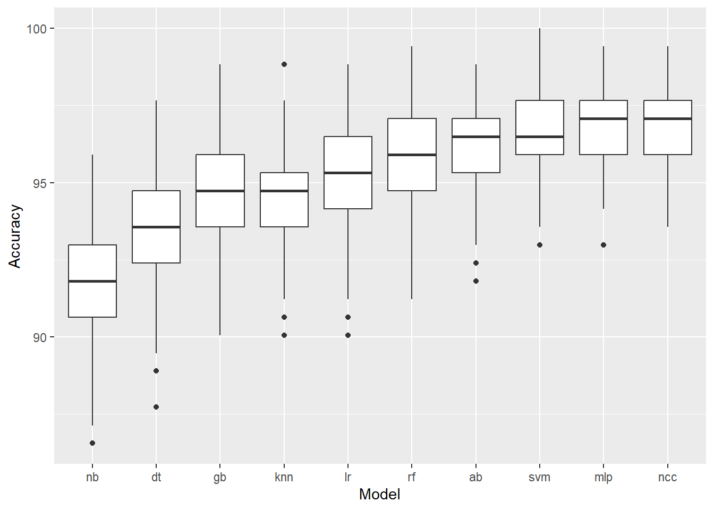

library(psych)
library(ggplot2)
library(dplyr)
library(tidyverse)
library(shiny)
library(shinythemes)
library(tibble)
library(vroom)
library(fastDummies)
library(caTools)
library(class)
library(naivebayes)
library(paletteer)
library(randomForest)
library(shinyjs)
library(ggcorrplot)
library(utils)
library(pROC)
library(class)
library(reshape2)
library(gridExtra)
library(utils)
library(FNN)
library(mlbench)
library(caret)
library(ggbiplot)
library(devtools)
library(varImp)
library(e1071)
library(adabag)
library(rpart)
library(gbm)
library(nnet)
library(glmnet)
library(gganimate)
library(gifski)
library(png)
library(GGally)
library(mctest)
library(car)Comparison of Classification Machine Learning Models for Breast Cancer Case Identification
Abstract
In this report, we investigated various classification models applied to the Wisconsin Breast Cancer Classification dataset found on Kaggle to evaluate each model’s performance in predicting a diagnosis outcome on whether the tumor is benign or malignant. Utilizing a collection of ten algorithms including, we assessed accuracy and precision metrics. The dataset underwent rigorous preprocessing, including feature selection to remove highly correlated variables and normalization to ensure consistent data scaling. We conducted extensive model evaluations, repeated across 200 iterations to ensure robustness and reliability of the results. This comprehensive analysis aims to identify the most effective model for breast cancer diagnosis prediction and to understand the relative performance of various classification techniques. We found that when using Neural Classification Chains, we would achieve the best median accuracy and the second best median precision and found that the most important features for the top performing models were radius_worst, concave.points_worst, concavity_worst, radius_se, and compactness_mean.
Introduction
After seeing breast cancer’s devastating impact on a close family member, we felt compelled to channel my efforts into working on a dataset dedicated to improving breast cancer classification. This disease is still one of the most critical health challenges globally, with 2.3 million people being diagnosed and 670,000 deaths each year as it accounts for 31% of all cancer diagnosed in women. We need to develop reliable methods for early detection and diagnosis before it’s too late for the many patients who need it. Machine learning techniques offer promising solutions for enhancing diagnostic accuracy by analyzing patterns in medical data. This study aims to explore the efficacy of multiple classification algorithms in predicting breast cancer diagnoses using the Wisconsin Diagnostic Breast Cancer Dataset.
The dataset includes a total of 30 features relevant to breast cancer diagnosis, such as mean radius, texture, and area of the tumors among many others fore ach patient. In terms of preprocessing, we incorporated the removal of highly correlated variables to avoid redundancy and normalization to ensure comparability across features. We evaluated a set of 10 classification models: Random Forest, K-Nearest Neighbors, Support Vector Machines, Decision Trees, Naive Bayes, Logistic Regression, Boosting, Gradient Boosting Machines, Multi-Layer Perceptrons, and Neural Classification Chains. Each evaluation has 70% of the data as training and 30% as testing.
Each model’s performance is evaluated based on accuracy and precision metrics to determine their effectiveness in classifying breast cancer diagnoses. The models are tested across 200 iterations to validate the stability of their performance and to mitigate the impact of random variability. By systematically comparing these models, this report seeks to identify the most robust approach for breast cancer classification and provide insights into the strengths and limitations of the techniques.
Let’s first import all of the necessary libraries.
setwd("C:/Users/Tony/OneDrive/Documents/tonyR/DSRP-2024-Khevna/tonyWork")
data <- read.csv("../data/breast_cancer_classification_data.csv")Feature Selection
First, it is necessary to clean up the data. Thus, we removed the first and last columns as they were not necessary. The first column included patient id while the last column was empty.
data <- data[,c(-1,-33)]Now, we need to check for variables with no variance.
nearZeroVar(data)integer(0)The nearZeroVar shows us that we don’t have to remove any variables with little to no variation. Our next step in cleaning up the data is to normalize the values to ensure comparability across features.
data <- cbind(data[1],as.data.frame(scale(data[,-1])))Next, when working with machine learning models, highly correlated values can have unforeseen effects. To ensure there were no highly correlated variables, We calculated the correlation between every numerical variable and plotted those that were above 0.9, as seen in the following correlation matrix.
numerical_data <- data[,2:31]
correlation <- cor(numerical_data,use = "complete.obs")
ggcorrplot(correlation > 0.9)We also use the findCorrelation function to find the variables we need to remove in order to get rid of the the high correlations we foudn earlier.
highlyCorrelated <- findCorrelation(cor(numerical_data), cutoff=0.9,names=TRUE)
highlyCorrelated [1] "concavity_mean" "concave.points_mean" "perimeter_worst"
[4] "radius_worst" "perimeter_mean" "area_worst"
[7] "radius_mean" "perimeter_se" "area_se"
[10] "texture_mean" By iterating through this list of highly correlated variables and using some logic, we can come up with the following selection of variables. It’s not the exact same but removes enough to leave no highly correlated pairs. We can see this when we run the findCorrelation function again.
highlyCorrelated <- findCorrelation(cor(select(numerical_data,-c("concavity_mean","concave.points_mean","perimeter_worst","radius_mean","perimeter_mean","perimeter_se","area_worst","area_mean","area_se","texture_mean"))), cutoff=0.9,names=TRUE)
highlyCorrelatedcharacter(0)Let’s modify the original data with these column removals and then test to see if any pairs of the numerical variables contain a correlation of greater than 0.9 by plotting another correlation matrix.
originalData <- data
data <- data %>% select(-c("concavity_mean","concave.points_mean","perimeter_worst","radius_mean","perimeter_mean","perimeter_se","area_worst","area_mean","area_se","texture_mean"))correlation <- cor(data[,-1],use = "complete.obs")
ggcorrplot(correlation > 0.9) 
As seen in the graph, there are no pairs of highly correlated variables.
Model Comparison
We can now use this subset data on all 10 of the different models: Random Forest, K-Nearest Neighbors, Support Vector Machines, Decision Trees, Naive Bayes, Logistic Regression, Boosting, Gradient Boosting Machines, Multi-Layer Perceptrons, and Neural Classification Chains. These models all have their unique way of classifying.
- Random Forest creates multiple decision trees from random subsets of data and features. The final prediction comes from averaging the results from all the trees.
- K-Nearest Neighbors classifies data by finding the “k” closest neighbors by distance. The label is determined by the majority vote among these neighbors.
- Support Vector Machines tries to find the optimal hyperplane for separating the data into their categories. It can handle both linear and non-linear separations using different kernel functions.
- Decision Trees split the data into branches based on feature values. Each branch represents a decision path leading to a final prediction at the leaf nodes.
- Naive Bayes uses Bayes’ theorem and assumes that features are conditionally independent given the class. It calculates the probability of each class and predicts the one with the highest probability.
- Logistic Regression predicts the probability of a binary outcome using a logistic function and is very useful for classification tasks like this one.
- Boosting builds an ensemble of weak learners, where each new model focuses on correcting the errors of the previous ones. The final model is a weighted sum of all weak learners, improving accuracy.
- Gradient Boosting Machines sequentially build models to minimize a loss function using gradient descent. It often uses decision trees as base learners and can handle various loss functions.
- Multi-Layer Perceptrons are neural networks with multiple layers of neurons. They learn complex patterns in the data through non-linear activation functions and backpropagation.
- Neural Classification Chains chain multiple binary classifiers, where the prediction of one can depend on the predictions of the previous ones, to make a final prediction.
set.seed(42)
dataset <- data
split <- sample.split(dataset$diagnosis,SplitRatio=0.7)
training <- subset(dataset,split==TRUE)
testing <- subset(dataset,split==FALSE)
training$diagnosis <- as.factor(training$diagnosis)
testing$diagnosis <- as.factor(testing$diagnosis)
rf_model <- randomForest(x = training[,-1],
y = training$diagnosis, ntree=50)
predictions <- predict(rf_model, newdata = testing[,-1])
actuals <- testing$diagnosis
confusion_matrix <- table(Predicted = predictions, Actual = actuals)
accuracyrf1 <- sum(diag(confusion_matrix)) / sum(confusion_matrix)
precisionrf1 <- confusion_matrix["M", "M"] / sum(confusion_matrix["M", ])
##print("rf")
##print(confusion_matrix)
knn_model <- knn(train = training[,-1], test=testing[,-1],cl=training$diagnosis, k=5)
actuals <- testing$diagnosis
confusion_matrix <- table(Predicted = knn_model, Actual = actuals)
accuracyknn1 <- sum(diag(confusion_matrix)) / sum(confusion_matrix)
precisionknn1 <- confusion_matrix["M", "M"] / sum(confusion_matrix["M", ])
###print("knn")
##print(confusion_matrix)
svm_model <- svm(diagnosis ~ ., data = training, kernel = "radial", cost = 1, scale = TRUE)
predictions <- predict(svm_model, testing)
confusion_matrix <- table(Predicted = predictions, Actual = testing$diagnosis)
accuracysvm1 <- sum(diag(confusion_matrix)) / sum(confusion_matrix)
precisionsvm1 <- confusion_matrix["M", "M"] / sum(confusion_matrix["M", ])
##print("svm,")
##print(confusion_matrix)
dt_model <- rpart(diagnosis ~ ., data = training, method = "class")
predictions <- predict(dt_model, testing, type = "class")
confusion_matrix <- table(Predicted = predictions, Actual = testing$diagnosis)
accuracydt1 <- sum(diag(confusion_matrix)) / sum(confusion_matrix)
precisiondt1 <- confusion_matrix["M", "M"] / sum(confusion_matrix["M", ])
##print("dt")
##print(confusion_matrix)
nb_model <- naiveBayes(diagnosis ~ ., data = training)
predictions <- predict(nb_model, testing)
confusion_matrix <- table(Predicted = predictions, Actual = testing$diagnosis)
accuracynb1 <- sum(diag(confusion_matrix)) / sum(confusion_matrix)
precisionnb1 <- confusion_matrix["M", "M"] / sum(confusion_matrix["M", ])
##print("nb")
##print(confusion_matrix)
lr_model <- glm(diagnosis ~ ., data = training, family = binomial)Warning: glm.fit: algorithm did not convergeWarning: glm.fit: fitted probabilities numerically 0 or 1 occurredpredictions_prob <- predict(lr_model, testing, type = "response")
predictions <- ifelse(predictions_prob > 0.5, "M", "B")
predictions <- factor(predictions, levels = levels(testing$diagnosis))
confusion_matrix <- table(Predicted = predictions, Actual = testing$diagnosis)
accuracylr1 <- sum(diag(confusion_matrix)) / sum(confusion_matrix)
precisionlr1 <- confusion_matrix["M", "M"] / sum(confusion_matrix["M", ])
##print("lr")
##print(confusion_matrix)
ab_model <- boosting(diagnosis ~ ., data = training, mfinal = 50)
predictions <- predict(ab_model, newdata = testing)
confusion_matrix <- table(Predicted = predictions$class, Actual = testing$diagnosis)
accuracyab1 <- sum(diag(confusion_matrix)) / sum(confusion_matrix)
precisionab1 <- confusion_matrix["M", "M"] / sum(confusion_matrix["M", ])
##print("ab")
##print(confusion_matrix)
training1 <- training
testing1 <- testing
training1$diagnosis <- as.numeric(training1$diagnosis) - 1
testing1$diagnosis <- as.numeric(testing1$diagnosis) - 1
gb_model <- gbm(
formula = diagnosis ~ .,
data = training1,
distribution = "bernoulli",
n.trees = 100,
interaction.depth = 3,
shrinkage = 0.01,
n.minobsinnode = 10
)
predictions_prob <- predict(gb_model, newdata = testing1, n.trees = 100, type = "response")
predictions <- ifelse(predictions_prob > 0.5, 1, 0)
predictions <- factor(predictions, levels = c(0, 1))
actual <- factor(testing1$diagnosis, levels = c(0, 1))
confusion_matrix <- table(Predicted = predictions, Actual = actual)
accuracygb1 <- sum(diag(confusion_matrix)) / sum(confusion_matrix)
precisiongb1 <- confusion_matrix["1", "1"] / sum(confusion_matrix["1", ])
##print("gb")
##print(confusion_matrix)
mlp_model <- nnet(
diagnosis ~ .,
data = training1,
size = 10,
decay = 0.01,
maxit = 200,
linout = FALSE
)# weights: 221
initial value 107.828798
iter 10 value 5.485194
iter 20 value 3.679243
iter 30 value 3.059261
iter 40 value 2.434946
iter 50 value 2.292030
iter 60 value 2.267135
iter 70 value 2.257665
iter 80 value 2.253613
iter 90 value 2.251156
iter 100 value 2.250165
iter 110 value 2.249579
iter 120 value 2.249101
iter 130 value 2.248924
iter 140 value 2.248789
iter 150 value 2.248683
iter 160 value 2.248654
iter 170 value 2.248641
iter 180 value 2.248619
iter 190 value 2.248589
iter 200 value 2.248272
final value 2.248272
stopped after 200 iterationspredictions_prob <- predict(mlp_model, newdata = testing1, type = "raw")
predictions <- ifelse(predictions_prob > 0.5, 1, 0)
predictions <- factor(predictions, levels = c(0, 1))
actual <- factor(testing1$diagnosis, levels = c(0, 1))
confusion_matrix <- table(Predicted = predictions, Actual = actual)
accuracymlp1 <- sum(diag(confusion_matrix)) / sum(confusion_matrix)
precisionmlp1 <- confusion_matrix["1", "1"] / sum(confusion_matrix["1", ])
##print("mlp")
##print(confusion_matrix)
model1 <- nnet(
diagnosis ~ .,
data = training1,
size = 10,
decay = 0.01,
maxit = 200,
linout = FALSE
)# weights: 221
initial value 109.405184
iter 10 value 9.934247
iter 20 value 5.246321
iter 30 value 3.470219
iter 40 value 2.569199
iter 50 value 2.326829
iter 60 value 2.278821
iter 70 value 2.250394
iter 80 value 2.232803
iter 90 value 2.226284
iter 100 value 2.224619
iter 110 value 2.224035
iter 120 value 2.223881
iter 130 value 2.223835
iter 140 value 2.223794
iter 150 value 2.223647
iter 160 value 2.223562
iter 170 value 2.223525
iter 180 value 2.223501
iter 190 value 2.223484
iter 200 value 2.223474
final value 2.223474
stopped after 200 iterationspredictions_prob1 <- predict(model1, newdata = testing1, type = "raw")
testing1$pred1 <- ifelse(predictions_prob1 > 0.5, 1, 0)
train_predictions_prob1 <- predict(model1, newdata = training1, type = "raw")
training1$pred1 <- ifelse(train_predictions_prob1 > 0.5, 1, 0)
model2 <- nnet(
diagnosis ~ . + pred1,
data = training1,
size = 10,
decay = 0.01,
maxit = 200,
linout = FALSE
)# weights: 231
initial value 93.146152
iter 10 value 8.282783
iter 20 value 2.779479
iter 30 value 0.931041
iter 40 value 0.748109
iter 50 value 0.710712
iter 60 value 0.692021
iter 70 value 0.671801
iter 80 value 0.661991
iter 90 value 0.658706
iter 100 value 0.656678
iter 110 value 0.655030
iter 120 value 0.654081
iter 130 value 0.653699
iter 140 value 0.653625
iter 150 value 0.653615
iter 160 value 0.653613
iter 170 value 0.653613
iter 180 value 0.653612
iter 190 value 0.653612
iter 200 value 0.653611
final value 0.653611
stopped after 200 iterationspredictions_prob2 <- predict(model2, newdata = testing1, type = "raw")
predictions2 <- ifelse(predictions_prob2 > 0.5, 1, 0)
predictions2 <- factor(predictions2, levels = c(0, 1))
actual <- factor(testing1$diagnosis, levels = c(0, 1))
confusion_matrix <- table(Predicted = predictions2, Actual = actual)
accuracyncc1 <- sum(diag(confusion_matrix)) / sum(confusion_matrix)
precisionncc1 <- confusion_matrix["1", "1"] / sum(confusion_matrix["1", ])
#print("ncc")
#print(confusion_matrix)
accuracies <- tibble(
Model = c("rf", "knn", "svm", "dt", "nb", "lr", "ab", "gb", "ncc", "mlp"),
Accuracy = c(round(accuracyrf1 * 100, 2), round(accuracyknn1 * 100, 2), round(accuracysvm1 * 100, 2),
round(accuracydt1 * 100, 2), round(accuracynb1 * 100, 2), round(accuracylr1 * 100, 2),
round(accuracyab1 * 100, 2), round(accuracygb1 * 100, 2), round(accuracyncc1 * 100, 2),
round(accuracymlp1 * 100, 2)),
Precision = c(round(precisionrf1 * 100, 2), round(precisionknn1 * 100, 2), round(precisionsvm1 * 100, 2),
round(precisiondt1 * 100, 2), round(precisionnb1 * 100, 2), round(precisionlr1 * 100, 2),
round(precisionab1 * 100, 2), round(precisiongb1 * 100, 2), round(precisionncc1 * 100, 2),
round(precisionmlp1 * 100, 2)))
accuracies# A tibble: 10 × 3
Model Accuracy Precision
<chr> <dbl> <dbl>
1 rf 97.7 98.4
2 knn 94.7 96.6
3 svm 97.1 98.4
4 dt 97.1 96.8
5 nb 94.2 93.6
6 lr 96.5 96.8
7 ab 97.7 96.9
8 gb 97.7 96.9
9 ncc 98.2 96.9
10 mlp 98.8 98.4Now, notice that we used the subset and not all the variables. To ensure that this is a reasonable subset and that the results won’t differ significantly from using all the variables, we need to compare the results of running the models with just the subset to using the entire dataset. We can do this by iterating with each machine learning model 200 times for both the subset and original dataset through the following code.
big_accuracy_dataframe_standard <- tibble()
for(seed in 1:200){
set.seed(seed)
dataset <- originalData
split <- sample.split(dataset$diagnosis,SplitRatio=0.7)
training <- subset(dataset,split==TRUE)
testing <- subset(dataset,split==FALSE)
training$diagnosis <- as.factor(training$diagnosis)
testing$diagnosis <- as.factor(testing$diagnosis)
trainingSubset <- training %>% select(-c("concavity_mean","concave.points_mean","perimeter_worst","radius_mean","perimeter_mean","perimeter_se","area_worst","area_mean","area_se","texture_mean"))
testingSubset <- testing %>% select(-c("concavity_mean","concave.points_mean","perimeter_worst","radius_mean","perimeter_mean","perimeter_se","area_worst","area_mean","area_se","texture_mean"))
rf_model <- randomForest(x = training[,-1],
y = training$diagnosis, ntree=50)
predictions <- predict(rf_model, newdata = testing[,-1])
actuals <- testing$diagnosis
confusion_matrix <- table(Predicted = predictions, Actual = actuals)
accuracyrf1 <- sum(diag(confusion_matrix)) / sum(confusion_matrix)
rf_model <- randomForest(x = trainingSubset[,-1],
y = trainingSubset$diagnosis, ntree=50)
predictions <- predict(rf_model, newdata = testingSubset[,-1])
actuals <- testingSubset$diagnosis
confusion_matrix <- table(Predicted = predictions, Actual = actuals)
accuracyrf2 <- sum(diag(confusion_matrix)) / sum(confusion_matrix)
knn_model <- knn(train = training[,-1], test=testing[,-1],cl=training$diagnosis, k=5)
actuals <- testing$diagnosis
confusion_matrix <- table(Predicted = knn_model, Actual = actuals)
accuracyknn1 <- sum(diag(confusion_matrix)) / sum(confusion_matrix)
knn_model <- knn(train = trainingSubset[,-1], test=testingSubset[,-1],cl=training$diagnosis, k=5)
actuals <- testingSubset$diagnosis
confusion_matrix <- table(Predicted = knn_model, Actual = actuals)
accuracyknn2 <- sum(diag(confusion_matrix)) / sum(confusion_matrix)
svm_model <- svm(diagnosis ~ ., data = training, kernel = "radial", cost = 1, scale = TRUE)
predictions <- predict(svm_model, testing)
confusion_matrix <- table(Predicted = predictions, Actual = testing$diagnosis)
accuracysvm1 <- sum(diag(confusion_matrix)) / sum(confusion_matrix)
svm_model <- svm(diagnosis ~ ., data = trainingSubset, kernel = "radial", cost = 1, scale = TRUE)
predictions <- predict(svm_model, testingSubset)
confusion_matrix <- table(Predicted = predictions, Actual = testingSubset$diagnosis)
accuracysvm2 <- sum(diag(confusion_matrix)) / sum(confusion_matrix)
dt_model <- rpart(diagnosis ~ ., data = training, method = "class")
predictions <- predict(dt_model, testing, type = "class")
confusion_matrix <- table(Predicted = predictions, Actual = testing$diagnosis)
accuracydt1 <- sum(diag(confusion_matrix)) / sum(confusion_matrix)
dt_model <- rpart(diagnosis ~ ., data = trainingSubset, method = "class")
predictions <- predict(dt_model, testingSubset, type = "class")
confusion_matrix <- table(Predicted = predictions, Actual = testingSubset$diagnosis)
accuracydt2 <- sum(diag(confusion_matrix)) / sum(confusion_matrix)
nb_model <- naiveBayes(diagnosis ~ ., data = training)
predictions <- predict(nb_model, testing)
confusion_matrix <- table(Predicted = predictions, Actual = testing$diagnosis)
accuracynb1 <- sum(diag(confusion_matrix)) / sum(confusion_matrix)
nb_model <- naiveBayes(diagnosis ~ ., data = trainingSubset)
predictions <- predict(nb_model, testingSubset)
confusion_matrix <- table(Predicted = predictions, Actual = testingSubset$diagnosis)
accuracynb2 <- sum(diag(confusion_matrix)) / sum(confusion_matrix)
lr_model <- glm(diagnosis ~ ., data = training, family = binomial)
predictions_prob <- predict(lr_model, testing, type = "response")
predictions <- ifelse(predictions_prob > 0.5, "M", "B")
predictions <- factor(predictions, levels = levels(testing$diagnosis))
confusion_matrix <- table(Predicted = predictions, Actual = testing$diagnosis)
accuracylr1 <- sum(diag(confusion_matrix)) / sum(confusion_matrix)
lr_model <- glm(diagnosis ~ ., data = trainingSubset, family = binomial)
predictions_prob <- predict(lr_model, testingSubset, type = "response")
predictions <- ifelse(predictions_prob > 0.5, "M", "B")
predictions <- factor(predictions, levels = levels(testingSubset$diagnosis))
confusion_matrix <- table(Predicted = predictions, Actual = testingSubset$diagnosis)
accuracylr2 <- sum(diag(confusion_matrix)) / sum(confusion_matrix)
ab_model <- boosting(diagnosis ~ ., data = training, mfinal = 50)
predictions <- predict(ab_model, newdata = testing)
confusion_matrix <- table(Predicted = predictions$class, Actual = testing$diagnosis)
accuracyab1 <- sum(diag(confusion_matrix)) / sum(confusion_matrix)
ab_model <- boosting(diagnosis ~ ., data = trainingSubset, mfinal = 50)
predictions <- predict(ab_model, newdata = testingSubset)
confusion_matrix <- table(Predicted = predictions$class, Actual = testingSubset$diagnosis)
accuracyab2 <- sum(diag(confusion_matrix)) / sum(confusion_matrix)
training1 <- training
testing1 <- testing
training1$diagnosis <- as.numeric(training1$diagnosis) - 1
testing1$diagnosis <- as.numeric(testing1$diagnosis) - 1
gb_model <- gbm(
formula = diagnosis ~ .,
data = training1,
distribution = "bernoulli",
n.trees = 100,
interaction.depth = 3,
shrinkage = 0.01,
n.minobsinnode = 10
)
predictions_prob <- predict(gb_model, newdata = testing1, n.trees = 100, type = "response")
predictions <- ifelse(predictions_prob > 0.5, 1, 0)
predictions <- factor(predictions, levels = c(0, 1))
actual <- factor(testing1$diagnosis, levels = c(0, 1))
confusion_matrix <- table(Predicted = predictions, Actual = actual)
accuracygb1 <- sum(diag(confusion_matrix)) / sum(confusion_matrix)
gb_model <- gbm(
formula = diagnosis ~ .,
data = training1,
distribution = "bernoulli",
n.trees = 100,
interaction.depth = 3,
shrinkage = 0.01,
n.minobsinnode = 10
)
predictions_prob <- predict(gb_model, newdata = testing1, n.trees = 100, type = "response")
predictions <- ifelse(predictions_prob > 0.5, 1, 0)
predictions <- factor(predictions, levels = c(0, 1))
actual <- factor(testing1$diagnosis, levels = c(0, 1))
confusion_matrix <- table(Predicted = predictions, Actual = actual)
accuracygb2 <- sum(diag(confusion_matrix)) / sum(confusion_matrix)
mlp_model <- nnet(
diagnosis ~ .,
data = training1,
size = 10,
decay = 0.01,
maxit = 200,
linout = FALSE
)
predictions_prob <- predict(mlp_model, newdata = testing1, type = "raw")
predictions <- ifelse(predictions_prob > 0.5, 1, 0)
predictions <- factor(predictions, levels = c(0, 1))
actual <- factor(testing1$diagnosis, levels = c(0, 1))
confusion_matrix <- table(Predicted = predictions, Actual = actual)
accuracymlp1 <- sum(diag(confusion_matrix)) / sum(confusion_matrix)
mlp_model <- nnet(
diagnosis ~ .,
data = training1,
size = 10,
decay = 0.01,
maxit = 200,
linout = FALSE
)
predictions_prob <- predict(mlp_model, newdata = testing1, type = "raw")
predictions <- ifelse(predictions_prob > 0.5, 1, 0)
predictions <- factor(predictions, levels = c(0, 1))
actual <- factor(testing1$diagnosis, levels = c(0, 1))
confusion_matrix <- table(Predicted = predictions, Actual = actual)
accuracymlp2 <- sum(diag(confusion_matrix)) / sum(confusion_matrix)
model1 <- nnet(
diagnosis ~ .,
data = training1,
size = 10,
decay = 0.01,
maxit = 200,
linout = FALSE
)
predictions_prob1 <- predict(model1, newdata = testing1, type = "raw")
testing1$pred1 <- ifelse(predictions_prob1 > 0.5, 1, 0)
train_predictions_prob1 <- predict(model1, newdata = training1, type = "raw")
training1$pred1 <- ifelse(train_predictions_prob1 > 0.5, 1, 0)
model2 <- nnet(
diagnosis ~ . + pred1,
data = training1,
size = 10,
decay = 0.01,
maxit = 200,
linout = FALSE
)
predictions_prob2 <- predict(model2, newdata = testing1, type = "raw")
predictions2 <- ifelse(predictions_prob2 > 0.5, 1, 0)
predictions2 <- factor(predictions2, levels = c(0, 1))
actual <- factor(testing1$diagnosis, levels = c(0, 1))
confusion_matrix <- table(Predicted = predictions2, Actual = actual)
accuracyncc1 <- sum(diag(confusion_matrix)) / sum(confusion_matrix)
model1 <- nnet(
diagnosis ~ .,
data = training1,
size = 10,
decay = 0.01,
maxit = 200,
linout = FALSE
)
predictions_prob1 <- predict(model1, newdata = testing1, type = "raw")
testing1$pred1 <- ifelse(predictions_prob1 > 0.5, 1, 0)
train_predictions_prob1 <- predict(model1, newdata = training1, type = "raw")
training1$pred1 <- ifelse(train_predictions_prob1 > 0.5, 1, 0)
model2 <- nnet(
diagnosis ~ . + pred1,
data = training1,
size = 10,
decay = 0.01,
maxit = 200,
linout = FALSE
)
predictions_prob2 <- predict(model2, newdata = testing1, type = "raw")
predictions2 <- ifelse(predictions_prob2 > 0.5, 1, 0)
predictions2 <- factor(predictions2, levels = c(0, 1))
actual <- factor(testing1$diagnosis, levels = c(0, 1))
confusion_matrix <- table(Predicted = predictions2, Actual = actual)
accuracyncc2 <- sum(diag(confusion_matrix)) / sum(confusion_matrix)
accuracies <- tibble(
Model = c("rf", "knn", "svm", "dt", "nb", "lr", "ab", "gb", "ncc", "mlp"),
All_Variables = c(round(accuracyrf1 * 100, 2), round(accuracyknn1 * 100, 2), round(accuracysvm1 * 100, 2),
round(accuracydt1 * 100, 2), round(accuracynb1 * 100, 2), round(accuracylr1 * 100, 2),
round(accuracyab1 * 100, 2), round(accuracygb1 * 100, 2), round(accuracyncc1 * 100, 2),
round(accuracymlp1 * 100, 2)),
Subset = c(round(accuracyrf2 * 100, 2), round(accuracyknn2 * 100, 2), round(accuracysvm2 * 100, 2),
round(accuracydt2 * 100, 2), round(accuracynb2 * 100, 2), round(accuracylr2 * 100, 2),
round(accuracyab2 * 100, 2), round(accuracygb2 * 100, 2), round(accuracyncc2 * 100, 2),
round(accuracymlp2 * 100, 2))
)
accuracies_long <- accuracies %>%
pivot_longer(cols = c("All_Variables", "Subset"),
names_to = "Metric",
values_to = "Accuracy")
accuracies_long$seed = seed
big_accuracy_dataframe_standard <- bind_rows(big_accuracy_dataframe_standard,accuracies_long)
}Warning: glm.fit: algorithm did not convergeWarning: glm.fit: fitted probabilities numerically 0 or 1 occurred
Warning: glm.fit: fitted probabilities numerically 0 or 1 occurred# weights: 321
initial value 94.059585
iter 10 value 16.393812
iter 20 value 7.080156
iter 30 value 4.636611
iter 40 value 3.350389
iter 50 value 2.599142
iter 60 value 2.502225
iter 70 value 2.471160
iter 80 value 2.456782
iter 90 value 2.450170
iter 100 value 2.444714
iter 110 value 2.439792
iter 120 value 2.437046
iter 130 value 2.434862
iter 140 value 2.433948
iter 150 value 2.433363
iter 160 value 2.432896
iter 170 value 2.432698
iter 180 value 2.430840
iter 190 value 2.428832
iter 200 value 2.428403
final value 2.428403
stopped after 200 iterations
# weights: 321
initial value 97.082413
iter 10 value 12.346892
iter 20 value 5.187494
iter 30 value 3.528187
iter 40 value 2.708078
iter 50 value 2.022336
iter 60 value 1.779289
iter 70 value 1.725962
iter 80 value 1.709135
iter 90 value 1.700375
iter 100 value 1.695205
iter 110 value 1.691634
iter 120 value 1.678844
iter 130 value 1.672331
iter 140 value 1.670885
iter 150 value 1.670511
iter 160 value 1.670337
iter 170 value 1.670270
iter 180 value 1.670231
iter 190 value 1.670201
iter 200 value 1.670186
final value 1.670186
stopped after 200 iterations
# weights: 321
initial value 100.342773
iter 10 value 5.544646
iter 20 value 3.988577
iter 30 value 2.745816
iter 40 value 1.971709
iter 50 value 1.758818
iter 60 value 1.715512
iter 70 value 1.698461
iter 80 value 1.687972
iter 90 value 1.683089
iter 100 value 1.680642
iter 110 value 1.678745
iter 120 value 1.676860
iter 130 value 1.676120
iter 140 value 1.675957
iter 150 value 1.675875
iter 160 value 1.675842
iter 170 value 1.675833
iter 180 value 1.675829
iter 190 value 1.675828
final value 1.675828
converged
# weights: 331
initial value 171.061339
iter 10 value 16.190343
iter 20 value 2.736164
iter 30 value 0.953830
iter 40 value 0.731595
iter 50 value 0.690499
iter 60 value 0.660040
iter 70 value 0.648256
iter 80 value 0.642089
iter 90 value 0.638078
iter 100 value 0.635059
iter 110 value 0.633589
iter 120 value 0.632626
iter 130 value 0.632153
iter 140 value 0.631999
iter 150 value 0.631897
iter 160 value 0.631835
iter 170 value 0.631771
iter 180 value 0.631649
iter 190 value 0.631513
iter 200 value 0.631464
final value 0.631464
stopped after 200 iterations
# weights: 331
initial value 102.879123
iter 10 value 7.152613
iter 20 value 4.053977
iter 30 value 1.533018
iter 40 value 0.796438
iter 50 value 0.682093
iter 60 value 0.655777
iter 70 value 0.643028
iter 80 value 0.635238
iter 90 value 0.631501
iter 100 value 0.630620
iter 110 value 0.630215
iter 120 value 0.630107
iter 130 value 0.630061
iter 140 value 0.630047
iter 150 value 0.630043
iter 160 value 0.630041
iter 170 value 0.630040
iter 180 value 0.630040
iter 190 value 0.630039
iter 200 value 0.630039
final value 0.630039
stopped after 200 iterations
# weights: 331
initial value 138.822725
iter 10 value 13.963042
iter 20 value 4.397496
iter 30 value 1.399107
iter 40 value 0.741546
iter 50 value 0.669736
iter 60 value 0.645056
iter 70 value 0.636071
iter 80 value 0.633205
iter 90 value 0.631654
iter 100 value 0.631482
iter 110 value 0.631459
iter 120 value 0.631452
iter 130 value 0.631450
iter 140 value 0.631449
final value 0.631449
convergedWarning: glm.fit: algorithm did not converge
Warning: glm.fit: fitted probabilities numerically 0 or 1 occurredWarning: glm.fit: algorithm did not convergeWarning: glm.fit: fitted probabilities numerically 0 or 1 occurred# weights: 321
initial value 83.914755
iter 10 value 3.733990
iter 20 value 2.670450
iter 30 value 2.514959
iter 40 value 2.481288
iter 50 value 1.960936
iter 60 value 1.808073
iter 70 value 1.789307
iter 80 value 1.779137
iter 90 value 1.776252
iter 100 value 1.774592
iter 110 value 1.771475
iter 120 value 1.767544
iter 130 value 1.764360
iter 140 value 1.761281
iter 150 value 1.760536
iter 160 value 1.758847
iter 170 value 1.756150
iter 180 value 1.746673
iter 190 value 1.741732
iter 200 value 1.738577
final value 1.738577
stopped after 200 iterations
# weights: 321
initial value 110.689797
iter 10 value 8.527500
iter 20 value 4.609856
iter 30 value 3.215713
iter 40 value 2.684248
iter 50 value 2.518733
iter 60 value 2.407488
iter 70 value 1.849726
iter 80 value 1.774001
iter 90 value 1.753309
iter 100 value 1.745922
iter 110 value 1.743148
iter 120 value 1.742580
iter 130 value 1.742103
iter 140 value 1.741661
iter 150 value 1.740995
iter 160 value 1.739447
iter 170 value 1.738656
iter 180 value 1.738030
iter 190 value 1.737835
iter 200 value 1.737793
final value 1.737793
stopped after 200 iterations
# weights: 321
initial value 184.983319
iter 10 value 56.524259
iter 20 value 9.111245
iter 30 value 3.878923
iter 40 value 2.468185
iter 50 value 2.179848
iter 60 value 2.009331
iter 70 value 1.918803
iter 80 value 1.888510
iter 90 value 1.871820
iter 100 value 1.852168
iter 110 value 1.842788
iter 120 value 1.839049
iter 130 value 1.832316
iter 140 value 1.826888
iter 150 value 1.822032
iter 160 value 1.815624
iter 170 value 1.809925
iter 180 value 1.807262
iter 190 value 1.805601
iter 200 value 1.804890
final value 1.804890
stopped after 200 iterations
# weights: 331
initial value 91.773428
iter 10 value 13.943938
iter 20 value 3.100462
iter 30 value 0.901581
iter 40 value 0.660594
iter 50 value 0.622913
iter 60 value 0.612757
iter 70 value 0.608816
iter 80 value 0.606978
iter 90 value 0.605723
iter 100 value 0.604774
iter 110 value 0.604564
iter 120 value 0.604509
iter 130 value 0.604490
iter 140 value 0.604488
iter 150 value 0.604487
final value 0.604487
converged
# weights: 331
initial value 91.403832
iter 10 value 4.148229
iter 20 value 1.193596
iter 30 value 0.767504
iter 40 value 0.648927
iter 50 value 0.623519
iter 60 value 0.614831
iter 70 value 0.609874
iter 80 value 0.607965
iter 90 value 0.606258
iter 100 value 0.605270
iter 110 value 0.604739
iter 120 value 0.604559
iter 130 value 0.604525
iter 140 value 0.604503
iter 150 value 0.604491
iter 160 value 0.604488
iter 170 value 0.604487
final value 0.604487
converged
# weights: 331
initial value 94.208005
iter 10 value 14.920700
iter 20 value 3.768874
iter 30 value 1.014594
iter 40 value 0.693414
iter 50 value 0.641726
iter 60 value 0.616452
iter 70 value 0.609735
iter 80 value 0.606752
iter 90 value 0.605045
iter 100 value 0.604672
iter 110 value 0.604527
iter 120 value 0.604496
iter 130 value 0.604491
iter 140 value 0.604488
iter 150 value 0.604487
final value 0.604487
convergedWarning: glm.fit: algorithm did not converge
Warning: glm.fit: fitted probabilities numerically 0 or 1 occurredWarning: glm.fit: algorithm did not convergeWarning: glm.fit: fitted probabilities numerically 0 or 1 occurred# weights: 321
initial value 76.585788
iter 10 value 28.402640
iter 20 value 6.263514
iter 30 value 2.494106
iter 40 value 2.120572
iter 50 value 2.059415
iter 60 value 2.030526
iter 70 value 2.019865
iter 80 value 2.016819
iter 90 value 2.015654
iter 100 value 2.014788
iter 110 value 2.013370
iter 120 value 2.012595
iter 130 value 2.011670
iter 140 value 2.010302
iter 150 value 2.010098
iter 160 value 2.009935
iter 170 value 2.009854
iter 180 value 2.009834
iter 190 value 2.009827
iter 200 value 2.009821
final value 2.009821
stopped after 200 iterations
# weights: 321
initial value 178.648324
iter 10 value 6.809893
iter 20 value 3.175402
iter 30 value 2.243035
iter 40 value 2.094369
iter 50 value 2.046009
iter 60 value 2.032734
iter 70 value 2.027739
iter 80 value 2.026205
iter 90 value 2.025678
iter 100 value 2.025435
iter 110 value 2.025261
iter 120 value 2.025152
iter 130 value 2.025083
iter 140 value 2.025027
iter 150 value 2.024961
iter 160 value 2.024898
iter 170 value 2.024824
iter 180 value 2.024762
iter 190 value 2.024699
iter 200 value 2.024666
final value 2.024666
stopped after 200 iterations
# weights: 321
initial value 123.071413
iter 10 value 25.083517
iter 20 value 12.476834
iter 30 value 3.555219
iter 40 value 2.260684
iter 50 value 2.056150
iter 60 value 2.035116
iter 70 value 2.026410
iter 80 value 2.017651
iter 90 value 2.014906
iter 100 value 2.012479
iter 110 value 2.011568
iter 120 value 2.011004
iter 130 value 2.010652
iter 140 value 2.010319
iter 150 value 2.010138
iter 160 value 2.010015
iter 170 value 2.009964
iter 180 value 2.009944
iter 190 value 2.009937
iter 200 value 2.009934
final value 2.009934
stopped after 200 iterations
# weights: 331
initial value 64.249333
iter 10 value 16.962046
iter 20 value 2.861302
iter 30 value 1.715820
iter 40 value 1.590686
iter 50 value 1.559734
iter 60 value 1.549094
iter 70 value 1.544405
iter 80 value 1.542680
iter 90 value 1.541842
iter 100 value 1.541620
iter 110 value 1.541579
iter 120 value 1.541567
iter 130 value 1.541565
final value 1.541565
converged
# weights: 331
initial value 133.692626
iter 10 value 35.830266
iter 20 value 11.009107
iter 30 value 2.855869
iter 40 value 1.832342
iter 50 value 1.644363
iter 60 value 1.583876
iter 70 value 1.566515
iter 80 value 1.558799
iter 90 value 1.555040
iter 100 value 1.551514
iter 110 value 1.547574
iter 120 value 1.545637
iter 130 value 1.544627
iter 140 value 1.543690
iter 150 value 1.542836
iter 160 value 1.542323
iter 170 value 1.541965
iter 180 value 1.541729
iter 190 value 1.541636
iter 200 value 1.541580
final value 1.541580
stopped after 200 iterations
# weights: 331
initial value 100.114674
iter 10 value 11.487796
iter 20 value 3.340677
iter 30 value 1.799458
iter 40 value 1.605883
iter 50 value 1.568617
iter 60 value 1.557040
iter 70 value 1.549303
iter 80 value 1.544426
iter 90 value 1.542915
iter 100 value 1.542317
iter 110 value 1.542076
iter 120 value 1.542038
iter 130 value 1.542024
iter 140 value 1.542020
final value 1.542020
convergedWarning: glm.fit: algorithm did not converge
Warning: glm.fit: fitted probabilities numerically 0 or 1 occurred
Warning: glm.fit: fitted probabilities numerically 0 or 1 occurred# weights: 321
initial value 136.809537
iter 10 value 20.416571
iter 20 value 8.047814
iter 30 value 5.088150
iter 40 value 3.294139
iter 50 value 2.960847
iter 60 value 2.582581
iter 70 value 2.166838
iter 80 value 2.054677
iter 90 value 2.021396
iter 100 value 2.002258
iter 110 value 1.989087
iter 120 value 1.983578
iter 130 value 1.982232
iter 140 value 1.981725
iter 150 value 1.981543
iter 160 value 1.981475
iter 170 value 1.981456
iter 180 value 1.981453
iter 190 value 1.981452
iter 190 value 1.981452
iter 190 value 1.981452
final value 1.981452
converged
# weights: 321
initial value 125.799836
iter 10 value 6.699619
iter 20 value 4.446274
iter 30 value 2.788623
iter 40 value 2.258070
iter 50 value 2.097337
iter 60 value 2.030787
iter 70 value 1.986980
iter 80 value 1.956350
iter 90 value 1.940048
iter 100 value 1.933448
iter 110 value 1.930553
iter 120 value 1.928867
iter 130 value 1.928253
iter 140 value 1.927738
iter 150 value 1.927298
iter 160 value 1.927085
iter 170 value 1.927027
iter 180 value 1.927006
iter 190 value 1.927000
iter 200 value 1.926998
final value 1.926998
stopped after 200 iterations
# weights: 321
initial value 69.075236
iter 10 value 14.642950
iter 20 value 8.375197
iter 30 value 5.295330
iter 40 value 3.397569
iter 50 value 2.853412
iter 60 value 2.789253
iter 70 value 2.768500
iter 80 value 2.752496
iter 90 value 2.743570
iter 100 value 2.740013
iter 110 value 2.738228
iter 120 value 2.737539
iter 130 value 2.732281
iter 140 value 2.730586
iter 150 value 2.728804
iter 160 value 2.727947
iter 170 value 2.727839
iter 180 value 2.727822
iter 190 value 2.727815
iter 200 value 2.727813
final value 2.727813
stopped after 200 iterations
# weights: 331
initial value 171.723243
iter 10 value 28.317300
iter 20 value 9.301707
iter 30 value 2.932252
iter 40 value 1.636349
iter 50 value 1.121344
iter 60 value 1.058721
iter 70 value 1.029227
iter 80 value 1.005602
iter 90 value 0.984645
iter 100 value 0.975466
iter 110 value 0.972906
iter 120 value 0.971827
iter 130 value 0.970875
iter 140 value 0.969798
iter 150 value 0.968497
iter 160 value 0.967765
iter 170 value 0.967363
iter 180 value 0.966941
iter 190 value 0.966639
iter 200 value 0.966092
final value 0.966092
stopped after 200 iterations
# weights: 331
initial value 111.679985
iter 10 value 25.999354
iter 20 value 7.885296
iter 30 value 2.698315
iter 40 value 1.732443
iter 50 value 1.177905
iter 60 value 1.013798
iter 70 value 0.987356
iter 80 value 0.981352
iter 90 value 0.976250
iter 100 value 0.972388
iter 110 value 0.971291
iter 120 value 0.970784
iter 130 value 0.970674
iter 140 value 0.970555
iter 150 value 0.970368
iter 160 value 0.970241
iter 170 value 0.970175
iter 180 value 0.970146
iter 190 value 0.970134
iter 200 value 0.970125
final value 0.970125
stopped after 200 iterations
# weights: 331
initial value 101.487184
iter 10 value 9.165905
iter 20 value 3.382651
iter 30 value 1.273565
iter 40 value 0.766269
iter 50 value 0.692223
iter 60 value 0.664215
iter 70 value 0.654631
iter 80 value 0.648729
iter 90 value 0.645852
iter 100 value 0.644496
iter 110 value 0.643887
iter 120 value 0.643629
iter 130 value 0.643531
iter 140 value 0.643489
iter 150 value 0.643465
iter 160 value 0.643452
iter 170 value 0.643444
iter 180 value 0.643438
iter 190 value 0.643435
iter 200 value 0.643435
final value 0.643435
stopped after 200 iterationsWarning: glm.fit: algorithm did not converge
Warning: glm.fit: fitted probabilities numerically 0 or 1 occurredWarning: glm.fit: algorithm did not convergeWarning: glm.fit: fitted probabilities numerically 0 or 1 occurred# weights: 321
initial value 115.208893
iter 10 value 10.036936
iter 20 value 6.522521
iter 30 value 3.575798
iter 40 value 1.834194
iter 50 value 1.633374
iter 60 value 1.599105
iter 70 value 1.587592
iter 80 value 1.581837
iter 90 value 1.576137
iter 100 value 1.572323
iter 110 value 1.570630
iter 120 value 1.569529
iter 130 value 1.568969
iter 140 value 1.568796
iter 150 value 1.568749
iter 160 value 1.568734
iter 170 value 1.568730
iter 180 value 1.568730
final value 1.568730
converged
# weights: 321
initial value 98.228349
iter 10 value 14.365521
iter 20 value 4.780364
iter 30 value 2.203681
iter 40 value 1.779048
iter 50 value 1.677689
iter 60 value 1.646504
iter 70 value 1.637421
iter 80 value 1.631874
iter 90 value 1.626194
iter 100 value 1.616922
iter 110 value 1.603542
iter 120 value 1.594012
iter 130 value 1.588150
iter 140 value 1.581956
iter 150 value 1.577130
iter 160 value 1.574733
iter 170 value 1.573502
iter 180 value 1.572599
iter 190 value 1.572275
iter 200 value 1.572163
final value 1.572163
stopped after 200 iterations
# weights: 321
initial value 94.062371
iter 10 value 14.855555
iter 20 value 8.416104
iter 30 value 3.106510
iter 40 value 1.796670
iter 50 value 1.623910
iter 60 value 1.594726
iter 70 value 1.585078
iter 80 value 1.580723
iter 90 value 1.575005
iter 100 value 1.568348
iter 110 value 1.566420
iter 120 value 1.565992
iter 130 value 1.565686
iter 140 value 1.565549
iter 150 value 1.565496
iter 160 value 1.565480
iter 170 value 1.565474
iter 180 value 1.565471
iter 190 value 1.565471
final value 1.565471
converged
# weights: 331
initial value 136.122657
iter 10 value 12.444739
iter 20 value 3.757896
iter 30 value 0.844531
iter 40 value 0.635660
iter 50 value 0.614687
iter 60 value 0.610161
iter 70 value 0.605681
iter 80 value 0.603088
iter 90 value 0.601877
iter 100 value 0.601296
iter 110 value 0.601090
iter 120 value 0.601002
iter 130 value 0.600988
iter 140 value 0.600987
iter 150 value 0.600987
iter 150 value 0.600987
iter 150 value 0.600987
final value 0.600987
converged
# weights: 331
initial value 115.249756
iter 10 value 1.939519
iter 20 value 0.938394
iter 30 value 0.750870
iter 40 value 0.684260
iter 50 value 0.652752
iter 60 value 0.632045
iter 70 value 0.618286
iter 80 value 0.613503
iter 90 value 0.610043
iter 100 value 0.607961
iter 110 value 0.604892
iter 120 value 0.601758
iter 130 value 0.601204
iter 140 value 0.601049
iter 150 value 0.600996
iter 160 value 0.600991
iter 170 value 0.600989
iter 180 value 0.600988
iter 190 value 0.600988
iter 200 value 0.600987
final value 0.600987
stopped after 200 iterations
# weights: 331
initial value 132.928961
iter 10 value 8.857913
iter 20 value 1.094247
iter 30 value 0.727986
iter 40 value 0.635529
iter 50 value 0.613655
iter 60 value 0.606219
iter 70 value 0.604286
iter 80 value 0.603782
iter 90 value 0.602990
iter 100 value 0.602211
iter 110 value 0.601755
iter 120 value 0.601394
iter 130 value 0.601159
iter 140 value 0.601059
iter 150 value 0.601008
iter 160 value 0.600992
iter 170 value 0.600988
iter 180 value 0.600987
final value 0.600987
convergedWarning: glm.fit: algorithm did not converge
Warning: glm.fit: fitted probabilities numerically 0 or 1 occurred
Warning: glm.fit: fitted probabilities numerically 0 or 1 occurred# weights: 321
initial value 140.644276
iter 10 value 5.897846
iter 20 value 4.019014
iter 30 value 2.953893
iter 40 value 2.215145
iter 50 value 2.080087
iter 60 value 2.042553
iter 70 value 2.021541
iter 80 value 2.003624
iter 90 value 1.997713
iter 100 value 1.995161
iter 110 value 1.994051
iter 120 value 1.993497
iter 130 value 1.993269
iter 140 value 1.993180
iter 150 value 1.993038
iter 160 value 1.992429
iter 170 value 1.988683
iter 180 value 1.987419
iter 190 value 1.986886
iter 200 value 1.986526
final value 1.986526
stopped after 200 iterations
# weights: 321
initial value 111.936875
iter 10 value 7.827415
iter 20 value 4.509823
iter 30 value 3.831561
iter 40 value 3.603714
iter 50 value 2.968774
iter 60 value 2.860677
iter 70 value 2.825382
iter 80 value 2.811369
iter 90 value 2.802372
iter 100 value 2.794901
iter 110 value 2.789804
iter 120 value 2.787793
iter 130 value 2.787188
iter 140 value 2.786874
iter 150 value 2.786341
iter 160 value 2.785372
iter 170 value 2.784912
iter 180 value 2.784692
iter 190 value 2.782035
iter 200 value 2.139930
final value 2.139930
stopped after 200 iterations
# weights: 321
initial value 115.229841
iter 10 value 34.099796
iter 20 value 8.996985
iter 30 value 4.816383
iter 40 value 3.028334
iter 50 value 2.319738
iter 60 value 2.110250
iter 70 value 2.042372
iter 80 value 2.011730
iter 90 value 2.001413
iter 100 value 1.998049
iter 110 value 1.996770
iter 120 value 1.996286
iter 130 value 1.995977
iter 140 value 1.995866
iter 150 value 1.995843
iter 160 value 1.995840
iter 170 value 1.995839
iter 180 value 1.995837
iter 190 value 1.995836
iter 200 value 1.995835
final value 1.995835
stopped after 200 iterations
# weights: 331
initial value 160.287512
iter 10 value 21.274074
iter 20 value 3.465048
iter 30 value 0.842036
iter 40 value 0.713919
iter 50 value 0.688403
iter 60 value 0.665482
iter 70 value 0.658359
iter 80 value 0.654192
iter 90 value 0.652608
iter 100 value 0.650604
iter 110 value 0.649787
iter 120 value 0.649578
iter 130 value 0.649452
iter 140 value 0.649365
iter 150 value 0.649303
iter 160 value 0.649269
iter 170 value 0.649246
iter 180 value 0.649219
iter 190 value 0.649194
iter 200 value 0.649181
final value 0.649181
stopped after 200 iterations
# weights: 331
initial value 83.382447
iter 10 value 13.679024
iter 20 value 5.927177
iter 30 value 1.530274
iter 40 value 0.796666
iter 50 value 0.707061
iter 60 value 0.680232
iter 70 value 0.660621
iter 80 value 0.652094
iter 90 value 0.646506
iter 100 value 0.644206
iter 110 value 0.642692
iter 120 value 0.641435
iter 130 value 0.640643
iter 140 value 0.640333
iter 150 value 0.640160
iter 160 value 0.640004
iter 170 value 0.639889
iter 180 value 0.639844
iter 190 value 0.639837
iter 200 value 0.639834
final value 0.639834
stopped after 200 iterations
# weights: 331
initial value 109.868127
iter 10 value 28.331452
iter 20 value 11.052374
iter 30 value 2.904854
iter 40 value 1.034743
iter 50 value 0.742155
iter 60 value 0.683875
iter 70 value 0.659121
iter 80 value 0.651336
iter 90 value 0.646215
iter 100 value 0.643405
iter 110 value 0.642306
iter 120 value 0.641731
iter 130 value 0.641326
iter 140 value 0.641175
iter 150 value 0.641126
iter 160 value 0.641108
iter 170 value 0.641098
iter 180 value 0.641096
iter 190 value 0.641096
final value 0.641096
convergedWarning: glm.fit: algorithm did not converge
Warning: glm.fit: fitted probabilities numerically 0 or 1 occurred
Warning: glm.fit: fitted probabilities numerically 0 or 1 occurred# weights: 321
initial value 75.198353
iter 10 value 5.811021
iter 20 value 3.687600
iter 30 value 2.691794
iter 40 value 2.510684
iter 50 value 2.470761
iter 60 value 2.462490
iter 70 value 2.456736
iter 80 value 2.452949
iter 90 value 2.450823
iter 100 value 2.450409
iter 110 value 2.450133
iter 120 value 2.449510
iter 130 value 2.447981
iter 140 value 2.447387
iter 150 value 2.446611
iter 160 value 2.446095
iter 170 value 2.445909
iter 180 value 2.445853
iter 190 value 2.445843
iter 200 value 2.445839
final value 2.445839
stopped after 200 iterations
# weights: 321
initial value 149.617803
iter 10 value 9.519027
iter 20 value 4.123401
iter 30 value 3.298275
iter 40 value 2.716541
iter 50 value 2.539581
iter 60 value 2.505646
iter 70 value 2.487906
iter 80 value 2.471122
iter 90 value 2.464495
iter 100 value 2.460842
iter 110 value 2.454924
iter 120 value 2.453734
iter 130 value 2.453533
iter 140 value 2.453464
iter 150 value 2.453435
iter 160 value 2.453409
iter 170 value 2.453389
iter 180 value 2.453375
iter 190 value 2.453364
iter 200 value 2.453361
final value 2.453361
stopped after 200 iterations
# weights: 321
initial value 103.471513
iter 10 value 18.499114
iter 20 value 6.139212
iter 30 value 3.306459
iter 40 value 2.713878
iter 50 value 2.575187
iter 60 value 2.506197
iter 70 value 2.470994
iter 80 value 2.456196
iter 90 value 2.449158
iter 100 value 2.446385
iter 110 value 2.445196
iter 120 value 2.444720
iter 130 value 2.444561
iter 140 value 2.444468
iter 150 value 2.444230
iter 160 value 2.443416
iter 170 value 2.443173
iter 180 value 2.443113
iter 190 value 2.443097
iter 200 value 2.443093
final value 2.443093
stopped after 200 iterations
# weights: 331
initial value 173.575229
iter 10 value 114.316653
iter 20 value 7.058621
iter 30 value 2.452672
iter 40 value 1.713211
iter 50 value 1.531149
iter 60 value 1.089222
iter 70 value 1.030563
iter 80 value 1.019148
iter 90 value 1.009715
iter 100 value 1.000409
iter 110 value 0.996662
iter 120 value 0.995553
iter 130 value 0.994439
iter 140 value 0.993986
iter 150 value 0.993866
iter 160 value 0.993837
iter 170 value 0.993819
iter 180 value 0.993804
iter 190 value 0.993797
iter 200 value 0.993794
final value 0.993794
stopped after 200 iterations
# weights: 331
initial value 109.603552
iter 10 value 2.218863
iter 20 value 1.650843
iter 30 value 1.602403
iter 40 value 1.545333
iter 50 value 1.072974
iter 60 value 1.049529
iter 70 value 1.048712
iter 80 value 1.047579
iter 90 value 1.045787
iter 100 value 1.043954
iter 110 value 1.042921
iter 120 value 1.042330
iter 130 value 1.042003
iter 140 value 1.041977
iter 150 value 1.041973
iter 160 value 1.041964
iter 170 value 1.041963
final value 1.041963
converged
# weights: 331
initial value 118.492610
iter 10 value 39.241393
iter 20 value 9.237058
iter 30 value 3.303819
iter 40 value 1.216346
iter 50 value 0.799513
iter 60 value 0.682120
iter 70 value 0.655141
iter 80 value 0.648260
iter 90 value 0.643799
iter 100 value 0.640826
iter 110 value 0.637523
iter 120 value 0.635261
iter 130 value 0.634468
iter 140 value 0.633788
iter 150 value 0.633171
iter 160 value 0.632911
iter 170 value 0.632828
iter 180 value 0.632772
iter 190 value 0.632738
iter 200 value 0.632714
final value 0.632714
stopped after 200 iterationsWarning: glm.fit: fitted probabilities numerically 0 or 1 occurred
Warning: glm.fit: fitted probabilities numerically 0 or 1 occurred# weights: 321
initial value 94.303737
iter 10 value 25.730795
iter 20 value 8.808986
iter 30 value 3.708819
iter 40 value 2.513843
iter 50 value 2.401165
iter 60 value 2.368866
iter 70 value 2.358452
iter 80 value 2.352914
iter 90 value 2.350688
iter 100 value 2.350031
iter 110 value 2.349618
iter 120 value 2.349374
iter 130 value 2.349235
iter 140 value 2.348237
iter 150 value 2.347805
iter 160 value 2.347719
iter 170 value 2.347688
iter 180 value 2.347680
iter 190 value 2.347678
iter 200 value 2.347677
final value 2.347677
stopped after 200 iterations
# weights: 321
initial value 124.275785
iter 10 value 14.911742
iter 20 value 3.704174
iter 30 value 2.609186
iter 40 value 2.448591
iter 50 value 2.408333
iter 60 value 2.255946
iter 70 value 1.831401
iter 80 value 1.720713
iter 90 value 1.673565
iter 100 value 1.662689
iter 110 value 1.656155
iter 120 value 1.651901
iter 130 value 1.642573
iter 140 value 1.629557
iter 150 value 1.622485
iter 160 value 1.618625
iter 170 value 1.617220
iter 180 value 1.615945
iter 190 value 1.615426
iter 200 value 1.615362
final value 1.615362
stopped after 200 iterations
# weights: 321
initial value 130.274158
iter 10 value 6.141055
iter 20 value 3.554570
iter 30 value 2.542314
iter 40 value 2.417548
iter 50 value 2.394420
iter 60 value 2.381066
iter 70 value 1.917633
iter 80 value 1.641483
iter 90 value 1.623807
iter 100 value 1.618584
iter 110 value 1.616271
iter 120 value 1.615398
iter 130 value 1.614973
iter 140 value 1.611179
iter 150 value 1.608056
iter 160 value 1.603269
iter 170 value 1.598308
iter 180 value 1.597667
iter 190 value 1.597263
iter 200 value 1.596678
final value 1.596678
stopped after 200 iterations
# weights: 331
initial value 92.250309
iter 10 value 11.665162
iter 20 value 2.141507
iter 30 value 0.959147
iter 40 value 0.707327
iter 50 value 0.661258
iter 60 value 0.649412
iter 70 value 0.642168
iter 80 value 0.634948
iter 90 value 0.627877
iter 100 value 0.624763
iter 110 value 0.623588
iter 120 value 0.623113
iter 130 value 0.622861
iter 140 value 0.622802
iter 150 value 0.622760
iter 160 value 0.622712
iter 170 value 0.622685
iter 180 value 0.622673
iter 190 value 0.622668
iter 200 value 0.622667
final value 0.622667
stopped after 200 iterations
# weights: 331
initial value 181.473858
iter 10 value 143.823161
iter 20 value 2.166853
iter 30 value 0.748452
iter 40 value 0.656389
iter 50 value 0.641091
iter 60 value 0.635445
iter 70 value 0.633724
iter 80 value 0.630727
iter 90 value 0.628257
iter 100 value 0.626407
iter 110 value 0.625262
iter 120 value 0.623368
iter 130 value 0.622740
iter 140 value 0.622682
iter 150 value 0.622671
iter 160 value 0.622668
iter 170 value 0.622667
final value 0.622667
converged
# weights: 331
initial value 115.673548
iter 10 value 8.942812
iter 20 value 2.579953
iter 30 value 0.947952
iter 40 value 0.741114
iter 50 value 0.665725
iter 60 value 0.647005
iter 70 value 0.637845
iter 80 value 0.632977
iter 90 value 0.629483
iter 100 value 0.626386
iter 110 value 0.624615
iter 120 value 0.623627
iter 130 value 0.623130
iter 140 value 0.622891
iter 150 value 0.622742
iter 160 value 0.622701
iter 170 value 0.622690
iter 180 value 0.622684
iter 190 value 0.622676
iter 200 value 0.622672
final value 0.622672
stopped after 200 iterationsWarning: glm.fit: algorithm did not converge
Warning: glm.fit: fitted probabilities numerically 0 or 1 occurredWarning: glm.fit: algorithm did not convergeWarning: glm.fit: fitted probabilities numerically 0 or 1 occurred# weights: 321
initial value 111.594183
iter 10 value 7.215332
iter 20 value 5.142696
iter 30 value 3.501430
iter 40 value 2.399405
iter 50 value 2.120748
iter 60 value 2.056435
iter 70 value 1.998969
iter 80 value 1.934473
iter 90 value 1.902293
iter 100 value 1.884772
iter 110 value 1.876956
iter 120 value 1.875027
iter 130 value 1.874494
iter 140 value 1.874317
iter 150 value 1.874205
iter 160 value 1.874144
iter 170 value 1.874106
iter 180 value 1.873955
iter 190 value 1.871173
iter 200 value 1.868478
final value 1.868478
stopped after 200 iterations
# weights: 321
initial value 142.831999
iter 10 value 23.337770
iter 20 value 7.766122
iter 30 value 4.523451
iter 40 value 3.317950
iter 50 value 2.180810
iter 60 value 2.016125
iter 70 value 1.960604
iter 80 value 1.936601
iter 90 value 1.923116
iter 100 value 1.916117
iter 110 value 1.914025
iter 120 value 1.913064
iter 130 value 1.912036
iter 140 value 1.904929
iter 150 value 1.897493
iter 160 value 1.893580
iter 170 value 1.885875
iter 180 value 1.880904
iter 190 value 1.878623
iter 200 value 1.876698
final value 1.876698
stopped after 200 iterations
# weights: 321
initial value 79.644323
iter 10 value 14.330549
iter 20 value 5.549362
iter 30 value 3.808078
iter 40 value 3.097138
iter 50 value 2.777438
iter 60 value 2.713740
iter 70 value 2.687963
iter 80 value 2.675697
iter 90 value 2.668652
iter 100 value 2.374207
iter 110 value 1.911301
iter 120 value 1.891149
iter 130 value 1.884909
iter 140 value 1.876505
iter 150 value 1.874714
iter 160 value 1.871617
iter 170 value 1.864657
iter 180 value 1.860445
iter 190 value 1.859739
iter 200 value 1.859617
final value 1.859617
stopped after 200 iterations
# weights: 331
initial value 82.392383
iter 10 value 19.770048
iter 20 value 6.849779
iter 30 value 2.446631
iter 40 value 1.003722
iter 50 value 0.719949
iter 60 value 0.663266
iter 70 value 0.645757
iter 80 value 0.639335
iter 90 value 0.635782
iter 100 value 0.634152
iter 110 value 0.633476
iter 120 value 0.632926
iter 130 value 0.632123
iter 140 value 0.631639
iter 150 value 0.631277
iter 160 value 0.631068
iter 170 value 0.630961
iter 180 value 0.630916
iter 190 value 0.630881
iter 200 value 0.630870
final value 0.630870
stopped after 200 iterations
# weights: 331
initial value 134.656567
iter 10 value 29.612332
iter 20 value 8.463097
iter 30 value 1.978297
iter 40 value 0.822721
iter 50 value 0.702620
iter 60 value 0.664622
iter 70 value 0.644400
iter 80 value 0.639089
iter 90 value 0.633690
iter 100 value 0.631886
iter 110 value 0.630838
iter 120 value 0.630363
iter 130 value 0.630260
iter 140 value 0.630172
iter 150 value 0.630085
iter 160 value 0.629915
iter 170 value 0.629728
iter 180 value 0.629658
iter 190 value 0.629642
iter 200 value 0.629630
final value 0.629630
stopped after 200 iterations
# weights: 331
initial value 138.259852
iter 10 value 5.146034
iter 20 value 3.419537
iter 30 value 1.182215
iter 40 value 0.748581
iter 50 value 0.670171
iter 60 value 0.652489
iter 70 value 0.644193
iter 80 value 0.640894
iter 90 value 0.636354
iter 100 value 0.633826
iter 110 value 0.632628
iter 120 value 0.631677
iter 130 value 0.631350
iter 140 value 0.631204
iter 150 value 0.631089
iter 160 value 0.630983
iter 170 value 0.630937
iter 180 value 0.630897
iter 190 value 0.630879
iter 200 value 0.630871
final value 0.630871
stopped after 200 iterationsWarning: glm.fit: algorithm did not converge
Warning: glm.fit: fitted probabilities numerically 0 or 1 occurredWarning: glm.fit: algorithm did not convergeWarning: glm.fit: fitted probabilities numerically 0 or 1 occurred# weights: 321
initial value 82.774557
iter 10 value 8.809031
iter 20 value 5.361819
iter 30 value 3.294071
iter 40 value 2.516380
iter 50 value 2.359701
iter 60 value 2.312805
iter 70 value 2.289312
iter 80 value 2.208118
iter 90 value 1.851302
iter 100 value 1.631920
iter 110 value 1.589261
iter 120 value 1.570827
iter 130 value 1.561295
iter 140 value 1.557169
iter 150 value 1.553685
iter 160 value 1.550870
iter 170 value 1.549428
iter 180 value 1.548916
iter 190 value 1.548777
iter 200 value 1.548715
final value 1.548715
stopped after 200 iterations
# weights: 321
initial value 89.733913
iter 10 value 3.693081
iter 20 value 2.842637
iter 30 value 2.333249
iter 40 value 2.291217
iter 50 value 2.268240
iter 60 value 2.255404
iter 70 value 2.249575
iter 80 value 2.197680
iter 90 value 1.612569
iter 100 value 1.553343
iter 110 value 1.544582
iter 120 value 1.540724
iter 130 value 1.538874
iter 140 value 1.538029
iter 150 value 1.537860
iter 160 value 1.537778
iter 170 value 1.537272
iter 180 value 1.536649
iter 190 value 1.536544
iter 200 value 1.536516
final value 1.536516
stopped after 200 iterations
# weights: 321
initial value 138.861379
iter 10 value 5.092635
iter 20 value 3.722950
iter 30 value 2.989667
iter 40 value 2.376011
iter 50 value 1.714527
iter 60 value 1.628020
iter 70 value 1.599197
iter 80 value 1.587682
iter 90 value 1.575360
iter 100 value 1.567420
iter 110 value 1.560815
iter 120 value 1.551282
iter 130 value 1.545239
iter 140 value 1.540969
iter 150 value 1.536256
iter 160 value 1.533347
iter 170 value 1.532165
iter 180 value 1.531710
iter 190 value 1.531173
iter 200 value 1.530623
final value 1.530623
stopped after 200 iterations
# weights: 331
initial value 93.119739
iter 10 value 1.333411
iter 20 value 0.769373
iter 30 value 0.674265
iter 40 value 0.638423
iter 50 value 0.617676
iter 60 value 0.604083
iter 70 value 0.599199
iter 80 value 0.597847
iter 90 value 0.597320
iter 100 value 0.597106
iter 110 value 0.596939
iter 120 value 0.596843
iter 130 value 0.596756
iter 140 value 0.596724
iter 150 value 0.596704
iter 160 value 0.596699
iter 170 value 0.596698
final value 0.596698
converged
# weights: 331
initial value 98.696733
iter 10 value 5.888846
iter 20 value 1.628253
iter 30 value 0.767454
iter 40 value 0.654142
iter 50 value 0.624350
iter 60 value 0.611158
iter 70 value 0.604407
iter 80 value 0.601232
iter 90 value 0.598699
iter 100 value 0.597630
iter 110 value 0.597157
iter 120 value 0.596954
iter 130 value 0.596864
iter 140 value 0.596808
iter 150 value 0.596767
iter 160 value 0.596743
iter 170 value 0.596724
iter 180 value 0.596708
iter 190 value 0.596700
iter 200 value 0.596699
final value 0.596699
stopped after 200 iterations
# weights: 331
initial value 85.508348
iter 10 value 5.640309
iter 20 value 1.111733
iter 30 value 0.689998
iter 40 value 0.631545
iter 50 value 0.613550
iter 60 value 0.604052
iter 70 value 0.601932
iter 80 value 0.600521
iter 90 value 0.599861
iter 100 value 0.599206
iter 110 value 0.597589
iter 120 value 0.596920
iter 130 value 0.596758
iter 140 value 0.596707
iter 150 value 0.596700
iter 160 value 0.596699
iter 170 value 0.596698
final value 0.596698
convergedWarning: glm.fit: algorithm did not converge
Warning: glm.fit: fitted probabilities numerically 0 or 1 occurred
Warning: glm.fit: fitted probabilities numerically 0 or 1 occurred# weights: 321
initial value 158.946316
iter 10 value 66.157002
iter 20 value 40.056560
iter 30 value 13.388054
iter 40 value 5.545597
iter 50 value 3.887276
iter 60 value 3.548415
iter 70 value 3.467946
iter 80 value 3.238639
iter 90 value 2.759926
iter 100 value 2.703303
iter 110 value 2.695342
iter 120 value 2.691027
iter 130 value 2.681232
iter 140 value 2.669808
iter 150 value 2.666289
iter 160 value 2.664430
iter 170 value 2.663106
iter 180 value 2.662849
iter 190 value 2.662799
iter 200 value 2.662787
final value 2.662787
stopped after 200 iterations
# weights: 321
initial value 94.140963
iter 10 value 12.961422
iter 20 value 7.407553
iter 30 value 4.668539
iter 40 value 3.055144
iter 50 value 2.786013
iter 60 value 2.726652
iter 70 value 2.705767
iter 80 value 2.695168
iter 90 value 2.689199
iter 100 value 2.687345
iter 110 value 2.685264
iter 120 value 2.682899
iter 130 value 2.680418
iter 140 value 2.679701
iter 150 value 2.679519
iter 160 value 2.679441
iter 170 value 2.679284
iter 180 value 2.678205
iter 190 value 2.677661
iter 200 value 2.677424
final value 2.677424
stopped after 200 iterations
# weights: 321
initial value 170.167525
iter 10 value 54.980925
iter 20 value 15.135936
iter 30 value 5.777649
iter 40 value 3.774382
iter 50 value 2.975035
iter 60 value 2.761855
iter 70 value 2.712094
iter 80 value 2.690848
iter 90 value 2.678642
iter 100 value 2.671181
iter 110 value 2.669316
iter 120 value 2.668837
iter 130 value 2.668462
iter 140 value 2.668065
iter 150 value 2.667887
iter 160 value 2.667824
iter 170 value 2.667790
iter 180 value 2.667734
iter 190 value 2.666590
iter 200 value 2.666421
final value 2.666421
stopped after 200 iterations
# weights: 331
initial value 97.532681
iter 10 value 21.871782
iter 20 value 8.390769
iter 30 value 3.159584
iter 40 value 1.770248
iter 50 value 1.189957
iter 60 value 1.076744
iter 70 value 1.042490
iter 80 value 1.017780
iter 90 value 1.009305
iter 100 value 1.004669
iter 110 value 1.001813
iter 120 value 0.999693
iter 130 value 0.999500
iter 140 value 0.999426
iter 150 value 0.999407
iter 160 value 0.999401
iter 170 value 0.999399
iter 180 value 0.999398
iter 190 value 0.999397
final value 0.999397
converged
# weights: 331
initial value 93.221779
iter 10 value 25.596940
iter 20 value 8.523308
iter 30 value 2.862303
iter 40 value 1.822229
iter 50 value 1.659278
iter 60 value 1.316890
iter 70 value 1.057523
iter 80 value 1.040864
iter 90 value 1.035026
iter 100 value 1.025875
iter 110 value 1.022474
iter 120 value 1.021598
iter 130 value 1.021155
iter 140 value 1.020364
iter 150 value 1.019869
iter 160 value 1.019776
iter 170 value 1.019732
iter 180 value 1.019719
iter 190 value 1.019716
iter 200 value 1.019715
final value 1.019715
stopped after 200 iterations
# weights: 331
initial value 118.638042
iter 10 value 3.327390
iter 20 value 1.001693
iter 30 value 0.689684
iter 40 value 0.659761
iter 50 value 0.651931
iter 60 value 0.646765
iter 70 value 0.644219
iter 80 value 0.643226
iter 90 value 0.642978
iter 100 value 0.642939
iter 110 value 0.642932
iter 120 value 0.642929
final value 0.642929
convergedWarning: glm.fit: algorithm did not converge
Warning: glm.fit: fitted probabilities numerically 0 or 1 occurred
Warning: glm.fit: fitted probabilities numerically 0 or 1 occurred# weights: 321
initial value 113.727187
iter 10 value 23.631153
iter 20 value 7.251238
iter 30 value 4.131476
iter 40 value 3.456836
iter 50 value 2.934748
iter 60 value 2.798985
iter 70 value 2.068613
iter 80 value 1.934749
iter 90 value 1.904918
iter 100 value 1.883189
iter 110 value 1.873578
iter 120 value 1.868791
iter 130 value 1.864435
iter 140 value 1.861438
iter 150 value 1.859502
iter 160 value 1.857993
iter 170 value 1.857148
iter 180 value 1.856628
iter 190 value 1.856274
iter 200 value 1.856089
final value 1.856089
stopped after 200 iterations
# weights: 321
initial value 158.448048
iter 10 value 40.428016
iter 20 value 16.131021
iter 30 value 8.111617
iter 40 value 4.239932
iter 50 value 2.719847
iter 60 value 2.123310
iter 70 value 1.991893
iter 80 value 1.918432
iter 90 value 1.889465
iter 100 value 1.859133
iter 110 value 1.842581
iter 120 value 1.838359
iter 130 value 1.837671
iter 140 value 1.837457
iter 150 value 1.837347
iter 160 value 1.837289
iter 170 value 1.837257
iter 180 value 1.837245
iter 190 value 1.837242
final value 1.837242
converged
# weights: 321
initial value 124.820357
iter 10 value 6.588528
iter 20 value 4.404494
iter 30 value 3.529602
iter 40 value 3.052174
iter 50 value 2.064802
iter 60 value 1.918845
iter 70 value 1.890548
iter 80 value 1.877166
iter 90 value 1.856493
iter 100 value 1.847103
iter 110 value 1.843485
iter 120 value 1.841342
iter 130 value 1.840285
iter 140 value 1.840024
iter 150 value 1.839983
iter 160 value 1.839975
iter 170 value 1.839973
iter 180 value 1.839973
final value 1.839973
converged
# weights: 331
initial value 109.108110
iter 10 value 6.910199
iter 20 value 3.203895
iter 30 value 0.885626
iter 40 value 0.692737
iter 50 value 0.676507
iter 60 value 0.669743
iter 70 value 0.662639
iter 80 value 0.658241
iter 90 value 0.657495
iter 100 value 0.657353
iter 110 value 0.657098
iter 120 value 0.656966
iter 130 value 0.656936
iter 140 value 0.656898
iter 150 value 0.656888
iter 160 value 0.656887
iter 170 value 0.656886
final value 0.656886
converged
# weights: 331
initial value 138.898235
iter 10 value 28.401797
iter 20 value 3.917842
iter 30 value 1.257475
iter 40 value 0.746656
iter 50 value 0.690573
iter 60 value 0.670102
iter 70 value 0.662513
iter 80 value 0.658406
iter 90 value 0.656130
iter 100 value 0.653769
iter 110 value 0.652384
iter 120 value 0.650806
iter 130 value 0.649554
iter 140 value 0.648937
iter 150 value 0.648744
iter 160 value 0.648672
iter 170 value 0.648612
iter 180 value 0.648577
iter 190 value 0.648564
iter 200 value 0.648556
final value 0.648556
stopped after 200 iterations
# weights: 331
initial value 159.593911
iter 10 value 20.588455
iter 20 value 5.337827
iter 30 value 1.802122
iter 40 value 0.822011
iter 50 value 0.718906
iter 60 value 0.687991
iter 70 value 0.662319
iter 80 value 0.653199
iter 90 value 0.649923
iter 100 value 0.648773
iter 110 value 0.648382
iter 120 value 0.648134
iter 130 value 0.647753
iter 140 value 0.647399
iter 150 value 0.647228
iter 160 value 0.647120
iter 170 value 0.647088
iter 180 value 0.647076
iter 190 value 0.647072
iter 200 value 0.647071
final value 0.647071
stopped after 200 iterationsWarning: glm.fit: algorithm did not converge
Warning: glm.fit: fitted probabilities numerically 0 or 1 occurredWarning: glm.fit: algorithm did not convergeWarning: glm.fit: fitted probabilities numerically 0 or 1 occurred# weights: 321
initial value 102.360290
iter 10 value 13.289666
iter 20 value 6.214965
iter 30 value 3.991352
iter 40 value 2.692416
iter 50 value 2.264077
iter 60 value 1.820468
iter 70 value 1.768165
iter 80 value 1.750355
iter 90 value 1.738633
iter 100 value 1.734299
iter 110 value 1.732179
iter 120 value 1.731158
iter 130 value 1.730885
iter 140 value 1.730829
iter 150 value 1.730799
iter 160 value 1.730779
iter 170 value 1.730769
iter 180 value 1.730766
iter 190 value 1.730765
iter 200 value 1.730765
final value 1.730765
stopped after 200 iterations
# weights: 321
initial value 76.059715
iter 10 value 9.676812
iter 20 value 4.241170
iter 30 value 2.774481
iter 40 value 1.942338
iter 50 value 1.807365
iter 60 value 1.766286
iter 70 value 1.753198
iter 80 value 1.747386
iter 90 value 1.744595
iter 100 value 1.743225
iter 110 value 1.741812
iter 120 value 1.741363
iter 130 value 1.741158
iter 140 value 1.741084
iter 150 value 1.741049
iter 160 value 1.741029
iter 170 value 1.741020
iter 180 value 1.741014
iter 190 value 1.741012
iter 200 value 1.741010
final value 1.741010
stopped after 200 iterations
# weights: 321
initial value 188.646205
iter 10 value 27.709630
iter 20 value 6.930313
iter 30 value 3.260376
iter 40 value 2.594519
iter 50 value 1.949454
iter 60 value 1.815807
iter 70 value 1.794449
iter 80 value 1.784466
iter 90 value 1.773773
iter 100 value 1.769492
iter 110 value 1.765890
iter 120 value 1.764103
iter 130 value 1.763333
iter 140 value 1.762893
iter 150 value 1.762415
iter 160 value 1.761931
iter 170 value 1.761590
iter 180 value 1.761244
iter 190 value 1.761020
iter 200 value 1.760888
final value 1.760888
stopped after 200 iterations
# weights: 331
initial value 92.942375
iter 10 value 19.701722
iter 20 value 7.805822
iter 30 value 1.970891
iter 40 value 0.861575
iter 50 value 0.696545
iter 60 value 0.657183
iter 70 value 0.636138
iter 80 value 0.624543
iter 90 value 0.619621
iter 100 value 0.617353
iter 110 value 0.616490
iter 120 value 0.615715
iter 130 value 0.614593
iter 140 value 0.612256
iter 150 value 0.609860
iter 160 value 0.608418
iter 170 value 0.607842
iter 180 value 0.607725
iter 190 value 0.607685
iter 200 value 0.607673
final value 0.607673
stopped after 200 iterations
# weights: 331
initial value 94.747116
iter 10 value 8.500170
iter 20 value 2.806034
iter 30 value 1.610243
iter 40 value 0.805631
iter 50 value 0.657574
iter 60 value 0.632812
iter 70 value 0.622792
iter 80 value 0.618585
iter 90 value 0.612577
iter 100 value 0.609481
iter 110 value 0.608156
iter 120 value 0.607848
iter 130 value 0.607759
iter 140 value 0.607732
iter 150 value 0.607718
iter 160 value 0.607699
iter 170 value 0.607682
iter 180 value 0.607675
iter 190 value 0.607671
iter 200 value 0.607670
final value 0.607670
stopped after 200 iterations
# weights: 331
initial value 120.202096
iter 10 value 5.440064
iter 20 value 1.640037
iter 30 value 0.872240
iter 40 value 0.666614
iter 50 value 0.640592
iter 60 value 0.622550
iter 70 value 0.615137
iter 80 value 0.611909
iter 90 value 0.610451
iter 100 value 0.609970
iter 110 value 0.609696
iter 120 value 0.609469
iter 130 value 0.609348
iter 140 value 0.609246
iter 150 value 0.609150
iter 160 value 0.609122
iter 170 value 0.609114
iter 180 value 0.609112
iter 190 value 0.609111
iter 200 value 0.609111
final value 0.609111
stopped after 200 iterationsWarning: glm.fit: algorithm did not converge
Warning: glm.fit: fitted probabilities numerically 0 or 1 occurredWarning: glm.fit: algorithm did not convergeWarning: glm.fit: fitted probabilities numerically 0 or 1 occurred# weights: 321
initial value 151.992718
iter 10 value 30.043343
iter 20 value 8.072416
iter 30 value 3.737391
iter 40 value 2.159133
iter 50 value 1.812633
iter 60 value 1.744055
iter 70 value 1.720260
iter 80 value 1.700295
iter 90 value 1.690075
iter 100 value 1.684568
iter 110 value 1.682347
iter 120 value 1.681005
iter 130 value 1.680047
iter 140 value 1.679486
iter 150 value 1.679108
iter 160 value 1.678621
iter 170 value 1.676429
iter 180 value 1.671515
iter 190 value 1.668733
iter 200 value 1.667873
final value 1.667873
stopped after 200 iterations
# weights: 321
initial value 145.620702
iter 10 value 4.703479
iter 20 value 3.288841
iter 30 value 2.309675
iter 40 value 1.835280
iter 50 value 1.728715
iter 60 value 1.702252
iter 70 value 1.691415
iter 80 value 1.685283
iter 90 value 1.682613
iter 100 value 1.681660
iter 110 value 1.680808
iter 120 value 1.679464
iter 130 value 1.678687
iter 140 value 1.678462
iter 150 value 1.678421
iter 160 value 1.678328
iter 170 value 1.676075
iter 180 value 1.675197
iter 190 value 1.674592
iter 200 value 1.673916
final value 1.673916
stopped after 200 iterations
# weights: 321
initial value 70.279350
iter 10 value 4.345684
iter 20 value 2.786621
iter 30 value 1.984448
iter 40 value 1.861396
iter 50 value 1.810862
iter 60 value 1.771369
iter 70 value 1.747061
iter 80 value 1.710460
iter 90 value 1.693425
iter 100 value 1.680390
iter 110 value 1.676250
iter 120 value 1.674284
iter 130 value 1.673172
iter 140 value 1.671839
iter 150 value 1.670471
iter 160 value 1.667055
iter 170 value 1.666282
iter 180 value 1.665833
iter 190 value 1.665603
iter 200 value 1.665489
final value 1.665489
stopped after 200 iterations
# weights: 331
initial value 153.289435
iter 10 value 148.566927
iter 20 value 3.237612
iter 30 value 1.025878
iter 40 value 0.711876
iter 50 value 0.644943
iter 60 value 0.619449
iter 70 value 0.608285
iter 80 value 0.602434
iter 90 value 0.599819
iter 100 value 0.598552
iter 110 value 0.598218
iter 120 value 0.598065
iter 130 value 0.598021
iter 140 value 0.598008
iter 150 value 0.598003
iter 160 value 0.598000
iter 170 value 0.597999
iter 180 value 0.597998
iter 190 value 0.597998
final value 0.597998
converged
# weights: 331
initial value 114.699863
iter 10 value 10.258261
iter 20 value 1.997474
iter 30 value 0.753190
iter 40 value 0.651407
iter 50 value 0.621495
iter 60 value 0.610456
iter 70 value 0.604028
iter 80 value 0.602288
iter 90 value 0.601799
iter 100 value 0.601375
iter 110 value 0.600859
iter 120 value 0.600245
iter 130 value 0.599872
iter 140 value 0.599660
iter 150 value 0.599513
iter 160 value 0.599483
iter 170 value 0.599471
iter 180 value 0.599466
iter 190 value 0.599466
iter 190 value 0.599466
iter 190 value 0.599466
final value 0.599466
converged
# weights: 331
initial value 92.132344
iter 10 value 8.403649
iter 20 value 2.750124
iter 30 value 1.051987
iter 40 value 0.675387
iter 50 value 0.631978
iter 60 value 0.619942
iter 70 value 0.609837
iter 80 value 0.607054
iter 90 value 0.605300
iter 100 value 0.603828
iter 110 value 0.603010
iter 120 value 0.601850
iter 130 value 0.601099
iter 140 value 0.600239
iter 150 value 0.599668
iter 160 value 0.599533
iter 170 value 0.599489
iter 180 value 0.599471
iter 190 value 0.599467
iter 200 value 0.599466
final value 0.599466
stopped after 200 iterationsWarning: glm.fit: algorithm did not converge
Warning: glm.fit: fitted probabilities numerically 0 or 1 occurred
Warning: glm.fit: fitted probabilities numerically 0 or 1 occurred# weights: 321
initial value 110.365164
iter 10 value 15.560624
iter 20 value 8.676180
iter 30 value 5.222689
iter 40 value 3.385043
iter 50 value 2.919317
iter 60 value 2.792145
iter 70 value 2.759585
iter 80 value 2.732401
iter 90 value 2.706058
iter 100 value 2.688048
iter 110 value 2.677708
iter 120 value 2.671480
iter 130 value 2.665621
iter 140 value 2.660705
iter 150 value 2.659760
iter 160 value 2.659406
iter 170 value 2.659110
iter 180 value 2.658817
iter 190 value 2.658580
iter 200 value 2.658368
final value 2.658368
stopped after 200 iterations
# weights: 321
initial value 110.845682
iter 10 value 6.636433
iter 20 value 4.212525
iter 30 value 3.083918
iter 40 value 2.801325
iter 50 value 2.717443
iter 60 value 2.696568
iter 70 value 2.682313
iter 80 value 2.675504
iter 90 value 2.673657
iter 100 value 2.673013
iter 110 value 2.672603
iter 120 value 2.671697
iter 130 value 2.663743
iter 140 value 2.659957
iter 150 value 2.659360
iter 160 value 2.659124
iter 170 value 2.658969
iter 180 value 2.658887
iter 190 value 2.658858
iter 200 value 2.658853
final value 2.658853
stopped after 200 iterations
# weights: 321
initial value 128.016668
iter 10 value 12.559204
iter 20 value 6.016157
iter 30 value 3.480172
iter 40 value 2.959037
iter 50 value 2.820262
iter 60 value 2.773335
iter 70 value 2.739389
iter 80 value 2.701659
iter 90 value 2.687721
iter 100 value 2.681962
iter 110 value 2.678653
iter 120 value 2.675713
iter 130 value 2.673944
iter 140 value 2.672328
iter 150 value 2.671672
iter 160 value 2.671491
iter 170 value 2.671320
iter 180 value 2.671188
iter 190 value 2.669475
iter 200 value 2.666123
final value 2.666123
stopped after 200 iterations
# weights: 331
initial value 123.018068
iter 10 value 2.269688
iter 20 value 1.252634
iter 30 value 1.030260
iter 40 value 0.982911
iter 50 value 0.969628
iter 60 value 0.962250
iter 70 value 0.958021
iter 80 value 0.955244
iter 90 value 0.952433
iter 100 value 0.946456
iter 110 value 0.943857
iter 120 value 0.942411
iter 130 value 0.940939
iter 140 value 0.940211
iter 150 value 0.939779
iter 160 value 0.939678
iter 170 value 0.939627
iter 180 value 0.939596
iter 190 value 0.939581
iter 200 value 0.939568
final value 0.939568
stopped after 200 iterations
# weights: 331
initial value 123.127583
iter 10 value 8.563326
iter 20 value 2.622906
iter 30 value 1.507206
iter 40 value 1.077642
iter 50 value 0.984219
iter 60 value 0.958381
iter 70 value 0.950125
iter 80 value 0.947289
iter 90 value 0.946200
iter 100 value 0.945331
iter 110 value 0.944792
iter 120 value 0.944660
iter 130 value 0.944618
iter 140 value 0.944600
iter 150 value 0.944589
iter 160 value 0.944575
iter 170 value 0.944454
iter 180 value 0.944301
iter 190 value 0.944255
iter 200 value 0.944243
final value 0.944243
stopped after 200 iterations
# weights: 331
initial value 152.224688
iter 10 value 19.000661
iter 20 value 3.572261
iter 30 value 1.194629
iter 40 value 0.768705
iter 50 value 0.690846
iter 60 value 0.669783
iter 70 value 0.658347
iter 80 value 0.654152
iter 90 value 0.649969
iter 100 value 0.648019
iter 110 value 0.647595
iter 120 value 0.646991
iter 130 value 0.644981
iter 140 value 0.643405
iter 150 value 0.642834
iter 160 value 0.642588
iter 170 value 0.642526
iter 180 value 0.642509
iter 190 value 0.642501
iter 200 value 0.642498
final value 0.642498
stopped after 200 iterationsWarning: glm.fit: algorithm did not converge
Warning: glm.fit: fitted probabilities numerically 0 or 1 occurredWarning: glm.fit: algorithm did not convergeWarning: glm.fit: fitted probabilities numerically 0 or 1 occurred# weights: 321
initial value 143.923948
iter 10 value 27.110675
iter 20 value 8.577453
iter 30 value 3.518527
iter 40 value 2.680988
iter 50 value 2.576920
iter 60 value 2.541211
iter 70 value 2.532127
iter 80 value 2.525687
iter 90 value 2.523511
iter 100 value 2.522816
iter 110 value 2.522628
iter 120 value 2.522565
iter 130 value 2.522529
iter 140 value 2.522510
iter 150 value 2.522504
iter 160 value 2.522501
iter 170 value 2.522500
iter 180 value 2.522499
final value 2.522499
converged
# weights: 321
initial value 103.877994
iter 10 value 60.536016
iter 20 value 15.343257
iter 30 value 6.181878
iter 40 value 3.464072
iter 50 value 2.704976
iter 60 value 2.580053
iter 70 value 2.547243
iter 80 value 2.532164
iter 90 value 2.526603
iter 100 value 2.519379
iter 110 value 2.514416
iter 120 value 2.513471
iter 130 value 2.513098
iter 140 value 2.512759
iter 150 value 2.512427
iter 160 value 2.512205
iter 170 value 2.512127
iter 180 value 2.512097
iter 190 value 2.512079
iter 200 value 2.512069
final value 2.512069
stopped after 200 iterations
# weights: 321
initial value 85.199537
iter 10 value 30.922200
iter 20 value 11.904112
iter 30 value 4.868551
iter 40 value 3.047761
iter 50 value 2.662255
iter 60 value 2.596415
iter 70 value 2.558579
iter 80 value 2.539259
iter 90 value 2.533832
iter 100 value 2.529348
iter 110 value 2.525675
iter 120 value 2.524643
iter 130 value 2.523026
iter 140 value 2.522350
iter 150 value 2.522035
iter 160 value 2.521902
iter 170 value 2.521736
iter 180 value 2.520980
iter 190 value 2.520339
iter 200 value 2.519239
final value 2.519239
stopped after 200 iterations
# weights: 331
initial value 108.571566
iter 10 value 6.978730
iter 20 value 3.868194
iter 30 value 1.848436
iter 40 value 1.061811
iter 50 value 0.990283
iter 60 value 0.973014
iter 70 value 0.964966
iter 80 value 0.961696
iter 90 value 0.957435
iter 100 value 0.951311
iter 110 value 0.949004
iter 120 value 0.947836
iter 130 value 0.947113
iter 140 value 0.946851
iter 150 value 0.946724
iter 160 value 0.946615
iter 170 value 0.946564
iter 180 value 0.946544
iter 190 value 0.946536
iter 200 value 0.946532
final value 0.946532
stopped after 200 iterations
# weights: 331
initial value 154.970856
iter 10 value 149.555984
iter 20 value 98.184904
iter 30 value 14.149911
iter 40 value 3.948970
iter 50 value 2.284193
iter 60 value 1.684910
iter 70 value 1.128642
iter 80 value 1.005254
iter 90 value 0.977210
iter 100 value 0.961336
iter 110 value 0.955246
iter 120 value 0.948886
iter 130 value 0.945206
iter 140 value 0.942698
iter 150 value 0.941818
iter 160 value 0.941579
iter 170 value 0.941456
iter 180 value 0.941414
iter 190 value 0.941405
iter 200 value 0.941402
final value 0.941402
stopped after 200 iterations
# weights: 331
initial value 132.270528
iter 10 value 13.850252
iter 20 value 4.542020
iter 30 value 1.160119
iter 40 value 0.731975
iter 50 value 0.669869
iter 60 value 0.657831
iter 70 value 0.651664
iter 80 value 0.644425
iter 90 value 0.642631
iter 100 value 0.641850
iter 110 value 0.641604
iter 120 value 0.641396
iter 130 value 0.641305
iter 140 value 0.641295
iter 150 value 0.641294
iter 160 value 0.641292
iter 170 value 0.641292
iter 180 value 0.641292
final value 0.641292
convergedWarning: glm.fit: algorithm did not converge
Warning: glm.fit: fitted probabilities numerically 0 or 1 occurredWarning: glm.fit: algorithm did not convergeWarning: glm.fit: fitted probabilities numerically 0 or 1 occurred# weights: 321
initial value 89.240792
iter 10 value 12.150159
iter 20 value 5.309296
iter 30 value 2.700131
iter 40 value 2.383152
iter 50 value 2.314475
iter 60 value 2.289475
iter 70 value 2.267154
iter 80 value 2.257178
iter 90 value 2.254115
iter 100 value 2.252807
iter 110 value 2.252200
iter 120 value 2.251959
iter 130 value 2.251821
iter 140 value 2.251642
iter 150 value 2.251539
iter 160 value 2.251461
iter 170 value 2.251382
iter 180 value 2.251352
iter 190 value 2.251340
iter 200 value 2.251330
final value 2.251330
stopped after 200 iterations
# weights: 321
initial value 80.240114
iter 10 value 3.886693
iter 20 value 2.491655
iter 30 value 2.312771
iter 40 value 2.290012
iter 50 value 2.277558
iter 60 value 2.273145
iter 70 value 2.270356
iter 80 value 2.266968
iter 90 value 2.265233
iter 100 value 2.263906
iter 110 value 2.263242
iter 120 value 2.262520
iter 130 value 2.262250
iter 140 value 2.261982
iter 150 value 2.261751
iter 160 value 2.261685
iter 170 value 2.261664
iter 180 value 2.261656
iter 190 value 2.261650
iter 200 value 2.261647
final value 2.261647
stopped after 200 iterations
# weights: 321
initial value 102.482685
iter 10 value 8.756684
iter 20 value 3.274242
iter 30 value 2.413117
iter 40 value 2.325294
iter 50 value 2.298317
iter 60 value 2.281865
iter 70 value 2.274673
iter 80 value 2.269481
iter 90 value 2.264728
iter 100 value 2.262529
iter 110 value 2.260280
iter 120 value 2.259196
iter 130 value 2.258419
iter 140 value 2.257962
iter 150 value 2.257710
iter 160 value 2.257528
iter 170 value 2.257383
iter 180 value 2.257353
iter 190 value 2.257334
iter 200 value 2.257237
final value 2.257237
stopped after 200 iterations
# weights: 331
initial value 105.189947
iter 10 value 5.930073
iter 20 value 2.328496
iter 30 value 1.646627
iter 40 value 1.487039
iter 50 value 0.988810
iter 60 value 0.926241
iter 70 value 0.921521
iter 80 value 0.919608
iter 90 value 0.917776
iter 100 value 0.916374
iter 110 value 0.915604
iter 120 value 0.915242
iter 130 value 0.915118
iter 140 value 0.915018
iter 150 value 0.914965
iter 160 value 0.914949
iter 170 value 0.914945
iter 180 value 0.914942
iter 190 value 0.914941
iter 200 value 0.914941
final value 0.914941
stopped after 200 iterations
# weights: 331
initial value 134.845864
iter 10 value 16.560229
iter 20 value 4.394636
iter 30 value 1.984153
iter 40 value 1.615526
iter 50 value 1.567729
iter 60 value 1.176298
iter 70 value 0.962577
iter 80 value 0.953859
iter 90 value 0.952595
iter 100 value 0.950521
iter 110 value 0.949008
iter 120 value 0.947984
iter 130 value 0.947819
iter 140 value 0.947780
iter 150 value 0.947741
iter 160 value 0.947719
iter 170 value 0.947718
iter 180 value 0.947717
iter 190 value 0.947717
final value 0.947717
converged
# weights: 331
initial value 122.390409
iter 10 value 10.892217
iter 20 value 2.529489
iter 30 value 0.956999
iter 40 value 0.727685
iter 50 value 0.670687
iter 60 value 0.644173
iter 70 value 0.631069
iter 80 value 0.621942
iter 90 value 0.615475
iter 100 value 0.613750
iter 110 value 0.613299
iter 120 value 0.613080
iter 130 value 0.613040
iter 140 value 0.613000
iter 150 value 0.612950
iter 160 value 0.612924
iter 170 value 0.612906
iter 180 value 0.612890
iter 190 value 0.612885
iter 200 value 0.612880
final value 0.612880
stopped after 200 iterationsWarning: glm.fit: algorithm did not converge
Warning: glm.fit: fitted probabilities numerically 0 or 1 occurredWarning: glm.fit: algorithm did not convergeWarning: glm.fit: fitted probabilities numerically 0 or 1 occurred# weights: 321
initial value 122.068846
iter 10 value 19.870536
iter 20 value 5.442125
iter 30 value 3.075210
iter 40 value 2.604645
iter 50 value 1.912385
iter 60 value 1.831574
iter 70 value 1.780008
iter 80 value 1.748717
iter 90 value 1.711560
iter 100 value 1.697633
iter 110 value 1.690882
iter 120 value 1.683734
iter 130 value 1.676168
iter 140 value 1.672021
iter 150 value 1.670565
iter 160 value 1.670104
iter 170 value 1.669735
iter 180 value 1.669456
iter 190 value 1.669188
iter 200 value 1.668974
final value 1.668974
stopped after 200 iterations
# weights: 321
initial value 175.915336
iter 10 value 13.385153
iter 20 value 3.727187
iter 30 value 2.272719
iter 40 value 1.875034
iter 50 value 1.752793
iter 60 value 1.715126
iter 70 value 1.698096
iter 80 value 1.689432
iter 90 value 1.685157
iter 100 value 1.682529
iter 110 value 1.681755
iter 120 value 1.681313
iter 130 value 1.681076
iter 140 value 1.681029
iter 150 value 1.681023
iter 160 value 1.681020
iter 170 value 1.681019
iter 180 value 1.681018
iter 180 value 1.681018
iter 180 value 1.681018
final value 1.681018
converged
# weights: 321
initial value 128.868977
iter 10 value 14.353119
iter 20 value 6.771959
iter 30 value 3.149064
iter 40 value 2.014023
iter 50 value 1.810882
iter 60 value 1.727118
iter 70 value 1.702272
iter 80 value 1.691934
iter 90 value 1.689236
iter 100 value 1.687585
iter 110 value 1.687070
iter 120 value 1.685611
iter 130 value 1.684273
iter 140 value 1.683888
iter 150 value 1.683083
iter 160 value 1.682207
iter 170 value 1.681380
iter 180 value 1.681070
iter 190 value 1.681003
iter 200 value 1.680988
final value 1.680988
stopped after 200 iterations
# weights: 331
initial value 89.143735
iter 10 value 9.901877
iter 20 value 1.182515
iter 30 value 0.743812
iter 40 value 0.673273
iter 50 value 0.645533
iter 60 value 0.631618
iter 70 value 0.623471
iter 80 value 0.620466
iter 90 value 0.618470
iter 100 value 0.616465
iter 110 value 0.614785
iter 120 value 0.613465
iter 130 value 0.612428
iter 140 value 0.611979
iter 150 value 0.611778
iter 160 value 0.611693
iter 170 value 0.611669
iter 180 value 0.611657
iter 190 value 0.611650
iter 200 value 0.611644
final value 0.611644
stopped after 200 iterations
# weights: 331
initial value 118.297565
iter 10 value 29.775718
iter 20 value 3.743303
iter 30 value 1.196316
iter 40 value 0.740160
iter 50 value 0.661639
iter 60 value 0.635294
iter 70 value 0.628637
iter 80 value 0.624275
iter 90 value 0.621953
iter 100 value 0.621211
iter 110 value 0.620312
iter 120 value 0.618855
iter 130 value 0.615061
iter 140 value 0.612026
iter 150 value 0.611684
iter 160 value 0.611649
iter 170 value 0.611642
iter 180 value 0.611637
iter 190 value 0.611636
iter 200 value 0.611636
final value 0.611636
stopped after 200 iterations
# weights: 331
initial value 104.704029
iter 10 value 13.109528
iter 20 value 3.333191
iter 30 value 0.914645
iter 40 value 0.673943
iter 50 value 0.642663
iter 60 value 0.626742
iter 70 value 0.619757
iter 80 value 0.617474
iter 90 value 0.615224
iter 100 value 0.612938
iter 110 value 0.611222
iter 120 value 0.610492
iter 130 value 0.610338
iter 140 value 0.610313
iter 150 value 0.610308
iter 160 value 0.610306
iter 170 value 0.610305
iter 180 value 0.610305
iter 190 value 0.610305
iter 200 value 0.610304
final value 0.610304
stopped after 200 iterationsWarning: glm.fit: fitted probabilities numerically 0 or 1 occurred
Warning: glm.fit: fitted probabilities numerically 0 or 1 occurred# weights: 321
initial value 107.282085
iter 10 value 13.020501
iter 20 value 8.552270
iter 30 value 4.908870
iter 40 value 3.346318
iter 50 value 2.922416
iter 60 value 2.813753
iter 70 value 2.770131
iter 80 value 2.753599
iter 90 value 2.747057
iter 100 value 2.742648
iter 110 value 2.737549
iter 120 value 2.732154
iter 130 value 2.726918
iter 140 value 2.721159
iter 150 value 2.715544
iter 160 value 2.710346
iter 170 value 2.705920
iter 180 value 2.703225
iter 190 value 2.556855
iter 200 value 1.979753
final value 1.979753
stopped after 200 iterations
# weights: 321
initial value 91.711533
iter 10 value 18.443393
iter 20 value 9.519386
iter 30 value 4.258493
iter 40 value 2.866103
iter 50 value 2.143079
iter 60 value 1.910356
iter 70 value 1.872609
iter 80 value 1.855366
iter 90 value 1.850656
iter 100 value 1.848345
iter 110 value 1.846600
iter 120 value 1.845915
iter 130 value 1.845744
iter 140 value 1.845705
iter 150 value 1.845701
iter 160 value 1.845698
iter 170 value 1.845668
iter 180 value 1.844669
iter 190 value 1.844031
iter 200 value 1.843880
final value 1.843880
stopped after 200 iterations
# weights: 321
initial value 96.978252
iter 10 value 11.025755
iter 20 value 4.735437
iter 30 value 3.644084
iter 40 value 3.084552
iter 50 value 2.777995
iter 60 value 2.294978
iter 70 value 1.926485
iter 80 value 1.898618
iter 90 value 1.891843
iter 100 value 1.873912
iter 110 value 1.860864
iter 120 value 1.855485
iter 130 value 1.854801
iter 140 value 1.853939
iter 150 value 1.853497
iter 160 value 1.853429
iter 170 value 1.853413
iter 180 value 1.853401
iter 190 value 1.853397
iter 200 value 1.853396
final value 1.853396
stopped after 200 iterations
# weights: 331
initial value 73.254303
iter 10 value 2.204812
iter 20 value 1.277287
iter 30 value 0.748707
iter 40 value 0.692587
iter 50 value 0.662710
iter 60 value 0.650174
iter 70 value 0.642853
iter 80 value 0.638692
iter 90 value 0.637580
iter 100 value 0.637149
iter 110 value 0.636998
iter 120 value 0.636937
iter 130 value 0.636891
iter 140 value 0.636848
iter 150 value 0.636823
iter 160 value 0.636817
iter 170 value 0.636813
iter 180 value 0.636811
iter 190 value 0.636810
iter 200 value 0.636810
final value 0.636810
stopped after 200 iterations
# weights: 331
initial value 102.929518
iter 10 value 5.785504
iter 20 value 2.806604
iter 30 value 1.232820
iter 40 value 0.731047
iter 50 value 0.661228
iter 60 value 0.651902
iter 70 value 0.647805
iter 80 value 0.645962
iter 90 value 0.643755
iter 100 value 0.642446
iter 110 value 0.641875
iter 120 value 0.641004
iter 130 value 0.639957
iter 140 value 0.639317
iter 150 value 0.638716
iter 160 value 0.638489
iter 170 value 0.638333
iter 180 value 0.638213
iter 190 value 0.638144
iter 200 value 0.638113
final value 0.638113
stopped after 200 iterations
# weights: 331
initial value 85.408442
iter 10 value 26.739210
iter 20 value 6.217696
iter 30 value 1.932117
iter 40 value 0.908964
iter 50 value 0.739099
iter 60 value 0.684287
iter 70 value 0.660391
iter 80 value 0.648431
iter 90 value 0.643396
iter 100 value 0.641011
iter 110 value 0.639686
iter 120 value 0.638165
iter 130 value 0.637333
iter 140 value 0.637078
iter 150 value 0.637003
iter 160 value 0.636948
iter 170 value 0.636912
iter 180 value 0.636878
iter 190 value 0.636854
iter 200 value 0.636833
final value 0.636833
stopped after 200 iterationsWarning: glm.fit: algorithm did not converge
Warning: glm.fit: fitted probabilities numerically 0 or 1 occurredWarning: glm.fit: algorithm did not convergeWarning: glm.fit: fitted probabilities numerically 0 or 1 occurred# weights: 321
initial value 136.898878
iter 10 value 15.678164
iter 20 value 7.248332
iter 30 value 4.153261
iter 40 value 2.877171
iter 50 value 2.636465
iter 60 value 2.528610
iter 70 value 2.048002
iter 80 value 1.795525
iter 90 value 1.751558
iter 100 value 1.735611
iter 110 value 1.724521
iter 120 value 1.719554
iter 130 value 1.715777
iter 140 value 1.714108
iter 150 value 1.713479
iter 160 value 1.712820
iter 170 value 1.711030
iter 180 value 1.710262
iter 190 value 1.709893
iter 200 value 1.708987
final value 1.708987
stopped after 200 iterations
# weights: 321
initial value 111.424825
iter 10 value 15.348901
iter 20 value 6.761733
iter 30 value 3.512322
iter 40 value 2.242592
iter 50 value 1.940031
iter 60 value 1.820433
iter 70 value 1.760570
iter 80 value 1.739901
iter 90 value 1.729415
iter 100 value 1.720477
iter 110 value 1.714915
iter 120 value 1.711122
iter 130 value 1.708907
iter 140 value 1.706536
iter 150 value 1.705144
iter 160 value 1.703617
iter 170 value 1.702826
iter 180 value 1.702484
iter 190 value 1.702215
iter 200 value 1.701903
final value 1.701903
stopped after 200 iterations
# weights: 321
initial value 128.111993
iter 10 value 38.264735
iter 20 value 14.509708
iter 30 value 4.022008
iter 40 value 2.258947
iter 50 value 1.845199
iter 60 value 1.768384
iter 70 value 1.730632
iter 80 value 1.715559
iter 90 value 1.709917
iter 100 value 1.705787
iter 110 value 1.702769
iter 120 value 1.701143
iter 130 value 1.700157
iter 140 value 1.699548
iter 150 value 1.699159
iter 160 value 1.699003
iter 170 value 1.698946
iter 180 value 1.698908
iter 190 value 1.698879
iter 200 value 1.698850
final value 1.698850
stopped after 200 iterations
# weights: 331
initial value 133.064553
iter 10 value 16.309983
iter 20 value 5.253086
iter 30 value 1.440876
iter 40 value 0.782747
iter 50 value 0.683599
iter 60 value 0.650359
iter 70 value 0.635179
iter 80 value 0.624756
iter 90 value 0.620557
iter 100 value 0.617809
iter 110 value 0.616772
iter 120 value 0.616395
iter 130 value 0.616119
iter 140 value 0.615226
iter 150 value 0.614410
iter 160 value 0.614100
iter 170 value 0.613944
iter 180 value 0.613743
iter 190 value 0.613567
iter 200 value 0.613453
final value 0.613453
stopped after 200 iterations
# weights: 331
initial value 136.503124
iter 10 value 11.300553
iter 20 value 1.158493
iter 30 value 0.771214
iter 40 value 0.694650
iter 50 value 0.651618
iter 60 value 0.639597
iter 70 value 0.634692
iter 80 value 0.630813
iter 90 value 0.624091
iter 100 value 0.619564
iter 110 value 0.616968
iter 120 value 0.615016
iter 130 value 0.614062
iter 140 value 0.613290
iter 150 value 0.612979
iter 160 value 0.612857
iter 170 value 0.612752
iter 180 value 0.612641
iter 190 value 0.612343
iter 200 value 0.612111
final value 0.612111
stopped after 200 iterations
# weights: 331
initial value 116.317980
iter 10 value 23.462706
iter 20 value 6.757760
iter 30 value 1.423619
iter 40 value 0.775426
iter 50 value 0.675359
iter 60 value 0.635152
iter 70 value 0.623851
iter 80 value 0.617799
iter 90 value 0.615794
iter 100 value 0.614826
iter 110 value 0.614054
iter 120 value 0.613576
iter 130 value 0.613453
iter 140 value 0.613423
iter 150 value 0.613416
iter 160 value 0.613415
iter 170 value 0.613415
final value 0.613415
convergedWarning: glm.fit: algorithm did not converge
Warning: glm.fit: fitted probabilities numerically 0 or 1 occurredWarning: glm.fit: algorithm did not convergeWarning: glm.fit: fitted probabilities numerically 0 or 1 occurred# weights: 321
initial value 91.731447
iter 10 value 11.570798
iter 20 value 5.110121
iter 30 value 2.585533
iter 40 value 1.688219
iter 50 value 1.543430
iter 60 value 1.508778
iter 70 value 1.491854
iter 80 value 1.485875
iter 90 value 1.484365
iter 100 value 1.482916
iter 110 value 1.482040
iter 120 value 1.481825
iter 130 value 1.480941
iter 140 value 1.478631
iter 150 value 1.477103
iter 160 value 1.476482
iter 170 value 1.476261
iter 180 value 1.476024
iter 190 value 1.475878
iter 200 value 1.475825
final value 1.475825
stopped after 200 iterations
# weights: 321
initial value 84.024236
iter 10 value 19.856111
iter 20 value 8.112609
iter 30 value 3.725150
iter 40 value 2.453773
iter 50 value 1.684720
iter 60 value 1.547928
iter 70 value 1.529209
iter 80 value 1.524270
iter 90 value 1.519682
iter 100 value 1.503290
iter 110 value 1.496029
iter 120 value 1.491388
iter 130 value 1.487731
iter 140 value 1.483198
iter 150 value 1.481606
iter 160 value 1.480137
iter 170 value 1.475526
iter 180 value 1.474908
iter 190 value 1.474783
iter 200 value 1.474743
final value 1.474743
stopped after 200 iterations
# weights: 321
initial value 130.782148
iter 10 value 16.959217
iter 20 value 4.701200
iter 30 value 2.783304
iter 40 value 2.287528
iter 50 value 1.618757
iter 60 value 1.543696
iter 70 value 1.511243
iter 80 value 1.497844
iter 90 value 1.490436
iter 100 value 1.487033
iter 110 value 1.485645
iter 120 value 1.485157
iter 130 value 1.485034
iter 140 value 1.484475
iter 150 value 1.482759
iter 160 value 1.482084
iter 170 value 1.481557
iter 180 value 1.480252
iter 190 value 1.477236
iter 200 value 1.476152
final value 1.476152
stopped after 200 iterations
# weights: 331
initial value 121.086486
iter 10 value 8.057828
iter 20 value 3.033154
iter 30 value 1.271063
iter 40 value 0.787498
iter 50 value 0.653517
iter 60 value 0.620172
iter 70 value 0.610392
iter 80 value 0.607538
iter 90 value 0.606195
iter 100 value 0.605333
iter 110 value 0.604744
iter 120 value 0.604037
iter 130 value 0.601197
iter 140 value 0.599965
iter 150 value 0.599488
iter 160 value 0.599347
iter 170 value 0.599300
iter 180 value 0.599291
iter 190 value 0.599285
iter 200 value 0.599276
final value 0.599276
stopped after 200 iterations
# weights: 331
initial value 155.813299
iter 10 value 17.594514
iter 20 value 6.535858
iter 30 value 2.474863
iter 40 value 0.961571
iter 50 value 0.717960
iter 60 value 0.642774
iter 70 value 0.620843
iter 80 value 0.611505
iter 90 value 0.606299
iter 100 value 0.604475
iter 110 value 0.603380
iter 120 value 0.602934
iter 130 value 0.602674
iter 140 value 0.602327
iter 150 value 0.601679
iter 160 value 0.601058
iter 170 value 0.600666
iter 180 value 0.600560
iter 190 value 0.600528
iter 200 value 0.600521
final value 0.600521
stopped after 200 iterations
# weights: 331
initial value 69.235337
iter 10 value 16.144639
iter 20 value 3.132324
iter 30 value 0.884058
iter 40 value 0.644792
iter 50 value 0.618661
iter 60 value 0.603743
iter 70 value 0.600383
iter 80 value 0.599547
iter 90 value 0.599328
iter 100 value 0.599268
iter 110 value 0.599258
iter 120 value 0.599257
iter 130 value 0.599257
final value 0.599257
convergedWarning: glm.fit: algorithm did not converge
Warning: glm.fit: fitted probabilities numerically 0 or 1 occurred
Warning: glm.fit: fitted probabilities numerically 0 or 1 occurred# weights: 321
initial value 128.104188
iter 10 value 8.822763
iter 20 value 5.989083
iter 30 value 3.799302
iter 40 value 3.334697
iter 50 value 2.893070
iter 60 value 2.129363
iter 70 value 1.884091
iter 80 value 1.844605
iter 90 value 1.820748
iter 100 value 1.814182
iter 110 value 1.813115
iter 120 value 1.812777
iter 130 value 1.812590
iter 140 value 1.811737
iter 150 value 1.810303
iter 160 value 1.810064
iter 170 value 1.810009
iter 180 value 1.809991
iter 190 value 1.809984
iter 200 value 1.809980
final value 1.809980
stopped after 200 iterations
# weights: 321
initial value 87.597148
iter 10 value 6.771902
iter 20 value 4.785696
iter 30 value 3.534516
iter 40 value 2.596067
iter 50 value 2.096348
iter 60 value 1.929998
iter 70 value 1.829059
iter 80 value 1.797776
iter 90 value 1.786461
iter 100 value 1.772801
iter 110 value 1.764886
iter 120 value 1.760708
iter 130 value 1.759603
iter 140 value 1.759468
iter 150 value 1.759449
iter 160 value 1.759444
iter 170 value 1.759442
final value 1.759442
converged
# weights: 321
initial value 108.885285
iter 10 value 8.476706
iter 20 value 4.742711
iter 30 value 3.506518
iter 40 value 3.339283
iter 50 value 3.313608
iter 60 value 3.309598
iter 70 value 3.308650
iter 80 value 3.307198
iter 90 value 3.285331
iter 100 value 3.257619
iter 110 value 2.727559
iter 120 value 2.319668
iter 130 value 1.911327
iter 140 value 1.806018
iter 150 value 1.775759
iter 160 value 1.771236
iter 170 value 1.770528
iter 180 value 1.770245
iter 190 value 1.770076
iter 200 value 1.770001
final value 1.770001
stopped after 200 iterations
# weights: 331
initial value 115.642168
iter 10 value 14.322237
iter 20 value 6.886347
iter 30 value 1.684529
iter 40 value 0.844337
iter 50 value 0.702046
iter 60 value 0.655590
iter 70 value 0.640594
iter 80 value 0.634604
iter 90 value 0.631400
iter 100 value 0.630225
iter 110 value 0.629992
iter 120 value 0.629940
iter 130 value 0.629921
iter 140 value 0.629917
iter 150 value 0.629915
iter 160 value 0.629915
final value 0.629915
converged
# weights: 331
initial value 131.143009
iter 10 value 19.797866
iter 20 value 6.532187
iter 30 value 1.766907
iter 40 value 0.843162
iter 50 value 0.669017
iter 60 value 0.646471
iter 70 value 0.639233
iter 80 value 0.636749
iter 90 value 0.636024
iter 100 value 0.635525
iter 110 value 0.635329
iter 120 value 0.635295
iter 130 value 0.635285
iter 140 value 0.635282
iter 150 value 0.635280
iter 160 value 0.635279
iter 170 value 0.635278
iter 180 value 0.635278
final value 0.635278
converged
# weights: 331
initial value 71.658788
iter 10 value 3.938879
iter 20 value 2.178548
iter 30 value 0.772000
iter 40 value 0.659996
iter 50 value 0.649299
iter 60 value 0.641449
iter 70 value 0.639716
iter 80 value 0.638714
iter 90 value 0.638231
iter 100 value 0.638043
iter 110 value 0.637878
iter 120 value 0.637813
iter 130 value 0.637791
iter 140 value 0.637783
iter 150 value 0.637777
iter 160 value 0.637776
iter 170 value 0.637776
final value 0.637776
convergedWarning: glm.fit: fitted probabilities numerically 0 or 1 occurred
Warning: glm.fit: fitted probabilities numerically 0 or 1 occurred# weights: 321
initial value 163.609446
iter 10 value 147.225966
iter 20 value 8.717584
iter 30 value 5.367765
iter 40 value 4.179744
iter 50 value 3.069745
iter 60 value 2.752820
iter 70 value 2.689381
iter 80 value 2.669644
iter 90 value 2.662332
iter 100 value 2.659988
iter 110 value 2.658760
iter 120 value 2.658069
iter 130 value 2.657867
iter 140 value 2.657778
iter 150 value 2.657755
iter 160 value 2.657746
iter 170 value 2.657742
iter 180 value 2.657741
final value 2.657741
converged
# weights: 321
initial value 130.124929
iter 10 value 26.971836
iter 20 value 10.286085
iter 30 value 5.162290
iter 40 value 4.093339
iter 50 value 3.573698
iter 60 value 2.865164
iter 70 value 2.748104
iter 80 value 2.707047
iter 90 value 2.691702
iter 100 value 2.682975
iter 110 value 2.677180
iter 120 value 2.674197
iter 130 value 2.671735
iter 140 value 2.670432
iter 150 value 2.668950
iter 160 value 2.666355
iter 170 value 2.665582
iter 180 value 2.665177
iter 190 value 2.664941
iter 200 value 2.664834
final value 2.664834
stopped after 200 iterations
# weights: 321
initial value 105.365632
iter 10 value 9.492957
iter 20 value 5.741623
iter 30 value 3.956518
iter 40 value 2.871895
iter 50 value 2.732685
iter 60 value 2.691024
iter 70 value 2.680050
iter 80 value 2.677410
iter 90 value 2.675803
iter 100 value 2.674724
iter 110 value 2.674187
iter 120 value 2.674044
iter 130 value 2.674020
iter 140 value 2.674009
iter 150 value 2.674004
iter 160 value 2.674002
iter 170 value 2.674001
final value 2.674001
converged
# weights: 331
initial value 107.186323
iter 10 value 12.747556
iter 20 value 8.367717
iter 30 value 3.715249
iter 40 value 2.287673
iter 50 value 1.681604
iter 60 value 1.069664
iter 70 value 1.017162
iter 80 value 0.998650
iter 90 value 0.988638
iter 100 value 0.978123
iter 110 value 0.973734
iter 120 value 0.971788
iter 130 value 0.970303
iter 140 value 0.969369
iter 150 value 0.968785
iter 160 value 0.968575
iter 170 value 0.968470
iter 180 value 0.968396
iter 190 value 0.968325
iter 200 value 0.968230
final value 0.968230
stopped after 200 iterations
# weights: 331
initial value 107.318236
iter 10 value 3.972424
iter 20 value 1.863663
iter 30 value 1.127221
iter 40 value 1.038933
iter 50 value 1.012608
iter 60 value 0.996535
iter 70 value 0.990769
iter 80 value 0.984695
iter 90 value 0.979738
iter 100 value 0.976286
iter 110 value 0.974684
iter 120 value 0.974303
iter 130 value 0.974159
iter 140 value 0.974080
iter 150 value 0.974000
iter 160 value 0.973952
iter 170 value 0.973912
iter 180 value 0.973877
iter 190 value 0.973850
iter 200 value 0.973832
final value 0.973832
stopped after 200 iterations
# weights: 331
initial value 142.629814
iter 10 value 21.083362
iter 20 value 4.992816
iter 30 value 1.573925
iter 40 value 0.786458
iter 50 value 0.674524
iter 60 value 0.657428
iter 70 value 0.649425
iter 80 value 0.643806
iter 90 value 0.640838
iter 100 value 0.639897
iter 110 value 0.639466
iter 120 value 0.639186
iter 130 value 0.639071
iter 140 value 0.638981
iter 150 value 0.638921
iter 160 value 0.638896
iter 170 value 0.638876
iter 180 value 0.638866
iter 190 value 0.638861
iter 200 value 0.638858
final value 0.638858
stopped after 200 iterationsWarning: glm.fit: algorithm did not converge
Warning: glm.fit: fitted probabilities numerically 0 or 1 occurredWarning: glm.fit: algorithm did not convergeWarning: glm.fit: fitted probabilities numerically 0 or 1 occurred# weights: 321
initial value 84.540489
iter 10 value 6.797346
iter 20 value 3.677253
iter 30 value 2.523568
iter 40 value 1.959359
iter 50 value 1.396695
iter 60 value 1.309217
iter 70 value 1.281021
iter 80 value 1.268060
iter 90 value 1.260837
iter 100 value 1.256074
iter 110 value 1.252759
iter 120 value 1.249063
iter 130 value 1.246677
iter 140 value 1.246092
iter 150 value 1.245863
iter 160 value 1.245765
iter 170 value 1.245674
iter 180 value 1.245600
iter 190 value 1.245569
iter 200 value 1.245555
final value 1.245555
stopped after 200 iterations
# weights: 321
initial value 106.953097
iter 10 value 14.598861
iter 20 value 5.197949
iter 30 value 2.343415
iter 40 value 1.386682
iter 50 value 1.288199
iter 60 value 1.268420
iter 70 value 1.259406
iter 80 value 1.254903
iter 90 value 1.250193
iter 100 value 1.246334
iter 110 value 1.241566
iter 120 value 1.240105
iter 130 value 1.238939
iter 140 value 1.238556
iter 150 value 1.238358
iter 160 value 1.238266
iter 170 value 1.238236
iter 180 value 1.238222
iter 190 value 1.238206
iter 200 value 1.237669
final value 1.237669
stopped after 200 iterations
# weights: 321
initial value 69.153588
iter 10 value 8.726961
iter 20 value 4.194471
iter 30 value 2.291442
iter 40 value 1.472852
iter 50 value 1.288682
iter 60 value 1.264223
iter 70 value 1.257338
iter 80 value 1.248412
iter 90 value 1.245904
iter 100 value 1.245168
iter 110 value 1.244789
iter 120 value 1.244557
iter 130 value 1.244457
iter 140 value 1.244342
iter 150 value 1.243815
iter 160 value 1.241059
iter 170 value 1.240327
iter 180 value 1.239490
iter 190 value 1.236879
iter 200 value 1.235914
final value 1.235914
stopped after 200 iterations
# weights: 331
initial value 89.508872
iter 10 value 1.275363
iter 20 value 0.642284
iter 30 value 0.603121
iter 40 value 0.587573
iter 50 value 0.575576
iter 60 value 0.571018
iter 70 value 0.568163
iter 80 value 0.566779
iter 90 value 0.565848
iter 100 value 0.565215
iter 110 value 0.564973
iter 120 value 0.564862
iter 130 value 0.564642
iter 140 value 0.564487
iter 150 value 0.564350
iter 160 value 0.564221
iter 170 value 0.564188
iter 180 value 0.564185
iter 190 value 0.564183
iter 200 value 0.564182
final value 0.564182
stopped after 200 iterations
# weights: 331
initial value 87.793199
iter 10 value 15.499577
iter 20 value 5.949377
iter 30 value 2.155618
iter 40 value 0.751510
iter 50 value 0.592915
iter 60 value 0.578847
iter 70 value 0.572534
iter 80 value 0.571497
iter 90 value 0.570900
iter 100 value 0.570368
iter 110 value 0.569686
iter 120 value 0.569418
iter 130 value 0.569371
iter 140 value 0.569358
iter 150 value 0.569356
final value 0.569356
converged
# weights: 331
initial value 102.524024
iter 10 value 13.162437
iter 20 value 3.008067
iter 30 value 1.022479
iter 40 value 0.721428
iter 50 value 0.632097
iter 60 value 0.594776
iter 70 value 0.574936
iter 80 value 0.568497
iter 90 value 0.566485
iter 100 value 0.565100
iter 110 value 0.564487
iter 120 value 0.564046
iter 130 value 0.563771
iter 140 value 0.563644
iter 150 value 0.563401
iter 160 value 0.563248
iter 170 value 0.563200
iter 180 value 0.563188
iter 190 value 0.563186
final value 0.563185
convergedWarning: glm.fit: algorithm did not converge
Warning: glm.fit: fitted probabilities numerically 0 or 1 occurredWarning: glm.fit: algorithm did not convergeWarning: glm.fit: fitted probabilities numerically 0 or 1 occurred# weights: 321
initial value 102.387918
iter 10 value 18.200379
iter 20 value 10.628980
iter 30 value 3.699063
iter 40 value 2.674250
iter 50 value 2.409059
iter 60 value 2.365054
iter 70 value 2.350451
iter 80 value 2.337624
iter 90 value 2.333595
iter 100 value 2.332237
iter 110 value 2.331921
iter 120 value 2.331818
iter 130 value 2.331776
iter 140 value 2.331759
iter 150 value 2.331754
iter 160 value 2.331752
final value 2.331752
converged
# weights: 321
initial value 111.647892
iter 10 value 12.590287
iter 20 value 4.119625
iter 30 value 2.580152
iter 40 value 2.413734
iter 50 value 2.372387
iter 60 value 2.358301
iter 70 value 2.350022
iter 80 value 2.334814
iter 90 value 2.321766
iter 100 value 2.315758
iter 110 value 2.313821
iter 120 value 2.312398
iter 130 value 2.311768
iter 140 value 2.311396
iter 150 value 2.311305
iter 160 value 2.311255
iter 170 value 2.311228
iter 180 value 2.311211
iter 190 value 2.311198
iter 200 value 2.311186
final value 2.311186
stopped after 200 iterations
# weights: 321
initial value 95.580247
iter 10 value 4.521970
iter 20 value 3.031155
iter 30 value 2.456114
iter 40 value 2.389842
iter 50 value 2.359114
iter 60 value 2.345730
iter 70 value 2.338182
iter 80 value 2.324146
iter 90 value 2.322279
iter 100 value 2.321360
iter 110 value 2.320396
iter 120 value 2.319552
iter 130 value 2.319066
iter 140 value 2.318848
iter 150 value 2.318781
iter 160 value 2.318760
iter 170 value 2.318749
iter 180 value 2.318746
iter 190 value 2.318744
iter 200 value 2.318742
final value 2.318742
stopped after 200 iterations
# weights: 331
initial value 71.311480
iter 10 value 29.178274
iter 20 value 8.279002
iter 30 value 3.348587
iter 40 value 1.836748
iter 50 value 1.666184
iter 60 value 1.613461
iter 70 value 1.594617
iter 80 value 1.587727
iter 90 value 1.582073
iter 100 value 1.579053
iter 110 value 1.578314
iter 120 value 1.577923
iter 130 value 1.577257
iter 140 value 1.575055
iter 150 value 1.573762
iter 160 value 1.573641
iter 170 value 1.573573
iter 180 value 1.573554
iter 190 value 1.573550
iter 200 value 1.573549
final value 1.573549
stopped after 200 iterations
# weights: 331
initial value 186.965833
iter 10 value 148.851747
iter 20 value 6.737004
iter 30 value 3.483975
iter 40 value 2.182943
iter 50 value 1.304821
iter 60 value 1.034345
iter 70 value 0.975635
iter 80 value 0.948869
iter 90 value 0.931189
iter 100 value 0.921422
iter 110 value 0.914937
iter 120 value 0.911473
iter 130 value 0.909232
iter 140 value 0.907503
iter 150 value 0.906693
iter 160 value 0.906421
iter 170 value 0.906336
iter 180 value 0.906305
iter 190 value 0.906293
iter 200 value 0.906288
final value 0.906288
stopped after 200 iterations
# weights: 331
initial value 74.336275
iter 10 value 5.062018
iter 20 value 2.122671
iter 30 value 1.011068
iter 40 value 0.726195
iter 50 value 0.660322
iter 60 value 0.647458
iter 70 value 0.641745
iter 80 value 0.639501
iter 90 value 0.636817
iter 100 value 0.633165
iter 110 value 0.631627
iter 120 value 0.630829
iter 130 value 0.630074
iter 140 value 0.629624
iter 150 value 0.629220
iter 160 value 0.628922
iter 170 value 0.628618
iter 180 value 0.628424
iter 190 value 0.628393
iter 200 value 0.628387
final value 0.628387
stopped after 200 iterationsWarning: glm.fit: algorithm did not converge
Warning: glm.fit: fitted probabilities numerically 0 or 1 occurred
Warning: glm.fit: fitted probabilities numerically 0 or 1 occurred# weights: 321
initial value 88.884421
iter 10 value 20.163210
iter 20 value 10.178403
iter 30 value 5.218012
iter 40 value 2.963268
iter 50 value 2.453046
iter 60 value 1.913327
iter 70 value 1.719094
iter 80 value 1.671645
iter 90 value 1.652308
iter 100 value 1.643670
iter 110 value 1.641742
iter 120 value 1.640650
iter 130 value 1.640223
iter 140 value 1.639894
iter 150 value 1.639473
iter 160 value 1.639257
iter 170 value 1.637947
iter 180 value 1.635371
iter 190 value 1.634925
iter 200 value 1.634818
final value 1.634818
stopped after 200 iterations
# weights: 321
initial value 149.610876
iter 10 value 17.789806
iter 20 value 7.144133
iter 30 value 3.466429
iter 40 value 2.084935
iter 50 value 1.788825
iter 60 value 1.699826
iter 70 value 1.676678
iter 80 value 1.659206
iter 90 value 1.648997
iter 100 value 1.647183
iter 110 value 1.645519
iter 120 value 1.641223
iter 130 value 1.638676
iter 140 value 1.638212
iter 150 value 1.638060
iter 160 value 1.638007
iter 170 value 1.637981
iter 180 value 1.637971
iter 190 value 1.637969
iter 200 value 1.637968
final value 1.637968
stopped after 200 iterations
# weights: 321
initial value 107.209826
iter 10 value 5.470072
iter 20 value 3.540499
iter 30 value 2.622257
iter 40 value 2.542104
iter 50 value 2.518451
iter 60 value 2.500980
iter 70 value 2.493734
iter 80 value 2.489658
iter 90 value 1.797969
iter 100 value 1.674475
iter 110 value 1.666391
iter 120 value 1.655801
iter 130 value 1.649558
iter 140 value 1.641903
iter 150 value 1.638305
iter 160 value 1.636926
iter 170 value 1.633407
iter 180 value 1.630482
iter 190 value 1.629673
iter 200 value 1.629581
final value 1.629581
stopped after 200 iterations
# weights: 331
initial value 152.041254
iter 10 value 6.812566
iter 20 value 1.858367
iter 30 value 0.861057
iter 40 value 0.706268
iter 50 value 0.690581
iter 60 value 0.670062
iter 70 value 0.650643
iter 80 value 0.642618
iter 90 value 0.637076
iter 100 value 0.635527
iter 110 value 0.635316
iter 120 value 0.635223
iter 130 value 0.635195
iter 140 value 0.635191
iter 150 value 0.635190
iter 160 value 0.635189
iter 170 value 0.635188
iter 180 value 0.635188
final value 0.635188
converged
# weights: 331
initial value 94.498527
iter 10 value 21.777563
iter 20 value 3.118598
iter 30 value 1.083706
iter 40 value 0.755501
iter 50 value 0.703207
iter 60 value 0.672835
iter 70 value 0.658588
iter 80 value 0.648021
iter 90 value 0.644740
iter 100 value 0.643572
iter 110 value 0.642632
iter 120 value 0.642122
iter 130 value 0.641957
iter 140 value 0.641415
iter 150 value 0.640630
iter 160 value 0.640381
iter 170 value 0.640202
iter 180 value 0.640150
iter 190 value 0.640137
iter 200 value 0.640126
final value 0.640126
stopped after 200 iterations
# weights: 331
initial value 154.242657
iter 10 value 96.428160
iter 20 value 7.814965
iter 30 value 2.624646
iter 40 value 0.966615
iter 50 value 0.744139
iter 60 value 0.705654
iter 70 value 0.678058
iter 80 value 0.663175
iter 90 value 0.651971
iter 100 value 0.644376
iter 110 value 0.642994
iter 120 value 0.642089
iter 130 value 0.639546
iter 140 value 0.636688
iter 150 value 0.635706
iter 160 value 0.635462
iter 170 value 0.635383
iter 180 value 0.635325
iter 190 value 0.635268
iter 200 value 0.635226
final value 0.635226
stopped after 200 iterationsWarning: glm.fit: algorithm did not converge
Warning: glm.fit: fitted probabilities numerically 0 or 1 occurredWarning: glm.fit: algorithm did not convergeWarning: glm.fit: fitted probabilities numerically 0 or 1 occurred# weights: 321
initial value 109.575612
iter 10 value 23.930995
iter 20 value 5.056558
iter 30 value 2.350518
iter 40 value 1.926648
iter 50 value 1.760253
iter 60 value 1.654021
iter 70 value 1.606109
iter 80 value 1.596973
iter 90 value 1.592716
iter 100 value 1.589725
iter 110 value 1.585309
iter 120 value 1.582171
iter 130 value 1.581264
iter 140 value 1.580557
iter 150 value 1.580202
iter 160 value 1.579795
iter 170 value 1.579637
iter 180 value 1.579567
iter 190 value 1.579515
iter 200 value 1.579490
final value 1.579490
stopped after 200 iterations
# weights: 321
initial value 141.583940
iter 10 value 11.580875
iter 20 value 5.049234
iter 30 value 2.704755
iter 40 value 2.141631
iter 50 value 1.766845
iter 60 value 1.686700
iter 70 value 1.644681
iter 80 value 1.619493
iter 90 value 1.590012
iter 100 value 1.576347
iter 110 value 1.570958
iter 120 value 1.566786
iter 130 value 1.563937
iter 140 value 1.563049
iter 150 value 1.562817
iter 160 value 1.562759
iter 170 value 1.562734
iter 180 value 1.562716
iter 190 value 1.562707
iter 200 value 1.562704
final value 1.562704
stopped after 200 iterations
# weights: 321
initial value 92.675411
iter 10 value 14.624650
iter 20 value 5.571891
iter 30 value 2.311573
iter 40 value 1.709591
iter 50 value 1.614189
iter 60 value 1.585539
iter 70 value 1.574693
iter 80 value 1.570742
iter 90 value 1.569603
iter 100 value 1.568808
iter 110 value 1.568319
iter 120 value 1.567568
iter 130 value 1.566836
iter 140 value 1.566401
iter 150 value 1.566192
iter 160 value 1.566048
iter 170 value 1.565996
iter 180 value 1.565969
iter 190 value 1.565941
iter 200 value 1.565926
final value 1.565926
stopped after 200 iterations
# weights: 331
initial value 133.082107
iter 10 value 23.237980
iter 20 value 6.984279
iter 30 value 1.436891
iter 40 value 0.701737
iter 50 value 0.635740
iter 60 value 0.617015
iter 70 value 0.611427
iter 80 value 0.609148
iter 90 value 0.608382
iter 100 value 0.608105
iter 110 value 0.608012
iter 120 value 0.608004
iter 130 value 0.608002
final value 0.608002
converged
# weights: 331
initial value 66.053487
iter 10 value 8.579225
iter 20 value 2.682749
iter 30 value 1.077506
iter 40 value 0.698942
iter 50 value 0.647415
iter 60 value 0.635554
iter 70 value 0.631698
iter 80 value 0.629484
iter 90 value 0.627613
iter 100 value 0.622379
iter 110 value 0.619833
iter 120 value 0.618779
iter 130 value 0.617515
iter 140 value 0.616509
iter 150 value 0.613206
iter 160 value 0.611183
iter 170 value 0.609988
iter 180 value 0.609446
iter 190 value 0.609268
iter 200 value 0.609012
final value 0.609012
stopped after 200 iterations
# weights: 331
initial value 178.012266
iter 10 value 41.336965
iter 20 value 10.202903
iter 30 value 1.624998
iter 40 value 0.774713
iter 50 value 0.668471
iter 60 value 0.636831
iter 70 value 0.624389
iter 80 value 0.620024
iter 90 value 0.618223
iter 100 value 0.617193
iter 110 value 0.616806
iter 120 value 0.616616
iter 130 value 0.616488
iter 140 value 0.616377
iter 150 value 0.616226
iter 160 value 0.615836
iter 170 value 0.615406
iter 180 value 0.615157
iter 190 value 0.614929
iter 200 value 0.614787
final value 0.614787
stopped after 200 iterationsWarning: glm.fit: algorithm did not converge
Warning: glm.fit: fitted probabilities numerically 0 or 1 occurredWarning: glm.fit: algorithm did not convergeWarning: glm.fit: fitted probabilities numerically 0 or 1 occurred# weights: 321
initial value 122.076367
iter 10 value 7.065751
iter 20 value 3.710985
iter 30 value 2.260052
iter 40 value 1.798079
iter 50 value 1.686373
iter 60 value 1.645802
iter 70 value 1.623697
iter 80 value 1.615278
iter 90 value 1.608164
iter 100 value 1.606294
iter 110 value 1.604752
iter 120 value 1.600892
iter 130 value 1.597126
iter 140 value 1.595872
iter 150 value 1.595184
iter 160 value 1.594720
iter 170 value 1.594268
iter 180 value 1.593998
iter 190 value 1.593878
iter 200 value 1.593813
final value 1.593813
stopped after 200 iterations
# weights: 321
initial value 129.435572
iter 10 value 14.102499
iter 20 value 6.738941
iter 30 value 3.690807
iter 40 value 1.881078
iter 50 value 1.652124
iter 60 value 1.620313
iter 70 value 1.607129
iter 80 value 1.596904
iter 90 value 1.589207
iter 100 value 1.583780
iter 110 value 1.581722
iter 120 value 1.580299
iter 130 value 1.578889
iter 140 value 1.578419
iter 150 value 1.577737
iter 160 value 1.576898
iter 170 value 1.576238
iter 180 value 1.573341
iter 190 value 1.569625
iter 200 value 1.568148
final value 1.568148
stopped after 200 iterations
# weights: 321
initial value 95.999881
iter 10 value 14.789730
iter 20 value 4.750346
iter 30 value 2.378822
iter 40 value 1.749255
iter 50 value 1.630930
iter 60 value 1.609518
iter 70 value 1.595168
iter 80 value 1.588440
iter 90 value 1.585545
iter 100 value 1.580621
iter 110 value 1.578770
iter 120 value 1.578456
iter 130 value 1.578349
iter 140 value 1.578303
iter 150 value 1.578287
iter 160 value 1.578275
iter 170 value 1.578267
iter 180 value 1.578257
iter 190 value 1.578251
iter 200 value 1.578248
final value 1.578248
stopped after 200 iterations
# weights: 331
initial value 102.025762
iter 10 value 23.597674
iter 20 value 3.099737
iter 30 value 1.211025
iter 40 value 0.736942
iter 50 value 0.648077
iter 60 value 0.621129
iter 70 value 0.606253
iter 80 value 0.601361
iter 90 value 0.600483
iter 100 value 0.599973
iter 110 value 0.599587
iter 120 value 0.599262
iter 130 value 0.598843
iter 140 value 0.598415
iter 150 value 0.598274
iter 160 value 0.598234
iter 170 value 0.598228
iter 180 value 0.598226
final value 0.598226
converged
# weights: 331
initial value 84.323290
iter 10 value 1.331157
iter 20 value 0.694617
iter 30 value 0.631543
iter 40 value 0.614894
iter 50 value 0.608849
iter 60 value 0.605145
iter 70 value 0.601833
iter 80 value 0.600742
iter 90 value 0.600234
iter 100 value 0.599898
iter 110 value 0.599618
iter 120 value 0.599482
iter 130 value 0.599417
iter 140 value 0.599401
iter 150 value 0.599398
iter 160 value 0.599397
iter 170 value 0.599397
final value 0.599397
converged
# weights: 331
initial value 104.602765
iter 10 value 6.372555
iter 20 value 2.316198
iter 30 value 1.226960
iter 40 value 0.738734
iter 50 value 0.649174
iter 60 value 0.622785
iter 70 value 0.611454
iter 80 value 0.604452
iter 90 value 0.600756
iter 100 value 0.599644
iter 110 value 0.599197
iter 120 value 0.598958
iter 130 value 0.598790
iter 140 value 0.598637
iter 150 value 0.598412
iter 160 value 0.598262
iter 170 value 0.598232
iter 180 value 0.598228
iter 190 value 0.598226
final value 0.598226
convergedWarning: glm.fit: algorithm did not converge
Warning: glm.fit: fitted probabilities numerically 0 or 1 occurredWarning: glm.fit: algorithm did not convergeWarning: glm.fit: fitted probabilities numerically 0 or 1 occurred# weights: 321
initial value 124.910254
iter 10 value 20.056479
iter 20 value 10.812871
iter 30 value 4.960551
iter 40 value 2.389901
iter 50 value 1.981172
iter 60 value 1.842992
iter 70 value 1.783064
iter 80 value 1.765837
iter 90 value 1.762462
iter 100 value 1.761185
iter 110 value 1.760161
iter 120 value 1.759701
iter 130 value 1.759256
iter 140 value 1.758719
iter 150 value 1.758497
iter 160 value 1.758424
iter 170 value 1.758400
iter 180 value 1.758384
iter 190 value 1.758320
iter 200 value 1.757994
final value 1.757994
stopped after 200 iterations
# weights: 321
initial value 126.338531
iter 10 value 5.536278
iter 20 value 2.822256
iter 30 value 2.004605
iter 40 value 1.847923
iter 50 value 1.801617
iter 60 value 1.782905
iter 70 value 1.767103
iter 80 value 1.756739
iter 90 value 1.753368
iter 100 value 1.751297
iter 110 value 1.749806
iter 120 value 1.747577
iter 130 value 1.746155
iter 140 value 1.745767
iter 150 value 1.745466
iter 160 value 1.745321
iter 170 value 1.745270
iter 180 value 1.745249
iter 190 value 1.745237
iter 200 value 1.745234
final value 1.745234
stopped after 200 iterations
# weights: 321
initial value 132.732610
iter 10 value 34.686655
iter 20 value 10.003773
iter 30 value 4.467569
iter 40 value 2.877706
iter 50 value 2.656342
iter 60 value 2.573571
iter 70 value 2.550728
iter 80 value 2.544909
iter 90 value 2.540002
iter 100 value 2.388403
iter 110 value 1.788882
iter 120 value 1.765031
iter 130 value 1.760116
iter 140 value 1.758222
iter 150 value 1.757086
iter 160 value 1.751252
iter 170 value 1.746089
iter 180 value 1.743141
iter 190 value 1.742731
iter 200 value 1.742673
final value 1.742673
stopped after 200 iterations
# weights: 331
initial value 100.310228
iter 10 value 26.615764
iter 20 value 6.800423
iter 30 value 3.114308
iter 40 value 1.281355
iter 50 value 0.703979
iter 60 value 0.653018
iter 70 value 0.636973
iter 80 value 0.632483
iter 90 value 0.630736
iter 100 value 0.629210
iter 110 value 0.627583
iter 120 value 0.627071
iter 130 value 0.626916
iter 140 value 0.626836
iter 150 value 0.626824
iter 160 value 0.626820
iter 170 value 0.626819
iter 180 value 0.626819
final value 0.626819
converged
# weights: 331
initial value 118.616712
iter 10 value 15.192919
iter 20 value 3.615192
iter 30 value 1.268813
iter 40 value 0.790746
iter 50 value 0.702367
iter 60 value 0.676297
iter 70 value 0.662777
iter 80 value 0.649632
iter 90 value 0.639477
iter 100 value 0.635661
iter 110 value 0.633796
iter 120 value 0.632084
iter 130 value 0.630256
iter 140 value 0.628848
iter 150 value 0.628054
iter 160 value 0.627608
iter 170 value 0.627197
iter 180 value 0.627029
iter 190 value 0.626933
iter 200 value 0.626878
final value 0.626878
stopped after 200 iterations
# weights: 331
initial value 113.970856
iter 10 value 9.246567
iter 20 value 4.548494
iter 30 value 1.040167
iter 40 value 0.692324
iter 50 value 0.647170
iter 60 value 0.632316
iter 70 value 0.629649
iter 80 value 0.628689
iter 90 value 0.628163
iter 100 value 0.628075
iter 110 value 0.628029
iter 120 value 0.628018
iter 130 value 0.628016
iter 140 value 0.628016
final value 0.628016
convergedWarning: glm.fit: algorithm did not converge
Warning: glm.fit: fitted probabilities numerically 0 or 1 occurred
Warning: glm.fit: fitted probabilities numerically 0 or 1 occurred# weights: 321
initial value 155.388124
iter 10 value 40.159160
iter 20 value 14.633587
iter 30 value 7.062326
iter 40 value 4.400596
iter 50 value 3.021112
iter 60 value 2.786130
iter 70 value 2.727544
iter 80 value 2.696214
iter 90 value 2.678628
iter 100 value 2.512629
iter 110 value 1.840242
iter 120 value 1.811236
iter 130 value 1.798205
iter 140 value 1.784994
iter 150 value 1.782191
iter 160 value 1.781494
iter 170 value 1.781275
iter 180 value 1.781186
iter 190 value 1.781086
iter 200 value 1.780806
final value 1.780806
stopped after 200 iterations
# weights: 321
initial value 140.996133
iter 10 value 18.510265
iter 20 value 8.237785
iter 30 value 4.300612
iter 40 value 2.867405
iter 50 value 2.352613
iter 60 value 1.858483
iter 70 value 1.816022
iter 80 value 1.789498
iter 90 value 1.780769
iter 100 value 1.774475
iter 110 value 1.772707
iter 120 value 1.772115
iter 130 value 1.769752
iter 140 value 1.769244
iter 150 value 1.768675
iter 160 value 1.767295
iter 170 value 1.766786
iter 180 value 1.766673
iter 190 value 1.766636
iter 200 value 1.766626
final value 1.766626
stopped after 200 iterations
# weights: 321
initial value 120.137851
iter 10 value 30.138310
iter 20 value 7.419115
iter 30 value 3.467351
iter 40 value 2.193280
iter 50 value 1.928866
iter 60 value 1.870931
iter 70 value 1.843122
iter 80 value 1.816441
iter 90 value 1.806387
iter 100 value 1.793172
iter 110 value 1.781081
iter 120 value 1.776538
iter 130 value 1.772807
iter 140 value 1.769237
iter 150 value 1.767379
iter 160 value 1.766337
iter 170 value 1.765704
iter 180 value 1.765535
iter 190 value 1.765476
iter 200 value 1.765444
final value 1.765444
stopped after 200 iterations
# weights: 331
initial value 134.315471
iter 10 value 19.327222
iter 20 value 2.105108
iter 30 value 0.863635
iter 40 value 0.713599
iter 50 value 0.691520
iter 60 value 0.676927
iter 70 value 0.664478
iter 80 value 0.657475
iter 90 value 0.655641
iter 100 value 0.654084
iter 110 value 0.653165
iter 120 value 0.652066
iter 130 value 0.650885
iter 140 value 0.650147
iter 150 value 0.649721
iter 160 value 0.649607
iter 170 value 0.649479
iter 180 value 0.649378
iter 190 value 0.649351
iter 200 value 0.649331
final value 0.649331
stopped after 200 iterations
# weights: 331
initial value 112.875984
iter 10 value 34.393482
iter 20 value 9.002859
iter 30 value 2.202131
iter 40 value 0.927867
iter 50 value 0.703760
iter 60 value 0.664427
iter 70 value 0.653962
iter 80 value 0.646143
iter 90 value 0.643554
iter 100 value 0.642179
iter 110 value 0.641318
iter 120 value 0.641017
iter 130 value 0.640933
iter 140 value 0.640902
iter 150 value 0.640898
iter 160 value 0.640897
iter 170 value 0.640897
final value 0.640897
converged
# weights: 331
initial value 159.473339
iter 10 value 8.794698
iter 20 value 1.568272
iter 30 value 0.875437
iter 40 value 0.744575
iter 50 value 0.695988
iter 60 value 0.665317
iter 70 value 0.649230
iter 80 value 0.645722
iter 90 value 0.643237
iter 100 value 0.642522
iter 110 value 0.642007
iter 120 value 0.641657
iter 130 value 0.641505
iter 140 value 0.641348
iter 150 value 0.641096
iter 160 value 0.640982
iter 170 value 0.640934
iter 180 value 0.640908
iter 190 value 0.640899
iter 200 value 0.640897
final value 0.640897
stopped after 200 iterationsWarning: glm.fit: algorithm did not converge
Warning: glm.fit: fitted probabilities numerically 0 or 1 occurredWarning: glm.fit: algorithm did not convergeWarning: glm.fit: fitted probabilities numerically 0 or 1 occurred# weights: 321
initial value 107.702171
iter 10 value 8.316093
iter 20 value 3.604110
iter 30 value 2.664655
iter 40 value 2.534538
iter 50 value 2.498805
iter 60 value 2.483665
iter 70 value 2.476293
iter 80 value 2.472367
iter 90 value 2.470043
iter 100 value 2.468095
iter 110 value 2.467043
iter 120 value 2.466756
iter 130 value 2.466554
iter 140 value 2.465819
iter 150 value 2.462544
iter 160 value 2.461459
iter 170 value 2.460655
iter 180 value 2.459794
iter 190 value 2.459346
iter 200 value 2.459192
final value 2.459192
stopped after 200 iterations
# weights: 321
initial value 121.177497
iter 10 value 12.258740
iter 20 value 7.717262
iter 30 value 3.935334
iter 40 value 2.745698
iter 50 value 2.509704
iter 60 value 2.467503
iter 70 value 2.451178
iter 80 value 2.443561
iter 90 value 2.439593
iter 100 value 2.437891
iter 110 value 2.436786
iter 120 value 2.436104
iter 130 value 2.435807
iter 140 value 2.435646
iter 150 value 2.435322
iter 160 value 2.433880
iter 170 value 2.432970
iter 180 value 2.432729
iter 190 value 2.432665
iter 200 value 2.432622
final value 2.432622
stopped after 200 iterations
# weights: 321
initial value 68.131558
iter 10 value 5.590730
iter 20 value 3.538434
iter 30 value 2.598933
iter 40 value 2.475315
iter 50 value 2.455312
iter 60 value 2.449135
iter 70 value 2.446796
iter 80 value 2.445818
iter 90 value 2.443060
iter 100 value 2.437048
iter 110 value 2.432898
iter 120 value 2.431862
iter 130 value 2.431592
iter 140 value 2.431513
iter 150 value 2.431477
iter 160 value 2.431457
iter 170 value 2.431441
iter 180 value 2.431435
iter 190 value 2.431434
final value 2.431433
converged
# weights: 331
initial value 107.044173
iter 10 value 34.526594
iter 20 value 10.596382
iter 30 value 3.327607
iter 40 value 1.895325
iter 50 value 1.678697
iter 60 value 1.471608
iter 70 value 1.114759
iter 80 value 1.045114
iter 90 value 1.026947
iter 100 value 1.012855
iter 110 value 1.005339
iter 120 value 1.003375
iter 130 value 1.002260
iter 140 value 1.001275
iter 150 value 0.999584
iter 160 value 0.998337
iter 170 value 0.997638
iter 180 value 0.996709
iter 190 value 0.996314
iter 200 value 0.996059
final value 0.996059
stopped after 200 iterations
# weights: 331
initial value 140.597132
iter 10 value 18.150887
iter 20 value 6.847997
iter 30 value 2.875797
iter 40 value 1.405568
iter 50 value 1.104282
iter 60 value 1.043597
iter 70 value 1.025343
iter 80 value 1.012316
iter 90 value 1.007072
iter 100 value 1.002545
iter 110 value 0.999325
iter 120 value 0.993398
iter 130 value 0.987834
iter 140 value 0.984573
iter 150 value 0.983169
iter 160 value 0.982494
iter 170 value 0.982215
iter 180 value 0.982068
iter 190 value 0.981987
iter 200 value 0.981963
final value 0.981963
stopped after 200 iterations
# weights: 331
initial value 114.026257
iter 10 value 17.416768
iter 20 value 4.091310
iter 30 value 1.177191
iter 40 value 0.733782
iter 50 value 0.666292
iter 60 value 0.651595
iter 70 value 0.644748
iter 80 value 0.642722
iter 90 value 0.641171
iter 100 value 0.640829
iter 110 value 0.640667
iter 120 value 0.640629
iter 130 value 0.640620
iter 140 value 0.640619
iter 150 value 0.640619
final value 0.640618
convergedWarning: glm.fit: algorithm did not converge
Warning: glm.fit: fitted probabilities numerically 0 or 1 occurredWarning: glm.fit: algorithm did not convergeWarning: glm.fit: fitted probabilities numerically 0 or 1 occurred# weights: 321
initial value 87.682743
iter 10 value 12.210407
iter 20 value 6.212394
iter 30 value 2.499374
iter 40 value 1.701738
iter 50 value 1.569086
iter 60 value 1.524202
iter 70 value 1.515992
iter 80 value 1.510593
iter 90 value 1.506073
iter 100 value 1.504095
iter 110 value 1.503629
iter 120 value 1.503177
iter 130 value 1.502887
iter 140 value 1.502660
iter 150 value 1.502375
iter 160 value 1.502232
iter 170 value 1.502160
iter 180 value 1.502105
iter 190 value 1.501973
iter 200 value 1.501821
final value 1.501821
stopped after 200 iterations
# weights: 321
initial value 129.922417
iter 10 value 15.769249
iter 20 value 5.460441
iter 30 value 2.369747
iter 40 value 1.731525
iter 50 value 1.583276
iter 60 value 1.549852
iter 70 value 1.535863
iter 80 value 1.529101
iter 90 value 1.519503
iter 100 value 1.513218
iter 110 value 1.506367
iter 120 value 1.501140
iter 130 value 1.498593
iter 140 value 1.494366
iter 150 value 1.492430
iter 160 value 1.491756
iter 170 value 1.491530
iter 180 value 1.491397
iter 190 value 1.491290
iter 200 value 1.491213
final value 1.491213
stopped after 200 iterations
# weights: 321
initial value 131.509089
iter 10 value 9.694359
iter 20 value 2.833353
iter 30 value 1.749637
iter 40 value 1.594291
iter 50 value 1.558292
iter 60 value 1.541896
iter 70 value 1.531726
iter 80 value 1.521348
iter 90 value 1.514615
iter 100 value 1.511238
iter 110 value 1.509167
iter 120 value 1.505511
iter 130 value 1.500012
iter 140 value 1.498562
iter 150 value 1.498182
iter 160 value 1.497365
iter 170 value 1.495884
iter 180 value 1.494825
iter 190 value 1.494585
iter 200 value 1.494528
final value 1.494528
stopped after 200 iterations
# weights: 331
initial value 119.823193
iter 10 value 17.524997
iter 20 value 2.699997
iter 30 value 1.072884
iter 40 value 0.679623
iter 50 value 0.614813
iter 60 value 0.594856
iter 70 value 0.588814
iter 80 value 0.587564
iter 90 value 0.586545
iter 100 value 0.585569
iter 110 value 0.584334
iter 120 value 0.583986
iter 130 value 0.583911
iter 140 value 0.583756
iter 150 value 0.583551
iter 160 value 0.583422
iter 170 value 0.583383
iter 180 value 0.583364
iter 190 value 0.583358
iter 200 value 0.583356
final value 0.583356
stopped after 200 iterations
# weights: 331
initial value 107.085636
iter 10 value 6.643796
iter 20 value 2.858294
iter 30 value 1.214478
iter 40 value 0.765205
iter 50 value 0.638301
iter 60 value 0.610141
iter 70 value 0.594927
iter 80 value 0.589191
iter 90 value 0.586417
iter 100 value 0.585633
iter 110 value 0.585173
iter 120 value 0.584878
iter 130 value 0.584787
iter 140 value 0.584720
iter 150 value 0.584679
iter 160 value 0.584624
iter 170 value 0.584574
iter 180 value 0.584559
iter 190 value 0.584556
iter 200 value 0.584555
final value 0.584555
stopped after 200 iterations
# weights: 331
initial value 98.021103
iter 10 value 24.470930
iter 20 value 3.529294
iter 30 value 1.012494
iter 40 value 0.709283
iter 50 value 0.657633
iter 60 value 0.636485
iter 70 value 0.615696
iter 80 value 0.612046
iter 90 value 0.610602
iter 100 value 0.609998
iter 110 value 0.609717
iter 120 value 0.609290
iter 130 value 0.608019
iter 140 value 0.605276
iter 150 value 0.604502
iter 160 value 0.604382
iter 170 value 0.604323
iter 180 value 0.604293
iter 190 value 0.604260
iter 200 value 0.604120
final value 0.604120
stopped after 200 iterationsWarning: glm.fit: algorithm did not converge
Warning: glm.fit: fitted probabilities numerically 0 or 1 occurred
Warning: glm.fit: fitted probabilities numerically 0 or 1 occurred# weights: 321
initial value 92.231300
iter 10 value 11.568214
iter 20 value 7.056236
iter 30 value 4.316835
iter 40 value 3.274152
iter 50 value 2.929196
iter 60 value 2.828507
iter 70 value 2.778311
iter 80 value 2.751267
iter 90 value 2.740650
iter 100 value 2.727834
iter 110 value 2.721486
iter 120 value 2.718140
iter 130 value 2.709719
iter 140 value 2.700424
iter 150 value 2.693459
iter 160 value 2.689953
iter 170 value 2.688220
iter 180 value 2.687657
iter 190 value 2.687314
iter 200 value 2.687063
final value 2.687063
stopped after 200 iterations
# weights: 321
initial value 117.439236
iter 10 value 8.596171
iter 20 value 4.431324
iter 30 value 2.946096
iter 40 value 2.780161
iter 50 value 2.738739
iter 60 value 2.717996
iter 70 value 2.708408
iter 80 value 2.705168
iter 90 value 2.704156
iter 100 value 2.703313
iter 110 value 2.703010
iter 120 value 2.702830
iter 130 value 2.702798
iter 140 value 2.702787
iter 150 value 2.702782
iter 160 value 2.702779
iter 170 value 2.702777
iter 180 value 2.702776
iter 190 value 2.702775
iter 190 value 2.702775
iter 190 value 2.702775
final value 2.702775
converged
# weights: 321
initial value 100.555501
iter 10 value 19.986470
iter 20 value 6.860093
iter 30 value 3.733568
iter 40 value 2.924277
iter 50 value 2.830833
iter 60 value 2.788996
iter 70 value 2.772686
iter 80 value 2.765625
iter 90 value 2.752361
iter 100 value 2.736719
iter 110 value 2.729196
iter 120 value 2.727045
iter 130 value 2.723535
iter 140 value 2.708100
iter 150 value 2.698496
iter 160 value 2.694802
iter 170 value 2.693945
iter 180 value 2.693402
iter 190 value 2.693339
iter 200 value 2.693318
final value 2.693318
stopped after 200 iterations
# weights: 331
initial value 71.204169
iter 10 value 18.004179
iter 20 value 3.612493
iter 30 value 2.011689
iter 40 value 1.689978
iter 50 value 1.108576
iter 60 value 0.990156
iter 70 value 0.967595
iter 80 value 0.951550
iter 90 value 0.945194
iter 100 value 0.941383
iter 110 value 0.938891
iter 120 value 0.938128
iter 130 value 0.937903
iter 140 value 0.937692
iter 150 value 0.937625
iter 160 value 0.937611
iter 170 value 0.937602
iter 180 value 0.937597
iter 190 value 0.937596
iter 200 value 0.937595
final value 0.937595
stopped after 200 iterations
# weights: 331
initial value 109.351997
iter 10 value 4.486191
iter 20 value 2.125441
iter 30 value 1.693660
iter 40 value 1.288020
iter 50 value 0.993820
iter 60 value 0.953313
iter 70 value 0.944651
iter 80 value 0.943009
iter 90 value 0.941891
iter 100 value 0.941276
iter 110 value 0.941037
iter 120 value 0.940931
iter 130 value 0.940895
iter 140 value 0.940878
iter 150 value 0.940874
iter 160 value 0.940873
iter 170 value 0.940873
final value 0.940873
converged
# weights: 331
initial value 117.565784
iter 10 value 13.615316
iter 20 value 3.344307
iter 30 value 1.056109
iter 40 value 0.705329
iter 50 value 0.668751
iter 60 value 0.653961
iter 70 value 0.648853
iter 80 value 0.646820
iter 90 value 0.645987
iter 100 value 0.645893
iter 110 value 0.645854
iter 120 value 0.645838
iter 130 value 0.645836
iter 140 value 0.645836
iter 150 value 0.645836
iter 150 value 0.645836
iter 150 value 0.645836
final value 0.645836
convergedWarning: glm.fit: algorithm did not converge
Warning: glm.fit: fitted probabilities numerically 0 or 1 occurred
Warning: glm.fit: fitted probabilities numerically 0 or 1 occurred# weights: 321
initial value 223.261405
iter 10 value 54.492071
iter 20 value 9.797741
iter 30 value 5.643791
iter 40 value 3.977338
iter 50 value 3.624802
iter 60 value 3.046754
iter 70 value 2.889565
iter 80 value 2.865771
iter 90 value 2.837341
iter 100 value 2.817233
iter 110 value 2.809903
iter 120 value 2.799238
iter 130 value 2.779806
iter 140 value 2.762936
iter 150 value 2.752804
iter 160 value 2.748814
iter 170 value 2.747251
iter 180 value 2.746508
iter 190 value 2.746247
iter 200 value 2.746183
final value 2.746183
stopped after 200 iterations
# weights: 321
initial value 138.065961
iter 10 value 12.101904
iter 20 value 6.205596
iter 30 value 4.052571
iter 40 value 2.745222
iter 50 value 2.130997
iter 60 value 2.036868
iter 70 value 2.000720
iter 80 value 1.979058
iter 90 value 1.957736
iter 100 value 1.943955
iter 110 value 1.940787
iter 120 value 1.940064
iter 130 value 1.939723
iter 140 value 1.939046
iter 150 value 1.938657
iter 160 value 1.938567
iter 170 value 1.938497
iter 180 value 1.938406
iter 190 value 1.938369
iter 200 value 1.938359
final value 1.938359
stopped after 200 iterations
# weights: 321
initial value 145.439264
iter 10 value 7.484662
iter 20 value 4.530774
iter 30 value 3.507833
iter 40 value 3.024231
iter 50 value 2.492794
iter 60 value 2.016710
iter 70 value 1.965155
iter 80 value 1.951815
iter 90 value 1.946454
iter 100 value 1.944910
iter 110 value 1.944617
iter 120 value 1.944546
iter 130 value 1.944524
iter 140 value 1.944508
iter 150 value 1.944495
iter 160 value 1.944487
iter 170 value 1.944484
iter 180 value 1.944482
iter 190 value 1.944481
final value 1.944481
converged
# weights: 331
initial value 148.896736
iter 10 value 2.976068
iter 20 value 0.888073
iter 30 value 0.684432
iter 40 value 0.662565
iter 50 value 0.655468
iter 60 value 0.651960
iter 70 value 0.648387
iter 80 value 0.646315
iter 90 value 0.645645
iter 100 value 0.645446
iter 110 value 0.645353
iter 120 value 0.645331
iter 130 value 0.645321
iter 140 value 0.645315
iter 150 value 0.645312
iter 160 value 0.645311
iter 170 value 0.645310
final value 0.645310
converged
# weights: 331
initial value 128.293029
iter 10 value 10.232996
iter 20 value 2.093576
iter 30 value 0.808570
iter 40 value 0.682507
iter 50 value 0.655858
iter 60 value 0.648009
iter 70 value 0.645868
iter 80 value 0.645478
iter 90 value 0.645352
iter 100 value 0.645317
iter 110 value 0.645312
iter 120 value 0.645311
final value 0.645310
converged
# weights: 331
initial value 116.684606
iter 10 value 25.716430
iter 20 value 7.608850
iter 30 value 2.412592
iter 40 value 0.857998
iter 50 value 0.688749
iter 60 value 0.661413
iter 70 value 0.653596
iter 80 value 0.649653
iter 90 value 0.648341
iter 100 value 0.647493
iter 110 value 0.647010
iter 120 value 0.646922
iter 130 value 0.646868
iter 140 value 0.646861
iter 150 value 0.646859
iter 160 value 0.646859
final value 0.646859
convergedWarning: glm.fit: algorithm did not converge
Warning: glm.fit: fitted probabilities numerically 0 or 1 occurred
Warning: glm.fit: fitted probabilities numerically 0 or 1 occurred# weights: 321
initial value 114.403403
iter 10 value 5.735017
iter 20 value 3.218900
iter 30 value 2.736271
iter 40 value 2.656393
iter 50 value 2.632978
iter 60 value 2.619486
iter 70 value 2.613613
iter 80 value 2.608878
iter 90 value 2.605570
iter 100 value 2.604546
iter 110 value 2.603919
iter 120 value 2.603290
iter 130 value 2.602973
iter 140 value 2.602322
iter 150 value 2.600186
iter 160 value 2.599233
iter 170 value 2.598347
iter 180 value 2.597504
iter 190 value 2.595801
iter 200 value 2.595131
final value 2.595131
stopped after 200 iterations
# weights: 321
initial value 112.383798
iter 10 value 25.693084
iter 20 value 7.258431
iter 30 value 3.716104
iter 40 value 3.426927
iter 50 value 2.793235
iter 60 value 2.657748
iter 70 value 2.636820
iter 80 value 2.614609
iter 90 value 2.603019
iter 100 value 2.599670
iter 110 value 2.597861
iter 120 value 2.596484
iter 130 value 2.596070
iter 140 value 2.595986
iter 150 value 2.595964
iter 160 value 2.595956
iter 170 value 2.595953
iter 180 value 2.595952
iter 190 value 2.595951
iter 190 value 2.595951
iter 190 value 2.595951
final value 2.595951
converged
# weights: 321
initial value 170.397011
iter 10 value 25.187085
iter 20 value 8.818347
iter 30 value 4.817802
iter 40 value 3.542549
iter 50 value 2.688913
iter 60 value 2.000184
iter 70 value 1.881253
iter 80 value 1.848479
iter 90 value 1.826663
iter 100 value 1.818130
iter 110 value 1.815283
iter 120 value 1.813288
iter 130 value 1.812294
iter 140 value 1.811612
iter 150 value 1.810631
iter 160 value 1.810078
iter 170 value 1.809625
iter 180 value 1.809001
iter 190 value 1.808374
iter 200 value 1.808044
final value 1.808044
stopped after 200 iterations
# weights: 331
initial value 123.549671
iter 10 value 29.112301
iter 20 value 11.538038
iter 30 value 3.576476
iter 40 value 1.647021
iter 50 value 0.803678
iter 60 value 0.670356
iter 70 value 0.653081
iter 80 value 0.643868
iter 90 value 0.641976
iter 100 value 0.641240
iter 110 value 0.640881
iter 120 value 0.640652
iter 130 value 0.640627
iter 140 value 0.640622
iter 150 value 0.640620
iter 160 value 0.640620
final value 0.640620
converged
# weights: 331
initial value 120.074750
iter 10 value 15.055618
iter 20 value 2.791986
iter 30 value 1.045456
iter 40 value 0.719409
iter 50 value 0.676913
iter 60 value 0.664057
iter 70 value 0.656237
iter 80 value 0.652819
iter 90 value 0.649329
iter 100 value 0.645293
iter 110 value 0.642755
iter 120 value 0.641671
iter 130 value 0.641218
iter 140 value 0.641066
iter 150 value 0.640930
iter 160 value 0.640752
iter 170 value 0.640672
iter 180 value 0.640639
iter 190 value 0.640626
iter 200 value 0.640621
final value 0.640621
stopped after 200 iterations
# weights: 331
initial value 85.681857
iter 10 value 9.632817
iter 20 value 3.092096
iter 30 value 1.227347
iter 40 value 0.720546
iter 50 value 0.666439
iter 60 value 0.654832
iter 70 value 0.649757
iter 80 value 0.645389
iter 90 value 0.642399
iter 100 value 0.640965
iter 110 value 0.640737
iter 120 value 0.640655
iter 130 value 0.640630
iter 140 value 0.640623
iter 150 value 0.640621
iter 160 value 0.640620
final value 0.640620
convergedWarning: glm.fit: algorithm did not converge
Warning: glm.fit: fitted probabilities numerically 0 or 1 occurredWarning: glm.fit: algorithm did not convergeWarning: glm.fit: fitted probabilities numerically 0 or 1 occurred# weights: 321
initial value 136.230357
iter 10 value 39.562150
iter 20 value 9.956980
iter 30 value 5.317198
iter 40 value 3.788525
iter 50 value 3.102105
iter 60 value 2.154546
iter 70 value 1.958848
iter 80 value 1.902630
iter 90 value 1.891375
iter 100 value 1.887767
iter 110 value 1.886737
iter 120 value 1.886374
iter 130 value 1.885090
iter 140 value 1.878911
iter 150 value 1.876066
iter 160 value 1.863642
iter 170 value 1.859252
iter 180 value 1.855018
iter 190 value 1.843196
iter 200 value 1.839260
final value 1.839260
stopped after 200 iterations
# weights: 321
initial value 92.037908
iter 10 value 5.441191
iter 20 value 3.136765
iter 30 value 2.685447
iter 40 value 1.906639
iter 50 value 1.845764
iter 60 value 1.832870
iter 70 value 1.828582
iter 80 value 1.827049
iter 90 value 1.822445
iter 100 value 1.821213
iter 110 value 1.819543
iter 120 value 1.816950
iter 130 value 1.816489
iter 140 value 1.816214
iter 150 value 1.816004
iter 160 value 1.815850
iter 170 value 1.815793
iter 180 value 1.815782
iter 190 value 1.815779
iter 200 value 1.815779
final value 1.815779
stopped after 200 iterations
# weights: 321
initial value 98.587843
iter 10 value 6.393536
iter 20 value 4.012235
iter 30 value 3.018638
iter 40 value 2.742531
iter 50 value 2.683208
iter 60 value 2.658329
iter 70 value 2.112642
iter 80 value 1.898096
iter 90 value 1.868221
iter 100 value 1.849211
iter 110 value 1.836385
iter 120 value 1.830290
iter 130 value 1.826067
iter 140 value 1.822282
iter 150 value 1.821063
iter 160 value 1.820649
iter 170 value 1.820415
iter 180 value 1.820021
iter 190 value 1.819670
iter 200 value 1.819501
final value 1.819501
stopped after 200 iterations
# weights: 331
initial value 140.509883
iter 10 value 3.817812
iter 20 value 1.405673
iter 30 value 0.711405
iter 40 value 0.653414
iter 50 value 0.644867
iter 60 value 0.641358
iter 70 value 0.640002
iter 80 value 0.639109
iter 90 value 0.638235
iter 100 value 0.637967
iter 110 value 0.637885
iter 120 value 0.637855
iter 130 value 0.637850
iter 140 value 0.637850
iter 150 value 0.637849
final value 0.637849
converged
# weights: 331
initial value 106.698521
iter 10 value 7.634033
iter 20 value 3.905277
iter 30 value 1.032360
iter 40 value 0.680414
iter 50 value 0.647052
iter 60 value 0.639872
iter 70 value 0.638236
iter 80 value 0.637926
iter 90 value 0.637863
iter 100 value 0.637854
iter 110 value 0.637850
iter 120 value 0.637850
final value 0.637850
converged
# weights: 331
initial value 75.327412
iter 10 value 7.634202
iter 20 value 3.497502
iter 30 value 1.057252
iter 40 value 0.698935
iter 50 value 0.664537
iter 60 value 0.652781
iter 70 value 0.645104
iter 80 value 0.641394
iter 90 value 0.639597
iter 100 value 0.638551
iter 110 value 0.638088
iter 120 value 0.637942
iter 130 value 0.637890
iter 140 value 0.637869
iter 150 value 0.637856
iter 160 value 0.637853
iter 170 value 0.637851
iter 180 value 0.637850
iter 190 value 0.637850
final value 0.637849
convergedWarning: glm.fit: algorithm did not converge
Warning: glm.fit: fitted probabilities numerically 0 or 1 occurredWarning: glm.fit: algorithm did not convergeWarning: glm.fit: fitted probabilities numerically 0 or 1 occurred# weights: 321
initial value 90.333763
iter 10 value 8.581898
iter 20 value 5.416834
iter 30 value 4.025651
iter 40 value 2.247793
iter 50 value 1.991913
iter 60 value 1.907924
iter 70 value 1.877186
iter 80 value 1.853802
iter 90 value 1.841741
iter 100 value 1.836756
iter 110 value 1.834977
iter 120 value 1.833622
iter 130 value 1.831863
iter 140 value 1.826997
iter 150 value 1.823318
iter 160 value 1.821187
iter 170 value 1.820131
iter 180 value 1.818928
iter 190 value 1.818512
iter 200 value 1.818183
final value 1.818183
stopped after 200 iterations
# weights: 321
initial value 105.881610
iter 10 value 22.908546
iter 20 value 6.996637
iter 30 value 3.845927
iter 40 value 2.437606
iter 50 value 2.020010
iter 60 value 1.906853
iter 70 value 1.873681
iter 80 value 1.842595
iter 90 value 1.836686
iter 100 value 1.834272
iter 110 value 1.830827
iter 120 value 1.829149
iter 130 value 1.826675
iter 140 value 1.817423
iter 150 value 1.812864
iter 160 value 1.810399
iter 170 value 1.808965
iter 180 value 1.807295
iter 190 value 1.806511
iter 200 value 1.806294
final value 1.806294
stopped after 200 iterations
# weights: 321
initial value 97.905256
iter 10 value 10.509344
iter 20 value 6.154168
iter 30 value 4.223266
iter 40 value 2.975239
iter 50 value 2.742347
iter 60 value 2.671517
iter 70 value 2.638192
iter 80 value 2.622025
iter 90 value 2.615280
iter 100 value 2.613078
iter 110 value 2.611678
iter 120 value 2.611148
iter 130 value 2.610909
iter 140 value 2.610751
iter 150 value 2.610707
iter 160 value 2.610689
iter 170 value 2.610682
iter 180 value 2.610680
iter 190 value 2.610679
iter 200 value 2.610678
final value 2.610678
stopped after 200 iterations
# weights: 331
initial value 114.226142
iter 10 value 17.177158
iter 20 value 6.357317
iter 30 value 2.150064
iter 40 value 1.218459
iter 50 value 1.058378
iter 60 value 1.021383
iter 70 value 0.994383
iter 80 value 0.984671
iter 90 value 0.982294
iter 100 value 0.980784
iter 110 value 0.976439
iter 120 value 0.972641
iter 130 value 0.971359
iter 140 value 0.970926
iter 150 value 0.970649
iter 160 value 0.968663
iter 170 value 0.968315
iter 180 value 0.968143
iter 190 value 0.968082
iter 200 value 0.968052
final value 0.968052
stopped after 200 iterations
# weights: 331
initial value 107.448987
iter 10 value 12.098690
iter 20 value 4.105034
iter 30 value 1.552189
iter 40 value 1.101530
iter 50 value 1.032268
iter 60 value 1.003275
iter 70 value 0.988936
iter 80 value 0.984514
iter 90 value 0.980351
iter 100 value 0.978528
iter 110 value 0.976882
iter 120 value 0.974057
iter 130 value 0.970787
iter 140 value 0.968893
iter 150 value 0.967844
iter 160 value 0.967534
iter 170 value 0.967415
iter 180 value 0.967360
iter 190 value 0.967342
iter 200 value 0.967335
final value 0.967335
stopped after 200 iterations
# weights: 331
initial value 80.764052
iter 10 value 3.472388
iter 20 value 1.756548
iter 30 value 0.947677
iter 40 value 0.707148
iter 50 value 0.668985
iter 60 value 0.652899
iter 70 value 0.644243
iter 80 value 0.640545
iter 90 value 0.633460
iter 100 value 0.630020
iter 110 value 0.628940
iter 120 value 0.627742
iter 130 value 0.627004
iter 140 value 0.626688
iter 150 value 0.626541
iter 160 value 0.626494
iter 170 value 0.626486
iter 180 value 0.626484
iter 190 value 0.626483
iter 200 value 0.626483
final value 0.626483
stopped after 200 iterationsWarning: glm.fit: algorithm did not converge
Warning: glm.fit: fitted probabilities numerically 0 or 1 occurred
Warning: glm.fit: fitted probabilities numerically 0 or 1 occurred# weights: 321
initial value 125.120026
iter 10 value 8.572055
iter 20 value 5.302749
iter 30 value 3.827776
iter 40 value 2.622181
iter 50 value 2.256443
iter 60 value 2.126758
iter 70 value 2.043682
iter 80 value 2.011886
iter 90 value 1.993901
iter 100 value 1.984022
iter 110 value 1.973388
iter 120 value 1.967680
iter 130 value 1.965523
iter 140 value 1.961800
iter 150 value 1.958467
iter 160 value 1.956804
iter 170 value 1.956227
iter 180 value 1.956059
iter 190 value 1.955998
iter 200 value 1.955965
final value 1.955965
stopped after 200 iterations
# weights: 321
initial value 105.604486
iter 10 value 27.624497
iter 20 value 11.108124
iter 30 value 6.110474
iter 40 value 4.128496
iter 50 value 3.663361
iter 60 value 3.184311
iter 70 value 2.114668
iter 80 value 2.008178
iter 90 value 1.986621
iter 100 value 1.979727
iter 110 value 1.978125
iter 120 value 1.977364
iter 130 value 1.976565
iter 140 value 1.975831
iter 150 value 1.975376
iter 160 value 1.975137
iter 170 value 1.974967
iter 180 value 1.974800
iter 190 value 1.974655
iter 200 value 1.974515
final value 1.974515
stopped after 200 iterations
# weights: 321
initial value 182.044341
iter 10 value 32.164602
iter 20 value 19.734806
iter 30 value 13.103030
iter 40 value 5.042406
iter 50 value 3.129911
iter 60 value 2.221649
iter 70 value 2.097100
iter 80 value 2.073314
iter 90 value 2.060338
iter 100 value 2.046520
iter 110 value 2.040710
iter 120 value 2.021685
iter 130 value 2.005942
iter 140 value 2.001109
iter 150 value 1.993035
iter 160 value 1.984684
iter 170 value 1.981369
iter 180 value 1.974880
iter 190 value 1.966349
iter 200 value 1.964471
final value 1.964471
stopped after 200 iterations
# weights: 331
initial value 82.792718
iter 10 value 25.349269
iter 20 value 9.329478
iter 30 value 2.677685
iter 40 value 1.224230
iter 50 value 0.848217
iter 60 value 0.706771
iter 70 value 0.662037
iter 80 value 0.649044
iter 90 value 0.644214
iter 100 value 0.641756
iter 110 value 0.640523
iter 120 value 0.639821
iter 130 value 0.639525
iter 140 value 0.639422
iter 150 value 0.639393
iter 160 value 0.639384
iter 170 value 0.639382
iter 180 value 0.639381
iter 190 value 0.639380
iter 200 value 0.639380
final value 0.639380
stopped after 200 iterations
# weights: 331
initial value 111.840683
iter 10 value 5.970882
iter 20 value 1.618974
iter 30 value 0.732070
iter 40 value 0.674520
iter 50 value 0.660594
iter 60 value 0.651137
iter 70 value 0.645379
iter 80 value 0.641484
iter 90 value 0.639922
iter 100 value 0.639494
iter 110 value 0.639401
iter 120 value 0.639385
iter 130 value 0.639382
iter 140 value 0.639380
iter 150 value 0.639380
final value 0.639380
converged
# weights: 331
initial value 107.563076
iter 10 value 11.218568
iter 20 value 4.206083
iter 30 value 2.245653
iter 40 value 0.918797
iter 50 value 0.698532
iter 60 value 0.662589
iter 70 value 0.653879
iter 80 value 0.650760
iter 90 value 0.649439
iter 100 value 0.648680
iter 110 value 0.648030
iter 120 value 0.645623
iter 130 value 0.642184
iter 140 value 0.640253
iter 150 value 0.639727
iter 160 value 0.639558
iter 170 value 0.639467
iter 180 value 0.639414
iter 190 value 0.639389
iter 200 value 0.639381
final value 0.639381
stopped after 200 iterationsWarning: glm.fit: algorithm did not converge
Warning: glm.fit: fitted probabilities numerically 0 or 1 occurred
Warning: glm.fit: fitted probabilities numerically 0 or 1 occurred# weights: 321
initial value 113.204395
iter 10 value 17.266445
iter 20 value 5.742739
iter 30 value 3.343481
iter 40 value 2.845060
iter 50 value 2.795087
iter 60 value 2.782191
iter 70 value 2.774839
iter 80 value 2.772746
iter 90 value 2.771471
iter 100 value 2.770347
iter 110 value 2.769658
iter 120 value 2.769391
iter 130 value 2.768809
iter 140 value 2.765902
iter 150 value 2.763225
iter 160 value 2.762422
iter 170 value 2.761501
iter 180 value 2.760913
iter 190 value 2.760708
iter 200 value 2.760618
final value 2.760618
stopped after 200 iterations
# weights: 321
initial value 96.088773
iter 10 value 10.030889
iter 20 value 6.097836
iter 30 value 4.597651
iter 40 value 3.233548
iter 50 value 2.935581
iter 60 value 2.864349
iter 70 value 2.835815
iter 80 value 2.819750
iter 90 value 2.788979
iter 100 value 2.772277
iter 110 value 2.767550
iter 120 value 2.763849
iter 130 value 2.760365
iter 140 value 2.759851
iter 150 value 2.759674
iter 160 value 2.759543
iter 170 value 2.759450
iter 180 value 2.759403
iter 190 value 2.759388
iter 200 value 2.759373
final value 2.759373
stopped after 200 iterations
# weights: 321
initial value 114.621142
iter 10 value 21.872539
iter 20 value 8.978555
iter 30 value 4.341174
iter 40 value 3.121259
iter 50 value 2.891899
iter 60 value 2.845304
iter 70 value 2.823141
iter 80 value 2.809130
iter 90 value 2.793603
iter 100 value 2.777546
iter 110 value 2.766970
iter 120 value 2.761678
iter 130 value 2.760381
iter 140 value 2.759875
iter 150 value 2.759504
iter 160 value 2.759146
iter 170 value 2.758796
iter 180 value 2.758478
iter 190 value 2.758344
iter 200 value 2.758294
final value 2.758294
stopped after 200 iterations
# weights: 331
initial value 130.318743
iter 10 value 20.489566
iter 20 value 11.198082
iter 30 value 2.357153
iter 40 value 1.462273
iter 50 value 1.055691
iter 60 value 1.003510
iter 70 value 0.988670
iter 80 value 0.973440
iter 90 value 0.965897
iter 100 value 0.961848
iter 110 value 0.959900
iter 120 value 0.957318
iter 130 value 0.954960
iter 140 value 0.953331
iter 150 value 0.952750
iter 160 value 0.952571
iter 170 value 0.952448
iter 180 value 0.952358
iter 190 value 0.952279
iter 200 value 0.952202
final value 0.952202
stopped after 200 iterations
# weights: 331
initial value 110.179783
iter 10 value 4.859011
iter 20 value 2.214637
iter 30 value 1.659249
iter 40 value 1.114719
iter 50 value 0.997312
iter 60 value 0.986380
iter 70 value 0.974863
iter 80 value 0.963589
iter 90 value 0.956751
iter 100 value 0.951002
iter 110 value 0.946387
iter 120 value 0.944589
iter 130 value 0.943926
iter 140 value 0.943717
iter 150 value 0.943660
iter 160 value 0.943611
iter 170 value 0.943567
iter 180 value 0.943539
iter 190 value 0.943501
iter 200 value 0.943480
final value 0.943480
stopped after 200 iterations
# weights: 331
initial value 152.860663
iter 10 value 1.584684
iter 20 value 0.771188
iter 30 value 0.668325
iter 40 value 0.654401
iter 50 value 0.647262
iter 60 value 0.645411
iter 70 value 0.644836
iter 80 value 0.644645
iter 90 value 0.644461
iter 100 value 0.644412
iter 110 value 0.644397
iter 120 value 0.644391
iter 130 value 0.644390
final value 0.644390
convergedWarning: glm.fit: algorithm did not converge
Warning: glm.fit: fitted probabilities numerically 0 or 1 occurred
Warning: glm.fit: fitted probabilities numerically 0 or 1 occurred# weights: 321
initial value 122.357090
iter 10 value 48.604468
iter 20 value 19.924993
iter 30 value 7.643891
iter 40 value 4.822428
iter 50 value 3.745258
iter 60 value 2.892942
iter 70 value 2.752979
iter 80 value 2.678619
iter 90 value 2.643040
iter 100 value 2.610973
iter 110 value 2.598891
iter 120 value 2.592562
iter 130 value 2.590000
iter 140 value 2.588640
iter 150 value 2.587434
iter 160 value 2.586061
iter 170 value 2.580861
iter 180 value 2.576842
iter 190 value 2.575868
iter 200 value 2.575455
final value 2.575455
stopped after 200 iterations
# weights: 321
initial value 101.909985
iter 10 value 9.695647
iter 20 value 4.669053
iter 30 value 2.924450
iter 40 value 2.651150
iter 50 value 2.604067
iter 60 value 2.593690
iter 70 value 2.589127
iter 80 value 2.586799
iter 90 value 2.585765
iter 100 value 2.585194
iter 110 value 2.584948
iter 120 value 2.584704
iter 130 value 2.584599
iter 140 value 2.584533
iter 150 value 2.584451
iter 160 value 2.584362
iter 170 value 2.584324
iter 180 value 2.584311
iter 190 value 2.584305
iter 200 value 2.584304
final value 2.584304
stopped after 200 iterations
# weights: 321
initial value 143.750510
iter 10 value 14.684495
iter 20 value 6.464164
iter 30 value 3.464679
iter 40 value 2.844804
iter 50 value 2.670300
iter 60 value 2.626936
iter 70 value 2.598743
iter 80 value 2.591408
iter 90 value 2.583325
iter 100 value 2.578080
iter 110 value 2.576597
iter 120 value 2.575564
iter 130 value 2.575254
iter 140 value 2.575169
iter 150 value 2.575146
iter 160 value 2.575136
iter 170 value 2.575131
iter 180 value 2.575127
iter 190 value 2.575125
final value 2.575125
converged
# weights: 331
initial value 117.577938
iter 10 value 22.165364
iter 20 value 11.267207
iter 30 value 3.323667
iter 40 value 1.858636
iter 50 value 1.653309
iter 60 value 1.046905
iter 70 value 0.975982
iter 80 value 0.965268
iter 90 value 0.956940
iter 100 value 0.953799
iter 110 value 0.953108
iter 120 value 0.952678
iter 130 value 0.952444
iter 140 value 0.952360
iter 150 value 0.952330
iter 160 value 0.952316
iter 170 value 0.952313
iter 180 value 0.952311
iter 190 value 0.952310
final value 0.952310
converged
# weights: 331
initial value 73.704698
iter 10 value 21.059980
iter 20 value 3.092370
iter 30 value 1.769345
iter 40 value 1.485676
iter 50 value 1.030605
iter 60 value 0.983453
iter 70 value 0.974027
iter 80 value 0.967961
iter 90 value 0.966709
iter 100 value 0.964913
iter 110 value 0.962582
iter 120 value 0.960765
iter 130 value 0.959543
iter 140 value 0.958892
iter 150 value 0.958224
iter 160 value 0.957198
iter 170 value 0.956032
iter 180 value 0.955258
iter 190 value 0.954772
iter 200 value 0.954363
final value 0.954363
stopped after 200 iterations
# weights: 331
initial value 105.194409
iter 10 value 2.339446
iter 20 value 0.828072
iter 30 value 0.673503
iter 40 value 0.655902
iter 50 value 0.648048
iter 60 value 0.645808
iter 70 value 0.644638
iter 80 value 0.643564
iter 90 value 0.642644
iter 100 value 0.639176
iter 110 value 0.635745
iter 120 value 0.635243
iter 130 value 0.634958
iter 140 value 0.634918
iter 150 value 0.634906
iter 160 value 0.634902
iter 170 value 0.634902
iter 180 value 0.634902
iter 180 value 0.634902
iter 180 value 0.634902
final value 0.634902
convergedWarning: glm.fit: fitted probabilities numerically 0 or 1 occurred
Warning: glm.fit: fitted probabilities numerically 0 or 1 occurred# weights: 321
initial value 91.027834
iter 10 value 5.935737
iter 20 value 5.165306
iter 30 value 4.316381
iter 40 value 3.516828
iter 50 value 2.998283
iter 60 value 2.934180
iter 70 value 2.906645
iter 80 value 2.896767
iter 90 value 2.890636
iter 100 value 2.885396
iter 110 value 2.881025
iter 120 value 2.878817
iter 130 value 2.877737
iter 140 value 2.877161
iter 150 value 2.874523
iter 160 value 2.873505
iter 170 value 2.873343
iter 180 value 2.873250
iter 190 value 2.873225
iter 200 value 2.873220
final value 2.873220
stopped after 200 iterations
# weights: 321
initial value 107.262142
iter 10 value 5.777601
iter 20 value 4.980394
iter 30 value 3.689597
iter 40 value 3.089845
iter 50 value 3.018906
iter 60 value 2.996860
iter 70 value 2.954964
iter 80 value 2.932401
iter 90 value 2.919099
iter 100 value 2.912093
iter 110 value 2.907633
iter 120 value 2.901279
iter 130 value 2.898011
iter 140 value 2.896829
iter 150 value 2.895937
iter 160 value 2.894858
iter 170 value 2.894417
iter 180 value 2.894276
iter 190 value 2.894221
iter 200 value 2.894170
final value 2.894170
stopped after 200 iterations
# weights: 321
initial value 102.443448
iter 10 value 10.892174
iter 20 value 6.654144
iter 30 value 4.400469
iter 40 value 3.690718
iter 50 value 3.005648
iter 60 value 2.925945
iter 70 value 2.907312
iter 80 value 2.900920
iter 90 value 2.895733
iter 100 value 2.888904
iter 110 value 2.886003
iter 120 value 2.884507
iter 130 value 2.883759
iter 140 value 2.883439
iter 150 value 2.883333
iter 160 value 2.883297
iter 170 value 2.883281
iter 180 value 2.883269
iter 190 value 2.883210
iter 200 value 2.881759
final value 2.881759
stopped after 200 iterations
# weights: 331
initial value 129.570351
iter 10 value 6.051503
iter 20 value 2.085926
iter 30 value 1.642621
iter 40 value 1.181952
iter 50 value 1.045054
iter 60 value 1.028725
iter 70 value 1.022813
iter 80 value 1.013243
iter 90 value 1.010532
iter 100 value 1.009995
iter 110 value 1.009828
iter 120 value 1.009744
iter 130 value 1.009715
iter 140 value 1.009691
iter 150 value 1.009682
iter 160 value 1.009680
iter 170 value 1.009679
iter 180 value 1.009679
iter 190 value 1.009679
final value 1.009679
converged
# weights: 331
initial value 115.714946
iter 10 value 8.045665
iter 20 value 3.132762
iter 30 value 1.841531
iter 40 value 1.636203
iter 50 value 1.176183
iter 60 value 1.041101
iter 70 value 1.026021
iter 80 value 1.023514
iter 90 value 1.019020
iter 100 value 1.017126
iter 110 value 1.016026
iter 120 value 1.014545
iter 130 value 1.014014
iter 140 value 1.013740
iter 150 value 1.013654
iter 160 value 1.013572
iter 170 value 1.013547
iter 180 value 1.013545
iter 190 value 1.013544
iter 200 value 1.013543
final value 1.013543
stopped after 200 iterations
# weights: 331
initial value 105.915271
iter 10 value 29.604327
iter 20 value 9.026270
iter 30 value 2.490627
iter 40 value 0.896102
iter 50 value 0.721541
iter 60 value 0.678356
iter 70 value 0.664724
iter 80 value 0.659274
iter 90 value 0.656700
iter 100 value 0.654388
iter 110 value 0.652430
iter 120 value 0.649132
iter 130 value 0.646299
iter 140 value 0.645418
iter 150 value 0.644956
iter 160 value 0.644834
iter 170 value 0.644807
iter 180 value 0.644798
iter 190 value 0.644796
iter 200 value 0.644795
final value 0.644795
stopped after 200 iterationsWarning: glm.fit: algorithm did not converge
Warning: glm.fit: fitted probabilities numerically 0 or 1 occurredWarning: glm.fit: algorithm did not convergeWarning: glm.fit: fitted probabilities numerically 0 or 1 occurred# weights: 321
initial value 97.607592
iter 10 value 12.762286
iter 20 value 7.110555
iter 30 value 4.063049
iter 40 value 2.513253
iter 50 value 2.103957
iter 60 value 2.033779
iter 70 value 2.004856
iter 80 value 1.970824
iter 90 value 1.947439
iter 100 value 1.932315
iter 110 value 1.921154
iter 120 value 1.916017
iter 130 value 1.913066
iter 140 value 1.909276
iter 150 value 1.907899
iter 160 value 1.907284
iter 170 value 1.906920
iter 180 value 1.906802
iter 190 value 1.906740
iter 200 value 1.906705
final value 1.906705
stopped after 200 iterations
# weights: 321
initial value 103.964982
iter 10 value 32.184335
iter 20 value 19.290371
iter 30 value 8.874091
iter 40 value 4.882048
iter 50 value 3.605697
iter 60 value 2.249024
iter 70 value 1.989032
iter 80 value 1.938212
iter 90 value 1.917787
iter 100 value 1.898495
iter 110 value 1.891675
iter 120 value 1.888562
iter 130 value 1.886797
iter 140 value 1.885442
iter 150 value 1.883968
iter 160 value 1.882287
iter 170 value 1.881098
iter 180 value 1.879171
iter 190 value 1.876761
iter 200 value 1.875611
final value 1.875611
stopped after 200 iterations
# weights: 321
initial value 93.865198
iter 10 value 12.121400
iter 20 value 6.460444
iter 30 value 4.003073
iter 40 value 2.601415
iter 50 value 2.073523
iter 60 value 1.977061
iter 70 value 1.936435
iter 80 value 1.908824
iter 90 value 1.899589
iter 100 value 1.896576
iter 110 value 1.895648
iter 120 value 1.895321
iter 130 value 1.894701
iter 140 value 1.889486
iter 150 value 1.887256
iter 160 value 1.886961
iter 170 value 1.886892
iter 180 value 1.886876
iter 190 value 1.886871
iter 200 value 1.886869
final value 1.886869
stopped after 200 iterations
# weights: 331
initial value 135.621484
iter 10 value 25.121138
iter 20 value 6.093299
iter 30 value 1.806919
iter 40 value 0.801243
iter 50 value 0.676339
iter 60 value 0.640221
iter 70 value 0.631224
iter 80 value 0.626835
iter 90 value 0.624160
iter 100 value 0.622906
iter 110 value 0.622358
iter 120 value 0.622024
iter 130 value 0.621948
iter 140 value 0.621915
iter 150 value 0.621906
iter 160 value 0.621901
iter 170 value 0.621899
iter 180 value 0.621899
final value 0.621898
converged
# weights: 331
initial value 142.045658
iter 10 value 33.433622
iter 20 value 2.673605
iter 30 value 0.885694
iter 40 value 0.682073
iter 50 value 0.653825
iter 60 value 0.640026
iter 70 value 0.636042
iter 80 value 0.633618
iter 90 value 0.629800
iter 100 value 0.626721
iter 110 value 0.625089
iter 120 value 0.624500
iter 130 value 0.624365
iter 140 value 0.624316
iter 150 value 0.624286
iter 160 value 0.624218
iter 170 value 0.624011
iter 180 value 0.623561
iter 190 value 0.622756
iter 200 value 0.622425
final value 0.622425
stopped after 200 iterations
# weights: 331
initial value 79.109884
iter 10 value 6.926552
iter 20 value 2.117946
iter 30 value 0.736648
iter 40 value 0.645607
iter 50 value 0.634764
iter 60 value 0.626487
iter 70 value 0.624177
iter 80 value 0.622850
iter 90 value 0.622221
iter 100 value 0.622023
iter 110 value 0.621941
iter 120 value 0.621908
iter 130 value 0.621902
iter 140 value 0.621900
iter 150 value 0.621899
iter 160 value 0.621898
iter 160 value 0.621898
iter 160 value 0.621898
final value 0.621898
convergedWarning: glm.fit: algorithm did not converge
Warning: glm.fit: fitted probabilities numerically 0 or 1 occurredWarning: glm.fit: algorithm did not convergeWarning: glm.fit: fitted probabilities numerically 0 or 1 occurred# weights: 321
initial value 150.511988
iter 10 value 6.601977
iter 20 value 3.741382
iter 30 value 2.840948
iter 40 value 2.663160
iter 50 value 2.612898
iter 60 value 2.017941
iter 70 value 1.875053
iter 80 value 1.855256
iter 90 value 1.849546
iter 100 value 1.847382
iter 110 value 1.847144
iter 120 value 1.847077
iter 130 value 1.847049
iter 140 value 1.847033
iter 150 value 1.847028
iter 160 value 1.847027
final value 1.847027
converged
# weights: 321
initial value 107.068445
iter 10 value 6.811980
iter 20 value 5.094785
iter 30 value 3.461240
iter 40 value 2.845525
iter 50 value 1.953928
iter 60 value 1.884045
iter 70 value 1.863695
iter 80 value 1.852231
iter 90 value 1.843067
iter 100 value 1.838438
iter 110 value 1.836717
iter 120 value 1.836291
iter 130 value 1.836130
iter 140 value 1.836005
iter 150 value 1.835820
iter 160 value 1.835732
iter 170 value 1.835695
iter 180 value 1.835680
iter 190 value 1.835674
iter 200 value 1.835672
final value 1.835672
stopped after 200 iterations
# weights: 321
initial value 64.473077
iter 10 value 9.646618
iter 20 value 4.475625
iter 30 value 2.677107
iter 40 value 2.156695
iter 50 value 1.970299
iter 60 value 1.894383
iter 70 value 1.873055
iter 80 value 1.863898
iter 90 value 1.861562
iter 100 value 1.860585
iter 110 value 1.859890
iter 120 value 1.859589
iter 130 value 1.855228
iter 140 value 1.851684
iter 150 value 1.850606
iter 160 value 1.850060
iter 170 value 1.849936
iter 180 value 1.849878
iter 190 value 1.849826
iter 200 value 1.849763
final value 1.849763
stopped after 200 iterations
# weights: 331
initial value 77.375756
iter 10 value 1.363335
iter 20 value 0.788662
iter 30 value 0.686983
iter 40 value 0.655136
iter 50 value 0.640746
iter 60 value 0.634499
iter 70 value 0.631563
iter 80 value 0.630413
iter 90 value 0.629801
iter 100 value 0.629091
iter 110 value 0.628712
iter 120 value 0.628669
iter 130 value 0.628652
iter 140 value 0.628647
iter 150 value 0.628646
iter 160 value 0.628646
final value 0.628646
converged
# weights: 331
initial value 172.453203
iter 10 value 21.400907
iter 20 value 5.437321
iter 30 value 1.592092
iter 40 value 0.851563
iter 50 value 0.688570
iter 60 value 0.651965
iter 70 value 0.640558
iter 80 value 0.637423
iter 90 value 0.635469
iter 100 value 0.634374
iter 110 value 0.634118
iter 120 value 0.633891
iter 130 value 0.633840
iter 140 value 0.633821
iter 150 value 0.633811
iter 160 value 0.633809
iter 170 value 0.633808
iter 180 value 0.633807
final value 0.633807
converged
# weights: 331
initial value 79.526105
iter 10 value 21.142811
iter 20 value 10.269286
iter 30 value 1.560925
iter 40 value 0.755843
iter 50 value 0.670025
iter 60 value 0.648097
iter 70 value 0.639522
iter 80 value 0.637031
iter 90 value 0.633076
iter 100 value 0.629954
iter 110 value 0.629216
iter 120 value 0.628901
iter 130 value 0.628766
iter 140 value 0.628698
iter 150 value 0.628664
iter 160 value 0.628653
iter 170 value 0.628649
iter 180 value 0.628647
iter 190 value 0.628646
iter 200 value 0.628646
final value 0.628646
stopped after 200 iterationsWarning: glm.fit: algorithm did not converge
Warning: glm.fit: fitted probabilities numerically 0 or 1 occurredWarning: glm.fit: algorithm did not convergeWarning: glm.fit: fitted probabilities numerically 0 or 1 occurred# weights: 321
initial value 90.365403
iter 10 value 4.845873
iter 20 value 3.355238
iter 30 value 3.049676
iter 40 value 1.926593
iter 50 value 1.761818
iter 60 value 1.724394
iter 70 value 1.686245
iter 80 value 1.653591
iter 90 value 1.642860
iter 100 value 1.634004
iter 110 value 1.628782
iter 120 value 1.626515
iter 130 value 1.624524
iter 140 value 1.623172
iter 150 value 1.622701
iter 160 value 1.622315
iter 170 value 1.621614
iter 180 value 1.619702
iter 190 value 1.619225
iter 200 value 1.619065
final value 1.619065
stopped after 200 iterations
# weights: 321
initial value 123.004473
iter 10 value 5.236325
iter 20 value 3.156372
iter 30 value 2.547065
iter 40 value 1.885722
iter 50 value 1.725174
iter 60 value 1.697215
iter 70 value 1.679297
iter 80 value 1.673033
iter 90 value 1.666971
iter 100 value 1.656522
iter 110 value 1.639885
iter 120 value 1.628561
iter 130 value 1.617035
iter 140 value 1.614542
iter 150 value 1.613184
iter 160 value 1.612758
iter 170 value 1.612664
iter 180 value 1.612544
iter 190 value 1.612440
iter 200 value 1.612392
final value 1.612392
stopped after 200 iterations
# weights: 321
initial value 174.108901
iter 10 value 9.710214
iter 20 value 3.552178
iter 30 value 3.238470
iter 40 value 2.323513
iter 50 value 1.745912
iter 60 value 1.673621
iter 70 value 1.649493
iter 80 value 1.643061
iter 90 value 1.640143
iter 100 value 1.639235
iter 110 value 1.638860
iter 120 value 1.638685
iter 130 value 1.638534
iter 140 value 1.638467
iter 150 value 1.638451
iter 160 value 1.638442
iter 170 value 1.638437
iter 180 value 1.638436
iter 190 value 1.638436
iter 200 value 1.638435
final value 1.638435
stopped after 200 iterations
# weights: 331
initial value 138.210986
iter 10 value 21.357872
iter 20 value 8.247656
iter 30 value 2.658615
iter 40 value 1.110905
iter 50 value 0.682956
iter 60 value 0.648446
iter 70 value 0.636974
iter 80 value 0.632519
iter 90 value 0.629847
iter 100 value 0.628320
iter 110 value 0.627379
iter 120 value 0.627232
iter 130 value 0.627163
iter 140 value 0.627144
iter 150 value 0.627142
iter 160 value 0.627142
final value 0.627141
converged
# weights: 331
initial value 115.369867
iter 10 value 4.406665
iter 20 value 2.308104
iter 30 value 1.185867
iter 40 value 0.742432
iter 50 value 0.665272
iter 60 value 0.653509
iter 70 value 0.641996
iter 80 value 0.635814
iter 90 value 0.632896
iter 100 value 0.629540
iter 110 value 0.628004
iter 120 value 0.627370
iter 130 value 0.626853
iter 140 value 0.626298
iter 150 value 0.626066
iter 160 value 0.625979
iter 170 value 0.625941
iter 180 value 0.625929
iter 190 value 0.625928
iter 200 value 0.625927
final value 0.625927
stopped after 200 iterations
# weights: 331
initial value 118.778075
iter 10 value 5.612531
iter 20 value 3.066731
iter 30 value 1.425188
iter 40 value 0.835571
iter 50 value 0.675993
iter 60 value 0.652576
iter 70 value 0.635217
iter 80 value 0.629382
iter 90 value 0.628297
iter 100 value 0.627806
iter 110 value 0.627549
iter 120 value 0.627459
iter 130 value 0.627353
iter 140 value 0.627276
iter 150 value 0.627218
iter 160 value 0.627163
iter 170 value 0.627147
iter 180 value 0.627144
iter 190 value 0.627142
iter 200 value 0.627141
final value 0.627141
stopped after 200 iterationsWarning: glm.fit: algorithm did not converge
Warning: glm.fit: fitted probabilities numerically 0 or 1 occurredWarning: glm.fit: algorithm did not convergeWarning: glm.fit: fitted probabilities numerically 0 or 1 occurred# weights: 321
initial value 121.556335
iter 10 value 5.410921
iter 20 value 3.968624
iter 30 value 3.497499
iter 40 value 2.893395
iter 50 value 2.808085
iter 60 value 2.775885
iter 70 value 2.757591
iter 80 value 2.751181
iter 90 value 2.742476
iter 100 value 2.270381
iter 110 value 1.893253
iter 120 value 1.877479
iter 130 value 1.873178
iter 140 value 1.868794
iter 150 value 1.867479
iter 160 value 1.867175
iter 170 value 1.867047
iter 180 value 1.867000
iter 190 value 1.866974
iter 200 value 1.866958
final value 1.866958
stopped after 200 iterations
# weights: 321
initial value 55.433870
iter 10 value 8.757852
iter 20 value 5.446367
iter 30 value 3.468064
iter 40 value 2.854219
iter 50 value 2.753160
iter 60 value 2.725447
iter 70 value 2.715519
iter 80 value 2.708995
iter 90 value 2.704055
iter 100 value 2.701489
iter 110 value 2.700491
iter 120 value 2.699891
iter 130 value 2.698984
iter 140 value 2.698092
iter 150 value 2.697381
iter 160 value 2.696601
iter 170 value 2.696407
iter 180 value 2.696369
iter 190 value 2.696355
iter 200 value 2.696349
final value 2.696349
stopped after 200 iterations
# weights: 321
initial value 92.801734
iter 10 value 6.322433
iter 20 value 3.516790
iter 30 value 2.309619
iter 40 value 2.082378
iter 50 value 2.011737
iter 60 value 1.991031
iter 70 value 1.984954
iter 80 value 1.949800
iter 90 value 1.934238
iter 100 value 1.928929
iter 110 value 1.927791
iter 120 value 1.927160
iter 130 value 1.926849
iter 140 value 1.925806
iter 150 value 1.924882
iter 160 value 1.924496
iter 170 value 1.924230
iter 180 value 1.921794
iter 190 value 1.919737
iter 200 value 1.914519
final value 1.914519
stopped after 200 iterations
# weights: 331
initial value 142.547587
iter 10 value 6.934831
iter 20 value 2.079496
iter 30 value 1.223209
iter 40 value 0.746052
iter 50 value 0.661876
iter 60 value 0.649465
iter 70 value 0.638423
iter 80 value 0.635297
iter 90 value 0.634146
iter 100 value 0.633709
iter 110 value 0.633572
iter 120 value 0.633520
iter 130 value 0.633471
iter 140 value 0.633421
iter 150 value 0.633384
iter 160 value 0.633359
iter 170 value 0.633354
iter 180 value 0.633353
iter 190 value 0.633352
iter 200 value 0.633352
final value 0.633352
stopped after 200 iterations
# weights: 331
initial value 84.565105
iter 10 value 38.225629
iter 20 value 4.973442
iter 30 value 1.459671
iter 40 value 0.814356
iter 50 value 0.690758
iter 60 value 0.665375
iter 70 value 0.651188
iter 80 value 0.644413
iter 90 value 0.640167
iter 100 value 0.637587
iter 110 value 0.636325
iter 120 value 0.636049
iter 130 value 0.635871
iter 140 value 0.635818
iter 150 value 0.635760
iter 160 value 0.635734
iter 170 value 0.635704
iter 180 value 0.635665
iter 190 value 0.635642
iter 200 value 0.635615
final value 0.635615
stopped after 200 iterations
# weights: 331
initial value 106.941609
iter 10 value 5.840995
iter 20 value 2.143579
iter 30 value 0.859800
iter 40 value 0.689739
iter 50 value 0.665986
iter 60 value 0.656222
iter 70 value 0.644677
iter 80 value 0.641385
iter 90 value 0.640707
iter 100 value 0.640218
iter 110 value 0.640139
iter 120 value 0.640109
iter 130 value 0.640101
iter 140 value 0.640098
iter 150 value 0.640097
iter 160 value 0.640097
final value 0.640097
convergedWarning: glm.fit: algorithm did not converge
Warning: glm.fit: fitted probabilities numerically 0 or 1 occurredWarning: glm.fit: algorithm did not convergeWarning: glm.fit: fitted probabilities numerically 0 or 1 occurred# weights: 321
initial value 100.342056
iter 10 value 16.119947
iter 20 value 3.998501
iter 30 value 2.517903
iter 40 value 1.690289
iter 50 value 1.584718
iter 60 value 1.562765
iter 70 value 1.544629
iter 80 value 1.530013
iter 90 value 1.524254
iter 100 value 1.521499
iter 110 value 1.519826
iter 120 value 1.519449
iter 130 value 1.519392
iter 140 value 1.519378
iter 150 value 1.519374
iter 160 value 1.519372
iter 170 value 1.519372
final value 1.519371
converged
# weights: 321
initial value 72.499185
iter 10 value 5.419751
iter 20 value 3.428508
iter 30 value 2.472150
iter 40 value 2.271535
iter 50 value 1.598065
iter 60 value 1.569915
iter 70 value 1.554765
iter 80 value 1.550607
iter 90 value 1.549704
iter 100 value 1.549223
iter 110 value 1.548895
iter 120 value 1.548246
iter 130 value 1.547716
iter 140 value 1.547557
iter 150 value 1.547488
iter 160 value 1.547447
iter 170 value 1.547418
iter 180 value 1.547403
iter 190 value 1.547397
iter 200 value 1.547395
final value 1.547395
stopped after 200 iterations
# weights: 321
initial value 107.835545
iter 10 value 7.533479
iter 20 value 4.232415
iter 30 value 2.584849
iter 40 value 1.908929
iter 50 value 1.627036
iter 60 value 1.561373
iter 70 value 1.543421
iter 80 value 1.535877
iter 90 value 1.530137
iter 100 value 1.524657
iter 110 value 1.522893
iter 120 value 1.522364
iter 130 value 1.521995
iter 140 value 1.521665
iter 150 value 1.521491
iter 160 value 1.521451
iter 170 value 1.521442
iter 180 value 1.521439
iter 190 value 1.521438
final value 1.521438
converged
# weights: 331
initial value 127.277908
iter 10 value 5.221682
iter 20 value 1.179967
iter 30 value 0.724479
iter 40 value 0.650676
iter 50 value 0.633267
iter 60 value 0.627333
iter 70 value 0.622343
iter 80 value 0.617585
iter 90 value 0.612559
iter 100 value 0.609821
iter 110 value 0.608010
iter 120 value 0.607003
iter 130 value 0.606122
iter 140 value 0.605841
iter 150 value 0.605750
iter 160 value 0.605728
iter 170 value 0.605724
iter 180 value 0.605723
iter 190 value 0.605723
iter 190 value 0.605723
iter 190 value 0.605723
final value 0.605723
converged
# weights: 331
initial value 172.392047
iter 10 value 27.319666
iter 20 value 7.757615
iter 30 value 1.844826
iter 40 value 0.828674
iter 50 value 0.725021
iter 60 value 0.673663
iter 70 value 0.643253
iter 80 value 0.627114
iter 90 value 0.617605
iter 100 value 0.613255
iter 110 value 0.611581
iter 120 value 0.610859
iter 130 value 0.610399
iter 140 value 0.609488
iter 150 value 0.607602
iter 160 value 0.606741
iter 170 value 0.606215
iter 180 value 0.605996
iter 190 value 0.605862
iter 200 value 0.605810
final value 0.605810
stopped after 200 iterations
# weights: 331
initial value 96.872298
iter 10 value 8.903973
iter 20 value 4.426170
iter 30 value 0.831634
iter 40 value 0.648515
iter 50 value 0.626524
iter 60 value 0.613537
iter 70 value 0.609711
iter 80 value 0.608410
iter 90 value 0.607460
iter 100 value 0.607106
iter 110 value 0.607028
iter 120 value 0.607007
iter 130 value 0.606999
iter 140 value 0.606998
iter 150 value 0.606998
final value 0.606998
convergedWarning: glm.fit: algorithm did not converge
Warning: glm.fit: fitted probabilities numerically 0 or 1 occurred
Warning: glm.fit: fitted probabilities numerically 0 or 1 occurred# weights: 321
initial value 96.687914
iter 10 value 12.306298
iter 20 value 6.239805
iter 30 value 4.586843
iter 40 value 3.188485
iter 50 value 2.954652
iter 60 value 2.856544
iter 70 value 2.818833
iter 80 value 2.797036
iter 90 value 2.788764
iter 100 value 2.779666
iter 110 value 2.772848
iter 120 value 2.763526
iter 130 value 2.758002
iter 140 value 2.754390
iter 150 value 2.751983
iter 160 value 2.748154
iter 170 value 2.745536
iter 180 value 2.743805
iter 190 value 2.742953
iter 200 value 2.742662
final value 2.742662
stopped after 200 iterations
# weights: 321
initial value 172.690736
iter 10 value 63.612474
iter 20 value 19.437776
iter 30 value 7.609499
iter 40 value 4.224275
iter 50 value 3.582548
iter 60 value 2.851086
iter 70 value 2.797811
iter 80 value 2.769230
iter 90 value 2.759462
iter 100 value 2.755860
iter 110 value 2.753344
iter 120 value 2.751514
iter 130 value 2.750875
iter 140 value 2.750701
iter 150 value 2.750636
iter 160 value 2.750579
iter 170 value 2.750549
iter 180 value 2.750539
iter 190 value 2.750534
iter 200 value 2.750530
final value 2.750530
stopped after 200 iterations
# weights: 321
initial value 97.300652
iter 10 value 12.748629
iter 20 value 6.794085
iter 30 value 4.409723
iter 40 value 3.113836
iter 50 value 2.883528
iter 60 value 2.828439
iter 70 value 2.799292
iter 80 value 2.783507
iter 90 value 2.776216
iter 100 value 2.766353
iter 110 value 2.760204
iter 120 value 2.756631
iter 130 value 2.755670
iter 140 value 2.753608
iter 150 value 2.746564
iter 160 value 2.745392
iter 170 value 2.744990
iter 180 value 2.744723
iter 190 value 2.744520
iter 200 value 2.744443
final value 2.744443
stopped after 200 iterations
# weights: 331
initial value 110.444155
iter 10 value 2.578283
iter 20 value 1.721052
iter 30 value 1.642549
iter 40 value 1.567762
iter 50 value 1.070225
iter 60 value 1.021733
iter 70 value 1.013624
iter 80 value 1.011468
iter 90 value 1.009302
iter 100 value 1.006560
iter 110 value 1.005289
iter 120 value 1.004865
iter 130 value 1.004625
iter 140 value 1.004493
iter 150 value 1.004436
iter 160 value 1.004425
iter 170 value 1.004423
iter 180 value 1.004421
iter 190 value 1.004419
iter 200 value 1.004419
final value 1.004419
stopped after 200 iterations
# weights: 331
initial value 95.501554
iter 10 value 6.693477
iter 20 value 2.568367
iter 30 value 1.779931
iter 40 value 1.643327
iter 50 value 1.591346
iter 60 value 1.121323
iter 70 value 1.017345
iter 80 value 0.998295
iter 90 value 0.992727
iter 100 value 0.990854
iter 110 value 0.990057
iter 120 value 0.989614
iter 130 value 0.989332
iter 140 value 0.989145
iter 150 value 0.989067
iter 160 value 0.989046
iter 170 value 0.989041
iter 180 value 0.989040
iter 190 value 0.989039
iter 200 value 0.989039
final value 0.989039
stopped after 200 iterations
# weights: 331
initial value 104.534212
iter 10 value 29.579310
iter 20 value 7.878831
iter 30 value 2.646309
iter 40 value 1.024016
iter 50 value 0.730509
iter 60 value 0.681056
iter 70 value 0.665637
iter 80 value 0.658182
iter 90 value 0.654852
iter 100 value 0.652215
iter 110 value 0.650716
iter 120 value 0.650186
iter 130 value 0.649882
iter 140 value 0.649463
iter 150 value 0.649118
iter 160 value 0.648957
iter 170 value 0.648856
iter 180 value 0.648807
iter 190 value 0.648791
iter 200 value 0.648784
final value 0.648784
stopped after 200 iterationsWarning: glm.fit: algorithm did not converge
Warning: glm.fit: fitted probabilities numerically 0 or 1 occurredWarning: glm.fit: algorithm did not convergeWarning: glm.fit: fitted probabilities numerically 0 or 1 occurred# weights: 321
initial value 114.062585
iter 10 value 27.749114
iter 20 value 6.291917
iter 30 value 3.313519
iter 40 value 2.613373
iter 50 value 2.492255
iter 60 value 2.469073
iter 70 value 2.452882
iter 80 value 2.441256
iter 90 value 2.433240
iter 100 value 2.429947
iter 110 value 2.427414
iter 120 value 2.425866
iter 130 value 2.425342
iter 140 value 2.425061
iter 150 value 2.424943
iter 160 value 2.424867
iter 170 value 2.424822
iter 180 value 2.424801
iter 190 value 2.424790
iter 200 value 2.424780
final value 2.424780
stopped after 200 iterations
# weights: 321
initial value 122.725301
iter 10 value 32.482043
iter 20 value 13.035159
iter 30 value 5.911535
iter 40 value 3.219496
iter 50 value 2.207748
iter 60 value 1.812456
iter 70 value 1.751496
iter 80 value 1.728320
iter 90 value 1.711897
iter 100 value 1.706468
iter 110 value 1.705104
iter 120 value 1.703738
iter 130 value 1.701753
iter 140 value 1.700415
iter 150 value 1.699447
iter 160 value 1.698639
iter 170 value 1.698181
iter 180 value 1.697937
iter 190 value 1.697837
iter 200 value 1.697814
final value 1.697814
stopped after 200 iterations
# weights: 321
initial value 123.390128
iter 10 value 5.657116
iter 20 value 2.870876
iter 30 value 2.547889
iter 40 value 2.493532
iter 50 value 2.476683
iter 60 value 2.463371
iter 70 value 2.456541
iter 80 value 2.449773
iter 90 value 2.441595
iter 100 value 2.437210
iter 110 value 2.435540
iter 120 value 2.435016
iter 130 value 2.434508
iter 140 value 2.434019
iter 150 value 2.433661
iter 160 value 2.433425
iter 170 value 2.433366
iter 180 value 2.433350
iter 190 value 2.433342
iter 200 value 2.433336
final value 2.433336
stopped after 200 iterations
# weights: 331
initial value 140.594293
iter 10 value 18.310268
iter 20 value 3.303498
iter 30 value 1.931444
iter 40 value 1.212621
iter 50 value 1.076734
iter 60 value 1.032713
iter 70 value 1.017316
iter 80 value 1.012914
iter 90 value 1.011400
iter 100 value 1.009801
iter 110 value 1.008909
iter 120 value 1.008316
iter 130 value 1.007836
iter 140 value 1.007645
iter 150 value 1.007546
iter 160 value 1.007480
iter 170 value 1.007423
iter 180 value 1.007380
iter 190 value 1.007343
iter 200 value 1.007302
final value 1.007302
stopped after 200 iterations
# weights: 331
initial value 103.413885
iter 10 value 6.314472
iter 20 value 2.381704
iter 30 value 1.650822
iter 40 value 1.339936
iter 50 value 1.076738
iter 60 value 1.034693
iter 70 value 1.022547
iter 80 value 1.016910
iter 90 value 1.010883
iter 100 value 1.008946
iter 110 value 1.008408
iter 120 value 1.008253
iter 130 value 1.008193
iter 140 value 1.008169
iter 150 value 1.008163
iter 160 value 1.008161
iter 170 value 1.008160
final value 1.008160
converged
# weights: 331
initial value 179.648438
iter 10 value 134.717674
iter 20 value 34.722581
iter 30 value 10.587840
iter 40 value 4.016128
iter 50 value 1.065994
iter 60 value 0.697189
iter 70 value 0.656661
iter 80 value 0.646539
iter 90 value 0.640827
iter 100 value 0.637230
iter 110 value 0.635009
iter 120 value 0.633814
iter 130 value 0.633602
iter 140 value 0.633564
iter 150 value 0.633543
iter 160 value 0.633540
iter 170 value 0.633539
final value 0.633539
convergedWarning: glm.fit: algorithm did not converge
Warning: glm.fit: fitted probabilities numerically 0 or 1 occurredWarning: glm.fit: algorithm did not convergeWarning: glm.fit: fitted probabilities numerically 0 or 1 occurred# weights: 321
initial value 144.990750
iter 10 value 4.961388
iter 20 value 4.162928
iter 30 value 3.741809
iter 40 value 3.508917
iter 50 value 3.011171
iter 60 value 2.734374
iter 70 value 2.038773
iter 80 value 1.905775
iter 90 value 1.890726
iter 100 value 1.879226
iter 110 value 1.875283
iter 120 value 1.873066
iter 130 value 1.871033
iter 140 value 1.868033
iter 150 value 1.864490
iter 160 value 1.862798
iter 170 value 1.862270
iter 180 value 1.862139
iter 190 value 1.862125
iter 200 value 1.862123
final value 1.862123
stopped after 200 iterations
# weights: 321
initial value 105.816064
iter 10 value 4.939982
iter 20 value 4.164324
iter 30 value 4.069321
iter 40 value 4.058442
iter 50 value 4.011063
iter 60 value 3.558722
iter 70 value 3.361249
iter 80 value 2.815359
iter 90 value 2.754749
iter 100 value 2.748488
iter 110 value 2.741075
iter 120 value 2.729644
iter 130 value 2.706015
iter 140 value 2.697258
iter 150 value 2.694819
iter 160 value 2.693499
iter 170 value 2.682061
iter 180 value 2.677361
iter 190 value 2.676998
iter 200 value 2.676956
final value 2.676956
stopped after 200 iterations
# weights: 321
initial value 154.546376
iter 10 value 21.357454
iter 20 value 9.335160
iter 30 value 5.345419
iter 40 value 4.101963
iter 50 value 2.625067
iter 60 value 2.092701
iter 70 value 1.974006
iter 80 value 1.908928
iter 90 value 1.867644
iter 100 value 1.842516
iter 110 value 1.835073
iter 120 value 1.832912
iter 130 value 1.829071
iter 140 value 1.822131
iter 150 value 1.818002
iter 160 value 1.817360
iter 170 value 1.817053
iter 180 value 1.816886
iter 190 value 1.816796
iter 200 value 1.816764
final value 1.816764
stopped after 200 iterations
# weights: 331
initial value 111.591536
iter 10 value 12.424407
iter 20 value 2.169770
iter 30 value 0.743522
iter 40 value 0.663966
iter 50 value 0.644903
iter 60 value 0.633777
iter 70 value 0.629186
iter 80 value 0.626526
iter 90 value 0.625235
iter 100 value 0.624963
iter 110 value 0.624824
iter 120 value 0.624787
iter 130 value 0.624770
iter 140 value 0.624766
iter 150 value 0.624765
iter 160 value 0.624765
final value 0.624765
converged
# weights: 331
initial value 129.593463
iter 10 value 11.932640
iter 20 value 5.326888
iter 30 value 1.635755
iter 40 value 0.816214
iter 50 value 0.663111
iter 60 value 0.648958
iter 70 value 0.634786
iter 80 value 0.629222
iter 90 value 0.626762
iter 100 value 0.626194
iter 110 value 0.626081
iter 120 value 0.626034
iter 130 value 0.626030
iter 140 value 0.626028
iter 150 value 0.626028
final value 0.626028
converged
# weights: 331
initial value 76.847588
iter 10 value 29.193156
iter 20 value 8.000336
iter 30 value 2.030342
iter 40 value 0.975513
iter 50 value 0.710011
iter 60 value 0.670061
iter 70 value 0.654009
iter 80 value 0.642348
iter 90 value 0.634569
iter 100 value 0.628965
iter 110 value 0.626141
iter 120 value 0.625608
iter 130 value 0.625296
iter 140 value 0.625171
iter 150 value 0.625088
iter 160 value 0.624945
iter 170 value 0.624867
iter 180 value 0.624831
iter 190 value 0.624804
iter 200 value 0.624787
final value 0.624787
stopped after 200 iterationsWarning: glm.fit: algorithm did not converge
Warning: glm.fit: fitted probabilities numerically 0 or 1 occurred
Warning: glm.fit: fitted probabilities numerically 0 or 1 occurred# weights: 321
initial value 129.607590
iter 10 value 14.927579
iter 20 value 5.925511
iter 30 value 3.729241
iter 40 value 2.745435
iter 50 value 2.613729
iter 60 value 2.581296
iter 70 value 2.566066
iter 80 value 1.955635
iter 90 value 1.795806
iter 100 value 1.779735
iter 110 value 1.774225
iter 120 value 1.764252
iter 130 value 1.760804
iter 140 value 1.758197
iter 150 value 1.754878
iter 160 value 1.752798
iter 170 value 1.750479
iter 180 value 1.749379
iter 190 value 1.748607
iter 200 value 1.748125
final value 1.748125
stopped after 200 iterations
# weights: 321
initial value 70.557729
iter 10 value 26.958770
iter 20 value 7.456265
iter 30 value 3.356067
iter 40 value 2.693639
iter 50 value 2.621918
iter 60 value 2.524805
iter 70 value 1.833195
iter 80 value 1.775550
iter 90 value 1.766027
iter 100 value 1.763418
iter 110 value 1.762303
iter 120 value 1.761724
iter 130 value 1.761305
iter 140 value 1.760649
iter 150 value 1.759620
iter 160 value 1.758969
iter 170 value 1.756682
iter 180 value 1.755762
iter 190 value 1.755505
iter 200 value 1.755381
final value 1.755381
stopped after 200 iterations
# weights: 321
initial value 147.323676
iter 10 value 18.384567
iter 20 value 5.315640
iter 30 value 2.817252
iter 40 value 2.056333
iter 50 value 1.851756
iter 60 value 1.802194
iter 70 value 1.781096
iter 80 value 1.770745
iter 90 value 1.764928
iter 100 value 1.756491
iter 110 value 1.748676
iter 120 value 1.744421
iter 130 value 1.743421
iter 140 value 1.743158
iter 150 value 1.743029
iter 160 value 1.742926
iter 170 value 1.742720
iter 180 value 1.742319
iter 190 value 1.741675
iter 200 value 1.741217
final value 1.741217
stopped after 200 iterations
# weights: 331
initial value 97.709758
iter 10 value 1.586336
iter 20 value 0.785484
iter 30 value 0.690994
iter 40 value 0.676492
iter 50 value 0.666726
iter 60 value 0.658398
iter 70 value 0.645603
iter 80 value 0.639251
iter 90 value 0.637483
iter 100 value 0.636338
iter 110 value 0.635649
iter 120 value 0.635130
iter 130 value 0.634744
iter 140 value 0.634465
iter 150 value 0.634396
iter 160 value 0.634378
iter 170 value 0.634360
iter 180 value 0.634357
iter 190 value 0.634356
iter 200 value 0.634356
final value 0.634356
stopped after 200 iterations
# weights: 331
initial value 102.265525
iter 10 value 10.504637
iter 20 value 3.284556
iter 30 value 1.019541
iter 40 value 0.701271
iter 50 value 0.662320
iter 60 value 0.655301
iter 70 value 0.647640
iter 80 value 0.643062
iter 90 value 0.640673
iter 100 value 0.636694
iter 110 value 0.635710
iter 120 value 0.635633
iter 130 value 0.635615
iter 140 value 0.635611
iter 150 value 0.635610
iter 160 value 0.635610
final value 0.635610
converged
# weights: 331
initial value 143.071283
iter 10 value 7.253607
iter 20 value 1.507573
iter 30 value 0.774750
iter 40 value 0.682166
iter 50 value 0.659494
iter 60 value 0.647654
iter 70 value 0.638505
iter 80 value 0.635664
iter 90 value 0.634945
iter 100 value 0.634530
iter 110 value 0.634415
iter 120 value 0.634372
iter 130 value 0.634359
iter 140 value 0.634355
iter 150 value 0.634355
final value 0.634355
convergedWarning: glm.fit: algorithm did not converge
Warning: glm.fit: fitted probabilities numerically 0 or 1 occurred
Warning: glm.fit: fitted probabilities numerically 0 or 1 occurred# weights: 321
initial value 104.856588
iter 10 value 10.483727
iter 20 value 6.254039
iter 30 value 3.759934
iter 40 value 3.012026
iter 50 value 2.858339
iter 60 value 2.792413
iter 70 value 2.750233
iter 80 value 2.728067
iter 90 value 2.710795
iter 100 value 2.702217
iter 110 value 2.699134
iter 120 value 2.697624
iter 130 value 2.696081
iter 140 value 2.694843
iter 150 value 2.694522
iter 160 value 2.694395
iter 170 value 2.694351
iter 180 value 2.694298
iter 190 value 2.694256
iter 200 value 2.694232
final value 2.694232
stopped after 200 iterations
# weights: 321
initial value 166.590330
iter 10 value 18.786360
iter 20 value 12.827339
iter 30 value 6.332703
iter 40 value 3.147006
iter 50 value 2.848683
iter 60 value 2.779695
iter 70 value 2.739024
iter 80 value 2.715862
iter 90 value 2.707616
iter 100 value 2.703850
iter 110 value 2.700625
iter 120 value 2.699373
iter 130 value 2.698552
iter 140 value 2.697013
iter 150 value 2.695365
iter 160 value 2.694272
iter 170 value 2.693831
iter 180 value 2.693697
iter 190 value 2.693660
iter 200 value 2.693651
final value 2.693651
stopped after 200 iterations
# weights: 321
initial value 126.009820
iter 10 value 10.433171
iter 20 value 6.189189
iter 30 value 4.000974
iter 40 value 2.827541
iter 50 value 2.752055
iter 60 value 2.738843
iter 70 value 2.732498
iter 80 value 2.726480
iter 90 value 2.723035
iter 100 value 2.720956
iter 110 value 2.720242
iter 120 value 2.719928
iter 130 value 2.719071
iter 140 value 2.718325
iter 150 value 2.718010
iter 160 value 2.717824
iter 170 value 2.717747
iter 180 value 2.717722
iter 190 value 2.717712
iter 200 value 2.717704
final value 2.717704
stopped after 200 iterations
# weights: 331
initial value 122.771015
iter 10 value 21.001163
iter 20 value 6.198196
iter 30 value 2.645510
iter 40 value 1.759658
iter 50 value 1.255158
iter 60 value 1.028116
iter 70 value 1.000007
iter 80 value 0.989175
iter 90 value 0.984869
iter 100 value 0.983003
iter 110 value 0.981472
iter 120 value 0.980455
iter 130 value 0.979742
iter 140 value 0.979294
iter 150 value 0.979089
iter 160 value 0.979023
iter 170 value 0.978990
iter 180 value 0.978972
iter 190 value 0.978965
iter 200 value 0.978960
final value 0.978960
stopped after 200 iterations
# weights: 331
initial value 103.367396
iter 10 value 15.062525
iter 20 value 6.230735
iter 30 value 2.652147
iter 40 value 1.705964
iter 50 value 1.412614
iter 60 value 1.037922
iter 70 value 1.009095
iter 80 value 1.007346
iter 90 value 1.005733
iter 100 value 1.004905
iter 110 value 1.004651
iter 120 value 1.004290
iter 130 value 1.004077
iter 140 value 1.003972
iter 150 value 1.003952
iter 160 value 1.003908
iter 170 value 1.003886
iter 180 value 1.003881
iter 190 value 1.003876
iter 200 value 1.003875
final value 1.003875
stopped after 200 iterations
# weights: 331
initial value 92.919461
iter 10 value 7.094556
iter 20 value 2.901679
iter 30 value 1.066428
iter 40 value 0.700240
iter 50 value 0.672904
iter 60 value 0.661397
iter 70 value 0.658028
iter 80 value 0.656239
iter 90 value 0.655261
iter 100 value 0.654868
iter 110 value 0.654638
iter 120 value 0.652745
iter 130 value 0.648098
iter 140 value 0.646838
iter 150 value 0.646119
iter 160 value 0.645981
iter 170 value 0.645916
iter 180 value 0.645896
iter 190 value 0.645893
iter 200 value 0.645892
final value 0.645892
stopped after 200 iterationsWarning: glm.fit: algorithm did not converge
Warning: glm.fit: fitted probabilities numerically 0 or 1 occurredWarning: glm.fit: algorithm did not convergeWarning: glm.fit: fitted probabilities numerically 0 or 1 occurred# weights: 321
initial value 86.507527
iter 10 value 11.152801
iter 20 value 6.162685
iter 30 value 3.302269
iter 40 value 1.903487
iter 50 value 1.748147
iter 60 value 1.708346
iter 70 value 1.695876
iter 80 value 1.690053
iter 90 value 1.686523
iter 100 value 1.685541
iter 110 value 1.685088
iter 120 value 1.684949
iter 130 value 1.684875
iter 140 value 1.684703
iter 150 value 1.683990
iter 160 value 1.683446
iter 170 value 1.683242
iter 180 value 1.683121
iter 190 value 1.682789
iter 200 value 1.682657
final value 1.682657
stopped after 200 iterations
# weights: 321
initial value 106.236680
iter 10 value 6.582850
iter 20 value 3.937561
iter 30 value 2.469806
iter 40 value 1.985419
iter 50 value 1.787167
iter 60 value 1.710048
iter 70 value 1.689909
iter 80 value 1.684163
iter 90 value 1.680323
iter 100 value 1.673892
iter 110 value 1.669048
iter 120 value 1.667257
iter 130 value 1.665855
iter 140 value 1.665453
iter 150 value 1.665259
iter 160 value 1.665171
iter 170 value 1.665145
iter 180 value 1.665139
iter 190 value 1.665136
iter 200 value 1.665134
final value 1.665134
stopped after 200 iterations
# weights: 321
initial value 99.565396
iter 10 value 8.692036
iter 20 value 3.966916
iter 30 value 2.370694
iter 40 value 1.857182
iter 50 value 1.767225
iter 60 value 1.745568
iter 70 value 1.732342
iter 80 value 1.722417
iter 90 value 1.718897
iter 100 value 1.717771
iter 110 value 1.716445
iter 120 value 1.715868
iter 130 value 1.715527
iter 140 value 1.715099
iter 150 value 1.714817
iter 160 value 1.714560
iter 170 value 1.714417
iter 180 value 1.714361
iter 190 value 1.714336
iter 200 value 1.714327
final value 1.714327
stopped after 200 iterations
# weights: 331
initial value 145.782345
iter 10 value 31.761346
iter 20 value 10.578083
iter 30 value 3.017189
iter 40 value 0.882722
iter 50 value 0.658306
iter 60 value 0.635003
iter 70 value 0.616405
iter 80 value 0.608974
iter 90 value 0.603835
iter 100 value 0.602201
iter 110 value 0.601580
iter 120 value 0.601385
iter 130 value 0.601351
iter 140 value 0.601339
iter 150 value 0.601333
iter 160 value 0.601331
final value 0.601331
converged
# weights: 331
initial value 165.322222
iter 10 value 150.033451
iter 20 value 1.789579
iter 30 value 0.722118
iter 40 value 0.675780
iter 50 value 0.646090
iter 60 value 0.616647
iter 70 value 0.612718
iter 80 value 0.611523
iter 90 value 0.607520
iter 100 value 0.602864
iter 110 value 0.602041
iter 120 value 0.601482
iter 130 value 0.601359
iter 140 value 0.601337
iter 150 value 0.601333
iter 160 value 0.601331
iter 170 value 0.601331
iter 170 value 0.601331
iter 170 value 0.601331
final value 0.601331
converged
# weights: 331
initial value 147.156681
iter 10 value 2.143618
iter 20 value 0.897818
iter 30 value 0.648229
iter 40 value 0.619537
iter 50 value 0.606214
iter 60 value 0.602503
iter 70 value 0.601672
iter 80 value 0.601442
iter 90 value 0.601356
iter 100 value 0.601337
iter 110 value 0.601333
iter 120 value 0.601331
iter 130 value 0.601331
final value 0.601331
convergedWarning: glm.fit: algorithm did not converge
Warning: glm.fit: fitted probabilities numerically 0 or 1 occurredWarning: glm.fit: algorithm did not convergeWarning: glm.fit: fitted probabilities numerically 0 or 1 occurred# weights: 321
initial value 142.888464
iter 10 value 22.584198
iter 20 value 6.516973
iter 30 value 3.098038
iter 40 value 1.898032
iter 50 value 1.708370
iter 60 value 1.669277
iter 70 value 1.655310
iter 80 value 1.650027
iter 90 value 1.646662
iter 100 value 1.644880
iter 110 value 1.644324
iter 120 value 1.644024
iter 130 value 1.643876
iter 140 value 1.643811
iter 150 value 1.643795
iter 160 value 1.643790
iter 170 value 1.643789
iter 180 value 1.643788
final value 1.643788
converged
# weights: 321
initial value 93.222846
iter 10 value 3.879813
iter 20 value 2.760908
iter 30 value 2.485648
iter 40 value 2.422692
iter 50 value 2.061708
iter 60 value 1.725148
iter 70 value 1.674443
iter 80 value 1.656939
iter 90 value 1.649989
iter 100 value 1.645273
iter 110 value 1.644016
iter 120 value 1.642207
iter 130 value 1.640880
iter 140 value 1.640693
iter 150 value 1.640660
iter 160 value 1.640650
iter 170 value 1.640641
iter 180 value 1.640636
iter 190 value 1.640632
iter 200 value 1.640626
final value 1.640626
stopped after 200 iterations
# weights: 321
initial value 182.750699
iter 10 value 148.526889
iter 20 value 19.424484
iter 30 value 6.669402
iter 40 value 3.111535
iter 50 value 2.514607
iter 60 value 2.438407
iter 70 value 2.412787
iter 80 value 2.165379
iter 90 value 1.753923
iter 100 value 1.675844
iter 110 value 1.653141
iter 120 value 1.645082
iter 130 value 1.639821
iter 140 value 1.637786
iter 150 value 1.637256
iter 160 value 1.637122
iter 170 value 1.637091
iter 180 value 1.637083
iter 190 value 1.637044
iter 200 value 1.635211
final value 1.635211
stopped after 200 iterations
# weights: 331
initial value 154.055756
iter 10 value 101.131711
iter 20 value 12.754200
iter 30 value 2.589039
iter 40 value 0.844923
iter 50 value 0.653755
iter 60 value 0.623556
iter 70 value 0.612720
iter 80 value 0.606648
iter 90 value 0.605645
iter 100 value 0.605427
iter 110 value 0.605350
iter 120 value 0.605301
iter 130 value 0.605269
iter 140 value 0.605226
iter 150 value 0.605174
iter 160 value 0.605146
iter 170 value 0.605137
iter 180 value 0.605131
iter 190 value 0.605128
iter 200 value 0.605123
final value 0.605123
stopped after 200 iterations
# weights: 331
initial value 86.952488
iter 10 value 35.310241
iter 20 value 14.764977
iter 30 value 3.802185
iter 40 value 1.339834
iter 50 value 0.748528
iter 60 value 0.657192
iter 70 value 0.637899
iter 80 value 0.628900
iter 90 value 0.621489
iter 100 value 0.614058
iter 110 value 0.609834
iter 120 value 0.608537
iter 130 value 0.607800
iter 140 value 0.607357
iter 150 value 0.607101
iter 160 value 0.606928
iter 170 value 0.606797
iter 180 value 0.606615
iter 190 value 0.606479
iter 200 value 0.606412
final value 0.606412
stopped after 200 iterations
# weights: 331
initial value 116.286397
iter 10 value 36.429935
iter 20 value 10.531731
iter 30 value 3.766907
iter 40 value 1.201715
iter 50 value 0.789932
iter 60 value 0.689016
iter 70 value 0.652665
iter 80 value 0.638415
iter 90 value 0.625867
iter 100 value 0.620545
iter 110 value 0.618389
iter 120 value 0.616551
iter 130 value 0.613378
iter 140 value 0.609991
iter 150 value 0.608881
iter 160 value 0.608086
iter 170 value 0.607362
iter 180 value 0.606895
iter 190 value 0.606670
iter 200 value 0.606546
final value 0.606546
stopped after 200 iterationsWarning: glm.fit: algorithm did not converge
Warning: glm.fit: fitted probabilities numerically 0 or 1 occurredWarning: glm.fit: algorithm did not convergeWarning: glm.fit: fitted probabilities numerically 0 or 1 occurred# weights: 321
initial value 138.432445
iter 10 value 27.351635
iter 20 value 15.665142
iter 30 value 6.428062
iter 40 value 3.094006
iter 50 value 2.304879
iter 60 value 1.744838
iter 70 value 1.709499
iter 80 value 1.700974
iter 90 value 1.695949
iter 100 value 1.693908
iter 110 value 1.693377
iter 120 value 1.692848
iter 130 value 1.691864
iter 140 value 1.690978
iter 150 value 1.689313
iter 160 value 1.688226
iter 170 value 1.687139
iter 180 value 1.683199
iter 190 value 1.679828
iter 200 value 1.678261
final value 1.678261
stopped after 200 iterations
# weights: 321
initial value 115.715149
iter 10 value 11.725158
iter 20 value 8.677705
iter 30 value 3.361278
iter 40 value 2.638857
iter 50 value 2.547150
iter 60 value 2.410094
iter 70 value 1.927651
iter 80 value 1.820215
iter 90 value 1.781311
iter 100 value 1.754484
iter 110 value 1.740964
iter 120 value 1.732295
iter 130 value 1.730034
iter 140 value 1.728803
iter 150 value 1.728067
iter 160 value 1.727494
iter 170 value 1.727290
iter 180 value 1.727219
iter 190 value 1.727193
iter 200 value 1.727184
final value 1.727184
stopped after 200 iterations
# weights: 321
initial value 150.570134
iter 10 value 12.434345
iter 20 value 4.871764
iter 30 value 2.983979
iter 40 value 2.613514
iter 50 value 2.551207
iter 60 value 2.524828
iter 70 value 2.506393
iter 80 value 2.496686
iter 90 value 2.488561
iter 100 value 2.484403
iter 110 value 2.429211
iter 120 value 1.838311
iter 130 value 1.731816
iter 140 value 1.704915
iter 150 value 1.691467
iter 160 value 1.686094
iter 170 value 1.684856
iter 180 value 1.684289
iter 190 value 1.682832
iter 200 value 1.682526
final value 1.682526
stopped after 200 iterations
# weights: 331
initial value 118.079178
iter 10 value 21.733046
iter 20 value 3.979652
iter 30 value 1.540771
iter 40 value 0.736477
iter 50 value 0.671209
iter 60 value 0.650780
iter 70 value 0.640931
iter 80 value 0.636374
iter 90 value 0.632551
iter 100 value 0.630043
iter 110 value 0.629027
iter 120 value 0.628295
iter 130 value 0.627846
iter 140 value 0.627676
iter 150 value 0.627549
iter 160 value 0.627455
iter 170 value 0.627408
iter 180 value 0.627384
iter 190 value 0.627380
iter 200 value 0.627379
final value 0.627379
stopped after 200 iterations
# weights: 331
initial value 136.690324
iter 10 value 7.870421
iter 20 value 3.758739
iter 30 value 1.055171
iter 40 value 0.709270
iter 50 value 0.655816
iter 60 value 0.643079
iter 70 value 0.636737
iter 80 value 0.631386
iter 90 value 0.627203
iter 100 value 0.626612
iter 110 value 0.626326
iter 120 value 0.626276
iter 130 value 0.626270
iter 140 value 0.626269
iter 150 value 0.626268
final value 0.626268
converged
# weights: 331
initial value 90.385078
iter 10 value 11.223634
iter 20 value 4.436258
iter 30 value 0.912198
iter 40 value 0.674890
iter 50 value 0.649615
iter 60 value 0.637363
iter 70 value 0.632957
iter 80 value 0.630778
iter 90 value 0.629760
iter 100 value 0.629013
iter 110 value 0.628241
iter 120 value 0.627726
iter 130 value 0.627528
iter 140 value 0.627448
iter 150 value 0.627411
iter 160 value 0.627390
iter 170 value 0.627383
iter 180 value 0.627380
iter 190 value 0.627379
iter 200 value 0.627378
final value 0.627378
stopped after 200 iterationsWarning: glm.fit: algorithm did not converge
Warning: glm.fit: fitted probabilities numerically 0 or 1 occurred
Warning: glm.fit: fitted probabilities numerically 0 or 1 occurred# weights: 321
initial value 92.663497
iter 10 value 13.925133
iter 20 value 7.286023
iter 30 value 4.933444
iter 40 value 3.821211
iter 50 value 3.581608
iter 60 value 3.531329
iter 70 value 3.236254
iter 80 value 2.857786
iter 90 value 2.799105
iter 100 value 2.785371
iter 110 value 2.777468
iter 120 value 2.775891
iter 130 value 2.775369
iter 140 value 2.775148
iter 150 value 2.775091
iter 160 value 2.775059
iter 170 value 2.775044
iter 180 value 2.775030
iter 190 value 2.775012
iter 200 value 2.775002
final value 2.775002
stopped after 200 iterations
# weights: 321
initial value 151.328835
iter 10 value 5.811702
iter 20 value 3.912041
iter 30 value 3.559234
iter 40 value 2.952731
iter 50 value 2.874102
iter 60 value 2.843260
iter 70 value 2.832854
iter 80 value 2.828821
iter 90 value 2.824817
iter 100 value 2.816361
iter 110 value 2.811974
iter 120 value 2.809253
iter 130 value 2.802427
iter 140 value 2.796843
iter 150 value 2.795981
iter 160 value 2.795782
iter 170 value 2.795732
iter 180 value 2.795720
iter 190 value 2.795717
iter 200 value 2.795715
final value 2.795715
stopped after 200 iterations
# weights: 321
initial value 111.209703
iter 10 value 27.307384
iter 20 value 8.576487
iter 30 value 4.552114
iter 40 value 3.707758
iter 50 value 2.973522
iter 60 value 2.820008
iter 70 value 2.790779
iter 80 value 2.780351
iter 90 value 2.774761
iter 100 value 2.771649
iter 110 value 2.769561
iter 120 value 2.768212
iter 130 value 2.767352
iter 140 value 2.766510
iter 150 value 2.766261
iter 160 value 2.766166
iter 170 value 2.766118
iter 180 value 2.766102
iter 190 value 2.766092
iter 200 value 2.766082
final value 2.766082
stopped after 200 iterations
# weights: 331
initial value 98.006252
iter 10 value 6.308533
iter 20 value 2.266421
iter 30 value 1.694902
iter 40 value 1.615899
iter 50 value 1.131019
iter 60 value 1.014208
iter 70 value 1.010894
iter 80 value 1.008984
iter 90 value 1.007430
iter 100 value 1.007014
iter 110 value 1.006794
iter 120 value 1.006629
iter 130 value 1.006477
iter 140 value 1.006467
iter 150 value 1.006465
iter 160 value 1.006462
final value 1.006461
converged
# weights: 331
initial value 86.475167
iter 10 value 6.775712
iter 20 value 2.819879
iter 30 value 1.774248
iter 40 value 1.598640
iter 50 value 1.099596
iter 60 value 1.020244
iter 70 value 1.010321
iter 80 value 1.004384
iter 90 value 1.001045
iter 100 value 0.999720
iter 110 value 0.998646
iter 120 value 0.997696
iter 130 value 0.997277
iter 140 value 0.997007
iter 150 value 0.996761
iter 160 value 0.996666
iter 170 value 0.996625
iter 180 value 0.996609
iter 190 value 0.996605
iter 200 value 0.996603
final value 0.996603
stopped after 200 iterations
# weights: 331
initial value 84.673091
iter 10 value 7.532262
iter 20 value 1.357092
iter 30 value 0.719113
iter 40 value 0.666068
iter 50 value 0.656011
iter 60 value 0.653002
iter 70 value 0.651492
iter 80 value 0.650847
iter 90 value 0.650265
iter 100 value 0.650135
iter 110 value 0.650104
iter 120 value 0.650087
iter 130 value 0.650086
iter 140 value 0.650086
final value 0.650085
convergedWarning: glm.fit: algorithm did not converge
Warning: glm.fit: fitted probabilities numerically 0 or 1 occurredWarning: glm.fit: algorithm did not convergeWarning: glm.fit: fitted probabilities numerically 0 or 1 occurred# weights: 321
initial value 105.709854
iter 10 value 5.033132
iter 20 value 3.091291
iter 30 value 2.766530
iter 40 value 2.135816
iter 50 value 1.966819
iter 60 value 1.934039
iter 70 value 1.925516
iter 80 value 1.922262
iter 90 value 1.921166
iter 100 value 1.920708
iter 110 value 1.920489
iter 120 value 1.920401
iter 130 value 1.920375
iter 140 value 1.920367
iter 150 value 1.920362
iter 160 value 1.920361
iter 170 value 1.920360
final value 1.920360
converged
# weights: 321
initial value 109.689251
iter 10 value 6.710793
iter 20 value 4.622211
iter 30 value 3.078340
iter 40 value 2.824101
iter 50 value 2.751421
iter 60 value 2.544135
iter 70 value 1.962062
iter 80 value 1.908759
iter 90 value 1.887385
iter 100 value 1.876957
iter 110 value 1.870646
iter 120 value 1.838641
iter 130 value 1.824422
iter 140 value 1.822096
iter 150 value 1.821340
iter 160 value 1.820915
iter 170 value 1.820739
iter 180 value 1.820666
iter 190 value 1.820638
iter 200 value 1.820624
final value 1.820624
stopped after 200 iterations
# weights: 321
initial value 122.725242
iter 10 value 24.328003
iter 20 value 6.626837
iter 30 value 3.915195
iter 40 value 2.506878
iter 50 value 2.193938
iter 60 value 2.026634
iter 70 value 1.960326
iter 80 value 1.940588
iter 90 value 1.916466
iter 100 value 1.902413
iter 110 value 1.895508
iter 120 value 1.891293
iter 130 value 1.888422
iter 140 value 1.875832
iter 150 value 1.867855
iter 160 value 1.860014
iter 170 value 1.858117
iter 180 value 1.857713
iter 190 value 1.857573
iter 200 value 1.857322
final value 1.857322
stopped after 200 iterations
# weights: 331
initial value 109.442035
iter 10 value 28.528350
iter 20 value 6.237730
iter 30 value 2.580819
iter 40 value 0.803774
iter 50 value 0.685518
iter 60 value 0.656456
iter 70 value 0.640008
iter 80 value 0.635937
iter 90 value 0.634914
iter 100 value 0.634578
iter 110 value 0.634450
iter 120 value 0.634400
iter 130 value 0.634347
iter 140 value 0.634313
iter 150 value 0.634304
iter 160 value 0.634299
iter 170 value 0.634297
iter 180 value 0.634296
iter 190 value 0.634295
iter 200 value 0.634295
final value 0.634295
stopped after 200 iterations
# weights: 331
initial value 105.450921
iter 10 value 3.276893
iter 20 value 0.978358
iter 30 value 0.765600
iter 40 value 0.710660
iter 50 value 0.679921
iter 60 value 0.659196
iter 70 value 0.647833
iter 80 value 0.642756
iter 90 value 0.639488
iter 100 value 0.636993
iter 110 value 0.636042
iter 120 value 0.635511
iter 130 value 0.635092
iter 140 value 0.634789
iter 150 value 0.634499
iter 160 value 0.634084
iter 170 value 0.633776
iter 180 value 0.633610
iter 190 value 0.633468
iter 200 value 0.633362
final value 0.633362
stopped after 200 iterations
# weights: 331
initial value 96.333053
iter 10 value 25.941017
iter 20 value 7.573722
iter 30 value 1.913380
iter 40 value 0.810413
iter 50 value 0.696294
iter 60 value 0.669355
iter 70 value 0.658158
iter 80 value 0.652129
iter 90 value 0.647457
iter 100 value 0.643765
iter 110 value 0.641164
iter 120 value 0.639676
iter 130 value 0.638773
iter 140 value 0.638301
iter 150 value 0.637780
iter 160 value 0.637095
iter 170 value 0.635898
iter 180 value 0.635101
iter 190 value 0.634629
iter 200 value 0.634406
final value 0.634406
stopped after 200 iterationsWarning: glm.fit: algorithm did not converge
Warning: glm.fit: fitted probabilities numerically 0 or 1 occurredWarning: glm.fit: algorithm did not convergeWarning: glm.fit: fitted probabilities numerically 0 or 1 occurred# weights: 321
initial value 127.163719
iter 10 value 33.419393
iter 20 value 13.371290
iter 30 value 6.458351
iter 40 value 3.163313
iter 50 value 2.049089
iter 60 value 1.898138
iter 70 value 1.855531
iter 80 value 1.844227
iter 90 value 1.837189
iter 100 value 1.832182
iter 110 value 1.826379
iter 120 value 1.823829
iter 130 value 1.817689
iter 140 value 1.814071
iter 150 value 1.812855
iter 160 value 1.812368
iter 170 value 1.812197
iter 180 value 1.812143
iter 190 value 1.812125
iter 200 value 1.812118
final value 1.812118
stopped after 200 iterations
# weights: 321
initial value 128.576315
iter 10 value 7.342951
iter 20 value 3.949502
iter 30 value 2.850886
iter 40 value 1.990532
iter 50 value 1.892567
iter 60 value 1.861302
iter 70 value 1.843211
iter 80 value 1.834664
iter 90 value 1.828332
iter 100 value 1.822751
iter 110 value 1.820977
iter 120 value 1.819083
iter 130 value 1.815649
iter 140 value 1.813889
iter 150 value 1.813199
iter 160 value 1.812785
iter 170 value 1.812607
iter 180 value 1.812544
iter 190 value 1.812509
iter 200 value 1.812467
final value 1.812467
stopped after 200 iterations
# weights: 321
initial value 148.951539
iter 10 value 6.416565
iter 20 value 3.031926
iter 30 value 2.174252
iter 40 value 1.976907
iter 50 value 1.911761
iter 60 value 1.866705
iter 70 value 1.854678
iter 80 value 1.852457
iter 90 value 1.850199
iter 100 value 1.845990
iter 110 value 1.841155
iter 120 value 1.839230
iter 130 value 1.834651
iter 140 value 1.828807
iter 150 value 1.826212
iter 160 value 1.824999
iter 170 value 1.823966
iter 180 value 1.823292
iter 190 value 1.822978
iter 200 value 1.822824
final value 1.822824
stopped after 200 iterations
# weights: 331
initial value 171.161758
iter 10 value 10.473415
iter 20 value 2.003864
iter 30 value 0.947920
iter 40 value 0.738531
iter 50 value 0.653518
iter 60 value 0.637076
iter 70 value 0.629670
iter 80 value 0.626427
iter 90 value 0.624803
iter 100 value 0.623931
iter 110 value 0.623662
iter 120 value 0.623499
iter 130 value 0.623326
iter 140 value 0.623144
iter 150 value 0.622923
iter 160 value 0.622857
iter 170 value 0.622841
iter 180 value 0.622838
iter 190 value 0.622837
final value 0.622837
converged
# weights: 331
initial value 93.058395
iter 10 value 17.360835
iter 20 value 8.795409
iter 30 value 1.576527
iter 40 value 0.959443
iter 50 value 0.690725
iter 60 value 0.643702
iter 70 value 0.633846
iter 80 value 0.629714
iter 90 value 0.627597
iter 100 value 0.626820
iter 110 value 0.625960
iter 120 value 0.625655
iter 130 value 0.625526
iter 140 value 0.625425
iter 150 value 0.625372
iter 160 value 0.625266
iter 170 value 0.625132
iter 180 value 0.625051
iter 190 value 0.624996
iter 200 value 0.624924
final value 0.624924
stopped after 200 iterations
# weights: 331
initial value 96.170474
iter 10 value 24.335755
iter 20 value 4.294867
iter 30 value 1.194136
iter 40 value 0.696429
iter 50 value 0.647450
iter 60 value 0.630149
iter 70 value 0.626574
iter 80 value 0.624741
iter 90 value 0.624239
iter 100 value 0.624152
iter 110 value 0.624127
iter 120 value 0.624111
iter 130 value 0.624107
iter 140 value 0.624107
iter 150 value 0.624106
final value 0.624106
convergedWarning: glm.fit: algorithm did not converge
Warning: glm.fit: fitted probabilities numerically 0 or 1 occurred
Warning: glm.fit: fitted probabilities numerically 0 or 1 occurred# weights: 321
initial value 155.831785
iter 10 value 31.762007
iter 20 value 13.698304
iter 30 value 6.408088
iter 40 value 4.190293
iter 50 value 3.538288
iter 60 value 2.874888
iter 70 value 2.783871
iter 80 value 2.719223
iter 90 value 2.680546
iter 100 value 2.671486
iter 110 value 2.664435
iter 120 value 1.912805
iter 130 value 1.851353
iter 140 value 1.843725
iter 150 value 1.836206
iter 160 value 1.832776
iter 170 value 1.832357
iter 180 value 1.832294
iter 190 value 1.832274
iter 200 value 1.832263
final value 1.832263
stopped after 200 iterations
# weights: 321
initial value 112.558492
iter 10 value 17.204493
iter 20 value 8.542958
iter 30 value 4.391255
iter 40 value 3.520201
iter 50 value 3.379604
iter 60 value 2.911145
iter 70 value 2.758733
iter 80 value 2.703706
iter 90 value 2.674699
iter 100 value 2.664352
iter 110 value 2.660818
iter 120 value 2.659106
iter 130 value 2.657679
iter 140 value 2.656712
iter 150 value 2.656072
iter 160 value 2.655497
iter 170 value 2.654927
iter 180 value 2.654293
iter 190 value 2.653408
iter 200 value 2.653032
final value 2.653032
stopped after 200 iterations
# weights: 321
initial value 102.311258
iter 10 value 5.102932
iter 20 value 4.007379
iter 30 value 3.506409
iter 40 value 2.805538
iter 50 value 2.704410
iter 60 value 2.679731
iter 70 value 2.664051
iter 80 value 2.657657
iter 90 value 2.654794
iter 100 value 2.653148
iter 110 value 2.652739
iter 120 value 2.652416
iter 130 value 2.652174
iter 140 value 2.652033
iter 150 value 2.651950
iter 160 value 2.651863
iter 170 value 2.574130
iter 180 value 1.873451
iter 190 value 1.842828
iter 200 value 1.829528
final value 1.829528
stopped after 200 iterations
# weights: 331
initial value 152.261507
iter 10 value 10.097310
iter 20 value 2.529034
iter 30 value 1.025942
iter 40 value 0.722001
iter 50 value 0.675245
iter 60 value 0.660231
iter 70 value 0.651410
iter 80 value 0.646684
iter 90 value 0.644922
iter 100 value 0.643828
iter 110 value 0.643354
iter 120 value 0.643285
iter 130 value 0.643267
iter 140 value 0.643258
iter 150 value 0.643256
iter 160 value 0.643255
iter 170 value 0.643255
final value 0.643255
converged
# weights: 331
initial value 98.266357
iter 10 value 43.910169
iter 20 value 17.403439
iter 30 value 5.755585
iter 40 value 1.594768
iter 50 value 0.889365
iter 60 value 0.720928
iter 70 value 0.679755
iter 80 value 0.661112
iter 90 value 0.652632
iter 100 value 0.648771
iter 110 value 0.647361
iter 120 value 0.646940
iter 130 value 0.646609
iter 140 value 0.646392
iter 150 value 0.645669
iter 160 value 0.644433
iter 170 value 0.643830
iter 180 value 0.643475
iter 190 value 0.643318
iter 200 value 0.643282
final value 0.643282
stopped after 200 iterations
# weights: 331
initial value 145.768457
iter 10 value 3.736777
iter 20 value 1.280873
iter 30 value 0.780314
iter 40 value 0.687103
iter 50 value 0.669278
iter 60 value 0.656216
iter 70 value 0.648625
iter 80 value 0.644647
iter 90 value 0.643319
iter 100 value 0.642286
iter 110 value 0.641847
iter 120 value 0.641806
iter 130 value 0.641804
iter 140 value 0.641803
final value 0.641803
convergedWarning: glm.fit: algorithm did not converge
Warning: glm.fit: fitted probabilities numerically 0 or 1 occurred
Warning: glm.fit: fitted probabilities numerically 0 or 1 occurred# weights: 321
initial value 95.298250
iter 10 value 14.512649
iter 20 value 6.303415
iter 30 value 3.625566
iter 40 value 3.009140
iter 50 value 2.723395
iter 60 value 2.168006
iter 70 value 2.123796
iter 80 value 2.110954
iter 90 value 2.103792
iter 100 value 2.079550
iter 110 value 2.059240
iter 120 value 2.051399
iter 130 value 2.048600
iter 140 value 2.044965
iter 150 value 2.044215
iter 160 value 2.043909
iter 170 value 2.043808
iter 180 value 2.043784
iter 190 value 2.043760
iter 200 value 2.043741
final value 2.043741
stopped after 200 iterations
# weights: 321
initial value 154.212545
iter 10 value 29.492394
iter 20 value 12.203022
iter 30 value 6.612997
iter 40 value 4.452089
iter 50 value 3.216253
iter 60 value 2.546063
iter 70 value 2.144515
iter 80 value 2.098605
iter 90 value 2.084017
iter 100 value 2.079239
iter 110 value 2.077662
iter 120 value 2.077092
iter 130 value 2.076847
iter 140 value 2.076762
iter 150 value 2.076724
iter 160 value 2.076702
iter 170 value 2.076627
iter 180 value 2.076089
iter 190 value 2.075522
iter 200 value 2.075377
final value 2.075377
stopped after 200 iterations
# weights: 321
initial value 160.942934
iter 10 value 25.934388
iter 20 value 10.717643
iter 30 value 6.207297
iter 40 value 4.618932
iter 50 value 3.798711
iter 60 value 3.105122
iter 70 value 2.230814
iter 80 value 2.109406
iter 90 value 2.075438
iter 100 value 2.045603
iter 110 value 2.034700
iter 120 value 2.031608
iter 130 value 2.030789
iter 140 value 2.030414
iter 150 value 2.030275
iter 160 value 2.030134
iter 170 value 2.030103
iter 180 value 2.030093
iter 190 value 2.030085
iter 200 value 2.030078
final value 2.030078
stopped after 200 iterations
# weights: 331
initial value 132.580059
iter 10 value 2.996515
iter 20 value 1.083765
iter 30 value 0.836140
iter 40 value 0.734613
iter 50 value 0.685047
iter 60 value 0.668022
iter 70 value 0.654001
iter 80 value 0.648317
iter 90 value 0.643172
iter 100 value 0.641768
iter 110 value 0.641346
iter 120 value 0.641255
iter 130 value 0.641225
iter 140 value 0.641220
iter 150 value 0.641219
iter 160 value 0.641218
iter 170 value 0.641218
iter 180 value 0.641217
iter 190 value 0.641216
iter 200 value 0.641216
final value 0.641216
stopped after 200 iterations
# weights: 331
initial value 159.193898
iter 10 value 61.795310
iter 20 value 6.528382
iter 30 value 1.361709
iter 40 value 0.818355
iter 50 value 0.701338
iter 60 value 0.673854
iter 70 value 0.660216
iter 80 value 0.653028
iter 90 value 0.647698
iter 100 value 0.645341
iter 110 value 0.644573
iter 120 value 0.644018
iter 130 value 0.643797
iter 140 value 0.643575
iter 150 value 0.643426
iter 160 value 0.643368
iter 170 value 0.643285
iter 180 value 0.643184
iter 190 value 0.643000
iter 200 value 0.642813
final value 0.642813
stopped after 200 iterations
# weights: 331
initial value 99.617311
iter 10 value 12.074668
iter 20 value 4.239829
iter 30 value 1.486671
iter 40 value 0.737147
iter 50 value 0.672432
iter 60 value 0.659339
iter 70 value 0.651846
iter 80 value 0.648846
iter 90 value 0.642806
iter 100 value 0.641672
iter 110 value 0.641344
iter 120 value 0.641223
iter 130 value 0.641217
iter 140 value 0.641216
iter 150 value 0.641216
final value 0.641216
convergedWarning: glm.fit: algorithm did not converge
Warning: glm.fit: fitted probabilities numerically 0 or 1 occurredWarning: glm.fit: algorithm did not convergeWarning: glm.fit: fitted probabilities numerically 0 or 1 occurred# weights: 321
initial value 148.727280
iter 10 value 25.238114
iter 20 value 6.327450
iter 30 value 3.382407
iter 40 value 1.762884
iter 50 value 1.564823
iter 60 value 1.534506
iter 70 value 1.526862
iter 80 value 1.515441
iter 90 value 1.484099
iter 100 value 1.471875
iter 110 value 1.463768
iter 120 value 1.455532
iter 130 value 1.451996
iter 140 value 1.450111
iter 150 value 1.449196
iter 160 value 1.448950
iter 170 value 1.448877
iter 180 value 1.448869
iter 190 value 1.448868
iter 200 value 1.448867
final value 1.448867
stopped after 200 iterations
# weights: 321
initial value 104.887424
iter 10 value 9.404115
iter 20 value 5.432879
iter 30 value 2.905468
iter 40 value 2.281315
iter 50 value 2.062642
iter 60 value 1.573231
iter 70 value 1.516026
iter 80 value 1.499659
iter 90 value 1.490010
iter 100 value 1.484001
iter 110 value 1.478769
iter 120 value 1.472185
iter 130 value 1.465043
iter 140 value 1.460802
iter 150 value 1.459284
iter 160 value 1.458847
iter 170 value 1.458717
iter 180 value 1.458600
iter 190 value 1.458508
iter 200 value 1.458463
final value 1.458463
stopped after 200 iterations
# weights: 321
initial value 112.004082
iter 10 value 4.803362
iter 20 value 3.523902
iter 30 value 2.402843
iter 40 value 1.640601
iter 50 value 1.517439
iter 60 value 1.486172
iter 70 value 1.467924
iter 80 value 1.459354
iter 90 value 1.457545
iter 100 value 1.457176
iter 110 value 1.457035
iter 120 value 1.456900
iter 130 value 1.456843
iter 140 value 1.456809
iter 150 value 1.456786
iter 160 value 1.456777
iter 170 value 1.456773
iter 180 value 1.456770
iter 190 value 1.456769
iter 200 value 1.456768
final value 1.456768
stopped after 200 iterations
# weights: 331
initial value 83.158229
iter 10 value 13.922078
iter 20 value 5.848658
iter 30 value 1.353103
iter 40 value 0.767291
iter 50 value 0.648715
iter 60 value 0.621151
iter 70 value 0.608112
iter 80 value 0.602209
iter 90 value 0.599711
iter 100 value 0.598642
iter 110 value 0.598155
iter 120 value 0.597905
iter 130 value 0.597765
iter 140 value 0.597706
iter 150 value 0.597674
iter 160 value 0.597664
iter 170 value 0.597660
iter 180 value 0.597659
iter 190 value 0.597658
iter 200 value 0.597658
final value 0.597658
stopped after 200 iterations
# weights: 331
initial value 129.485577
iter 10 value 6.434649
iter 20 value 2.081579
iter 30 value 1.143814
iter 40 value 0.713009
iter 50 value 0.633654
iter 60 value 0.609210
iter 70 value 0.600211
iter 80 value 0.598147
iter 90 value 0.595548
iter 100 value 0.593351
iter 110 value 0.592497
iter 120 value 0.592257
iter 130 value 0.592097
iter 140 value 0.591955
iter 150 value 0.591813
iter 160 value 0.591720
iter 170 value 0.591688
iter 180 value 0.591678
iter 190 value 0.591673
iter 200 value 0.591671
final value 0.591671
stopped after 200 iterations
# weights: 331
initial value 81.069107
iter 10 value 6.239709
iter 20 value 3.248982
iter 30 value 1.409640
iter 40 value 0.786462
iter 50 value 0.667501
iter 60 value 0.635838
iter 70 value 0.614281
iter 80 value 0.605964
iter 90 value 0.602695
iter 100 value 0.601004
iter 110 value 0.598998
iter 120 value 0.597084
iter 130 value 0.595014
iter 140 value 0.593644
iter 150 value 0.593204
iter 160 value 0.593140
iter 170 value 0.593117
iter 180 value 0.593109
iter 190 value 0.593107
iter 200 value 0.593106
final value 0.593106
stopped after 200 iterationsWarning: glm.fit: algorithm did not converge
Warning: glm.fit: fitted probabilities numerically 0 or 1 occurredWarning: glm.fit: algorithm did not convergeWarning: glm.fit: fitted probabilities numerically 0 or 1 occurred# weights: 321
initial value 71.392198
iter 10 value 10.019353
iter 20 value 5.349902
iter 30 value 3.015038
iter 40 value 2.206112
iter 50 value 1.625861
iter 60 value 1.534795
iter 70 value 1.518918
iter 80 value 1.505592
iter 90 value 1.499997
iter 100 value 1.497214
iter 110 value 1.493470
iter 120 value 1.491893
iter 130 value 1.491554
iter 140 value 1.491270
iter 150 value 1.491169
iter 160 value 1.491154
iter 170 value 1.491151
iter 180 value 1.491150
iter 190 value 1.491150
final value 1.491150
converged
# weights: 321
initial value 68.641137
iter 10 value 18.721001
iter 20 value 9.145404
iter 30 value 3.284463
iter 40 value 2.273568
iter 50 value 2.166606
iter 60 value 2.148518
iter 70 value 2.120564
iter 80 value 1.554622
iter 90 value 1.488637
iter 100 value 1.482651
iter 110 value 1.480548
iter 120 value 1.479750
iter 130 value 1.479494
iter 140 value 1.479344
iter 150 value 1.479232
iter 160 value 1.479028
iter 170 value 1.477771
iter 180 value 1.475254
iter 190 value 1.474969
iter 200 value 1.474798
final value 1.474798
stopped after 200 iterations
# weights: 321
initial value 139.434115
iter 10 value 29.316730
iter 20 value 7.929051
iter 30 value 3.616638
iter 40 value 2.561564
iter 50 value 2.285408
iter 60 value 2.224970
iter 70 value 2.203288
iter 80 value 2.131783
iter 90 value 1.592533
iter 100 value 1.484362
iter 110 value 1.472486
iter 120 value 1.468728
iter 130 value 1.467079
iter 140 value 1.466411
iter 150 value 1.466079
iter 160 value 1.465993
iter 170 value 1.465963
iter 180 value 1.465948
iter 190 value 1.465945
iter 200 value 1.465944
final value 1.465944
stopped after 200 iterations
# weights: 331
initial value 89.816431
iter 10 value 13.223408
iter 20 value 3.317581
iter 30 value 1.063308
iter 40 value 0.687259
iter 50 value 0.622179
iter 60 value 0.608845
iter 70 value 0.602704
iter 80 value 0.599182
iter 90 value 0.598315
iter 100 value 0.597777
iter 110 value 0.597482
iter 120 value 0.597283
iter 130 value 0.597114
iter 140 value 0.597068
iter 150 value 0.597060
iter 160 value 0.597058
iter 170 value 0.597058
iter 180 value 0.597058
final value 0.597058
converged
# weights: 331
initial value 101.831349
iter 10 value 27.732394
iter 20 value 6.389892
iter 30 value 1.454361
iter 40 value 0.712149
iter 50 value 0.629255
iter 60 value 0.611785
iter 70 value 0.607546
iter 80 value 0.606962
iter 90 value 0.606741
iter 100 value 0.606542
iter 110 value 0.606442
iter 120 value 0.606380
iter 130 value 0.606369
iter 140 value 0.606367
iter 150 value 0.606367
iter 160 value 0.606366
final value 0.606366
converged
# weights: 331
initial value 103.259479
iter 10 value 12.070622
iter 20 value 1.568514
iter 30 value 0.726121
iter 40 value 0.652123
iter 50 value 0.629766
iter 60 value 0.617831
iter 70 value 0.609091
iter 80 value 0.604502
iter 90 value 0.603043
iter 100 value 0.601974
iter 110 value 0.601009
iter 120 value 0.599521
iter 130 value 0.598834
iter 140 value 0.598651
iter 150 value 0.598558
iter 160 value 0.598511
iter 170 value 0.598499
iter 180 value 0.598487
iter 190 value 0.598480
iter 200 value 0.598473
final value 0.598473
stopped after 200 iterationsWarning: glm.fit: algorithm did not converge
Warning: glm.fit: fitted probabilities numerically 0 or 1 occurred
Warning: glm.fit: fitted probabilities numerically 0 or 1 occurred# weights: 321
initial value 123.378528
iter 10 value 5.244064
iter 20 value 3.661574
iter 30 value 3.449712
iter 40 value 2.897420
iter 50 value 2.738962
iter 60 value 2.694898
iter 70 value 2.585244
iter 80 value 2.002939
iter 90 value 1.905786
iter 100 value 1.883742
iter 110 value 1.876179
iter 120 value 1.870434
iter 130 value 1.862256
iter 140 value 1.859895
iter 150 value 1.859414
iter 160 value 1.859271
iter 170 value 1.859240
iter 180 value 1.859231
iter 190 value 1.859228
iter 200 value 1.859227
final value 1.859227
stopped after 200 iterations
# weights: 321
initial value 147.239165
iter 10 value 42.102385
iter 20 value 13.290197
iter 30 value 6.028115
iter 40 value 3.646593
iter 50 value 2.910508
iter 60 value 2.781709
iter 70 value 2.744502
iter 80 value 2.717109
iter 90 value 2.697241
iter 100 value 2.338393
iter 110 value 1.902004
iter 120 value 1.861017
iter 130 value 1.855261
iter 140 value 1.854011
iter 150 value 1.852823
iter 160 value 1.848554
iter 170 value 1.846751
iter 180 value 1.842875
iter 190 value 1.841144
iter 200 value 1.840807
final value 1.840807
stopped after 200 iterations
# weights: 321
initial value 78.638918
iter 10 value 35.106671
iter 20 value 12.736787
iter 30 value 5.351803
iter 40 value 3.767109
iter 50 value 3.251523
iter 60 value 2.769666
iter 70 value 2.727297
iter 80 value 2.690936
iter 90 value 2.547842
iter 100 value 2.009663
iter 110 value 1.931526
iter 120 value 1.901730
iter 130 value 1.881871
iter 140 value 1.871914
iter 150 value 1.865825
iter 160 value 1.861944
iter 170 value 1.861019
iter 180 value 1.860645
iter 190 value 1.860222
iter 200 value 1.859427
final value 1.859427
stopped after 200 iterations
# weights: 331
initial value 155.201750
iter 10 value 16.886765
iter 20 value 4.337009
iter 30 value 1.150657
iter 40 value 0.693924
iter 50 value 0.658422
iter 60 value 0.649295
iter 70 value 0.640347
iter 80 value 0.637740
iter 90 value 0.637327
iter 100 value 0.637051
iter 110 value 0.637003
iter 120 value 0.637001
iter 130 value 0.637001
final value 0.637001
converged
# weights: 331
initial value 115.213199
iter 10 value 23.139265
iter 20 value 6.689893
iter 30 value 1.176826
iter 40 value 0.701189
iter 50 value 0.662856
iter 60 value 0.650786
iter 70 value 0.642002
iter 80 value 0.638575
iter 90 value 0.637500
iter 100 value 0.637068
iter 110 value 0.637010
iter 120 value 0.637003
iter 130 value 0.637001
iter 140 value 0.637001
final value 0.637001
converged
# weights: 331
initial value 137.559500
iter 10 value 22.428370
iter 20 value 7.210308
iter 30 value 2.968259
iter 40 value 0.851342
iter 50 value 0.666900
iter 60 value 0.646091
iter 70 value 0.640961
iter 80 value 0.639081
iter 90 value 0.638585
iter 100 value 0.638441
iter 110 value 0.638375
iter 120 value 0.638365
iter 130 value 0.638359
iter 140 value 0.638358
final value 0.638358
convergedWarning: glm.fit: algorithm did not converge
Warning: glm.fit: fitted probabilities numerically 0 or 1 occurredWarning: glm.fit: algorithm did not convergeWarning: glm.fit: fitted probabilities numerically 0 or 1 occurred# weights: 321
initial value 104.222822
iter 10 value 6.142641
iter 20 value 3.985085
iter 30 value 2.901336
iter 40 value 2.563000
iter 50 value 2.515241
iter 60 value 2.500586
iter 70 value 2.495488
iter 80 value 2.489192
iter 90 value 2.486818
iter 100 value 2.484953
iter 110 value 2.484105
iter 120 value 2.483947
iter 130 value 2.483874
iter 140 value 2.483799
iter 150 value 2.483684
iter 160 value 2.483448
iter 170 value 2.482894
iter 180 value 2.482096
iter 190 value 2.479318
iter 200 value 2.478511
final value 2.478511
stopped after 200 iterations
# weights: 321
initial value 118.342613
iter 10 value 7.988181
iter 20 value 3.481045
iter 30 value 2.690918
iter 40 value 2.557728
iter 50 value 2.522593
iter 60 value 2.507091
iter 70 value 2.500301
iter 80 value 2.495573
iter 90 value 2.492864
iter 100 value 2.491870
iter 110 value 2.490819
iter 120 value 2.490008
iter 130 value 2.489702
iter 140 value 2.489584
iter 150 value 2.489494
iter 160 value 2.489400
iter 170 value 2.489311
iter 180 value 2.489251
iter 190 value 2.489206
iter 200 value 2.489161
final value 2.489161
stopped after 200 iterations
# weights: 321
initial value 136.224875
iter 10 value 4.359578
iter 20 value 2.793971
iter 30 value 2.571747
iter 40 value 2.522815
iter 50 value 2.501063
iter 60 value 2.493017
iter 70 value 2.490811
iter 80 value 2.490018
iter 90 value 2.488932
iter 100 value 2.486053
iter 110 value 2.483156
iter 120 value 2.480877
iter 130 value 2.479689
iter 140 value 2.479259
iter 150 value 2.479141
iter 160 value 2.479010
iter 170 value 2.478795
iter 180 value 2.478684
iter 190 value 2.478632
iter 200 value 2.478589
final value 2.478589
stopped after 200 iterations
# weights: 331
initial value 85.092735
iter 10 value 2.301228
iter 20 value 1.706134
iter 30 value 1.301971
iter 40 value 1.018673
iter 50 value 0.991389
iter 60 value 0.981102
iter 70 value 0.975623
iter 80 value 0.973410
iter 90 value 0.971881
iter 100 value 0.970738
iter 110 value 0.969644
iter 120 value 0.968747
iter 130 value 0.967903
iter 140 value 0.967499
iter 150 value 0.967165
iter 160 value 0.966832
iter 170 value 0.966611
iter 180 value 0.966488
iter 190 value 0.966461
iter 200 value 0.966453
final value 0.966453
stopped after 200 iterations
# weights: 331
initial value 132.006318
iter 10 value 9.990790
iter 20 value 3.331911
iter 30 value 1.896353
iter 40 value 1.158046
iter 50 value 1.039419
iter 60 value 1.013013
iter 70 value 0.995696
iter 80 value 0.982251
iter 90 value 0.972264
iter 100 value 0.967759
iter 110 value 0.965899
iter 120 value 0.965092
iter 130 value 0.964871
iter 140 value 0.964808
iter 150 value 0.964772
iter 160 value 0.964742
iter 170 value 0.964724
iter 180 value 0.964715
iter 190 value 0.964709
iter 200 value 0.964704
final value 0.964704
stopped after 200 iterations
# weights: 331
initial value 156.194650
iter 10 value 23.052908
iter 20 value 5.838321
iter 30 value 1.464944
iter 40 value 0.798340
iter 50 value 0.656078
iter 60 value 0.641579
iter 70 value 0.632828
iter 80 value 0.630038
iter 90 value 0.629554
iter 100 value 0.629387
iter 110 value 0.629325
iter 120 value 0.629296
iter 130 value 0.629286
iter 140 value 0.629283
iter 150 value 0.629282
final value 0.629282
convergedWarning: glm.fit: algorithm did not converge
Warning: glm.fit: fitted probabilities numerically 0 or 1 occurredWarning: glm.fit: algorithm did not convergeWarning: glm.fit: fitted probabilities numerically 0 or 1 occurred# weights: 321
initial value 88.708215
iter 10 value 6.458792
iter 20 value 4.285372
iter 30 value 2.514629
iter 40 value 1.783322
iter 50 value 1.703011
iter 60 value 1.677755
iter 70 value 1.669708
iter 80 value 1.659694
iter 90 value 1.656817
iter 100 value 1.655441
iter 110 value 1.654284
iter 120 value 1.653756
iter 130 value 1.653545
iter 140 value 1.653394
iter 150 value 1.653007
iter 160 value 1.648851
iter 170 value 1.647174
iter 180 value 1.646547
iter 190 value 1.645934
iter 200 value 1.645381
final value 1.645381
stopped after 200 iterations
# weights: 321
initial value 89.229588
iter 10 value 7.149747
iter 20 value 3.975796
iter 30 value 2.766380
iter 40 value 2.100796
iter 50 value 1.722701
iter 60 value 1.673309
iter 70 value 1.660867
iter 80 value 1.654887
iter 90 value 1.649821
iter 100 value 1.647574
iter 110 value 1.646912
iter 120 value 1.646664
iter 130 value 1.646445
iter 140 value 1.646323
iter 150 value 1.646286
iter 160 value 1.646251
iter 170 value 1.646218
iter 180 value 1.646200
iter 190 value 1.646189
iter 200 value 1.646185
final value 1.646185
stopped after 200 iterations
# weights: 321
initial value 159.220500
iter 10 value 27.559232
iter 20 value 11.070240
iter 30 value 4.215174
iter 40 value 2.236832
iter 50 value 1.793450
iter 60 value 1.711283
iter 70 value 1.680851
iter 80 value 1.663249
iter 90 value 1.652896
iter 100 value 1.648640
iter 110 value 1.647078
iter 120 value 1.644979
iter 130 value 1.644023
iter 140 value 1.643337
iter 150 value 1.643025
iter 160 value 1.642916
iter 170 value 1.642868
iter 180 value 1.642841
iter 190 value 1.642831
iter 200 value 1.642826
final value 1.642826
stopped after 200 iterations
# weights: 331
initial value 104.636987
iter 10 value 6.119542
iter 20 value 1.831838
iter 30 value 0.768904
iter 40 value 0.642710
iter 50 value 0.627141
iter 60 value 0.622376
iter 70 value 0.620955
iter 80 value 0.617341
iter 90 value 0.613179
iter 100 value 0.611832
iter 110 value 0.611367
iter 120 value 0.611243
iter 130 value 0.611196
iter 140 value 0.611167
iter 150 value 0.611147
iter 160 value 0.611136
iter 170 value 0.611132
iter 180 value 0.611130
iter 190 value 0.611130
final value 0.611129
converged
# weights: 331
initial value 130.802660
iter 10 value 7.205690
iter 20 value 1.850449
iter 30 value 0.798341
iter 40 value 0.659634
iter 50 value 0.631034
iter 60 value 0.621627
iter 70 value 0.617189
iter 80 value 0.614310
iter 90 value 0.612060
iter 100 value 0.610349
iter 110 value 0.609632
iter 120 value 0.609528
iter 130 value 0.609498
iter 140 value 0.609486
iter 150 value 0.609485
final value 0.609485
converged
# weights: 331
initial value 100.494857
iter 10 value 2.727330
iter 20 value 0.897408
iter 30 value 0.656160
iter 40 value 0.633738
iter 50 value 0.616395
iter 60 value 0.611293
iter 70 value 0.610101
iter 80 value 0.609595
iter 90 value 0.609531
iter 100 value 0.609500
iter 110 value 0.609489
iter 120 value 0.609486
iter 130 value 0.609485
final value 0.609485
convergedWarning: glm.fit: algorithm did not converge
Warning: glm.fit: fitted probabilities numerically 0 or 1 occurredWarning: glm.fit: algorithm did not convergeWarning: glm.fit: fitted probabilities numerically 0 or 1 occurred# weights: 321
initial value 95.750779
iter 10 value 17.772272
iter 20 value 9.538497
iter 30 value 2.917716
iter 40 value 1.691307
iter 50 value 1.541432
iter 60 value 1.489452
iter 70 value 1.458918
iter 80 value 1.442137
iter 90 value 1.437396
iter 100 value 1.434278
iter 110 value 1.432010
iter 120 value 1.429575
iter 130 value 1.427122
iter 140 value 1.425648
iter 150 value 1.424578
iter 160 value 1.423876
iter 170 value 1.423387
iter 180 value 1.423243
iter 190 value 1.423205
iter 200 value 1.423194
final value 1.423194
stopped after 200 iterations
# weights: 321
initial value 88.952165
iter 10 value 9.367420
iter 20 value 4.488578
iter 30 value 1.740892
iter 40 value 1.506893
iter 50 value 1.467408
iter 60 value 1.459016
iter 70 value 1.453856
iter 80 value 1.447391
iter 90 value 1.433965
iter 100 value 1.428235
iter 110 value 1.427248
iter 120 value 1.426540
iter 130 value 1.426350
iter 140 value 1.426299
iter 150 value 1.426271
iter 160 value 1.426260
iter 170 value 1.426256
final value 1.426256
converged
# weights: 321
initial value 83.490531
iter 10 value 3.738707
iter 20 value 1.830305
iter 30 value 1.558812
iter 40 value 1.507810
iter 50 value 1.479052
iter 60 value 1.461191
iter 70 value 1.446824
iter 80 value 1.438000
iter 90 value 1.434172
iter 100 value 1.432211
iter 110 value 1.431594
iter 120 value 1.431474
iter 130 value 1.431380
iter 140 value 1.431330
iter 150 value 1.431301
iter 160 value 1.431287
iter 170 value 1.431280
iter 180 value 1.431278
iter 190 value 1.431277
final value 1.431277
converged
# weights: 331
initial value 78.885387
iter 10 value 2.678268
iter 20 value 1.326016
iter 30 value 0.705947
iter 40 value 0.628256
iter 50 value 0.610373
iter 60 value 0.603275
iter 70 value 0.601654
iter 80 value 0.598795
iter 90 value 0.596709
iter 100 value 0.594954
iter 110 value 0.593848
iter 120 value 0.593104
iter 130 value 0.592500
iter 140 value 0.592348
iter 150 value 0.592331
iter 160 value 0.592329
iter 170 value 0.592329
final value 0.592329
converged
# weights: 331
initial value 77.474362
iter 10 value 7.539614
iter 20 value 1.876649
iter 30 value 0.697235
iter 40 value 0.620289
iter 50 value 0.605299
iter 60 value 0.599246
iter 70 value 0.597567
iter 80 value 0.597071
iter 90 value 0.596932
iter 100 value 0.596577
iter 110 value 0.595330
iter 120 value 0.594172
iter 130 value 0.593916
iter 140 value 0.593875
iter 150 value 0.593855
iter 160 value 0.593849
iter 170 value 0.593848
iter 180 value 0.593848
final value 0.593848
converged
# weights: 331
initial value 148.697772
iter 10 value 9.634726
iter 20 value 1.754141
iter 30 value 0.808692
iter 40 value 0.665342
iter 50 value 0.637133
iter 60 value 0.621648
iter 70 value 0.611146
iter 80 value 0.606665
iter 90 value 0.603782
iter 100 value 0.601570
iter 110 value 0.598217
iter 120 value 0.597301
iter 130 value 0.596899
iter 140 value 0.595858
iter 150 value 0.594379
iter 160 value 0.594018
iter 170 value 0.593606
iter 180 value 0.593086
iter 190 value 0.592669
iter 200 value 0.592398
final value 0.592398
stopped after 200 iterationsWarning: glm.fit: algorithm did not converge
Warning: glm.fit: fitted probabilities numerically 0 or 1 occurredWarning: glm.fit: algorithm did not convergeWarning: glm.fit: fitted probabilities numerically 0 or 1 occurred# weights: 321
initial value 132.422833
iter 10 value 18.699450
iter 20 value 7.423431
iter 30 value 3.720981
iter 40 value 2.303829
iter 50 value 2.071054
iter 60 value 2.022555
iter 70 value 1.995524
iter 80 value 1.969927
iter 90 value 1.954227
iter 100 value 1.946763
iter 110 value 1.941633
iter 120 value 1.939651
iter 130 value 1.938344
iter 140 value 1.937357
iter 150 value 1.936960
iter 160 value 1.936641
iter 170 value 1.931656
iter 180 value 1.926245
iter 190 value 1.921237
iter 200 value 1.917835
final value 1.917835
stopped after 200 iterations
# weights: 321
initial value 93.130033
iter 10 value 8.229118
iter 20 value 4.792268
iter 30 value 2.834912
iter 40 value 2.189294
iter 50 value 2.073110
iter 60 value 2.019029
iter 70 value 1.975835
iter 80 value 1.944808
iter 90 value 1.927549
iter 100 value 1.918884
iter 110 value 1.915412
iter 120 value 1.913436
iter 130 value 1.912878
iter 140 value 1.912474
iter 150 value 1.911431
iter 160 value 1.910553
iter 170 value 1.910393
iter 180 value 1.910341
iter 190 value 1.910327
iter 200 value 1.910323
final value 1.910323
stopped after 200 iterations
# weights: 321
initial value 127.199622
iter 10 value 24.163052
iter 20 value 11.405595
iter 30 value 5.585799
iter 40 value 2.968917
iter 50 value 2.252011
iter 60 value 2.107426
iter 70 value 2.011887
iter 80 value 1.967215
iter 90 value 1.951664
iter 100 value 1.934647
iter 110 value 1.926747
iter 120 value 1.922300
iter 130 value 1.920585
iter 140 value 1.919579
iter 150 value 1.919213
iter 160 value 1.919055
iter 170 value 1.918978
iter 180 value 1.918948
iter 190 value 1.918933
iter 200 value 1.918915
final value 1.918915
stopped after 200 iterations
# weights: 331
initial value 81.135057
iter 10 value 8.196270
iter 20 value 2.808280
iter 30 value 1.441284
iter 40 value 0.832969
iter 50 value 0.671734
iter 60 value 0.649244
iter 70 value 0.641401
iter 80 value 0.639043
iter 90 value 0.636537
iter 100 value 0.633504
iter 110 value 0.630103
iter 120 value 0.628883
iter 130 value 0.628599
iter 140 value 0.628485
iter 150 value 0.628343
iter 160 value 0.628272
iter 170 value 0.628182
iter 180 value 0.628083
iter 190 value 0.627987
iter 200 value 0.627959
final value 0.627959
stopped after 200 iterations
# weights: 331
initial value 110.695855
iter 10 value 1.563854
iter 20 value 0.766545
iter 30 value 0.677695
iter 40 value 0.648703
iter 50 value 0.637642
iter 60 value 0.633249
iter 70 value 0.631268
iter 80 value 0.629870
iter 90 value 0.629091
iter 100 value 0.628666
iter 110 value 0.628315
iter 120 value 0.628162
iter 130 value 0.628057
iter 140 value 0.627972
iter 150 value 0.627955
iter 160 value 0.627951
iter 170 value 0.627949
iter 180 value 0.627949
final value 0.627949
converged
# weights: 331
initial value 86.083814
iter 10 value 12.929319
iter 20 value 3.713451
iter 30 value 1.440092
iter 40 value 0.763929
iter 50 value 0.667247
iter 60 value 0.648983
iter 70 value 0.639053
iter 80 value 0.637141
iter 90 value 0.636053
iter 100 value 0.635323
iter 110 value 0.632033
iter 120 value 0.628694
iter 130 value 0.627601
iter 140 value 0.627143
iter 150 value 0.626999
iter 160 value 0.626894
iter 170 value 0.626802
iter 180 value 0.626707
iter 190 value 0.626658
iter 200 value 0.626630
final value 0.626630
stopped after 200 iterationsWarning: glm.fit: algorithm did not converge
Warning: glm.fit: fitted probabilities numerically 0 or 1 occurred
Warning: glm.fit: fitted probabilities numerically 0 or 1 occurred# weights: 321
initial value 107.186070
iter 10 value 4.745011
iter 20 value 3.838637
iter 30 value 2.848413
iter 40 value 2.684327
iter 50 value 2.650005
iter 60 value 2.641436
iter 70 value 2.634895
iter 80 value 2.622668
iter 90 value 2.616944
iter 100 value 2.614305
iter 110 value 2.613683
iter 120 value 2.613248
iter 130 value 2.612961
iter 140 value 2.612847
iter 150 value 2.612781
iter 160 value 2.612732
iter 170 value 2.612718
iter 180 value 2.612713
iter 190 value 2.612711
iter 200 value 2.612710
final value 2.612710
stopped after 200 iterations
# weights: 321
initial value 109.314764
iter 10 value 5.937746
iter 20 value 4.395693
iter 30 value 3.628415
iter 40 value 2.856889
iter 50 value 2.524056
iter 60 value 1.949100
iter 70 value 1.848057
iter 80 value 1.815872
iter 90 value 1.807260
iter 100 value 1.800995
iter 110 value 1.798522
iter 120 value 1.798168
iter 130 value 1.798107
iter 140 value 1.798089
iter 150 value 1.798080
iter 160 value 1.798077
iter 170 value 1.798077
final value 1.798076
converged
# weights: 321
initial value 144.622465
iter 10 value 23.170211
iter 20 value 8.646771
iter 30 value 4.400986
iter 40 value 2.940332
iter 50 value 2.779921
iter 60 value 2.726523
iter 70 value 2.678402
iter 80 value 2.640307
iter 90 value 2.628543
iter 100 value 2.621642
iter 110 value 2.617731
iter 120 value 2.615158
iter 130 value 2.614091
iter 140 value 2.613339
iter 150 value 2.613118
iter 160 value 2.612778
iter 170 value 2.611952
iter 180 value 2.611716
iter 190 value 2.611661
iter 200 value 2.611566
final value 2.611566
stopped after 200 iterations
# weights: 331
initial value 152.893745
iter 10 value 6.760280
iter 20 value 2.833256
iter 30 value 1.866670
iter 40 value 1.382703
iter 50 value 1.109178
iter 60 value 1.079808
iter 70 value 1.061496
iter 80 value 1.049382
iter 90 value 1.037683
iter 100 value 1.032596
iter 110 value 1.028657
iter 120 value 1.026057
iter 130 value 1.023946
iter 140 value 1.020954
iter 150 value 1.019167
iter 160 value 1.018827
iter 170 value 1.018628
iter 180 value 1.018591
iter 190 value 1.018572
iter 200 value 1.018562
final value 1.018562
stopped after 200 iterations
# weights: 331
initial value 90.285958
iter 10 value 2.327463
iter 20 value 1.681328
iter 30 value 1.562290
iter 40 value 1.109059
iter 50 value 1.052690
iter 60 value 1.041375
iter 70 value 1.034675
iter 80 value 1.031170
iter 90 value 1.029892
iter 100 value 1.027625
iter 110 value 1.019469
iter 120 value 1.017572
iter 130 value 1.017218
iter 140 value 1.017054
iter 150 value 1.016952
iter 160 value 1.016899
iter 170 value 1.016884
iter 180 value 1.016880
iter 190 value 1.016876
iter 200 value 1.016871
final value 1.016871
stopped after 200 iterations
# weights: 331
initial value 115.929646
iter 10 value 25.512940
iter 20 value 10.047430
iter 30 value 4.683467
iter 40 value 1.078341
iter 50 value 0.696357
iter 60 value 0.662013
iter 70 value 0.650608
iter 80 value 0.646573
iter 90 value 0.645968
iter 100 value 0.645253
iter 110 value 0.643649
iter 120 value 0.642180
iter 130 value 0.641658
iter 140 value 0.641610
iter 150 value 0.641598
iter 160 value 0.641593
iter 170 value 0.641591
final value 0.641591
convergedWarning: glm.fit: algorithm did not converge
Warning: glm.fit: fitted probabilities numerically 0 or 1 occurred
Warning: glm.fit: fitted probabilities numerically 0 or 1 occurred# weights: 321
initial value 80.552408
iter 10 value 10.809235
iter 20 value 7.489338
iter 30 value 4.317887
iter 40 value 3.143232
iter 50 value 2.842206
iter 60 value 2.769184
iter 70 value 2.749751
iter 80 value 2.737564
iter 90 value 2.730482
iter 100 value 2.710934
iter 110 value 2.345117
iter 120 value 2.015737
iter 130 value 1.979169
iter 140 value 1.966973
iter 150 value 1.959119
iter 160 value 1.941970
iter 170 value 1.936776
iter 180 value 1.935963
iter 190 value 1.935509
iter 200 value 1.935253
final value 1.935253
stopped after 200 iterations
# weights: 321
initial value 144.874494
iter 10 value 6.554294
iter 20 value 3.795659
iter 30 value 3.012008
iter 40 value 2.867846
iter 50 value 2.831252
iter 60 value 2.791014
iter 70 value 2.760767
iter 80 value 2.740275
iter 90 value 2.729279
iter 100 value 2.727836
iter 110 value 2.727181
iter 120 value 2.726310
iter 130 value 2.725247
iter 140 value 2.724674
iter 150 value 2.724494
iter 160 value 2.724463
iter 170 value 2.724454
iter 180 value 2.724450
iter 190 value 2.724448
iter 200 value 2.724447
final value 2.724447
stopped after 200 iterations
# weights: 321
initial value 107.129519
iter 10 value 42.516317
iter 20 value 13.169892
iter 30 value 5.760033
iter 40 value 3.391952
iter 50 value 2.896325
iter 60 value 2.812523
iter 70 value 2.791996
iter 80 value 2.786546
iter 90 value 2.784226
iter 100 value 2.783045
iter 110 value 2.782205
iter 120 value 2.781483
iter 130 value 2.781022
iter 140 value 2.774415
iter 150 value 2.761336
iter 160 value 2.748157
iter 170 value 2.743118
iter 180 value 2.740759
iter 190 value 2.740168
iter 200 value 2.739915
final value 2.739915
stopped after 200 iterations
# weights: 331
initial value 95.189795
iter 10 value 12.891500
iter 20 value 3.587847
iter 30 value 1.789615
iter 40 value 1.155931
iter 50 value 1.006402
iter 60 value 0.977162
iter 70 value 0.969746
iter 80 value 0.965646
iter 90 value 0.963155
iter 100 value 0.962536
iter 110 value 0.962321
iter 120 value 0.962208
iter 130 value 0.962118
iter 140 value 0.962057
iter 150 value 0.962032
iter 160 value 0.962021
iter 170 value 0.962015
iter 180 value 0.962013
iter 190 value 0.962011
iter 200 value 0.962010
final value 0.962010
stopped after 200 iterations
# weights: 331
initial value 155.675918
iter 10 value 72.752047
iter 20 value 8.560751
iter 30 value 3.079841
iter 40 value 1.744109
iter 50 value 1.486532
iter 60 value 1.030156
iter 70 value 1.010056
iter 80 value 1.006019
iter 90 value 0.997661
iter 100 value 0.992613
iter 110 value 0.991344
iter 120 value 0.990311
iter 130 value 0.989797
iter 140 value 0.989586
iter 150 value 0.989551
iter 160 value 0.989518
iter 170 value 0.989489
iter 180 value 0.989487
final value 0.989487
converged
# weights: 331
initial value 103.174853
iter 10 value 13.710318
iter 20 value 2.797486
iter 30 value 1.249697
iter 40 value 0.743327
iter 50 value 0.663949
iter 60 value 0.645049
iter 70 value 0.640642
iter 80 value 0.639512
iter 90 value 0.638636
iter 100 value 0.638020
iter 110 value 0.637515
iter 120 value 0.637218
iter 130 value 0.637097
iter 140 value 0.637054
iter 150 value 0.637038
iter 160 value 0.637028
iter 170 value 0.637024
iter 180 value 0.637016
iter 190 value 0.637006
iter 200 value 0.637003
final value 0.637003
stopped after 200 iterationsWarning: glm.fit: fitted probabilities numerically 0 or 1 occurred
Warning: glm.fit: fitted probabilities numerically 0 or 1 occurred# weights: 321
initial value 155.405944
iter 10 value 22.835978
iter 20 value 3.581850
iter 30 value 2.611367
iter 40 value 2.351496
iter 50 value 2.303239
iter 60 value 2.283695
iter 70 value 2.277842
iter 80 value 2.273344
iter 90 value 2.269797
iter 100 value 2.267452
iter 110 value 2.266532
iter 120 value 2.266118
iter 130 value 2.265888
iter 140 value 2.265708
iter 150 value 2.265629
iter 160 value 2.265567
iter 170 value 2.265468
iter 180 value 2.265286
iter 190 value 2.265007
iter 200 value 2.264743
final value 2.264743
stopped after 200 iterations
# weights: 321
initial value 148.131043
iter 10 value 4.978560
iter 20 value 3.163299
iter 30 value 2.404953
iter 40 value 2.301086
iter 50 value 2.279750
iter 60 value 2.275385
iter 70 value 2.273372
iter 80 value 2.272124
iter 90 value 2.271398
iter 100 value 2.271168
iter 110 value 2.271121
iter 120 value 2.271103
iter 130 value 2.271085
iter 140 value 2.271079
iter 150 value 2.271076
iter 160 value 2.271074
iter 170 value 2.271073
iter 180 value 2.271072
final value 2.271071
converged
# weights: 321
initial value 91.544164
iter 10 value 21.024005
iter 20 value 8.567790
iter 30 value 4.114069
iter 40 value 2.600398
iter 50 value 2.417510
iter 60 value 2.370898
iter 70 value 2.330039
iter 80 value 2.295716
iter 90 value 2.285725
iter 100 value 2.281411
iter 110 value 2.278319
iter 120 value 2.275531
iter 130 value 2.274192
iter 140 value 2.272631
iter 150 value 2.271115
iter 160 value 2.269717
iter 170 value 2.269244
iter 180 value 2.268939
iter 190 value 2.268751
iter 200 value 2.268654
final value 2.268654
stopped after 200 iterations
# weights: 331
initial value 127.490662
iter 10 value 9.695614
iter 20 value 2.965212
iter 30 value 1.698757
iter 40 value 1.389081
iter 50 value 1.061692
iter 60 value 0.990100
iter 70 value 0.974502
iter 80 value 0.961123
iter 90 value 0.954759
iter 100 value 0.952699
iter 110 value 0.951024
iter 120 value 0.950077
iter 130 value 0.949333
iter 140 value 0.948723
iter 150 value 0.948337
iter 160 value 0.948166
iter 170 value 0.948058
iter 180 value 0.948013
iter 190 value 0.947933
iter 200 value 0.947839
final value 0.947839
stopped after 200 iterations
# weights: 331
initial value 157.320204
iter 10 value 18.022038
iter 20 value 8.721557
iter 30 value 2.959813
iter 40 value 1.791107
iter 50 value 1.619926
iter 60 value 1.589250
iter 70 value 1.575416
iter 80 value 1.570081
iter 90 value 1.568038
iter 100 value 1.567247
iter 110 value 1.566830
iter 120 value 1.566717
iter 130 value 1.566685
iter 140 value 1.566676
iter 150 value 1.566674
iter 160 value 1.566674
final value 1.566674
converged
# weights: 331
initial value 85.046593
iter 10 value 8.901987
iter 20 value 3.574057
iter 30 value 1.995420
iter 40 value 1.645727
iter 50 value 1.594072
iter 60 value 1.578166
iter 70 value 1.571086
iter 80 value 1.568249
iter 90 value 1.516825
iter 100 value 1.022583
iter 110 value 0.988258
iter 120 value 0.987077
iter 130 value 0.986904
iter 140 value 0.986637
iter 150 value 0.986593
iter 160 value 0.986589
iter 170 value 0.986584
iter 180 value 0.986583
final value 0.986582
convergedWarning: glm.fit: algorithm did not converge
Warning: glm.fit: fitted probabilities numerically 0 or 1 occurred
Warning: glm.fit: fitted probabilities numerically 0 or 1 occurred# weights: 321
initial value 73.546182
iter 10 value 10.797703
iter 20 value 6.358614
iter 30 value 4.916446
iter 40 value 3.307147
iter 50 value 2.835057
iter 60 value 2.790244
iter 70 value 2.770843
iter 80 value 2.761192
iter 90 value 2.758571
iter 100 value 2.750710
iter 110 value 2.737658
iter 120 value 2.734798
iter 130 value 2.733482
iter 140 value 2.733147
iter 150 value 2.733106
iter 160 value 2.733092
iter 170 value 2.733089
iter 180 value 2.733088
final value 2.733088
converged
# weights: 321
initial value 109.935768
iter 10 value 21.167906
iter 20 value 9.957485
iter 30 value 5.763574
iter 40 value 3.994572
iter 50 value 3.025811
iter 60 value 2.862051
iter 70 value 2.815543
iter 80 value 2.800629
iter 90 value 2.792393
iter 100 value 2.787964
iter 110 value 2.783945
iter 120 value 2.772337
iter 130 value 2.767410
iter 140 value 2.765609
iter 150 value 2.764759
iter 160 value 2.764374
iter 170 value 2.764224
iter 180 value 2.764170
iter 190 value 2.764150
iter 200 value 2.764143
final value 2.764143
stopped after 200 iterations
# weights: 321
initial value 68.823906
iter 10 value 11.496262
iter 20 value 6.488652
iter 30 value 3.866454
iter 40 value 2.840101
iter 50 value 2.782511
iter 60 value 2.768225
iter 70 value 2.756507
iter 80 value 2.750431
iter 90 value 2.747992
iter 100 value 2.744919
iter 110 value 2.743292
iter 120 value 2.743125
iter 130 value 2.743092
iter 140 value 2.743079
iter 150 value 2.743073
iter 160 value 2.743069
iter 170 value 2.743051
iter 180 value 2.742973
iter 190 value 2.742886
iter 200 value 2.742862
final value 2.742862
stopped after 200 iterations
# weights: 331
initial value 87.993234
iter 10 value 6.587079
iter 20 value 2.058710
iter 30 value 1.752873
iter 40 value 1.678144
iter 50 value 1.586517
iter 60 value 1.057511
iter 70 value 0.979748
iter 80 value 0.970258
iter 90 value 0.967574
iter 100 value 0.965104
iter 110 value 0.963398
iter 120 value 0.962486
iter 130 value 0.961814
iter 140 value 0.961462
iter 150 value 0.961362
iter 160 value 0.961349
iter 170 value 0.961341
iter 180 value 0.961339
iter 190 value 0.961339
final value 0.961339
converged
# weights: 331
initial value 113.124687
iter 10 value 9.765891
iter 20 value 2.250075
iter 30 value 1.718448
iter 40 value 1.627753
iter 50 value 1.088892
iter 60 value 0.996136
iter 70 value 0.993271
iter 80 value 0.989789
iter 90 value 0.987176
iter 100 value 0.986852
iter 110 value 0.986327
iter 120 value 0.986025
iter 130 value 0.985943
iter 140 value 0.985843
iter 150 value 0.985791
iter 160 value 0.985788
iter 170 value 0.985787
final value 0.985787
converged
# weights: 331
initial value 123.286747
iter 10 value 2.764668
iter 20 value 0.982054
iter 30 value 0.689550
iter 40 value 0.654773
iter 50 value 0.651405
iter 60 value 0.649634
iter 70 value 0.648577
iter 80 value 0.646936
iter 90 value 0.645515
iter 100 value 0.645251
iter 110 value 0.645232
iter 120 value 0.645221
iter 130 value 0.645219
final value 0.645219
convergedWarning: glm.fit: algorithm did not converge
Warning: glm.fit: fitted probabilities numerically 0 or 1 occurred
Warning: glm.fit: fitted probabilities numerically 0 or 1 occurred# weights: 321
initial value 148.081367
iter 10 value 6.341476
iter 20 value 4.394222
iter 30 value 3.641702
iter 40 value 3.481864
iter 50 value 3.326263
iter 60 value 2.717310
iter 70 value 2.631200
iter 80 value 2.594353
iter 90 value 2.587509
iter 100 value 2.586219
iter 110 value 2.585907
iter 120 value 2.585813
iter 130 value 2.585750
iter 140 value 2.585227
iter 150 value 2.584346
iter 160 value 2.584112
iter 170 value 2.584064
iter 180 value 2.584056
iter 190 value 2.584053
iter 200 value 2.584052
final value 2.584052
stopped after 200 iterations
# weights: 321
initial value 121.273509
iter 10 value 9.145064
iter 20 value 5.890055
iter 30 value 3.965196
iter 40 value 3.513816
iter 50 value 3.011591
iter 60 value 2.664064
iter 70 value 1.984140
iter 80 value 1.810294
iter 90 value 1.778959
iter 100 value 1.764414
iter 110 value 1.761457
iter 120 value 1.760231
iter 130 value 1.759803
iter 140 value 1.759707
iter 150 value 1.759694
iter 160 value 1.759692
iter 170 value 1.759691
iter 180 value 1.759691
final value 1.759691
converged
# weights: 321
initial value 131.941597
iter 10 value 31.050974
iter 20 value 4.956012
iter 30 value 3.343796
iter 40 value 2.699976
iter 50 value 2.620930
iter 60 value 2.606818
iter 70 value 2.603584
iter 80 value 2.602218
iter 90 value 2.598333
iter 100 value 2.595822
iter 110 value 2.595249
iter 120 value 2.594806
iter 130 value 2.594621
iter 140 value 2.594522
iter 150 value 2.594458
iter 160 value 2.594381
iter 170 value 2.592787
iter 180 value 2.591441
iter 190 value 2.591241
iter 200 value 2.591215
final value 2.591215
stopped after 200 iterations
# weights: 331
initial value 89.400139
iter 10 value 9.938053
iter 20 value 3.511735
iter 30 value 1.784234
iter 40 value 1.645329
iter 50 value 1.074990
iter 60 value 0.943386
iter 70 value 0.933813
iter 80 value 0.925922
iter 90 value 0.919981
iter 100 value 0.916915
iter 110 value 0.915414
iter 120 value 0.914708
iter 130 value 0.914534
iter 140 value 0.914394
iter 150 value 0.914362
iter 160 value 0.914359
iter 170 value 0.914356
iter 180 value 0.914356
iter 190 value 0.914356
final value 0.914355
converged
# weights: 331
initial value 137.321144
iter 10 value 6.371286
iter 20 value 2.486694
iter 30 value 1.795437
iter 40 value 1.382825
iter 50 value 0.967391
iter 60 value 0.938018
iter 70 value 0.929269
iter 80 value 0.924001
iter 90 value 0.919922
iter 100 value 0.918488
iter 110 value 0.917450
iter 120 value 0.916459
iter 130 value 0.915027
iter 140 value 0.913479
iter 150 value 0.912979
iter 160 value 0.912494
iter 170 value 0.911777
iter 180 value 0.911535
iter 190 value 0.911453
iter 200 value 0.911432
final value 0.911432
stopped after 200 iterations
# weights: 331
initial value 127.184081
iter 10 value 34.107174
iter 20 value 9.203940
iter 30 value 2.354515
iter 40 value 0.941950
iter 50 value 0.769707
iter 60 value 0.694534
iter 70 value 0.670076
iter 80 value 0.655565
iter 90 value 0.650366
iter 100 value 0.648330
iter 110 value 0.647274
iter 120 value 0.646590
iter 130 value 0.645856
iter 140 value 0.645489
iter 150 value 0.645282
iter 160 value 0.645132
iter 170 value 0.645031
iter 180 value 0.644972
iter 190 value 0.644945
iter 200 value 0.644931
final value 0.644931
stopped after 200 iterationsWarning: glm.fit: algorithm did not converge
Warning: glm.fit: fitted probabilities numerically 0 or 1 occurred
Warning: glm.fit: fitted probabilities numerically 0 or 1 occurred# weights: 321
initial value 110.625407
iter 10 value 5.065255
iter 20 value 3.229947
iter 30 value 2.699822
iter 40 value 2.580001
iter 50 value 2.542174
iter 60 value 2.504046
iter 70 value 2.490130
iter 80 value 2.481703
iter 90 value 2.478407
iter 100 value 2.477182
iter 110 value 2.476757
iter 120 value 2.476582
iter 130 value 2.476482
iter 140 value 2.476441
iter 150 value 2.476417
iter 160 value 2.476408
iter 170 value 2.476402
iter 180 value 2.476397
iter 190 value 2.476394
iter 200 value 2.476392
final value 2.476392
stopped after 200 iterations
# weights: 321
initial value 106.551420
iter 10 value 4.877473
iter 20 value 3.080412
iter 30 value 2.610876
iter 40 value 2.530724
iter 50 value 2.503732
iter 60 value 2.493046
iter 70 value 2.487971
iter 80 value 2.482713
iter 90 value 2.481073
iter 100 value 2.480393
iter 110 value 2.479206
iter 120 value 2.478868
iter 130 value 2.478731
iter 140 value 2.478670
iter 150 value 2.478655
iter 160 value 2.478651
iter 170 value 2.478649
iter 180 value 2.478647
iter 190 value 2.478636
iter 200 value 2.478611
final value 2.478611
stopped after 200 iterations
# weights: 321
initial value 94.947519
iter 10 value 4.625421
iter 20 value 2.857989
iter 30 value 2.613105
iter 40 value 2.560933
iter 50 value 2.540404
iter 60 value 2.533292
iter 70 value 2.528234
iter 80 value 2.521458
iter 90 value 2.517310
iter 100 value 2.516084
iter 110 value 2.515397
iter 120 value 2.514866
iter 130 value 2.514242
iter 140 value 2.512285
iter 150 value 2.509959
iter 160 value 2.507600
iter 170 value 2.492306
iter 180 value 2.481559
iter 190 value 2.477969
iter 200 value 2.476455
final value 2.476455
stopped after 200 iterations
# weights: 331
initial value 78.517579
iter 10 value 9.358244
iter 20 value 4.283992
iter 30 value 1.945598
iter 40 value 1.673992
iter 50 value 1.412925
iter 60 value 1.054876
iter 70 value 1.020150
iter 80 value 0.995027
iter 90 value 0.978253
iter 100 value 0.972483
iter 110 value 0.968273
iter 120 value 0.966689
iter 130 value 0.966241
iter 140 value 0.965959
iter 150 value 0.965781
iter 160 value 0.965628
iter 170 value 0.965424
iter 180 value 0.964167
iter 190 value 0.961005
iter 200 value 0.958747
final value 0.958747
stopped after 200 iterations
# weights: 331
initial value 88.462790
iter 10 value 10.041944
iter 20 value 4.650057
iter 30 value 1.922439
iter 40 value 1.150277
iter 50 value 1.025780
iter 60 value 1.007264
iter 70 value 1.000872
iter 80 value 0.985387
iter 90 value 0.974510
iter 100 value 0.967432
iter 110 value 0.963675
iter 120 value 0.961948
iter 130 value 0.961025
iter 140 value 0.960712
iter 150 value 0.960623
iter 160 value 0.960594
iter 170 value 0.960589
iter 180 value 0.960588
iter 190 value 0.960588
final value 0.960588
converged
# weights: 331
initial value 82.193412
iter 10 value 2.378959
iter 20 value 0.886743
iter 30 value 0.679992
iter 40 value 0.654120
iter 50 value 0.641465
iter 60 value 0.637652
iter 70 value 0.637123
iter 80 value 0.636880
iter 90 value 0.636828
iter 100 value 0.636818
iter 110 value 0.636773
iter 120 value 0.634119
iter 130 value 0.632688
iter 140 value 0.632583
iter 150 value 0.632533
iter 160 value 0.632522
iter 170 value 0.632522
final value 0.632522
convergedWarning: glm.fit: algorithm did not converge
Warning: glm.fit: fitted probabilities numerically 0 or 1 occurredWarning: glm.fit: algorithm did not convergeWarning: glm.fit: fitted probabilities numerically 0 or 1 occurred# weights: 321
initial value 109.636880
iter 10 value 17.343662
iter 20 value 3.801944
iter 30 value 2.877099
iter 40 value 2.744668
iter 50 value 2.710647
iter 60 value 2.690709
iter 70 value 2.680830
iter 80 value 2.676639
iter 90 value 2.673575
iter 100 value 2.671878
iter 110 value 2.671177
iter 120 value 2.670720
iter 130 value 2.670494
iter 140 value 2.670361
iter 150 value 2.670274
iter 160 value 2.670228
iter 170 value 2.670202
iter 180 value 2.670182
iter 190 value 2.670169
iter 200 value 2.670157
final value 2.670157
stopped after 200 iterations
# weights: 321
initial value 139.887219
iter 10 value 5.515479
iter 20 value 3.367769
iter 30 value 2.790011
iter 40 value 2.728597
iter 50 value 2.706148
iter 60 value 2.694108
iter 70 value 2.682994
iter 80 value 2.673710
iter 90 value 2.624563
iter 100 value 1.906020
iter 110 value 1.853482
iter 120 value 1.840633
iter 130 value 1.827197
iter 140 value 1.819798
iter 150 value 1.813936
iter 160 value 1.811423
iter 170 value 1.810119
iter 180 value 1.809385
iter 190 value 1.809034
iter 200 value 1.808963
final value 1.808963
stopped after 200 iterations
# weights: 321
initial value 85.272655
iter 10 value 8.986200
iter 20 value 4.753861
iter 30 value 2.982232
iter 40 value 2.180741
iter 50 value 1.885179
iter 60 value 1.832257
iter 70 value 1.816508
iter 80 value 1.809007
iter 90 value 1.806919
iter 100 value 1.805722
iter 110 value 1.805224
iter 120 value 1.804841
iter 130 value 1.804708
iter 140 value 1.804667
iter 150 value 1.804658
iter 160 value 1.804655
iter 170 value 1.804654
final value 1.804654
converged
# weights: 331
initial value 126.845658
iter 10 value 20.891934
iter 20 value 3.356157
iter 30 value 1.006918
iter 40 value 0.685487
iter 50 value 0.660786
iter 60 value 0.646894
iter 70 value 0.641510
iter 80 value 0.637371
iter 90 value 0.633416
iter 100 value 0.630016
iter 110 value 0.629340
iter 120 value 0.629079
iter 130 value 0.628972
iter 140 value 0.628917
iter 150 value 0.628889
iter 160 value 0.628875
iter 170 value 0.628869
iter 180 value 0.628867
iter 190 value 0.628866
iter 200 value 0.628866
final value 0.628866
stopped after 200 iterations
# weights: 331
initial value 100.826351
iter 10 value 4.543297
iter 20 value 1.782233
iter 30 value 0.932287
iter 40 value 0.712516
iter 50 value 0.672649
iter 60 value 0.656974
iter 70 value 0.651700
iter 80 value 0.645548
iter 90 value 0.636713
iter 100 value 0.633652
iter 110 value 0.631759
iter 120 value 0.630463
iter 130 value 0.630025
iter 140 value 0.629650
iter 150 value 0.629367
iter 160 value 0.629127
iter 170 value 0.629015
iter 180 value 0.628941
iter 190 value 0.628904
iter 200 value 0.628875
final value 0.628875
stopped after 200 iterations
# weights: 331
initial value 134.737758
iter 10 value 9.343013
iter 20 value 1.763875
iter 30 value 0.823474
iter 40 value 0.678838
iter 50 value 0.652888
iter 60 value 0.641531
iter 70 value 0.634364
iter 80 value 0.630470
iter 90 value 0.628167
iter 100 value 0.627726
iter 110 value 0.627623
iter 120 value 0.627605
iter 130 value 0.627599
iter 140 value 0.627598
iter 150 value 0.627597
iter 150 value 0.627597
final value 0.627597
convergedWarning: glm.fit: algorithm did not converge
Warning: glm.fit: fitted probabilities numerically 0 or 1 occurred
Warning: glm.fit: fitted probabilities numerically 0 or 1 occurred# weights: 321
initial value 98.428954
iter 10 value 35.525624
iter 20 value 12.452272
iter 30 value 5.967846
iter 40 value 4.007299
iter 50 value 3.135963
iter 60 value 2.947635
iter 70 value 2.904798
iter 80 value 2.711070
iter 90 value 2.113041
iter 100 value 2.055491
iter 110 value 2.025915
iter 120 value 2.015478
iter 130 value 2.011427
iter 140 value 2.008187
iter 150 value 2.001096
iter 160 value 1.997001
iter 170 value 1.995434
iter 180 value 1.995085
iter 190 value 1.995011
iter 200 value 1.994991
final value 1.994991
stopped after 200 iterations
# weights: 321
initial value 127.841630
iter 10 value 5.794887
iter 20 value 3.445194
iter 30 value 2.294465
iter 40 value 2.040260
iter 50 value 1.992014
iter 60 value 1.980357
iter 70 value 1.971530
iter 80 value 1.965115
iter 90 value 1.960411
iter 100 value 1.956273
iter 110 value 1.953905
iter 120 value 1.948554
iter 130 value 1.945209
iter 140 value 1.944616
iter 150 value 1.944524
iter 160 value 1.944484
iter 170 value 1.944458
iter 180 value 1.944424
iter 190 value 1.944392
iter 200 value 1.944373
final value 1.944373
stopped after 200 iterations
# weights: 321
initial value 106.956032
iter 10 value 17.147237
iter 20 value 5.976151
iter 30 value 3.335534
iter 40 value 2.897150
iter 50 value 2.849823
iter 60 value 2.831659
iter 70 value 2.825107
iter 80 value 2.821748
iter 90 value 2.818575
iter 100 value 2.816892
iter 110 value 2.816224
iter 120 value 2.815907
iter 130 value 2.815599
iter 140 value 2.815400
iter 150 value 2.815329
iter 160 value 2.815314
iter 170 value 2.815312
iter 180 value 2.815311
final value 2.815311
converged
# weights: 331
initial value 92.149443
iter 10 value 8.734854
iter 20 value 3.886109
iter 30 value 1.946577
iter 40 value 1.076467
iter 50 value 0.983934
iter 60 value 0.954850
iter 70 value 0.940524
iter 80 value 0.934845
iter 90 value 0.930127
iter 100 value 0.926335
iter 110 value 0.924619
iter 120 value 0.923952
iter 130 value 0.923518
iter 140 value 0.923309
iter 150 value 0.923161
iter 160 value 0.923073
iter 170 value 0.923032
iter 180 value 0.923004
iter 190 value 0.922985
iter 200 value 0.922978
final value 0.922978
stopped after 200 iterations
# weights: 331
initial value 59.952073
iter 10 value 9.657244
iter 20 value 2.240122
iter 30 value 1.288887
iter 40 value 0.985172
iter 50 value 0.954189
iter 60 value 0.946495
iter 70 value 0.936977
iter 80 value 0.932881
iter 90 value 0.931621
iter 100 value 0.930505
iter 110 value 0.929553
iter 120 value 0.928923
iter 130 value 0.928621
iter 140 value 0.928379
iter 150 value 0.927189
iter 160 value 0.926260
iter 170 value 0.925151
iter 180 value 0.924372
iter 190 value 0.923976
iter 200 value 0.923896
final value 0.923896
stopped after 200 iterations
# weights: 331
initial value 138.952898
iter 10 value 12.271150
iter 20 value 4.091514
iter 30 value 1.318979
iter 40 value 0.784833
iter 50 value 0.683305
iter 60 value 0.663908
iter 70 value 0.655762
iter 80 value 0.653613
iter 90 value 0.651263
iter 100 value 0.648179
iter 110 value 0.646123
iter 120 value 0.645695
iter 130 value 0.644926
iter 140 value 0.642488
iter 150 value 0.641647
iter 160 value 0.641537
iter 170 value 0.641501
iter 180 value 0.641493
iter 190 value 0.641492
final value 0.641492
convergedWarning: glm.fit: algorithm did not converge
Warning: glm.fit: fitted probabilities numerically 0 or 1 occurredWarning: glm.fit: algorithm did not convergeWarning: glm.fit: fitted probabilities numerically 0 or 1 occurred# weights: 321
initial value 133.402373
iter 10 value 14.222793
iter 20 value 5.448648
iter 30 value 2.709356
iter 40 value 1.885356
iter 50 value 1.773674
iter 60 value 1.730760
iter 70 value 1.717390
iter 80 value 1.707291
iter 90 value 1.700199
iter 100 value 1.694807
iter 110 value 1.691635
iter 120 value 1.690112
iter 130 value 1.689139
iter 140 value 1.688456
iter 150 value 1.688191
iter 160 value 1.687880
iter 170 value 1.687565
iter 180 value 1.687470
iter 190 value 1.687442
iter 200 value 1.687418
final value 1.687418
stopped after 200 iterations
# weights: 321
initial value 102.103793
iter 10 value 4.263257
iter 20 value 2.586360
iter 30 value 1.824262
iter 40 value 1.737164
iter 50 value 1.706239
iter 60 value 1.691149
iter 70 value 1.683281
iter 80 value 1.680705
iter 90 value 1.679334
iter 100 value 1.676768
iter 110 value 1.675589
iter 120 value 1.675154
iter 130 value 1.675058
iter 140 value 1.675039
iter 150 value 1.675034
iter 160 value 1.675031
iter 170 value 1.675029
iter 180 value 1.675029
final value 1.675029
converged
# weights: 321
initial value 119.988527
iter 10 value 8.906141
iter 20 value 4.477257
iter 30 value 2.872807
iter 40 value 1.943537
iter 50 value 1.812392
iter 60 value 1.771476
iter 70 value 1.750035
iter 80 value 1.735651
iter 90 value 1.722693
iter 100 value 1.713184
iter 110 value 1.707753
iter 120 value 1.703530
iter 130 value 1.701283
iter 140 value 1.698382
iter 150 value 1.696623
iter 160 value 1.695524
iter 170 value 1.694934
iter 180 value 1.694684
iter 190 value 1.694549
iter 200 value 1.694495
final value 1.694495
stopped after 200 iterations
# weights: 331
initial value 77.071973
iter 10 value 7.307035
iter 20 value 2.113246
iter 30 value 0.735318
iter 40 value 0.652172
iter 50 value 0.636284
iter 60 value 0.628378
iter 70 value 0.624199
iter 80 value 0.621447
iter 90 value 0.617542
iter 100 value 0.615279
iter 110 value 0.614200
iter 120 value 0.613799
iter 130 value 0.613669
iter 140 value 0.613633
iter 150 value 0.613617
iter 160 value 0.613612
iter 170 value 0.613605
iter 180 value 0.613601
iter 190 value 0.613599
iter 200 value 0.613598
final value 0.613598
stopped after 200 iterations
# weights: 331
initial value 86.989426
iter 10 value 10.989238
iter 20 value 3.359960
iter 30 value 1.109853
iter 40 value 0.704273
iter 50 value 0.644367
iter 60 value 0.625975
iter 70 value 0.620939
iter 80 value 0.618782
iter 90 value 0.615365
iter 100 value 0.612854
iter 110 value 0.612226
iter 120 value 0.612050
iter 130 value 0.612023
iter 140 value 0.612017
iter 150 value 0.612015
iter 160 value 0.612014
iter 170 value 0.612013
iter 180 value 0.612012
final value 0.612012
converged
# weights: 331
initial value 85.362851
iter 10 value 10.839145
iter 20 value 3.976067
iter 30 value 1.198262
iter 40 value 0.775921
iter 50 value 0.708414
iter 60 value 0.666361
iter 70 value 0.639487
iter 80 value 0.622783
iter 90 value 0.617816
iter 100 value 0.615348
iter 110 value 0.614215
iter 120 value 0.613914
iter 130 value 0.613731
iter 140 value 0.613650
iter 150 value 0.613625
iter 160 value 0.613609
iter 170 value 0.613601
iter 180 value 0.613599
iter 190 value 0.613598
iter 200 value 0.613598
final value 0.613598
stopped after 200 iterationsWarning: glm.fit: algorithm did not converge
Warning: glm.fit: fitted probabilities numerically 0 or 1 occurred
Warning: glm.fit: fitted probabilities numerically 0 or 1 occurred# weights: 321
initial value 136.229278
iter 10 value 19.559971
iter 20 value 6.635607
iter 30 value 3.405538
iter 40 value 2.385255
iter 50 value 2.213551
iter 60 value 2.135066
iter 70 value 2.004604
iter 80 value 1.944123
iter 90 value 1.927775
iter 100 value 1.917250
iter 110 value 1.910593
iter 120 value 1.905125
iter 130 value 1.902452
iter 140 value 1.901966
iter 150 value 1.901519
iter 160 value 1.901321
iter 170 value 1.901281
iter 180 value 1.901271
iter 190 value 1.901268
iter 200 value 1.901267
final value 1.901267
stopped after 200 iterations
# weights: 321
initial value 165.828815
iter 10 value 31.784562
iter 20 value 10.817107
iter 30 value 5.944591
iter 40 value 3.590163
iter 50 value 2.208625
iter 60 value 2.005085
iter 70 value 1.956309
iter 80 value 1.942371
iter 90 value 1.931785
iter 100 value 1.920276
iter 110 value 1.915665
iter 120 value 1.914835
iter 130 value 1.914602
iter 140 value 1.914544
iter 150 value 1.914522
iter 160 value 1.914503
iter 170 value 1.914488
iter 180 value 1.914480
iter 190 value 1.914477
iter 200 value 1.914476
final value 1.914476
stopped after 200 iterations
# weights: 321
initial value 124.543635
iter 10 value 5.841772
iter 20 value 3.516636
iter 30 value 2.876840
iter 40 value 2.368289
iter 50 value 1.987317
iter 60 value 1.944529
iter 70 value 1.932996
iter 80 value 1.927184
iter 90 value 1.921957
iter 100 value 1.916887
iter 110 value 1.913718
iter 120 value 1.912206
iter 130 value 1.911646
iter 140 value 1.911456
iter 150 value 1.911399
iter 160 value 1.911382
iter 170 value 1.911379
final value 1.911379
converged
# weights: 331
initial value 96.614159
iter 10 value 1.831994
iter 20 value 0.927135
iter 30 value 0.736397
iter 40 value 0.689810
iter 50 value 0.663424
iter 60 value 0.650528
iter 70 value 0.646478
iter 80 value 0.644953
iter 90 value 0.644103
iter 100 value 0.643792
iter 110 value 0.643593
iter 120 value 0.643441
iter 130 value 0.643358
iter 140 value 0.643314
iter 150 value 0.643306
iter 160 value 0.643303
iter 170 value 0.643303
final value 0.643302
converged
# weights: 331
initial value 96.894426
iter 10 value 6.485694
iter 20 value 3.876702
iter 30 value 0.924141
iter 40 value 0.703295
iter 50 value 0.661020
iter 60 value 0.650437
iter 70 value 0.646155
iter 80 value 0.644048
iter 90 value 0.643596
iter 100 value 0.643401
iter 110 value 0.643320
iter 120 value 0.643306
iter 130 value 0.643304
iter 140 value 0.643303
final value 0.643302
converged
# weights: 331
initial value 172.922697
iter 10 value 45.530310
iter 20 value 25.752654
iter 30 value 9.884227
iter 40 value 2.875060
iter 50 value 1.204818
iter 60 value 0.795647
iter 70 value 0.703598
iter 80 value 0.673259
iter 90 value 0.659650
iter 100 value 0.651503
iter 110 value 0.647636
iter 120 value 0.644053
iter 130 value 0.642637
iter 140 value 0.642209
iter 150 value 0.642030
iter 160 value 0.641981
iter 170 value 0.641974
iter 180 value 0.641972
iter 190 value 0.641970
final value 0.641970
convergedWarning: glm.fit: algorithm did not converge
Warning: glm.fit: fitted probabilities numerically 0 or 1 occurred
Warning: glm.fit: fitted probabilities numerically 0 or 1 occurred# weights: 321
initial value 110.118935
iter 10 value 11.867258
iter 20 value 6.324277
iter 30 value 3.691565
iter 40 value 2.963720
iter 50 value 2.217369
iter 60 value 2.104979
iter 70 value 2.066295
iter 80 value 2.047952
iter 90 value 2.039796
iter 100 value 2.033441
iter 110 value 2.029175
iter 120 value 2.026093
iter 130 value 2.019049
iter 140 value 2.014022
iter 150 value 2.012917
iter 160 value 2.012509
iter 170 value 2.012304
iter 180 value 2.012206
iter 190 value 2.012134
iter 200 value 2.012102
final value 2.012102
stopped after 200 iterations
# weights: 321
initial value 104.124538
iter 10 value 6.414483
iter 20 value 4.134838
iter 30 value 2.513112
iter 40 value 2.228018
iter 50 value 2.143249
iter 60 value 2.073718
iter 70 value 2.036399
iter 80 value 2.024173
iter 90 value 2.018901
iter 100 value 2.016617
iter 110 value 2.015083
iter 120 value 2.014224
iter 130 value 2.013044
iter 140 value 2.004855
iter 150 value 1.999293
iter 160 value 1.997641
iter 170 value 1.997391
iter 180 value 1.997310
iter 190 value 1.997257
iter 200 value 1.997227
final value 1.997227
stopped after 200 iterations
# weights: 321
initial value 131.202843
iter 10 value 31.145326
iter 20 value 14.013485
iter 30 value 6.210794
iter 40 value 3.782488
iter 50 value 2.436390
iter 60 value 2.166669
iter 70 value 2.105066
iter 80 value 2.082598
iter 90 value 2.064966
iter 100 value 2.054478
iter 110 value 2.045012
iter 120 value 2.041560
iter 130 value 2.036159
iter 140 value 2.031734
iter 150 value 2.029130
iter 160 value 2.027505
iter 170 value 2.027248
iter 180 value 2.027226
iter 190 value 2.027218
iter 200 value 2.027216
final value 2.027216
stopped after 200 iterations
# weights: 331
initial value 92.777740
iter 10 value 40.743831
iter 20 value 17.252330
iter 30 value 4.470291
iter 40 value 1.279134
iter 50 value 0.768594
iter 60 value 0.688863
iter 70 value 0.675065
iter 80 value 0.671118
iter 90 value 0.670219
iter 100 value 0.669905
iter 110 value 0.669760
iter 120 value 0.669682
iter 130 value 0.669593
iter 140 value 0.669513
iter 150 value 0.669385
iter 160 value 0.669283
iter 170 value 0.669212
iter 180 value 0.669180
iter 190 value 0.669176
iter 200 value 0.669174
final value 0.669174
stopped after 200 iterations
# weights: 331
initial value 147.553771
iter 10 value 2.947351
iter 20 value 1.069952
iter 30 value 0.716956
iter 40 value 0.674571
iter 50 value 0.654273
iter 60 value 0.647646
iter 70 value 0.644817
iter 80 value 0.643401
iter 90 value 0.642266
iter 100 value 0.642047
iter 110 value 0.641950
iter 120 value 0.641936
iter 130 value 0.641935
iter 140 value 0.641935
final value 0.641935
converged
# weights: 331
initial value 144.206895
iter 10 value 24.144521
iter 20 value 7.790966
iter 30 value 1.921046
iter 40 value 0.907679
iter 50 value 0.715660
iter 60 value 0.679056
iter 70 value 0.662753
iter 80 value 0.657356
iter 90 value 0.652882
iter 100 value 0.649340
iter 110 value 0.646898
iter 120 value 0.645861
iter 130 value 0.644523
iter 140 value 0.643784
iter 150 value 0.643364
iter 160 value 0.643279
iter 170 value 0.643251
iter 180 value 0.643241
iter 190 value 0.643237
iter 200 value 0.643234
final value 0.643234
stopped after 200 iterationsWarning: glm.fit: algorithm did not converge
Warning: glm.fit: fitted probabilities numerically 0 or 1 occurredWarning: glm.fit: algorithm did not convergeWarning: glm.fit: fitted probabilities numerically 0 or 1 occurred# weights: 321
initial value 100.108883
iter 10 value 3.605439
iter 20 value 1.999425
iter 30 value 1.687546
iter 40 value 1.613531
iter 50 value 1.581357
iter 60 value 1.566488
iter 70 value 1.558841
iter 80 value 1.554339
iter 90 value 1.549679
iter 100 value 1.546047
iter 110 value 1.544849
iter 120 value 1.544535
iter 130 value 1.544332
iter 140 value 1.544074
iter 150 value 1.543835
iter 160 value 1.543740
iter 170 value 1.543701
iter 180 value 1.543686
iter 190 value 1.543671
iter 200 value 1.543664
final value 1.543664
stopped after 200 iterations
# weights: 321
initial value 159.047025
iter 10 value 31.033238
iter 20 value 5.595758
iter 30 value 2.504875
iter 40 value 1.837247
iter 50 value 1.693694
iter 60 value 1.623667
iter 70 value 1.589678
iter 80 value 1.578861
iter 90 value 1.572724
iter 100 value 1.568700
iter 110 value 1.565994
iter 120 value 1.565101
iter 130 value 1.564397
iter 140 value 1.563606
iter 150 value 1.563248
iter 160 value 1.562858
iter 170 value 1.562184
iter 180 value 1.561698
iter 190 value 1.561203
iter 200 value 1.560656
final value 1.560656
stopped after 200 iterations
# weights: 321
initial value 109.684351
iter 10 value 22.990414
iter 20 value 6.954259
iter 30 value 2.244313
iter 40 value 1.724754
iter 50 value 1.653371
iter 60 value 1.622492
iter 70 value 1.590908
iter 80 value 1.578559
iter 90 value 1.574261
iter 100 value 1.571610
iter 110 value 1.568729
iter 120 value 1.565448
iter 130 value 1.563637
iter 140 value 1.560467
iter 150 value 1.559286
iter 160 value 1.557983
iter 170 value 1.554117
iter 180 value 1.551318
iter 190 value 1.550098
iter 200 value 1.549032
final value 1.549032
stopped after 200 iterations
# weights: 331
initial value 79.879972
iter 10 value 8.730945
iter 20 value 1.684442
iter 30 value 0.676164
iter 40 value 0.627266
iter 50 value 0.615758
iter 60 value 0.611851
iter 70 value 0.610459
iter 80 value 0.610045
iter 90 value 0.609775
iter 100 value 0.609695
iter 110 value 0.609607
iter 120 value 0.609222
iter 130 value 0.609072
iter 140 value 0.608972
iter 150 value 0.608930
iter 160 value 0.608923
iter 170 value 0.608920
final value 0.608920
converged
# weights: 331
initial value 190.928641
iter 10 value 33.335295
iter 20 value 12.850427
iter 30 value 2.105293
iter 40 value 0.809401
iter 50 value 0.662539
iter 60 value 0.630818
iter 70 value 0.623743
iter 80 value 0.618957
iter 90 value 0.614692
iter 100 value 0.612641
iter 110 value 0.609718
iter 120 value 0.606592
iter 130 value 0.604371
iter 140 value 0.602957
iter 150 value 0.601832
iter 160 value 0.601138
iter 170 value 0.600498
iter 180 value 0.600101
iter 190 value 0.599961
iter 200 value 0.599883
final value 0.599883
stopped after 200 iterations
# weights: 331
initial value 122.504123
iter 10 value 2.230167
iter 20 value 1.031229
iter 30 value 0.707603
iter 40 value 0.650663
iter 50 value 0.629928
iter 60 value 0.617522
iter 70 value 0.612960
iter 80 value 0.611203
iter 90 value 0.610425
iter 100 value 0.609954
iter 110 value 0.609277
iter 120 value 0.607100
iter 130 value 0.602594
iter 140 value 0.601742
iter 150 value 0.601438
iter 160 value 0.601308
iter 170 value 0.601273
iter 180 value 0.601231
iter 190 value 0.601176
iter 200 value 0.601144
final value 0.601144
stopped after 200 iterationsWarning: glm.fit: algorithm did not converge
Warning: glm.fit: fitted probabilities numerically 0 or 1 occurredWarning: glm.fit: algorithm did not convergeWarning: glm.fit: fitted probabilities numerically 0 or 1 occurred# weights: 321
initial value 122.545434
iter 10 value 3.975142
iter 20 value 2.952440
iter 30 value 2.328877
iter 40 value 2.227625
iter 50 value 2.192319
iter 60 value 2.175209
iter 70 value 2.166763
iter 80 value 2.162934
iter 90 value 2.161028
iter 100 value 2.160203
iter 110 value 2.159820
iter 120 value 2.159681
iter 130 value 2.159635
iter 140 value 2.159605
iter 150 value 2.159576
iter 160 value 2.159559
iter 170 value 2.159547
iter 180 value 2.159532
iter 190 value 2.159521
iter 200 value 2.159515
final value 2.159515
stopped after 200 iterations
# weights: 321
initial value 100.059254
iter 10 value 4.496121
iter 20 value 2.894768
iter 30 value 2.697457
iter 40 value 2.319011
iter 50 value 2.211708
iter 60 value 2.186408
iter 70 value 2.175250
iter 80 value 2.167553
iter 90 value 2.165078
iter 100 value 2.163818
iter 110 value 2.163093
iter 120 value 2.162443
iter 130 value 2.162094
iter 140 value 2.162005
iter 150 value 2.161982
iter 160 value 2.161970
iter 170 value 2.161964
iter 180 value 2.161962
final value 2.161961
converged
# weights: 321
initial value 105.579806
iter 10 value 11.501506
iter 20 value 4.555523
iter 30 value 2.598450
iter 40 value 2.245954
iter 50 value 2.180057
iter 60 value 2.167617
iter 70 value 2.163870
iter 80 value 2.161810
iter 90 value 2.160956
iter 100 value 2.160402
iter 110 value 2.158748
iter 120 value 2.153391
iter 130 value 2.147788
iter 140 value 2.146262
iter 150 value 2.145842
iter 160 value 2.145597
iter 170 value 2.145439
iter 180 value 2.145371
iter 190 value 2.145346
iter 200 value 2.145335
final value 2.145335
stopped after 200 iterations
# weights: 331
initial value 144.439999
iter 10 value 21.067599
iter 20 value 4.327585
iter 30 value 2.115492
iter 40 value 1.610305
iter 50 value 1.573888
iter 60 value 1.563940
iter 70 value 1.559589
iter 80 value 1.558332
iter 90 value 1.557280
iter 100 value 1.555685
iter 110 value 1.551796
iter 120 value 1.549960
iter 130 value 1.549457
iter 140 value 1.549198
iter 150 value 1.549077
iter 160 value 1.549007
iter 170 value 1.548992
iter 180 value 1.548989
iter 190 value 1.548988
final value 1.548987
converged
# weights: 331
initial value 99.981462
iter 10 value 7.575167
iter 20 value 2.558562
iter 30 value 1.672599
iter 40 value 1.577702
iter 50 value 1.571642
iter 60 value 1.570898
iter 70 value 1.570740
iter 80 value 1.570679
iter 90 value 1.570641
iter 100 value 1.570600
iter 110 value 1.570578
iter 120 value 1.570571
iter 130 value 1.570563
iter 140 value 1.570554
iter 150 value 1.570550
iter 160 value 1.570549
iter 170 value 1.570548
final value 1.570548
converged
# weights: 331
initial value 129.052902
iter 10 value 5.085544
iter 20 value 2.871609
iter 30 value 1.705379
iter 40 value 1.583835
iter 50 value 1.562529
iter 60 value 1.554680
iter 70 value 1.550206
iter 80 value 1.548240
iter 90 value 1.547984
iter 100 value 1.547846
iter 110 value 1.547816
iter 120 value 1.547809
iter 130 value 1.547802
iter 140 value 1.547798
iter 150 value 1.547796
iter 160 value 1.547795
final value 1.547795
convergedWarning: glm.fit: algorithm did not converge
Warning: glm.fit: fitted probabilities numerically 0 or 1 occurredWarning: glm.fit: algorithm did not convergeWarning: glm.fit: fitted probabilities numerically 0 or 1 occurred# weights: 321
initial value 74.549983
iter 10 value 14.882581
iter 20 value 6.281041
iter 30 value 3.523601
iter 40 value 2.419094
iter 50 value 2.233336
iter 60 value 2.195796
iter 70 value 2.181421
iter 80 value 2.174693
iter 90 value 1.819137
iter 100 value 1.455774
iter 110 value 1.429444
iter 120 value 1.420830
iter 130 value 1.416053
iter 140 value 1.413814
iter 150 value 1.412785
iter 160 value 1.412358
iter 170 value 1.412278
iter 180 value 1.412235
iter 190 value 1.412213
iter 200 value 1.412206
final value 1.412206
stopped after 200 iterations
# weights: 321
initial value 81.763593
iter 10 value 16.230973
iter 20 value 3.311256
iter 30 value 2.319203
iter 40 value 2.233879
iter 50 value 2.210342
iter 60 value 2.198044
iter 70 value 2.191424
iter 80 value 2.183003
iter 90 value 2.176462
iter 100 value 2.172673
iter 110 value 2.171680
iter 120 value 2.170603
iter 130 value 2.170010
iter 140 value 2.169589
iter 150 value 2.168567
iter 160 value 2.167565
iter 170 value 2.166012
iter 180 value 2.165255
iter 190 value 2.165068
iter 200 value 2.165016
final value 2.165016
stopped after 200 iterations
# weights: 321
initial value 77.277235
iter 10 value 5.272847
iter 20 value 3.125257
iter 30 value 2.393805
iter 40 value 2.219855
iter 50 value 1.499012
iter 60 value 1.436597
iter 70 value 1.427347
iter 80 value 1.422535
iter 90 value 1.417730
iter 100 value 1.415360
iter 110 value 1.414158
iter 120 value 1.413300
iter 130 value 1.410217
iter 140 value 1.408857
iter 150 value 1.408719
iter 160 value 1.408678
iter 170 value 1.408663
iter 180 value 1.408658
iter 190 value 1.408657
iter 200 value 1.408656
final value 1.408656
stopped after 200 iterations
# weights: 331
initial value 89.805714
iter 10 value 8.336716
iter 20 value 3.855498
iter 30 value 0.836750
iter 40 value 0.669670
iter 50 value 0.640843
iter 60 value 0.631465
iter 70 value 0.626178
iter 80 value 0.623008
iter 90 value 0.619023
iter 100 value 0.617717
iter 110 value 0.617520
iter 120 value 0.617437
iter 130 value 0.617421
iter 140 value 0.617418
iter 150 value 0.617418
iter 160 value 0.617418
final value 0.617418
converged
# weights: 331
initial value 163.053528
iter 10 value 147.893512
iter 20 value 21.833689
iter 30 value 2.151186
iter 40 value 0.861100
iter 50 value 0.674049
iter 60 value 0.636050
iter 70 value 0.627237
iter 80 value 0.621804
iter 90 value 0.618846
iter 100 value 0.618026
iter 110 value 0.617645
iter 120 value 0.617552
iter 130 value 0.617491
iter 140 value 0.617450
iter 150 value 0.617425
iter 160 value 0.617420
iter 170 value 0.617418
iter 180 value 0.617418
final value 0.617418
converged
# weights: 331
initial value 91.322636
iter 10 value 5.719606
iter 20 value 3.280906
iter 30 value 1.187577
iter 40 value 0.772413
iter 50 value 0.680506
iter 60 value 0.651786
iter 70 value 0.637861
iter 80 value 0.630660
iter 90 value 0.623791
iter 100 value 0.620878
iter 110 value 0.619519
iter 120 value 0.618587
iter 130 value 0.618288
iter 140 value 0.618019
iter 150 value 0.617803
iter 160 value 0.617592
iter 170 value 0.617453
iter 180 value 0.617425
iter 190 value 0.617421
iter 200 value 0.617419
final value 0.617419
stopped after 200 iterationsWarning: glm.fit: algorithm did not converge
Warning: glm.fit: fitted probabilities numerically 0 or 1 occurredWarning: glm.fit: algorithm did not convergeWarning: glm.fit: fitted probabilities numerically 0 or 1 occurred# weights: 321
initial value 107.894138
iter 10 value 10.619928
iter 20 value 3.095168
iter 30 value 1.894593
iter 40 value 1.399316
iter 50 value 1.360661
iter 60 value 1.351151
iter 70 value 1.344914
iter 80 value 1.342003
iter 90 value 1.340439
iter 100 value 1.339041
iter 110 value 1.338599
iter 120 value 1.338488
iter 130 value 1.338472
iter 140 value 1.338468
iter 150 value 1.338466
iter 160 value 1.338464
iter 170 value 1.338463
iter 180 value 1.338459
iter 190 value 1.338449
iter 200 value 1.338440
final value 1.338440
stopped after 200 iterations
# weights: 321
initial value 121.952702
iter 10 value 26.843216
iter 20 value 8.553202
iter 30 value 2.933527
iter 40 value 1.633430
iter 50 value 1.411233
iter 60 value 1.367406
iter 70 value 1.355904
iter 80 value 1.347133
iter 90 value 1.342215
iter 100 value 1.338289
iter 110 value 1.336166
iter 120 value 1.335082
iter 130 value 1.334404
iter 140 value 1.334029
iter 150 value 1.333881
iter 160 value 1.333825
iter 170 value 1.333806
iter 180 value 1.333799
iter 190 value 1.333795
iter 200 value 1.333793
final value 1.333793
stopped after 200 iterations
# weights: 321
initial value 112.249803
iter 10 value 8.868282
iter 20 value 4.579064
iter 30 value 2.298848
iter 40 value 1.486526
iter 50 value 1.401167
iter 60 value 1.366937
iter 70 value 1.349791
iter 80 value 1.341810
iter 90 value 1.335608
iter 100 value 1.333528
iter 110 value 1.332888
iter 120 value 1.332483
iter 130 value 1.332013
iter 140 value 1.331838
iter 150 value 1.331819
iter 160 value 1.331810
iter 170 value 1.331806
iter 180 value 1.331805
iter 190 value 1.331803
iter 200 value 1.331803
final value 1.331803
stopped after 200 iterations
# weights: 331
initial value 148.838155
iter 10 value 2.674927
iter 20 value 1.145961
iter 30 value 0.647818
iter 40 value 0.606968
iter 50 value 0.591928
iter 60 value 0.586433
iter 70 value 0.583971
iter 80 value 0.583165
iter 90 value 0.582662
iter 100 value 0.582544
iter 110 value 0.582509
iter 120 value 0.582501
iter 130 value 0.582495
iter 140 value 0.582491
iter 150 value 0.582490
final value 0.582490
converged
# weights: 331
initial value 177.651163
iter 10 value 62.838796
iter 20 value 29.988123
iter 30 value 4.992672
iter 40 value 1.494602
iter 50 value 0.757606
iter 60 value 0.622931
iter 70 value 0.603838
iter 80 value 0.596150
iter 90 value 0.591815
iter 100 value 0.587815
iter 110 value 0.584505
iter 120 value 0.582890
iter 130 value 0.582615
iter 140 value 0.582521
iter 150 value 0.582498
iter 160 value 0.582494
iter 170 value 0.582492
iter 180 value 0.582491
iter 190 value 0.582490
iter 200 value 0.582490
final value 0.582490
stopped after 200 iterations
# weights: 331
initial value 103.834408
iter 10 value 1.227217
iter 20 value 0.657946
iter 30 value 0.609940
iter 40 value 0.597190
iter 50 value 0.589392
iter 60 value 0.586268
iter 70 value 0.583942
iter 80 value 0.582284
iter 90 value 0.581578
iter 100 value 0.581338
iter 110 value 0.581235
iter 120 value 0.581133
iter 130 value 0.581075
iter 140 value 0.581062
iter 150 value 0.581059
iter 160 value 0.581058
iter 170 value 0.581058
final value 0.581058
convergedWarning: glm.fit: algorithm did not converge
Warning: glm.fit: fitted probabilities numerically 0 or 1 occurred
Warning: glm.fit: fitted probabilities numerically 0 or 1 occurred# weights: 321
initial value 128.392264
iter 10 value 15.034689
iter 20 value 6.946454
iter 30 value 4.008894
iter 40 value 2.676555
iter 50 value 2.544262
iter 60 value 2.519102
iter 70 value 2.507478
iter 80 value 2.503275
iter 90 value 2.501631
iter 100 value 2.500553
iter 110 value 2.499251
iter 120 value 2.498508
iter 130 value 2.498233
iter 140 value 2.498075
iter 150 value 2.498003
iter 160 value 2.497971
iter 170 value 2.497956
iter 180 value 2.497946
iter 190 value 2.497938
iter 200 value 2.497931
final value 2.497931
stopped after 200 iterations
# weights: 321
initial value 155.158938
iter 10 value 147.086124
iter 20 value 24.249856
iter 30 value 11.691403
iter 40 value 6.221841
iter 50 value 4.145747
iter 60 value 3.334259
iter 70 value 2.671352
iter 80 value 2.594436
iter 90 value 2.575777
iter 100 value 2.567796
iter 110 value 2.560808
iter 120 value 2.556379
iter 130 value 2.546582
iter 140 value 2.541362
iter 150 value 2.537886
iter 160 value 2.535343
iter 170 value 2.533642
iter 180 value 2.531517
iter 190 value 2.530056
iter 200 value 2.529367
final value 2.529367
stopped after 200 iterations
# weights: 321
initial value 74.011769
iter 10 value 32.620638
iter 20 value 11.490168
iter 30 value 5.667707
iter 40 value 3.284981
iter 50 value 2.727320
iter 60 value 2.596143
iter 70 value 2.553638
iter 80 value 2.539164
iter 90 value 2.530088
iter 100 value 2.526157
iter 110 value 2.523060
iter 120 value 2.519633
iter 130 value 2.515909
iter 140 value 2.512317
iter 150 value 2.506206
iter 160 value 2.501065
iter 170 value 2.497354
iter 180 value 2.495053
iter 190 value 2.494115
iter 200 value 2.493778
final value 2.493778
stopped after 200 iterations
# weights: 331
initial value 131.027094
iter 10 value 44.461383
iter 20 value 7.841050
iter 30 value 2.418872
iter 40 value 1.206589
iter 50 value 0.991497
iter 60 value 0.946922
iter 70 value 0.933726
iter 80 value 0.924519
iter 90 value 0.920152
iter 100 value 0.917862
iter 110 value 0.917194
iter 120 value 0.916909
iter 130 value 0.916744
iter 140 value 0.916632
iter 150 value 0.916584
iter 160 value 0.916550
iter 170 value 0.916529
iter 180 value 0.916521
iter 190 value 0.916515
iter 200 value 0.916513
final value 0.916513
stopped after 200 iterations
# weights: 331
initial value 184.668780
iter 10 value 25.746031
iter 20 value 4.865262
iter 30 value 2.255151
iter 40 value 1.508021
iter 50 value 1.048967
iter 60 value 0.969339
iter 70 value 0.950313
iter 80 value 0.942244
iter 90 value 0.938036
iter 100 value 0.930584
iter 110 value 0.921497
iter 120 value 0.916948
iter 130 value 0.914243
iter 140 value 0.913290
iter 150 value 0.912733
iter 160 value 0.912382
iter 170 value 0.912253
iter 180 value 0.912095
iter 190 value 0.911647
iter 200 value 0.911191
final value 0.911191
stopped after 200 iterations
# weights: 331
initial value 130.592648
iter 10 value 12.380500
iter 20 value 2.165054
iter 30 value 0.770731
iter 40 value 0.661614
iter 50 value 0.642582
iter 60 value 0.637148
iter 70 value 0.635849
iter 80 value 0.635200
iter 90 value 0.633915
iter 100 value 0.631034
iter 110 value 0.628183
iter 120 value 0.626733
iter 130 value 0.625940
iter 140 value 0.625482
iter 150 value 0.625256
iter 160 value 0.625122
iter 170 value 0.624997
iter 180 value 0.624924
iter 190 value 0.624895
iter 200 value 0.624872
final value 0.624872
stopped after 200 iterationsWarning: glm.fit: algorithm did not converge
Warning: glm.fit: fitted probabilities numerically 0 or 1 occurredWarning: glm.fit: algorithm did not convergeWarning: glm.fit: fitted probabilities numerically 0 or 1 occurred# weights: 321
initial value 90.402110
iter 10 value 5.945386
iter 20 value 3.233823
iter 30 value 2.425605
iter 40 value 2.277523
iter 50 value 2.249453
iter 60 value 2.226941
iter 70 value 2.214231
iter 80 value 2.206802
iter 90 value 2.202544
iter 100 value 2.200090
iter 110 value 2.198483
iter 120 value 2.197500
iter 130 value 2.197028
iter 140 value 2.196838
iter 150 value 2.196766
iter 160 value 2.196699
iter 170 value 2.196662
iter 180 value 2.196646
iter 190 value 2.196637
iter 200 value 2.196630
final value 2.196630
stopped after 200 iterations
# weights: 321
initial value 83.371856
iter 10 value 13.391235
iter 20 value 6.399291
iter 30 value 2.776095
iter 40 value 2.281066
iter 50 value 2.235426
iter 60 value 2.217988
iter 70 value 2.206281
iter 80 value 2.201340
iter 90 value 2.197776
iter 100 value 2.195328
iter 110 value 2.193515
iter 120 value 2.192757
iter 130 value 2.192302
iter 140 value 2.192109
iter 150 value 2.192020
iter 160 value 2.192000
iter 170 value 2.191994
iter 180 value 2.191990
iter 190 value 2.191989
final value 2.191988
converged
# weights: 321
initial value 89.127222
iter 10 value 8.350817
iter 20 value 4.069822
iter 30 value 2.560741
iter 40 value 2.322902
iter 50 value 2.283713
iter 60 value 2.250744
iter 70 value 2.223593
iter 80 value 2.210171
iter 90 value 2.204243
iter 100 value 2.201123
iter 110 value 2.196956
iter 120 value 2.194586
iter 130 value 2.193612
iter 140 value 2.192189
iter 150 value 2.191071
iter 160 value 2.190486
iter 170 value 2.190116
iter 180 value 2.189977
iter 190 value 2.189951
iter 200 value 2.189943
final value 2.189943
stopped after 200 iterations
# weights: 331
initial value 102.365593
iter 10 value 44.921168
iter 20 value 9.242846
iter 30 value 2.555855
iter 40 value 1.328234
iter 50 value 1.033352
iter 60 value 0.964082
iter 70 value 0.941150
iter 80 value 0.936788
iter 90 value 0.933296
iter 100 value 0.929309
iter 110 value 0.924212
iter 120 value 0.919679
iter 130 value 0.918181
iter 140 value 0.917881
iter 150 value 0.917813
iter 160 value 0.917796
iter 170 value 0.917790
iter 180 value 0.917786
iter 190 value 0.917784
iter 200 value 0.917784
final value 0.917784
stopped after 200 iterations
# weights: 331
initial value 88.258764
iter 10 value 4.973864
iter 20 value 2.059082
iter 30 value 1.443355
iter 40 value 0.989589
iter 50 value 0.941017
iter 60 value 0.933344
iter 70 value 0.927890
iter 80 value 0.924414
iter 90 value 0.922866
iter 100 value 0.922541
iter 110 value 0.922359
iter 120 value 0.922240
iter 130 value 0.922184
iter 140 value 0.922145
iter 150 value 0.922113
iter 160 value 0.922082
iter 170 value 0.922064
iter 180 value 0.922059
iter 190 value 0.922058
iter 200 value 0.922057
final value 0.922057
stopped after 200 iterations
# weights: 331
initial value 111.812771
iter 10 value 34.801498
iter 20 value 6.045854
iter 30 value 1.412611
iter 40 value 0.781892
iter 50 value 0.673967
iter 60 value 0.648960
iter 70 value 0.633296
iter 80 value 0.624113
iter 90 value 0.617214
iter 100 value 0.613388
iter 110 value 0.611506
iter 120 value 0.611052
iter 130 value 0.610867
iter 140 value 0.610793
iter 150 value 0.610765
iter 160 value 0.610745
iter 170 value 0.610727
iter 180 value 0.610720
iter 190 value 0.610712
iter 200 value 0.610708
final value 0.610708
stopped after 200 iterationsWarning: glm.fit: algorithm did not converge
Warning: glm.fit: fitted probabilities numerically 0 or 1 occurredWarning: glm.fit: algorithm did not convergeWarning: glm.fit: fitted probabilities numerically 0 or 1 occurred# weights: 321
initial value 80.923168
iter 10 value 24.659540
iter 20 value 10.162944
iter 30 value 4.609146
iter 40 value 3.137790
iter 50 value 2.702281
iter 60 value 2.617113
iter 70 value 2.589196
iter 80 value 2.567974
iter 90 value 2.562750
iter 100 value 2.558431
iter 110 value 2.554640
iter 120 value 2.551690
iter 130 value 2.549931
iter 140 value 2.549114
iter 150 value 2.548049
iter 160 value 2.546180
iter 170 value 2.545915
iter 180 value 2.545820
iter 190 value 2.545711
iter 200 value 2.545410
final value 2.545410
stopped after 200 iterations
# weights: 321
initial value 82.788989
iter 10 value 13.911302
iter 20 value 5.714127
iter 30 value 3.460515
iter 40 value 2.173512
iter 50 value 1.899723
iter 60 value 1.847336
iter 70 value 1.828100
iter 80 value 1.816521
iter 90 value 1.814333
iter 100 value 1.813179
iter 110 value 1.811078
iter 120 value 1.806154
iter 130 value 1.798310
iter 140 value 1.790677
iter 150 value 1.789311
iter 160 value 1.788425
iter 170 value 1.788102
iter 180 value 1.788034
iter 190 value 1.788013
iter 200 value 1.788004
final value 1.788004
stopped after 200 iterations
# weights: 321
initial value 145.244180
iter 10 value 17.379138
iter 20 value 7.897401
iter 30 value 3.610124
iter 40 value 2.739828
iter 50 value 2.605188
iter 60 value 2.564506
iter 70 value 2.550153
iter 80 value 2.546152
iter 90 value 2.544363
iter 100 value 2.543418
iter 110 value 2.542712
iter 120 value 2.542225
iter 130 value 2.541826
iter 140 value 2.541589
iter 150 value 2.541485
iter 160 value 2.541433
iter 170 value 2.541399
iter 180 value 2.541380
iter 190 value 2.541371
iter 200 value 2.541367
final value 2.541367
stopped after 200 iterations
# weights: 331
initial value 162.605743
iter 10 value 36.643394
iter 20 value 5.506400
iter 30 value 1.982898
iter 40 value 1.660642
iter 50 value 1.482065
iter 60 value 0.982118
iter 70 value 0.952521
iter 80 value 0.934966
iter 90 value 0.919444
iter 100 value 0.915916
iter 110 value 0.912768
iter 120 value 0.907678
iter 130 value 0.906434
iter 140 value 0.905730
iter 150 value 0.905541
iter 160 value 0.905430
iter 170 value 0.905301
iter 180 value 0.905176
iter 190 value 0.904985
iter 200 value 0.904918
final value 0.904918
stopped after 200 iterations
# weights: 331
initial value 140.898454
iter 10 value 6.696817
iter 20 value 2.473035
iter 30 value 1.769742
iter 40 value 1.314404
iter 50 value 0.983238
iter 60 value 0.933443
iter 70 value 0.922114
iter 80 value 0.918864
iter 90 value 0.916231
iter 100 value 0.913493
iter 110 value 0.909484
iter 120 value 0.907136
iter 130 value 0.905821
iter 140 value 0.905357
iter 150 value 0.905229
iter 160 value 0.905111
iter 170 value 0.904980
iter 180 value 0.904877
iter 190 value 0.904781
iter 200 value 0.904699
final value 0.904699
stopped after 200 iterations
# weights: 331
initial value 93.555250
iter 10 value 2.621536
iter 20 value 0.893678
iter 30 value 0.666240
iter 40 value 0.640343
iter 50 value 0.630618
iter 60 value 0.627740
iter 70 value 0.627051
iter 80 value 0.626473
iter 90 value 0.626374
iter 100 value 0.626338
iter 110 value 0.626329
iter 120 value 0.626326
iter 130 value 0.626326
final value 0.626326
convergedWarning: glm.fit: algorithm did not converge
Warning: glm.fit: fitted probabilities numerically 0 or 1 occurredWarning: glm.fit: algorithm did not convergeWarning: glm.fit: fitted probabilities numerically 0 or 1 occurred# weights: 321
initial value 84.507707
iter 10 value 39.178579
iter 20 value 19.087276
iter 30 value 7.222769
iter 40 value 3.474756
iter 50 value 2.561981
iter 60 value 2.438746
iter 70 value 2.400003
iter 80 value 2.382211
iter 90 value 2.377405
iter 100 value 2.372568
iter 110 value 2.370861
iter 120 value 2.370388
iter 130 value 2.370271
iter 140 value 2.370236
iter 150 value 2.370225
iter 160 value 2.370221
iter 170 value 2.370219
iter 180 value 2.370218
final value 2.370218
converged
# weights: 321
initial value 123.524998
iter 10 value 28.841624
iter 20 value 11.917605
iter 30 value 4.779916
iter 40 value 3.348991
iter 50 value 2.142615
iter 60 value 1.780854
iter 70 value 1.678625
iter 80 value 1.646109
iter 90 value 1.630625
iter 100 value 1.626067
iter 110 value 1.623340
iter 120 value 1.620823
iter 130 value 1.619016
iter 140 value 1.617894
iter 150 value 1.616389
iter 160 value 1.610699
iter 170 value 1.606787
iter 180 value 1.604643
iter 190 value 1.604024
iter 200 value 1.603707
final value 1.603707
stopped after 200 iterations
# weights: 321
initial value 143.697587
iter 10 value 7.521323
iter 20 value 4.265555
iter 30 value 3.249040
iter 40 value 3.084566
iter 50 value 3.058553
iter 60 value 3.032150
iter 70 value 3.020647
iter 80 value 3.013476
iter 90 value 3.010413
iter 100 value 3.008351
iter 110 value 3.007048
iter 120 value 3.006014
iter 130 value 3.004097
iter 140 value 3.002829
iter 150 value 3.002333
iter 160 value 3.001933
iter 170 value 3.001772
iter 180 value 3.001678
iter 190 value 3.001607
iter 200 value 3.001544
final value 3.001544
stopped after 200 iterations
# weights: 331
initial value 94.681178
iter 10 value 7.703442
iter 20 value 3.953731
iter 30 value 3.113584
iter 40 value 2.435425
iter 50 value 2.055545
iter 60 value 2.003696
iter 70 value 1.994329
iter 80 value 1.986279
iter 90 value 1.981593
iter 100 value 1.976769
iter 110 value 1.974308
iter 120 value 1.973350
iter 130 value 1.972794
iter 140 value 1.972501
iter 150 value 1.972405
iter 160 value 1.972375
iter 170 value 1.972367
iter 180 value 1.972366
iter 190 value 1.972365
iter 200 value 1.972365
final value 1.972365
stopped after 200 iterations
# weights: 331
initial value 137.242901
iter 10 value 18.130490
iter 20 value 6.864918
iter 30 value 3.343938
iter 40 value 2.674436
iter 50 value 2.480261
iter 60 value 1.904381
iter 70 value 1.469498
iter 80 value 1.405813
iter 90 value 1.379847
iter 100 value 1.322103
iter 110 value 1.298432
iter 120 value 1.285755
iter 130 value 1.281288
iter 140 value 1.279746
iter 150 value 1.279344
iter 160 value 1.279192
iter 170 value 1.279011
iter 180 value 1.278805
iter 190 value 1.278693
iter 200 value 1.278656
final value 1.278656
stopped after 200 iterations
# weights: 331
initial value 91.678000
iter 10 value 1.709866
iter 20 value 0.892302
iter 30 value 0.685236
iter 40 value 0.661504
iter 50 value 0.652671
iter 60 value 0.647300
iter 70 value 0.642080
iter 80 value 0.638886
iter 90 value 0.637159
iter 100 value 0.636712
iter 110 value 0.636351
iter 120 value 0.636215
iter 130 value 0.636172
iter 140 value 0.636144
iter 150 value 0.636122
iter 160 value 0.636099
iter 170 value 0.636092
iter 180 value 0.636088
iter 190 value 0.636085
iter 200 value 0.636085
final value 0.636085
stopped after 200 iterationsWarning: glm.fit: algorithm did not converge
Warning: glm.fit: fitted probabilities numerically 0 or 1 occurred
Warning: glm.fit: fitted probabilities numerically 0 or 1 occurred# weights: 321
initial value 100.401564
iter 10 value 11.206206
iter 20 value 7.447041
iter 30 value 5.579043
iter 40 value 4.575792
iter 50 value 3.771762
iter 60 value 3.477505
iter 70 value 2.940768
iter 80 value 2.887447
iter 90 value 2.860655
iter 100 value 2.848359
iter 110 value 2.844376
iter 120 value 2.842779
iter 130 value 2.842123
iter 140 value 2.841839
iter 150 value 2.841652
iter 160 value 2.841552
iter 170 value 2.841488
iter 180 value 2.841335
iter 190 value 2.840970
iter 200 value 2.840796
final value 2.840796
stopped after 200 iterations
# weights: 321
initial value 105.913562
iter 10 value 33.786526
iter 20 value 16.377949
iter 30 value 7.865150
iter 40 value 5.202046
iter 50 value 3.653349
iter 60 value 2.993968
iter 70 value 2.905145
iter 80 value 2.868561
iter 90 value 2.858010
iter 100 value 2.853121
iter 110 value 2.843318
iter 120 value 2.836167
iter 130 value 2.830407
iter 140 value 2.826376
iter 150 value 2.824829
iter 160 value 2.824220
iter 170 value 2.824042
iter 180 value 2.824000
iter 190 value 2.823991
iter 200 value 2.823989
final value 2.823989
stopped after 200 iterations
# weights: 321
initial value 134.459207
iter 10 value 10.979240
iter 20 value 6.254824
iter 30 value 4.165033
iter 40 value 3.109724
iter 50 value 2.926574
iter 60 value 2.166699
iter 70 value 2.080579
iter 80 value 2.069376
iter 90 value 2.066794
iter 100 value 2.063532
iter 110 value 2.062114
iter 120 value 2.061513
iter 130 value 2.061134
iter 140 value 2.060883
iter 150 value 2.060698
iter 160 value 2.060592
iter 170 value 2.060556
iter 180 value 2.060543
iter 190 value 2.060540
iter 200 value 2.060537
final value 2.060537
stopped after 200 iterations
# weights: 331
initial value 123.080452
iter 10 value 31.364602
iter 20 value 10.917956
iter 30 value 3.409076
iter 40 value 1.433573
iter 50 value 0.728406
iter 60 value 0.674115
iter 70 value 0.662171
iter 80 value 0.655615
iter 90 value 0.652784
iter 100 value 0.650810
iter 110 value 0.650531
iter 120 value 0.650427
iter 130 value 0.650385
iter 140 value 0.650375
iter 150 value 0.650374
iter 160 value 0.650374
final value 0.650374
converged
# weights: 331
initial value 127.817735
iter 10 value 1.802828
iter 20 value 0.890388
iter 30 value 0.703294
iter 40 value 0.670801
iter 50 value 0.660391
iter 60 value 0.658800
iter 70 value 0.657952
iter 80 value 0.657625
iter 90 value 0.657273
iter 100 value 0.656859
iter 110 value 0.656124
iter 120 value 0.655564
iter 130 value 0.655380
iter 140 value 0.655304
iter 150 value 0.655233
iter 160 value 0.655192
iter 170 value 0.655159
iter 180 value 0.655152
iter 190 value 0.655150
iter 200 value 0.655149
final value 0.655149
stopped after 200 iterations
# weights: 331
initial value 141.497402
iter 10 value 28.356400
iter 20 value 7.613571
iter 30 value 2.013953
iter 40 value 0.906087
iter 50 value 0.729275
iter 60 value 0.684512
iter 70 value 0.668127
iter 80 value 0.663809
iter 90 value 0.661237
iter 100 value 0.660163
iter 110 value 0.658996
iter 120 value 0.657686
iter 130 value 0.656536
iter 140 value 0.655730
iter 150 value 0.655430
iter 160 value 0.655288
iter 170 value 0.655217
iter 180 value 0.655171
iter 190 value 0.655154
iter 200 value 0.655150
final value 0.655150
stopped after 200 iterationsWarning: glm.fit: algorithm did not converge
Warning: glm.fit: fitted probabilities numerically 0 or 1 occurredWarning: glm.fit: algorithm did not convergeWarning: glm.fit: fitted probabilities numerically 0 or 1 occurred# weights: 321
initial value 97.765699
iter 10 value 11.242894
iter 20 value 3.832901
iter 30 value 2.388764
iter 40 value 2.116189
iter 50 value 2.063744
iter 60 value 2.046159
iter 70 value 2.040637
iter 80 value 2.037301
iter 90 value 2.035383
iter 100 value 2.034908
iter 110 value 2.034721
iter 120 value 2.034589
iter 130 value 2.034470
iter 140 value 2.034400
iter 150 value 2.034296
iter 160 value 2.033988
iter 170 value 2.033899
iter 180 value 2.033882
iter 190 value 2.033876
iter 200 value 2.033870
final value 2.033870
stopped after 200 iterations
# weights: 321
initial value 184.039150
iter 10 value 18.843131
iter 20 value 10.411945
iter 30 value 3.841202
iter 40 value 2.320117
iter 50 value 2.085580
iter 60 value 2.062544
iter 70 value 2.051214
iter 80 value 2.043722
iter 90 value 2.039333
iter 100 value 2.036247
iter 110 value 2.035279
iter 120 value 2.034652
iter 130 value 2.034445
iter 140 value 2.034347
iter 150 value 2.034309
iter 160 value 2.034299
iter 170 value 2.034297
iter 180 value 2.034297
final value 2.034296
converged
# weights: 321
initial value 96.173140
iter 10 value 5.011383
iter 20 value 3.102180
iter 30 value 2.264433
iter 40 value 2.092488
iter 50 value 2.068937
iter 60 value 2.057463
iter 70 value 2.048311
iter 80 value 2.043627
iter 90 value 2.040485
iter 100 value 2.038931
iter 110 value 2.038150
iter 120 value 2.037741
iter 130 value 2.037455
iter 140 value 2.037229
iter 150 value 2.037030
iter 160 value 2.036904
iter 170 value 2.036578
iter 180 value 2.036430
iter 190 value 2.036402
iter 200 value 2.036389
final value 2.036389
stopped after 200 iterations
# weights: 331
initial value 74.188395
iter 10 value 9.708868
iter 20 value 2.886137
iter 30 value 1.690172
iter 40 value 1.587661
iter 50 value 1.578163
iter 60 value 1.575484
iter 70 value 1.573376
iter 80 value 1.571467
iter 90 value 1.564568
iter 100 value 1.560351
iter 110 value 1.559135
iter 120 value 1.558560
iter 130 value 1.558455
iter 140 value 1.558369
iter 150 value 1.558323
iter 160 value 1.558309
iter 170 value 1.558302
iter 180 value 1.558301
final value 1.558301
converged
# weights: 331
initial value 117.939454
iter 10 value 10.538053
iter 20 value 2.858001
iter 30 value 1.691352
iter 40 value 1.572932
iter 50 value 1.562498
iter 60 value 1.559097
iter 70 value 1.556574
iter 80 value 1.553541
iter 90 value 1.551781
iter 100 value 1.551578
iter 110 value 1.551544
iter 120 value 1.551524
iter 130 value 1.551520
iter 140 value 1.551519
final value 1.551519
converged
# weights: 331
initial value 168.831576
iter 10 value 90.792600
iter 20 value 7.819735
iter 30 value 2.559177
iter 40 value 1.725210
iter 50 value 1.601051
iter 60 value 1.579002
iter 70 value 1.574594
iter 80 value 1.572324
iter 90 value 1.569096
iter 100 value 1.564221
iter 110 value 1.560961
iter 120 value 1.559703
iter 130 value 1.559384
iter 140 value 1.559265
iter 150 value 1.559137
iter 160 value 1.558924
iter 170 value 1.558594
iter 180 value 1.558405
iter 190 value 1.558338
iter 200 value 1.558316
final value 1.558316
stopped after 200 iterationsWarning: glm.fit: algorithm did not converge
Warning: glm.fit: fitted probabilities numerically 0 or 1 occurred
Warning: glm.fit: fitted probabilities numerically 0 or 1 occurred# weights: 321
initial value 107.330596
iter 10 value 14.343008
iter 20 value 5.051264
iter 30 value 3.509561
iter 40 value 2.791536
iter 50 value 2.129789
iter 60 value 1.982167
iter 70 value 1.938640
iter 80 value 1.914202
iter 90 value 1.890786
iter 100 value 1.881711
iter 110 value 1.880004
iter 120 value 1.878786
iter 130 value 1.878256
iter 140 value 1.878131
iter 150 value 1.878085
iter 160 value 1.878065
iter 170 value 1.878046
iter 180 value 1.877999
iter 190 value 1.877881
iter 200 value 1.877465
final value 1.877465
stopped after 200 iterations
# weights: 321
initial value 115.573715
iter 10 value 21.197224
iter 20 value 8.706940
iter 30 value 4.248999
iter 40 value 3.533212
iter 50 value 2.847692
iter 60 value 2.745376
iter 70 value 2.716334
iter 80 value 2.696213
iter 90 value 2.689349
iter 100 value 2.685069
iter 110 value 2.683957
iter 120 value 2.683500
iter 130 value 2.683372
iter 140 value 2.683339
iter 150 value 2.683328
iter 160 value 2.683327
final value 2.683326
converged
# weights: 321
initial value 148.476014
iter 10 value 5.467763
iter 20 value 4.508335
iter 30 value 3.492661
iter 40 value 2.871941
iter 50 value 2.739044
iter 60 value 2.715476
iter 70 value 2.706827
iter 80 value 2.703402
iter 90 value 2.701594
iter 100 value 2.699742
iter 110 value 2.698788
iter 120 value 2.698029
iter 130 value 2.693653
iter 140 value 2.691117
iter 150 value 2.690536
iter 160 value 2.690153
iter 170 value 2.689701
iter 180 value 2.689196
iter 190 value 2.688959
iter 200 value 2.688847
final value 2.688847
stopped after 200 iterations
# weights: 331
initial value 128.603480
iter 10 value 6.953800
iter 20 value 2.600231
iter 30 value 1.373021
iter 40 value 0.992146
iter 50 value 0.928069
iter 60 value 0.914924
iter 70 value 0.909140
iter 80 value 0.904000
iter 90 value 0.901346
iter 100 value 0.899608
iter 110 value 0.899148
iter 120 value 0.898730
iter 130 value 0.898465
iter 140 value 0.898394
iter 150 value 0.898334
iter 160 value 0.898251
iter 170 value 0.898169
iter 180 value 0.898051
iter 190 value 0.897881
iter 200 value 0.897684
final value 0.897684
stopped after 200 iterations
# weights: 331
initial value 133.667627
iter 10 value 16.383944
iter 20 value 6.306337
iter 30 value 2.350465
iter 40 value 1.733143
iter 50 value 1.122156
iter 60 value 0.937264
iter 70 value 0.925945
iter 80 value 0.915032
iter 90 value 0.905312
iter 100 value 0.897715
iter 110 value 0.895660
iter 120 value 0.895330
iter 130 value 0.895197
iter 140 value 0.895109
iter 150 value 0.895027
iter 160 value 0.895013
iter 170 value 0.895007
iter 180 value 0.895000
iter 190 value 0.894997
iter 200 value 0.894997
final value 0.894997
stopped after 200 iterations
# weights: 331
initial value 135.585638
iter 10 value 19.475228
iter 20 value 4.542389
iter 30 value 1.176292
iter 40 value 0.745595
iter 50 value 0.676794
iter 60 value 0.660389
iter 70 value 0.654295
iter 80 value 0.648443
iter 90 value 0.645136
iter 100 value 0.641700
iter 110 value 0.639518
iter 120 value 0.636745
iter 130 value 0.635039
iter 140 value 0.634198
iter 150 value 0.633888
iter 160 value 0.633750
iter 170 value 0.633700
iter 180 value 0.633668
iter 190 value 0.633654
iter 200 value 0.633645
final value 0.633645
stopped after 200 iterationsWarning: glm.fit: algorithm did not converge
Warning: glm.fit: fitted probabilities numerically 0 or 1 occurredWarning: glm.fit: algorithm did not convergeWarning: glm.fit: fitted probabilities numerically 0 or 1 occurred# weights: 321
initial value 118.948550
iter 10 value 16.985144
iter 20 value 10.445433
iter 30 value 4.200965
iter 40 value 2.778063
iter 50 value 2.489936
iter 60 value 2.450643
iter 70 value 2.432252
iter 80 value 2.418443
iter 90 value 2.413266
iter 100 value 2.409044
iter 110 value 2.406695
iter 120 value 2.405791
iter 130 value 2.405303
iter 140 value 2.404908
iter 150 value 2.404617
iter 160 value 2.403464
iter 170 value 2.402946
iter 180 value 2.402679
iter 190 value 2.402573
iter 200 value 2.402511
final value 2.402511
stopped after 200 iterations
# weights: 321
initial value 179.680869
iter 10 value 32.546409
iter 20 value 10.477408
iter 30 value 4.979866
iter 40 value 3.150686
iter 50 value 2.567960
iter 60 value 2.482209
iter 70 value 2.448367
iter 80 value 2.430081
iter 90 value 2.420463
iter 100 value 2.414002
iter 110 value 2.409467
iter 120 value 2.406562
iter 130 value 2.405509
iter 140 value 2.404380
iter 150 value 2.403349
iter 160 value 2.402919
iter 170 value 2.402711
iter 180 value 2.402610
iter 190 value 2.402564
iter 200 value 2.402515
final value 2.402515
stopped after 200 iterations
# weights: 321
initial value 131.544656
iter 10 value 10.254111
iter 20 value 5.328908
iter 30 value 3.175693
iter 40 value 2.636456
iter 50 value 2.511177
iter 60 value 2.320907
iter 70 value 1.727078
iter 80 value 1.669077
iter 90 value 1.648119
iter 100 value 1.633611
iter 110 value 1.621957
iter 120 value 1.612405
iter 130 value 1.601687
iter 140 value 1.596547
iter 150 value 1.591756
iter 160 value 1.590154
iter 170 value 1.588556
iter 180 value 1.587913
iter 190 value 1.587813
iter 200 value 1.587706
final value 1.587706
stopped after 200 iterations
# weights: 331
initial value 114.920708
iter 10 value 8.066722
iter 20 value 2.853235
iter 30 value 0.943150
iter 40 value 0.701001
iter 50 value 0.665136
iter 60 value 0.644943
iter 70 value 0.630732
iter 80 value 0.625461
iter 90 value 0.623195
iter 100 value 0.622284
iter 110 value 0.621893
iter 120 value 0.621703
iter 130 value 0.621610
iter 140 value 0.621570
iter 150 value 0.621538
iter 160 value 0.621512
iter 170 value 0.621485
iter 180 value 0.621469
iter 190 value 0.621459
iter 200 value 0.621455
final value 0.621455
stopped after 200 iterations
# weights: 331
initial value 90.329341
iter 10 value 5.928237
iter 20 value 2.877345
iter 30 value 1.176867
iter 40 value 0.731273
iter 50 value 0.662543
iter 60 value 0.638570
iter 70 value 0.628512
iter 80 value 0.624930
iter 90 value 0.622199
iter 100 value 0.621508
iter 110 value 0.621230
iter 120 value 0.621003
iter 130 value 0.620824
iter 140 value 0.620594
iter 150 value 0.620409
iter 160 value 0.620357
iter 170 value 0.620344
iter 180 value 0.620336
iter 190 value 0.620334
iter 200 value 0.620334
final value 0.620334
stopped after 200 iterations
# weights: 331
initial value 87.034655
iter 10 value 13.693944
iter 20 value 4.186420
iter 30 value 1.287608
iter 40 value 0.702258
iter 50 value 0.644990
iter 60 value 0.636075
iter 70 value 0.626708
iter 80 value 0.623997
iter 90 value 0.621973
iter 100 value 0.620988
iter 110 value 0.620577
iter 120 value 0.620368
iter 130 value 0.620343
iter 140 value 0.620337
iter 150 value 0.620334
iter 160 value 0.620333
final value 0.620333
convergedWarning: glm.fit: algorithm did not converge
Warning: glm.fit: fitted probabilities numerically 0 or 1 occurredWarning: glm.fit: algorithm did not convergeWarning: glm.fit: fitted probabilities numerically 0 or 1 occurred# weights: 321
initial value 78.106487
iter 10 value 11.076051
iter 20 value 3.072499
iter 30 value 1.906645
iter 40 value 1.564127
iter 50 value 1.513713
iter 60 value 1.495837
iter 70 value 1.486904
iter 80 value 1.479990
iter 90 value 1.476041
iter 100 value 1.473030
iter 110 value 1.471410
iter 120 value 1.470613
iter 130 value 1.469929
iter 140 value 1.469523
iter 150 value 1.469332
iter 160 value 1.469267
iter 170 value 1.469240
iter 180 value 1.469226
iter 190 value 1.469214
iter 200 value 1.469203
final value 1.469203
stopped after 200 iterations
# weights: 321
initial value 127.905608
iter 10 value 16.959192
iter 20 value 5.010797
iter 30 value 2.213419
iter 40 value 1.611597
iter 50 value 1.516016
iter 60 value 1.496443
iter 70 value 1.483843
iter 80 value 1.470489
iter 90 value 1.456566
iter 100 value 1.450228
iter 110 value 1.445852
iter 120 value 1.442620
iter 130 value 1.440557
iter 140 value 1.439290
iter 150 value 1.438556
iter 160 value 1.438172
iter 170 value 1.437995
iter 180 value 1.437798
iter 190 value 1.437665
iter 200 value 1.437557
final value 1.437557
stopped after 200 iterations
# weights: 321
initial value 108.473761
iter 10 value 5.726782
iter 20 value 3.106726
iter 30 value 2.175448
iter 40 value 1.520543
iter 50 value 1.460142
iter 60 value 1.452645
iter 70 value 1.451145
iter 80 value 1.450600
iter 90 value 1.449763
iter 100 value 1.448810
iter 110 value 1.448639
iter 120 value 1.448533
iter 130 value 1.448483
iter 140 value 1.448464
iter 150 value 1.448451
iter 160 value 1.448444
iter 170 value 1.448440
iter 180 value 1.448437
iter 190 value 1.448436
final value 1.448436
converged
# weights: 331
initial value 111.584706
iter 10 value 29.349584
iter 20 value 3.101501
iter 30 value 1.145428
iter 40 value 0.691648
iter 50 value 0.639149
iter 60 value 0.619555
iter 70 value 0.603747
iter 80 value 0.599407
iter 90 value 0.598126
iter 100 value 0.597641
iter 110 value 0.597380
iter 120 value 0.596542
iter 130 value 0.595255
iter 140 value 0.594789
iter 150 value 0.594560
iter 160 value 0.594466
iter 170 value 0.594391
iter 180 value 0.594350
iter 190 value 0.594326
iter 200 value 0.594319
final value 0.594319
stopped after 200 iterations
# weights: 331
initial value 91.946275
iter 10 value 29.480567
iter 20 value 6.499144
iter 30 value 1.112888
iter 40 value 0.670593
iter 50 value 0.621682
iter 60 value 0.606251
iter 70 value 0.599165
iter 80 value 0.595790
iter 90 value 0.594946
iter 100 value 0.594501
iter 110 value 0.594352
iter 120 value 0.594326
iter 130 value 0.594317
iter 140 value 0.594315
iter 150 value 0.594315
iter 160 value 0.594314
final value 0.594314
converged
# weights: 331
initial value 106.778362
iter 10 value 10.264929
iter 20 value 1.904818
iter 30 value 0.716725
iter 40 value 0.636096
iter 50 value 0.619123
iter 60 value 0.612254
iter 70 value 0.604703
iter 80 value 0.598258
iter 90 value 0.595303
iter 100 value 0.593854
iter 110 value 0.593272
iter 120 value 0.593115
iter 130 value 0.593043
iter 140 value 0.593033
iter 150 value 0.593030
iter 160 value 0.593029
iter 170 value 0.593029
iter 180 value 0.593028
iter 190 value 0.593028
iter 200 value 0.593028
final value 0.593028
stopped after 200 iterationsWarning: glm.fit: algorithm did not converge
Warning: glm.fit: fitted probabilities numerically 0 or 1 occurred
Warning: glm.fit: fitted probabilities numerically 0 or 1 occurred# weights: 321
initial value 100.304039
iter 10 value 9.847801
iter 20 value 6.861277
iter 30 value 3.909950
iter 40 value 2.401402
iter 50 value 2.171366
iter 60 value 2.096774
iter 70 value 2.056597
iter 80 value 2.026379
iter 90 value 2.009201
iter 100 value 2.000930
iter 110 value 1.996502
iter 120 value 1.993884
iter 130 value 1.991905
iter 140 value 1.990898
iter 150 value 1.990071
iter 160 value 1.988955
iter 170 value 1.988087
iter 180 value 1.987615
iter 190 value 1.987392
iter 200 value 1.987283
final value 1.987283
stopped after 200 iterations
# weights: 321
initial value 169.491542
iter 10 value 14.612828
iter 20 value 5.117707
iter 30 value 3.734816
iter 40 value 3.196242
iter 50 value 2.477627
iter 60 value 2.320378
iter 70 value 2.220228
iter 80 value 2.121747
iter 90 value 2.069480
iter 100 value 2.034987
iter 110 value 2.029249
iter 120 value 2.027420
iter 130 value 2.025724
iter 140 value 2.022673
iter 150 value 2.010333
iter 160 value 2.004281
iter 170 value 1.999276
iter 180 value 1.996869
iter 190 value 1.994315
iter 200 value 1.993780
final value 1.993780
stopped after 200 iterations
# weights: 321
initial value 146.051926
iter 10 value 8.280480
iter 20 value 5.692402
iter 30 value 4.909691
iter 40 value 3.938590
iter 50 value 3.705349
iter 60 value 3.103262
iter 70 value 2.904860
iter 80 value 2.858395
iter 90 value 2.836681
iter 100 value 2.829595
iter 110 value 2.825539
iter 120 value 2.822029
iter 130 value 2.821254
iter 140 value 2.820972
iter 150 value 2.820877
iter 160 value 2.820855
iter 170 value 2.820852
iter 180 value 2.820851
final value 2.820850
converged
# weights: 331
initial value 199.924041
iter 10 value 29.997427
iter 20 value 10.486611
iter 30 value 2.289552
iter 40 value 1.651609
iter 50 value 1.187227
iter 60 value 1.028361
iter 70 value 0.993817
iter 80 value 0.982599
iter 90 value 0.973156
iter 100 value 0.969827
iter 110 value 0.968860
iter 120 value 0.968493
iter 130 value 0.968378
iter 140 value 0.968343
iter 150 value 0.968330
iter 160 value 0.968327
iter 170 value 0.968326
iter 180 value 0.968326
final value 0.968326
converged
# weights: 331
initial value 156.843922
iter 10 value 27.264834
iter 20 value 2.317065
iter 30 value 1.690631
iter 40 value 1.517495
iter 50 value 1.054541
iter 60 value 1.021574
iter 70 value 1.013042
iter 80 value 1.000657
iter 90 value 0.990799
iter 100 value 0.987459
iter 110 value 0.986876
iter 120 value 0.986647
iter 130 value 0.986508
iter 140 value 0.986355
iter 150 value 0.983979
iter 160 value 0.980015
iter 170 value 0.979135
iter 180 value 0.978726
iter 190 value 0.978601
iter 200 value 0.978468
final value 0.978468
stopped after 200 iterations
# weights: 331
initial value 92.539179
iter 10 value 7.910407
iter 20 value 3.747696
iter 30 value 1.284951
iter 40 value 0.694469
iter 50 value 0.649743
iter 60 value 0.643196
iter 70 value 0.638201
iter 80 value 0.636273
iter 90 value 0.635703
iter 100 value 0.635515
iter 110 value 0.635463
iter 120 value 0.635459
iter 130 value 0.635458
iter 140 value 0.635457
final value 0.635457
convergedWarning: glm.fit: algorithm did not converge
Warning: glm.fit: fitted probabilities numerically 0 or 1 occurred
Warning: glm.fit: fitted probabilities numerically 0 or 1 occurred# weights: 321
initial value 101.498412
iter 10 value 13.439689
iter 20 value 6.817185
iter 30 value 3.777981
iter 40 value 2.169941
iter 50 value 1.946696
iter 60 value 1.903561
iter 70 value 1.888424
iter 80 value 1.881299
iter 90 value 1.878786
iter 100 value 1.878189
iter 110 value 1.878009
iter 120 value 1.877948
iter 130 value 1.877872
iter 140 value 1.877812
iter 150 value 1.877787
iter 160 value 1.877779
iter 170 value 1.877775
iter 180 value 1.877773
iter 190 value 1.877772
final value 1.877772
converged
# weights: 321
initial value 93.906273
iter 10 value 13.080166
iter 20 value 5.666894
iter 30 value 4.128600
iter 40 value 2.848925
iter 50 value 2.187516
iter 60 value 2.051285
iter 70 value 1.998704
iter 80 value 1.975564
iter 90 value 1.961974
iter 100 value 1.953465
iter 110 value 1.922475
iter 120 value 1.915078
iter 130 value 1.912603
iter 140 value 1.910044
iter 150 value 1.901169
iter 160 value 1.895672
iter 170 value 1.889413
iter 180 value 1.881514
iter 190 value 1.880022
iter 200 value 1.879473
final value 1.879473
stopped after 200 iterations
# weights: 321
initial value 76.618467
iter 10 value 9.026254
iter 20 value 5.737257
iter 30 value 4.655921
iter 40 value 3.178036
iter 50 value 2.918852
iter 60 value 2.856357
iter 70 value 2.823713
iter 80 value 2.806536
iter 90 value 2.776725
iter 100 value 2.749026
iter 110 value 2.727000
iter 120 value 2.213557
iter 130 value 1.962029
iter 140 value 1.943759
iter 150 value 1.938187
iter 160 value 1.935675
iter 170 value 1.901737
iter 180 value 1.888321
iter 190 value 1.886837
iter 200 value 1.886551
final value 1.886551
stopped after 200 iterations
# weights: 331
initial value 94.560880
iter 10 value 29.898477
iter 20 value 5.500054
iter 30 value 1.666470
iter 40 value 0.795545
iter 50 value 0.695477
iter 60 value 0.665731
iter 70 value 0.654611
iter 80 value 0.644997
iter 90 value 0.638467
iter 100 value 0.634281
iter 110 value 0.632691
iter 120 value 0.631220
iter 130 value 0.630637
iter 140 value 0.630448
iter 150 value 0.630248
iter 160 value 0.630156
iter 170 value 0.630109
iter 180 value 0.630076
iter 190 value 0.630066
iter 200 value 0.630063
final value 0.630063
stopped after 200 iterations
# weights: 331
initial value 108.106230
iter 10 value 6.266150
iter 20 value 1.148525
iter 30 value 0.705463
iter 40 value 0.659529
iter 50 value 0.640650
iter 60 value 0.635140
iter 70 value 0.633408
iter 80 value 0.633023
iter 90 value 0.632602
iter 100 value 0.631572
iter 110 value 0.630281
iter 120 value 0.630092
iter 130 value 0.630073
iter 140 value 0.630063
final value 0.630062
converged
# weights: 331
initial value 100.095045
iter 10 value 13.953741
iter 20 value 3.705063
iter 30 value 0.961736
iter 40 value 0.680923
iter 50 value 0.656693
iter 60 value 0.644410
iter 70 value 0.638712
iter 80 value 0.637588
iter 90 value 0.635926
iter 100 value 0.632795
iter 110 value 0.629817
iter 120 value 0.628872
iter 130 value 0.628725
iter 140 value 0.628684
iter 150 value 0.628665
iter 160 value 0.628663
iter 170 value 0.628663
final value 0.628663
convergedWarning: glm.fit: algorithm did not converge
Warning: glm.fit: fitted probabilities numerically 0 or 1 occurred
Warning: glm.fit: fitted probabilities numerically 0 or 1 occurred# weights: 321
initial value 98.671115
iter 10 value 4.683566
iter 20 value 3.097653
iter 30 value 2.721666
iter 40 value 2.163799
iter 50 value 1.846344
iter 60 value 1.807887
iter 70 value 1.794843
iter 80 value 1.789050
iter 90 value 1.785997
iter 100 value 1.784899
iter 110 value 1.784370
iter 120 value 1.784227
iter 130 value 1.784133
iter 140 value 1.784104
iter 150 value 1.784088
iter 160 value 1.784062
iter 170 value 1.784045
iter 180 value 1.784040
iter 190 value 1.784038
iter 200 value 1.784036
final value 1.784036
stopped after 200 iterations
# weights: 321
initial value 129.597508
iter 10 value 20.381900
iter 20 value 9.179901
iter 30 value 4.745629
iter 40 value 3.572003
iter 50 value 2.174444
iter 60 value 1.905252
iter 70 value 1.844846
iter 80 value 1.827875
iter 90 value 1.813723
iter 100 value 1.807007
iter 110 value 1.804653
iter 120 value 1.803271
iter 130 value 1.802363
iter 140 value 1.802178
iter 150 value 1.802061
iter 160 value 1.802000
iter 170 value 1.801966
iter 180 value 1.801870
iter 190 value 1.801801
iter 200 value 1.801782
final value 1.801782
stopped after 200 iterations
# weights: 321
initial value 108.811397
iter 10 value 5.618632
iter 20 value 2.957685
iter 30 value 2.133685
iter 40 value 1.997504
iter 50 value 1.943468
iter 60 value 1.900312
iter 70 value 1.854014
iter 80 value 1.830228
iter 90 value 1.825006
iter 100 value 1.819593
iter 110 value 1.816534
iter 120 value 1.815599
iter 130 value 1.815332
iter 140 value 1.815209
iter 150 value 1.815120
iter 160 value 1.815049
iter 170 value 1.814907
iter 180 value 1.814817
iter 190 value 1.814612
iter 200 value 1.814333
final value 1.814333
stopped after 200 iterations
# weights: 331
initial value 83.166833
iter 10 value 7.685032
iter 20 value 2.300157
iter 30 value 1.003607
iter 40 value 0.703841
iter 50 value 0.669340
iter 60 value 0.651607
iter 70 value 0.646583
iter 80 value 0.643627
iter 90 value 0.639898
iter 100 value 0.637768
iter 110 value 0.637140
iter 120 value 0.636961
iter 130 value 0.636895
iter 140 value 0.636882
iter 150 value 0.636874
iter 160 value 0.636872
iter 170 value 0.636872
iter 180 value 0.636872
iter 180 value 0.636872
iter 180 value 0.636872
final value 0.636872
converged
# weights: 331
initial value 98.847544
iter 10 value 10.196296
iter 20 value 2.591928
iter 30 value 0.929264
iter 40 value 0.735214
iter 50 value 0.687146
iter 60 value 0.660918
iter 70 value 0.651370
iter 80 value 0.647958
iter 90 value 0.645938
iter 100 value 0.645184
iter 110 value 0.644746
iter 120 value 0.644131
iter 130 value 0.643825
iter 140 value 0.643706
iter 150 value 0.643654
iter 160 value 0.643584
iter 170 value 0.643511
iter 180 value 0.643447
iter 190 value 0.643383
iter 200 value 0.643341
final value 0.643341
stopped after 200 iterations
# weights: 331
initial value 139.304029
iter 10 value 13.723115
iter 20 value 3.545899
iter 30 value 1.259752
iter 40 value 0.776577
iter 50 value 0.672995
iter 60 value 0.651495
iter 70 value 0.640576
iter 80 value 0.638042
iter 90 value 0.637193
iter 100 value 0.636950
iter 110 value 0.636885
iter 120 value 0.636874
iter 130 value 0.636872
iter 140 value 0.636872
final value 0.636872
convergedWarning: glm.fit: algorithm did not converge
Warning: glm.fit: fitted probabilities numerically 0 or 1 occurred
Warning: glm.fit: fitted probabilities numerically 0 or 1 occurred# weights: 321
initial value 123.676613
iter 10 value 8.014188
iter 20 value 5.852290
iter 30 value 3.367415
iter 40 value 2.129194
iter 50 value 1.921910
iter 60 value 1.875627
iter 70 value 1.857742
iter 80 value 1.851722
iter 90 value 1.847898
iter 100 value 1.841283
iter 110 value 1.830056
iter 120 value 1.827103
iter 130 value 1.826476
iter 140 value 1.825539
iter 150 value 1.824061
iter 160 value 1.823716
iter 170 value 1.823634
iter 180 value 1.823558
iter 190 value 1.822195
iter 200 value 1.814627
final value 1.814627
stopped after 200 iterations
# weights: 321
initial value 121.819427
iter 10 value 11.992953
iter 20 value 5.909326
iter 30 value 3.613752
iter 40 value 2.836889
iter 50 value 2.700551
iter 60 value 2.624071
iter 70 value 2.227226
iter 80 value 1.927308
iter 90 value 1.881999
iter 100 value 1.859572
iter 110 value 1.847359
iter 120 value 1.841371
iter 130 value 1.839630
iter 140 value 1.838773
iter 150 value 1.838371
iter 160 value 1.837850
iter 170 value 1.833563
iter 180 value 1.832560
iter 190 value 1.832205
iter 200 value 1.831838
final value 1.831838
stopped after 200 iterations
# weights: 321
initial value 144.758324
iter 10 value 45.920266
iter 20 value 15.773609
iter 30 value 6.445885
iter 40 value 3.376088
iter 50 value 2.188784
iter 60 value 1.969840
iter 70 value 1.866330
iter 80 value 1.824564
iter 90 value 1.809552
iter 100 value 1.804906
iter 110 value 1.802445
iter 120 value 1.799376
iter 130 value 1.795630
iter 140 value 1.793968
iter 150 value 1.793632
iter 160 value 1.793114
iter 170 value 1.792243
iter 180 value 1.792046
iter 190 value 1.791968
iter 200 value 1.791817
final value 1.791817
stopped after 200 iterations
# weights: 331
initial value 135.097227
iter 10 value 18.197175
iter 20 value 4.013418
iter 30 value 1.160196
iter 40 value 0.744941
iter 50 value 0.667176
iter 60 value 0.657203
iter 70 value 0.654071
iter 80 value 0.649494
iter 90 value 0.645947
iter 100 value 0.642528
iter 110 value 0.639653
iter 120 value 0.637867
iter 130 value 0.637162
iter 140 value 0.636747
iter 150 value 0.636410
iter 160 value 0.636269
iter 170 value 0.636231
iter 180 value 0.636195
iter 190 value 0.636186
iter 200 value 0.636177
final value 0.636177
stopped after 200 iterations
# weights: 331
initial value 106.317588
iter 10 value 2.702581
iter 20 value 1.297442
iter 30 value 0.819835
iter 40 value 0.679426
iter 50 value 0.652105
iter 60 value 0.641248
iter 70 value 0.638259
iter 80 value 0.637024
iter 90 value 0.636559
iter 100 value 0.636324
iter 110 value 0.636237
iter 120 value 0.636201
iter 130 value 0.636181
iter 140 value 0.636174
iter 150 value 0.636168
iter 160 value 0.636167
iter 170 value 0.636166
final value 0.636166
converged
# weights: 331
initial value 120.355912
iter 10 value 19.953631
iter 20 value 6.052324
iter 30 value 1.826069
iter 40 value 0.796208
iter 50 value 0.669524
iter 60 value 0.652872
iter 70 value 0.649501
iter 80 value 0.647810
iter 90 value 0.645744
iter 100 value 0.640973
iter 110 value 0.638053
iter 120 value 0.637409
iter 130 value 0.637174
iter 140 value 0.637032
iter 150 value 0.636850
iter 160 value 0.636752
iter 170 value 0.636649
iter 180 value 0.636584
iter 190 value 0.636513
iter 200 value 0.636412
final value 0.636412
stopped after 200 iterationsWarning: glm.fit: algorithm did not converge
Warning: glm.fit: fitted probabilities numerically 0 or 1 occurred
Warning: glm.fit: fitted probabilities numerically 0 or 1 occurred# weights: 321
initial value 155.556028
iter 10 value 30.865111
iter 20 value 7.977857
iter 30 value 3.015429
iter 40 value 2.723589
iter 50 value 2.663318
iter 60 value 2.643221
iter 70 value 2.633590
iter 80 value 2.629327
iter 90 value 2.626721
iter 100 value 2.624837
iter 110 value 2.622133
iter 120 value 2.621712
iter 130 value 2.621575
iter 140 value 2.621484
iter 150 value 2.621443
iter 160 value 2.621416
iter 170 value 2.621112
iter 180 value 2.620059
iter 190 value 2.619730
iter 200 value 2.619677
final value 2.619677
stopped after 200 iterations
# weights: 321
initial value 88.698641
iter 10 value 12.854800
iter 20 value 5.611208
iter 30 value 3.385571
iter 40 value 2.794050
iter 50 value 2.686952
iter 60 value 2.667717
iter 70 value 2.662323
iter 80 value 2.658982
iter 90 value 2.653881
iter 100 value 2.644009
iter 110 value 2.632989
iter 120 value 2.629407
iter 130 value 2.628058
iter 140 value 2.627640
iter 150 value 2.627394
iter 160 value 2.627144
iter 170 value 2.627047
iter 180 value 2.627030
iter 190 value 2.627026
iter 200 value 2.627025
final value 2.627025
stopped after 200 iterations
# weights: 321
initial value 86.658969
iter 10 value 13.653028
iter 20 value 6.267430
iter 30 value 3.398734
iter 40 value 2.764548
iter 50 value 2.663903
iter 60 value 2.639329
iter 70 value 2.630574
iter 80 value 2.623327
iter 90 value 2.619826
iter 100 value 2.618351
iter 110 value 2.617352
iter 120 value 2.617179
iter 130 value 2.617136
iter 140 value 2.617118
iter 150 value 2.616494
iter 160 value 2.615274
iter 170 value 2.615120
iter 180 value 2.615055
iter 190 value 2.615034
iter 200 value 2.615030
final value 2.615030
stopped after 200 iterations
# weights: 331
initial value 95.195313
iter 10 value 10.458274
iter 20 value 2.240805
iter 30 value 1.747905
iter 40 value 1.674888
iter 50 value 1.186992
iter 60 value 1.044995
iter 70 value 1.013972
iter 80 value 0.995807
iter 90 value 0.991220
iter 100 value 0.989658
iter 110 value 0.986984
iter 120 value 0.986436
iter 130 value 0.986237
iter 140 value 0.986151
iter 150 value 0.986054
iter 160 value 0.985626
iter 170 value 0.983902
iter 180 value 0.983119
iter 190 value 0.982952
iter 200 value 0.982921
final value 0.982921
stopped after 200 iterations
# weights: 331
initial value 112.927280
iter 10 value 8.410053
iter 20 value 3.539315
iter 30 value 1.877131
iter 40 value 1.595901
iter 50 value 1.086506
iter 60 value 1.021165
iter 70 value 1.007945
iter 80 value 1.000058
iter 90 value 0.994272
iter 100 value 0.991744
iter 110 value 0.988814
iter 120 value 0.987624
iter 130 value 0.986885
iter 140 value 0.986518
iter 150 value 0.986445
iter 160 value 0.986416
iter 170 value 0.986404
iter 180 value 0.986399
iter 190 value 0.986398
final value 0.986398
converged
# weights: 331
initial value 153.499341
iter 10 value 2.877075
iter 20 value 0.961709
iter 30 value 0.706114
iter 40 value 0.684167
iter 50 value 0.676130
iter 60 value 0.669423
iter 70 value 0.662481
iter 80 value 0.661144
iter 90 value 0.660817
iter 100 value 0.660603
iter 110 value 0.660475
iter 120 value 0.660305
iter 130 value 0.660182
iter 140 value 0.660150
iter 150 value 0.660141
iter 160 value 0.660137
iter 170 value 0.660135
iter 180 value 0.660134
iter 190 value 0.660133
final value 0.660133
convergedWarning: glm.fit: algorithm did not converge
Warning: glm.fit: fitted probabilities numerically 0 or 1 occurredWarning: glm.fit: algorithm did not convergeWarning: glm.fit: fitted probabilities numerically 0 or 1 occurred# weights: 321
initial value 99.233884
iter 10 value 12.151605
iter 20 value 5.229651
iter 30 value 3.092523
iter 40 value 2.435175
iter 50 value 2.373636
iter 60 value 2.366116
iter 70 value 2.358156
iter 80 value 2.349832
iter 90 value 2.348184
iter 100 value 2.347898
iter 110 value 2.347769
iter 120 value 2.347723
iter 130 value 2.347706
iter 140 value 2.347701
iter 150 value 2.347699
iter 160 value 2.347699
iter 160 value 2.347699
iter 160 value 2.347699
final value 2.347699
converged
# weights: 321
initial value 103.492549
iter 10 value 17.983295
iter 20 value 5.507485
iter 30 value 3.272329
iter 40 value 1.944498
iter 50 value 1.703826
iter 60 value 1.637058
iter 70 value 1.621459
iter 80 value 1.613814
iter 90 value 1.605238
iter 100 value 1.601514
iter 110 value 1.598346
iter 120 value 1.594322
iter 130 value 1.592171
iter 140 value 1.591257
iter 150 value 1.590577
iter 160 value 1.590281
iter 170 value 1.590204
iter 180 value 1.590173
iter 190 value 1.590150
iter 200 value 1.590125
final value 1.590125
stopped after 200 iterations
# weights: 321
initial value 149.653287
iter 10 value 4.959969
iter 20 value 4.051293
iter 30 value 3.176294
iter 40 value 2.527620
iter 50 value 2.442021
iter 60 value 2.404715
iter 70 value 2.389665
iter 80 value 2.379659
iter 90 value 2.376386
iter 100 value 2.373878
iter 110 value 2.372865
iter 120 value 2.372243
iter 130 value 2.369167
iter 140 value 2.362775
iter 150 value 2.359865
iter 160 value 2.358614
iter 170 value 2.357762
iter 180 value 2.357390
iter 190 value 2.357217
iter 200 value 2.357137
final value 2.357137
stopped after 200 iterations
# weights: 331
initial value 97.673311
iter 10 value 5.213835
iter 20 value 2.712593
iter 30 value 1.881716
iter 40 value 1.614490
iter 50 value 1.492418
iter 60 value 1.024153
iter 70 value 0.949618
iter 80 value 0.937065
iter 90 value 0.933597
iter 100 value 0.931111
iter 110 value 0.929482
iter 120 value 0.928371
iter 130 value 0.927915
iter 140 value 0.927680
iter 150 value 0.927487
iter 160 value 0.927393
iter 170 value 0.927327
iter 180 value 0.927247
iter 190 value 0.927176
iter 200 value 0.927131
final value 0.927131
stopped after 200 iterations
# weights: 331
initial value 109.959929
iter 10 value 3.709958
iter 20 value 1.734722
iter 30 value 1.618419
iter 40 value 1.399406
iter 50 value 0.970060
iter 60 value 0.950223
iter 70 value 0.945234
iter 80 value 0.942263
iter 90 value 0.940010
iter 100 value 0.939153
iter 110 value 0.938761
iter 120 value 0.937929
iter 130 value 0.933422
iter 140 value 0.927612
iter 150 value 0.927255
iter 160 value 0.927192
iter 170 value 0.927180
iter 180 value 0.927177
iter 190 value 0.927176
final value 0.927176
converged
# weights: 331
initial value 109.610294
iter 10 value 15.553675
iter 20 value 7.546469
iter 30 value 1.925589
iter 40 value 0.752138
iter 50 value 0.643283
iter 60 value 0.630774
iter 70 value 0.624670
iter 80 value 0.623755
iter 90 value 0.623378
iter 100 value 0.623257
iter 110 value 0.623218
iter 120 value 0.623209
iter 130 value 0.623206
final value 0.623205
convergedWarning: glm.fit: algorithm did not converge
Warning: glm.fit: fitted probabilities numerically 0 or 1 occurred
Warning: glm.fit: fitted probabilities numerically 0 or 1 occurred# weights: 321
initial value 124.680033
iter 10 value 20.795488
iter 20 value 5.327998
iter 30 value 3.879789
iter 40 value 3.529018
iter 50 value 2.936047
iter 60 value 2.796699
iter 70 value 2.770353
iter 80 value 2.761346
iter 90 value 2.756256
iter 100 value 2.753666
iter 110 value 2.752272
iter 120 value 2.751617
iter 130 value 2.750922
iter 140 value 2.749228
iter 150 value 2.747964
iter 160 value 2.747187
iter 170 value 2.746876
iter 180 value 2.746715
iter 190 value 2.746592
iter 200 value 2.746504
final value 2.746504
stopped after 200 iterations
# weights: 321
initial value 134.161873
iter 10 value 24.299544
iter 20 value 4.987395
iter 30 value 3.223969
iter 40 value 2.886286
iter 50 value 2.817361
iter 60 value 2.586704
iter 70 value 1.958990
iter 80 value 1.926646
iter 90 value 1.922290
iter 100 value 1.917871
iter 110 value 1.911423
iter 120 value 1.908205
iter 130 value 1.906980
iter 140 value 1.906572
iter 150 value 1.905846
iter 160 value 1.905479
iter 170 value 1.905378
iter 180 value 1.905349
iter 190 value 1.905333
iter 200 value 1.905322
final value 1.905322
stopped after 200 iterations
# weights: 321
initial value 161.859709
iter 10 value 19.127933
iter 20 value 10.262354
iter 30 value 6.026163
iter 40 value 3.772185
iter 50 value 2.379310
iter 60 value 2.002273
iter 70 value 1.950151
iter 80 value 1.934339
iter 90 value 1.929145
iter 100 value 1.919963
iter 110 value 1.912264
iter 120 value 1.907341
iter 130 value 1.903307
iter 140 value 1.901658
iter 150 value 1.901240
iter 160 value 1.901127
iter 170 value 1.901086
iter 180 value 1.901073
iter 190 value 1.901067
iter 200 value 1.901064
final value 1.901064
stopped after 200 iterations
# weights: 331
initial value 132.308786
iter 10 value 14.880316
iter 20 value 4.872691
iter 30 value 1.511579
iter 40 value 0.939444
iter 50 value 0.713046
iter 60 value 0.672797
iter 70 value 0.659560
iter 80 value 0.651312
iter 90 value 0.649568
iter 100 value 0.649212
iter 110 value 0.648875
iter 120 value 0.648726
iter 130 value 0.648667
iter 140 value 0.648646
iter 150 value 0.648629
iter 160 value 0.648625
iter 170 value 0.648624
final value 0.648624
converged
# weights: 331
initial value 132.681235
iter 10 value 20.419410
iter 20 value 2.503587
iter 30 value 1.008853
iter 40 value 0.688791
iter 50 value 0.664627
iter 60 value 0.657032
iter 70 value 0.654546
iter 80 value 0.653667
iter 90 value 0.652916
iter 100 value 0.652770
iter 110 value 0.652657
iter 120 value 0.652494
iter 130 value 0.652288
iter 140 value 0.652180
iter 150 value 0.652148
iter 160 value 0.652132
iter 170 value 0.652125
iter 180 value 0.652123
final value 0.652123
converged
# weights: 331
initial value 84.047488
iter 10 value 44.171903
iter 20 value 19.019028
iter 30 value 8.421735
iter 40 value 2.821357
iter 50 value 0.923805
iter 60 value 0.689952
iter 70 value 0.667493
iter 80 value 0.651791
iter 90 value 0.644731
iter 100 value 0.642982
iter 110 value 0.642492
iter 120 value 0.642280
iter 130 value 0.642253
iter 140 value 0.642249
iter 150 value 0.642247
final value 0.642246
convergedWarning: glm.fit: algorithm did not converge
Warning: glm.fit: fitted probabilities numerically 0 or 1 occurredWarning: glm.fit: algorithm did not convergeWarning: glm.fit: fitted probabilities numerically 0 or 1 occurred# weights: 321
initial value 128.412614
iter 10 value 8.191885
iter 20 value 4.118582
iter 30 value 2.719954
iter 40 value 2.488802
iter 50 value 2.422585
iter 60 value 2.243270
iter 70 value 1.836015
iter 80 value 1.780106
iter 90 value 1.747415
iter 100 value 1.731467
iter 110 value 1.725953
iter 120 value 1.723206
iter 130 value 1.720862
iter 140 value 1.718955
iter 150 value 1.715315
iter 160 value 1.713353
iter 170 value 1.712754
iter 180 value 1.712398
iter 190 value 1.712233
iter 200 value 1.712111
final value 1.712111
stopped after 200 iterations
# weights: 321
initial value 91.586031
iter 10 value 10.969249
iter 20 value 5.399381
iter 30 value 3.314956
iter 40 value 2.511389
iter 50 value 2.415919
iter 60 value 2.398870
iter 70 value 2.354747
iter 80 value 1.768460
iter 90 value 1.712216
iter 100 value 1.706041
iter 110 value 1.703003
iter 120 value 1.700098
iter 130 value 1.698364
iter 140 value 1.696796
iter 150 value 1.694745
iter 160 value 1.694112
iter 170 value 1.693741
iter 180 value 1.693612
iter 190 value 1.693597
iter 200 value 1.693595
final value 1.693595
stopped after 200 iterations
# weights: 321
initial value 157.739954
iter 10 value 23.880149
iter 20 value 10.553536
iter 30 value 4.494140
iter 40 value 2.765663
iter 50 value 1.964645
iter 60 value 1.826659
iter 70 value 1.771871
iter 80 value 1.738750
iter 90 value 1.718460
iter 100 value 1.709200
iter 110 value 1.704798
iter 120 value 1.701829
iter 130 value 1.698766
iter 140 value 1.695216
iter 150 value 1.692730
iter 160 value 1.690445
iter 170 value 1.689023
iter 180 value 1.688613
iter 190 value 1.688406
iter 200 value 1.688204
final value 1.688204
stopped after 200 iterations
# weights: 331
initial value 92.363621
iter 10 value 8.895346
iter 20 value 2.525899
iter 30 value 0.972859
iter 40 value 0.713372
iter 50 value 0.665397
iter 60 value 0.647249
iter 70 value 0.629609
iter 80 value 0.618131
iter 90 value 0.612942
iter 100 value 0.609870
iter 110 value 0.607468
iter 120 value 0.605378
iter 130 value 0.603713
iter 140 value 0.602926
iter 150 value 0.602398
iter 160 value 0.601993
iter 170 value 0.601737
iter 180 value 0.601567
iter 190 value 0.601489
iter 200 value 0.601450
final value 0.601450
stopped after 200 iterations
# weights: 331
initial value 77.431770
iter 10 value 8.015088
iter 20 value 3.940466
iter 30 value 0.789643
iter 40 value 0.618074
iter 50 value 0.608826
iter 60 value 0.605740
iter 70 value 0.603991
iter 80 value 0.602574
iter 90 value 0.601837
iter 100 value 0.601439
iter 110 value 0.601402
iter 120 value 0.601399
iter 130 value 0.601398
final value 0.601398
converged
# weights: 331
initial value 100.690502
iter 10 value 17.129649
iter 20 value 5.964141
iter 30 value 1.367167
iter 40 value 0.759088
iter 50 value 0.657505
iter 60 value 0.630058
iter 70 value 0.619013
iter 80 value 0.615168
iter 90 value 0.614083
iter 100 value 0.613180
iter 110 value 0.610703
iter 120 value 0.604914
iter 130 value 0.602493
iter 140 value 0.601734
iter 150 value 0.601603
iter 160 value 0.601521
iter 170 value 0.601478
iter 180 value 0.601450
iter 190 value 0.601428
iter 200 value 0.601414
final value 0.601414
stopped after 200 iterationsWarning: glm.fit: algorithm did not converge
Warning: glm.fit: fitted probabilities numerically 0 or 1 occurredWarning: glm.fit: algorithm did not convergeWarning: glm.fit: fitted probabilities numerically 0 or 1 occurred# weights: 321
initial value 121.100586
iter 10 value 28.058991
iter 20 value 8.648600
iter 30 value 3.763933
iter 40 value 2.643426
iter 50 value 2.364498
iter 60 value 2.289890
iter 70 value 2.256426
iter 80 value 2.246611
iter 90 value 2.240474
iter 100 value 2.234986
iter 110 value 2.232334
iter 120 value 2.231134
iter 130 value 2.228986
iter 140 value 2.227942
iter 150 value 2.227673
iter 160 value 2.227545
iter 170 value 2.227505
iter 180 value 2.227478
iter 190 value 2.227460
iter 200 value 2.227452
final value 2.227452
stopped after 200 iterations
# weights: 321
initial value 95.664034
iter 10 value 21.040161
iter 20 value 7.140594
iter 30 value 3.157955
iter 40 value 2.394025
iter 50 value 2.278752
iter 60 value 2.247623
iter 70 value 2.242539
iter 80 value 2.238536
iter 90 value 2.235986
iter 100 value 2.235129
iter 110 value 2.234782
iter 120 value 2.234624
iter 130 value 2.234567
iter 140 value 2.234539
iter 150 value 2.234517
iter 160 value 2.234504
iter 170 value 2.234499
iter 180 value 2.234496
iter 190 value 2.234494
iter 200 value 2.234493
final value 2.234493
stopped after 200 iterations
# weights: 321
initial value 78.910327
iter 10 value 28.572014
iter 20 value 8.768453
iter 30 value 3.802882
iter 40 value 2.527302
iter 50 value 2.358510
iter 60 value 2.290342
iter 70 value 2.259289
iter 80 value 2.246991
iter 90 value 2.238691
iter 100 value 2.232659
iter 110 value 2.231031
iter 120 value 2.229820
iter 130 value 2.228872
iter 140 value 2.228211
iter 150 value 2.227799
iter 160 value 2.227615
iter 170 value 2.227541
iter 180 value 2.227516
iter 190 value 2.227507
iter 200 value 2.227504
final value 2.227504
stopped after 200 iterations
# weights: 331
initial value 91.660796
iter 10 value 5.603037
iter 20 value 1.809219
iter 30 value 1.500066
iter 40 value 0.901375
iter 50 value 0.876276
iter 60 value 0.869434
iter 70 value 0.863748
iter 80 value 0.861591
iter 90 value 0.860773
iter 100 value 0.860213
iter 110 value 0.859771
iter 120 value 0.859720
iter 130 value 0.859693
iter 140 value 0.859671
iter 150 value 0.859670
final value 0.859670
converged
# weights: 331
initial value 132.071158
iter 10 value 7.407666
iter 20 value 2.206663
iter 30 value 1.758971
iter 40 value 1.623169
iter 50 value 1.124938
iter 60 value 0.905515
iter 70 value 0.886152
iter 80 value 0.878371
iter 90 value 0.873151
iter 100 value 0.871308
iter 110 value 0.869898
iter 120 value 0.869161
iter 130 value 0.868238
iter 140 value 0.866371
iter 150 value 0.864462
iter 160 value 0.863731
iter 170 value 0.863271
iter 180 value 0.863046
iter 190 value 0.862792
iter 200 value 0.862435
final value 0.862435
stopped after 200 iterations
# weights: 331
initial value 137.555618
iter 10 value 14.826288
iter 20 value 4.719472
iter 30 value 1.239571
iter 40 value 0.715632
iter 50 value 0.655592
iter 60 value 0.633114
iter 70 value 0.625145
iter 80 value 0.622819
iter 90 value 0.621562
iter 100 value 0.621030
iter 110 value 0.619188
iter 120 value 0.617517
iter 130 value 0.617284
iter 140 value 0.617255
iter 150 value 0.617243
iter 160 value 0.617238
iter 170 value 0.617236
iter 180 value 0.617235
iter 190 value 0.617235
final value 0.617235
convergedWarning: glm.fit: algorithm did not converge
Warning: glm.fit: fitted probabilities numerically 0 or 1 occurredWarning: glm.fit: algorithm did not convergeWarning: glm.fit: fitted probabilities numerically 0 or 1 occurred# weights: 321
initial value 106.309624
iter 10 value 14.308826
iter 20 value 8.034149
iter 30 value 3.666970
iter 40 value 2.348994
iter 50 value 2.078659
iter 60 value 1.958007
iter 70 value 1.891544
iter 80 value 1.868094
iter 90 value 1.858800
iter 100 value 1.852243
iter 110 value 1.840858
iter 120 value 1.834485
iter 130 value 1.833324
iter 140 value 1.832675
iter 150 value 1.832006
iter 160 value 1.831144
iter 170 value 1.830828
iter 180 value 1.830674
iter 190 value 1.829879
iter 200 value 1.829086
final value 1.829086
stopped after 200 iterations
# weights: 321
initial value 146.653847
iter 10 value 6.557207
iter 20 value 2.632491
iter 30 value 1.971908
iter 40 value 1.868501
iter 50 value 1.847984
iter 60 value 1.836270
iter 70 value 1.828686
iter 80 value 1.823959
iter 90 value 1.822350
iter 100 value 1.821557
iter 110 value 1.821125
iter 120 value 1.820952
iter 130 value 1.820888
iter 140 value 1.820865
iter 150 value 1.820858
iter 160 value 1.820856
iter 170 value 1.820855
final value 1.820855
converged
# weights: 321
initial value 117.768108
iter 10 value 31.363888
iter 20 value 10.484588
iter 30 value 4.330887
iter 40 value 2.232430
iter 50 value 1.881701
iter 60 value 1.843056
iter 70 value 1.832450
iter 80 value 1.826359
iter 90 value 1.822953
iter 100 value 1.822047
iter 110 value 1.821628
iter 120 value 1.821483
iter 130 value 1.821429
iter 140 value 1.821397
iter 150 value 1.821374
iter 160 value 1.821361
iter 170 value 1.821350
iter 180 value 1.821344
iter 190 value 1.821340
iter 200 value 1.821338
final value 1.821338
stopped after 200 iterations
# weights: 331
initial value 133.461099
iter 10 value 31.181737
iter 20 value 8.537306
iter 30 value 2.125619
iter 40 value 0.968985
iter 50 value 0.766340
iter 60 value 0.695775
iter 70 value 0.651171
iter 80 value 0.638819
iter 90 value 0.635624
iter 100 value 0.631343
iter 110 value 0.628530
iter 120 value 0.625594
iter 130 value 0.621986
iter 140 value 0.620783
iter 150 value 0.620532
iter 160 value 0.620358
iter 170 value 0.620266
iter 180 value 0.620204
iter 190 value 0.620160
iter 200 value 0.620142
final value 0.620142
stopped after 200 iterations
# weights: 331
initial value 101.367424
iter 10 value 21.457430
iter 20 value 3.762559
iter 30 value 1.119367
iter 40 value 0.790134
iter 50 value 0.677780
iter 60 value 0.653384
iter 70 value 0.645678
iter 80 value 0.638905
iter 90 value 0.631016
iter 100 value 0.625168
iter 110 value 0.623268
iter 120 value 0.622273
iter 130 value 0.621454
iter 140 value 0.621109
iter 150 value 0.620899
iter 160 value 0.620674
iter 170 value 0.620413
iter 180 value 0.620220
iter 190 value 0.620136
iter 200 value 0.620118
final value 0.620118
stopped after 200 iterations
# weights: 331
initial value 90.431722
iter 10 value 9.258007
iter 20 value 2.756267
iter 30 value 0.887200
iter 40 value 0.648308
iter 50 value 0.633635
iter 60 value 0.625798
iter 70 value 0.622119
iter 80 value 0.620916
iter 90 value 0.620212
iter 100 value 0.620140
iter 110 value 0.620118
iter 120 value 0.620112
iter 130 value 0.620111
final value 0.620111
convergedWarning: glm.fit: algorithm did not converge
Warning: glm.fit: fitted probabilities numerically 0 or 1 occurred
Warning: glm.fit: fitted probabilities numerically 0 or 1 occurred# weights: 321
initial value 95.081808
iter 10 value 18.750060
iter 20 value 7.886153
iter 30 value 4.386994
iter 40 value 2.971528
iter 50 value 2.496901
iter 60 value 1.887465
iter 70 value 1.846514
iter 80 value 1.812479
iter 90 value 1.779325
iter 100 value 1.764666
iter 110 value 1.758998
iter 120 value 1.753752
iter 130 value 1.748642
iter 140 value 1.746006
iter 150 value 1.744323
iter 160 value 1.743421
iter 170 value 1.743071
iter 180 value 1.742852
iter 190 value 1.742337
iter 200 value 1.741120
final value 1.741120
stopped after 200 iterations
# weights: 321
initial value 103.780807
iter 10 value 4.896158
iter 20 value 3.633098
iter 30 value 3.018582
iter 40 value 2.660705
iter 50 value 2.637143
iter 60 value 2.623450
iter 70 value 2.609824
iter 80 value 2.598843
iter 90 value 2.174780
iter 100 value 1.849750
iter 110 value 1.809884
iter 120 value 1.795617
iter 130 value 1.773436
iter 140 value 1.757865
iter 150 value 1.753110
iter 160 value 1.751776
iter 170 value 1.751561
iter 180 value 1.751470
iter 190 value 1.751446
iter 200 value 1.751439
final value 1.751439
stopped after 200 iterations
# weights: 321
initial value 123.450059
iter 10 value 6.648780
iter 20 value 4.383631
iter 30 value 3.493680
iter 40 value 3.380735
iter 50 value 2.887167
iter 60 value 2.610663
iter 70 value 1.912552
iter 80 value 1.842594
iter 90 value 1.817639
iter 100 value 1.805200
iter 110 value 1.800664
iter 120 value 1.791798
iter 130 value 1.780798
iter 140 value 1.779545
iter 150 value 1.779109
iter 160 value 1.775929
iter 170 value 1.774174
iter 180 value 1.771950
iter 190 value 1.767338
iter 200 value 1.764817
final value 1.764817
stopped after 200 iterations
# weights: 331
initial value 159.088622
iter 10 value 139.477454
iter 20 value 8.172663
iter 30 value 2.447803
iter 40 value 0.940333
iter 50 value 0.709415
iter 60 value 0.663307
iter 70 value 0.655498
iter 80 value 0.650753
iter 90 value 0.647634
iter 100 value 0.646189
iter 110 value 0.645217
iter 120 value 0.644532
iter 130 value 0.643956
iter 140 value 0.642539
iter 150 value 0.641178
iter 160 value 0.640262
iter 170 value 0.639606
iter 180 value 0.639443
iter 190 value 0.639361
iter 200 value 0.639341
final value 0.639341
stopped after 200 iterations
# weights: 331
initial value 152.368430
iter 10 value 6.867357
iter 20 value 1.704008
iter 30 value 0.839757
iter 40 value 0.727092
iter 50 value 0.685981
iter 60 value 0.663932
iter 70 value 0.653370
iter 80 value 0.647018
iter 90 value 0.643013
iter 100 value 0.641288
iter 110 value 0.639939
iter 120 value 0.639450
iter 130 value 0.639375
iter 140 value 0.639337
iter 150 value 0.639317
iter 160 value 0.639314
iter 170 value 0.639313
iter 180 value 0.639312
iter 190 value 0.639312
final value 0.639312
converged
# weights: 331
initial value 135.075099
iter 10 value 14.247188
iter 20 value 4.859168
iter 30 value 1.332256
iter 40 value 0.739075
iter 50 value 0.660685
iter 60 value 0.648463
iter 70 value 0.643388
iter 80 value 0.641224
iter 90 value 0.640851
iter 100 value 0.640807
iter 110 value 0.640787
iter 120 value 0.640781
iter 130 value 0.640780
iter 140 value 0.640779
final value 0.640779
convergedWarning: glm.fit: algorithm did not converge
Warning: glm.fit: fitted probabilities numerically 0 or 1 occurred
Warning: glm.fit: fitted probabilities numerically 0 or 1 occurred# weights: 321
initial value 98.642207
iter 10 value 14.059277
iter 20 value 5.791397
iter 30 value 4.045379
iter 40 value 2.985360
iter 50 value 2.858153
iter 60 value 2.820924
iter 70 value 2.795698
iter 80 value 2.786023
iter 90 value 2.782081
iter 100 value 2.778990
iter 110 value 2.776083
iter 120 value 2.773446
iter 130 value 2.771259
iter 140 value 2.769868
iter 150 value 2.769343
iter 160 value 2.769091
iter 170 value 2.768971
iter 180 value 2.768933
iter 190 value 2.768913
iter 200 value 2.768903
final value 2.768903
stopped after 200 iterations
# weights: 321
initial value 97.177163
iter 10 value 11.891998
iter 20 value 7.697666
iter 30 value 4.226766
iter 40 value 3.193760
iter 50 value 2.909717
iter 60 value 2.827779
iter 70 value 2.781781
iter 80 value 2.768010
iter 90 value 2.761237
iter 100 value 2.758762
iter 110 value 2.757424
iter 120 value 2.756810
iter 130 value 2.756631
iter 140 value 2.756000
iter 150 value 2.755498
iter 160 value 2.755341
iter 170 value 2.755309
iter 180 value 2.755303
iter 190 value 2.755284
iter 200 value 2.755130
final value 2.755130
stopped after 200 iterations
# weights: 321
initial value 109.156330
iter 10 value 27.497136
iter 20 value 14.817301
iter 30 value 6.529061
iter 40 value 3.998948
iter 50 value 3.080409
iter 60 value 2.941361
iter 70 value 2.881058
iter 80 value 2.863164
iter 90 value 2.854769
iter 100 value 2.835259
iter 110 value 2.821866
iter 120 value 2.803552
iter 130 value 2.797022
iter 140 value 2.793047
iter 150 value 2.790701
iter 160 value 2.785418
iter 170 value 2.781097
iter 180 value 2.777190
iter 190 value 2.771612
iter 200 value 2.768684
final value 2.768684
stopped after 200 iterations
# weights: 331
initial value 156.499551
iter 10 value 23.158352
iter 20 value 5.069188
iter 30 value 2.086569
iter 40 value 1.291282
iter 50 value 1.087623
iter 60 value 1.040029
iter 70 value 1.020116
iter 80 value 1.010073
iter 90 value 1.006857
iter 100 value 1.003837
iter 110 value 1.001030
iter 120 value 0.999024
iter 130 value 0.998172
iter 140 value 0.997859
iter 150 value 0.997723
iter 160 value 0.997664
iter 170 value 0.997651
iter 180 value 0.997648
iter 190 value 0.997647
final value 0.997647
converged
# weights: 331
initial value 91.373633
iter 10 value 8.142724
iter 20 value 2.980500
iter 30 value 1.483392
iter 40 value 1.090987
iter 50 value 1.023948
iter 60 value 1.015527
iter 70 value 1.013627
iter 80 value 1.012811
iter 90 value 1.012446
iter 100 value 1.012288
iter 110 value 1.012249
iter 120 value 1.012239
iter 130 value 1.012235
iter 140 value 1.012233
iter 150 value 1.012232
iter 160 value 1.012232
final value 1.012232
converged
# weights: 331
initial value 94.220621
iter 10 value 16.257351
iter 20 value 4.968386
iter 30 value 1.269773
iter 40 value 0.832907
iter 50 value 0.743368
iter 60 value 0.711325
iter 70 value 0.681663
iter 80 value 0.667678
iter 90 value 0.661965
iter 100 value 0.656169
iter 110 value 0.650282
iter 120 value 0.647896
iter 130 value 0.647032
iter 140 value 0.646450
iter 150 value 0.646237
iter 160 value 0.646053
iter 170 value 0.645909
iter 180 value 0.645873
iter 190 value 0.645855
iter 200 value 0.645850
final value 0.645850
stopped after 200 iterationsWarning: glm.fit: algorithm did not converge
Warning: glm.fit: fitted probabilities numerically 0 or 1 occurred
Warning: glm.fit: fitted probabilities numerically 0 or 1 occurred# weights: 321
initial value 169.827243
iter 10 value 25.352243
iter 20 value 14.587360
iter 30 value 7.038714
iter 40 value 4.206528
iter 50 value 3.783024
iter 60 value 3.661386
iter 70 value 2.785586
iter 80 value 2.048207
iter 90 value 1.999963
iter 100 value 1.986732
iter 110 value 1.982829
iter 120 value 1.981363
iter 130 value 1.979558
iter 140 value 1.978174
iter 150 value 1.977281
iter 160 value 1.974985
iter 170 value 1.973611
iter 180 value 1.972310
iter 190 value 1.971845
iter 200 value 1.971752
final value 1.971752
stopped after 200 iterations
# weights: 321
initial value 99.413951
iter 10 value 16.664163
iter 20 value 8.790886
iter 30 value 5.404437
iter 40 value 3.520904
iter 50 value 2.782937
iter 60 value 2.197202
iter 70 value 2.076393
iter 80 value 2.046464
iter 90 value 2.038076
iter 100 value 2.028046
iter 110 value 2.006328
iter 120 value 1.988700
iter 130 value 1.983301
iter 140 value 1.981295
iter 150 value 1.980598
iter 160 value 1.980211
iter 170 value 1.980058
iter 180 value 1.979999
iter 190 value 1.979970
iter 200 value 1.979956
final value 1.979956
stopped after 200 iterations
# weights: 321
initial value 134.736481
iter 10 value 17.014729
iter 20 value 7.514195
iter 30 value 4.503041
iter 40 value 2.843207
iter 50 value 2.207582
iter 60 value 2.084145
iter 70 value 2.048956
iter 80 value 2.021909
iter 90 value 2.008407
iter 100 value 2.003364
iter 110 value 1.997178
iter 120 value 1.991073
iter 130 value 1.986748
iter 140 value 1.980988
iter 150 value 1.978249
iter 160 value 1.977311
iter 170 value 1.976808
iter 180 value 1.975725
iter 190 value 1.975017
iter 200 value 1.974688
final value 1.974688
stopped after 200 iterations
# weights: 331
initial value 83.892911
iter 10 value 5.995712
iter 20 value 3.087109
iter 30 value 1.244715
iter 40 value 0.786844
iter 50 value 0.712025
iter 60 value 0.690227
iter 70 value 0.665417
iter 80 value 0.658813
iter 90 value 0.655104
iter 100 value 0.652270
iter 110 value 0.650465
iter 120 value 0.649009
iter 130 value 0.648535
iter 140 value 0.648468
iter 150 value 0.648445
iter 160 value 0.648440
iter 170 value 0.648438
iter 180 value 0.648436
iter 190 value 0.648433
iter 200 value 0.648431
final value 0.648431
stopped after 200 iterations
# weights: 331
initial value 160.768052
iter 10 value 18.258322
iter 20 value 4.989828
iter 30 value 1.263150
iter 40 value 0.741909
iter 50 value 0.679092
iter 60 value 0.666698
iter 70 value 0.662676
iter 80 value 0.660886
iter 90 value 0.659762
iter 100 value 0.657688
iter 110 value 0.654805
iter 120 value 0.651257
iter 130 value 0.650157
iter 140 value 0.650002
iter 150 value 0.649978
iter 160 value 0.649970
iter 170 value 0.649967
final value 0.649967
converged
# weights: 331
initial value 113.433656
iter 10 value 2.618991
iter 20 value 0.996158
iter 30 value 0.683384
iter 40 value 0.654974
iter 50 value 0.651317
iter 60 value 0.649443
iter 70 value 0.649055
iter 80 value 0.648881
iter 90 value 0.648785
iter 100 value 0.648638
iter 110 value 0.648492
iter 120 value 0.648456
iter 130 value 0.648445
iter 140 value 0.648439
iter 150 value 0.648437
iter 160 value 0.648434
iter 170 value 0.648431
iter 180 value 0.648430
final value 0.648430
convergedWarning: glm.fit: algorithm did not converge
Warning: glm.fit: fitted probabilities numerically 0 or 1 occurred
Warning: glm.fit: fitted probabilities numerically 0 or 1 occurred# weights: 321
initial value 129.729791
iter 10 value 13.772480
iter 20 value 7.499550
iter 30 value 5.852479
iter 40 value 3.873120
iter 50 value 3.261990
iter 60 value 2.927507
iter 70 value 2.885466
iter 80 value 2.870142
iter 90 value 2.861800
iter 100 value 2.857494
iter 110 value 2.855621
iter 120 value 2.852245
iter 130 value 2.849550
iter 140 value 2.849053
iter 150 value 2.848586
iter 160 value 2.848064
iter 170 value 2.847730
iter 180 value 2.847659
iter 190 value 2.847632
iter 200 value 2.847618
final value 2.847618
stopped after 200 iterations
# weights: 321
initial value 115.728578
iter 10 value 23.111881
iter 20 value 11.169940
iter 30 value 5.790907
iter 40 value 4.098668
iter 50 value 3.227811
iter 60 value 3.001237
iter 70 value 2.917125
iter 80 value 2.256355
iter 90 value 2.147738
iter 100 value 2.101929
iter 110 value 2.087965
iter 120 value 2.082438
iter 130 value 2.080070
iter 140 value 2.079433
iter 150 value 2.078634
iter 160 value 2.077110
iter 170 value 2.073623
iter 180 value 2.071353
iter 190 value 2.070771
iter 200 value 2.070680
final value 2.070680
stopped after 200 iterations
# weights: 321
initial value 118.175868
iter 10 value 42.138660
iter 20 value 14.946586
iter 30 value 5.755889
iter 40 value 3.581396
iter 50 value 3.148989
iter 60 value 2.972634
iter 70 value 2.898711
iter 80 value 2.876296
iter 90 value 2.868619
iter 100 value 2.861514
iter 110 value 2.857663
iter 120 value 2.855939
iter 130 value 2.854883
iter 140 value 2.854476
iter 150 value 2.854175
iter 160 value 2.854026
iter 170 value 2.853903
iter 180 value 2.853805
iter 190 value 2.853749
iter 200 value 2.853726
final value 2.853726
stopped after 200 iterations
# weights: 331
initial value 95.900926
iter 10 value 38.505443
iter 20 value 8.807001
iter 30 value 2.982880
iter 40 value 1.874915
iter 50 value 1.312388
iter 60 value 1.073242
iter 70 value 1.040882
iter 80 value 1.021134
iter 90 value 1.005960
iter 100 value 0.996519
iter 110 value 0.993200
iter 120 value 0.991895
iter 130 value 0.991127
iter 140 value 0.990849
iter 150 value 0.990681
iter 160 value 0.990596
iter 170 value 0.990572
iter 180 value 0.990563
iter 190 value 0.990556
iter 200 value 0.990552
final value 0.990552
stopped after 200 iterations
# weights: 331
initial value 123.254630
iter 10 value 8.193370
iter 20 value 2.898145
iter 30 value 1.723371
iter 40 value 1.100797
iter 50 value 1.052908
iter 60 value 1.025272
iter 70 value 1.006577
iter 80 value 0.997001
iter 90 value 0.991841
iter 100 value 0.988987
iter 110 value 0.987088
iter 120 value 0.985773
iter 130 value 0.985253
iter 140 value 0.984723
iter 150 value 0.983837
iter 160 value 0.983015
iter 170 value 0.982691
iter 180 value 0.982539
iter 190 value 0.982475
iter 200 value 0.982427
final value 0.982427
stopped after 200 iterations
# weights: 331
initial value 97.774482
iter 10 value 22.121274
iter 20 value 9.344435
iter 30 value 1.908337
iter 40 value 0.865841
iter 50 value 0.710925
iter 60 value 0.678689
iter 70 value 0.660321
iter 80 value 0.653564
iter 90 value 0.651054
iter 100 value 0.650339
iter 110 value 0.650223
iter 120 value 0.650184
iter 130 value 0.650172
iter 140 value 0.650166
iter 150 value 0.650161
iter 160 value 0.650155
iter 170 value 0.650153
iter 180 value 0.650153
final value 0.650152
convergedWarning: glm.fit: algorithm did not converge
Warning: glm.fit: fitted probabilities numerically 0 or 1 occurred
Warning: glm.fit: fitted probabilities numerically 0 or 1 occurred# weights: 321
initial value 79.287992
iter 10 value 14.297330
iter 20 value 7.957640
iter 30 value 4.036751
iter 40 value 2.517738
iter 50 value 2.176914
iter 60 value 2.075265
iter 70 value 2.019764
iter 80 value 1.991079
iter 90 value 1.972672
iter 100 value 1.966657
iter 110 value 1.963366
iter 120 value 1.961511
iter 130 value 1.960989
iter 140 value 1.960856
iter 150 value 1.960816
iter 160 value 1.960805
iter 170 value 1.960794
iter 180 value 1.960778
iter 190 value 1.960770
iter 200 value 1.960767
final value 1.960767
stopped after 200 iterations
# weights: 321
initial value 120.899897
iter 10 value 7.899153
iter 20 value 5.779076
iter 30 value 3.320178
iter 40 value 2.531088
iter 50 value 2.315091
iter 60 value 2.181809
iter 70 value 2.104970
iter 80 value 2.067763
iter 90 value 2.044322
iter 100 value 2.026501
iter 110 value 2.017360
iter 120 value 2.005105
iter 130 value 1.996052
iter 140 value 1.992244
iter 150 value 1.990227
iter 160 value 1.989408
iter 170 value 1.988843
iter 180 value 1.988121
iter 190 value 1.983683
iter 200 value 1.979856
final value 1.979856
stopped after 200 iterations
# weights: 321
initial value 201.942891
iter 10 value 11.472282
iter 20 value 4.777322
iter 30 value 2.712590
iter 40 value 2.259285
iter 50 value 2.159679
iter 60 value 2.119540
iter 70 value 2.085616
iter 80 value 2.062022
iter 90 value 2.050930
iter 100 value 2.047764
iter 110 value 2.034128
iter 120 value 2.018978
iter 130 value 2.015481
iter 140 value 2.012309
iter 150 value 2.008107
iter 160 value 2.006781
iter 170 value 2.006430
iter 180 value 2.005635
iter 190 value 1.996670
iter 200 value 1.985775
final value 1.985775
stopped after 200 iterations
# weights: 331
initial value 120.883282
iter 10 value 18.397963
iter 20 value 8.434414
iter 30 value 2.644571
iter 40 value 0.894850
iter 50 value 0.681037
iter 60 value 0.656759
iter 70 value 0.650987
iter 80 value 0.644598
iter 90 value 0.642109
iter 100 value 0.640935
iter 110 value 0.640667
iter 120 value 0.640627
iter 130 value 0.640617
iter 140 value 0.640614
iter 150 value 0.640614
final value 0.640613
converged
# weights: 331
initial value 118.145541
iter 10 value 9.147369
iter 20 value 1.168152
iter 30 value 0.718441
iter 40 value 0.662141
iter 50 value 0.651464
iter 60 value 0.645710
iter 70 value 0.643995
iter 80 value 0.643031
iter 90 value 0.642686
iter 100 value 0.642542
iter 110 value 0.642464
iter 120 value 0.642406
iter 130 value 0.642345
iter 140 value 0.642275
iter 150 value 0.642178
iter 160 value 0.642140
iter 170 value 0.642125
iter 180 value 0.642119
iter 190 value 0.642118
iter 200 value 0.642117
final value 0.642117
stopped after 200 iterations
# weights: 331
initial value 128.026434
iter 10 value 7.479159
iter 20 value 2.055364
iter 30 value 0.807459
iter 40 value 0.682529
iter 50 value 0.660252
iter 60 value 0.646992
iter 70 value 0.644124
iter 80 value 0.642871
iter 90 value 0.642453
iter 100 value 0.642201
iter 110 value 0.642141
iter 120 value 0.642122
iter 130 value 0.642118
final value 0.642117
convergedWarning: glm.fit: algorithm did not converge
Warning: glm.fit: fitted probabilities numerically 0 or 1 occurredWarning: glm.fit: algorithm did not convergeWarning: glm.fit: fitted probabilities numerically 0 or 1 occurred# weights: 321
initial value 109.780702
iter 10 value 26.075046
iter 20 value 7.481126
iter 30 value 2.733389
iter 40 value 1.909683
iter 50 value 1.796130
iter 60 value 1.725835
iter 70 value 1.658018
iter 80 value 1.600914
iter 90 value 1.584761
iter 100 value 1.577660
iter 110 value 1.574457
iter 120 value 1.570686
iter 130 value 1.569130
iter 140 value 1.567972
iter 150 value 1.566918
iter 160 value 1.565142
iter 170 value 1.563657
iter 180 value 1.560887
iter 190 value 1.555436
iter 200 value 1.551552
final value 1.551552
stopped after 200 iterations
# weights: 321
initial value 117.541707
iter 10 value 19.240555
iter 20 value 6.848656
iter 30 value 3.071731
iter 40 value 2.490235
iter 50 value 2.387431
iter 60 value 2.354821
iter 70 value 2.340718
iter 80 value 2.336717
iter 90 value 2.333977
iter 100 value 2.327649
iter 110 value 2.324872
iter 120 value 2.322327
iter 130 value 2.321602
iter 140 value 2.321012
iter 150 value 2.320689
iter 160 value 2.320446
iter 170 value 2.320317
iter 180 value 2.320249
iter 190 value 2.320224
iter 200 value 2.320214
final value 2.320214
stopped after 200 iterations
# weights: 321
initial value 82.960951
iter 10 value 14.913509
iter 20 value 6.804265
iter 30 value 3.815525
iter 40 value 2.015768
iter 50 value 1.717430
iter 60 value 1.642637
iter 70 value 1.613177
iter 80 value 1.597520
iter 90 value 1.591457
iter 100 value 1.588294
iter 110 value 1.585585
iter 120 value 1.583612
iter 130 value 1.582803
iter 140 value 1.582491
iter 150 value 1.582390
iter 160 value 1.582356
iter 170 value 1.582337
iter 180 value 1.582325
iter 190 value 1.582319
iter 200 value 1.582316
final value 1.582316
stopped after 200 iterations
# weights: 331
initial value 100.906269
iter 10 value 2.383005
iter 20 value 0.914479
iter 30 value 0.689607
iter 40 value 0.656750
iter 50 value 0.644291
iter 60 value 0.641804
iter 70 value 0.640217
iter 80 value 0.638465
iter 90 value 0.637044
iter 100 value 0.636039
iter 110 value 0.635292
iter 120 value 0.635026
iter 130 value 0.634911
iter 140 value 0.634893
iter 150 value 0.634889
iter 160 value 0.634888
final value 0.634888
converged
# weights: 331
initial value 103.250736
iter 10 value 15.631374
iter 20 value 2.879712
iter 30 value 1.502286
iter 40 value 0.752725
iter 50 value 0.660135
iter 60 value 0.647815
iter 70 value 0.641851
iter 80 value 0.640921
iter 90 value 0.640482
iter 100 value 0.640040
iter 110 value 0.639286
iter 120 value 0.638853
iter 130 value 0.638644
iter 140 value 0.638506
iter 150 value 0.638371
iter 160 value 0.638294
iter 170 value 0.638275
iter 180 value 0.638263
iter 190 value 0.638260
final value 0.638260
converged
# weights: 331
initial value 99.297654
iter 10 value 15.285303
iter 20 value 3.567470
iter 30 value 1.194942
iter 40 value 0.803839
iter 50 value 0.707474
iter 60 value 0.684375
iter 70 value 0.668700
iter 80 value 0.649570
iter 90 value 0.642041
iter 100 value 0.638000
iter 110 value 0.634949
iter 120 value 0.633712
iter 130 value 0.632555
iter 140 value 0.631548
iter 150 value 0.630956
iter 160 value 0.630590
iter 170 value 0.630339
iter 180 value 0.630274
iter 190 value 0.630243
iter 200 value 0.630222
final value 0.630222
stopped after 200 iterationsWarning: glm.fit: algorithm did not converge
Warning: glm.fit: fitted probabilities numerically 0 or 1 occurredWarning: glm.fit: algorithm did not convergeWarning: glm.fit: fitted probabilities numerically 0 or 1 occurred# weights: 321
initial value 118.519812
iter 10 value 24.402172
iter 20 value 6.665899
iter 30 value 3.501595
iter 40 value 2.802420
iter 50 value 2.669963
iter 60 value 2.624509
iter 70 value 2.604597
iter 80 value 2.593626
iter 90 value 2.586335
iter 100 value 2.582626
iter 110 value 2.579102
iter 120 value 2.573670
iter 130 value 2.569748
iter 140 value 2.568643
iter 150 value 2.568377
iter 160 value 2.568257
iter 170 value 2.568140
iter 180 value 2.568020
iter 190 value 2.567899
iter 200 value 2.567805
final value 2.567805
stopped after 200 iterations
# weights: 321
initial value 145.659092
iter 10 value 4.810979
iter 20 value 2.828491
iter 30 value 2.630561
iter 40 value 2.599769
iter 50 value 2.584713
iter 60 value 2.575872
iter 70 value 2.568323
iter 80 value 2.565933
iter 90 value 2.564378
iter 100 value 2.563575
iter 110 value 2.563235
iter 120 value 2.563102
iter 130 value 2.563081
iter 140 value 2.563074
iter 150 value 2.563070
iter 160 value 2.563065
iter 170 value 2.563061
iter 180 value 2.563049
iter 190 value 2.563036
iter 200 value 2.563032
final value 2.563032
stopped after 200 iterations
# weights: 321
initial value 88.406458
iter 10 value 9.249500
iter 20 value 4.925857
iter 30 value 3.465445
iter 40 value 2.902184
iter 50 value 2.756190
iter 60 value 2.326999
iter 70 value 1.905765
iter 80 value 1.845845
iter 90 value 1.822874
iter 100 value 1.814580
iter 110 value 1.809484
iter 120 value 1.808483
iter 130 value 1.807970
iter 140 value 1.800227
iter 150 value 1.795335
iter 160 value 1.794200
iter 170 value 1.793906
iter 180 value 1.793781
iter 190 value 1.793734
iter 200 value 1.793708
final value 1.793708
stopped after 200 iterations
# weights: 331
initial value 78.024259
iter 10 value 7.670032
iter 20 value 2.370107
iter 30 value 0.948783
iter 40 value 0.708963
iter 50 value 0.671246
iter 60 value 0.658063
iter 70 value 0.651188
iter 80 value 0.647097
iter 90 value 0.644921
iter 100 value 0.643730
iter 110 value 0.643529
iter 120 value 0.643485
iter 130 value 0.643470
iter 140 value 0.643464
iter 150 value 0.643462
iter 160 value 0.643461
iter 170 value 0.643461
iter 180 value 0.643460
iter 190 value 0.643460
final value 0.643460
converged
# weights: 331
initial value 74.439027
iter 10 value 22.762571
iter 20 value 7.447026
iter 30 value 2.077740
iter 40 value 0.825612
iter 50 value 0.704683
iter 60 value 0.669147
iter 70 value 0.653577
iter 80 value 0.646640
iter 90 value 0.644121
iter 100 value 0.643095
iter 110 value 0.642655
iter 120 value 0.642440
iter 130 value 0.642335
iter 140 value 0.642270
iter 150 value 0.642181
iter 160 value 0.642084
iter 170 value 0.642029
iter 180 value 0.641998
iter 190 value 0.641983
iter 200 value 0.641973
final value 0.641973
stopped after 200 iterations
# weights: 331
initial value 108.098820
iter 10 value 19.347276
iter 20 value 9.260543
iter 30 value 1.871292
iter 40 value 0.816078
iter 50 value 0.688890
iter 60 value 0.658330
iter 70 value 0.649397
iter 80 value 0.646868
iter 90 value 0.642709
iter 100 value 0.640555
iter 110 value 0.639359
iter 120 value 0.638672
iter 130 value 0.638308
iter 140 value 0.638220
iter 150 value 0.638190
iter 160 value 0.638185
iter 170 value 0.638184
iter 180 value 0.638183
final value 0.638183
convergedWarning: glm.fit: algorithm did not converge
Warning: glm.fit: fitted probabilities numerically 0 or 1 occurredWarning: glm.fit: algorithm did not convergeWarning: glm.fit: fitted probabilities numerically 0 or 1 occurred# weights: 321
initial value 90.683562
iter 10 value 12.373870
iter 20 value 6.105419
iter 30 value 4.168041
iter 40 value 2.878141
iter 50 value 2.738669
iter 60 value 2.691329
iter 70 value 2.663940
iter 80 value 2.648134
iter 90 value 2.636890
iter 100 value 2.628445
iter 110 value 2.621723
iter 120 value 2.618075
iter 130 value 2.616795
iter 140 value 2.616579
iter 150 value 2.616522
iter 160 value 2.616506
iter 170 value 2.616502
iter 180 value 2.616501
final value 2.616501
converged
# weights: 321
initial value 82.954826
iter 10 value 24.811434
iter 20 value 10.298545
iter 30 value 4.954050
iter 40 value 3.473154
iter 50 value 2.832904
iter 60 value 2.729953
iter 70 value 2.688837
iter 80 value 2.658095
iter 90 value 2.642970
iter 100 value 2.628801
iter 110 value 2.623599
iter 120 value 2.622404
iter 130 value 2.621893
iter 140 value 2.621776
iter 150 value 2.621738
iter 160 value 2.621721
iter 170 value 2.621676
iter 180 value 2.621375
iter 190 value 2.621169
iter 200 value 2.621070
final value 2.621070
stopped after 200 iterations
# weights: 321
initial value 92.122037
iter 10 value 10.058587
iter 20 value 6.799393
iter 30 value 4.611869
iter 40 value 3.126132
iter 50 value 2.771827
iter 60 value 2.705779
iter 70 value 2.619201
iter 80 value 1.815754
iter 90 value 1.791427
iter 100 value 1.786967
iter 110 value 1.785171
iter 120 value 1.780880
iter 130 value 1.778946
iter 140 value 1.777174
iter 150 value 1.776289
iter 160 value 1.775837
iter 170 value 1.775625
iter 180 value 1.775557
iter 190 value 1.775525
iter 200 value 1.775511
final value 1.775511
stopped after 200 iterations
# weights: 331
initial value 169.074832
iter 10 value 23.678325
iter 20 value 11.947010
iter 30 value 2.002762
iter 40 value 0.806173
iter 50 value 0.684434
iter 60 value 0.659281
iter 70 value 0.641425
iter 80 value 0.634424
iter 90 value 0.630748
iter 100 value 0.629830
iter 110 value 0.629365
iter 120 value 0.629208
iter 130 value 0.629188
iter 140 value 0.629182
iter 150 value 0.629179
iter 160 value 0.629179
iter 170 value 0.629179
final value 0.629179
converged
# weights: 331
initial value 110.392830
iter 10 value 9.695448
iter 20 value 1.315537
iter 30 value 0.786113
iter 40 value 0.674846
iter 50 value 0.659350
iter 60 value 0.649856
iter 70 value 0.641532
iter 80 value 0.635325
iter 90 value 0.631387
iter 100 value 0.629752
iter 110 value 0.628975
iter 120 value 0.628320
iter 130 value 0.628092
iter 140 value 0.628018
iter 150 value 0.627937
iter 160 value 0.627897
iter 170 value 0.627848
iter 180 value 0.627808
iter 190 value 0.627799
iter 200 value 0.627796
final value 0.627796
stopped after 200 iterations
# weights: 331
initial value 104.643547
iter 10 value 5.069540
iter 20 value 2.385314
iter 30 value 1.104567
iter 40 value 0.731676
iter 50 value 0.671503
iter 60 value 0.643145
iter 70 value 0.632892
iter 80 value 0.630103
iter 90 value 0.629501
iter 100 value 0.629285
iter 110 value 0.629233
iter 120 value 0.629219
iter 130 value 0.629207
iter 140 value 0.629199
iter 150 value 0.629186
iter 160 value 0.629181
iter 170 value 0.629180
iter 180 value 0.629179
iter 190 value 0.629179
iter 200 value 0.629179
final value 0.629179
stopped after 200 iterationsWarning: glm.fit: algorithm did not converge
Warning: glm.fit: fitted probabilities numerically 0 or 1 occurredWarning: glm.fit: algorithm did not convergeWarning: glm.fit: fitted probabilities numerically 0 or 1 occurred# weights: 321
initial value 130.408183
iter 10 value 5.008921
iter 20 value 4.303544
iter 30 value 3.030457
iter 40 value 2.052740
iter 50 value 1.963924
iter 60 value 1.941489
iter 70 value 1.931237
iter 80 value 1.917289
iter 90 value 1.911152
iter 100 value 1.907471
iter 110 value 1.902876
iter 120 value 1.900024
iter 130 value 1.898232
iter 140 value 1.897510
iter 150 value 1.897164
iter 160 value 1.895385
iter 170 value 1.893162
iter 180 value 1.892829
iter 190 value 1.892730
iter 200 value 1.892698
final value 1.892698
stopped after 200 iterations
# weights: 321
initial value 142.659784
iter 10 value 18.291884
iter 20 value 7.025392
iter 30 value 4.750386
iter 40 value 2.542466
iter 50 value 2.041525
iter 60 value 1.946021
iter 70 value 1.916942
iter 80 value 1.907872
iter 90 value 1.902967
iter 100 value 1.897975
iter 110 value 1.893576
iter 120 value 1.892643
iter 130 value 1.892411
iter 140 value 1.892266
iter 150 value 1.892191
iter 160 value 1.892134
iter 170 value 1.892090
iter 180 value 1.891939
iter 190 value 1.888300
iter 200 value 1.882506
final value 1.882506
stopped after 200 iterations
# weights: 321
initial value 66.475567
iter 10 value 25.627622
iter 20 value 11.438435
iter 30 value 5.656253
iter 40 value 3.396668
iter 50 value 2.260115
iter 60 value 2.082715
iter 70 value 1.988737
iter 80 value 1.925714
iter 90 value 1.893693
iter 100 value 1.886055
iter 110 value 1.884308
iter 120 value 1.883403
iter 130 value 1.883031
iter 140 value 1.882918
iter 150 value 1.882860
iter 160 value 1.882821
iter 170 value 1.882805
iter 180 value 1.882801
iter 190 value 1.882800
iter 200 value 1.882800
final value 1.882800
stopped after 200 iterations
# weights: 331
initial value 103.205710
iter 10 value 5.917200
iter 20 value 2.364408
iter 30 value 1.286820
iter 40 value 0.768465
iter 50 value 0.707844
iter 60 value 0.686016
iter 70 value 0.670681
iter 80 value 0.662096
iter 90 value 0.648902
iter 100 value 0.641247
iter 110 value 0.638106
iter 120 value 0.635813
iter 130 value 0.632730
iter 140 value 0.629820
iter 150 value 0.628595
iter 160 value 0.627982
iter 170 value 0.627459
iter 180 value 0.627014
iter 190 value 0.626849
iter 200 value 0.626783
final value 0.626783
stopped after 200 iterations
# weights: 331
initial value 92.659545
iter 10 value 9.119488
iter 20 value 2.748050
iter 30 value 0.928620
iter 40 value 0.684485
iter 50 value 0.656940
iter 60 value 0.643815
iter 70 value 0.637294
iter 80 value 0.632664
iter 90 value 0.629286
iter 100 value 0.626307
iter 110 value 0.625402
iter 120 value 0.625179
iter 130 value 0.625107
iter 140 value 0.625076
iter 150 value 0.625067
iter 160 value 0.625065
iter 170 value 0.625065
iter 170 value 0.625065
iter 170 value 0.625065
final value 0.625065
converged
# weights: 331
initial value 110.689161
iter 10 value 3.979161
iter 20 value 1.386192
iter 30 value 0.704395
iter 40 value 0.648661
iter 50 value 0.635726
iter 60 value 0.628798
iter 70 value 0.626488
iter 80 value 0.625385
iter 90 value 0.625123
iter 100 value 0.625071
iter 110 value 0.625066
iter 120 value 0.625065
iter 130 value 0.625065
final value 0.625065
convergedWarning: glm.fit: algorithm did not converge
Warning: glm.fit: fitted probabilities numerically 0 or 1 occurred
Warning: glm.fit: fitted probabilities numerically 0 or 1 occurred# weights: 321
initial value 100.680149
iter 10 value 14.904453
iter 20 value 6.232946
iter 30 value 3.035651
iter 40 value 2.630065
iter 50 value 2.568576
iter 60 value 2.540277
iter 70 value 2.508194
iter 80 value 2.488397
iter 90 value 2.480503
iter 100 value 2.478749
iter 110 value 2.478133
iter 120 value 2.477657
iter 130 value 2.477146
iter 140 value 2.472930
iter 150 value 2.470974
iter 160 value 2.469603
iter 170 value 2.468185
iter 180 value 2.467641
iter 190 value 2.467511
iter 200 value 2.467445
final value 2.467445
stopped after 200 iterations
# weights: 321
initial value 121.748960
iter 10 value 6.131436
iter 20 value 3.990976
iter 30 value 2.669440
iter 40 value 2.513312
iter 50 value 2.001147
iter 60 value 1.758045
iter 70 value 1.705029
iter 80 value 1.689649
iter 90 value 1.684782
iter 100 value 1.680674
iter 110 value 1.678698
iter 120 value 1.677596
iter 130 value 1.677073
iter 140 value 1.676654
iter 150 value 1.676270
iter 160 value 1.676041
iter 170 value 1.675976
iter 180 value 1.675957
iter 190 value 1.675940
iter 200 value 1.675932
final value 1.675932
stopped after 200 iterations
# weights: 321
initial value 122.583309
iter 10 value 3.746312
iter 20 value 2.643392
iter 30 value 2.513684
iter 40 value 2.477171
iter 50 value 2.457528
iter 60 value 2.452582
iter 70 value 2.441237
iter 80 value 1.969604
iter 90 value 1.767116
iter 100 value 1.719134
iter 110 value 1.706814
iter 120 value 1.701940
iter 130 value 1.697621
iter 140 value 1.695750
iter 150 value 1.694437
iter 160 value 1.693681
iter 170 value 1.689456
iter 180 value 1.685374
iter 190 value 1.683643
iter 200 value 1.682454
final value 1.682454
stopped after 200 iterations
# weights: 331
initial value 113.860687
iter 10 value 3.136865
iter 20 value 1.493903
iter 30 value 0.740046
iter 40 value 0.662390
iter 50 value 0.649636
iter 60 value 0.641396
iter 70 value 0.638363
iter 80 value 0.636074
iter 90 value 0.631333
iter 100 value 0.629047
iter 110 value 0.628542
iter 120 value 0.628384
iter 130 value 0.628365
iter 140 value 0.628357
iter 150 value 0.628355
iter 160 value 0.628355
final value 0.628355
converged
# weights: 331
initial value 118.853510
iter 10 value 10.044247
iter 20 value 3.240736
iter 30 value 1.977669
iter 40 value 0.844224
iter 50 value 0.701357
iter 60 value 0.663306
iter 70 value 0.645336
iter 80 value 0.636436
iter 90 value 0.634750
iter 100 value 0.634187
iter 110 value 0.633623
iter 120 value 0.633413
iter 130 value 0.633357
iter 140 value 0.633336
iter 150 value 0.633324
iter 160 value 0.633322
iter 170 value 0.633321
iter 180 value 0.633320
iter 190 value 0.633319
iter 200 value 0.633319
final value 0.633319
stopped after 200 iterations
# weights: 331
initial value 74.026242
iter 10 value 7.165959
iter 20 value 2.537935
iter 30 value 0.732937
iter 40 value 0.646203
iter 50 value 0.638471
iter 60 value 0.636360
iter 70 value 0.635053
iter 80 value 0.634077
iter 90 value 0.633660
iter 100 value 0.633413
iter 110 value 0.633348
iter 120 value 0.633327
iter 130 value 0.633321
iter 140 value 0.633319
iter 150 value 0.633319
final value 0.633318
convergedWarning: glm.fit: algorithm did not converge
Warning: glm.fit: fitted probabilities numerically 0 or 1 occurred
Warning: glm.fit: fitted probabilities numerically 0 or 1 occurred# weights: 321
initial value 114.639398
iter 10 value 44.215829
iter 20 value 13.993097
iter 30 value 6.237459
iter 40 value 3.099234
iter 50 value 1.998580
iter 60 value 1.849816
iter 70 value 1.802972
iter 80 value 1.775982
iter 90 value 1.763677
iter 100 value 1.760045
iter 110 value 1.758894
iter 120 value 1.758456
iter 130 value 1.758333
iter 140 value 1.758296
iter 150 value 1.758284
iter 160 value 1.758279
iter 170 value 1.758277
iter 180 value 1.758276
final value 1.758276
converged
# weights: 321
initial value 161.441748
iter 10 value 50.295854
iter 20 value 5.706807
iter 30 value 3.437795
iter 40 value 2.148478
iter 50 value 1.871517
iter 60 value 1.814859
iter 70 value 1.791095
iter 80 value 1.780750
iter 90 value 1.777458
iter 100 value 1.775436
iter 110 value 1.762321
iter 120 value 1.751408
iter 130 value 1.746898
iter 140 value 1.742571
iter 150 value 1.739805
iter 160 value 1.738353
iter 170 value 1.735907
iter 180 value 1.733170
iter 190 value 1.732488
iter 200 value 1.731234
final value 1.731234
stopped after 200 iterations
# weights: 321
initial value 115.458960
iter 10 value 20.225183
iter 20 value 12.413525
iter 30 value 5.199789
iter 40 value 3.666445
iter 50 value 3.291713
iter 60 value 2.759020
iter 70 value 2.638719
iter 80 value 2.043851
iter 90 value 1.794797
iter 100 value 1.767111
iter 110 value 1.758073
iter 120 value 1.736690
iter 130 value 1.731968
iter 140 value 1.726924
iter 150 value 1.723027
iter 160 value 1.721267
iter 170 value 1.720612
iter 180 value 1.720459
iter 190 value 1.720419
iter 200 value 1.720411
final value 1.720411
stopped after 200 iterations
# weights: 331
initial value 90.661748
iter 10 value 11.428283
iter 20 value 6.827767
iter 30 value 1.953988
iter 40 value 0.999465
iter 50 value 0.718517
iter 60 value 0.670929
iter 70 value 0.646765
iter 80 value 0.642808
iter 90 value 0.640898
iter 100 value 0.640175
iter 110 value 0.639842
iter 120 value 0.639604
iter 130 value 0.639481
iter 140 value 0.639390
iter 150 value 0.639290
iter 160 value 0.639232
iter 170 value 0.639227
iter 180 value 0.639225
final value 0.639224
converged
# weights: 331
initial value 87.698678
iter 10 value 17.679995
iter 20 value 5.607655
iter 30 value 1.547221
iter 40 value 0.722526
iter 50 value 0.658070
iter 60 value 0.646871
iter 70 value 0.641594
iter 80 value 0.640178
iter 90 value 0.639573
iter 100 value 0.639324
iter 110 value 0.639240
iter 120 value 0.639230
iter 130 value 0.639225
iter 140 value 0.639225
final value 0.639225
converged
# weights: 331
initial value 109.399267
iter 10 value 10.024570
iter 20 value 4.492100
iter 30 value 1.045418
iter 40 value 0.690712
iter 50 value 0.658529
iter 60 value 0.646069
iter 70 value 0.641358
iter 80 value 0.638770
iter 90 value 0.637710
iter 100 value 0.637594
iter 110 value 0.637568
iter 120 value 0.637561
iter 130 value 0.637559
final value 0.637559
convergedWarning: glm.fit: algorithm did not converge
Warning: glm.fit: fitted probabilities numerically 0 or 1 occurred
Warning: glm.fit: fitted probabilities numerically 0 or 1 occurred# weights: 321
initial value 113.529782
iter 10 value 34.768659
iter 20 value 14.615230
iter 30 value 6.252446
iter 40 value 4.065636
iter 50 value 2.401521
iter 60 value 2.034423
iter 70 value 1.930122
iter 80 value 1.863192
iter 90 value 1.843711
iter 100 value 1.835920
iter 110 value 1.832470
iter 120 value 1.827951
iter 130 value 1.823027
iter 140 value 1.819990
iter 150 value 1.818499
iter 160 value 1.816177
iter 170 value 1.813376
iter 180 value 1.812820
iter 190 value 1.812690
iter 200 value 1.812646
final value 1.812646
stopped after 200 iterations
# weights: 321
initial value 145.105082
iter 10 value 5.687799
iter 20 value 3.787093
iter 30 value 2.856372
iter 40 value 2.693690
iter 50 value 2.384030
iter 60 value 1.852779
iter 70 value 1.816700
iter 80 value 1.804930
iter 90 value 1.799586
iter 100 value 1.797014
iter 110 value 1.796257
iter 120 value 1.794650
iter 130 value 1.793895
iter 140 value 1.793707
iter 150 value 1.793599
iter 160 value 1.793485
iter 170 value 1.793310
iter 180 value 1.793237
iter 190 value 1.793220
iter 200 value 1.793215
final value 1.793215
stopped after 200 iterations
# weights: 321
initial value 84.618949
iter 10 value 5.618826
iter 20 value 3.770648
iter 30 value 3.507330
iter 40 value 2.647561
iter 50 value 1.940948
iter 60 value 1.857401
iter 70 value 1.825214
iter 80 value 1.812410
iter 90 value 1.808296
iter 100 value 1.804682
iter 110 value 1.799817
iter 120 value 1.798231
iter 130 value 1.797288
iter 140 value 1.796296
iter 150 value 1.795949
iter 160 value 1.795780
iter 170 value 1.795691
iter 180 value 1.795666
iter 190 value 1.795658
iter 200 value 1.795652
final value 1.795652
stopped after 200 iterations
# weights: 331
initial value 127.930223
iter 10 value 9.694059
iter 20 value 3.717254
iter 30 value 1.700036
iter 40 value 0.989715
iter 50 value 0.722879
iter 60 value 0.680387
iter 70 value 0.663989
iter 80 value 0.652419
iter 90 value 0.648072
iter 100 value 0.644480
iter 110 value 0.643518
iter 120 value 0.642032
iter 130 value 0.640681
iter 140 value 0.639910
iter 150 value 0.639542
iter 160 value 0.639191
iter 170 value 0.639104
iter 180 value 0.639090
iter 190 value 0.639082
iter 200 value 0.639079
final value 0.639079
stopped after 200 iterations
# weights: 331
initial value 112.589018
iter 10 value 12.130272
iter 20 value 4.973763
iter 30 value 2.667351
iter 40 value 1.153084
iter 50 value 0.785093
iter 60 value 0.707337
iter 70 value 0.678392
iter 80 value 0.660571
iter 90 value 0.650550
iter 100 value 0.645289
iter 110 value 0.643515
iter 120 value 0.642487
iter 130 value 0.640942
iter 140 value 0.640311
iter 150 value 0.640052
iter 160 value 0.639694
iter 170 value 0.639335
iter 180 value 0.639149
iter 190 value 0.639098
iter 200 value 0.639080
final value 0.639080
stopped after 200 iterations
# weights: 331
initial value 91.447584
iter 10 value 11.995618
iter 20 value 4.725100
iter 30 value 1.692709
iter 40 value 1.068433
iter 50 value 0.762205
iter 60 value 0.687091
iter 70 value 0.677808
iter 80 value 0.666222
iter 90 value 0.652947
iter 100 value 0.645918
iter 110 value 0.642220
iter 120 value 0.640799
iter 130 value 0.640600
iter 140 value 0.640496
iter 150 value 0.640414
iter 160 value 0.640393
iter 170 value 0.640386
iter 180 value 0.640384
iter 190 value 0.640383
iter 200 value 0.640383
final value 0.640383
stopped after 200 iterationsWarning: glm.fit: algorithm did not converge
Warning: glm.fit: fitted probabilities numerically 0 or 1 occurred
Warning: glm.fit: fitted probabilities numerically 0 or 1 occurred# weights: 321
initial value 171.204136
iter 10 value 50.173392
iter 20 value 10.384788
iter 30 value 4.652937
iter 40 value 3.173704
iter 50 value 2.847697
iter 60 value 2.751252
iter 70 value 2.704961
iter 80 value 2.684124
iter 90 value 2.674563
iter 100 value 2.668081
iter 110 value 2.663530
iter 120 value 2.661014
iter 130 value 2.656564
iter 140 value 2.647520
iter 150 value 2.645671
iter 160 value 2.644644
iter 170 value 2.643868
iter 180 value 2.643185
iter 190 value 2.640766
iter 200 value 2.640129
final value 2.640129
stopped after 200 iterations
# weights: 321
initial value 108.877815
iter 10 value 15.512272
iter 20 value 9.209767
iter 30 value 5.174721
iter 40 value 3.284182
iter 50 value 2.768604
iter 60 value 2.687620
iter 70 value 2.657698
iter 80 value 2.642200
iter 90 value 2.638191
iter 100 value 2.636682
iter 110 value 2.636027
iter 120 value 2.635797
iter 130 value 2.635728
iter 140 value 2.635679
iter 150 value 2.635651
iter 160 value 2.635641
iter 170 value 2.635638
final value 2.635638
converged
# weights: 321
initial value 122.373718
iter 10 value 37.963151
iter 20 value 12.671231
iter 30 value 5.948772
iter 40 value 3.581702
iter 50 value 2.829304
iter 60 value 2.276526
iter 70 value 1.970123
iter 80 value 1.939224
iter 90 value 1.920233
iter 100 value 1.908762
iter 110 value 1.904066
iter 120 value 1.902617
iter 130 value 1.902103
iter 140 value 1.901870
iter 150 value 1.901710
iter 160 value 1.901481
iter 170 value 1.900019
iter 180 value 1.899155
iter 190 value 1.898738
iter 200 value 1.898541
final value 1.898541
stopped after 200 iterations
# weights: 331
initial value 131.527323
iter 10 value 29.992827
iter 20 value 6.919493
iter 30 value 2.270099
iter 40 value 0.959434
iter 50 value 0.742846
iter 60 value 0.688110
iter 70 value 0.672187
iter 80 value 0.657658
iter 90 value 0.650903
iter 100 value 0.647491
iter 110 value 0.645717
iter 120 value 0.645140
iter 130 value 0.644778
iter 140 value 0.644553
iter 150 value 0.644379
iter 160 value 0.644307
iter 170 value 0.644266
iter 180 value 0.644253
iter 190 value 0.644249
iter 200 value 0.644248
final value 0.644248
stopped after 200 iterations
# weights: 331
initial value 114.601224
iter 10 value 27.759230
iter 20 value 5.151548
iter 30 value 1.338065
iter 40 value 0.712855
iter 50 value 0.674034
iter 60 value 0.663510
iter 70 value 0.656201
iter 80 value 0.654949
iter 90 value 0.653299
iter 100 value 0.650067
iter 110 value 0.646283
iter 120 value 0.644995
iter 130 value 0.644667
iter 140 value 0.644391
iter 150 value 0.644287
iter 160 value 0.644263
iter 170 value 0.644254
iter 180 value 0.644249
iter 190 value 0.644248
iter 190 value 0.644248
iter 190 value 0.644248
final value 0.644248
converged
# weights: 331
initial value 73.941930
iter 10 value 9.398668
iter 20 value 2.404238
iter 30 value 0.894481
iter 40 value 0.683039
iter 50 value 0.659294
iter 60 value 0.649416
iter 70 value 0.645990
iter 80 value 0.643653
iter 90 value 0.642994
iter 100 value 0.642784
iter 110 value 0.642761
iter 120 value 0.642760
iter 130 value 0.642760
final value 0.642760
convergedWarning: glm.fit: algorithm did not converge
Warning: glm.fit: fitted probabilities numerically 0 or 1 occurredWarning: glm.fit: algorithm did not convergeWarning: glm.fit: fitted probabilities numerically 0 or 1 occurred# weights: 321
initial value 135.747478
iter 10 value 7.019614
iter 20 value 4.061534
iter 30 value 3.086554
iter 40 value 2.853205
iter 50 value 2.790287
iter 60 value 2.770198
iter 70 value 2.754632
iter 80 value 2.744956
iter 90 value 2.740323
iter 100 value 2.739237
iter 110 value 2.738934
iter 120 value 2.738834
iter 130 value 2.738738
iter 140 value 2.738614
iter 150 value 2.738576
iter 160 value 2.738552
iter 170 value 2.738533
iter 180 value 2.738523
iter 190 value 2.738516
iter 200 value 2.738512
final value 2.738512
stopped after 200 iterations
# weights: 321
initial value 92.279715
iter 10 value 12.874942
iter 20 value 6.396280
iter 30 value 3.417527
iter 40 value 2.979732
iter 50 value 2.870446
iter 60 value 2.829860
iter 70 value 2.807472
iter 80 value 2.785539
iter 90 value 2.772052
iter 100 value 2.766800
iter 110 value 2.759967
iter 120 value 2.741210
iter 130 value 2.730469
iter 140 value 2.727136
iter 150 value 2.725599
iter 160 value 2.725010
iter 170 value 2.724688
iter 180 value 2.724538
iter 190 value 2.724469
iter 200 value 2.724445
final value 2.724445
stopped after 200 iterations
# weights: 321
initial value 97.544204
iter 10 value 7.718252
iter 20 value 4.357924
iter 30 value 3.299159
iter 40 value 2.911873
iter 50 value 2.823177
iter 60 value 2.792667
iter 70 value 2.764589
iter 80 value 2.736789
iter 90 value 2.727280
iter 100 value 2.724061
iter 110 value 2.722900
iter 120 value 2.722356
iter 130 value 2.722174
iter 140 value 2.722121
iter 150 value 2.722093
iter 160 value 2.722075
iter 170 value 2.722062
iter 180 value 2.722057
iter 190 value 2.722055
iter 200 value 2.722055
final value 2.722055
stopped after 200 iterations
# weights: 331
initial value 104.321662
iter 10 value 2.517352
iter 20 value 1.612701
iter 30 value 1.131336
iter 40 value 1.049091
iter 50 value 1.032750
iter 60 value 1.024337
iter 70 value 1.019473
iter 80 value 1.016698
iter 90 value 1.012597
iter 100 value 1.011508
iter 110 value 1.010425
iter 120 value 1.009780
iter 130 value 1.009200
iter 140 value 1.008611
iter 150 value 1.008217
iter 160 value 1.006880
iter 170 value 1.006139
iter 180 value 1.006030
iter 190 value 1.005963
iter 200 value 1.005926
final value 1.005926
stopped after 200 iterations
# weights: 331
initial value 117.081795
iter 10 value 3.002983
iter 20 value 1.916016
iter 30 value 1.664518
iter 40 value 1.282969
iter 50 value 1.070015
iter 60 value 1.037378
iter 70 value 1.028941
iter 80 value 1.020723
iter 90 value 1.012581
iter 100 value 1.008821
iter 110 value 1.006672
iter 120 value 1.006419
iter 130 value 1.006333
iter 140 value 1.006281
iter 150 value 1.006254
iter 160 value 1.006249
iter 170 value 1.006248
iter 180 value 1.006248
final value 1.006248
converged
# weights: 331
initial value 86.340596
iter 10 value 12.074247
iter 20 value 3.864008
iter 30 value 1.230616
iter 40 value 0.757551
iter 50 value 0.689012
iter 60 value 0.663379
iter 70 value 0.653157
iter 80 value 0.649195
iter 90 value 0.647247
iter 100 value 0.646538
iter 110 value 0.646258
iter 120 value 0.646145
iter 130 value 0.646093
iter 140 value 0.646070
iter 150 value 0.646062
iter 160 value 0.646060
iter 170 value 0.646059
iter 180 value 0.646058
iter 190 value 0.646058
iter 200 value 0.646057
final value 0.646057
stopped after 200 iterationsWarning: glm.fit: algorithm did not converge
Warning: glm.fit: fitted probabilities numerically 0 or 1 occurred
Warning: glm.fit: fitted probabilities numerically 0 or 1 occurred# weights: 321
initial value 153.246402
iter 10 value 58.365763
iter 20 value 5.852894
iter 30 value 3.430069
iter 40 value 2.577712
iter 50 value 2.461694
iter 60 value 2.433036
iter 70 value 1.977909
iter 80 value 1.645718
iter 90 value 1.624491
iter 100 value 1.615380
iter 110 value 1.603675
iter 120 value 1.583071
iter 130 value 1.575858
iter 140 value 1.573887
iter 150 value 1.572315
iter 160 value 1.570633
iter 170 value 1.570333
iter 180 value 1.570146
iter 190 value 1.569489
iter 200 value 1.569082
final value 1.569082
stopped after 200 iterations
# weights: 321
initial value 113.450818
iter 10 value 4.933261
iter 20 value 3.125045
iter 30 value 2.593493
iter 40 value 2.514679
iter 50 value 2.272084
iter 60 value 1.761544
iter 70 value 1.687571
iter 80 value 1.657590
iter 90 value 1.649085
iter 100 value 1.643625
iter 110 value 1.629195
iter 120 value 1.616433
iter 130 value 1.599938
iter 140 value 1.580968
iter 150 value 1.563809
iter 160 value 1.553949
iter 170 value 1.551697
iter 180 value 1.551091
iter 190 value 1.550915
iter 200 value 1.550862
final value 1.550862
stopped after 200 iterations
# weights: 321
initial value 104.003800
iter 10 value 4.456379
iter 20 value 2.696140
iter 30 value 2.456737
iter 40 value 2.153964
iter 50 value 1.635911
iter 60 value 1.571668
iter 70 value 1.560717
iter 80 value 1.557732
iter 90 value 1.556708
iter 100 value 1.556023
iter 110 value 1.554479
iter 120 value 1.553671
iter 130 value 1.553488
iter 140 value 1.553419
iter 150 value 1.553390
iter 160 value 1.553380
iter 170 value 1.553377
iter 180 value 1.553376
iter 180 value 1.553376
iter 180 value 1.553376
final value 1.553376
converged
# weights: 331
initial value 214.812501
iter 10 value 15.224582
iter 20 value 4.006944
iter 30 value 1.929968
iter 40 value 0.920155
iter 50 value 0.747115
iter 60 value 0.668960
iter 70 value 0.658998
iter 80 value 0.654883
iter 90 value 0.649980
iter 100 value 0.638303
iter 110 value 0.634122
iter 120 value 0.633580
iter 130 value 0.633345
iter 140 value 0.633310
iter 150 value 0.633296
iter 160 value 0.633291
iter 170 value 0.633290
iter 180 value 0.633290
iter 180 value 0.633290
iter 180 value 0.633290
final value 0.633290
converged
# weights: 331
initial value 135.676787
iter 10 value 4.533475
iter 20 value 2.418885
iter 30 value 1.128491
iter 40 value 0.739913
iter 50 value 0.667536
iter 60 value 0.641550
iter 70 value 0.632004
iter 80 value 0.629606
iter 90 value 0.628444
iter 100 value 0.627976
iter 110 value 0.627724
iter 120 value 0.627476
iter 130 value 0.627259
iter 140 value 0.627049
iter 150 value 0.627009
iter 160 value 0.626998
iter 170 value 0.626993
iter 180 value 0.626993
final value 0.626993
converged
# weights: 331
initial value 92.560709
iter 10 value 25.779824
iter 20 value 2.611886
iter 30 value 0.900508
iter 40 value 0.671177
iter 50 value 0.643924
iter 60 value 0.637817
iter 70 value 0.633615
iter 80 value 0.630468
iter 90 value 0.627943
iter 100 value 0.627206
iter 110 value 0.627072
iter 120 value 0.627023
iter 130 value 0.626999
iter 140 value 0.626994
iter 150 value 0.626993
iter 160 value 0.626993
final value 0.626993
convergedWarning: glm.fit: algorithm did not converge
Warning: glm.fit: fitted probabilities numerically 0 or 1 occurred
Warning: glm.fit: fitted probabilities numerically 0 or 1 occurred# weights: 321
initial value 105.657063
iter 10 value 5.602535
iter 20 value 4.582893
iter 30 value 3.301376
iter 40 value 2.995468
iter 50 value 2.857658
iter 60 value 2.799022
iter 70 value 2.760302
iter 80 value 2.747525
iter 90 value 2.744390
iter 100 value 2.743578
iter 110 value 2.743276
iter 120 value 2.743115
iter 130 value 2.742943
iter 140 value 2.742279
iter 150 value 2.741008
iter 160 value 2.740466
iter 170 value 2.740112
iter 180 value 2.739926
iter 190 value 2.739840
iter 200 value 2.739820
final value 2.739820
stopped after 200 iterations
# weights: 321
initial value 114.490281
iter 10 value 8.976013
iter 20 value 4.934043
iter 30 value 2.998260
iter 40 value 2.196222
iter 50 value 2.026590
iter 60 value 1.986430
iter 70 value 1.958106
iter 80 value 1.947587
iter 90 value 1.943486
iter 100 value 1.941985
iter 110 value 1.941651
iter 120 value 1.941513
iter 130 value 1.941464
iter 140 value 1.941442
iter 150 value 1.941434
iter 160 value 1.941431
iter 170 value 1.941429
iter 180 value 1.941428
final value 1.941427
converged
# weights: 321
initial value 134.188657
iter 10 value 6.123183
iter 20 value 4.974255
iter 30 value 3.428079
iter 40 value 2.951858
iter 50 value 2.866194
iter 60 value 2.809562
iter 70 value 2.781076
iter 80 value 2.759197
iter 90 value 2.746810
iter 100 value 2.743164
iter 110 value 2.739665
iter 120 value 2.737926
iter 130 value 2.737261
iter 140 value 2.736123
iter 150 value 2.735770
iter 160 value 2.735568
iter 170 value 2.735483
iter 180 value 2.735466
iter 190 value 2.735462
iter 200 value 2.735460
final value 2.735460
stopped after 200 iterations
# weights: 331
initial value 144.446146
iter 10 value 15.057551
iter 20 value 5.383491
iter 30 value 2.502358
iter 40 value 1.744569
iter 50 value 1.205768
iter 60 value 1.014428
iter 70 value 0.976654
iter 80 value 0.966654
iter 90 value 0.958974
iter 100 value 0.953437
iter 110 value 0.950344
iter 120 value 0.948300
iter 130 value 0.945695
iter 140 value 0.943043
iter 150 value 0.940505
iter 160 value 0.938523
iter 170 value 0.937300
iter 180 value 0.936497
iter 190 value 0.935613
iter 200 value 0.934926
final value 0.934926
stopped after 200 iterations
# weights: 331
initial value 174.385961
iter 10 value 30.609712
iter 20 value 13.927550
iter 30 value 3.426351
iter 40 value 1.686463
iter 50 value 1.206777
iter 60 value 1.024942
iter 70 value 0.984104
iter 80 value 0.962378
iter 90 value 0.953328
iter 100 value 0.949051
iter 110 value 0.946384
iter 120 value 0.942630
iter 130 value 0.937619
iter 140 value 0.935882
iter 150 value 0.935274
iter 160 value 0.935036
iter 170 value 0.934917
iter 180 value 0.934845
iter 190 value 0.934805
iter 200 value 0.934759
final value 0.934759
stopped after 200 iterations
# weights: 331
initial value 114.427177
iter 10 value 3.447885
iter 20 value 1.253646
iter 30 value 0.836049
iter 40 value 0.717403
iter 50 value 0.687204
iter 60 value 0.673423
iter 70 value 0.663288
iter 80 value 0.653597
iter 90 value 0.648540
iter 100 value 0.647530
iter 110 value 0.646652
iter 120 value 0.646061
iter 130 value 0.645873
iter 140 value 0.645812
iter 150 value 0.645775
iter 160 value 0.645762
iter 170 value 0.645754
iter 180 value 0.645746
iter 190 value 0.645738
iter 200 value 0.645735
final value 0.645735
stopped after 200 iterationsWarning: glm.fit: algorithm did not converge
Warning: glm.fit: fitted probabilities numerically 0 or 1 occurredWarning: glm.fit: algorithm did not convergeWarning: glm.fit: fitted probabilities numerically 0 or 1 occurred# weights: 321
initial value 166.883986
iter 10 value 10.129087
iter 20 value 3.769662
iter 30 value 2.993393
iter 40 value 2.749327
iter 50 value 2.645891
iter 60 value 2.603817
iter 70 value 2.594580
iter 80 value 2.588649
iter 90 value 2.585216
iter 100 value 2.583665
iter 110 value 2.582266
iter 120 value 2.578461
iter 130 value 2.577334
iter 140 value 2.576956
iter 150 value 2.576825
iter 160 value 2.576734
iter 170 value 2.576685
iter 180 value 2.576664
iter 190 value 2.576655
iter 200 value 2.576652
final value 2.576652
stopped after 200 iterations
# weights: 321
initial value 106.414524
iter 10 value 23.742789
iter 20 value 8.465120
iter 30 value 3.611759
iter 40 value 2.826862
iter 50 value 2.692415
iter 60 value 2.651410
iter 70 value 2.620730
iter 80 value 2.605594
iter 90 value 2.593568
iter 100 value 2.587344
iter 110 value 2.584537
iter 120 value 2.582141
iter 130 value 2.580454
iter 140 value 2.579761
iter 150 value 2.579384
iter 160 value 2.579000
iter 170 value 2.578812
iter 180 value 2.578710
iter 190 value 2.578662
iter 200 value 2.578634
final value 2.578634
stopped after 200 iterations
# weights: 321
initial value 168.310101
iter 10 value 82.118841
iter 20 value 17.260913
iter 30 value 7.022799
iter 40 value 3.962898
iter 50 value 2.881099
iter 60 value 2.709770
iter 70 value 2.644117
iter 80 value 2.612823
iter 90 value 2.599714
iter 100 value 2.594607
iter 110 value 2.586621
iter 120 value 2.583262
iter 130 value 2.580539
iter 140 value 2.579559
iter 150 value 2.579155
iter 160 value 2.578880
iter 170 value 2.578720
iter 180 value 2.578629
iter 190 value 2.578544
iter 200 value 2.578379
final value 2.578379
stopped after 200 iterations
# weights: 331
initial value 113.776870
iter 10 value 6.210166
iter 20 value 3.423628
iter 30 value 1.714900
iter 40 value 1.047563
iter 50 value 0.997707
iter 60 value 0.988165
iter 70 value 0.983204
iter 80 value 0.978982
iter 90 value 0.973282
iter 100 value 0.971304
iter 110 value 0.970567
iter 120 value 0.970096
iter 130 value 0.969680
iter 140 value 0.969392
iter 150 value 0.969295
iter 160 value 0.969229
iter 170 value 0.969179
iter 180 value 0.969131
iter 190 value 0.969043
iter 200 value 0.968948
final value 0.968948
stopped after 200 iterations
# weights: 331
initial value 87.542286
iter 10 value 10.722329
iter 20 value 5.561617
iter 30 value 2.246556
iter 40 value 1.639937
iter 50 value 1.104380
iter 60 value 0.987412
iter 70 value 0.972037
iter 80 value 0.967987
iter 90 value 0.965180
iter 100 value 0.963078
iter 110 value 0.962383
iter 120 value 0.962187
iter 130 value 0.962117
iter 140 value 0.962100
iter 150 value 0.962092
iter 160 value 0.962089
iter 170 value 0.962088
iter 180 value 0.962087
iter 190 value 0.962087
iter 190 value 0.962087
iter 190 value 0.962087
final value 0.962087
converged
# weights: 331
initial value 97.690466
iter 10 value 7.763464
iter 20 value 2.687191
iter 30 value 1.155113
iter 40 value 0.784025
iter 50 value 0.679255
iter 60 value 0.652041
iter 70 value 0.643924
iter 80 value 0.640779
iter 90 value 0.639299
iter 100 value 0.638554
iter 110 value 0.638133
iter 120 value 0.638058
iter 130 value 0.638027
iter 140 value 0.638014
iter 150 value 0.637998
iter 160 value 0.637979
iter 170 value 0.637966
iter 180 value 0.637960
iter 190 value 0.637957
iter 200 value 0.637956
final value 0.637956
stopped after 200 iterationsWarning: glm.fit: algorithm did not converge
Warning: glm.fit: fitted probabilities numerically 0 or 1 occurredWarning: glm.fit: algorithm did not convergeWarning: glm.fit: fitted probabilities numerically 0 or 1 occurred# weights: 321
initial value 87.552919
iter 10 value 18.525751
iter 20 value 2.390736
iter 30 value 1.817860
iter 40 value 1.718542
iter 50 value 1.691428
iter 60 value 1.669176
iter 70 value 1.654982
iter 80 value 1.650769
iter 90 value 1.648187
iter 100 value 1.646444
iter 110 value 1.645443
iter 120 value 1.644697
iter 130 value 1.644077
iter 140 value 1.643735
iter 150 value 1.643626
iter 160 value 1.643582
iter 170 value 1.643562
iter 180 value 1.643553
iter 190 value 1.643548
iter 200 value 1.643543
final value 1.643543
stopped after 200 iterations
# weights: 321
initial value 132.194735
iter 10 value 25.687652
iter 20 value 7.290335
iter 30 value 2.864134
iter 40 value 1.867481
iter 50 value 1.720747
iter 60 value 1.669219
iter 70 value 1.636650
iter 80 value 1.621745
iter 90 value 1.613087
iter 100 value 1.606006
iter 110 value 1.603193
iter 120 value 1.600705
iter 130 value 1.599415
iter 140 value 1.598677
iter 150 value 1.598333
iter 160 value 1.598199
iter 170 value 1.598162
iter 180 value 1.598149
iter 190 value 1.598140
iter 200 value 1.598133
final value 1.598133
stopped after 200 iterations
# weights: 321
initial value 92.329184
iter 10 value 8.358677
iter 20 value 4.637341
iter 30 value 2.970193
iter 40 value 1.953533
iter 50 value 1.728257
iter 60 value 1.679776
iter 70 value 1.651593
iter 80 value 1.641712
iter 90 value 1.627756
iter 100 value 1.616595
iter 110 value 1.614667
iter 120 value 1.613547
iter 130 value 1.610905
iter 140 value 1.608341
iter 150 value 1.606323
iter 160 value 1.600580
iter 170 value 1.599003
iter 180 value 1.593466
iter 190 value 1.589135
iter 200 value 1.588647
final value 1.588647
stopped after 200 iterations
# weights: 331
initial value 61.620584
iter 10 value 19.199687
iter 20 value 5.055186
iter 30 value 1.161248
iter 40 value 0.690554
iter 50 value 0.625475
iter 60 value 0.613291
iter 70 value 0.607261
iter 80 value 0.603865
iter 90 value 0.600775
iter 100 value 0.597673
iter 110 value 0.596692
iter 120 value 0.596302
iter 130 value 0.596152
iter 140 value 0.596099
iter 150 value 0.596074
iter 160 value 0.596064
iter 170 value 0.596059
iter 180 value 0.596055
iter 190 value 0.596053
iter 200 value 0.596051
final value 0.596051
stopped after 200 iterations
# weights: 331
initial value 150.938984
iter 10 value 3.690289
iter 20 value 1.105399
iter 30 value 0.691488
iter 40 value 0.638942
iter 50 value 0.615141
iter 60 value 0.605220
iter 70 value 0.599738
iter 80 value 0.597205
iter 90 value 0.596363
iter 100 value 0.596141
iter 110 value 0.596090
iter 120 value 0.596063
iter 130 value 0.596053
iter 140 value 0.596051
iter 150 value 0.596050
final value 0.596050
converged
# weights: 331
initial value 120.259425
iter 10 value 3.372858
iter 20 value 1.580376
iter 30 value 0.794814
iter 40 value 0.650595
iter 50 value 0.623306
iter 60 value 0.608003
iter 70 value 0.605675
iter 80 value 0.603715
iter 90 value 0.600697
iter 100 value 0.598485
iter 110 value 0.597621
iter 120 value 0.597057
iter 130 value 0.596729
iter 140 value 0.596396
iter 150 value 0.596216
iter 160 value 0.596121
iter 170 value 0.596077
iter 180 value 0.596058
iter 190 value 0.596052
iter 200 value 0.596050
final value 0.596050
stopped after 200 iterationsWarning: glm.fit: algorithm did not converge
Warning: glm.fit: fitted probabilities numerically 0 or 1 occurredWarning: glm.fit: algorithm did not convergeWarning: glm.fit: fitted probabilities numerically 0 or 1 occurred# weights: 321
initial value 114.554114
iter 10 value 7.798719
iter 20 value 4.785593
iter 30 value 3.002502
iter 40 value 2.720898
iter 50 value 1.968262
iter 60 value 1.881085
iter 70 value 1.844773
iter 80 value 1.835406
iter 90 value 1.830339
iter 100 value 1.828054
iter 110 value 1.820659
iter 120 value 1.812846
iter 130 value 1.811071
iter 140 value 1.810517
iter 150 value 1.808654
iter 160 value 1.806270
iter 170 value 1.805884
iter 180 value 1.805588
iter 190 value 1.803993
iter 200 value 1.803241
final value 1.803241
stopped after 200 iterations
# weights: 321
initial value 102.642838
iter 10 value 15.525168
iter 20 value 7.471768
iter 30 value 4.062793
iter 40 value 3.079408
iter 50 value 2.800378
iter 60 value 2.553530
iter 70 value 1.939109
iter 80 value 1.860161
iter 90 value 1.837299
iter 100 value 1.826312
iter 110 value 1.821738
iter 120 value 1.820768
iter 130 value 1.819939
iter 140 value 1.815282
iter 150 value 1.812275
iter 160 value 1.810588
iter 170 value 1.809861
iter 180 value 1.809599
iter 190 value 1.809504
iter 200 value 1.809470
final value 1.809470
stopped after 200 iterations
# weights: 321
initial value 115.805440
iter 10 value 28.662591
iter 20 value 9.929576
iter 30 value 4.720950
iter 40 value 2.910481
iter 50 value 2.046709
iter 60 value 1.908577
iter 70 value 1.875943
iter 80 value 1.864687
iter 90 value 1.856754
iter 100 value 1.851594
iter 110 value 1.847041
iter 120 value 1.840113
iter 130 value 1.837704
iter 140 value 1.836732
iter 150 value 1.836288
iter 160 value 1.836010
iter 170 value 1.835865
iter 180 value 1.835667
iter 190 value 1.832479
iter 200 value 1.830153
final value 1.830153
stopped after 200 iterations
# weights: 331
initial value 104.559379
iter 10 value 1.699449
iter 20 value 0.879260
iter 30 value 0.696260
iter 40 value 0.661591
iter 50 value 0.642047
iter 60 value 0.636738
iter 70 value 0.632733
iter 80 value 0.630661
iter 90 value 0.630031
iter 100 value 0.629845
iter 110 value 0.629769
iter 120 value 0.629677
iter 130 value 0.629575
iter 140 value 0.629535
iter 150 value 0.629527
iter 160 value 0.629524
iter 170 value 0.629523
final value 0.629523
converged
# weights: 331
initial value 102.969291
iter 10 value 23.708569
iter 20 value 11.179812
iter 30 value 1.638011
iter 40 value 0.807102
iter 50 value 0.682309
iter 60 value 0.658071
iter 70 value 0.646284
iter 80 value 0.636153
iter 90 value 0.634675
iter 100 value 0.634092
iter 110 value 0.633541
iter 120 value 0.632921
iter 130 value 0.630549
iter 140 value 0.629704
iter 150 value 0.629569
iter 160 value 0.629539
iter 170 value 0.629524
iter 180 value 0.629523
iter 190 value 0.629523
final value 0.629523
converged
# weights: 331
initial value 100.485531
iter 10 value 5.135455
iter 20 value 2.282506
iter 30 value 0.912587
iter 40 value 0.695676
iter 50 value 0.658728
iter 60 value 0.644746
iter 70 value 0.640458
iter 80 value 0.636251
iter 90 value 0.633066
iter 100 value 0.632058
iter 110 value 0.631260
iter 120 value 0.630790
iter 130 value 0.630683
iter 140 value 0.630642
iter 150 value 0.630637
iter 160 value 0.630636
iter 170 value 0.630636
final value 0.630636
convergedWarning: glm.fit: algorithm did not converge
Warning: glm.fit: fitted probabilities numerically 0 or 1 occurred
Warning: glm.fit: fitted probabilities numerically 0 or 1 occurred# weights: 321
initial value 97.585092
iter 10 value 14.750249
iter 20 value 7.084242
iter 30 value 3.135936
iter 40 value 2.482120
iter 50 value 2.350338
iter 60 value 2.328927
iter 70 value 2.320319
iter 80 value 2.314695
iter 90 value 2.310874
iter 100 value 2.307025
iter 110 value 2.304421
iter 120 value 2.303299
iter 130 value 2.302254
iter 140 value 2.301773
iter 150 value 2.301508
iter 160 value 2.301278
iter 170 value 2.301123
iter 180 value 2.301026
iter 190 value 2.300985
iter 200 value 2.300965
final value 2.300965
stopped after 200 iterations
# weights: 321
initial value 160.199235
iter 10 value 144.638811
iter 20 value 11.386680
iter 30 value 5.190963
iter 40 value 3.051464
iter 50 value 2.394227
iter 60 value 2.347066
iter 70 value 2.329336
iter 80 value 2.315862
iter 90 value 2.310900
iter 100 value 2.308014
iter 110 value 2.306151
iter 120 value 2.304530
iter 130 value 2.302966
iter 140 value 2.302389
iter 150 value 2.302141
iter 160 value 2.302006
iter 170 value 2.301964
iter 180 value 2.301950
iter 190 value 2.301940
iter 200 value 2.301935
final value 2.301935
stopped after 200 iterations
# weights: 321
initial value 89.933086
iter 10 value 10.012583
iter 20 value 4.866020
iter 30 value 2.698422
iter 40 value 2.373228
iter 50 value 2.327029
iter 60 value 2.317100
iter 70 value 2.312861
iter 80 value 2.308265
iter 90 value 2.305043
iter 100 value 2.302986
iter 110 value 2.301555
iter 120 value 2.300613
iter 130 value 2.300100
iter 140 value 2.299785
iter 150 value 2.299526
iter 160 value 2.299394
iter 170 value 2.299357
iter 180 value 2.299351
iter 190 value 2.299350
iter 200 value 2.299348
final value 2.299348
stopped after 200 iterations
# weights: 331
initial value 207.987244
iter 10 value 19.382496
iter 20 value 3.537678
iter 30 value 2.009958
iter 40 value 1.886591
iter 50 value 1.879781
iter 60 value 1.879482
iter 70 value 1.879272
iter 80 value 1.874124
iter 90 value 1.717029
iter 100 value 1.648816
iter 110 value 1.554180
iter 120 value 1.115049
iter 130 value 1.095506
iter 140 value 1.093017
iter 150 value 1.091588
iter 160 value 1.063902
iter 170 value 1.040458
iter 180 value 1.037967
iter 190 value 1.034236
iter 200 value 1.028342
final value 1.028342
stopped after 200 iterations
# weights: 331
initial value 118.116179
iter 10 value 6.544199
iter 20 value 2.490312
iter 30 value 1.711735
iter 40 value 1.500732
iter 50 value 1.027804
iter 60 value 1.002776
iter 70 value 0.999572
iter 80 value 0.998005
iter 90 value 0.997388
iter 100 value 0.997259
iter 110 value 0.997196
iter 120 value 0.997153
iter 130 value 0.997143
iter 140 value 0.997141
iter 150 value 0.997141
iter 160 value 0.997140
iter 170 value 0.997140
iter 170 value 0.997140
iter 170 value 0.997140
final value 0.997140
converged
# weights: 331
initial value 130.585011
iter 10 value 6.920023
iter 20 value 2.353583
iter 30 value 0.808826
iter 40 value 0.656536
iter 50 value 0.633849
iter 60 value 0.627410
iter 70 value 0.623262
iter 80 value 0.622283
iter 90 value 0.621927
iter 100 value 0.621782
iter 110 value 0.621750
iter 120 value 0.621743
iter 130 value 0.621741
iter 140 value 0.621740
final value 0.621740
convergedWarning: glm.fit: algorithm did not converge
Warning: glm.fit: fitted probabilities numerically 0 or 1 occurred
Warning: glm.fit: fitted probabilities numerically 0 or 1 occurred# weights: 321
initial value 126.456668
iter 10 value 9.984446
iter 20 value 4.157544
iter 30 value 3.254107
iter 40 value 2.684806
iter 50 value 2.647508
iter 60 value 2.625829
iter 70 value 2.615751
iter 80 value 2.612748
iter 90 value 2.612206
iter 100 value 2.610910
iter 110 value 2.610335
iter 120 value 2.610232
iter 130 value 2.610216
iter 140 value 2.610212
final value 2.610211
converged
# weights: 321
initial value 78.891115
iter 10 value 9.538594
iter 20 value 6.185302
iter 30 value 3.245031
iter 40 value 2.790803
iter 50 value 2.679953
iter 60 value 2.641176
iter 70 value 2.627544
iter 80 value 2.619961
iter 90 value 2.613820
iter 100 value 2.610991
iter 110 value 2.610210
iter 120 value 2.610011
iter 130 value 2.609919
iter 140 value 2.609840
iter 150 value 2.609762
iter 160 value 2.609698
iter 170 value 2.609156
iter 180 value 2.608202
iter 190 value 2.607951
iter 200 value 2.607636
final value 2.607636
stopped after 200 iterations
# weights: 321
initial value 122.456776
iter 10 value 4.674900
iter 20 value 3.012645
iter 30 value 2.758155
iter 40 value 2.693875
iter 50 value 2.666612
iter 60 value 2.647226
iter 70 value 2.633394
iter 80 value 2.628488
iter 90 value 2.625206
iter 100 value 2.623456
iter 110 value 2.622490
iter 120 value 2.621285
iter 130 value 2.617864
iter 140 value 2.616031
iter 150 value 2.615158
iter 160 value 2.614186
iter 170 value 2.613913
iter 180 value 2.613841
iter 190 value 2.613823
iter 200 value 2.613819
final value 2.613819
stopped after 200 iterations
# weights: 331
initial value 111.942317
iter 10 value 9.374579
iter 20 value 3.102579
iter 30 value 1.724321
iter 40 value 1.199784
iter 50 value 0.892343
iter 60 value 0.881480
iter 70 value 0.878230
iter 80 value 0.876876
iter 90 value 0.876185
iter 100 value 0.876066
iter 110 value 0.876052
iter 120 value 0.876034
iter 130 value 0.876032
final value 0.876032
converged
# weights: 331
initial value 158.021613
iter 10 value 13.729309
iter 20 value 4.575923
iter 30 value 1.862189
iter 40 value 1.373545
iter 50 value 0.916300
iter 60 value 0.890709
iter 70 value 0.886180
iter 80 value 0.881948
iter 90 value 0.879424
iter 100 value 0.878233
iter 110 value 0.877642
iter 120 value 0.877257
iter 130 value 0.877195
iter 140 value 0.877178
iter 150 value 0.877164
iter 160 value 0.877161
iter 170 value 0.877160
final value 0.877160
converged
# weights: 331
initial value 73.772159
iter 10 value 1.374171
iter 20 value 0.752105
iter 30 value 0.683476
iter 40 value 0.659592
iter 50 value 0.647574
iter 60 value 0.642386
iter 70 value 0.639986
iter 80 value 0.638155
iter 90 value 0.636812
iter 100 value 0.635855
iter 110 value 0.635060
iter 120 value 0.634731
iter 130 value 0.634654
iter 140 value 0.634636
iter 150 value 0.634634
iter 160 value 0.634633
iter 170 value 0.634633
final value 0.634633
convergedWarning: glm.fit: algorithm did not converge
Warning: glm.fit: fitted probabilities numerically 0 or 1 occurredWarning: glm.fit: algorithm did not convergeWarning: glm.fit: fitted probabilities numerically 0 or 1 occurred# weights: 321
initial value 102.015285
iter 10 value 23.735461
iter 20 value 11.205552
iter 30 value 6.168528
iter 40 value 3.746519
iter 50 value 2.940698
iter 60 value 1.996058
iter 70 value 1.840684
iter 80 value 1.810066
iter 90 value 1.796898
iter 100 value 1.793313
iter 110 value 1.792287
iter 120 value 1.791866
iter 130 value 1.791675
iter 140 value 1.791478
iter 150 value 1.791322
iter 160 value 1.791249
iter 170 value 1.791222
iter 180 value 1.791215
iter 190 value 1.791214
iter 200 value 1.791212
final value 1.791212
stopped after 200 iterations
# weights: 321
initial value 105.021386
iter 10 value 21.707562
iter 20 value 10.662740
iter 30 value 4.383670
iter 40 value 2.354424
iter 50 value 1.972812
iter 60 value 1.881844
iter 70 value 1.842449
iter 80 value 1.824442
iter 90 value 1.810618
iter 100 value 1.800903
iter 110 value 1.791019
iter 120 value 1.788875
iter 130 value 1.788125
iter 140 value 1.787624
iter 150 value 1.787000
iter 160 value 1.786482
iter 170 value 1.786259
iter 180 value 1.786192
iter 190 value 1.786156
iter 200 value 1.786138
final value 1.786138
stopped after 200 iterations
# weights: 321
initial value 96.369295
iter 10 value 13.366265
iter 20 value 6.626006
iter 30 value 4.569077
iter 40 value 3.020412
iter 50 value 2.489192
iter 60 value 1.913059
iter 70 value 1.826699
iter 80 value 1.805815
iter 90 value 1.800623
iter 100 value 1.799486
iter 110 value 1.799223
iter 120 value 1.799122
iter 130 value 1.799064
iter 140 value 1.799038
iter 150 value 1.799025
iter 160 value 1.799018
iter 170 value 1.799011
iter 180 value 1.798995
iter 190 value 1.798964
iter 200 value 1.798950
final value 1.798950
stopped after 200 iterations
# weights: 331
initial value 108.137110
iter 10 value 7.487378
iter 20 value 1.402583
iter 30 value 0.731452
iter 40 value 0.635263
iter 50 value 0.622303
iter 60 value 0.620350
iter 70 value 0.618888
iter 80 value 0.618047
iter 90 value 0.617267
iter 100 value 0.616902
iter 110 value 0.616878
iter 120 value 0.616873
iter 130 value 0.616871
iter 140 value 0.616870
final value 0.616870
converged
# weights: 331
initial value 139.797638
iter 10 value 5.974359
iter 20 value 2.071977
iter 30 value 0.823350
iter 40 value 0.648103
iter 50 value 0.632134
iter 60 value 0.624353
iter 70 value 0.620103
iter 80 value 0.618215
iter 90 value 0.617352
iter 100 value 0.616949
iter 110 value 0.616908
iter 120 value 0.616880
iter 130 value 0.616871
iter 140 value 0.616871
iter 150 value 0.616870
final value 0.616870
converged
# weights: 331
initial value 151.815651
iter 10 value 26.075002
iter 20 value 7.749051
iter 30 value 2.339482
iter 40 value 0.903559
iter 50 value 0.657656
iter 60 value 0.628812
iter 70 value 0.622301
iter 80 value 0.620209
iter 90 value 0.619080
iter 100 value 0.618217
iter 110 value 0.617311
iter 120 value 0.616728
iter 130 value 0.616287
iter 140 value 0.616042
iter 150 value 0.615850
iter 160 value 0.615673
iter 170 value 0.615527
iter 180 value 0.615379
iter 190 value 0.615313
iter 200 value 0.615301
final value 0.615301
stopped after 200 iterationsWarning: glm.fit: algorithm did not converge
Warning: glm.fit: fitted probabilities numerically 0 or 1 occurredWarning: glm.fit: algorithm did not convergeWarning: glm.fit: fitted probabilities numerically 0 or 1 occurred# weights: 321
initial value 122.928719
iter 10 value 18.537050
iter 20 value 7.119926
iter 30 value 4.084626
iter 40 value 2.573217
iter 50 value 2.354625
iter 60 value 2.323343
iter 70 value 2.313894
iter 80 value 2.310036
iter 90 value 2.305306
iter 100 value 2.303288
iter 110 value 2.302858
iter 120 value 2.302289
iter 130 value 2.300310
iter 140 value 2.299639
iter 150 value 2.298293
iter 160 value 2.297500
iter 170 value 2.297177
iter 180 value 2.297020
iter 190 value 2.296913
iter 200 value 2.296866
final value 2.296866
stopped after 200 iterations
# weights: 321
initial value 116.829159
iter 10 value 25.239254
iter 20 value 8.528906
iter 30 value 3.770967
iter 40 value 2.511611
iter 50 value 1.784344
iter 60 value 1.631487
iter 70 value 1.596778
iter 80 value 1.573026
iter 90 value 1.559562
iter 100 value 1.550660
iter 110 value 1.545898
iter 120 value 1.542802
iter 130 value 1.541571
iter 140 value 1.540804
iter 150 value 1.540016
iter 160 value 1.539426
iter 170 value 1.538875
iter 180 value 1.538512
iter 190 value 1.538221
iter 200 value 1.537966
final value 1.537966
stopped after 200 iterations
# weights: 321
initial value 162.446645
iter 10 value 85.999072
iter 20 value 6.305110
iter 30 value 3.797897
iter 40 value 2.698094
iter 50 value 1.949322
iter 60 value 1.718133
iter 70 value 1.654720
iter 80 value 1.629525
iter 90 value 1.595403
iter 100 value 1.572592
iter 110 value 1.557911
iter 120 value 1.549779
iter 130 value 1.547521
iter 140 value 1.546307
iter 150 value 1.545621
iter 160 value 1.545101
iter 170 value 1.544979
iter 180 value 1.544950
iter 190 value 1.544927
iter 200 value 1.544906
final value 1.544906
stopped after 200 iterations
# weights: 331
initial value 86.374575
iter 10 value 20.554668
iter 20 value 5.124262
iter 30 value 1.164513
iter 40 value 0.693566
iter 50 value 0.636252
iter 60 value 0.631235
iter 70 value 0.629400
iter 80 value 0.628737
iter 90 value 0.628392
iter 100 value 0.628246
iter 110 value 0.628186
iter 120 value 0.628173
iter 130 value 0.628166
iter 140 value 0.628162
iter 150 value 0.628161
iter 160 value 0.628161
final value 0.628161
converged
# weights: 331
initial value 120.217658
iter 10 value 6.301406
iter 20 value 1.730393
iter 30 value 1.070479
iter 40 value 0.703045
iter 50 value 0.653420
iter 60 value 0.637103
iter 70 value 0.627187
iter 80 value 0.623822
iter 90 value 0.622120
iter 100 value 0.621633
iter 110 value 0.621391
iter 120 value 0.620946
iter 130 value 0.620404
iter 140 value 0.620287
iter 150 value 0.620254
iter 160 value 0.620243
iter 170 value 0.620239
iter 180 value 0.620238
final value 0.620238
converged
# weights: 331
initial value 91.000709
iter 10 value 32.520665
iter 20 value 8.025008
iter 30 value 2.704118
iter 40 value 0.912253
iter 50 value 0.672123
iter 60 value 0.637814
iter 70 value 0.630954
iter 80 value 0.625447
iter 90 value 0.621684
iter 100 value 0.619644
iter 110 value 0.619021
iter 120 value 0.618992
iter 130 value 0.618987
iter 140 value 0.618984
final value 0.618984
convergedWarning: glm.fit: algorithm did not converge
Warning: glm.fit: fitted probabilities numerically 0 or 1 occurred
Warning: glm.fit: fitted probabilities numerically 0 or 1 occurred# weights: 321
initial value 142.540529
iter 10 value 11.989840
iter 20 value 7.369469
iter 30 value 4.740071
iter 40 value 2.835358
iter 50 value 2.146095
iter 60 value 2.051898
iter 70 value 2.014198
iter 80 value 2.000059
iter 90 value 1.990416
iter 100 value 1.978108
iter 110 value 1.967980
iter 120 value 1.962017
iter 130 value 1.960002
iter 140 value 1.959777
iter 150 value 1.959657
iter 160 value 1.959474
iter 170 value 1.959449
iter 180 value 1.959438
iter 190 value 1.959432
iter 200 value 1.959429
final value 1.959429
stopped after 200 iterations
# weights: 321
initial value 158.201571
iter 10 value 41.904272
iter 20 value 5.372086
iter 30 value 4.648983
iter 40 value 3.820597
iter 50 value 3.334811
iter 60 value 2.414045
iter 70 value 2.065436
iter 80 value 1.999399
iter 90 value 1.969905
iter 100 value 1.958073
iter 110 value 1.952570
iter 120 value 1.950925
iter 130 value 1.936582
iter 140 value 1.920272
iter 150 value 1.917160
iter 160 value 1.913128
iter 170 value 1.911805
iter 180 value 1.911398
iter 190 value 1.911209
iter 200 value 1.911126
final value 1.911126
stopped after 200 iterations
# weights: 321
initial value 100.101294
iter 10 value 12.000031
iter 20 value 7.477887
iter 30 value 5.323281
iter 40 value 3.622355
iter 50 value 2.267784
iter 60 value 2.074553
iter 70 value 2.023869
iter 80 value 2.009841
iter 90 value 2.003351
iter 100 value 1.987531
iter 110 value 1.972460
iter 120 value 1.963531
iter 130 value 1.958095
iter 140 value 1.954760
iter 150 value 1.952173
iter 160 value 1.951428
iter 170 value 1.951115
iter 180 value 1.950909
iter 190 value 1.950684
iter 200 value 1.950567
final value 1.950567
stopped after 200 iterations
# weights: 331
initial value 162.635417
iter 10 value 22.433188
iter 20 value 9.276604
iter 30 value 3.120758
iter 40 value 1.214206
iter 50 value 0.802614
iter 60 value 0.725825
iter 70 value 0.694177
iter 80 value 0.677419
iter 90 value 0.669713
iter 100 value 0.661251
iter 110 value 0.653228
iter 120 value 0.645506
iter 130 value 0.642794
iter 140 value 0.641790
iter 150 value 0.641413
iter 160 value 0.641259
iter 170 value 0.641089
iter 180 value 0.640954
iter 190 value 0.640894
iter 200 value 0.640856
final value 0.640856
stopped after 200 iterations
# weights: 331
initial value 103.970509
iter 10 value 22.987856
iter 20 value 5.511295
iter 30 value 1.858241
iter 40 value 0.791232
iter 50 value 0.664808
iter 60 value 0.651830
iter 70 value 0.644759
iter 80 value 0.643038
iter 90 value 0.642561
iter 100 value 0.642338
iter 110 value 0.642306
iter 120 value 0.642295
iter 130 value 0.642291
iter 140 value 0.642290
final value 0.642290
converged
# weights: 331
initial value 105.814774
iter 10 value 12.534163
iter 20 value 2.867311
iter 30 value 1.046461
iter 40 value 0.755238
iter 50 value 0.697757
iter 60 value 0.668618
iter 70 value 0.655562
iter 80 value 0.649644
iter 90 value 0.646726
iter 100 value 0.645734
iter 110 value 0.644825
iter 120 value 0.643923
iter 130 value 0.642982
iter 140 value 0.642412
iter 150 value 0.642179
iter 160 value 0.642069
iter 170 value 0.641955
iter 180 value 0.641906
iter 190 value 0.641855
iter 200 value 0.641820
final value 0.641820
stopped after 200 iterationsWarning: glm.fit: algorithm did not converge
Warning: glm.fit: fitted probabilities numerically 0 or 1 occurredWarning: glm.fit: algorithm did not convergeWarning: glm.fit: fitted probabilities numerically 0 or 1 occurred# weights: 321
initial value 105.787853
iter 10 value 33.404764
iter 20 value 9.533788
iter 30 value 3.668048
iter 40 value 2.576398
iter 50 value 2.087248
iter 60 value 1.847954
iter 70 value 1.801701
iter 80 value 1.762389
iter 90 value 1.753285
iter 100 value 1.746835
iter 110 value 1.744182
iter 120 value 1.742610
iter 130 value 1.741626
iter 140 value 1.740705
iter 150 value 1.740079
iter 160 value 1.739722
iter 170 value 1.739540
iter 180 value 1.739473
iter 190 value 1.739459
iter 200 value 1.739456
final value 1.739456
stopped after 200 iterations
# weights: 321
initial value 73.540879
iter 10 value 3.536642
iter 20 value 2.571823
iter 30 value 2.438439
iter 40 value 1.974703
iter 50 value 1.769996
iter 60 value 1.749980
iter 70 value 1.745245
iter 80 value 1.743080
iter 90 value 1.742423
iter 100 value 1.742202
iter 110 value 1.741995
iter 120 value 1.741854
iter 130 value 1.741786
iter 140 value 1.741759
iter 150 value 1.741747
iter 160 value 1.741739
iter 170 value 1.741737
final value 1.741737
converged
# weights: 321
initial value 71.298360
iter 10 value 18.852918
iter 20 value 6.246787
iter 30 value 2.809405
iter 40 value 2.251298
iter 50 value 1.823684
iter 60 value 1.791755
iter 70 value 1.774144
iter 80 value 1.759172
iter 90 value 1.755927
iter 100 value 1.755126
iter 110 value 1.754569
iter 120 value 1.751694
iter 130 value 1.747482
iter 140 value 1.745840
iter 150 value 1.745476
iter 160 value 1.745050
iter 170 value 1.744742
iter 180 value 1.744524
iter 190 value 1.744437
iter 200 value 1.744419
final value 1.744419
stopped after 200 iterations
# weights: 331
initial value 117.108956
iter 10 value 20.707864
iter 20 value 4.118601
iter 30 value 1.222751
iter 40 value 0.718942
iter 50 value 0.643357
iter 60 value 0.628626
iter 70 value 0.622624
iter 80 value 0.620947
iter 90 value 0.620230
iter 100 value 0.619637
iter 110 value 0.619382
iter 120 value 0.619292
iter 130 value 0.619203
iter 140 value 0.619141
iter 150 value 0.619110
iter 160 value 0.619084
iter 170 value 0.619060
iter 180 value 0.619046
iter 190 value 0.619039
iter 200 value 0.619036
final value 0.619036
stopped after 200 iterations
# weights: 331
initial value 73.639480
iter 10 value 7.351019
iter 20 value 1.143565
iter 30 value 0.691706
iter 40 value 0.646779
iter 50 value 0.630510
iter 60 value 0.622607
iter 70 value 0.617887
iter 80 value 0.615526
iter 90 value 0.613007
iter 100 value 0.611164
iter 110 value 0.609926
iter 120 value 0.609728
iter 130 value 0.609683
iter 140 value 0.609664
iter 150 value 0.609658
iter 160 value 0.609656
iter 170 value 0.609655
iter 180 value 0.609655
final value 0.609655
converged
# weights: 331
initial value 128.598562
iter 10 value 13.089673
iter 20 value 2.922993
iter 30 value 0.957478
iter 40 value 0.687543
iter 50 value 0.648395
iter 60 value 0.624837
iter 70 value 0.621972
iter 80 value 0.620304
iter 90 value 0.618879
iter 100 value 0.618309
iter 110 value 0.617806
iter 120 value 0.617487
iter 130 value 0.617333
iter 140 value 0.617028
iter 150 value 0.616791
iter 160 value 0.616517
iter 170 value 0.616318
iter 180 value 0.616123
iter 190 value 0.615940
iter 200 value 0.615865
final value 0.615865
stopped after 200 iterationsWarning: glm.fit: algorithm did not converge
Warning: glm.fit: fitted probabilities numerically 0 or 1 occurred
Warning: glm.fit: fitted probabilities numerically 0 or 1 occurred# weights: 321
initial value 107.275894
iter 10 value 5.911140
iter 20 value 2.591691
iter 30 value 2.050790
iter 40 value 1.981750
iter 50 value 1.955463
iter 60 value 1.940880
iter 70 value 1.926952
iter 80 value 1.917086
iter 90 value 1.912711
iter 100 value 1.910841
iter 110 value 1.909995
iter 120 value 1.909253
iter 130 value 1.908417
iter 140 value 1.908224
iter 150 value 1.908185
iter 160 value 1.908171
iter 170 value 1.908164
iter 180 value 1.908160
iter 190 value 1.908158
iter 200 value 1.908157
final value 1.908157
stopped after 200 iterations
# weights: 321
initial value 111.058118
iter 10 value 11.668081
iter 20 value 5.763271
iter 30 value 3.632173
iter 40 value 2.930640
iter 50 value 2.816258
iter 60 value 2.789507
iter 70 value 2.773896
iter 80 value 2.765175
iter 90 value 2.760238
iter 100 value 2.754692
iter 110 value 2.749650
iter 120 value 2.747321
iter 130 value 2.746576
iter 140 value 2.746179
iter 150 value 2.745970
iter 160 value 2.745820
iter 170 value 2.745761
iter 180 value 2.745735
iter 190 value 2.745714
iter 200 value 2.745697
final value 2.745697
stopped after 200 iterations
# weights: 321
initial value 97.686025
iter 10 value 39.273802
iter 20 value 9.473696
iter 30 value 4.141931
iter 40 value 2.468803
iter 50 value 2.179339
iter 60 value 2.100123
iter 70 value 2.037297
iter 80 value 1.998665
iter 90 value 1.984692
iter 100 value 1.977543
iter 110 value 1.970479
iter 120 value 1.952973
iter 130 value 1.943699
iter 140 value 1.939367
iter 150 value 1.935542
iter 160 value 1.933032
iter 170 value 1.931950
iter 180 value 1.930493
iter 190 value 1.927713
iter 200 value 1.925924
final value 1.925924
stopped after 200 iterations
# weights: 331
initial value 117.098767
iter 10 value 7.556465
iter 20 value 3.164300
iter 30 value 1.209709
iter 40 value 0.717168
iter 50 value 0.657120
iter 60 value 0.649799
iter 70 value 0.642373
iter 80 value 0.639157
iter 90 value 0.636057
iter 100 value 0.634397
iter 110 value 0.634146
iter 120 value 0.634114
iter 130 value 0.634102
iter 140 value 0.634101
iter 150 value 0.634100
final value 0.634100
converged
# weights: 331
initial value 86.333946
iter 10 value 8.854436
iter 20 value 3.165324
iter 30 value 1.035627
iter 40 value 0.699810
iter 50 value 0.655465
iter 60 value 0.646064
iter 70 value 0.643690
iter 80 value 0.642365
iter 90 value 0.640709
iter 100 value 0.635985
iter 110 value 0.634644
iter 120 value 0.634241
iter 130 value 0.634120
iter 140 value 0.634105
iter 150 value 0.634101
iter 160 value 0.634100
iter 170 value 0.634100
final value 0.634100
converged
# weights: 331
initial value 96.446248
iter 10 value 10.851051
iter 20 value 4.641822
iter 30 value 1.203211
iter 40 value 0.702515
iter 50 value 0.656205
iter 60 value 0.644091
iter 70 value 0.634732
iter 80 value 0.633694
iter 90 value 0.633125
iter 100 value 0.632976
iter 110 value 0.632966
iter 120 value 0.632961
iter 130 value 0.632960
iter 140 value 0.632959
final value 0.632959
convergedWarning: glm.fit: algorithm did not converge
Warning: glm.fit: fitted probabilities numerically 0 or 1 occurred
Warning: glm.fit: fitted probabilities numerically 0 or 1 occurred# weights: 321
initial value 163.052009
iter 10 value 24.970681
iter 20 value 11.024405
iter 30 value 4.328519
iter 40 value 2.601817
iter 50 value 2.186007
iter 60 value 2.066900
iter 70 value 2.019463
iter 80 value 1.979896
iter 90 value 1.965145
iter 100 value 1.947451
iter 110 value 1.938022
iter 120 value 1.935645
iter 130 value 1.935125
iter 140 value 1.934960
iter 150 value 1.934830
iter 160 value 1.934401
iter 170 value 1.924855
iter 180 value 1.917736
iter 190 value 1.915899
iter 200 value 1.913759
final value 1.913759
stopped after 200 iterations
# weights: 321
initial value 135.706766
iter 10 value 40.147718
iter 20 value 10.803626
iter 30 value 4.479922
iter 40 value 3.064953
iter 50 value 2.890021
iter 60 value 2.834160
iter 70 value 2.814345
iter 80 value 2.800497
iter 90 value 2.788395
iter 100 value 2.784466
iter 110 value 2.783473
iter 120 value 2.783043
iter 130 value 2.782849
iter 140 value 2.782745
iter 150 value 2.782702
iter 160 value 2.782688
iter 170 value 2.782681
iter 180 value 2.782676
iter 190 value 2.782672
iter 200 value 2.782670
final value 2.782670
stopped after 200 iterations
# weights: 321
initial value 78.096014
iter 10 value 26.569853
iter 20 value 9.177371
iter 30 value 4.264401
iter 40 value 3.678358
iter 50 value 3.172805
iter 60 value 2.113549
iter 70 value 1.971403
iter 80 value 1.936570
iter 90 value 1.925831
iter 100 value 1.920053
iter 110 value 1.917066
iter 120 value 1.916494
iter 130 value 1.916347
iter 140 value 1.916327
iter 150 value 1.916323
iter 160 value 1.916321
iter 170 value 1.916319
iter 180 value 1.916287
iter 190 value 1.914272
iter 200 value 1.909886
final value 1.909886
stopped after 200 iterations
# weights: 331
initial value 121.931093
iter 10 value 14.861993
iter 20 value 4.140056
iter 30 value 1.314404
iter 40 value 0.767661
iter 50 value 0.707498
iter 60 value 0.673092
iter 70 value 0.658091
iter 80 value 0.653389
iter 90 value 0.650095
iter 100 value 0.649246
iter 110 value 0.648852
iter 120 value 0.648579
iter 130 value 0.648264
iter 140 value 0.648152
iter 150 value 0.648100
iter 160 value 0.648083
iter 170 value 0.648072
iter 180 value 0.648062
iter 190 value 0.648057
iter 200 value 0.648055
final value 0.648055
stopped after 200 iterations
# weights: 331
initial value 136.203648
iter 10 value 24.964780
iter 20 value 7.513780
iter 30 value 2.201239
iter 40 value 0.887075
iter 50 value 0.666088
iter 60 value 0.647291
iter 70 value 0.642430
iter 80 value 0.639750
iter 90 value 0.638804
iter 100 value 0.638621
iter 110 value 0.638570
iter 120 value 0.638550
iter 130 value 0.638546
iter 140 value 0.638545
iter 150 value 0.638544
iter 160 value 0.638544
final value 0.638544
converged
# weights: 331
initial value 105.159588
iter 10 value 9.333810
iter 20 value 3.240895
iter 30 value 1.069344
iter 40 value 0.702807
iter 50 value 0.666548
iter 60 value 0.656279
iter 70 value 0.649192
iter 80 value 0.647110
iter 90 value 0.645843
iter 100 value 0.645008
iter 110 value 0.644221
iter 120 value 0.643143
iter 130 value 0.641242
iter 140 value 0.640317
iter 150 value 0.640021
iter 160 value 0.639957
iter 170 value 0.639941
iter 180 value 0.639936
iter 190 value 0.639934
iter 200 value 0.639933
final value 0.639933
stopped after 200 iterationsWarning: glm.fit: algorithm did not converge
Warning: glm.fit: fitted probabilities numerically 0 or 1 occurredWarning: glm.fit: algorithm did not convergeWarning: glm.fit: fitted probabilities numerically 0 or 1 occurred# weights: 321
initial value 93.859110
iter 10 value 7.623008
iter 20 value 4.202854
iter 30 value 2.836475
iter 40 value 2.557988
iter 50 value 2.516379
iter 60 value 2.488261
iter 70 value 2.473784
iter 80 value 2.467412
iter 90 value 2.462531
iter 100 value 2.459662
iter 110 value 2.458641
iter 120 value 2.458358
iter 130 value 2.458190
iter 140 value 2.458058
iter 150 value 2.457988
iter 160 value 2.457976
iter 170 value 2.457973
iter 180 value 2.457971
final value 2.457971
converged
# weights: 321
initial value 94.662925
iter 10 value 10.479450
iter 20 value 6.556153
iter 30 value 3.796145
iter 40 value 2.782252
iter 50 value 2.594933
iter 60 value 2.554254
iter 70 value 2.524141
iter 80 value 2.502638
iter 90 value 2.496210
iter 100 value 2.494173
iter 110 value 2.492349
iter 120 value 2.490728
iter 130 value 2.486180
iter 140 value 2.481938
iter 150 value 2.480153
iter 160 value 2.479284
iter 170 value 2.477473
iter 180 value 2.471578
iter 190 value 2.470897
iter 200 value 2.470708
final value 2.470708
stopped after 200 iterations
# weights: 321
initial value 128.935476
iter 10 value 34.903281
iter 20 value 10.753997
iter 30 value 4.375011
iter 40 value 2.889082
iter 50 value 2.640436
iter 60 value 2.556674
iter 70 value 2.496928
iter 80 value 2.475893
iter 90 value 2.467804
iter 100 value 2.462036
iter 110 value 2.458815
iter 120 value 2.457550
iter 130 value 2.456736
iter 140 value 2.456162
iter 150 value 2.455749
iter 160 value 2.455521
iter 170 value 2.455325
iter 180 value 2.455160
iter 190 value 2.455048
iter 200 value 2.454958
final value 2.454958
stopped after 200 iterations
# weights: 331
initial value 101.516684
iter 10 value 3.878358
iter 20 value 2.316491
iter 30 value 1.331848
iter 40 value 1.097112
iter 50 value 1.052696
iter 60 value 1.038978
iter 70 value 1.032664
iter 80 value 1.027797
iter 90 value 1.020162
iter 100 value 1.016977
iter 110 value 1.015696
iter 120 value 1.015267
iter 130 value 1.014995
iter 140 value 1.014728
iter 150 value 1.014573
iter 160 value 1.014369
iter 170 value 1.013818
iter 180 value 1.012881
iter 190 value 1.011897
iter 200 value 1.011593
final value 1.011593
stopped after 200 iterations
# weights: 331
initial value 96.697682
iter 10 value 46.237019
iter 20 value 16.323489
iter 30 value 6.190990
iter 40 value 2.636114
iter 50 value 1.772129
iter 60 value 1.600711
iter 70 value 1.151006
iter 80 value 1.079851
iter 90 value 1.061681
iter 100 value 1.047548
iter 110 value 1.039965
iter 120 value 1.037038
iter 130 value 1.035107
iter 140 value 1.033786
iter 150 value 1.033369
iter 160 value 1.033215
iter 170 value 1.033179
iter 180 value 1.033166
iter 190 value 1.033160
iter 200 value 1.033157
final value 1.033157
stopped after 200 iterations
# weights: 331
initial value 112.823515
iter 10 value 21.073264
iter 20 value 3.737983
iter 30 value 1.229519
iter 40 value 0.818348
iter 50 value 0.691138
iter 60 value 0.665277
iter 70 value 0.657022
iter 80 value 0.651553
iter 90 value 0.646682
iter 100 value 0.642797
iter 110 value 0.639553
iter 120 value 0.636978
iter 130 value 0.635568
iter 140 value 0.634383
iter 150 value 0.633815
iter 160 value 0.633623
iter 170 value 0.633516
iter 180 value 0.633488
iter 190 value 0.633484
iter 200 value 0.633483
final value 0.633483
stopped after 200 iterationsWarning: glm.fit: algorithm did not converge
Warning: glm.fit: fitted probabilities numerically 0 or 1 occurredWarning: glm.fit: algorithm did not convergeWarning: glm.fit: fitted probabilities numerically 0 or 1 occurred# weights: 321
initial value 127.219914
iter 10 value 32.769025
iter 20 value 10.777712
iter 30 value 5.024537
iter 40 value 3.672620
iter 50 value 3.437615
iter 60 value 2.562390
iter 70 value 2.054185
iter 80 value 1.980843
iter 90 value 1.938894
iter 100 value 1.921263
iter 110 value 1.912839
iter 120 value 1.908296
iter 130 value 1.906665
iter 140 value 1.905275
iter 150 value 1.904070
iter 160 value 1.903317
iter 170 value 1.902920
iter 180 value 1.901272
iter 190 value 1.900411
iter 200 value 1.899802
final value 1.899802
stopped after 200 iterations
# weights: 321
initial value 136.552989
iter 10 value 18.048415
iter 20 value 5.405131
iter 30 value 3.945492
iter 40 value 3.525378
iter 50 value 2.937656
iter 60 value 2.813182
iter 70 value 2.664632
iter 80 value 2.009697
iter 90 value 1.947549
iter 100 value 1.926028
iter 110 value 1.917790
iter 120 value 1.912837
iter 130 value 1.911670
iter 140 value 1.910872
iter 150 value 1.909698
iter 160 value 1.908372
iter 170 value 1.907891
iter 180 value 1.907309
iter 190 value 1.906710
iter 200 value 1.906639
final value 1.906639
stopped after 200 iterations
# weights: 321
initial value 122.508253
iter 10 value 8.949664
iter 20 value 4.348255
iter 30 value 3.575818
iter 40 value 3.467909
iter 50 value 2.839659
iter 60 value 2.731371
iter 70 value 2.715720
iter 80 value 2.703771
iter 90 value 2.697272
iter 100 value 2.692862
iter 110 value 2.690717
iter 120 value 2.690170
iter 130 value 2.690043
iter 140 value 2.690014
iter 150 value 2.689995
iter 160 value 2.689971
iter 170 value 2.689956
iter 180 value 2.689951
iter 190 value 2.689949
iter 200 value 2.689948
final value 2.689948
stopped after 200 iterations
# weights: 331
initial value 146.624331
iter 10 value 5.188520
iter 20 value 2.005233
iter 30 value 1.320644
iter 40 value 0.948340
iter 50 value 0.921880
iter 60 value 0.913178
iter 70 value 0.906107
iter 80 value 0.901446
iter 90 value 0.900118
iter 100 value 0.899950
iter 110 value 0.899834
iter 120 value 0.899309
iter 130 value 0.898094
iter 140 value 0.897899
iter 150 value 0.897835
iter 160 value 0.897739
iter 170 value 0.897453
iter 180 value 0.897159
iter 190 value 0.897087
iter 200 value 0.897045
final value 0.897045
stopped after 200 iterations
# weights: 331
initial value 158.299442
iter 10 value 11.087347
iter 20 value 5.074209
iter 30 value 2.173753
iter 40 value 1.713922
iter 50 value 1.123258
iter 60 value 0.945582
iter 70 value 0.924629
iter 80 value 0.915314
iter 90 value 0.912031
iter 100 value 0.904443
iter 110 value 0.902343
iter 120 value 0.901590
iter 130 value 0.901153
iter 140 value 0.900435
iter 150 value 0.900158
iter 160 value 0.899942
iter 170 value 0.899848
iter 180 value 0.899830
iter 190 value 0.899813
iter 200 value 0.899775
final value 0.899775
stopped after 200 iterations
# weights: 331
initial value 94.679721
iter 10 value 33.458505
iter 20 value 10.397505
iter 30 value 2.200753
iter 40 value 0.919180
iter 50 value 0.716731
iter 60 value 0.680405
iter 70 value 0.668039
iter 80 value 0.659816
iter 90 value 0.656589
iter 100 value 0.655502
iter 110 value 0.655184
iter 120 value 0.655009
iter 130 value 0.654863
iter 140 value 0.654778
iter 150 value 0.654700
iter 160 value 0.654467
iter 170 value 0.652979
iter 180 value 0.646502
iter 190 value 0.635738
iter 200 value 0.631818
final value 0.631818
stopped after 200 iterationsWarning: glm.fit: algorithm did not converge
Warning: glm.fit: fitted probabilities numerically 0 or 1 occurred
Warning: glm.fit: fitted probabilities numerically 0 or 1 occurred# weights: 321
initial value 123.367793
iter 10 value 8.042777
iter 20 value 4.363823
iter 30 value 2.949695
iter 40 value 2.679952
iter 50 value 2.613260
iter 60 value 2.591320
iter 70 value 2.581468
iter 80 value 2.578935
iter 90 value 2.577843
iter 100 value 2.577105
iter 110 value 2.576684
iter 120 value 2.576297
iter 130 value 2.575845
iter 140 value 2.574485
iter 150 value 2.570467
iter 160 value 2.569780
iter 170 value 2.569484
iter 180 value 2.569420
iter 190 value 2.569396
iter 200 value 2.569386
final value 2.569386
stopped after 200 iterations
# weights: 321
initial value 123.298000
iter 10 value 7.839343
iter 20 value 4.804865
iter 30 value 3.166178
iter 40 value 2.361243
iter 50 value 1.867509
iter 60 value 1.794121
iter 70 value 1.774926
iter 80 value 1.760279
iter 90 value 1.741275
iter 100 value 1.733104
iter 110 value 1.731277
iter 120 value 1.730686
iter 130 value 1.730485
iter 140 value 1.729925
iter 150 value 1.729117
iter 160 value 1.728295
iter 170 value 1.728133
iter 180 value 1.728022
iter 190 value 1.727281
iter 200 value 1.725731
final value 1.725731
stopped after 200 iterations
# weights: 321
initial value 214.553665
iter 10 value 22.797975
iter 20 value 8.137783
iter 30 value 5.737814
iter 40 value 3.952805
iter 50 value 3.024163
iter 60 value 2.883140
iter 70 value 2.790725
iter 80 value 2.721465
iter 90 value 2.694481
iter 100 value 2.686841
iter 110 value 2.675936
iter 120 value 2.668208
iter 130 value 2.666163
iter 140 value 2.665893
iter 150 value 2.665760
iter 160 value 2.665673
iter 170 value 2.665558
iter 180 value 2.663764
iter 190 value 2.657553
iter 200 value 2.645098
final value 2.645098
stopped after 200 iterations
# weights: 331
initial value 113.691225
iter 10 value 6.114441
iter 20 value 3.147344
iter 30 value 1.296110
iter 40 value 1.041016
iter 50 value 0.987328
iter 60 value 0.969218
iter 70 value 0.964770
iter 80 value 0.962567
iter 90 value 0.961394
iter 100 value 0.958280
iter 110 value 0.955677
iter 120 value 0.955078
iter 130 value 0.954745
iter 140 value 0.954655
iter 150 value 0.954641
iter 160 value 0.954637
iter 170 value 0.954635
iter 180 value 0.954632
iter 190 value 0.954337
iter 200 value 0.950414
final value 0.950414
stopped after 200 iterations
# weights: 331
initial value 125.241985
iter 10 value 16.140541
iter 20 value 5.746196
iter 30 value 2.179588
iter 40 value 1.271292
iter 50 value 1.080553
iter 60 value 1.006325
iter 70 value 0.980957
iter 80 value 0.962792
iter 90 value 0.954501
iter 100 value 0.949762
iter 110 value 0.946016
iter 120 value 0.943810
iter 130 value 0.942841
iter 140 value 0.942120
iter 150 value 0.941579
iter 160 value 0.941247
iter 170 value 0.941020
iter 180 value 0.940905
iter 190 value 0.940793
iter 200 value 0.940622
final value 0.940622
stopped after 200 iterations
# weights: 331
initial value 92.500723
iter 10 value 9.817334
iter 20 value 3.837583
iter 30 value 1.275402
iter 40 value 0.768657
iter 50 value 0.697252
iter 60 value 0.660377
iter 70 value 0.642585
iter 80 value 0.638004
iter 90 value 0.634782
iter 100 value 0.633165
iter 110 value 0.632740
iter 120 value 0.632632
iter 130 value 0.632580
iter 140 value 0.632549
iter 150 value 0.632520
iter 160 value 0.632500
iter 170 value 0.632488
iter 180 value 0.632478
iter 190 value 0.632472
iter 200 value 0.632469
final value 0.632469
stopped after 200 iterationsWarning: glm.fit: algorithm did not converge
Warning: glm.fit: fitted probabilities numerically 0 or 1 occurredWarning: glm.fit: algorithm did not convergeWarning: glm.fit: fitted probabilities numerically 0 or 1 occurred# weights: 321
initial value 104.250067
iter 10 value 20.771657
iter 20 value 13.203203
iter 30 value 4.740637
iter 40 value 2.894208
iter 50 value 2.655244
iter 60 value 2.591448
iter 70 value 1.972965
iter 80 value 1.765869
iter 90 value 1.717357
iter 100 value 1.695500
iter 110 value 1.687221
iter 120 value 1.679231
iter 130 value 1.675672
iter 140 value 1.674604
iter 150 value 1.672263
iter 160 value 1.671227
iter 170 value 1.670914
iter 180 value 1.670797
iter 190 value 1.670689
iter 200 value 1.670589
final value 1.670589
stopped after 200 iterations
# weights: 321
initial value 145.851978
iter 10 value 17.698226
iter 20 value 6.792603
iter 30 value 3.031775
iter 40 value 1.899000
iter 50 value 1.737298
iter 60 value 1.706937
iter 70 value 1.697869
iter 80 value 1.692511
iter 90 value 1.688742
iter 100 value 1.685685
iter 110 value 1.684363
iter 120 value 1.683426
iter 130 value 1.678575
iter 140 value 1.673315
iter 150 value 1.672259
iter 160 value 1.671857
iter 170 value 1.671725
iter 180 value 1.671588
iter 190 value 1.670555
iter 200 value 1.669891
final value 1.669891
stopped after 200 iterations
# weights: 321
initial value 85.616031
iter 10 value 4.911364
iter 20 value 2.928333
iter 30 value 1.885371
iter 40 value 1.748065
iter 50 value 1.714143
iter 60 value 1.699311
iter 70 value 1.680023
iter 80 value 1.671360
iter 90 value 1.666752
iter 100 value 1.664895
iter 110 value 1.664451
iter 120 value 1.664186
iter 130 value 1.664053
iter 140 value 1.663988
iter 150 value 1.663947
iter 160 value 1.663921
iter 170 value 1.663909
iter 180 value 1.663903
iter 190 value 1.663899
iter 200 value 1.663899
final value 1.663899
stopped after 200 iterations
# weights: 331
initial value 153.552342
iter 10 value 18.110401
iter 20 value 7.370166
iter 30 value 1.727677
iter 40 value 0.880983
iter 50 value 0.733505
iter 60 value 0.684470
iter 70 value 0.658854
iter 80 value 0.645111
iter 90 value 0.639566
iter 100 value 0.636873
iter 110 value 0.636028
iter 120 value 0.632106
iter 130 value 0.627009
iter 140 value 0.626357
iter 150 value 0.626139
iter 160 value 0.626091
iter 170 value 0.626082
iter 180 value 0.626078
iter 190 value 0.626077
iter 200 value 0.626076
final value 0.626076
stopped after 200 iterations
# weights: 331
initial value 106.101094
iter 10 value 30.442774
iter 20 value 6.178122
iter 30 value 1.875555
iter 40 value 0.808612
iter 50 value 0.683567
iter 60 value 0.652473
iter 70 value 0.635734
iter 80 value 0.630155
iter 90 value 0.626527
iter 100 value 0.625180
iter 110 value 0.624863
iter 120 value 0.624797
iter 130 value 0.624776
iter 140 value 0.624769
iter 150 value 0.624768
iter 160 value 0.624767
iter 170 value 0.624767
final value 0.624767
converged
# weights: 331
initial value 132.248742
iter 10 value 10.665286
iter 20 value 2.459202
iter 30 value 0.973244
iter 40 value 0.721131
iter 50 value 0.659380
iter 60 value 0.643869
iter 70 value 0.635697
iter 80 value 0.631264
iter 90 value 0.628761
iter 100 value 0.627137
iter 110 value 0.626582
iter 120 value 0.626328
iter 130 value 0.626139
iter 140 value 0.626089
iter 150 value 0.626079
iter 160 value 0.626076
iter 170 value 0.626075
final value 0.626075
convergedWarning: glm.fit: algorithm did not converge
Warning: glm.fit: fitted probabilities numerically 0 or 1 occurred
Warning: glm.fit: fitted probabilities numerically 0 or 1 occurred# weights: 321
initial value 125.627385
iter 10 value 22.606323
iter 20 value 7.456157
iter 30 value 4.319166
iter 40 value 2.893056
iter 50 value 2.155745
iter 60 value 1.987080
iter 70 value 1.932963
iter 80 value 1.915826
iter 90 value 1.909803
iter 100 value 1.907429
iter 110 value 1.906302
iter 120 value 1.904759
iter 130 value 1.902636
iter 140 value 1.900164
iter 150 value 1.898662
iter 160 value 1.897639
iter 170 value 1.897322
iter 180 value 1.897220
iter 190 value 1.897132
iter 200 value 1.896969
final value 1.896969
stopped after 200 iterations
# weights: 321
initial value 70.866724
iter 10 value 12.361124
iter 20 value 6.492864
iter 30 value 4.804537
iter 40 value 3.691401
iter 50 value 2.828357
iter 60 value 2.037087
iter 70 value 1.948865
iter 80 value 1.931280
iter 90 value 1.918951
iter 100 value 1.916109
iter 110 value 1.915395
iter 120 value 1.914785
iter 130 value 1.912011
iter 140 value 1.907040
iter 150 value 1.899980
iter 160 value 1.894745
iter 170 value 1.893320
iter 180 value 1.892997
iter 190 value 1.892880
iter 200 value 1.892800
final value 1.892800
stopped after 200 iterations
# weights: 321
initial value 81.292618
iter 10 value 14.075044
iter 20 value 10.500845
iter 30 value 5.124483
iter 40 value 3.816876
iter 50 value 3.064767
iter 60 value 2.874125
iter 70 value 2.810106
iter 80 value 2.781121
iter 90 value 2.755458
iter 100 value 2.745010
iter 110 value 2.743109
iter 120 value 2.742234
iter 130 value 2.741867
iter 140 value 2.741713
iter 150 value 2.741668
iter 160 value 2.741658
iter 170 value 2.741655
iter 180 value 2.741653
iter 190 value 2.741652
iter 200 value 2.741650
final value 2.741650
stopped after 200 iterations
# weights: 331
initial value 86.560626
iter 10 value 6.723261
iter 20 value 2.752972
iter 30 value 1.728229
iter 40 value 1.621255
iter 50 value 1.413468
iter 60 value 1.064575
iter 70 value 1.011496
iter 80 value 1.000739
iter 90 value 0.997082
iter 100 value 0.995742
iter 110 value 0.995115
iter 120 value 0.994592
iter 130 value 0.993421
iter 140 value 0.992876
iter 150 value 0.992594
iter 160 value 0.992476
iter 170 value 0.992438
iter 180 value 0.992418
iter 190 value 0.992414
iter 200 value 0.992413
final value 0.992413
stopped after 200 iterations
# weights: 331
initial value 149.569844
iter 10 value 27.241106
iter 20 value 6.902381
iter 30 value 2.242350
iter 40 value 1.692764
iter 50 value 1.597067
iter 60 value 1.185885
iter 70 value 1.031187
iter 80 value 1.006771
iter 90 value 0.999298
iter 100 value 0.992597
iter 110 value 0.985691
iter 120 value 0.976642
iter 130 value 0.974485
iter 140 value 0.973349
iter 150 value 0.973062
iter 160 value 0.972887
iter 170 value 0.972819
iter 180 value 0.972806
iter 190 value 0.972799
iter 200 value 0.972795
final value 0.972795
stopped after 200 iterations
# weights: 331
initial value 104.827625
iter 10 value 13.474763
iter 20 value 3.559292
iter 30 value 0.950038
iter 40 value 0.724271
iter 50 value 0.683697
iter 60 value 0.670922
iter 70 value 0.663052
iter 80 value 0.659818
iter 90 value 0.656934
iter 100 value 0.653162
iter 110 value 0.651156
iter 120 value 0.649820
iter 130 value 0.649065
iter 140 value 0.648156
iter 150 value 0.647919
iter 160 value 0.647825
iter 170 value 0.647765
iter 180 value 0.647743
iter 190 value 0.647722
iter 200 value 0.647713
final value 0.647713
stopped after 200 iterationsWarning: glm.fit: algorithm did not converge
Warning: glm.fit: fitted probabilities numerically 0 or 1 occurredWarning: glm.fit: algorithm did not convergeWarning: glm.fit: fitted probabilities numerically 0 or 1 occurred# weights: 321
initial value 109.409612
iter 10 value 9.509889
iter 20 value 5.265997
iter 30 value 2.850757
iter 40 value 1.727020
iter 50 value 1.586181
iter 60 value 1.534244
iter 70 value 1.499600
iter 80 value 1.485401
iter 90 value 1.477780
iter 100 value 1.468485
iter 110 value 1.462192
iter 120 value 1.459594
iter 130 value 1.459047
iter 140 value 1.458835
iter 150 value 1.458717
iter 160 value 1.458673
iter 170 value 1.458656
iter 180 value 1.458650
iter 190 value 1.458647
iter 200 value 1.458646
final value 1.458646
stopped after 200 iterations
# weights: 321
initial value 106.854553
iter 10 value 32.679987
iter 20 value 11.774200
iter 30 value 4.430669
iter 40 value 2.272801
iter 50 value 1.739598
iter 60 value 1.630299
iter 70 value 1.564487
iter 80 value 1.510394
iter 90 value 1.487401
iter 100 value 1.475855
iter 110 value 1.469227
iter 120 value 1.459808
iter 130 value 1.457613
iter 140 value 1.456690
iter 150 value 1.456281
iter 160 value 1.455989
iter 170 value 1.455822
iter 180 value 1.455751
iter 190 value 1.455705
iter 200 value 1.455692
final value 1.455692
stopped after 200 iterations
# weights: 321
initial value 125.915547
iter 10 value 22.180188
iter 20 value 7.293194
iter 30 value 3.184490
iter 40 value 1.854017
iter 50 value 1.590201
iter 60 value 1.507095
iter 70 value 1.474449
iter 80 value 1.457466
iter 90 value 1.452204
iter 100 value 1.450960
iter 110 value 1.450337
iter 120 value 1.449978
iter 130 value 1.449828
iter 140 value 1.449712
iter 150 value 1.449649
iter 160 value 1.449610
iter 170 value 1.449584
iter 180 value 1.449575
iter 190 value 1.449573
iter 200 value 1.449572
final value 1.449572
stopped after 200 iterations
# weights: 331
initial value 113.104962
iter 10 value 41.821373
iter 20 value 16.526301
iter 30 value 3.105310
iter 40 value 0.976989
iter 50 value 0.685477
iter 60 value 0.638025
iter 70 value 0.617874
iter 80 value 0.610811
iter 90 value 0.606639
iter 100 value 0.603888
iter 110 value 0.601871
iter 120 value 0.600913
iter 130 value 0.600622
iter 140 value 0.600554
iter 150 value 0.600524
iter 160 value 0.600516
iter 170 value 0.600507
iter 180 value 0.600497
iter 190 value 0.600488
iter 200 value 0.600483
final value 0.600483
stopped after 200 iterations
# weights: 331
initial value 119.090277
iter 10 value 7.628542
iter 20 value 3.474956
iter 30 value 1.687202
iter 40 value 0.766425
iter 50 value 0.638149
iter 60 value 0.619402
iter 70 value 0.608962
iter 80 value 0.604716
iter 90 value 0.601948
iter 100 value 0.600313
iter 110 value 0.599416
iter 120 value 0.599149
iter 130 value 0.598992
iter 140 value 0.598902
iter 150 value 0.598874
iter 160 value 0.598863
iter 170 value 0.598860
iter 180 value 0.598859
iter 190 value 0.598858
iter 200 value 0.598858
final value 0.598858
stopped after 200 iterations
# weights: 331
initial value 98.440749
iter 10 value 20.671685
iter 20 value 5.313361
iter 30 value 1.418232
iter 40 value 0.855098
iter 50 value 0.685779
iter 60 value 0.626489
iter 70 value 0.612874
iter 80 value 0.605536
iter 90 value 0.602208
iter 100 value 0.600538
iter 110 value 0.599681
iter 120 value 0.599184
iter 130 value 0.599020
iter 140 value 0.598936
iter 150 value 0.598896
iter 160 value 0.598885
iter 170 value 0.598879
iter 180 value 0.598872
iter 190 value 0.598867
iter 200 value 0.598860
final value 0.598860
stopped after 200 iterationsWarning: glm.fit: algorithm did not converge
Warning: glm.fit: fitted probabilities numerically 0 or 1 occurredWarning: glm.fit: algorithm did not convergeWarning: glm.fit: fitted probabilities numerically 0 or 1 occurred# weights: 321
initial value 122.863344
iter 10 value 28.373206
iter 20 value 13.029065
iter 30 value 3.556829
iter 40 value 2.211449
iter 50 value 1.880163
iter 60 value 1.760571
iter 70 value 1.721022
iter 80 value 1.699232
iter 90 value 1.681574
iter 100 value 1.673494
iter 110 value 1.670232
iter 120 value 1.668642
iter 130 value 1.668033
iter 140 value 1.667575
iter 150 value 1.666370
iter 160 value 1.665559
iter 170 value 1.665091
iter 180 value 1.664816
iter 190 value 1.664672
iter 200 value 1.664527
final value 1.664527
stopped after 200 iterations
# weights: 321
initial value 120.625695
iter 10 value 13.557569
iter 20 value 6.378546
iter 30 value 3.474214
iter 40 value 2.609612
iter 50 value 2.480740
iter 60 value 2.446067
iter 70 value 2.426334
iter 80 value 2.021463
iter 90 value 1.766688
iter 100 value 1.730300
iter 110 value 1.706570
iter 120 value 1.686302
iter 130 value 1.683546
iter 140 value 1.682636
iter 150 value 1.682296
iter 160 value 1.682137
iter 170 value 1.682063
iter 180 value 1.682041
iter 190 value 1.682030
iter 200 value 1.682026
final value 1.682026
stopped after 200 iterations
# weights: 321
initial value 95.608370
iter 10 value 5.151833
iter 20 value 3.172786
iter 30 value 2.252568
iter 40 value 1.852524
iter 50 value 1.752793
iter 60 value 1.706284
iter 70 value 1.688485
iter 80 value 1.678472
iter 90 value 1.674485
iter 100 value 1.672672
iter 110 value 1.671490
iter 120 value 1.670589
iter 130 value 1.670040
iter 140 value 1.669779
iter 150 value 1.669658
iter 160 value 1.669613
iter 170 value 1.669600
iter 180 value 1.669598
iter 190 value 1.669597
iter 200 value 1.669597
final value 1.669597
stopped after 200 iterations
# weights: 331
initial value 92.580215
iter 10 value 32.782523
iter 20 value 13.294864
iter 30 value 3.114773
iter 40 value 1.092270
iter 50 value 0.730563
iter 60 value 0.652406
iter 70 value 0.632545
iter 80 value 0.626822
iter 90 value 0.623052
iter 100 value 0.622108
iter 110 value 0.621562
iter 120 value 0.621260
iter 130 value 0.620884
iter 140 value 0.620626
iter 150 value 0.620498
iter 160 value 0.620380
iter 170 value 0.620310
iter 180 value 0.620272
iter 190 value 0.620245
iter 200 value 0.620240
final value 0.620240
stopped after 200 iterations
# weights: 331
initial value 139.354013
iter 10 value 14.363838
iter 20 value 5.930587
iter 30 value 1.340085
iter 40 value 0.751756
iter 50 value 0.667693
iter 60 value 0.651665
iter 70 value 0.646019
iter 80 value 0.636064
iter 90 value 0.626718
iter 100 value 0.625394
iter 110 value 0.625231
iter 120 value 0.625176
iter 130 value 0.625148
iter 140 value 0.625138
iter 150 value 0.625136
iter 160 value 0.625135
iter 170 value 0.625135
iter 180 value 0.625135
final value 0.625135
converged
# weights: 331
initial value 77.610611
iter 10 value 2.362615
iter 20 value 0.847802
iter 30 value 0.675202
iter 40 value 0.638473
iter 50 value 0.628951
iter 60 value 0.624521
iter 70 value 0.620731
iter 80 value 0.619605
iter 90 value 0.619135
iter 100 value 0.619029
iter 110 value 0.618949
iter 120 value 0.618892
iter 130 value 0.618856
iter 140 value 0.618843
iter 150 value 0.618837
iter 160 value 0.618837
final value 0.618837
convergedWarning: glm.fit: algorithm did not converge
Warning: glm.fit: fitted probabilities numerically 0 or 1 occurred
Warning: glm.fit: fitted probabilities numerically 0 or 1 occurred# weights: 321
initial value 125.391400
iter 10 value 7.013629
iter 20 value 4.242860
iter 30 value 3.818920
iter 40 value 3.736045
iter 50 value 3.333030
iter 60 value 2.982055
iter 70 value 2.939971
iter 80 value 2.927477
iter 90 value 2.922768
iter 100 value 2.916262
iter 110 value 2.907997
iter 120 value 2.904107
iter 130 value 2.903000
iter 140 value 2.902567
iter 150 value 2.902292
iter 160 value 2.902206
iter 170 value 2.902183
iter 180 value 2.902175
iter 190 value 2.902173
iter 200 value 2.902172
final value 2.902172
stopped after 200 iterations
# weights: 321
initial value 156.471784
iter 10 value 146.814965
iter 20 value 6.182829
iter 30 value 4.284887
iter 40 value 3.733097
iter 50 value 3.403314
iter 60 value 2.710854
iter 70 value 2.268840
iter 80 value 2.189818
iter 90 value 2.168787
iter 100 value 2.144930
iter 110 value 2.136360
iter 120 value 2.130011
iter 130 value 2.128495
iter 140 value 2.127661
iter 150 value 2.127070
iter 160 value 2.126624
iter 170 value 2.126508
iter 180 value 2.126490
iter 190 value 2.126485
iter 200 value 2.126482
final value 2.126482
stopped after 200 iterations
# weights: 321
initial value 101.775887
iter 10 value 24.257056
iter 20 value 10.797338
iter 30 value 4.407307
iter 40 value 2.713557
iter 50 value 2.313551
iter 60 value 2.172615
iter 70 value 2.087967
iter 80 value 2.070402
iter 90 value 2.061574
iter 100 value 2.058150
iter 110 value 2.055470
iter 120 value 2.053986
iter 130 value 2.053705
iter 140 value 2.053642
iter 150 value 2.053612
iter 160 value 2.053600
iter 170 value 2.053597
iter 180 value 2.053595
iter 190 value 2.053595
final value 2.053595
converged
# weights: 331
initial value 118.911758
iter 10 value 7.770642
iter 20 value 2.902444
iter 30 value 1.038982
iter 40 value 0.732667
iter 50 value 0.682970
iter 60 value 0.657885
iter 70 value 0.652766
iter 80 value 0.649863
iter 90 value 0.648892
iter 100 value 0.648681
iter 110 value 0.648643
iter 120 value 0.648622
iter 130 value 0.648618
iter 140 value 0.648618
iter 150 value 0.648618
final value 0.648618
converged
# weights: 331
initial value 92.210510
iter 10 value 11.330465
iter 20 value 5.494898
iter 30 value 1.696941
iter 40 value 0.759827
iter 50 value 0.681173
iter 60 value 0.665320
iter 70 value 0.659817
iter 80 value 0.655421
iter 90 value 0.651815
iter 100 value 0.649443
iter 110 value 0.648775
iter 120 value 0.648680
iter 130 value 0.648629
iter 140 value 0.648621
iter 150 value 0.648618
iter 160 value 0.648618
iter 170 value 0.648618
final value 0.648618
converged
# weights: 331
initial value 137.912580
iter 10 value 15.942604
iter 20 value 7.069797
iter 30 value 1.869961
iter 40 value 0.834683
iter 50 value 0.691075
iter 60 value 0.665708
iter 70 value 0.654816
iter 80 value 0.651199
iter 90 value 0.649962
iter 100 value 0.649124
iter 110 value 0.648714
iter 120 value 0.648653
iter 130 value 0.648627
iter 140 value 0.648619
iter 150 value 0.648618
iter 160 value 0.648618
final value 0.648618
convergedWarning: glm.fit: algorithm did not converge
Warning: glm.fit: fitted probabilities numerically 0 or 1 occurredWarning: glm.fit: algorithm did not convergeWarning: glm.fit: fitted probabilities numerically 0 or 1 occurred# weights: 321
initial value 99.208786
iter 10 value 5.793958
iter 20 value 3.471371
iter 30 value 2.829760
iter 40 value 2.761255
iter 50 value 2.081020
iter 60 value 1.913380
iter 70 value 1.896775
iter 80 value 1.887465
iter 90 value 1.881177
iter 100 value 1.880404
iter 110 value 1.879970
iter 120 value 1.879778
iter 130 value 1.879741
iter 140 value 1.879731
iter 150 value 1.879728
iter 160 value 1.879727
final value 1.879727
converged
# weights: 321
initial value 76.571874
iter 10 value 14.350092
iter 20 value 8.296053
iter 30 value 3.592297
iter 40 value 2.975150
iter 50 value 2.801138
iter 60 value 2.737326
iter 70 value 2.714425
iter 80 value 2.703820
iter 90 value 2.699832
iter 100 value 2.698569
iter 110 value 2.697493
iter 120 value 2.696640
iter 130 value 2.695797
iter 140 value 2.695236
iter 150 value 2.694787
iter 160 value 2.694595
iter 170 value 2.694534
iter 180 value 2.694502
iter 190 value 2.694488
iter 200 value 2.694482
final value 2.694482
stopped after 200 iterations
# weights: 321
initial value 131.650928
iter 10 value 13.096131
iter 20 value 3.767294
iter 30 value 2.843851
iter 40 value 2.136718
iter 50 value 1.990750
iter 60 value 1.950489
iter 70 value 1.929809
iter 80 value 1.921149
iter 90 value 1.918802
iter 100 value 1.905055
iter 110 value 1.888273
iter 120 value 1.884036
iter 130 value 1.882836
iter 140 value 1.882417
iter 150 value 1.882121
iter 160 value 1.877374
iter 170 value 1.873805
iter 180 value 1.873080
iter 190 value 1.872910
iter 200 value 1.872840
final value 1.872840
stopped after 200 iterations
# weights: 331
initial value 143.444947
iter 10 value 5.829915
iter 20 value 1.534854
iter 30 value 0.830683
iter 40 value 0.712913
iter 50 value 0.674392
iter 60 value 0.653652
iter 70 value 0.644872
iter 80 value 0.641445
iter 90 value 0.640274
iter 100 value 0.639959
iter 110 value 0.639800
iter 120 value 0.639724
iter 130 value 0.639703
iter 140 value 0.639693
iter 150 value 0.639691
iter 160 value 0.639691
iter 170 value 0.639691
final value 0.639691
converged
# weights: 331
initial value 90.004996
iter 10 value 10.488900
iter 20 value 4.354386
iter 30 value 1.223966
iter 40 value 0.704176
iter 50 value 0.660465
iter 60 value 0.646299
iter 70 value 0.640216
iter 80 value 0.638094
iter 90 value 0.637518
iter 100 value 0.637320
iter 110 value 0.637247
iter 120 value 0.636673
iter 130 value 0.634090
iter 140 value 0.633111
iter 150 value 0.633018
iter 160 value 0.633008
iter 170 value 0.633006
iter 180 value 0.633006
final value 0.633006
converged
# weights: 331
initial value 119.733656
iter 10 value 30.643323
iter 20 value 5.811807
iter 30 value 1.427743
iter 40 value 0.773969
iter 50 value 0.678744
iter 60 value 0.649945
iter 70 value 0.642914
iter 80 value 0.638577
iter 90 value 0.636662
iter 100 value 0.635356
iter 110 value 0.634330
iter 120 value 0.633941
iter 130 value 0.633649
iter 140 value 0.633402
iter 150 value 0.633230
iter 160 value 0.633103
iter 170 value 0.633027
iter 180 value 0.633013
iter 190 value 0.633010
iter 200 value 0.633007
final value 0.633007
stopped after 200 iterationsWarning: glm.fit: algorithm did not converge
Warning: glm.fit: fitted probabilities numerically 0 or 1 occurredWarning: glm.fit: algorithm did not convergeWarning: glm.fit: fitted probabilities numerically 0 or 1 occurred# weights: 321
initial value 111.840786
iter 10 value 45.172084
iter 20 value 16.017757
iter 30 value 8.045407
iter 40 value 2.622049
iter 50 value 1.819815
iter 60 value 1.726832
iter 70 value 1.696839
iter 80 value 1.680865
iter 90 value 1.661347
iter 100 value 1.648692
iter 110 value 1.637664
iter 120 value 1.631189
iter 130 value 1.628580
iter 140 value 1.625785
iter 150 value 1.618920
iter 160 value 1.610295
iter 170 value 1.603472
iter 180 value 1.600378
iter 190 value 1.598312
iter 200 value 1.597003
final value 1.597003
stopped after 200 iterations
# weights: 321
initial value 71.739669
iter 10 value 11.996057
iter 20 value 5.968972
iter 30 value 2.981194
iter 40 value 1.939925
iter 50 value 1.696207
iter 60 value 1.667393
iter 70 value 1.660217
iter 80 value 1.656037
iter 90 value 1.653098
iter 100 value 1.650216
iter 110 value 1.648449
iter 120 value 1.630830
iter 130 value 1.617022
iter 140 value 1.611003
iter 150 value 1.609790
iter 160 value 1.609244
iter 170 value 1.609077
iter 180 value 1.608972
iter 190 value 1.608915
iter 200 value 1.608906
final value 1.608906
stopped after 200 iterations
# weights: 321
initial value 203.663490
iter 10 value 43.725313
iter 20 value 12.035875
iter 30 value 3.863266
iter 40 value 2.533914
iter 50 value 1.935676
iter 60 value 1.732208
iter 70 value 1.664205
iter 80 value 1.639858
iter 90 value 1.625333
iter 100 value 1.609307
iter 110 value 1.597303
iter 120 value 1.591450
iter 130 value 1.588779
iter 140 value 1.587685
iter 150 value 1.587414
iter 160 value 1.587292
iter 170 value 1.587173
iter 180 value 1.587083
iter 190 value 1.587046
iter 200 value 1.587017
final value 1.587017
stopped after 200 iterations
# weights: 331
initial value 82.828449
iter 10 value 5.776362
iter 20 value 2.123091
iter 30 value 1.283139
iter 40 value 0.785531
iter 50 value 0.655297
iter 60 value 0.639206
iter 70 value 0.630799
iter 80 value 0.623168
iter 90 value 0.615373
iter 100 value 0.611199
iter 110 value 0.610262
iter 120 value 0.609658
iter 130 value 0.609314
iter 140 value 0.609109
iter 150 value 0.608936
iter 160 value 0.608788
iter 170 value 0.608696
iter 180 value 0.608669
iter 190 value 0.608661
iter 200 value 0.608660
final value 0.608660
stopped after 200 iterations
# weights: 331
initial value 133.086044
iter 10 value 21.762227
iter 20 value 3.273305
iter 30 value 0.965044
iter 40 value 0.711640
iter 50 value 0.656326
iter 60 value 0.637049
iter 70 value 0.628366
iter 80 value 0.623439
iter 90 value 0.619465
iter 100 value 0.615865
iter 110 value 0.612975
iter 120 value 0.612281
iter 130 value 0.611921
iter 140 value 0.611687
iter 150 value 0.611109
iter 160 value 0.609507
iter 170 value 0.608942
iter 180 value 0.608771
iter 190 value 0.608714
iter 200 value 0.608685
final value 0.608685
stopped after 200 iterations
# weights: 331
initial value 142.250835
iter 10 value 36.007071
iter 20 value 8.331509
iter 30 value 2.082657
iter 40 value 0.810982
iter 50 value 0.653545
iter 60 value 0.630440
iter 70 value 0.618902
iter 80 value 0.615230
iter 90 value 0.613229
iter 100 value 0.611456
iter 110 value 0.610471
iter 120 value 0.610113
iter 130 value 0.609837
iter 140 value 0.609675
iter 150 value 0.609407
iter 160 value 0.609199
iter 170 value 0.609019
iter 180 value 0.608922
iter 190 value 0.608873
iter 200 value 0.608828
final value 0.608828
stopped after 200 iterationsWarning: glm.fit: algorithm did not converge
Warning: glm.fit: fitted probabilities numerically 0 or 1 occurredWarning: glm.fit: algorithm did not convergeWarning: glm.fit: fitted probabilities numerically 0 or 1 occurred# weights: 321
initial value 103.369533
iter 10 value 3.047961
iter 20 value 2.190658
iter 30 value 2.066531
iter 40 value 2.049738
iter 50 value 2.036851
iter 60 value 2.031070
iter 70 value 2.028625
iter 80 value 2.026864
iter 90 value 2.025529
iter 100 value 2.023851
iter 110 value 2.022681
iter 120 value 2.022014
iter 130 value 2.021718
iter 140 value 2.021563
iter 150 value 2.021491
iter 160 value 2.021414
iter 170 value 2.021378
iter 180 value 2.021362
iter 190 value 2.021342
iter 200 value 2.021308
final value 2.021308
stopped after 200 iterations
# weights: 321
initial value 141.407858
iter 10 value 6.536983
iter 20 value 3.844073
iter 30 value 2.479560
iter 40 value 2.113927
iter 50 value 2.058364
iter 60 value 2.046739
iter 70 value 2.039825
iter 80 value 2.034034
iter 90 value 2.031195
iter 100 value 2.028804
iter 110 value 2.025344
iter 120 value 2.023724
iter 130 value 2.022593
iter 140 value 2.022051
iter 150 value 2.021900
iter 160 value 2.021789
iter 170 value 2.021693
iter 180 value 2.021625
iter 190 value 2.021583
iter 200 value 2.021489
final value 2.021489
stopped after 200 iterations
# weights: 321
initial value 100.026554
iter 10 value 3.240822
iter 20 value 2.183026
iter 30 value 2.053922
iter 40 value 2.041236
iter 50 value 2.035293
iter 60 value 2.032968
iter 70 value 2.030774
iter 80 value 2.029260
iter 90 value 2.028526
iter 100 value 2.028019
iter 110 value 2.027564
iter 120 value 2.026699
iter 130 value 2.026439
iter 140 value 2.025984
iter 150 value 2.024314
iter 160 value 2.023575
iter 170 value 2.023275
iter 180 value 2.023020
iter 190 value 2.022816
iter 200 value 2.022766
final value 2.022766
stopped after 200 iterations
# weights: 331
initial value 104.638668
iter 10 value 17.921145
iter 20 value 4.007542
iter 30 value 1.992770
iter 40 value 1.650041
iter 50 value 1.599009
iter 60 value 1.578407
iter 70 value 1.562593
iter 80 value 1.555607
iter 90 value 1.551302
iter 100 value 1.548692
iter 110 value 1.547571
iter 120 value 1.546593
iter 130 value 1.546046
iter 140 value 1.545509
iter 150 value 1.545274
iter 160 value 1.545221
iter 170 value 1.545204
iter 180 value 1.545199
iter 190 value 1.545197
iter 200 value 1.545196
final value 1.545196
stopped after 200 iterations
# weights: 331
initial value 97.954593
iter 10 value 21.778953
iter 20 value 5.004033
iter 30 value 2.002489
iter 40 value 1.629570
iter 50 value 1.587442
iter 60 value 1.572186
iter 70 value 1.561511
iter 80 value 1.553514
iter 90 value 1.550479
iter 100 value 1.548528
iter 110 value 1.547291
iter 120 value 1.546181
iter 130 value 1.545435
iter 140 value 1.545322
iter 150 value 1.545255
iter 160 value 1.545230
iter 170 value 1.545215
iter 180 value 1.545207
iter 190 value 1.545203
iter 200 value 1.545199
final value 1.545199
stopped after 200 iterations
# weights: 331
initial value 92.773922
iter 10 value 4.242973
iter 20 value 2.337720
iter 30 value 1.691884
iter 40 value 1.572704
iter 50 value 1.565238
iter 60 value 1.558948
iter 70 value 1.554300
iter 80 value 1.553039
iter 90 value 1.552610
iter 100 value 1.552478
iter 110 value 1.552236
iter 120 value 1.552063
iter 130 value 1.551906
iter 140 value 1.551835
iter 150 value 1.551831
iter 160 value 1.551830
iter 170 value 1.551829
final value 1.551829
convergedWarning: glm.fit: algorithm did not converge
Warning: glm.fit: fitted probabilities numerically 0 or 1 occurredWarning: glm.fit: algorithm did not convergeWarning: glm.fit: fitted probabilities numerically 0 or 1 occurred# weights: 321
initial value 109.478242
iter 10 value 19.666005
iter 20 value 6.776101
iter 30 value 3.475840
iter 40 value 2.554079
iter 50 value 2.427940
iter 60 value 2.408163
iter 70 value 2.402224
iter 80 value 2.399950
iter 90 value 2.397681
iter 100 value 2.395654
iter 110 value 2.394202
iter 120 value 2.391204
iter 130 value 2.388429
iter 140 value 2.387230
iter 150 value 2.386491
iter 160 value 2.385585
iter 170 value 2.385375
iter 180 value 2.385245
iter 190 value 2.385162
iter 200 value 2.385085
final value 2.385085
stopped after 200 iterations
# weights: 321
initial value 84.042520
iter 10 value 4.088618
iter 20 value 2.893463
iter 30 value 2.492980
iter 40 value 2.456536
iter 50 value 2.434302
iter 60 value 2.416172
iter 70 value 2.403663
iter 80 value 2.389208
iter 90 value 2.382046
iter 100 value 2.379072
iter 110 value 2.378408
iter 120 value 2.378137
iter 130 value 2.377879
iter 140 value 2.377787
iter 150 value 2.377758
iter 160 value 2.377745
iter 170 value 2.377741
iter 180 value 2.377740
final value 2.377740
converged
# weights: 321
initial value 106.378923
iter 10 value 3.707555
iter 20 value 2.652064
iter 30 value 2.484821
iter 40 value 2.456868
iter 50 value 2.439373
iter 60 value 2.429625
iter 70 value 2.420889
iter 80 value 2.410351
iter 90 value 2.399210
iter 100 value 2.393943
iter 110 value 2.387946
iter 120 value 2.385070
iter 130 value 2.383360
iter 140 value 2.382573
iter 150 value 2.381973
iter 160 value 2.381804
iter 170 value 2.381661
iter 180 value 2.381536
iter 190 value 2.381291
iter 200 value 2.380913
final value 2.380913
stopped after 200 iterations
# weights: 331
initial value 117.715182
iter 10 value 18.905250
iter 20 value 4.597361
iter 30 value 1.948021
iter 40 value 1.029593
iter 50 value 0.911735
iter 60 value 0.902988
iter 70 value 0.895219
iter 80 value 0.890828
iter 90 value 0.889719
iter 100 value 0.888180
iter 110 value 0.887503
iter 120 value 0.887220
iter 130 value 0.887076
iter 140 value 0.886875
iter 150 value 0.886823
iter 160 value 0.886820
iter 170 value 0.886817
iter 180 value 0.886816
final value 0.886816
converged
# weights: 331
initial value 72.890125
iter 10 value 6.920617
iter 20 value 3.383611
iter 30 value 1.776709
iter 40 value 1.272589
iter 50 value 0.907196
iter 60 value 0.896656
iter 70 value 0.892640
iter 80 value 0.890072
iter 90 value 0.888271
iter 100 value 0.887869
iter 110 value 0.887423
iter 120 value 0.886951
iter 130 value 0.886891
iter 140 value 0.886846
iter 150 value 0.886818
iter 160 value 0.886817
iter 170 value 0.886816
iter 180 value 0.886816
final value 0.886816
converged
# weights: 331
initial value 103.191796
iter 10 value 7.060232
iter 20 value 2.545949
iter 30 value 0.862838
iter 40 value 0.662658
iter 50 value 0.635699
iter 60 value 0.623258
iter 70 value 0.618963
iter 80 value 0.617307
iter 90 value 0.616637
iter 100 value 0.616321
iter 110 value 0.616274
iter 120 value 0.616263
iter 130 value 0.616261
iter 140 value 0.616260
final value 0.616260
convergedWarning: glm.fit: algorithm did not converge
Warning: glm.fit: fitted probabilities numerically 0 or 1 occurred
Warning: glm.fit: fitted probabilities numerically 0 or 1 occurred# weights: 321
initial value 104.953818
iter 10 value 5.467736
iter 20 value 4.122391
iter 30 value 3.515040
iter 40 value 3.156884
iter 50 value 2.742332
iter 60 value 2.716225
iter 70 value 2.701263
iter 80 value 2.694328
iter 90 value 2.691226
iter 100 value 2.689931
iter 110 value 2.689404
iter 120 value 2.688831
iter 130 value 2.688527
iter 140 value 2.688453
iter 150 value 2.688427
iter 160 value 2.688418
iter 170 value 2.688417
final value 2.688416
converged
# weights: 321
initial value 117.230660
iter 10 value 16.973572
iter 20 value 6.525598
iter 30 value 4.242328
iter 40 value 3.046718
iter 50 value 2.782699
iter 60 value 2.039280
iter 70 value 1.979895
iter 80 value 1.966209
iter 90 value 1.956147
iter 100 value 1.949351
iter 110 value 1.946130
iter 120 value 1.937069
iter 130 value 1.932715
iter 140 value 1.930804
iter 150 value 1.929098
iter 160 value 1.927877
iter 170 value 1.926752
iter 180 value 1.923783
iter 190 value 1.919895
iter 200 value 1.917047
final value 1.917047
stopped after 200 iterations
# weights: 321
initial value 113.417429
iter 10 value 12.911082
iter 20 value 5.347893
iter 30 value 3.774198
iter 40 value 3.511087
iter 50 value 3.004244
iter 60 value 2.750155
iter 70 value 2.717987
iter 80 value 2.707679
iter 90 value 2.698500
iter 100 value 2.695670
iter 110 value 2.694556
iter 120 value 2.694093
iter 130 value 2.693909
iter 140 value 2.693816
iter 150 value 2.693692
iter 160 value 2.693502
iter 170 value 2.692011
iter 180 value 2.690223
iter 190 value 2.689543
iter 200 value 2.689229
final value 2.689229
stopped after 200 iterations
# weights: 331
initial value 108.167875
iter 10 value 12.820195
iter 20 value 3.274915
iter 30 value 1.257132
iter 40 value 0.986403
iter 50 value 0.936368
iter 60 value 0.917504
iter 70 value 0.903527
iter 80 value 0.899665
iter 90 value 0.895876
iter 100 value 0.893462
iter 110 value 0.892141
iter 120 value 0.891311
iter 130 value 0.890830
iter 140 value 0.889050
iter 150 value 0.887155
iter 160 value 0.885923
iter 170 value 0.884982
iter 180 value 0.884054
iter 190 value 0.883732
iter 200 value 0.883624
final value 0.883624
stopped after 200 iterations
# weights: 331
initial value 113.020744
iter 10 value 27.226599
iter 20 value 4.118392
iter 30 value 2.051287
iter 40 value 1.051511
iter 50 value 0.907826
iter 60 value 0.895422
iter 70 value 0.892127
iter 80 value 0.889701
iter 90 value 0.886933
iter 100 value 0.884828
iter 110 value 0.883912
iter 120 value 0.883539
iter 130 value 0.883287
iter 140 value 0.883217
iter 150 value 0.883198
iter 160 value 0.883185
iter 170 value 0.883179
iter 180 value 0.883177
iter 190 value 0.883176
iter 200 value 0.883176
final value 0.883176
stopped after 200 iterations
# weights: 331
initial value 103.855229
iter 10 value 3.812161
iter 20 value 1.357899
iter 30 value 0.743239
iter 40 value 0.678120
iter 50 value 0.656153
iter 60 value 0.645238
iter 70 value 0.643242
iter 80 value 0.642575
iter 90 value 0.642322
iter 100 value 0.641970
iter 110 value 0.641838
iter 120 value 0.641798
iter 130 value 0.641783
iter 140 value 0.641769
iter 150 value 0.641767
iter 160 value 0.641767
final value 0.641767
convergedWarning: glm.fit: algorithm did not converge
Warning: glm.fit: fitted probabilities numerically 0 or 1 occurred
Warning: glm.fit: fitted probabilities numerically 0 or 1 occurred# weights: 321
initial value 136.456758
iter 10 value 4.492214
iter 20 value 3.410874
iter 30 value 3.320208
iter 40 value 2.891232
iter 50 value 2.664267
iter 60 value 2.585815
iter 70 value 2.574181
iter 80 value 2.570820
iter 90 value 2.568520
iter 100 value 2.567230
iter 110 value 2.565984
iter 120 value 2.565014
iter 130 value 2.564229
iter 140 value 2.563795
iter 150 value 2.563599
iter 160 value 2.563473
iter 170 value 2.563379
iter 180 value 2.563319
iter 190 value 2.563297
iter 200 value 2.563285
final value 2.563285
stopped after 200 iterations
# weights: 321
initial value 87.381758
iter 10 value 7.506832
iter 20 value 4.512411
iter 30 value 3.446886
iter 40 value 2.837460
iter 50 value 2.683885
iter 60 value 2.616789
iter 70 value 2.583323
iter 80 value 2.571504
iter 90 value 2.569238
iter 100 value 2.568374
iter 110 value 2.567909
iter 120 value 2.567756
iter 130 value 2.567714
iter 140 value 2.567682
iter 150 value 2.567651
iter 160 value 2.567565
iter 170 value 2.567172
iter 180 value 2.566762
iter 190 value 2.566624
iter 200 value 2.566590
final value 2.566590
stopped after 200 iterations
# weights: 321
initial value 88.679284
iter 10 value 23.901299
iter 20 value 10.267968
iter 30 value 5.002630
iter 40 value 3.645570
iter 50 value 3.219239
iter 60 value 2.039480
iter 70 value 1.875252
iter 80 value 1.838924
iter 90 value 1.823092
iter 100 value 1.813072
iter 110 value 1.804210
iter 120 value 1.798652
iter 130 value 1.797290
iter 140 value 1.796020
iter 150 value 1.794892
iter 160 value 1.794549
iter 170 value 1.794481
iter 180 value 1.794468
iter 190 value 1.794464
iter 200 value 1.794463
final value 1.794463
stopped after 200 iterations
# weights: 331
initial value 107.717478
iter 10 value 37.423879
iter 20 value 8.638812
iter 30 value 1.930115
iter 40 value 0.846700
iter 50 value 0.737994
iter 60 value 0.701650
iter 70 value 0.676962
iter 80 value 0.668932
iter 90 value 0.662554
iter 100 value 0.653178
iter 110 value 0.645268
iter 120 value 0.641858
iter 130 value 0.639284
iter 140 value 0.637837
iter 150 value 0.637310
iter 160 value 0.636694
iter 170 value 0.635548
iter 180 value 0.634826
iter 190 value 0.634544
iter 200 value 0.634493
final value 0.634493
stopped after 200 iterations
# weights: 331
initial value 150.045959
iter 10 value 9.531398
iter 20 value 3.648885
iter 30 value 0.969790
iter 40 value 0.666832
iter 50 value 0.639553
iter 60 value 0.636509
iter 70 value 0.634744
iter 80 value 0.634503
iter 90 value 0.634452
iter 100 value 0.634437
iter 110 value 0.634432
iter 120 value 0.634431
iter 130 value 0.634431
final value 0.634431
converged
# weights: 331
initial value 104.173651
iter 10 value 6.090816
iter 20 value 2.346938
iter 30 value 0.885488
iter 40 value 0.665539
iter 50 value 0.648126
iter 60 value 0.643538
iter 70 value 0.639114
iter 80 value 0.635942
iter 90 value 0.634941
iter 100 value 0.634547
iter 110 value 0.634473
iter 120 value 0.634443
iter 130 value 0.634433
iter 140 value 0.634431
final value 0.634431
convergedWarning: glm.fit: algorithm did not converge
Warning: glm.fit: fitted probabilities numerically 0 or 1 occurred
Warning: glm.fit: fitted probabilities numerically 0 or 1 occurred# weights: 321
initial value 101.303354
iter 10 value 12.566537
iter 20 value 7.255976
iter 30 value 4.095253
iter 40 value 3.094220
iter 50 value 2.474910
iter 60 value 2.373927
iter 70 value 2.325736
iter 80 value 2.292023
iter 90 value 2.271372
iter 100 value 2.245938
iter 110 value 2.226691
iter 120 value 2.209222
iter 130 value 2.189557
iter 140 value 2.181431
iter 150 value 2.175976
iter 160 value 2.172969
iter 170 value 2.170589
iter 180 value 2.168407
iter 190 value 2.164673
iter 200 value 2.153959
final value 2.153959
stopped after 200 iterations
# weights: 321
initial value 121.853412
iter 10 value 27.978968
iter 20 value 10.519165
iter 30 value 5.451598
iter 40 value 4.118455
iter 50 value 3.166686
iter 60 value 2.977283
iter 70 value 2.949103
iter 80 value 2.930317
iter 90 value 2.925482
iter 100 value 2.923983
iter 110 value 2.923264
iter 120 value 2.922980
iter 130 value 2.922833
iter 140 value 2.922779
iter 150 value 2.922744
iter 160 value 2.922597
iter 170 value 2.922115
iter 180 value 2.922046
iter 190 value 2.922034
iter 200 value 2.922031
final value 2.922031
stopped after 200 iterations
# weights: 321
initial value 133.853611
iter 10 value 21.338631
iter 20 value 8.552119
iter 30 value 4.863817
iter 40 value 3.267934
iter 50 value 2.523614
iter 60 value 2.345089
iter 70 value 2.255145
iter 80 value 2.186378
iter 90 value 2.151566
iter 100 value 2.141321
iter 110 value 2.137775
iter 120 value 2.136377
iter 130 value 2.136005
iter 140 value 2.135508
iter 150 value 2.134630
iter 160 value 2.134237
iter 170 value 2.133647
iter 180 value 2.131940
iter 190 value 2.129289
iter 200 value 2.128636
final value 2.128636
stopped after 200 iterations
# weights: 331
initial value 112.267239
iter 10 value 12.495271
iter 20 value 3.420683
iter 30 value 0.914431
iter 40 value 0.683647
iter 50 value 0.659935
iter 60 value 0.650119
iter 70 value 0.647106
iter 80 value 0.645052
iter 90 value 0.643867
iter 100 value 0.643108
iter 110 value 0.643026
iter 120 value 0.642993
iter 130 value 0.642989
final value 0.642989
converged
# weights: 331
initial value 115.539047
iter 10 value 3.104354
iter 20 value 1.219522
iter 30 value 0.720022
iter 40 value 0.685332
iter 50 value 0.673837
iter 60 value 0.666840
iter 70 value 0.655701
iter 80 value 0.653371
iter 90 value 0.652235
iter 100 value 0.650412
iter 110 value 0.650027
iter 120 value 0.649649
iter 130 value 0.649546
iter 140 value 0.649526
iter 150 value 0.649521
iter 160 value 0.649519
final value 0.649519
converged
# weights: 331
initial value 114.291399
iter 10 value 10.273660
iter 20 value 2.122132
iter 30 value 0.943399
iter 40 value 0.718852
iter 50 value 0.675429
iter 60 value 0.665173
iter 70 value 0.654597
iter 80 value 0.648210
iter 90 value 0.646307
iter 100 value 0.645436
iter 110 value 0.644802
iter 120 value 0.644573
iter 130 value 0.644477
iter 140 value 0.644444
iter 150 value 0.644434
iter 160 value 0.644430
iter 170 value 0.644422
iter 180 value 0.644414
iter 190 value 0.644406
iter 200 value 0.644402
final value 0.644402
stopped after 200 iterationsWarning: glm.fit: algorithm did not converge
Warning: glm.fit: fitted probabilities numerically 0 or 1 occurredWarning: glm.fit: algorithm did not convergeWarning: glm.fit: fitted probabilities numerically 0 or 1 occurred# weights: 321
initial value 124.027766
iter 10 value 6.241778
iter 20 value 3.711021
iter 30 value 2.086239
iter 40 value 1.606911
iter 50 value 1.548806
iter 60 value 1.532573
iter 70 value 1.517965
iter 80 value 1.511162
iter 90 value 1.508070
iter 100 value 1.506235
iter 110 value 1.504969
iter 120 value 1.503619
iter 130 value 1.502519
iter 140 value 1.501888
iter 150 value 1.501133
iter 160 value 1.500556
iter 170 value 1.500322
iter 180 value 1.500204
iter 190 value 1.499964
iter 200 value 1.499526
final value 1.499526
stopped after 200 iterations
# weights: 321
initial value 180.717543
iter 10 value 148.022747
iter 20 value 7.951596
iter 30 value 2.746392
iter 40 value 1.759178
iter 50 value 1.613378
iter 60 value 1.559121
iter 70 value 1.541209
iter 80 value 1.532084
iter 90 value 1.528310
iter 100 value 1.527376
iter 110 value 1.526735
iter 120 value 1.526451
iter 130 value 1.525435
iter 140 value 1.524431
iter 150 value 1.524252
iter 160 value 1.524186
iter 170 value 1.524158
iter 180 value 1.524151
iter 190 value 1.524147
iter 200 value 1.524143
final value 1.524143
stopped after 200 iterations
# weights: 321
initial value 132.424940
iter 10 value 4.600812
iter 20 value 2.592492
iter 30 value 1.629938
iter 40 value 1.543358
iter 50 value 1.528450
iter 60 value 1.521059
iter 70 value 1.519411
iter 80 value 1.518478
iter 90 value 1.516632
iter 100 value 1.514280
iter 110 value 1.513946
iter 120 value 1.513694
iter 130 value 1.513586
iter 140 value 1.513514
iter 150 value 1.513461
iter 160 value 1.513434
iter 170 value 1.513418
iter 180 value 1.513413
iter 190 value 1.513411
iter 200 value 1.513409
final value 1.513409
stopped after 200 iterations
# weights: 331
initial value 94.200841
iter 10 value 6.029119
iter 20 value 1.386865
iter 30 value 0.671532
iter 40 value 0.628038
iter 50 value 0.610047
iter 60 value 0.600583
iter 70 value 0.598247
iter 80 value 0.597016
iter 90 value 0.596658
iter 100 value 0.596479
iter 110 value 0.596412
iter 120 value 0.596397
iter 130 value 0.596394
iter 140 value 0.596393
iter 150 value 0.596393
final value 0.596393
converged
# weights: 331
initial value 151.967590
iter 10 value 11.980069
iter 20 value 2.612603
iter 30 value 0.896024
iter 40 value 0.707643
iter 50 value 0.645443
iter 60 value 0.620773
iter 70 value 0.606926
iter 80 value 0.599688
iter 90 value 0.596764
iter 100 value 0.595814
iter 110 value 0.595470
iter 120 value 0.595288
iter 130 value 0.595181
iter 140 value 0.595140
iter 150 value 0.595105
iter 160 value 0.595094
iter 170 value 0.595093
final value 0.595093
converged
# weights: 331
initial value 114.815964
iter 10 value 16.943463
iter 20 value 4.241484
iter 30 value 1.410610
iter 40 value 0.775269
iter 50 value 0.658933
iter 60 value 0.632661
iter 70 value 0.619843
iter 80 value 0.614501
iter 90 value 0.611037
iter 100 value 0.609168
iter 110 value 0.607372
iter 120 value 0.606317
iter 130 value 0.605585
iter 140 value 0.604905
iter 150 value 0.604460
iter 160 value 0.604258
iter 170 value 0.604163
iter 180 value 0.604129
iter 190 value 0.604113
iter 200 value 0.604107
final value 0.604107
stopped after 200 iterationsWarning: glm.fit: algorithm did not converge
Warning: glm.fit: fitted probabilities numerically 0 or 1 occurred
Warning: glm.fit: fitted probabilities numerically 0 or 1 occurred# weights: 321
initial value 107.470534
iter 10 value 16.334490
iter 20 value 7.233084
iter 30 value 4.726672
iter 40 value 3.204832
iter 50 value 3.033379
iter 60 value 2.979880
iter 70 value 2.960215
iter 80 value 2.942327
iter 90 value 2.937676
iter 100 value 2.934616
iter 110 value 2.933185
iter 120 value 2.932741
iter 130 value 2.932122
iter 140 value 2.931819
iter 150 value 2.931530
iter 160 value 2.928924
iter 170 value 2.922494
iter 180 value 2.918849
iter 190 value 2.917461
iter 200 value 2.916938
final value 2.916938
stopped after 200 iterations
# weights: 321
initial value 146.311669
iter 10 value 6.485258
iter 20 value 5.393761
iter 30 value 3.972676
iter 40 value 3.100862
iter 50 value 3.008872
iter 60 value 2.972631
iter 70 value 2.946848
iter 80 value 2.930642
iter 90 value 2.925912
iter 100 value 2.923771
iter 110 value 2.921812
iter 120 value 2.920642
iter 130 value 2.919876
iter 140 value 2.917863
iter 150 value 2.916495
iter 160 value 2.916249
iter 170 value 2.916071
iter 180 value 2.915959
iter 190 value 2.915910
iter 200 value 2.915894
final value 2.915894
stopped after 200 iterations
# weights: 321
initial value 114.741987
iter 10 value 16.496948
iter 20 value 8.357498
iter 30 value 5.714875
iter 40 value 5.211686
iter 50 value 4.831291
iter 60 value 3.852547
iter 70 value 3.228990
iter 80 value 2.978673
iter 90 value 2.952978
iter 100 value 2.944095
iter 110 value 2.940948
iter 120 value 2.939355
iter 130 value 2.938349
iter 140 value 2.932847
iter 150 value 2.929366
iter 160 value 2.926665
iter 170 value 2.925330
iter 180 value 2.924290
iter 190 value 2.923803
iter 200 value 2.923707
final value 2.923707
stopped after 200 iterations
# weights: 331
initial value 110.354263
iter 10 value 12.716127
iter 20 value 2.118390
iter 30 value 1.214549
iter 40 value 0.988722
iter 50 value 0.959594
iter 60 value 0.944530
iter 70 value 0.930658
iter 80 value 0.923732
iter 90 value 0.921505
iter 100 value 0.919419
iter 110 value 0.918008
iter 120 value 0.916973
iter 130 value 0.915466
iter 140 value 0.914383
iter 150 value 0.914128
iter 160 value 0.913961
iter 170 value 0.913664
iter 180 value 0.913265
iter 190 value 0.913075
iter 200 value 0.912928
final value 0.912928
stopped after 200 iterations
# weights: 331
initial value 113.963263
iter 10 value 25.275254
iter 20 value 4.627721
iter 30 value 2.132853
iter 40 value 1.102635
iter 50 value 0.944209
iter 60 value 0.922799
iter 70 value 0.914643
iter 80 value 0.907551
iter 90 value 0.905113
iter 100 value 0.904572
iter 110 value 0.904342
iter 120 value 0.904206
iter 130 value 0.904165
iter 140 value 0.904154
iter 150 value 0.904151
iter 160 value 0.904150
iter 170 value 0.904150
final value 0.904150
converged
# weights: 331
initial value 121.122036
iter 10 value 3.756197
iter 20 value 1.221527
iter 30 value 0.748352
iter 40 value 0.692061
iter 50 value 0.662284
iter 60 value 0.652052
iter 70 value 0.648303
iter 80 value 0.646897
iter 90 value 0.646225
iter 100 value 0.645723
iter 110 value 0.645389
iter 120 value 0.645279
iter 130 value 0.645171
iter 140 value 0.645106
iter 150 value 0.645043
iter 160 value 0.645013
iter 170 value 0.645001
iter 180 value 0.644997
iter 190 value 0.644997
iter 200 value 0.644997
final value 0.644997
stopped after 200 iterationsWarning: glm.fit: algorithm did not converge
Warning: glm.fit: fitted probabilities numerically 0 or 1 occurredWarning: glm.fit: algorithm did not convergeWarning: glm.fit: fitted probabilities numerically 0 or 1 occurred# weights: 321
initial value 101.374779
iter 10 value 19.215623
iter 20 value 10.062372
iter 30 value 3.861121
iter 40 value 2.254699
iter 50 value 1.947816
iter 60 value 1.878193
iter 70 value 1.854168
iter 80 value 1.834775
iter 90 value 1.826438
iter 100 value 1.821599
iter 110 value 1.818486
iter 120 value 1.817142
iter 130 value 1.816248
iter 140 value 1.815978
iter 150 value 1.815882
iter 160 value 1.815865
iter 170 value 1.815862
iter 180 value 1.815861
iter 190 value 1.815861
iter 200 value 1.815860
final value 1.815860
stopped after 200 iterations
# weights: 321
initial value 114.604941
iter 10 value 5.488136
iter 20 value 3.404633
iter 30 value 2.391943
iter 40 value 1.991397
iter 50 value 1.927347
iter 60 value 1.884932
iter 70 value 1.862223
iter 80 value 1.851595
iter 90 value 1.843800
iter 100 value 1.834564
iter 110 value 1.827846
iter 120 value 1.821842
iter 130 value 1.819648
iter 140 value 1.817364
iter 150 value 1.816095
iter 160 value 1.815318
iter 170 value 1.814803
iter 180 value 1.814344
iter 190 value 1.814045
iter 200 value 1.813944
final value 1.813944
stopped after 200 iterations
# weights: 321
initial value 115.442024
iter 10 value 10.695817
iter 20 value 6.409540
iter 30 value 3.312373
iter 40 value 2.287385
iter 50 value 1.940273
iter 60 value 1.887459
iter 70 value 1.867250
iter 80 value 1.859889
iter 90 value 1.856729
iter 100 value 1.850683
iter 110 value 1.849361
iter 120 value 1.848724
iter 130 value 1.848502
iter 140 value 1.848433
iter 150 value 1.848386
iter 160 value 1.848362
iter 170 value 1.848354
iter 180 value 1.848350
iter 190 value 1.848349
final value 1.848349
converged
# weights: 331
initial value 113.208815
iter 10 value 13.223756
iter 20 value 3.311161
iter 30 value 0.989657
iter 40 value 0.655690
iter 50 value 0.635913
iter 60 value 0.629363
iter 70 value 0.625740
iter 80 value 0.623763
iter 90 value 0.622483
iter 100 value 0.622345
iter 110 value 0.621903
iter 120 value 0.620149
iter 130 value 0.619601
iter 140 value 0.619396
iter 150 value 0.619360
iter 160 value 0.619357
iter 170 value 0.619357
final value 0.619357
converged
# weights: 331
initial value 169.407791
iter 10 value 36.181377
iter 20 value 13.147935
iter 30 value 2.670956
iter 40 value 0.869149
iter 50 value 0.667582
iter 60 value 0.644306
iter 70 value 0.636544
iter 80 value 0.632860
iter 90 value 0.631560
iter 100 value 0.630078
iter 110 value 0.628095
iter 120 value 0.626917
iter 130 value 0.626277
iter 140 value 0.625469
iter 150 value 0.622510
iter 160 value 0.619003
iter 170 value 0.618195
iter 180 value 0.618069
iter 190 value 0.618004
iter 200 value 0.617993
final value 0.617993
stopped after 200 iterations
# weights: 331
initial value 113.079526
iter 10 value 1.241100
iter 20 value 0.708586
iter 30 value 0.658556
iter 40 value 0.647671
iter 50 value 0.645707
iter 60 value 0.644740
iter 70 value 0.644392
iter 80 value 0.644324
iter 90 value 0.644269
iter 100 value 0.644232
iter 110 value 0.644216
iter 120 value 0.644192
iter 130 value 0.644170
iter 140 value 0.644162
iter 150 value 0.644147
iter 160 value 0.644128
iter 170 value 0.644124
iter 180 value 0.644123
iter 190 value 0.644122
iter 200 value 0.644121
final value 0.644121
stopped after 200 iterationsWarning: glm.fit: algorithm did not converge
Warning: glm.fit: fitted probabilities numerically 0 or 1 occurredWarning: glm.fit: algorithm did not convergeWarning: glm.fit: fitted probabilities numerically 0 or 1 occurred# weights: 321
initial value 134.847487
iter 10 value 10.199234
iter 20 value 4.778706
iter 30 value 2.959516
iter 40 value 2.015617
iter 50 value 1.747270
iter 60 value 1.689024
iter 70 value 1.664546
iter 80 value 1.650706
iter 90 value 1.643458
iter 100 value 1.640443
iter 110 value 1.639555
iter 120 value 1.639374
iter 130 value 1.639228
iter 140 value 1.639107
iter 150 value 1.639024
iter 160 value 1.638948
iter 170 value 1.638850
iter 180 value 1.638807
iter 190 value 1.638796
iter 200 value 1.638791
final value 1.638791
stopped after 200 iterations
# weights: 321
initial value 108.096285
iter 10 value 28.090646
iter 20 value 14.440313
iter 30 value 6.480686
iter 40 value 3.292775
iter 50 value 2.139225
iter 60 value 1.764635
iter 70 value 1.690002
iter 80 value 1.655395
iter 90 value 1.645004
iter 100 value 1.635103
iter 110 value 1.631787
iter 120 value 1.630329
iter 130 value 1.629354
iter 140 value 1.628697
iter 150 value 1.628448
iter 160 value 1.628315
iter 170 value 1.628247
iter 180 value 1.628222
iter 190 value 1.628218
iter 200 value 1.628217
final value 1.628217
stopped after 200 iterations
# weights: 321
initial value 110.507048
iter 10 value 7.556315
iter 20 value 4.396576
iter 30 value 2.600802
iter 40 value 1.886155
iter 50 value 1.738261
iter 60 value 1.671746
iter 70 value 1.650512
iter 80 value 1.642834
iter 90 value 1.638879
iter 100 value 1.637216
iter 110 value 1.636552
iter 120 value 1.636214
iter 130 value 1.636120
iter 140 value 1.636082
iter 150 value 1.636057
iter 160 value 1.636046
iter 170 value 1.636043
iter 180 value 1.636043
final value 1.636043
converged
# weights: 331
initial value 179.798778
iter 10 value 10.442012
iter 20 value 3.002346
iter 30 value 1.329467
iter 40 value 0.729470
iter 50 value 0.644899
iter 60 value 0.618917
iter 70 value 0.610285
iter 80 value 0.606662
iter 90 value 0.604868
iter 100 value 0.603705
iter 110 value 0.603066
iter 120 value 0.602402
iter 130 value 0.602050
iter 140 value 0.601621
iter 150 value 0.601164
iter 160 value 0.600732
iter 170 value 0.600531
iter 180 value 0.600468
iter 190 value 0.600454
iter 200 value 0.600453
final value 0.600453
stopped after 200 iterations
# weights: 331
initial value 69.691399
iter 10 value 4.877532
iter 20 value 1.768671
iter 30 value 0.695654
iter 40 value 0.625685
iter 50 value 0.613262
iter 60 value 0.606384
iter 70 value 0.603607
iter 80 value 0.602504
iter 90 value 0.602013
iter 100 value 0.601825
iter 110 value 0.601788
iter 120 value 0.601772
iter 130 value 0.601769
final value 0.601769
converged
# weights: 331
initial value 123.202402
iter 10 value 4.135858
iter 20 value 1.733318
iter 30 value 0.769593
iter 40 value 0.637057
iter 50 value 0.613535
iter 60 value 0.603839
iter 70 value 0.601710
iter 80 value 0.600677
iter 90 value 0.600493
iter 100 value 0.600461
iter 110 value 0.600456
iter 120 value 0.600453
iter 130 value 0.600453
iter 140 value 0.600452
final value 0.600452
convergedWarning: glm.fit: algorithm did not converge
Warning: glm.fit: fitted probabilities numerically 0 or 1 occurred
Warning: glm.fit: fitted probabilities numerically 0 or 1 occurred# weights: 321
initial value 131.293507
iter 10 value 8.527634
iter 20 value 4.816734
iter 30 value 3.646082
iter 40 value 2.776231
iter 50 value 2.588578
iter 60 value 1.883877
iter 70 value 1.851824
iter 80 value 1.844939
iter 90 value 1.838954
iter 100 value 1.833794
iter 110 value 1.831285
iter 120 value 1.830606
iter 130 value 1.830442
iter 140 value 1.830401
iter 150 value 1.830386
iter 160 value 1.830384
iter 170 value 1.830383
iter 170 value 1.830383
iter 170 value 1.830383
final value 1.830383
converged
# weights: 321
initial value 94.018754
iter 10 value 13.444149
iter 20 value 7.315958
iter 30 value 4.667651
iter 40 value 3.427876
iter 50 value 2.397332
iter 60 value 2.011497
iter 70 value 1.928190
iter 80 value 1.890069
iter 90 value 1.875583
iter 100 value 1.860629
iter 110 value 1.854423
iter 120 value 1.851862
iter 130 value 1.849752
iter 140 value 1.848753
iter 150 value 1.847423
iter 160 value 1.846211
iter 170 value 1.844962
iter 180 value 1.844180
iter 190 value 1.843839
iter 200 value 1.843530
final value 1.843530
stopped after 200 iterations
# weights: 321
initial value 155.097818
iter 10 value 27.778749
iter 20 value 12.566915
iter 30 value 6.549413
iter 40 value 4.104873
iter 50 value 3.440662
iter 60 value 2.813683
iter 70 value 2.758618
iter 80 value 2.729429
iter 90 value 2.696998
iter 100 value 1.964524
iter 110 value 1.885600
iter 120 value 1.876153
iter 130 value 1.873785
iter 140 value 1.872639
iter 150 value 1.871703
iter 160 value 1.871325
iter 170 value 1.871210
iter 180 value 1.871169
iter 190 value 1.871094
iter 200 value 1.870103
final value 1.870103
stopped after 200 iterations
# weights: 331
initial value 103.029618
iter 10 value 20.689629
iter 20 value 3.899637
iter 30 value 1.154695
iter 40 value 0.799003
iter 50 value 0.707391
iter 60 value 0.672853
iter 70 value 0.661270
iter 80 value 0.654743
iter 90 value 0.651596
iter 100 value 0.649305
iter 110 value 0.648147
iter 120 value 0.647775
iter 130 value 0.646955
iter 140 value 0.645511
iter 150 value 0.645016
iter 160 value 0.644836
iter 170 value 0.644800
iter 180 value 0.644788
iter 190 value 0.644784
iter 200 value 0.644782
final value 0.644782
stopped after 200 iterations
# weights: 331
initial value 95.224755
iter 10 value 10.874390
iter 20 value 4.520218
iter 30 value 1.145255
iter 40 value 0.713332
iter 50 value 0.671493
iter 60 value 0.657724
iter 70 value 0.651066
iter 80 value 0.647545
iter 90 value 0.645796
iter 100 value 0.645255
iter 110 value 0.644938
iter 120 value 0.644849
iter 130 value 0.644794
iter 140 value 0.644784
iter 150 value 0.644782
iter 160 value 0.644781
final value 0.644781
converged
# weights: 331
initial value 163.086325
iter 10 value 24.795041
iter 20 value 9.851492
iter 30 value 1.956257
iter 40 value 0.842411
iter 50 value 0.695213
iter 60 value 0.662479
iter 70 value 0.651030
iter 80 value 0.648064
iter 90 value 0.646825
iter 100 value 0.645934
iter 110 value 0.645111
iter 120 value 0.644881
iter 130 value 0.644807
iter 140 value 0.644789
iter 150 value 0.644784
iter 160 value 0.644782
iter 170 value 0.644781
iter 180 value 0.644781
iter 180 value 0.644781
iter 180 value 0.644781
final value 0.644781
convergedWarning: glm.fit: algorithm did not converge
Warning: glm.fit: fitted probabilities numerically 0 or 1 occurredWarning: glm.fit: algorithm did not convergeWarning: glm.fit: fitted probabilities numerically 0 or 1 occurred# weights: 321
initial value 123.874773
iter 10 value 27.299804
iter 20 value 7.735827
iter 30 value 2.597392
iter 40 value 1.806677
iter 50 value 1.701097
iter 60 value 1.651472
iter 70 value 1.616904
iter 80 value 1.602589
iter 90 value 1.597426
iter 100 value 1.595882
iter 110 value 1.594864
iter 120 value 1.593674
iter 130 value 1.593005
iter 140 value 1.592826
iter 150 value 1.592542
iter 160 value 1.590716
iter 170 value 1.586531
iter 180 value 1.583484
iter 190 value 1.582586
iter 200 value 1.582164
final value 1.582164
stopped after 200 iterations
# weights: 321
initial value 112.909864
iter 10 value 4.342769
iter 20 value 2.160101
iter 30 value 1.804767
iter 40 value 1.699732
iter 50 value 1.639643
iter 60 value 1.614170
iter 70 value 1.607607
iter 80 value 1.603097
iter 90 value 1.600931
iter 100 value 1.599969
iter 110 value 1.599493
iter 120 value 1.599053
iter 130 value 1.598832
iter 140 value 1.598654
iter 150 value 1.598538
iter 160 value 1.598469
iter 170 value 1.598449
iter 180 value 1.598443
iter 190 value 1.598439
iter 200 value 1.598437
final value 1.598437
stopped after 200 iterations
# weights: 321
initial value 95.447634
iter 10 value 13.042759
iter 20 value 5.663202
iter 30 value 2.075268
iter 40 value 1.746928
iter 50 value 1.703103
iter 60 value 1.674663
iter 70 value 1.659022
iter 80 value 1.648617
iter 90 value 1.645968
iter 100 value 1.643914
iter 110 value 1.641255
iter 120 value 1.637025
iter 130 value 1.631340
iter 140 value 1.625398
iter 150 value 1.623728
iter 160 value 1.623367
iter 170 value 1.623287
iter 180 value 1.623263
iter 190 value 1.623206
iter 200 value 1.623129
final value 1.623129
stopped after 200 iterations
# weights: 331
initial value 77.043550
iter 10 value 4.703432
iter 20 value 1.261936
iter 30 value 0.752010
iter 40 value 0.656787
iter 50 value 0.632279
iter 60 value 0.623185
iter 70 value 0.617602
iter 80 value 0.614245
iter 90 value 0.608820
iter 100 value 0.604852
iter 110 value 0.603668
iter 120 value 0.602796
iter 130 value 0.602017
iter 140 value 0.601770
iter 150 value 0.601601
iter 160 value 0.601552
iter 170 value 0.601532
iter 180 value 0.601509
iter 190 value 0.601465
iter 200 value 0.601402
final value 0.601402
stopped after 200 iterations
# weights: 331
initial value 66.288156
iter 10 value 7.786371
iter 20 value 2.117356
iter 30 value 0.824288
iter 40 value 0.641222
iter 50 value 0.611434
iter 60 value 0.604491
iter 70 value 0.602022
iter 80 value 0.600534
iter 90 value 0.600221
iter 100 value 0.600031
iter 110 value 0.599900
iter 120 value 0.599860
iter 130 value 0.599840
iter 140 value 0.599836
iter 150 value 0.599835
final value 0.599835
converged
# weights: 331
initial value 116.103147
iter 10 value 6.536774
iter 20 value 1.556456
iter 30 value 0.685539
iter 40 value 0.622825
iter 50 value 0.615458
iter 60 value 0.607607
iter 70 value 0.604412
iter 80 value 0.602097
iter 90 value 0.601453
iter 100 value 0.601296
iter 110 value 0.601241
iter 120 value 0.601227
iter 130 value 0.601225
iter 140 value 0.601225
final value 0.601225
convergedWarning: glm.fit: algorithm did not converge
Warning: glm.fit: fitted probabilities numerically 0 or 1 occurred
Warning: glm.fit: fitted probabilities numerically 0 or 1 occurred# weights: 321
initial value 125.855806
iter 10 value 11.184030
iter 20 value 4.802267
iter 30 value 2.851196
iter 40 value 2.613191
iter 50 value 2.554018
iter 60 value 2.533241
iter 70 value 2.525453
iter 80 value 2.522209
iter 90 value 2.518256
iter 100 value 2.515972
iter 110 value 2.514368
iter 120 value 2.513342
iter 130 value 2.512762
iter 140 value 2.512468
iter 150 value 2.512325
iter 160 value 2.512186
iter 170 value 2.512106
iter 180 value 2.512063
iter 190 value 2.512030
iter 200 value 2.511932
final value 2.511932
stopped after 200 iterations
# weights: 321
initial value 140.897161
iter 10 value 5.551007
iter 20 value 3.112669
iter 30 value 2.694638
iter 40 value 2.598124
iter 50 value 2.564721
iter 60 value 2.550380
iter 70 value 2.545046
iter 80 value 2.539180
iter 90 value 2.533846
iter 100 value 2.530955
iter 110 value 2.528678
iter 120 value 2.523948
iter 130 value 2.519690
iter 140 value 2.513775
iter 150 value 2.511524
iter 160 value 2.511322
iter 170 value 2.511180
iter 180 value 2.511029
iter 190 value 2.510946
iter 200 value 2.510913
final value 2.510913
stopped after 200 iterations
# weights: 321
initial value 118.440376
iter 10 value 5.752417
iter 20 value 4.680219
iter 30 value 2.895006
iter 40 value 1.877839
iter 50 value 1.770263
iter 60 value 1.742395
iter 70 value 1.729149
iter 80 value 1.723072
iter 90 value 1.719347
iter 100 value 1.713821
iter 110 value 1.707991
iter 120 value 1.704531
iter 130 value 1.702914
iter 140 value 1.702411
iter 150 value 1.702266
iter 160 value 1.702227
iter 170 value 1.702216
iter 180 value 1.702211
iter 190 value 1.702210
iter 200 value 1.702209
final value 1.702209
stopped after 200 iterations
# weights: 331
initial value 139.177037
iter 10 value 38.823614
iter 20 value 14.378900
iter 30 value 3.671446
iter 40 value 0.986872
iter 50 value 0.676378
iter 60 value 0.647445
iter 70 value 0.638293
iter 80 value 0.635377
iter 90 value 0.634330
iter 100 value 0.634121
iter 110 value 0.634053
iter 120 value 0.634032
iter 130 value 0.634030
iter 140 value 0.634029
final value 0.634029
converged
# weights: 331
initial value 126.920779
iter 10 value 17.539330
iter 20 value 4.291659
iter 30 value 1.384138
iter 40 value 0.758101
iter 50 value 0.667166
iter 60 value 0.647724
iter 70 value 0.640299
iter 80 value 0.637784
iter 90 value 0.635696
iter 100 value 0.634732
iter 110 value 0.634198
iter 120 value 0.634034
iter 130 value 0.634029
iter 140 value 0.634029
final value 0.634029
converged
# weights: 331
initial value 97.186596
iter 10 value 2.272430
iter 20 value 0.936770
iter 30 value 0.682579
iter 40 value 0.661349
iter 50 value 0.646212
iter 60 value 0.640566
iter 70 value 0.637352
iter 80 value 0.636600
iter 90 value 0.635855
iter 100 value 0.635519
iter 110 value 0.635455
iter 120 value 0.635446
iter 130 value 0.635444
iter 140 value 0.635443
final value 0.635443
convergedWarning: glm.fit: algorithm did not converge
Warning: glm.fit: fitted probabilities numerically 0 or 1 occurred
Warning: glm.fit: fitted probabilities numerically 0 or 1 occurred# weights: 321
initial value 90.070807
iter 10 value 33.029498
iter 20 value 12.128948
iter 30 value 4.016456
iter 40 value 2.493514
iter 50 value 1.801658
iter 60 value 1.595678
iter 70 value 1.537714
iter 80 value 1.520200
iter 90 value 1.511796
iter 100 value 1.504452
iter 110 value 1.498196
iter 120 value 1.494873
iter 130 value 1.493524
iter 140 value 1.491291
iter 150 value 1.485597
iter 160 value 1.483480
iter 170 value 1.482714
iter 180 value 1.481893
iter 190 value 1.478283
iter 200 value 1.476988
final value 1.476988
stopped after 200 iterations
# weights: 321
initial value 81.270889
iter 10 value 13.686354
iter 20 value 5.604799
iter 30 value 2.780238
iter 40 value 2.327903
iter 50 value 2.266354
iter 60 value 2.242841
iter 70 value 2.234127
iter 80 value 2.229882
iter 90 value 2.226737
iter 100 value 2.224991
iter 110 value 2.224485
iter 120 value 2.224323
iter 130 value 2.224245
iter 140 value 2.224213
iter 150 value 2.224203
iter 160 value 2.224199
iter 170 value 2.224198
final value 2.224197
converged
# weights: 321
initial value 108.334712
iter 10 value 12.240954
iter 20 value 5.175547
iter 30 value 2.981729
iter 40 value 2.424421
iter 50 value 2.236831
iter 60 value 1.803903
iter 70 value 1.656764
iter 80 value 1.588949
iter 90 value 1.546842
iter 100 value 1.528981
iter 110 value 1.514734
iter 120 value 1.507417
iter 130 value 1.502967
iter 140 value 1.500196
iter 150 value 1.498377
iter 160 value 1.496291
iter 170 value 1.493643
iter 180 value 1.492620
iter 190 value 1.486462
iter 200 value 1.481556
final value 1.481556
stopped after 200 iterations
# weights: 331
initial value 125.039035
iter 10 value 4.495654
iter 20 value 2.225688
iter 30 value 1.386127
iter 40 value 0.700688
iter 50 value 0.651273
iter 60 value 0.637500
iter 70 value 0.632957
iter 80 value 0.628252
iter 90 value 0.626838
iter 100 value 0.625930
iter 110 value 0.625233
iter 120 value 0.624977
iter 130 value 0.624868
iter 140 value 0.624807
iter 150 value 0.624754
iter 160 value 0.624649
iter 170 value 0.624570
iter 180 value 0.624550
iter 190 value 0.624545
iter 200 value 0.624543
final value 0.624543
stopped after 200 iterations
# weights: 331
initial value 88.331135
iter 10 value 7.609074
iter 20 value 3.640785
iter 30 value 1.183868
iter 40 value 0.773239
iter 50 value 0.669677
iter 60 value 0.643666
iter 70 value 0.635516
iter 80 value 0.631693
iter 90 value 0.627953
iter 100 value 0.624601
iter 110 value 0.623843
iter 120 value 0.623697
iter 130 value 0.623567
iter 140 value 0.623403
iter 150 value 0.623297
iter 160 value 0.623254
iter 170 value 0.623240
iter 180 value 0.623237
iter 190 value 0.623236
iter 200 value 0.623236
final value 0.623236
stopped after 200 iterations
# weights: 331
initial value 93.653613
iter 10 value 5.218152
iter 20 value 2.664716
iter 30 value 1.071756
iter 40 value 0.672711
iter 50 value 0.640928
iter 60 value 0.633671
iter 70 value 0.629193
iter 80 value 0.626607
iter 90 value 0.624944
iter 100 value 0.624590
iter 110 value 0.624551
iter 120 value 0.624545
iter 130 value 0.624543
iter 140 value 0.624542
final value 0.624542
convergedWarning: glm.fit: algorithm did not converge
Warning: glm.fit: fitted probabilities numerically 0 or 1 occurred
Warning: glm.fit: fitted probabilities numerically 0 or 1 occurred# weights: 321
initial value 104.524358
iter 10 value 9.514231
iter 20 value 4.268357
iter 30 value 3.781534
iter 40 value 3.057589
iter 50 value 2.153301
iter 60 value 1.912257
iter 70 value 1.811117
iter 80 value 1.756215
iter 90 value 1.718711
iter 100 value 1.711060
iter 110 value 1.708919
iter 120 value 1.707317
iter 130 value 1.707145
iter 140 value 1.707082
iter 150 value 1.707067
iter 160 value 1.707064
iter 170 value 1.707063
final value 1.707062
converged
# weights: 321
initial value 99.944694
iter 10 value 11.179953
iter 20 value 6.320742
iter 30 value 4.476518
iter 40 value 3.278550
iter 50 value 2.086170
iter 60 value 1.960804
iter 70 value 1.857574
iter 80 value 1.813586
iter 90 value 1.790342
iter 100 value 1.765385
iter 110 value 1.745457
iter 120 value 1.730902
iter 130 value 1.723068
iter 140 value 1.717194
iter 150 value 1.715540
iter 160 value 1.715014
iter 170 value 1.714772
iter 180 value 1.714319
iter 190 value 1.713789
iter 200 value 1.713536
final value 1.713536
stopped after 200 iterations
# weights: 321
initial value 107.653578
iter 10 value 29.717405
iter 20 value 9.599543
iter 30 value 4.951278
iter 40 value 3.093090
iter 50 value 2.155011
iter 60 value 1.832648
iter 70 value 1.763854
iter 80 value 1.748528
iter 90 value 1.740432
iter 100 value 1.734543
iter 110 value 1.728764
iter 120 value 1.722410
iter 130 value 1.719564
iter 140 value 1.718558
iter 150 value 1.718360
iter 160 value 1.718253
iter 170 value 1.718187
iter 180 value 1.718157
iter 190 value 1.718136
iter 200 value 1.718118
final value 1.718118
stopped after 200 iterations
# weights: 331
initial value 73.681408
iter 10 value 9.255397
iter 20 value 2.091786
iter 30 value 0.890934
iter 40 value 0.667068
iter 50 value 0.644880
iter 60 value 0.638743
iter 70 value 0.636182
iter 80 value 0.634577
iter 90 value 0.634038
iter 100 value 0.633802
iter 110 value 0.633689
iter 120 value 0.633652
iter 130 value 0.633637
iter 140 value 0.633628
iter 150 value 0.633622
iter 160 value 0.633618
iter 170 value 0.633616
iter 180 value 0.633615
iter 190 value 0.633615
final value 0.633615
converged
# weights: 331
initial value 83.550880
iter 10 value 28.862827
iter 20 value 8.792214
iter 30 value 2.506934
iter 40 value 0.927264
iter 50 value 0.704774
iter 60 value 0.670736
iter 70 value 0.652100
iter 80 value 0.640473
iter 90 value 0.635884
iter 100 value 0.632111
iter 110 value 0.629236
iter 120 value 0.627986
iter 130 value 0.627226
iter 140 value 0.626711
iter 150 value 0.626393
iter 160 value 0.626169
iter 170 value 0.626014
iter 180 value 0.625870
iter 190 value 0.625783
iter 200 value 0.625743
final value 0.625743
stopped after 200 iterations
# weights: 331
initial value 110.519099
iter 10 value 6.564216
iter 20 value 2.382362
iter 30 value 1.005841
iter 40 value 0.772834
iter 50 value 0.715015
iter 60 value 0.686579
iter 70 value 0.668003
iter 80 value 0.650532
iter 90 value 0.636704
iter 100 value 0.630008
iter 110 value 0.626574
iter 120 value 0.625286
iter 130 value 0.624793
iter 140 value 0.624591
iter 150 value 0.624530
iter 160 value 0.624502
iter 170 value 0.624477
iter 180 value 0.624469
iter 190 value 0.624464
iter 200 value 0.624463
final value 0.624463
stopped after 200 iterationsWarning: glm.fit: algorithm did not converge
Warning: glm.fit: fitted probabilities numerically 0 or 1 occurredWarning: glm.fit: algorithm did not convergeWarning: glm.fit: fitted probabilities numerically 0 or 1 occurred# weights: 321
initial value 126.274735
iter 10 value 29.229877
iter 20 value 11.400188
iter 30 value 4.845317
iter 40 value 3.042637
iter 50 value 2.794324
iter 60 value 2.721109
iter 70 value 2.101726
iter 80 value 1.840859
iter 90 value 1.809175
iter 100 value 1.800441
iter 110 value 1.796178
iter 120 value 1.790974
iter 130 value 1.788550
iter 140 value 1.787500
iter 150 value 1.787144
iter 160 value 1.787037
iter 170 value 1.787004
iter 180 value 1.786997
iter 190 value 1.786995
iter 200 value 1.786994
final value 1.786994
stopped after 200 iterations
# weights: 321
initial value 130.748898
iter 10 value 18.284699
iter 20 value 5.290791
iter 30 value 3.026604
iter 40 value 2.104776
iter 50 value 1.916413
iter 60 value 1.867322
iter 70 value 1.839348
iter 80 value 1.828183
iter 90 value 1.821019
iter 100 value 1.816637
iter 110 value 1.815446
iter 120 value 1.814401
iter 130 value 1.812125
iter 140 value 1.809810
iter 150 value 1.808950
iter 160 value 1.808452
iter 170 value 1.808162
iter 180 value 1.807953
iter 190 value 1.807314
iter 200 value 1.806231
final value 1.806231
stopped after 200 iterations
# weights: 321
initial value 91.861215
iter 10 value 5.345988
iter 20 value 2.615720
iter 30 value 1.990935
iter 40 value 1.850480
iter 50 value 1.819462
iter 60 value 1.808534
iter 70 value 1.805073
iter 80 value 1.802164
iter 90 value 1.790885
iter 100 value 1.786266
iter 110 value 1.785310
iter 120 value 1.785104
iter 130 value 1.785051
iter 140 value 1.785037
iter 150 value 1.785033
iter 160 value 1.785032
final value 1.785032
converged
# weights: 331
initial value 133.855604
iter 10 value 14.561517
iter 20 value 7.142629
iter 30 value 1.471594
iter 40 value 0.793796
iter 50 value 0.671365
iter 60 value 0.655500
iter 70 value 0.647089
iter 80 value 0.640752
iter 90 value 0.636312
iter 100 value 0.635061
iter 110 value 0.634571
iter 120 value 0.634184
iter 130 value 0.633637
iter 140 value 0.632158
iter 150 value 0.630604
iter 160 value 0.630019
iter 170 value 0.629628
iter 180 value 0.629370
iter 190 value 0.629108
iter 200 value 0.629031
final value 0.629031
stopped after 200 iterations
# weights: 331
initial value 113.203338
iter 10 value 4.184763
iter 20 value 1.167471
iter 30 value 0.690781
iter 40 value 0.654058
iter 50 value 0.638301
iter 60 value 0.635529
iter 70 value 0.634651
iter 80 value 0.634310
iter 90 value 0.634156
iter 100 value 0.634137
iter 110 value 0.634135
iter 120 value 0.634133
final value 0.634133
converged
# weights: 331
initial value 141.507400
iter 10 value 26.586653
iter 20 value 10.556958
iter 30 value 1.868140
iter 40 value 0.855531
iter 50 value 0.666123
iter 60 value 0.647975
iter 70 value 0.642512
iter 80 value 0.638045
iter 90 value 0.635854
iter 100 value 0.634559
iter 110 value 0.633630
iter 120 value 0.633228
iter 130 value 0.632769
iter 140 value 0.632430
iter 150 value 0.632290
iter 160 value 0.632161
iter 170 value 0.631913
iter 180 value 0.630242
iter 190 value 0.628421
iter 200 value 0.627982
final value 0.627982
stopped after 200 iterationsWarning: glm.fit: algorithm did not converge
Warning: glm.fit: fitted probabilities numerically 0 or 1 occurredWarning: glm.fit: algorithm did not convergeWarning: glm.fit: fitted probabilities numerically 0 or 1 occurred# weights: 321
initial value 122.477551
iter 10 value 10.739466
iter 20 value 3.912672
iter 30 value 2.706334
iter 40 value 2.574691
iter 50 value 2.549034
iter 60 value 2.488935
iter 70 value 1.999890
iter 80 value 1.804571
iter 90 value 1.757718
iter 100 value 1.741679
iter 110 value 1.734352
iter 120 value 1.725970
iter 130 value 1.714277
iter 140 value 1.699007
iter 150 value 1.693751
iter 160 value 1.692715
iter 170 value 1.692084
iter 180 value 1.691401
iter 190 value 1.688737
iter 200 value 1.685229
final value 1.685229
stopped after 200 iterations
# weights: 321
initial value 101.541189
iter 10 value 5.385509
iter 20 value 3.114417
iter 30 value 2.670211
iter 40 value 2.541873
iter 50 value 2.518935
iter 60 value 2.512626
iter 70 value 2.506551
iter 80 value 2.499680
iter 90 value 2.497575
iter 100 value 2.493784
iter 110 value 2.489178
iter 120 value 2.480192
iter 130 value 2.472923
iter 140 value 2.470710
iter 150 value 2.469952
iter 160 value 2.469648
iter 170 value 2.469406
iter 180 value 2.469198
iter 190 value 2.469148
iter 200 value 2.469124
final value 2.469124
stopped after 200 iterations
# weights: 321
initial value 103.079957
iter 10 value 4.323820
iter 20 value 3.169569
iter 30 value 2.624682
iter 40 value 2.534070
iter 50 value 2.515347
iter 60 value 2.481274
iter 70 value 2.470186
iter 80 value 2.466611
iter 90 value 2.464576
iter 100 value 2.464029
iter 110 value 2.463691
iter 120 value 2.463493
iter 130 value 2.463406
iter 140 value 2.463381
iter 150 value 2.463376
iter 160 value 2.463374
iter 170 value 2.463372
iter 180 value 2.463371
iter 190 value 2.463369
iter 200 value 2.463368
final value 2.463368
stopped after 200 iterations
# weights: 331
initial value 141.701382
iter 10 value 6.269827
iter 20 value 2.843217
iter 30 value 1.764911
iter 40 value 1.617805
iter 50 value 1.601156
iter 60 value 1.119361
iter 70 value 0.977057
iter 80 value 0.970348
iter 90 value 0.968990
iter 100 value 0.967241
iter 110 value 0.966965
iter 120 value 0.966914
iter 130 value 0.966871
iter 140 value 0.966850
iter 150 value 0.966843
iter 160 value 0.966843
iter 170 value 0.966843
final value 0.966843
converged
# weights: 331
initial value 110.106010
iter 10 value 11.920131
iter 20 value 2.965797
iter 30 value 2.044676
iter 40 value 1.185859
iter 50 value 1.031533
iter 60 value 0.994218
iter 70 value 0.980095
iter 80 value 0.969158
iter 90 value 0.963766
iter 100 value 0.961961
iter 110 value 0.961190
iter 120 value 0.960199
iter 130 value 0.959490
iter 140 value 0.959122
iter 150 value 0.958903
iter 160 value 0.958716
iter 170 value 0.958495
iter 180 value 0.958423
iter 190 value 0.958375
iter 200 value 0.958224
final value 0.958224
stopped after 200 iterations
# weights: 331
initial value 156.338271
iter 10 value 28.285787
iter 20 value 3.320751
iter 30 value 1.134098
iter 40 value 0.762077
iter 50 value 0.668537
iter 60 value 0.645138
iter 70 value 0.639351
iter 80 value 0.637447
iter 90 value 0.635914
iter 100 value 0.633694
iter 110 value 0.632393
iter 120 value 0.632092
iter 130 value 0.631866
iter 140 value 0.631664
iter 150 value 0.631416
iter 160 value 0.631243
iter 170 value 0.631108
iter 180 value 0.631064
iter 190 value 0.631046
iter 200 value 0.631015
final value 0.631015
stopped after 200 iterationsWarning: glm.fit: algorithm did not converge
Warning: glm.fit: fitted probabilities numerically 0 or 1 occurredWarning: glm.fit: algorithm did not convergeWarning: glm.fit: fitted probabilities numerically 0 or 1 occurred# weights: 321
initial value 110.689544
iter 10 value 17.385550
iter 20 value 4.586129
iter 30 value 2.888525
iter 40 value 2.639180
iter 50 value 2.487202
iter 60 value 1.981764
iter 70 value 1.882642
iter 80 value 1.854269
iter 90 value 1.831332
iter 100 value 1.816194
iter 110 value 1.809723
iter 120 value 1.799682
iter 130 value 1.794607
iter 140 value 1.791401
iter 150 value 1.788026
iter 160 value 1.786393
iter 170 value 1.785244
iter 180 value 1.784869
iter 190 value 1.784644
iter 200 value 1.784474
final value 1.784474
stopped after 200 iterations
# weights: 321
initial value 159.390149
iter 10 value 133.377543
iter 20 value 4.968894
iter 30 value 3.487851
iter 40 value 2.662518
iter 50 value 2.546752
iter 60 value 2.528020
iter 70 value 2.516294
iter 80 value 2.511966
iter 90 value 2.508117
iter 100 value 2.505488
iter 110 value 2.503446
iter 120 value 2.499013
iter 130 value 2.497617
iter 140 value 2.497208
iter 150 value 2.497135
iter 160 value 2.497124
iter 170 value 2.497122
iter 180 value 2.497121
final value 2.497121
converged
# weights: 321
initial value 128.383308
iter 10 value 8.214086
iter 20 value 3.559061
iter 30 value 2.647039
iter 40 value 2.549373
iter 50 value 2.525156
iter 60 value 2.501477
iter 70 value 2.488867
iter 80 value 2.483352
iter 90 value 2.480009
iter 100 value 2.478872
iter 110 value 2.477751
iter 120 value 2.477115
iter 130 value 2.476596
iter 140 value 2.476002
iter 150 value 2.475442
iter 160 value 2.475062
iter 170 value 2.474906
iter 180 value 2.474868
iter 190 value 2.474855
iter 200 value 2.474851
final value 2.474851
stopped after 200 iterations
# weights: 331
initial value 99.067790
iter 10 value 11.526700
iter 20 value 2.126039
iter 30 value 1.692912
iter 40 value 1.345035
iter 50 value 1.051807
iter 60 value 1.020866
iter 70 value 1.004171
iter 80 value 0.996874
iter 90 value 0.992181
iter 100 value 0.988400
iter 110 value 0.986430
iter 120 value 0.985017
iter 130 value 0.983986
iter 140 value 0.983427
iter 150 value 0.983229
iter 160 value 0.983124
iter 170 value 0.983013
iter 180 value 0.982669
iter 190 value 0.982391
iter 200 value 0.982257
final value 0.982257
stopped after 200 iterations
# weights: 331
initial value 164.862840
iter 10 value 31.872842
iter 20 value 1.934687
iter 30 value 1.649866
iter 40 value 1.620550
iter 50 value 1.521703
iter 60 value 1.057411
iter 70 value 1.015424
iter 80 value 1.009890
iter 90 value 1.008620
iter 100 value 1.008063
iter 110 value 1.007862
iter 120 value 1.007797
iter 130 value 1.007764
iter 140 value 1.007622
iter 150 value 1.007321
iter 160 value 1.006376
iter 170 value 1.003323
iter 180 value 1.000878
iter 190 value 0.998804
iter 200 value 0.998501
final value 0.998501
stopped after 200 iterations
# weights: 331
initial value 98.922898
iter 10 value 11.493921
iter 20 value 4.128909
iter 30 value 1.604197
iter 40 value 0.717060
iter 50 value 0.656664
iter 60 value 0.647860
iter 70 value 0.642945
iter 80 value 0.642255
iter 90 value 0.641647
iter 100 value 0.638410
iter 110 value 0.633209
iter 120 value 0.632276
iter 130 value 0.631904
iter 140 value 0.631746
iter 150 value 0.631674
iter 160 value 0.631667
iter 170 value 0.631666
iter 180 value 0.631666
iter 180 value 0.631666
iter 180 value 0.631666
final value 0.631666
convergedWarning: glm.fit: algorithm did not converge
Warning: glm.fit: fitted probabilities numerically 0 or 1 occurred
Warning: glm.fit: fitted probabilities numerically 0 or 1 occurred# weights: 321
initial value 90.917020
iter 10 value 28.385603
iter 20 value 10.129641
iter 30 value 5.495643
iter 40 value 3.457954
iter 50 value 2.992677
iter 60 value 2.892500
iter 70 value 2.862998
iter 80 value 2.844096
iter 90 value 2.839718
iter 100 value 2.836847
iter 110 value 2.835446
iter 120 value 2.834055
iter 130 value 2.833019
iter 140 value 2.832607
iter 150 value 2.832504
iter 160 value 2.832475
iter 170 value 2.832460
iter 180 value 2.832455
iter 190 value 2.832453
final value 2.832453
converged
# weights: 321
initial value 122.210310
iter 10 value 6.678763
iter 20 value 3.517761
iter 30 value 2.657490
iter 40 value 2.231642
iter 50 value 2.155996
iter 60 value 2.126965
iter 70 value 2.102714
iter 80 value 2.091623
iter 90 value 2.083177
iter 100 value 2.078073
iter 110 value 2.073200
iter 120 value 2.067653
iter 130 value 2.065038
iter 140 value 2.060768
iter 150 value 2.058628
iter 160 value 2.057985
iter 170 value 2.057366
iter 180 value 2.056665
iter 190 value 2.056239
iter 200 value 2.054666
final value 2.054666
stopped after 200 iterations
# weights: 321
initial value 119.225458
iter 10 value 33.021025
iter 20 value 11.100661
iter 30 value 4.638747
iter 40 value 3.343930
iter 50 value 2.707317
iter 60 value 2.298517
iter 70 value 2.215211
iter 80 value 2.172093
iter 90 value 2.144002
iter 100 value 2.134060
iter 110 value 2.132495
iter 120 value 2.132148
iter 130 value 2.131902
iter 140 value 2.131718
iter 150 value 2.131559
iter 160 value 2.131411
iter 170 value 2.131290
iter 180 value 2.131201
iter 190 value 2.131157
iter 200 value 2.131147
final value 2.131147
stopped after 200 iterations
# weights: 331
initial value 116.399639
iter 10 value 10.743365
iter 20 value 6.567222
iter 30 value 1.241737
iter 40 value 0.712580
iter 50 value 0.667180
iter 60 value 0.656663
iter 70 value 0.650770
iter 80 value 0.649340
iter 90 value 0.648584
iter 100 value 0.648307
iter 110 value 0.648272
iter 120 value 0.648261
iter 130 value 0.648258
iter 140 value 0.648258
final value 0.648257
converged
# weights: 331
initial value 137.561464
iter 10 value 4.798928
iter 20 value 1.648429
iter 30 value 0.804737
iter 40 value 0.678770
iter 50 value 0.662951
iter 60 value 0.655325
iter 70 value 0.652874
iter 80 value 0.651406
iter 90 value 0.649850
iter 100 value 0.648668
iter 110 value 0.648378
iter 120 value 0.648268
iter 130 value 0.648258
iter 140 value 0.648258
iter 150 value 0.648257
final value 0.648257
converged
# weights: 331
initial value 83.685653
iter 10 value 6.430787
iter 20 value 2.456949
iter 30 value 1.220483
iter 40 value 0.797107
iter 50 value 0.698908
iter 60 value 0.674207
iter 70 value 0.664115
iter 80 value 0.661063
iter 90 value 0.659915
iter 100 value 0.659249
iter 110 value 0.658723
iter 120 value 0.657261
iter 130 value 0.654358
iter 140 value 0.651661
iter 150 value 0.650871
iter 160 value 0.650626
iter 170 value 0.650343
iter 180 value 0.650114
iter 190 value 0.649947
iter 200 value 0.649815
final value 0.649815
stopped after 200 iterationsWarning: glm.fit: algorithm did not converge
Warning: glm.fit: fitted probabilities numerically 0 or 1 occurred
Warning: glm.fit: fitted probabilities numerically 0 or 1 occurred# weights: 321
initial value 122.531231
iter 10 value 18.577399
iter 20 value 8.317397
iter 30 value 4.192380
iter 40 value 3.120577
iter 50 value 2.740600
iter 60 value 2.641449
iter 70 value 2.608962
iter 80 value 2.602381
iter 90 value 2.598160
iter 100 value 2.589796
iter 110 value 2.574874
iter 120 value 2.562123
iter 130 value 2.554210
iter 140 value 2.550677
iter 150 value 2.549174
iter 160 value 2.548659
iter 170 value 2.548331
iter 180 value 2.548081
iter 190 value 2.547847
iter 200 value 2.547703
final value 2.547703
stopped after 200 iterations
# weights: 321
initial value 83.155207
iter 10 value 10.086820
iter 20 value 4.778088
iter 30 value 3.865478
iter 40 value 2.898134
iter 50 value 2.661309
iter 60 value 2.620896
iter 70 value 2.583047
iter 80 value 2.565512
iter 90 value 2.560976
iter 100 value 2.559436
iter 110 value 2.558942
iter 120 value 2.558818
iter 130 value 2.558778
iter 140 value 2.558756
iter 150 value 2.558749
iter 160 value 2.558745
iter 170 value 2.558743
final value 2.558743
converged
# weights: 321
initial value 165.995891
iter 10 value 61.687186
iter 20 value 9.743954
iter 30 value 4.260820
iter 40 value 3.129141
iter 50 value 2.817325
iter 60 value 2.690832
iter 70 value 2.624639
iter 80 value 2.577788
iter 90 value 2.553608
iter 100 value 2.540741
iter 110 value 2.537420
iter 120 value 2.535546
iter 130 value 2.532277
iter 140 value 2.530742
iter 150 value 2.530527
iter 160 value 2.530449
iter 170 value 2.530384
iter 180 value 2.530312
iter 190 value 2.529492
iter 200 value 2.527559
final value 2.527559
stopped after 200 iterations
# weights: 331
initial value 145.455098
iter 10 value 38.791710
iter 20 value 7.417748
iter 30 value 2.831837
iter 40 value 1.837063
iter 50 value 1.649083
iter 60 value 1.615672
iter 70 value 1.554210
iter 80 value 1.077932
iter 90 value 1.047172
iter 100 value 1.034502
iter 110 value 1.025427
iter 120 value 1.024151
iter 130 value 1.023805
iter 140 value 1.023625
iter 150 value 1.023510
iter 160 value 1.023481
iter 170 value 1.023476
iter 180 value 1.023473
iter 190 value 1.023472
final value 1.023472
converged
# weights: 331
initial value 69.714005
iter 10 value 17.318938
iter 20 value 3.610229
iter 30 value 1.847908
iter 40 value 1.607980
iter 50 value 1.591278
iter 60 value 1.568784
iter 70 value 1.089933
iter 80 value 1.052327
iter 90 value 1.050733
iter 100 value 1.050563
iter 110 value 1.050521
iter 120 value 1.050500
iter 130 value 1.050466
iter 140 value 1.050461
final value 1.050460
converged
# weights: 331
initial value 76.792550
iter 10 value 8.562553
iter 20 value 3.525571
iter 30 value 0.987188
iter 40 value 0.691736
iter 50 value 0.665605
iter 60 value 0.654817
iter 70 value 0.646070
iter 80 value 0.643549
iter 90 value 0.642841
iter 100 value 0.642438
iter 110 value 0.642229
iter 120 value 0.642067
iter 130 value 0.641946
iter 140 value 0.641858
iter 150 value 0.641796
iter 160 value 0.641790
iter 170 value 0.641789
iter 180 value 0.641789
final value 0.641789
convergedWarning: glm.fit: algorithm did not converge
Warning: glm.fit: fitted probabilities numerically 0 or 1 occurred
Warning: glm.fit: fitted probabilities numerically 0 or 1 occurred# weights: 321
initial value 125.587555
iter 10 value 21.367130
iter 20 value 6.925705
iter 30 value 3.938467
iter 40 value 2.847517
iter 50 value 2.261158
iter 60 value 2.128501
iter 70 value 2.072784
iter 80 value 2.049494
iter 90 value 2.032535
iter 100 value 2.012506
iter 110 value 2.002702
iter 120 value 1.998746
iter 130 value 1.996467
iter 140 value 1.992731
iter 150 value 1.989498
iter 160 value 1.988888
iter 170 value 1.988756
iter 180 value 1.988710
iter 190 value 1.988682
iter 200 value 1.988655
final value 1.988655
stopped after 200 iterations
# weights: 321
initial value 105.822875
iter 10 value 7.272525
iter 20 value 5.353573
iter 30 value 3.581718
iter 40 value 3.022055
iter 50 value 2.964996
iter 60 value 2.923039
iter 70 value 2.898636
iter 80 value 2.875740
iter 90 value 2.855412
iter 100 value 2.838425
iter 110 value 2.832535
iter 120 value 2.451813
iter 130 value 2.040490
iter 140 value 2.013697
iter 150 value 2.007748
iter 160 value 2.006220
iter 170 value 2.005531
iter 180 value 2.005060
iter 190 value 2.004850
iter 200 value 2.004799
final value 2.004799
stopped after 200 iterations
# weights: 321
initial value 100.156187
iter 10 value 5.871662
iter 20 value 3.980848
iter 30 value 3.071328
iter 40 value 2.930709
iter 50 value 2.218699
iter 60 value 2.021319
iter 70 value 2.002582
iter 80 value 2.000514
iter 90 value 1.997014
iter 100 value 1.985533
iter 110 value 1.978007
iter 120 value 1.974053
iter 130 value 1.972424
iter 140 value 1.972119
iter 150 value 1.972079
iter 160 value 1.972075
iter 170 value 1.972074
final value 1.972074
converged
# weights: 331
initial value 114.812951
iter 10 value 21.123082
iter 20 value 12.223859
iter 30 value 3.654839
iter 40 value 1.084691
iter 50 value 0.708967
iter 60 value 0.674826
iter 70 value 0.665971
iter 80 value 0.660400
iter 90 value 0.656584
iter 100 value 0.653182
iter 110 value 0.651047
iter 120 value 0.649826
iter 130 value 0.648790
iter 140 value 0.648666
iter 150 value 0.648621
iter 160 value 0.648610
final value 0.648610
converged
# weights: 331
initial value 106.416106
iter 10 value 12.139152
iter 20 value 2.704875
iter 30 value 1.308596
iter 40 value 0.799689
iter 50 value 0.692591
iter 60 value 0.672726
iter 70 value 0.662452
iter 80 value 0.657809
iter 90 value 0.654244
iter 100 value 0.652128
iter 110 value 0.650675
iter 120 value 0.650177
iter 130 value 0.650019
iter 140 value 0.649974
iter 150 value 0.649944
iter 160 value 0.649928
iter 170 value 0.649913
iter 180 value 0.649902
iter 190 value 0.649896
iter 200 value 0.649892
final value 0.649892
stopped after 200 iterations
# weights: 331
initial value 95.662572
iter 10 value 48.752378
iter 20 value 9.861180
iter 30 value 2.354355
iter 40 value 1.052754
iter 50 value 0.816436
iter 60 value 0.743224
iter 70 value 0.696669
iter 80 value 0.673718
iter 90 value 0.662458
iter 100 value 0.656806
iter 110 value 0.654454
iter 120 value 0.652115
iter 130 value 0.649962
iter 140 value 0.648959
iter 150 value 0.648693
iter 160 value 0.648653
iter 170 value 0.648628
iter 180 value 0.648618
iter 190 value 0.648615
iter 200 value 0.648613
final value 0.648613
stopped after 200 iterationsWarning: glm.fit: algorithm did not converge
Warning: glm.fit: fitted probabilities numerically 0 or 1 occurred
Warning: glm.fit: fitted probabilities numerically 0 or 1 occurred# weights: 321
initial value 82.482141
iter 10 value 13.834437
iter 20 value 6.573088
iter 30 value 3.277287
iter 40 value 2.594030
iter 50 value 2.502518
iter 60 value 2.467795
iter 70 value 2.450778
iter 80 value 2.442418
iter 90 value 2.432859
iter 100 value 2.430501
iter 110 value 2.429868
iter 120 value 2.429505
iter 130 value 2.429421
iter 140 value 2.429405
iter 150 value 2.429399
iter 160 value 2.429395
iter 170 value 2.429382
iter 180 value 2.429365
iter 190 value 2.429361
iter 200 value 2.429360
final value 2.429360
stopped after 200 iterations
# weights: 321
initial value 125.303990
iter 10 value 9.450983
iter 20 value 5.109755
iter 30 value 2.882266
iter 40 value 2.528351
iter 50 value 2.465393
iter 60 value 2.447728
iter 70 value 2.434229
iter 80 value 2.426682
iter 90 value 2.424652
iter 100 value 2.424156
iter 110 value 2.423977
iter 120 value 2.423908
iter 130 value 2.423890
iter 140 value 2.423885
iter 150 value 2.423883
final value 2.423882
converged
# weights: 321
initial value 126.236776
iter 10 value 19.850365
iter 20 value 5.674961
iter 30 value 3.348919
iter 40 value 2.624653
iter 50 value 2.516035
iter 60 value 2.477760
iter 70 value 2.454009
iter 80 value 2.445100
iter 90 value 2.442225
iter 100 value 2.440555
iter 110 value 2.438024
iter 120 value 2.436689
iter 130 value 2.435163
iter 140 value 2.434851
iter 150 value 2.434496
iter 160 value 2.432181
iter 170 value 2.431663
iter 180 value 2.431414
iter 190 value 2.429768
iter 200 value 2.429589
final value 2.429589
stopped after 200 iterations
# weights: 331
initial value 134.187847
iter 10 value 10.745116
iter 20 value 3.378308
iter 30 value 1.859114
iter 40 value 1.648384
iter 50 value 1.151489
iter 60 value 1.024449
iter 70 value 1.011370
iter 80 value 1.003429
iter 90 value 0.994528
iter 100 value 0.989126
iter 110 value 0.984640
iter 120 value 0.980891
iter 130 value 0.979352
iter 140 value 0.978875
iter 150 value 0.978690
iter 160 value 0.978534
iter 170 value 0.978410
iter 180 value 0.978363
iter 190 value 0.978353
iter 200 value 0.978350
final value 0.978350
stopped after 200 iterations
# weights: 331
initial value 156.087749
iter 10 value 81.863716
iter 20 value 3.870231
iter 30 value 2.066622
iter 40 value 1.700830
iter 50 value 1.288485
iter 60 value 1.031091
iter 70 value 1.007371
iter 80 value 0.996210
iter 90 value 0.985580
iter 100 value 0.983154
iter 110 value 0.982481
iter 120 value 0.981810
iter 130 value 0.981141
iter 140 value 0.980375
iter 150 value 0.979600
iter 160 value 0.979336
iter 170 value 0.979231
iter 180 value 0.979178
iter 190 value 0.979161
iter 200 value 0.979143
final value 0.979143
stopped after 200 iterations
# weights: 331
initial value 106.150969
iter 10 value 2.558757
iter 20 value 1.115672
iter 30 value 0.713497
iter 40 value 0.671410
iter 50 value 0.664218
iter 60 value 0.663000
iter 70 value 0.662714
iter 80 value 0.660419
iter 90 value 0.650726
iter 100 value 0.646428
iter 110 value 0.643820
iter 120 value 0.638235
iter 130 value 0.637357
iter 140 value 0.637240
iter 150 value 0.637175
iter 160 value 0.637165
iter 170 value 0.637165
iter 180 value 0.637165
final value 0.637165
convergedWarning: glm.fit: algorithm did not converge
Warning: glm.fit: fitted probabilities numerically 0 or 1 occurredWarning: glm.fit: algorithm did not convergeWarning: glm.fit: fitted probabilities numerically 0 or 1 occurred# weights: 321
initial value 121.319967
iter 10 value 5.016541
iter 20 value 3.151932
iter 30 value 2.041577
iter 40 value 1.745155
iter 50 value 1.687733
iter 60 value 1.679469
iter 70 value 1.676122
iter 80 value 1.672931
iter 90 value 1.670047
iter 100 value 1.667789
iter 110 value 1.665812
iter 120 value 1.664448
iter 130 value 1.663841
iter 140 value 1.663710
iter 150 value 1.663667
iter 160 value 1.663643
iter 170 value 1.663631
iter 180 value 1.663618
iter 190 value 1.663605
iter 200 value 1.663598
final value 1.663598
stopped after 200 iterations
# weights: 321
initial value 152.851411
iter 10 value 149.675869
iter 20 value 12.222906
iter 30 value 5.956667
iter 40 value 2.363337
iter 50 value 1.801497
iter 60 value 1.698790
iter 70 value 1.685766
iter 80 value 1.678454
iter 90 value 1.672936
iter 100 value 1.671312
iter 110 value 1.670412
iter 120 value 1.666370
iter 130 value 1.663472
iter 140 value 1.662547
iter 150 value 1.662250
iter 160 value 1.662147
iter 170 value 1.662124
iter 180 value 1.662115
iter 190 value 1.662111
iter 200 value 1.662110
final value 1.662110
stopped after 200 iterations
# weights: 321
initial value 115.108940
iter 10 value 8.975776
iter 20 value 4.332150
iter 30 value 2.557365
iter 40 value 1.780205
iter 50 value 1.707549
iter 60 value 1.690649
iter 70 value 1.685473
iter 80 value 1.683706
iter 90 value 1.682865
iter 100 value 1.682259
iter 110 value 1.681956
iter 120 value 1.681842
iter 130 value 1.681796
iter 140 value 1.681767
iter 150 value 1.681747
iter 160 value 1.681705
iter 170 value 1.681680
iter 180 value 1.681672
iter 190 value 1.681666
iter 200 value 1.681641
final value 1.681641
stopped after 200 iterations
# weights: 331
initial value 108.243071
iter 10 value 6.496141
iter 20 value 1.274609
iter 30 value 0.677695
iter 40 value 0.636889
iter 50 value 0.622905
iter 60 value 0.618195
iter 70 value 0.614134
iter 80 value 0.611249
iter 90 value 0.609866
iter 100 value 0.609697
iter 110 value 0.609676
iter 120 value 0.609665
iter 130 value 0.609664
iter 130 value 0.609664
iter 130 value 0.609664
final value 0.609664
converged
# weights: 331
initial value 126.469689
iter 10 value 19.437300
iter 20 value 1.393465
iter 30 value 0.705319
iter 40 value 0.637354
iter 50 value 0.621576
iter 60 value 0.614957
iter 70 value 0.611850
iter 80 value 0.610220
iter 90 value 0.609782
iter 100 value 0.609680
iter 110 value 0.609667
iter 120 value 0.609665
iter 130 value 0.609665
final value 0.609664
converged
# weights: 331
initial value 116.997290
iter 10 value 20.833098
iter 20 value 5.944385
iter 30 value 1.606136
iter 40 value 0.764349
iter 50 value 0.637611
iter 60 value 0.618204
iter 70 value 0.612161
iter 80 value 0.610339
iter 90 value 0.609856
iter 100 value 0.609704
iter 110 value 0.609679
iter 120 value 0.609668
iter 130 value 0.609665
iter 140 value 0.609665
final value 0.609664
convergedWarning: glm.fit: algorithm did not converge
Warning: glm.fit: fitted probabilities numerically 0 or 1 occurred
Warning: glm.fit: fitted probabilities numerically 0 or 1 occurred# weights: 321
initial value 99.221638
iter 10 value 5.632479
iter 20 value 3.597853
iter 30 value 2.324591
iter 40 value 2.094189
iter 50 value 2.043489
iter 60 value 2.018180
iter 70 value 2.004695
iter 80 value 1.996857
iter 90 value 1.990530
iter 100 value 1.986708
iter 110 value 1.985497
iter 120 value 1.985027
iter 130 value 1.984874
iter 140 value 1.984775
iter 150 value 1.984729
iter 160 value 1.984711
iter 170 value 1.984704
iter 180 value 1.984700
iter 190 value 1.984697
iter 200 value 1.984696
final value 1.984696
stopped after 200 iterations
# weights: 321
initial value 178.332722
iter 10 value 29.191193
iter 20 value 18.149055
iter 30 value 7.385226
iter 40 value 3.731289
iter 50 value 2.360371
iter 60 value 2.102275
iter 70 value 2.042088
iter 80 value 2.012296
iter 90 value 1.992873
iter 100 value 1.981397
iter 110 value 1.977422
iter 120 value 1.974255
iter 130 value 1.973296
iter 140 value 1.972166
iter 150 value 1.971701
iter 160 value 1.971535
iter 170 value 1.971482
iter 180 value 1.971459
iter 190 value 1.971442
iter 200 value 1.971430
final value 1.971430
stopped after 200 iterations
# weights: 321
initial value 122.397582
iter 10 value 26.232363
iter 20 value 10.165938
iter 30 value 5.798404
iter 40 value 3.772780
iter 50 value 2.670942
iter 60 value 2.154472
iter 70 value 2.081097
iter 80 value 2.026647
iter 90 value 2.008545
iter 100 value 2.000899
iter 110 value 1.991885
iter 120 value 1.986448
iter 130 value 1.984892
iter 140 value 1.984486
iter 150 value 1.984308
iter 160 value 1.984207
iter 170 value 1.984134
iter 180 value 1.984100
iter 190 value 1.984090
iter 200 value 1.984089
final value 1.984089
stopped after 200 iterations
# weights: 331
initial value 97.468369
iter 10 value 23.415070
iter 20 value 5.239905
iter 30 value 1.377365
iter 40 value 0.746766
iter 50 value 0.685843
iter 60 value 0.662920
iter 70 value 0.656588
iter 80 value 0.652564
iter 90 value 0.648599
iter 100 value 0.645435
iter 110 value 0.643978
iter 120 value 0.643333
iter 130 value 0.643017
iter 140 value 0.642828
iter 150 value 0.642756
iter 160 value 0.642735
iter 170 value 0.642730
iter 180 value 0.642729
iter 190 value 0.642729
final value 0.642729
converged
# weights: 331
initial value 111.580384
iter 10 value 5.021434
iter 20 value 1.545788
iter 30 value 0.867458
iter 40 value 0.700147
iter 50 value 0.677776
iter 60 value 0.668825
iter 70 value 0.662949
iter 80 value 0.656618
iter 90 value 0.654407
iter 100 value 0.653917
iter 110 value 0.653587
iter 120 value 0.653377
iter 130 value 0.653220
iter 140 value 0.652829
iter 150 value 0.652498
iter 160 value 0.652456
iter 170 value 0.652445
iter 180 value 0.652433
iter 190 value 0.652428
iter 200 value 0.652427
final value 0.652427
stopped after 200 iterations
# weights: 331
initial value 206.505232
iter 10 value 39.176084
iter 20 value 4.349338
iter 30 value 1.169429
iter 40 value 0.784813
iter 50 value 0.698084
iter 60 value 0.669266
iter 70 value 0.661127
iter 80 value 0.656825
iter 90 value 0.653553
iter 100 value 0.648744
iter 110 value 0.646370
iter 120 value 0.645162
iter 130 value 0.644131
iter 140 value 0.643555
iter 150 value 0.643355
iter 160 value 0.643238
iter 170 value 0.643142
iter 180 value 0.643058
iter 190 value 0.642939
iter 200 value 0.642838
final value 0.642838
stopped after 200 iterationsWarning: glm.fit: algorithm did not converge
Warning: glm.fit: fitted probabilities numerically 0 or 1 occurredWarning: glm.fit: algorithm did not convergeWarning: glm.fit: fitted probabilities numerically 0 or 1 occurred# weights: 321
initial value 116.534088
iter 10 value 10.405619
iter 20 value 6.029941
iter 30 value 3.864137
iter 40 value 3.057603
iter 50 value 2.748045
iter 60 value 2.677099
iter 70 value 2.635517
iter 80 value 2.622797
iter 90 value 2.617788
iter 100 value 2.615790
iter 110 value 2.615012
iter 120 value 2.614453
iter 130 value 2.613860
iter 140 value 2.613462
iter 150 value 2.612867
iter 160 value 2.612541
iter 170 value 2.612468
iter 180 value 2.612437
iter 190 value 2.612419
iter 200 value 2.612410
final value 2.612410
stopped after 200 iterations
# weights: 321
initial value 100.902389
iter 10 value 15.878069
iter 20 value 9.682868
iter 30 value 4.351332
iter 40 value 2.677957
iter 50 value 2.149117
iter 60 value 2.030636
iter 70 value 1.969004
iter 80 value 1.927947
iter 90 value 1.894099
iter 100 value 1.865644
iter 110 value 1.850940
iter 120 value 1.845622
iter 130 value 1.843092
iter 140 value 1.842251
iter 150 value 1.841982
iter 160 value 1.841858
iter 170 value 1.841794
iter 180 value 1.841750
iter 190 value 1.841731
iter 200 value 1.841724
final value 1.841724
stopped after 200 iterations
# weights: 321
initial value 154.234450
iter 10 value 11.687698
iter 20 value 5.280245
iter 30 value 4.024025
iter 40 value 3.400738
iter 50 value 2.788114
iter 60 value 2.710251
iter 70 value 2.693505
iter 80 value 2.686299
iter 90 value 2.665242
iter 100 value 2.643123
iter 110 value 2.625692
iter 120 value 2.620872
iter 130 value 2.619539
iter 140 value 2.618883
iter 150 value 2.618512
iter 160 value 2.618346
iter 170 value 2.618290
iter 180 value 2.618249
iter 190 value 2.618203
iter 200 value 2.618148
final value 2.618148
stopped after 200 iterations
# weights: 331
initial value 96.576250
iter 10 value 31.801435
iter 20 value 9.880370
iter 30 value 3.298405
iter 40 value 1.895533
iter 50 value 1.617747
iter 60 value 1.072038
iter 70 value 1.012168
iter 80 value 1.000969
iter 90 value 0.995091
iter 100 value 0.985119
iter 110 value 0.976191
iter 120 value 0.971005
iter 130 value 0.969057
iter 140 value 0.968383
iter 150 value 0.968138
iter 160 value 0.967407
iter 170 value 0.962145
iter 180 value 0.959423
iter 190 value 0.958929
iter 200 value 0.958702
final value 0.958702
stopped after 200 iterations
# weights: 331
initial value 136.898742
iter 10 value 18.822080
iter 20 value 3.125220
iter 30 value 1.396772
iter 40 value 1.076089
iter 50 value 1.014098
iter 60 value 0.989353
iter 70 value 0.976464
iter 80 value 0.970834
iter 90 value 0.968429
iter 100 value 0.967406
iter 110 value 0.966820
iter 120 value 0.966514
iter 130 value 0.966429
iter 140 value 0.966393
iter 150 value 0.966386
iter 160 value 0.966384
iter 170 value 0.966383
final value 0.966383
converged
# weights: 331
initial value 78.469686
iter 10 value 7.707889
iter 20 value 3.021761
iter 30 value 1.524300
iter 40 value 0.803005
iter 50 value 0.665539
iter 60 value 0.641432
iter 70 value 0.637247
iter 80 value 0.634863
iter 90 value 0.631926
iter 100 value 0.629820
iter 110 value 0.628225
iter 120 value 0.626787
iter 130 value 0.626357
iter 140 value 0.626169
iter 150 value 0.626137
iter 160 value 0.626133
iter 170 value 0.626132
final value 0.626132
convergedWarning: glm.fit: algorithm did not converge
Warning: glm.fit: fitted probabilities numerically 0 or 1 occurred
Warning: glm.fit: fitted probabilities numerically 0 or 1 occurred# weights: 321
initial value 61.084049
iter 10 value 10.428770
iter 20 value 5.941001
iter 30 value 4.143895
iter 40 value 3.441895
iter 50 value 2.550209
iter 60 value 2.026357
iter 70 value 1.951437
iter 80 value 1.925967
iter 90 value 1.916371
iter 100 value 1.909495
iter 110 value 1.907535
iter 120 value 1.905626
iter 130 value 1.903486
iter 140 value 1.899698
iter 150 value 1.891236
iter 160 value 1.876735
iter 170 value 1.859973
iter 180 value 1.856652
iter 190 value 1.856124
iter 200 value 1.856005
final value 1.856005
stopped after 200 iterations
# weights: 321
initial value 78.627395
iter 10 value 5.362294
iter 20 value 3.899724
iter 30 value 3.543535
iter 40 value 3.158322
iter 50 value 2.679205
iter 60 value 1.992398
iter 70 value 1.941078
iter 80 value 1.924634
iter 90 value 1.914057
iter 100 value 1.910031
iter 110 value 1.907410
iter 120 value 1.906009
iter 130 value 1.904111
iter 140 value 1.899462
iter 150 value 1.895364
iter 160 value 1.888721
iter 170 value 1.882888
iter 180 value 1.881448
iter 190 value 1.880829
iter 200 value 1.880504
final value 1.880504
stopped after 200 iterations
# weights: 321
initial value 76.695470
iter 10 value 8.736110
iter 20 value 5.340476
iter 30 value 3.590138
iter 40 value 2.197139
iter 50 value 1.958050
iter 60 value 1.906811
iter 70 value 1.888445
iter 80 value 1.880644
iter 90 value 1.873184
iter 100 value 1.867914
iter 110 value 1.865684
iter 120 value 1.863183
iter 130 value 1.858300
iter 140 value 1.856189
iter 150 value 1.855621
iter 160 value 1.855480
iter 170 value 1.855433
iter 180 value 1.855409
iter 190 value 1.855390
iter 200 value 1.855377
final value 1.855377
stopped after 200 iterations
# weights: 331
initial value 66.831540
iter 10 value 8.544349
iter 20 value 2.327144
iter 30 value 1.245765
iter 40 value 0.768892
iter 50 value 0.696973
iter 60 value 0.675625
iter 70 value 0.660469
iter 80 value 0.652500
iter 90 value 0.648652
iter 100 value 0.647387
iter 110 value 0.646707
iter 120 value 0.646431
iter 130 value 0.646340
iter 140 value 0.646291
iter 150 value 0.646222
iter 160 value 0.646181
iter 170 value 0.646148
iter 180 value 0.646122
iter 190 value 0.646116
iter 200 value 0.646114
final value 0.646114
stopped after 200 iterations
# weights: 331
initial value 126.450529
iter 10 value 7.689340
iter 20 value 3.351967
iter 30 value 1.021897
iter 40 value 0.694757
iter 50 value 0.666771
iter 60 value 0.651239
iter 70 value 0.647742
iter 80 value 0.647009
iter 90 value 0.646381
iter 100 value 0.646197
iter 110 value 0.646136
iter 120 value 0.646118
iter 130 value 0.646114
iter 140 value 0.646114
final value 0.646113
converged
# weights: 331
initial value 128.048091
iter 10 value 22.167448
iter 20 value 7.385226
iter 30 value 1.139628
iter 40 value 0.786339
iter 50 value 0.713573
iter 60 value 0.680654
iter 70 value 0.670590
iter 80 value 0.663896
iter 90 value 0.659800
iter 100 value 0.656676
iter 110 value 0.652259
iter 120 value 0.649346
iter 130 value 0.647836
iter 140 value 0.646993
iter 150 value 0.646609
iter 160 value 0.646355
iter 170 value 0.646277
iter 180 value 0.646223
iter 190 value 0.646177
iter 200 value 0.646140
final value 0.646140
stopped after 200 iterationsWarning: glm.fit: algorithm did not converge
Warning: glm.fit: fitted probabilities numerically 0 or 1 occurredWarning: glm.fit: algorithm did not convergeWarning: glm.fit: fitted probabilities numerically 0 or 1 occurred# weights: 321
initial value 83.873735
iter 10 value 14.397298
iter 20 value 4.463538
iter 30 value 2.857402
iter 40 value 2.015243
iter 50 value 1.892033
iter 60 value 1.854876
iter 70 value 1.838457
iter 80 value 1.829626
iter 90 value 1.817963
iter 100 value 1.805681
iter 110 value 1.798999
iter 120 value 1.796572
iter 130 value 1.795331
iter 140 value 1.794917
iter 150 value 1.794338
iter 160 value 1.791448
iter 170 value 1.790469
iter 180 value 1.790102
iter 190 value 1.789921
iter 200 value 1.789856
final value 1.789856
stopped after 200 iterations
# weights: 321
initial value 113.857328
iter 10 value 37.532546
iter 20 value 16.533676
iter 30 value 6.485280
iter 40 value 3.736911
iter 50 value 2.578429
iter 60 value 1.959341
iter 70 value 1.876779
iter 80 value 1.845880
iter 90 value 1.828277
iter 100 value 1.819244
iter 110 value 1.816154
iter 120 value 1.812424
iter 130 value 1.808654
iter 140 value 1.808176
iter 150 value 1.807992
iter 160 value 1.807882
iter 170 value 1.807834
iter 180 value 1.807809
iter 190 value 1.807796
iter 200 value 1.807782
final value 1.807782
stopped after 200 iterations
# weights: 321
initial value 72.560322
iter 10 value 7.517008
iter 20 value 4.694236
iter 30 value 2.776800
iter 40 value 2.060981
iter 50 value 1.894007
iter 60 value 1.838136
iter 70 value 1.811301
iter 80 value 1.801156
iter 90 value 1.796031
iter 100 value 1.793969
iter 110 value 1.793407
iter 120 value 1.793080
iter 130 value 1.792759
iter 140 value 1.792496
iter 150 value 1.792407
iter 160 value 1.792346
iter 170 value 1.792326
iter 180 value 1.792322
iter 190 value 1.792320
iter 200 value 1.792320
final value 1.792320
stopped after 200 iterations
# weights: 331
initial value 94.695275
iter 10 value 12.901515
iter 20 value 2.079382
iter 30 value 0.957071
iter 40 value 0.716260
iter 50 value 0.677313
iter 60 value 0.645657
iter 70 value 0.633518
iter 80 value 0.629685
iter 90 value 0.625892
iter 100 value 0.623763
iter 110 value 0.622468
iter 120 value 0.621998
iter 130 value 0.621824
iter 140 value 0.621764
iter 150 value 0.621733
iter 160 value 0.621708
iter 170 value 0.621679
iter 180 value 0.621659
iter 190 value 0.621653
iter 200 value 0.621652
final value 0.621652
stopped after 200 iterations
# weights: 331
initial value 88.473878
iter 10 value 8.010588
iter 20 value 3.444534
iter 30 value 0.818164
iter 40 value 0.640578
iter 50 value 0.624236
iter 60 value 0.620219
iter 70 value 0.618140
iter 80 value 0.616845
iter 90 value 0.615750
iter 100 value 0.615495
iter 110 value 0.615473
iter 120 value 0.615469
iter 130 value 0.615469
iter 140 value 0.615469
final value 0.615469
converged
# weights: 331
initial value 95.629984
iter 10 value 7.018658
iter 20 value 2.027206
iter 30 value 0.808366
iter 40 value 0.662748
iter 50 value 0.632430
iter 60 value 0.623225
iter 70 value 0.618576
iter 80 value 0.617057
iter 90 value 0.615955
iter 100 value 0.615577
iter 110 value 0.615528
iter 120 value 0.615487
iter 130 value 0.615477
iter 140 value 0.615471
iter 150 value 0.615469
final value 0.615469
convergedWarning: glm.fit: algorithm did not converge
Warning: glm.fit: fitted probabilities numerically 0 or 1 occurred
Warning: glm.fit: fitted probabilities numerically 0 or 1 occurred# weights: 321
initial value 131.651207
iter 10 value 17.352410
iter 20 value 7.005406
iter 30 value 4.946634
iter 40 value 3.602855
iter 50 value 3.030479
iter 60 value 2.902328
iter 70 value 2.871744
iter 80 value 2.861097
iter 90 value 2.851066
iter 100 value 2.832864
iter 110 value 2.812491
iter 120 value 2.802526
iter 130 value 2.796829
iter 140 value 2.791680
iter 150 value 2.788594
iter 160 value 2.787678
iter 170 value 2.787236
iter 180 value 2.786993
iter 190 value 2.786899
iter 200 value 2.786751
final value 2.786751
stopped after 200 iterations
# weights: 321
initial value 93.287504
iter 10 value 7.584502
iter 20 value 5.120611
iter 30 value 3.387022
iter 40 value 3.022305
iter 50 value 2.923310
iter 60 value 2.881956
iter 70 value 2.856253
iter 80 value 2.834044
iter 90 value 2.813913
iter 100 value 2.805163
iter 110 value 2.801151
iter 120 value 2.796112
iter 130 value 2.791149
iter 140 value 2.787827
iter 150 value 2.786078
iter 160 value 2.784510
iter 170 value 2.783878
iter 180 value 2.783781
iter 190 value 2.783756
iter 200 value 2.783744
final value 2.783744
stopped after 200 iterations
# weights: 321
initial value 86.497926
iter 10 value 16.834512
iter 20 value 9.360797
iter 30 value 5.251267
iter 40 value 3.053703
iter 50 value 2.855838
iter 60 value 2.828424
iter 70 value 2.817853
iter 80 value 2.812178
iter 90 value 2.804660
iter 100 value 2.798180
iter 110 value 2.790647
iter 120 value 2.787486
iter 130 value 2.786641
iter 140 value 2.786207
iter 150 value 2.786095
iter 160 value 2.786025
iter 170 value 2.785986
iter 180 value 2.785976
iter 190 value 2.785972
iter 200 value 2.785968
final value 2.785968
stopped after 200 iterations
# weights: 331
initial value 163.712435
iter 10 value 148.182814
iter 20 value 9.386774
iter 30 value 3.293128
iter 40 value 2.238991
iter 50 value 1.227655
iter 60 value 1.016738
iter 70 value 0.969730
iter 80 value 0.962386
iter 90 value 0.959329
iter 100 value 0.957383
iter 110 value 0.955507
iter 120 value 0.952317
iter 130 value 0.949868
iter 140 value 0.949339
iter 150 value 0.949107
iter 160 value 0.948603
iter 170 value 0.947847
iter 180 value 0.947522
iter 190 value 0.947401
iter 200 value 0.947329
final value 0.947329
stopped after 200 iterations
# weights: 331
initial value 125.595464
iter 10 value 27.003566
iter 20 value 4.770906
iter 30 value 2.379326
iter 40 value 1.671015
iter 50 value 1.062366
iter 60 value 0.990563
iter 70 value 0.968523
iter 80 value 0.959075
iter 90 value 0.955117
iter 100 value 0.952723
iter 110 value 0.951960
iter 120 value 0.951418
iter 130 value 0.950930
iter 140 value 0.950637
iter 150 value 0.950507
iter 160 value 0.950440
iter 170 value 0.950357
iter 180 value 0.950290
iter 190 value 0.950254
iter 200 value 0.950238
final value 0.950238
stopped after 200 iterations
# weights: 331
initial value 119.458611
iter 10 value 12.136549
iter 20 value 2.421291
iter 30 value 0.947849
iter 40 value 0.775616
iter 50 value 0.712353
iter 60 value 0.677673
iter 70 value 0.662254
iter 80 value 0.654195
iter 90 value 0.651571
iter 100 value 0.650204
iter 110 value 0.649383
iter 120 value 0.648974
iter 130 value 0.648651
iter 140 value 0.648342
iter 150 value 0.648212
iter 160 value 0.648093
iter 170 value 0.648062
iter 180 value 0.648053
iter 190 value 0.648049
iter 200 value 0.648047
final value 0.648047
stopped after 200 iterationsWarning: glm.fit: algorithm did not converge
Warning: glm.fit: fitted probabilities numerically 0 or 1 occurredWarning: glm.fit: algorithm did not convergeWarning: glm.fit: fitted probabilities numerically 0 or 1 occurred# weights: 321
initial value 147.539074
iter 10 value 10.531170
iter 20 value 3.386112
iter 30 value 2.527714
iter 40 value 1.501640
iter 50 value 1.442586
iter 60 value 1.422912
iter 70 value 1.410097
iter 80 value 1.400383
iter 90 value 1.390615
iter 100 value 1.386662
iter 110 value 1.383288
iter 120 value 1.381050
iter 130 value 1.378671
iter 140 value 1.372492
iter 150 value 1.370717
iter 160 value 1.369546
iter 170 value 1.369038
iter 180 value 1.368824
iter 190 value 1.368700
iter 200 value 1.368622
final value 1.368622
stopped after 200 iterations
# weights: 321
initial value 106.510498
iter 10 value 35.188831
iter 20 value 15.111256
iter 30 value 4.303284
iter 40 value 2.101551
iter 50 value 1.572525
iter 60 value 1.447206
iter 70 value 1.417211
iter 80 value 1.404801
iter 90 value 1.388254
iter 100 value 1.383677
iter 110 value 1.380253
iter 120 value 1.377783
iter 130 value 1.373683
iter 140 value 1.371927
iter 150 value 1.371133
iter 160 value 1.370861
iter 170 value 1.370695
iter 180 value 1.370585
iter 190 value 1.370551
iter 200 value 1.370533
final value 1.370533
stopped after 200 iterations
# weights: 321
initial value 138.026024
iter 10 value 4.872698
iter 20 value 2.281795
iter 30 value 1.504029
iter 40 value 1.418805
iter 50 value 1.392315
iter 60 value 1.384039
iter 70 value 1.380550
iter 80 value 1.377084
iter 90 value 1.373358
iter 100 value 1.370549
iter 110 value 1.370090
iter 120 value 1.369959
iter 130 value 1.369924
iter 140 value 1.369917
iter 150 value 1.369916
final value 1.369916
converged
# weights: 331
initial value 83.626786
iter 10 value 7.767176
iter 20 value 2.474429
iter 30 value 0.944404
iter 40 value 0.689835
iter 50 value 0.635454
iter 60 value 0.615956
iter 70 value 0.607783
iter 80 value 0.599772
iter 90 value 0.596672
iter 100 value 0.594931
iter 110 value 0.593789
iter 120 value 0.593211
iter 130 value 0.593035
iter 140 value 0.592977
iter 150 value 0.592952
iter 160 value 0.592942
iter 170 value 0.592937
iter 180 value 0.592935
iter 190 value 0.592933
iter 200 value 0.592933
final value 0.592933
stopped after 200 iterations
# weights: 331
initial value 146.813177
iter 10 value 2.507065
iter 20 value 0.968515
iter 30 value 0.725041
iter 40 value 0.649424
iter 50 value 0.619546
iter 60 value 0.610032
iter 70 value 0.601597
iter 80 value 0.597645
iter 90 value 0.593971
iter 100 value 0.593218
iter 110 value 0.593072
iter 120 value 0.593001
iter 130 value 0.592966
iter 140 value 0.592946
iter 150 value 0.592935
iter 160 value 0.592933
final value 0.592933
converged
# weights: 331
initial value 111.551165
iter 10 value 4.341878
iter 20 value 0.848180
iter 30 value 0.632494
iter 40 value 0.606148
iter 50 value 0.599313
iter 60 value 0.595923
iter 70 value 0.593466
iter 80 value 0.593077
iter 90 value 0.592986
iter 100 value 0.592944
iter 110 value 0.592935
iter 120 value 0.592933
iter 130 value 0.592933
final value 0.592933
convergedWarning: glm.fit: algorithm did not converge
Warning: glm.fit: fitted probabilities numerically 0 or 1 occurred
Warning: glm.fit: fitted probabilities numerically 0 or 1 occurred# weights: 321
initial value 112.325318
iter 10 value 5.996625
iter 20 value 3.918439
iter 30 value 3.526461
iter 40 value 2.870035
iter 50 value 2.834674
iter 60 value 2.826243
iter 70 value 2.820000
iter 80 value 2.811548
iter 90 value 2.806151
iter 100 value 2.803794
iter 110 value 2.802925
iter 120 value 2.802196
iter 130 value 2.801485
iter 140 value 2.800871
iter 150 value 2.800473
iter 160 value 2.800271
iter 170 value 2.800177
iter 180 value 2.800147
iter 190 value 2.800137
iter 200 value 2.800134
final value 2.800134
stopped after 200 iterations
# weights: 321
initial value 88.669419
iter 10 value 19.315841
iter 20 value 8.776445
iter 30 value 3.781995
iter 40 value 3.056192
iter 50 value 2.921850
iter 60 value 2.874107
iter 70 value 2.848511
iter 80 value 2.836302
iter 90 value 2.829564
iter 100 value 2.825561
iter 110 value 2.823482
iter 120 value 2.821850
iter 130 value 2.820748
iter 140 value 2.820374
iter 150 value 2.820175
iter 160 value 2.820015
iter 170 value 2.819897
iter 180 value 2.819841
iter 190 value 2.819794
iter 200 value 2.819747
final value 2.819747
stopped after 200 iterations
# weights: 321
initial value 131.544829
iter 10 value 23.062977
iter 20 value 7.710143
iter 30 value 4.214717
iter 40 value 3.126829
iter 50 value 2.906145
iter 60 value 2.853479
iter 70 value 2.826057
iter 80 value 2.373141
iter 90 value 2.085919
iter 100 value 2.061372
iter 110 value 2.055976
iter 120 value 2.054273
iter 130 value 2.053369
iter 140 value 2.047936
iter 150 value 2.046231
iter 160 value 2.045782
iter 170 value 2.045724
iter 180 value 2.045710
iter 190 value 2.045702
iter 200 value 2.045699
final value 2.045699
stopped after 200 iterations
# weights: 331
initial value 87.475871
iter 10 value 8.324406
iter 20 value 2.081789
iter 30 value 0.854508
iter 40 value 0.700396
iter 50 value 0.671112
iter 60 value 0.657621
iter 70 value 0.653251
iter 80 value 0.649960
iter 90 value 0.648582
iter 100 value 0.646945
iter 110 value 0.646060
iter 120 value 0.645948
iter 130 value 0.645919
iter 140 value 0.645909
iter 150 value 0.645907
final value 0.645907
converged
# weights: 331
initial value 165.179200
iter 10 value 6.905194
iter 20 value 1.208282
iter 30 value 0.883882
iter 40 value 0.762340
iter 50 value 0.683325
iter 60 value 0.661431
iter 70 value 0.653688
iter 80 value 0.650938
iter 90 value 0.649594
iter 100 value 0.649272
iter 110 value 0.648959
iter 120 value 0.648444
iter 130 value 0.647948
iter 140 value 0.647653
iter 150 value 0.647428
iter 160 value 0.647354
iter 170 value 0.647325
iter 180 value 0.647318
iter 190 value 0.647316
final value 0.647315
converged
# weights: 331
initial value 102.944612
iter 10 value 3.143321
iter 20 value 1.357156
iter 30 value 0.801489
iter 40 value 0.713404
iter 50 value 0.676979
iter 60 value 0.663145
iter 70 value 0.654670
iter 80 value 0.650639
iter 90 value 0.648366
iter 100 value 0.647229
iter 110 value 0.646380
iter 120 value 0.646041
iter 130 value 0.645971
iter 140 value 0.645951
iter 150 value 0.645939
iter 160 value 0.645925
iter 170 value 0.645916
iter 180 value 0.645910
iter 190 value 0.645908
iter 200 value 0.645907
final value 0.645907
stopped after 200 iterationsWarning: glm.fit: algorithm did not converge
Warning: glm.fit: fitted probabilities numerically 0 or 1 occurredWarning: glm.fit: algorithm did not convergeWarning: glm.fit: fitted probabilities numerically 0 or 1 occurred# weights: 321
initial value 88.961214
iter 10 value 14.042292
iter 20 value 5.652533
iter 30 value 2.869856
iter 40 value 2.408553
iter 50 value 2.323643
iter 60 value 2.301304
iter 70 value 2.289404
iter 80 value 2.281546
iter 90 value 2.276548
iter 100 value 2.268398
iter 110 value 2.265222
iter 120 value 2.263556
iter 130 value 2.261556
iter 140 value 2.261211
iter 150 value 2.261112
iter 160 value 2.261080
iter 170 value 2.261070
iter 180 value 2.261067
iter 190 value 2.261067
final value 2.261066
converged
# weights: 321
initial value 145.354515
iter 10 value 6.807419
iter 20 value 2.815038
iter 30 value 2.407104
iter 40 value 2.323386
iter 50 value 2.290929
iter 60 value 2.276598
iter 70 value 2.270365
iter 80 value 2.266339
iter 90 value 2.263727
iter 100 value 2.262493
iter 110 value 2.262006
iter 120 value 2.261882
iter 130 value 2.261853
iter 140 value 2.261842
iter 150 value 2.261838
iter 160 value 2.261837
final value 2.261837
converged
# weights: 321
initial value 147.897949
iter 10 value 3.970569
iter 20 value 2.560805
iter 30 value 2.335578
iter 40 value 2.294932
iter 50 value 2.280161
iter 60 value 2.274068
iter 70 value 2.270087
iter 80 value 2.268466
iter 90 value 2.266846
iter 100 value 2.265086
iter 110 value 2.264104
iter 120 value 2.263387
iter 130 value 2.262661
iter 140 value 2.262216
iter 150 value 2.262145
iter 160 value 2.262131
iter 170 value 2.262127
iter 180 value 2.262125
iter 190 value 2.262125
final value 2.262125
converged
# weights: 331
initial value 124.593999
iter 10 value 18.067558
iter 20 value 4.411090
iter 30 value 2.100041
iter 40 value 1.442818
iter 50 value 1.029542
iter 60 value 0.982186
iter 70 value 0.970859
iter 80 value 0.967865
iter 90 value 0.966975
iter 100 value 0.966334
iter 110 value 0.965077
iter 120 value 0.964134
iter 130 value 0.963472
iter 140 value 0.963180
iter 150 value 0.962987
iter 160 value 0.962849
iter 170 value 0.962763
iter 180 value 0.962731
iter 190 value 0.962720
iter 200 value 0.962711
final value 0.962711
stopped after 200 iterations
# weights: 331
initial value 112.825636
iter 10 value 5.852272
iter 20 value 2.275830
iter 30 value 1.561430
iter 40 value 1.056813
iter 50 value 0.998816
iter 60 value 0.990057
iter 70 value 0.983952
iter 80 value 0.977561
iter 90 value 0.967626
iter 100 value 0.959349
iter 110 value 0.957563
iter 120 value 0.956726
iter 130 value 0.956109
iter 140 value 0.955699
iter 150 value 0.955269
iter 160 value 0.954691
iter 170 value 0.954441
iter 180 value 0.954363
iter 190 value 0.954328
iter 200 value 0.954310
final value 0.954310
stopped after 200 iterations
# weights: 331
initial value 92.723059
iter 10 value 19.356516
iter 20 value 3.473221
iter 30 value 1.762601
iter 40 value 0.776545
iter 50 value 0.655621
iter 60 value 0.638798
iter 70 value 0.631888
iter 80 value 0.629359
iter 90 value 0.627842
iter 100 value 0.627713
iter 110 value 0.627704
iter 120 value 0.627699
iter 130 value 0.627699
final value 0.627698
convergedWarning: glm.fit: algorithm did not converge
Warning: glm.fit: fitted probabilities numerically 0 or 1 occurredWarning: glm.fit: algorithm did not convergeWarning: glm.fit: fitted probabilities numerically 0 or 1 occurred# weights: 321
initial value 91.428251
iter 10 value 12.195660
iter 20 value 4.911828
iter 30 value 3.100322
iter 40 value 2.790090
iter 50 value 2.727467
iter 60 value 2.698128
iter 70 value 2.673255
iter 80 value 2.663979
iter 90 value 2.657054
iter 100 value 2.653819
iter 110 value 2.651243
iter 120 value 2.567087
iter 130 value 1.890064
iter 140 value 1.828070
iter 150 value 1.818327
iter 160 value 1.816256
iter 170 value 1.815445
iter 180 value 1.815278
iter 190 value 1.815183
iter 200 value 1.815107
final value 1.815107
stopped after 200 iterations
# weights: 321
initial value 128.142214
iter 10 value 10.373406
iter 20 value 5.725249
iter 30 value 3.972309
iter 40 value 2.984231
iter 50 value 2.756561
iter 60 value 2.701341
iter 70 value 2.054489
iter 80 value 1.891758
iter 90 value 1.866521
iter 100 value 1.853168
iter 110 value 1.842262
iter 120 value 1.836955
iter 130 value 1.831825
iter 140 value 1.823143
iter 150 value 1.814643
iter 160 value 1.812240
iter 170 value 1.811899
iter 180 value 1.811835
iter 190 value 1.811637
iter 200 value 1.809724
final value 1.809724
stopped after 200 iterations
# weights: 321
initial value 104.357139
iter 10 value 10.496010
iter 20 value 6.040571
iter 30 value 3.693863
iter 40 value 2.543885
iter 50 value 2.005789
iter 60 value 1.910244
iter 70 value 1.877683
iter 80 value 1.865588
iter 90 value 1.859856
iter 100 value 1.854688
iter 110 value 1.852888
iter 120 value 1.851818
iter 130 value 1.851507
iter 140 value 1.851409
iter 150 value 1.851358
iter 160 value 1.851337
iter 170 value 1.851331
iter 180 value 1.851330
final value 1.851329
converged
# weights: 331
initial value 81.935093
iter 10 value 16.592285
iter 20 value 8.446726
iter 30 value 3.258634
iter 40 value 0.900770
iter 50 value 0.678047
iter 60 value 0.650230
iter 70 value 0.643968
iter 80 value 0.639773
iter 90 value 0.637158
iter 100 value 0.635799
iter 110 value 0.635173
iter 120 value 0.634984
iter 130 value 0.634935
iter 140 value 0.634912
iter 150 value 0.634910
iter 160 value 0.634910
final value 0.634910
converged
# weights: 331
initial value 107.903382
iter 10 value 1.853745
iter 20 value 0.898091
iter 30 value 0.724922
iter 40 value 0.681085
iter 50 value 0.660214
iter 60 value 0.646322
iter 70 value 0.640094
iter 80 value 0.637655
iter 90 value 0.635890
iter 100 value 0.635434
iter 110 value 0.635309
iter 120 value 0.635223
iter 130 value 0.635149
iter 140 value 0.635082
iter 150 value 0.635000
iter 160 value 0.634957
iter 170 value 0.634927
iter 180 value 0.634912
iter 190 value 0.634910
iter 200 value 0.634910
final value 0.634910
stopped after 200 iterations
# weights: 331
initial value 128.942134
iter 10 value 22.122776
iter 20 value 5.916485
iter 30 value 2.283420
iter 40 value 1.029768
iter 50 value 0.752376
iter 60 value 0.681706
iter 70 value 0.658069
iter 80 value 0.648365
iter 90 value 0.642358
iter 100 value 0.639556
iter 110 value 0.637403
iter 120 value 0.636198
iter 130 value 0.635406
iter 140 value 0.635085
iter 150 value 0.634982
iter 160 value 0.634941
iter 170 value 0.634927
iter 180 value 0.634919
iter 190 value 0.634916
iter 200 value 0.634915
final value 0.634915
stopped after 200 iterationsWarning: glm.fit: algorithm did not converge
Warning: glm.fit: fitted probabilities numerically 0 or 1 occurredWarning: glm.fit: algorithm did not convergeWarning: glm.fit: fitted probabilities numerically 0 or 1 occurred# weights: 321
initial value 133.105827
iter 10 value 10.077903
iter 20 value 6.011131
iter 30 value 3.828060
iter 40 value 2.837914
iter 50 value 2.613023
iter 60 value 2.568230
iter 70 value 2.505889
iter 80 value 2.483657
iter 90 value 2.477414
iter 100 value 2.475865
iter 110 value 2.475331
iter 120 value 2.475206
iter 130 value 2.475165
iter 140 value 2.475149
iter 150 value 2.475143
iter 160 value 2.475141
final value 2.475141
converged
# weights: 321
initial value 128.085952
iter 10 value 30.768363
iter 20 value 8.788535
iter 30 value 3.547197
iter 40 value 2.692459
iter 50 value 1.859951
iter 60 value 1.754743
iter 70 value 1.736136
iter 80 value 1.727382
iter 90 value 1.722348
iter 100 value 1.716942
iter 110 value 1.710227
iter 120 value 1.697781
iter 130 value 1.689682
iter 140 value 1.687071
iter 150 value 1.686386
iter 160 value 1.685978
iter 170 value 1.685662
iter 180 value 1.685471
iter 190 value 1.685371
iter 200 value 1.685321
final value 1.685321
stopped after 200 iterations
# weights: 321
initial value 87.475625
iter 10 value 7.118813
iter 20 value 4.259600
iter 30 value 2.988670
iter 40 value 2.639338
iter 50 value 2.522272
iter 60 value 2.491393
iter 70 value 2.478896
iter 80 value 2.471950
iter 90 value 2.468805
iter 100 value 2.467624
iter 110 value 2.467242
iter 120 value 2.467145
iter 130 value 2.467113
iter 140 value 2.467099
iter 150 value 2.467095
iter 160 value 2.467094
final value 2.467094
converged
# weights: 331
initial value 110.565217
iter 10 value 2.530530
iter 20 value 1.858063
iter 30 value 1.218521
iter 40 value 1.040717
iter 50 value 0.996155
iter 60 value 0.974211
iter 70 value 0.963230
iter 80 value 0.957974
iter 90 value 0.955912
iter 100 value 0.948361
iter 110 value 0.943180
iter 120 value 0.941003
iter 130 value 0.939744
iter 140 value 0.938363
iter 150 value 0.937608
iter 160 value 0.937054
iter 170 value 0.936826
iter 180 value 0.936768
iter 190 value 0.936755
iter 200 value 0.936750
final value 0.936750
stopped after 200 iterations
# weights: 331
initial value 83.574348
iter 10 value 4.454814
iter 20 value 1.959609
iter 30 value 1.640251
iter 40 value 1.414938
iter 50 value 1.016511
iter 60 value 0.962919
iter 70 value 0.950763
iter 80 value 0.946030
iter 90 value 0.943190
iter 100 value 0.942127
iter 110 value 0.941760
iter 120 value 0.941628
iter 130 value 0.941578
iter 140 value 0.941528
iter 150 value 0.941502
iter 160 value 0.941496
iter 170 value 0.941495
iter 180 value 0.941495
iter 190 value 0.941494
iter 200 value 0.941494
final value 0.941494
stopped after 200 iterations
# weights: 331
initial value 146.128225
iter 10 value 5.203525
iter 20 value 2.067893
iter 30 value 0.805607
iter 40 value 0.662765
iter 50 value 0.647809
iter 60 value 0.639890
iter 70 value 0.637641
iter 80 value 0.637165
iter 90 value 0.637017
iter 100 value 0.636920
iter 110 value 0.636907
iter 120 value 0.636905
iter 130 value 0.636904
final value 0.636904
convergedWarning: glm.fit: algorithm did not converge
Warning: glm.fit: fitted probabilities numerically 0 or 1 occurredWarning: glm.fit: algorithm did not convergeWarning: glm.fit: fitted probabilities numerically 0 or 1 occurred# weights: 321
initial value 102.093127
iter 10 value 10.651212
iter 20 value 4.377098
iter 30 value 2.834593
iter 40 value 2.634755
iter 50 value 1.970992
iter 60 value 1.832127
iter 70 value 1.792420
iter 80 value 1.768451
iter 90 value 1.760737
iter 100 value 1.757585
iter 110 value 1.756438
iter 120 value 1.756105
iter 130 value 1.756013
iter 140 value 1.754961
iter 150 value 1.754268
iter 160 value 1.754222
iter 170 value 1.754209
iter 180 value 1.754206
iter 190 value 1.754206
final value 1.754206
converged
# weights: 321
initial value 67.032468
iter 10 value 15.677613
iter 20 value 5.249311
iter 30 value 2.990068
iter 40 value 2.615207
iter 50 value 2.057763
iter 60 value 1.804934
iter 70 value 1.779947
iter 80 value 1.769926
iter 90 value 1.764950
iter 100 value 1.761800
iter 110 value 1.760807
iter 120 value 1.760550
iter 130 value 1.760479
iter 140 value 1.760464
iter 150 value 1.760461
iter 160 value 1.760460
final value 1.760460
converged
# weights: 321
initial value 105.171361
iter 10 value 8.946463
iter 20 value 5.054136
iter 30 value 3.311328
iter 40 value 2.592384
iter 50 value 2.006202
iter 60 value 1.914355
iter 70 value 1.863325
iter 80 value 1.836416
iter 90 value 1.811316
iter 100 value 1.790268
iter 110 value 1.773688
iter 120 value 1.764684
iter 130 value 1.761808
iter 140 value 1.760197
iter 150 value 1.757035
iter 160 value 1.755237
iter 170 value 1.754417
iter 180 value 1.753992
iter 190 value 1.753629
iter 200 value 1.753292
final value 1.753292
stopped after 200 iterations
# weights: 331
initial value 98.971445
iter 10 value 8.637201
iter 20 value 4.372250
iter 30 value 1.453333
iter 40 value 0.733521
iter 50 value 0.659016
iter 60 value 0.648561
iter 70 value 0.633241
iter 80 value 0.627726
iter 90 value 0.624960
iter 100 value 0.623640
iter 110 value 0.622928
iter 120 value 0.622660
iter 130 value 0.622630
iter 140 value 0.622623
iter 150 value 0.622620
iter 160 value 0.622619
final value 0.622619
converged
# weights: 331
initial value 97.160996
iter 10 value 27.298202
iter 20 value 7.313803
iter 30 value 1.832118
iter 40 value 0.748079
iter 50 value 0.665705
iter 60 value 0.646913
iter 70 value 0.631825
iter 80 value 0.626663
iter 90 value 0.624894
iter 100 value 0.624346
iter 110 value 0.624215
iter 120 value 0.624171
iter 130 value 0.624150
iter 140 value 0.624140
iter 150 value 0.624138
iter 160 value 0.624138
final value 0.624138
converged
# weights: 331
initial value 182.321811
iter 10 value 149.055257
iter 20 value 4.627057
iter 30 value 1.326328
iter 40 value 0.702179
iter 50 value 0.650283
iter 60 value 0.637406
iter 70 value 0.632851
iter 80 value 0.631510
iter 90 value 0.630867
iter 100 value 0.630745
iter 110 value 0.630465
iter 120 value 0.626818
iter 130 value 0.623433
iter 140 value 0.622819
iter 150 value 0.622639
iter 160 value 0.622624
iter 170 value 0.622620
iter 180 value 0.622619
final value 0.622619
convergedWarning: glm.fit: algorithm did not converge
Warning: glm.fit: fitted probabilities numerically 0 or 1 occurred
Warning: glm.fit: fitted probabilities numerically 0 or 1 occurred# weights: 321
initial value 95.373712
iter 10 value 13.951619
iter 20 value 6.434665
iter 30 value 4.620784
iter 40 value 3.703300
iter 50 value 2.804263
iter 60 value 2.258999
iter 70 value 2.111594
iter 80 value 2.012235
iter 90 value 1.991371
iter 100 value 1.987079
iter 110 value 1.982177
iter 120 value 1.980823
iter 130 value 1.980424
iter 140 value 1.980227
iter 150 value 1.980132
iter 160 value 1.980113
iter 170 value 1.980109
iter 180 value 1.980108
iter 190 value 1.980107
final value 1.980107
converged
# weights: 321
initial value 89.882248
iter 10 value 10.155898
iter 20 value 7.810072
iter 30 value 5.307674
iter 40 value 2.580972
iter 50 value 2.190330
iter 60 value 2.079295
iter 70 value 2.045211
iter 80 value 2.036514
iter 90 value 2.030786
iter 100 value 2.020882
iter 110 value 2.001836
iter 120 value 1.986988
iter 130 value 1.981263
iter 140 value 1.978507
iter 150 value 1.976903
iter 160 value 1.975441
iter 170 value 1.973952
iter 180 value 1.972982
iter 190 value 1.972703
iter 200 value 1.972641
final value 1.972641
stopped after 200 iterations
# weights: 321
initial value 106.024885
iter 10 value 19.436704
iter 20 value 10.309356
iter 30 value 5.430350
iter 40 value 3.815446
iter 50 value 3.067449
iter 60 value 2.890418
iter 70 value 2.242911
iter 80 value 2.071345
iter 90 value 2.029603
iter 100 value 2.014454
iter 110 value 2.008939
iter 120 value 2.008018
iter 130 value 2.007641
iter 140 value 2.005737
iter 150 value 2.001825
iter 160 value 1.999782
iter 170 value 1.999520
iter 180 value 1.999454
iter 190 value 1.999441
iter 200 value 1.999438
final value 1.999438
stopped after 200 iterations
# weights: 331
initial value 167.631866
iter 10 value 15.471507
iter 20 value 2.346811
iter 30 value 1.079801
iter 40 value 0.803291
iter 50 value 0.729920
iter 60 value 0.692815
iter 70 value 0.674242
iter 80 value 0.666078
iter 90 value 0.660712
iter 100 value 0.656450
iter 110 value 0.653877
iter 120 value 0.651079
iter 130 value 0.649156
iter 140 value 0.647721
iter 150 value 0.646537
iter 160 value 0.646066
iter 170 value 0.645569
iter 180 value 0.645385
iter 190 value 0.645188
iter 200 value 0.644871
final value 0.644871
stopped after 200 iterations
# weights: 331
initial value 61.181004
iter 10 value 9.176893
iter 20 value 1.910709
iter 30 value 0.872267
iter 40 value 0.704211
iter 50 value 0.665966
iter 60 value 0.656523
iter 70 value 0.651511
iter 80 value 0.648091
iter 90 value 0.645753
iter 100 value 0.644627
iter 110 value 0.643934
iter 120 value 0.643577
iter 130 value 0.643496
iter 140 value 0.643480
iter 150 value 0.643475
iter 160 value 0.643474
iter 170 value 0.643473
iter 180 value 0.643473
final value 0.643473
converged
# weights: 331
initial value 88.441013
iter 10 value 4.243592
iter 20 value 2.025827
iter 30 value 1.081843
iter 40 value 0.758696
iter 50 value 0.694929
iter 60 value 0.680797
iter 70 value 0.674011
iter 80 value 0.660980
iter 90 value 0.649978
iter 100 value 0.646183
iter 110 value 0.645064
iter 120 value 0.644547
iter 130 value 0.644217
iter 140 value 0.643874
iter 150 value 0.643646
iter 160 value 0.643549
iter 170 value 0.643491
iter 180 value 0.643477
iter 190 value 0.643474
iter 200 value 0.643473
final value 0.643473
stopped after 200 iterationsWarning: glm.fit: algorithm did not converge
Warning: glm.fit: fitted probabilities numerically 0 or 1 occurred
Warning: glm.fit: fitted probabilities numerically 0 or 1 occurred# weights: 321
initial value 98.731462
iter 10 value 40.424621
iter 20 value 22.005048
iter 30 value 8.870061
iter 40 value 3.994079
iter 50 value 2.989267
iter 60 value 2.784265
iter 70 value 2.713096
iter 80 value 2.671002
iter 90 value 2.656428
iter 100 value 2.652344
iter 110 value 2.650248
iter 120 value 2.649391
iter 130 value 2.649167
iter 140 value 2.649105
iter 150 value 2.649074
iter 160 value 2.649057
iter 170 value 2.649050
iter 180 value 2.649047
iter 190 value 2.649046
final value 2.649046
converged
# weights: 321
initial value 94.891992
iter 10 value 36.333129
iter 20 value 12.660960
iter 30 value 5.594367
iter 40 value 3.385016
iter 50 value 2.859706
iter 60 value 2.686834
iter 70 value 2.656475
iter 80 value 2.649015
iter 90 value 2.644777
iter 100 value 2.641784
iter 110 value 2.639069
iter 120 value 2.634833
iter 130 value 2.632586
iter 140 value 2.631361
iter 150 value 2.630997
iter 160 value 2.630842
iter 170 value 2.630758
iter 180 value 2.630732
iter 190 value 2.630718
iter 200 value 2.630707
final value 2.630707
stopped after 200 iterations
# weights: 321
initial value 162.903111
iter 10 value 45.141872
iter 20 value 7.737640
iter 30 value 3.629591
iter 40 value 2.850701
iter 50 value 2.715219
iter 60 value 2.681428
iter 70 value 2.669902
iter 80 value 2.660793
iter 90 value 2.653996
iter 100 value 2.647829
iter 110 value 2.638904
iter 120 value 2.636073
iter 130 value 2.635188
iter 140 value 2.634612
iter 150 value 2.634307
iter 160 value 2.634097
iter 170 value 2.633962
iter 180 value 2.633867
iter 190 value 2.633802
iter 200 value 2.633753
final value 2.633753
stopped after 200 iterations
# weights: 331
initial value 104.537006
iter 10 value 39.219555
iter 20 value 13.841006
iter 30 value 3.429365
iter 40 value 1.350693
iter 50 value 0.986899
iter 60 value 0.948391
iter 70 value 0.931198
iter 80 value 0.923918
iter 90 value 0.919405
iter 100 value 0.917341
iter 110 value 0.916475
iter 120 value 0.916059
iter 130 value 0.915793
iter 140 value 0.915635
iter 150 value 0.915415
iter 160 value 0.915261
iter 170 value 0.915139
iter 180 value 0.915004
iter 190 value 0.914944
iter 200 value 0.914900
final value 0.914900
stopped after 200 iterations
# weights: 331
initial value 154.132762
iter 10 value 12.420464
iter 20 value 2.995896
iter 30 value 1.899828
iter 40 value 1.138609
iter 50 value 0.955261
iter 60 value 0.933791
iter 70 value 0.928597
iter 80 value 0.926840
iter 90 value 0.924321
iter 100 value 0.923214
iter 110 value 0.922359
iter 120 value 0.921895
iter 130 value 0.921625
iter 140 value 0.921522
iter 150 value 0.921446
iter 160 value 0.921388
iter 170 value 0.921350
iter 180 value 0.921290
iter 190 value 0.921242
iter 200 value 0.921220
final value 0.921220
stopped after 200 iterations
# weights: 331
initial value 94.970375
iter 10 value 2.784432
iter 20 value 1.093022
iter 30 value 0.706277
iter 40 value 0.663861
iter 50 value 0.653996
iter 60 value 0.641747
iter 70 value 0.639618
iter 80 value 0.638908
iter 90 value 0.638683
iter 100 value 0.638623
iter 110 value 0.638616
iter 120 value 0.638616
iter 130 value 0.638615
final value 0.638615
convergedWarning: glm.fit: algorithm did not converge
Warning: glm.fit: fitted probabilities numerically 0 or 1 occurredWarning: glm.fit: algorithm did not convergeWarning: glm.fit: fitted probabilities numerically 0 or 1 occurred# weights: 321
initial value 127.906457
iter 10 value 6.482308
iter 20 value 4.505843
iter 30 value 3.380869
iter 40 value 2.828031
iter 50 value 2.727462
iter 60 value 2.653926
iter 70 value 2.067528
iter 80 value 1.954717
iter 90 value 1.935030
iter 100 value 1.923883
iter 110 value 1.919018
iter 120 value 1.917861
iter 130 value 1.914065
iter 140 value 1.886199
iter 150 value 1.878277
iter 160 value 1.875202
iter 170 value 1.874076
iter 180 value 1.873777
iter 190 value 1.873732
iter 200 value 1.873710
final value 1.873710
stopped after 200 iterations
# weights: 321
initial value 89.514676
iter 10 value 7.189854
iter 20 value 4.898043
iter 30 value 4.009736
iter 40 value 2.958429
iter 50 value 2.204169
iter 60 value 1.975385
iter 70 value 1.913160
iter 80 value 1.894068
iter 90 value 1.884288
iter 100 value 1.881619
iter 110 value 1.879703
iter 120 value 1.879022
iter 130 value 1.878749
iter 140 value 1.878662
iter 150 value 1.878605
iter 160 value 1.878450
iter 170 value 1.878251
iter 180 value 1.878113
iter 190 value 1.877882
iter 200 value 1.875422
final value 1.875422
stopped after 200 iterations
# weights: 321
initial value 56.859595
iter 10 value 23.244503
iter 20 value 7.279068
iter 30 value 3.658474
iter 40 value 2.944065
iter 50 value 2.776826
iter 60 value 2.722351
iter 70 value 2.701177
iter 80 value 2.686011
iter 90 value 2.671991
iter 100 value 2.664874
iter 110 value 2.658972
iter 120 value 2.655601
iter 130 value 2.653375
iter 140 value 2.652887
iter 150 value 2.652670
iter 160 value 2.652416
iter 170 value 2.651959
iter 180 value 2.651081
iter 190 value 2.648968
iter 200 value 2.648222
final value 2.648222
stopped after 200 iterations
# weights: 331
initial value 97.019670
iter 10 value 9.306169
iter 20 value 4.117626
iter 30 value 1.910183
iter 40 value 1.614127
iter 50 value 1.130570
iter 60 value 1.030458
iter 70 value 1.015794
iter 80 value 1.007096
iter 90 value 1.002528
iter 100 value 0.998542
iter 110 value 0.996394
iter 120 value 0.995609
iter 130 value 0.995325
iter 140 value 0.995229
iter 150 value 0.995206
iter 160 value 0.995200
iter 170 value 0.995197
iter 180 value 0.995197
final value 0.995196
converged
# weights: 331
initial value 97.224601
iter 10 value 4.499283
iter 20 value 1.806107
iter 30 value 1.602436
iter 40 value 1.215555
iter 50 value 1.033843
iter 60 value 1.015446
iter 70 value 1.011282
iter 80 value 1.007514
iter 90 value 1.001743
iter 100 value 0.998580
iter 110 value 0.997235
iter 120 value 0.996298
iter 130 value 0.995867
iter 140 value 0.995634
iter 150 value 0.995464
iter 160 value 0.995293
iter 170 value 0.995111
iter 180 value 0.995065
iter 190 value 0.995053
iter 200 value 0.995050
final value 0.995050
stopped after 200 iterations
# weights: 331
initial value 78.835962
iter 10 value 13.768722
iter 20 value 1.929317
iter 30 value 0.914845
iter 40 value 0.714292
iter 50 value 0.662815
iter 60 value 0.644772
iter 70 value 0.638577
iter 80 value 0.635558
iter 90 value 0.634329
iter 100 value 0.633484
iter 110 value 0.632543
iter 120 value 0.632226
iter 130 value 0.632127
iter 140 value 0.632089
iter 150 value 0.632078
iter 160 value 0.632074
iter 170 value 0.632074
iter 180 value 0.632074
final value 0.632073
convergedWarning: glm.fit: algorithm did not converge
Warning: glm.fit: fitted probabilities numerically 0 or 1 occurredWarning: glm.fit: algorithm did not convergeWarning: glm.fit: fitted probabilities numerically 0 or 1 occurred# weights: 321
initial value 136.495081
iter 10 value 4.934966
iter 20 value 2.440496
iter 30 value 2.025331
iter 40 value 1.958371
iter 50 value 1.926855
iter 60 value 1.899557
iter 70 value 1.880925
iter 80 value 1.873409
iter 90 value 1.865090
iter 100 value 1.860968
iter 110 value 1.855305
iter 120 value 1.850604
iter 130 value 1.845551
iter 140 value 1.843240
iter 150 value 1.842236
iter 160 value 1.841055
iter 170 value 1.840862
iter 180 value 1.840820
iter 190 value 1.840802
iter 200 value 1.840794
final value 1.840794
stopped after 200 iterations
# weights: 321
initial value 105.194258
iter 10 value 5.214046
iter 20 value 3.020927
iter 30 value 2.263756
iter 40 value 1.921779
iter 50 value 1.887832
iter 60 value 1.872043
iter 70 value 1.866022
iter 80 value 1.859488
iter 90 value 1.856434
iter 100 value 1.853501
iter 110 value 1.851126
iter 120 value 1.850149
iter 130 value 1.850005
iter 140 value 1.849942
iter 150 value 1.849908
iter 160 value 1.849890
iter 170 value 1.849875
iter 180 value 1.849864
iter 190 value 1.849859
iter 200 value 1.849858
final value 1.849858
stopped after 200 iterations
# weights: 321
initial value 87.167343
iter 10 value 10.472371
iter 20 value 4.848671
iter 30 value 3.184175
iter 40 value 2.190958
iter 50 value 2.053653
iter 60 value 1.963559
iter 70 value 1.922683
iter 80 value 1.900347
iter 90 value 1.869807
iter 100 value 1.858617
iter 110 value 1.851616
iter 120 value 1.848742
iter 130 value 1.847930
iter 140 value 1.847705
iter 150 value 1.847615
iter 160 value 1.847570
iter 170 value 1.847544
iter 180 value 1.847538
iter 190 value 1.847537
final value 1.847536
converged
# weights: 331
initial value 177.382609
iter 10 value 11.978977
iter 20 value 1.331516
iter 30 value 0.890040
iter 40 value 0.746782
iter 50 value 0.691789
iter 60 value 0.646446
iter 70 value 0.632774
iter 80 value 0.625377
iter 90 value 0.621840
iter 100 value 0.620893
iter 110 value 0.620650
iter 120 value 0.620562
iter 130 value 0.620525
iter 140 value 0.620493
iter 150 value 0.620472
iter 160 value 0.620444
iter 170 value 0.620418
iter 180 value 0.620393
iter 190 value 0.620369
iter 200 value 0.620363
final value 0.620363
stopped after 200 iterations
# weights: 331
initial value 124.128844
iter 10 value 7.366017
iter 20 value 2.482329
iter 30 value 1.229267
iter 40 value 0.730023
iter 50 value 0.665402
iter 60 value 0.643518
iter 70 value 0.634561
iter 80 value 0.631724
iter 90 value 0.630616
iter 100 value 0.630417
iter 110 value 0.630132
iter 120 value 0.629930
iter 130 value 0.629853
iter 140 value 0.629799
iter 150 value 0.629764
iter 160 value 0.629748
iter 170 value 0.629739
iter 180 value 0.629736
iter 190 value 0.629735
iter 200 value 0.629734
final value 0.629734
stopped after 200 iterations
# weights: 331
initial value 114.207370
iter 10 value 1.843006
iter 20 value 0.811822
iter 30 value 0.653910
iter 40 value 0.637935
iter 50 value 0.632759
iter 60 value 0.630545
iter 70 value 0.628303
iter 80 value 0.625885
iter 90 value 0.623280
iter 100 value 0.622583
iter 110 value 0.622320
iter 120 value 0.622174
iter 130 value 0.622006
iter 140 value 0.621873
iter 150 value 0.621800
iter 160 value 0.621762
iter 170 value 0.621745
iter 180 value 0.621742
iter 190 value 0.621741
iter 200 value 0.621741
final value 0.621741
stopped after 200 iterationsWarning: glm.fit: algorithm did not converge
Warning: glm.fit: fitted probabilities numerically 0 or 1 occurredWarning: glm.fit: algorithm did not convergeWarning: glm.fit: fitted probabilities numerically 0 or 1 occurred# weights: 321
initial value 121.880516
iter 10 value 6.376782
iter 20 value 4.483647
iter 30 value 3.537573
iter 40 value 2.399498
iter 50 value 2.166137
iter 60 value 2.076471
iter 70 value 2.032219
iter 80 value 1.997866
iter 90 value 1.971928
iter 100 value 1.961757
iter 110 value 1.956553
iter 120 value 1.952272
iter 130 value 1.950419
iter 140 value 1.948807
iter 150 value 1.947429
iter 160 value 1.946947
iter 170 value 1.946396
iter 180 value 1.945932
iter 190 value 1.945750
iter 200 value 1.945689
final value 1.945689
stopped after 200 iterations
# weights: 321
initial value 108.794088
iter 10 value 13.692658
iter 20 value 5.998149
iter 30 value 3.890462
iter 40 value 2.957426
iter 50 value 2.718417
iter 60 value 2.201139
iter 70 value 1.981117
iter 80 value 1.940509
iter 90 value 1.931955
iter 100 value 1.927811
iter 110 value 1.925704
iter 120 value 1.924959
iter 130 value 1.923311
iter 140 value 1.919221
iter 150 value 1.918524
iter 160 value 1.917397
iter 170 value 1.913989
iter 180 value 1.912853
iter 190 value 1.912413
iter 200 value 1.912093
final value 1.912093
stopped after 200 iterations
# weights: 321
initial value 111.494752
iter 10 value 10.971693
iter 20 value 5.543433
iter 30 value 3.218382
iter 40 value 2.134201
iter 50 value 2.032571
iter 60 value 1.992554
iter 70 value 1.975754
iter 80 value 1.956480
iter 90 value 1.937857
iter 100 value 1.931814
iter 110 value 1.929883
iter 120 value 1.925529
iter 130 value 1.918785
iter 140 value 1.916384
iter 150 value 1.915882
iter 160 value 1.915801
iter 170 value 1.915773
iter 180 value 1.915756
iter 190 value 1.915749
iter 200 value 1.915748
final value 1.915748
stopped after 200 iterations
# weights: 331
initial value 153.164978
iter 10 value 19.938265
iter 20 value 2.819886
iter 30 value 1.090572
iter 40 value 0.729300
iter 50 value 0.661794
iter 60 value 0.636909
iter 70 value 0.626913
iter 80 value 0.623768
iter 90 value 0.622209
iter 100 value 0.621837
iter 110 value 0.621812
iter 120 value 0.621801
iter 130 value 0.621800
final value 0.621800
converged
# weights: 331
initial value 121.302361
iter 10 value 8.618884
iter 20 value 3.541070
iter 30 value 0.916206
iter 40 value 0.698996
iter 50 value 0.671357
iter 60 value 0.651234
iter 70 value 0.641360
iter 80 value 0.636798
iter 90 value 0.629934
iter 100 value 0.624124
iter 110 value 0.622658
iter 120 value 0.621991
iter 130 value 0.621857
iter 140 value 0.621827
iter 150 value 0.621813
iter 160 value 0.621807
iter 170 value 0.621803
iter 180 value 0.621801
iter 190 value 0.621800
iter 200 value 0.621800
final value 0.621800
stopped after 200 iterations
# weights: 331
initial value 147.140127
iter 10 value 7.535865
iter 20 value 1.995060
iter 30 value 0.869152
iter 40 value 0.697200
iter 50 value 0.663832
iter 60 value 0.639583
iter 70 value 0.629751
iter 80 value 0.627112
iter 90 value 0.626184
iter 100 value 0.625810
iter 110 value 0.624881
iter 120 value 0.623502
iter 130 value 0.623169
iter 140 value 0.623106
iter 150 value 0.623075
iter 160 value 0.623069
iter 170 value 0.623068
iter 180 value 0.623067
final value 0.623067
convergedWarning: glm.fit: algorithm did not converge
Warning: glm.fit: fitted probabilities numerically 0 or 1 occurredWarning: glm.fit: algorithm did not convergeWarning: glm.fit: fitted probabilities numerically 0 or 1 occurred# weights: 321
initial value 125.901221
iter 10 value 4.725541
iter 20 value 2.853998
iter 30 value 1.974601
iter 40 value 1.807454
iter 50 value 1.769984
iter 60 value 1.755378
iter 70 value 1.747900
iter 80 value 1.744922
iter 90 value 1.742825
iter 100 value 1.741263
iter 110 value 1.740187
iter 120 value 1.738908
iter 130 value 1.737663
iter 140 value 1.737127
iter 150 value 1.736961
iter 160 value 1.736886
iter 170 value 1.736851
iter 180 value 1.736830
iter 190 value 1.736818
iter 200 value 1.736811
final value 1.736811
stopped after 200 iterations
# weights: 321
initial value 180.289517
iter 10 value 51.462393
iter 20 value 24.387043
iter 30 value 9.704207
iter 40 value 3.862104
iter 50 value 2.100912
iter 60 value 1.848004
iter 70 value 1.772169
iter 80 value 1.748804
iter 90 value 1.741954
iter 100 value 1.739282
iter 110 value 1.736973
iter 120 value 1.731951
iter 130 value 1.727403
iter 140 value 1.725508
iter 150 value 1.724006
iter 160 value 1.722734
iter 170 value 1.722170
iter 180 value 1.721981
iter 190 value 1.721922
iter 200 value 1.721905
final value 1.721905
stopped after 200 iterations
# weights: 321
initial value 157.276030
iter 10 value 11.974287
iter 20 value 3.961849
iter 30 value 2.736268
iter 40 value 1.950289
iter 50 value 1.840303
iter 60 value 1.794281
iter 70 value 1.761199
iter 80 value 1.744709
iter 90 value 1.738900
iter 100 value 1.735631
iter 110 value 1.733390
iter 120 value 1.731863
iter 130 value 1.731451
iter 140 value 1.731306
iter 150 value 1.731259
iter 160 value 1.731239
iter 170 value 1.731213
iter 180 value 1.731193
iter 190 value 1.731184
iter 200 value 1.731179
final value 1.731179
stopped after 200 iterations
# weights: 331
initial value 81.392570
iter 10 value 2.697456
iter 20 value 1.493507
iter 30 value 0.875178
iter 40 value 0.671852
iter 50 value 0.640381
iter 60 value 0.622347
iter 70 value 0.615408
iter 80 value 0.612467
iter 90 value 0.611332
iter 100 value 0.610791
iter 110 value 0.610602
iter 120 value 0.610535
iter 130 value 0.610516
iter 140 value 0.610488
iter 150 value 0.610454
iter 160 value 0.610441
iter 170 value 0.610431
iter 180 value 0.610429
iter 190 value 0.610429
final value 0.610428
converged
# weights: 331
initial value 157.488783
iter 10 value 148.101850
iter 20 value 22.653676
iter 30 value 7.044954
iter 40 value 1.749457
iter 50 value 0.724712
iter 60 value 0.642699
iter 70 value 0.627915
iter 80 value 0.621273
iter 90 value 0.618195
iter 100 value 0.617543
iter 110 value 0.617262
iter 120 value 0.616883
iter 130 value 0.616322
iter 140 value 0.615605
iter 150 value 0.615443
iter 160 value 0.615418
iter 170 value 0.615410
iter 180 value 0.615409
iter 190 value 0.615408
iter 200 value 0.615408
final value 0.615408
stopped after 200 iterations
# weights: 331
initial value 98.619401
iter 10 value 8.818789
iter 20 value 1.445275
iter 30 value 0.734466
iter 40 value 0.637490
iter 50 value 0.623348
iter 60 value 0.614163
iter 70 value 0.611814
iter 80 value 0.610731
iter 90 value 0.610487
iter 100 value 0.610439
iter 110 value 0.610432
iter 120 value 0.610429
iter 130 value 0.610428
final value 0.610428
convergedWarning: glm.fit: algorithm did not converge
Warning: glm.fit: fitted probabilities numerically 0 or 1 occurred
Warning: glm.fit: fitted probabilities numerically 0 or 1 occurred# weights: 321
initial value 91.389528
iter 10 value 12.377638
iter 20 value 6.024590
iter 30 value 3.836822
iter 40 value 2.309420
iter 50 value 1.958187
iter 60 value 1.890126
iter 70 value 1.849309
iter 80 value 1.829278
iter 90 value 1.820625
iter 100 value 1.815854
iter 110 value 1.801674
iter 120 value 1.795318
iter 130 value 1.792998
iter 140 value 1.792114
iter 150 value 1.791542
iter 160 value 1.790675
iter 170 value 1.790274
iter 180 value 1.790213
iter 190 value 1.790195
iter 200 value 1.790193
final value 1.790193
stopped after 200 iterations
# weights: 321
initial value 102.728976
iter 10 value 13.072010
iter 20 value 7.991978
iter 30 value 4.441864
iter 40 value 3.488116
iter 50 value 3.166702
iter 60 value 2.615502
iter 70 value 2.577397
iter 80 value 2.553997
iter 90 value 2.545581
iter 100 value 2.543663
iter 110 value 2.535921
iter 120 value 2.527457
iter 130 value 2.525271
iter 140 value 2.524733
iter 150 value 2.524508
iter 160 value 2.524446
iter 170 value 2.524425
iter 180 value 2.524417
iter 190 value 2.524415
iter 200 value 2.524414
final value 2.524414
stopped after 200 iterations
# weights: 321
initial value 116.283456
iter 10 value 22.121471
iter 20 value 6.074568
iter 30 value 3.935281
iter 40 value 3.137466
iter 50 value 2.660920
iter 60 value 2.589269
iter 70 value 2.564257
iter 80 value 2.547175
iter 90 value 2.541900
iter 100 value 2.538343
iter 110 value 2.534594
iter 120 value 2.533086
iter 130 value 2.528513
iter 140 value 2.526781
iter 150 value 2.526411
iter 160 value 2.526111
iter 170 value 2.525923
iter 180 value 2.525779
iter 190 value 2.525719
iter 200 value 2.525699
final value 2.525699
stopped after 200 iterations
# weights: 331
initial value 119.128150
iter 10 value 9.269143
iter 20 value 4.407935
iter 30 value 2.255432
iter 40 value 1.694343
iter 50 value 1.150276
iter 60 value 1.054386
iter 70 value 1.035579
iter 80 value 1.024807
iter 90 value 1.019753
iter 100 value 1.016585
iter 110 value 1.012722
iter 120 value 1.010600
iter 130 value 1.010012
iter 140 value 1.009729
iter 150 value 1.009603
iter 160 value 1.009549
iter 170 value 1.009525
iter 180 value 1.009506
iter 190 value 1.009491
iter 200 value 1.009471
final value 1.009471
stopped after 200 iterations
# weights: 331
initial value 150.156351
iter 10 value 4.039670
iter 20 value 1.903129
iter 30 value 1.382689
iter 40 value 1.105853
iter 50 value 1.065129
iter 60 value 1.038842
iter 70 value 1.026121
iter 80 value 1.018500
iter 90 value 1.012050
iter 100 value 1.009228
iter 110 value 1.007297
iter 120 value 1.006531
iter 130 value 1.006252
iter 140 value 1.006146
iter 150 value 1.006092
iter 160 value 1.006067
iter 170 value 1.006049
iter 180 value 1.006041
iter 190 value 1.006039
iter 200 value 1.006039
final value 1.006039
stopped after 200 iterations
# weights: 331
initial value 108.266505
iter 10 value 18.641952
iter 20 value 3.226607
iter 30 value 1.026867
iter 40 value 0.706120
iter 50 value 0.660059
iter 60 value 0.646006
iter 70 value 0.639787
iter 80 value 0.637213
iter 90 value 0.636663
iter 100 value 0.636434
iter 110 value 0.636344
iter 120 value 0.636280
iter 130 value 0.636242
iter 140 value 0.636222
iter 150 value 0.636213
iter 160 value 0.636208
iter 170 value 0.636207
iter 180 value 0.636207
iter 190 value 0.636206
iter 200 value 0.636206
final value 0.636206
stopped after 200 iterationsWarning: glm.fit: algorithm did not converge
Warning: glm.fit: fitted probabilities numerically 0 or 1 occurredWarning: glm.fit: algorithm did not convergeWarning: glm.fit: fitted probabilities numerically 0 or 1 occurred# weights: 321
initial value 107.894892
iter 10 value 6.276156
iter 20 value 1.982864
iter 30 value 1.227748
iter 40 value 1.098860
iter 50 value 1.070283
iter 60 value 1.060246
iter 70 value 1.054828
iter 80 value 1.052461
iter 90 value 1.050822
iter 100 value 1.049558
iter 110 value 1.048367
iter 120 value 1.047996
iter 130 value 1.047726
iter 140 value 1.047433
iter 150 value 1.047258
iter 160 value 1.047136
iter 170 value 1.047093
iter 180 value 1.047015
iter 190 value 1.046897
iter 200 value 1.046873
final value 1.046873
stopped after 200 iterations
# weights: 321
initial value 86.709003
iter 10 value 6.812671
iter 20 value 2.726460
iter 30 value 1.513165
iter 40 value 1.172659
iter 50 value 1.091683
iter 60 value 1.068561
iter 70 value 1.055315
iter 80 value 1.051907
iter 90 value 1.050442
iter 100 value 1.049494
iter 110 value 1.049234
iter 120 value 1.049121
iter 130 value 1.049094
iter 140 value 1.049084
iter 150 value 1.049080
iter 160 value 1.049076
iter 170 value 1.049073
iter 180 value 1.049072
iter 190 value 1.049072
iter 200 value 1.049071
final value 1.049071
stopped after 200 iterations
# weights: 321
initial value 156.387513
iter 10 value 105.947046
iter 20 value 3.619154
iter 30 value 1.582275
iter 40 value 1.129470
iter 50 value 1.067316
iter 60 value 1.056045
iter 70 value 1.050898
iter 80 value 1.047554
iter 90 value 1.046012
iter 100 value 1.045000
iter 110 value 1.044522
iter 120 value 1.044313
iter 130 value 1.044257
iter 140 value 1.044242
iter 150 value 1.044234
iter 160 value 1.044227
iter 170 value 1.044222
iter 180 value 1.044220
iter 190 value 1.044219
final value 1.044219
converged
# weights: 331
initial value 127.697905
iter 10 value 4.364717
iter 20 value 1.343987
iter 30 value 0.688233
iter 40 value 0.625710
iter 50 value 0.611625
iter 60 value 0.607889
iter 70 value 0.587277
iter 80 value 0.576871
iter 90 value 0.570447
iter 100 value 0.564699
iter 110 value 0.560905
iter 120 value 0.558565
iter 130 value 0.557805
iter 140 value 0.557708
iter 150 value 0.557701
iter 160 value 0.557700
iter 170 value 0.557699
final value 0.557699
converged
# weights: 331
initial value 144.450872
iter 10 value 13.079098
iter 20 value 3.025498
iter 30 value 0.982805
iter 40 value 0.647866
iter 50 value 0.595440
iter 60 value 0.584366
iter 70 value 0.573282
iter 80 value 0.564147
iter 90 value 0.559296
iter 100 value 0.557664
iter 110 value 0.557192
iter 120 value 0.556972
iter 130 value 0.556758
iter 140 value 0.556630
iter 150 value 0.556582
iter 160 value 0.556561
iter 170 value 0.556555
iter 180 value 0.556553
iter 190 value 0.556552
iter 200 value 0.556551
final value 0.556551
stopped after 200 iterations
# weights: 331
initial value 114.338744
iter 10 value 7.561989
iter 20 value 2.800741
iter 30 value 0.920331
iter 40 value 0.634433
iter 50 value 0.590613
iter 60 value 0.575992
iter 70 value 0.566902
iter 80 value 0.564095
iter 90 value 0.560958
iter 100 value 0.559059
iter 110 value 0.557772
iter 120 value 0.557005
iter 130 value 0.556766
iter 140 value 0.556665
iter 150 value 0.556633
iter 160 value 0.556617
iter 170 value 0.556607
iter 180 value 0.556582
iter 190 value 0.556564
iter 200 value 0.556559
final value 0.556559
stopped after 200 iterationsWarning: glm.fit: algorithm did not converge
Warning: glm.fit: fitted probabilities numerically 0 or 1 occurredWarning: glm.fit: algorithm did not convergeWarning: glm.fit: fitted probabilities numerically 0 or 1 occurred# weights: 321
initial value 118.857631
iter 10 value 32.651442
iter 20 value 14.700647
iter 30 value 6.603094
iter 40 value 3.526386
iter 50 value 2.742770
iter 60 value 2.621407
iter 70 value 2.583892
iter 80 value 2.568818
iter 90 value 2.559973
iter 100 value 2.551995
iter 110 value 2.549429
iter 120 value 2.549004
iter 130 value 2.548720
iter 140 value 2.548489
iter 150 value 2.542211
iter 160 value 2.535881
iter 170 value 2.534489
iter 180 value 2.533986
iter 190 value 2.532970
iter 200 value 2.531546
final value 2.531546
stopped after 200 iterations
# weights: 321
initial value 95.153529
iter 10 value 11.457411
iter 20 value 5.471558
iter 30 value 3.527992
iter 40 value 2.860093
iter 50 value 2.071180
iter 60 value 1.832333
iter 70 value 1.784802
iter 80 value 1.769157
iter 90 value 1.759236
iter 100 value 1.756305
iter 110 value 1.755425
iter 120 value 1.755067
iter 130 value 1.754951
iter 140 value 1.754915
iter 150 value 1.754899
iter 160 value 1.754888
iter 170 value 1.754328
iter 180 value 1.746478
iter 190 value 1.741160
iter 200 value 1.740412
final value 1.740412
stopped after 200 iterations
# weights: 321
initial value 104.638758
iter 10 value 7.109486
iter 20 value 4.536448
iter 30 value 3.179874
iter 40 value 2.753974
iter 50 value 2.611005
iter 60 value 2.571846
iter 70 value 2.559363
iter 80 value 2.555218
iter 90 value 2.551595
iter 100 value 2.550516
iter 110 value 2.549047
iter 120 value 2.547587
iter 130 value 2.546659
iter 140 value 2.546356
iter 150 value 2.546163
iter 160 value 2.544947
iter 170 value 2.543911
iter 180 value 2.543308
iter 190 value 2.542858
iter 200 value 2.542645
final value 2.542645
stopped after 200 iterations
# weights: 331
initial value 121.020107
iter 10 value 2.383656
iter 20 value 1.531428
iter 30 value 1.083124
iter 40 value 1.027854
iter 50 value 1.012847
iter 60 value 1.003129
iter 70 value 1.000268
iter 80 value 0.998837
iter 90 value 0.996732
iter 100 value 0.993822
iter 110 value 0.992366
iter 120 value 0.991822
iter 130 value 0.991503
iter 140 value 0.991365
iter 150 value 0.991310
iter 160 value 0.991291
iter 170 value 0.991285
iter 180 value 0.991282
iter 190 value 0.991279
iter 200 value 0.991277
final value 0.991277
stopped after 200 iterations
# weights: 331
initial value 105.739501
iter 10 value 8.120419
iter 20 value 3.565303
iter 30 value 1.633351
iter 40 value 1.158992
iter 50 value 1.072599
iter 60 value 1.042091
iter 70 value 1.024831
iter 80 value 1.018699
iter 90 value 1.014980
iter 100 value 1.009834
iter 110 value 1.004853
iter 120 value 0.998344
iter 130 value 0.996061
iter 140 value 0.995054
iter 150 value 0.994608
iter 160 value 0.994290
iter 170 value 0.994050
iter 180 value 0.993838
iter 190 value 0.993686
iter 200 value 0.993622
final value 0.993622
stopped after 200 iterations
# weights: 331
initial value 113.013881
iter 10 value 8.608129
iter 20 value 3.723364
iter 30 value 1.062903
iter 40 value 0.692033
iter 50 value 0.648203
iter 60 value 0.637053
iter 70 value 0.633154
iter 80 value 0.632287
iter 90 value 0.632148
iter 100 value 0.632081
iter 110 value 0.631932
iter 120 value 0.629317
iter 130 value 0.627984
iter 140 value 0.627808
iter 150 value 0.627767
iter 160 value 0.627763
iter 170 value 0.627760
final value 0.627760
convergedWarning: glm.fit: algorithm did not converge
Warning: glm.fit: fitted probabilities numerically 0 or 1 occurredWarning: glm.fit: algorithm did not convergeWarning: glm.fit: fitted probabilities numerically 0 or 1 occurred# weights: 321
initial value 65.230938
iter 10 value 28.912108
iter 20 value 12.908549
iter 30 value 4.919971
iter 40 value 3.719340
iter 50 value 3.327882
iter 60 value 3.246684
iter 70 value 3.230555
iter 80 value 3.224360
iter 90 value 3.221522
iter 100 value 3.220113
iter 110 value 3.218077
iter 120 value 3.215811
iter 130 value 3.211773
iter 140 value 3.208708
iter 150 value 3.207384
iter 160 value 3.206562
iter 170 value 3.205962
iter 180 value 3.205689
iter 190 value 3.205537
iter 200 value 3.205457
final value 3.205457
stopped after 200 iterations
# weights: 321
initial value 113.184044
iter 10 value 4.339121
iter 20 value 3.361664
iter 30 value 3.248105
iter 40 value 3.230016
iter 50 value 3.207819
iter 60 value 2.667138
iter 70 value 2.610849
iter 80 value 2.591733
iter 90 value 2.582548
iter 100 value 2.571583
iter 110 value 2.566606
iter 120 value 2.565681
iter 130 value 2.565185
iter 140 value 2.564850
iter 150 value 2.564708
iter 160 value 2.564666
iter 170 value 2.564648
iter 180 value 2.564640
iter 190 value 2.564637
iter 200 value 2.564635
final value 2.564635
stopped after 200 iterations
# weights: 321
initial value 93.826082
iter 10 value 8.942733
iter 20 value 5.240390
iter 30 value 3.649854
iter 40 value 2.830752
iter 50 value 2.657500
iter 60 value 2.628151
iter 70 value 2.619382
iter 80 value 2.605535
iter 90 value 2.467057
iter 100 value 1.882229
iter 110 value 1.808322
iter 120 value 1.797824
iter 130 value 1.792185
iter 140 value 1.786338
iter 150 value 1.784851
iter 160 value 1.782253
iter 170 value 1.779403
iter 180 value 1.775675
iter 190 value 1.774117
iter 200 value 1.773719
final value 1.773719
stopped after 200 iterations
# weights: 331
initial value 94.394615
iter 10 value 29.132817
iter 20 value 5.581808
iter 30 value 1.409422
iter 40 value 0.749356
iter 50 value 0.672257
iter 60 value 0.654123
iter 70 value 0.646922
iter 80 value 0.642082
iter 90 value 0.639305
iter 100 value 0.637120
iter 110 value 0.634933
iter 120 value 0.633144
iter 130 value 0.632522
iter 140 value 0.632382
iter 150 value 0.632365
iter 160 value 0.632358
iter 170 value 0.632355
iter 180 value 0.632355
final value 0.632355
converged
# weights: 331
initial value 129.882763
iter 10 value 3.938117
iter 20 value 1.648323
iter 30 value 0.949966
iter 40 value 0.706588
iter 50 value 0.669134
iter 60 value 0.656782
iter 70 value 0.645492
iter 80 value 0.640638
iter 90 value 0.638949
iter 100 value 0.637189
iter 110 value 0.635075
iter 120 value 0.633967
iter 130 value 0.632890
iter 140 value 0.632456
iter 150 value 0.632384
iter 160 value 0.632362
iter 170 value 0.632356
iter 180 value 0.632355
final value 0.632355
converged
# weights: 331
initial value 110.759977
iter 10 value 10.979358
iter 20 value 4.433320
iter 30 value 2.161872
iter 40 value 0.953385
iter 50 value 0.723788
iter 60 value 0.664925
iter 70 value 0.649404
iter 80 value 0.646040
iter 90 value 0.644875
iter 100 value 0.644389
iter 110 value 0.643891
iter 120 value 0.642649
iter 130 value 0.640541
iter 140 value 0.636415
iter 150 value 0.634509
iter 160 value 0.634056
iter 170 value 0.633811
iter 180 value 0.633738
iter 190 value 0.633717
iter 200 value 0.633706
final value 0.633706
stopped after 200 iterationsWarning: glm.fit: algorithm did not converge
Warning: glm.fit: fitted probabilities numerically 0 or 1 occurredWarning: glm.fit: algorithm did not convergeWarning: glm.fit: fitted probabilities numerically 0 or 1 occurred# weights: 321
initial value 89.348930
iter 10 value 21.409296
iter 20 value 6.752170
iter 30 value 3.530750
iter 40 value 2.509280
iter 50 value 2.331901
iter 60 value 2.310875
iter 70 value 2.302158
iter 80 value 2.297900
iter 90 value 2.292369
iter 100 value 2.288555
iter 110 value 2.287486
iter 120 value 2.286923
iter 130 value 2.286730
iter 140 value 2.286405
iter 150 value 2.285936
iter 160 value 2.285561
iter 170 value 2.285363
iter 180 value 2.285243
iter 190 value 2.285174
iter 200 value 2.285113
final value 2.285113
stopped after 200 iterations
# weights: 321
initial value 84.254986
iter 10 value 3.982524
iter 20 value 2.499558
iter 30 value 2.325162
iter 40 value 2.286672
iter 50 value 2.265738
iter 60 value 2.260314
iter 70 value 2.257441
iter 80 value 2.256363
iter 90 value 2.255908
iter 100 value 2.255785
iter 110 value 2.255679
iter 120 value 2.255605
iter 130 value 2.255590
iter 140 value 2.255579
iter 150 value 2.255564
iter 160 value 2.255557
iter 170 value 2.255555
iter 180 value 2.255552
iter 190 value 2.255548
iter 200 value 2.255546
final value 2.255546
stopped after 200 iterations
# weights: 321
initial value 132.954829
iter 10 value 4.537151
iter 20 value 3.285883
iter 30 value 2.510020
iter 40 value 2.360281
iter 50 value 2.318690
iter 60 value 2.298932
iter 70 value 2.286828
iter 80 value 2.284345
iter 90 value 2.283200
iter 100 value 2.281003
iter 110 value 2.278335
iter 120 value 2.275945
iter 130 value 2.274218
iter 140 value 2.270761
iter 150 value 2.267432
iter 160 value 2.266572
iter 170 value 2.266183
iter 180 value 2.265864
iter 190 value 2.265611
iter 200 value 2.265496
final value 2.265496
stopped after 200 iterations
# weights: 331
initial value 127.754334
iter 10 value 18.134946
iter 20 value 3.597549
iter 30 value 1.826741
iter 40 value 1.002624
iter 50 value 0.921061
iter 60 value 0.908586
iter 70 value 0.899742
iter 80 value 0.894758
iter 90 value 0.893131
iter 100 value 0.891993
iter 110 value 0.890601
iter 120 value 0.889630
iter 130 value 0.889234
iter 140 value 0.888945
iter 150 value 0.888643
iter 160 value 0.888472
iter 170 value 0.888373
iter 180 value 0.888308
iter 190 value 0.888295
iter 200 value 0.888290
final value 0.888290
stopped after 200 iterations
# weights: 331
initial value 94.153724
iter 10 value 2.534340
iter 20 value 1.807188
iter 30 value 1.172418
iter 40 value 0.930518
iter 50 value 0.914331
iter 60 value 0.901527
iter 70 value 0.897115
iter 80 value 0.894288
iter 90 value 0.893511
iter 100 value 0.892900
iter 110 value 0.892475
iter 120 value 0.892410
iter 130 value 0.892311
iter 140 value 0.892272
iter 150 value 0.892271
iter 160 value 0.892271
final value 0.892271
converged
# weights: 331
initial value 113.380445
iter 10 value 15.172636
iter 20 value 3.054782
iter 30 value 0.948436
iter 40 value 0.632235
iter 50 value 0.613755
iter 60 value 0.612054
iter 70 value 0.611008
iter 80 value 0.609935
iter 90 value 0.609433
iter 100 value 0.609152
iter 110 value 0.609003
iter 120 value 0.608976
iter 130 value 0.608965
iter 140 value 0.608964
iter 150 value 0.608964
final value 0.608964
convergedWarning: glm.fit: algorithm did not converge
Warning: glm.fit: fitted probabilities numerically 0 or 1 occurred
Warning: glm.fit: fitted probabilities numerically 0 or 1 occurred# weights: 321
initial value 83.249835
iter 10 value 13.185525
iter 20 value 7.133646
iter 30 value 4.457117
iter 40 value 3.580065
iter 50 value 2.681554
iter 60 value 2.174672
iter 70 value 2.029744
iter 80 value 1.980917
iter 90 value 1.965106
iter 100 value 1.949671
iter 110 value 1.941974
iter 120 value 1.939518
iter 130 value 1.938984
iter 140 value 1.938453
iter 150 value 1.938085
iter 160 value 1.937589
iter 170 value 1.937028
iter 180 value 1.936863
iter 190 value 1.936772
iter 200 value 1.936749
final value 1.936749
stopped after 200 iterations
# weights: 321
initial value 128.897333
iter 10 value 5.608798
iter 20 value 3.933557
iter 30 value 3.349968
iter 40 value 2.424124
iter 50 value 2.139210
iter 60 value 2.060749
iter 70 value 2.027737
iter 80 value 2.012705
iter 90 value 1.998393
iter 100 value 1.978023
iter 110 value 1.966879
iter 120 value 1.957417
iter 130 value 1.950499
iter 140 value 1.947234
iter 150 value 1.944342
iter 160 value 1.942582
iter 170 value 1.942055
iter 180 value 1.941915
iter 190 value 1.941860
iter 200 value 1.941846
final value 1.941846
stopped after 200 iterations
# weights: 321
initial value 106.888246
iter 10 value 8.232961
iter 20 value 5.079565
iter 30 value 4.045512
iter 40 value 3.257977
iter 50 value 2.967581
iter 60 value 2.889773
iter 70 value 2.851422
iter 80 value 2.816986
iter 90 value 2.803168
iter 100 value 2.759466
iter 110 value 2.132169
iter 120 value 2.029998
iter 130 value 2.011119
iter 140 value 2.002805
iter 150 value 1.979616
iter 160 value 1.965254
iter 170 value 1.950544
iter 180 value 1.934360
iter 190 value 1.930438
iter 200 value 1.929152
final value 1.929152
stopped after 200 iterations
# weights: 331
initial value 101.668098
iter 10 value 18.422332
iter 20 value 5.613641
iter 30 value 1.722423
iter 40 value 0.872947
iter 50 value 0.708304
iter 60 value 0.674925
iter 70 value 0.665252
iter 80 value 0.654540
iter 90 value 0.648664
iter 100 value 0.645247
iter 110 value 0.644305
iter 120 value 0.643563
iter 130 value 0.643137
iter 140 value 0.642924
iter 150 value 0.642674
iter 160 value 0.642345
iter 170 value 0.642122
iter 180 value 0.642041
iter 190 value 0.642012
iter 200 value 0.642005
final value 0.642005
stopped after 200 iterations
# weights: 331
initial value 92.930183
iter 10 value 23.974893
iter 20 value 9.945753
iter 30 value 2.151336
iter 40 value 0.881923
iter 50 value 0.716011
iter 60 value 0.679388
iter 70 value 0.672112
iter 80 value 0.670588
iter 90 value 0.669062
iter 100 value 0.661195
iter 110 value 0.653257
iter 120 value 0.650669
iter 130 value 0.649526
iter 140 value 0.648979
iter 150 value 0.648697
iter 160 value 0.648576
iter 170 value 0.648528
iter 180 value 0.648514
iter 190 value 0.648509
iter 200 value 0.648508
final value 0.648508
stopped after 200 iterations
# weights: 331
initial value 69.063196
iter 10 value 27.615732
iter 20 value 8.564875
iter 30 value 2.145897
iter 40 value 0.913145
iter 50 value 0.693234
iter 60 value 0.666742
iter 70 value 0.655174
iter 80 value 0.651455
iter 90 value 0.648545
iter 100 value 0.645837
iter 110 value 0.643779
iter 120 value 0.642346
iter 130 value 0.642091
iter 140 value 0.642043
iter 150 value 0.642024
iter 160 value 0.642013
iter 170 value 0.642009
iter 180 value 0.642004
iter 190 value 0.642001
iter 200 value 0.642000
final value 0.642000
stopped after 200 iterationsWarning: glm.fit: algorithm did not converge
Warning: glm.fit: fitted probabilities numerically 0 or 1 occurred
Warning: glm.fit: fitted probabilities numerically 0 or 1 occurred# weights: 321
initial value 118.381466
iter 10 value 12.927390
iter 20 value 4.094702
iter 30 value 2.808674
iter 40 value 2.672669
iter 50 value 2.633703
iter 60 value 2.623464
iter 70 value 2.618405
iter 80 value 2.615549
iter 90 value 2.612891
iter 100 value 2.609337
iter 110 value 2.609030
iter 120 value 2.608931
iter 130 value 2.608877
iter 140 value 2.608816
iter 150 value 2.608382
iter 160 value 2.607451
iter 170 value 2.607267
iter 180 value 2.607180
iter 190 value 2.607074
iter 200 value 2.606924
final value 2.606924
stopped after 200 iterations
# weights: 321
initial value 96.814912
iter 10 value 11.445844
iter 20 value 5.058440
iter 30 value 3.161349
iter 40 value 2.754142
iter 50 value 2.676864
iter 60 value 2.641888
iter 70 value 2.627784
iter 80 value 2.617545
iter 90 value 2.614043
iter 100 value 2.611455
iter 110 value 2.600983
iter 120 value 2.598421
iter 130 value 2.598117
iter 140 value 2.597874
iter 150 value 2.597446
iter 160 value 2.596967
iter 170 value 2.596749
iter 180 value 2.596690
iter 190 value 2.596676
iter 200 value 2.596672
final value 2.596672
stopped after 200 iterations
# weights: 321
initial value 77.313255
iter 10 value 20.819841
iter 20 value 8.398811
iter 30 value 3.884967
iter 40 value 2.820772
iter 50 value 2.684822
iter 60 value 2.646493
iter 70 value 2.630666
iter 80 value 2.619413
iter 90 value 2.610543
iter 100 value 2.606835
iter 110 value 2.604120
iter 120 value 2.601924
iter 130 value 2.601209
iter 140 value 2.600146
iter 150 value 2.599524
iter 160 value 2.599325
iter 170 value 2.599303
iter 180 value 2.599288
iter 190 value 2.599270
iter 200 value 2.599263
final value 2.599263
stopped after 200 iterations
# weights: 331
initial value 96.083795
iter 10 value 10.847607
iter 20 value 3.560239
iter 30 value 1.742708
iter 40 value 1.626333
iter 50 value 1.610733
iter 60 value 1.606697
iter 70 value 1.604125
iter 80 value 1.602651
iter 90 value 1.599927
iter 100 value 1.596814
iter 110 value 1.596256
iter 120 value 1.596035
iter 130 value 1.595944
iter 140 value 1.595927
iter 150 value 1.595925
iter 160 value 1.595924
iter 170 value 1.595923
final value 1.595923
converged
# weights: 331
initial value 84.101118
iter 10 value 8.369001
iter 20 value 2.499918
iter 30 value 1.710975
iter 40 value 1.627318
iter 50 value 1.616186
iter 60 value 1.610315
iter 70 value 1.207626
iter 80 value 0.934539
iter 90 value 0.926493
iter 100 value 0.925810
iter 110 value 0.925199
iter 120 value 0.924983
iter 130 value 0.924626
iter 140 value 0.924301
iter 150 value 0.924144
iter 160 value 0.924100
iter 170 value 0.924034
iter 180 value 0.923978
iter 190 value 0.923968
iter 200 value 0.923961
final value 0.923961
stopped after 200 iterations
# weights: 331
initial value 107.456005
iter 10 value 16.177403
iter 20 value 6.293056
iter 30 value 2.531557
iter 40 value 1.134556
iter 50 value 0.786781
iter 60 value 0.702753
iter 70 value 0.672819
iter 80 value 0.658450
iter 90 value 0.651133
iter 100 value 0.647989
iter 110 value 0.646634
iter 120 value 0.645695
iter 130 value 0.643627
iter 140 value 0.641627
iter 150 value 0.640540
iter 160 value 0.640066
iter 170 value 0.639596
iter 180 value 0.639462
iter 190 value 0.639428
iter 200 value 0.639421
final value 0.639421
stopped after 200 iterationsWarning: glm.fit: algorithm did not converge
Warning: glm.fit: fitted probabilities numerically 0 or 1 occurredWarning: glm.fit: algorithm did not convergeWarning: glm.fit: fitted probabilities numerically 0 or 1 occurred# weights: 321
initial value 106.614638
iter 10 value 36.991878
iter 20 value 12.354095
iter 30 value 5.305004
iter 40 value 3.483347
iter 50 value 3.005882
iter 60 value 2.750479
iter 70 value 2.692201
iter 80 value 2.670358
iter 90 value 2.658727
iter 100 value 2.653823
iter 110 value 2.649285
iter 120 value 2.639670
iter 130 value 2.625756
iter 140 value 2.614431
iter 150 value 2.608967
iter 160 value 2.605252
iter 170 value 2.603406
iter 180 value 2.600484
iter 190 value 2.599709
iter 200 value 2.599129
final value 2.599129
stopped after 200 iterations
# weights: 321
initial value 75.146086
iter 10 value 9.897419
iter 20 value 6.079144
iter 30 value 5.018307
iter 40 value 3.149583
iter 50 value 2.685037
iter 60 value 2.640617
iter 70 value 2.615224
iter 80 value 2.607498
iter 90 value 2.601778
iter 100 value 2.598582
iter 110 value 2.597280
iter 120 value 2.596927
iter 130 value 2.596813
iter 140 value 2.596776
iter 150 value 2.596763
iter 160 value 2.596758
iter 170 value 2.596756
iter 180 value 2.596754
iter 190 value 2.596748
iter 200 value 2.596743
final value 2.596743
stopped after 200 iterations
# weights: 321
initial value 120.007730
iter 10 value 5.623268
iter 20 value 4.571466
iter 30 value 2.865261
iter 40 value 2.677736
iter 50 value 2.629070
iter 60 value 2.594203
iter 70 value 2.584123
iter 80 value 2.578325
iter 90 value 2.574154
iter 100 value 2.571948
iter 110 value 2.570873
iter 120 value 2.570599
iter 130 value 2.570418
iter 140 value 2.570306
iter 150 value 2.570282
iter 160 value 2.570277
iter 170 value 2.570276
iter 180 value 2.570276
final value 2.570275
converged
# weights: 331
initial value 79.240493
iter 10 value 5.168941
iter 20 value 2.075357
iter 30 value 1.676024
iter 40 value 1.626083
iter 50 value 1.020968
iter 60 value 0.966462
iter 70 value 0.961458
iter 80 value 0.955849
iter 90 value 0.951618
iter 100 value 0.950132
iter 110 value 0.949850
iter 120 value 0.949803
iter 130 value 0.949739
iter 140 value 0.949724
iter 150 value 0.949723
iter 160 value 0.949722
iter 170 value 0.949722
iter 170 value 0.949722
iter 170 value 0.949722
final value 0.949722
converged
# weights: 331
initial value 107.418246
iter 10 value 17.860316
iter 20 value 4.821751
iter 30 value 1.939676
iter 40 value 1.198845
iter 50 value 1.013611
iter 60 value 0.968237
iter 70 value 0.955809
iter 80 value 0.949928
iter 90 value 0.946492
iter 100 value 0.944498
iter 110 value 0.943925
iter 120 value 0.943661
iter 130 value 0.943169
iter 140 value 0.940218
iter 150 value 0.935226
iter 160 value 0.932503
iter 170 value 0.930766
iter 180 value 0.929874
iter 190 value 0.929386
iter 200 value 0.928827
final value 0.928827
stopped after 200 iterations
# weights: 331
initial value 116.558876
iter 10 value 2.282846
iter 20 value 0.790149
iter 30 value 0.676381
iter 40 value 0.657062
iter 50 value 0.647946
iter 60 value 0.642406
iter 70 value 0.637903
iter 80 value 0.635723
iter 90 value 0.634420
iter 100 value 0.634011
iter 110 value 0.633813
iter 120 value 0.633758
iter 130 value 0.633712
iter 140 value 0.633683
iter 150 value 0.633655
iter 160 value 0.633634
iter 170 value 0.633625
iter 180 value 0.633625
final value 0.633624
convergedWarning: glm.fit: algorithm did not converge
Warning: glm.fit: fitted probabilities numerically 0 or 1 occurredWarning: glm.fit: algorithm did not convergeWarning: glm.fit: fitted probabilities numerically 0 or 1 occurred# weights: 321
initial value 97.906328
iter 10 value 11.881014
iter 20 value 5.901541
iter 30 value 2.436579
iter 40 value 2.165813
iter 50 value 2.145241
iter 60 value 2.138249
iter 70 value 2.132679
iter 80 value 2.128852
iter 90 value 2.127743
iter 100 value 2.127052
iter 110 value 2.126738
iter 120 value 2.126538
iter 130 value 2.126396
iter 140 value 2.126235
iter 150 value 2.126100
iter 160 value 2.126067
iter 170 value 2.126014
iter 180 value 2.125853
iter 190 value 2.125692
iter 200 value 2.125671
final value 2.125671
stopped after 200 iterations
# weights: 321
initial value 91.553322
iter 10 value 5.242809
iter 20 value 2.718807
iter 30 value 2.261728
iter 40 value 2.206621
iter 50 value 2.173086
iter 60 value 2.152543
iter 70 value 2.142003
iter 80 value 2.137409
iter 90 value 2.133803
iter 100 value 2.132426
iter 110 value 2.131861
iter 120 value 2.131551
iter 130 value 2.131250
iter 140 value 2.130975
iter 150 value 2.130793
iter 160 value 2.130725
iter 170 value 2.130695
iter 180 value 2.130677
iter 190 value 2.130668
iter 200 value 2.130664
final value 2.130664
stopped after 200 iterations
# weights: 321
initial value 77.680254
iter 10 value 8.424106
iter 20 value 3.855235
iter 30 value 2.597639
iter 40 value 2.224659
iter 50 value 2.172389
iter 60 value 2.156520
iter 70 value 2.139034
iter 80 value 2.128677
iter 90 value 2.125347
iter 100 value 2.124631
iter 110 value 2.123885
iter 120 value 2.123251
iter 130 value 2.122998
iter 140 value 2.122541
iter 150 value 2.122048
iter 160 value 2.121836
iter 170 value 2.121642
iter 180 value 2.121384
iter 190 value 2.121327
iter 200 value 2.121310
final value 2.121310
stopped after 200 iterations
# weights: 331
initial value 114.044906
iter 10 value 6.013411
iter 20 value 2.668277
iter 30 value 1.693758
iter 40 value 1.605368
iter 50 value 1.301321
iter 60 value 0.983518
iter 70 value 0.951486
iter 80 value 0.929539
iter 90 value 0.921829
iter 100 value 0.919670
iter 110 value 0.917505
iter 120 value 0.916693
iter 130 value 0.916512
iter 140 value 0.916450
iter 150 value 0.916424
iter 160 value 0.916410
iter 170 value 0.916406
iter 180 value 0.916406
final value 0.916406
converged
# weights: 331
initial value 114.520895
iter 10 value 14.487129
iter 20 value 5.495657
iter 30 value 1.989700
iter 40 value 1.601155
iter 50 value 1.551863
iter 60 value 1.016934
iter 70 value 0.976750
iter 80 value 0.974876
iter 90 value 0.972011
iter 100 value 0.969132
iter 110 value 0.968644
iter 120 value 0.968134
iter 130 value 0.967756
iter 140 value 0.967728
iter 150 value 0.967722
iter 160 value 0.967716
iter 170 value 0.967714
iter 180 value 0.967714
final value 0.967714
converged
# weights: 331
initial value 100.899929
iter 10 value 4.534691
iter 20 value 2.013561
iter 30 value 0.823357
iter 40 value 0.648129
iter 50 value 0.629474
iter 60 value 0.624620
iter 70 value 0.622601
iter 80 value 0.621825
iter 90 value 0.621586
iter 100 value 0.621416
iter 110 value 0.621348
iter 120 value 0.621261
iter 130 value 0.621221
iter 140 value 0.621215
iter 150 value 0.621214
iter 160 value 0.621213
final value 0.621212
convergedWarning: glm.fit: algorithm did not converge
Warning: glm.fit: fitted probabilities numerically 0 or 1 occurred
Warning: glm.fit: fitted probabilities numerically 0 or 1 occurred# weights: 321
initial value 120.512945
iter 10 value 29.044576
iter 20 value 7.285268
iter 30 value 3.804082
iter 40 value 2.515694
iter 50 value 2.058058
iter 60 value 1.925488
iter 70 value 1.856055
iter 80 value 1.834433
iter 90 value 1.828131
iter 100 value 1.825484
iter 110 value 1.822767
iter 120 value 1.821620
iter 130 value 1.821054
iter 140 value 1.820593
iter 150 value 1.820184
iter 160 value 1.819600
iter 170 value 1.818090
iter 180 value 1.817733
iter 190 value 1.817613
iter 200 value 1.817537
final value 1.817537
stopped after 200 iterations
# weights: 321
initial value 79.298799
iter 10 value 12.937012
iter 20 value 6.979513
iter 30 value 3.457738
iter 40 value 2.303756
iter 50 value 2.055458
iter 60 value 1.980635
iter 70 value 1.934191
iter 80 value 1.904852
iter 90 value 1.883286
iter 100 value 1.855377
iter 110 value 1.839583
iter 120 value 1.825341
iter 130 value 1.815118
iter 140 value 1.810337
iter 150 value 1.808745
iter 160 value 1.808102
iter 170 value 1.807896
iter 180 value 1.807803
iter 190 value 1.807746
iter 200 value 1.807703
final value 1.807703
stopped after 200 iterations
# weights: 321
initial value 121.900177
iter 10 value 6.465842
iter 20 value 4.255804
iter 30 value 2.990110
iter 40 value 2.705169
iter 50 value 2.659111
iter 60 value 2.638674
iter 70 value 2.631566
iter 80 value 2.627436
iter 90 value 2.609879
iter 100 value 1.921382
iter 110 value 1.852507
iter 120 value 1.829266
iter 130 value 1.821143
iter 140 value 1.819103
iter 150 value 1.816383
iter 160 value 1.814007
iter 170 value 1.813448
iter 180 value 1.813233
iter 190 value 1.813138
iter 200 value 1.812878
final value 1.812878
stopped after 200 iterations
# weights: 331
initial value 100.964657
iter 10 value 17.599561
iter 20 value 4.414972
iter 30 value 1.075031
iter 40 value 0.695815
iter 50 value 0.651370
iter 60 value 0.645757
iter 70 value 0.642686
iter 80 value 0.636501
iter 90 value 0.633750
iter 100 value 0.632730
iter 110 value 0.632388
iter 120 value 0.632284
iter 130 value 0.632260
iter 140 value 0.632254
iter 150 value 0.632251
iter 160 value 0.632250
iter 170 value 0.632249
final value 0.632249
converged
# weights: 331
initial value 138.911544
iter 10 value 12.073828
iter 20 value 2.770280
iter 30 value 1.061687
iter 40 value 0.749043
iter 50 value 0.701257
iter 60 value 0.671546
iter 70 value 0.660417
iter 80 value 0.648711
iter 90 value 0.644553
iter 100 value 0.643244
iter 110 value 0.642683
iter 120 value 0.642052
iter 130 value 0.641020
iter 140 value 0.637405
iter 150 value 0.635297
iter 160 value 0.633987
iter 170 value 0.633369
iter 180 value 0.633005
iter 190 value 0.632797
iter 200 value 0.632553
final value 0.632553
stopped after 200 iterations
# weights: 331
initial value 102.047528
iter 10 value 6.359565
iter 20 value 3.110183
iter 30 value 0.979044
iter 40 value 0.684351
iter 50 value 0.655790
iter 60 value 0.645398
iter 70 value 0.638970
iter 80 value 0.637423
iter 90 value 0.637290
iter 100 value 0.637268
iter 110 value 0.637262
iter 120 value 0.637261
iter 130 value 0.637261
final value 0.637261
convergedWarning: glm.fit: algorithm did not converge
Warning: glm.fit: fitted probabilities numerically 0 or 1 occurredWarning: glm.fit: algorithm did not convergeWarning: glm.fit: fitted probabilities numerically 0 or 1 occurred# weights: 321
initial value 83.365755
iter 10 value 13.286711
iter 20 value 6.283597
iter 30 value 2.546450
iter 40 value 2.234481
iter 50 value 2.208551
iter 60 value 2.189585
iter 70 value 2.177872
iter 80 value 2.172799
iter 90 value 2.169286
iter 100 value 2.168669
iter 110 value 2.168420
iter 120 value 2.168347
iter 130 value 2.168324
iter 140 value 2.168314
iter 150 value 2.168309
iter 160 value 2.168307
final value 2.168307
converged
# weights: 321
initial value 84.837056
iter 10 value 6.906064
iter 20 value 3.185453
iter 30 value 2.337506
iter 40 value 2.197197
iter 50 value 2.179532
iter 60 value 2.170323
iter 70 value 2.165733
iter 80 value 2.162872
iter 90 value 2.162259
iter 100 value 2.162108
iter 110 value 2.161976
iter 120 value 2.161933
iter 130 value 2.161922
iter 140 value 2.161919
final value 2.161918
converged
# weights: 321
initial value 95.145252
iter 10 value 18.415859
iter 20 value 8.155903
iter 30 value 4.599399
iter 40 value 2.723836
iter 50 value 2.283996
iter 60 value 2.197424
iter 70 value 2.178557
iter 80 value 2.169985
iter 90 value 2.167996
iter 100 value 2.166907
iter 110 value 2.166434
iter 120 value 2.165663
iter 130 value 2.164150
iter 140 value 2.162853
iter 150 value 2.162073
iter 160 value 2.161840
iter 170 value 2.161633
iter 180 value 2.161612
iter 190 value 2.161608
iter 200 value 2.161607
final value 2.161607
stopped after 200 iterations
# weights: 331
initial value 85.339272
iter 10 value 6.602505
iter 20 value 3.747050
iter 30 value 2.102021
iter 40 value 1.229117
iter 50 value 1.031806
iter 60 value 0.982881
iter 70 value 0.966245
iter 80 value 0.944626
iter 90 value 0.931821
iter 100 value 0.928539
iter 110 value 0.926725
iter 120 value 0.925963
iter 130 value 0.925736
iter 140 value 0.925652
iter 150 value 0.925627
iter 160 value 0.925620
iter 170 value 0.925618
iter 180 value 0.925617
iter 190 value 0.925616
iter 200 value 0.925616
final value 0.925616
stopped after 200 iterations
# weights: 331
initial value 153.754714
iter 10 value 19.500835
iter 20 value 5.207989
iter 30 value 2.041050
iter 40 value 1.147379
iter 50 value 1.014779
iter 60 value 0.969607
iter 70 value 0.956603
iter 80 value 0.948938
iter 90 value 0.941820
iter 100 value 0.936629
iter 110 value 0.933920
iter 120 value 0.931526
iter 130 value 0.930090
iter 140 value 0.929826
iter 150 value 0.929731
iter 160 value 0.929582
iter 170 value 0.929554
iter 180 value 0.929549
iter 190 value 0.929544
iter 200 value 0.929542
final value 0.929542
stopped after 200 iterations
# weights: 331
initial value 88.964640
iter 10 value 26.657724
iter 20 value 9.296698
iter 30 value 1.855800
iter 40 value 0.754633
iter 50 value 0.639518
iter 60 value 0.626228
iter 70 value 0.619377
iter 80 value 0.617901
iter 90 value 0.617513
iter 100 value 0.617385
iter 110 value 0.617335
iter 120 value 0.617331
iter 130 value 0.617329
final value 0.617329
convergedWarning: glm.fit: algorithm did not converge
Warning: glm.fit: fitted probabilities numerically 0 or 1 occurredWarning: glm.fit: algorithm did not convergeWarning: glm.fit: fitted probabilities numerically 0 or 1 occurred# weights: 321
initial value 110.589587
iter 10 value 37.294479
iter 20 value 8.184786
iter 30 value 4.237999
iter 40 value 2.351941
iter 50 value 1.690161
iter 60 value 1.570599
iter 70 value 1.527696
iter 80 value 1.509763
iter 90 value 1.497949
iter 100 value 1.487818
iter 110 value 1.482005
iter 120 value 1.477450
iter 130 value 1.471583
iter 140 value 1.465555
iter 150 value 1.463713
iter 160 value 1.462301
iter 170 value 1.460618
iter 180 value 1.459004
iter 190 value 1.457753
iter 200 value 1.456800
final value 1.456800
stopped after 200 iterations
# weights: 321
initial value 77.903208
iter 10 value 3.826979
iter 20 value 2.363758
iter 30 value 1.578042
iter 40 value 1.529897
iter 50 value 1.520353
iter 60 value 1.511152
iter 70 value 1.490475
iter 80 value 1.480423
iter 90 value 1.469260
iter 100 value 1.463373
iter 110 value 1.460168
iter 120 value 1.457079
iter 130 value 1.456044
iter 140 value 1.454473
iter 150 value 1.453582
iter 160 value 1.453250
iter 170 value 1.452966
iter 180 value 1.452716
iter 190 value 1.452576
iter 200 value 1.452481
final value 1.452481
stopped after 200 iterations
# weights: 321
initial value 80.667858
iter 10 value 7.331572
iter 20 value 4.575883
iter 30 value 2.566260
iter 40 value 1.653912
iter 50 value 1.521641
iter 60 value 1.492847
iter 70 value 1.479992
iter 80 value 1.472285
iter 90 value 1.464824
iter 100 value 1.459108
iter 110 value 1.457183
iter 120 value 1.456517
iter 130 value 1.456026
iter 140 value 1.455498
iter 150 value 1.455317
iter 160 value 1.455220
iter 170 value 1.455149
iter 180 value 1.455117
iter 190 value 1.455086
iter 200 value 1.455053
final value 1.455053
stopped after 200 iterations
# weights: 331
initial value 90.232952
iter 10 value 5.919324
iter 20 value 1.261397
iter 30 value 0.706084
iter 40 value 0.615700
iter 50 value 0.603390
iter 60 value 0.591412
iter 70 value 0.585357
iter 80 value 0.584095
iter 90 value 0.582608
iter 100 value 0.581963
iter 110 value 0.581488
iter 120 value 0.581065
iter 130 value 0.580833
iter 140 value 0.580703
iter 150 value 0.580645
iter 160 value 0.580634
iter 170 value 0.580631
final value 0.580631
converged
# weights: 331
initial value 117.296617
iter 10 value 0.952255
iter 20 value 0.629404
iter 30 value 0.602780
iter 40 value 0.592155
iter 50 value 0.585820
iter 60 value 0.583013
iter 70 value 0.581724
iter 80 value 0.580901
iter 90 value 0.580786
iter 100 value 0.580737
iter 110 value 0.580694
iter 120 value 0.580667
iter 130 value 0.580659
iter 140 value 0.580648
iter 150 value 0.580643
iter 160 value 0.580635
iter 170 value 0.580632
iter 180 value 0.580631
final value 0.580631
converged
# weights: 331
initial value 96.765765
iter 10 value 8.111021
iter 20 value 1.783901
iter 30 value 1.157866
iter 40 value 0.704583
iter 50 value 0.632062
iter 60 value 0.612358
iter 70 value 0.599538
iter 80 value 0.596049
iter 90 value 0.594290
iter 100 value 0.592776
iter 110 value 0.588151
iter 120 value 0.584439
iter 130 value 0.582984
iter 140 value 0.582428
iter 150 value 0.582171
iter 160 value 0.582047
iter 170 value 0.581964
iter 180 value 0.581906
iter 190 value 0.581887
iter 200 value 0.581879
final value 0.581879
stopped after 200 iterationsWarning: glm.fit: algorithm did not converge
Warning: glm.fit: fitted probabilities numerically 0 or 1 occurredWarning: glm.fit: algorithm did not convergeWarning: glm.fit: fitted probabilities numerically 0 or 1 occurred# weights: 321
initial value 136.916190
iter 10 value 16.720812
iter 20 value 3.625547
iter 30 value 2.265512
iter 40 value 1.903610
iter 50 value 1.800007
iter 60 value 1.745166
iter 70 value 1.725168
iter 80 value 1.718311
iter 90 value 1.715327
iter 100 value 1.708569
iter 110 value 1.702403
iter 120 value 1.700394
iter 130 value 1.699533
iter 140 value 1.699011
iter 150 value 1.698417
iter 160 value 1.696293
iter 170 value 1.691627
iter 180 value 1.690577
iter 190 value 1.690327
iter 200 value 1.690202
final value 1.690202
stopped after 200 iterations
# weights: 321
initial value 128.210253
iter 10 value 4.387520
iter 20 value 2.177946
iter 30 value 1.846236
iter 40 value 1.757348
iter 50 value 1.720651
iter 60 value 1.714593
iter 70 value 1.711843
iter 80 value 1.709922
iter 90 value 1.708914
iter 100 value 1.708182
iter 110 value 1.707552
iter 120 value 1.705208
iter 130 value 1.699672
iter 140 value 1.699089
iter 150 value 1.698998
iter 160 value 1.698960
iter 170 value 1.698943
iter 180 value 1.698935
iter 190 value 1.698932
iter 200 value 1.698930
final value 1.698930
stopped after 200 iterations
# weights: 321
initial value 105.726493
iter 10 value 23.734439
iter 20 value 4.834554
iter 30 value 2.548223
iter 40 value 1.982218
iter 50 value 1.809411
iter 60 value 1.762249
iter 70 value 1.735572
iter 80 value 1.724715
iter 90 value 1.712273
iter 100 value 1.701734
iter 110 value 1.698146
iter 120 value 1.697044
iter 130 value 1.696598
iter 140 value 1.696358
iter 150 value 1.696192
iter 160 value 1.696056
iter 170 value 1.696000
iter 180 value 1.695987
iter 190 value 1.695983
iter 200 value 1.695981
final value 1.695981
stopped after 200 iterations
# weights: 331
initial value 113.758684
iter 10 value 6.778882
iter 20 value 1.789115
iter 30 value 0.811009
iter 40 value 0.679753
iter 50 value 0.650540
iter 60 value 0.641093
iter 70 value 0.635343
iter 80 value 0.631842
iter 90 value 0.626740
iter 100 value 0.623294
iter 110 value 0.621811
iter 120 value 0.620691
iter 130 value 0.619707
iter 140 value 0.619268
iter 150 value 0.618974
iter 160 value 0.618816
iter 170 value 0.618665
iter 180 value 0.618363
iter 190 value 0.618188
iter 200 value 0.617929
final value 0.617929
stopped after 200 iterations
# weights: 331
initial value 102.247941
iter 10 value 1.378958
iter 20 value 0.710008
iter 30 value 0.653690
iter 40 value 0.641111
iter 50 value 0.628361
iter 60 value 0.623157
iter 70 value 0.619851
iter 80 value 0.617510
iter 90 value 0.616735
iter 100 value 0.616528
iter 110 value 0.616359
iter 120 value 0.616199
iter 130 value 0.616059
iter 140 value 0.616018
iter 150 value 0.616004
iter 160 value 0.616000
iter 170 value 0.615999
final value 0.615999
converged
# weights: 331
initial value 126.661209
iter 10 value 10.411119
iter 20 value 3.533744
iter 30 value 0.899623
iter 40 value 0.681781
iter 50 value 0.651846
iter 60 value 0.636189
iter 70 value 0.629558
iter 80 value 0.622442
iter 90 value 0.619162
iter 100 value 0.617362
iter 110 value 0.616715
iter 120 value 0.616476
iter 130 value 0.616338
iter 140 value 0.616159
iter 150 value 0.616046
iter 160 value 0.616020
iter 170 value 0.616008
iter 180 value 0.616002
iter 190 value 0.616000
iter 200 value 0.615999
final value 0.615999
stopped after 200 iterationsWarning: glm.fit: algorithm did not converge
Warning: glm.fit: fitted probabilities numerically 0 or 1 occurredWarning: glm.fit: algorithm did not convergeWarning: glm.fit: fitted probabilities numerically 0 or 1 occurred# weights: 321
initial value 137.056284
iter 10 value 9.860347
iter 20 value 7.171223
iter 30 value 4.289398
iter 40 value 3.210882
iter 50 value 2.935011
iter 60 value 2.858567
iter 70 value 2.827269
iter 80 value 2.815566
iter 90 value 2.809088
iter 100 value 2.805138
iter 110 value 2.802664
iter 120 value 2.801343
iter 130 value 2.800289
iter 140 value 2.799439
iter 150 value 2.798903
iter 160 value 2.798687
iter 170 value 2.798554
iter 180 value 2.798480
iter 190 value 2.798453
iter 200 value 2.798448
final value 2.798448
stopped after 200 iterations
# weights: 321
initial value 105.032381
iter 10 value 5.597368
iter 20 value 3.190649
iter 30 value 2.888348
iter 40 value 2.843253
iter 50 value 2.826106
iter 60 value 2.818403
iter 70 value 2.811989
iter 80 value 2.807321
iter 90 value 2.803782
iter 100 value 2.802053
iter 110 value 2.800993
iter 120 value 2.800097
iter 130 value 2.798331
iter 140 value 2.796588
iter 150 value 2.795799
iter 160 value 2.794868
iter 170 value 2.794585
iter 180 value 2.794450
iter 190 value 2.794404
iter 200 value 2.794394
final value 2.794394
stopped after 200 iterations
# weights: 321
initial value 137.038021
iter 10 value 59.844837
iter 20 value 27.405742
iter 30 value 12.664957
iter 40 value 5.719500
iter 50 value 3.432176
iter 60 value 3.007895
iter 70 value 2.862311
iter 80 value 2.827146
iter 90 value 2.816495
iter 100 value 2.808080
iter 110 value 2.804020
iter 120 value 2.801920
iter 130 value 2.800592
iter 140 value 2.799576
iter 150 value 2.798370
iter 160 value 2.797445
iter 170 value 2.797260
iter 180 value 2.797230
iter 190 value 2.797211
iter 200 value 2.797031
final value 2.797031
stopped after 200 iterations
# weights: 331
initial value 179.354877
iter 10 value 19.520107
iter 20 value 7.057044
iter 30 value 2.309093
iter 40 value 1.617924
iter 50 value 1.050765
iter 60 value 0.943930
iter 70 value 0.936121
iter 80 value 0.927939
iter 90 value 0.924260
iter 100 value 0.921406
iter 110 value 0.919809
iter 120 value 0.919116
iter 130 value 0.918937
iter 140 value 0.918838
iter 150 value 0.918757
iter 160 value 0.918726
iter 170 value 0.918719
iter 180 value 0.918717
iter 190 value 0.918715
iter 200 value 0.918715
final value 0.918715
stopped after 200 iterations
# weights: 331
initial value 125.820814
iter 10 value 2.712969
iter 20 value 1.761057
iter 30 value 1.062979
iter 40 value 0.940996
iter 50 value 0.931932
iter 60 value 0.925636
iter 70 value 0.922696
iter 80 value 0.921660
iter 90 value 0.921076
iter 100 value 0.920879
iter 110 value 0.920803
iter 120 value 0.920789
iter 130 value 0.920775
iter 140 value 0.920772
iter 150 value 0.920772
iter 150 value 0.920772
iter 150 value 0.920772
final value 0.920772
converged
# weights: 331
initial value 128.890621
iter 10 value 17.392561
iter 20 value 1.923877
iter 30 value 0.838789
iter 40 value 0.695425
iter 50 value 0.668870
iter 60 value 0.648013
iter 70 value 0.640149
iter 80 value 0.636880
iter 90 value 0.633736
iter 100 value 0.631532
iter 110 value 0.630910
iter 120 value 0.630654
iter 130 value 0.630619
iter 140 value 0.630612
iter 150 value 0.630610
iter 160 value 0.630610
iter 170 value 0.630609
iter 180 value 0.630609
iter 180 value 0.630609
iter 180 value 0.630609
final value 0.630609
convergedWarning: glm.fit: algorithm did not converge
Warning: glm.fit: fitted probabilities numerically 0 or 1 occurredWarning: glm.fit: algorithm did not convergeWarning: glm.fit: fitted probabilities numerically 0 or 1 occurred# weights: 321
initial value 152.127881
iter 10 value 19.082125
iter 20 value 4.191644
iter 30 value 2.112431
iter 40 value 1.847801
iter 50 value 1.799206
iter 60 value 1.780520
iter 70 value 1.774540
iter 80 value 1.767343
iter 90 value 1.764226
iter 100 value 1.763118
iter 110 value 1.761866
iter 120 value 1.761379
iter 130 value 1.761186
iter 140 value 1.761086
iter 150 value 1.761056
iter 160 value 1.761036
iter 170 value 1.761026
iter 180 value 1.761022
iter 190 value 1.761020
iter 200 value 1.761020
final value 1.761020
stopped after 200 iterations
# weights: 321
initial value 93.770349
iter 10 value 24.644325
iter 20 value 7.398910
iter 30 value 3.269874
iter 40 value 2.146627
iter 50 value 1.926410
iter 60 value 1.866459
iter 70 value 1.828549
iter 80 value 1.809059
iter 90 value 1.797380
iter 100 value 1.793755
iter 110 value 1.791865
iter 120 value 1.790169
iter 130 value 1.789017
iter 140 value 1.787309
iter 150 value 1.780406
iter 160 value 1.774909
iter 170 value 1.772759
iter 180 value 1.770027
iter 190 value 1.767810
iter 200 value 1.767607
final value 1.767607
stopped after 200 iterations
# weights: 321
initial value 168.290157
iter 10 value 26.425112
iter 20 value 10.054863
iter 30 value 3.094014
iter 40 value 2.081585
iter 50 value 1.882485
iter 60 value 1.827665
iter 70 value 1.799801
iter 80 value 1.788745
iter 90 value 1.782214
iter 100 value 1.774379
iter 110 value 1.763339
iter 120 value 1.757782
iter 130 value 1.756903
iter 140 value 1.756481
iter 150 value 1.755942
iter 160 value 1.755712
iter 170 value 1.755635
iter 180 value 1.755572
iter 190 value 1.755543
iter 200 value 1.755528
final value 1.755528
stopped after 200 iterations
# weights: 331
initial value 172.914815
iter 10 value 42.595486
iter 20 value 22.353636
iter 30 value 4.692303
iter 40 value 1.674128
iter 50 value 0.820938
iter 60 value 0.717690
iter 70 value 0.667204
iter 80 value 0.646377
iter 90 value 0.640531
iter 100 value 0.638205
iter 110 value 0.636392
iter 120 value 0.635151
iter 130 value 0.634682
iter 140 value 0.634392
iter 150 value 0.633965
iter 160 value 0.633268
iter 170 value 0.632871
iter 180 value 0.632779
iter 190 value 0.632755
iter 200 value 0.632750
final value 0.632750
stopped after 200 iterations
# weights: 331
initial value 127.677380
iter 10 value 22.149658
iter 20 value 4.660821
iter 30 value 1.364449
iter 40 value 0.767957
iter 50 value 0.707485
iter 60 value 0.680272
iter 70 value 0.661377
iter 80 value 0.647647
iter 90 value 0.643958
iter 100 value 0.641483
iter 110 value 0.638529
iter 120 value 0.635900
iter 130 value 0.631289
iter 140 value 0.628947
iter 150 value 0.627819
iter 160 value 0.627618
iter 170 value 0.627539
iter 180 value 0.627518
iter 190 value 0.627509
iter 200 value 0.627503
final value 0.627503
stopped after 200 iterations
# weights: 331
initial value 85.433365
iter 10 value 5.450354
iter 20 value 1.132401
iter 30 value 0.708809
iter 40 value 0.673097
iter 50 value 0.655865
iter 60 value 0.644102
iter 70 value 0.637224
iter 80 value 0.630665
iter 90 value 0.627951
iter 100 value 0.627339
iter 110 value 0.626883
iter 120 value 0.626679
iter 130 value 0.626437
iter 140 value 0.626322
iter 150 value 0.626263
iter 160 value 0.626244
iter 170 value 0.626239
iter 180 value 0.626233
iter 190 value 0.626230
iter 200 value 0.626228
final value 0.626228
stopped after 200 iterationsWarning: glm.fit: algorithm did not converge
Warning: glm.fit: fitted probabilities numerically 0 or 1 occurredWarning: glm.fit: algorithm did not convergeWarning: glm.fit: fitted probabilities numerically 0 or 1 occurred# weights: 321
initial value 83.477958
iter 10 value 30.861011
iter 20 value 11.900186
iter 30 value 4.569812
iter 40 value 1.778938
iter 50 value 1.429534
iter 60 value 1.366640
iter 70 value 1.341938
iter 80 value 1.334535
iter 90 value 1.331376
iter 100 value 1.328879
iter 110 value 1.323440
iter 120 value 1.319687
iter 130 value 1.317607
iter 140 value 1.316954
iter 150 value 1.316713
iter 160 value 1.316630
iter 170 value 1.316592
iter 180 value 1.316573
iter 190 value 1.316560
iter 200 value 1.316520
final value 1.316520
stopped after 200 iterations
# weights: 321
initial value 145.215406
iter 10 value 24.605179
iter 20 value 11.678854
iter 30 value 3.883528
iter 40 value 2.215681
iter 50 value 2.052422
iter 60 value 2.017731
iter 70 value 2.005184
iter 80 value 1.995893
iter 90 value 1.992184
iter 100 value 1.988845
iter 110 value 1.987451
iter 120 value 1.986620
iter 130 value 1.986195
iter 140 value 1.985851
iter 150 value 1.985743
iter 160 value 1.985637
iter 170 value 1.985571
iter 180 value 1.985512
iter 190 value 1.985434
iter 200 value 1.985363
final value 1.985363
stopped after 200 iterations
# weights: 321
initial value 55.075333
iter 10 value 12.007654
iter 20 value 4.842002
iter 30 value 2.333163
iter 40 value 2.051006
iter 50 value 2.005277
iter 60 value 1.990841
iter 70 value 1.988173
iter 80 value 1.987077
iter 90 value 1.985923
iter 100 value 1.984671
iter 110 value 1.983958
iter 120 value 1.983168
iter 130 value 1.982689
iter 140 value 1.982556
iter 150 value 1.982522
iter 160 value 1.982491
iter 170 value 1.982474
iter 180 value 1.982470
final value 1.982470
converged
# weights: 331
initial value 83.192684
iter 10 value 14.603591
iter 20 value 4.969963
iter 30 value 1.868909
iter 40 value 1.560062
iter 50 value 1.345663
iter 60 value 0.962174
iter 70 value 0.926250
iter 80 value 0.920241
iter 90 value 0.918626
iter 100 value 0.917041
iter 110 value 0.915664
iter 120 value 0.913845
iter 130 value 0.913382
iter 140 value 0.913083
iter 150 value 0.912871
iter 160 value 0.912806
iter 170 value 0.912781
iter 180 value 0.912776
iter 190 value 0.912773
iter 200 value 0.912772
final value 0.912772
stopped after 200 iterations
# weights: 331
initial value 80.585021
iter 10 value 32.732288
iter 20 value 13.739407
iter 30 value 4.750428
iter 40 value 1.932002
iter 50 value 1.620681
iter 60 value 1.448461
iter 70 value 1.004169
iter 80 value 0.936703
iter 90 value 0.921854
iter 100 value 0.918104
iter 110 value 0.916604
iter 120 value 0.915283
iter 130 value 0.914737
iter 140 value 0.914491
iter 150 value 0.914405
iter 160 value 0.914353
iter 170 value 0.914333
iter 180 value 0.914328
iter 190 value 0.914327
iter 200 value 0.914326
final value 0.914326
stopped after 200 iterations
# weights: 331
initial value 109.412713
iter 10 value 3.007545
iter 20 value 0.876161
iter 30 value 0.651882
iter 40 value 0.620236
iter 50 value 0.603242
iter 60 value 0.599639
iter 70 value 0.598012
iter 80 value 0.597382
iter 90 value 0.597061
iter 100 value 0.597030
iter 110 value 0.597024
iter 120 value 0.597023
final value 0.597023
convergedWarning: glm.fit: algorithm did not converge
Warning: glm.fit: fitted probabilities numerically 0 or 1 occurredWarning: glm.fit: algorithm did not convergeWarning: glm.fit: fitted probabilities numerically 0 or 1 occurred# weights: 321
initial value 105.366506
iter 10 value 16.421232
iter 20 value 9.254484
iter 30 value 4.113378
iter 40 value 2.217893
iter 50 value 2.012402
iter 60 value 1.963095
iter 70 value 1.933396
iter 80 value 1.916018
iter 90 value 1.905582
iter 100 value 1.901988
iter 110 value 1.900631
iter 120 value 1.899071
iter 130 value 1.898411
iter 140 value 1.898173
iter 150 value 1.897993
iter 160 value 1.897835
iter 170 value 1.897780
iter 180 value 1.897766
iter 190 value 1.897761
iter 200 value 1.897759
final value 1.897759
stopped after 200 iterations
# weights: 321
initial value 80.789534
iter 10 value 38.292180
iter 20 value 20.114158
iter 30 value 8.025896
iter 40 value 4.288470
iter 50 value 2.987157
iter 60 value 2.811063
iter 70 value 2.768102
iter 80 value 2.753870
iter 90 value 2.748596
iter 100 value 2.745473
iter 110 value 2.743064
iter 120 value 2.741994
iter 130 value 2.740608
iter 140 value 2.739624
iter 150 value 2.739082
iter 160 value 2.738900
iter 170 value 2.738877
iter 180 value 2.738872
iter 190 value 2.738870
iter 200 value 2.738869
final value 2.738869
stopped after 200 iterations
# weights: 321
initial value 163.281824
iter 10 value 12.855429
iter 20 value 4.342917
iter 30 value 3.036178
iter 40 value 2.877328
iter 50 value 2.812986
iter 60 value 2.773671
iter 70 value 2.698344
iter 80 value 2.088828
iter 90 value 1.975393
iter 100 value 1.955154
iter 110 value 1.948374
iter 120 value 1.921266
iter 130 value 1.907854
iter 140 value 1.901071
iter 150 value 1.897664
iter 160 value 1.896693
iter 170 value 1.896334
iter 180 value 1.896058
iter 190 value 1.895575
iter 200 value 1.894218
final value 1.894218
stopped after 200 iterations
# weights: 331
initial value 115.150057
iter 10 value 2.195493
iter 20 value 0.955657
iter 30 value 0.743717
iter 40 value 0.698838
iter 50 value 0.677017
iter 60 value 0.664407
iter 70 value 0.656527
iter 80 value 0.652648
iter 90 value 0.649333
iter 100 value 0.647659
iter 110 value 0.646610
iter 120 value 0.645828
iter 130 value 0.645306
iter 140 value 0.644684
iter 150 value 0.644451
iter 160 value 0.644374
iter 170 value 0.644353
iter 180 value 0.644345
iter 190 value 0.644343
iter 200 value 0.644343
final value 0.644343
stopped after 200 iterations
# weights: 331
initial value 105.135489
iter 10 value 6.043989
iter 20 value 3.045664
iter 30 value 1.389446
iter 40 value 0.891687
iter 50 value 0.747071
iter 60 value 0.692742
iter 70 value 0.681783
iter 80 value 0.671549
iter 90 value 0.661463
iter 100 value 0.656861
iter 110 value 0.655520
iter 120 value 0.654977
iter 130 value 0.654728
iter 140 value 0.654463
iter 150 value 0.654317
iter 160 value 0.654229
iter 170 value 0.654142
iter 180 value 0.654007
iter 190 value 0.653944
iter 200 value 0.653919
final value 0.653919
stopped after 200 iterations
# weights: 331
initial value 69.279133
iter 10 value 18.198935
iter 20 value 6.488190
iter 30 value 1.925361
iter 40 value 0.819527
iter 50 value 0.707946
iter 60 value 0.673472
iter 70 value 0.660070
iter 80 value 0.653011
iter 90 value 0.649682
iter 100 value 0.648340
iter 110 value 0.647545
iter 120 value 0.646431
iter 130 value 0.645798
iter 140 value 0.645607
iter 150 value 0.645573
iter 160 value 0.645568
iter 170 value 0.645566
iter 180 value 0.645566
iter 190 value 0.645566
final value 0.645566
convergedWarning: glm.fit: algorithm did not converge
Warning: glm.fit: fitted probabilities numerically 0 or 1 occurredWarning: glm.fit: algorithm did not convergeWarning: glm.fit: fitted probabilities numerically 0 or 1 occurred# weights: 321
initial value 82.611927
iter 10 value 6.042635
iter 20 value 4.345228
iter 30 value 2.642188
iter 40 value 2.432788
iter 50 value 2.387128
iter 60 value 2.366373
iter 70 value 2.347472
iter 80 value 2.337455
iter 90 value 2.333785
iter 100 value 2.333415
iter 110 value 2.333330
iter 120 value 2.333304
iter 130 value 2.333296
iter 140 value 2.333290
iter 150 value 2.333289
final value 2.333289
converged
# weights: 321
initial value 116.797115
iter 10 value 23.077128
iter 20 value 6.475260
iter 30 value 3.293560
iter 40 value 2.461592
iter 50 value 2.375822
iter 60 value 2.351212
iter 70 value 2.343266
iter 80 value 2.340580
iter 90 value 2.339803
iter 100 value 2.339665
iter 110 value 2.339635
iter 120 value 2.339625
iter 130 value 2.339623
final value 2.339623
converged
# weights: 321
initial value 114.802272
iter 10 value 29.058655
iter 20 value 6.233990
iter 30 value 2.924996
iter 40 value 2.431451
iter 50 value 2.380107
iter 60 value 2.363011
iter 70 value 2.356133
iter 80 value 2.354003
iter 90 value 2.353150
iter 100 value 2.352572
iter 110 value 2.351968
iter 120 value 2.351372
iter 130 value 2.350856
iter 140 value 2.350521
iter 150 value 2.349339
iter 160 value 2.342830
iter 170 value 2.337597
iter 180 value 2.336077
iter 190 value 2.334511
iter 200 value 2.333029
final value 2.333029
stopped after 200 iterations
# weights: 331
initial value 86.377622
iter 10 value 6.993978
iter 20 value 3.381203
iter 30 value 2.282786
iter 40 value 1.136085
iter 50 value 0.962924
iter 60 value 0.942475
iter 70 value 0.935653
iter 80 value 0.932330
iter 90 value 0.930402
iter 100 value 0.929406
iter 110 value 0.928336
iter 120 value 0.927711
iter 130 value 0.927218
iter 140 value 0.926949
iter 150 value 0.926882
iter 160 value 0.926829
iter 170 value 0.926503
iter 180 value 0.922219
iter 190 value 0.919103
iter 200 value 0.917783
final value 0.917783
stopped after 200 iterations
# weights: 331
initial value 110.076846
iter 10 value 12.399563
iter 20 value 3.868846
iter 30 value 1.894125
iter 40 value 1.624679
iter 50 value 1.522183
iter 60 value 0.977302
iter 70 value 0.935667
iter 80 value 0.931413
iter 90 value 0.923016
iter 100 value 0.919439
iter 110 value 0.918532
iter 120 value 0.918246
iter 130 value 0.918115
iter 140 value 0.918023
iter 150 value 0.918015
iter 160 value 0.918015
iter 170 value 0.918014
final value 0.918014
converged
# weights: 331
initial value 139.625107
iter 10 value 5.426063
iter 20 value 2.092366
iter 30 value 0.936819
iter 40 value 0.702542
iter 50 value 0.661498
iter 60 value 0.638423
iter 70 value 0.630675
iter 80 value 0.627602
iter 90 value 0.626503
iter 100 value 0.626026
iter 110 value 0.625818
iter 120 value 0.625609
iter 130 value 0.625418
iter 140 value 0.624519
iter 150 value 0.622986
iter 160 value 0.621822
iter 170 value 0.621339
iter 180 value 0.621045
iter 190 value 0.620924
iter 200 value 0.620882
final value 0.620882
stopped after 200 iterationsWarning: glm.fit: algorithm did not converge
Warning: glm.fit: fitted probabilities numerically 0 or 1 occurredWarning: glm.fit: algorithm did not convergeWarning: glm.fit: fitted probabilities numerically 0 or 1 occurred# weights: 321
initial value 101.244966
iter 10 value 40.568391
iter 20 value 11.726070
iter 30 value 3.377330
iter 40 value 1.420466
iter 50 value 1.194703
iter 60 value 1.143640
iter 70 value 1.120248
iter 80 value 1.114513
iter 90 value 1.113280
iter 100 value 1.111901
iter 110 value 1.111070
iter 120 value 1.110640
iter 130 value 1.110325
iter 140 value 1.110059
iter 150 value 1.109922
iter 160 value 1.109892
iter 170 value 1.109876
iter 180 value 1.109863
iter 190 value 1.109855
iter 200 value 1.109853
final value 1.109853
stopped after 200 iterations
# weights: 321
initial value 93.930817
iter 10 value 12.447496
iter 20 value 5.163733
iter 30 value 1.880008
iter 40 value 1.213896
iter 50 value 1.155556
iter 60 value 1.140438
iter 70 value 1.131733
iter 80 value 1.124874
iter 90 value 1.120891
iter 100 value 1.118520
iter 110 value 1.114881
iter 120 value 1.112053
iter 130 value 1.110636
iter 140 value 1.109669
iter 150 value 1.109301
iter 160 value 1.109047
iter 170 value 1.108926
iter 180 value 1.108906
iter 190 value 1.108903
iter 200 value 1.108900
final value 1.108900
stopped after 200 iterations
# weights: 321
initial value 108.216392
iter 10 value 6.325786
iter 20 value 2.855502
iter 30 value 1.680161
iter 40 value 1.224898
iter 50 value 1.142967
iter 60 value 1.129180
iter 70 value 1.124205
iter 80 value 1.119825
iter 90 value 1.117171
iter 100 value 1.116268
iter 110 value 1.114718
iter 120 value 1.114125
iter 130 value 1.113741
iter 140 value 1.113311
iter 150 value 1.112972
iter 160 value 1.112685
iter 170 value 1.112337
iter 180 value 1.112118
iter 190 value 1.111998
iter 200 value 1.111791
final value 1.111791
stopped after 200 iterations
# weights: 331
initial value 72.404211
iter 10 value 21.239024
iter 20 value 4.794636
iter 30 value 0.804673
iter 40 value 0.630318
iter 50 value 0.590254
iter 60 value 0.566522
iter 70 value 0.562629
iter 80 value 0.560128
iter 90 value 0.559646
iter 100 value 0.559482
iter 110 value 0.559442
iter 120 value 0.559436
iter 130 value 0.559436
final value 0.559436
converged
# weights: 331
initial value 98.327229
iter 10 value 25.716207
iter 20 value 3.869633
iter 30 value 1.200823
iter 40 value 0.700343
iter 50 value 0.603429
iter 60 value 0.578461
iter 70 value 0.568239
iter 80 value 0.564804
iter 90 value 0.563325
iter 100 value 0.561676
iter 110 value 0.561021
iter 120 value 0.560788
iter 130 value 0.560741
iter 140 value 0.560730
iter 150 value 0.560722
iter 160 value 0.560716
iter 170 value 0.560709
iter 180 value 0.560703
iter 190 value 0.560701
iter 200 value 0.560701
final value 0.560701
stopped after 200 iterations
# weights: 331
initial value 111.396930
iter 10 value 2.818845
iter 20 value 0.873204
iter 30 value 0.596774
iter 40 value 0.577474
iter 50 value 0.569290
iter 60 value 0.565822
iter 70 value 0.564348
iter 80 value 0.563795
iter 90 value 0.563672
iter 100 value 0.563324
iter 110 value 0.560215
iter 120 value 0.559482
iter 130 value 0.559449
iter 140 value 0.559439
iter 150 value 0.559436
final value 0.559436
convergedWarning: glm.fit: algorithm did not converge
Warning: glm.fit: fitted probabilities numerically 0 or 1 occurredWarning: glm.fit: algorithm did not convergeWarning: glm.fit: fitted probabilities numerically 0 or 1 occurred# weights: 321
initial value 129.570332
iter 10 value 10.706578
iter 20 value 3.125516
iter 30 value 1.729430
iter 40 value 1.483514
iter 50 value 1.460271
iter 60 value 1.448291
iter 70 value 1.442097
iter 80 value 1.437289
iter 90 value 1.435166
iter 100 value 1.433302
iter 110 value 1.426238
iter 120 value 1.423982
iter 130 value 1.421296
iter 140 value 1.420073
iter 150 value 1.419814
iter 160 value 1.418781
iter 170 value 1.417792
iter 180 value 1.417698
iter 190 value 1.417620
iter 200 value 1.417516
final value 1.417516
stopped after 200 iterations
# weights: 321
initial value 114.865201
iter 10 value 6.824804
iter 20 value 3.768936
iter 30 value 2.191706
iter 40 value 1.508862
iter 50 value 1.427460
iter 60 value 1.410946
iter 70 value 1.408569
iter 80 value 1.405914
iter 90 value 1.405031
iter 100 value 1.403819
iter 110 value 1.403327
iter 120 value 1.403036
iter 130 value 1.402796
iter 140 value 1.402679
iter 150 value 1.402634
iter 160 value 1.402608
iter 170 value 1.402599
iter 180 value 1.402592
iter 190 value 1.402588
iter 200 value 1.402587
final value 1.402587
stopped after 200 iterations
# weights: 321
initial value 141.585216
iter 10 value 23.572431
iter 20 value 7.657784
iter 30 value 2.342763
iter 40 value 1.523070
iter 50 value 1.448560
iter 60 value 1.417658
iter 70 value 1.409482
iter 80 value 1.406118
iter 90 value 1.405371
iter 100 value 1.405101
iter 110 value 1.404990
iter 120 value 1.404948
iter 130 value 1.404921
iter 140 value 1.404912
iter 150 value 1.404910
iter 160 value 1.404909
final value 1.404909
converged
# weights: 331
initial value 168.494848
iter 10 value 6.934517
iter 20 value 1.611880
iter 30 value 1.004834
iter 40 value 0.782429
iter 50 value 0.653364
iter 60 value 0.624848
iter 70 value 0.609284
iter 80 value 0.600817
iter 90 value 0.595102
iter 100 value 0.592574
iter 110 value 0.591014
iter 120 value 0.590547
iter 130 value 0.590358
iter 140 value 0.590223
iter 150 value 0.590079
iter 160 value 0.589785
iter 170 value 0.589401
iter 180 value 0.589211
iter 190 value 0.589118
iter 200 value 0.589101
final value 0.589101
stopped after 200 iterations
# weights: 331
initial value 100.562218
iter 10 value 28.844573
iter 20 value 6.601343
iter 30 value 1.786396
iter 40 value 0.906797
iter 50 value 0.699362
iter 60 value 0.626435
iter 70 value 0.607300
iter 80 value 0.601241
iter 90 value 0.595709
iter 100 value 0.592728
iter 110 value 0.591045
iter 120 value 0.590044
iter 130 value 0.589441
iter 140 value 0.589235
iter 150 value 0.589193
iter 160 value 0.589169
iter 170 value 0.589152
iter 180 value 0.589131
iter 190 value 0.589114
iter 200 value 0.589106
final value 0.589106
stopped after 200 iterations
# weights: 331
initial value 82.381043
iter 10 value 9.565530
iter 20 value 4.078127
iter 30 value 1.493160
iter 40 value 0.754614
iter 50 value 0.652440
iter 60 value 0.623392
iter 70 value 0.609161
iter 80 value 0.604676
iter 90 value 0.603155
iter 100 value 0.601988
iter 110 value 0.601223
iter 120 value 0.600284
iter 130 value 0.598945
iter 140 value 0.597924
iter 150 value 0.596134
iter 160 value 0.592611
iter 170 value 0.591155
iter 180 value 0.589870
iter 190 value 0.588806
iter 200 value 0.588157
final value 0.588157
stopped after 200 iterationsWarning: glm.fit: fitted probabilities numerically 0 or 1 occurred
Warning: glm.fit: fitted probabilities numerically 0 or 1 occurred# weights: 321
initial value 120.218975
iter 10 value 7.741882
iter 20 value 3.488487
iter 30 value 2.908681
iter 40 value 2.751601
iter 50 value 2.711182
iter 60 value 2.693849
iter 70 value 2.680469
iter 80 value 2.664659
iter 90 value 2.659396
iter 100 value 2.657815
iter 110 value 2.656596
iter 120 value 2.656152
iter 130 value 2.655987
iter 140 value 2.655830
iter 150 value 2.655680
iter 160 value 2.655574
iter 170 value 2.655533
iter 180 value 2.655504
iter 190 value 2.655487
iter 200 value 2.655480
final value 2.655480
stopped after 200 iterations
# weights: 321
initial value 116.836667
iter 10 value 16.413533
iter 20 value 7.197230
iter 30 value 4.576324
iter 40 value 3.194058
iter 50 value 2.862741
iter 60 value 2.116827
iter 70 value 1.985595
iter 80 value 1.943419
iter 90 value 1.928319
iter 100 value 1.921724
iter 110 value 1.918050
iter 120 value 1.912797
iter 130 value 1.902105
iter 140 value 1.892803
iter 150 value 1.880836
iter 160 value 1.858229
iter 170 value 1.848315
iter 180 value 1.846153
iter 190 value 1.845360
iter 200 value 1.843729
final value 1.843729
stopped after 200 iterations
# weights: 321
initial value 107.772748
iter 10 value 23.047228
iter 20 value 7.846717
iter 30 value 4.021596
iter 40 value 3.065609
iter 50 value 2.865008
iter 60 value 2.786790
iter 70 value 2.760005
iter 80 value 2.601296
iter 90 value 1.980456
iter 100 value 1.912480
iter 110 value 1.890911
iter 120 value 1.883435
iter 130 value 1.879600
iter 140 value 1.876438
iter 150 value 1.872226
iter 160 value 1.866681
iter 170 value 1.864845
iter 180 value 1.864578
iter 190 value 1.864414
iter 200 value 1.864333
final value 1.864333
stopped after 200 iterations
# weights: 331
initial value 89.948054
iter 10 value 2.564724
iter 20 value 1.071725
iter 30 value 0.702716
iter 40 value 0.669891
iter 50 value 0.659789
iter 60 value 0.653888
iter 70 value 0.651058
iter 80 value 0.649532
iter 90 value 0.649132
iter 100 value 0.648782
iter 110 value 0.648730
iter 120 value 0.648718
iter 130 value 0.648712
iter 140 value 0.648709
iter 150 value 0.648709
iter 160 value 0.648709
final value 0.648708
converged
# weights: 331
initial value 110.666631
iter 10 value 26.584902
iter 20 value 6.356441
iter 30 value 3.105037
iter 40 value 0.819691
iter 50 value 0.686838
iter 60 value 0.669375
iter 70 value 0.656879
iter 80 value 0.651793
iter 90 value 0.649587
iter 100 value 0.648258
iter 110 value 0.647658
iter 120 value 0.647446
iter 130 value 0.647378
iter 140 value 0.647371
iter 150 value 0.647370
final value 0.647370
converged
# weights: 331
initial value 65.754396
iter 10 value 24.495583
iter 20 value 12.739876
iter 30 value 4.361784
iter 40 value 1.253214
iter 50 value 0.721289
iter 60 value 0.670702
iter 70 value 0.657452
iter 80 value 0.650576
iter 90 value 0.648200
iter 100 value 0.647561
iter 110 value 0.647414
iter 120 value 0.647376
iter 130 value 0.647371
iter 140 value 0.647370
iter 150 value 0.647370
final value 0.647370
convergedWarning: glm.fit: algorithm did not converge
Warning: glm.fit: fitted probabilities numerically 0 or 1 occurred
Warning: glm.fit: fitted probabilities numerically 0 or 1 occurred# weights: 321
initial value 104.413060
iter 10 value 8.997866
iter 20 value 5.311128
iter 30 value 3.639103
iter 40 value 3.002831
iter 50 value 2.889930
iter 60 value 2.828114
iter 70 value 2.800959
iter 80 value 2.783265
iter 90 value 2.772917
iter 100 value 2.769978
iter 110 value 2.769150
iter 120 value 2.768779
iter 130 value 2.768656
iter 140 value 2.768522
iter 150 value 2.768450
iter 160 value 2.768419
iter 170 value 2.768385
iter 180 value 2.768371
iter 190 value 2.768366
iter 200 value 2.768361
final value 2.768361
stopped after 200 iterations
# weights: 321
initial value 128.315740
iter 10 value 14.706130
iter 20 value 7.956907
iter 30 value 4.707539
iter 40 value 2.889471
iter 50 value 2.127373
iter 60 value 2.028093
iter 70 value 2.003156
iter 80 value 1.987456
iter 90 value 1.977398
iter 100 value 1.971234
iter 110 value 1.967108
iter 120 value 1.964908
iter 130 value 1.963874
iter 140 value 1.963454
iter 150 value 1.963334
iter 160 value 1.963288
iter 170 value 1.963269
iter 180 value 1.963262
iter 190 value 1.963257
iter 200 value 1.963237
final value 1.963237
stopped after 200 iterations
# weights: 321
initial value 128.707096
iter 10 value 12.543834
iter 20 value 8.119737
iter 30 value 3.739521
iter 40 value 3.083974
iter 50 value 2.895364
iter 60 value 2.817510
iter 70 value 2.785631
iter 80 value 2.771767
iter 90 value 2.765612
iter 100 value 2.757588
iter 110 value 2.754538
iter 120 value 2.753912
iter 130 value 2.753751
iter 140 value 2.753556
iter 150 value 2.752624
iter 160 value 2.751906
iter 170 value 2.751578
iter 180 value 2.751443
iter 190 value 2.751402
iter 200 value 2.751377
final value 2.751377
stopped after 200 iterations
# weights: 331
initial value 171.924258
iter 10 value 18.155598
iter 20 value 4.653491
iter 30 value 2.416070
iter 40 value 1.225287
iter 50 value 0.914256
iter 60 value 0.893813
iter 70 value 0.887785
iter 80 value 0.884205
iter 90 value 0.881310
iter 100 value 0.880087
iter 110 value 0.879186
iter 120 value 0.876848
iter 130 value 0.873489
iter 140 value 0.871589
iter 150 value 0.869728
iter 160 value 0.868971
iter 170 value 0.868915
iter 180 value 0.868898
iter 190 value 0.868895
iter 200 value 0.868894
final value 0.868894
stopped after 200 iterations
# weights: 331
initial value 106.328579
iter 10 value 2.697787
iter 20 value 1.249698
iter 30 value 0.930911
iter 40 value 0.901988
iter 50 value 0.882217
iter 60 value 0.875500
iter 70 value 0.872325
iter 80 value 0.869812
iter 90 value 0.868725
iter 100 value 0.868324
iter 110 value 0.868088
iter 120 value 0.867754
iter 130 value 0.867666
iter 140 value 0.867644
iter 150 value 0.867640
iter 160 value 0.867637
iter 170 value 0.867636
final value 0.867636
converged
# weights: 331
initial value 161.242127
iter 10 value 29.900570
iter 20 value 3.784938
iter 30 value 1.273821
iter 40 value 0.712286
iter 50 value 0.654449
iter 60 value 0.644680
iter 70 value 0.641262
iter 80 value 0.639951
iter 90 value 0.639239
iter 100 value 0.637877
iter 110 value 0.636709
iter 120 value 0.636417
iter 130 value 0.636208
iter 140 value 0.636046
iter 150 value 0.635888
iter 160 value 0.635719
iter 170 value 0.635646
iter 180 value 0.635626
iter 190 value 0.635617
iter 200 value 0.635612
final value 0.635612
stopped after 200 iterationsWarning: glm.fit: algorithm did not converge
Warning: glm.fit: fitted probabilities numerically 0 or 1 occurredWarning: glm.fit: algorithm did not convergeWarning: glm.fit: fitted probabilities numerically 0 or 1 occurred# weights: 321
initial value 75.515416
iter 10 value 32.515458
iter 20 value 12.119848
iter 30 value 4.795111
iter 40 value 2.794003
iter 50 value 2.489850
iter 60 value 2.436118
iter 70 value 2.419639
iter 80 value 2.411972
iter 90 value 2.406362
iter 100 value 2.403415
iter 110 value 2.402496
iter 120 value 2.402255
iter 130 value 2.402191
iter 140 value 2.402163
iter 150 value 2.402142
iter 160 value 2.402132
iter 170 value 2.402128
iter 180 value 2.402127
final value 2.402127
converged
# weights: 321
initial value 100.739241
iter 10 value 6.250512
iter 20 value 3.087960
iter 30 value 2.553122
iter 40 value 2.452045
iter 50 value 2.432067
iter 60 value 2.427836
iter 70 value 2.425319
iter 80 value 2.422930
iter 90 value 2.421145
iter 100 value 2.418601
iter 110 value 2.411970
iter 120 value 2.408699
iter 130 value 2.406000
iter 140 value 2.404334
iter 150 value 2.403674
iter 160 value 2.403411
iter 170 value 2.403274
iter 180 value 2.403111
iter 190 value 2.403087
iter 200 value 2.403082
final value 2.403082
stopped after 200 iterations
# weights: 321
initial value 109.867643
iter 10 value 4.316255
iter 20 value 2.661399
iter 30 value 2.497318
iter 40 value 2.453722
iter 50 value 2.419450
iter 60 value 2.409073
iter 70 value 2.407040
iter 80 value 2.403982
iter 90 value 2.401788
iter 100 value 2.400430
iter 110 value 2.399629
iter 120 value 2.399351
iter 130 value 2.399221
iter 140 value 2.398999
iter 150 value 2.398819
iter 160 value 2.398675
iter 170 value 2.398571
iter 180 value 2.398497
iter 190 value 2.398460
iter 200 value 2.398452
final value 2.398452
stopped after 200 iterations
# weights: 331
initial value 94.568286
iter 10 value 5.744278
iter 20 value 3.145437
iter 30 value 2.090963
iter 40 value 1.266797
iter 50 value 1.025358
iter 60 value 0.987256
iter 70 value 0.967532
iter 80 value 0.954293
iter 90 value 0.944274
iter 100 value 0.940500
iter 110 value 0.939011
iter 120 value 0.938618
iter 130 value 0.938466
iter 140 value 0.938423
iter 150 value 0.938403
iter 160 value 0.938397
iter 170 value 0.938394
iter 180 value 0.938393
iter 190 value 0.938392
final value 0.938392
converged
# weights: 331
initial value 157.281257
iter 10 value 19.070780
iter 20 value 5.414001
iter 30 value 1.963786
iter 40 value 1.632174
iter 50 value 1.234944
iter 60 value 0.992652
iter 70 value 0.984267
iter 80 value 0.979469
iter 90 value 0.975675
iter 100 value 0.974550
iter 110 value 0.974067
iter 120 value 0.973896
iter 130 value 0.973774
iter 140 value 0.973738
iter 150 value 0.973654
iter 160 value 0.973567
iter 170 value 0.973542
iter 180 value 0.973526
iter 190 value 0.973507
iter 200 value 0.973465
final value 0.973465
stopped after 200 iterations
# weights: 331
initial value 139.535353
iter 10 value 26.862370
iter 20 value 8.200379
iter 30 value 2.284806
iter 40 value 0.943751
iter 50 value 0.716368
iter 60 value 0.675332
iter 70 value 0.650083
iter 80 value 0.636656
iter 90 value 0.632771
iter 100 value 0.630770
iter 110 value 0.629944
iter 120 value 0.629495
iter 130 value 0.629303
iter 140 value 0.629165
iter 150 value 0.629099
iter 160 value 0.629070
iter 170 value 0.629060
iter 180 value 0.629057
iter 190 value 0.629056
iter 200 value 0.629055
final value 0.629055
stopped after 200 iterationsWarning: glm.fit: algorithm did not converge
Warning: glm.fit: fitted probabilities numerically 0 or 1 occurredWarning: glm.fit: algorithm did not convergeWarning: glm.fit: fitted probabilities numerically 0 or 1 occurred# weights: 321
initial value 101.646620
iter 10 value 17.566921
iter 20 value 11.542138
iter 30 value 7.247333
iter 40 value 3.448572
iter 50 value 2.702526
iter 60 value 2.636585
iter 70 value 2.616415
iter 80 value 2.607951
iter 90 value 2.604721
iter 100 value 2.603126
iter 110 value 2.602148
iter 120 value 2.601220
iter 130 value 2.599293
iter 140 value 2.596091
iter 150 value 2.586425
iter 160 value 2.581049
iter 170 value 2.578654
iter 180 value 2.578101
iter 190 value 2.578001
iter 200 value 2.577986
final value 2.577986
stopped after 200 iterations
# weights: 321
initial value 119.328396
iter 10 value 24.761318
iter 20 value 12.557618
iter 30 value 6.473881
iter 40 value 3.566129
iter 50 value 2.780913
iter 60 value 2.639766
iter 70 value 2.611490
iter 80 value 2.597682
iter 90 value 2.588622
iter 100 value 2.585956
iter 110 value 2.584951
iter 120 value 2.584499
iter 130 value 2.584254
iter 140 value 2.584148
iter 150 value 2.584109
iter 160 value 2.584096
iter 170 value 2.584089
iter 180 value 2.584077
iter 190 value 2.584050
iter 200 value 2.584026
final value 2.584026
stopped after 200 iterations
# weights: 321
initial value 114.181905
iter 10 value 12.967767
iter 20 value 7.104626
iter 30 value 3.961709
iter 40 value 2.227114
iter 50 value 1.892423
iter 60 value 1.821589
iter 70 value 1.801308
iter 80 value 1.793751
iter 90 value 1.790268
iter 100 value 1.789030
iter 110 value 1.788258
iter 120 value 1.788007
iter 130 value 1.787842
iter 140 value 1.787744
iter 150 value 1.786602
iter 160 value 1.783122
iter 170 value 1.780579
iter 180 value 1.779243
iter 190 value 1.778520
iter 200 value 1.777330
final value 1.777330
stopped after 200 iterations
# weights: 331
initial value 147.869337
iter 10 value 3.717782
iter 20 value 1.386941
iter 30 value 0.712704
iter 40 value 0.655155
iter 50 value 0.642925
iter 60 value 0.636886
iter 70 value 0.635454
iter 80 value 0.634482
iter 90 value 0.634239
iter 100 value 0.634128
iter 110 value 0.634077
iter 120 value 0.634066
iter 130 value 0.634064
iter 140 value 0.634063
final value 0.634062
converged
# weights: 331
initial value 168.048606
iter 10 value 17.848006
iter 20 value 7.948080
iter 30 value 2.209473
iter 40 value 0.888625
iter 50 value 0.724420
iter 60 value 0.697605
iter 70 value 0.684930
iter 80 value 0.671756
iter 90 value 0.655716
iter 100 value 0.649831
iter 110 value 0.644212
iter 120 value 0.641357
iter 130 value 0.639901
iter 140 value 0.637758
iter 150 value 0.636684
iter 160 value 0.635946
iter 170 value 0.635566
iter 180 value 0.635444
iter 190 value 0.635373
iter 200 value 0.635347
final value 0.635347
stopped after 200 iterations
# weights: 331
initial value 113.428876
iter 10 value 35.100866
iter 20 value 10.253085
iter 30 value 2.683899
iter 40 value 1.259945
iter 50 value 0.800655
iter 60 value 0.720885
iter 70 value 0.689418
iter 80 value 0.676016
iter 90 value 0.663376
iter 100 value 0.651322
iter 110 value 0.641536
iter 120 value 0.638923
iter 130 value 0.637947
iter 140 value 0.637043
iter 150 value 0.636530
iter 160 value 0.636115
iter 170 value 0.635802
iter 180 value 0.635577
iter 190 value 0.635479
iter 200 value 0.635375
final value 0.635375
stopped after 200 iterationsggplot(big_accuracy_dataframe_standard, aes(x = Metric, y = Accuracy)) +
geom_boxplot(outlier.shape = NA) +
geom_jitter(width = 0.2, size = 2, alpha = 0.1, aes(color = Model, group = interaction(Model, Metric))) +
labs(title = "Model Accuracy Comparison W/ Normalized Values",
x = "Metric",
y = "Accuracy (%)") +
theme_minimal()Now, we know that we can use the subset of data that we got after removing all the highly correlated variables as the accuracy stays roughly the same with a ~1% difference. We cannot do a t-test on this data because each seed uses the same data so the t-test is not applicable. Now, let’s get some statistics about the machine learning results after only using the subset. In the last comparison, we only considered accuracy. However, we can’t jump straight into comparing models based on these results. We also need to obtain statistics such as precision (the proportion of correct positive predictions out of all cases classified as positive) and the false negative rate (where a tumor is classified as benign but is actually malignant) in order to compare the models. The false negative rate is particularly important because it would mean missing a cancerous tumor, and the patient not getting the treatment they need.
accuracy_precision_dataframe <- tibble()
for(seed in 1:200){
set.seed(seed)
dataset <- data
split <- sample.split(dataset$diagnosis,SplitRatio=0.7)
training <- subset(dataset,split==TRUE)
testing <- subset(dataset,split==FALSE)
training$diagnosis <- as.factor(training$diagnosis)
testing$diagnosis <- as.factor(testing$diagnosis)
rf_model <- randomForest(x = training[,-1],
y = training$diagnosis, ntree=50)
predictions <- predict(rf_model, newdata = testing[,-1])
actuals <- testing$diagnosis
confusion_matrix <- table(Predicted = predictions, Actual = actuals)
accuracyrf1 <- sum(diag(confusion_matrix)) / sum(confusion_matrix)
precisionrf1 <- confusion_matrix["M", "M"] / sum(confusion_matrix["M", ])
falseNegativerf1 <- confusion_matrix["B", "M"] / sum(confusion_matrix)
#print(falseNegativerf1)
#print("rf")
#print(confusion_matrix)
knn_model <- knn(train = training[,-1], test=testing[,-1],cl=training$diagnosis, k=5)
actuals <- testing$diagnosis
confusion_matrix <- table(Predicted = knn_model, Actual = actuals)
accuracyknn1 <- sum(diag(confusion_matrix)) / sum(confusion_matrix)
precisionknn1 <- confusion_matrix["M", "M"] / sum(confusion_matrix["M", ])
falseNegativeknn1 <- confusion_matrix["B", "M"] / sum(confusion_matrix)
#print("knn")
#print(confusion_matrix)
svm_model <- svm(diagnosis ~ ., data = training, kernel = "radial", cost = 1, scale = TRUE)
predictions <- predict(svm_model, testing)
confusion_matrix <- table(Predicted = predictions, Actual = testing$diagnosis)
accuracysvm1 <- sum(diag(confusion_matrix)) / sum(confusion_matrix)
precisionsvm1 <- confusion_matrix["M", "M"] / sum(confusion_matrix["M", ])
falseNegativesvm1 <- confusion_matrix["B", "M"] / sum(confusion_matrix)
#print("svm")
#print(confusion_matrix)
dt_model <- rpart(diagnosis ~ ., data = training, method = "class")
predictions <- predict(dt_model, testing, type = "class")
confusion_matrix <- table(Predicted = predictions, Actual = testing$diagnosis)
accuracydt1 <- sum(diag(confusion_matrix)) / sum(confusion_matrix)
precisiondt1 <- confusion_matrix["M", "M"] / sum(confusion_matrix["M", ])
falseNegativedt1 <- confusion_matrix["B", "M"] / sum(confusion_matrix)
#print("dt")
#print(confusion_matrix)
nb_model <- naiveBayes(diagnosis ~ ., data = training)
predictions <- predict(nb_model, testing)
confusion_matrix <- table(Predicted = predictions, Actual = testing$diagnosis)
accuracynb1 <- sum(diag(confusion_matrix)) / sum(confusion_matrix)
precisionnb1 <- confusion_matrix["M", "M"] / sum(confusion_matrix["M", ])
falseNegativenb1 <- confusion_matrix["B", "M"] / sum(confusion_matrix)
#print("nb")
#print(confusion_matrix)
lr_model <- glm(diagnosis ~ ., data = training, family = binomial)
predictions_prob <- predict(lr_model, testing, type = "response")
predictions <- ifelse(predictions_prob > 0.5, "M", "B")
predictions <- factor(predictions, levels = levels(testing$diagnosis))
confusion_matrix <- table(Predicted = predictions, Actual = testing$diagnosis)
accuracylr1 <- sum(diag(confusion_matrix)) / sum(confusion_matrix)
precisionlr1 <- confusion_matrix["M", "M"] / sum(confusion_matrix["M", ])
#print("lr")
falseNegativelr1 <- confusion_matrix["B", "M"] / sum(confusion_matrix)
#print(confusion_matrix)
ab_model <- boosting(diagnosis ~ ., data = training, mfinal = 50)
predictions <- predict(ab_model, newdata = testing)
confusion_matrix <- table(Predicted = predictions$class, Actual = testing$diagnosis)
accuracyab1 <- sum(diag(confusion_matrix)) / sum(confusion_matrix)
precisionab1 <- confusion_matrix["M", "M"] / sum(confusion_matrix["M", ])
falseNegativeab1 <- confusion_matrix["B", "M"] / sum(confusion_matrix)
#print("ab")
#print(confusion_matrix)
training1 <- training
testing1 <- testing
training1$diagnosis <- as.numeric(training1$diagnosis) - 1
testing1$diagnosis <- as.numeric(testing1$diagnosis) - 1
gb_model <- gbm(
formula = diagnosis ~ .,
data = training1,
distribution = "bernoulli",
n.trees = 100,
interaction.depth = 3,
shrinkage = 0.01,
n.minobsinnode = 10
)
predictions_prob <- predict(gb_model, newdata = testing1, n.trees = 100, type = "response")
predictions <- ifelse(predictions_prob > 0.5, 1, 0)
predictions <- factor(predictions, levels = c(0, 1))
actual <- factor(testing1$diagnosis, levels = c(0, 1))
confusion_matrix <- table(Predicted = predictions, Actual = actual)
accuracygb1 <- sum(diag(confusion_matrix)) / sum(confusion_matrix)
precisiongb1 <- confusion_matrix["1", "1"] / sum(confusion_matrix["1", ])
falseNegativegb1 <- confusion_matrix["0", "1"] / sum(confusion_matrix)
#print("gb")
#print(confusion_matrix)
mlp_model <- nnet(
diagnosis ~ .,
data = training1,
size = 10,
decay = 0.01,
maxit = 200,
linout = FALSE
)
predictions_prob <- predict(mlp_model, newdata = testing1, type = "raw")
predictions <- ifelse(predictions_prob > 0.5, 1, 0)
predictions <- factor(predictions, levels = c(0, 1))
actual <- factor(testing1$diagnosis, levels = c(0, 1))
confusion_matrix <- table(Predicted = predictions, Actual = actual)
accuracymlp1 <- sum(diag(confusion_matrix)) / sum(confusion_matrix)
precisionmlp1 <- confusion_matrix["1", "1"] / sum(confusion_matrix["1", ])
falseNegativemlp1 <- confusion_matrix["0", "1"] / sum(confusion_matrix)
#print("mlp")
#print(confusion_matrix)
model1 <- nnet(
diagnosis ~ .,
data = training1,
size = 10,
decay = 0.01,
maxit = 200,
linout = FALSE
)
predictions_prob1 <- predict(model1, newdata = testing1, type = "raw")
testing1$pred1 <- ifelse(predictions_prob1 > 0.5, 1, 0)
train_predictions_prob1 <- predict(model1, newdata = training1, type = "raw")
training1$pred1 <- ifelse(train_predictions_prob1 > 0.5, 1, 0)
model2 <- nnet(
diagnosis ~ . + pred1,
data = training1,
size = 10,
decay = 0.01,
maxit = 200,
linout = FALSE
)
predictions_prob2 <- predict(model2, newdata = testing1, type = "raw")
predictions2 <- ifelse(predictions_prob2 > 0.5, 1, 0)
predictions2 <- factor(predictions2, levels = c(0, 1))
actual <- factor(testing1$diagnosis, levels = c(0, 1))
confusion_matrix <- table(Predicted = predictions2, Actual = actual)
accuracyncc1 <- sum(diag(confusion_matrix)) / sum(confusion_matrix)
precisionncc1 <- confusion_matrix["1", "1"] / sum(confusion_matrix["1", ])
falseNegativencc1 <- confusion_matrix["0", "1"] / sum(confusion_matrix)
#print(falseNegativencc1)
#print("ncc")
#print(confusion_matrix)
accuracies <- tibble(
Model = c("rf", "knn", "svm", "dt", "nb", "lr", "ab", "gb", "ncc", "mlp"),
Accuracy = c(round(accuracyrf1 * 100, 2), round(accuracyknn1 * 100, 2), round(accuracysvm1 * 100, 2),
round(accuracydt1 * 100, 2), round(accuracynb1 * 100, 2), round(accuracylr1 * 100, 2),
round(accuracyab1 * 100, 2), round(accuracygb1 * 100, 2), round(accuracyncc1 * 100, 2),
round(accuracymlp1 * 100, 2)),
Precision = c(round(precisionrf1 * 100, 2), round(precisionknn1 * 100, 2), round(precisionsvm1 * 100, 2),
round(precisiondt1 * 100, 2), round(precisionnb1 * 100, 2), round(precisionlr1 * 100, 2),
round(precisionab1 * 100, 2), round(precisiongb1 * 100, 2), round(precisionncc1 * 100, 2),
round(precisionmlp1 * 100, 2)),
False_Negative = c(round(falseNegativerf1 * 100, 2), round(falseNegativeknn1 * 100, 2), round(falseNegativesvm1 * 100, 2),
round(falseNegativedt1 * 100, 2), round(falseNegativenb1 * 100, 2), round(falseNegativelr1 * 100, 2),
round(falseNegativeab1 * 100, 2), round(falseNegativegb1 * 100, 2), round(falseNegativencc1 * 100, 2),
round(falseNegativemlp1 * 100, 2))
)
accuracies$seed = seed
accuracy_precision_dataframe <- bind_rows(accuracy_precision_dataframe,accuracies)
}Warning: glm.fit: fitted probabilities numerically 0 or 1 occurred# weights: 221
initial value 111.281659
iter 10 value 5.941782
iter 20 value 4.072604
iter 30 value 3.230582
iter 40 value 3.024860
iter 50 value 2.933449
iter 60 value 2.893913
iter 70 value 2.882198
iter 80 value 2.873769
iter 90 value 2.870449
iter 100 value 2.869062
iter 110 value 2.868228
iter 120 value 2.867686
iter 130 value 2.867157
iter 140 value 2.866802
iter 150 value 2.866685
iter 160 value 2.866630
iter 170 value 2.866586
iter 180 value 2.866544
iter 190 value 2.866510
iter 200 value 2.866494
final value 2.866494
stopped after 200 iterations
# weights: 221
initial value 99.893989
iter 10 value 28.885178
iter 20 value 13.867286
iter 30 value 6.218982
iter 40 value 3.926851
iter 50 value 3.121077
iter 60 value 2.999893
iter 70 value 2.953640
iter 80 value 2.917619
iter 90 value 2.902918
iter 100 value 2.894056
iter 110 value 2.884101
iter 120 value 2.879668
iter 130 value 2.878064
iter 140 value 2.876178
iter 150 value 2.874758
iter 160 value 2.873743
iter 170 value 2.871128
iter 180 value 2.867996
iter 190 value 2.845955
iter 200 value 2.283021
final value 2.283021
stopped after 200 iterations
# weights: 231
initial value 144.384864
iter 10 value 28.759985
iter 20 value 9.833017
iter 30 value 2.459230
iter 40 value 0.958771
iter 50 value 0.735843
iter 60 value 0.701127
iter 70 value 0.681324
iter 80 value 0.675043
iter 90 value 0.670951
iter 100 value 0.667909
iter 110 value 0.666209
iter 120 value 0.663600
iter 130 value 0.662096
iter 140 value 0.661689
iter 150 value 0.661374
iter 160 value 0.661072
iter 170 value 0.660979
iter 180 value 0.660942
iter 190 value 0.660927
iter 200 value 0.660921
final value 0.660921
stopped after 200 iterationsWarning: glm.fit: algorithm did not converge
Warning: glm.fit: fitted probabilities numerically 0 or 1 occurred# weights: 221
initial value 85.526961
iter 10 value 13.280144
iter 20 value 5.830620
iter 30 value 3.303690
iter 40 value 2.933342
iter 50 value 2.872251
iter 60 value 2.309835
iter 70 value 2.178619
iter 80 value 2.162390
iter 90 value 2.152581
iter 100 value 2.148758
iter 110 value 2.146725
iter 120 value 2.145928
iter 130 value 2.145390
iter 140 value 2.144058
iter 150 value 2.143604
iter 160 value 2.143536
iter 170 value 2.143522
iter 180 value 2.143519
iter 190 value 2.143517
iter 200 value 2.143517
final value 2.143517
stopped after 200 iterations
# weights: 221
initial value 165.177225
iter 10 value 12.023676
iter 20 value 5.011434
iter 30 value 3.469494
iter 40 value 2.531965
iter 50 value 2.317580
iter 60 value 2.237377
iter 70 value 2.205535
iter 80 value 2.192353
iter 90 value 2.184491
iter 100 value 2.179752
iter 110 value 2.166196
iter 120 value 2.134906
iter 130 value 2.120431
iter 140 value 2.113954
iter 150 value 2.109029
iter 160 value 2.102075
iter 170 value 2.097354
iter 180 value 2.096140
iter 190 value 2.095775
iter 200 value 2.095578
final value 2.095578
stopped after 200 iterations
# weights: 231
initial value 111.955285
iter 10 value 9.744583
iter 20 value 1.339608
iter 30 value 0.732723
iter 40 value 0.682175
iter 50 value 0.671371
iter 60 value 0.666160
iter 70 value 0.662268
iter 80 value 0.659513
iter 90 value 0.657372
iter 100 value 0.656806
iter 110 value 0.656582
iter 120 value 0.656321
iter 130 value 0.656164
iter 140 value 0.655938
iter 150 value 0.655711
iter 160 value 0.655651
iter 170 value 0.655638
iter 180 value 0.655629
iter 190 value 0.655624
iter 200 value 0.655620
final value 0.655620
stopped after 200 iterationsWarning: glm.fit: algorithm did not converge
Warning: glm.fit: fitted probabilities numerically 0 or 1 occurred# weights: 221
initial value 113.386044
iter 10 value 30.294089
iter 20 value 10.219489
iter 30 value 3.994888
iter 40 value 2.733620
iter 50 value 2.555404
iter 60 value 2.524475
iter 70 value 2.512843
iter 80 value 2.504519
iter 90 value 2.499093
iter 100 value 2.494418
iter 110 value 2.493071
iter 120 value 2.490842
iter 130 value 2.489837
iter 140 value 2.489158
iter 150 value 2.488831
iter 160 value 2.488629
iter 170 value 2.488514
iter 180 value 2.488461
iter 190 value 2.488426
iter 200 value 2.488411
final value 2.488411
stopped after 200 iterations
# weights: 221
initial value 96.197032
iter 10 value 6.220591
iter 20 value 2.838968
iter 30 value 2.596270
iter 40 value 2.542500
iter 50 value 2.510971
iter 60 value 2.496056
iter 70 value 2.488309
iter 80 value 2.485167
iter 90 value 2.483884
iter 100 value 2.483281
iter 110 value 2.482968
iter 120 value 2.482751
iter 130 value 2.482659
iter 140 value 2.482590
iter 150 value 2.482492
iter 160 value 2.482089
iter 170 value 2.481771
iter 180 value 2.481666
iter 190 value 2.481622
iter 200 value 2.481607
final value 2.481607
stopped after 200 iterations
# weights: 231
initial value 92.474731
iter 10 value 8.529673
iter 20 value 3.272358
iter 30 value 2.008324
iter 40 value 1.626183
iter 50 value 1.109855
iter 60 value 1.077244
iter 70 value 1.070287
iter 80 value 1.065442
iter 90 value 1.062192
iter 100 value 1.060288
iter 110 value 1.059415
iter 120 value 1.058411
iter 130 value 1.057778
iter 140 value 1.057021
iter 150 value 1.056514
iter 160 value 1.056284
iter 170 value 1.056124
iter 180 value 1.056073
iter 190 value 1.056061
iter 200 value 1.056058
final value 1.056058
stopped after 200 iterationsWarning: glm.fit: fitted probabilities numerically 0 or 1 occurred# weights: 221
initial value 124.389059
iter 10 value 23.694996
iter 20 value 9.182635
iter 30 value 4.942208
iter 40 value 3.511508
iter 50 value 2.609140
iter 60 value 2.426171
iter 70 value 2.390022
iter 80 value 2.376844
iter 90 value 2.367484
iter 100 value 2.360565
iter 110 value 2.357154
iter 120 value 2.355769
iter 130 value 2.355250
iter 140 value 2.354911
iter 150 value 2.354692
iter 160 value 2.354641
iter 170 value 2.354588
iter 180 value 2.354417
iter 190 value 2.353036
iter 200 value 2.351135
final value 2.351135
stopped after 200 iterations
# weights: 221
initial value 120.222523
iter 10 value 12.064700
iter 20 value 4.962069
iter 30 value 3.448347
iter 40 value 3.231779
iter 50 value 3.168332
iter 60 value 3.146337
iter 70 value 3.139365
iter 80 value 3.136520
iter 90 value 3.135130
iter 100 value 3.132535
iter 110 value 3.132284
iter 120 value 3.132096
iter 130 value 3.132010
iter 140 value 3.131984
iter 150 value 3.131977
iter 160 value 3.131975
iter 170 value 3.131974
final value 3.131974
converged
# weights: 231
initial value 119.784937
iter 10 value 32.034734
iter 20 value 6.891486
iter 30 value 2.753882
iter 40 value 1.787708
iter 50 value 1.153572
iter 60 value 1.073718
iter 70 value 1.059936
iter 80 value 1.050146
iter 90 value 1.045343
iter 100 value 1.043689
iter 110 value 1.043352
iter 120 value 1.042949
iter 130 value 1.042709
iter 140 value 1.042458
iter 150 value 1.042267
iter 160 value 1.042218
iter 170 value 1.042189
iter 180 value 1.042167
iter 190 value 1.042157
iter 200 value 1.042154
final value 1.042154
stopped after 200 iterationsWarning: glm.fit: algorithm did not converge
Warning: glm.fit: fitted probabilities numerically 0 or 1 occurred# weights: 221
initial value 97.826254
iter 10 value 4.985971
iter 20 value 2.350685
iter 30 value 2.040786
iter 40 value 1.987633
iter 50 value 1.963996
iter 60 value 1.950962
iter 70 value 1.938404
iter 80 value 1.926206
iter 90 value 1.919597
iter 100 value 1.917965
iter 110 value 1.915877
iter 120 value 1.914865
iter 130 value 1.914151
iter 140 value 1.913698
iter 150 value 1.913458
iter 160 value 1.913165
iter 170 value 1.912903
iter 180 value 1.912782
iter 190 value 1.912733
iter 200 value 1.912707
final value 1.912707
stopped after 200 iterations
# weights: 221
initial value 138.276902
iter 10 value 17.361293
iter 20 value 7.070169
iter 30 value 3.124786
iter 40 value 2.215630
iter 50 value 2.084216
iter 60 value 2.016234
iter 70 value 1.975898
iter 80 value 1.957404
iter 90 value 1.942483
iter 100 value 1.934533
iter 110 value 1.929525
iter 120 value 1.927173
iter 130 value 1.926599
iter 140 value 1.926462
iter 150 value 1.926402
iter 160 value 1.926378
iter 170 value 1.926367
iter 180 value 1.926358
iter 190 value 1.926351
iter 200 value 1.926346
final value 1.926346
stopped after 200 iterations
# weights: 231
initial value 116.910246
iter 10 value 12.690547
iter 20 value 2.642477
iter 30 value 0.953385
iter 40 value 0.696861
iter 50 value 0.660869
iter 60 value 0.649489
iter 70 value 0.646831
iter 80 value 0.645895
iter 90 value 0.645414
iter 100 value 0.645194
iter 110 value 0.645123
iter 120 value 0.645110
iter 130 value 0.645108
iter 140 value 0.645107
final value 0.645107
convergedWarning: glm.fit: fitted probabilities numerically 0 or 1 occurred# weights: 221
initial value 165.267719
iter 10 value 53.073623
iter 20 value 31.081774
iter 30 value 16.429541
iter 40 value 7.018503
iter 50 value 4.446691
iter 60 value 3.997659
iter 70 value 3.240033
iter 80 value 3.130076
iter 90 value 2.524025
iter 100 value 2.403069
iter 110 value 2.374145
iter 120 value 2.364269
iter 130 value 2.360957
iter 140 value 2.359250
iter 150 value 2.358334
iter 160 value 2.357894
iter 170 value 2.357501
iter 180 value 2.357243
iter 190 value 2.357166
iter 200 value 2.357143
final value 2.357143
stopped after 200 iterations
# weights: 221
initial value 101.742398
iter 10 value 6.458946
iter 20 value 3.875650
iter 30 value 3.385555
iter 40 value 2.820999
iter 50 value 2.556846
iter 60 value 2.510118
iter 70 value 2.471360
iter 80 value 2.400382
iter 90 value 2.379059
iter 100 value 2.366609
iter 110 value 2.355711
iter 120 value 2.350785
iter 130 value 2.345535
iter 140 value 2.343357
iter 150 value 2.342713
iter 160 value 2.342240
iter 170 value 2.341382
iter 180 value 2.340300
iter 190 value 2.339545
iter 200 value 2.339352
final value 2.339352
stopped after 200 iterations
# weights: 231
initial value 126.785222
iter 10 value 8.967421
iter 20 value 2.574583
iter 30 value 0.945090
iter 40 value 0.724763
iter 50 value 0.696052
iter 60 value 0.676132
iter 70 value 0.671630
iter 80 value 0.670265
iter 90 value 0.669383
iter 100 value 0.668178
iter 110 value 0.667469
iter 120 value 0.667234
iter 130 value 0.667182
iter 140 value 0.667177
iter 150 value 0.667174
final value 0.667174
convergedWarning: glm.fit: fitted probabilities numerically 0 or 1 occurred# weights: 221
initial value 123.887504
iter 10 value 31.959568
iter 20 value 11.649705
iter 30 value 4.802878
iter 40 value 3.254323
iter 50 value 2.333390
iter 60 value 2.204662
iter 70 value 2.160160
iter 80 value 2.131230
iter 90 value 2.097014
iter 100 value 2.065542
iter 110 value 2.049224
iter 120 value 2.043076
iter 130 value 2.034880
iter 140 value 2.029588
iter 150 value 2.025380
iter 160 value 2.023442
iter 170 value 2.022367
iter 180 value 2.021421
iter 190 value 2.017238
iter 200 value 2.013593
final value 2.013593
stopped after 200 iterations
# weights: 221
initial value 101.664310
iter 10 value 27.288692
iter 20 value 7.889281
iter 30 value 3.589613
iter 40 value 2.924124
iter 50 value 2.860858
iter 60 value 2.846191
iter 70 value 2.834794
iter 80 value 2.820972
iter 90 value 2.809968
iter 100 value 2.804979
iter 110 value 2.802627
iter 120 value 2.801609
iter 130 value 2.800658
iter 140 value 2.797982
iter 150 value 2.795071
iter 160 value 2.793542
iter 170 value 2.793141
iter 180 value 2.793007
iter 190 value 2.792956
iter 200 value 2.792916
final value 2.792916
stopped after 200 iterations
# weights: 231
initial value 120.356858
iter 10 value 9.332411
iter 20 value 2.395778
iter 30 value 1.605857
iter 40 value 1.173733
iter 50 value 1.106027
iter 60 value 1.096310
iter 70 value 1.091558
iter 80 value 1.084997
iter 90 value 1.082179
iter 100 value 1.080605
iter 110 value 1.079155
iter 120 value 1.077676
iter 130 value 1.076697
iter 140 value 1.072190
iter 150 value 1.071728
iter 160 value 1.071462
iter 170 value 1.070716
iter 180 value 1.070655
iter 190 value 1.070634
iter 200 value 1.070620
final value 1.070620
stopped after 200 iterationsWarning: glm.fit: fitted probabilities numerically 0 or 1 occurred# weights: 221
initial value 124.977563
iter 10 value 26.216760
iter 20 value 10.022208
iter 30 value 4.111312
iter 40 value 2.744857
iter 50 value 2.232899
iter 60 value 2.139349
iter 70 value 2.085949
iter 80 value 2.058472
iter 90 value 2.045763
iter 100 value 2.033658
iter 110 value 2.020004
iter 120 value 2.015532
iter 130 value 2.014110
iter 140 value 2.011950
iter 150 value 2.009985
iter 160 value 2.009293
iter 170 value 2.009046
iter 180 value 2.008976
iter 190 value 2.008963
iter 200 value 2.008959
final value 2.008959
stopped after 200 iterations
# weights: 221
initial value 127.763441
iter 10 value 6.976260
iter 20 value 3.708754
iter 30 value 2.943657
iter 40 value 2.781575
iter 50 value 2.744447
iter 60 value 2.729319
iter 70 value 2.722237
iter 80 value 2.719524
iter 90 value 2.718496
iter 100 value 2.718092
iter 110 value 2.717929
iter 120 value 2.717842
iter 130 value 2.717807
iter 140 value 2.717797
iter 150 value 2.717792
iter 160 value 2.717788
iter 170 value 2.717784
iter 180 value 2.717783
iter 190 value 2.717782
final value 2.717782
converged
# weights: 231
initial value 101.080036
iter 10 value 12.126002
iter 20 value 3.582801
iter 30 value 1.364385
iter 40 value 1.124970
iter 50 value 1.106276
iter 60 value 1.094011
iter 70 value 1.087798
iter 80 value 1.084993
iter 90 value 1.083374
iter 100 value 1.080403
iter 110 value 1.077102
iter 120 value 1.076098
iter 130 value 1.075989
iter 140 value 1.075801
iter 150 value 1.073254
iter 160 value 1.072152
iter 170 value 1.071826
iter 180 value 1.071685
iter 190 value 1.071409
iter 200 value 1.070364
final value 1.070364
stopped after 200 iterationsWarning: glm.fit: algorithm did not converge
Warning: glm.fit: fitted probabilities numerically 0 or 1 occurred# weights: 221
initial value 101.959963
iter 10 value 7.077895
iter 20 value 4.582536
iter 30 value 3.932023
iter 40 value 3.369901
iter 50 value 3.171708
iter 60 value 3.133401
iter 70 value 3.102366
iter 80 value 3.087406
iter 90 value 3.069630
iter 100 value 3.065502
iter 110 value 3.063209
iter 120 value 3.061892
iter 130 value 3.061652
iter 140 value 3.061580
iter 150 value 3.061565
iter 160 value 3.061561
iter 170 value 3.061560
iter 180 value 3.061559
final value 3.061559
converged
# weights: 221
initial value 135.316463
iter 10 value 29.227860
iter 20 value 10.617076
iter 30 value 5.268595
iter 40 value 3.185914
iter 50 value 2.609071
iter 60 value 2.474598
iter 70 value 2.412300
iter 80 value 2.374748
iter 90 value 2.355860
iter 100 value 2.338419
iter 110 value 2.331600
iter 120 value 2.327478
iter 130 value 2.325201
iter 140 value 2.316595
iter 150 value 2.305112
iter 160 value 2.298233
iter 170 value 2.293632
iter 180 value 2.291031
iter 190 value 2.289193
iter 200 value 2.286315
final value 2.286315
stopped after 200 iterations
# weights: 231
initial value 92.804206
iter 10 value 25.085608
iter 20 value 9.659237
iter 30 value 2.166250
iter 40 value 0.850978
iter 50 value 0.715995
iter 60 value 0.689279
iter 70 value 0.677741
iter 80 value 0.670639
iter 90 value 0.666519
iter 100 value 0.662367
iter 110 value 0.661170
iter 120 value 0.661024
iter 130 value 0.660992
iter 140 value 0.660982
iter 150 value 0.660980
iter 160 value 0.660979
iter 170 value 0.660979
final value 0.660979
convergedWarning: glm.fit: algorithm did not converge
Warning: glm.fit: fitted probabilities numerically 0 or 1 occurred# weights: 221
initial value 87.052953
iter 10 value 8.873935
iter 20 value 5.196284
iter 30 value 3.227670
iter 40 value 2.165579
iter 50 value 2.000008
iter 60 value 1.933938
iter 70 value 1.887526
iter 80 value 1.871855
iter 90 value 1.864598
iter 100 value 1.857600
iter 110 value 1.854538
iter 120 value 1.853130
iter 130 value 1.847671
iter 140 value 1.836264
iter 150 value 1.831312
iter 160 value 1.829824
iter 170 value 1.829501
iter 180 value 1.829329
iter 190 value 1.829212
iter 200 value 1.829087
final value 1.829087
stopped after 200 iterations
# weights: 221
initial value 84.818831
iter 10 value 26.321150
iter 20 value 13.639882
iter 30 value 4.304310
iter 40 value 2.732532
iter 50 value 2.082717
iter 60 value 1.966654
iter 70 value 1.923851
iter 80 value 1.894839
iter 90 value 1.881154
iter 100 value 1.871773
iter 110 value 1.856638
iter 120 value 1.847602
iter 130 value 1.844279
iter 140 value 1.843604
iter 150 value 1.843350
iter 160 value 1.843264
iter 170 value 1.843240
iter 180 value 1.843229
iter 190 value 1.843223
iter 200 value 1.843215
final value 1.843215
stopped after 200 iterations
# weights: 231
initial value 129.727744
iter 10 value 11.641127
iter 20 value 2.571695
iter 30 value 0.913511
iter 40 value 0.717678
iter 50 value 0.678776
iter 60 value 0.650843
iter 70 value 0.643882
iter 80 value 0.641143
iter 90 value 0.639272
iter 100 value 0.637676
iter 110 value 0.637300
iter 120 value 0.637115
iter 130 value 0.637059
iter 140 value 0.636997
iter 150 value 0.636915
iter 160 value 0.636891
iter 170 value 0.636884
iter 180 value 0.636882
iter 190 value 0.636881
iter 200 value 0.636880
final value 0.636880
stopped after 200 iterationsWarning: glm.fit: fitted probabilities numerically 0 or 1 occurred# weights: 221
initial value 172.149124
iter 10 value 19.066941
iter 20 value 10.720995
iter 30 value 5.095852
iter 40 value 3.977115
iter 50 value 3.769076
iter 60 value 3.663834
iter 70 value 3.174214
iter 80 value 3.020040
iter 90 value 2.978179
iter 100 value 2.959502
iter 110 value 2.950230
iter 120 value 2.947697
iter 130 value 2.946136
iter 140 value 2.945547
iter 150 value 2.944813
iter 160 value 2.940596
iter 170 value 2.937636
iter 180 value 2.935072
iter 190 value 2.934131
iter 200 value 2.933835
final value 2.933835
stopped after 200 iterations
# weights: 221
initial value 97.852217
iter 10 value 39.668549
iter 20 value 14.015920
iter 30 value 6.053863
iter 40 value 3.646971
iter 50 value 3.226846
iter 60 value 3.054776
iter 70 value 2.996911
iter 80 value 2.970951
iter 90 value 2.953503
iter 100 value 2.806491
iter 110 value 2.197845
iter 120 value 2.172401
iter 130 value 2.170015
iter 140 value 2.169493
iter 150 value 2.168136
iter 160 value 2.152780
iter 170 value 2.147251
iter 180 value 2.145757
iter 190 value 2.144103
iter 200 value 2.143428
final value 2.143428
stopped after 200 iterations
# weights: 231
initial value 109.577026
iter 10 value 7.193838
iter 20 value 1.836119
iter 30 value 0.776656
iter 40 value 0.692764
iter 50 value 0.680839
iter 60 value 0.676479
iter 70 value 0.675253
iter 80 value 0.674955
iter 90 value 0.674773
iter 100 value 0.674700
iter 110 value 0.674672
iter 120 value 0.674662
iter 130 value 0.674654
iter 140 value 0.674653
final value 0.674653
convergedWarning: glm.fit: fitted probabilities numerically 0 or 1 occurred# weights: 221
initial value 94.331348
iter 10 value 16.995637
iter 20 value 9.376835
iter 30 value 5.276505
iter 40 value 3.647220
iter 50 value 3.380910
iter 60 value 3.253096
iter 70 value 3.217570
iter 80 value 3.209529
iter 90 value 3.203739
iter 100 value 3.198123
iter 110 value 3.186606
iter 120 value 3.153362
iter 130 value 3.126949
iter 140 value 3.101195
iter 150 value 3.085418
iter 160 value 3.067374
iter 170 value 3.049890
iter 180 value 2.989734
iter 190 value 2.336636
iter 200 value 2.279678
final value 2.279678
stopped after 200 iterations
# weights: 221
initial value 94.408570
iter 10 value 14.662558
iter 20 value 6.735147
iter 30 value 3.664874
iter 40 value 2.746028
iter 50 value 2.493199
iter 60 value 2.451106
iter 70 value 2.444272
iter 80 value 2.438697
iter 90 value 2.398122
iter 100 value 2.375497
iter 110 value 2.363691
iter 120 value 2.355708
iter 130 value 2.350885
iter 140 value 2.346989
iter 150 value 2.343774
iter 160 value 2.339773
iter 170 value 2.335299
iter 180 value 2.333983
iter 190 value 2.333326
iter 200 value 2.332778
final value 2.332778
stopped after 200 iterations
# weights: 231
initial value 117.300855
iter 10 value 3.605532
iter 20 value 1.790675
iter 30 value 1.044743
iter 40 value 0.791266
iter 50 value 0.725795
iter 60 value 0.703924
iter 70 value 0.694938
iter 80 value 0.686532
iter 90 value 0.680512
iter 100 value 0.677620
iter 110 value 0.675840
iter 120 value 0.674340
iter 130 value 0.673998
iter 140 value 0.673802
iter 150 value 0.673700
iter 160 value 0.673601
iter 170 value 0.673555
iter 180 value 0.673515
iter 190 value 0.673489
iter 200 value 0.673483
final value 0.673483
stopped after 200 iterationsWarning: glm.fit: algorithm did not converge
Warning: glm.fit: fitted probabilities numerically 0 or 1 occurred# weights: 221
initial value 115.249999
iter 10 value 21.636764
iter 20 value 6.718604
iter 30 value 3.054260
iter 40 value 2.274920
iter 50 value 2.151001
iter 60 value 2.106882
iter 70 value 2.081773
iter 80 value 2.071573
iter 90 value 2.067245
iter 100 value 2.065126
iter 110 value 2.064168
iter 120 value 2.062696
iter 130 value 2.062243
iter 140 value 2.062125
iter 150 value 2.061995
iter 160 value 2.059358
iter 170 value 2.052216
iter 180 value 2.048526
iter 190 value 2.045720
iter 200 value 2.043351
final value 2.043351
stopped after 200 iterations
# weights: 221
initial value 98.970625
iter 10 value 7.587321
iter 20 value 3.727289
iter 30 value 2.824281
iter 40 value 2.179973
iter 50 value 2.099969
iter 60 value 2.063652
iter 70 value 2.047283
iter 80 value 2.041554
iter 90 value 2.037013
iter 100 value 2.034699
iter 110 value 2.034008
iter 120 value 2.033891
iter 130 value 2.033871
iter 140 value 2.033863
iter 150 value 2.033859
iter 160 value 2.033856
iter 170 value 2.033852
iter 180 value 2.033849
iter 190 value 2.033849
final value 2.033849
converged
# weights: 231
initial value 101.742359
iter 10 value 33.647445
iter 20 value 5.390059
iter 30 value 1.640607
iter 40 value 0.780703
iter 50 value 0.689194
iter 60 value 0.665168
iter 70 value 0.657402
iter 80 value 0.653245
iter 90 value 0.650217
iter 100 value 0.649625
iter 110 value 0.649318
iter 120 value 0.649004
iter 130 value 0.648759
iter 140 value 0.648494
iter 150 value 0.648398
iter 160 value 0.648373
iter 170 value 0.648365
iter 180 value 0.648363
iter 190 value 0.648363
final value 0.648363
convergedWarning: glm.fit: algorithm did not converge
Warning: glm.fit: fitted probabilities numerically 0 or 1 occurred# weights: 221
initial value 87.303994
iter 10 value 15.759971
iter 20 value 9.629380
iter 30 value 4.119963
iter 40 value 2.645113
iter 50 value 2.330410
iter 60 value 2.210406
iter 70 value 2.151356
iter 80 value 2.083337
iter 90 value 2.063163
iter 100 value 2.051004
iter 110 value 2.034063
iter 120 value 2.021093
iter 130 value 2.015298
iter 140 value 2.013303
iter 150 value 2.012428
iter 160 value 2.012015
iter 170 value 2.011723
iter 180 value 2.011594
iter 190 value 2.011549
iter 200 value 2.011517
final value 2.011517
stopped after 200 iterations
# weights: 221
initial value 90.790264
iter 10 value 10.784945
iter 20 value 3.588184
iter 30 value 2.329153
iter 40 value 2.140393
iter 50 value 2.091609
iter 60 value 2.068544
iter 70 value 2.052725
iter 80 value 2.039631
iter 90 value 2.029418
iter 100 value 2.022390
iter 110 value 2.018915
iter 120 value 2.018293
iter 130 value 2.018173
iter 140 value 2.017829
iter 150 value 2.015362
iter 160 value 2.015009
iter 170 value 2.014935
iter 180 value 2.014903
iter 190 value 2.014890
iter 200 value 2.014885
final value 2.014885
stopped after 200 iterations
# weights: 231
initial value 128.833877
iter 10 value 7.072014
iter 20 value 1.425837
iter 30 value 0.801933
iter 40 value 0.708277
iter 50 value 0.671550
iter 60 value 0.658732
iter 70 value 0.651590
iter 80 value 0.647167
iter 90 value 0.642064
iter 100 value 0.638578
iter 110 value 0.638097
iter 120 value 0.637955
iter 130 value 0.637890
iter 140 value 0.637853
iter 150 value 0.637803
iter 160 value 0.637769
iter 170 value 0.637759
iter 180 value 0.637753
iter 190 value 0.637749
iter 200 value 0.637747
final value 0.637747
stopped after 200 iterationsWarning: glm.fit: fitted probabilities numerically 0 or 1 occurred# weights: 221
initial value 120.299447
iter 10 value 19.945749
iter 20 value 9.194778
iter 30 value 4.100110
iter 40 value 2.586454
iter 50 value 2.380027
iter 60 value 2.325283
iter 70 value 2.282437
iter 80 value 2.249758
iter 90 value 2.231639
iter 100 value 2.205206
iter 110 value 2.195016
iter 120 value 2.189191
iter 130 value 2.186795
iter 140 value 2.185151
iter 150 value 2.184308
iter 160 value 2.183923
iter 170 value 2.183754
iter 180 value 2.183682
iter 190 value 2.183658
iter 200 value 2.183652
final value 2.183652
stopped after 200 iterations
# weights: 221
initial value 59.764693
iter 10 value 7.199674
iter 20 value 4.166932
iter 30 value 3.318162
iter 40 value 3.181276
iter 50 value 3.143657
iter 60 value 3.103776
iter 70 value 3.073015
iter 80 value 3.047741
iter 90 value 3.016874
iter 100 value 2.997115
iter 110 value 2.990324
iter 120 value 2.986944
iter 130 value 2.983955
iter 140 value 2.980267
iter 150 value 2.976944
iter 160 value 2.974820
iter 170 value 2.973553
iter 180 value 2.973222
iter 190 value 2.973071
iter 200 value 2.972934
final value 2.972934
stopped after 200 iterations
# weights: 231
initial value 127.438131
iter 10 value 10.069657
iter 20 value 2.147621
iter 30 value 1.258155
iter 40 value 1.044764
iter 50 value 1.029750
iter 60 value 1.021538
iter 70 value 1.013651
iter 80 value 1.009233
iter 90 value 1.007806
iter 100 value 1.006756
iter 110 value 1.005775
iter 120 value 1.005209
iter 130 value 1.005019
iter 140 value 1.004898
iter 150 value 1.004825
iter 160 value 1.004809
iter 170 value 1.004806
iter 180 value 1.004805
iter 190 value 1.004804
iter 200 value 1.004804
final value 1.004804
stopped after 200 iterationsWarning: glm.fit: algorithm did not converge
Warning: glm.fit: fitted probabilities numerically 0 or 1 occurred# weights: 221
initial value 135.514816
iter 10 value 14.509631
iter 20 value 6.565140
iter 30 value 4.123801
iter 40 value 2.930254
iter 50 value 2.800679
iter 60 value 2.767168
iter 70 value 2.742700
iter 80 value 2.734455
iter 90 value 2.730339
iter 100 value 2.727818
iter 110 value 2.723935
iter 120 value 2.722931
iter 130 value 2.722298
iter 140 value 2.722034
iter 150 value 2.721953
iter 160 value 2.721922
iter 170 value 2.721909
iter 180 value 2.721901
iter 190 value 2.721896
iter 200 value 2.721893
final value 2.721893
stopped after 200 iterations
# weights: 221
initial value 101.225624
iter 10 value 21.497328
iter 20 value 8.388494
iter 30 value 4.212533
iter 40 value 3.075824
iter 50 value 2.830022
iter 60 value 2.336765
iter 70 value 2.097137
iter 80 value 2.063492
iter 90 value 2.054633
iter 100 value 2.052414
iter 110 value 2.050500
iter 120 value 2.050007
iter 130 value 2.049905
iter 140 value 2.049853
iter 150 value 2.049822
iter 160 value 2.049790
iter 170 value 2.049751
iter 180 value 2.049729
iter 190 value 2.049708
iter 200 value 2.049690
final value 2.049690
stopped after 200 iterations
# weights: 231
initial value 85.891029
iter 10 value 4.566920
iter 20 value 1.769142
iter 30 value 0.812520
iter 40 value 0.681692
iter 50 value 0.668308
iter 60 value 0.660275
iter 70 value 0.657556
iter 80 value 0.655721
iter 90 value 0.655085
iter 100 value 0.655011
iter 110 value 0.654974
iter 120 value 0.654970
iter 130 value 0.654970
final value 0.654970
convergedWarning: glm.fit: algorithm did not converge
Warning: glm.fit: fitted probabilities numerically 0 or 1 occurred# weights: 221
initial value 109.002178
iter 10 value 26.838413
iter 20 value 9.353862
iter 30 value 3.877424
iter 40 value 2.946528
iter 50 value 2.254422
iter 60 value 2.010457
iter 70 value 1.956796
iter 80 value 1.930906
iter 90 value 1.911465
iter 100 value 1.906951
iter 110 value 1.905051
iter 120 value 1.902209
iter 130 value 1.900205
iter 140 value 1.899580
iter 150 value 1.897266
iter 160 value 1.894459
iter 170 value 1.891239
iter 180 value 1.884283
iter 190 value 1.877707
iter 200 value 1.876466
final value 1.876466
stopped after 200 iterations
# weights: 221
initial value 138.329781
iter 10 value 4.394572
iter 20 value 3.072875
iter 30 value 2.724705
iter 40 value 2.681497
iter 50 value 2.671111
iter 60 value 2.664547
iter 70 value 2.662269
iter 80 value 2.661161
iter 90 value 2.660166
iter 100 value 2.657644
iter 110 value 2.657245
iter 120 value 2.657029
iter 130 value 2.656180
iter 140 value 2.654617
iter 150 value 2.653813
iter 160 value 2.653651
iter 170 value 2.653592
iter 180 value 2.653562
iter 190 value 2.653554
iter 200 value 2.653551
final value 2.653551
stopped after 200 iterations
# weights: 231
initial value 104.758821
iter 10 value 4.906589
iter 20 value 2.457724
iter 30 value 1.722969
iter 40 value 1.220198
iter 50 value 1.044981
iter 60 value 1.026262
iter 70 value 1.020732
iter 80 value 1.018358
iter 90 value 1.017423
iter 100 value 1.015966
iter 110 value 1.015349
iter 120 value 1.014901
iter 130 value 1.014493
iter 140 value 1.014211
iter 150 value 1.013822
iter 160 value 1.013145
iter 170 value 1.012840
iter 180 value 1.012705
iter 190 value 1.012643
iter 200 value 1.012596
final value 1.012596
stopped after 200 iterationsWarning: glm.fit: algorithm did not converge
Warning: glm.fit: fitted probabilities numerically 0 or 1 occurred# weights: 221
initial value 96.331716
iter 10 value 26.233929
iter 20 value 12.999077
iter 30 value 6.796683
iter 40 value 3.651088
iter 50 value 2.448420
iter 60 value 2.296920
iter 70 value 2.254109
iter 80 value 2.215278
iter 90 value 2.197671
iter 100 value 2.192166
iter 110 value 2.185848
iter 120 value 2.175020
iter 130 value 2.169524
iter 140 value 2.162481
iter 150 value 2.158688
iter 160 value 2.155610
iter 170 value 2.149360
iter 180 value 2.146433
iter 190 value 2.144847
iter 200 value 2.143198
final value 2.143198
stopped after 200 iterations
# weights: 221
initial value 189.743151
iter 10 value 35.672353
iter 20 value 12.351837
iter 30 value 4.347507
iter 40 value 2.692830
iter 50 value 2.451409
iter 60 value 2.374386
iter 70 value 2.324045
iter 80 value 2.289481
iter 90 value 2.239293
iter 100 value 2.211747
iter 110 value 2.185510
iter 120 value 2.168799
iter 130 value 2.161396
iter 140 value 2.149873
iter 150 value 2.136431
iter 160 value 2.131864
iter 170 value 2.130068
iter 180 value 2.128519
iter 190 value 2.127822
iter 200 value 2.127508
final value 2.127508
stopped after 200 iterations
# weights: 231
initial value 99.689171
iter 10 value 5.109338
iter 20 value 2.079732
iter 30 value 1.133278
iter 40 value 0.765306
iter 50 value 0.711620
iter 60 value 0.692054
iter 70 value 0.671458
iter 80 value 0.664628
iter 90 value 0.660675
iter 100 value 0.659312
iter 110 value 0.658729
iter 120 value 0.658146
iter 130 value 0.656992
iter 140 value 0.655510
iter 150 value 0.654486
iter 160 value 0.654100
iter 170 value 0.653790
iter 180 value 0.653585
iter 190 value 0.653328
iter 200 value 0.653063
final value 0.653063
stopped after 200 iterationsWarning: glm.fit: fitted probabilities numerically 0 or 1 occurred# weights: 221
initial value 79.508313
iter 10 value 29.700305
iter 20 value 11.529458
iter 30 value 4.989881
iter 40 value 3.270355
iter 50 value 2.578607
iter 60 value 2.374075
iter 70 value 2.305868
iter 80 value 2.284515
iter 90 value 2.250918
iter 100 value 2.223020
iter 110 value 2.206324
iter 120 value 2.202867
iter 130 value 2.202033
iter 140 value 2.201395
iter 150 value 2.200334
iter 160 value 2.199406
iter 170 value 2.198563
iter 180 value 2.195816
iter 190 value 2.190122
iter 200 value 2.188121
final value 2.188121
stopped after 200 iterations
# weights: 221
initial value 121.861454
iter 10 value 37.725157
iter 20 value 14.081731
iter 30 value 5.023929
iter 40 value 3.874433
iter 50 value 3.533533
iter 60 value 3.081622
iter 70 value 3.005365
iter 80 value 2.966024
iter 90 value 2.952431
iter 100 value 2.946561
iter 110 value 2.944317
iter 120 value 2.943473
iter 130 value 2.942817
iter 140 value 2.942279
iter 150 value 2.941988
iter 160 value 2.941795
iter 170 value 2.941669
iter 180 value 2.941531
iter 190 value 2.941329
iter 200 value 2.941136
final value 2.941136
stopped after 200 iterations
# weights: 231
initial value 120.067763
iter 10 value 12.158168
iter 20 value 4.118247
iter 30 value 2.006927
iter 40 value 1.644874
iter 50 value 1.265947
iter 60 value 1.091242
iter 70 value 1.071915
iter 80 value 1.064961
iter 90 value 1.060807
iter 100 value 1.055874
iter 110 value 1.053786
iter 120 value 1.052776
iter 130 value 1.052168
iter 140 value 1.051491
iter 150 value 1.051185
iter 160 value 1.051115
iter 170 value 1.051090
iter 180 value 1.051080
iter 190 value 1.051075
iter 200 value 1.051073
final value 1.051073
stopped after 200 iterationsWarning: glm.fit: algorithm did not converge
Warning: glm.fit: fitted probabilities numerically 0 or 1 occurred# weights: 221
initial value 96.583257
iter 10 value 8.746025
iter 20 value 5.389201
iter 30 value 3.343268
iter 40 value 2.980277
iter 50 value 2.803840
iter 60 value 2.205690
iter 70 value 2.084414
iter 80 value 2.069405
iter 90 value 2.062240
iter 100 value 2.059083
iter 110 value 2.058244
iter 120 value 2.058108
iter 130 value 2.058074
iter 140 value 2.058065
iter 150 value 2.058061
iter 160 value 2.058059
iter 170 value 2.058059
final value 2.058058
converged
# weights: 221
initial value 135.009140
iter 10 value 21.782248
iter 20 value 9.437273
iter 30 value 5.672228
iter 40 value 3.861106
iter 50 value 2.873195
iter 60 value 2.222001
iter 70 value 2.135801
iter 80 value 2.106617
iter 90 value 2.094128
iter 100 value 2.081346
iter 110 value 2.076739
iter 120 value 2.074607
iter 130 value 2.073966
iter 140 value 2.073684
iter 150 value 2.073578
iter 160 value 2.073544
iter 170 value 2.073532
iter 180 value 2.073529
iter 190 value 2.073528
final value 2.073528
converged
# weights: 231
initial value 141.531920
iter 10 value 15.129671
iter 20 value 2.966617
iter 30 value 1.024398
iter 40 value 0.751230
iter 50 value 0.666671
iter 60 value 0.654309
iter 70 value 0.652275
iter 80 value 0.651218
iter 90 value 0.650971
iter 100 value 0.650760
iter 110 value 0.650621
iter 120 value 0.650507
iter 130 value 0.650357
iter 140 value 0.650321
iter 150 value 0.650301
iter 160 value 0.650285
iter 170 value 0.650281
iter 180 value 0.650278
iter 190 value 0.650277
iter 200 value 0.650276
final value 0.650276
stopped after 200 iterationsWarning: glm.fit: algorithm did not converge
Warning: glm.fit: fitted probabilities numerically 0 or 1 occurred# weights: 221
initial value 90.480399
iter 10 value 4.608522
iter 20 value 2.605765
iter 30 value 2.116666
iter 40 value 1.947349
iter 50 value 1.878910
iter 60 value 1.839168
iter 70 value 1.804416
iter 80 value 1.789180
iter 90 value 1.784286
iter 100 value 1.782127
iter 110 value 1.780818
iter 120 value 1.780281
iter 130 value 1.780091
iter 140 value 1.779956
iter 150 value 1.779492
iter 160 value 1.779055
iter 170 value 1.779008
iter 180 value 1.778996
iter 190 value 1.778993
iter 200 value 1.778992
final value 1.778992
stopped after 200 iterations
# weights: 221
initial value 94.685929
iter 10 value 23.775493
iter 20 value 7.309195
iter 30 value 3.329526
iter 40 value 2.130761
iter 50 value 1.943229
iter 60 value 1.887923
iter 70 value 1.857250
iter 80 value 1.823910
iter 90 value 1.804500
iter 100 value 1.795330
iter 110 value 1.792788
iter 120 value 1.791827
iter 130 value 1.790253
iter 140 value 1.789841
iter 150 value 1.789541
iter 160 value 1.789434
iter 170 value 1.789359
iter 180 value 1.789325
iter 190 value 1.789297
iter 200 value 1.789281
final value 1.789281
stopped after 200 iterations
# weights: 231
initial value 211.157090
iter 10 value 16.431775
iter 20 value 2.336907
iter 30 value 1.138168
iter 40 value 0.833974
iter 50 value 0.726591
iter 60 value 0.700927
iter 70 value 0.668375
iter 80 value 0.665729
iter 90 value 0.665559
iter 100 value 0.665396
iter 110 value 0.665338
iter 120 value 0.665333
iter 130 value 0.665332
iter 140 value 0.665332
final value 0.665331
convergedWarning: glm.fit: fitted probabilities numerically 0 or 1 occurred# weights: 221
initial value 180.966776
iter 10 value 61.703703
iter 20 value 16.308137
iter 30 value 7.086175
iter 40 value 3.695058
iter 50 value 3.149573
iter 60 value 3.039358
iter 70 value 2.935906
iter 80 value 2.478081
iter 90 value 2.278333
iter 100 value 2.226603
iter 110 value 2.206351
iter 120 value 2.193090
iter 130 value 2.191019
iter 140 value 2.190483
iter 150 value 2.190276
iter 160 value 2.190097
iter 170 value 2.189936
iter 180 value 2.189808
iter 190 value 2.189753
iter 200 value 2.189722
final value 2.189722
stopped after 200 iterations
# weights: 221
initial value 100.627235
iter 10 value 24.501571
iter 20 value 12.754405
iter 30 value 5.672820
iter 40 value 3.683909
iter 50 value 2.509226
iter 60 value 2.342993
iter 70 value 2.307746
iter 80 value 2.280401
iter 90 value 2.266788
iter 100 value 2.244000
iter 110 value 2.214211
iter 120 value 2.207333
iter 130 value 2.206010
iter 140 value 2.205382
iter 150 value 2.205194
iter 160 value 2.205126
iter 170 value 2.205079
iter 180 value 2.204980
iter 190 value 2.204702
iter 200 value 2.204405
final value 2.204405
stopped after 200 iterations
# weights: 231
initial value 101.633245
iter 10 value 1.252142
iter 20 value 0.761810
iter 30 value 0.689135
iter 40 value 0.675077
iter 50 value 0.665452
iter 60 value 0.662204
iter 70 value 0.661286
iter 80 value 0.660553
iter 90 value 0.659975
iter 100 value 0.659361
iter 110 value 0.658728
iter 120 value 0.658577
iter 130 value 0.658458
iter 140 value 0.658382
iter 150 value 0.658331
iter 160 value 0.658292
iter 170 value 0.658278
iter 180 value 0.658272
iter 190 value 0.658271
final value 0.658271
convergedWarning: glm.fit: fitted probabilities numerically 0 or 1 occurred# weights: 221
initial value 107.295257
iter 10 value 14.524078
iter 20 value 6.214408
iter 30 value 3.922569
iter 40 value 3.192794
iter 50 value 3.082494
iter 60 value 3.047791
iter 70 value 3.028173
iter 80 value 3.013858
iter 90 value 2.592353
iter 100 value 2.316042
iter 110 value 2.260950
iter 120 value 2.223763
iter 130 value 2.213028
iter 140 value 2.207791
iter 150 value 2.197066
iter 160 value 2.188545
iter 170 value 2.186322
iter 180 value 2.185345
iter 190 value 2.184514
iter 200 value 2.184101
final value 2.184101
stopped after 200 iterations
# weights: 221
initial value 128.056478
iter 10 value 21.357998
iter 20 value 11.427302
iter 30 value 4.900998
iter 40 value 2.961076
iter 50 value 2.370669
iter 60 value 2.292545
iter 70 value 2.253275
iter 80 value 2.217943
iter 90 value 2.204090
iter 100 value 2.198650
iter 110 value 2.195672
iter 120 value 2.193509
iter 130 value 2.191641
iter 140 value 2.190385
iter 150 value 2.189716
iter 160 value 2.188619
iter 170 value 2.188138
iter 180 value 2.188029
iter 190 value 2.187987
iter 200 value 2.187964
final value 2.187964
stopped after 200 iterations
# weights: 231
initial value 112.270028
iter 10 value 8.494927
iter 20 value 2.288308
iter 30 value 0.893968
iter 40 value 0.731343
iter 50 value 0.687060
iter 60 value 0.675077
iter 70 value 0.669939
iter 80 value 0.668116
iter 90 value 0.666829
iter 100 value 0.665565
iter 110 value 0.664562
iter 120 value 0.664161
iter 130 value 0.663813
iter 140 value 0.663634
iter 150 value 0.663471
iter 160 value 0.663357
iter 170 value 0.663324
iter 180 value 0.663314
iter 190 value 0.663310
iter 200 value 0.663310
final value 0.663310
stopped after 200 iterationsWarning: glm.fit: algorithm did not converge
Warning: glm.fit: fitted probabilities numerically 0 or 1 occurred# weights: 221
initial value 121.753002
iter 10 value 7.284367
iter 20 value 3.138625
iter 30 value 2.010912
iter 40 value 1.773878
iter 50 value 1.716582
iter 60 value 1.696975
iter 70 value 1.683812
iter 80 value 1.676115
iter 90 value 1.673893
iter 100 value 1.671949
iter 110 value 1.671138
iter 120 value 1.670726
iter 130 value 1.670552
iter 140 value 1.670485
iter 150 value 1.670437
iter 160 value 1.670408
iter 170 value 1.670390
iter 180 value 1.670377
iter 190 value 1.670369
iter 200 value 1.670361
final value 1.670361
stopped after 200 iterations
# weights: 221
initial value 122.938004
iter 10 value 17.255657
iter 20 value 7.809933
iter 30 value 2.759947
iter 40 value 1.879224
iter 50 value 1.742823
iter 60 value 1.695251
iter 70 value 1.656138
iter 80 value 1.646244
iter 90 value 1.639122
iter 100 value 1.634089
iter 110 value 1.632745
iter 120 value 1.631930
iter 130 value 1.631468
iter 140 value 1.631086
iter 150 value 1.630785
iter 160 value 1.630508
iter 170 value 1.630347
iter 180 value 1.630297
iter 190 value 1.630267
iter 200 value 1.630251
final value 1.630251
stopped after 200 iterations
# weights: 231
initial value 109.828940
iter 10 value 26.498481
iter 20 value 6.340411
iter 30 value 2.009345
iter 40 value 0.941927
iter 50 value 0.709988
iter 60 value 0.658778
iter 70 value 0.638227
iter 80 value 0.626902
iter 90 value 0.623638
iter 100 value 0.622123
iter 110 value 0.620594
iter 120 value 0.618687
iter 130 value 0.617436
iter 140 value 0.617162
iter 150 value 0.617061
iter 160 value 0.617003
iter 170 value 0.616975
iter 180 value 0.616956
iter 190 value 0.616938
iter 200 value 0.616927
final value 0.616927
stopped after 200 iterationsWarning: glm.fit: algorithm did not converge
Warning: glm.fit: fitted probabilities numerically 0 or 1 occurred# weights: 221
initial value 176.633644
iter 10 value 12.358907
iter 20 value 3.809716
iter 30 value 3.008229
iter 40 value 2.804176
iter 50 value 2.750520
iter 60 value 2.717998
iter 70 value 2.702740
iter 80 value 2.696828
iter 90 value 2.693131
iter 100 value 2.690553
iter 110 value 2.689296
iter 120 value 2.688094
iter 130 value 2.687403
iter 140 value 2.686570
iter 150 value 2.685485
iter 160 value 2.684794
iter 170 value 2.684582
iter 180 value 2.684460
iter 190 value 2.684391
iter 200 value 2.684381
final value 2.684381
stopped after 200 iterations
# weights: 221
initial value 98.057943
iter 10 value 10.666907
iter 20 value 6.163908
iter 30 value 3.757079
iter 40 value 2.827958
iter 50 value 2.705737
iter 60 value 2.689695
iter 70 value 2.680060
iter 80 value 2.673056
iter 90 value 2.656140
iter 100 value 2.649703
iter 110 value 2.648200
iter 120 value 2.647661
iter 130 value 2.647430
iter 140 value 2.647306
iter 150 value 2.647262
iter 160 value 2.647251
iter 170 value 2.647248
iter 180 value 2.647248
final value 2.647248
converged
# weights: 231
initial value 100.143219
iter 10 value 5.634017
iter 20 value 2.697689
iter 30 value 1.918684
iter 40 value 1.248363
iter 50 value 1.076097
iter 60 value 1.033443
iter 70 value 1.007222
iter 80 value 1.000067
iter 90 value 0.997155
iter 100 value 0.995828
iter 110 value 0.995366
iter 120 value 0.995097
iter 130 value 0.994967
iter 140 value 0.994876
iter 150 value 0.994736
iter 160 value 0.994630
iter 170 value 0.994576
iter 180 value 0.994550
iter 190 value 0.994524
iter 200 value 0.994514
final value 0.994514
stopped after 200 iterationsWarning: glm.fit: fitted probabilities numerically 0 or 1 occurred# weights: 221
initial value 121.475248
iter 10 value 13.736348
iter 20 value 6.641440
iter 30 value 3.831409
iter 40 value 3.104933
iter 50 value 2.992246
iter 60 value 2.947658
iter 70 value 2.921049
iter 80 value 2.908969
iter 90 value 2.887091
iter 100 value 2.864980
iter 110 value 2.851626
iter 120 value 2.846867
iter 130 value 2.843998
iter 140 value 2.839316
iter 150 value 2.826795
iter 160 value 2.824748
iter 170 value 2.822874
iter 180 value 2.822072
iter 190 value 2.821922
iter 200 value 2.821865
final value 2.821865
stopped after 200 iterations
# weights: 221
initial value 105.596411
iter 10 value 19.970098
iter 20 value 8.310053
iter 30 value 4.236274
iter 40 value 3.280459
iter 50 value 3.106736
iter 60 value 3.009095
iter 70 value 2.957082
iter 80 value 2.899549
iter 90 value 2.859732
iter 100 value 2.836119
iter 110 value 2.823061
iter 120 value 2.817225
iter 130 value 2.815098
iter 140 value 2.812071
iter 150 value 2.810339
iter 160 value 2.809945
iter 170 value 2.809856
iter 180 value 2.809841
iter 190 value 2.809837
final value 2.809837
converged
# weights: 231
initial value 81.548804
iter 10 value 5.488999
iter 20 value 2.663081
iter 30 value 1.786942
iter 40 value 1.150996
iter 50 value 1.036130
iter 60 value 1.017388
iter 70 value 1.011216
iter 80 value 1.008410
iter 90 value 1.006812
iter 100 value 1.006547
iter 110 value 1.006478
iter 120 value 1.006442
iter 130 value 1.006430
iter 140 value 1.006427
iter 150 value 1.006426
iter 160 value 1.006425
final value 1.006425
convergedWarning: glm.fit: algorithm did not converge
Warning: glm.fit: fitted probabilities numerically 0 or 1 occurred# weights: 221
initial value 90.708193
iter 10 value 29.126060
iter 20 value 12.438947
iter 30 value 5.290841
iter 40 value 2.496033
iter 50 value 2.199952
iter 60 value 2.076723
iter 70 value 2.024716
iter 80 value 2.004854
iter 90 value 1.995682
iter 100 value 1.991094
iter 110 value 1.989215
iter 120 value 1.988647
iter 130 value 1.988181
iter 140 value 1.985782
iter 150 value 1.978712
iter 160 value 1.974853
iter 170 value 1.971692
iter 180 value 1.970597
iter 190 value 1.970040
iter 200 value 1.969720
final value 1.969720
stopped after 200 iterations
# weights: 221
initial value 94.065976
iter 10 value 5.585414
iter 20 value 3.435237
iter 30 value 3.055067
iter 40 value 2.786939
iter 50 value 2.397657
iter 60 value 2.194139
iter 70 value 2.115608
iter 80 value 2.091687
iter 90 value 2.068013
iter 100 value 2.050807
iter 110 value 2.047392
iter 120 value 2.045887
iter 130 value 2.039841
iter 140 value 2.029868
iter 150 value 2.025292
iter 160 value 2.023906
iter 170 value 2.023583
iter 180 value 2.023512
iter 190 value 2.023444
iter 200 value 2.023371
final value 2.023371
stopped after 200 iterations
# weights: 231
initial value 104.189652
iter 10 value 25.518945
iter 20 value 2.776393
iter 30 value 0.932325
iter 40 value 0.736525
iter 50 value 0.699496
iter 60 value 0.679345
iter 70 value 0.669827
iter 80 value 0.664776
iter 90 value 0.661272
iter 100 value 0.658661
iter 110 value 0.656021
iter 120 value 0.653943
iter 130 value 0.652830
iter 140 value 0.652352
iter 150 value 0.652079
iter 160 value 0.651972
iter 170 value 0.651942
iter 180 value 0.651934
iter 190 value 0.651930
iter 200 value 0.651928
final value 0.651928
stopped after 200 iterationsWarning: glm.fit: algorithm did not converge
Warning: glm.fit: fitted probabilities numerically 0 or 1 occurred# weights: 221
initial value 122.936020
iter 10 value 9.957260
iter 20 value 3.297549
iter 30 value 2.175091
iter 40 value 2.055443
iter 50 value 2.018814
iter 60 value 2.008870
iter 70 value 2.003465
iter 80 value 2.001832
iter 90 value 2.000881
iter 100 value 2.000267
iter 110 value 1.999576
iter 120 value 1.998970
iter 130 value 1.998482
iter 140 value 1.998176
iter 150 value 1.998026
iter 160 value 1.997962
iter 170 value 1.997931
iter 180 value 1.997918
iter 190 value 1.997907
iter 200 value 1.997900
final value 1.997900
stopped after 200 iterations
# weights: 221
initial value 93.753584
iter 10 value 46.030702
iter 20 value 25.837228
iter 30 value 9.076845
iter 40 value 3.103171
iter 50 value 2.267411
iter 60 value 2.084922
iter 70 value 2.036164
iter 80 value 2.021833
iter 90 value 2.016561
iter 100 value 2.013561
iter 110 value 2.011500
iter 120 value 2.010027
iter 130 value 2.008583
iter 140 value 2.007753
iter 150 value 2.007324
iter 160 value 2.007213
iter 170 value 2.007174
iter 180 value 2.007158
iter 190 value 2.007146
iter 200 value 2.007138
final value 2.007138
stopped after 200 iterations
# weights: 231
initial value 67.017631
iter 10 value 5.065706
iter 20 value 2.168128
iter 30 value 0.865582
iter 40 value 0.732340
iter 50 value 0.694928
iter 60 value 0.671495
iter 70 value 0.658676
iter 80 value 0.656867
iter 90 value 0.656183
iter 100 value 0.655652
iter 110 value 0.655382
iter 120 value 0.655316
iter 130 value 0.655283
iter 140 value 0.655271
iter 150 value 0.655266
iter 160 value 0.655265
iter 170 value 0.655265
iter 180 value 0.655265
iter 190 value 0.655264
iter 190 value 0.655264
final value 0.655264
convergedWarning: glm.fit: algorithm did not converge
Warning: glm.fit: fitted probabilities numerically 0 or 1 occurred# weights: 221
initial value 124.196959
iter 10 value 18.758433
iter 20 value 7.158385
iter 30 value 4.078944
iter 40 value 2.846102
iter 50 value 2.401408
iter 60 value 2.271432
iter 70 value 2.210073
iter 80 value 2.180501
iter 90 value 2.168491
iter 100 value 2.165475
iter 110 value 2.164048
iter 120 value 2.163554
iter 130 value 2.163398
iter 140 value 2.163152
iter 150 value 2.162304
iter 160 value 2.162032
iter 170 value 2.161897
iter 180 value 2.161809
iter 190 value 2.161776
iter 200 value 2.161759
final value 2.161759
stopped after 200 iterations
# weights: 221
initial value 126.123359
iter 10 value 44.666640
iter 20 value 16.317901
iter 30 value 6.282810
iter 40 value 3.643100
iter 50 value 3.132942
iter 60 value 3.033811
iter 70 value 2.998621
iter 80 value 2.961836
iter 90 value 2.944904
iter 100 value 2.931602
iter 110 value 2.923389
iter 120 value 2.916341
iter 130 value 2.909623
iter 140 value 2.903806
iter 150 value 2.897793
iter 160 value 2.895398
iter 170 value 2.894604
iter 180 value 2.762932
iter 190 value 2.273903
iter 200 value 2.198006
final value 2.198006
stopped after 200 iterations
# weights: 231
initial value 161.814664
iter 10 value 18.089381
iter 20 value 7.464286
iter 30 value 1.205598
iter 40 value 0.729789
iter 50 value 0.686055
iter 60 value 0.670976
iter 70 value 0.662918
iter 80 value 0.658501
iter 90 value 0.657153
iter 100 value 0.656715
iter 110 value 0.656631
iter 120 value 0.656596
iter 130 value 0.656576
iter 140 value 0.656562
iter 150 value 0.656553
iter 160 value 0.656550
iter 170 value 0.656550
final value 0.656550
convergedWarning: glm.fit: fitted probabilities numerically 0 or 1 occurred# weights: 221
initial value 90.980672
iter 10 value 10.318646
iter 20 value 4.965560
iter 30 value 4.123717
iter 40 value 3.825531
iter 50 value 3.044364
iter 60 value 2.977540
iter 70 value 2.443145
iter 80 value 2.139610
iter 90 value 2.101727
iter 100 value 2.090793
iter 110 value 2.089181
iter 120 value 2.088448
iter 130 value 2.088215
iter 140 value 2.088175
iter 150 value 2.088169
iter 160 value 2.088169
final value 2.088168
converged
# weights: 221
initial value 131.915761
iter 10 value 7.420146
iter 20 value 5.009995
iter 30 value 4.193712
iter 40 value 3.033052
iter 50 value 2.335917
iter 60 value 2.180563
iter 70 value 2.146354
iter 80 value 2.128770
iter 90 value 2.099485
iter 100 value 2.087795
iter 110 value 2.085397
iter 120 value 2.083076
iter 130 value 2.081805
iter 140 value 2.080978
iter 150 value 2.080632
iter 160 value 2.080559
iter 170 value 2.080538
iter 180 value 2.080527
iter 190 value 2.080415
iter 200 value 2.079391
final value 2.079391
stopped after 200 iterations
# weights: 231
initial value 139.162375
iter 10 value 16.575900
iter 20 value 6.936049
iter 30 value 2.144244
iter 40 value 1.042476
iter 50 value 0.719507
iter 60 value 0.686864
iter 70 value 0.678482
iter 80 value 0.673295
iter 90 value 0.671237
iter 100 value 0.670066
iter 110 value 0.669046
iter 120 value 0.667937
iter 130 value 0.667089
iter 140 value 0.666774
iter 150 value 0.666694
iter 160 value 0.666665
iter 170 value 0.666658
iter 180 value 0.666657
iter 190 value 0.666656
final value 0.666656
convergedWarning: glm.fit: algorithm did not converge
Warning: glm.fit: fitted probabilities numerically 0 or 1 occurred# weights: 221
initial value 105.185523
iter 10 value 9.068623
iter 20 value 4.414457
iter 30 value 3.074011
iter 40 value 2.895220
iter 50 value 2.815072
iter 60 value 2.787339
iter 70 value 2.778496
iter 80 value 2.772013
iter 90 value 2.767454
iter 100 value 2.766294
iter 110 value 2.765838
iter 120 value 2.765563
iter 130 value 2.765332
iter 140 value 2.765229
iter 150 value 2.765175
iter 160 value 2.765105
iter 170 value 2.765021
iter 180 value 2.763723
iter 190 value 2.759254
iter 200 value 2.755439
final value 2.755439
stopped after 200 iterations
# weights: 221
initial value 102.344012
iter 10 value 5.963721
iter 20 value 3.138085
iter 30 value 2.931270
iter 40 value 2.877962
iter 50 value 2.845707
iter 60 value 2.816679
iter 70 value 2.795144
iter 80 value 2.776197
iter 90 value 2.768036
iter 100 value 2.763870
iter 110 value 2.760243
iter 120 value 2.758128
iter 130 value 2.756277
iter 140 value 2.754558
iter 150 value 2.753350
iter 160 value 2.751860
iter 170 value 2.750793
iter 180 value 2.750154
iter 190 value 2.749419
iter 200 value 2.749033
final value 2.749033
stopped after 200 iterations
# weights: 231
initial value 186.032937
iter 10 value 15.941064
iter 20 value 4.039383
iter 30 value 2.291759
iter 40 value 1.762485
iter 50 value 1.248974
iter 60 value 1.169543
iter 70 value 1.147893
iter 80 value 1.125427
iter 90 value 1.102072
iter 100 value 1.096181
iter 110 value 1.093591
iter 120 value 1.089149
iter 130 value 1.082486
iter 140 value 1.078697
iter 150 value 1.077247
iter 160 value 1.076994
iter 170 value 1.076928
iter 180 value 1.076876
iter 190 value 1.076830
iter 200 value 1.076762
final value 1.076762
stopped after 200 iterationsWarning: glm.fit: algorithm did not converge
Warning: glm.fit: fitted probabilities numerically 0 or 1 occurred# weights: 221
initial value 196.367696
iter 10 value 46.393389
iter 20 value 12.454504
iter 30 value 5.305432
iter 40 value 2.828292
iter 50 value 2.185464
iter 60 value 2.004006
iter 70 value 1.920274
iter 80 value 1.880706
iter 90 value 1.853019
iter 100 value 1.827521
iter 110 value 1.819361
iter 120 value 1.817441
iter 130 value 1.816349
iter 140 value 1.815365
iter 150 value 1.814322
iter 160 value 1.813001
iter 170 value 1.811016
iter 180 value 1.809995
iter 190 value 1.809375
iter 200 value 1.809164
final value 1.809164
stopped after 200 iterations
# weights: 221
initial value 160.497255
iter 10 value 37.940829
iter 20 value 13.663769
iter 30 value 4.885359
iter 40 value 2.404877
iter 50 value 2.009186
iter 60 value 1.904231
iter 70 value 1.873486
iter 80 value 1.851733
iter 90 value 1.840733
iter 100 value 1.834109
iter 110 value 1.827858
iter 120 value 1.821682
iter 130 value 1.820374
iter 140 value 1.819696
iter 150 value 1.818869
iter 160 value 1.816988
iter 170 value 1.815123
iter 180 value 1.814023
iter 190 value 1.813329
iter 200 value 1.812424
final value 1.812424
stopped after 200 iterations
# weights: 231
initial value 141.862635
iter 10 value 22.782422
iter 20 value 7.831924
iter 30 value 1.410150
iter 40 value 0.733217
iter 50 value 0.665090
iter 60 value 0.650373
iter 70 value 0.643630
iter 80 value 0.640198
iter 90 value 0.636245
iter 100 value 0.631603
iter 110 value 0.629034
iter 120 value 0.627844
iter 130 value 0.627537
iter 140 value 0.627461
iter 150 value 0.627431
iter 160 value 0.627424
iter 170 value 0.627422
iter 180 value 0.627421
iter 190 value 0.627421
iter 190 value 0.627421
iter 190 value 0.627421
final value 0.627421
convergedWarning: glm.fit: fitted probabilities numerically 0 or 1 occurred# weights: 221
initial value 93.116211
iter 10 value 25.469942
iter 20 value 9.754832
iter 30 value 4.590377
iter 40 value 3.361108
iter 50 value 3.119698
iter 60 value 3.050981
iter 70 value 3.031636
iter 80 value 3.024648
iter 90 value 3.019327
iter 100 value 3.017873
iter 110 value 3.017186
iter 120 value 3.016619
iter 130 value 3.016274
iter 140 value 3.015668
iter 150 value 2.998330
iter 160 value 2.989110
iter 170 value 2.986780
iter 180 value 2.986044
iter 190 value 2.985871
iter 200 value 2.985805
final value 2.985805
stopped after 200 iterations
# weights: 221
initial value 138.159544
iter 10 value 22.337841
iter 20 value 9.625583
iter 30 value 4.764236
iter 40 value 3.542438
iter 50 value 3.211277
iter 60 value 3.117933
iter 70 value 3.058210
iter 80 value 3.026683
iter 90 value 3.008581
iter 100 value 2.999238
iter 110 value 2.996711
iter 120 value 2.995215
iter 130 value 2.994189
iter 140 value 2.992916
iter 150 value 2.988075
iter 160 value 2.984110
iter 170 value 2.982359
iter 180 value 2.981828
iter 190 value 2.981579
iter 200 value 2.981500
final value 2.981500
stopped after 200 iterations
# weights: 231
initial value 80.411624
iter 10 value 8.846254
iter 20 value 4.511708
iter 30 value 2.411614
iter 40 value 1.892020
iter 50 value 1.367023
iter 60 value 1.053212
iter 70 value 1.019685
iter 80 value 1.013941
iter 90 value 1.008246
iter 100 value 1.005962
iter 110 value 1.004745
iter 120 value 1.004090
iter 130 value 1.003935
iter 140 value 1.003900
iter 150 value 1.003886
iter 160 value 1.003881
iter 170 value 1.003880
iter 180 value 1.003880
final value 1.003880
convergedWarning: glm.fit: fitted probabilities numerically 0 or 1 occurred# weights: 221
initial value 98.834692
iter 10 value 8.968457
iter 20 value 5.495191
iter 30 value 3.694399
iter 40 value 3.149895
iter 50 value 2.467934
iter 60 value 2.388380
iter 70 value 2.350976
iter 80 value 2.334734
iter 90 value 2.328790
iter 100 value 2.321133
iter 110 value 2.317664
iter 120 value 2.316542
iter 130 value 2.316078
iter 140 value 2.315939
iter 150 value 2.315904
iter 160 value 2.315887
iter 170 value 2.315876
iter 180 value 2.315871
iter 190 value 2.315869
iter 200 value 2.315867
final value 2.315867
stopped after 200 iterations
# weights: 221
initial value 129.451078
iter 10 value 28.921330
iter 20 value 16.945874
iter 30 value 6.431691
iter 40 value 4.229577
iter 50 value 3.555443
iter 60 value 3.213435
iter 70 value 3.140202
iter 80 value 3.112592
iter 90 value 3.097059
iter 100 value 3.085996
iter 110 value 3.075752
iter 120 value 3.000690
iter 130 value 2.363198
iter 140 value 2.295654
iter 150 value 2.284788
iter 160 value 2.283115
iter 170 value 2.282740
iter 180 value 2.282693
iter 190 value 2.282686
iter 200 value 2.282684
final value 2.282684
stopped after 200 iterations
# weights: 231
initial value 145.540832
iter 10 value 15.059929
iter 20 value 5.340609
iter 30 value 1.542799
iter 40 value 0.776414
iter 50 value 0.693990
iter 60 value 0.682630
iter 70 value 0.678978
iter 80 value 0.677107
iter 90 value 0.676184
iter 100 value 0.675199
iter 110 value 0.674841
iter 120 value 0.674623
iter 130 value 0.674572
iter 140 value 0.674555
iter 150 value 0.674546
iter 160 value 0.674542
iter 170 value 0.674540
iter 180 value 0.674540
final value 0.674540
convergedWarning: glm.fit: fitted probabilities numerically 0 or 1 occurred# weights: 221
initial value 77.738934
iter 10 value 11.255490
iter 20 value 6.828410
iter 30 value 4.435670
iter 40 value 2.532860
iter 50 value 2.263625
iter 60 value 2.198109
iter 70 value 2.168831
iter 80 value 2.153433
iter 90 value 2.145874
iter 100 value 2.142620
iter 110 value 2.137632
iter 120 value 2.133594
iter 130 value 2.130563
iter 140 value 2.129411
iter 150 value 2.128570
iter 160 value 2.128195
iter 170 value 2.127772
iter 180 value 2.121289
iter 190 value 2.119458
iter 200 value 2.118653
final value 2.118653
stopped after 200 iterations
# weights: 221
initial value 97.593008
iter 10 value 17.555786
iter 20 value 6.338478
iter 30 value 4.164232
iter 40 value 3.655054
iter 50 value 3.143022
iter 60 value 3.025325
iter 70 value 2.993734
iter 80 value 2.952199
iter 90 value 2.935788
iter 100 value 2.928146
iter 110 value 2.925738
iter 120 value 2.924023
iter 130 value 2.921692
iter 140 value 2.917966
iter 150 value 2.914412
iter 160 value 2.913653
iter 170 value 2.913407
iter 180 value 2.913194
iter 190 value 2.913097
iter 200 value 2.913039
final value 2.913039
stopped after 200 iterations
# weights: 231
initial value 131.673267
iter 10 value 7.503048
iter 20 value 3.140364
iter 30 value 1.562261
iter 40 value 1.186500
iter 50 value 1.103161
iter 60 value 1.073533
iter 70 value 1.063914
iter 80 value 1.058342
iter 90 value 1.056742
iter 100 value 1.055656
iter 110 value 1.054773
iter 120 value 1.053716
iter 130 value 1.053217
iter 140 value 1.052302
iter 150 value 1.051948
iter 160 value 1.051844
iter 170 value 1.051806
iter 180 value 1.051777
iter 190 value 1.051764
iter 200 value 1.051756
final value 1.051756
stopped after 200 iterationsWarning: glm.fit: algorithm did not converge
Warning: glm.fit: fitted probabilities numerically 0 or 1 occurred# weights: 221
initial value 94.361326
iter 10 value 20.114132
iter 20 value 7.803085
iter 30 value 4.375336
iter 40 value 3.173375
iter 50 value 3.028003
iter 60 value 2.984146
iter 70 value 2.962423
iter 80 value 2.946747
iter 90 value 2.933262
iter 100 value 2.916587
iter 110 value 2.910639
iter 120 value 2.906369
iter 130 value 2.905025
iter 140 value 2.603638
iter 150 value 2.209287
iter 160 value 2.178526
iter 170 value 2.173142
iter 180 value 2.170791
iter 190 value 2.170348
iter 200 value 2.170227
final value 2.170227
stopped after 200 iterations
# weights: 221
initial value 122.029408
iter 10 value 19.344260
iter 20 value 7.436781
iter 30 value 3.911918
iter 40 value 3.093109
iter 50 value 2.414563
iter 60 value 2.227958
iter 70 value 2.199029
iter 80 value 2.187978
iter 90 value 2.182982
iter 100 value 2.180186
iter 110 value 2.177895
iter 120 value 2.175522
iter 130 value 2.174134
iter 140 value 2.173131
iter 150 value 2.172516
iter 160 value 2.171565
iter 170 value 2.160571
iter 180 value 2.152281
iter 190 value 2.150567
iter 200 value 2.149742
final value 2.149742
stopped after 200 iterations
# weights: 231
initial value 101.770274
iter 10 value 8.863979
iter 20 value 1.956872
iter 30 value 0.769343
iter 40 value 0.693582
iter 50 value 0.675484
iter 60 value 0.666620
iter 70 value 0.662899
iter 80 value 0.661578
iter 90 value 0.661133
iter 100 value 0.660960
iter 110 value 0.660907
iter 120 value 0.660849
iter 130 value 0.660815
iter 140 value 0.660776
iter 150 value 0.660754
iter 160 value 0.660749
iter 170 value 0.660747
final value 0.660747
convergedWarning: glm.fit: algorithm did not converge
Warning: glm.fit: fitted probabilities numerically 0 or 1 occurred# weights: 221
initial value 154.996856
iter 10 value 23.606559
iter 20 value 5.829858
iter 30 value 3.830125
iter 40 value 2.821591
iter 50 value 2.426897
iter 60 value 2.334491
iter 70 value 2.292941
iter 80 value 2.275288
iter 90 value 2.252816
iter 100 value 2.238092
iter 110 value 2.219319
iter 120 value 2.205458
iter 130 value 2.181976
iter 140 value 2.176618
iter 150 value 2.175360
iter 160 value 2.175024
iter 170 value 2.174920
iter 180 value 2.174399
iter 190 value 2.173291
iter 200 value 2.173057
final value 2.173057
stopped after 200 iterations
# weights: 221
initial value 99.327502
iter 10 value 6.381373
iter 20 value 4.474086
iter 30 value 3.410288
iter 40 value 3.156895
iter 50 value 3.072332
iter 60 value 3.029259
iter 70 value 3.016049
iter 80 value 2.902838
iter 90 value 2.303754
iter 100 value 2.231626
iter 110 value 2.220749
iter 120 value 2.217060
iter 130 value 2.215021
iter 140 value 2.204580
iter 150 value 2.197475
iter 160 value 2.194525
iter 170 value 2.184514
iter 180 value 2.180928
iter 190 value 2.180125
iter 200 value 2.179594
final value 2.179594
stopped after 200 iterations
# weights: 231
initial value 84.550168
iter 10 value 17.418652
iter 20 value 3.808574
iter 30 value 1.438546
iter 40 value 0.828827
iter 50 value 0.717085
iter 60 value 0.690634
iter 70 value 0.674140
iter 80 value 0.665583
iter 90 value 0.662343
iter 100 value 0.660371
iter 110 value 0.659687
iter 120 value 0.659385
iter 130 value 0.659123
iter 140 value 0.659013
iter 150 value 0.658954
iter 160 value 0.658929
iter 170 value 0.658917
iter 180 value 0.658913
iter 190 value 0.658911
iter 200 value 0.658910
final value 0.658910
stopped after 200 iterationsWarning: glm.fit: fitted probabilities numerically 0 or 1 occurred# weights: 221
initial value 104.725263
iter 10 value 10.182902
iter 20 value 5.813924
iter 30 value 3.602201
iter 40 value 2.714938
iter 50 value 2.523152
iter 60 value 2.442690
iter 70 value 2.397318
iter 80 value 2.384850
iter 90 value 2.381132
iter 100 value 2.374904
iter 110 value 2.370972
iter 120 value 2.367806
iter 130 value 2.366203
iter 140 value 2.365584
iter 150 value 2.365021
iter 160 value 2.364696
iter 170 value 2.364590
iter 180 value 2.364520
iter 190 value 2.364458
iter 200 value 2.364420
final value 2.364420
stopped after 200 iterations
# weights: 221
initial value 132.495235
iter 10 value 21.247859
iter 20 value 10.335316
iter 30 value 4.917999
iter 40 value 2.996270
iter 50 value 2.744048
iter 60 value 2.574694
iter 70 value 2.504113
iter 80 value 2.473491
iter 90 value 2.455506
iter 100 value 2.441439
iter 110 value 2.430753
iter 120 value 2.399587
iter 130 value 2.384490
iter 140 value 2.380612
iter 150 value 2.378751
iter 160 value 2.377479
iter 170 value 2.375668
iter 180 value 2.374051
iter 190 value 2.371650
iter 200 value 2.369328
final value 2.369328
stopped after 200 iterations
# weights: 231
initial value 193.317277
iter 10 value 78.118140
iter 20 value 26.413600
iter 30 value 5.831511
iter 40 value 1.233594
iter 50 value 0.824542
iter 60 value 0.719877
iter 70 value 0.699417
iter 80 value 0.692266
iter 90 value 0.686008
iter 100 value 0.675394
iter 110 value 0.669479
iter 120 value 0.668141
iter 130 value 0.667484
iter 140 value 0.666986
iter 150 value 0.666419
iter 160 value 0.665739
iter 170 value 0.665250
iter 180 value 0.665083
iter 190 value 0.664969
iter 200 value 0.664865
final value 0.664865
stopped after 200 iterationsWarning: glm.fit: fitted probabilities numerically 0 or 1 occurred# weights: 221
initial value 109.673503
iter 10 value 6.574123
iter 20 value 4.428490
iter 30 value 3.435395
iter 40 value 3.211294
iter 50 value 3.109993
iter 60 value 3.067171
iter 70 value 3.053867
iter 80 value 3.045028
iter 90 value 3.041466
iter 100 value 3.040180
iter 110 value 3.039272
iter 120 value 3.038825
iter 130 value 3.036821
iter 140 value 3.036150
iter 150 value 3.035816
iter 160 value 3.035616
iter 170 value 3.035454
iter 180 value 3.035356
iter 190 value 3.035302
iter 200 value 3.035262
final value 3.035262
stopped after 200 iterations
# weights: 221
initial value 107.539237
iter 10 value 12.320625
iter 20 value 5.783670
iter 30 value 3.753465
iter 40 value 3.242015
iter 50 value 3.145202
iter 60 value 2.934167
iter 70 value 2.440241
iter 80 value 2.337488
iter 90 value 2.308898
iter 100 value 2.300893
iter 110 value 2.297153
iter 120 value 2.289730
iter 130 value 2.271589
iter 140 value 2.265841
iter 150 value 2.264459
iter 160 value 2.263116
iter 170 value 2.262341
iter 180 value 2.262210
iter 190 value 2.262192
iter 200 value 2.262189
final value 2.262189
stopped after 200 iterations
# weights: 231
initial value 165.698173
iter 10 value 116.207041
iter 20 value 12.746253
iter 30 value 1.936711
iter 40 value 0.982652
iter 50 value 0.763482
iter 60 value 0.710015
iter 70 value 0.684911
iter 80 value 0.674831
iter 90 value 0.670667
iter 100 value 0.667834
iter 110 value 0.665734
iter 120 value 0.664229
iter 130 value 0.663308
iter 140 value 0.663041
iter 150 value 0.662949
iter 160 value 0.662910
iter 170 value 0.662895
iter 180 value 0.662891
iter 190 value 0.662890
iter 200 value 0.662890
final value 0.662890
stopped after 200 iterationsWarning: glm.fit: fitted probabilities numerically 0 or 1 occurred# weights: 221
initial value 96.754784
iter 10 value 31.121691
iter 20 value 11.253990
iter 30 value 4.400506
iter 40 value 2.609285
iter 50 value 2.354839
iter 60 value 2.266898
iter 70 value 2.232159
iter 80 value 2.217390
iter 90 value 2.211744
iter 100 value 2.208814
iter 110 value 2.207701
iter 120 value 2.207367
iter 130 value 2.207109
iter 140 value 2.206901
iter 150 value 2.206786
iter 160 value 2.206694
iter 170 value 2.206656
iter 180 value 2.206648
iter 190 value 2.206645
iter 200 value 2.206643
final value 2.206643
stopped after 200 iterations
# weights: 221
initial value 92.590224
iter 10 value 29.609854
iter 20 value 15.909387
iter 30 value 5.896242
iter 40 value 3.397642
iter 50 value 3.019902
iter 60 value 2.953385
iter 70 value 2.933613
iter 80 value 2.922890
iter 90 value 2.911922
iter 100 value 2.906984
iter 110 value 2.902702
iter 120 value 2.899967
iter 130 value 2.898852
iter 140 value 2.898236
iter 150 value 2.897860
iter 160 value 2.897673
iter 170 value 2.897591
iter 180 value 2.897565
iter 190 value 2.897555
iter 200 value 2.897551
final value 2.897551
stopped after 200 iterations
# weights: 231
initial value 99.784423
iter 10 value 14.122864
iter 20 value 4.209417
iter 30 value 1.726199
iter 40 value 1.142889
iter 50 value 1.075243
iter 60 value 1.049797
iter 70 value 1.039731
iter 80 value 1.034316
iter 90 value 1.031281
iter 100 value 1.030441
iter 110 value 1.029930
iter 120 value 1.029449
iter 130 value 1.029215
iter 140 value 1.029100
iter 150 value 1.029055
iter 160 value 1.029030
iter 170 value 1.029022
iter 180 value 1.029019
iter 190 value 1.029019
iter 200 value 1.029018
final value 1.029018
stopped after 200 iterationsWarning: glm.fit: fitted probabilities numerically 0 or 1 occurred# weights: 221
initial value 125.768340
iter 10 value 25.583511
iter 20 value 9.941614
iter 30 value 5.018309
iter 40 value 3.899733
iter 50 value 3.485367
iter 60 value 3.408233
iter 70 value 3.324476
iter 80 value 2.640082
iter 90 value 2.562594
iter 100 value 2.543882
iter 110 value 2.534881
iter 120 value 2.528745
iter 130 value 2.526069
iter 140 value 2.523519
iter 150 value 2.521111
iter 160 value 2.519601
iter 170 value 2.518614
iter 180 value 2.517687
iter 190 value 2.517012
iter 200 value 2.515737
final value 2.515737
stopped after 200 iterations
# weights: 221
initial value 87.040727
iter 10 value 26.360548
iter 20 value 12.620774
iter 30 value 6.355825
iter 40 value 4.371997
iter 50 value 3.294125
iter 60 value 2.793816
iter 70 value 2.630817
iter 80 value 2.578597
iter 90 value 2.557901
iter 100 value 2.551117
iter 110 value 2.546905
iter 120 value 2.540400
iter 130 value 2.538065
iter 140 value 2.537313
iter 150 value 2.536927
iter 160 value 2.536671
iter 170 value 2.536331
iter 180 value 2.532657
iter 190 value 2.529257
iter 200 value 2.528274
final value 2.528274
stopped after 200 iterations
# weights: 231
initial value 152.078529
iter 10 value 3.639104
iter 20 value 1.102507
iter 30 value 0.747726
iter 40 value 0.706596
iter 50 value 0.688272
iter 60 value 0.682228
iter 70 value 0.678012
iter 80 value 0.676675
iter 90 value 0.676039
iter 100 value 0.675788
iter 110 value 0.675642
iter 120 value 0.675613
iter 130 value 0.675602
iter 140 value 0.675598
iter 150 value 0.675596
iter 160 value 0.675595
iter 170 value 0.675593
iter 180 value 0.675593
final value 0.675593
convergedWarning: glm.fit: algorithm did not converge
Warning: glm.fit: fitted probabilities numerically 0 or 1 occurred# weights: 221
initial value 107.828798
iter 10 value 5.485194
iter 20 value 3.679243
iter 30 value 3.059261
iter 40 value 2.434946
iter 50 value 2.292030
iter 60 value 2.267135
iter 70 value 2.257665
iter 80 value 2.253613
iter 90 value 2.251156
iter 100 value 2.250165
iter 110 value 2.249579
iter 120 value 2.249101
iter 130 value 2.248924
iter 140 value 2.248789
iter 150 value 2.248683
iter 160 value 2.248654
iter 170 value 2.248641
iter 180 value 2.248619
iter 190 value 2.248589
iter 200 value 2.248272
final value 2.248272
stopped after 200 iterations
# weights: 221
initial value 109.405184
iter 10 value 9.934247
iter 20 value 5.246321
iter 30 value 3.470219
iter 40 value 2.569199
iter 50 value 2.326829
iter 60 value 2.278821
iter 70 value 2.250394
iter 80 value 2.232803
iter 90 value 2.226284
iter 100 value 2.224619
iter 110 value 2.224035
iter 120 value 2.223881
iter 130 value 2.223835
iter 140 value 2.223794
iter 150 value 2.223647
iter 160 value 2.223562
iter 170 value 2.223525
iter 180 value 2.223501
iter 190 value 2.223484
iter 200 value 2.223474
final value 2.223474
stopped after 200 iterations
# weights: 231
initial value 93.146152
iter 10 value 8.282783
iter 20 value 2.779479
iter 30 value 0.931041
iter 40 value 0.748109
iter 50 value 0.710712
iter 60 value 0.692021
iter 70 value 0.671801
iter 80 value 0.661991
iter 90 value 0.658706
iter 100 value 0.656678
iter 110 value 0.655030
iter 120 value 0.654081
iter 130 value 0.653699
iter 140 value 0.653625
iter 150 value 0.653615
iter 160 value 0.653613
iter 170 value 0.653613
iter 180 value 0.653612
iter 190 value 0.653612
iter 200 value 0.653611
final value 0.653611
stopped after 200 iterationsWarning: glm.fit: algorithm did not converge
Warning: glm.fit: fitted probabilities numerically 0 or 1 occurred# weights: 221
initial value 108.473786
iter 10 value 16.546008
iter 20 value 5.966487
iter 30 value 3.533631
iter 40 value 2.539805
iter 50 value 2.308369
iter 60 value 2.215268
iter 70 value 2.187723
iter 80 value 2.178270
iter 90 value 2.174862
iter 100 value 2.172797
iter 110 value 2.171614
iter 120 value 2.168460
iter 130 value 2.166555
iter 140 value 2.166181
iter 150 value 2.166066
iter 160 value 2.166012
iter 170 value 2.165984
iter 180 value 2.165959
iter 190 value 2.165941
iter 200 value 2.165929
final value 2.165929
stopped after 200 iterations
# weights: 221
initial value 86.445007
iter 10 value 32.901721
iter 20 value 16.245207
iter 30 value 7.507605
iter 40 value 3.813576
iter 50 value 3.118314
iter 60 value 2.681252
iter 70 value 2.327572
iter 80 value 2.279240
iter 90 value 2.247553
iter 100 value 2.231140
iter 110 value 2.208955
iter 120 value 2.194077
iter 130 value 2.190338
iter 140 value 2.187267
iter 150 value 2.186423
iter 160 value 2.186060
iter 170 value 2.185926
iter 180 value 2.185901
iter 190 value 2.185889
iter 200 value 2.185884
final value 2.185884
stopped after 200 iterations
# weights: 231
initial value 103.599044
iter 10 value 7.119163
iter 20 value 1.306675
iter 30 value 0.712015
iter 40 value 0.669901
iter 50 value 0.663590
iter 60 value 0.660334
iter 70 value 0.659260
iter 80 value 0.659041
iter 90 value 0.659003
iter 100 value 0.658994
iter 110 value 0.658990
iter 120 value 0.658990
final value 0.658990
convergedWarning: glm.fit: algorithm did not converge
Warning: glm.fit: fitted probabilities numerically 0 or 1 occurred# weights: 221
initial value 108.248840
iter 10 value 27.905928
iter 20 value 12.137830
iter 30 value 4.620891
iter 40 value 3.324922
iter 50 value 3.058927
iter 60 value 2.917767
iter 70 value 2.264780
iter 80 value 2.180689
iter 90 value 2.161639
iter 100 value 2.154912
iter 110 value 2.146568
iter 120 value 2.111071
iter 130 value 2.099237
iter 140 value 2.097459
iter 150 value 2.097045
iter 160 value 2.096615
iter 170 value 2.092256
iter 180 value 2.088706
iter 190 value 2.087399
iter 200 value 2.086854
final value 2.086854
stopped after 200 iterations
# weights: 221
initial value 100.092900
iter 10 value 9.631329
iter 20 value 5.123032
iter 30 value 3.903422
iter 40 value 3.063851
iter 50 value 2.967280
iter 60 value 2.946783
iter 70 value 2.936318
iter 80 value 2.931517
iter 90 value 2.928481
iter 100 value 2.868985
iter 110 value 2.465653
iter 120 value 2.177450
iter 130 value 2.150698
iter 140 value 2.137833
iter 150 value 2.129968
iter 160 value 2.115450
iter 170 value 2.109365
iter 180 value 2.105459
iter 190 value 2.103373
iter 200 value 2.095145
final value 2.095145
stopped after 200 iterations
# weights: 231
initial value 95.565446
iter 10 value 13.340084
iter 20 value 2.366128
iter 30 value 0.851740
iter 40 value 0.707785
iter 50 value 0.689223
iter 60 value 0.676926
iter 70 value 0.669311
iter 80 value 0.664529
iter 90 value 0.662636
iter 100 value 0.662168
iter 110 value 0.662055
iter 120 value 0.662014
iter 130 value 0.662009
iter 140 value 0.662009
iter 150 value 0.662008
final value 0.662008
convergedWarning: glm.fit: algorithm did not converge
Warning: glm.fit: fitted probabilities numerically 0 or 1 occurred# weights: 221
initial value 146.470198
iter 10 value 6.568708
iter 20 value 4.064346
iter 30 value 2.880143
iter 40 value 2.607095
iter 50 value 2.479137
iter 60 value 2.399321
iter 70 value 2.345308
iter 80 value 2.290726
iter 90 value 2.269644
iter 100 value 2.262263
iter 110 value 2.253813
iter 120 value 2.251745
iter 130 value 2.248112
iter 140 value 2.239092
iter 150 value 2.233537
iter 160 value 2.231478
iter 170 value 2.230889
iter 180 value 2.230778
iter 190 value 2.230698
iter 200 value 2.230640
final value 2.230640
stopped after 200 iterations
# weights: 221
initial value 114.975596
iter 10 value 17.198288
iter 20 value 7.978777
iter 30 value 4.694796
iter 40 value 3.484898
iter 50 value 3.238089
iter 60 value 3.193807
iter 70 value 3.160857
iter 80 value 3.132018
iter 90 value 3.123558
iter 100 value 3.119206
iter 110 value 3.116578
iter 120 value 3.110665
iter 130 value 3.108135
iter 140 value 3.105894
iter 150 value 3.097514
iter 160 value 3.088751
iter 170 value 3.084736
iter 180 value 3.084382
iter 190 value 3.084268
iter 200 value 3.084218
final value 3.084218
stopped after 200 iterations
# weights: 231
initial value 96.291592
iter 10 value 19.308653
iter 20 value 5.090051
iter 30 value 1.753543
iter 40 value 1.090988
iter 50 value 0.982379
iter 60 value 0.949769
iter 70 value 0.933436
iter 80 value 0.928930
iter 90 value 0.926237
iter 100 value 0.923002
iter 110 value 0.919710
iter 120 value 0.918048
iter 130 value 0.916756
iter 140 value 0.916349
iter 150 value 0.916318
iter 160 value 0.916299
iter 170 value 0.916291
iter 180 value 0.916290
iter 190 value 0.916289
final value 0.916289
convergedWarning: glm.fit: algorithm did not converge
Warning: glm.fit: fitted probabilities numerically 0 or 1 occurred# weights: 221
initial value 93.498097
iter 10 value 13.306684
iter 20 value 5.754378
iter 30 value 3.337090
iter 40 value 2.291340
iter 50 value 2.019091
iter 60 value 1.920926
iter 70 value 1.871793
iter 80 value 1.857673
iter 90 value 1.843959
iter 100 value 1.831809
iter 110 value 1.829147
iter 120 value 1.827976
iter 130 value 1.827344
iter 140 value 1.827249
iter 150 value 1.827168
iter 160 value 1.827113
iter 170 value 1.827084
iter 180 value 1.827071
iter 190 value 1.827062
iter 200 value 1.827057
final value 1.827057
stopped after 200 iterations
# weights: 221
initial value 120.383553
iter 10 value 15.470769
iter 20 value 7.682500
iter 30 value 4.030566
iter 40 value 2.227190
iter 50 value 1.938736
iter 60 value 1.876740
iter 70 value 1.858010
iter 80 value 1.851864
iter 90 value 1.848541
iter 100 value 1.843746
iter 110 value 1.839270
iter 120 value 1.836619
iter 130 value 1.835558
iter 140 value 1.834657
iter 150 value 1.832999
iter 160 value 1.832347
iter 170 value 1.831618
iter 180 value 1.831371
iter 190 value 1.831136
iter 200 value 1.830909
final value 1.830909
stopped after 200 iterations
# weights: 231
initial value 110.372816
iter 10 value 34.245500
iter 20 value 7.607466
iter 30 value 1.891139
iter 40 value 0.809231
iter 50 value 0.695949
iter 60 value 0.661291
iter 70 value 0.648660
iter 80 value 0.645034
iter 90 value 0.643445
iter 100 value 0.643005
iter 110 value 0.642882
iter 120 value 0.642836
iter 130 value 0.642828
iter 140 value 0.642824
iter 150 value 0.642823
iter 150 value 0.642823
final value 0.642823
convergedWarning: glm.fit: fitted probabilities numerically 0 or 1 occurred# weights: 221
initial value 90.728998
iter 10 value 22.458721
iter 20 value 7.737275
iter 30 value 5.331516
iter 40 value 4.138598
iter 50 value 4.034553
iter 60 value 3.666244
iter 70 value 3.176696
iter 80 value 3.107245
iter 90 value 3.078990
iter 100 value 3.068880
iter 110 value 3.065978
iter 120 value 3.065361
iter 130 value 3.065222
iter 140 value 3.065200
iter 150 value 3.065195
iter 160 value 3.065194
final value 3.065193
converged
# weights: 221
initial value 189.349173
iter 10 value 28.757437
iter 20 value 9.411725
iter 30 value 5.427396
iter 40 value 3.471222
iter 50 value 3.191157
iter 60 value 3.134721
iter 70 value 3.117811
iter 80 value 3.106888
iter 90 value 3.102171
iter 100 value 3.100032
iter 110 value 3.099165
iter 120 value 3.094174
iter 130 value 3.086160
iter 140 value 3.080120
iter 150 value 3.077542
iter 160 value 3.072770
iter 170 value 3.070119
iter 180 value 3.069683
iter 190 value 3.069526
iter 200 value 3.069472
final value 3.069472
stopped after 200 iterations
# weights: 231
initial value 95.113632
iter 10 value 8.117287
iter 20 value 3.421356
iter 30 value 1.984156
iter 40 value 1.324028
iter 50 value 1.154014
iter 60 value 1.102453
iter 70 value 1.080589
iter 80 value 1.067181
iter 90 value 1.060510
iter 100 value 1.056351
iter 110 value 1.053638
iter 120 value 1.052827
iter 130 value 1.052376
iter 140 value 1.051760
iter 150 value 1.050983
iter 160 value 1.050428
iter 170 value 1.050142
iter 180 value 1.049941
iter 190 value 1.049891
iter 200 value 1.049879
final value 1.049879
stopped after 200 iterationsWarning: glm.fit: algorithm did not converge
Warning: glm.fit: fitted probabilities numerically 0 or 1 occurred# weights: 221
initial value 123.696587
iter 10 value 22.769067
iter 20 value 10.092812
iter 30 value 4.877311
iter 40 value 2.820069
iter 50 value 2.370009
iter 60 value 2.291426
iter 70 value 2.254420
iter 80 value 2.234461
iter 90 value 2.227285
iter 100 value 2.221380
iter 110 value 2.183385
iter 120 value 2.147675
iter 130 value 2.137377
iter 140 value 2.134217
iter 150 value 2.131786
iter 160 value 2.129976
iter 170 value 2.129028
iter 180 value 2.128770
iter 190 value 2.128614
iter 200 value 2.128370
final value 2.128370
stopped after 200 iterations
# weights: 221
initial value 86.892907
iter 10 value 15.300140
iter 20 value 6.492449
iter 30 value 3.517879
iter 40 value 3.103345
iter 50 value 2.996658
iter 60 value 2.960352
iter 70 value 2.940839
iter 80 value 2.934421
iter 90 value 2.929527
iter 100 value 2.919459
iter 110 value 2.901213
iter 120 value 2.897750
iter 130 value 2.895257
iter 140 value 2.893898
iter 150 value 2.893156
iter 160 value 2.892127
iter 170 value 2.891412
iter 180 value 2.890888
iter 190 value 2.889808
iter 200 value 2.889516
final value 2.889516
stopped after 200 iterations
# weights: 231
initial value 107.161785
iter 10 value 34.208972
iter 20 value 8.395137
iter 30 value 2.629678
iter 40 value 1.389351
iter 50 value 1.204876
iter 60 value 1.172855
iter 70 value 1.149023
iter 80 value 1.138321
iter 90 value 1.128398
iter 100 value 1.116484
iter 110 value 1.110838
iter 120 value 1.109187
iter 130 value 1.108006
iter 140 value 1.107511
iter 150 value 1.107242
iter 160 value 1.107103
iter 170 value 1.107010
iter 180 value 1.106967
iter 190 value 1.106949
iter 200 value 1.106933
final value 1.106933
stopped after 200 iterationsWarning: glm.fit: algorithm did not converge
Warning: glm.fit: fitted probabilities numerically 0 or 1 occurred# weights: 221
initial value 136.437396
iter 10 value 11.175727
iter 20 value 6.018179
iter 30 value 4.382042
iter 40 value 3.925908
iter 50 value 3.128379
iter 60 value 2.442746
iter 70 value 2.242042
iter 80 value 2.192005
iter 90 value 2.168141
iter 100 value 2.161424
iter 110 value 2.157579
iter 120 value 2.155773
iter 130 value 2.149465
iter 140 value 2.148471
iter 150 value 2.148345
iter 160 value 2.148299
iter 170 value 2.148180
iter 180 value 2.147850
iter 190 value 2.147518
iter 200 value 2.147401
final value 2.147401
stopped after 200 iterations
# weights: 221
initial value 104.535504
iter 10 value 25.604000
iter 20 value 13.069452
iter 30 value 6.648158
iter 40 value 3.868665
iter 50 value 2.571811
iter 60 value 2.304990
iter 70 value 2.212360
iter 80 value 2.177352
iter 90 value 2.163988
iter 100 value 2.155574
iter 110 value 2.151152
iter 120 value 2.148369
iter 130 value 2.144267
iter 140 value 2.140731
iter 150 value 2.138662
iter 160 value 2.137679
iter 170 value 2.137403
iter 180 value 2.137215
iter 190 value 2.137033
iter 200 value 2.136951
final value 2.136951
stopped after 200 iterations
# weights: 231
initial value 119.089840
iter 10 value 17.964323
iter 20 value 4.615817
iter 30 value 1.265300
iter 40 value 0.753284
iter 50 value 0.687995
iter 60 value 0.673769
iter 70 value 0.666714
iter 80 value 0.662247
iter 90 value 0.660552
iter 100 value 0.659686
iter 110 value 0.659508
iter 120 value 0.659479
iter 130 value 0.659476
iter 140 value 0.659475
iter 150 value 0.659474
final value 0.659474
convergedWarning: glm.fit: fitted probabilities numerically 0 or 1 occurred# weights: 221
initial value 191.891057
iter 10 value 25.421818
iter 20 value 8.575019
iter 30 value 4.026769
iter 40 value 3.099111
iter 50 value 2.931552
iter 60 value 2.283523
iter 70 value 2.152884
iter 80 value 2.132058
iter 90 value 2.123716
iter 100 value 2.104480
iter 110 value 2.088285
iter 120 value 2.078694
iter 130 value 2.069223
iter 140 value 2.066375
iter 150 value 2.065566
iter 160 value 2.065461
iter 170 value 2.065432
iter 180 value 2.065424
iter 190 value 2.065420
iter 200 value 2.065418
final value 2.065418
stopped after 200 iterations
# weights: 221
initial value 117.552592
iter 10 value 39.208888
iter 20 value 10.771197
iter 30 value 5.184200
iter 40 value 2.628395
iter 50 value 2.237913
iter 60 value 2.171162
iter 70 value 2.131513
iter 80 value 2.105314
iter 90 value 2.094627
iter 100 value 2.088437
iter 110 value 2.085580
iter 120 value 2.083931
iter 130 value 2.082703
iter 140 value 2.081586
iter 150 value 2.080691
iter 160 value 2.080357
iter 170 value 2.080209
iter 180 value 2.080153
iter 190 value 2.080121
iter 200 value 2.080114
final value 2.080114
stopped after 200 iterations
# weights: 231
initial value 102.320207
iter 10 value 17.206320
iter 20 value 4.035554
iter 30 value 1.368171
iter 40 value 0.816332
iter 50 value 0.700191
iter 60 value 0.677936
iter 70 value 0.673690
iter 80 value 0.672294
iter 90 value 0.671238
iter 100 value 0.666341
iter 110 value 0.662510
iter 120 value 0.661785
iter 130 value 0.661505
iter 140 value 0.661239
iter 150 value 0.660993
iter 160 value 0.660901
iter 170 value 0.660871
iter 180 value 0.660844
iter 190 value 0.660822
iter 200 value 0.660800
final value 0.660800
stopped after 200 iterationsWarning: glm.fit: fitted probabilities numerically 0 or 1 occurred# weights: 221
initial value 96.587475
iter 10 value 13.522201
iter 20 value 7.386625
iter 30 value 4.110583
iter 40 value 3.400969
iter 50 value 3.232928
iter 60 value 3.188474
iter 70 value 3.152994
iter 80 value 3.136024
iter 90 value 3.123955
iter 100 value 3.117933
iter 110 value 3.110124
iter 120 value 3.107917
iter 130 value 3.107523
iter 140 value 3.107333
iter 150 value 3.107218
iter 160 value 3.107167
iter 170 value 3.107132
iter 180 value 3.106093
iter 190 value 3.097861
iter 200 value 3.093219
final value 3.093219
stopped after 200 iterations
# weights: 221
initial value 122.347859
iter 10 value 6.136971
iter 20 value 3.882961
iter 30 value 3.407220
iter 40 value 3.251205
iter 50 value 3.157413
iter 60 value 3.121522
iter 70 value 3.108872
iter 80 value 3.100972
iter 90 value 3.096283
iter 100 value 3.093898
iter 110 value 3.092796
iter 120 value 3.092506
iter 130 value 3.092420
iter 140 value 3.092359
iter 150 value 3.092299
iter 160 value 3.092252
iter 170 value 3.092222
iter 180 value 3.092182
iter 190 value 3.092006
iter 200 value 3.091655
final value 3.091655
stopped after 200 iterations
# weights: 231
initial value 104.843050
iter 10 value 26.626852
iter 20 value 6.026640
iter 30 value 2.273540
iter 40 value 1.779539
iter 50 value 1.299793
iter 60 value 1.125968
iter 70 value 1.090677
iter 80 value 1.076373
iter 90 value 1.070275
iter 100 value 1.066261
iter 110 value 1.063958
iter 120 value 1.062778
iter 130 value 1.061955
iter 140 value 1.061078
iter 150 value 1.060441
iter 160 value 1.060128
iter 170 value 1.059462
iter 180 value 1.059255
iter 190 value 1.059082
iter 200 value 1.059021
final value 1.059021
stopped after 200 iterationsWarning: glm.fit: algorithm did not converge
Warning: glm.fit: fitted probabilities numerically 0 or 1 occurred# weights: 221
initial value 174.679724
iter 10 value 56.281475
iter 20 value 22.161933
iter 30 value 5.999988
iter 40 value 3.610586
iter 50 value 2.484417
iter 60 value 2.247411
iter 70 value 2.165948
iter 80 value 2.127269
iter 90 value 2.112719
iter 100 value 2.101549
iter 110 value 2.093626
iter 120 value 2.086885
iter 130 value 2.082660
iter 140 value 2.080058
iter 150 value 2.077628
iter 160 value 2.073757
iter 170 value 2.066634
iter 180 value 2.065066
iter 190 value 2.064602
iter 200 value 2.064399
final value 2.064399
stopped after 200 iterations
# weights: 221
initial value 94.858706
iter 10 value 12.658310
iter 20 value 6.058494
iter 30 value 3.214656
iter 40 value 2.364806
iter 50 value 2.162407
iter 60 value 2.114925
iter 70 value 2.072033
iter 80 value 2.052792
iter 90 value 2.049372
iter 100 value 2.048374
iter 110 value 2.047813
iter 120 value 2.046839
iter 130 value 2.037920
iter 140 value 2.032556
iter 150 value 2.029171
iter 160 value 2.025178
iter 170 value 2.024356
iter 180 value 2.024208
iter 190 value 2.024114
iter 200 value 2.024039
final value 2.024039
stopped after 200 iterations
# weights: 231
initial value 81.744387
iter 10 value 8.588365
iter 20 value 3.796609
iter 30 value 0.976609
iter 40 value 0.692405
iter 50 value 0.663467
iter 60 value 0.655990
iter 70 value 0.651708
iter 80 value 0.647244
iter 90 value 0.644853
iter 100 value 0.644088
iter 110 value 0.643992
iter 120 value 0.643939
iter 130 value 0.643929
iter 140 value 0.643927
final value 0.643927
convergedWarning: glm.fit: algorithm did not converge
Warning: glm.fit: fitted probabilities numerically 0 or 1 occurred# weights: 221
initial value 103.986886
iter 10 value 12.398136
iter 20 value 3.706046
iter 30 value 2.631830
iter 40 value 2.337491
iter 50 value 2.182103
iter 60 value 2.113491
iter 70 value 2.082733
iter 80 value 2.066215
iter 90 value 2.058974
iter 100 value 2.054186
iter 110 value 2.051574
iter 120 value 2.050369
iter 130 value 2.050054
iter 140 value 2.049751
iter 150 value 2.049604
iter 160 value 2.049508
iter 170 value 2.049416
iter 180 value 2.049352
iter 190 value 2.049263
iter 200 value 2.049185
final value 2.049185
stopped after 200 iterations
# weights: 221
initial value 170.720691
iter 10 value 49.538422
iter 20 value 17.514540
iter 30 value 6.677430
iter 40 value 2.917930
iter 50 value 2.228973
iter 60 value 2.082866
iter 70 value 2.039697
iter 80 value 2.031043
iter 90 value 2.028950
iter 100 value 2.028344
iter 110 value 2.028102
iter 120 value 2.028026
iter 130 value 2.027992
iter 140 value 2.027977
iter 150 value 2.027973
iter 160 value 2.027970
iter 170 value 2.027968
iter 180 value 2.027968
iter 180 value 2.027968
iter 180 value 2.027968
final value 2.027968
converged
# weights: 231
initial value 107.948989
iter 10 value 12.478501
iter 20 value 2.735872
iter 30 value 1.186088
iter 40 value 0.752542
iter 50 value 0.687515
iter 60 value 0.669622
iter 70 value 0.657842
iter 80 value 0.652040
iter 90 value 0.648452
iter 100 value 0.647850
iter 110 value 0.647486
iter 120 value 0.647359
iter 130 value 0.647268
iter 140 value 0.647169
iter 150 value 0.647069
iter 160 value 0.647019
iter 170 value 0.647007
iter 180 value 0.647000
iter 190 value 0.646999
iter 200 value 0.646999
final value 0.646999
stopped after 200 iterationsWarning: glm.fit: algorithm did not converge
Warning: glm.fit: fitted probabilities numerically 0 or 1 occurred# weights: 221
initial value 102.803458
iter 10 value 5.502281
iter 20 value 3.879525
iter 30 value 3.235781
iter 40 value 2.872698
iter 50 value 2.779534
iter 60 value 2.755302
iter 70 value 2.743708
iter 80 value 2.738432
iter 90 value 2.555552
iter 100 value 2.101827
iter 110 value 2.051400
iter 120 value 2.031079
iter 130 value 2.019658
iter 140 value 2.011030
iter 150 value 2.009042
iter 160 value 2.008522
iter 170 value 2.008234
iter 180 value 2.008116
iter 190 value 2.008088
iter 200 value 2.008071
final value 2.008071
stopped after 200 iterations
# weights: 221
initial value 115.584203
iter 10 value 29.446456
iter 20 value 10.253778
iter 30 value 4.673649
iter 40 value 3.087664
iter 50 value 2.877833
iter 60 value 2.756367
iter 70 value 2.188856
iter 80 value 2.066792
iter 90 value 2.037037
iter 100 value 2.023519
iter 110 value 2.013636
iter 120 value 2.000587
iter 130 value 1.994903
iter 140 value 1.987433
iter 150 value 1.975073
iter 160 value 1.971637
iter 170 value 1.961143
iter 180 value 1.952480
iter 190 value 1.951083
iter 200 value 1.950590
final value 1.950590
stopped after 200 iterations
# weights: 231
initial value 151.974150
iter 10 value 5.792892
iter 20 value 1.439350
iter 30 value 0.706463
iter 40 value 0.664259
iter 50 value 0.657488
iter 60 value 0.655397
iter 70 value 0.654086
iter 80 value 0.652431
iter 90 value 0.650899
iter 100 value 0.650773
iter 110 value 0.650765
iter 120 value 0.650762
iter 130 value 0.650762
final value 0.650762
convergedWarning: glm.fit: fitted probabilities numerically 0 or 1 occurred# weights: 221
initial value 152.808775
iter 10 value 149.015431
iter 20 value 6.537945
iter 30 value 4.257175
iter 40 value 3.828523
iter 50 value 3.253508
iter 60 value 3.025838
iter 70 value 3.010678
iter 80 value 3.006648
iter 90 value 3.005712
iter 100 value 3.004394
iter 110 value 2.999520
iter 120 value 2.997073
iter 130 value 2.995904
iter 140 value 2.992215
iter 150 value 2.991571
iter 160 value 2.991276
iter 170 value 2.991180
iter 180 value 2.991169
iter 190 value 2.991167
iter 200 value 2.991166
final value 2.991166
stopped after 200 iterations
# weights: 221
initial value 96.920447
iter 10 value 12.076975
iter 20 value 6.205485
iter 30 value 4.121598
iter 40 value 3.802468
iter 50 value 3.629857
iter 60 value 3.056495
iter 70 value 3.007920
iter 80 value 2.998464
iter 90 value 2.996679
iter 100 value 2.996177
iter 110 value 2.992309
iter 120 value 2.989680
iter 130 value 2.988619
iter 140 value 2.988051
iter 150 value 2.987836
iter 160 value 2.987797
iter 170 value 2.987789
iter 180 value 2.987788
final value 2.987787
converged
# weights: 231
initial value 120.800149
iter 10 value 23.418404
iter 20 value 16.187148
iter 30 value 4.424341
iter 40 value 2.002667
iter 50 value 1.629243
iter 60 value 1.191909
iter 70 value 1.117132
iter 80 value 1.101571
iter 90 value 1.093863
iter 100 value 1.087472
iter 110 value 1.083776
iter 120 value 1.082874
iter 130 value 1.082301
iter 140 value 1.081784
iter 150 value 1.081152
iter 160 value 1.080522
iter 170 value 1.079760
iter 180 value 1.077484
iter 190 value 1.072778
iter 200 value 1.068842
final value 1.068842
stopped after 200 iterationsWarning: glm.fit: algorithm did not converge
Warning: glm.fit: fitted probabilities numerically 0 or 1 occurred# weights: 221
initial value 112.372538
iter 10 value 20.274031
iter 20 value 7.947439
iter 30 value 5.058890
iter 40 value 3.465005
iter 50 value 3.179963
iter 60 value 3.103494
iter 70 value 2.431131
iter 80 value 2.251923
iter 90 value 2.228695
iter 100 value 2.219450
iter 110 value 2.216039
iter 120 value 2.214507
iter 130 value 2.210727
iter 140 value 2.206975
iter 150 value 2.205835
iter 160 value 2.205201
iter 170 value 2.205031
iter 180 value 2.204917
iter 190 value 2.204115
iter 200 value 2.203628
final value 2.203628
stopped after 200 iterations
# weights: 221
initial value 146.910845
iter 10 value 19.176500
iter 20 value 9.855633
iter 30 value 4.758536
iter 40 value 3.824521
iter 50 value 3.267691
iter 60 value 2.645422
iter 70 value 2.366975
iter 80 value 2.279043
iter 90 value 2.245776
iter 100 value 2.236946
iter 110 value 2.224343
iter 120 value 2.216265
iter 130 value 2.211946
iter 140 value 2.205348
iter 150 value 2.202166
iter 160 value 2.200824
iter 170 value 2.200342
iter 180 value 2.199926
iter 190 value 2.199451
iter 200 value 2.199250
final value 2.199250
stopped after 200 iterations
# weights: 231
initial value 95.355024
iter 10 value 1.183803
iter 20 value 0.736188
iter 30 value 0.693156
iter 40 value 0.676698
iter 50 value 0.671202
iter 60 value 0.668501
iter 70 value 0.667366
iter 80 value 0.665919
iter 90 value 0.665404
iter 100 value 0.665013
iter 110 value 0.664864
iter 120 value 0.664819
iter 130 value 0.664795
iter 140 value 0.664774
iter 150 value 0.664762
iter 160 value 0.664750
iter 170 value 0.664747
iter 180 value 0.664747
final value 0.664747
convergedWarning: glm.fit: algorithm did not converge
Warning: glm.fit: fitted probabilities numerically 0 or 1 occurred# weights: 221
initial value 164.897936
iter 10 value 42.797295
iter 20 value 19.691869
iter 30 value 8.232943
iter 40 value 4.083592
iter 50 value 2.962465
iter 60 value 2.633456
iter 70 value 2.430919
iter 80 value 2.353245
iter 90 value 2.305743
iter 100 value 2.275172
iter 110 value 2.266578
iter 120 value 2.264397
iter 130 value 2.261906
iter 140 value 2.260767
iter 150 value 2.260027
iter 160 value 2.259371
iter 170 value 2.259015
iter 180 value 2.258773
iter 190 value 2.258482
iter 200 value 2.258132
final value 2.258132
stopped after 200 iterations
# weights: 221
initial value 150.357723
iter 10 value 21.088927
iter 20 value 7.139643
iter 30 value 3.852407
iter 40 value 2.702118
iter 50 value 2.398423
iter 60 value 2.314120
iter 70 value 2.273015
iter 80 value 2.247026
iter 90 value 2.236871
iter 100 value 2.233654
iter 110 value 2.231095
iter 120 value 2.229324
iter 130 value 2.228388
iter 140 value 2.227558
iter 150 value 2.225523
iter 160 value 2.223234
iter 170 value 2.220442
iter 180 value 2.218691
iter 190 value 2.217828
iter 200 value 2.217382
final value 2.217382
stopped after 200 iterations
# weights: 231
initial value 133.360234
iter 10 value 22.777128
iter 20 value 6.575699
iter 30 value 1.446607
iter 40 value 0.777229
iter 50 value 0.698654
iter 60 value 0.675542
iter 70 value 0.667403
iter 80 value 0.661630
iter 90 value 0.659290
iter 100 value 0.657792
iter 110 value 0.657165
iter 120 value 0.656895
iter 130 value 0.656805
iter 140 value 0.656765
iter 150 value 0.656748
iter 160 value 0.656745
iter 170 value 0.656743
iter 180 value 0.656743
final value 0.656743
convergedWarning: glm.fit: fitted probabilities numerically 0 or 1 occurred# weights: 221
initial value 90.231533
iter 10 value 7.315682
iter 20 value 4.218354
iter 30 value 3.362156
iter 40 value 3.128370
iter 50 value 3.065615
iter 60 value 3.044274
iter 70 value 3.024048
iter 80 value 3.008384
iter 90 value 2.998507
iter 100 value 2.995881
iter 110 value 2.994586
iter 120 value 2.994129
iter 130 value 2.993847
iter 140 value 2.993645
iter 150 value 2.992709
iter 160 value 2.992549
iter 170 value 2.992515
iter 180 value 2.992508
iter 190 value 2.992506
iter 200 value 2.992505
final value 2.992505
stopped after 200 iterations
# weights: 221
initial value 131.793395
iter 10 value 5.912417
iter 20 value 3.643158
iter 30 value 3.208920
iter 40 value 3.099520
iter 50 value 3.071165
iter 60 value 3.061989
iter 70 value 3.056870
iter 80 value 3.050303
iter 90 value 3.046352
iter 100 value 3.044580
iter 110 value 3.042929
iter 120 value 3.036645
iter 130 value 3.016145
iter 140 value 3.010513
iter 150 value 3.006614
iter 160 value 3.003994
iter 170 value 3.002888
iter 180 value 3.002439
iter 190 value 3.002218
iter 200 value 3.002148
final value 3.002148
stopped after 200 iterations
# weights: 231
initial value 114.952244
iter 10 value 2.853975
iter 20 value 1.870075
iter 30 value 1.666476
iter 40 value 1.223861
iter 50 value 1.140421
iter 60 value 1.110540
iter 70 value 1.097706
iter 80 value 1.093360
iter 90 value 1.089675
iter 100 value 1.084624
iter 110 value 1.082664
iter 120 value 1.081406
iter 130 value 1.080573
iter 140 value 1.080120
iter 150 value 1.079858
iter 160 value 1.079725
iter 170 value 1.079653
iter 180 value 1.079605
iter 190 value 1.079590
iter 200 value 1.079587
final value 1.079587
stopped after 200 iterationsWarning: glm.fit: fitted probabilities numerically 0 or 1 occurred# weights: 221
initial value 120.445296
iter 10 value 27.203227
iter 20 value 14.256750
iter 30 value 6.334836
iter 40 value 4.436174
iter 50 value 3.407351
iter 60 value 2.617647
iter 70 value 2.474667
iter 80 value 2.419352
iter 90 value 2.398890
iter 100 value 2.391452
iter 110 value 2.382356
iter 120 value 2.375600
iter 130 value 2.373986
iter 140 value 2.373619
iter 150 value 2.373487
iter 160 value 2.373059
iter 170 value 2.369940
iter 180 value 2.367568
iter 190 value 2.364091
iter 200 value 2.358169
final value 2.358169
stopped after 200 iterations
# weights: 221
initial value 158.325177
iter 10 value 48.049367
iter 20 value 12.079195
iter 30 value 5.764382
iter 40 value 4.340042
iter 50 value 3.986275
iter 60 value 3.326369
iter 70 value 3.239140
iter 80 value 3.086810
iter 90 value 2.477286
iter 100 value 2.408524
iter 110 value 2.393571
iter 120 value 2.389182
iter 130 value 2.387547
iter 140 value 2.386575
iter 150 value 2.385123
iter 160 value 2.379372
iter 170 value 2.378012
iter 180 value 2.377719
iter 190 value 2.377658
iter 200 value 2.377648
final value 2.377648
stopped after 200 iterations
# weights: 231
initial value 81.932542
iter 10 value 7.481704
iter 20 value 2.304121
iter 30 value 1.105507
iter 40 value 0.757600
iter 50 value 0.706129
iter 60 value 0.690352
iter 70 value 0.674594
iter 80 value 0.668692
iter 90 value 0.666811
iter 100 value 0.666160
iter 110 value 0.666032
iter 120 value 0.665999
iter 130 value 0.665983
iter 140 value 0.665977
iter 150 value 0.665973
iter 160 value 0.665971
iter 170 value 0.665971
final value 0.665970
convergedWarning: glm.fit: algorithm did not converge
Warning: glm.fit: fitted probabilities numerically 0 or 1 occurred# weights: 221
initial value 99.704305
iter 10 value 17.388806
iter 20 value 7.939092
iter 30 value 2.687733
iter 40 value 1.942970
iter 50 value 1.826419
iter 60 value 1.754304
iter 70 value 1.723132
iter 80 value 1.713329
iter 90 value 1.706912
iter 100 value 1.702274
iter 110 value 1.700604
iter 120 value 1.700166
iter 130 value 1.699957
iter 140 value 1.699911
iter 150 value 1.699903
iter 160 value 1.699900
iter 170 value 1.699899
iter 180 value 1.699899
final value 1.699898
converged
# weights: 221
initial value 100.931387
iter 10 value 4.356122
iter 20 value 2.832204
iter 30 value 2.067183
iter 40 value 1.914500
iter 50 value 1.853151
iter 60 value 1.836217
iter 70 value 1.827439
iter 80 value 1.820746
iter 90 value 1.808586
iter 100 value 1.783364
iter 110 value 1.769647
iter 120 value 1.755848
iter 130 value 1.744213
iter 140 value 1.735125
iter 150 value 1.729864
iter 160 value 1.722292
iter 170 value 1.716237
iter 180 value 1.713323
iter 190 value 1.712480
iter 200 value 1.711808
final value 1.711808
stopped after 200 iterations
# weights: 231
initial value 97.282455
iter 10 value 5.949497
iter 20 value 1.875581
iter 30 value 0.744680
iter 40 value 0.649654
iter 50 value 0.636370
iter 60 value 0.631072
iter 70 value 0.629998
iter 80 value 0.629401
iter 90 value 0.628614
iter 100 value 0.627082
iter 110 value 0.626553
iter 120 value 0.626427
iter 130 value 0.626411
iter 140 value 0.626405
iter 150 value 0.626403
final value 0.626403
convergedWarning: glm.fit: algorithm did not converge
Warning: glm.fit: fitted probabilities numerically 0 or 1 occurred# weights: 221
initial value 131.392938
iter 10 value 29.090697
iter 20 value 8.118849
iter 30 value 4.103956
iter 40 value 2.796859
iter 50 value 2.539346
iter 60 value 1.998148
iter 70 value 1.892628
iter 80 value 1.854783
iter 90 value 1.842785
iter 100 value 1.835856
iter 110 value 1.831959
iter 120 value 1.830785
iter 130 value 1.830425
iter 140 value 1.830297
iter 150 value 1.830250
iter 160 value 1.830240
iter 170 value 1.830236
iter 180 value 1.830235
final value 1.830235
converged
# weights: 221
initial value 120.233801
iter 10 value 8.659139
iter 20 value 4.291055
iter 30 value 2.927399
iter 40 value 2.259554
iter 50 value 2.099831
iter 60 value 1.999612
iter 70 value 1.920275
iter 80 value 1.859200
iter 90 value 1.838901
iter 100 value 1.835408
iter 110 value 1.832872
iter 120 value 1.830296
iter 130 value 1.829049
iter 140 value 1.827883
iter 150 value 1.827040
iter 160 value 1.826178
iter 170 value 1.825645
iter 180 value 1.825292
iter 190 value 1.825112
iter 200 value 1.825052
final value 1.825052
stopped after 200 iterations
# weights: 231
initial value 108.153742
iter 10 value 2.601088
iter 20 value 0.919367
iter 30 value 0.724794
iter 40 value 0.674978
iter 50 value 0.650308
iter 60 value 0.645868
iter 70 value 0.642365
iter 80 value 0.641072
iter 90 value 0.640232
iter 100 value 0.639738
iter 110 value 0.639367
iter 120 value 0.639178
iter 130 value 0.639118
iter 140 value 0.639084
iter 150 value 0.639060
iter 160 value 0.639042
iter 170 value 0.639024
iter 180 value 0.639018
iter 190 value 0.639016
iter 200 value 0.639015
final value 0.639015
stopped after 200 iterationsWarning: glm.fit: fitted probabilities numerically 0 or 1 occurred# weights: 221
initial value 100.782172
iter 10 value 5.430402
iter 20 value 3.951535
iter 30 value 3.746963
iter 40 value 3.261450
iter 50 value 3.080086
iter 60 value 3.061179
iter 70 value 3.057133
iter 80 value 3.055473
iter 90 value 3.054749
iter 100 value 3.053333
iter 110 value 3.049370
iter 120 value 3.045501
iter 130 value 3.044286
iter 140 value 3.043943
iter 150 value 3.043867
iter 160 value 3.043831
iter 170 value 3.043787
iter 180 value 3.043769
iter 190 value 3.043765
iter 200 value 3.043762
final value 3.043762
stopped after 200 iterations
# weights: 221
initial value 106.795004
iter 10 value 25.530201
iter 20 value 7.677922
iter 30 value 4.182761
iter 40 value 3.218737
iter 50 value 3.066230
iter 60 value 3.031718
iter 70 value 2.974270
iter 80 value 2.409474
iter 90 value 2.352280
iter 100 value 2.299856
iter 110 value 2.257250
iter 120 value 2.248706
iter 130 value 2.246863
iter 140 value 2.245632
iter 150 value 2.245143
iter 160 value 2.244926
iter 170 value 2.244872
iter 180 value 2.244857
iter 190 value 2.244854
iter 200 value 2.244853
final value 2.244853
stopped after 200 iterations
# weights: 231
initial value 78.017062
iter 10 value 3.527868
iter 20 value 1.430353
iter 30 value 0.833418
iter 40 value 0.723982
iter 50 value 0.699251
iter 60 value 0.685984
iter 70 value 0.679809
iter 80 value 0.674545
iter 90 value 0.670668
iter 100 value 0.668886
iter 110 value 0.668023
iter 120 value 0.667642
iter 130 value 0.667073
iter 140 value 0.666841
iter 150 value 0.666655
iter 160 value 0.666565
iter 170 value 0.666494
iter 180 value 0.666404
iter 190 value 0.666358
iter 200 value 0.666332
final value 0.666332
stopped after 200 iterationsWarning: glm.fit: algorithm did not converge
Warning: glm.fit: fitted probabilities numerically 0 or 1 occurred# weights: 221
initial value 136.500855
iter 10 value 22.201286
iter 20 value 7.590094
iter 30 value 3.634309
iter 40 value 3.087939
iter 50 value 2.694901
iter 60 value 2.289723
iter 70 value 2.240503
iter 80 value 2.227843
iter 90 value 2.213990
iter 100 value 2.181747
iter 110 value 2.162640
iter 120 value 2.157214
iter 130 value 2.154065
iter 140 value 2.149459
iter 150 value 2.146092
iter 160 value 2.144916
iter 170 value 2.143556
iter 180 value 2.142706
iter 190 value 2.142379
iter 200 value 2.141214
final value 2.141214
stopped after 200 iterations
# weights: 221
initial value 113.085101
iter 10 value 5.711455
iter 20 value 3.476669
iter 30 value 3.086002
iter 40 value 2.990530
iter 50 value 2.950557
iter 60 value 2.928435
iter 70 value 2.910193
iter 80 value 2.899320
iter 90 value 2.890725
iter 100 value 2.882218
iter 110 value 2.879245
iter 120 value 2.877884
iter 130 value 2.877118
iter 140 value 2.876701
iter 150 value 2.876349
iter 160 value 2.875649
iter 170 value 2.874304
iter 180 value 2.866185
iter 190 value 2.856069
iter 200 value 2.853750
final value 2.853750
stopped after 200 iterations
# weights: 231
initial value 110.834703
iter 10 value 22.814580
iter 20 value 2.544306
iter 30 value 1.781720
iter 40 value 1.189368
iter 50 value 1.098094
iter 60 value 1.070008
iter 70 value 1.059724
iter 80 value 1.054683
iter 90 value 1.051844
iter 100 value 1.051031
iter 110 value 1.050349
iter 120 value 1.049951
iter 130 value 1.049781
iter 140 value 1.049615
iter 150 value 1.049541
iter 160 value 1.049529
iter 170 value 1.049527
iter 180 value 1.049527
final value 1.049527
convergedWarning: glm.fit: algorithm did not converge
Warning: glm.fit: fitted probabilities numerically 0 or 1 occurred# weights: 221
initial value 114.969805
iter 10 value 35.934479
iter 20 value 17.852865
iter 30 value 5.353068
iter 40 value 2.640730
iter 50 value 2.204038
iter 60 value 2.126427
iter 70 value 2.075780
iter 80 value 2.039284
iter 90 value 2.016603
iter 100 value 2.003441
iter 110 value 1.996684
iter 120 value 1.993285
iter 130 value 1.992173
iter 140 value 1.991290
iter 150 value 1.990385
iter 160 value 1.989831
iter 170 value 1.989415
iter 180 value 1.989067
iter 190 value 1.988912
iter 200 value 1.988802
final value 1.988802
stopped after 200 iterations
# weights: 221
initial value 99.997742
iter 10 value 35.678219
iter 20 value 8.861304
iter 30 value 3.618384
iter 40 value 2.361930
iter 50 value 2.150975
iter 60 value 2.090589
iter 70 value 2.062228
iter 80 value 2.043738
iter 90 value 2.035461
iter 100 value 2.029376
iter 110 value 2.026586
iter 120 value 2.022663
iter 130 value 2.016812
iter 140 value 2.014427
iter 150 value 2.013514
iter 160 value 2.013261
iter 170 value 2.013164
iter 180 value 2.013092
iter 190 value 2.013039
iter 200 value 2.013020
final value 2.013020
stopped after 200 iterations
# weights: 231
initial value 128.881161
iter 10 value 27.262342
iter 20 value 3.120308
iter 30 value 1.026237
iter 40 value 0.735588
iter 50 value 0.681396
iter 60 value 0.659854
iter 70 value 0.652054
iter 80 value 0.648614
iter 90 value 0.646594
iter 100 value 0.645526
iter 110 value 0.644622
iter 120 value 0.644148
iter 130 value 0.643948
iter 140 value 0.643684
iter 150 value 0.643480
iter 160 value 0.643363
iter 170 value 0.643296
iter 180 value 0.643283
iter 190 value 0.643269
iter 200 value 0.643198
final value 0.643198
stopped after 200 iterationsWarning: glm.fit: algorithm did not converge
Warning: glm.fit: fitted probabilities numerically 0 or 1 occurred# weights: 221
initial value 84.553194
iter 10 value 8.246573
iter 20 value 4.502486
iter 30 value 2.369511
iter 40 value 1.961040
iter 50 value 1.895885
iter 60 value 1.874028
iter 70 value 1.854393
iter 80 value 1.844059
iter 90 value 1.839661
iter 100 value 1.836944
iter 110 value 1.836311
iter 120 value 1.836169
iter 130 value 1.835261
iter 140 value 1.832881
iter 150 value 1.832424
iter 160 value 1.832211
iter 170 value 1.832112
iter 180 value 1.832026
iter 190 value 1.831833
iter 200 value 1.831562
final value 1.831562
stopped after 200 iterations
# weights: 221
initial value 168.064266
iter 10 value 18.641211
iter 20 value 4.352634
iter 30 value 2.382643
iter 40 value 2.085511
iter 50 value 1.961091
iter 60 value 1.895852
iter 70 value 1.867646
iter 80 value 1.860269
iter 90 value 1.856234
iter 100 value 1.853095
iter 110 value 1.849980
iter 120 value 1.846709
iter 130 value 1.845138
iter 140 value 1.843758
iter 150 value 1.843302
iter 160 value 1.842737
iter 170 value 1.842194
iter 180 value 1.841451
iter 190 value 1.838332
iter 200 value 1.835358
final value 1.835358
stopped after 200 iterations
# weights: 231
initial value 87.980081
iter 10 value 2.627159
iter 20 value 0.856194
iter 30 value 0.715532
iter 40 value 0.670564
iter 50 value 0.643600
iter 60 value 0.640035
iter 70 value 0.638769
iter 80 value 0.638335
iter 90 value 0.638194
iter 100 value 0.638169
iter 110 value 0.638158
iter 120 value 0.638156
iter 130 value 0.638156
final value 0.638156
convergedWarning: glm.fit: algorithm did not converge
Warning: glm.fit: fitted probabilities numerically 0 or 1 occurred# weights: 221
initial value 95.266692
iter 10 value 26.729474
iter 20 value 9.561729
iter 30 value 5.036317
iter 40 value 3.332665
iter 50 value 2.855823
iter 60 value 2.616506
iter 70 value 2.533008
iter 80 value 2.479510
iter 90 value 2.420487
iter 100 value 2.387335
iter 110 value 2.363065
iter 120 value 2.347731
iter 130 value 2.332870
iter 140 value 2.311288
iter 150 value 2.300306
iter 160 value 2.298233
iter 170 value 2.297553
iter 180 value 2.297231
iter 190 value 2.297086
iter 200 value 2.297047
final value 2.297047
stopped after 200 iterations
# weights: 221
initial value 156.143307
iter 10 value 20.458297
iter 20 value 12.919697
iter 30 value 7.776751
iter 40 value 3.990610
iter 50 value 2.650651
iter 60 value 2.524104
iter 70 value 2.435900
iter 80 value 2.394999
iter 90 value 2.364585
iter 100 value 2.345677
iter 110 value 2.327309
iter 120 value 2.321345
iter 130 value 2.316966
iter 140 value 2.311105
iter 150 value 2.305789
iter 160 value 2.304069
iter 170 value 2.303520
iter 180 value 2.302514
iter 190 value 2.301729
iter 200 value 2.301026
final value 2.301026
stopped after 200 iterations
# weights: 231
initial value 95.275450
iter 10 value 1.457786
iter 20 value 0.793356
iter 30 value 0.696710
iter 40 value 0.677111
iter 50 value 0.670559
iter 60 value 0.666328
iter 70 value 0.664182
iter 80 value 0.663253
iter 90 value 0.661942
iter 100 value 0.661190
iter 110 value 0.659302
iter 120 value 0.657484
iter 130 value 0.656760
iter 140 value 0.656583
iter 150 value 0.656432
iter 160 value 0.656398
iter 170 value 0.656385
iter 180 value 0.656382
iter 190 value 0.656381
iter 200 value 0.656381
final value 0.656381
stopped after 200 iterationsWarning: glm.fit: fitted probabilities numerically 0 or 1 occurred# weights: 221
initial value 138.348508
iter 10 value 12.837501
iter 20 value 5.926598
iter 30 value 3.470647
iter 40 value 3.064792
iter 50 value 2.978748
iter 60 value 2.953803
iter 70 value 2.943489
iter 80 value 2.934955
iter 90 value 2.923083
iter 100 value 2.914989
iter 110 value 2.909365
iter 120 value 2.907269
iter 130 value 2.905568
iter 140 value 2.904822
iter 150 value 2.904573
iter 160 value 2.904439
iter 170 value 2.904340
iter 180 value 2.904243
iter 190 value 2.904185
iter 200 value 2.904170
final value 2.904170
stopped after 200 iterations
# weights: 221
initial value 130.325857
iter 10 value 6.205126
iter 20 value 4.594816
iter 30 value 3.499393
iter 40 value 3.115588
iter 50 value 3.008273
iter 60 value 2.939264
iter 70 value 2.914498
iter 80 value 2.905019
iter 90 value 2.898392
iter 100 value 2.896107
iter 110 value 2.895520
iter 120 value 2.895367
iter 130 value 2.895323
iter 140 value 2.895311
iter 150 value 2.895307
iter 160 value 2.895306
final value 2.895306
converged
# weights: 231
initial value 186.287218
iter 10 value 21.610800
iter 20 value 6.590361
iter 30 value 2.603213
iter 40 value 1.459958
iter 50 value 1.236577
iter 60 value 1.183341
iter 70 value 1.160429
iter 80 value 1.138990
iter 90 value 1.131803
iter 100 value 1.126078
iter 110 value 1.121534
iter 120 value 1.118850
iter 130 value 1.116861
iter 140 value 1.115875
iter 150 value 1.115336
iter 160 value 1.115129
iter 170 value 1.114791
iter 180 value 1.111814
iter 190 value 1.110297
iter 200 value 1.109256
final value 1.109256
stopped after 200 iterationsWarning: glm.fit: fitted probabilities numerically 0 or 1 occurred# weights: 221
initial value 93.681075
iter 10 value 9.973763
iter 20 value 6.143195
iter 30 value 4.442209
iter 40 value 3.549384
iter 50 value 3.342697
iter 60 value 3.273170
iter 70 value 3.229996
iter 80 value 2.764330
iter 90 value 2.436210
iter 100 value 2.395558
iter 110 value 2.386204
iter 120 value 2.377436
iter 130 value 2.367410
iter 140 value 2.365666
iter 150 value 2.365443
iter 160 value 2.365372
iter 170 value 2.365365
iter 180 value 2.365364
final value 2.365364
converged
# weights: 221
initial value 84.022811
iter 10 value 11.484154
iter 20 value 5.969955
iter 30 value 4.200062
iter 40 value 3.476118
iter 50 value 3.363590
iter 60 value 2.811258
iter 70 value 2.480926
iter 80 value 2.424139
iter 90 value 2.391940
iter 100 value 2.360631
iter 110 value 2.354762
iter 120 value 2.354069
iter 130 value 2.353949
iter 140 value 2.353922
iter 150 value 2.353919
final value 2.353918
converged
# weights: 231
initial value 105.622126
iter 10 value 3.231652
iter 20 value 1.069982
iter 30 value 0.728863
iter 40 value 0.694352
iter 50 value 0.678093
iter 60 value 0.670743
iter 70 value 0.668349
iter 80 value 0.667583
iter 90 value 0.667458
iter 100 value 0.667443
iter 110 value 0.667439
iter 120 value 0.667438
final value 0.667438
convergedWarning: glm.fit: fitted probabilities numerically 0 or 1 occurred# weights: 221
initial value 107.392753
iter 10 value 27.892194
iter 20 value 12.877180
iter 30 value 4.525785
iter 40 value 2.957519
iter 50 value 2.758917
iter 60 value 2.701433
iter 70 value 2.661450
iter 80 value 2.643311
iter 90 value 2.637129
iter 100 value 2.634173
iter 110 value 2.632654
iter 120 value 2.631810
iter 130 value 2.631286
iter 140 value 2.630668
iter 150 value 2.628314
iter 160 value 2.626152
iter 170 value 2.621113
iter 180 value 2.616357
iter 190 value 2.602890
iter 200 value 2.589377
final value 2.589377
stopped after 200 iterations
# weights: 221
initial value 162.674114
iter 10 value 148.877222
iter 20 value 5.203400
iter 30 value 3.125724
iter 40 value 2.672386
iter 50 value 2.612609
iter 60 value 2.600251
iter 70 value 2.591117
iter 80 value 2.580938
iter 90 value 2.575992
iter 100 value 2.574491
iter 110 value 2.573456
iter 120 value 2.572585
iter 130 value 2.571950
iter 140 value 2.571483
iter 150 value 2.570983
iter 160 value 2.570608
iter 170 value 2.570481
iter 180 value 2.570399
iter 190 value 2.570367
iter 200 value 2.570359
final value 2.570359
stopped after 200 iterations
# weights: 231
initial value 84.797233
iter 10 value 7.789438
iter 20 value 2.191812
iter 30 value 1.733473
iter 40 value 1.589050
iter 50 value 1.113958
iter 60 value 1.068351
iter 70 value 1.051054
iter 80 value 1.040350
iter 90 value 1.035741
iter 100 value 1.032544
iter 110 value 1.030884
iter 120 value 1.029619
iter 130 value 1.028088
iter 140 value 1.027703
iter 150 value 1.027493
iter 160 value 1.027343
iter 170 value 1.027274
iter 180 value 1.027239
iter 190 value 1.027227
iter 200 value 1.027223
final value 1.027223
stopped after 200 iterationsWarning: glm.fit: fitted probabilities numerically 0 or 1 occurred# weights: 221
initial value 108.432014
iter 10 value 16.838776
iter 20 value 8.935786
iter 30 value 4.962263
iter 40 value 3.685036
iter 50 value 3.225328
iter 60 value 3.149865
iter 70 value 3.102535
iter 80 value 3.087381
iter 90 value 3.082208
iter 100 value 3.080081
iter 110 value 3.079643
iter 120 value 3.079525
iter 130 value 3.079488
iter 140 value 3.079481
iter 150 value 3.079479
iter 150 value 3.079479
iter 150 value 3.079479
final value 3.079479
converged
# weights: 221
initial value 118.089830
iter 10 value 35.243873
iter 20 value 11.287071
iter 30 value 5.818624
iter 40 value 3.900334
iter 50 value 2.883627
iter 60 value 2.673414
iter 70 value 2.595989
iter 80 value 2.526377
iter 90 value 2.486763
iter 100 value 2.475271
iter 110 value 2.465164
iter 120 value 2.453277
iter 130 value 2.447665
iter 140 value 2.443222
iter 150 value 2.441020
iter 160 value 2.439949
iter 170 value 2.439387
iter 180 value 2.438971
iter 190 value 2.438788
iter 200 value 2.438748
final value 2.438748
stopped after 200 iterations
# weights: 231
initial value 106.833584
iter 10 value 1.875596
iter 20 value 0.858769
iter 30 value 0.711478
iter 40 value 0.691381
iter 50 value 0.679914
iter 60 value 0.673821
iter 70 value 0.670852
iter 80 value 0.670214
iter 90 value 0.670045
iter 100 value 0.670025
iter 110 value 0.670023
iter 120 value 0.670022
final value 0.670021
convergedWarning: glm.fit: fitted probabilities numerically 0 or 1 occurred# weights: 221
initial value 71.028312
iter 10 value 6.908985
iter 20 value 4.526610
iter 30 value 3.262313
iter 40 value 3.029650
iter 50 value 2.945779
iter 60 value 2.913463
iter 70 value 2.903151
iter 80 value 2.898032
iter 90 value 2.892183
iter 100 value 2.888350
iter 110 value 2.884550
iter 120 value 2.882360
iter 130 value 2.881147
iter 140 value 2.880522
iter 150 value 2.878750
iter 160 value 2.873788
iter 170 value 2.872336
iter 180 value 2.871586
iter 190 value 2.871361
iter 200 value 2.871255
final value 2.871255
stopped after 200 iterations
# weights: 221
initial value 137.038672
iter 10 value 39.902870
iter 20 value 17.405372
iter 30 value 6.239316
iter 40 value 4.146635
iter 50 value 3.205943
iter 60 value 3.062549
iter 70 value 3.011221
iter 80 value 2.969981
iter 90 value 2.926956
iter 100 value 2.903700
iter 110 value 2.898766
iter 120 value 2.894787
iter 130 value 2.891546
iter 140 value 2.890579
iter 150 value 2.889808
iter 160 value 2.885778
iter 170 value 2.883019
iter 180 value 2.880837
iter 190 value 2.874977
iter 200 value 2.871265
final value 2.871265
stopped after 200 iterations
# weights: 231
initial value 78.058081
iter 10 value 6.908877
iter 20 value 3.596619
iter 30 value 1.949182
iter 40 value 1.315324
iter 50 value 1.022796
iter 60 value 0.995866
iter 70 value 0.984754
iter 80 value 0.977195
iter 90 value 0.971034
iter 100 value 0.967054
iter 110 value 0.962318
iter 120 value 0.960690
iter 130 value 0.959897
iter 140 value 0.959335
iter 150 value 0.958883
iter 160 value 0.958735
iter 170 value 0.958630
iter 180 value 0.958539
iter 190 value 0.958515
iter 200 value 0.958505
final value 0.958505
stopped after 200 iterationsWarning: glm.fit: fitted probabilities numerically 0 or 1 occurred# weights: 221
initial value 111.814333
iter 10 value 34.075455
iter 20 value 15.408054
iter 30 value 5.661198
iter 40 value 3.245934
iter 50 value 2.944719
iter 60 value 2.888543
iter 70 value 2.852206
iter 80 value 2.810428
iter 90 value 2.792994
iter 100 value 2.771100
iter 110 value 2.757932
iter 120 value 2.610519
iter 130 value 2.077290
iter 140 value 2.013143
iter 150 value 2.004578
iter 160 value 1.998873
iter 170 value 1.995155
iter 180 value 1.994154
iter 190 value 1.993990
iter 200 value 1.993943
final value 1.993943
stopped after 200 iterations
# weights: 221
initial value 108.715612
iter 10 value 17.756004
iter 20 value 8.971159
iter 30 value 3.764775
iter 40 value 2.947039
iter 50 value 2.328745
iter 60 value 2.099213
iter 70 value 2.059313
iter 80 value 2.037641
iter 90 value 2.028623
iter 100 value 2.026003
iter 110 value 2.024817
iter 120 value 2.024264
iter 130 value 2.023956
iter 140 value 2.023688
iter 150 value 2.022998
iter 160 value 2.022612
iter 170 value 2.022476
iter 180 value 2.022444
iter 190 value 2.022433
iter 200 value 2.022427
final value 2.022427
stopped after 200 iterations
# weights: 231
initial value 80.274090
iter 10 value 6.417355
iter 20 value 2.316938
iter 30 value 0.860821
iter 40 value 0.699788
iter 50 value 0.673959
iter 60 value 0.662419
iter 70 value 0.659139
iter 80 value 0.658299
iter 90 value 0.658078
iter 100 value 0.658007
iter 110 value 0.657998
iter 120 value 0.657995
iter 130 value 0.657993
final value 0.657993
convergedWarning: glm.fit: algorithm did not converge
Warning: glm.fit: fitted probabilities numerically 0 or 1 occurred# weights: 221
initial value 101.156350
iter 10 value 17.071847
iter 20 value 7.884121
iter 30 value 3.743525
iter 40 value 2.696206
iter 50 value 2.423920
iter 60 value 2.344112
iter 70 value 2.297760
iter 80 value 2.266198
iter 90 value 2.236731
iter 100 value 2.224380
iter 110 value 2.217362
iter 120 value 2.213828
iter 130 value 2.207610
iter 140 value 2.196074
iter 150 value 2.192470
iter 160 value 2.190246
iter 170 value 2.187824
iter 180 value 2.184680
iter 190 value 2.183100
iter 200 value 2.182618
final value 2.182618
stopped after 200 iterations
# weights: 221
initial value 115.114798
iter 10 value 6.605306
iter 20 value 4.075721
iter 30 value 3.240294
iter 40 value 3.069295
iter 50 value 2.915151
iter 60 value 2.239011
iter 70 value 2.198371
iter 80 value 2.191559
iter 90 value 2.188953
iter 100 value 2.187811
iter 110 value 2.187367
iter 120 value 2.186994
iter 130 value 2.186288
iter 140 value 2.185350
iter 150 value 2.185007
iter 160 value 2.184900
iter 170 value 2.184832
iter 180 value 2.184754
iter 190 value 2.184661
iter 200 value 2.184600
final value 2.184600
stopped after 200 iterations
# weights: 231
initial value 95.056177
iter 10 value 13.510029
iter 20 value 2.523277
iter 30 value 0.991792
iter 40 value 0.722120
iter 50 value 0.689180
iter 60 value 0.677784
iter 70 value 0.671397
iter 80 value 0.667511
iter 90 value 0.664823
iter 100 value 0.663277
iter 110 value 0.661907
iter 120 value 0.660436
iter 130 value 0.659309
iter 140 value 0.659018
iter 150 value 0.658848
iter 160 value 0.658671
iter 170 value 0.658589
iter 180 value 0.658562
iter 190 value 0.658554
iter 200 value 0.658551
final value 0.658551
stopped after 200 iterationsWarning: glm.fit: fitted probabilities numerically 0 or 1 occurred# weights: 221
initial value 112.332004
iter 10 value 18.764489
iter 20 value 10.205832
iter 30 value 5.133910
iter 40 value 3.762922
iter 50 value 3.317258
iter 60 value 3.234267
iter 70 value 3.204889
iter 80 value 3.174235
iter 90 value 2.459861
iter 100 value 2.396820
iter 110 value 2.376894
iter 120 value 2.362341
iter 130 value 2.355100
iter 140 value 2.352657
iter 150 value 2.350021
iter 160 value 2.347723
iter 170 value 2.347182
iter 180 value 2.346916
iter 190 value 2.346655
iter 200 value 2.342149
final value 2.342149
stopped after 200 iterations
# weights: 221
initial value 176.859763
iter 10 value 39.705878
iter 20 value 19.532556
iter 30 value 7.678476
iter 40 value 4.135981
iter 50 value 3.092245
iter 60 value 2.622744
iter 70 value 2.480680
iter 80 value 2.444768
iter 90 value 2.434903
iter 100 value 2.419673
iter 110 value 2.380871
iter 120 value 2.350713
iter 130 value 2.336179
iter 140 value 2.331762
iter 150 value 2.329905
iter 160 value 2.328246
iter 170 value 2.327113
iter 180 value 2.325940
iter 190 value 2.325430
iter 200 value 2.325302
final value 2.325302
stopped after 200 iterations
# weights: 231
initial value 98.645019
iter 10 value 12.768808
iter 20 value 4.983744
iter 30 value 1.451106
iter 40 value 0.888333
iter 50 value 0.766283
iter 60 value 0.714580
iter 70 value 0.699658
iter 80 value 0.690741
iter 90 value 0.678817
iter 100 value 0.670121
iter 110 value 0.667826
iter 120 value 0.666285
iter 130 value 0.665897
iter 140 value 0.665759
iter 150 value 0.665670
iter 160 value 0.665639
iter 170 value 0.665631
iter 180 value 0.665628
iter 190 value 0.665627
final value 0.665627
convergedWarning: glm.fit: algorithm did not converge
Warning: glm.fit: fitted probabilities numerically 0 or 1 occurred# weights: 221
initial value 82.145716
iter 10 value 10.215791
iter 20 value 6.995592
iter 30 value 4.045854
iter 40 value 3.091571
iter 50 value 2.517838
iter 60 value 2.130515
iter 70 value 2.091345
iter 80 value 2.071857
iter 90 value 2.064088
iter 100 value 2.059455
iter 110 value 2.055835
iter 120 value 2.049978
iter 130 value 2.043067
iter 140 value 2.040335
iter 150 value 2.038784
iter 160 value 2.037908
iter 170 value 2.037633
iter 180 value 2.037525
iter 190 value 2.037451
iter 200 value 2.037372
final value 2.037372
stopped after 200 iterations
# weights: 221
initial value 83.560271
iter 10 value 13.696353
iter 20 value 4.485055
iter 30 value 3.110477
iter 40 value 2.930700
iter 50 value 2.892351
iter 60 value 2.866845
iter 70 value 2.831699
iter 80 value 2.687219
iter 90 value 2.127625
iter 100 value 2.078755
iter 110 value 2.060119
iter 120 value 2.051622
iter 130 value 2.048479
iter 140 value 2.047026
iter 150 value 2.046276
iter 160 value 2.045919
iter 170 value 2.044069
iter 180 value 2.039258
iter 190 value 2.036929
iter 200 value 2.036450
final value 2.036450
stopped after 200 iterations
# weights: 231
initial value 97.661630
iter 10 value 9.209072
iter 20 value 2.198022
iter 30 value 0.775400
iter 40 value 0.674978
iter 50 value 0.660763
iter 60 value 0.652447
iter 70 value 0.648744
iter 80 value 0.647251
iter 90 value 0.646737
iter 100 value 0.646642
iter 110 value 0.646618
iter 120 value 0.646608
iter 130 value 0.646606
iter 140 value 0.646606
final value 0.646606
convergedWarning: glm.fit: fitted probabilities numerically 0 or 1 occurred# weights: 221
initial value 145.672948
iter 10 value 9.792608
iter 20 value 6.228327
iter 30 value 4.569304
iter 40 value 3.518215
iter 50 value 3.206593
iter 60 value 2.552722
iter 70 value 2.469240
iter 80 value 2.424714
iter 90 value 2.400315
iter 100 value 2.391876
iter 110 value 2.383710
iter 120 value 2.376764
iter 130 value 2.373110
iter 140 value 2.372140
iter 150 value 2.371161
iter 160 value 2.367964
iter 170 value 2.363089
iter 180 value 2.360012
iter 190 value 2.356700
iter 200 value 2.349792
final value 2.349792
stopped after 200 iterations
# weights: 221
initial value 104.673000
iter 10 value 20.071647
iter 20 value 7.247119
iter 30 value 4.378768
iter 40 value 3.785388
iter 50 value 2.805272
iter 60 value 2.505345
iter 70 value 2.434581
iter 80 value 2.384246
iter 90 value 2.369298
iter 100 value 2.361188
iter 110 value 2.357123
iter 120 value 2.356041
iter 130 value 2.355760
iter 140 value 2.355666
iter 150 value 2.355533
iter 160 value 2.355334
iter 170 value 2.355119
iter 180 value 2.354958
iter 190 value 2.354357
iter 200 value 2.352382
final value 2.352382
stopped after 200 iterations
# weights: 231
initial value 107.832303
iter 10 value 18.354996
iter 20 value 5.593176
iter 30 value 2.301705
iter 40 value 0.884339
iter 50 value 0.736048
iter 60 value 0.697406
iter 70 value 0.679711
iter 80 value 0.673979
iter 90 value 0.671548
iter 100 value 0.669993
iter 110 value 0.669515
iter 120 value 0.669420
iter 130 value 0.669390
iter 140 value 0.669380
iter 150 value 0.669378
iter 160 value 0.669377
iter 170 value 0.669377
final value 0.669377
convergedWarning: glm.fit: fitted probabilities numerically 0 or 1 occurred# weights: 221
initial value 168.618266
iter 10 value 28.556771
iter 20 value 9.044586
iter 30 value 4.633942
iter 40 value 3.563935
iter 50 value 3.362795
iter 60 value 3.277791
iter 70 value 3.252178
iter 80 value 3.236345
iter 90 value 3.222131
iter 100 value 3.212084
iter 110 value 3.202728
iter 120 value 3.169639
iter 130 value 2.767892
iter 140 value 2.512179
iter 150 value 2.449437
iter 160 value 2.440290
iter 170 value 2.434469
iter 180 value 2.430108
iter 190 value 2.428463
iter 200 value 2.427955
final value 2.427955
stopped after 200 iterations
# weights: 221
initial value 130.303967
iter 10 value 21.088710
iter 20 value 9.155464
iter 30 value 6.133973
iter 40 value 4.393873
iter 50 value 3.679042
iter 60 value 3.390180
iter 70 value 3.293323
iter 80 value 3.235945
iter 90 value 2.467449
iter 100 value 2.400267
iter 110 value 2.390307
iter 120 value 2.387678
iter 130 value 2.387065
iter 140 value 2.386962
iter 150 value 2.386942
iter 160 value 2.386939
iter 170 value 2.386938
final value 2.386937
converged
# weights: 231
initial value 121.552820
iter 10 value 30.915265
iter 20 value 6.191376
iter 30 value 1.472767
iter 40 value 0.794440
iter 50 value 0.722254
iter 60 value 0.700905
iter 70 value 0.689654
iter 80 value 0.682760
iter 90 value 0.679996
iter 100 value 0.677683
iter 110 value 0.674903
iter 120 value 0.672867
iter 130 value 0.671549
iter 140 value 0.670707
iter 150 value 0.670372
iter 160 value 0.670247
iter 170 value 0.670188
iter 180 value 0.670133
iter 190 value 0.670103
iter 200 value 0.670089
final value 0.670089
stopped after 200 iterationsWarning: glm.fit: algorithm did not converge
Warning: glm.fit: fitted probabilities numerically 0 or 1 occurred# weights: 221
initial value 108.504638
iter 10 value 14.573409
iter 20 value 6.643222
iter 30 value 3.237725
iter 40 value 2.036240
iter 50 value 1.920638
iter 60 value 1.888561
iter 70 value 1.878997
iter 80 value 1.876944
iter 90 value 1.875965
iter 100 value 1.875348
iter 110 value 1.875113
iter 120 value 1.874992
iter 130 value 1.868722
iter 140 value 1.863391
iter 150 value 1.862732
iter 160 value 1.862622
iter 170 value 1.862575
iter 180 value 1.862555
iter 190 value 1.862546
iter 200 value 1.862544
final value 1.862544
stopped after 200 iterations
# weights: 221
initial value 116.368855
iter 10 value 4.730334
iter 20 value 2.459306
iter 30 value 2.027187
iter 40 value 1.962893
iter 50 value 1.919569
iter 60 value 1.885927
iter 70 value 1.877281
iter 80 value 1.874770
iter 90 value 1.873163
iter 100 value 1.872214
iter 110 value 1.871691
iter 120 value 1.871056
iter 130 value 1.870721
iter 140 value 1.870537
iter 150 value 1.870414
iter 160 value 1.870338
iter 170 value 1.870295
iter 180 value 1.870270
iter 190 value 1.870251
iter 200 value 1.870241
final value 1.870241
stopped after 200 iterations
# weights: 231
initial value 120.702236
iter 10 value 6.549279
iter 20 value 1.582954
iter 30 value 0.770595
iter 40 value 0.689164
iter 50 value 0.672627
iter 60 value 0.664166
iter 70 value 0.656583
iter 80 value 0.653262
iter 90 value 0.650140
iter 100 value 0.647329
iter 110 value 0.643278
iter 120 value 0.641138
iter 130 value 0.639831
iter 140 value 0.639344
iter 150 value 0.639006
iter 160 value 0.638810
iter 170 value 0.638747
iter 180 value 0.638707
iter 190 value 0.638684
iter 200 value 0.638663
final value 0.638663
stopped after 200 iterationsWarning: glm.fit: algorithm did not converge
Warning: glm.fit: fitted probabilities numerically 0 or 1 occurred# weights: 221
initial value 130.757655
iter 10 value 9.636318
iter 20 value 4.066767
iter 30 value 2.806622
iter 40 value 2.592412
iter 50 value 2.533346
iter 60 value 2.493759
iter 70 value 2.479695
iter 80 value 2.469783
iter 90 value 2.463747
iter 100 value 2.461341
iter 110 value 2.459221
iter 120 value 2.456860
iter 130 value 2.454353
iter 140 value 2.452810
iter 150 value 2.451903
iter 160 value 2.449133
iter 170 value 2.448132
iter 180 value 2.442517
iter 190 value 2.441207
iter 200 value 2.440845
final value 2.440845
stopped after 200 iterations
# weights: 221
initial value 133.330402
iter 10 value 11.475379
iter 20 value 3.990464
iter 30 value 2.730122
iter 40 value 2.526776
iter 50 value 2.485135
iter 60 value 2.461402
iter 70 value 2.447859
iter 80 value 2.441201
iter 90 value 2.433404
iter 100 value 2.423415
iter 110 value 2.416382
iter 120 value 2.410587
iter 130 value 2.408768
iter 140 value 2.408380
iter 150 value 2.408261
iter 160 value 2.408178
iter 170 value 2.408158
iter 180 value 2.408152
iter 190 value 2.408145
iter 200 value 2.408142
final value 2.408142
stopped after 200 iterations
# weights: 231
initial value 130.170640
iter 10 value 4.120017
iter 20 value 2.415488
iter 30 value 1.761281
iter 40 value 1.132237
iter 50 value 1.019283
iter 60 value 1.000842
iter 70 value 0.994933
iter 80 value 0.988641
iter 90 value 0.986235
iter 100 value 0.985049
iter 110 value 0.983666
iter 120 value 0.982910
iter 130 value 0.982444
iter 140 value 0.982352
iter 150 value 0.982316
iter 160 value 0.982302
iter 170 value 0.982292
iter 180 value 0.982286
iter 190 value 0.982285
iter 200 value 0.982284
final value 0.982284
stopped after 200 iterationsWarning: glm.fit: algorithm did not converge
Warning: glm.fit: fitted probabilities numerically 0 or 1 occurred# weights: 221
initial value 147.718503
iter 10 value 6.301372
iter 20 value 3.624149
iter 30 value 2.916327
iter 40 value 2.813638
iter 50 value 2.752379
iter 60 value 2.719213
iter 70 value 2.342482
iter 80 value 1.924097
iter 90 value 1.898256
iter 100 value 1.886729
iter 110 value 1.884002
iter 120 value 1.882959
iter 130 value 1.881955
iter 140 value 1.879325
iter 150 value 1.875716
iter 160 value 1.873981
iter 170 value 1.871868
iter 180 value 1.869834
iter 190 value 1.868273
iter 200 value 1.867935
final value 1.867935
stopped after 200 iterations
# weights: 221
initial value 113.445471
iter 10 value 8.054256
iter 20 value 4.421356
iter 30 value 3.125561
iter 40 value 2.843655
iter 50 value 2.777964
iter 60 value 2.716519
iter 70 value 2.689034
iter 80 value 2.195275
iter 90 value 1.906143
iter 100 value 1.884143
iter 110 value 1.880625
iter 120 value 1.879125
iter 130 value 1.873654
iter 140 value 1.869059
iter 150 value 1.867943
iter 160 value 1.866534
iter 170 value 1.863292
iter 180 value 1.861109
iter 190 value 1.860953
iter 200 value 1.860910
final value 1.860910
stopped after 200 iterations
# weights: 231
initial value 132.540888
iter 10 value 7.311021
iter 20 value 3.526478
iter 30 value 1.028722
iter 40 value 0.733209
iter 50 value 0.693532
iter 60 value 0.675715
iter 70 value 0.667447
iter 80 value 0.660309
iter 90 value 0.656933
iter 100 value 0.655880
iter 110 value 0.655494
iter 120 value 0.655427
iter 130 value 0.655407
iter 140 value 0.655402
iter 150 value 0.655399
iter 160 value 0.655399
final value 0.655399
convergedWarning: glm.fit: algorithm did not converge
Warning: glm.fit: fitted probabilities numerically 0 or 1 occurred# weights: 221
initial value 88.888960
iter 10 value 15.314811
iter 20 value 6.061738
iter 30 value 2.664478
iter 40 value 1.861634
iter 50 value 1.744859
iter 60 value 1.700089
iter 70 value 1.675360
iter 80 value 1.665877
iter 90 value 1.662410
iter 100 value 1.660423
iter 110 value 1.656350
iter 120 value 1.653493
iter 130 value 1.652995
iter 140 value 1.652802
iter 150 value 1.652742
iter 160 value 1.652728
iter 170 value 1.652724
iter 180 value 1.652722
iter 190 value 1.652721
iter 200 value 1.652718
final value 1.652718
stopped after 200 iterations
# weights: 221
initial value 150.636606
iter 10 value 12.490370
iter 20 value 5.474940
iter 30 value 2.595986
iter 40 value 1.857998
iter 50 value 1.721353
iter 60 value 1.688741
iter 70 value 1.675180
iter 80 value 1.670111
iter 90 value 1.667781
iter 100 value 1.666501
iter 110 value 1.665678
iter 120 value 1.665505
iter 130 value 1.665427
iter 140 value 1.665361
iter 150 value 1.664268
iter 160 value 1.663292
iter 170 value 1.662868
iter 180 value 1.662707
iter 190 value 1.662665
iter 200 value 1.662657
final value 1.662657
stopped after 200 iterations
# weights: 231
initial value 105.775780
iter 10 value 7.900572
iter 20 value 1.989167
iter 30 value 0.811609
iter 40 value 0.686512
iter 50 value 0.665940
iter 60 value 0.653380
iter 70 value 0.644515
iter 80 value 0.637008
iter 90 value 0.634716
iter 100 value 0.632510
iter 110 value 0.630328
iter 120 value 0.629427
iter 130 value 0.629015
iter 140 value 0.628879
iter 150 value 0.628777
iter 160 value 0.628718
iter 170 value 0.628705
iter 180 value 0.628700
iter 190 value 0.628699
iter 200 value 0.628699
final value 0.628699
stopped after 200 iterationsWarning: glm.fit: fitted probabilities numerically 0 or 1 occurred# weights: 221
initial value 95.618496
iter 10 value 18.537549
iter 20 value 6.096378
iter 30 value 4.224708
iter 40 value 3.149371
iter 50 value 2.984827
iter 60 value 2.915707
iter 70 value 2.895814
iter 80 value 2.884624
iter 90 value 2.877977
iter 100 value 2.873011
iter 110 value 2.869927
iter 120 value 2.867310
iter 130 value 2.866462
iter 140 value 2.866270
iter 150 value 2.866216
iter 160 value 2.866197
iter 170 value 2.866188
iter 180 value 2.866183
iter 190 value 2.866183
iter 200 value 2.866182
final value 2.866182
stopped after 200 iterations
# weights: 221
initial value 125.515534
iter 10 value 25.564797
iter 20 value 11.961950
iter 30 value 4.702900
iter 40 value 3.223130
iter 50 value 2.988195
iter 60 value 2.925067
iter 70 value 2.901034
iter 80 value 2.890306
iter 90 value 2.886997
iter 100 value 2.884935
iter 110 value 2.883992
iter 120 value 2.883574
iter 130 value 2.883299
iter 140 value 2.883186
iter 150 value 2.883133
iter 160 value 2.883117
iter 170 value 2.883110
iter 180 value 2.883107
iter 190 value 2.883107
final value 2.883106
converged
# weights: 231
initial value 120.521065
iter 10 value 14.041665
iter 20 value 2.168182
iter 30 value 1.467575
iter 40 value 1.058087
iter 50 value 1.026962
iter 60 value 1.019053
iter 70 value 1.011563
iter 80 value 1.008011
iter 90 value 1.005369
iter 100 value 1.004569
iter 110 value 1.004323
iter 120 value 1.004258
iter 130 value 1.004233
iter 140 value 1.004200
iter 150 value 1.004172
iter 160 value 1.004162
iter 170 value 1.004161
iter 180 value 1.004160
iter 190 value 1.004160
iter 200 value 1.004159
final value 1.004159
stopped after 200 iterationsWarning: glm.fit: algorithm did not converge
Warning: glm.fit: fitted probabilities numerically 0 or 1 occurred# weights: 221
initial value 93.110376
iter 10 value 11.334268
iter 20 value 3.939654
iter 30 value 2.896359
iter 40 value 2.736717
iter 50 value 2.668650
iter 60 value 2.653976
iter 70 value 2.640514
iter 80 value 2.631445
iter 90 value 2.629347
iter 100 value 2.627820
iter 110 value 2.627057
iter 120 value 2.626519
iter 130 value 2.625095
iter 140 value 2.621991
iter 150 value 2.619219
iter 160 value 2.618037
iter 170 value 2.617660
iter 180 value 2.617506
iter 190 value 2.617412
iter 200 value 2.617321
final value 2.617321
stopped after 200 iterations
# weights: 221
initial value 96.733556
iter 10 value 14.758856
iter 20 value 4.724440
iter 30 value 2.895661
iter 40 value 2.696304
iter 50 value 2.651836
iter 60 value 2.635059
iter 70 value 2.628503
iter 80 value 2.622740
iter 90 value 2.618880
iter 100 value 2.616191
iter 110 value 2.614941
iter 120 value 2.614587
iter 130 value 2.614410
iter 140 value 2.614294
iter 150 value 2.614214
iter 160 value 2.614157
iter 170 value 2.614127
iter 180 value 2.614110
iter 190 value 2.614102
iter 200 value 2.614099
final value 2.614099
stopped after 200 iterations
# weights: 231
initial value 80.684279
iter 10 value 4.273371
iter 20 value 1.909939
iter 30 value 1.243142
iter 40 value 1.072112
iter 50 value 1.043455
iter 60 value 1.026521
iter 70 value 1.020240
iter 80 value 1.017352
iter 90 value 1.013334
iter 100 value 1.011623
iter 110 value 1.010471
iter 120 value 1.009656
iter 130 value 1.009361
iter 140 value 1.009089
iter 150 value 1.008739
iter 160 value 1.008417
iter 170 value 1.008269
iter 180 value 1.008190
iter 190 value 1.008160
iter 200 value 1.008139
final value 1.008139
stopped after 200 iterationsWarning: glm.fit: algorithm did not converge
Warning: glm.fit: fitted probabilities numerically 0 or 1 occurred# weights: 221
initial value 91.714823
iter 10 value 14.084054
iter 20 value 7.946307
iter 30 value 4.007150
iter 40 value 3.157918
iter 50 value 3.007477
iter 60 value 2.951353
iter 70 value 2.931986
iter 80 value 2.917781
iter 90 value 2.908269
iter 100 value 2.903281
iter 110 value 2.897021
iter 120 value 2.893000
iter 130 value 2.891136
iter 140 value 2.889202
iter 150 value 2.888438
iter 160 value 2.887852
iter 170 value 2.887220
iter 180 value 2.885635
iter 190 value 2.883989
iter 200 value 2.883489
final value 2.883489
stopped after 200 iterations
# weights: 221
initial value 89.816829
iter 10 value 12.829612
iter 20 value 8.743043
iter 30 value 4.490554
iter 40 value 3.141529
iter 50 value 2.996501
iter 60 value 2.933520
iter 70 value 2.908838
iter 80 value 2.900583
iter 90 value 2.890781
iter 100 value 2.883370
iter 110 value 2.881107
iter 120 value 2.880017
iter 130 value 2.879130
iter 140 value 2.878702
iter 150 value 2.878557
iter 160 value 2.878500
iter 170 value 2.877846
iter 180 value 2.876885
iter 190 value 2.876732
iter 200 value 2.876701
final value 2.876701
stopped after 200 iterations
# weights: 231
initial value 101.503665
iter 10 value 21.452373
iter 20 value 6.658807
iter 30 value 1.935154
iter 40 value 1.262146
iter 50 value 1.075607
iter 60 value 1.031445
iter 70 value 1.012580
iter 80 value 1.003967
iter 90 value 0.993152
iter 100 value 0.985511
iter 110 value 0.981900
iter 120 value 0.979686
iter 130 value 0.978345
iter 140 value 0.977454
iter 150 value 0.976771
iter 160 value 0.976517
iter 170 value 0.976326
iter 180 value 0.976096
iter 190 value 0.975882
iter 200 value 0.975756
final value 0.975756
stopped after 200 iterationsWarning: glm.fit: algorithm did not converge
Warning: glm.fit: fitted probabilities numerically 0 or 1 occurred# weights: 221
initial value 98.635418
iter 10 value 31.975332
iter 20 value 11.586533
iter 30 value 6.370247
iter 40 value 3.475896
iter 50 value 2.801800
iter 60 value 2.732819
iter 70 value 2.697885
iter 80 value 2.692106
iter 90 value 2.691049
iter 100 value 2.690671
iter 110 value 2.690513
iter 120 value 2.690465
iter 130 value 2.690333
iter 140 value 2.689670
iter 150 value 2.689554
iter 160 value 2.689531
iter 170 value 2.689524
iter 180 value 2.689522
iter 190 value 2.689521
final value 2.689521
converged
# weights: 221
initial value 92.811206
iter 10 value 26.325500
iter 20 value 14.846285
iter 30 value 6.111837
iter 40 value 3.351244
iter 50 value 2.454205
iter 60 value 2.059924
iter 70 value 2.020013
iter 80 value 1.987517
iter 90 value 1.960474
iter 100 value 1.948634
iter 110 value 1.939977
iter 120 value 1.936162
iter 130 value 1.932780
iter 140 value 1.931915
iter 150 value 1.930930
iter 160 value 1.929900
iter 170 value 1.929036
iter 180 value 1.926284
iter 190 value 1.924818
iter 200 value 1.924271
final value 1.924271
stopped after 200 iterations
# weights: 231
initial value 89.860542
iter 10 value 14.313261
iter 20 value 5.287611
iter 30 value 2.082288
iter 40 value 0.788821
iter 50 value 0.714592
iter 60 value 0.690656
iter 70 value 0.670879
iter 80 value 0.665446
iter 90 value 0.660538
iter 100 value 0.657849
iter 110 value 0.656796
iter 120 value 0.656425
iter 130 value 0.656290
iter 140 value 0.656215
iter 150 value 0.656172
iter 160 value 0.656164
iter 170 value 0.656162
final value 0.656162
convergedWarning: glm.fit: fitted probabilities numerically 0 or 1 occurred# weights: 221
initial value 97.887761
iter 10 value 23.732393
iter 20 value 10.872447
iter 30 value 5.803687
iter 40 value 4.483968
iter 50 value 4.116518
iter 60 value 4.003253
iter 70 value 3.944887
iter 80 value 3.918909
iter 90 value 3.749760
iter 100 value 3.346778
iter 110 value 3.298009
iter 120 value 3.266582
iter 130 value 3.257891
iter 140 value 3.253556
iter 150 value 3.247479
iter 160 value 3.240582
iter 170 value 3.233633
iter 180 value 3.231675
iter 190 value 3.230721
iter 200 value 3.228906
final value 3.228906
stopped after 200 iterations
# weights: 221
initial value 112.107587
iter 10 value 9.122732
iter 20 value 5.473030
iter 30 value 4.417284
iter 40 value 3.831747
iter 50 value 3.338302
iter 60 value 3.281817
iter 70 value 3.255961
iter 80 value 3.243053
iter 90 value 3.237246
iter 100 value 3.233902
iter 110 value 3.232269
iter 120 value 3.229982
iter 130 value 3.226813
iter 140 value 3.225781
iter 150 value 3.225472
iter 160 value 3.225330
iter 170 value 3.225262
iter 180 value 3.225219
iter 190 value 3.225180
iter 200 value 3.225136
final value 3.225136
stopped after 200 iterations
# weights: 231
initial value 101.836818
iter 10 value 32.879853
iter 20 value 8.077024
iter 30 value 2.816441
iter 40 value 1.860133
iter 50 value 1.271487
iter 60 value 1.126358
iter 70 value 1.109362
iter 80 value 1.101051
iter 90 value 1.097148
iter 100 value 1.090321
iter 110 value 1.087539
iter 120 value 1.086537
iter 130 value 1.086145
iter 140 value 1.085645
iter 150 value 1.085031
iter 160 value 1.084476
iter 170 value 1.084241
iter 180 value 1.084165
iter 190 value 1.084144
iter 200 value 1.084127
final value 1.084127
stopped after 200 iterationsWarning: glm.fit: algorithm did not converge
Warning: glm.fit: fitted probabilities numerically 0 or 1 occurred# weights: 221
initial value 151.307460
iter 10 value 6.303175
iter 20 value 2.981758
iter 30 value 2.616545
iter 40 value 2.559117
iter 50 value 2.525076
iter 60 value 2.506996
iter 70 value 2.500296
iter 80 value 2.497595
iter 90 value 2.494968
iter 100 value 2.491539
iter 110 value 2.487781
iter 120 value 2.486031
iter 130 value 2.484389
iter 140 value 2.483520
iter 150 value 2.482509
iter 160 value 2.481501
iter 170 value 2.481195
iter 180 value 2.481090
iter 190 value 2.481038
iter 200 value 2.481016
final value 2.481016
stopped after 200 iterations
# weights: 221
initial value 87.059623
iter 10 value 5.726992
iter 20 value 3.359273
iter 30 value 2.709044
iter 40 value 2.040928
iter 50 value 1.838461
iter 60 value 1.780975
iter 70 value 1.766080
iter 80 value 1.761717
iter 90 value 1.757301
iter 100 value 1.753409
iter 110 value 1.752452
iter 120 value 1.751533
iter 130 value 1.751191
iter 140 value 1.751059
iter 150 value 1.750948
iter 160 value 1.750920
iter 170 value 1.750914
iter 180 value 1.750910
iter 190 value 1.750909
iter 200 value 1.750908
final value 1.750908
stopped after 200 iterations
# weights: 231
initial value 161.915873
iter 10 value 24.116863
iter 20 value 5.849637
iter 30 value 2.018450
iter 40 value 0.900837
iter 50 value 0.739377
iter 60 value 0.691562
iter 70 value 0.670082
iter 80 value 0.661754
iter 90 value 0.657081
iter 100 value 0.655308
iter 110 value 0.654809
iter 120 value 0.654562
iter 130 value 0.654400
iter 140 value 0.654338
iter 150 value 0.654299
iter 160 value 0.654285
iter 170 value 0.654278
iter 180 value 0.654273
iter 190 value 0.654268
iter 200 value 0.654265
final value 0.654265
stopped after 200 iterationsWarning: glm.fit: fitted probabilities numerically 0 or 1 occurred# weights: 221
initial value 63.649871
iter 10 value 8.147753
iter 20 value 4.695180
iter 30 value 3.535570
iter 40 value 3.237347
iter 50 value 3.155348
iter 60 value 3.092946
iter 70 value 3.065710
iter 80 value 3.054513
iter 90 value 2.543084
iter 100 value 2.345460
iter 110 value 2.331131
iter 120 value 2.328398
iter 130 value 2.327236
iter 140 value 2.326709
iter 150 value 2.325978
iter 160 value 2.322439
iter 170 value 2.318659
iter 180 value 2.314756
iter 190 value 2.313938
iter 200 value 2.313723
final value 2.313723
stopped after 200 iterations
# weights: 221
initial value 116.045770
iter 10 value 12.524725
iter 20 value 7.096327
iter 30 value 4.128053
iter 40 value 3.704679
iter 50 value 3.139850
iter 60 value 3.083481
iter 70 value 3.055531
iter 80 value 3.048142
iter 90 value 3.045394
iter 100 value 3.043941
iter 110 value 3.042998
iter 120 value 3.042586
iter 130 value 3.042357
iter 140 value 3.042187
iter 150 value 3.042113
iter 160 value 3.042094
iter 170 value 3.042090
iter 180 value 3.042089
iter 190 value 3.042088
final value 3.042088
converged
# weights: 231
initial value 109.754707
iter 10 value 13.587689
iter 20 value 4.283503
iter 30 value 1.866504
iter 40 value 1.246373
iter 50 value 1.092457
iter 60 value 1.025903
iter 70 value 1.002741
iter 80 value 0.993205
iter 90 value 0.983246
iter 100 value 0.975083
iter 110 value 0.970859
iter 120 value 0.968199
iter 130 value 0.966719
iter 140 value 0.965275
iter 150 value 0.964142
iter 160 value 0.963453
iter 170 value 0.962561
iter 180 value 0.961532
iter 190 value 0.961071
iter 200 value 0.960481
final value 0.960481
stopped after 200 iterationsWarning: glm.fit: algorithm did not converge
Warning: glm.fit: fitted probabilities numerically 0 or 1 occurred# weights: 221
initial value 110.979090
iter 10 value 16.924193
iter 20 value 7.392259
iter 30 value 4.140361
iter 40 value 3.299109
iter 50 value 3.052705
iter 60 value 2.937543
iter 70 value 2.874546
iter 80 value 2.843203
iter 90 value 2.828807
iter 100 value 2.818675
iter 110 value 2.815696
iter 120 value 2.813895
iter 130 value 2.811605
iter 140 value 2.809627
iter 150 value 2.808926
iter 160 value 2.808608
iter 170 value 2.808399
iter 180 value 2.808253
iter 190 value 2.798483
iter 200 value 2.786922
final value 2.786922
stopped after 200 iterations
# weights: 221
initial value 133.593959
iter 10 value 35.315532
iter 20 value 14.820253
iter 30 value 5.578741
iter 40 value 3.402132
iter 50 value 3.021213
iter 60 value 2.932241
iter 70 value 2.881724
iter 80 value 2.848560
iter 90 value 2.837990
iter 100 value 2.531942
iter 110 value 2.162394
iter 120 value 2.112363
iter 130 value 2.095839
iter 140 value 2.084878
iter 150 value 2.074778
iter 160 value 2.063929
iter 170 value 2.051098
iter 180 value 2.042589
iter 190 value 2.040629
iter 200 value 2.040027
final value 2.040027
stopped after 200 iterations
# weights: 231
initial value 97.875954
iter 10 value 1.542578
iter 20 value 0.897266
iter 30 value 0.734395
iter 40 value 0.686816
iter 50 value 0.674660
iter 60 value 0.670795
iter 70 value 0.667269
iter 80 value 0.664706
iter 90 value 0.664241
iter 100 value 0.664040
iter 110 value 0.663730
iter 120 value 0.662254
iter 130 value 0.661062
iter 140 value 0.660889
iter 150 value 0.660816
iter 160 value 0.660779
iter 170 value 0.660757
iter 180 value 0.660734
iter 190 value 0.660724
iter 200 value 0.660723
final value 0.660723
stopped after 200 iterationsWarning: glm.fit: algorithm did not converge
Warning: glm.fit: fitted probabilities numerically 0 or 1 occurred# weights: 221
initial value 112.383191
iter 10 value 12.621093
iter 20 value 6.970795
iter 30 value 2.837311
iter 40 value 2.104541
iter 50 value 1.950002
iter 60 value 1.906941
iter 70 value 1.891118
iter 80 value 1.879973
iter 90 value 1.876123
iter 100 value 1.874388
iter 110 value 1.872664
iter 120 value 1.867290
iter 130 value 1.865119
iter 140 value 1.864295
iter 150 value 1.863703
iter 160 value 1.863200
iter 170 value 1.863016
iter 180 value 1.862952
iter 190 value 1.862909
iter 200 value 1.862878
final value 1.862878
stopped after 200 iterations
# weights: 221
initial value 135.868570
iter 10 value 27.580506
iter 20 value 15.246055
iter 30 value 5.362324
iter 40 value 2.906254
iter 50 value 2.111542
iter 60 value 1.958571
iter 70 value 1.896843
iter 80 value 1.872394
iter 90 value 1.847006
iter 100 value 1.834476
iter 110 value 1.831403
iter 120 value 1.829914
iter 130 value 1.829405
iter 140 value 1.829275
iter 150 value 1.829228
iter 160 value 1.829207
iter 170 value 1.829193
iter 180 value 1.829188
iter 190 value 1.829185
iter 200 value 1.829184
final value 1.829184
stopped after 200 iterations
# weights: 231
initial value 177.129963
iter 10 value 26.492153
iter 20 value 1.587337
iter 30 value 0.827841
iter 40 value 0.715592
iter 50 value 0.680380
iter 60 value 0.660667
iter 70 value 0.651902
iter 80 value 0.643008
iter 90 value 0.640669
iter 100 value 0.639727
iter 110 value 0.639428
iter 120 value 0.639254
iter 130 value 0.639104
iter 140 value 0.639010
iter 150 value 0.638953
iter 160 value 0.638871
iter 170 value 0.638812
iter 180 value 0.638772
iter 190 value 0.638731
iter 200 value 0.638711
final value 0.638711
stopped after 200 iterationsWarning: glm.fit: fitted probabilities numerically 0 or 1 occurred# weights: 221
initial value 155.094893
iter 10 value 35.889333
iter 20 value 9.295788
iter 30 value 4.711878
iter 40 value 3.160244
iter 50 value 2.624069
iter 60 value 2.513778
iter 70 value 2.460242
iter 80 value 2.424017
iter 90 value 2.407080
iter 100 value 2.401624
iter 110 value 2.397709
iter 120 value 2.395734
iter 130 value 2.395147
iter 140 value 2.393789
iter 150 value 2.388239
iter 160 value 2.383526
iter 170 value 2.382163
iter 180 value 2.381435
iter 190 value 2.381068
iter 200 value 2.380902
final value 2.380902
stopped after 200 iterations
# weights: 221
initial value 116.161331
iter 10 value 31.501134
iter 20 value 8.454336
iter 30 value 5.125988
iter 40 value 3.585109
iter 50 value 3.304656
iter 60 value 3.235829
iter 70 value 3.216979
iter 80 value 3.200063
iter 90 value 3.192824
iter 100 value 3.187469
iter 110 value 3.180057
iter 120 value 3.175501
iter 130 value 3.173173
iter 140 value 3.172011
iter 150 value 3.171436
iter 160 value 3.171061
iter 170 value 3.170764
iter 180 value 3.170605
iter 190 value 3.170536
iter 200 value 3.170512
final value 3.170512
stopped after 200 iterations
# weights: 231
initial value 114.835177
iter 10 value 10.921824
iter 20 value 3.472512
iter 30 value 1.929541
iter 40 value 1.359788
iter 50 value 1.110514
iter 60 value 1.086807
iter 70 value 1.078950
iter 80 value 1.072511
iter 90 value 1.068824
iter 100 value 1.067357
iter 110 value 1.066276
iter 120 value 1.065124
iter 130 value 1.064541
iter 140 value 1.064261
iter 150 value 1.063937
iter 160 value 1.063805
iter 170 value 1.063697
iter 180 value 1.063542
iter 190 value 1.063466
iter 200 value 1.063421
final value 1.063421
stopped after 200 iterationsWarning: glm.fit: fitted probabilities numerically 0 or 1 occurred# weights: 221
initial value 117.748097
iter 10 value 17.255874
iter 20 value 8.202066
iter 30 value 4.259477
iter 40 value 3.560052
iter 50 value 3.325892
iter 60 value 2.515299
iter 70 value 2.426359
iter 80 value 2.400611
iter 90 value 2.383756
iter 100 value 2.369224
iter 110 value 2.360482
iter 120 value 2.346727
iter 130 value 2.328513
iter 140 value 2.324557
iter 150 value 2.323531
iter 160 value 2.322677
iter 170 value 2.322048
iter 180 value 2.321753
iter 190 value 2.321621
iter 200 value 2.321564
final value 2.321564
stopped after 200 iterations
# weights: 221
initial value 101.939963
iter 10 value 33.913876
iter 20 value 12.054615
iter 30 value 4.995305
iter 40 value 3.281256
iter 50 value 2.658870
iter 60 value 2.517975
iter 70 value 2.470442
iter 80 value 2.440434
iter 90 value 2.426318
iter 100 value 2.421618
iter 110 value 2.408828
iter 120 value 2.393635
iter 130 value 2.387617
iter 140 value 2.378362
iter 150 value 2.371097
iter 160 value 2.368192
iter 170 value 2.366789
iter 180 value 2.365318
iter 190 value 2.362579
iter 200 value 2.361608
final value 2.361608
stopped after 200 iterations
# weights: 231
initial value 83.517710
iter 10 value 33.262694
iter 20 value 12.343363
iter 30 value 2.355641
iter 40 value 0.944289
iter 50 value 0.724210
iter 60 value 0.691048
iter 70 value 0.684126
iter 80 value 0.679621
iter 90 value 0.677634
iter 100 value 0.676996
iter 110 value 0.675838
iter 120 value 0.672579
iter 130 value 0.666935
iter 140 value 0.665155
iter 150 value 0.664144
iter 160 value 0.663935
iter 170 value 0.663852
iter 180 value 0.663805
iter 190 value 0.663776
iter 200 value 0.663773
final value 0.663773
stopped after 200 iterationsWarning: glm.fit: fitted probabilities numerically 0 or 1 occurred# weights: 221
initial value 89.582896
iter 10 value 17.338058
iter 20 value 10.752612
iter 30 value 6.042932
iter 40 value 3.379166
iter 50 value 2.526647
iter 60 value 2.333167
iter 70 value 2.297622
iter 80 value 2.272919
iter 90 value 2.260851
iter 100 value 2.255633
iter 110 value 2.251679
iter 120 value 2.247251
iter 130 value 2.233976
iter 140 value 2.225266
iter 150 value 2.223976
iter 160 value 2.223598
iter 170 value 2.223476
iter 180 value 2.223430
iter 190 value 2.223404
iter 200 value 2.223110
final value 2.223110
stopped after 200 iterations
# weights: 221
initial value 155.218906
iter 10 value 31.179717
iter 20 value 16.293262
iter 30 value 7.621380
iter 40 value 4.118446
iter 50 value 2.635984
iter 60 value 2.368415
iter 70 value 2.293713
iter 80 value 2.269795
iter 90 value 2.256316
iter 100 value 2.241194
iter 110 value 2.237934
iter 120 value 2.236900
iter 130 value 2.236480
iter 140 value 2.236400
iter 150 value 2.236370
iter 160 value 2.236359
iter 170 value 2.236354
iter 180 value 2.236352
iter 190 value 2.236352
final value 2.236352
converged
# weights: 231
initial value 91.414514
iter 10 value 4.958174
iter 20 value 2.090891
iter 30 value 0.989712
iter 40 value 0.756422
iter 50 value 0.714726
iter 60 value 0.692251
iter 70 value 0.678460
iter 80 value 0.671820
iter 90 value 0.669297
iter 100 value 0.668584
iter 110 value 0.668088
iter 120 value 0.667738
iter 130 value 0.667519
iter 140 value 0.667322
iter 150 value 0.667194
iter 160 value 0.667163
iter 170 value 0.667154
iter 180 value 0.667149
iter 190 value 0.667147
iter 200 value 0.667145
final value 0.667145
stopped after 200 iterationsWarning: glm.fit: fitted probabilities numerically 0 or 1 occurred# weights: 221
initial value 102.671424
iter 10 value 5.645979
iter 20 value 3.319356
iter 30 value 3.097163
iter 40 value 3.057460
iter 50 value 3.030774
iter 60 value 3.003933
iter 70 value 2.904585
iter 80 value 2.424675
iter 90 value 2.232220
iter 100 value 2.195033
iter 110 value 2.180957
iter 120 value 2.174991
iter 130 value 2.173232
iter 140 value 2.172661
iter 150 value 2.172486
iter 160 value 2.172433
iter 170 value 2.172419
iter 180 value 2.172415
iter 190 value 2.172414
final value 2.172414
converged
# weights: 221
initial value 78.064676
iter 10 value 20.343558
iter 20 value 8.385797
iter 30 value 4.259458
iter 40 value 3.338527
iter 50 value 2.731749
iter 60 value 2.371524
iter 70 value 2.260874
iter 80 value 2.199321
iter 90 value 2.162848
iter 100 value 2.140256
iter 110 value 2.132702
iter 120 value 2.127086
iter 130 value 2.125785
iter 140 value 2.125420
iter 150 value 2.125333
iter 160 value 2.125313
iter 170 value 2.125307
iter 180 value 2.125304
iter 190 value 2.125303
final value 2.125303
converged
# weights: 231
initial value 93.504403
iter 10 value 26.123113
iter 20 value 5.482692
iter 30 value 1.604022
iter 40 value 0.843093
iter 50 value 0.727095
iter 60 value 0.700361
iter 70 value 0.683755
iter 80 value 0.670904
iter 90 value 0.665645
iter 100 value 0.664148
iter 110 value 0.663546
iter 120 value 0.663066
iter 130 value 0.662861
iter 140 value 0.662815
iter 150 value 0.662784
iter 160 value 0.662776
iter 170 value 0.662770
iter 180 value 0.662765
iter 190 value 0.662761
iter 200 value 0.662756
final value 0.662756
stopped after 200 iterationsWarning: glm.fit: fitted probabilities numerically 0 or 1 occurred# weights: 221
initial value 94.607917
iter 10 value 27.666115
iter 20 value 14.907090
iter 30 value 5.008234
iter 40 value 3.342756
iter 50 value 3.080973
iter 60 value 3.009224
iter 70 value 2.988091
iter 80 value 2.974446
iter 90 value 2.957859
iter 100 value 2.942145
iter 110 value 2.925369
iter 120 value 2.919883
iter 130 value 2.918530
iter 140 value 2.917582
iter 150 value 2.916628
iter 160 value 2.916035
iter 170 value 2.915801
iter 180 value 2.915678
iter 190 value 2.915622
iter 200 value 2.915607
final value 2.915607
stopped after 200 iterations
# weights: 221
initial value 134.734869
iter 10 value 27.169095
iter 20 value 10.970985
iter 30 value 4.609236
iter 40 value 3.672548
iter 50 value 2.598664
iter 60 value 2.350661
iter 70 value 2.298806
iter 80 value 2.258360
iter 90 value 2.202354
iter 100 value 2.179746
iter 110 value 2.169930
iter 120 value 2.167995
iter 130 value 2.167494
iter 140 value 2.167303
iter 150 value 2.167258
iter 160 value 2.167249
iter 170 value 2.167246
iter 180 value 2.167244
iter 190 value 2.167221
iter 200 value 2.167160
final value 2.167160
stopped after 200 iterations
# weights: 231
initial value 99.975819
iter 10 value 12.270124
iter 20 value 4.362473
iter 30 value 1.156915
iter 40 value 0.755182
iter 50 value 0.694024
iter 60 value 0.684098
iter 70 value 0.678855
iter 80 value 0.676308
iter 90 value 0.675552
iter 100 value 0.675354
iter 110 value 0.675295
iter 120 value 0.675281
iter 130 value 0.675278
iter 140 value 0.675277
final value 0.675277
convergedWarning: glm.fit: algorithm did not converge
Warning: glm.fit: fitted probabilities numerically 0 or 1 occurred# weights: 221
initial value 124.850213
iter 10 value 19.815457
iter 20 value 7.330333
iter 30 value 4.228883
iter 40 value 2.849237
iter 50 value 2.728018
iter 60 value 2.703222
iter 70 value 2.674532
iter 80 value 2.661554
iter 90 value 2.654354
iter 100 value 2.643560
iter 110 value 2.638572
iter 120 value 2.636066
iter 130 value 2.635051
iter 140 value 2.634604
iter 150 value 2.634086
iter 160 value 2.633653
iter 170 value 2.633029
iter 180 value 2.632661
iter 190 value 2.632476
iter 200 value 2.632258
final value 2.632258
stopped after 200 iterations
# weights: 221
initial value 98.001696
iter 10 value 12.362271
iter 20 value 5.503914
iter 30 value 3.204530
iter 40 value 2.758308
iter 50 value 2.689781
iter 60 value 2.668169
iter 70 value 2.379591
iter 80 value 1.982871
iter 90 value 1.935438
iter 100 value 1.926215
iter 110 value 1.921592
iter 120 value 1.919714
iter 130 value 1.919045
iter 140 value 1.918665
iter 150 value 1.918376
iter 160 value 1.918280
iter 170 value 1.918038
iter 180 value 1.916218
iter 190 value 1.915676
iter 200 value 1.915333
final value 1.915333
stopped after 200 iterations
# weights: 231
initial value 117.063123
iter 10 value 6.749732
iter 20 value 2.024722
iter 30 value 0.729757
iter 40 value 0.677985
iter 50 value 0.660045
iter 60 value 0.656607
iter 70 value 0.655707
iter 80 value 0.655235
iter 90 value 0.654572
iter 100 value 0.652755
iter 110 value 0.652350
iter 120 value 0.652290
iter 130 value 0.652274
iter 140 value 0.652267
iter 150 value 0.652265
iter 160 value 0.652265
final value 0.652265
convergedWarning: glm.fit: fitted probabilities numerically 0 or 1 occurred# weights: 221
initial value 94.512837
iter 10 value 19.544829
iter 20 value 8.351331
iter 30 value 4.367631
iter 40 value 3.464479
iter 50 value 3.180251
iter 60 value 3.100231
iter 70 value 3.062931
iter 80 value 3.044352
iter 90 value 3.014260
iter 100 value 3.008053
iter 110 value 3.002469
iter 120 value 2.625922
iter 130 value 2.273963
iter 140 value 2.245569
iter 150 value 2.239612
iter 160 value 2.234570
iter 170 value 2.232101
iter 180 value 2.231685
iter 190 value 2.231472
iter 200 value 2.231226
final value 2.231226
stopped after 200 iterations
# weights: 221
initial value 96.492918
iter 10 value 17.736522
iter 20 value 9.274813
iter 30 value 5.500111
iter 40 value 3.557741
iter 50 value 3.147247
iter 60 value 2.826734
iter 70 value 2.365777
iter 80 value 2.301639
iter 90 value 2.283847
iter 100 value 2.268717
iter 110 value 2.261578
iter 120 value 2.257718
iter 130 value 2.255627
iter 140 value 2.251136
iter 150 value 2.250110
iter 160 value 2.249994
iter 170 value 2.249945
iter 180 value 2.249898
iter 190 value 2.249847
iter 200 value 2.249744
final value 2.249744
stopped after 200 iterations
# weights: 231
initial value 86.079778
iter 10 value 2.516033
iter 20 value 1.385073
iter 30 value 0.923094
iter 40 value 0.736848
iter 50 value 0.703049
iter 60 value 0.684971
iter 70 value 0.677253
iter 80 value 0.672342
iter 90 value 0.670227
iter 100 value 0.668974
iter 110 value 0.668419
iter 120 value 0.667510
iter 130 value 0.666860
iter 140 value 0.666011
iter 150 value 0.665558
iter 160 value 0.665460
iter 170 value 0.665413
iter 180 value 0.665403
iter 190 value 0.665401
iter 200 value 0.665400
final value 0.665400
stopped after 200 iterationsWarning: glm.fit: algorithm did not converge
Warning: glm.fit: fitted probabilities numerically 0 or 1 occurred# weights: 221
initial value 131.316310
iter 10 value 14.273883
iter 20 value 5.185003
iter 30 value 2.916018
iter 40 value 2.402227
iter 50 value 2.274268
iter 60 value 2.224912
iter 70 value 2.175880
iter 80 value 2.144519
iter 90 value 2.134974
iter 100 value 2.129327
iter 110 value 2.125554
iter 120 value 2.123901
iter 130 value 2.122526
iter 140 value 2.121541
iter 150 value 2.121051
iter 160 value 2.120745
iter 170 value 2.120523
iter 180 value 2.120397
iter 190 value 2.120287
iter 200 value 2.120203
final value 2.120203
stopped after 200 iterations
# weights: 221
initial value 92.753566
iter 10 value 34.367236
iter 20 value 7.609038
iter 30 value 3.887249
iter 40 value 2.548421
iter 50 value 2.281806
iter 60 value 2.201366
iter 70 value 2.163434
iter 80 value 2.153649
iter 90 value 2.150055
iter 100 value 2.144171
iter 110 value 2.131142
iter 120 value 2.107336
iter 130 value 2.098497
iter 140 value 2.094175
iter 150 value 2.090726
iter 160 value 2.089597
iter 170 value 2.089062
iter 180 value 2.088735
iter 190 value 2.086077
iter 200 value 2.085137
final value 2.085137
stopped after 200 iterations
# weights: 231
initial value 163.251297
iter 10 value 48.580320
iter 20 value 16.038759
iter 30 value 4.416940
iter 40 value 1.198402
iter 50 value 0.778326
iter 60 value 0.706019
iter 70 value 0.676476
iter 80 value 0.661586
iter 90 value 0.656501
iter 100 value 0.653186
iter 110 value 0.652375
iter 120 value 0.652119
iter 130 value 0.651452
iter 140 value 0.649288
iter 150 value 0.647893
iter 160 value 0.647249
iter 170 value 0.647088
iter 180 value 0.647049
iter 190 value 0.647035
iter 200 value 0.647033
final value 0.647033
stopped after 200 iterationsWarning: glm.fit: algorithm did not converge
Warning: glm.fit: fitted probabilities numerically 0 or 1 occurred# weights: 221
initial value 93.907164
iter 10 value 11.240653
iter 20 value 5.145457
iter 30 value 2.544267
iter 40 value 2.017319
iter 50 value 1.942022
iter 60 value 1.910928
iter 70 value 1.893668
iter 80 value 1.885664
iter 90 value 1.882709
iter 100 value 1.881219
iter 110 value 1.880249
iter 120 value 1.879751
iter 130 value 1.879491
iter 140 value 1.879224
iter 150 value 1.879000
iter 160 value 1.878878
iter 170 value 1.878800
iter 180 value 1.878774
iter 190 value 1.878764
iter 200 value 1.878759
final value 1.878759
stopped after 200 iterations
# weights: 221
initial value 113.560115
iter 10 value 13.322116
iter 20 value 3.949375
iter 30 value 2.203540
iter 40 value 1.988399
iter 50 value 1.947227
iter 60 value 1.920774
iter 70 value 1.897733
iter 80 value 1.891869
iter 90 value 1.890082
iter 100 value 1.888070
iter 110 value 1.886983
iter 120 value 1.886360
iter 130 value 1.886016
iter 140 value 1.885866
iter 150 value 1.885784
iter 160 value 1.885744
iter 170 value 1.885719
iter 180 value 1.885707
iter 190 value 1.885704
iter 200 value 1.885702
final value 1.885702
stopped after 200 iterations
# weights: 231
initial value 93.104921
iter 10 value 4.044182
iter 20 value 0.984455
iter 30 value 0.731951
iter 40 value 0.691000
iter 50 value 0.670787
iter 60 value 0.666089
iter 70 value 0.664602
iter 80 value 0.662537
iter 90 value 0.658059
iter 100 value 0.655165
iter 110 value 0.654296
iter 120 value 0.654157
iter 130 value 0.654066
iter 140 value 0.654027
iter 150 value 0.654012
iter 160 value 0.653995
iter 170 value 0.653990
iter 180 value 0.653987
iter 190 value 0.653986
final value 0.653986
convergedWarning: glm.fit: algorithm did not converge
Warning: glm.fit: fitted probabilities numerically 0 or 1 occurred# weights: 221
initial value 118.542100
iter 10 value 28.229703
iter 20 value 9.453338
iter 30 value 3.917677
iter 40 value 2.924225
iter 50 value 2.553310
iter 60 value 2.401176
iter 70 value 2.347199
iter 80 value 2.308639
iter 90 value 2.264185
iter 100 value 2.230451
iter 110 value 2.217101
iter 120 value 2.211982
iter 130 value 2.206009
iter 140 value 2.202724
iter 150 value 2.200029
iter 160 value 2.197050
iter 170 value 2.196343
iter 180 value 2.196027
iter 190 value 2.195737
iter 200 value 2.195452
final value 2.195452
stopped after 200 iterations
# weights: 221
initial value 147.975902
iter 10 value 31.360966
iter 20 value 11.335718
iter 30 value 4.308488
iter 40 value 2.645793
iter 50 value 2.406731
iter 60 value 2.282921
iter 70 value 2.226355
iter 80 value 2.208379
iter 90 value 2.200750
iter 100 value 2.195883
iter 110 value 2.190636
iter 120 value 2.181216
iter 130 value 2.175793
iter 140 value 2.173546
iter 150 value 2.172576
iter 160 value 2.172085
iter 170 value 2.171687
iter 180 value 2.171417
iter 190 value 2.171267
iter 200 value 2.171163
final value 2.171163
stopped after 200 iterations
# weights: 231
initial value 111.957947
iter 10 value 1.608221
iter 20 value 0.929801
iter 30 value 0.745681
iter 40 value 0.705293
iter 50 value 0.677414
iter 60 value 0.662028
iter 70 value 0.656431
iter 80 value 0.652541
iter 90 value 0.651565
iter 100 value 0.651336
iter 110 value 0.651264
iter 120 value 0.651203
iter 130 value 0.651166
iter 140 value 0.651133
iter 150 value 0.651112
iter 160 value 0.651098
iter 170 value 0.651092
iter 180 value 0.651090
iter 190 value 0.651089
final value 0.651089
convergedWarning: glm.fit: fitted probabilities numerically 0 or 1 occurred# weights: 221
initial value 173.698296
iter 10 value 47.763124
iter 20 value 14.881389
iter 30 value 8.119662
iter 40 value 4.418354
iter 50 value 3.130410
iter 60 value 2.490291
iter 70 value 2.340528
iter 80 value 2.275383
iter 90 value 2.254146
iter 100 value 2.239263
iter 110 value 2.226168
iter 120 value 2.212696
iter 130 value 2.208166
iter 140 value 2.204662
iter 150 value 2.201950
iter 160 value 2.200815
iter 170 value 2.199969
iter 180 value 2.199634
iter 190 value 2.199529
iter 200 value 2.199490
final value 2.199490
stopped after 200 iterations
# weights: 221
initial value 202.356917
iter 10 value 26.435492
iter 20 value 10.870436
iter 30 value 5.447258
iter 40 value 4.283458
iter 50 value 4.039095
iter 60 value 3.653431
iter 70 value 3.297429
iter 80 value 3.193618
iter 90 value 3.111778
iter 100 value 3.096035
iter 110 value 3.079960
iter 120 value 3.074089
iter 130 value 3.064467
iter 140 value 3.061205
iter 150 value 3.055240
iter 160 value 3.031212
iter 170 value 3.014326
iter 180 value 3.010148
iter 190 value 3.008965
iter 200 value 3.008426
final value 3.008426
stopped after 200 iterations
# weights: 231
initial value 67.899809
iter 10 value 5.222266
iter 20 value 2.375803
iter 30 value 1.751962
iter 40 value 1.382874
iter 50 value 1.125815
iter 60 value 1.108314
iter 70 value 1.094987
iter 80 value 1.086817
iter 90 value 1.080636
iter 100 value 1.077826
iter 110 value 1.076714
iter 120 value 1.076230
iter 130 value 1.075997
iter 140 value 1.075840
iter 150 value 1.075756
iter 160 value 1.075704
iter 170 value 1.075674
iter 180 value 1.075651
iter 190 value 1.075646
iter 200 value 1.075645
final value 1.075645
stopped after 200 iterationsWarning: glm.fit: fitted probabilities numerically 0 or 1 occurred# weights: 221
initial value 76.711854
iter 10 value 14.405446
iter 20 value 6.491347
iter 30 value 4.161927
iter 40 value 3.425440
iter 50 value 3.251475
iter 60 value 3.185246
iter 70 value 3.162482
iter 80 value 3.140130
iter 90 value 3.116553
iter 100 value 3.111287
iter 110 value 3.109898
iter 120 value 3.108909
iter 130 value 3.107360
iter 140 value 3.106098
iter 150 value 3.105390
iter 160 value 3.105027
iter 170 value 3.103755
iter 180 value 3.101357
iter 190 value 3.100668
iter 200 value 3.100499
final value 3.100499
stopped after 200 iterations
# weights: 221
initial value 88.424761
iter 10 value 7.531644
iter 20 value 4.653958
iter 30 value 3.427419
iter 40 value 3.250993
iter 50 value 3.196732
iter 60 value 3.163489
iter 70 value 3.132272
iter 80 value 3.114276
iter 90 value 3.105694
iter 100 value 3.103344
iter 110 value 3.101481
iter 120 value 3.100064
iter 130 value 3.099132
iter 140 value 3.098734
iter 150 value 3.098515
iter 160 value 3.098356
iter 170 value 3.098223
iter 180 value 3.098180
iter 190 value 3.098171
iter 200 value 3.098163
final value 3.098163
stopped after 200 iterations
# weights: 231
initial value 136.405136
iter 10 value 4.086622
iter 20 value 2.329935
iter 30 value 1.812050
iter 40 value 1.206407
iter 50 value 1.108361
iter 60 value 1.091033
iter 70 value 1.086635
iter 80 value 1.081795
iter 90 value 1.074326
iter 100 value 1.070564
iter 110 value 1.068501
iter 120 value 1.066980
iter 130 value 1.066305
iter 140 value 1.066008
iter 150 value 1.065925
iter 160 value 1.065838
iter 170 value 1.065756
iter 180 value 1.065683
iter 190 value 1.065641
iter 200 value 1.065625
final value 1.065625
stopped after 200 iterationsWarning: glm.fit: fitted probabilities numerically 0 or 1 occurred# weights: 221
initial value 135.304077
iter 10 value 21.579597
iter 20 value 7.971392
iter 30 value 4.479182
iter 40 value 2.935194
iter 50 value 2.511646
iter 60 value 2.418812
iter 70 value 2.392298
iter 80 value 2.374410
iter 90 value 2.359890
iter 100 value 2.353911
iter 110 value 2.346901
iter 120 value 2.345124
iter 130 value 2.344631
iter 140 value 2.344395
iter 150 value 2.344260
iter 160 value 2.344154
iter 170 value 2.344057
iter 180 value 2.343991
iter 190 value 2.343959
iter 200 value 2.343948
final value 2.343948
stopped after 200 iterations
# weights: 221
initial value 178.647963
iter 10 value 64.946260
iter 20 value 14.485504
iter 30 value 5.738090
iter 40 value 3.724433
iter 50 value 3.099514
iter 60 value 2.495306
iter 70 value 2.429572
iter 80 value 2.409333
iter 90 value 2.398316
iter 100 value 2.385703
iter 110 value 2.378032
iter 120 value 2.372196
iter 130 value 2.370178
iter 140 value 2.369347
iter 150 value 2.362648
iter 160 value 2.354392
iter 170 value 2.350382
iter 180 value 2.349167
iter 190 value 2.348932
iter 200 value 2.348897
final value 2.348897
stopped after 200 iterations
# weights: 231
initial value 124.465699
iter 10 value 14.015078
iter 20 value 3.503426
iter 30 value 1.166309
iter 40 value 0.777188
iter 50 value 0.721527
iter 60 value 0.695077
iter 70 value 0.684988
iter 80 value 0.678962
iter 90 value 0.672273
iter 100 value 0.669885
iter 110 value 0.669533
iter 120 value 0.669394
iter 130 value 0.669351
iter 140 value 0.669347
iter 150 value 0.669345
final value 0.669344
convergedWarning: glm.fit: fitted probabilities numerically 0 or 1 occurred# weights: 221
initial value 101.993000
iter 10 value 10.451419
iter 20 value 5.336376
iter 30 value 3.680367
iter 40 value 3.419447
iter 50 value 3.306872
iter 60 value 3.247018
iter 70 value 3.205385
iter 80 value 3.183141
iter 90 value 3.176155
iter 100 value 3.173064
iter 110 value 3.166460
iter 120 value 3.164089
iter 130 value 3.163527
iter 140 value 3.163321
iter 150 value 3.159339
iter 160 value 2.542632
iter 170 value 2.403955
iter 180 value 2.390380
iter 190 value 2.388053
iter 200 value 2.387457
final value 2.387457
stopped after 200 iterations
# weights: 221
initial value 94.942903
iter 10 value 7.092035
iter 20 value 3.799403
iter 30 value 3.323724
iter 40 value 3.245605
iter 50 value 3.216702
iter 60 value 3.207089
iter 70 value 3.202860
iter 80 value 3.200318
iter 90 value 3.196600
iter 100 value 3.187923
iter 110 value 3.180721
iter 120 value 3.170921
iter 130 value 3.167389
iter 140 value 3.166316
iter 150 value 3.165854
iter 160 value 3.165049
iter 170 value 3.158549
iter 180 value 3.155721
iter 190 value 3.154881
iter 200 value 3.154312
final value 3.154312
stopped after 200 iterations
# weights: 231
initial value 172.074592
iter 10 value 27.354617
iter 20 value 3.365561
iter 30 value 1.956126
iter 40 value 1.256264
iter 50 value 1.107539
iter 60 value 1.085761
iter 70 value 1.080435
iter 80 value 1.077468
iter 90 value 1.075361
iter 100 value 1.073128
iter 110 value 1.072392
iter 120 value 1.071880
iter 130 value 1.071313
iter 140 value 1.071173
iter 150 value 1.071157
iter 160 value 1.071149
iter 170 value 1.071138
iter 180 value 1.071125
iter 190 value 1.071106
iter 200 value 1.071077
final value 1.071077
stopped after 200 iterationsWarning: glm.fit: fitted probabilities numerically 0 or 1 occurred# weights: 221
initial value 82.543737
iter 10 value 16.298666
iter 20 value 8.574363
iter 30 value 4.688184
iter 40 value 3.581786
iter 50 value 3.267012
iter 60 value 3.171406
iter 70 value 2.514505
iter 80 value 2.384410
iter 90 value 2.360106
iter 100 value 2.346143
iter 110 value 2.338673
iter 120 value 2.334318
iter 130 value 2.332669
iter 140 value 2.328036
iter 150 value 2.324459
iter 160 value 2.319654
iter 170 value 2.316135
iter 180 value 2.312139
iter 190 value 2.310065
iter 200 value 2.300005
final value 2.300005
stopped after 200 iterations
# weights: 221
initial value 106.612786
iter 10 value 12.723529
iter 20 value 6.289232
iter 30 value 3.812477
iter 40 value 3.305977
iter 50 value 3.222676
iter 60 value 3.203363
iter 70 value 3.164664
iter 80 value 3.144452
iter 90 value 2.973064
iter 100 value 2.412869
iter 110 value 2.345009
iter 120 value 2.331637
iter 130 value 2.323482
iter 140 value 2.318170
iter 150 value 2.315750
iter 160 value 2.314646
iter 170 value 2.313927
iter 180 value 2.313469
iter 190 value 2.312705
iter 200 value 2.312014
final value 2.312014
stopped after 200 iterations
# weights: 231
initial value 181.520876
iter 10 value 19.876533
iter 20 value 5.126300
iter 30 value 1.078806
iter 40 value 0.749511
iter 50 value 0.698853
iter 60 value 0.686987
iter 70 value 0.678487
iter 80 value 0.673359
iter 90 value 0.670057
iter 100 value 0.666818
iter 110 value 0.665840
iter 120 value 0.665360
iter 130 value 0.665228
iter 140 value 0.665172
iter 150 value 0.665137
iter 160 value 0.665111
iter 170 value 0.665106
iter 180 value 0.665105
final value 0.665105
convergedWarning: glm.fit: algorithm did not converge
Warning: glm.fit: fitted probabilities numerically 0 or 1 occurred# weights: 221
initial value 77.331555
iter 10 value 7.392508
iter 20 value 3.944970
iter 30 value 2.581979
iter 40 value 2.051595
iter 50 value 1.927477
iter 60 value 1.841537
iter 70 value 1.806675
iter 80 value 1.794719
iter 90 value 1.786762
iter 100 value 1.781452
iter 110 value 1.778458
iter 120 value 1.776225
iter 130 value 1.773648
iter 140 value 1.771556
iter 150 value 1.770291
iter 160 value 1.769852
iter 170 value 1.769679
iter 180 value 1.769615
iter 190 value 1.769579
iter 200 value 1.769539
final value 1.769539
stopped after 200 iterations
# weights: 221
initial value 137.121499
iter 10 value 31.351315
iter 20 value 9.478748
iter 30 value 3.598569
iter 40 value 2.296415
iter 50 value 2.027996
iter 60 value 1.912239
iter 70 value 1.866169
iter 80 value 1.849419
iter 90 value 1.845126
iter 100 value 1.842891
iter 110 value 1.841324
iter 120 value 1.840456
iter 130 value 1.840094
iter 140 value 1.839764
iter 150 value 1.838714
iter 160 value 1.836791
iter 170 value 1.835956
iter 180 value 1.835565
iter 190 value 1.835253
iter 200 value 1.832844
final value 1.832844
stopped after 200 iterations
# weights: 231
initial value 77.938911
iter 10 value 18.886274
iter 20 value 2.721464
iter 30 value 0.807242
iter 40 value 0.699140
iter 50 value 0.671861
iter 60 value 0.664289
iter 70 value 0.659654
iter 80 value 0.657526
iter 90 value 0.656060
iter 100 value 0.655628
iter 110 value 0.655099
iter 120 value 0.654997
iter 130 value 0.654986
iter 140 value 0.654980
iter 150 value 0.654979
iter 160 value 0.654979
final value 0.654979
convergedWarning: glm.fit: algorithm did not converge
Warning: glm.fit: fitted probabilities numerically 0 or 1 occurred# weights: 221
initial value 108.541754
iter 10 value 17.252471
iter 20 value 9.250858
iter 30 value 4.233049
iter 40 value 3.327255
iter 50 value 3.087035
iter 60 value 2.981671
iter 70 value 2.950636
iter 80 value 2.935824
iter 90 value 2.926583
iter 100 value 2.919808
iter 110 value 2.917706
iter 120 value 2.916634
iter 130 value 2.915583
iter 140 value 2.914753
iter 150 value 2.914151
iter 160 value 2.913319
iter 170 value 2.912517
iter 180 value 2.911469
iter 190 value 2.910381
iter 200 value 2.909826
final value 2.909826
stopped after 200 iterations
# weights: 221
initial value 153.147642
iter 10 value 20.812301
iter 20 value 8.891807
iter 30 value 4.247072
iter 40 value 3.230512
iter 50 value 3.033447
iter 60 value 2.961549
iter 70 value 2.940165
iter 80 value 2.933569
iter 90 value 2.930572
iter 100 value 2.929699
iter 110 value 2.929325
iter 120 value 2.929229
iter 130 value 2.929211
iter 140 value 2.929203
iter 150 value 2.929198
iter 160 value 2.929195
iter 170 value 2.929193
iter 180 value 2.929192
iter 190 value 2.929191
iter 190 value 2.929191
iter 190 value 2.929191
final value 2.929191
converged
# weights: 231
initial value 126.842211
iter 10 value 20.166981
iter 20 value 2.739911
iter 30 value 1.806431
iter 40 value 1.468053
iter 50 value 1.158983
iter 60 value 1.131283
iter 70 value 1.108428
iter 80 value 1.088795
iter 90 value 1.076675
iter 100 value 1.066335
iter 110 value 1.057614
iter 120 value 1.054702
iter 130 value 1.053057
iter 140 value 1.051711
iter 150 value 1.050957
iter 160 value 1.050565
iter 170 value 1.050337
iter 180 value 1.050148
iter 190 value 1.050024
iter 200 value 1.049897
final value 1.049897
stopped after 200 iterationsWarning: glm.fit: algorithm did not converge
Warning: glm.fit: fitted probabilities numerically 0 or 1 occurred# weights: 221
initial value 83.712800
iter 10 value 5.894381
iter 20 value 3.483447
iter 30 value 3.076083
iter 40 value 3.020907
iter 50 value 3.000058
iter 60 value 2.983433
iter 70 value 2.971599
iter 80 value 2.965810
iter 90 value 2.235809
iter 100 value 2.164885
iter 110 value 2.156039
iter 120 value 2.151857
iter 130 value 2.148987
iter 140 value 2.148386
iter 150 value 2.148158
iter 160 value 2.148069
iter 170 value 2.148036
iter 180 value 2.147970
iter 190 value 2.147487
iter 200 value 2.147294
final value 2.147294
stopped after 200 iterations
# weights: 221
initial value 129.850060
iter 10 value 21.807217
iter 20 value 13.956640
iter 30 value 5.325181
iter 40 value 3.558546
iter 50 value 3.156363
iter 60 value 3.036785
iter 70 value 2.993674
iter 80 value 2.975277
iter 90 value 2.969874
iter 100 value 2.966490
iter 110 value 2.963385
iter 120 value 2.960466
iter 130 value 2.958794
iter 140 value 2.958159
iter 150 value 2.957756
iter 160 value 2.957433
iter 170 value 2.957317
iter 180 value 2.957289
iter 190 value 2.957280
iter 200 value 2.957278
final value 2.957278
stopped after 200 iterations
# weights: 231
initial value 118.282034
iter 10 value 6.544726
iter 20 value 2.896595
iter 30 value 1.710522
iter 40 value 1.050333
iter 50 value 0.977937
iter 60 value 0.969198
iter 70 value 0.964621
iter 80 value 0.962809
iter 90 value 0.960979
iter 100 value 0.958710
iter 110 value 0.958013
iter 120 value 0.957557
iter 130 value 0.957459
iter 140 value 0.957449
iter 150 value 0.957445
iter 160 value 0.957440
iter 170 value 0.957439
final value 0.957439
convergedWarning: glm.fit: algorithm did not converge
Warning: glm.fit: fitted probabilities numerically 0 or 1 occurred# weights: 221
initial value 130.659405
iter 10 value 27.368254
iter 20 value 21.633000
iter 30 value 9.899315
iter 40 value 3.913087
iter 50 value 2.554406
iter 60 value 2.371097
iter 70 value 2.299894
iter 80 value 2.261781
iter 90 value 2.243871
iter 100 value 2.233282
iter 110 value 2.227670
iter 120 value 2.224266
iter 130 value 2.222567
iter 140 value 2.221424
iter 150 value 2.220794
iter 160 value 2.220443
iter 170 value 2.219694
iter 180 value 2.215988
iter 190 value 2.211273
iter 200 value 2.204517
final value 2.204517
stopped after 200 iterations
# weights: 221
initial value 101.906094
iter 10 value 8.472482
iter 20 value 4.655608
iter 30 value 3.478144
iter 40 value 2.637148
iter 50 value 2.399770
iter 60 value 2.329952
iter 70 value 2.302533
iter 80 value 2.272846
iter 90 value 2.250265
iter 100 value 2.241988
iter 110 value 2.239701
iter 120 value 2.238510
iter 130 value 2.237350
iter 140 value 2.236964
iter 150 value 2.236815
iter 160 value 2.235973
iter 170 value 2.231335
iter 180 value 2.224063
iter 190 value 2.222065
iter 200 value 2.221488
final value 2.221488
stopped after 200 iterations
# weights: 231
initial value 120.372592
iter 10 value 1.728916
iter 20 value 0.827072
iter 30 value 0.713110
iter 40 value 0.691774
iter 50 value 0.678477
iter 60 value 0.670568
iter 70 value 0.661454
iter 80 value 0.658399
iter 90 value 0.656203
iter 100 value 0.655078
iter 110 value 0.654575
iter 120 value 0.654421
iter 130 value 0.654385
iter 140 value 0.654371
iter 150 value 0.654365
iter 160 value 0.654356
iter 170 value 0.654350
iter 180 value 0.654348
iter 190 value 0.654348
final value 0.654348
convergedWarning: glm.fit: fitted probabilities numerically 0 or 1 occurred# weights: 221
initial value 116.423907
iter 10 value 13.978828
iter 20 value 5.666716
iter 30 value 3.383988
iter 40 value 3.003185
iter 50 value 2.948603
iter 60 value 2.926367
iter 70 value 2.909701
iter 80 value 2.903824
iter 90 value 2.901026
iter 100 value 2.899334
iter 110 value 2.898348
iter 120 value 2.897864
iter 130 value 2.897156
iter 140 value 2.896379
iter 150 value 2.895744
iter 160 value 2.895532
iter 170 value 2.895428
iter 180 value 2.895355
iter 190 value 2.895320
iter 200 value 2.895307
final value 2.895307
stopped after 200 iterations
# weights: 221
initial value 81.643187
iter 10 value 10.985648
iter 20 value 6.130216
iter 30 value 3.815763
iter 40 value 3.226716
iter 50 value 3.069206
iter 60 value 3.003946
iter 70 value 2.983842
iter 80 value 2.965560
iter 90 value 2.953446
iter 100 value 2.944559
iter 110 value 2.930406
iter 120 value 2.926497
iter 130 value 2.924372
iter 140 value 2.916896
iter 150 value 2.902855
iter 160 value 2.898486
iter 170 value 2.897762
iter 180 value 2.897231
iter 190 value 2.896664
iter 200 value 2.896322
final value 2.896322
stopped after 200 iterations
# weights: 231
initial value 161.736195
iter 10 value 94.314336
iter 20 value 29.320861
iter 30 value 6.200070
iter 40 value 2.382320
iter 50 value 1.793624
iter 60 value 1.593286
iter 70 value 0.997303
iter 80 value 0.971175
iter 90 value 0.964269
iter 100 value 0.958430
iter 110 value 0.955123
iter 120 value 0.954257
iter 130 value 0.953958
iter 140 value 0.953832
iter 150 value 0.953787
iter 160 value 0.953778
iter 170 value 0.953776
iter 180 value 0.953774
iter 190 value 0.953773
final value 0.953773
convergedWarning: glm.fit: fitted probabilities numerically 0 or 1 occurred# weights: 221
initial value 82.961464
iter 10 value 9.259419
iter 20 value 4.614793
iter 30 value 3.067234
iter 40 value 2.344934
iter 50 value 2.234451
iter 60 value 2.201313
iter 70 value 2.185794
iter 80 value 2.174406
iter 90 value 2.170506
iter 100 value 2.167523
iter 110 value 2.160554
iter 120 value 2.149498
iter 130 value 2.138430
iter 140 value 2.132238
iter 150 value 2.126143
iter 160 value 2.124106
iter 170 value 2.122941
iter 180 value 2.122370
iter 190 value 2.122159
iter 200 value 2.122070
final value 2.122070
stopped after 200 iterations
# weights: 221
initial value 144.533374
iter 10 value 51.102674
iter 20 value 23.278714
iter 30 value 7.852379
iter 40 value 3.547499
iter 50 value 2.494417
iter 60 value 2.319196
iter 70 value 2.249789
iter 80 value 2.228443
iter 90 value 2.213604
iter 100 value 2.198955
iter 110 value 2.194302
iter 120 value 2.187384
iter 130 value 2.181233
iter 140 value 2.179949
iter 150 value 2.179314
iter 160 value 2.178449
iter 170 value 2.172824
iter 180 value 2.167255
iter 190 value 2.153816
iter 200 value 2.144718
final value 2.144718
stopped after 200 iterations
# weights: 231
initial value 123.591264
iter 10 value 1.659730
iter 20 value 0.869956
iter 30 value 0.750644
iter 40 value 0.688196
iter 50 value 0.672213
iter 60 value 0.669235
iter 70 value 0.667366
iter 80 value 0.666383
iter 90 value 0.665967
iter 100 value 0.665761
iter 110 value 0.665483
iter 120 value 0.665310
iter 130 value 0.665261
iter 140 value 0.665200
iter 150 value 0.665166
iter 160 value 0.665145
iter 170 value 0.665134
iter 180 value 0.665129
iter 190 value 0.665129
final value 0.665129
convergedWarning: glm.fit: fitted probabilities numerically 0 or 1 occurred# weights: 221
initial value 72.771527
iter 10 value 7.492781
iter 20 value 4.334047
iter 30 value 3.286256
iter 40 value 3.070350
iter 50 value 3.010856
iter 60 value 2.983794
iter 70 value 2.965757
iter 80 value 2.956997
iter 90 value 2.952000
iter 100 value 2.950077
iter 110 value 2.949621
iter 120 value 2.949470
iter 130 value 2.949412
iter 140 value 2.949381
iter 150 value 2.949367
iter 160 value 2.949356
iter 170 value 2.949347
iter 180 value 2.949343
iter 190 value 2.949341
final value 2.949341
converged
# weights: 221
initial value 101.710227
iter 10 value 6.462586
iter 20 value 4.512552
iter 30 value 4.201332
iter 40 value 4.071818
iter 50 value 3.633693
iter 60 value 3.292510
iter 70 value 3.158743
iter 80 value 3.064147
iter 90 value 3.014205
iter 100 value 3.000181
iter 110 value 2.994312
iter 120 value 2.992780
iter 130 value 2.992218
iter 140 value 2.987133
iter 150 value 2.972220
iter 160 value 2.967371
iter 170 value 2.966706
iter 180 value 2.966309
iter 190 value 2.966004
iter 200 value 2.965851
final value 2.965851
stopped after 200 iterations
# weights: 231
initial value 81.873301
iter 10 value 18.171182
iter 20 value 5.352911
iter 30 value 2.121906
iter 40 value 1.392633
iter 50 value 1.130485
iter 60 value 1.083404
iter 70 value 1.067088
iter 80 value 1.058873
iter 90 value 1.053281
iter 100 value 1.051053
iter 110 value 1.049934
iter 120 value 1.048682
iter 130 value 1.048147
iter 140 value 1.047846
iter 150 value 1.047742
iter 160 value 1.047711
iter 170 value 1.047682
iter 180 value 1.047668
iter 190 value 1.047657
iter 200 value 1.047650
final value 1.047650
stopped after 200 iterationsWarning: glm.fit: fitted probabilities numerically 0 or 1 occurred# weights: 221
initial value 106.967943
iter 10 value 26.807165
iter 20 value 11.461701
iter 30 value 5.423704
iter 40 value 3.270303
iter 50 value 3.003471
iter 60 value 2.490213
iter 70 value 2.322856
iter 80 value 2.249255
iter 90 value 2.194439
iter 100 value 2.174541
iter 110 value 2.166671
iter 120 value 2.162910
iter 130 value 2.161603
iter 140 value 2.161042
iter 150 value 2.160756
iter 160 value 2.160528
iter 170 value 2.160384
iter 180 value 2.160344
iter 190 value 2.160332
iter 200 value 2.160329
final value 2.160329
stopped after 200 iterations
# weights: 221
initial value 130.897025
iter 10 value 8.540689
iter 20 value 4.928053
iter 30 value 3.448769
iter 40 value 2.668725
iter 50 value 2.425663
iter 60 value 2.281337
iter 70 value 2.240074
iter 80 value 2.218159
iter 90 value 2.184625
iter 100 value 2.173308
iter 110 value 2.170334
iter 120 value 2.168838
iter 130 value 2.168386
iter 140 value 2.167852
iter 150 value 2.167349
iter 160 value 2.167192
iter 170 value 2.167157
iter 180 value 2.167144
iter 190 value 2.167138
iter 200 value 2.167136
final value 2.167136
stopped after 200 iterations
# weights: 231
initial value 102.058639
iter 10 value 6.096142
iter 20 value 1.816014
iter 30 value 0.936387
iter 40 value 0.696691
iter 50 value 0.675409
iter 60 value 0.666414
iter 70 value 0.665283
iter 80 value 0.664905
iter 90 value 0.664817
iter 100 value 0.664790
iter 110 value 0.664787
iter 120 value 0.664786
final value 0.664786
convergedWarning: glm.fit: algorithm did not converge
Warning: glm.fit: fitted probabilities numerically 0 or 1 occurred# weights: 221
initial value 110.264407
iter 10 value 32.781237
iter 20 value 11.730746
iter 30 value 5.954921
iter 40 value 3.324469
iter 50 value 2.572183
iter 60 value 2.438567
iter 70 value 2.366200
iter 80 value 2.347734
iter 90 value 2.341194
iter 100 value 2.334676
iter 110 value 2.332479
iter 120 value 2.331967
iter 130 value 2.331853
iter 140 value 2.331821
iter 150 value 2.331809
iter 160 value 2.331804
iter 170 value 2.331802
iter 180 value 2.331802
iter 190 value 2.331801
iter 200 value 2.331800
final value 2.331800
stopped after 200 iterations
# weights: 221
initial value 129.381997
iter 10 value 27.139934
iter 20 value 11.162095
iter 30 value 4.383428
iter 40 value 2.913270
iter 50 value 2.551828
iter 60 value 2.467175
iter 70 value 2.424391
iter 80 value 2.379678
iter 90 value 2.361452
iter 100 value 2.355483
iter 110 value 2.352238
iter 120 value 2.350688
iter 130 value 2.349395
iter 140 value 2.348497
iter 150 value 2.347960
iter 160 value 2.347184
iter 170 value 2.345250
iter 180 value 2.344572
iter 190 value 2.344363
iter 200 value 2.344196
final value 2.344196
stopped after 200 iterations
# weights: 231
initial value 122.371538
iter 10 value 6.965778
iter 20 value 1.245025
iter 30 value 0.763216
iter 40 value 0.707105
iter 50 value 0.695442
iter 60 value 0.688029
iter 70 value 0.685030
iter 80 value 0.682690
iter 90 value 0.682003
iter 100 value 0.681113
iter 110 value 0.680489
iter 120 value 0.680173
iter 130 value 0.680050
iter 140 value 0.680023
iter 150 value 0.680016
iter 160 value 0.680014
iter 170 value 0.680013
iter 180 value 0.680013
final value 0.680013
convergedWarning: glm.fit: fitted probabilities numerically 0 or 1 occurred# weights: 221
initial value 106.066380
iter 10 value 21.271309
iter 20 value 11.525159
iter 30 value 4.200784
iter 40 value 3.089278
iter 50 value 2.794241
iter 60 value 2.103391
iter 70 value 2.016921
iter 80 value 1.989007
iter 90 value 1.977912
iter 100 value 1.964048
iter 110 value 1.958832
iter 120 value 1.957662
iter 130 value 1.957332
iter 140 value 1.957183
iter 150 value 1.957126
iter 160 value 1.957114
iter 170 value 1.957111
iter 180 value 1.957111
final value 1.957111
converged
# weights: 221
initial value 82.281030
iter 10 value 19.984433
iter 20 value 6.250038
iter 30 value 3.045928
iter 40 value 2.172732
iter 50 value 2.070173
iter 60 value 2.020046
iter 70 value 1.994638
iter 80 value 1.979959
iter 90 value 1.975585
iter 100 value 1.974037
iter 110 value 1.973433
iter 120 value 1.973166
iter 130 value 1.973070
iter 140 value 1.972958
iter 150 value 1.971213
iter 160 value 1.969615
iter 170 value 1.968389
iter 180 value 1.959412
iter 190 value 1.954764
iter 200 value 1.953185
final value 1.953185
stopped after 200 iterations
# weights: 231
initial value 133.187846
iter 10 value 17.201596
iter 20 value 6.357199
iter 30 value 1.379157
iter 40 value 0.788574
iter 50 value 0.718755
iter 60 value 0.693507
iter 70 value 0.672754
iter 80 value 0.664507
iter 90 value 0.662288
iter 100 value 0.661380
iter 110 value 0.661133
iter 120 value 0.661058
iter 130 value 0.661034
iter 140 value 0.661028
iter 150 value 0.661027
final value 0.661026
convergedWarning: glm.fit: fitted probabilities numerically 0 or 1 occurred# weights: 221
initial value 132.274052
iter 10 value 27.778186
iter 20 value 9.328403
iter 30 value 5.101876
iter 40 value 3.614060
iter 50 value 2.659823
iter 60 value 2.496006
iter 70 value 2.437027
iter 80 value 2.408103
iter 90 value 2.389676
iter 100 value 2.382390
iter 110 value 2.380647
iter 120 value 2.375563
iter 130 value 2.352971
iter 140 value 2.338749
iter 150 value 2.334113
iter 160 value 2.329886
iter 170 value 2.326489
iter 180 value 2.325745
iter 190 value 2.325580
iter 200 value 2.325521
final value 2.325521
stopped after 200 iterations
# weights: 221
initial value 89.127939
iter 10 value 15.578197
iter 20 value 6.915953
iter 30 value 4.621372
iter 40 value 3.565950
iter 50 value 2.932380
iter 60 value 2.579614
iter 70 value 2.485663
iter 80 value 2.435233
iter 90 value 2.412414
iter 100 value 2.395124
iter 110 value 2.380111
iter 120 value 2.361819
iter 130 value 2.356545
iter 140 value 2.347349
iter 150 value 2.342568
iter 160 value 2.340968
iter 170 value 2.340539
iter 180 value 2.340318
iter 190 value 2.338663
iter 200 value 2.334080
final value 2.334080
stopped after 200 iterations
# weights: 231
initial value 75.454637
iter 10 value 8.456663
iter 20 value 2.981566
iter 30 value 1.280790
iter 40 value 0.782246
iter 50 value 0.711113
iter 60 value 0.686745
iter 70 value 0.674554
iter 80 value 0.671354
iter 90 value 0.670489
iter 100 value 0.670054
iter 110 value 0.669907
iter 120 value 0.669863
iter 130 value 0.669843
iter 140 value 0.669841
iter 150 value 0.669840
iter 160 value 0.669840
iter 170 value 0.669839
final value 0.669839
convergedWarning: glm.fit: algorithm did not converge
Warning: glm.fit: fitted probabilities numerically 0 or 1 occurred# weights: 221
initial value 100.879338
iter 10 value 28.417773
iter 20 value 9.820806
iter 30 value 4.769723
iter 40 value 3.370782
iter 50 value 3.121817
iter 60 value 3.059280
iter 70 value 3.029049
iter 80 value 3.014549
iter 90 value 3.011042
iter 100 value 3.010049
iter 110 value 3.009661
iter 120 value 3.009380
iter 130 value 3.009213
iter 140 value 3.009085
iter 150 value 3.009012
iter 160 value 3.008976
iter 170 value 3.008954
iter 180 value 3.008939
iter 190 value 3.008924
iter 200 value 3.008911
final value 3.008911
stopped after 200 iterations
# weights: 221
initial value 118.737158
iter 10 value 12.456542
iter 20 value 5.169504
iter 30 value 3.423078
iter 40 value 3.133255
iter 50 value 3.047107
iter 60 value 3.017669
iter 70 value 3.003408
iter 80 value 2.992071
iter 90 value 2.984416
iter 100 value 2.981927
iter 110 value 2.979314
iter 120 value 2.972705
iter 130 value 2.970462
iter 140 value 2.968607
iter 150 value 2.967196
iter 160 value 2.966658
iter 170 value 2.966385
iter 180 value 2.966235
iter 190 value 2.966120
iter 200 value 2.966050
final value 2.966050
stopped after 200 iterations
# weights: 231
initial value 126.971720
iter 10 value 23.470814
iter 20 value 4.651679
iter 30 value 1.654097
iter 40 value 1.162958
iter 50 value 1.101212
iter 60 value 1.087587
iter 70 value 1.078448
iter 80 value 1.070423
iter 90 value 1.065425
iter 100 value 1.062147
iter 110 value 1.059632
iter 120 value 1.058245
iter 130 value 1.057738
iter 140 value 1.057479
iter 150 value 1.057354
iter 160 value 1.057340
iter 170 value 1.057329
iter 180 value 1.057324
iter 190 value 1.057323
iter 200 value 1.057322
final value 1.057322
stopped after 200 iterationsWarning: glm.fit: algorithm did not converge
Warning: glm.fit: fitted probabilities numerically 0 or 1 occurred# weights: 221
initial value 74.921823
iter 10 value 16.551937
iter 20 value 6.067291
iter 30 value 3.550641
iter 40 value 3.030760
iter 50 value 2.831850
iter 60 value 2.231221
iter 70 value 2.146526
iter 80 value 2.103741
iter 90 value 2.087773
iter 100 value 2.079812
iter 110 value 2.075487
iter 120 value 2.071480
iter 130 value 2.063419
iter 140 value 2.061459
iter 150 value 2.060414
iter 160 value 2.059907
iter 170 value 2.059695
iter 180 value 2.059551
iter 190 value 2.059436
iter 200 value 2.059337
final value 2.059337
stopped after 200 iterations
# weights: 221
initial value 104.472504
iter 10 value 8.124293
iter 20 value 4.059365
iter 30 value 3.121948
iter 40 value 2.685916
iter 50 value 2.152736
iter 60 value 2.100946
iter 70 value 2.086011
iter 80 value 2.081464
iter 90 value 2.079177
iter 100 value 2.077818
iter 110 value 2.077185
iter 120 value 2.076938
iter 130 value 2.076738
iter 140 value 2.076637
iter 150 value 2.076553
iter 160 value 2.076505
iter 170 value 2.076207
iter 180 value 2.070128
iter 190 value 2.068367
iter 200 value 2.067947
final value 2.067947
stopped after 200 iterations
# weights: 231
initial value 142.519744
iter 10 value 3.411947
iter 20 value 1.624062
iter 30 value 0.816022
iter 40 value 0.688299
iter 50 value 0.667544
iter 60 value 0.652712
iter 70 value 0.647827
iter 80 value 0.645284
iter 90 value 0.644697
iter 100 value 0.644539
iter 110 value 0.644489
iter 120 value 0.644462
iter 130 value 0.644452
iter 140 value 0.644444
iter 150 value 0.644441
iter 160 value 0.644437
iter 170 value 0.644436
iter 180 value 0.644436
iter 190 value 0.644435
iter 200 value 0.644435
final value 0.644435
stopped after 200 iterationsWarning: glm.fit: algorithm did not converge
Warning: glm.fit: fitted probabilities numerically 0 or 1 occurred# weights: 221
initial value 140.760334
iter 10 value 31.786798
iter 20 value 11.341777
iter 30 value 4.337774
iter 40 value 2.620650
iter 50 value 2.317290
iter 60 value 2.190862
iter 70 value 2.170935
iter 80 value 2.165685
iter 90 value 2.162011
iter 100 value 2.158366
iter 110 value 2.157101
iter 120 value 2.155875
iter 130 value 2.154629
iter 140 value 2.154115
iter 150 value 2.153840
iter 160 value 2.153752
iter 170 value 2.153718
iter 180 value 2.153688
iter 190 value 2.153667
iter 200 value 2.153655
final value 2.153655
stopped after 200 iterations
# weights: 221
initial value 88.981478
iter 10 value 25.226121
iter 20 value 10.883529
iter 30 value 6.031284
iter 40 value 3.347947
iter 50 value 2.490994
iter 60 value 2.322053
iter 70 value 2.259407
iter 80 value 2.219354
iter 90 value 2.175713
iter 100 value 2.152795
iter 110 value 2.146130
iter 120 value 2.144314
iter 130 value 2.143809
iter 140 value 2.143640
iter 150 value 2.143500
iter 160 value 2.143444
iter 170 value 2.143418
iter 180 value 2.143410
iter 190 value 2.143405
iter 200 value 2.143402
final value 2.143402
stopped after 200 iterations
# weights: 231
initial value 95.115657
iter 10 value 3.445778
iter 20 value 1.160793
iter 30 value 0.741011
iter 40 value 0.700375
iter 50 value 0.682298
iter 60 value 0.674972
iter 70 value 0.672339
iter 80 value 0.670457
iter 90 value 0.669372
iter 100 value 0.668972
iter 110 value 0.668774
iter 120 value 0.668649
iter 130 value 0.668436
iter 140 value 0.668273
iter 150 value 0.668215
iter 160 value 0.668194
iter 170 value 0.668179
iter 180 value 0.668175
iter 190 value 0.668173
iter 200 value 0.668173
final value 0.668173
stopped after 200 iterationsWarning: glm.fit: fitted probabilities numerically 0 or 1 occurred# weights: 221
initial value 117.756339
iter 10 value 9.077933
iter 20 value 4.165073
iter 30 value 2.990491
iter 40 value 2.766340
iter 50 value 2.727028
iter 60 value 2.708058
iter 70 value 2.701122
iter 80 value 2.696881
iter 90 value 2.694324
iter 100 value 2.692459
iter 110 value 2.691274
iter 120 value 2.690636
iter 130 value 2.690270
iter 140 value 2.689957
iter 150 value 2.689693
iter 160 value 2.688508
iter 170 value 2.686938
iter 180 value 2.685009
iter 190 value 2.683308
iter 200 value 2.681620
final value 2.681620
stopped after 200 iterations
# weights: 221
initial value 105.056481
iter 10 value 22.364889
iter 20 value 11.665805
iter 30 value 4.445720
iter 40 value 2.431674
iter 50 value 2.177302
iter 60 value 2.101048
iter 70 value 2.074272
iter 80 value 2.053049
iter 90 value 2.030364
iter 100 value 2.004097
iter 110 value 1.990246
iter 120 value 1.984199
iter 130 value 1.981329
iter 140 value 1.979339
iter 150 value 1.978575
iter 160 value 1.978256
iter 170 value 1.978024
iter 180 value 1.977909
iter 190 value 1.977850
iter 200 value 1.977805
final value 1.977805
stopped after 200 iterations
# weights: 231
initial value 105.206038
iter 10 value 13.105145
iter 20 value 2.439717
iter 30 value 1.054234
iter 40 value 0.749703
iter 50 value 0.703645
iter 60 value 0.681943
iter 70 value 0.675137
iter 80 value 0.667690
iter 90 value 0.660061
iter 100 value 0.658249
iter 110 value 0.657716
iter 120 value 0.657504
iter 130 value 0.657399
iter 140 value 0.657308
iter 150 value 0.657255
iter 160 value 0.657230
iter 170 value 0.657217
iter 180 value 0.657205
iter 190 value 0.657197
iter 200 value 0.657193
final value 0.657193
stopped after 200 iterationsWarning: glm.fit: fitted probabilities numerically 0 or 1 occurred# weights: 221
initial value 123.366906
iter 10 value 21.104963
iter 20 value 9.337587
iter 30 value 4.502820
iter 40 value 3.276409
iter 50 value 3.097401
iter 60 value 3.007682
iter 70 value 2.953896
iter 80 value 2.933145
iter 90 value 2.921127
iter 100 value 2.913174
iter 110 value 2.908798
iter 120 value 2.907078
iter 130 value 2.906423
iter 140 value 2.905979
iter 150 value 2.905632
iter 160 value 2.905388
iter 170 value 2.905186
iter 180 value 2.904946
iter 190 value 2.904541
iter 200 value 2.904022
final value 2.904022
stopped after 200 iterations
# weights: 221
initial value 112.742911
iter 10 value 16.880406
iter 20 value 6.712726
iter 30 value 3.758381
iter 40 value 3.116832
iter 50 value 3.002884
iter 60 value 2.966368
iter 70 value 2.943161
iter 80 value 2.926259
iter 90 value 2.916546
iter 100 value 2.909979
iter 110 value 2.906212
iter 120 value 2.900223
iter 130 value 2.896742
iter 140 value 2.893113
iter 150 value 2.890349
iter 160 value 2.889732
iter 170 value 2.889616
iter 180 value 2.889564
iter 190 value 2.889545
iter 200 value 2.889527
final value 2.889527
stopped after 200 iterations
# weights: 231
initial value 98.251353
iter 10 value 10.193584
iter 20 value 3.559425
iter 30 value 1.830249
iter 40 value 1.109813
iter 50 value 0.979591
iter 60 value 0.974386
iter 70 value 0.971217
iter 80 value 0.968458
iter 90 value 0.967552
iter 100 value 0.966882
iter 110 value 0.966269
iter 120 value 0.965821
iter 130 value 0.965749
iter 140 value 0.965644
iter 150 value 0.965606
iter 160 value 0.965603
iter 170 value 0.965601
iter 180 value 0.965600
iter 190 value 0.965600
final value 0.965600
convergedWarning: glm.fit: algorithm did not converge
Warning: glm.fit: fitted probabilities numerically 0 or 1 occurred# weights: 221
initial value 131.913008
iter 10 value 5.581243
iter 20 value 3.431714
iter 30 value 3.051371
iter 40 value 2.361879
iter 50 value 2.180033
iter 60 value 2.148328
iter 70 value 2.128620
iter 80 value 2.123204
iter 90 value 2.119775
iter 100 value 2.111259
iter 110 value 2.108528
iter 120 value 2.107414
iter 130 value 2.106837
iter 140 value 2.106538
iter 150 value 2.106382
iter 160 value 2.106353
iter 170 value 2.106346
iter 180 value 2.106344
iter 190 value 2.106343
final value 2.106342
converged
# weights: 221
initial value 134.886826
iter 10 value 31.404391
iter 20 value 12.461733
iter 30 value 4.358053
iter 40 value 2.736025
iter 50 value 2.374938
iter 60 value 2.278027
iter 70 value 2.251602
iter 80 value 2.232699
iter 90 value 2.203937
iter 100 value 2.166446
iter 110 value 2.140896
iter 120 value 2.131543
iter 130 value 2.128243
iter 140 value 2.126700
iter 150 value 2.121344
iter 160 value 2.116259
iter 170 value 2.113705
iter 180 value 2.112132
iter 190 value 2.111420
iter 200 value 2.111186
final value 2.111186
stopped after 200 iterations
# weights: 231
initial value 109.821734
iter 10 value 45.251875
iter 20 value 12.139630
iter 30 value 2.429574
iter 40 value 0.929032
iter 50 value 0.721975
iter 60 value 0.689079
iter 70 value 0.679248
iter 80 value 0.669160
iter 90 value 0.661750
iter 100 value 0.656454
iter 110 value 0.652035
iter 120 value 0.650808
iter 130 value 0.650143
iter 140 value 0.649910
iter 150 value 0.649804
iter 160 value 0.649753
iter 170 value 0.649729
iter 180 value 0.649708
iter 190 value 0.649687
iter 200 value 0.649665
final value 0.649665
stopped after 200 iterationsWarning: glm.fit: algorithm did not converge
Warning: glm.fit: fitted probabilities numerically 0 or 1 occurred# weights: 221
initial value 89.465399
iter 10 value 14.321731
iter 20 value 4.766547
iter 30 value 3.087628
iter 40 value 2.733660
iter 50 value 2.652896
iter 60 value 2.624898
iter 70 value 2.612132
iter 80 value 2.604098
iter 90 value 2.598621
iter 100 value 2.594747
iter 110 value 2.591954
iter 120 value 2.590854
iter 130 value 2.589706
iter 140 value 2.588359
iter 150 value 2.587437
iter 160 value 2.586962
iter 170 value 2.586700
iter 180 value 2.586597
iter 190 value 2.586570
iter 200 value 2.586559
final value 2.586559
stopped after 200 iterations
# weights: 221
initial value 132.702092
iter 10 value 15.312850
iter 20 value 5.292822
iter 30 value 2.991826
iter 40 value 2.685206
iter 50 value 2.644799
iter 60 value 2.621373
iter 70 value 2.612994
iter 80 value 2.604105
iter 90 value 2.597556
iter 100 value 2.594180
iter 110 value 2.589531
iter 120 value 2.586347
iter 130 value 2.585118
iter 140 value 2.584308
iter 150 value 2.583696
iter 160 value 2.583425
iter 170 value 2.583295
iter 180 value 2.583123
iter 190 value 2.582965
iter 200 value 2.582863
final value 2.582863
stopped after 200 iterations
# weights: 231
initial value 109.581195
iter 10 value 11.224779
iter 20 value 2.769116
iter 30 value 1.774877
iter 40 value 1.266973
iter 50 value 1.098926
iter 60 value 1.060964
iter 70 value 1.050486
iter 80 value 1.042291
iter 90 value 1.040136
iter 100 value 1.038769
iter 110 value 1.037492
iter 120 value 1.035931
iter 130 value 1.034747
iter 140 value 1.034032
iter 150 value 1.033617
iter 160 value 1.033337
iter 170 value 1.033155
iter 180 value 1.033001
iter 190 value 1.032913
iter 200 value 1.032862
final value 1.032862
stopped after 200 iterationsWarning: glm.fit: fitted probabilities numerically 0 or 1 occurred# weights: 221
initial value 176.031153
iter 10 value 37.286044
iter 20 value 13.751163
iter 30 value 7.224969
iter 40 value 4.023931
iter 50 value 2.558258
iter 60 value 2.354972
iter 70 value 2.283575
iter 80 value 2.256809
iter 90 value 2.245408
iter 100 value 2.240643
iter 110 value 2.229779
iter 120 value 2.218994
iter 130 value 2.215387
iter 140 value 2.213836
iter 150 value 2.212868
iter 160 value 2.212043
iter 170 value 2.210999
iter 180 value 2.210133
iter 190 value 2.209646
iter 200 value 2.209463
final value 2.209463
stopped after 200 iterations
# weights: 221
initial value 89.306333
iter 10 value 23.857387
iter 20 value 14.401536
iter 30 value 4.629178
iter 40 value 3.567874
iter 50 value 3.384291
iter 60 value 3.281815
iter 70 value 3.218719
iter 80 value 3.001049
iter 90 value 2.417376
iter 100 value 2.304797
iter 110 value 2.271404
iter 120 value 2.266703
iter 130 value 2.265549
iter 140 value 2.264714
iter 150 value 2.263934
iter 160 value 2.263524
iter 170 value 2.263402
iter 180 value 2.263371
iter 190 value 2.263366
iter 200 value 2.263365
final value 2.263365
stopped after 200 iterations
# weights: 231
initial value 164.751994
iter 10 value 142.176624
iter 20 value 6.906758
iter 30 value 1.986933
iter 40 value 1.194077
iter 50 value 0.950805
iter 60 value 0.804374
iter 70 value 0.738362
iter 80 value 0.702663
iter 90 value 0.695952
iter 100 value 0.693546
iter 110 value 0.692778
iter 120 value 0.692312
iter 130 value 0.692120
iter 140 value 0.692059
iter 150 value 0.692017
iter 160 value 0.691998
iter 170 value 0.691997
final value 0.691996
convergedWarning: glm.fit: algorithm did not converge
Warning: glm.fit: fitted probabilities numerically 0 or 1 occurred# weights: 221
initial value 126.662781
iter 10 value 20.875026
iter 20 value 11.756693
iter 30 value 4.450663
iter 40 value 3.082750
iter 50 value 2.784308
iter 60 value 2.655403
iter 70 value 2.180979
iter 80 value 2.112572
iter 90 value 2.095181
iter 100 value 2.082842
iter 110 value 2.075518
iter 120 value 2.057016
iter 130 value 2.047817
iter 140 value 2.044368
iter 150 value 2.043470
iter 160 value 2.041786
iter 170 value 2.041393
iter 180 value 2.041300
iter 190 value 2.041282
iter 200 value 2.041274
final value 2.041274
stopped after 200 iterations
# weights: 221
initial value 150.252805
iter 10 value 5.500913
iter 20 value 3.114620
iter 30 value 2.770685
iter 40 value 2.724754
iter 50 value 2.545499
iter 60 value 2.076610
iter 70 value 2.020542
iter 80 value 2.011847
iter 90 value 2.008992
iter 100 value 2.007624
iter 110 value 2.006654
iter 120 value 2.006194
iter 130 value 2.006040
iter 140 value 2.005967
iter 150 value 2.005921
iter 160 value 2.005902
iter 170 value 2.005897
iter 180 value 2.005897
final value 2.005896
converged
# weights: 231
initial value 104.988814
iter 10 value 7.914581
iter 20 value 3.086037
iter 30 value 0.890461
iter 40 value 0.700269
iter 50 value 0.672608
iter 60 value 0.657043
iter 70 value 0.652108
iter 80 value 0.647854
iter 90 value 0.644059
iter 100 value 0.642748
iter 110 value 0.642433
iter 120 value 0.642336
iter 130 value 0.642302
iter 140 value 0.642284
iter 150 value 0.642279
iter 160 value 0.642278
iter 170 value 0.642277
final value 0.642277
convergedWarning: glm.fit: fitted probabilities numerically 0 or 1 occurred# weights: 221
initial value 130.797935
iter 10 value 24.564323
iter 20 value 10.598560
iter 30 value 5.450743
iter 40 value 3.649112
iter 50 value 3.358168
iter 60 value 3.258498
iter 70 value 2.473856
iter 80 value 2.432742
iter 90 value 2.423293
iter 100 value 2.418267
iter 110 value 2.413270
iter 120 value 2.394463
iter 130 value 2.378774
iter 140 value 2.373592
iter 150 value 2.372342
iter 160 value 2.371781
iter 170 value 2.371596
iter 180 value 2.371543
iter 190 value 2.371526
iter 200 value 2.371520
final value 2.371520
stopped after 200 iterations
# weights: 221
initial value 102.420419
iter 10 value 6.372907
iter 20 value 3.726214
iter 30 value 2.721232
iter 40 value 2.450541
iter 50 value 2.394015
iter 60 value 2.358686
iter 70 value 2.346874
iter 80 value 2.342829
iter 90 value 2.340691
iter 100 value 2.339154
iter 110 value 2.338251
iter 120 value 2.338067
iter 130 value 2.337987
iter 140 value 2.337960
iter 150 value 2.337955
iter 160 value 2.337953
iter 170 value 2.337953
final value 2.337952
converged
# weights: 231
initial value 155.535556
iter 10 value 131.367060
iter 20 value 14.992698
iter 30 value 3.882497
iter 40 value 1.226604
iter 50 value 0.774994
iter 60 value 0.751779
iter 70 value 0.715983
iter 80 value 0.683865
iter 90 value 0.675465
iter 100 value 0.672178
iter 110 value 0.671456
iter 120 value 0.670888
iter 130 value 0.670380
iter 140 value 0.670243
iter 150 value 0.670222
iter 160 value 0.670216
iter 170 value 0.670213
iter 180 value 0.670212
final value 0.670212
convergedWarning: glm.fit: fitted probabilities numerically 0 or 1 occurred# weights: 221
initial value 160.026997
iter 10 value 11.048062
iter 20 value 5.249627
iter 30 value 4.155801
iter 40 value 3.866952
iter 50 value 2.914801
iter 60 value 2.390108
iter 70 value 2.357842
iter 80 value 2.329554
iter 90 value 2.315157
iter 100 value 2.307967
iter 110 value 2.303812
iter 120 value 2.300698
iter 130 value 2.299419
iter 140 value 2.298591
iter 150 value 2.298301
iter 160 value 2.298182
iter 170 value 2.298106
iter 180 value 2.298083
iter 190 value 2.298068
iter 200 value 2.298053
final value 2.298053
stopped after 200 iterations
# weights: 221
initial value 81.266286
iter 10 value 8.566476
iter 20 value 5.435186
iter 30 value 4.136234
iter 40 value 2.518130
iter 50 value 2.381812
iter 60 value 2.334112
iter 70 value 2.299205
iter 80 value 2.280114
iter 90 value 2.271780
iter 100 value 2.269649
iter 110 value 2.268660
iter 120 value 2.266656
iter 130 value 2.263522
iter 140 value 2.261999
iter 150 value 2.261255
iter 160 value 2.261087
iter 170 value 2.261014
iter 180 value 2.260975
iter 190 value 2.260948
iter 200 value 2.260937
final value 2.260937
stopped after 200 iterations
# weights: 231
initial value 123.086808
iter 10 value 13.758699
iter 20 value 1.788915
iter 30 value 0.804697
iter 40 value 0.715337
iter 50 value 0.694469
iter 60 value 0.687495
iter 70 value 0.683276
iter 80 value 0.678770
iter 90 value 0.675668
iter 100 value 0.673969
iter 110 value 0.671097
iter 120 value 0.667829
iter 130 value 0.666902
iter 140 value 0.666291
iter 150 value 0.665851
iter 160 value 0.665239
iter 170 value 0.664882
iter 180 value 0.664746
iter 190 value 0.664697
iter 200 value 0.664687
final value 0.664687
stopped after 200 iterationsWarning: glm.fit: algorithm did not converge
Warning: glm.fit: fitted probabilities numerically 0 or 1 occurred# weights: 221
initial value 92.362231
iter 10 value 14.484480
iter 20 value 7.312460
iter 30 value 3.853633
iter 40 value 2.943196
iter 50 value 2.821521
iter 60 value 2.785881
iter 70 value 2.760723
iter 80 value 2.751826
iter 90 value 2.745739
iter 100 value 2.739546
iter 110 value 2.734979
iter 120 value 2.731593
iter 130 value 2.729417
iter 140 value 2.728193
iter 150 value 2.727743
iter 160 value 2.727448
iter 170 value 2.727270
iter 180 value 2.727178
iter 190 value 2.727147
iter 200 value 2.727127
final value 2.727127
stopped after 200 iterations
# weights: 221
initial value 110.170596
iter 10 value 24.717388
iter 20 value 10.217739
iter 30 value 3.548316
iter 40 value 2.914907
iter 50 value 2.820004
iter 60 value 2.775628
iter 70 value 2.760222
iter 80 value 2.754158
iter 90 value 2.748776
iter 100 value 2.744835
iter 110 value 2.740514
iter 120 value 2.738789
iter 130 value 2.738420
iter 140 value 2.738280
iter 150 value 2.738220
iter 160 value 2.738188
iter 170 value 2.738174
iter 180 value 2.738170
iter 190 value 2.738169
iter 200 value 2.738169
final value 2.738169
stopped after 200 iterations
# weights: 231
initial value 82.283189
iter 10 value 9.197191
iter 20 value 2.306519
iter 30 value 1.706726
iter 40 value 1.509016
iter 50 value 1.173862
iter 60 value 1.127510
iter 70 value 1.113548
iter 80 value 1.105948
iter 90 value 1.099969
iter 100 value 1.098676
iter 110 value 1.097898
iter 120 value 1.097492
iter 130 value 1.097386
iter 140 value 1.097317
iter 150 value 1.097286
iter 160 value 1.097272
iter 170 value 1.097267
iter 180 value 1.097266
iter 190 value 1.097265
iter 200 value 1.097265
final value 1.097265
stopped after 200 iterationsWarning: glm.fit: algorithm did not converge
Warning: glm.fit: fitted probabilities numerically 0 or 1 occurred# weights: 221
initial value 130.729910
iter 10 value 24.857465
iter 20 value 11.246775
iter 30 value 5.248415
iter 40 value 3.657413
iter 50 value 2.724736
iter 60 value 2.494400
iter 70 value 2.426875
iter 80 value 2.375953
iter 90 value 2.334440
iter 100 value 2.325226
iter 110 value 2.322302
iter 120 value 2.320012
iter 130 value 2.319171
iter 140 value 2.318970
iter 150 value 2.318909
iter 160 value 2.318881
iter 170 value 2.318867
iter 180 value 2.318864
iter 190 value 2.318863
iter 200 value 2.318862
final value 2.318862
stopped after 200 iterations
# weights: 221
initial value 122.234245
iter 10 value 15.780474
iter 20 value 5.789460
iter 30 value 4.144412
iter 40 value 3.577935
iter 50 value 3.251650
iter 60 value 3.109306
iter 70 value 2.477140
iter 80 value 2.391512
iter 90 value 2.371682
iter 100 value 2.359160
iter 110 value 2.349325
iter 120 value 2.341786
iter 130 value 2.335893
iter 140 value 2.334220
iter 150 value 2.333877
iter 160 value 2.333692
iter 170 value 2.333587
iter 180 value 2.333475
iter 190 value 2.333425
iter 200 value 2.333414
final value 2.333414
stopped after 200 iterations
# weights: 231
initial value 109.367262
iter 10 value 6.032982
iter 20 value 1.683741
iter 30 value 0.839800
iter 40 value 0.707635
iter 50 value 0.696730
iter 60 value 0.688391
iter 70 value 0.680486
iter 80 value 0.676833
iter 90 value 0.675574
iter 100 value 0.672743
iter 110 value 0.669464
iter 120 value 0.668336
iter 130 value 0.667344
iter 140 value 0.666850
iter 150 value 0.666503
iter 160 value 0.666292
iter 170 value 0.666164
iter 180 value 0.665984
iter 190 value 0.665880
iter 200 value 0.665666
final value 0.665666
stopped after 200 iterationsWarning: glm.fit: fitted probabilities numerically 0 or 1 occurred# weights: 221
initial value 85.934495
iter 10 value 7.210347
iter 20 value 3.780323
iter 30 value 2.840276
iter 40 value 2.443156
iter 50 value 2.321739
iter 60 value 2.260264
iter 70 value 2.234878
iter 80 value 2.215213
iter 90 value 2.209616
iter 100 value 2.204199
iter 110 value 2.192108
iter 120 value 2.168519
iter 130 value 2.158887
iter 140 value 2.154856
iter 150 value 2.152682
iter 160 value 2.151384
iter 170 value 2.150740
iter 180 value 2.150550
iter 190 value 2.150496
iter 200 value 2.150481
final value 2.150481
stopped after 200 iterations
# weights: 221
initial value 109.228972
iter 10 value 5.547494
iter 20 value 3.847342
iter 30 value 3.193509
iter 40 value 3.023298
iter 50 value 2.554521
iter 60 value 2.186458
iter 70 value 2.157508
iter 80 value 2.140712
iter 90 value 2.132538
iter 100 value 2.129904
iter 110 value 2.128021
iter 120 value 2.127232
iter 130 value 2.126301
iter 140 value 2.119367
iter 150 value 2.114818
iter 160 value 2.112809
iter 170 value 2.112521
iter 180 value 2.112486
iter 190 value 2.112471
iter 200 value 2.112212
final value 2.112212
stopped after 200 iterations
# weights: 231
initial value 114.712129
iter 10 value 1.527206
iter 20 value 0.845673
iter 30 value 0.716756
iter 40 value 0.686907
iter 50 value 0.676412
iter 60 value 0.670444
iter 70 value 0.664552
iter 80 value 0.661328
iter 90 value 0.659933
iter 100 value 0.658990
iter 110 value 0.658807
iter 120 value 0.658736
iter 130 value 0.658658
iter 140 value 0.658606
iter 150 value 0.658557
iter 160 value 0.658511
iter 170 value 0.658502
iter 180 value 0.658499
iter 190 value 0.658498
final value 0.658498
convergedWarning: glm.fit: algorithm did not converge
Warning: glm.fit: fitted probabilities numerically 0 or 1 occurred# weights: 221
initial value 162.737474
iter 10 value 146.632032
iter 20 value 21.946910
iter 30 value 7.461249
iter 40 value 4.327066
iter 50 value 3.311885
iter 60 value 2.519675
iter 70 value 2.266486
iter 80 value 2.146757
iter 90 value 2.102647
iter 100 value 2.084094
iter 110 value 2.075181
iter 120 value 2.070786
iter 130 value 2.067880
iter 140 value 2.065870
iter 150 value 2.064084
iter 160 value 2.062500
iter 170 value 2.061451
iter 180 value 2.060786
iter 190 value 2.059840
iter 200 value 2.058161
final value 2.058161
stopped after 200 iterations
# weights: 221
initial value 117.872263
iter 10 value 25.726983
iter 20 value 7.309112
iter 30 value 3.849978
iter 40 value 3.234858
iter 50 value 2.418178
iter 60 value 2.172440
iter 70 value 2.106668
iter 80 value 2.070774
iter 90 value 2.060675
iter 100 value 2.057308
iter 110 value 2.055687
iter 120 value 2.054618
iter 130 value 2.053808
iter 140 value 2.052717
iter 150 value 2.051951
iter 160 value 2.051687
iter 170 value 2.051550
iter 180 value 2.051267
iter 190 value 2.047187
iter 200 value 2.042879
final value 2.042879
stopped after 200 iterations
# weights: 231
initial value 76.496824
iter 10 value 11.588124
iter 20 value 4.727592
iter 30 value 1.265039
iter 40 value 0.719123
iter 50 value 0.673157
iter 60 value 0.661192
iter 70 value 0.657119
iter 80 value 0.656567
iter 90 value 0.656443
iter 100 value 0.656397
iter 110 value 0.656382
iter 120 value 0.656377
iter 130 value 0.656377
iter 140 value 0.656376
final value 0.656376
convergedWarning: glm.fit: fitted probabilities numerically 0 or 1 occurred# weights: 221
initial value 90.633463
iter 10 value 33.341583
iter 20 value 12.244974
iter 30 value 5.741952
iter 40 value 3.266761
iter 50 value 2.623532
iter 60 value 2.484605
iter 70 value 2.402798
iter 80 value 2.357941
iter 90 value 2.335508
iter 100 value 2.326026
iter 110 value 2.307492
iter 120 value 2.297426
iter 130 value 2.295049
iter 140 value 2.293851
iter 150 value 2.293386
iter 160 value 2.293187
iter 170 value 2.293124
iter 180 value 2.293104
iter 190 value 2.293096
iter 200 value 2.293092
final value 2.293092
stopped after 200 iterations
# weights: 221
initial value 104.104256
iter 10 value 6.309404
iter 20 value 4.785784
iter 30 value 4.013861
iter 40 value 3.498324
iter 50 value 3.214586
iter 60 value 2.543960
iter 70 value 2.404220
iter 80 value 2.379350
iter 90 value 2.350277
iter 100 value 2.333955
iter 110 value 2.331267
iter 120 value 2.329942
iter 130 value 2.329249
iter 140 value 2.325760
iter 150 value 2.319544
iter 160 value 2.318629
iter 170 value 2.317281
iter 180 value 2.313106
iter 190 value 2.312643
iter 200 value 2.312566
final value 2.312566
stopped after 200 iterations
# weights: 231
initial value 189.582109
iter 10 value 34.874356
iter 20 value 5.602697
iter 30 value 1.394771
iter 40 value 0.866166
iter 50 value 0.725197
iter 60 value 0.706339
iter 70 value 0.690221
iter 80 value 0.681119
iter 90 value 0.679485
iter 100 value 0.677474
iter 110 value 0.676294
iter 120 value 0.674468
iter 130 value 0.673698
iter 140 value 0.673197
iter 150 value 0.673002
iter 160 value 0.672895
iter 170 value 0.672823
iter 180 value 0.672724
iter 190 value 0.672508
iter 200 value 0.672391
final value 0.672391
stopped after 200 iterationsWarning: glm.fit: algorithm did not converge
Warning: glm.fit: fitted probabilities numerically 0 or 1 occurred# weights: 221
initial value 118.502765
iter 10 value 28.327563
iter 20 value 10.049350
iter 30 value 3.643693
iter 40 value 2.259130
iter 50 value 2.042802
iter 60 value 1.949323
iter 70 value 1.904452
iter 80 value 1.873540
iter 90 value 1.831808
iter 100 value 1.816888
iter 110 value 1.808613
iter 120 value 1.804218
iter 130 value 1.802979
iter 140 value 1.801900
iter 150 value 1.801228
iter 160 value 1.800819
iter 170 value 1.800538
iter 180 value 1.800321
iter 190 value 1.800071
iter 200 value 1.799800
final value 1.799800
stopped after 200 iterations
# weights: 221
initial value 158.126045
iter 10 value 51.082166
iter 20 value 11.807325
iter 30 value 3.859655
iter 40 value 2.524107
iter 50 value 2.157083
iter 60 value 1.989075
iter 70 value 1.928191
iter 80 value 1.905219
iter 90 value 1.889455
iter 100 value 1.855201
iter 110 value 1.829441
iter 120 value 1.817856
iter 130 value 1.809910
iter 140 value 1.806488
iter 150 value 1.802977
iter 160 value 1.798562
iter 170 value 1.795582
iter 180 value 1.794299
iter 190 value 1.792896
iter 200 value 1.792077
final value 1.792077
stopped after 200 iterations
# weights: 231
initial value 108.979431
iter 10 value 7.205933
iter 20 value 2.219099
iter 30 value 0.824721
iter 40 value 0.682771
iter 50 value 0.656675
iter 60 value 0.645884
iter 70 value 0.642045
iter 80 value 0.640954
iter 90 value 0.640446
iter 100 value 0.640235
iter 110 value 0.640207
iter 120 value 0.640193
iter 130 value 0.640191
iter 140 value 0.640191
final value 0.640191
convergedWarning: glm.fit: algorithm did not converge
Warning: glm.fit: fitted probabilities numerically 0 or 1 occurred# weights: 221
initial value 140.016615
iter 10 value 25.434663
iter 20 value 16.928580
iter 30 value 5.704469
iter 40 value 3.367315
iter 50 value 2.759957
iter 60 value 2.357703
iter 70 value 2.239989
iter 80 value 2.114572
iter 90 value 2.056748
iter 100 value 2.044158
iter 110 value 2.040567
iter 120 value 2.036172
iter 130 value 2.031781
iter 140 value 2.030544
iter 150 value 2.030080
iter 160 value 2.029833
iter 170 value 2.029647
iter 180 value 2.029541
iter 190 value 2.029488
iter 200 value 2.029462
final value 2.029462
stopped after 200 iterations
# weights: 221
initial value 131.750754
iter 10 value 24.261359
iter 20 value 10.436777
iter 30 value 4.547030
iter 40 value 2.730443
iter 50 value 2.278933
iter 60 value 2.143702
iter 70 value 2.097130
iter 80 value 2.081297
iter 90 value 2.073392
iter 100 value 2.067243
iter 110 value 2.062963
iter 120 value 2.061221
iter 130 value 2.060888
iter 140 value 2.060788
iter 150 value 2.060746
iter 160 value 2.060721
iter 170 value 2.060709
iter 180 value 2.060702
iter 190 value 2.060699
iter 200 value 2.060696
final value 2.060696
stopped after 200 iterations
# weights: 231
initial value 101.219525
iter 10 value 3.101186
iter 20 value 1.465384
iter 30 value 0.893887
iter 40 value 0.710333
iter 50 value 0.684269
iter 60 value 0.670107
iter 70 value 0.664519
iter 80 value 0.663455
iter 90 value 0.662674
iter 100 value 0.661751
iter 110 value 0.660622
iter 120 value 0.660413
iter 130 value 0.660369
iter 140 value 0.660358
iter 150 value 0.660354
iter 160 value 0.660353
iter 170 value 0.660351
iter 180 value 0.660349
iter 190 value 0.660347
iter 200 value 0.660347
final value 0.660347
stopped after 200 iterationsWarning: glm.fit: fitted probabilities numerically 0 or 1 occurred# weights: 221
initial value 102.349910
iter 10 value 16.923775
iter 20 value 5.139769
iter 30 value 3.178040
iter 40 value 2.761104
iter 50 value 2.666348
iter 60 value 2.625427
iter 70 value 2.563235
iter 80 value 2.523660
iter 90 value 2.514403
iter 100 value 2.503307
iter 110 value 2.491968
iter 120 value 2.484681
iter 130 value 2.480592
iter 140 value 2.479144
iter 150 value 2.478321
iter 160 value 2.477646
iter 170 value 2.477201
iter 180 value 2.476802
iter 190 value 2.476455
iter 200 value 2.476146
final value 2.476146
stopped after 200 iterations
# weights: 221
initial value 92.350499
iter 10 value 13.433451
iter 20 value 9.438417
iter 30 value 4.704642
iter 40 value 3.328583
iter 50 value 2.755021
iter 60 value 2.588215
iter 70 value 2.534347
iter 80 value 2.506511
iter 90 value 2.498617
iter 100 value 2.494054
iter 110 value 2.484615
iter 120 value 2.458940
iter 130 value 2.442554
iter 140 value 2.436984
iter 150 value 2.429678
iter 160 value 2.419607
iter 170 value 2.414172
iter 180 value 2.411855
iter 190 value 2.411473
iter 200 value 2.411403
final value 2.411403
stopped after 200 iterations
# weights: 231
initial value 95.065600
iter 10 value 44.585581
iter 20 value 3.834318
iter 30 value 0.967007
iter 40 value 0.775088
iter 50 value 0.710053
iter 60 value 0.689024
iter 70 value 0.682661
iter 80 value 0.675720
iter 90 value 0.673237
iter 100 value 0.672265
iter 110 value 0.671984
iter 120 value 0.671891
iter 130 value 0.671835
iter 140 value 0.671814
iter 150 value 0.671804
iter 160 value 0.671801
iter 170 value 0.671800
iter 180 value 0.671800
final value 0.671800
convergedWarning: glm.fit: algorithm did not converge
Warning: glm.fit: fitted probabilities numerically 0 or 1 occurred# weights: 221
initial value 124.541186
iter 10 value 15.965523
iter 20 value 9.101716
iter 30 value 4.979894
iter 40 value 3.306709
iter 50 value 2.399539
iter 60 value 2.314372
iter 70 value 2.263861
iter 80 value 2.238012
iter 90 value 2.227161
iter 100 value 2.220253
iter 110 value 2.216137
iter 120 value 2.212301
iter 130 value 2.209873
iter 140 value 2.208366
iter 150 value 2.207201
iter 160 value 2.206688
iter 170 value 2.206448
iter 180 value 2.206275
iter 190 value 2.206181
iter 200 value 2.206156
final value 2.206156
stopped after 200 iterations
# weights: 221
initial value 116.756748
iter 10 value 6.289460
iter 20 value 3.729900
iter 30 value 3.250571
iter 40 value 3.158482
iter 50 value 2.514672
iter 60 value 2.270831
iter 70 value 2.237047
iter 80 value 2.216132
iter 90 value 2.198561
iter 100 value 2.194734
iter 110 value 2.192506
iter 120 value 2.190309
iter 130 value 2.187992
iter 140 value 2.186970
iter 150 value 2.186601
iter 160 value 2.186486
iter 170 value 2.186411
iter 180 value 2.186279
iter 190 value 2.186175
iter 200 value 2.186149
final value 2.186149
stopped after 200 iterations
# weights: 231
initial value 150.649729
iter 10 value 16.047359
iter 20 value 2.301684
iter 30 value 0.855647
iter 40 value 0.697164
iter 50 value 0.677877
iter 60 value 0.671834
iter 70 value 0.669081
iter 80 value 0.668007
iter 90 value 0.667172
iter 100 value 0.664804
iter 110 value 0.663627
iter 120 value 0.663086
iter 130 value 0.663028
iter 140 value 0.663013
iter 150 value 0.663004
iter 160 value 0.663002
final value 0.663002
convergedWarning: glm.fit: algorithm did not converge
Warning: glm.fit: fitted probabilities numerically 0 or 1 occurred# weights: 221
initial value 85.191488
iter 10 value 16.248849
iter 20 value 5.357248
iter 30 value 2.800878
iter 40 value 2.090653
iter 50 value 1.946699
iter 60 value 1.892484
iter 70 value 1.879152
iter 80 value 1.867016
iter 90 value 1.856279
iter 100 value 1.851144
iter 110 value 1.847344
iter 120 value 1.844636
iter 130 value 1.843886
iter 140 value 1.843516
iter 150 value 1.840135
iter 160 value 1.831637
iter 170 value 1.828679
iter 180 value 1.826762
iter 190 value 1.826113
iter 200 value 1.825930
final value 1.825930
stopped after 200 iterations
# weights: 221
initial value 81.040589
iter 10 value 25.240132
iter 20 value 6.831168
iter 30 value 3.176509
iter 40 value 2.238743
iter 50 value 2.011423
iter 60 value 1.952518
iter 70 value 1.922012
iter 80 value 1.897377
iter 90 value 1.878566
iter 100 value 1.862463
iter 110 value 1.851961
iter 120 value 1.847688
iter 130 value 1.845422
iter 140 value 1.843107
iter 150 value 1.841600
iter 160 value 1.841045
iter 170 value 1.840688
iter 180 value 1.840542
iter 190 value 1.840496
iter 200 value 1.840479
final value 1.840479
stopped after 200 iterations
# weights: 231
initial value 168.833324
iter 10 value 118.264955
iter 20 value 3.829920
iter 30 value 1.072119
iter 40 value 0.772907
iter 50 value 0.667670
iter 60 value 0.652349
iter 70 value 0.646616
iter 80 value 0.641637
iter 90 value 0.640133
iter 100 value 0.639313
iter 110 value 0.639049
iter 120 value 0.638895
iter 130 value 0.638812
iter 140 value 0.638785
iter 150 value 0.638773
iter 160 value 0.638767
iter 170 value 0.638764
iter 180 value 0.638763
iter 190 value 0.638763
final value 0.638763
convergedWarning: glm.fit: algorithm did not converge
Warning: glm.fit: fitted probabilities numerically 0 or 1 occurred# weights: 221
initial value 106.332198
iter 10 value 5.167147
iter 20 value 3.459903
iter 30 value 2.586236
iter 40 value 2.500246
iter 50 value 2.471366
iter 60 value 2.446202
iter 70 value 2.432816
iter 80 value 2.426439
iter 90 value 2.420890
iter 100 value 2.417689
iter 110 value 2.416327
iter 120 value 2.415537
iter 130 value 2.414519
iter 140 value 2.413340
iter 150 value 2.412764
iter 160 value 2.412518
iter 170 value 2.412362
iter 180 value 2.412269
iter 190 value 2.412236
iter 200 value 2.412210
final value 2.412210
stopped after 200 iterations
# weights: 221
initial value 93.832964
iter 10 value 32.357349
iter 20 value 6.135465
iter 30 value 3.165983
iter 40 value 2.589859
iter 50 value 2.512655
iter 60 value 2.490669
iter 70 value 2.477412
iter 80 value 2.469103
iter 90 value 2.465866
iter 100 value 2.464183
iter 110 value 2.462581
iter 120 value 2.461899
iter 130 value 2.461551
iter 140 value 2.461226
iter 150 value 2.460927
iter 160 value 2.460740
iter 170 value 2.460559
iter 180 value 2.459661
iter 190 value 2.453520
iter 200 value 2.439087
final value 2.439087
stopped after 200 iterations
# weights: 231
initial value 168.996054
iter 10 value 28.474408
iter 20 value 7.047363
iter 30 value 2.581510
iter 40 value 1.795389
iter 50 value 1.197321
iter 60 value 1.129187
iter 70 value 1.102272
iter 80 value 1.083153
iter 90 value 1.062665
iter 100 value 1.055324
iter 110 value 1.051292
iter 120 value 1.048306
iter 130 value 1.046617
iter 140 value 1.045696
iter 150 value 1.044973
iter 160 value 1.044645
iter 170 value 1.044488
iter 180 value 1.044423
iter 190 value 1.044383
iter 200 value 1.044334
final value 1.044334
stopped after 200 iterationsWarning: glm.fit: algorithm did not converge
Warning: glm.fit: fitted probabilities numerically 0 or 1 occurred# weights: 221
initial value 106.105690
iter 10 value 13.069878
iter 20 value 6.989891
iter 30 value 3.587311
iter 40 value 2.971017
iter 50 value 2.884869
iter 60 value 2.861221
iter 70 value 2.854735
iter 80 value 2.846630
iter 90 value 2.842608
iter 100 value 2.836356
iter 110 value 2.830587
iter 120 value 2.828351
iter 130 value 2.826779
iter 140 value 2.824177
iter 150 value 2.819179
iter 160 value 2.815626
iter 170 value 2.812884
iter 180 value 2.811868
iter 190 value 2.811430
iter 200 value 2.811256
final value 2.811256
stopped after 200 iterations
# weights: 221
initial value 131.450869
iter 10 value 30.694894
iter 20 value 12.497795
iter 30 value 4.688671
iter 40 value 3.122984
iter 50 value 2.931803
iter 60 value 2.888387
iter 70 value 2.871376
iter 80 value 2.861719
iter 90 value 2.856540
iter 100 value 2.850893
iter 110 value 2.845640
iter 120 value 2.839576
iter 130 value 2.835421
iter 140 value 2.832558
iter 150 value 2.830573
iter 160 value 2.828080
iter 170 value 2.827615
iter 180 value 2.827251
iter 190 value 2.826306
iter 200 value 2.825650
final value 2.825650
stopped after 200 iterations
# weights: 231
initial value 127.706885
iter 10 value 21.214052
iter 20 value 5.722783
iter 30 value 1.806423
iter 40 value 1.154456
iter 50 value 1.033288
iter 60 value 1.003651
iter 70 value 0.995010
iter 80 value 0.992466
iter 90 value 0.991109
iter 100 value 0.990334
iter 110 value 0.988753
iter 120 value 0.986503
iter 130 value 0.984961
iter 140 value 0.984094
iter 150 value 0.983506
iter 160 value 0.983278
iter 170 value 0.983194
iter 180 value 0.983134
iter 190 value 0.983100
iter 200 value 0.983080
final value 0.983080
stopped after 200 iterationsWarning: glm.fit: fitted probabilities numerically 0 or 1 occurred# weights: 221
initial value 124.025369
iter 10 value 7.099998
iter 20 value 4.512774
iter 30 value 2.890429
iter 40 value 2.509067
iter 50 value 2.418615
iter 60 value 2.387361
iter 70 value 2.368458
iter 80 value 2.356699
iter 90 value 2.345652
iter 100 value 2.335786
iter 110 value 2.329337
iter 120 value 2.325674
iter 130 value 2.324851
iter 140 value 2.324523
iter 150 value 2.324287
iter 160 value 2.324156
iter 170 value 2.324093
iter 180 value 2.324036
iter 190 value 2.323967
iter 200 value 2.323896
final value 2.323896
stopped after 200 iterations
# weights: 221
initial value 90.463807
iter 10 value 23.874854
iter 20 value 8.340893
iter 30 value 3.960778
iter 40 value 3.272325
iter 50 value 3.182676
iter 60 value 3.158203
iter 70 value 3.150291
iter 80 value 3.146265
iter 90 value 3.140993
iter 100 value 3.107892
iter 110 value 3.094524
iter 120 value 3.089162
iter 130 value 3.087387
iter 140 value 3.086459
iter 150 value 3.081119
iter 160 value 3.075162
iter 170 value 3.071937
iter 180 value 3.070780
iter 190 value 3.070001
iter 200 value 3.065143
final value 3.065143
stopped after 200 iterations
# weights: 231
initial value 141.514678
iter 10 value 4.074130
iter 20 value 1.919597
iter 30 value 1.587487
iter 40 value 1.060886
iter 50 value 0.993491
iter 60 value 0.978893
iter 70 value 0.972204
iter 80 value 0.966026
iter 90 value 0.964535
iter 100 value 0.962191
iter 110 value 0.960988
iter 120 value 0.960426
iter 130 value 0.960223
iter 140 value 0.960145
iter 150 value 0.960087
iter 160 value 0.960041
iter 170 value 0.960015
iter 180 value 0.959995
iter 190 value 0.959982
iter 200 value 0.959977
final value 0.959977
stopped after 200 iterationsWarning: glm.fit: fitted probabilities numerically 0 or 1 occurred# weights: 221
initial value 104.772410
iter 10 value 31.923085
iter 20 value 12.155905
iter 30 value 5.247391
iter 40 value 3.671119
iter 50 value 3.182014
iter 60 value 3.017681
iter 70 value 2.957285
iter 80 value 2.942221
iter 90 value 2.935640
iter 100 value 2.932158
iter 110 value 2.930538
iter 120 value 2.929658
iter 130 value 2.929202
iter 140 value 2.928855
iter 150 value 2.928700
iter 160 value 2.928654
iter 170 value 2.928637
iter 180 value 2.928624
iter 190 value 2.928614
iter 200 value 2.928607
final value 2.928607
stopped after 200 iterations
# weights: 221
initial value 118.556166
iter 10 value 24.846925
iter 20 value 6.561816
iter 30 value 3.624741
iter 40 value 3.195002
iter 50 value 3.055339
iter 60 value 2.995184
iter 70 value 2.955552
iter 80 value 2.939676
iter 90 value 2.934990
iter 100 value 2.932795
iter 110 value 2.931080
iter 120 value 2.929653
iter 130 value 2.928906
iter 140 value 2.928140
iter 150 value 2.927769
iter 160 value 2.927631
iter 170 value 2.927485
iter 180 value 2.927390
iter 190 value 2.927330
iter 200 value 2.927293
final value 2.927293
stopped after 200 iterations
# weights: 231
initial value 136.803199
iter 10 value 20.086760
iter 20 value 4.218664
iter 30 value 1.997479
iter 40 value 1.133799
iter 50 value 1.058328
iter 60 value 1.036435
iter 70 value 1.023184
iter 80 value 1.017461
iter 90 value 1.014704
iter 100 value 1.012800
iter 110 value 1.011988
iter 120 value 1.011711
iter 130 value 1.011546
iter 140 value 1.011457
iter 150 value 1.011410
iter 160 value 1.011379
iter 170 value 1.011354
iter 180 value 1.011321
iter 190 value 1.011299
iter 200 value 1.011285
final value 1.011285
stopped after 200 iterationsWarning: glm.fit: fitted probabilities numerically 0 or 1 occurred# weights: 221
initial value 148.368760
iter 10 value 14.589381
iter 20 value 6.286259
iter 30 value 4.463529
iter 40 value 3.674775
iter 50 value 3.539797
iter 60 value 3.462216
iter 70 value 3.407694
iter 80 value 3.364396
iter 90 value 3.343017
iter 100 value 3.333411
iter 110 value 3.329902
iter 120 value 3.328172
iter 130 value 3.325200
iter 140 value 3.312376
iter 150 value 3.302053
iter 160 value 3.283731
iter 170 value 3.272972
iter 180 value 3.263083
iter 190 value 3.255435
iter 200 value 3.251233
final value 3.251233
stopped after 200 iterations
# weights: 221
initial value 110.822608
iter 10 value 11.410665
iter 20 value 5.608410
iter 30 value 3.953482
iter 40 value 3.506675
iter 50 value 3.384316
iter 60 value 3.314969
iter 70 value 3.289906
iter 80 value 3.280430
iter 90 value 3.277054
iter 100 value 3.272848
iter 110 value 3.262971
iter 120 value 3.254475
iter 130 value 3.252413
iter 140 value 3.251717
iter 150 value 3.251156
iter 160 value 3.250767
iter 170 value 3.250405
iter 180 value 3.250166
iter 190 value 3.250069
iter 200 value 3.250025
final value 3.250025
stopped after 200 iterations
# weights: 231
initial value 80.664518
iter 10 value 9.596365
iter 20 value 2.812678
iter 30 value 1.677479
iter 40 value 1.213309
iter 50 value 1.143368
iter 60 value 1.116654
iter 70 value 1.104040
iter 80 value 1.094090
iter 90 value 1.090120
iter 100 value 1.084582
iter 110 value 1.082775
iter 120 value 1.081812
iter 130 value 1.081617
iter 140 value 1.081524
iter 150 value 1.081486
iter 160 value 1.081470
iter 170 value 1.081464
iter 180 value 1.081463
iter 190 value 1.081462
final value 1.081462
convergedWarning: glm.fit: algorithm did not converge
Warning: glm.fit: fitted probabilities numerically 0 or 1 occurred# weights: 221
initial value 106.947085
iter 10 value 8.535336
iter 20 value 4.709970
iter 30 value 2.606252
iter 40 value 2.229284
iter 50 value 2.078017
iter 60 value 2.012702
iter 70 value 1.968308
iter 80 value 1.940385
iter 90 value 1.930434
iter 100 value 1.927547
iter 110 value 1.925969
iter 120 value 1.925565
iter 130 value 1.925343
iter 140 value 1.925180
iter 150 value 1.925083
iter 160 value 1.925023
iter 170 value 1.924978
iter 180 value 1.924945
iter 190 value 1.924930
iter 200 value 1.924924
final value 1.924924
stopped after 200 iterations
# weights: 221
initial value 113.408032
iter 10 value 10.337596
iter 20 value 6.675606
iter 30 value 3.021010
iter 40 value 2.356889
iter 50 value 2.106925
iter 60 value 2.019255
iter 70 value 1.985298
iter 80 value 1.945426
iter 90 value 1.927247
iter 100 value 1.923703
iter 110 value 1.921802
iter 120 value 1.920782
iter 130 value 1.920361
iter 140 value 1.920194
iter 150 value 1.920132
iter 160 value 1.920120
iter 170 value 1.920117
iter 180 value 1.920116
final value 1.920116
converged
# weights: 231
initial value 89.393523
iter 10 value 14.848197
iter 20 value 3.464596
iter 30 value 0.926912
iter 40 value 0.683879
iter 50 value 0.656328
iter 60 value 0.650030
iter 70 value 0.647494
iter 80 value 0.645587
iter 90 value 0.644525
iter 100 value 0.644203
iter 110 value 0.644155
iter 120 value 0.644130
iter 130 value 0.644124
iter 140 value 0.644124
final value 0.644124
convergedWarning: glm.fit: fitted probabilities numerically 0 or 1 occurred# weights: 221
initial value 103.207127
iter 10 value 13.404855
iter 20 value 6.269007
iter 30 value 4.449951
iter 40 value 3.069714
iter 50 value 2.845448
iter 60 value 2.774828
iter 70 value 2.694499
iter 80 value 2.615388
iter 90 value 2.554435
iter 100 value 2.516471
iter 110 value 2.502715
iter 120 value 2.498450
iter 130 value 2.497303
iter 140 value 2.494938
iter 150 value 2.478863
iter 160 value 2.464068
iter 170 value 2.457210
iter 180 value 2.451311
iter 190 value 2.445860
iter 200 value 2.443674
final value 2.443674
stopped after 200 iterations
# weights: 221
initial value 163.249775
iter 10 value 13.568678
iter 20 value 6.838568
iter 30 value 5.585837
iter 40 value 4.363179
iter 50 value 4.197833
iter 60 value 3.760102
iter 70 value 3.422811
iter 80 value 3.375417
iter 90 value 3.320300
iter 100 value 3.301042
iter 110 value 3.295361
iter 120 value 3.293254
iter 130 value 3.291973
iter 140 value 3.291227
iter 150 value 3.148403
iter 160 value 2.579104
iter 170 value 2.523388
iter 180 value 2.515252
iter 190 value 2.506386
iter 200 value 2.504093
final value 2.504093
stopped after 200 iterations
# weights: 231
initial value 102.243979
iter 10 value 2.476453
iter 20 value 0.980863
iter 30 value 0.745272
iter 40 value 0.704349
iter 50 value 0.687047
iter 60 value 0.679124
iter 70 value 0.675298
iter 80 value 0.672649
iter 90 value 0.671518
iter 100 value 0.671252
iter 110 value 0.671163
iter 120 value 0.671119
iter 130 value 0.671089
iter 140 value 0.671064
iter 150 value 0.671049
iter 160 value 0.671043
iter 170 value 0.671041
iter 180 value 0.671041
iter 180 value 0.671041
iter 180 value 0.671041
final value 0.671041
convergedWarning: glm.fit: algorithm did not converge
Warning: glm.fit: fitted probabilities numerically 0 or 1 occurred# weights: 221
initial value 129.237690
iter 10 value 20.869602
iter 20 value 10.002841
iter 30 value 4.531088
iter 40 value 2.872172
iter 50 value 2.348241
iter 60 value 2.255424
iter 70 value 2.214195
iter 80 value 2.198439
iter 90 value 2.190051
iter 100 value 2.184560
iter 110 value 2.182891
iter 120 value 2.182169
iter 130 value 2.181288
iter 140 value 2.179909
iter 150 value 2.179464
iter 160 value 2.179355
iter 170 value 2.179300
iter 180 value 2.179264
iter 190 value 2.179242
iter 200 value 2.179227
final value 2.179227
stopped after 200 iterations
# weights: 221
initial value 124.802289
iter 10 value 22.878544
iter 20 value 7.783308
iter 30 value 3.977422
iter 40 value 3.068971
iter 50 value 2.931940
iter 60 value 2.896591
iter 70 value 2.584592
iter 80 value 2.277953
iter 90 value 2.246063
iter 100 value 2.238811
iter 110 value 2.237424
iter 120 value 2.236796
iter 130 value 2.236353
iter 140 value 2.235696
iter 150 value 2.223887
iter 160 value 2.209691
iter 170 value 2.204286
iter 180 value 2.202426
iter 190 value 2.201476
iter 200 value 2.201019
final value 2.201019
stopped after 200 iterations
# weights: 231
initial value 106.891533
iter 10 value 2.642332
iter 20 value 1.119420
iter 30 value 0.777065
iter 40 value 0.734573
iter 50 value 0.701763
iter 60 value 0.688056
iter 70 value 0.678612
iter 80 value 0.672179
iter 90 value 0.666810
iter 100 value 0.659589
iter 110 value 0.655191
iter 120 value 0.654129
iter 130 value 0.653768
iter 140 value 0.653433
iter 150 value 0.653187
iter 160 value 0.652929
iter 170 value 0.652759
iter 180 value 0.652722
iter 190 value 0.652701
iter 200 value 0.652690
final value 0.652690
stopped after 200 iterationsWarning: glm.fit: algorithm did not converge
Warning: glm.fit: fitted probabilities numerically 0 or 1 occurred# weights: 221
initial value 113.525224
iter 10 value 18.098703
iter 20 value 7.948748
iter 30 value 4.308540
iter 40 value 2.491299
iter 50 value 2.148076
iter 60 value 2.090882
iter 70 value 2.072873
iter 80 value 2.057723
iter 90 value 2.035100
iter 100 value 2.022423
iter 110 value 2.018828
iter 120 value 2.017691
iter 130 value 2.015227
iter 140 value 2.006553
iter 150 value 2.001744
iter 160 value 2.000223
iter 170 value 1.999490
iter 180 value 1.999182
iter 190 value 1.999029
iter 200 value 1.998947
final value 1.998947
stopped after 200 iterations
# weights: 221
initial value 114.602941
iter 10 value 5.040491
iter 20 value 3.117657
iter 30 value 2.516538
iter 40 value 2.234480
iter 50 value 2.129441
iter 60 value 2.089231
iter 70 value 2.076873
iter 80 value 2.071167
iter 90 value 2.068171
iter 100 value 2.059909
iter 110 value 2.054299
iter 120 value 2.052435
iter 130 value 2.051502
iter 140 value 2.049791
iter 150 value 2.045254
iter 160 value 2.042887
iter 170 value 2.041685
iter 180 value 2.032664
iter 190 value 2.026143
iter 200 value 2.023873
final value 2.023873
stopped after 200 iterations
# weights: 231
initial value 96.947278
iter 10 value 24.520951
iter 20 value 8.662861
iter 30 value 2.718339
iter 40 value 0.953501
iter 50 value 0.742612
iter 60 value 0.685343
iter 70 value 0.659224
iter 80 value 0.652481
iter 90 value 0.647679
iter 100 value 0.645612
iter 110 value 0.644700
iter 120 value 0.643632
iter 130 value 0.642885
iter 140 value 0.642096
iter 150 value 0.641743
iter 160 value 0.641631
iter 170 value 0.641608
iter 180 value 0.641601
iter 190 value 0.641598
iter 200 value 0.641597
final value 0.641597
stopped after 200 iterationsWarning: glm.fit: fitted probabilities numerically 0 or 1 occurred# weights: 221
initial value 157.295191
iter 10 value 33.650225
iter 20 value 18.495050
iter 30 value 10.390443
iter 40 value 4.773992
iter 50 value 3.400894
iter 60 value 3.125535
iter 70 value 2.493080
iter 80 value 2.307212
iter 90 value 2.276015
iter 100 value 2.256379
iter 110 value 2.242117
iter 120 value 2.236995
iter 130 value 2.234518
iter 140 value 2.233032
iter 150 value 2.231510
iter 160 value 2.230752
iter 170 value 2.230215
iter 180 value 2.230095
iter 190 value 2.230063
iter 200 value 2.229981
final value 2.229981
stopped after 200 iterations
# weights: 221
initial value 160.824247
iter 10 value 12.405781
iter 20 value 5.145801
iter 30 value 4.161232
iter 40 value 3.388425
iter 50 value 3.123223
iter 60 value 2.533340
iter 70 value 2.264422
iter 80 value 2.241403
iter 90 value 2.231325
iter 100 value 2.227787
iter 110 value 2.225087
iter 120 value 2.223452
iter 130 value 2.223145
iter 140 value 2.223083
iter 150 value 2.223062
iter 160 value 2.223050
iter 170 value 2.223047
iter 180 value 2.223046
final value 2.223046
converged
# weights: 231
initial value 154.550941
iter 10 value 27.828323
iter 20 value 8.922565
iter 30 value 1.613860
iter 40 value 0.881113
iter 50 value 0.741030
iter 60 value 0.707616
iter 70 value 0.687946
iter 80 value 0.676597
iter 90 value 0.672947
iter 100 value 0.671037
iter 110 value 0.670516
iter 120 value 0.670210
iter 130 value 0.669999
iter 140 value 0.669852
iter 150 value 0.669798
iter 160 value 0.669779
iter 170 value 0.669771
iter 180 value 0.669770
iter 190 value 0.669769
iter 200 value 0.669769
final value 0.669769
stopped after 200 iterationsWarning: glm.fit: algorithm did not converge
Warning: glm.fit: fitted probabilities numerically 0 or 1 occurred# weights: 221
initial value 105.773619
iter 10 value 5.778116
iter 20 value 3.309046
iter 30 value 2.451105
iter 40 value 2.169764
iter 50 value 2.071466
iter 60 value 2.048248
iter 70 value 2.029415
iter 80 value 2.016842
iter 90 value 2.009365
iter 100 value 2.006176
iter 110 value 2.004102
iter 120 value 2.001660
iter 130 value 2.000046
iter 140 value 1.999351
iter 150 value 1.991687
iter 160 value 1.986462
iter 170 value 1.985487
iter 180 value 1.985366
iter 190 value 1.985292
iter 200 value 1.985147
final value 1.985147
stopped after 200 iterations
# weights: 221
initial value 113.990870
iter 10 value 29.712418
iter 20 value 10.442705
iter 30 value 3.876649
iter 40 value 2.498891
iter 50 value 2.197805
iter 60 value 2.094022
iter 70 value 2.045319
iter 80 value 2.026473
iter 90 value 2.009942
iter 100 value 1.995663
iter 110 value 1.991298
iter 120 value 1.988796
iter 130 value 1.987588
iter 140 value 1.986871
iter 150 value 1.986345
iter 160 value 1.985849
iter 170 value 1.985573
iter 180 value 1.985471
iter 190 value 1.985441
iter 200 value 1.985432
final value 1.985432
stopped after 200 iterations
# weights: 231
initial value 84.765043
iter 10 value 13.749609
iter 20 value 3.751351
iter 30 value 1.266121
iter 40 value 0.725721
iter 50 value 0.670138
iter 60 value 0.652014
iter 70 value 0.644512
iter 80 value 0.642584
iter 90 value 0.641391
iter 100 value 0.640699
iter 110 value 0.640379
iter 120 value 0.640239
iter 130 value 0.640200
iter 140 value 0.640172
iter 150 value 0.640153
iter 160 value 0.640142
iter 170 value 0.640137
iter 180 value 0.640136
iter 190 value 0.640135
final value 0.640135
convergedWarning: glm.fit: fitted probabilities numerically 0 or 1 occurred# weights: 221
initial value 84.357688
iter 10 value 19.856855
iter 20 value 7.377897
iter 30 value 3.694199
iter 40 value 3.037070
iter 50 value 2.927889
iter 60 value 2.893545
iter 70 value 2.872484
iter 80 value 2.857682
iter 90 value 2.849481
iter 100 value 2.845230
iter 110 value 2.842648
iter 120 value 2.841572
iter 130 value 2.841222
iter 140 value 2.841097
iter 150 value 2.841024
iter 160 value 2.840982
iter 170 value 2.840936
iter 180 value 2.840923
iter 190 value 2.840919
iter 200 value 2.840917
final value 2.840917
stopped after 200 iterations
# weights: 221
initial value 100.403620
iter 10 value 21.385607
iter 20 value 7.853598
iter 30 value 3.953476
iter 40 value 3.169644
iter 50 value 3.004492
iter 60 value 2.945908
iter 70 value 2.923605
iter 80 value 2.831507
iter 90 value 2.201541
iter 100 value 2.155230
iter 110 value 2.142093
iter 120 value 2.135735
iter 130 value 2.128161
iter 140 value 2.113230
iter 150 value 2.089189
iter 160 value 2.082547
iter 170 value 2.079913
iter 180 value 2.076630
iter 190 value 2.072563
iter 200 value 2.071764
final value 2.071764
stopped after 200 iterations
# weights: 231
initial value 95.974019
iter 10 value 12.393969
iter 20 value 3.222427
iter 30 value 1.050792
iter 40 value 0.722543
iter 50 value 0.684961
iter 60 value 0.670803
iter 70 value 0.664584
iter 80 value 0.661241
iter 90 value 0.660720
iter 100 value 0.660513
iter 110 value 0.660447
iter 120 value 0.660414
iter 130 value 0.660385
iter 140 value 0.660377
iter 150 value 0.660373
iter 160 value 0.660371
iter 170 value 0.660371
iter 170 value 0.660371
iter 170 value 0.660371
final value 0.660371
convergedWarning: glm.fit: fitted probabilities numerically 0 or 1 occurred# weights: 221
initial value 89.390179
iter 10 value 34.306954
iter 20 value 11.700786
iter 30 value 3.589649
iter 40 value 2.579791
iter 50 value 2.482391
iter 60 value 2.460250
iter 70 value 2.447295
iter 80 value 2.444830
iter 90 value 2.441738
iter 100 value 2.439164
iter 110 value 2.437569
iter 120 value 2.435501
iter 130 value 2.434697
iter 140 value 2.434550
iter 150 value 2.434435
iter 160 value 2.434251
iter 170 value 2.434078
iter 180 value 2.434025
iter 190 value 2.434006
iter 200 value 2.433989
final value 2.433989
stopped after 200 iterations
# weights: 221
initial value 189.665697
iter 10 value 36.427290
iter 20 value 4.661485
iter 30 value 2.918239
iter 40 value 2.622951
iter 50 value 2.503761
iter 60 value 2.462744
iter 70 value 2.448327
iter 80 value 2.443453
iter 90 value 2.441272
iter 100 value 2.440559
iter 110 value 2.440079
iter 120 value 2.439720
iter 130 value 2.439521
iter 140 value 2.439343
iter 150 value 2.439188
iter 160 value 2.439030
iter 170 value 2.438900
iter 180 value 2.437746
iter 190 value 2.436784
iter 200 value 2.436518
final value 2.436518
stopped after 200 iterations
# weights: 231
initial value 120.544998
iter 10 value 17.394498
iter 20 value 4.171726
iter 30 value 2.363256
iter 40 value 1.708313
iter 50 value 1.600178
iter 60 value 1.124204
iter 70 value 1.073229
iter 80 value 1.064997
iter 90 value 1.059136
iter 100 value 1.054743
iter 110 value 1.051100
iter 120 value 1.050083
iter 130 value 1.049841
iter 140 value 1.049767
iter 150 value 1.049713
iter 160 value 1.049699
iter 170 value 1.049681
iter 180 value 1.049656
iter 190 value 1.049647
iter 200 value 1.049642
final value 1.049642
stopped after 200 iterationsWarning: glm.fit: fitted probabilities numerically 0 or 1 occurred# weights: 221
initial value 116.849046
iter 10 value 17.861022
iter 20 value 6.005950
iter 30 value 3.936336
iter 40 value 3.116312
iter 50 value 2.971944
iter 60 value 2.927724
iter 70 value 2.902794
iter 80 value 2.861175
iter 90 value 2.187947
iter 100 value 2.120364
iter 110 value 2.106062
iter 120 value 2.091250
iter 130 value 2.078606
iter 140 value 2.065742
iter 150 value 2.062368
iter 160 value 2.061387
iter 170 value 2.061035
iter 180 value 2.060815
iter 190 value 2.060715
iter 200 value 2.060672
final value 2.060672
stopped after 200 iterations
# weights: 221
initial value 162.430432
iter 10 value 39.721436
iter 20 value 22.258317
iter 30 value 6.477274
iter 40 value 3.781805
iter 50 value 2.453752
iter 60 value 2.222420
iter 70 value 2.156452
iter 80 value 2.126870
iter 90 value 2.111697
iter 100 value 2.096332
iter 110 value 2.085179
iter 120 value 2.075496
iter 130 value 2.072944
iter 140 value 2.072197
iter 150 value 2.071947
iter 160 value 2.071797
iter 170 value 2.071701
iter 180 value 2.071650
iter 190 value 2.071629
iter 200 value 2.071622
final value 2.071622
stopped after 200 iterations
# weights: 231
initial value 88.940595
iter 10 value 17.634806
iter 20 value 2.521683
iter 30 value 0.954343
iter 40 value 0.715919
iter 50 value 0.683293
iter 60 value 0.667894
iter 70 value 0.663538
iter 80 value 0.661831
iter 90 value 0.660732
iter 100 value 0.660103
iter 110 value 0.659722
iter 120 value 0.659613
iter 130 value 0.659578
iter 140 value 0.659566
iter 150 value 0.659563
iter 160 value 0.659562
iter 170 value 0.659562
iter 180 value 0.659562
final value 0.659562
convergedWarning: glm.fit: algorithm did not converge
Warning: glm.fit: fitted probabilities numerically 0 or 1 occurred# weights: 221
initial value 124.093150
iter 10 value 30.125062
iter 20 value 9.819772
iter 30 value 4.984124
iter 40 value 3.375411
iter 50 value 3.140624
iter 60 value 3.053007
iter 70 value 2.358935
iter 80 value 2.277412
iter 90 value 2.253578
iter 100 value 2.243574
iter 110 value 2.238687
iter 120 value 2.237766
iter 130 value 2.236757
iter 140 value 2.235971
iter 150 value 2.235631
iter 160 value 2.235546
iter 170 value 2.235528
iter 180 value 2.235523
iter 190 value 2.235522
iter 200 value 2.235521
final value 2.235521
stopped after 200 iterations
# weights: 221
initial value 80.450844
iter 10 value 5.871738
iter 20 value 4.115946
iter 30 value 3.747289
iter 40 value 3.154819
iter 50 value 3.092374
iter 60 value 3.060934
iter 70 value 3.026583
iter 80 value 3.014598
iter 90 value 3.005587
iter 100 value 2.998350
iter 110 value 2.989979
iter 120 value 2.989029
iter 130 value 2.988864
iter 140 value 2.988821
iter 150 value 2.988808
iter 160 value 2.988754
iter 170 value 2.812243
iter 180 value 2.326884
iter 190 value 2.269584
iter 200 value 2.259686
final value 2.259686
stopped after 200 iterations
# weights: 231
initial value 96.055301
iter 10 value 2.434844
iter 20 value 1.368884
iter 30 value 0.801785
iter 40 value 0.699909
iter 50 value 0.676672
iter 60 value 0.668301
iter 70 value 0.663869
iter 80 value 0.660881
iter 90 value 0.660257
iter 100 value 0.659983
iter 110 value 0.659941
iter 120 value 0.659935
iter 130 value 0.659934
iter 140 value 0.659933
final value 0.659933
convergedWarning: glm.fit: algorithm did not converge
Warning: glm.fit: fitted probabilities numerically 0 or 1 occurred# weights: 221
initial value 130.618495
iter 10 value 20.803733
iter 20 value 10.724717
iter 30 value 4.237906
iter 40 value 3.063472
iter 50 value 2.955561
iter 60 value 2.906860
iter 70 value 2.863545
iter 80 value 2.835848
iter 90 value 2.816058
iter 100 value 2.804196
iter 110 value 2.799325
iter 120 value 2.795178
iter 130 value 2.792898
iter 140 value 2.791978
iter 150 value 2.791307
iter 160 value 2.790213
iter 170 value 2.789853
iter 180 value 2.789609
iter 190 value 2.789514
iter 200 value 2.789445
final value 2.789445
stopped after 200 iterations
# weights: 221
initial value 96.535963
iter 10 value 9.326096
iter 20 value 4.385200
iter 30 value 3.240066
iter 40 value 2.929969
iter 50 value 2.861634
iter 60 value 2.840598
iter 70 value 2.825631
iter 80 value 2.819130
iter 90 value 2.817248
iter 100 value 2.816324
iter 110 value 2.815878
iter 120 value 2.815698
iter 130 value 2.815626
iter 140 value 2.815574
iter 150 value 2.815535
iter 160 value 2.815506
iter 170 value 2.815480
iter 180 value 2.815468
iter 190 value 2.815465
iter 200 value 2.815464
final value 2.815464
stopped after 200 iterations
# weights: 231
initial value 109.566673
iter 10 value 10.882227
iter 20 value 3.511989
iter 30 value 2.041321
iter 40 value 1.302294
iter 50 value 1.111331
iter 60 value 1.056034
iter 70 value 1.033513
iter 80 value 1.026308
iter 90 value 1.023640
iter 100 value 1.022700
iter 110 value 1.022345
iter 120 value 1.022160
iter 130 value 1.022046
iter 140 value 1.022011
iter 150 value 1.021996
iter 160 value 1.021985
iter 170 value 1.021982
iter 180 value 1.021981
final value 1.021981
convergedWarning: glm.fit: algorithm did not converge
Warning: glm.fit: fitted probabilities numerically 0 or 1 occurred# weights: 221
initial value 87.439093
iter 10 value 25.182092
iter 20 value 11.541408
iter 30 value 4.872709
iter 40 value 3.092720
iter 50 value 2.361522
iter 60 value 2.238989
iter 70 value 2.208888
iter 80 value 2.184443
iter 90 value 2.166405
iter 100 value 2.153488
iter 110 value 2.149347
iter 120 value 2.145437
iter 130 value 2.142690
iter 140 value 2.141589
iter 150 value 2.141202
iter 160 value 2.141099
iter 170 value 2.141071
iter 180 value 2.141065
iter 190 value 2.141064
final value 2.141064
converged
# weights: 221
initial value 104.050444
iter 10 value 9.766881
iter 20 value 5.878241
iter 30 value 3.873040
iter 40 value 3.080042
iter 50 value 2.895116
iter 60 value 2.873068
iter 70 value 2.870293
iter 80 value 2.868935
iter 90 value 2.855935
iter 100 value 2.450573
iter 110 value 2.215238
iter 120 value 2.178048
iter 130 value 2.168503
iter 140 value 2.165855
iter 150 value 2.164690
iter 160 value 2.164323
iter 170 value 2.164218
iter 180 value 2.164175
iter 190 value 2.164152
iter 200 value 2.164144
final value 2.164144
stopped after 200 iterations
# weights: 231
initial value 105.549632
iter 10 value 9.275123
iter 20 value 1.320036
iter 30 value 0.709954
iter 40 value 0.675348
iter 50 value 0.664573
iter 60 value 0.659564
iter 70 value 0.658327
iter 80 value 0.658051
iter 90 value 0.657980
iter 100 value 0.657964
iter 110 value 0.657964
iter 120 value 0.657964
iter 120 value 0.657964
iter 120 value 0.657964
final value 0.657964
convergedWarning: glm.fit: fitted probabilities numerically 0 or 1 occurred# weights: 221
initial value 92.021420
iter 10 value 15.374746
iter 20 value 9.863428
iter 30 value 4.985387
iter 40 value 3.480596
iter 50 value 2.680116
iter 60 value 2.553742
iter 70 value 2.504788
iter 80 value 2.477252
iter 90 value 2.470182
iter 100 value 2.461545
iter 110 value 2.453539
iter 120 value 2.451409
iter 130 value 2.450515
iter 140 value 2.450102
iter 150 value 2.449986
iter 160 value 2.449926
iter 170 value 2.449267
iter 180 value 2.448405
iter 190 value 2.448203
iter 200 value 2.448148
final value 2.448148
stopped after 200 iterations
# weights: 221
initial value 125.480475
iter 10 value 22.459382
iter 20 value 10.738906
iter 30 value 5.073940
iter 40 value 3.522419
iter 50 value 3.035046
iter 60 value 2.767512
iter 70 value 2.648006
iter 80 value 2.614862
iter 90 value 2.581454
iter 100 value 2.535302
iter 110 value 2.515612
iter 120 value 2.507332
iter 130 value 2.494610
iter 140 value 2.468739
iter 150 value 2.447711
iter 160 value 2.441815
iter 170 value 2.437320
iter 180 value 2.433009
iter 190 value 2.429622
iter 200 value 2.428664
final value 2.428664
stopped after 200 iterations
# weights: 231
initial value 111.716378
iter 10 value 16.049529
iter 20 value 4.772926
iter 30 value 1.363937
iter 40 value 0.876947
iter 50 value 0.763107
iter 60 value 0.718800
iter 70 value 0.696387
iter 80 value 0.686419
iter 90 value 0.682770
iter 100 value 0.680696
iter 110 value 0.678900
iter 120 value 0.677524
iter 130 value 0.676727
iter 140 value 0.676412
iter 150 value 0.676323
iter 160 value 0.676210
iter 170 value 0.676126
iter 180 value 0.676059
iter 190 value 0.676030
iter 200 value 0.676016
final value 0.676016
stopped after 200 iterationsWarning: glm.fit: fitted probabilities numerically 0 or 1 occurred# weights: 221
initial value 80.957944
iter 10 value 14.505951
iter 20 value 6.177914
iter 30 value 3.642066
iter 40 value 3.008372
iter 50 value 2.891510
iter 60 value 2.867602
iter 70 value 2.851644
iter 80 value 2.840784
iter 90 value 2.837698
iter 100 value 2.836464
iter 110 value 2.835172
iter 120 value 2.834746
iter 130 value 2.834629
iter 140 value 2.834600
iter 150 value 2.834592
iter 160 value 2.834590
final value 2.834590
converged
# weights: 221
initial value 83.117078
iter 10 value 42.395348
iter 20 value 29.713569
iter 30 value 5.602091
iter 40 value 4.184846
iter 50 value 3.317489
iter 60 value 2.948553
iter 70 value 2.889091
iter 80 value 2.861973
iter 90 value 2.849011
iter 100 value 2.840607
iter 110 value 2.838459
iter 120 value 2.837827
iter 130 value 2.837496
iter 140 value 2.837258
iter 150 value 2.837107
iter 160 value 2.836922
iter 170 value 2.836814
iter 180 value 2.836777
iter 190 value 2.836764
iter 200 value 2.836759
final value 2.836759
stopped after 200 iterations
# weights: 231
initial value 88.666538
iter 10 value 5.678689
iter 20 value 2.348467
iter 30 value 1.793513
iter 40 value 1.295425
iter 50 value 1.127213
iter 60 value 1.108568
iter 70 value 1.099594
iter 80 value 1.092801
iter 90 value 1.091300
iter 100 value 1.090110
iter 110 value 1.089350
iter 120 value 1.088897
iter 130 value 1.088609
iter 140 value 1.088516
iter 150 value 1.088473
iter 160 value 1.088399
iter 170 value 1.086843
iter 180 value 1.086333
iter 190 value 1.086137
iter 200 value 1.086075
final value 1.086075
stopped after 200 iterationsWarning: glm.fit: fitted probabilities numerically 0 or 1 occurred# weights: 221
initial value 121.824622
iter 10 value 28.341135
iter 20 value 13.313560
iter 30 value 6.409169
iter 40 value 3.463169
iter 50 value 2.749903
iter 60 value 2.601160
iter 70 value 2.483833
iter 80 value 2.448614
iter 90 value 2.411357
iter 100 value 2.371787
iter 110 value 2.360761
iter 120 value 2.356163
iter 130 value 2.350069
iter 140 value 2.347053
iter 150 value 2.344702
iter 160 value 2.343253
iter 170 value 2.341078
iter 180 value 2.333491
iter 190 value 2.328952
iter 200 value 2.325692
final value 2.325692
stopped after 200 iterations
# weights: 221
initial value 131.896213
iter 10 value 11.444871
iter 20 value 6.394184
iter 30 value 4.120507
iter 40 value 3.406983
iter 50 value 3.263457
iter 60 value 3.239540
iter 70 value 3.222935
iter 80 value 3.197908
iter 90 value 3.186313
iter 100 value 3.166639
iter 110 value 3.136697
iter 120 value 3.123878
iter 130 value 3.120442
iter 140 value 3.118647
iter 150 value 3.117519
iter 160 value 3.117125
iter 170 value 3.117023
iter 180 value 3.116986
iter 190 value 3.116975
iter 200 value 3.116971
final value 3.116971
stopped after 200 iterations
# weights: 231
initial value 131.163665
iter 10 value 13.719871
iter 20 value 4.431421
iter 30 value 2.274313
iter 40 value 1.717475
iter 50 value 1.203611
iter 60 value 1.056889
iter 70 value 1.038771
iter 80 value 1.025037
iter 90 value 1.019280
iter 100 value 1.017996
iter 110 value 1.017297
iter 120 value 1.016783
iter 130 value 1.016640
iter 140 value 1.016545
iter 150 value 1.016481
iter 160 value 1.016428
iter 170 value 1.016192
iter 180 value 1.013824
iter 190 value 1.012999
iter 200 value 1.012872
final value 1.012872
stopped after 200 iterationsWarning: glm.fit: fitted probabilities numerically 0 or 1 occurred# weights: 221
initial value 142.117025
iter 10 value 18.562485
iter 20 value 6.382959
iter 30 value 3.755490
iter 40 value 3.093136
iter 50 value 2.949675
iter 60 value 2.906271
iter 70 value 2.872599
iter 80 value 2.854144
iter 90 value 2.846096
iter 100 value 2.840191
iter 110 value 2.831631
iter 120 value 2.819946
iter 130 value 2.815513
iter 140 value 2.813929
iter 150 value 2.813395
iter 160 value 2.813065
iter 170 value 2.812629
iter 180 value 2.812142
iter 190 value 2.811540
iter 200 value 2.810867
final value 2.810867
stopped after 200 iterations
# weights: 221
initial value 104.208873
iter 10 value 26.947892
iter 20 value 12.913745
iter 30 value 4.842676
iter 40 value 3.135049
iter 50 value 2.944242
iter 60 value 2.896619
iter 70 value 2.870781
iter 80 value 2.861211
iter 90 value 2.842147
iter 100 value 2.824412
iter 110 value 2.819201
iter 120 value 2.816575
iter 130 value 2.814164
iter 140 value 2.811345
iter 150 value 2.805366
iter 160 value 2.800959
iter 170 value 2.799334
iter 180 value 2.792861
iter 190 value 2.791251
iter 200 value 2.790845
final value 2.790845
stopped after 200 iterations
# weights: 231
initial value 105.274241
iter 10 value 12.568825
iter 20 value 2.209358
iter 30 value 1.723198
iter 40 value 1.427206
iter 50 value 1.173465
iter 60 value 1.123513
iter 70 value 1.100909
iter 80 value 1.087281
iter 90 value 1.081415
iter 100 value 1.074325
iter 110 value 1.071412
iter 120 value 1.068197
iter 130 value 1.064363
iter 140 value 1.060650
iter 150 value 1.058786
iter 160 value 1.057511
iter 170 value 1.055129
iter 180 value 1.054043
iter 190 value 1.053762
iter 200 value 1.053492
final value 1.053492
stopped after 200 iterationsWarning: glm.fit: algorithm did not converge
Warning: glm.fit: fitted probabilities numerically 0 or 1 occurred# weights: 221
initial value 137.250864
iter 10 value 21.390761
iter 20 value 8.647142
iter 30 value 3.583203
iter 40 value 2.471310
iter 50 value 2.265752
iter 60 value 2.166220
iter 70 value 2.132890
iter 80 value 2.117872
iter 90 value 2.110701
iter 100 value 2.105763
iter 110 value 2.102195
iter 120 value 2.100745
iter 130 value 2.099973
iter 140 value 2.099601
iter 150 value 2.098869
iter 160 value 2.092154
iter 170 value 2.089096
iter 180 value 2.086559
iter 190 value 2.081794
iter 200 value 2.079072
final value 2.079072
stopped after 200 iterations
# weights: 221
initial value 121.907597
iter 10 value 21.593776
iter 20 value 7.557601
iter 30 value 2.801585
iter 40 value 2.227803
iter 50 value 2.144187
iter 60 value 2.117126
iter 70 value 2.102905
iter 80 value 2.089867
iter 90 value 2.079993
iter 100 value 2.077480
iter 110 value 2.076088
iter 120 value 2.075239
iter 130 value 2.074781
iter 140 value 2.074585
iter 150 value 2.074473
iter 160 value 2.074435
iter 170 value 2.074424
iter 180 value 2.074421
iter 190 value 2.074420
iter 200 value 2.074419
final value 2.074419
stopped after 200 iterations
# weights: 231
initial value 123.297506
iter 10 value 9.391563
iter 20 value 2.901471
iter 30 value 0.937368
iter 40 value 0.758050
iter 50 value 0.706467
iter 60 value 0.671967
iter 70 value 0.661089
iter 80 value 0.656152
iter 90 value 0.653410
iter 100 value 0.652362
iter 110 value 0.652001
iter 120 value 0.651705
iter 130 value 0.651328
iter 140 value 0.651124
iter 150 value 0.650944
iter 160 value 0.650904
iter 170 value 0.650889
iter 180 value 0.650877
iter 190 value 0.650868
iter 200 value 0.650864
final value 0.650864
stopped after 200 iterationsWarning: glm.fit: fitted probabilities numerically 0 or 1 occurred# weights: 221
initial value 105.266591
iter 10 value 36.703990
iter 20 value 14.521816
iter 30 value 5.512058
iter 40 value 3.662847
iter 50 value 2.636964
iter 60 value 2.474635
iter 70 value 2.410096
iter 80 value 2.369992
iter 90 value 2.343639
iter 100 value 2.333788
iter 110 value 2.321559
iter 120 value 2.312398
iter 130 value 2.310125
iter 140 value 2.309508
iter 150 value 2.309327
iter 160 value 2.309154
iter 170 value 2.309031
iter 180 value 2.308984
iter 190 value 2.308955
iter 200 value 2.308939
final value 2.308939
stopped after 200 iterations
# weights: 221
initial value 115.710483
iter 10 value 44.855514
iter 20 value 20.941986
iter 30 value 8.454625
iter 40 value 4.141627
iter 50 value 2.999570
iter 60 value 2.526145
iter 70 value 2.376274
iter 80 value 2.333257
iter 90 value 2.312903
iter 100 value 2.301629
iter 110 value 2.295752
iter 120 value 2.294135
iter 130 value 2.293716
iter 140 value 2.293627
iter 150 value 2.293612
iter 160 value 2.293610
final value 2.293610
converged
# weights: 231
initial value 125.560550
iter 10 value 23.213568
iter 20 value 10.154844
iter 30 value 3.005396
iter 40 value 0.881722
iter 50 value 0.722270
iter 60 value 0.689321
iter 70 value 0.681747
iter 80 value 0.679876
iter 90 value 0.679177
iter 100 value 0.678744
iter 110 value 0.678595
iter 120 value 0.678540
iter 130 value 0.678456
iter 140 value 0.678278
iter 150 value 0.677974
iter 160 value 0.677826
iter 170 value 0.677786
iter 180 value 0.677770
iter 190 value 0.677766
iter 200 value 0.677762
final value 0.677762
stopped after 200 iterationsWarning: glm.fit: algorithm did not converge
Warning: glm.fit: fitted probabilities numerically 0 or 1 occurred# weights: 221
initial value 87.369864
iter 10 value 18.648431
iter 20 value 8.817155
iter 30 value 4.406776
iter 40 value 3.413327
iter 50 value 3.207055
iter 60 value 3.123834
iter 70 value 3.080664
iter 80 value 3.048713
iter 90 value 3.035713
iter 100 value 3.029922
iter 110 value 3.026890
iter 120 value 3.023265
iter 130 value 3.021787
iter 140 value 3.021025
iter 150 value 3.020548
iter 160 value 3.020241
iter 170 value 3.020095
iter 180 value 3.020037
iter 190 value 3.019994
iter 200 value 3.019955
final value 3.019955
stopped after 200 iterations
# weights: 221
initial value 97.593080
iter 10 value 10.726857
iter 20 value 5.674592
iter 30 value 3.860360
iter 40 value 3.282105
iter 50 value 3.162828
iter 60 value 3.139725
iter 70 value 3.128802
iter 80 value 3.122579
iter 90 value 3.116664
iter 100 value 3.091951
iter 110 value 3.066197
iter 120 value 3.056562
iter 130 value 3.053342
iter 140 value 3.049900
iter 150 value 3.044627
iter 160 value 3.035351
iter 170 value 3.028227
iter 180 value 3.025242
iter 190 value 3.024677
iter 200 value 3.024335
final value 3.024335
stopped after 200 iterations
# weights: 231
initial value 161.561191
iter 10 value 14.253299
iter 20 value 2.388906
iter 30 value 1.741058
iter 40 value 1.151381
iter 50 value 1.078910
iter 60 value 1.061624
iter 70 value 1.052959
iter 80 value 1.050066
iter 90 value 1.047057
iter 100 value 1.043289
iter 110 value 1.040298
iter 120 value 1.038764
iter 130 value 1.037420
iter 140 value 1.036867
iter 150 value 1.036640
iter 160 value 1.036269
iter 170 value 1.036088
iter 180 value 1.036030
iter 190 value 1.035977
iter 200 value 1.035939
final value 1.035939
stopped after 200 iterationsWarning: glm.fit: fitted probabilities numerically 0 or 1 occurred# weights: 221
initial value 79.598151
iter 10 value 6.654297
iter 20 value 4.154401
iter 30 value 3.821547
iter 40 value 3.176307
iter 50 value 3.108162
iter 60 value 3.089245
iter 70 value 2.751744
iter 80 value 2.328138
iter 90 value 2.300767
iter 100 value 2.287685
iter 110 value 2.279172
iter 120 value 2.276509
iter 130 value 2.272403
iter 140 value 2.268902
iter 150 value 2.264116
iter 160 value 2.262354
iter 170 value 2.261576
iter 180 value 2.261422
iter 190 value 2.261399
iter 200 value 2.261394
final value 2.261394
stopped after 200 iterations
# weights: 221
initial value 132.983958
iter 10 value 32.317867
iter 20 value 16.906324
iter 30 value 6.512578
iter 40 value 4.187692
iter 50 value 3.493653
iter 60 value 3.244830
iter 70 value 3.163388
iter 80 value 3.111859
iter 90 value 3.074802
iter 100 value 2.785025
iter 110 value 2.327575
iter 120 value 2.278690
iter 130 value 2.267395
iter 140 value 2.259828
iter 150 value 2.257363
iter 160 value 2.255198
iter 170 value 2.253044
iter 180 value 2.248596
iter 190 value 2.246818
iter 200 value 2.246626
final value 2.246626
stopped after 200 iterations
# weights: 231
initial value 111.903884
iter 10 value 12.293847
iter 20 value 2.489173
iter 30 value 1.009075
iter 40 value 0.740292
iter 50 value 0.693712
iter 60 value 0.682796
iter 70 value 0.677796
iter 80 value 0.675024
iter 90 value 0.673789
iter 100 value 0.673417
iter 110 value 0.673225
iter 120 value 0.673165
iter 130 value 0.673159
iter 140 value 0.673158
iter 150 value 0.673158
final value 0.673158
convergedWarning: glm.fit: algorithm did not converge
Warning: glm.fit: fitted probabilities numerically 0 or 1 occurred# weights: 221
initial value 106.979752
iter 10 value 7.053105
iter 20 value 3.937944
iter 30 value 3.053153
iter 40 value 2.618991
iter 50 value 2.361387
iter 60 value 2.295503
iter 70 value 2.273381
iter 80 value 2.246816
iter 90 value 2.240231
iter 100 value 2.235094
iter 110 value 2.225294
iter 120 value 2.218835
iter 130 value 2.213754
iter 140 value 2.210518
iter 150 value 2.191559
iter 160 value 2.164110
iter 170 value 2.158200
iter 180 value 2.156454
iter 190 value 2.154972
iter 200 value 2.154177
final value 2.154177
stopped after 200 iterations
# weights: 221
initial value 118.068903
iter 10 value 7.293642
iter 20 value 3.898228
iter 30 value 3.179345
iter 40 value 2.956987
iter 50 value 2.343200
iter 60 value 2.229092
iter 70 value 2.202586
iter 80 value 2.190264
iter 90 value 2.183963
iter 100 value 2.173749
iter 110 value 2.167857
iter 120 value 2.166525
iter 130 value 2.166003
iter 140 value 2.165803
iter 150 value 2.165632
iter 160 value 2.165471
iter 170 value 2.165353
iter 180 value 2.165297
iter 190 value 2.165273
iter 200 value 2.165266
final value 2.165266
stopped after 200 iterations
# weights: 231
initial value 124.762461
iter 10 value 34.723976
iter 20 value 6.449232
iter 30 value 1.737782
iter 40 value 0.793613
iter 50 value 0.713337
iter 60 value 0.689178
iter 70 value 0.674468
iter 80 value 0.667189
iter 90 value 0.659857
iter 100 value 0.655540
iter 110 value 0.653085
iter 120 value 0.652223
iter 130 value 0.652020
iter 140 value 0.651922
iter 150 value 0.651894
iter 160 value 0.651891
iter 170 value 0.651890
iter 180 value 0.651890
final value 0.651890
convergedWarning: glm.fit: fitted probabilities numerically 0 or 1 occurred# weights: 221
initial value 106.924588
iter 10 value 11.960002
iter 20 value 5.969726
iter 30 value 3.555004
iter 40 value 2.617212
iter 50 value 2.442246
iter 60 value 2.381518
iter 70 value 2.346557
iter 80 value 2.326891
iter 90 value 2.313926
iter 100 value 2.308262
iter 110 value 2.304744
iter 120 value 2.302724
iter 130 value 2.301721
iter 140 value 2.301076
iter 150 value 2.300662
iter 160 value 2.300542
iter 170 value 2.300503
iter 180 value 2.300481
iter 190 value 2.300466
iter 200 value 2.300458
final value 2.300458
stopped after 200 iterations
# weights: 221
initial value 164.323703
iter 10 value 25.602446
iter 20 value 15.495442
iter 30 value 5.676834
iter 40 value 3.864155
iter 50 value 3.328380
iter 60 value 2.970939
iter 70 value 2.432366
iter 80 value 2.359820
iter 90 value 2.330411
iter 100 value 2.310843
iter 110 value 2.300676
iter 120 value 2.297871
iter 130 value 2.297156
iter 140 value 2.296893
iter 150 value 2.296220
iter 160 value 2.296130
iter 170 value 2.296109
iter 180 value 2.295965
iter 190 value 2.295506
iter 200 value 2.295407
final value 2.295407
stopped after 200 iterations
# weights: 231
initial value 88.253024
iter 10 value 16.960222
iter 20 value 3.305888
iter 30 value 1.176116
iter 40 value 0.829805
iter 50 value 0.741125
iter 60 value 0.708816
iter 70 value 0.687893
iter 80 value 0.677722
iter 90 value 0.672455
iter 100 value 0.670713
iter 110 value 0.669952
iter 120 value 0.669489
iter 130 value 0.669203
iter 140 value 0.669056
iter 150 value 0.668921
iter 160 value 0.668839
iter 170 value 0.668773
iter 180 value 0.668739
iter 190 value 0.668732
iter 200 value 0.668730
final value 0.668730
stopped after 200 iterationsWarning: glm.fit: algorithm did not converge
Warning: glm.fit: fitted probabilities numerically 0 or 1 occurred# weights: 221
initial value 104.246880
iter 10 value 17.329400
iter 20 value 5.353242
iter 30 value 2.424114
iter 40 value 1.805970
iter 50 value 1.724619
iter 60 value 1.666923
iter 70 value 1.636577
iter 80 value 1.626715
iter 90 value 1.622440
iter 100 value 1.621250
iter 110 value 1.620725
iter 120 value 1.620406
iter 130 value 1.620276
iter 140 value 1.620236
iter 150 value 1.620222
iter 160 value 1.620219
iter 170 value 1.620219
final value 1.620218
converged
# weights: 221
initial value 113.654411
iter 10 value 28.541042
iter 20 value 10.246642
iter 30 value 5.688690
iter 40 value 2.368708
iter 50 value 1.880133
iter 60 value 1.810090
iter 70 value 1.762840
iter 80 value 1.724499
iter 90 value 1.693944
iter 100 value 1.667619
iter 110 value 1.651220
iter 120 value 1.641428
iter 130 value 1.635563
iter 140 value 1.633707
iter 150 value 1.633192
iter 160 value 1.632791
iter 170 value 1.632635
iter 180 value 1.632595
iter 190 value 1.632566
iter 200 value 1.632552
final value 1.632552
stopped after 200 iterations
# weights: 231
initial value 156.755975
iter 10 value 40.847344
iter 20 value 1.010132
iter 30 value 0.660740
iter 40 value 0.635754
iter 50 value 0.629649
iter 60 value 0.627096
iter 70 value 0.626354
iter 80 value 0.625816
iter 90 value 0.625551
iter 100 value 0.625354
iter 110 value 0.625250
iter 120 value 0.625206
iter 130 value 0.625199
iter 140 value 0.625197
iter 150 value 0.625197
iter 150 value 0.625197
iter 150 value 0.625197
final value 0.625197
convergedWarning: glm.fit: fitted probabilities numerically 0 or 1 occurred# weights: 221
initial value 165.072804
iter 10 value 23.662756
iter 20 value 7.366948
iter 30 value 4.906561
iter 40 value 3.193653
iter 50 value 2.778952
iter 60 value 2.609059
iter 70 value 2.557336
iter 80 value 2.535760
iter 90 value 2.520346
iter 100 value 2.509340
iter 110 value 2.502891
iter 120 value 2.499941
iter 130 value 2.498529
iter 140 value 2.497575
iter 150 value 2.494715
iter 160 value 2.490585
iter 170 value 2.488995
iter 180 value 2.488550
iter 190 value 2.488349
iter 200 value 2.488157
final value 2.488157
stopped after 200 iterations
# weights: 221
initial value 108.357594
iter 10 value 12.795103
iter 20 value 5.706580
iter 30 value 3.866442
iter 40 value 3.413659
iter 50 value 3.308642
iter 60 value 3.245568
iter 70 value 3.223486
iter 80 value 3.209063
iter 90 value 3.199348
iter 100 value 3.192789
iter 110 value 3.188171
iter 120 value 3.186800
iter 130 value 3.186075
iter 140 value 3.185754
iter 150 value 3.185618
iter 160 value 3.185535
iter 170 value 3.185496
iter 180 value 3.185476
iter 190 value 3.185460
iter 200 value 3.185453
final value 3.185453
stopped after 200 iterations
# weights: 231
initial value 96.997850
iter 10 value 16.827685
iter 20 value 3.944131
iter 30 value 2.136493
iter 40 value 1.645138
iter 50 value 1.137833
iter 60 value 1.082213
iter 70 value 1.072454
iter 80 value 1.068507
iter 90 value 1.066600
iter 100 value 1.064340
iter 110 value 1.062114
iter 120 value 1.059713
iter 130 value 1.059384
iter 140 value 1.058712
iter 150 value 1.058331
iter 160 value 1.058076
iter 170 value 1.057926
iter 180 value 1.057813
iter 190 value 1.057728
iter 200 value 1.057658
final value 1.057658
stopped after 200 iterationsWarning: glm.fit: algorithm did not converge
Warning: glm.fit: fitted probabilities numerically 0 or 1 occurred# weights: 221
initial value 122.963013
iter 10 value 15.632728
iter 20 value 4.856964
iter 30 value 3.135950
iter 40 value 2.192592
iter 50 value 1.987548
iter 60 value 1.944619
iter 70 value 1.926693
iter 80 value 1.901794
iter 90 value 1.893054
iter 100 value 1.890815
iter 110 value 1.889735
iter 120 value 1.888869
iter 130 value 1.888361
iter 140 value 1.888010
iter 150 value 1.886876
iter 160 value 1.878382
iter 170 value 1.870943
iter 180 value 1.869266
iter 190 value 1.868557
iter 200 value 1.867727
final value 1.867727
stopped after 200 iterations
# weights: 221
initial value 171.361215
iter 10 value 12.614506
iter 20 value 3.823440
iter 30 value 2.935253
iter 40 value 2.807480
iter 50 value 2.763340
iter 60 value 2.738562
iter 70 value 2.726638
iter 80 value 2.718786
iter 90 value 2.711828
iter 100 value 2.698465
iter 110 value 2.674975
iter 120 value 2.664890
iter 130 value 2.652101
iter 140 value 2.649869
iter 150 value 2.645141
iter 160 value 2.629951
iter 170 value 2.626062
iter 180 value 2.623754
iter 190 value 2.623351
iter 200 value 2.623281
final value 2.623281
stopped after 200 iterations
# weights: 231
initial value 109.358696
iter 10 value 2.086940
iter 20 value 1.647387
iter 30 value 1.164985
iter 40 value 1.081366
iter 50 value 1.066796
iter 60 value 1.056769
iter 70 value 1.047832
iter 80 value 1.045480
iter 90 value 1.044556
iter 100 value 1.043836
iter 110 value 1.043531
iter 120 value 1.043438
iter 130 value 1.043373
iter 140 value 1.043332
iter 150 value 1.043306
iter 160 value 1.043267
iter 170 value 1.043225
iter 180 value 1.043210
iter 190 value 1.043199
iter 200 value 1.043188
final value 1.043188
stopped after 200 iterationsWarning: glm.fit: algorithm did not converge
Warning: glm.fit: fitted probabilities numerically 0 or 1 occurred# weights: 221
initial value 86.007620
iter 10 value 9.903911
iter 20 value 4.719525
iter 30 value 3.470231
iter 40 value 3.127020
iter 50 value 3.022201
iter 60 value 2.999445
iter 70 value 2.987828
iter 80 value 2.981623
iter 90 value 2.977665
iter 100 value 2.976496
iter 110 value 2.975795
iter 120 value 2.975136
iter 130 value 2.974862
iter 140 value 2.974798
iter 150 value 2.974781
iter 160 value 2.974774
iter 170 value 2.974769
iter 180 value 2.974765
iter 190 value 2.974761
iter 200 value 2.974759
final value 2.974759
stopped after 200 iterations
# weights: 221
initial value 103.210599
iter 10 value 31.414282
iter 20 value 13.191440
iter 30 value 5.482819
iter 40 value 2.701769
iter 50 value 2.347381
iter 60 value 2.245797
iter 70 value 2.202068
iter 80 value 2.180253
iter 90 value 2.163173
iter 100 value 2.154910
iter 110 value 2.152539
iter 120 value 2.151323
iter 130 value 2.150825
iter 140 value 2.150692
iter 150 value 2.150666
iter 160 value 2.150659
iter 170 value 2.150657
iter 180 value 2.150656
final value 2.150656
converged
# weights: 231
initial value 86.691940
iter 10 value 1.251442
iter 20 value 0.798934
iter 30 value 0.706610
iter 40 value 0.683618
iter 50 value 0.678052
iter 60 value 0.674539
iter 70 value 0.668300
iter 80 value 0.664652
iter 90 value 0.663704
iter 100 value 0.662861
iter 110 value 0.662348
iter 120 value 0.662245
iter 130 value 0.662210
iter 140 value 0.662189
iter 150 value 0.662179
iter 160 value 0.662173
iter 170 value 0.662169
iter 180 value 0.662168
iter 190 value 0.662168
final value 0.662168
convergedWarning: glm.fit: algorithm did not converge
Warning: glm.fit: fitted probabilities numerically 0 or 1 occurred# weights: 221
initial value 90.833419
iter 10 value 14.276036
iter 20 value 7.449380
iter 30 value 3.253633
iter 40 value 2.915125
iter 50 value 2.862960
iter 60 value 2.831502
iter 70 value 2.813718
iter 80 value 2.802556
iter 90 value 2.796321
iter 100 value 2.793617
iter 110 value 2.792881
iter 120 value 2.792038
iter 130 value 2.791760
iter 140 value 2.791334
iter 150 value 2.790680
iter 160 value 2.790177
iter 170 value 2.789359
iter 180 value 2.789190
iter 190 value 2.789131
iter 200 value 2.789096
final value 2.789096
stopped after 200 iterations
# weights: 221
initial value 108.173741
iter 10 value 31.962687
iter 20 value 15.260238
iter 30 value 5.789068
iter 40 value 3.366022
iter 50 value 2.969351
iter 60 value 2.863641
iter 70 value 2.819709
iter 80 value 2.805521
iter 90 value 2.792197
iter 100 value 2.785476
iter 110 value 2.783289
iter 120 value 2.782797
iter 130 value 2.782631
iter 140 value 2.782520
iter 150 value 2.782467
iter 160 value 2.782455
iter 170 value 2.782452
iter 180 value 2.782450
iter 190 value 2.782450
final value 2.782449
converged
# weights: 231
initial value 108.120617
iter 10 value 9.904877
iter 20 value 2.951296
iter 30 value 1.836894
iter 40 value 1.136830
iter 50 value 1.026313
iter 60 value 1.018670
iter 70 value 1.012096
iter 80 value 1.008888
iter 90 value 1.007611
iter 100 value 1.007146
iter 110 value 1.006781
iter 120 value 1.006437
iter 130 value 1.006331
iter 140 value 1.006310
iter 150 value 1.006281
iter 160 value 1.006270
iter 170 value 1.006269
iter 180 value 1.006269
iter 190 value 1.006268
final value 1.006268
convergedWarning: glm.fit: algorithm did not converge
Warning: glm.fit: fitted probabilities numerically 0 or 1 occurred# weights: 221
initial value 168.056557
iter 10 value 27.441741
iter 20 value 7.927095
iter 30 value 4.360575
iter 40 value 3.240107
iter 50 value 2.483123
iter 60 value 2.193295
iter 70 value 2.101987
iter 80 value 2.081694
iter 90 value 2.073742
iter 100 value 2.069984
iter 110 value 2.068568
iter 120 value 2.068114
iter 130 value 2.067963
iter 140 value 2.067810
iter 150 value 2.067264
iter 160 value 2.064389
iter 170 value 2.061271
iter 180 value 2.059173
iter 190 value 2.057948
iter 200 value 2.057452
final value 2.057452
stopped after 200 iterations
# weights: 221
initial value 153.797397
iter 10 value 9.663251
iter 20 value 4.760137
iter 30 value 3.171988
iter 40 value 2.925009
iter 50 value 2.829795
iter 60 value 2.806979
iter 70 value 2.797246
iter 80 value 2.793740
iter 90 value 2.791041
iter 100 value 2.790311
iter 110 value 2.790059
iter 120 value 2.790003
iter 130 value 2.789986
iter 140 value 2.789980
iter 150 value 2.789978
iter 160 value 2.789977
iter 160 value 2.789977
iter 160 value 2.789977
final value 2.789977
converged
# weights: 231
initial value 90.883115
iter 10 value 7.163410
iter 20 value 2.643627
iter 30 value 1.394370
iter 40 value 1.118988
iter 50 value 1.062020
iter 60 value 1.047426
iter 70 value 1.025634
iter 80 value 1.011545
iter 90 value 1.009221
iter 100 value 1.007379
iter 110 value 1.005115
iter 120 value 1.003721
iter 130 value 1.002702
iter 140 value 1.001970
iter 150 value 1.001651
iter 160 value 1.001536
iter 170 value 1.001472
iter 180 value 1.001425
iter 190 value 1.001406
iter 200 value 1.001402
final value 1.001402
stopped after 200 iterationsWarning: glm.fit: fitted probabilities numerically 0 or 1 occurred# weights: 221
initial value 91.309605
iter 10 value 7.890679
iter 20 value 5.068239
iter 30 value 4.059722
iter 40 value 2.842359
iter 50 value 2.628325
iter 60 value 2.564299
iter 70 value 2.492237
iter 80 value 2.447973
iter 90 value 2.419270
iter 100 value 2.397067
iter 110 value 2.389169
iter 120 value 2.384912
iter 130 value 2.383875
iter 140 value 2.383668
iter 150 value 2.383628
iter 160 value 2.383617
iter 170 value 2.383613
iter 180 value 2.383612
iter 190 value 2.383611
final value 2.383611
converged
# weights: 221
initial value 105.704977
iter 10 value 16.450153
iter 20 value 8.609112
iter 30 value 5.079850
iter 40 value 4.148717
iter 50 value 3.941309
iter 60 value 3.324969
iter 70 value 3.109530
iter 80 value 3.070262
iter 90 value 3.051283
iter 100 value 3.041632
iter 110 value 3.040474
iter 120 value 3.040124
iter 130 value 3.039992
iter 140 value 3.039963
iter 150 value 3.039955
iter 160 value 3.039952
iter 170 value 3.039951
iter 170 value 3.039951
iter 170 value 3.039951
final value 3.039951
converged
# weights: 231
initial value 88.481403
iter 10 value 8.056187
iter 20 value 3.121195
iter 30 value 1.779868
iter 40 value 1.204169
iter 50 value 1.135182
iter 60 value 1.110456
iter 70 value 1.091936
iter 80 value 1.088298
iter 90 value 1.086293
iter 100 value 1.084557
iter 110 value 1.082886
iter 120 value 1.080140
iter 130 value 1.077548
iter 140 value 1.075332
iter 150 value 1.074557
iter 160 value 1.073955
iter 170 value 1.073376
iter 180 value 1.073129
iter 190 value 1.073068
iter 200 value 1.073052
final value 1.073052
stopped after 200 iterationsWarning: glm.fit: fitted probabilities numerically 0 or 1 occurred# weights: 221
initial value 126.560303
iter 10 value 25.395143
iter 20 value 13.958191
iter 30 value 7.032443
iter 40 value 3.899220
iter 50 value 3.268756
iter 60 value 3.188539
iter 70 value 3.128493
iter 80 value 3.085910
iter 90 value 3.067926
iter 100 value 3.060514
iter 110 value 3.054495
iter 120 value 3.039177
iter 130 value 3.036095
iter 140 value 3.034651
iter 150 value 3.033296
iter 160 value 3.031699
iter 170 value 3.030847
iter 180 value 3.030692
iter 190 value 3.030656
iter 200 value 3.030638
final value 3.030638
stopped after 200 iterations
# weights: 221
initial value 92.788968
iter 10 value 30.410315
iter 20 value 9.532017
iter 30 value 4.399299
iter 40 value 3.455995
iter 50 value 3.198007
iter 60 value 3.114211
iter 70 value 3.075563
iter 80 value 3.061669
iter 90 value 3.023352
iter 100 value 2.985854
iter 110 value 2.972444
iter 120 value 2.967354
iter 130 value 2.964707
iter 140 value 2.963540
iter 150 value 2.962812
iter 160 value 2.962561
iter 170 value 2.962482
iter 180 value 2.962450
iter 190 value 2.962428
iter 200 value 2.962417
final value 2.962417
stopped after 200 iterations
# weights: 231
initial value 93.334016
iter 10 value 33.616390
iter 20 value 7.076710
iter 30 value 2.811283
iter 40 value 1.866762
iter 50 value 1.312034
iter 60 value 1.031682
iter 70 value 1.013009
iter 80 value 1.008739
iter 90 value 1.005768
iter 100 value 1.004418
iter 110 value 1.002066
iter 120 value 1.000272
iter 130 value 0.998756
iter 140 value 0.997416
iter 150 value 0.997061
iter 160 value 0.996989
iter 170 value 0.996953
iter 180 value 0.996929
iter 190 value 0.996925
final value 0.996925
convergedWarning: glm.fit: algorithm did not converge
Warning: glm.fit: fitted probabilities numerically 0 or 1 occurred# weights: 221
initial value 93.499963
iter 10 value 22.502057
iter 20 value 10.721262
iter 30 value 5.191120
iter 40 value 3.451023
iter 50 value 3.177706
iter 60 value 3.107735
iter 70 value 3.082085
iter 80 value 3.073160
iter 90 value 3.068211
iter 100 value 3.064075
iter 110 value 3.060114
iter 120 value 3.058324
iter 130 value 3.058095
iter 140 value 3.058036
iter 150 value 3.057987
iter 160 value 3.057964
iter 170 value 3.057956
iter 180 value 3.057953
iter 190 value 3.057952
iter 200 value 3.057951
final value 3.057951
stopped after 200 iterations
# weights: 221
initial value 105.102355
iter 10 value 12.196436
iter 20 value 5.533706
iter 30 value 4.079687
iter 40 value 3.423802
iter 50 value 3.129721
iter 60 value 3.073533
iter 70 value 3.047796
iter 80 value 3.037613
iter 90 value 3.035409
iter 100 value 3.034198
iter 110 value 3.033661
iter 120 value 3.033316
iter 130 value 3.033059
iter 140 value 3.032834
iter 150 value 3.032704
iter 160 value 3.032599
iter 170 value 3.032525
iter 180 value 3.032482
iter 190 value 3.032470
iter 200 value 3.032466
final value 3.032466
stopped after 200 iterations
# weights: 231
initial value 100.140790
iter 10 value 22.889708
iter 20 value 5.302034
iter 30 value 2.227331
iter 40 value 1.750311
iter 50 value 1.594621
iter 60 value 1.150614
iter 70 value 1.107375
iter 80 value 1.099594
iter 90 value 1.093976
iter 100 value 1.090350
iter 110 value 1.088112
iter 120 value 1.086281
iter 130 value 1.083855
iter 140 value 1.083025
iter 150 value 1.082657
iter 160 value 1.082369
iter 170 value 1.082221
iter 180 value 1.082177
iter 190 value 1.082165
iter 200 value 1.082153
final value 1.082153
stopped after 200 iterationsWarning: glm.fit: algorithm did not converge
Warning: glm.fit: fitted probabilities numerically 0 or 1 occurred# weights: 221
initial value 106.726884
iter 10 value 17.231790
iter 20 value 6.490660
iter 30 value 3.321695
iter 40 value 2.569943
iter 50 value 2.407017
iter 60 value 2.365518
iter 70 value 2.333727
iter 80 value 2.307217
iter 90 value 2.289586
iter 100 value 2.276673
iter 110 value 2.251452
iter 120 value 2.235563
iter 130 value 2.227537
iter 140 value 2.221318
iter 150 value 2.216780
iter 160 value 2.213877
iter 170 value 2.213320
iter 180 value 2.213121
iter 190 value 2.212981
iter 200 value 2.212928
final value 2.212928
stopped after 200 iterations
# weights: 221
initial value 113.070133
iter 10 value 23.150081
iter 20 value 8.702168
iter 30 value 3.910174
iter 40 value 2.560979
iter 50 value 2.350828
iter 60 value 2.288832
iter 70 value 2.263052
iter 80 value 2.247412
iter 90 value 2.240335
iter 100 value 2.234490
iter 110 value 2.231988
iter 120 value 2.230864
iter 130 value 2.230198
iter 140 value 2.229904
iter 150 value 2.229783
iter 160 value 2.229688
iter 170 value 2.229613
iter 180 value 2.229597
iter 190 value 2.229593
iter 200 value 2.229591
final value 2.229591
stopped after 200 iterations
# weights: 231
initial value 99.060827
iter 10 value 1.378445
iter 20 value 0.778618
iter 30 value 0.711728
iter 40 value 0.679597
iter 50 value 0.672042
iter 60 value 0.669071
iter 70 value 0.667648
iter 80 value 0.664011
iter 90 value 0.658753
iter 100 value 0.655498
iter 110 value 0.654867
iter 120 value 0.654713
iter 130 value 0.654590
iter 140 value 0.654561
iter 150 value 0.654536
iter 160 value 0.654523
iter 170 value 0.654517
iter 180 value 0.654513
iter 190 value 0.654511
final value 0.654511
convergedWarning: glm.fit: algorithm did not converge
Warning: glm.fit: fitted probabilities numerically 0 or 1 occurred# weights: 221
initial value 134.950691
iter 10 value 11.916445
iter 20 value 6.092412
iter 30 value 4.247181
iter 40 value 3.622336
iter 50 value 3.042978
iter 60 value 2.512216
iter 70 value 2.385114
iter 80 value 2.317208
iter 90 value 2.292681
iter 100 value 2.281848
iter 110 value 2.273278
iter 120 value 2.263246
iter 130 value 2.256000
iter 140 value 2.252172
iter 150 value 2.250087
iter 160 value 2.248925
iter 170 value 2.247743
iter 180 value 2.246882
iter 190 value 2.246227
iter 200 value 2.245927
final value 2.245927
stopped after 200 iterations
# weights: 221
initial value 87.961846
iter 10 value 5.660958
iter 20 value 3.780615
iter 30 value 3.186078
iter 40 value 2.932838
iter 50 value 2.481958
iter 60 value 2.371928
iter 70 value 2.317322
iter 80 value 2.284105
iter 90 value 2.269515
iter 100 value 2.265806
iter 110 value 2.263698
iter 120 value 2.257553
iter 130 value 2.256271
iter 140 value 2.255403
iter 150 value 2.254937
iter 160 value 2.254208
iter 170 value 2.253901
iter 180 value 2.253866
iter 190 value 2.253860
iter 200 value 2.253859
final value 2.253859
stopped after 200 iterations
# weights: 231
initial value 163.616603
iter 10 value 31.486388
iter 20 value 5.074545
iter 30 value 1.531947
iter 40 value 0.833976
iter 50 value 0.731835
iter 60 value 0.697784
iter 70 value 0.679035
iter 80 value 0.665764
iter 90 value 0.661017
iter 100 value 0.658102
iter 110 value 0.656521
iter 120 value 0.655610
iter 130 value 0.655106
iter 140 value 0.654947
iter 150 value 0.654878
iter 160 value 0.654773
iter 170 value 0.654691
iter 180 value 0.654638
iter 190 value 0.654609
iter 200 value 0.654593
final value 0.654593
stopped after 200 iterationsWarning: glm.fit: algorithm did not converge
Warning: glm.fit: fitted probabilities numerically 0 or 1 occurred# weights: 221
initial value 113.173034
iter 10 value 29.185606
iter 20 value 17.508294
iter 30 value 6.837280
iter 40 value 3.473092
iter 50 value 2.456763
iter 60 value 2.273280
iter 70 value 2.206516
iter 80 value 2.172140
iter 90 value 2.146130
iter 100 value 2.139497
iter 110 value 2.135452
iter 120 value 2.133506
iter 130 value 2.132581
iter 140 value 2.132158
iter 150 value 2.131793
iter 160 value 2.131571
iter 170 value 2.131479
iter 180 value 2.131427
iter 190 value 2.131384
iter 200 value 2.131359
final value 2.131359
stopped after 200 iterations
# weights: 221
initial value 107.867503
iter 10 value 13.662608
iter 20 value 5.871445
iter 30 value 3.884684
iter 40 value 2.626529
iter 50 value 2.318923
iter 60 value 2.206375
iter 70 value 2.160841
iter 80 value 2.144683
iter 90 value 2.139079
iter 100 value 2.136291
iter 110 value 2.133997
iter 120 value 2.132958
iter 130 value 2.132658
iter 140 value 2.132525
iter 150 value 2.132434
iter 160 value 2.131346
iter 170 value 2.129838
iter 180 value 2.128899
iter 190 value 2.128611
iter 200 value 2.128532
final value 2.128532
stopped after 200 iterations
# weights: 231
initial value 110.698993
iter 10 value 11.412366
iter 20 value 2.223969
iter 30 value 0.876276
iter 40 value 0.700439
iter 50 value 0.674619
iter 60 value 0.664937
iter 70 value 0.658683
iter 80 value 0.653193
iter 90 value 0.650634
iter 100 value 0.649844
iter 110 value 0.649619
iter 120 value 0.649572
iter 130 value 0.649543
iter 140 value 0.649134
iter 150 value 0.647322
iter 160 value 0.646483
iter 170 value 0.646344
iter 180 value 0.646325
iter 190 value 0.646301
iter 200 value 0.646295
final value 0.646295
stopped after 200 iterationsWarning: glm.fit: fitted probabilities numerically 0 or 1 occurred# weights: 221
initial value 161.810615
iter 10 value 148.913764
iter 20 value 78.452879
iter 30 value 15.556331
iter 40 value 6.165702
iter 50 value 4.169377
iter 60 value 3.585094
iter 70 value 3.006396
iter 80 value 2.929021
iter 90 value 2.904859
iter 100 value 2.897515
iter 110 value 2.894175
iter 120 value 2.891565
iter 130 value 2.889091
iter 140 value 2.886797
iter 150 value 2.885723
iter 160 value 2.885416
iter 170 value 2.885357
iter 180 value 2.885334
iter 190 value 2.885325
iter 200 value 2.885322
final value 2.885322
stopped after 200 iterations
# weights: 221
initial value 98.318812
iter 10 value 12.502141
iter 20 value 7.307399
iter 30 value 4.359645
iter 40 value 3.271659
iter 50 value 2.435985
iter 60 value 2.261559
iter 70 value 2.212888
iter 80 value 2.187282
iter 90 value 2.172507
iter 100 value 2.159669
iter 110 value 2.153927
iter 120 value 2.152397
iter 130 value 2.151799
iter 140 value 2.151395
iter 150 value 2.148628
iter 160 value 2.144226
iter 170 value 2.143047
iter 180 value 2.142629
iter 190 value 2.142481
iter 200 value 2.142420
final value 2.142420
stopped after 200 iterations
# weights: 231
initial value 54.274884
iter 10 value 18.033308
iter 20 value 6.249834
iter 30 value 1.649159
iter 40 value 0.780137
iter 50 value 0.705891
iter 60 value 0.682526
iter 70 value 0.674099
iter 80 value 0.669079
iter 90 value 0.667289
iter 100 value 0.666759
iter 110 value 0.666453
iter 120 value 0.666362
iter 130 value 0.666269
iter 140 value 0.666121
iter 150 value 0.666040
iter 160 value 0.665982
iter 170 value 0.665949
iter 180 value 0.665940
iter 190 value 0.665937
iter 200 value 0.665937
final value 0.665937
stopped after 200 iterationsWarning: glm.fit: algorithm did not converge
Warning: glm.fit: fitted probabilities numerically 0 or 1 occurred# weights: 221
initial value 108.408125
iter 10 value 6.913871
iter 20 value 3.197557
iter 30 value 1.684625
iter 40 value 1.475774
iter 50 value 1.404035
iter 60 value 1.383395
iter 70 value 1.373868
iter 80 value 1.367841
iter 90 value 1.361989
iter 100 value 1.360386
iter 110 value 1.359776
iter 120 value 1.358998
iter 130 value 1.357600
iter 140 value 1.355201
iter 150 value 1.353662
iter 160 value 1.352369
iter 170 value 1.350469
iter 180 value 1.349110
iter 190 value 1.348434
iter 200 value 1.348190
final value 1.348190
stopped after 200 iterations
# weights: 221
initial value 89.493313
iter 10 value 8.632039
iter 20 value 3.325639
iter 30 value 1.849716
iter 40 value 1.470056
iter 50 value 1.403492
iter 60 value 1.375368
iter 70 value 1.366182
iter 80 value 1.361239
iter 90 value 1.359591
iter 100 value 1.358314
iter 110 value 1.357278
iter 120 value 1.355774
iter 130 value 1.353496
iter 140 value 1.352698
iter 150 value 1.352464
iter 160 value 1.352255
iter 170 value 1.352208
iter 180 value 1.352192
iter 190 value 1.352184
iter 200 value 1.352181
final value 1.352181
stopped after 200 iterations
# weights: 231
initial value 116.772264
iter 10 value 1.443781
iter 20 value 0.772636
iter 30 value 0.665168
iter 40 value 0.630736
iter 50 value 0.622273
iter 60 value 0.618597
iter 70 value 0.614634
iter 80 value 0.613148
iter 90 value 0.612622
iter 100 value 0.612421
iter 110 value 0.612345
iter 120 value 0.612287
iter 130 value 0.612249
iter 140 value 0.612234
iter 150 value 0.612225
iter 160 value 0.612224
iter 170 value 0.612224
final value 0.612223
convergedWarning: glm.fit: algorithm did not converge
Warning: glm.fit: fitted probabilities numerically 0 or 1 occurred# weights: 221
initial value 103.050897
iter 10 value 5.942969
iter 20 value 4.653786
iter 30 value 4.075119
iter 40 value 3.387695
iter 50 value 2.445614
iter 60 value 2.291132
iter 70 value 2.244290
iter 80 value 2.225162
iter 90 value 2.208794
iter 100 value 2.204443
iter 110 value 2.201955
iter 120 value 2.200892
iter 130 value 2.195795
iter 140 value 2.191807
iter 150 value 2.187499
iter 160 value 2.182548
iter 170 value 2.179671
iter 180 value 2.175860
iter 190 value 2.175215
iter 200 value 2.175088
final value 2.175088
stopped after 200 iterations
# weights: 221
initial value 106.525503
iter 10 value 8.622686
iter 20 value 4.474139
iter 30 value 3.215834
iter 40 value 2.589436
iter 50 value 2.316701
iter 60 value 2.283893
iter 70 value 2.260700
iter 80 value 2.244843
iter 90 value 2.233694
iter 100 value 2.230562
iter 110 value 2.229066
iter 120 value 2.228178
iter 130 value 2.227402
iter 140 value 2.226859
iter 150 value 2.226338
iter 160 value 2.226007
iter 170 value 2.225845
iter 180 value 2.225776
iter 190 value 2.225738
iter 200 value 2.225720
final value 2.225720
stopped after 200 iterations
# weights: 231
initial value 99.411722
iter 10 value 27.940173
iter 20 value 8.079037
iter 30 value 3.834616
iter 40 value 0.897734
iter 50 value 0.737352
iter 60 value 0.704869
iter 70 value 0.689556
iter 80 value 0.681469
iter 90 value 0.675464
iter 100 value 0.668528
iter 110 value 0.663423
iter 120 value 0.661677
iter 130 value 0.661220
iter 140 value 0.660983
iter 150 value 0.660835
iter 160 value 0.660727
iter 170 value 0.660666
iter 180 value 0.660640
iter 190 value 0.660631
iter 200 value 0.660629
final value 0.660629
stopped after 200 iterationsWarning: glm.fit: algorithm did not converge
Warning: glm.fit: fitted probabilities numerically 0 or 1 occurred# weights: 221
initial value 102.060344
iter 10 value 32.668675
iter 20 value 10.293499
iter 30 value 4.952940
iter 40 value 3.546004
iter 50 value 3.129577
iter 60 value 3.022694
iter 70 value 2.990777
iter 80 value 2.934319
iter 90 value 2.385256
iter 100 value 2.285907
iter 110 value 2.262164
iter 120 value 2.252904
iter 130 value 2.246301
iter 140 value 2.237293
iter 150 value 2.232959
iter 160 value 2.228621
iter 170 value 2.225723
iter 180 value 2.223932
iter 190 value 2.219581
iter 200 value 2.215811
final value 2.215811
stopped after 200 iterations
# weights: 221
initial value 107.468312
iter 10 value 8.653368
iter 20 value 4.696341
iter 30 value 3.516202
iter 40 value 3.084565
iter 50 value 2.983857
iter 60 value 2.949415
iter 70 value 2.931224
iter 80 value 2.924063
iter 90 value 2.922768
iter 100 value 2.914354
iter 110 value 2.321850
iter 120 value 2.199252
iter 130 value 2.177518
iter 140 value 2.170678
iter 150 value 2.168960
iter 160 value 2.168601
iter 170 value 2.168397
iter 180 value 2.165674
iter 190 value 2.150538
iter 200 value 2.146593
final value 2.146593
stopped after 200 iterations
# weights: 231
initial value 99.537650
iter 10 value 3.023180
iter 20 value 1.262332
iter 30 value 0.885881
iter 40 value 0.733463
iter 50 value 0.684538
iter 60 value 0.670633
iter 70 value 0.667046
iter 80 value 0.665679
iter 90 value 0.665263
iter 100 value 0.664789
iter 110 value 0.664477
iter 120 value 0.664290
iter 130 value 0.664161
iter 140 value 0.664092
iter 150 value 0.664082
iter 160 value 0.664080
iter 170 value 0.664080
final value 0.664080
convergedWarning: glm.fit: algorithm did not converge
Warning: glm.fit: fitted probabilities numerically 0 or 1 occurred# weights: 221
initial value 108.533529
iter 10 value 17.992721
iter 20 value 7.833484
iter 30 value 3.152608
iter 40 value 2.284302
iter 50 value 2.170963
iter 60 value 2.131742
iter 70 value 2.105697
iter 80 value 2.087684
iter 90 value 2.074423
iter 100 value 2.068228
iter 110 value 2.058394
iter 120 value 2.040921
iter 130 value 2.032615
iter 140 value 2.030432
iter 150 value 2.029373
iter 160 value 2.028558
iter 170 value 2.027984
iter 180 value 2.027531
iter 190 value 2.027412
iter 200 value 2.027364
final value 2.027364
stopped after 200 iterations
# weights: 221
initial value 156.284364
iter 10 value 39.751968
iter 20 value 16.653217
iter 30 value 5.173884
iter 40 value 2.625660
iter 50 value 2.215368
iter 60 value 2.133597
iter 70 value 2.095000
iter 80 value 2.081088
iter 90 value 2.075298
iter 100 value 2.070998
iter 110 value 2.069461
iter 120 value 2.065052
iter 130 value 2.063006
iter 140 value 2.062715
iter 150 value 2.062527
iter 160 value 2.062304
iter 170 value 2.061780
iter 180 value 2.060696
iter 190 value 2.059651
iter 200 value 2.055123
final value 2.055123
stopped after 200 iterations
# weights: 231
initial value 77.448463
iter 10 value 3.324191
iter 20 value 0.991191
iter 30 value 0.693538
iter 40 value 0.667883
iter 50 value 0.655282
iter 60 value 0.651548
iter 70 value 0.650505
iter 80 value 0.650261
iter 90 value 0.650161
iter 100 value 0.650149
iter 110 value 0.650147
iter 120 value 0.650146
final value 0.650146
convergedWarning: glm.fit: fitted probabilities numerically 0 or 1 occurred# weights: 221
initial value 100.513135
iter 10 value 16.997989
iter 20 value 7.775409
iter 30 value 4.329957
iter 40 value 2.854376
iter 50 value 2.577259
iter 60 value 2.459647
iter 70 value 2.404848
iter 80 value 2.356432
iter 90 value 2.323068
iter 100 value 2.311953
iter 110 value 2.306410
iter 120 value 2.303134
iter 130 value 2.301411
iter 140 value 2.299602
iter 150 value 2.292154
iter 160 value 2.286958
iter 170 value 2.282556
iter 180 value 2.278244
iter 190 value 2.277272
iter 200 value 2.276931
final value 2.276931
stopped after 200 iterations
# weights: 221
initial value 120.426347
iter 10 value 5.804502
iter 20 value 4.255756
iter 30 value 3.922516
iter 40 value 2.735972
iter 50 value 2.462891
iter 60 value 2.413722
iter 70 value 2.394561
iter 80 value 2.370327
iter 90 value 2.350716
iter 100 value 2.321829
iter 110 value 2.305391
iter 120 value 2.296992
iter 130 value 2.282629
iter 140 value 2.278069
iter 150 value 2.276994
iter 160 value 2.276343
iter 170 value 2.275328
iter 180 value 2.273739
iter 190 value 2.272958
iter 200 value 2.272685
final value 2.272685
stopped after 200 iterations
# weights: 231
initial value 138.282502
iter 10 value 13.063753
iter 20 value 2.341062
iter 30 value 0.839729
iter 40 value 0.696528
iter 50 value 0.675772
iter 60 value 0.668549
iter 70 value 0.665848
iter 80 value 0.664873
iter 90 value 0.664565
iter 100 value 0.664307
iter 110 value 0.664087
iter 120 value 0.663982
iter 130 value 0.663939
iter 140 value 0.663924
iter 150 value 0.663919
iter 160 value 0.663918
iter 170 value 0.663917
iter 180 value 0.663917
final value 0.663917
convergedWarning: glm.fit: fitted probabilities numerically 0 or 1 occurred# weights: 221
initial value 107.378044
iter 10 value 10.636001
iter 20 value 4.278312
iter 30 value 3.341667
iter 40 value 3.104087
iter 50 value 3.032349
iter 60 value 2.989632
iter 70 value 2.966375
iter 80 value 2.947707
iter 90 value 2.936604
iter 100 value 2.928675
iter 110 value 2.924148
iter 120 value 2.922110
iter 130 value 2.920615
iter 140 value 2.918568
iter 150 value 2.918082
iter 160 value 2.917825
iter 170 value 2.917647
iter 180 value 2.917554
iter 190 value 2.917508
iter 200 value 2.917473
final value 2.917473
stopped after 200 iterations
# weights: 221
initial value 159.003195
iter 10 value 36.201722
iter 20 value 7.802766
iter 30 value 4.319624
iter 40 value 3.162587
iter 50 value 2.997133
iter 60 value 2.940530
iter 70 value 2.925077
iter 80 value 2.920784
iter 90 value 2.919409
iter 100 value 2.918545
iter 110 value 2.918330
iter 120 value 2.918177
iter 130 value 2.918107
iter 140 value 2.918087
iter 150 value 2.918073
iter 160 value 2.918066
iter 170 value 2.918060
iter 180 value 2.918055
iter 190 value 2.918053
iter 200 value 2.918052
final value 2.918052
stopped after 200 iterations
# weights: 231
initial value 111.173356
iter 10 value 11.311256
iter 20 value 4.186302
iter 30 value 1.958845
iter 40 value 1.670217
iter 50 value 1.180464
iter 60 value 1.021338
iter 70 value 1.012025
iter 80 value 1.008246
iter 90 value 1.005704
iter 100 value 1.000693
iter 110 value 0.999038
iter 120 value 0.997916
iter 130 value 0.997575
iter 140 value 0.997547
iter 150 value 0.997519
iter 160 value 0.997502
iter 170 value 0.997496
iter 180 value 0.997489
iter 190 value 0.997484
iter 200 value 0.997482
final value 0.997482
stopped after 200 iterationsWarning: glm.fit: algorithm did not converge
Warning: glm.fit: fitted probabilities numerically 0 or 1 occurred# weights: 221
initial value 110.149762
iter 10 value 8.546825
iter 20 value 4.478064
iter 30 value 3.459929
iter 40 value 3.050909
iter 50 value 2.974556
iter 60 value 2.942108
iter 70 value 2.927765
iter 80 value 2.921942
iter 90 value 2.919442
iter 100 value 2.918168
iter 110 value 2.917345
iter 120 value 2.915026
iter 130 value 2.903106
iter 140 value 2.895396
iter 150 value 2.891615
iter 160 value 2.890539
iter 170 value 2.890078
iter 180 value 2.889817
iter 190 value 2.889638
iter 200 value 2.889538
final value 2.889538
stopped after 200 iterations
# weights: 221
initial value 112.766871
iter 10 value 12.231990
iter 20 value 6.932337
iter 30 value 3.904140
iter 40 value 3.226676
iter 50 value 3.084531
iter 60 value 3.023103
iter 70 value 2.981573
iter 80 value 2.961053
iter 90 value 2.948521
iter 100 value 2.942567
iter 110 value 2.940073
iter 120 value 2.938558
iter 130 value 2.936306
iter 140 value 2.934696
iter 150 value 2.934168
iter 160 value 2.933799
iter 170 value 2.933442
iter 180 value 2.933304
iter 190 value 2.933244
iter 200 value 2.933209
final value 2.933209
stopped after 200 iterations
# weights: 231
initial value 138.109455
iter 10 value 21.780412
iter 20 value 8.109962
iter 30 value 2.248856
iter 40 value 1.681967
iter 50 value 1.349625
iter 60 value 1.046862
iter 70 value 1.027830
iter 80 value 1.022100
iter 90 value 1.014988
iter 100 value 1.011965
iter 110 value 1.011550
iter 120 value 1.011191
iter 130 value 1.010757
iter 140 value 1.010490
iter 150 value 1.010321
iter 160 value 1.010197
iter 170 value 1.010140
iter 180 value 1.010122
iter 190 value 1.010111
iter 200 value 1.010101
final value 1.010101
stopped after 200 iterationsWarning: glm.fit: algorithm did not converge
Warning: glm.fit: fitted probabilities numerically 0 or 1 occurred# weights: 221
initial value 92.149723
iter 10 value 33.894779
iter 20 value 10.664372
iter 30 value 5.081917
iter 40 value 3.063596
iter 50 value 2.762276
iter 60 value 2.687470
iter 70 value 1.997898
iter 80 value 1.887465
iter 90 value 1.867089
iter 100 value 1.856722
iter 110 value 1.851501
iter 120 value 1.848126
iter 130 value 1.845100
iter 140 value 1.840838
iter 150 value 1.840250
iter 160 value 1.839757
iter 170 value 1.839418
iter 180 value 1.839074
iter 190 value 1.838842
iter 200 value 1.838785
final value 1.838785
stopped after 200 iterations
# weights: 221
initial value 93.476997
iter 10 value 25.664408
iter 20 value 8.480921
iter 30 value 3.229225
iter 40 value 2.707907
iter 50 value 2.632629
iter 60 value 2.611924
iter 70 value 2.599190
iter 80 value 2.593092
iter 90 value 2.590413
iter 100 value 2.588955
iter 110 value 2.587805
iter 120 value 2.587223
iter 130 value 2.587006
iter 140 value 2.586900
iter 150 value 2.586855
iter 160 value 2.586821
iter 170 value 2.586786
iter 180 value 2.586753
iter 190 value 2.586728
iter 200 value 2.586719
final value 2.586719
stopped after 200 iterations
# weights: 231
initial value 91.991920
iter 10 value 19.183708
iter 20 value 5.308928
iter 30 value 2.324410
iter 40 value 1.609201
iter 50 value 1.119020
iter 60 value 1.061224
iter 70 value 1.045910
iter 80 value 1.037171
iter 90 value 1.027864
iter 100 value 1.019935
iter 110 value 1.015585
iter 120 value 1.014086
iter 130 value 1.012848
iter 140 value 1.011978
iter 150 value 1.011379
iter 160 value 1.011056
iter 170 value 1.010933
iter 180 value 1.010873
iter 190 value 1.010816
iter 200 value 1.010769
final value 1.010769
stopped after 200 iterationsWarning: glm.fit: fitted probabilities numerically 0 or 1 occurred# weights: 221
initial value 95.810839
iter 10 value 34.363227
iter 20 value 13.060146
iter 30 value 7.373971
iter 40 value 3.952497
iter 50 value 3.103949
iter 60 value 2.544668
iter 70 value 2.187946
iter 80 value 2.159538
iter 90 value 2.152409
iter 100 value 2.142399
iter 110 value 2.136787
iter 120 value 2.129926
iter 130 value 2.118375
iter 140 value 2.114005
iter 150 value 2.112533
iter 160 value 2.111990
iter 170 value 2.111799
iter 180 value 2.111745
iter 190 value 2.111700
iter 200 value 2.111667
final value 2.111667
stopped after 200 iterations
# weights: 221
initial value 188.063334
iter 10 value 61.503990
iter 20 value 17.138880
iter 30 value 7.126689
iter 40 value 3.948616
iter 50 value 2.779221
iter 60 value 2.357668
iter 70 value 2.225640
iter 80 value 2.168566
iter 90 value 2.153365
iter 100 value 2.149374
iter 110 value 2.146689
iter 120 value 2.144228
iter 130 value 2.143488
iter 140 value 2.143217
iter 150 value 2.143003
iter 160 value 2.142789
iter 170 value 2.142651
iter 180 value 2.142528
iter 190 value 2.142392
iter 200 value 2.142300
final value 2.142300
stopped after 200 iterations
# weights: 231
initial value 79.393753
iter 10 value 12.590519
iter 20 value 2.633723
iter 30 value 0.886957
iter 40 value 0.718186
iter 50 value 0.690886
iter 60 value 0.677577
iter 70 value 0.670149
iter 80 value 0.665481
iter 90 value 0.661924
iter 100 value 0.660119
iter 110 value 0.659798
iter 120 value 0.659625
iter 130 value 0.659512
iter 140 value 0.659414
iter 150 value 0.659372
iter 160 value 0.659338
iter 170 value 0.659309
iter 180 value 0.659305
iter 190 value 0.659302
iter 200 value 0.659302
final value 0.659302
stopped after 200 iterationsWarning: glm.fit: algorithm did not converge
Warning: glm.fit: fitted probabilities numerically 0 or 1 occurred# weights: 221
initial value 118.075245
iter 10 value 10.686059
iter 20 value 4.690230
iter 30 value 2.984134
iter 40 value 2.656994
iter 50 value 2.571992
iter 60 value 2.547487
iter 70 value 2.194349
iter 80 value 1.837802
iter 90 value 1.792160
iter 100 value 1.787694
iter 110 value 1.785580
iter 120 value 1.784762
iter 130 value 1.784279
iter 140 value 1.783911
iter 150 value 1.783745
iter 160 value 1.783694
iter 170 value 1.783680
iter 180 value 1.783673
iter 190 value 1.783670
iter 200 value 1.783667
final value 1.783667
stopped after 200 iterations
# weights: 221
initial value 121.816334
iter 10 value 11.115220
iter 20 value 5.311134
iter 30 value 3.016820
iter 40 value 2.486331
iter 50 value 1.962785
iter 60 value 1.827734
iter 70 value 1.806132
iter 80 value 1.798108
iter 90 value 1.795044
iter 100 value 1.793769
iter 110 value 1.793321
iter 120 value 1.793222
iter 130 value 1.793179
iter 140 value 1.793146
iter 150 value 1.793116
iter 160 value 1.793096
iter 170 value 1.793072
iter 180 value 1.792083
iter 190 value 1.790883
iter 200 value 1.790562
final value 1.790562
stopped after 200 iterations
# weights: 231
initial value 109.319071
iter 10 value 8.751486
iter 20 value 3.874468
iter 30 value 1.349918
iter 40 value 0.894540
iter 50 value 0.791414
iter 60 value 0.770286
iter 70 value 0.757750
iter 80 value 0.753118
iter 90 value 0.750636
iter 100 value 0.742767
iter 110 value 0.735739
iter 120 value 0.733362
iter 130 value 0.731790
iter 140 value 0.730325
iter 150 value 0.728881
iter 160 value 0.728472
iter 170 value 0.728208
iter 180 value 0.727915
iter 190 value 0.727140
iter 200 value 0.725660
final value 0.725660
stopped after 200 iterationsWarning: glm.fit: algorithm did not converge
Warning: glm.fit: fitted probabilities numerically 0 or 1 occurred# weights: 221
initial value 111.349736
iter 10 value 32.482274
iter 20 value 10.678820
iter 30 value 4.583475
iter 40 value 2.776678
iter 50 value 2.115444
iter 60 value 2.018962
iter 70 value 1.985461
iter 80 value 1.965599
iter 90 value 1.959059
iter 100 value 1.941486
iter 110 value 1.925831
iter 120 value 1.921666
iter 130 value 1.919290
iter 140 value 1.918681
iter 150 value 1.918461
iter 160 value 1.918347
iter 170 value 1.918299
iter 180 value 1.918268
iter 190 value 1.918245
iter 200 value 1.918233
final value 1.918233
stopped after 200 iterations
# weights: 221
initial value 112.749259
iter 10 value 15.886437
iter 20 value 6.387223
iter 30 value 2.959728
iter 40 value 2.162367
iter 50 value 2.000526
iter 60 value 1.943505
iter 70 value 1.923016
iter 80 value 1.913555
iter 90 value 1.906082
iter 100 value 1.902556
iter 110 value 1.901397
iter 120 value 1.900250
iter 130 value 1.897284
iter 140 value 1.894135
iter 150 value 1.892055
iter 160 value 1.891088
iter 170 value 1.890641
iter 180 value 1.890366
iter 190 value 1.890196
iter 200 value 1.890055
final value 1.890055
stopped after 200 iterations
# weights: 231
initial value 182.026190
iter 10 value 10.712933
iter 20 value 1.787958
iter 30 value 0.831138
iter 40 value 0.686062
iter 50 value 0.670613
iter 60 value 0.661563
iter 70 value 0.657664
iter 80 value 0.651274
iter 90 value 0.644581
iter 100 value 0.640637
iter 110 value 0.639757
iter 120 value 0.639539
iter 130 value 0.639279
iter 140 value 0.639041
iter 150 value 0.638981
iter 160 value 0.638970
iter 170 value 0.638967
iter 180 value 0.638964
iter 190 value 0.638964
iter 200 value 0.638963
final value 0.638963
stopped after 200 iterationsWarning: glm.fit: algorithm did not converge
Warning: glm.fit: fitted probabilities numerically 0 or 1 occurred# weights: 221
initial value 117.570387
iter 10 value 16.696127
iter 20 value 6.250028
iter 30 value 3.064828
iter 40 value 2.331892
iter 50 value 2.198445
iter 60 value 2.137728
iter 70 value 2.114492
iter 80 value 2.108606
iter 90 value 2.095000
iter 100 value 2.077653
iter 110 value 2.069792
iter 120 value 2.067844
iter 130 value 2.066765
iter 140 value 2.066027
iter 150 value 2.065584
iter 160 value 2.065450
iter 170 value 2.065403
iter 180 value 2.065376
iter 190 value 2.065346
iter 200 value 2.065329
final value 2.065329
stopped after 200 iterations
# weights: 221
initial value 99.373993
iter 10 value 10.539737
iter 20 value 5.598877
iter 30 value 3.239275
iter 40 value 2.459511
iter 50 value 2.230486
iter 60 value 2.154259
iter 70 value 2.111207
iter 80 value 2.075243
iter 90 value 2.065522
iter 100 value 2.060005
iter 110 value 2.053981
iter 120 value 2.050799
iter 130 value 2.048017
iter 140 value 2.045096
iter 150 value 2.042244
iter 160 value 2.041316
iter 170 value 2.041073
iter 180 value 2.041002
iter 190 value 2.040992
iter 200 value 2.040990
final value 2.040990
stopped after 200 iterations
# weights: 231
initial value 84.680979
iter 10 value 6.163202
iter 20 value 1.883453
iter 30 value 0.835693
iter 40 value 0.690642
iter 50 value 0.668463
iter 60 value 0.662427
iter 70 value 0.657386
iter 80 value 0.655511
iter 90 value 0.654399
iter 100 value 0.653326
iter 110 value 0.652310
iter 120 value 0.651702
iter 130 value 0.651667
iter 140 value 0.651659
iter 150 value 0.651656
iter 160 value 0.651656
final value 0.651655
convergedWarning: glm.fit: algorithm did not converge
Warning: glm.fit: fitted probabilities numerically 0 or 1 occurred# weights: 221
initial value 102.151406
iter 10 value 35.874807
iter 20 value 16.259042
iter 30 value 6.055385
iter 40 value 3.484485
iter 50 value 2.872440
iter 60 value 2.673132
iter 70 value 2.573218
iter 80 value 2.535110
iter 90 value 2.518443
iter 100 value 2.506741
iter 110 value 2.491075
iter 120 value 2.476925
iter 130 value 2.467201
iter 140 value 2.463819
iter 150 value 2.462127
iter 160 value 2.459916
iter 170 value 2.452688
iter 180 value 2.444706
iter 190 value 2.442458
iter 200 value 2.441844
final value 2.441844
stopped after 200 iterations
# weights: 221
initial value 139.244525
iter 10 value 18.589663
iter 20 value 11.433362
iter 30 value 4.276859
iter 40 value 3.511274
iter 50 value 3.391493
iter 60 value 3.339453
iter 70 value 3.303430
iter 80 value 3.282782
iter 90 value 3.262945
iter 100 value 3.243609
iter 110 value 3.234070
iter 120 value 3.232008
iter 130 value 3.231511
iter 140 value 3.231352
iter 150 value 3.231293
iter 160 value 3.231268
iter 170 value 3.231260
iter 180 value 3.231257
iter 190 value 3.231256
final value 3.231255
converged
# weights: 231
initial value 112.343627
iter 10 value 31.303766
iter 20 value 10.669238
iter 30 value 2.655172
iter 40 value 1.495161
iter 50 value 1.040324
iter 60 value 0.987879
iter 70 value 0.980435
iter 80 value 0.976424
iter 90 value 0.974670
iter 100 value 0.973915
iter 110 value 0.973696
iter 120 value 0.973551
iter 130 value 0.973508
iter 140 value 0.973500
iter 150 value 0.973495
iter 160 value 0.973494
iter 170 value 0.973493
final value 0.973493
convergedWarning: glm.fit: algorithm did not converge
Warning: glm.fit: fitted probabilities numerically 0 or 1 occurred# weights: 221
initial value 138.263907
iter 10 value 21.254029
iter 20 value 10.558519
iter 30 value 4.395364
iter 40 value 2.514978
iter 50 value 2.261898
iter 60 value 2.203074
iter 70 value 2.137664
iter 80 value 2.087752
iter 90 value 2.078718
iter 100 value 2.075371
iter 110 value 2.072932
iter 120 value 2.071443
iter 130 value 2.070822
iter 140 value 2.070634
iter 150 value 2.070575
iter 160 value 2.070556
iter 170 value 2.070552
iter 180 value 2.070551
final value 2.070551
converged
# weights: 221
initial value 113.059150
iter 10 value 13.585279
iter 20 value 4.980828
iter 30 value 3.179160
iter 40 value 2.334432
iter 50 value 2.257146
iter 60 value 2.224449
iter 70 value 2.212714
iter 80 value 2.195687
iter 90 value 2.181726
iter 100 value 2.177080
iter 110 value 2.175169
iter 120 value 2.173845
iter 130 value 2.161948
iter 140 value 2.108740
iter 150 value 2.088788
iter 160 value 2.083081
iter 170 value 2.081894
iter 180 value 2.080272
iter 190 value 2.079073
iter 200 value 2.078822
final value 2.078822
stopped after 200 iterations
# weights: 231
initial value 96.597134
iter 10 value 23.068140
iter 20 value 5.591349
iter 30 value 1.347573
iter 40 value 0.753778
iter 50 value 0.696695
iter 60 value 0.681642
iter 70 value 0.676504
iter 80 value 0.672933
iter 90 value 0.667809
iter 100 value 0.662704
iter 110 value 0.659500
iter 120 value 0.658348
iter 130 value 0.656931
iter 140 value 0.656095
iter 150 value 0.655533
iter 160 value 0.655366
iter 170 value 0.655318
iter 180 value 0.655299
iter 190 value 0.655297
iter 200 value 0.655296
final value 0.655296
stopped after 200 iterationsWarning: glm.fit: algorithm did not converge
Warning: glm.fit: fitted probabilities numerically 0 or 1 occurred# weights: 221
initial value 135.096921
iter 10 value 14.020802
iter 20 value 6.937753
iter 30 value 3.491011
iter 40 value 2.747595
iter 50 value 2.549311
iter 60 value 2.502884
iter 70 value 2.489148
iter 80 value 2.480563
iter 90 value 2.469583
iter 100 value 2.462615
iter 110 value 2.458866
iter 120 value 2.455458
iter 130 value 2.450659
iter 140 value 2.449111
iter 150 value 2.448374
iter 160 value 2.447663
iter 170 value 2.447317
iter 180 value 2.447164
iter 190 value 2.447095
iter 200 value 2.447056
final value 2.447056
stopped after 200 iterations
# weights: 221
initial value 69.661582
iter 10 value 7.437161
iter 20 value 4.015868
iter 30 value 2.732305
iter 40 value 2.502931
iter 50 value 2.479226
iter 60 value 2.469174
iter 70 value 2.463868
iter 80 value 2.458364
iter 90 value 2.455430
iter 100 value 2.453672
iter 110 value 2.451803
iter 120 value 2.448896
iter 130 value 2.447119
iter 140 value 2.446129
iter 150 value 2.445718
iter 160 value 2.445343
iter 170 value 2.445165
iter 180 value 2.445122
iter 190 value 2.445108
iter 200 value 2.445103
final value 2.445103
stopped after 200 iterations
# weights: 231
initial value 68.197799
iter 10 value 18.584017
iter 20 value 3.663513
iter 30 value 2.010139
iter 40 value 1.282441
iter 50 value 1.125111
iter 60 value 1.066738
iter 70 value 1.044444
iter 80 value 1.032587
iter 90 value 1.024830
iter 100 value 1.021252
iter 110 value 1.019714
iter 120 value 1.017731
iter 130 value 1.014979
iter 140 value 1.012395
iter 150 value 1.011012
iter 160 value 1.010155
iter 170 value 1.009803
iter 180 value 1.009660
iter 190 value 1.009514
iter 200 value 1.009404
final value 1.009404
stopped after 200 iterationsWarning: glm.fit: algorithm did not converge
Warning: glm.fit: fitted probabilities numerically 0 or 1 occurred# weights: 221
initial value 186.966070
iter 10 value 18.519953
iter 20 value 5.413066
iter 30 value 3.649027
iter 40 value 3.163932
iter 50 value 2.463406
iter 60 value 2.377672
iter 70 value 2.326845
iter 80 value 2.286664
iter 90 value 2.271827
iter 100 value 2.267805
iter 110 value 2.265899
iter 120 value 2.263798
iter 130 value 2.262980
iter 140 value 2.262611
iter 150 value 2.262275
iter 160 value 2.262140
iter 170 value 2.262092
iter 180 value 2.262061
iter 190 value 2.262042
iter 200 value 2.262025
final value 2.262025
stopped after 200 iterations
# weights: 221
initial value 95.625543
iter 10 value 10.206672
iter 20 value 5.145358
iter 30 value 3.774621
iter 40 value 3.308955
iter 50 value 2.515633
iter 60 value 2.360903
iter 70 value 2.324566
iter 80 value 2.311708
iter 90 value 2.302833
iter 100 value 2.297596
iter 110 value 2.292632
iter 120 value 2.289542
iter 130 value 2.288632
iter 140 value 2.288150
iter 150 value 2.287997
iter 160 value 2.287947
iter 170 value 2.287916
iter 180 value 2.287892
iter 190 value 2.287881
iter 200 value 2.287874
final value 2.287874
stopped after 200 iterations
# weights: 231
initial value 76.961755
iter 10 value 8.467596
iter 20 value 2.926859
iter 30 value 1.169211
iter 40 value 0.750891
iter 50 value 0.705204
iter 60 value 0.692440
iter 70 value 0.684876
iter 80 value 0.678358
iter 90 value 0.673710
iter 100 value 0.670794
iter 110 value 0.669435
iter 120 value 0.668713
iter 130 value 0.668361
iter 140 value 0.668222
iter 150 value 0.668112
iter 160 value 0.668031
iter 170 value 0.667979
iter 180 value 0.667945
iter 190 value 0.667924
iter 200 value 0.667910
final value 0.667910
stopped after 200 iterationsWarning: glm.fit: algorithm did not converge
Warning: glm.fit: fitted probabilities numerically 0 or 1 occurred# weights: 221
initial value 91.547899
iter 10 value 5.317795
iter 20 value 3.058629
iter 30 value 2.787950
iter 40 value 2.734944
iter 50 value 2.715793
iter 60 value 2.698463
iter 70 value 2.688109
iter 80 value 2.685228
iter 90 value 2.682655
iter 100 value 2.679873
iter 110 value 2.677703
iter 120 value 2.677006
iter 130 value 2.676691
iter 140 value 2.676557
iter 150 value 2.676521
iter 160 value 2.676512
iter 170 value 2.676509
iter 180 value 2.676508
iter 190 value 2.676507
final value 2.676507
converged
# weights: 221
initial value 113.414629
iter 10 value 13.098056
iter 20 value 5.309252
iter 30 value 3.240716
iter 40 value 2.416281
iter 50 value 2.047593
iter 60 value 1.982271
iter 70 value 1.956690
iter 80 value 1.945023
iter 90 value 1.941262
iter 100 value 1.939218
iter 110 value 1.937199
iter 120 value 1.936010
iter 130 value 1.934958
iter 140 value 1.934497
iter 150 value 1.934130
iter 160 value 1.932868
iter 170 value 1.931800
iter 180 value 1.931378
iter 190 value 1.931055
iter 200 value 1.930483
final value 1.930483
stopped after 200 iterations
# weights: 231
initial value 97.647245
iter 10 value 2.323546
iter 20 value 0.816845
iter 30 value 0.707247
iter 40 value 0.673756
iter 50 value 0.666225
iter 60 value 0.663364
iter 70 value 0.660928
iter 80 value 0.659612
iter 90 value 0.656142
iter 100 value 0.654190
iter 110 value 0.653920
iter 120 value 0.653794
iter 130 value 0.653775
iter 140 value 0.653774
iter 150 value 0.653774
final value 0.653774
convergedWarning: glm.fit: algorithm did not converge
Warning: glm.fit: fitted probabilities numerically 0 or 1 occurred# weights: 221
initial value 103.587683
iter 10 value 17.396352
iter 20 value 5.113844
iter 30 value 2.346347
iter 40 value 1.828264
iter 50 value 1.726437
iter 60 value 1.685108
iter 70 value 1.660018
iter 80 value 1.647529
iter 90 value 1.641746
iter 100 value 1.636413
iter 110 value 1.633230
iter 120 value 1.631173
iter 130 value 1.630080
iter 140 value 1.629730
iter 150 value 1.629528
iter 160 value 1.629455
iter 170 value 1.629431
iter 180 value 1.629420
iter 190 value 1.629414
iter 200 value 1.629412
final value 1.629412
stopped after 200 iterations
# weights: 221
initial value 96.791761
iter 10 value 15.402038
iter 20 value 5.848025
iter 30 value 2.237343
iter 40 value 1.768447
iter 50 value 1.729451
iter 60 value 1.703345
iter 70 value 1.686235
iter 80 value 1.672921
iter 90 value 1.661977
iter 100 value 1.656907
iter 110 value 1.654594
iter 120 value 1.653373
iter 130 value 1.650546
iter 140 value 1.641284
iter 150 value 1.637631
iter 160 value 1.636194
iter 170 value 1.635820
iter 180 value 1.635677
iter 190 value 1.635619
iter 200 value 1.635574
final value 1.635574
stopped after 200 iterations
# weights: 231
initial value 91.077183
iter 10 value 11.573056
iter 20 value 4.142840
iter 30 value 1.335719
iter 40 value 0.775258
iter 50 value 0.677748
iter 60 value 0.652028
iter 70 value 0.638302
iter 80 value 0.634415
iter 90 value 0.631264
iter 100 value 0.630253
iter 110 value 0.629638
iter 120 value 0.629203
iter 130 value 0.628989
iter 140 value 0.628894
iter 150 value 0.628811
iter 160 value 0.628769
iter 170 value 0.628756
iter 180 value 0.628752
iter 190 value 0.628751
final value 0.628751
convergedWarning: glm.fit: algorithm did not converge
Warning: glm.fit: fitted probabilities numerically 0 or 1 occurred# weights: 221
initial value 102.265209
iter 10 value 7.574197
iter 20 value 3.702304
iter 30 value 2.141526
iter 40 value 1.853435
iter 50 value 1.793351
iter 60 value 1.771586
iter 70 value 1.753053
iter 80 value 1.729201
iter 90 value 1.722732
iter 100 value 1.719578
iter 110 value 1.718594
iter 120 value 1.718357
iter 130 value 1.718182
iter 140 value 1.717821
iter 150 value 1.715426
iter 160 value 1.714568
iter 170 value 1.714083
iter 180 value 1.713347
iter 190 value 1.712935
iter 200 value 1.712833
final value 1.712833
stopped after 200 iterations
# weights: 221
initial value 125.000491
iter 10 value 14.446343
iter 20 value 4.026780
iter 30 value 2.053024
iter 40 value 1.797081
iter 50 value 1.755238
iter 60 value 1.739215
iter 70 value 1.729693
iter 80 value 1.725382
iter 90 value 1.723316
iter 100 value 1.721570
iter 110 value 1.720350
iter 120 value 1.720124
iter 130 value 1.720077
iter 140 value 1.720052
iter 150 value 1.720029
iter 160 value 1.720017
iter 170 value 1.720013
iter 180 value 1.720012
iter 190 value 1.720012
iter 200 value 1.720011
final value 1.720011
stopped after 200 iterations
# weights: 231
initial value 116.161334
iter 10 value 17.363227
iter 20 value 3.224872
iter 30 value 1.005632
iter 40 value 0.685311
iter 50 value 0.651359
iter 60 value 0.637419
iter 70 value 0.635035
iter 80 value 0.633383
iter 90 value 0.632590
iter 100 value 0.632438
iter 110 value 0.632352
iter 120 value 0.632340
iter 130 value 0.632334
iter 140 value 0.632332
iter 150 value 0.632332
final value 0.632332
convergedWarning: glm.fit: fitted probabilities numerically 0 or 1 occurred# weights: 221
initial value 132.955289
iter 10 value 38.997006
iter 20 value 27.862133
iter 30 value 7.743570
iter 40 value 3.345766
iter 50 value 2.688085
iter 60 value 2.466610
iter 70 value 2.328637
iter 80 value 2.264454
iter 90 value 2.247412
iter 100 value 2.237209
iter 110 value 2.229250
iter 120 value 2.224391
iter 130 value 2.222710
iter 140 value 2.220880
iter 150 value 2.219603
iter 160 value 2.218922
iter 170 value 2.218554
iter 180 value 2.218330
iter 190 value 2.218171
iter 200 value 2.218048
final value 2.218048
stopped after 200 iterations
# weights: 221
initial value 107.170178
iter 10 value 25.274029
iter 20 value 10.581772
iter 30 value 5.029825
iter 40 value 3.567529
iter 50 value 3.254700
iter 60 value 3.161415
iter 70 value 3.126684
iter 80 value 3.096746
iter 90 value 3.080855
iter 100 value 3.061934
iter 110 value 3.048130
iter 120 value 3.035083
iter 130 value 3.030042
iter 140 value 3.028415
iter 150 value 3.027736
iter 160 value 3.027337
iter 170 value 3.027214
iter 180 value 3.027136
iter 190 value 3.027058
iter 200 value 3.026988
final value 3.026988
stopped after 200 iterations
# weights: 231
initial value 87.146849
iter 10 value 18.624586
iter 20 value 8.773683
iter 30 value 3.246615
iter 40 value 1.898926
iter 50 value 1.377074
iter 60 value 1.142022
iter 70 value 1.104523
iter 80 value 1.096145
iter 90 value 1.092669
iter 100 value 1.091512
iter 110 value 1.090939
iter 120 value 1.088099
iter 130 value 1.080355
iter 140 value 1.073374
iter 150 value 1.070113
iter 160 value 1.067413
iter 170 value 1.064693
iter 180 value 1.062202
iter 190 value 1.060861
iter 200 value 1.060431
final value 1.060431
stopped after 200 iterationsWarning: glm.fit: fitted probabilities numerically 0 or 1 occurred# weights: 221
initial value 128.624826
iter 10 value 12.930528
iter 20 value 5.631652
iter 30 value 4.236536
iter 40 value 3.437569
iter 50 value 3.239757
iter 60 value 3.134787
iter 70 value 3.084028
iter 80 value 3.065645
iter 90 value 3.056439
iter 100 value 3.044026
iter 110 value 3.033092
iter 120 value 2.379137
iter 130 value 2.267470
iter 140 value 2.260803
iter 150 value 2.257044
iter 160 value 2.256104
iter 170 value 2.255978
iter 180 value 2.255941
iter 190 value 2.255926
iter 200 value 2.255923
final value 2.255923
stopped after 200 iterations
# weights: 221
initial value 98.911617
iter 10 value 27.245840
iter 20 value 12.284610
iter 30 value 5.217741
iter 40 value 3.469750
iter 50 value 3.159511
iter 60 value 2.397025
iter 70 value 2.324129
iter 80 value 2.298651
iter 90 value 2.275475
iter 100 value 2.262616
iter 110 value 2.258206
iter 120 value 2.254598
iter 130 value 2.252791
iter 140 value 2.252468
iter 150 value 2.252401
iter 160 value 2.252381
iter 170 value 2.252370
iter 180 value 2.252363
iter 190 value 2.252357
iter 200 value 2.252352
final value 2.252352
stopped after 200 iterations
# weights: 231
initial value 103.714139
iter 10 value 5.033468
iter 20 value 1.170930
iter 30 value 0.758548
iter 40 value 0.700311
iter 50 value 0.681484
iter 60 value 0.673846
iter 70 value 0.668705
iter 80 value 0.665660
iter 90 value 0.664644
iter 100 value 0.663693
iter 110 value 0.662315
iter 120 value 0.661708
iter 130 value 0.661508
iter 140 value 0.661373
iter 150 value 0.661307
iter 160 value 0.661287
iter 170 value 0.661277
iter 180 value 0.661273
iter 190 value 0.661272
iter 200 value 0.661271
final value 0.661271
stopped after 200 iterationsWarning: glm.fit: algorithm did not converge
Warning: glm.fit: fitted probabilities numerically 0 or 1 occurred# weights: 221
initial value 100.081050
iter 10 value 6.197492
iter 20 value 3.143095
iter 30 value 2.866637
iter 40 value 2.817221
iter 50 value 2.795218
iter 60 value 2.772128
iter 70 value 2.763347
iter 80 value 2.757879
iter 90 value 2.755325
iter 100 value 2.753855
iter 110 value 2.753469
iter 120 value 2.753348
iter 130 value 2.753259
iter 140 value 2.753203
iter 150 value 2.753160
iter 160 value 2.753118
iter 170 value 2.753078
iter 180 value 2.753042
iter 190 value 2.753005
iter 200 value 2.752978
final value 2.752978
stopped after 200 iterations
# weights: 221
initial value 100.342112
iter 10 value 34.076393
iter 20 value 15.106850
iter 30 value 5.505065
iter 40 value 3.298549
iter 50 value 2.983494
iter 60 value 2.335606
iter 70 value 2.164648
iter 80 value 2.107414
iter 90 value 2.070930
iter 100 value 2.054003
iter 110 value 2.048687
iter 120 value 2.044954
iter 130 value 2.040469
iter 140 value 2.037855
iter 150 value 2.036341
iter 160 value 2.035263
iter 170 value 2.034578
iter 180 value 2.034254
iter 190 value 2.034076
iter 200 value 2.034005
final value 2.034005
stopped after 200 iterations
# weights: 231
initial value 130.722753
iter 10 value 12.170263
iter 20 value 3.680609
iter 30 value 1.284631
iter 40 value 0.729378
iter 50 value 0.689757
iter 60 value 0.674505
iter 70 value 0.670916
iter 80 value 0.666492
iter 90 value 0.664520
iter 100 value 0.663038
iter 110 value 0.660938
iter 120 value 0.659840
iter 130 value 0.659213
iter 140 value 0.659134
iter 150 value 0.659114
iter 160 value 0.659108
iter 170 value 0.659106
final value 0.659106
convergedWarning: glm.fit: algorithm did not converge
Warning: glm.fit: fitted probabilities numerically 0 or 1 occurred# weights: 221
initial value 100.900142
iter 10 value 17.981272
iter 20 value 9.692814
iter 30 value 5.044362
iter 40 value 3.522182
iter 50 value 2.656069
iter 60 value 2.282614
iter 70 value 2.228510
iter 80 value 2.205432
iter 90 value 2.186715
iter 100 value 2.179073
iter 110 value 2.174390
iter 120 value 2.167053
iter 130 value 2.162259
iter 140 value 2.158444
iter 150 value 2.156785
iter 160 value 2.155900
iter 170 value 2.155406
iter 180 value 2.155278
iter 190 value 2.155214
iter 200 value 2.155186
final value 2.155186
stopped after 200 iterations
# weights: 221
initial value 119.078851
iter 10 value 15.595517
iter 20 value 5.578773
iter 30 value 3.612926
iter 40 value 3.137501
iter 50 value 2.502052
iter 60 value 2.272674
iter 70 value 2.227719
iter 80 value 2.203298
iter 90 value 2.192165
iter 100 value 2.184121
iter 110 value 2.177012
iter 120 value 2.170435
iter 130 value 2.168469
iter 140 value 2.167509
iter 150 value 2.166098
iter 160 value 2.163127
iter 170 value 2.159290
iter 180 value 2.156764
iter 190 value 2.156065
iter 200 value 2.155891
final value 2.155891
stopped after 200 iterations
# weights: 231
initial value 62.248050
iter 10 value 12.867632
iter 20 value 1.994624
iter 30 value 0.904160
iter 40 value 0.730259
iter 50 value 0.686400
iter 60 value 0.672514
iter 70 value 0.668347
iter 80 value 0.666559
iter 90 value 0.664900
iter 100 value 0.664001
iter 110 value 0.663154
iter 120 value 0.662678
iter 130 value 0.662557
iter 140 value 0.662482
iter 150 value 0.662427
iter 160 value 0.662417
iter 170 value 0.662414
iter 180 value 0.662413
iter 190 value 0.662413
final value 0.662413
convergedaccuracy_precision_dataframe# A tibble: 2,000 × 5
Model Accuracy Precision False_Negative seed
<chr> <dbl> <dbl> <dbl> <int>
1 rf 96.5 100 3.51 1
2 knn 95.3 98.3 4.09 1
3 svm 95.9 100 4.09 1
4 dt 93.6 89.6 2.34 1
5 nb 94.2 96.6 4.68 1
6 lr 96.5 95.3 1.75 1
7 ab 95.9 95.2 2.34 1
8 gb 95.3 93.8 2.34 1
9 ncc 97.7 98.4 1.75 1
10 mlp 96.5 96.8 2.34 1
# ℹ 1,990 more rowsLet’s find the most accurate model after doing this
ggplot(accuracy_precision_dataframe,aes(x = reorder(Model, Accuracy, FUN = median),y=Accuracy,group=Model))+geom_boxplot() + labs(x="Model")
Let’s find the most precise model after doing this
ggplot(accuracy_precision_dataframe,aes(x = reorder(Model, Precision, FUN = median),y=Precision,group=Model))+geom_boxplot() + labs(x="Model")
We want the lowest false negative rate as it is very detrimental to the treatment of a patient. Thus, we can find the least false negative rate as well.
ggplot(accuracy_precision_dataframe,aes(x = reorder(Model, False_Negative, FUN = median),y=False_Negative,group=Model))+geom_boxplot() + labs(x="Model")We noticed that the NCC (Neural Classification Chain) performs well in all three measurements. It is at or very close to the best in terms of both accuracy and precision. It also has one of the lowest false negative rate, which is very good. We can now look at this best model with cross validation, which we didn’t explicitly include earlier.
train_control <- trainControl(
method = "cv",
number = 10,
verboseIter = FALSE
)Let’s also generate an ROC curve—a graphical representation of a classifier’s performance—showing the trade-off between the true positive rate (sensitivity) and the false positive rate (1-specificity) across different threshold values—and it’s corresponding AUC.
set.seed(42)
dataset <- data
split <- sample.split(dataset$diagnosis,SplitRatio=0.7)
training <- subset(dataset,split==TRUE)
testing <- subset(dataset,split==FALSE)
training$diagnosis <- as.factor(training$diagnosis)
testing$diagnosis <- as.factor(testing$diagnosis)
training1 <- training
testing1 <- testing
training1$diagnosis <- as.numeric(training1$diagnosis) - 1
testing1$diagnosis <- as.numeric(testing1$diagnosis) - 1
model1 <- nnet(
diagnosis ~ .,
data = training1,
size = 10,
decay = 0.01,
maxit = 200,
linout = FALSE,
trControl = train_control
)# weights: 221
initial value 103.965062
iter 10 value 7.323572
iter 20 value 4.572800
iter 30 value 3.361378
iter 40 value 3.116446
iter 50 value 3.048782
iter 60 value 2.998462
iter 70 value 2.360143
iter 80 value 2.274389
iter 90 value 2.246209
iter 100 value 2.235068
iter 110 value 2.230943
iter 120 value 2.227891
iter 130 value 2.226887
iter 140 value 2.226435
iter 150 value 2.226186
iter 160 value 2.226094
iter 170 value 2.226048
iter 180 value 2.226012
iter 190 value 2.225985
iter 200 value 2.225973
final value 2.225973
stopped after 200 iterationspredictions_prob1 <- predict(model1, newdata = testing1, type = "raw")
testing1$pred1 <- ifelse(predictions_prob1 > 0.5, 1, 0)
train_predictions_prob1 <- predict(model1, newdata = training1, type = "raw")
training1$pred1 <- ifelse(train_predictions_prob1 > 0.5, 1, 0)
model2 <- nnet(
diagnosis ~ . + pred1,
data = training1,
size = 10,
decay = 0.01,
maxit = 200,
linout = FALSE,
trControl = train_control
)# weights: 231
initial value 77.858265
iter 10 value 20.947654
iter 20 value 4.173625
iter 30 value 1.276277
iter 40 value 0.759281
iter 50 value 0.677801
iter 60 value 0.664016
iter 70 value 0.658044
iter 80 value 0.654964
iter 90 value 0.654281
iter 100 value 0.653899
iter 110 value 0.653709
iter 120 value 0.653639
iter 130 value 0.653619
iter 140 value 0.653612
iter 150 value 0.653611
iter 160 value 0.653611
final value 0.653611
convergedpredictions_prob2 <- predict(model2, newdata = testing1, type = "raw")
predictions2 <- ifelse(predictions_prob2 > 0.5, 1, 0)
predictions2 <- factor(predictions2, levels = c(0, 1))
actual <- factor(testing1$diagnosis, levels = c(0, 1))
roc_curve2 <- roc(testing1$diagnosis, predictions_prob2)Warning in roc.default(testing1$diagnosis, predictions_prob2): Deprecated use a
matrix as predictor. Unexpected results may be produced, please pass a numeric
vector.plot(roc_curve2, main = "ROC Curve", col = "red", lwd = 2)confusion_matrix <- table(Predicted = predictions2, Actual = actual)
accuracyncc2 <- sum(diag(confusion_matrix)) / sum(confusion_matrix)
precisionncc2 <- confusion_matrix["1", "1"] / sum(confusion_matrix["1", ])
#print(confusion_matrix)cat("Accuracy: ", round(accuracyncc2 * 100, 2), "%\n")Accuracy: 98.83 %cat("Precision: ", round(precisionncc2 * 100, 2), "%\n")Precision: 98.44 %auc_value <- auc(roc_curve2)
# #print the AUC value
cat("AUC: ", round(auc_value, 4), "\n")AUC: 0.995 Our curve had an AUC (Area Under the Curve) of 0.995, indicating that the classifier is very close to perfect in distinguishing between the positive and negative classes (an AUC of 1 would indicate perfection). This suggests the model is extremely effective at correctly classifying instances, with a very high probability of ranking a randomly chosen positive instance higher than a randomly chosen negative one.
We can also apply cross-validation and run it 200 times, comparing it to the original.
crossValidated_accuracy <- tibble()
for(seed in 1:200){
set.seed(seed)
dataset <- data
split <- sample.split(dataset$diagnosis,SplitRatio=0.7)
training <- subset(dataset,split==TRUE)
testing <- subset(dataset,split==FALSE)
training$diagnosis <- as.factor(training$diagnosis)
testing$diagnosis <- as.factor(testing$diagnosis)
training1 <- training
testing1 <- testing
training1$diagnosis <- as.numeric(training1$diagnosis) - 1
testing1$diagnosis <- as.numeric(testing1$diagnosis) - 1
model1 <- nnet(
diagnosis ~ .,
data = training1,
size = 10,
decay = 0.01,
maxit = 200,
linout = FALSE,
trControl = train_control
)
predictions_prob1 <- predict(model1, newdata = testing1, type = "raw")
testing1$pred1 <- ifelse(predictions_prob1 > 0.5, 1, 0)
train_predictions_prob1 <- predict(model1, newdata = training1, type = "raw")
training1$pred1 <- ifelse(train_predictions_prob1 > 0.5, 1, 0)
model2 <- nnet(
diagnosis ~ . + pred1,
data = training1,
size = 10,
decay = 0.01,
maxit = 200,
linout = FALSE,
trControl = train_control
)
predictions_prob2 <- predict(model2, newdata = testing1, type = "raw")
predictions2 <- ifelse(predictions_prob2 > 0.5, 1, 0)
predictions2 <- factor(predictions2, levels = c(0, 1))
actual <- factor(testing1$diagnosis, levels = c(0, 1))
confusion_matrix <- table(Predicted = predictions2, Actual = actual)
accuracyncc2 <- sum(diag(confusion_matrix)) / sum(confusion_matrix)
precisionncc2 <- confusion_matrix["1", "1"] / sum(confusion_matrix["1", ])
accuracies <- tibble(
Model = "ncc",
Accuracy = round(accuracyncc2 * 100, 2),
Precision=round(precisionncc2*100,2))
accuracies$seed = seed
crossValidated_accuracy <- rbind(crossValidated_accuracy,accuracies)
}# weights: 221
initial value 118.575318
iter 10 value 28.639400
iter 20 value 11.483745
iter 30 value 5.156601
iter 40 value 3.632234
iter 50 value 3.137804
iter 60 value 3.040010
iter 70 value 2.988835
iter 80 value 2.957451
iter 90 value 2.917424
iter 100 value 2.894782
iter 110 value 2.881977
iter 120 value 2.872063
iter 130 value 2.859431
iter 140 value 2.856968
iter 150 value 2.855938
iter 160 value 2.855582
iter 170 value 2.855465
iter 180 value 2.855417
iter 190 value 2.855400
iter 200 value 2.855395
final value 2.855395
stopped after 200 iterations
# weights: 231
initial value 118.617785
iter 10 value 2.156147
iter 20 value 1.654999
iter 30 value 1.101066
iter 40 value 1.048170
iter 50 value 1.040140
iter 60 value 1.035471
iter 70 value 1.032648
iter 80 value 1.030142
iter 90 value 1.027035
iter 100 value 1.026294
iter 110 value 1.024945
iter 120 value 1.024077
iter 130 value 1.023283
iter 140 value 1.022534
iter 150 value 1.021772
iter 160 value 1.021559
iter 170 value 1.021383
iter 180 value 1.021188
iter 190 value 1.021101
iter 200 value 1.021087
final value 1.021087
stopped after 200 iterations
# weights: 221
initial value 99.211293
iter 10 value 17.118685
iter 20 value 5.960128
iter 30 value 3.001893
iter 40 value 2.414726
iter 50 value 2.231107
iter 60 value 2.164294
iter 70 value 2.142365
iter 80 value 2.125215
iter 90 value 2.118465
iter 100 value 2.113179
iter 110 value 2.110532
iter 120 value 2.108650
iter 130 value 2.107428
iter 140 value 2.094959
iter 150 value 2.091699
iter 160 value 2.091012
iter 170 value 2.090577
iter 180 value 2.090340
iter 190 value 2.090220
iter 200 value 2.090161
final value 2.090161
stopped after 200 iterations
# weights: 231
initial value 81.708106
iter 10 value 5.215370
iter 20 value 1.867063
iter 30 value 1.103507
iter 40 value 0.766967
iter 50 value 0.690660
iter 60 value 0.668989
iter 70 value 0.656842
iter 80 value 0.650714
iter 90 value 0.648148
iter 100 value 0.647266
iter 110 value 0.646870
iter 120 value 0.646752
iter 130 value 0.646687
iter 140 value 0.646671
iter 150 value 0.646664
iter 160 value 0.646660
final value 0.646659
converged
# weights: 221
initial value 86.674018
iter 10 value 4.596109
iter 20 value 2.854518
iter 30 value 2.584599
iter 40 value 2.526146
iter 50 value 2.504495
iter 60 value 2.495234
iter 70 value 2.492270
iter 80 value 2.488615
iter 90 value 2.486147
iter 100 value 2.485213
iter 110 value 2.484119
iter 120 value 2.483089
iter 130 value 2.482777
iter 140 value 2.482673
iter 150 value 2.482525
iter 160 value 2.481224
iter 170 value 2.480646
iter 180 value 2.480517
iter 190 value 2.480473
iter 200 value 2.480455
final value 2.480455
stopped after 200 iterations
# weights: 231
initial value 109.150972
iter 10 value 2.785996
iter 20 value 1.663764
iter 30 value 1.446625
iter 40 value 1.142496
iter 50 value 1.074346
iter 60 value 1.064186
iter 70 value 1.060528
iter 80 value 1.058000
iter 90 value 1.056764
iter 100 value 1.056023
iter 110 value 1.055262
iter 120 value 1.054710
iter 130 value 1.054536
iter 140 value 1.054420
iter 150 value 1.054269
iter 160 value 1.054183
iter 170 value 1.054129
iter 180 value 1.054085
iter 190 value 1.054056
iter 200 value 1.054044
final value 1.054044
stopped after 200 iterations
# weights: 221
initial value 86.145827
iter 10 value 12.103978
iter 20 value 5.974046
iter 30 value 3.867267
iter 40 value 2.767026
iter 50 value 2.509270
iter 60 value 2.423270
iter 70 value 2.381516
iter 80 value 2.364559
iter 90 value 2.354948
iter 100 value 2.345154
iter 110 value 2.339693
iter 120 value 2.337394
iter 130 value 2.336524
iter 140 value 2.336125
iter 150 value 2.335980
iter 160 value 2.335932
iter 170 value 2.335890
iter 180 value 2.335838
iter 190 value 2.335822
iter 200 value 2.335819
final value 2.335819
stopped after 200 iterations
# weights: 231
initial value 98.706863
iter 10 value 1.683646
iter 20 value 0.846010
iter 30 value 0.756508
iter 40 value 0.723940
iter 50 value 0.696359
iter 60 value 0.687718
iter 70 value 0.684547
iter 80 value 0.683217
iter 90 value 0.682269
iter 100 value 0.681029
iter 110 value 0.680069
iter 120 value 0.679803
iter 130 value 0.679456
iter 140 value 0.678388
iter 150 value 0.677585
iter 160 value 0.677279
iter 170 value 0.677227
iter 180 value 0.677214
iter 190 value 0.677210
iter 200 value 0.677209
final value 0.677209
stopped after 200 iterations
# weights: 221
initial value 100.949149
iter 10 value 6.624692
iter 20 value 2.862672
iter 30 value 2.192133
iter 40 value 2.021556
iter 50 value 1.959349
iter 60 value 1.938239
iter 70 value 1.931081
iter 80 value 1.929460
iter 90 value 1.928568
iter 100 value 1.928302
iter 110 value 1.928151
iter 120 value 1.928062
iter 130 value 1.927928
iter 140 value 1.927718
iter 150 value 1.927406
iter 160 value 1.926999
iter 170 value 1.926600
iter 180 value 1.926059
iter 190 value 1.925615
iter 200 value 1.925526
final value 1.925526
stopped after 200 iterations
# weights: 231
initial value 148.266764
iter 10 value 6.527074
iter 20 value 1.670366
iter 30 value 0.807392
iter 40 value 0.684571
iter 50 value 0.666419
iter 60 value 0.658565
iter 70 value 0.655914
iter 80 value 0.649911
iter 90 value 0.645936
iter 100 value 0.643985
iter 110 value 0.643329
iter 120 value 0.641415
iter 130 value 0.639218
iter 140 value 0.638830
iter 150 value 0.638673
iter 160 value 0.638655
iter 170 value 0.638653
iter 180 value 0.638653
iter 180 value 0.638653
iter 180 value 0.638653
final value 0.638653
converged
# weights: 221
initial value 109.553667
iter 10 value 6.999345
iter 20 value 4.534942
iter 30 value 3.483506
iter 40 value 3.324606
iter 50 value 3.268838
iter 60 value 2.753633
iter 70 value 2.417567
iter 80 value 2.394383
iter 90 value 2.379182
iter 100 value 2.368617
iter 110 value 2.361730
iter 120 value 2.357512
iter 130 value 2.355012
iter 140 value 2.348835
iter 150 value 2.335855
iter 160 value 2.329354
iter 170 value 2.326828
iter 180 value 2.326118
iter 190 value 2.325988
iter 200 value 2.325949
final value 2.325949
stopped after 200 iterations
# weights: 231
initial value 131.618763
iter 10 value 16.294565
iter 20 value 3.644025
iter 30 value 1.193841
iter 40 value 0.746582
iter 50 value 0.693748
iter 60 value 0.679161
iter 70 value 0.673248
iter 80 value 0.670641
iter 90 value 0.669108
iter 100 value 0.668348
iter 110 value 0.667898
iter 120 value 0.667683
iter 130 value 0.667519
iter 140 value 0.667378
iter 150 value 0.667284
iter 160 value 0.667228
iter 170 value 0.667194
iter 180 value 0.667180
iter 190 value 0.667176
iter 200 value 0.667175
final value 0.667175
stopped after 200 iterations
# weights: 221
initial value 94.622952
iter 10 value 43.029889
iter 20 value 13.021776
iter 30 value 4.788235
iter 40 value 3.096896
iter 50 value 2.901195
iter 60 value 2.838764
iter 70 value 2.821186
iter 80 value 2.810353
iter 90 value 2.805431
iter 100 value 2.803226
iter 110 value 2.801550
iter 120 value 2.799730
iter 130 value 2.799005
iter 140 value 2.798265
iter 150 value 2.797807
iter 160 value 2.797580
iter 170 value 2.797353
iter 180 value 2.797181
iter 190 value 2.797058
iter 200 value 2.797002
final value 2.797002
stopped after 200 iterations
# weights: 231
initial value 122.204225
iter 10 value 11.825256
iter 20 value 3.625647
iter 30 value 1.895245
iter 40 value 1.313960
iter 50 value 1.134374
iter 60 value 1.096279
iter 70 value 1.084100
iter 80 value 1.078119
iter 90 value 1.072922
iter 100 value 1.070747
iter 110 value 1.068573
iter 120 value 1.067959
iter 130 value 1.067595
iter 140 value 1.067539
iter 150 value 1.067526
iter 160 value 1.067522
iter 170 value 1.067520
iter 180 value 1.067519
final value 1.067519
converged
# weights: 221
initial value 124.766367
iter 10 value 19.133472
iter 20 value 5.488207
iter 30 value 3.107660
iter 40 value 2.788892
iter 50 value 2.742392
iter 60 value 2.731581
iter 70 value 2.726436
iter 80 value 2.722348
iter 90 value 2.720637
iter 100 value 2.719709
iter 110 value 2.719049
iter 120 value 2.717986
iter 130 value 2.715958
iter 140 value 2.715170
iter 150 value 2.714830
iter 160 value 2.714724
iter 170 value 2.714664
iter 180 value 2.714625
iter 190 value 2.714605
iter 200 value 2.714587
final value 2.714587
stopped after 200 iterations
# weights: 231
initial value 99.530777
iter 10 value 11.523674
iter 20 value 3.782650
iter 30 value 2.060584
iter 40 value 1.178884
iter 50 value 1.098454
iter 60 value 1.084920
iter 70 value 1.077421
iter 80 value 1.072048
iter 90 value 1.069182
iter 100 value 1.067714
iter 110 value 1.066627
iter 120 value 1.066235
iter 130 value 1.065981
iter 140 value 1.065915
iter 150 value 1.065906
iter 160 value 1.065901
iter 170 value 1.065898
iter 180 value 1.065896
iter 190 value 1.065895
iter 200 value 1.065895
final value 1.065895
stopped after 200 iterations
# weights: 221
initial value 91.865013
iter 10 value 16.608537
iter 20 value 8.645613
iter 30 value 5.317870
iter 40 value 4.078179
iter 50 value 3.548931
iter 60 value 3.186660
iter 70 value 3.124287
iter 80 value 2.853081
iter 90 value 2.394894
iter 100 value 2.343691
iter 110 value 2.333441
iter 120 value 2.317840
iter 130 value 2.312436
iter 140 value 2.310437
iter 150 value 2.309066
iter 160 value 2.308104
iter 170 value 2.306773
iter 180 value 2.305198
iter 190 value 2.298160
iter 200 value 2.296476
final value 2.296476
stopped after 200 iterations
# weights: 231
initial value 132.201960
iter 10 value 2.321885
iter 20 value 1.214909
iter 30 value 0.803999
iter 40 value 0.705190
iter 50 value 0.679326
iter 60 value 0.671729
iter 70 value 0.668747
iter 80 value 0.666416
iter 90 value 0.665003
iter 100 value 0.664354
iter 110 value 0.663900
iter 120 value 0.663464
iter 130 value 0.663105
iter 140 value 0.662899
iter 150 value 0.662865
iter 160 value 0.662849
iter 170 value 0.662847
iter 180 value 0.662847
final value 0.662847
converged
# weights: 221
initial value 115.901938
iter 10 value 15.789617
iter 20 value 5.954247
iter 30 value 3.007614
iter 40 value 2.417936
iter 50 value 2.075920
iter 60 value 1.946548
iter 70 value 1.913578
iter 80 value 1.889920
iter 90 value 1.876496
iter 100 value 1.867030
iter 110 value 1.864222
iter 120 value 1.862121
iter 130 value 1.859397
iter 140 value 1.855796
iter 150 value 1.853908
iter 160 value 1.853280
iter 170 value 1.853017
iter 180 value 1.852875
iter 190 value 1.852823
iter 200 value 1.852805
final value 1.852805
stopped after 200 iterations
# weights: 231
initial value 178.913788
iter 10 value 17.002184
iter 20 value 5.106319
iter 30 value 1.391871
iter 40 value 0.793548
iter 50 value 0.710590
iter 60 value 0.666050
iter 70 value 0.650812
iter 80 value 0.641949
iter 90 value 0.637382
iter 100 value 0.636114
iter 110 value 0.635780
iter 120 value 0.635632
iter 130 value 0.635543
iter 140 value 0.635436
iter 150 value 0.635257
iter 160 value 0.635190
iter 170 value 0.635172
iter 180 value 0.635169
iter 190 value 0.635168
final value 0.635168
converged
# weights: 221
initial value 101.832225
iter 10 value 34.268680
iter 20 value 14.810292
iter 30 value 6.023678
iter 40 value 4.169967
iter 50 value 3.846827
iter 60 value 3.170573
iter 70 value 3.022222
iter 80 value 2.521575
iter 90 value 2.244261
iter 100 value 2.211123
iter 110 value 2.187955
iter 120 value 2.178638
iter 130 value 2.176276
iter 140 value 2.175546
iter 150 value 2.175173
iter 160 value 2.174889
iter 170 value 2.168323
iter 180 value 2.156739
iter 190 value 2.149913
iter 200 value 2.148643
final value 2.148643
stopped after 200 iterations
# weights: 231
initial value 147.492521
iter 10 value 5.150627
iter 20 value 1.272581
iter 30 value 0.853455
iter 40 value 0.736924
iter 50 value 0.692100
iter 60 value 0.679548
iter 70 value 0.670251
iter 80 value 0.666852
iter 90 value 0.665918
iter 100 value 0.665537
iter 110 value 0.665453
iter 120 value 0.665425
iter 130 value 0.665418
iter 140 value 0.665416
iter 150 value 0.665415
iter 160 value 0.665415
final value 0.665415
converged
# weights: 221
initial value 70.664870
iter 10 value 13.360750
iter 20 value 7.499245
iter 30 value 5.388674
iter 40 value 3.397187
iter 50 value 3.120603
iter 60 value 3.062327
iter 70 value 3.051239
iter 80 value 3.047923
iter 90 value 3.046375
iter 100 value 3.044496
iter 110 value 3.043739
iter 120 value 3.043547
iter 130 value 3.043478
iter 140 value 3.043430
iter 150 value 3.043380
iter 160 value 3.043311
iter 170 value 3.043275
iter 180 value 3.043263
iter 190 value 3.043259
iter 200 value 3.043259
final value 3.043259
stopped after 200 iterations
# weights: 231
initial value 107.841152
iter 10 value 13.342926
iter 20 value 4.519411
iter 30 value 1.823605
iter 40 value 1.195483
iter 50 value 1.040933
iter 60 value 1.030859
iter 70 value 1.020210
iter 80 value 1.015666
iter 90 value 1.014354
iter 100 value 1.013342
iter 110 value 1.012704
iter 120 value 1.012408
iter 130 value 1.012240
iter 140 value 1.012058
iter 150 value 1.012008
iter 160 value 1.011998
iter 170 value 1.011993
iter 180 value 1.011991
iter 190 value 1.011990
final value 1.011990
converged
# weights: 221
initial value 149.561984
iter 10 value 6.042169
iter 20 value 3.156855
iter 30 value 2.336363
iter 40 value 2.123638
iter 50 value 2.070794
iter 60 value 2.053468
iter 70 value 2.044354
iter 80 value 2.041824
iter 90 value 2.041113
iter 100 value 2.040528
iter 110 value 2.039761
iter 120 value 2.038873
iter 130 value 2.038725
iter 140 value 2.038683
iter 150 value 2.038665
iter 160 value 2.038660
iter 170 value 2.038658
iter 180 value 2.038658
final value 2.038657
converged
# weights: 231
initial value 162.122259
iter 10 value 92.832836
iter 20 value 8.131243
iter 30 value 1.417949
iter 40 value 0.794036
iter 50 value 0.700135
iter 60 value 0.669453
iter 70 value 0.660176
iter 80 value 0.658750
iter 90 value 0.658149
iter 100 value 0.657941
iter 110 value 0.657796
iter 120 value 0.657684
iter 130 value 0.657633
iter 140 value 0.657564
iter 150 value 0.657481
iter 160 value 0.657435
iter 170 value 0.657412
iter 180 value 0.657396
iter 190 value 0.657382
iter 200 value 0.657371
final value 0.657371
stopped after 200 iterations
# weights: 221
initial value 94.029797
iter 10 value 9.334968
iter 20 value 4.398646
iter 30 value 2.471844
iter 40 value 2.197203
iter 50 value 2.118960
iter 60 value 2.080602
iter 70 value 2.068391
iter 80 value 2.062966
iter 90 value 2.059509
iter 100 value 2.056871
iter 110 value 2.054331
iter 120 value 2.052538
iter 130 value 2.051215
iter 140 value 2.049909
iter 150 value 2.047175
iter 160 value 2.046098
iter 170 value 2.045302
iter 180 value 2.042497
iter 190 value 2.041350
iter 200 value 2.039220
final value 2.039220
stopped after 200 iterations
# weights: 231
initial value 149.111359
iter 10 value 6.211529
iter 20 value 1.390310
iter 30 value 0.897372
iter 40 value 0.787768
iter 50 value 0.703086
iter 60 value 0.665076
iter 70 value 0.653904
iter 80 value 0.643999
iter 90 value 0.641422
iter 100 value 0.640238
iter 110 value 0.639653
iter 120 value 0.639158
iter 130 value 0.638532
iter 140 value 0.638107
iter 150 value 0.637902
iter 160 value 0.637808
iter 170 value 0.637765
iter 180 value 0.637752
iter 190 value 0.637748
iter 200 value 0.637746
final value 0.637746
stopped after 200 iterations
# weights: 221
initial value 106.047682
iter 10 value 17.520277
iter 20 value 7.472389
iter 30 value 4.293104
iter 40 value 2.828788
iter 50 value 2.478260
iter 60 value 2.383919
iter 70 value 2.307256
iter 80 value 2.249118
iter 90 value 2.223597
iter 100 value 2.210850
iter 110 value 2.201322
iter 120 value 2.188238
iter 130 value 2.183093
iter 140 value 2.182006
iter 150 value 2.181489
iter 160 value 2.181272
iter 170 value 2.181074
iter 180 value 2.180985
iter 190 value 2.180928
iter 200 value 2.180906
final value 2.180906
stopped after 200 iterations
# weights: 231
initial value 90.779766
iter 10 value 38.670906
iter 20 value 13.859313
iter 30 value 3.334069
iter 40 value 1.141755
iter 50 value 0.729217
iter 60 value 0.687663
iter 70 value 0.676818
iter 80 value 0.673203
iter 90 value 0.671214
iter 100 value 0.669943
iter 110 value 0.668460
iter 120 value 0.666769
iter 130 value 0.665979
iter 140 value 0.665779
iter 150 value 0.665654
iter 160 value 0.665599
iter 170 value 0.665586
iter 180 value 0.665583
iter 190 value 0.665583
final value 0.665583
converged
# weights: 221
initial value 132.841520
iter 10 value 20.945318
iter 20 value 6.494065
iter 30 value 3.320999
iter 40 value 2.482684
iter 50 value 2.163767
iter 60 value 2.093303
iter 70 value 2.071038
iter 80 value 2.061832
iter 90 value 2.054865
iter 100 value 2.048256
iter 110 value 2.042661
iter 120 value 2.037717
iter 130 value 2.027141
iter 140 value 2.020809
iter 150 value 2.017094
iter 160 value 2.015427
iter 170 value 2.014553
iter 180 value 2.014199
iter 190 value 2.013765
iter 200 value 2.012807
final value 2.012807
stopped after 200 iterations
# weights: 231
initial value 134.116342
iter 10 value 14.224134
iter 20 value 3.232624
iter 30 value 0.985638
iter 40 value 0.708655
iter 50 value 0.670674
iter 60 value 0.660898
iter 70 value 0.656473
iter 80 value 0.655459
iter 90 value 0.655114
iter 100 value 0.655006
iter 110 value 0.654986
iter 120 value 0.654978
iter 130 value 0.654974
iter 140 value 0.654972
iter 150 value 0.654970
iter 160 value 0.654970
iter 170 value 0.654970
final value 0.654970
converged
# weights: 221
initial value 95.319054
iter 10 value 15.713041
iter 20 value 8.135946
iter 30 value 3.154300
iter 40 value 2.778469
iter 50 value 2.706532
iter 60 value 2.676554
iter 70 value 2.541488
iter 80 value 1.984456
iter 90 value 1.926625
iter 100 value 1.911477
iter 110 value 1.906318
iter 120 value 1.904163
iter 130 value 1.897343
iter 140 value 1.888042
iter 150 value 1.883364
iter 160 value 1.881189
iter 170 value 1.879765
iter 180 value 1.879346
iter 190 value 1.879129
iter 200 value 1.878929
final value 1.878929
stopped after 200 iterations
# weights: 231
initial value 121.135056
iter 10 value 15.692458
iter 20 value 2.873931
iter 30 value 1.145496
iter 40 value 0.717677
iter 50 value 0.683202
iter 60 value 0.667307
iter 70 value 0.657504
iter 80 value 0.653431
iter 90 value 0.651564
iter 100 value 0.650019
iter 110 value 0.648812
iter 120 value 0.647795
iter 130 value 0.647526
iter 140 value 0.647329
iter 150 value 0.647260
iter 160 value 0.647245
iter 170 value 0.647242
iter 180 value 0.647241
final value 0.647241
converged
# weights: 221
initial value 94.366802
iter 10 value 16.840998
iter 20 value 6.902211
iter 30 value 3.727291
iter 40 value 3.009709
iter 50 value 2.283157
iter 60 value 2.230915
iter 70 value 2.208633
iter 80 value 2.200178
iter 90 value 2.193621
iter 100 value 2.187613
iter 110 value 2.184338
iter 120 value 2.182055
iter 130 value 2.180661
iter 140 value 2.179736
iter 150 value 2.178843
iter 160 value 2.178584
iter 170 value 2.178477
iter 180 value 2.178410
iter 190 value 2.178397
iter 200 value 2.178396
final value 2.178396
stopped after 200 iterations
# weights: 231
initial value 118.103757
iter 10 value 19.431787
iter 20 value 12.598367
iter 30 value 1.931311
iter 40 value 0.774347
iter 50 value 0.689505
iter 60 value 0.674624
iter 70 value 0.662663
iter 80 value 0.656699
iter 90 value 0.653508
iter 100 value 0.652757
iter 110 value 0.652566
iter 120 value 0.652510
iter 130 value 0.652494
iter 140 value 0.652489
iter 150 value 0.652486
iter 160 value 0.652486
final value 0.652486
converged
# weights: 221
initial value 121.285825
iter 10 value 19.349503
iter 20 value 7.812943
iter 30 value 4.618636
iter 40 value 3.443974
iter 50 value 3.235664
iter 60 value 3.105598
iter 70 value 3.066096
iter 80 value 3.025141
iter 90 value 2.985545
iter 100 value 2.958347
iter 110 value 2.948233
iter 120 value 2.942346
iter 130 value 2.939730
iter 140 value 2.939265
iter 150 value 2.938928
iter 160 value 2.938757
iter 170 value 2.938697
iter 180 value 2.938671
iter 190 value 2.938666
iter 200 value 2.938664
final value 2.938664
stopped after 200 iterations
# weights: 231
initial value 95.178072
iter 10 value 10.305864
iter 20 value 4.363296
iter 30 value 2.130643
iter 40 value 1.671988
iter 50 value 1.168607
iter 60 value 1.101047
iter 70 value 1.083772
iter 80 value 1.068648
iter 90 value 1.061242
iter 100 value 1.058661
iter 110 value 1.055795
iter 120 value 1.052247
iter 130 value 1.051458
iter 140 value 1.050952
iter 150 value 1.050568
iter 160 value 1.050407
iter 170 value 1.050273
iter 180 value 1.050066
iter 190 value 1.049990
iter 200 value 1.049943
final value 1.049943
stopped after 200 iterations
# weights: 221
initial value 100.382323
iter 10 value 8.488544
iter 20 value 5.013509
iter 30 value 3.259329
iter 40 value 2.450668
iter 50 value 2.240099
iter 60 value 2.183173
iter 70 value 2.139682
iter 80 value 2.109929
iter 90 value 2.102996
iter 100 value 2.101112
iter 110 value 2.100699
iter 120 value 2.100488
iter 130 value 2.100177
iter 140 value 2.097371
iter 150 value 2.095883
iter 160 value 2.095591
iter 170 value 2.095522
iter 180 value 2.095504
iter 190 value 2.095500
iter 200 value 2.095499
final value 2.095499
stopped after 200 iterations
# weights: 231
initial value 110.312288
iter 10 value 13.145002
iter 20 value 3.210814
iter 30 value 1.266553
iter 40 value 0.777487
iter 50 value 0.684604
iter 60 value 0.668024
iter 70 value 0.660673
iter 80 value 0.655254
iter 90 value 0.652153
iter 100 value 0.651220
iter 110 value 0.650827
iter 120 value 0.650609
iter 130 value 0.650475
iter 140 value 0.650372
iter 150 value 0.650333
iter 160 value 0.650309
iter 170 value 0.650297
iter 180 value 0.650286
iter 190 value 0.650280
iter 200 value 0.650277
final value 0.650277
stopped after 200 iterations
# weights: 221
initial value 104.472245
iter 10 value 26.079701
iter 20 value 6.549671
iter 30 value 3.390462
iter 40 value 2.165873
iter 50 value 1.964652
iter 60 value 1.894288
iter 70 value 1.856526
iter 80 value 1.823284
iter 90 value 1.812530
iter 100 value 1.808615
iter 110 value 1.807366
iter 120 value 1.806479
iter 130 value 1.805506
iter 140 value 1.805064
iter 150 value 1.804800
iter 160 value 1.804659
iter 170 value 1.804623
iter 180 value 1.804609
iter 190 value 1.804594
iter 200 value 1.804585
final value 1.804585
stopped after 200 iterations
# weights: 231
initial value 119.585983
iter 10 value 9.481735
iter 20 value 2.557870
iter 30 value 0.881430
iter 40 value 0.672592
iter 50 value 0.651294
iter 60 value 0.643558
iter 70 value 0.640135
iter 80 value 0.639668
iter 90 value 0.639440
iter 100 value 0.639391
iter 110 value 0.639384
iter 120 value 0.639382
iter 130 value 0.639382
final value 0.639382
converged
# weights: 221
initial value 78.177597
iter 10 value 10.747600
iter 20 value 5.195813
iter 30 value 4.009393
iter 40 value 3.243817
iter 50 value 3.113500
iter 60 value 3.076153
iter 70 value 3.062279
iter 80 value 3.055668
iter 90 value 3.047547
iter 100 value 3.035805
iter 110 value 2.998792
iter 120 value 2.356094
iter 130 value 2.253173
iter 140 value 2.237814
iter 150 value 2.228810
iter 160 value 2.220924
iter 170 value 2.217855
iter 180 value 2.215241
iter 190 value 2.213460
iter 200 value 2.212786
final value 2.212786
stopped after 200 iterations
# weights: 231
initial value 92.366689
iter 10 value 6.469034
iter 20 value 2.602624
iter 30 value 0.882652
iter 40 value 0.703931
iter 50 value 0.679546
iter 60 value 0.668826
iter 70 value 0.664354
iter 80 value 0.659753
iter 90 value 0.657437
iter 100 value 0.656695
iter 110 value 0.656605
iter 120 value 0.656575
iter 130 value 0.656569
final value 0.656569
converged
# weights: 221
initial value 95.950803
iter 10 value 41.553722
iter 20 value 17.097878
iter 30 value 5.529326
iter 40 value 3.419204
iter 50 value 2.522282
iter 60 value 2.316490
iter 70 value 2.270930
iter 80 value 2.240767
iter 90 value 2.224761
iter 100 value 2.208686
iter 110 value 2.194394
iter 120 value 2.190713
iter 130 value 2.188750
iter 140 value 2.186784
iter 150 value 2.184827
iter 160 value 2.184050
iter 170 value 2.183858
iter 180 value 2.183642
iter 190 value 2.183454
iter 200 value 2.183299
final value 2.183299
stopped after 200 iterations
# weights: 231
initial value 104.683648
iter 10 value 12.665714
iter 20 value 5.465476
iter 30 value 1.365121
iter 40 value 0.875701
iter 50 value 0.745077
iter 60 value 0.705364
iter 70 value 0.681036
iter 80 value 0.673115
iter 90 value 0.667838
iter 100 value 0.666284
iter 110 value 0.665821
iter 120 value 0.665591
iter 130 value 0.665410
iter 140 value 0.665295
iter 150 value 0.665230
iter 160 value 0.665202
iter 170 value 0.665196
iter 180 value 0.665190
iter 190 value 0.665188
iter 200 value 0.665185
final value 0.665185
stopped after 200 iterations
# weights: 221
initial value 122.358937
iter 10 value 12.061845
iter 20 value 3.623522
iter 30 value 2.096138
iter 40 value 1.764452
iter 50 value 1.694067
iter 60 value 1.656180
iter 70 value 1.637992
iter 80 value 1.626063
iter 90 value 1.621839
iter 100 value 1.619210
iter 110 value 1.616289
iter 120 value 1.615618
iter 130 value 1.615156
iter 140 value 1.615019
iter 150 value 1.614955
iter 160 value 1.614926
iter 170 value 1.614910
iter 180 value 1.614897
iter 190 value 1.614887
iter 200 value 1.614881
final value 1.614881
stopped after 200 iterations
# weights: 231
initial value 111.672974
iter 10 value 27.045535
iter 20 value 4.414568
iter 30 value 1.582661
iter 40 value 0.809710
iter 50 value 0.693655
iter 60 value 0.652903
iter 70 value 0.637121
iter 80 value 0.630529
iter 90 value 0.628031
iter 100 value 0.625533
iter 110 value 0.621296
iter 120 value 0.618339
iter 130 value 0.617629
iter 140 value 0.617206
iter 150 value 0.617106
iter 160 value 0.617028
iter 170 value 0.616999
iter 180 value 0.616971
iter 190 value 0.616952
iter 200 value 0.616941
final value 0.616941
stopped after 200 iterations
# weights: 221
initial value 134.302791
iter 10 value 22.687427
iter 20 value 7.824741
iter 30 value 3.453391
iter 40 value 2.841319
iter 50 value 2.733023
iter 60 value 2.697073
iter 70 value 2.688105
iter 80 value 2.683707
iter 90 value 2.677791
iter 100 value 2.675455
iter 110 value 2.674592
iter 120 value 2.673950
iter 130 value 2.673122
iter 140 value 2.672345
iter 150 value 2.671787
iter 160 value 2.671517
iter 170 value 2.671197
iter 180 value 2.670864
iter 190 value 2.670705
iter 200 value 2.670554
final value 2.670554
stopped after 200 iterations
# weights: 231
initial value 95.652073
iter 10 value 20.769161
iter 20 value 6.674065
iter 30 value 1.960344
iter 40 value 1.676898
iter 50 value 1.638329
iter 60 value 1.053671
iter 70 value 1.012196
iter 80 value 1.010572
iter 90 value 1.007344
iter 100 value 1.006472
iter 110 value 1.006037
iter 120 value 1.005237
iter 130 value 1.004966
iter 140 value 1.004684
iter 150 value 1.004509
iter 160 value 1.004407
iter 170 value 1.004392
iter 180 value 1.004381
iter 190 value 1.004367
iter 200 value 1.004366
final value 1.004366
stopped after 200 iterations
# weights: 221
initial value 120.742342
iter 10 value 14.905410
iter 20 value 6.338704
iter 30 value 4.032006
iter 40 value 3.155137
iter 50 value 2.951144
iter 60 value 2.631769
iter 70 value 2.115981
iter 80 value 2.060761
iter 90 value 2.055731
iter 100 value 2.054167
iter 110 value 2.053334
iter 120 value 2.052664
iter 130 value 2.052026
iter 140 value 2.051563
iter 150 value 2.051322
iter 160 value 2.051261
iter 170 value 2.051248
iter 180 value 2.051243
iter 190 value 2.051242
final value 2.051242
converged
# weights: 231
initial value 113.523073
iter 10 value 19.122853
iter 20 value 4.362101
iter 30 value 1.432716
iter 40 value 0.783534
iter 50 value 0.697594
iter 60 value 0.683253
iter 70 value 0.678843
iter 80 value 0.674182
iter 90 value 0.669251
iter 100 value 0.665851
iter 110 value 0.663599
iter 120 value 0.662542
iter 130 value 0.662205
iter 140 value 0.662016
iter 150 value 0.661870
iter 160 value 0.661721
iter 170 value 0.661605
iter 180 value 0.661571
iter 190 value 0.661560
iter 200 value 0.661557
final value 0.661557
stopped after 200 iterations
# weights: 221
initial value 197.170301
iter 10 value 26.251634
iter 20 value 9.301039
iter 30 value 5.161044
iter 40 value 3.006381
iter 50 value 2.253914
iter 60 value 2.109328
iter 70 value 2.046060
iter 80 value 2.009557
iter 90 value 1.995004
iter 100 value 1.986434
iter 110 value 1.981389
iter 120 value 1.978125
iter 130 value 1.976112
iter 140 value 1.975055
iter 150 value 1.974686
iter 160 value 1.974546
iter 170 value 1.974499
iter 180 value 1.974489
iter 190 value 1.974486
iter 200 value 1.974485
final value 1.974485
stopped after 200 iterations
# weights: 231
initial value 88.313418
iter 10 value 8.374266
iter 20 value 1.706133
iter 30 value 0.763162
iter 40 value 0.698127
iter 50 value 0.675293
iter 60 value 0.665113
iter 70 value 0.662294
iter 80 value 0.658035
iter 90 value 0.656821
iter 100 value 0.655929
iter 110 value 0.654479
iter 120 value 0.653856
iter 130 value 0.653627
iter 140 value 0.653592
iter 150 value 0.653585
iter 160 value 0.653583
iter 170 value 0.653583
final value 0.653582
converged
# weights: 221
initial value 85.940386
iter 10 value 5.784715
iter 20 value 2.829686
iter 30 value 2.174114
iter 40 value 2.059547
iter 50 value 2.028565
iter 60 value 2.014823
iter 70 value 2.007932
iter 80 value 2.004805
iter 90 value 2.003364
iter 100 value 2.002889
iter 110 value 2.002686
iter 120 value 2.002577
iter 130 value 2.002469
iter 140 value 2.002384
iter 150 value 2.002339
iter 160 value 2.002297
iter 170 value 2.002261
iter 180 value 2.002245
iter 190 value 2.002231
iter 200 value 2.002223
final value 2.002223
stopped after 200 iterations
# weights: 231
initial value 98.436654
iter 10 value 16.823750
iter 20 value 3.661257
iter 30 value 1.123238
iter 40 value 0.783035
iter 50 value 0.683623
iter 60 value 0.666779
iter 70 value 0.660103
iter 80 value 0.655567
iter 90 value 0.650097
iter 100 value 0.647516
iter 110 value 0.646345
iter 120 value 0.645982
iter 130 value 0.645569
iter 140 value 0.645108
iter 150 value 0.644860
iter 160 value 0.644743
iter 170 value 0.644705
iter 180 value 0.644698
iter 190 value 0.644697
iter 200 value 0.644694
final value 0.644694
stopped after 200 iterations
# weights: 221
initial value 111.637128
iter 10 value 32.683199
iter 20 value 15.354642
iter 30 value 5.196965
iter 40 value 3.361320
iter 50 value 3.132549
iter 60 value 3.075313
iter 70 value 3.022482
iter 80 value 2.976679
iter 90 value 2.948832
iter 100 value 2.930165
iter 110 value 2.912007
iter 120 value 2.899311
iter 130 value 2.887598
iter 140 value 2.881156
iter 150 value 2.878799
iter 160 value 2.877371
iter 170 value 2.876228
iter 180 value 2.875432
iter 190 value 2.874847
iter 200 value 2.874505
final value 2.874505
stopped after 200 iterations
# weights: 231
initial value 111.847558
iter 10 value 19.460897
iter 20 value 4.719699
iter 30 value 1.753073
iter 40 value 1.187353
iter 50 value 1.126112
iter 60 value 1.103105
iter 70 value 1.084474
iter 80 value 1.075030
iter 90 value 1.070593
iter 100 value 1.068540
iter 110 value 1.067614
iter 120 value 1.067390
iter 130 value 1.067333
iter 140 value 1.067312
iter 150 value 1.067298
iter 160 value 1.067293
iter 170 value 1.067291
iter 180 value 1.067291
final value 1.067291
converged
# weights: 221
initial value 89.540595
iter 10 value 11.190357
iter 20 value 4.821734
iter 30 value 2.900758
iter 40 value 2.369821
iter 50 value 2.243502
iter 60 value 2.178269
iter 70 value 2.126756
iter 80 value 2.096297
iter 90 value 2.084921
iter 100 value 2.081283
iter 110 value 2.080428
iter 120 value 2.080214
iter 130 value 2.080103
iter 140 value 2.080041
iter 150 value 2.079982
iter 160 value 2.079498
iter 170 value 2.078641
iter 180 value 2.077942
iter 190 value 2.077696
iter 200 value 2.077637
final value 2.077637
stopped after 200 iterations
# weights: 231
initial value 71.695781
iter 10 value 15.902207
iter 20 value 4.838633
iter 30 value 2.430247
iter 40 value 0.892098
iter 50 value 0.715913
iter 60 value 0.690275
iter 70 value 0.672735
iter 80 value 0.666122
iter 90 value 0.663144
iter 100 value 0.662624
iter 110 value 0.662436
iter 120 value 0.662410
iter 130 value 0.662404
iter 140 value 0.662403
iter 150 value 0.662402
final value 0.662402
converged
# weights: 221
initial value 94.111097
iter 10 value 27.169362
iter 20 value 11.951837
iter 30 value 4.674280
iter 40 value 2.913071
iter 50 value 2.292841
iter 60 value 2.160683
iter 70 value 2.138774
iter 80 value 2.135018
iter 90 value 2.133348
iter 100 value 2.132416
iter 110 value 2.129388
iter 120 value 2.126868
iter 130 value 2.123781
iter 140 value 2.122535
iter 150 value 2.121187
iter 160 value 2.119557
iter 170 value 2.118780
iter 180 value 2.118540
iter 190 value 2.118430
iter 200 value 2.118353
final value 2.118353
stopped after 200 iterations
# weights: 231
initial value 88.509999
iter 10 value 6.531924
iter 20 value 2.429414
iter 30 value 0.952805
iter 40 value 0.764516
iter 50 value 0.723825
iter 60 value 0.696261
iter 70 value 0.687441
iter 80 value 0.679816
iter 90 value 0.677190
iter 100 value 0.674865
iter 110 value 0.672812
iter 120 value 0.671951
iter 130 value 0.671085
iter 140 value 0.670279
iter 150 value 0.669818
iter 160 value 0.669145
iter 170 value 0.668813
iter 180 value 0.668661
iter 190 value 0.668565
iter 200 value 0.668493
final value 0.668493
stopped after 200 iterations
# weights: 221
initial value 116.816134
iter 10 value 14.836196
iter 20 value 6.573017
iter 30 value 2.805097
iter 40 value 2.065409
iter 50 value 1.946868
iter 60 value 1.891350
iter 70 value 1.870232
iter 80 value 1.855063
iter 90 value 1.833910
iter 100 value 1.825785
iter 110 value 1.823096
iter 120 value 1.820545
iter 130 value 1.818675
iter 140 value 1.817736
iter 150 value 1.816288
iter 160 value 1.815280
iter 170 value 1.814884
iter 180 value 1.814489
iter 190 value 1.813289
iter 200 value 1.809619
final value 1.809619
stopped after 200 iterations
# weights: 231
initial value 86.951463
iter 10 value 3.598226
iter 20 value 1.308396
iter 30 value 0.801818
iter 40 value 0.681902
iter 50 value 0.655324
iter 60 value 0.643246
iter 70 value 0.640967
iter 80 value 0.639570
iter 90 value 0.638000
iter 100 value 0.633415
iter 110 value 0.630560
iter 120 value 0.629657
iter 130 value 0.629358
iter 140 value 0.629293
iter 150 value 0.629265
iter 160 value 0.629211
iter 170 value 0.629166
iter 180 value 0.629135
iter 190 value 0.629129
iter 200 value 0.629127
final value 0.629127
stopped after 200 iterations
# weights: 221
initial value 94.464937
iter 10 value 9.852013
iter 20 value 5.207759
iter 30 value 3.931633
iter 40 value 3.168193
iter 50 value 3.070578
iter 60 value 3.042063
iter 70 value 3.027212
iter 80 value 3.008978
iter 90 value 3.000472
iter 100 value 2.993526
iter 110 value 2.991389
iter 120 value 2.990867
iter 130 value 2.990698
iter 140 value 2.990603
iter 150 value 2.990544
iter 160 value 2.990487
iter 170 value 2.988314
iter 180 value 2.982418
iter 190 value 2.979474
iter 200 value 2.978059
final value 2.978059
stopped after 200 iterations
# weights: 231
initial value 88.182434
iter 10 value 2.159453
iter 20 value 1.738372
iter 30 value 1.231443
iter 40 value 1.048905
iter 50 value 1.028436
iter 60 value 1.017584
iter 70 value 1.011428
iter 80 value 1.008431
iter 90 value 1.006579
iter 100 value 1.005574
iter 110 value 1.005202
iter 120 value 1.005118
iter 130 value 1.005094
iter 140 value 1.005067
iter 150 value 1.005042
iter 160 value 1.005032
iter 170 value 1.005026
iter 180 value 1.005023
iter 190 value 1.005022
iter 200 value 1.005021
final value 1.005021
stopped after 200 iterations
# weights: 221
initial value 82.039383
iter 10 value 30.168163
iter 20 value 12.287541
iter 30 value 5.776769
iter 40 value 3.691309
iter 50 value 3.301634
iter 60 value 2.972473
iter 70 value 2.432139
iter 80 value 2.342365
iter 90 value 2.313230
iter 100 value 2.292500
iter 110 value 2.280964
iter 120 value 2.278874
iter 130 value 2.276919
iter 140 value 2.271820
iter 150 value 2.266187
iter 160 value 2.262076
iter 170 value 2.259977
iter 180 value 2.258596
iter 190 value 2.258273
iter 200 value 2.258164
final value 2.258164
stopped after 200 iterations
# weights: 231
initial value 98.526570
iter 10 value 18.726745
iter 20 value 5.945015
iter 30 value 1.595670
iter 40 value 0.788361
iter 50 value 0.709252
iter 60 value 0.691209
iter 70 value 0.685358
iter 80 value 0.681307
iter 90 value 0.676134
iter 100 value 0.672497
iter 110 value 0.671080
iter 120 value 0.670308
iter 130 value 0.670064
iter 140 value 0.669986
iter 150 value 0.669964
iter 160 value 0.669959
iter 170 value 0.669958
iter 180 value 0.669958
iter 180 value 0.669958
iter 180 value 0.669958
final value 0.669958
converged
# weights: 221
initial value 105.709726
iter 10 value 7.341874
iter 20 value 3.966277
iter 30 value 2.653399
iter 40 value 2.286734
iter 50 value 2.198248
iter 60 value 2.169623
iter 70 value 2.160286
iter 80 value 2.152375
iter 90 value 2.146417
iter 100 value 2.141115
iter 110 value 2.135335
iter 120 value 2.129385
iter 130 value 2.124525
iter 140 value 2.122884
iter 150 value 2.120589
iter 160 value 2.119537
iter 170 value 2.118816
iter 180 value 2.118632
iter 190 value 2.118518
iter 200 value 2.118408
final value 2.118408
stopped after 200 iterations
# weights: 231
initial value 107.198876
iter 10 value 17.307759
iter 20 value 4.264825
iter 30 value 1.244409
iter 40 value 0.772404
iter 50 value 0.692766
iter 60 value 0.679138
iter 70 value 0.671095
iter 80 value 0.667125
iter 90 value 0.665984
iter 100 value 0.665637
iter 110 value 0.665284
iter 120 value 0.665075
iter 130 value 0.664933
iter 140 value 0.664836
iter 150 value 0.664796
iter 160 value 0.664784
iter 170 value 0.664781
iter 180 value 0.664779
iter 190 value 0.664778
iter 200 value 0.664777
final value 0.664777
stopped after 200 iterations
# weights: 221
initial value 91.077764
iter 10 value 5.847951
iter 20 value 3.994391
iter 30 value 3.061532
iter 40 value 2.965399
iter 50 value 2.943612
iter 60 value 2.934056
iter 70 value 2.927506
iter 80 value 2.924505
iter 90 value 2.913288
iter 100 value 2.906483
iter 110 value 2.903320
iter 120 value 2.616486
iter 130 value 2.217013
iter 140 value 2.178221
iter 150 value 2.171353
iter 160 value 2.169177
iter 170 value 2.168415
iter 180 value 2.168261
iter 190 value 2.168089
iter 200 value 2.167475
final value 2.167475
stopped after 200 iterations
# weights: 231
initial value 123.454644
iter 10 value 26.979153
iter 20 value 9.139128
iter 30 value 2.605612
iter 40 value 0.943470
iter 50 value 0.731608
iter 60 value 0.688676
iter 70 value 0.675161
iter 80 value 0.670540
iter 90 value 0.665045
iter 100 value 0.663435
iter 110 value 0.662942
iter 120 value 0.662842
iter 130 value 0.662827
iter 140 value 0.662825
iter 150 value 0.662824
final value 0.662824
converged
# weights: 221
initial value 97.869847
iter 10 value 23.008238
iter 20 value 9.808727
iter 30 value 6.076553
iter 40 value 4.156781
iter 50 value 2.651595
iter 60 value 2.368204
iter 70 value 2.276424
iter 80 value 2.244937
iter 90 value 2.227274
iter 100 value 2.217524
iter 110 value 2.212488
iter 120 value 2.208046
iter 130 value 2.201366
iter 140 value 2.196092
iter 150 value 2.194669
iter 160 value 2.194286
iter 170 value 2.193754
iter 180 value 2.192982
iter 190 value 2.192785
iter 200 value 2.192719
final value 2.192719
stopped after 200 iterations
# weights: 231
initial value 96.992242
iter 10 value 7.329904
iter 20 value 1.489707
iter 30 value 0.836263
iter 40 value 0.731056
iter 50 value 0.700912
iter 60 value 0.681376
iter 70 value 0.674504
iter 80 value 0.670096
iter 90 value 0.667468
iter 100 value 0.662349
iter 110 value 0.659769
iter 120 value 0.659134
iter 130 value 0.658948
iter 140 value 0.658929
iter 150 value 0.658922
iter 160 value 0.658919
iter 170 value 0.658917
iter 180 value 0.658915
iter 190 value 0.658912
iter 200 value 0.658911
final value 0.658911
stopped after 200 iterations
# weights: 221
initial value 99.691717
iter 10 value 11.832747
iter 20 value 6.483354
iter 30 value 4.395051
iter 40 value 3.469470
iter 50 value 3.261166
iter 60 value 3.202068
iter 70 value 2.802137
iter 80 value 2.409008
iter 90 value 2.375320
iter 100 value 2.366005
iter 110 value 2.362782
iter 120 value 2.360562
iter 130 value 2.359920
iter 140 value 2.359490
iter 150 value 2.358499
iter 160 value 2.357830
iter 170 value 2.357581
iter 180 value 2.357478
iter 190 value 2.357360
iter 200 value 2.357235
final value 2.357235
stopped after 200 iterations
# weights: 231
initial value 141.252011
iter 10 value 1.426501
iter 20 value 0.742828
iter 30 value 0.689903
iter 40 value 0.678446
iter 50 value 0.672680
iter 60 value 0.670173
iter 70 value 0.668731
iter 80 value 0.667845
iter 90 value 0.666833
iter 100 value 0.666516
iter 110 value 0.666360
iter 120 value 0.666319
iter 130 value 0.666308
iter 140 value 0.666304
iter 150 value 0.666301
iter 160 value 0.666301
iter 170 value 0.666300
final value 0.666300
converged
# weights: 221
initial value 104.480118
iter 10 value 21.169704
iter 20 value 10.246814
iter 30 value 4.932880
iter 40 value 3.350176
iter 50 value 3.132444
iter 60 value 3.084585
iter 70 value 3.064427
iter 80 value 3.054119
iter 90 value 3.042345
iter 100 value 3.036816
iter 110 value 3.034424
iter 120 value 3.031901
iter 130 value 3.030758
iter 140 value 3.030495
iter 150 value 3.030456
iter 160 value 3.030448
iter 170 value 3.030446
final value 3.030445
converged
# weights: 231
initial value 110.376004
iter 10 value 7.947083
iter 20 value 2.235237
iter 30 value 1.253241
iter 40 value 1.040908
iter 50 value 1.020643
iter 60 value 1.016326
iter 70 value 1.014832
iter 80 value 1.013926
iter 90 value 1.013388
iter 100 value 1.012748
iter 110 value 1.012287
iter 120 value 1.011956
iter 130 value 1.011577
iter 140 value 1.011430
iter 150 value 1.011327
iter 160 value 1.011271
iter 170 value 1.011249
iter 180 value 1.011239
iter 190 value 1.011234
iter 200 value 1.011233
final value 1.011233
stopped after 200 iterations
# weights: 221
initial value 91.733482
iter 10 value 31.921229
iter 20 value 13.871665
iter 30 value 5.467818
iter 40 value 4.253263
iter 50 value 3.430786
iter 60 value 2.693212
iter 70 value 2.386251
iter 80 value 2.312697
iter 90 value 2.275916
iter 100 value 2.259935
iter 110 value 2.249507
iter 120 value 2.243536
iter 130 value 2.240110
iter 140 value 2.236882
iter 150 value 2.234682
iter 160 value 2.233539
iter 170 value 2.233013
iter 180 value 2.232719
iter 190 value 2.232532
iter 200 value 2.232234
final value 2.232234
stopped after 200 iterations
# weights: 231
initial value 95.696833
iter 10 value 10.355567
iter 20 value 4.780243
iter 30 value 1.460502
iter 40 value 0.771532
iter 50 value 0.699379
iter 60 value 0.687110
iter 70 value 0.675185
iter 80 value 0.668004
iter 90 value 0.665761
iter 100 value 0.664885
iter 110 value 0.664346
iter 120 value 0.664012
iter 130 value 0.663842
iter 140 value 0.663737
iter 150 value 0.663688
iter 160 value 0.663661
iter 170 value 0.663649
iter 180 value 0.663646
iter 190 value 0.663645
iter 200 value 0.663645
final value 0.663645
stopped after 200 iterations
# weights: 221
initial value 71.758962
iter 10 value 15.447488
iter 20 value 8.381782
iter 30 value 5.187649
iter 40 value 3.692930
iter 50 value 3.446476
iter 60 value 3.400242
iter 70 value 3.361146
iter 80 value 3.341441
iter 90 value 2.740954
iter 100 value 2.579341
iter 110 value 2.565142
iter 120 value 2.559779
iter 130 value 2.556295
iter 140 value 2.554148
iter 150 value 2.548944
iter 160 value 2.547141
iter 170 value 2.546413
iter 180 value 2.546262
iter 190 value 2.546244
iter 200 value 2.546241
final value 2.546241
stopped after 200 iterations
# weights: 231
initial value 74.546053
iter 10 value 9.693420
iter 20 value 1.797960
iter 30 value 0.840799
iter 40 value 0.744575
iter 50 value 0.721394
iter 60 value 0.706979
iter 70 value 0.697290
iter 80 value 0.686328
iter 90 value 0.676403
iter 100 value 0.671870
iter 110 value 0.670501
iter 120 value 0.669777
iter 130 value 0.669426
iter 140 value 0.669190
iter 150 value 0.669106
iter 160 value 0.669066
iter 170 value 0.669040
iter 180 value 0.669026
iter 190 value 0.669019
iter 200 value 0.669017
final value 0.669017
stopped after 200 iterations
# weights: 221
initial value 103.965062
iter 10 value 7.323572
iter 20 value 4.572800
iter 30 value 3.361378
iter 40 value 3.116446
iter 50 value 3.048782
iter 60 value 2.998462
iter 70 value 2.360143
iter 80 value 2.274389
iter 90 value 2.246209
iter 100 value 2.235068
iter 110 value 2.230943
iter 120 value 2.227891
iter 130 value 2.226887
iter 140 value 2.226435
iter 150 value 2.226186
iter 160 value 2.226094
iter 170 value 2.226048
iter 180 value 2.226012
iter 190 value 2.225985
iter 200 value 2.225973
final value 2.225973
stopped after 200 iterations
# weights: 231
initial value 77.858265
iter 10 value 20.947654
iter 20 value 4.173625
iter 30 value 1.276277
iter 40 value 0.759281
iter 50 value 0.677801
iter 60 value 0.664016
iter 70 value 0.658044
iter 80 value 0.654964
iter 90 value 0.654281
iter 100 value 0.653899
iter 110 value 0.653709
iter 120 value 0.653639
iter 130 value 0.653619
iter 140 value 0.653612
iter 150 value 0.653611
iter 160 value 0.653611
final value 0.653611
converged
# weights: 221
initial value 123.958282
iter 10 value 27.576757
iter 20 value 12.092659
iter 30 value 5.844200
iter 40 value 3.290833
iter 50 value 2.855016
iter 60 value 2.333136
iter 70 value 2.274939
iter 80 value 2.247281
iter 90 value 2.235747
iter 100 value 2.229874
iter 110 value 2.223221
iter 120 value 2.219899
iter 130 value 2.211955
iter 140 value 2.205094
iter 150 value 2.201031
iter 160 value 2.198256
iter 170 value 2.195673
iter 180 value 2.194339
iter 190 value 2.194027
iter 200 value 2.193880
final value 2.193880
stopped after 200 iterations
# weights: 231
initial value 123.000101
iter 10 value 11.177767
iter 20 value 2.045735
iter 30 value 0.802564
iter 40 value 0.718765
iter 50 value 0.688850
iter 60 value 0.679686
iter 70 value 0.673739
iter 80 value 0.668795
iter 90 value 0.665996
iter 100 value 0.665122
iter 110 value 0.663657
iter 120 value 0.662891
iter 130 value 0.662053
iter 140 value 0.661594
iter 150 value 0.661176
iter 160 value 0.660856
iter 170 value 0.660764
iter 180 value 0.660743
iter 190 value 0.660736
iter 200 value 0.660734
final value 0.660734
stopped after 200 iterations
# weights: 221
initial value 90.957626
iter 10 value 23.160906
iter 20 value 9.194760
iter 30 value 4.357039
iter 40 value 3.202639
iter 50 value 3.046007
iter 60 value 2.783463
iter 70 value 2.326443
iter 80 value 2.153173
iter 90 value 2.119499
iter 100 value 2.107008
iter 110 value 2.099556
iter 120 value 2.092336
iter 130 value 2.091320
iter 140 value 2.090776
iter 150 value 2.090540
iter 160 value 2.090313
iter 170 value 2.089801
iter 180 value 2.087517
iter 190 value 2.082406
iter 200 value 2.075009
final value 2.075009
stopped after 200 iterations
# weights: 231
initial value 86.874061
iter 10 value 19.102870
iter 20 value 3.953971
iter 30 value 1.493423
iter 40 value 0.831797
iter 50 value 0.726969
iter 60 value 0.689183
iter 70 value 0.675644
iter 80 value 0.670855
iter 90 value 0.669429
iter 100 value 0.668940
iter 110 value 0.668705
iter 120 value 0.668604
iter 130 value 0.668588
iter 140 value 0.668584
iter 150 value 0.668583
iter 160 value 0.668583
final value 0.668583
converged
# weights: 221
initial value 112.605936
iter 10 value 21.510600
iter 20 value 12.913602
iter 30 value 6.071050
iter 40 value 4.062508
iter 50 value 3.392281
iter 60 value 3.244431
iter 70 value 3.174747
iter 80 value 3.140872
iter 90 value 3.127541
iter 100 value 2.469272
iter 110 value 2.312247
iter 120 value 2.296090
iter 130 value 2.279366
iter 140 value 2.267814
iter 150 value 2.252093
iter 160 value 2.236651
iter 170 value 2.233288
iter 180 value 2.232135
iter 190 value 2.231596
iter 200 value 2.231307
final value 2.231307
stopped after 200 iterations
# weights: 231
initial value 100.825143
iter 10 value 1.883441
iter 20 value 0.871761
iter 30 value 0.699963
iter 40 value 0.686339
iter 50 value 0.680262
iter 60 value 0.678933
iter 70 value 0.678179
iter 80 value 0.677846
iter 90 value 0.677669
iter 100 value 0.677557
iter 110 value 0.677466
iter 120 value 0.677450
iter 130 value 0.677446
iter 140 value 0.677445
iter 150 value 0.677444
final value 0.677444
converged
# weights: 221
initial value 89.151236
iter 10 value 4.812691
iter 20 value 2.391085
iter 30 value 2.023650
iter 40 value 1.909761
iter 50 value 1.876283
iter 60 value 1.861596
iter 70 value 1.852517
iter 80 value 1.848304
iter 90 value 1.843960
iter 100 value 1.839897
iter 110 value 1.836768
iter 120 value 1.835354
iter 130 value 1.832096
iter 140 value 1.831366
iter 150 value 1.831121
iter 160 value 1.831016
iter 170 value 1.830619
iter 180 value 1.829432
iter 190 value 1.828885
iter 200 value 1.828706
final value 1.828706
stopped after 200 iterations
# weights: 231
initial value 111.779921
iter 10 value 1.718367
iter 20 value 0.821215
iter 30 value 0.683091
iter 40 value 0.658279
iter 50 value 0.650950
iter 60 value 0.648690
iter 70 value 0.647333
iter 80 value 0.645520
iter 90 value 0.644631
iter 100 value 0.644168
iter 110 value 0.643855
iter 120 value 0.643400
iter 130 value 0.643004
iter 140 value 0.642876
iter 150 value 0.642842
iter 160 value 0.642832
iter 170 value 0.642829
iter 180 value 0.642825
iter 190 value 0.642824
final value 0.642823
converged
# weights: 221
initial value 105.805463
iter 10 value 7.763218
iter 20 value 4.624219
iter 30 value 3.422087
iter 40 value 3.255311
iter 50 value 3.173398
iter 60 value 3.148850
iter 70 value 3.137249
iter 80 value 3.120667
iter 90 value 3.110994
iter 100 value 3.104499
iter 110 value 3.094212
iter 120 value 3.078347
iter 130 value 3.070090
iter 140 value 3.064783
iter 150 value 3.062782
iter 160 value 3.062166
iter 170 value 3.062008
iter 180 value 3.061918
iter 190 value 3.061853
iter 200 value 3.061820
final value 3.061820
stopped after 200 iterations
# weights: 231
initial value 128.992863
iter 10 value 19.372278
iter 20 value 4.211183
iter 30 value 2.057335
iter 40 value 1.758939
iter 50 value 1.419360
iter 60 value 1.125973
iter 70 value 1.076182
iter 80 value 1.064141
iter 90 value 1.056834
iter 100 value 1.050936
iter 110 value 1.047236
iter 120 value 1.045019
iter 130 value 1.043919
iter 140 value 1.043306
iter 150 value 1.042611
iter 160 value 1.042213
iter 170 value 1.042014
iter 180 value 1.041746
iter 190 value 1.041624
iter 200 value 1.041511
final value 1.041511
stopped after 200 iterations
# weights: 221
initial value 103.945892
iter 10 value 24.178549
iter 20 value 6.838555
iter 30 value 3.887433
iter 40 value 3.084700
iter 50 value 2.511501
iter 60 value 2.410392
iter 70 value 2.366554
iter 80 value 2.333889
iter 90 value 2.294962
iter 100 value 2.273289
iter 110 value 2.252465
iter 120 value 2.241151
iter 130 value 2.232249
iter 140 value 2.220877
iter 150 value 2.209150
iter 160 value 2.204250
iter 170 value 2.202056
iter 180 value 2.201133
iter 190 value 2.200456
iter 200 value 2.199854
final value 2.199854
stopped after 200 iterations
# weights: 231
initial value 162.310491
iter 10 value 37.265231
iter 20 value 5.213013
iter 30 value 1.502427
iter 40 value 0.748157
iter 50 value 0.688796
iter 60 value 0.682868
iter 70 value 0.678743
iter 80 value 0.677783
iter 90 value 0.677288
iter 100 value 0.676905
iter 110 value 0.676745
iter 120 value 0.676717
iter 130 value 0.676684
iter 140 value 0.676676
iter 150 value 0.676675
iter 160 value 0.676675
final value 0.676675
converged
# weights: 221
initial value 90.521194
iter 10 value 14.076341
iter 20 value 9.285104
iter 30 value 5.361490
iter 40 value 4.126771
iter 50 value 3.802450
iter 60 value 3.168556
iter 70 value 3.060857
iter 80 value 3.010072
iter 90 value 2.976789
iter 100 value 2.964517
iter 110 value 2.853134
iter 120 value 2.210898
iter 130 value 2.172570
iter 140 value 2.162131
iter 150 value 2.159481
iter 160 value 2.154843
iter 170 value 2.153495
iter 180 value 2.153075
iter 190 value 2.152104
iter 200 value 2.150408
final value 2.150408
stopped after 200 iterations
# weights: 231
initial value 91.399602
iter 10 value 33.171058
iter 20 value 13.454512
iter 30 value 3.456957
iter 40 value 1.024422
iter 50 value 0.754629
iter 60 value 0.702794
iter 70 value 0.679070
iter 80 value 0.672198
iter 90 value 0.666638
iter 100 value 0.661606
iter 110 value 0.660655
iter 120 value 0.660236
iter 130 value 0.659976
iter 140 value 0.659739
iter 150 value 0.659594
iter 160 value 0.659541
iter 170 value 0.659505
iter 180 value 0.659488
iter 190 value 0.659480
iter 200 value 0.659477
final value 0.659477
stopped after 200 iterations
# weights: 221
initial value 102.959457
iter 10 value 17.183502
iter 20 value 11.049781
iter 30 value 4.012433
iter 40 value 2.791869
iter 50 value 2.288451
iter 60 value 2.219537
iter 70 value 2.182913
iter 80 value 2.149898
iter 90 value 2.136130
iter 100 value 2.131749
iter 110 value 2.128892
iter 120 value 2.125532
iter 130 value 2.124107
iter 140 value 2.121305
iter 150 value 2.118420
iter 160 value 2.117519
iter 170 value 2.116990
iter 180 value 2.116757
iter 190 value 2.116705
iter 200 value 2.116695
final value 2.116695
stopped after 200 iterations
# weights: 231
initial value 95.534200
iter 10 value 29.446962
iter 20 value 6.819547
iter 30 value 1.738077
iter 40 value 0.839858
iter 50 value 0.717819
iter 60 value 0.681849
iter 70 value 0.671987
iter 80 value 0.667186
iter 90 value 0.663642
iter 100 value 0.662182
iter 110 value 0.661398
iter 120 value 0.660962
iter 130 value 0.660826
iter 140 value 0.660791
iter 150 value 0.660771
iter 160 value 0.660767
iter 170 value 0.660765
final value 0.660765
converged
# weights: 221
initial value 117.438385
iter 10 value 25.294817
iter 20 value 8.644125
iter 30 value 4.638190
iter 40 value 3.423365
iter 50 value 3.197974
iter 60 value 3.156008
iter 70 value 3.129067
iter 80 value 3.106056
iter 90 value 3.092509
iter 100 value 3.086621
iter 110 value 3.083893
iter 120 value 3.082524
iter 130 value 3.082195
iter 140 value 3.082032
iter 150 value 3.081978
iter 160 value 3.081958
iter 170 value 3.081955
iter 180 value 3.081954
final value 3.081953
converged
# weights: 231
initial value 95.373054
iter 10 value 7.149216
iter 20 value 2.304914
iter 30 value 1.709033
iter 40 value 1.220236
iter 50 value 1.104429
iter 60 value 1.087429
iter 70 value 1.074269
iter 80 value 1.070947
iter 90 value 1.068836
iter 100 value 1.068063
iter 110 value 1.067693
iter 120 value 1.067383
iter 130 value 1.067190
iter 140 value 1.066986
iter 150 value 1.066861
iter 160 value 1.066827
iter 170 value 1.066807
iter 180 value 1.066781
iter 190 value 1.066770
iter 200 value 1.066769
final value 1.066769
stopped after 200 iterations
# weights: 221
initial value 99.747819
iter 10 value 5.341238
iter 20 value 3.514852
iter 30 value 2.934467
iter 40 value 2.394851
iter 50 value 2.127097
iter 60 value 2.091014
iter 70 value 2.076847
iter 80 value 2.069045
iter 90 value 2.062226
iter 100 value 2.059739
iter 110 value 2.058857
iter 120 value 2.058574
iter 130 value 2.058517
iter 140 value 2.058495
iter 150 value 2.058491
iter 160 value 2.058490
iter 170 value 2.058489
final value 2.058489
converged
# weights: 231
initial value 92.179152
iter 10 value 1.508695
iter 20 value 0.846402
iter 30 value 0.687310
iter 40 value 0.663833
iter 50 value 0.652782
iter 60 value 0.649399
iter 70 value 0.646142
iter 80 value 0.645388
iter 90 value 0.644877
iter 100 value 0.644504
iter 110 value 0.644247
iter 120 value 0.644000
iter 130 value 0.643953
iter 140 value 0.643934
iter 150 value 0.643928
iter 160 value 0.643927
final value 0.643927
converged
# weights: 221
initial value 100.731566
iter 10 value 32.135373
iter 20 value 18.435538
iter 30 value 5.132282
iter 40 value 2.624531
iter 50 value 2.210149
iter 60 value 2.097100
iter 70 value 2.066737
iter 80 value 2.049139
iter 90 value 2.038393
iter 100 value 2.034613
iter 110 value 2.032242
iter 120 value 2.031434
iter 130 value 2.031175
iter 140 value 2.031043
iter 150 value 2.030988
iter 160 value 2.030962
iter 170 value 2.030951
iter 180 value 2.030947
iter 190 value 2.030944
iter 200 value 2.030943
final value 2.030943
stopped after 200 iterations
# weights: 231
initial value 79.028874
iter 10 value 14.966418
iter 20 value 2.771912
iter 30 value 1.065905
iter 40 value 0.728780
iter 50 value 0.677391
iter 60 value 0.658563
iter 70 value 0.655341
iter 80 value 0.653622
iter 90 value 0.652591
iter 100 value 0.652151
iter 110 value 0.652012
iter 120 value 0.651944
iter 130 value 0.651917
iter 140 value 0.651905
iter 150 value 0.651903
iter 160 value 0.651902
final value 0.651902
converged
# weights: 221
initial value 134.829727
iter 10 value 19.138572
iter 20 value 7.036997
iter 30 value 3.481439
iter 40 value 2.937981
iter 50 value 2.798525
iter 60 value 2.756621
iter 70 value 2.746056
iter 80 value 2.738112
iter 90 value 2.719268
iter 100 value 2.297415
iter 110 value 2.071305
iter 120 value 2.032805
iter 130 value 2.022757
iter 140 value 2.016074
iter 150 value 1.996881
iter 160 value 1.989426
iter 170 value 1.985147
iter 180 value 1.980859
iter 190 value 1.975151
iter 200 value 1.964456
final value 1.964456
stopped after 200 iterations
# weights: 231
initial value 124.244983
iter 10 value 13.790718
iter 20 value 2.021066
iter 30 value 0.809840
iter 40 value 0.697658
iter 50 value 0.678647
iter 60 value 0.672961
iter 70 value 0.664646
iter 80 value 0.659134
iter 90 value 0.656703
iter 100 value 0.654873
iter 110 value 0.653364
iter 120 value 0.652172
iter 130 value 0.651365
iter 140 value 0.651083
iter 150 value 0.650976
iter 160 value 0.650901
iter 170 value 0.650851
iter 180 value 0.650805
iter 190 value 0.650780
iter 200 value 0.650768
final value 0.650768
stopped after 200 iterations
# weights: 221
initial value 89.599083
iter 10 value 40.569778
iter 20 value 17.661165
iter 30 value 8.434911
iter 40 value 4.562505
iter 50 value 3.487035
iter 60 value 3.124469
iter 70 value 3.045777
iter 80 value 3.023259
iter 90 value 3.009819
iter 100 value 3.003871
iter 110 value 2.999024
iter 120 value 2.996794
iter 130 value 2.995849
iter 140 value 2.994959
iter 150 value 2.992652
iter 160 value 2.990341
iter 170 value 2.989551
iter 180 value 2.989210
iter 190 value 2.989047
iter 200 value 2.988999
final value 2.988999
stopped after 200 iterations
# weights: 231
initial value 116.182682
iter 10 value 26.446919
iter 20 value 9.364192
iter 30 value 2.446014
iter 40 value 1.712693
iter 50 value 1.167209
iter 60 value 1.094884
iter 70 value 1.083313
iter 80 value 1.075530
iter 90 value 1.071148
iter 100 value 1.067840
iter 110 value 1.064607
iter 120 value 1.063594
iter 130 value 1.063366
iter 140 value 1.063309
iter 150 value 1.063278
iter 160 value 1.063264
iter 170 value 1.063256
iter 180 value 1.063255
final value 1.063255
converged
# weights: 221
initial value 118.203540
iter 10 value 6.074632
iter 20 value 3.545706
iter 30 value 2.749902
iter 40 value 2.422211
iter 50 value 2.328271
iter 60 value 2.298430
iter 70 value 2.280934
iter 80 value 2.256835
iter 90 value 2.234298
iter 100 value 2.227332
iter 110 value 2.225838
iter 120 value 2.225522
iter 130 value 2.225432
iter 140 value 2.225345
iter 150 value 2.225220
iter 160 value 2.225110
iter 170 value 2.225040
iter 180 value 2.225019
iter 190 value 2.225014
iter 200 value 2.225013
final value 2.225013
stopped after 200 iterations
# weights: 231
initial value 79.726450
iter 10 value 7.926076
iter 20 value 1.937491
iter 30 value 0.799349
iter 40 value 0.697316
iter 50 value 0.688573
iter 60 value 0.681922
iter 70 value 0.679881
iter 80 value 0.676499
iter 90 value 0.673834
iter 100 value 0.668038
iter 110 value 0.664119
iter 120 value 0.663357
iter 130 value 0.663065
iter 140 value 0.662996
iter 150 value 0.662988
iter 160 value 0.662987
iter 170 value 0.662986
final value 0.662986
converged
# weights: 221
initial value 98.973160
iter 10 value 37.472983
iter 20 value 14.159305
iter 30 value 5.136969
iter 40 value 3.038607
iter 50 value 2.446678
iter 60 value 2.304579
iter 70 value 2.248645
iter 80 value 2.229355
iter 90 value 2.224229
iter 100 value 2.222179
iter 110 value 2.221215
iter 120 value 2.220898
iter 130 value 2.220786
iter 140 value 2.220756
iter 150 value 2.220747
iter 160 value 2.220742
iter 170 value 2.220738
iter 180 value 2.220734
iter 190 value 2.220731
iter 200 value 2.220730
final value 2.220730
stopped after 200 iterations
# weights: 231
initial value 118.391153
iter 10 value 21.496396
iter 20 value 5.420782
iter 30 value 1.375801
iter 40 value 0.850571
iter 50 value 0.736595
iter 60 value 0.694573
iter 70 value 0.673850
iter 80 value 0.665032
iter 90 value 0.663049
iter 100 value 0.661909
iter 110 value 0.661040
iter 120 value 0.659260
iter 130 value 0.656812
iter 140 value 0.655768
iter 150 value 0.655448
iter 160 value 0.655329
iter 170 value 0.655249
iter 180 value 0.655189
iter 190 value 0.655147
iter 200 value 0.655127
final value 0.655127
stopped after 200 iterations
# weights: 221
initial value 105.867097
iter 10 value 13.164888
iter 20 value 5.882123
iter 30 value 3.957941
iter 40 value 3.210266
iter 50 value 3.109840
iter 60 value 3.073039
iter 70 value 3.053853
iter 80 value 3.047630
iter 90 value 3.043184
iter 100 value 3.040276
iter 110 value 3.039162
iter 120 value 3.038792
iter 130 value 3.038522
iter 140 value 3.038069
iter 150 value 3.031819
iter 160 value 3.028457
iter 170 value 3.027238
iter 180 value 3.021278
iter 190 value 3.005200
iter 200 value 2.998353
final value 2.998353
stopped after 200 iterations
# weights: 231
initial value 106.515449
iter 10 value 9.209262
iter 20 value 3.133273
iter 30 value 1.704464
iter 40 value 1.473688
iter 50 value 1.135259
iter 60 value 1.110430
iter 70 value 1.104296
iter 80 value 1.098415
iter 90 value 1.087847
iter 100 value 1.083848
iter 110 value 1.082835
iter 120 value 1.082429
iter 130 value 1.082323
iter 140 value 1.082247
iter 150 value 1.082202
iter 160 value 1.082187
iter 170 value 1.082184
iter 180 value 1.082183
iter 190 value 1.082182
final value 1.082182
converged
# weights: 221
initial value 82.390395
iter 10 value 28.508975
iter 20 value 15.334087
iter 30 value 6.318436
iter 40 value 3.766261
iter 50 value 3.280267
iter 60 value 2.696013
iter 70 value 2.459316
iter 80 value 2.426681
iter 90 value 2.407644
iter 100 value 2.400160
iter 110 value 2.392038
iter 120 value 2.384272
iter 130 value 2.376844
iter 140 value 2.373148
iter 150 value 2.372141
iter 160 value 2.371778
iter 170 value 2.371646
iter 180 value 2.371620
iter 190 value 2.371616
iter 200 value 2.371614
final value 2.371614
stopped after 200 iterations
# weights: 231
initial value 135.639555
iter 10 value 22.682262
iter 20 value 2.872076
iter 30 value 1.104137
iter 40 value 0.773166
iter 50 value 0.705251
iter 60 value 0.680544
iter 70 value 0.672958
iter 80 value 0.668777
iter 90 value 0.667416
iter 100 value 0.666749
iter 110 value 0.666473
iter 120 value 0.666261
iter 130 value 0.666170
iter 140 value 0.666108
iter 150 value 0.666066
iter 160 value 0.666019
iter 170 value 0.665994
iter 180 value 0.665978
iter 190 value 0.665974
iter 200 value 0.665973
final value 0.665973
stopped after 200 iterations
# weights: 221
initial value 118.392945
iter 10 value 21.144664
iter 20 value 6.610219
iter 30 value 2.513608
iter 40 value 1.904891
iter 50 value 1.815428
iter 60 value 1.776031
iter 70 value 1.735968
iter 80 value 1.720456
iter 90 value 1.716170
iter 100 value 1.714622
iter 110 value 1.713723
iter 120 value 1.713142
iter 130 value 1.712679
iter 140 value 1.712269
iter 150 value 1.711729
iter 160 value 1.710832
iter 170 value 1.710605
iter 180 value 1.710393
iter 190 value 1.710250
iter 200 value 1.710178
final value 1.710178
stopped after 200 iterations
# weights: 231
initial value 146.761698
iter 10 value 1.331074
iter 20 value 0.721324
iter 30 value 0.667430
iter 40 value 0.643445
iter 50 value 0.629510
iter 60 value 0.626567
iter 70 value 0.625052
iter 80 value 0.624809
iter 90 value 0.624744
iter 100 value 0.624724
iter 110 value 0.624712
iter 120 value 0.624707
iter 130 value 0.624705
iter 140 value 0.624705
iter 150 value 0.624704
final value 0.624704
converged
# weights: 221
initial value 125.404174
iter 10 value 22.980892
iter 20 value 5.410433
iter 30 value 3.053926
iter 40 value 2.639358
iter 50 value 2.119652
iter 60 value 1.934610
iter 70 value 1.900184
iter 80 value 1.884917
iter 90 value 1.875575
iter 100 value 1.869757
iter 110 value 1.865018
iter 120 value 1.862864
iter 130 value 1.850084
iter 140 value 1.846728
iter 150 value 1.844555
iter 160 value 1.843655
iter 170 value 1.843159
iter 180 value 1.842941
iter 190 value 1.842877
iter 200 value 1.842867
final value 1.842867
stopped after 200 iterations
# weights: 231
initial value 136.608874
iter 10 value 14.940475
iter 20 value 4.029492
iter 30 value 1.067412
iter 40 value 0.720404
iter 50 value 0.669432
iter 60 value 0.646404
iter 70 value 0.641506
iter 80 value 0.639609
iter 90 value 0.638634
iter 100 value 0.637992
iter 110 value 0.637602
iter 120 value 0.637399
iter 130 value 0.637286
iter 140 value 0.637223
iter 150 value 0.637181
iter 160 value 0.637159
iter 170 value 0.637149
iter 180 value 0.637137
iter 190 value 0.637124
iter 200 value 0.637120
final value 0.637120
stopped after 200 iterations
# weights: 221
initial value 107.798609
iter 10 value 19.798943
iter 20 value 6.038427
iter 30 value 4.008421
iter 40 value 3.819420
iter 50 value 3.682184
iter 60 value 3.229605
iter 70 value 3.113285
iter 80 value 2.965628
iter 90 value 2.381511
iter 100 value 2.303612
iter 110 value 2.278850
iter 120 value 2.274614
iter 130 value 2.273589
iter 140 value 2.273200
iter 150 value 2.272743
iter 160 value 2.272367
iter 170 value 2.271521
iter 180 value 2.270263
iter 190 value 2.269331
iter 200 value 2.267800
final value 2.267800
stopped after 200 iterations
# weights: 231
initial value 136.184596
iter 10 value 20.706472
iter 20 value 3.636313
iter 30 value 1.221712
iter 40 value 0.808224
iter 50 value 0.728298
iter 60 value 0.692873
iter 70 value 0.682829
iter 80 value 0.679614
iter 90 value 0.678403
iter 100 value 0.677979
iter 110 value 0.677578
iter 120 value 0.677418
iter 130 value 0.677345
iter 140 value 0.677323
iter 150 value 0.677317
iter 160 value 0.677311
iter 170 value 0.677309
iter 180 value 0.677309
final value 0.677308
converged
# weights: 221
initial value 108.570221
iter 10 value 10.580725
iter 20 value 4.105083
iter 30 value 3.085257
iter 40 value 2.950526
iter 50 value 2.912955
iter 60 value 2.888602
iter 70 value 2.871093
iter 80 value 2.864129
iter 90 value 2.860972
iter 100 value 2.859783
iter 110 value 2.858890
iter 120 value 2.857890
iter 130 value 2.857121
iter 140 value 2.856752
iter 150 value 2.856457
iter 160 value 2.856236
iter 170 value 2.856043
iter 180 value 2.855665
iter 190 value 2.855411
iter 200 value 2.855278
final value 2.855278
stopped after 200 iterations
# weights: 231
initial value 122.825819
iter 10 value 13.766364
iter 20 value 4.390083
iter 30 value 2.142535
iter 40 value 1.718049
iter 50 value 1.232673
iter 60 value 1.108579
iter 70 value 1.084998
iter 80 value 1.072102
iter 90 value 1.064243
iter 100 value 1.057919
iter 110 value 1.054655
iter 120 value 1.049707
iter 130 value 1.045963
iter 140 value 1.044451
iter 150 value 1.043624
iter 160 value 1.042886
iter 170 value 1.042691
iter 180 value 1.042565
iter 190 value 1.042478
iter 200 value 1.042355
final value 1.042355
stopped after 200 iterations
# weights: 221
initial value 86.770270
iter 10 value 24.183205
iter 20 value 7.001832
iter 30 value 3.156815
iter 40 value 2.201205
iter 50 value 2.109142
iter 60 value 2.058634
iter 70 value 2.033051
iter 80 value 2.022064
iter 90 value 2.017123
iter 100 value 2.014354
iter 110 value 2.011630
iter 120 value 2.009792
iter 130 value 2.008986
iter 140 value 2.008291
iter 150 value 2.007641
iter 160 value 2.007189
iter 170 value 2.006866
iter 180 value 2.006639
iter 190 value 2.006544
iter 200 value 2.006503
final value 2.006503
stopped after 200 iterations
# weights: 231
initial value 122.068242
iter 10 value 23.094832
iter 20 value 5.011682
iter 30 value 1.748536
iter 40 value 0.811949
iter 50 value 0.689638
iter 60 value 0.662116
iter 70 value 0.648069
iter 80 value 0.644822
iter 90 value 0.643524
iter 100 value 0.643162
iter 110 value 0.643056
iter 120 value 0.643021
iter 130 value 0.643005
iter 140 value 0.643000
iter 150 value 0.642999
iter 160 value 0.642999
final value 0.642999
converged
# weights: 221
initial value 94.675169
iter 10 value 13.943312
iter 20 value 6.984462
iter 30 value 2.616031
iter 40 value 1.992469
iter 50 value 1.891733
iter 60 value 1.855423
iter 70 value 1.845583
iter 80 value 1.841346
iter 90 value 1.838321
iter 100 value 1.833892
iter 110 value 1.832811
iter 120 value 1.832530
iter 130 value 1.832260
iter 140 value 1.831958
iter 150 value 1.831793
iter 160 value 1.831706
iter 170 value 1.831662
iter 180 value 1.831619
iter 190 value 1.831598
iter 200 value 1.831586
final value 1.831586
stopped after 200 iterations
# weights: 231
initial value 124.573545
iter 10 value 16.985922
iter 20 value 4.041400
iter 30 value 1.403819
iter 40 value 0.755758
iter 50 value 0.670874
iter 60 value 0.650907
iter 70 value 0.643357
iter 80 value 0.640555
iter 90 value 0.638635
iter 100 value 0.636881
iter 110 value 0.636445
iter 120 value 0.636355
iter 130 value 0.636335
iter 140 value 0.636330
iter 150 value 0.636329
iter 160 value 0.636329
final value 0.636329
converged
# weights: 221
initial value 99.484873
iter 10 value 22.244321
iter 20 value 10.817380
iter 30 value 4.620599
iter 40 value 2.828881
iter 50 value 2.499990
iter 60 value 2.407758
iter 70 value 2.372183
iter 80 value 2.343571
iter 90 value 2.321968
iter 100 value 2.309540
iter 110 value 2.306316
iter 120 value 2.305177
iter 130 value 2.304955
iter 140 value 2.304892
iter 150 value 2.304871
iter 160 value 2.304867
final value 2.304867
converged
# weights: 231
initial value 104.917621
iter 10 value 1.714349
iter 20 value 0.859164
iter 30 value 0.723892
iter 40 value 0.683674
iter 50 value 0.672776
iter 60 value 0.668937
iter 70 value 0.667632
iter 80 value 0.667400
iter 90 value 0.667264
iter 100 value 0.667217
iter 110 value 0.667185
iter 120 value 0.667172
iter 130 value 0.667165
iter 140 value 0.667161
iter 150 value 0.667158
iter 160 value 0.667154
iter 170 value 0.667151
iter 180 value 0.667150
final value 0.667150
converged
# weights: 221
initial value 132.547712
iter 10 value 36.494766
iter 20 value 17.921736
iter 30 value 8.053075
iter 40 value 4.802450
iter 50 value 3.365857
iter 60 value 3.077107
iter 70 value 2.983692
iter 80 value 2.930149
iter 90 value 2.914907
iter 100 value 2.909788
iter 110 value 2.908009
iter 120 value 2.907383
iter 130 value 2.907242
iter 140 value 2.907169
iter 150 value 2.907064
iter 160 value 2.906966
iter 170 value 2.906925
iter 180 value 2.906905
iter 190 value 2.906727
iter 200 value 2.900395
final value 2.900395
stopped after 200 iterations
# weights: 231
initial value 82.861304
iter 10 value 7.841984
iter 20 value 3.145771
iter 30 value 1.870137
iter 40 value 1.305523
iter 50 value 1.136136
iter 60 value 1.124680
iter 70 value 1.118773
iter 80 value 1.111182
iter 90 value 1.108527
iter 100 value 1.104765
iter 110 value 1.101244
iter 120 value 1.100001
iter 130 value 1.099700
iter 140 value 1.099582
iter 150 value 1.099559
iter 160 value 1.099553
iter 170 value 1.099551
iter 180 value 1.099550
iter 190 value 1.099550
final value 1.099549
converged
# weights: 221
initial value 81.466966
iter 10 value 13.875312
iter 20 value 7.695652
iter 30 value 4.517652
iter 40 value 3.446523
iter 50 value 3.285029
iter 60 value 3.238565
iter 70 value 3.196105
iter 80 value 2.799690
iter 90 value 2.477833
iter 100 value 2.446900
iter 110 value 2.419918
iter 120 value 2.405460
iter 130 value 2.401812
iter 140 value 2.396503
iter 150 value 2.392129
iter 160 value 2.391414
iter 170 value 2.391124
iter 180 value 2.391038
iter 190 value 2.391024
iter 200 value 2.391021
final value 2.391021
stopped after 200 iterations
# weights: 231
initial value 111.098264
iter 10 value 15.956542
iter 20 value 2.518107
iter 30 value 1.009285
iter 40 value 0.784617
iter 50 value 0.730172
iter 60 value 0.705788
iter 70 value 0.697127
iter 80 value 0.690956
iter 90 value 0.686301
iter 100 value 0.680815
iter 110 value 0.677251
iter 120 value 0.675456
iter 130 value 0.674401
iter 140 value 0.673214
iter 150 value 0.672460
iter 160 value 0.672073
iter 170 value 0.671707
iter 180 value 0.671102
iter 190 value 0.670623
iter 200 value 0.670368
final value 0.670368
stopped after 200 iterations
# weights: 221
initial value 116.757825
iter 10 value 23.733626
iter 20 value 9.092965
iter 30 value 4.195498
iter 40 value 2.941308
iter 50 value 2.718568
iter 60 value 2.622238
iter 70 value 2.598592
iter 80 value 2.594308
iter 90 value 2.591149
iter 100 value 2.589087
iter 110 value 2.588653
iter 120 value 2.588484
iter 130 value 2.588386
iter 140 value 2.588285
iter 150 value 2.588211
iter 160 value 2.588193
iter 170 value 2.588188
iter 180 value 2.588187
iter 190 value 2.588186
final value 2.588186
converged
# weights: 231
initial value 105.068132
iter 10 value 2.728064
iter 20 value 1.810467
iter 30 value 1.626747
iter 40 value 1.098430
iter 50 value 1.047624
iter 60 value 1.043894
iter 70 value 1.040541
iter 80 value 1.037663
iter 90 value 1.035413
iter 100 value 1.034187
iter 110 value 1.032524
iter 120 value 1.031857
iter 130 value 1.031380
iter 140 value 1.031046
iter 150 value 1.030951
iter 160 value 1.030923
iter 170 value 1.030909
iter 180 value 1.030895
iter 190 value 1.030891
iter 200 value 1.030889
final value 1.030889
stopped after 200 iterations
# weights: 221
initial value 84.415950
iter 10 value 15.784839
iter 20 value 7.461000
iter 30 value 4.629849
iter 40 value 3.408019
iter 50 value 3.271147
iter 60 value 3.200385
iter 70 value 3.166383
iter 80 value 3.132333
iter 90 value 3.119129
iter 100 value 3.114334
iter 110 value 3.112079
iter 120 value 3.111130
iter 130 value 3.105482
iter 140 value 3.098958
iter 150 value 3.095372
iter 160 value 3.093112
iter 170 value 3.091227
iter 180 value 3.088653
iter 190 value 3.086763
iter 200 value 3.086043
final value 3.086043
stopped after 200 iterations
# weights: 231
initial value 203.938274
iter 10 value 35.195550
iter 20 value 6.100750
iter 30 value 2.807732
iter 40 value 2.033416
iter 50 value 1.900947
iter 60 value 1.379608
iter 70 value 1.161649
iter 80 value 1.111848
iter 90 value 1.087009
iter 100 value 1.064287
iter 110 value 1.050992
iter 120 value 1.047675
iter 130 value 1.046353
iter 140 value 1.044974
iter 150 value 1.043835
iter 160 value 1.043293
iter 170 value 1.042980
iter 180 value 1.042796
iter 190 value 1.042711
iter 200 value 1.042648
final value 1.042648
stopped after 200 iterations
# weights: 221
initial value 84.496089
iter 10 value 17.748019
iter 20 value 9.592518
iter 30 value 5.658218
iter 40 value 3.431835
iter 50 value 2.412630
iter 60 value 2.252497
iter 70 value 2.204371
iter 80 value 2.166605
iter 90 value 2.144097
iter 100 value 2.129666
iter 110 value 2.123091
iter 120 value 2.119872
iter 130 value 2.115672
iter 140 value 2.112141
iter 150 value 2.111058
iter 160 value 2.110572
iter 170 value 2.110234
iter 180 value 2.109991
iter 190 value 2.109777
iter 200 value 2.109406
final value 2.109406
stopped after 200 iterations
# weights: 231
initial value 137.661932
iter 10 value 36.880493
iter 20 value 11.380539
iter 30 value 2.661508
iter 40 value 0.900692
iter 50 value 0.740219
iter 60 value 0.709923
iter 70 value 0.697389
iter 80 value 0.691475
iter 90 value 0.685316
iter 100 value 0.681680
iter 110 value 0.679628
iter 120 value 0.677965
iter 130 value 0.675995
iter 140 value 0.671919
iter 150 value 0.669107
iter 160 value 0.668288
iter 170 value 0.668105
iter 180 value 0.668013
iter 190 value 0.667978
iter 200 value 0.667961
final value 0.667961
stopped after 200 iterations
# weights: 221
initial value 132.712646
iter 10 value 13.907433
iter 20 value 5.321080
iter 30 value 3.242447
iter 40 value 2.907367
iter 50 value 2.727707
iter 60 value 2.233668
iter 70 value 2.041407
iter 80 value 2.024647
iter 90 value 2.021482
iter 100 value 2.018462
iter 110 value 2.012165
iter 120 value 2.010011
iter 130 value 2.009075
iter 140 value 2.008470
iter 150 value 2.008250
iter 160 value 2.008204
iter 170 value 2.008188
iter 180 value 2.008178
iter 190 value 2.008175
iter 200 value 2.008174
final value 2.008174
stopped after 200 iterations
# weights: 231
initial value 103.178260
iter 10 value 20.369993
iter 20 value 2.644016
iter 30 value 0.929803
iter 40 value 0.733962
iter 50 value 0.709796
iter 60 value 0.704662
iter 70 value 0.697469
iter 80 value 0.690332
iter 90 value 0.681467
iter 100 value 0.675877
iter 110 value 0.672343
iter 120 value 0.670795
iter 130 value 0.670153
iter 140 value 0.669514
iter 150 value 0.668899
iter 160 value 0.668611
iter 170 value 0.668402
iter 180 value 0.668281
iter 190 value 0.668077
iter 200 value 0.667882
final value 0.667882
stopped after 200 iterations
# weights: 221
initial value 102.227017
iter 10 value 22.895795
iter 20 value 9.042992
iter 30 value 4.448003
iter 40 value 3.291898
iter 50 value 3.100633
iter 60 value 2.881406
iter 70 value 2.294401
iter 80 value 2.248943
iter 90 value 2.229541
iter 100 value 2.203723
iter 110 value 2.190703
iter 120 value 2.186369
iter 130 value 2.184137
iter 140 value 2.182845
iter 150 value 2.182141
iter 160 value 2.181878
iter 170 value 2.181771
iter 180 value 2.181743
iter 190 value 2.181737
iter 200 value 2.181734
final value 2.181734
stopped after 200 iterations
# weights: 231
initial value 66.504110
iter 10 value 20.231917
iter 20 value 3.940950
iter 30 value 1.309182
iter 40 value 0.766364
iter 50 value 0.694855
iter 60 value 0.676231
iter 70 value 0.669378
iter 80 value 0.666021
iter 90 value 0.664828
iter 100 value 0.664167
iter 110 value 0.663398
iter 120 value 0.661810
iter 130 value 0.660646
iter 140 value 0.659698
iter 150 value 0.659135
iter 160 value 0.658813
iter 170 value 0.658637
iter 180 value 0.658585
iter 190 value 0.658572
iter 200 value 0.658559
final value 0.658559
stopped after 200 iterations
# weights: 221
initial value 114.361241
iter 10 value 8.557424
iter 20 value 5.690341
iter 30 value 4.401600
iter 40 value 3.635074
iter 50 value 3.279540
iter 60 value 3.210919
iter 70 value 2.785850
iter 80 value 2.382107
iter 90 value 2.324829
iter 100 value 2.316265
iter 110 value 2.313111
iter 120 value 2.308208
iter 130 value 2.305814
iter 140 value 2.303648
iter 150 value 2.302636
iter 160 value 2.302319
iter 170 value 2.301890
iter 180 value 2.301312
iter 190 value 2.301078
iter 200 value 2.301031
final value 2.301031
stopped after 200 iterations
# weights: 231
initial value 118.082383
iter 10 value 22.018207
iter 20 value 4.365633
iter 30 value 1.736157
iter 40 value 0.812030
iter 50 value 0.708498
iter 60 value 0.685973
iter 70 value 0.674882
iter 80 value 0.669881
iter 90 value 0.667351
iter 100 value 0.665920
iter 110 value 0.665730
iter 120 value 0.665642
iter 130 value 0.665629
iter 140 value 0.665628
iter 150 value 0.665627
final value 0.665627
converged
# weights: 221
initial value 115.843947
iter 10 value 6.921791
iter 20 value 3.772009
iter 30 value 3.091927
iter 40 value 2.301358
iter 50 value 2.177683
iter 60 value 2.133035
iter 70 value 2.094268
iter 80 value 2.058904
iter 90 value 2.048089
iter 100 value 2.045510
iter 110 value 2.044672
iter 120 value 2.044385
iter 130 value 2.044278
iter 140 value 2.044223
iter 150 value 2.044197
iter 160 value 2.044185
iter 170 value 2.044178
iter 180 value 2.044171
iter 190 value 2.044164
iter 200 value 2.044159
final value 2.044159
stopped after 200 iterations
# weights: 231
initial value 75.414633
iter 10 value 21.030163
iter 20 value 3.628980
iter 30 value 1.296696
iter 40 value 0.738269
iter 50 value 0.672682
iter 60 value 0.661186
iter 70 value 0.654010
iter 80 value 0.648982
iter 90 value 0.647281
iter 100 value 0.646796
iter 110 value 0.646658
iter 120 value 0.646625
iter 130 value 0.646610
iter 140 value 0.646606
iter 150 value 0.646606
final value 0.646606
converged
# weights: 221
initial value 96.377782
iter 10 value 25.651697
iter 20 value 11.561763
iter 30 value 5.352596
iter 40 value 3.681073
iter 50 value 3.094754
iter 60 value 2.530836
iter 70 value 2.429270
iter 80 value 2.401737
iter 90 value 2.393838
iter 100 value 2.391251
iter 110 value 2.388754
iter 120 value 2.381241
iter 130 value 2.375100
iter 140 value 2.359313
iter 150 value 2.347121
iter 160 value 2.342453
iter 170 value 2.338119
iter 180 value 2.335911
iter 190 value 2.334896
iter 200 value 2.325054
final value 2.325054
stopped after 200 iterations
# weights: 231
initial value 78.220694
iter 10 value 6.741033
iter 20 value 2.956330
iter 30 value 1.286649
iter 40 value 0.804877
iter 50 value 0.740463
iter 60 value 0.713305
iter 70 value 0.691773
iter 80 value 0.685352
iter 90 value 0.679782
iter 100 value 0.676888
iter 110 value 0.675367
iter 120 value 0.674937
iter 130 value 0.674601
iter 140 value 0.673172
iter 150 value 0.670306
iter 160 value 0.669604
iter 170 value 0.669453
iter 180 value 0.669407
iter 190 value 0.669393
iter 200 value 0.669385
final value 0.669385
stopped after 200 iterations
# weights: 221
initial value 91.785066
iter 10 value 33.872175
iter 20 value 20.553531
iter 30 value 7.481278
iter 40 value 4.800265
iter 50 value 3.802226
iter 60 value 3.570778
iter 70 value 3.423432
iter 80 value 2.934896
iter 90 value 2.561673
iter 100 value 2.478335
iter 110 value 2.453194
iter 120 value 2.444034
iter 130 value 2.440203
iter 140 value 2.438982
iter 150 value 2.438550
iter 160 value 2.438384
iter 170 value 2.436814
iter 180 value 2.433877
iter 190 value 2.428869
iter 200 value 2.421321
final value 2.421321
stopped after 200 iterations
# weights: 231
initial value 108.021351
iter 10 value 26.478227
iter 20 value 9.231208
iter 30 value 2.295856
iter 40 value 0.940417
iter 50 value 0.770754
iter 60 value 0.712536
iter 70 value 0.693696
iter 80 value 0.687623
iter 90 value 0.683457
iter 100 value 0.678940
iter 110 value 0.673693
iter 120 value 0.671238
iter 130 value 0.670417
iter 140 value 0.670185
iter 150 value 0.670073
iter 160 value 0.670044
iter 170 value 0.670036
iter 180 value 0.670031
iter 190 value 0.670029
iter 200 value 0.670028
final value 0.670028
stopped after 200 iterations
# weights: 221
initial value 85.049347
iter 10 value 6.827812
iter 20 value 3.344189
iter 30 value 2.326763
iter 40 value 2.050220
iter 50 value 1.981023
iter 60 value 1.938904
iter 70 value 1.909812
iter 80 value 1.886458
iter 90 value 1.876733
iter 100 value 1.871265
iter 110 value 1.865335
iter 120 value 1.862536
iter 130 value 1.861372
iter 140 value 1.860541
iter 150 value 1.860167
iter 160 value 1.860044
iter 170 value 1.859850
iter 180 value 1.859786
iter 190 value 1.859778
iter 200 value 1.859774
final value 1.859774
stopped after 200 iterations
# weights: 231
initial value 85.593388
iter 10 value 4.742082
iter 20 value 1.743732
iter 30 value 0.801826
iter 40 value 0.695826
iter 50 value 0.668175
iter 60 value 0.653393
iter 70 value 0.646642
iter 80 value 0.642737
iter 90 value 0.640766
iter 100 value 0.638606
iter 110 value 0.637450
iter 120 value 0.637074
iter 130 value 0.636980
iter 140 value 0.636955
iter 150 value 0.636952
iter 160 value 0.636952
final value 0.636952
converged
# weights: 221
initial value 97.130578
iter 10 value 16.558516
iter 20 value 5.494005
iter 30 value 2.956170
iter 40 value 2.548004
iter 50 value 2.468493
iter 60 value 2.426096
iter 70 value 2.413405
iter 80 value 2.408287
iter 90 value 2.405598
iter 100 value 2.404804
iter 110 value 2.404105
iter 120 value 2.402709
iter 130 value 2.402354
iter 140 value 2.402164
iter 150 value 2.402036
iter 160 value 2.401921
iter 170 value 2.401716
iter 180 value 2.401097
iter 190 value 2.400926
iter 200 value 2.400900
final value 2.400900
stopped after 200 iterations
# weights: 231
initial value 88.264232
iter 10 value 28.719326
iter 20 value 5.085300
iter 30 value 1.973952
iter 40 value 1.663573
iter 50 value 1.467710
iter 60 value 1.015815
iter 70 value 0.993597
iter 80 value 0.989269
iter 90 value 0.985767
iter 100 value 0.984114
iter 110 value 0.983006
iter 120 value 0.982189
iter 130 value 0.981451
iter 140 value 0.980455
iter 150 value 0.979994
iter 160 value 0.979847
iter 170 value 0.979730
iter 180 value 0.979671
iter 190 value 0.979641
iter 200 value 0.979629
final value 0.979629
stopped after 200 iterations
# weights: 221
initial value 161.589625
iter 10 value 17.038095
iter 20 value 6.268676
iter 30 value 3.487789
iter 40 value 2.577755
iter 50 value 2.226927
iter 60 value 2.007315
iter 70 value 1.959125
iter 80 value 1.900714
iter 90 value 1.879479
iter 100 value 1.873593
iter 110 value 1.871423
iter 120 value 1.870689
iter 130 value 1.870373
iter 140 value 1.870258
iter 150 value 1.870212
iter 160 value 1.870191
iter 170 value 1.870181
iter 180 value 1.870178
iter 190 value 1.870176
iter 200 value 1.870175
final value 1.870175
stopped after 200 iterations
# weights: 231
initial value 101.955780
iter 10 value 66.326539
iter 20 value 7.510357
iter 30 value 2.283942
iter 40 value 0.888549
iter 50 value 0.714596
iter 60 value 0.687810
iter 70 value 0.675868
iter 80 value 0.664801
iter 90 value 0.660369
iter 100 value 0.658589
iter 110 value 0.657804
iter 120 value 0.657365
iter 130 value 0.657263
iter 140 value 0.657249
iter 150 value 0.657242
iter 160 value 0.657241
iter 170 value 0.657241
final value 0.657241
converged
# weights: 221
initial value 95.911092
iter 10 value 3.916052
iter 20 value 2.434888
iter 30 value 1.850260
iter 40 value 1.755472
iter 50 value 1.727103
iter 60 value 1.704725
iter 70 value 1.691014
iter 80 value 1.684898
iter 90 value 1.677048
iter 100 value 1.674403
iter 110 value 1.667176
iter 120 value 1.659617
iter 130 value 1.657277
iter 140 value 1.656665
iter 150 value 1.656550
iter 160 value 1.656497
iter 170 value 1.656457
iter 180 value 1.656433
iter 190 value 1.656423
iter 200 value 1.656419
final value 1.656419
stopped after 200 iterations
# weights: 231
initial value 81.360683
iter 10 value 3.261745
iter 20 value 1.701297
iter 30 value 0.785798
iter 40 value 0.689159
iter 50 value 0.672502
iter 60 value 0.657718
iter 70 value 0.645500
iter 80 value 0.640774
iter 90 value 0.639379
iter 100 value 0.638638
iter 110 value 0.638461
iter 120 value 0.638327
iter 130 value 0.638081
iter 140 value 0.637738
iter 150 value 0.637651
iter 160 value 0.637623
iter 170 value 0.637613
iter 180 value 0.637607
iter 190 value 0.637602
iter 200 value 0.637598
final value 0.637598
stopped after 200 iterations
# weights: 221
initial value 140.873649
iter 10 value 28.639193
iter 20 value 9.819139
iter 30 value 4.523920
iter 40 value 3.254277
iter 50 value 3.056420
iter 60 value 2.962785
iter 70 value 2.912221
iter 80 value 2.894333
iter 90 value 2.886549
iter 100 value 2.880301
iter 110 value 2.876121
iter 120 value 2.874110
iter 130 value 2.872981
iter 140 value 2.872643
iter 150 value 2.872370
iter 160 value 2.872179
iter 170 value 2.872074
iter 180 value 2.872024
iter 190 value 2.872008
iter 200 value 2.872004
final value 2.872004
stopped after 200 iterations
# weights: 231
initial value 74.059655
iter 10 value 3.869523
iter 20 value 1.855351
iter 30 value 1.134472
iter 40 value 1.055846
iter 50 value 1.032801
iter 60 value 1.021738
iter 70 value 1.011609
iter 80 value 1.006818
iter 90 value 1.003245
iter 100 value 1.001600
iter 110 value 1.000507
iter 120 value 0.999428
iter 130 value 0.999013
iter 140 value 0.998717
iter 150 value 0.998490
iter 160 value 0.998407
iter 170 value 0.998381
iter 180 value 0.998374
iter 190 value 0.998372
iter 200 value 0.998372
final value 0.998372
stopped after 200 iterations
# weights: 221
initial value 101.113305
iter 10 value 28.952053
iter 20 value 5.775100
iter 30 value 3.149406
iter 40 value 2.767039
iter 50 value 2.690554
iter 60 value 2.268287
iter 70 value 1.978019
iter 80 value 1.941163
iter 90 value 1.921001
iter 100 value 1.909166
iter 110 value 1.902637
iter 120 value 1.899094
iter 130 value 1.897224
iter 140 value 1.893567
iter 150 value 1.887381
iter 160 value 1.884814
iter 170 value 1.884450
iter 180 value 1.884362
iter 190 value 1.884331
iter 200 value 1.884320
final value 1.884320
stopped after 200 iterations
# weights: 231
initial value 176.887047
iter 10 value 34.386981
iter 20 value 9.001589
iter 30 value 2.031165
iter 40 value 0.866982
iter 50 value 0.680528
iter 60 value 0.657687
iter 70 value 0.654201
iter 80 value 0.652431
iter 90 value 0.652149
iter 100 value 0.652088
iter 110 value 0.652054
iter 120 value 0.652047
iter 130 value 0.652038
iter 140 value 0.652036
iter 150 value 0.652035
iter 160 value 0.652035
final value 0.652035
converged
# weights: 221
initial value 81.980570
iter 10 value 25.703032
iter 20 value 9.253117
iter 30 value 4.134168
iter 40 value 3.237876
iter 50 value 3.061232
iter 60 value 3.010923
iter 70 value 2.962274
iter 80 value 2.911934
iter 90 value 2.898394
iter 100 value 2.892078
iter 110 value 2.888912
iter 120 value 2.887974
iter 130 value 2.887755
iter 140 value 2.887653
iter 150 value 2.887565
iter 160 value 2.887435
iter 170 value 2.887356
iter 180 value 2.887324
iter 190 value 2.887302
iter 200 value 2.887294
final value 2.887294
stopped after 200 iterations
# weights: 231
initial value 99.594558
iter 10 value 9.582178
iter 20 value 3.258045
iter 30 value 1.782945
iter 40 value 1.137585
iter 50 value 1.026161
iter 60 value 0.996206
iter 70 value 0.983239
iter 80 value 0.978118
iter 90 value 0.975250
iter 100 value 0.974244
iter 110 value 0.973330
iter 120 value 0.972112
iter 130 value 0.971724
iter 140 value 0.971533
iter 150 value 0.971460
iter 160 value 0.971448
iter 170 value 0.971439
iter 180 value 0.971432
iter 190 value 0.971431
final value 0.971431
converged
# weights: 221
initial value 99.096263
iter 10 value 4.563279
iter 20 value 2.973633
iter 30 value 2.752045
iter 40 value 2.717819
iter 50 value 2.705357
iter 60 value 2.695716
iter 70 value 2.687080
iter 80 value 2.678107
iter 90 value 2.675545
iter 100 value 2.674467
iter 110 value 2.674118
iter 120 value 2.674041
iter 130 value 2.674021
iter 140 value 2.674014
iter 150 value 2.674011
iter 160 value 2.674010
iter 170 value 2.674008
iter 180 value 2.674001
iter 190 value 2.673986
iter 200 value 2.673982
final value 2.673982
stopped after 200 iterations
# weights: 231
initial value 96.172821
iter 10 value 9.303909
iter 20 value 3.292034
iter 30 value 1.832741
iter 40 value 1.267300
iter 50 value 1.153335
iter 60 value 1.120515
iter 70 value 1.106155
iter 80 value 1.100258
iter 90 value 1.097147
iter 100 value 1.095650
iter 110 value 1.094879
iter 120 value 1.094516
iter 130 value 1.094316
iter 140 value 1.094157
iter 150 value 1.094075
iter 160 value 1.093979
iter 170 value 1.093938
iter 180 value 1.093917
iter 190 value 1.093901
iter 200 value 1.093896
final value 1.093896
stopped after 200 iterations
# weights: 221
initial value 112.773634
iter 10 value 7.360287
iter 20 value 5.004573
iter 30 value 4.088449
iter 40 value 3.523457
iter 50 value 3.380408
iter 60 value 3.299902
iter 70 value 3.254088
iter 80 value 3.236814
iter 90 value 3.228666
iter 100 value 3.226357
iter 110 value 3.225659
iter 120 value 3.225328
iter 130 value 3.225157
iter 140 value 3.224981
iter 150 value 3.224823
iter 160 value 3.224733
iter 170 value 3.224601
iter 180 value 3.223421
iter 190 value 3.217182
iter 200 value 3.215444
final value 3.215444
stopped after 200 iterations
# weights: 231
initial value 87.742019
iter 10 value 6.917379
iter 20 value 3.830424
iter 30 value 1.933770
iter 40 value 1.234304
iter 50 value 1.146070
iter 60 value 1.122844
iter 70 value 1.106533
iter 80 value 1.096398
iter 90 value 1.091750
iter 100 value 1.089311
iter 110 value 1.087842
iter 120 value 1.086909
iter 130 value 1.086104
iter 140 value 1.085241
iter 150 value 1.084745
iter 160 value 1.084467
iter 170 value 1.084362
iter 180 value 1.084287
iter 190 value 1.084249
iter 200 value 1.084229
final value 1.084229
stopped after 200 iterations
# weights: 221
initial value 119.183796
iter 10 value 8.314763
iter 20 value 3.982075
iter 30 value 2.831054
iter 40 value 2.498944
iter 50 value 1.935721
iter 60 value 1.801873
iter 70 value 1.768811
iter 80 value 1.748722
iter 90 value 1.741591
iter 100 value 1.738755
iter 110 value 1.737831
iter 120 value 1.737644
iter 130 value 1.737573
iter 140 value 1.737477
iter 150 value 1.737330
iter 160 value 1.737273
iter 170 value 1.737249
iter 180 value 1.737232
iter 190 value 1.737226
iter 200 value 1.737225
final value 1.737225
stopped after 200 iterations
# weights: 231
initial value 88.005197
iter 10 value 6.242895
iter 20 value 1.333638
iter 30 value 0.733254
iter 40 value 0.689657
iter 50 value 0.674197
iter 60 value 0.666981
iter 70 value 0.663651
iter 80 value 0.660289
iter 90 value 0.655504
iter 100 value 0.654575
iter 110 value 0.654322
iter 120 value 0.654282
iter 130 value 0.654269
iter 140 value 0.654264
iter 150 value 0.654263
iter 160 value 0.654263
final value 0.654263
converged
# weights: 221
initial value 100.897086
iter 10 value 21.102179
iter 20 value 7.745978
iter 30 value 4.430225
iter 40 value 3.375734
iter 50 value 3.221498
iter 60 value 3.167953
iter 70 value 3.136533
iter 80 value 3.108995
iter 90 value 3.092475
iter 100 value 3.085292
iter 110 value 3.081495
iter 120 value 3.079346
iter 130 value 3.078545
iter 140 value 3.077733
iter 150 value 3.077362
iter 160 value 3.077219
iter 170 value 3.077111
iter 180 value 3.077033
iter 190 value 3.077001
iter 200 value 3.076980
final value 3.076980
stopped after 200 iterations
# weights: 231
initial value 111.545484
iter 10 value 10.643857
iter 20 value 3.018815
iter 30 value 1.717444
iter 40 value 1.028786
iter 50 value 0.964529
iter 60 value 0.961797
iter 70 value 0.960960
iter 80 value 0.960033
iter 90 value 0.959816
iter 100 value 0.959647
iter 110 value 0.959446
iter 120 value 0.959334
iter 130 value 0.959088
iter 140 value 0.958733
iter 150 value 0.958547
iter 160 value 0.958528
iter 170 value 0.958524
iter 180 value 0.958521
iter 190 value 0.958519
iter 200 value 0.958519
final value 0.958519
stopped after 200 iterations
# weights: 221
initial value 115.248935
iter 10 value 33.674870
iter 20 value 12.814490
iter 30 value 6.376520
iter 40 value 3.434792
iter 50 value 3.026539
iter 60 value 2.236466
iter 70 value 2.105456
iter 80 value 2.059552
iter 90 value 2.035525
iter 100 value 2.028016
iter 110 value 2.023373
iter 120 value 2.019819
iter 130 value 2.018592
iter 140 value 2.017924
iter 150 value 2.015575
iter 160 value 2.014759
iter 170 value 2.013460
iter 180 value 2.012996
iter 190 value 2.012904
iter 200 value 2.012871
final value 2.012871
stopped after 200 iterations
# weights: 231
initial value 98.811625
iter 10 value 12.026616
iter 20 value 2.840997
iter 30 value 1.058396
iter 40 value 0.738214
iter 50 value 0.685304
iter 60 value 0.670487
iter 70 value 0.665481
iter 80 value 0.662648
iter 90 value 0.661354
iter 100 value 0.660193
iter 110 value 0.659625
iter 120 value 0.659334
iter 130 value 0.659208
iter 140 value 0.659122
iter 150 value 0.659031
iter 160 value 0.658981
iter 170 value 0.658941
iter 180 value 0.658934
iter 190 value 0.658933
iter 200 value 0.658933
final value 0.658933
stopped after 200 iterations
# weights: 221
initial value 99.669653
iter 10 value 24.473803
iter 20 value 7.319087
iter 30 value 2.841935
iter 40 value 2.053630
iter 50 value 1.916130
iter 60 value 1.859109
iter 70 value 1.845185
iter 80 value 1.840232
iter 90 value 1.836141
iter 100 value 1.833712
iter 110 value 1.831180
iter 120 value 1.830221
iter 130 value 1.829547
iter 140 value 1.828896
iter 150 value 1.828082
iter 160 value 1.826888
iter 170 value 1.826239
iter 180 value 1.826104
iter 190 value 1.825998
iter 200 value 1.825935
final value 1.825935
stopped after 200 iterations
# weights: 231
initial value 130.239561
iter 10 value 1.018063
iter 20 value 0.688727
iter 30 value 0.660553
iter 40 value 0.651521
iter 50 value 0.645419
iter 60 value 0.641353
iter 70 value 0.640111
iter 80 value 0.639501
iter 90 value 0.639118
iter 100 value 0.638964
iter 110 value 0.638868
iter 120 value 0.638771
iter 130 value 0.638709
iter 140 value 0.638679
iter 150 value 0.638670
iter 160 value 0.638668
iter 170 value 0.638668
iter 180 value 0.638668
iter 190 value 0.638668
final value 0.638668
converged
# weights: 221
initial value 102.518091
iter 10 value 6.383848
iter 20 value 3.909584
iter 30 value 3.404936
iter 40 value 3.306998
iter 50 value 3.246351
iter 60 value 3.222264
iter 70 value 3.210757
iter 80 value 3.187497
iter 90 value 3.179850
iter 100 value 3.171125
iter 110 value 3.167729
iter 120 value 3.167323
iter 130 value 3.167064
iter 140 value 3.166886
iter 150 value 3.166785
iter 160 value 3.166713
iter 170 value 3.166659
iter 180 value 3.166640
iter 190 value 3.166630
iter 200 value 3.166623
final value 3.166623
stopped after 200 iterations
# weights: 231
initial value 144.048041
iter 10 value 5.526278
iter 20 value 2.083693
iter 30 value 1.592217
iter 40 value 1.138765
iter 50 value 1.102481
iter 60 value 1.093695
iter 70 value 1.089379
iter 80 value 1.086070
iter 90 value 1.080952
iter 100 value 1.074026
iter 110 value 1.071543
iter 120 value 1.069083
iter 130 value 1.067825
iter 140 value 1.067222
iter 150 value 1.066402
iter 160 value 1.066174
iter 170 value 1.066076
iter 180 value 1.065940
iter 190 value 1.065846
iter 200 value 1.065786
final value 1.065786
stopped after 200 iterations
# weights: 221
initial value 110.597648
iter 10 value 9.246147
iter 20 value 5.671435
iter 30 value 3.905861
iter 40 value 3.182252
iter 50 value 2.629457
iter 60 value 2.525186
iter 70 value 2.472366
iter 80 value 2.441345
iter 90 value 2.372291
iter 100 value 2.334495
iter 110 value 2.320291
iter 120 value 2.302887
iter 130 value 2.287184
iter 140 value 2.281108
iter 150 value 2.276663
iter 160 value 2.272527
iter 170 value 2.270913
iter 180 value 2.270598
iter 190 value 2.270520
iter 200 value 2.270499
final value 2.270499
stopped after 200 iterations
# weights: 231
initial value 106.124409
iter 10 value 18.458952
iter 20 value 4.167261
iter 30 value 1.106218
iter 40 value 0.728034
iter 50 value 0.686360
iter 60 value 0.673998
iter 70 value 0.668493
iter 80 value 0.665627
iter 90 value 0.664024
iter 100 value 0.663361
iter 110 value 0.663087
iter 120 value 0.662863
iter 130 value 0.662521
iter 140 value 0.662203
iter 150 value 0.661977
iter 160 value 0.661920
iter 170 value 0.661903
iter 180 value 0.661895
iter 190 value 0.661892
iter 200 value 0.661891
final value 0.661891
stopped after 200 iterations
# weights: 221
initial value 107.264165
iter 10 value 18.974932
iter 20 value 12.270870
iter 30 value 5.101938
iter 40 value 4.066749
iter 50 value 3.836381
iter 60 value 2.945469
iter 70 value 2.339418
iter 80 value 2.275546
iter 90 value 2.253931
iter 100 value 2.250238
iter 110 value 2.249176
iter 120 value 2.248825
iter 130 value 2.248751
iter 140 value 2.248741
iter 150 value 2.248737
iter 160 value 2.248735
iter 170 value 2.248731
iter 180 value 2.248670
iter 190 value 2.247922
iter 200 value 2.245815
final value 2.245815
stopped after 200 iterations
# weights: 231
initial value 107.381809
iter 10 value 32.898634
iter 20 value 5.833541
iter 30 value 1.648375
iter 40 value 0.882682
iter 50 value 0.742116
iter 60 value 0.704197
iter 70 value 0.686555
iter 80 value 0.679215
iter 90 value 0.675781
iter 100 value 0.674797
iter 110 value 0.674064
iter 120 value 0.673449
iter 130 value 0.672777
iter 140 value 0.672124
iter 150 value 0.671940
iter 160 value 0.671871
iter 170 value 0.671800
iter 180 value 0.671767
iter 190 value 0.671760
iter 200 value 0.671757
final value 0.671757
stopped after 200 iterations
# weights: 221
initial value 108.492724
iter 10 value 19.115365
iter 20 value 11.332846
iter 30 value 5.535226
iter 40 value 3.313456
iter 50 value 3.021511
iter 60 value 2.974701
iter 70 value 2.955489
iter 80 value 2.943882
iter 90 value 2.936871
iter 100 value 2.933613
iter 110 value 2.932367
iter 120 value 2.931771
iter 130 value 2.931381
iter 140 value 2.930572
iter 150 value 2.927052
iter 160 value 2.615521
iter 170 value 2.232391
iter 180 value 2.190520
iter 190 value 2.171775
iter 200 value 2.167226
final value 2.167226
stopped after 200 iterations
# weights: 231
initial value 107.192810
iter 10 value 5.009291
iter 20 value 1.586584
iter 30 value 0.831068
iter 40 value 0.707898
iter 50 value 0.685302
iter 60 value 0.675827
iter 70 value 0.671841
iter 80 value 0.670455
iter 90 value 0.669540
iter 100 value 0.668782
iter 110 value 0.667936
iter 120 value 0.667562
iter 130 value 0.667473
iter 140 value 0.667446
iter 150 value 0.667434
iter 160 value 0.667430
iter 170 value 0.667429
iter 180 value 0.667428
final value 0.667428
converged
# weights: 221
initial value 99.153457
iter 10 value 29.547094
iter 20 value 12.715895
iter 30 value 6.447835
iter 40 value 3.726317
iter 50 value 2.539721
iter 60 value 2.321645
iter 70 value 2.282266
iter 80 value 2.266737
iter 90 value 2.245665
iter 100 value 2.239708
iter 110 value 2.236967
iter 120 value 2.234730
iter 130 value 2.232140
iter 140 value 2.230194
iter 150 value 2.228892
iter 160 value 2.228019
iter 170 value 2.227339
iter 180 value 2.226330
iter 190 value 2.218697
iter 200 value 2.205078
final value 2.205078
stopped after 200 iterations
# weights: 231
initial value 115.124335
iter 10 value 27.666026
iter 20 value 5.966066
iter 30 value 1.590130
iter 40 value 0.816465
iter 50 value 0.710022
iter 60 value 0.687867
iter 70 value 0.680044
iter 80 value 0.676113
iter 90 value 0.674105
iter 100 value 0.673602
iter 110 value 0.673489
iter 120 value 0.673482
iter 130 value 0.673481
iter 140 value 0.673481
final value 0.673481
converged
# weights: 221
initial value 101.936544
iter 10 value 29.118842
iter 20 value 8.859108
iter 30 value 3.514413
iter 40 value 2.836675
iter 50 value 2.752133
iter 60 value 2.724376
iter 70 value 2.679633
iter 80 value 2.663108
iter 90 value 2.654615
iter 100 value 2.646708
iter 110 value 2.642093
iter 120 value 2.639480
iter 130 value 2.636478
iter 140 value 2.633070
iter 150 value 2.632080
iter 160 value 2.631668
iter 170 value 2.631236
iter 180 value 2.630994
iter 190 value 2.630756
iter 200 value 2.630613
final value 2.630613
stopped after 200 iterations
# weights: 231
initial value 95.243898
iter 10 value 32.736580
iter 20 value 3.699258
iter 30 value 1.831576
iter 40 value 1.590295
iter 50 value 1.055544
iter 60 value 1.015864
iter 70 value 1.006383
iter 80 value 1.001663
iter 90 value 0.998158
iter 100 value 0.996113
iter 110 value 0.994655
iter 120 value 0.993944
iter 130 value 0.993701
iter 140 value 0.993630
iter 150 value 0.993610
iter 160 value 0.993603
iter 170 value 0.993601
iter 180 value 0.993600
iter 190 value 0.993600
final value 0.993600
converged
# weights: 221
initial value 85.261828
iter 10 value 9.357649
iter 20 value 5.803341
iter 30 value 3.970319
iter 40 value 3.370087
iter 50 value 3.207598
iter 60 value 3.143909
iter 70 value 3.121310
iter 80 value 3.101750
iter 90 value 3.091581
iter 100 value 3.041367
iter 110 value 2.488981
iter 120 value 2.357097
iter 130 value 2.297556
iter 140 value 2.279554
iter 150 value 2.267418
iter 160 value 2.253424
iter 170 value 2.250646
iter 180 value 2.245149
iter 190 value 2.239561
iter 200 value 2.233622
final value 2.233622
stopped after 200 iterations
# weights: 231
initial value 93.134043
iter 10 value 7.313967
iter 20 value 1.588242
iter 30 value 0.823854
iter 40 value 0.704566
iter 50 value 0.681612
iter 60 value 0.671210
iter 70 value 0.667422
iter 80 value 0.666427
iter 90 value 0.665966
iter 100 value 0.665805
iter 110 value 0.665675
iter 120 value 0.665592
iter 130 value 0.665536
iter 140 value 0.665478
iter 150 value 0.665424
iter 160 value 0.665408
iter 170 value 0.665402
iter 180 value 0.665401
iter 190 value 0.665400
final value 0.665400
converged
# weights: 221
initial value 95.265835
iter 10 value 15.895133
iter 20 value 7.368575
iter 30 value 3.610432
iter 40 value 2.529709
iter 50 value 2.287657
iter 60 value 2.211264
iter 70 value 2.174723
iter 80 value 2.153477
iter 90 value 2.143878
iter 100 value 2.132527
iter 110 value 2.122950
iter 120 value 2.114789
iter 130 value 2.113151
iter 140 value 2.111515
iter 150 value 2.110380
iter 160 value 2.109463
iter 170 value 2.108654
iter 180 value 2.104614
iter 190 value 2.102797
iter 200 value 2.102190
final value 2.102190
stopped after 200 iterations
# weights: 231
initial value 123.455495
iter 10 value 26.302346
iter 20 value 5.785472
iter 30 value 1.070081
iter 40 value 0.711797
iter 50 value 0.679584
iter 60 value 0.661539
iter 70 value 0.657035
iter 80 value 0.655192
iter 90 value 0.653632
iter 100 value 0.652671
iter 110 value 0.651350
iter 120 value 0.650074
iter 130 value 0.649163
iter 140 value 0.648817
iter 150 value 0.648712
iter 160 value 0.648691
iter 170 value 0.648689
iter 180 value 0.648688
final value 0.648688
converged
# weights: 221
initial value 135.976492
iter 10 value 4.345905
iter 20 value 2.971577
iter 30 value 2.755123
iter 40 value 2.694637
iter 50 value 2.674819
iter 60 value 2.660346
iter 70 value 2.651947
iter 80 value 2.646888
iter 90 value 2.644913
iter 100 value 2.643562
iter 110 value 2.636679
iter 120 value 2.630546
iter 130 value 2.628216
iter 140 value 2.627713
iter 150 value 2.627352
iter 160 value 2.626508
iter 170 value 2.626076
iter 180 value 2.625891
iter 190 value 2.625831
iter 200 value 2.625812
final value 2.625812
stopped after 200 iterations
# weights: 231
initial value 84.519303
iter 10 value 10.009889
iter 20 value 3.607448
iter 30 value 1.684258
iter 40 value 1.014667
iter 50 value 0.960942
iter 60 value 0.943345
iter 70 value 0.934010
iter 80 value 0.930232
iter 90 value 0.927792
iter 100 value 0.924389
iter 110 value 0.920729
iter 120 value 0.919590
iter 130 value 0.919101
iter 140 value 0.918736
iter 150 value 0.918550
iter 160 value 0.918527
iter 170 value 0.918518
iter 180 value 0.918511
iter 190 value 0.918509
final value 0.918508
converged
# weights: 221
initial value 89.907087
iter 10 value 16.426054
iter 20 value 8.726640
iter 30 value 5.316966
iter 40 value 3.029622
iter 50 value 2.466700
iter 60 value 2.297477
iter 70 value 2.259877
iter 80 value 2.246942
iter 90 value 2.232408
iter 100 value 2.217771
iter 110 value 2.208633
iter 120 value 2.201521
iter 130 value 2.198439
iter 140 value 2.196949
iter 150 value 2.193527
iter 160 value 2.191457
iter 170 value 2.190579
iter 180 value 2.190195
iter 190 value 2.188418
iter 200 value 2.188132
final value 2.188132
stopped after 200 iterations
# weights: 231
initial value 86.413033
iter 10 value 17.190596
iter 20 value 4.613312
iter 30 value 1.367210
iter 40 value 0.786894
iter 50 value 0.698408
iter 60 value 0.670588
iter 70 value 0.662415
iter 80 value 0.659356
iter 90 value 0.657753
iter 100 value 0.656867
iter 110 value 0.656571
iter 120 value 0.656183
iter 130 value 0.654610
iter 140 value 0.652668
iter 150 value 0.652278
iter 160 value 0.652201
iter 170 value 0.652142
iter 180 value 0.652111
iter 190 value 0.652090
iter 200 value 0.652074
final value 0.652074
stopped after 200 iterations
# weights: 221
initial value 108.373573
iter 10 value 30.454062
iter 20 value 13.345250
iter 30 value 4.941754
iter 40 value 3.541596
iter 50 value 2.685583
iter 60 value 2.371629
iter 70 value 2.290577
iter 80 value 2.254481
iter 90 value 2.241982
iter 100 value 2.229420
iter 110 value 2.222135
iter 120 value 2.220051
iter 130 value 2.219274
iter 140 value 2.218302
iter 150 value 2.217306
iter 160 value 2.215938
iter 170 value 2.214388
iter 180 value 2.212814
iter 190 value 2.211021
iter 200 value 2.210253
final value 2.210253
stopped after 200 iterations
# weights: 231
initial value 100.542121
iter 10 value 15.417591
iter 20 value 5.455343
iter 30 value 1.376575
iter 40 value 0.761103
iter 50 value 0.694677
iter 60 value 0.680760
iter 70 value 0.673700
iter 80 value 0.670142
iter 90 value 0.668791
iter 100 value 0.667894
iter 110 value 0.667523
iter 120 value 0.667423
iter 130 value 0.667405
iter 140 value 0.667402
iter 150 value 0.667400
iter 160 value 0.667400
final value 0.667400
converged
# weights: 221
initial value 149.193588
iter 10 value 9.305492
iter 20 value 4.421158
iter 30 value 3.562210
iter 40 value 3.268677
iter 50 value 3.214924
iter 60 value 3.198158
iter 70 value 3.187911
iter 80 value 3.176615
iter 90 value 3.169295
iter 100 value 3.167006
iter 110 value 3.165994
iter 120 value 3.165760
iter 130 value 3.165397
iter 140 value 3.165318
iter 150 value 3.165276
iter 160 value 3.165246
iter 170 value 3.165242
iter 180 value 3.165241
final value 3.165241
converged
# weights: 231
initial value 63.356428
iter 10 value 27.099245
iter 20 value 9.282126
iter 30 value 3.150993
iter 40 value 1.816489
iter 50 value 1.591792
iter 60 value 1.144721
iter 70 value 1.108195
iter 80 value 1.098078
iter 90 value 1.088814
iter 100 value 1.085727
iter 110 value 1.083353
iter 120 value 1.082349
iter 130 value 1.081590
iter 140 value 1.081037
iter 150 value 1.080763
iter 160 value 1.080575
iter 170 value 1.080516
iter 180 value 1.080481
iter 190 value 1.080457
iter 200 value 1.080442
final value 1.080442
stopped after 200 iterations
# weights: 221
initial value 124.555828
iter 10 value 21.803654
iter 20 value 13.091666
iter 30 value 5.501975
iter 40 value 3.724743
iter 50 value 2.837018
iter 60 value 2.634475
iter 70 value 2.556194
iter 80 value 2.471784
iter 90 value 2.428971
iter 100 value 2.401008
iter 110 value 2.385161
iter 120 value 2.375087
iter 130 value 2.371872
iter 140 value 2.370645
iter 150 value 2.370230
iter 160 value 2.370099
iter 170 value 2.370058
iter 180 value 2.370036
iter 190 value 2.370023
iter 200 value 2.370017
final value 2.370017
stopped after 200 iterations
# weights: 231
initial value 88.938717
iter 10 value 4.178260
iter 20 value 1.703047
iter 30 value 1.110350
iter 40 value 0.772939
iter 50 value 0.699944
iter 60 value 0.684078
iter 70 value 0.677389
iter 80 value 0.674791
iter 90 value 0.673037
iter 100 value 0.671692
iter 110 value 0.670947
iter 120 value 0.670115
iter 130 value 0.669553
iter 140 value 0.669402
iter 150 value 0.669360
iter 160 value 0.669348
iter 170 value 0.669345
iter 180 value 0.669344
final value 0.669344
converged
# weights: 221
initial value 94.435353
iter 10 value 17.759164
iter 20 value 9.547649
iter 30 value 4.381424
iter 40 value 2.876216
iter 50 value 2.607849
iter 60 value 2.507980
iter 70 value 2.470485
iter 80 value 2.453979
iter 90 value 2.444653
iter 100 value 2.433737
iter 110 value 2.423885
iter 120 value 2.420619
iter 130 value 2.418757
iter 140 value 2.417831
iter 150 value 2.416813
iter 160 value 2.416273
iter 170 value 2.416098
iter 180 value 2.415962
iter 190 value 2.415764
iter 200 value 2.415613
final value 2.415613
stopped after 200 iterations
# weights: 231
initial value 145.738842
iter 10 value 23.395210
iter 20 value 5.114791
iter 30 value 1.135242
iter 40 value 0.764922
iter 50 value 0.716950
iter 60 value 0.697574
iter 70 value 0.692628
iter 80 value 0.688751
iter 90 value 0.681624
iter 100 value 0.676414
iter 110 value 0.674879
iter 120 value 0.674266
iter 130 value 0.674065
iter 140 value 0.673912
iter 150 value 0.673659
iter 160 value 0.673568
iter 170 value 0.673515
iter 180 value 0.673505
iter 190 value 0.673503
final value 0.673502
converged
# weights: 221
initial value 103.517575
iter 10 value 8.317281
iter 20 value 4.796479
iter 30 value 3.592667
iter 40 value 3.369530
iter 50 value 3.285679
iter 60 value 3.229385
iter 70 value 3.147020
iter 80 value 2.532070
iter 90 value 2.411466
iter 100 value 2.384890
iter 110 value 2.378237
iter 120 value 2.351900
iter 130 value 2.343374
iter 140 value 2.341673
iter 150 value 2.339992
iter 160 value 2.337239
iter 170 value 2.336651
iter 180 value 2.336515
iter 190 value 2.336490
iter 200 value 2.336483
final value 2.336483
stopped after 200 iterations
# weights: 231
initial value 96.676217
iter 10 value 3.019884
iter 20 value 1.615711
iter 30 value 0.877550
iter 40 value 0.728327
iter 50 value 0.702199
iter 60 value 0.684111
iter 70 value 0.680490
iter 80 value 0.676158
iter 90 value 0.671394
iter 100 value 0.669584
iter 110 value 0.668842
iter 120 value 0.667896
iter 130 value 0.667478
iter 140 value 0.667216
iter 150 value 0.667124
iter 160 value 0.667095
iter 170 value 0.667080
iter 180 value 0.667066
iter 190 value 0.667051
iter 200 value 0.667047
final value 0.667047
stopped after 200 iterations
# weights: 221
initial value 87.052169
iter 10 value 3.956040
iter 20 value 2.769807
iter 30 value 2.667388
iter 40 value 2.634189
iter 50 value 2.283857
iter 60 value 1.944200
iter 70 value 1.860550
iter 80 value 1.837308
iter 90 value 1.825725
iter 100 value 1.823521
iter 110 value 1.822982
iter 120 value 1.822674
iter 130 value 1.822461
iter 140 value 1.822398
iter 150 value 1.821632
iter 160 value 1.819598
iter 170 value 1.818218
iter 180 value 1.817491
iter 190 value 1.817236
iter 200 value 1.817142
final value 1.817142
stopped after 200 iterations
# weights: 231
initial value 101.032709
iter 10 value 2.417487
iter 20 value 0.913181
iter 30 value 0.690356
iter 40 value 0.666803
iter 50 value 0.659182
iter 60 value 0.656640
iter 70 value 0.655242
iter 80 value 0.655024
iter 90 value 0.654992
iter 100 value 0.654983
iter 110 value 0.654979
iter 120 value 0.654979
iter 120 value 0.654979
iter 120 value 0.654979
final value 0.654979
converged
# weights: 221
initial value 155.486128
iter 10 value 148.639597
iter 20 value 71.340323
iter 30 value 35.833600
iter 40 value 13.724616
iter 50 value 5.871613
iter 60 value 3.390418
iter 70 value 3.055548
iter 80 value 2.995059
iter 90 value 2.949623
iter 100 value 2.922481
iter 110 value 2.916419
iter 120 value 2.911492
iter 130 value 2.910069
iter 140 value 2.909724
iter 150 value 2.909544
iter 160 value 2.909493
iter 170 value 2.909484
iter 180 value 2.909480
iter 190 value 2.909478
final value 2.909478
converged
# weights: 231
initial value 84.439418
iter 10 value 4.168614
iter 20 value 2.373672
iter 30 value 1.690968
iter 40 value 1.182029
iter 50 value 1.095930
iter 60 value 1.071612
iter 70 value 1.063387
iter 80 value 1.058931
iter 90 value 1.057260
iter 100 value 1.056401
iter 110 value 1.055467
iter 120 value 1.054848
iter 130 value 1.054476
iter 140 value 1.054231
iter 150 value 1.054059
iter 160 value 1.053807
iter 170 value 1.053666
iter 180 value 1.053586
iter 190 value 1.053476
iter 200 value 1.053425
final value 1.053425
stopped after 200 iterations
# weights: 221
initial value 119.604710
iter 10 value 18.102956
iter 20 value 6.764829
iter 30 value 4.137995
iter 40 value 3.226365
iter 50 value 3.098930
iter 60 value 3.055552
iter 70 value 3.005257
iter 80 value 2.986057
iter 90 value 2.975793
iter 100 value 2.967899
iter 110 value 2.965441
iter 120 value 2.962707
iter 130 value 2.959567
iter 140 value 2.957501
iter 150 value 2.954688
iter 160 value 2.953729
iter 170 value 2.953314
iter 180 value 2.953175
iter 190 value 2.953125
iter 200 value 2.953097
final value 2.953097
stopped after 200 iterations
# weights: 231
initial value 102.760074
iter 10 value 10.024798
iter 20 value 4.695435
iter 30 value 1.773873
iter 40 value 1.120188
iter 50 value 0.984702
iter 60 value 0.965628
iter 70 value 0.963981
iter 80 value 0.963263
iter 90 value 0.962810
iter 100 value 0.962551
iter 110 value 0.961863
iter 120 value 0.961703
iter 130 value 0.961558
iter 140 value 0.960146
iter 150 value 0.957459
iter 160 value 0.955557
iter 170 value 0.954282
iter 180 value 0.953566
iter 190 value 0.953362
iter 200 value 0.953322
final value 0.953322
stopped after 200 iterations
# weights: 221
initial value 106.422097
iter 10 value 12.361430
iter 20 value 6.195697
iter 30 value 3.719505
iter 40 value 3.237913
iter 50 value 2.603131
iter 60 value 2.377023
iter 70 value 2.276460
iter 80 value 2.252456
iter 90 value 2.237458
iter 100 value 2.227345
iter 110 value 2.210356
iter 120 value 2.206201
iter 130 value 2.203107
iter 140 value 2.199880
iter 150 value 2.198968
iter 160 value 2.198503
iter 170 value 2.198205
iter 180 value 2.198072
iter 190 value 2.197969
iter 200 value 2.197869
final value 2.197869
stopped after 200 iterations
# weights: 231
initial value 128.142575
iter 10 value 45.002587
iter 20 value 17.813682
iter 30 value 3.749659
iter 40 value 1.190767
iter 50 value 0.786421
iter 60 value 0.689477
iter 70 value 0.671020
iter 80 value 0.662229
iter 90 value 0.656759
iter 100 value 0.655001
iter 110 value 0.654509
iter 120 value 0.654404
iter 130 value 0.654377
iter 140 value 0.654363
iter 150 value 0.654355
iter 160 value 0.654351
iter 170 value 0.654349
iter 180 value 0.654349
iter 190 value 0.654348
iter 200 value 0.654348
final value 0.654348
stopped after 200 iterations
# weights: 221
initial value 78.639888
iter 10 value 19.955731
iter 20 value 12.367303
iter 30 value 5.727187
iter 40 value 3.850454
iter 50 value 3.065752
iter 60 value 2.958886
iter 70 value 2.940212
iter 80 value 2.922214
iter 90 value 2.918501
iter 100 value 2.916009
iter 110 value 2.915228
iter 120 value 2.914822
iter 130 value 2.914098
iter 140 value 2.910234
iter 150 value 2.907219
iter 160 value 2.899732
iter 170 value 2.895186
iter 180 value 2.886909
iter 190 value 2.883769
iter 200 value 2.882957
final value 2.882957
stopped after 200 iterations
# weights: 231
initial value 127.972789
iter 10 value 31.269767
iter 20 value 12.012443
iter 30 value 3.033859
iter 40 value 1.812766
iter 50 value 1.217012
iter 60 value 1.013045
iter 70 value 0.980592
iter 80 value 0.971610
iter 90 value 0.967062
iter 100 value 0.963639
iter 110 value 0.961022
iter 120 value 0.959711
iter 130 value 0.959156
iter 140 value 0.958949
iter 150 value 0.958847
iter 160 value 0.958822
iter 170 value 0.958815
iter 180 value 0.958811
iter 190 value 0.958809
iter 200 value 0.958808
final value 0.958808
stopped after 200 iterations
# weights: 221
initial value 119.338739
iter 10 value 16.168383
iter 20 value 6.294121
iter 30 value 3.598730
iter 40 value 3.070021
iter 50 value 2.962997
iter 60 value 2.939441
iter 70 value 2.908916
iter 80 value 2.892592
iter 90 value 2.887210
iter 100 value 2.881628
iter 110 value 2.877776
iter 120 value 2.874393
iter 130 value 2.872894
iter 140 value 2.872364
iter 150 value 2.872099
iter 160 value 2.871986
iter 170 value 2.871926
iter 180 value 2.871907
iter 190 value 2.871900
iter 200 value 2.871897
final value 2.871897
stopped after 200 iterations
# weights: 231
initial value 71.710876
iter 10 value 6.078422
iter 20 value 2.190140
iter 30 value 1.621474
iter 40 value 1.180575
iter 50 value 1.086604
iter 60 value 1.072775
iter 70 value 1.063763
iter 80 value 1.059223
iter 90 value 1.057565
iter 100 value 1.057006
iter 110 value 1.056720
iter 120 value 1.056570
iter 130 value 1.056492
iter 140 value 1.056473
iter 150 value 1.056462
iter 160 value 1.056460
iter 170 value 1.056460
final value 1.056459
converged
# weights: 221
initial value 83.377092
iter 10 value 18.550438
iter 20 value 6.626574
iter 30 value 4.332433
iter 40 value 3.470834
iter 50 value 2.618680
iter 60 value 2.355057
iter 70 value 2.275566
iter 80 value 2.225805
iter 90 value 2.203289
iter 100 value 2.195618
iter 110 value 2.192555
iter 120 value 2.191197
iter 130 value 2.190055
iter 140 value 2.185032
iter 150 value 2.165560
iter 160 value 2.161650
iter 170 value 2.160034
iter 180 value 2.159137
iter 190 value 2.158779
iter 200 value 2.158544
final value 2.158544
stopped after 200 iterations
# weights: 231
initial value 120.496078
iter 10 value 42.949908
iter 20 value 11.920316
iter 30 value 1.978804
iter 40 value 0.973530
iter 50 value 0.754851
iter 60 value 0.713822
iter 70 value 0.689577
iter 80 value 0.679265
iter 90 value 0.675804
iter 100 value 0.674208
iter 110 value 0.673164
iter 120 value 0.672418
iter 130 value 0.671303
iter 140 value 0.669082
iter 150 value 0.667691
iter 160 value 0.667055
iter 170 value 0.666824
iter 180 value 0.666722
iter 190 value 0.666675
iter 200 value 0.666634
final value 0.666634
stopped after 200 iterations
# weights: 221
initial value 98.493082
iter 10 value 32.793204
iter 20 value 18.745704
iter 30 value 7.570554
iter 40 value 4.400361
iter 50 value 3.266305
iter 60 value 3.046829
iter 70 value 2.477115
iter 80 value 2.290966
iter 90 value 2.245921
iter 100 value 2.216098
iter 110 value 2.174025
iter 120 value 2.153460
iter 130 value 2.150273
iter 140 value 2.149494
iter 150 value 2.148820
iter 160 value 2.148413
iter 170 value 2.148337
iter 180 value 2.148325
iter 190 value 2.148323
final value 2.148323
converged
# weights: 231
initial value 127.663748
iter 10 value 12.747539
iter 20 value 2.429502
iter 30 value 1.031219
iter 40 value 0.718794
iter 50 value 0.692256
iter 60 value 0.675814
iter 70 value 0.669715
iter 80 value 0.667668
iter 90 value 0.666951
iter 100 value 0.666759
iter 110 value 0.666696
iter 120 value 0.666680
iter 130 value 0.666674
iter 140 value 0.666673
final value 0.666673
converged
# weights: 221
initial value 96.031648
iter 10 value 30.837084
iter 20 value 11.026118
iter 30 value 4.938367
iter 40 value 3.383541
iter 50 value 3.212620
iter 60 value 3.167824
iter 70 value 3.143106
iter 80 value 3.126684
iter 90 value 3.123044
iter 100 value 3.118941
iter 110 value 3.115279
iter 120 value 3.112593
iter 130 value 3.110754
iter 140 value 3.108719
iter 150 value 3.106501
iter 160 value 3.105490
iter 170 value 3.104300
iter 180 value 3.104073
iter 190 value 3.103823
iter 200 value 3.103646
final value 3.103646
stopped after 200 iterations
# weights: 231
initial value 105.329829
iter 10 value 10.124159
iter 20 value 4.148480
iter 30 value 2.151684
iter 40 value 1.261437
iter 50 value 1.145330
iter 60 value 1.116465
iter 70 value 1.106605
iter 80 value 1.100482
iter 90 value 1.097167
iter 100 value 1.093703
iter 110 value 1.092401
iter 120 value 1.091498
iter 130 value 1.091162
iter 140 value 1.090876
iter 150 value 1.090603
iter 160 value 1.090453
iter 170 value 1.090366
iter 180 value 1.090133
iter 190 value 1.088204
iter 200 value 1.087714
final value 1.087714
stopped after 200 iterations
# weights: 221
initial value 114.906551
iter 10 value 7.298733
iter 20 value 3.919624
iter 30 value 3.075687
iter 40 value 2.926276
iter 50 value 2.844329
iter 60 value 2.797071
iter 70 value 2.772511
iter 80 value 2.763320
iter 90 value 2.757721
iter 100 value 2.056108
iter 110 value 1.947619
iter 120 value 1.938677
iter 130 value 1.937024
iter 140 value 1.935658
iter 150 value 1.935219
iter 160 value 1.935123
iter 170 value 1.935093
iter 180 value 1.935086
iter 190 value 1.935081
iter 200 value 1.935073
final value 1.935073
stopped after 200 iterations
# weights: 231
initial value 115.085083
iter 10 value 4.163382
iter 20 value 1.471443
iter 30 value 0.756912
iter 40 value 0.687943
iter 50 value 0.672474
iter 60 value 0.664832
iter 70 value 0.661045
iter 80 value 0.659739
iter 90 value 0.659207
iter 100 value 0.659154
iter 110 value 0.659149
iter 120 value 0.659147
iter 130 value 0.659147
final value 0.659147
converged
# weights: 221
initial value 95.484168
iter 10 value 17.608452
iter 20 value 7.954096
iter 30 value 4.805682
iter 40 value 3.945055
iter 50 value 3.391080
iter 60 value 3.221004
iter 70 value 3.183773
iter 80 value 3.163562
iter 90 value 3.148711
iter 100 value 3.132422
iter 110 value 3.125386
iter 120 value 3.120079
iter 130 value 3.118573
iter 140 value 3.116974
iter 150 value 3.116532
iter 160 value 3.116301
iter 170 value 3.116127
iter 180 value 3.116004
iter 190 value 3.115905
iter 200 value 3.115852
final value 3.115852
stopped after 200 iterations
# weights: 231
initial value 82.228742
iter 10 value 3.665860
iter 20 value 2.171045
iter 30 value 1.627748
iter 40 value 1.111640
iter 50 value 1.057736
iter 60 value 1.041102
iter 70 value 1.028181
iter 80 value 1.024976
iter 90 value 1.022447
iter 100 value 1.021269
iter 110 value 1.020097
iter 120 value 1.019597
iter 130 value 1.019163
iter 140 value 1.018808
iter 150 value 1.018588
iter 160 value 1.018534
iter 170 value 1.018519
iter 180 value 1.018515
iter 190 value 1.018513
iter 200 value 1.018513
final value 1.018513
stopped after 200 iterations
# weights: 221
initial value 130.328847
iter 10 value 19.914063
iter 20 value 10.992665
iter 30 value 5.492726
iter 40 value 3.657976
iter 50 value 3.370427
iter 60 value 3.187050
iter 70 value 3.135932
iter 80 value 3.103949
iter 90 value 3.076637
iter 100 value 3.053230
iter 110 value 3.035563
iter 120 value 3.023651
iter 130 value 3.014587
iter 140 value 3.013159
iter 150 value 3.012717
iter 160 value 3.012308
iter 170 value 3.011769
iter 180 value 3.007181
iter 190 value 2.994271
iter 200 value 2.984026
final value 2.984026
stopped after 200 iterations
# weights: 231
initial value 99.441792
iter 10 value 5.482000
iter 20 value 2.274214
iter 30 value 1.340003
iter 40 value 1.180960
iter 50 value 1.125138
iter 60 value 1.096348
iter 70 value 1.082991
iter 80 value 1.075023
iter 90 value 1.072751
iter 100 value 1.071517
iter 110 value 1.069108
iter 120 value 1.065430
iter 130 value 1.062682
iter 140 value 1.061176
iter 150 value 1.059725
iter 160 value 1.058663
iter 170 value 1.057771
iter 180 value 1.057462
iter 190 value 1.057349
iter 200 value 1.057283
final value 1.057283
stopped after 200 iterations
# weights: 221
initial value 142.730657
iter 10 value 36.395821
iter 20 value 15.003386
iter 30 value 5.778174
iter 40 value 3.432805
iter 50 value 2.871504
iter 60 value 2.280147
iter 70 value 2.212013
iter 80 value 2.182002
iter 90 value 2.136725
iter 100 value 2.102729
iter 110 value 2.091046
iter 120 value 2.085012
iter 130 value 2.079556
iter 140 value 2.076525
iter 150 value 2.073509
iter 160 value 2.070293
iter 170 value 2.067573
iter 180 value 2.065932
iter 190 value 2.064592
iter 200 value 2.064232
final value 2.064232
stopped after 200 iterations
# weights: 231
initial value 80.092718
iter 10 value 18.966917
iter 20 value 3.578039
iter 30 value 0.975055
iter 40 value 0.697306
iter 50 value 0.670466
iter 60 value 0.652413
iter 70 value 0.648023
iter 80 value 0.645420
iter 90 value 0.644761
iter 100 value 0.644558
iter 110 value 0.644452
iter 120 value 0.644438
iter 130 value 0.644436
iter 140 value 0.644436
final value 0.644435
converged
# weights: 221
initial value 136.396911
iter 10 value 35.377834
iter 20 value 12.123083
iter 30 value 5.171258
iter 40 value 3.776737
iter 50 value 3.290802
iter 60 value 2.865871
iter 70 value 2.360824
iter 80 value 2.239189
iter 90 value 2.185138
iter 100 value 2.165661
iter 110 value 2.158038
iter 120 value 2.154380
iter 130 value 2.152104
iter 140 value 2.146432
iter 150 value 2.143419
iter 160 value 2.142675
iter 170 value 2.141926
iter 180 value 2.141588
iter 190 value 2.141279
iter 200 value 2.141074
final value 2.141074
stopped after 200 iterations
# weights: 231
initial value 68.031669
iter 10 value 3.512381
iter 20 value 1.670496
iter 30 value 0.854936
iter 40 value 0.724555
iter 50 value 0.702833
iter 60 value 0.681817
iter 70 value 0.671840
iter 80 value 0.665781
iter 90 value 0.662686
iter 100 value 0.660602
iter 110 value 0.660098
iter 120 value 0.659883
iter 130 value 0.659711
iter 140 value 0.659490
iter 150 value 0.659369
iter 160 value 0.659324
iter 170 value 0.659302
iter 180 value 0.659294
iter 190 value 0.659293
iter 200 value 0.659293
final value 0.659293
stopped after 200 iterations
# weights: 221
initial value 104.080155
iter 10 value 30.110074
iter 20 value 8.814368
iter 30 value 4.109207
iter 40 value 2.879055
iter 50 value 2.249834
iter 60 value 2.067311
iter 70 value 2.035211
iter 80 value 2.022470
iter 90 value 2.008868
iter 100 value 1.998751
iter 110 value 1.993606
iter 120 value 1.986330
iter 130 value 1.978507
iter 140 value 1.976607
iter 150 value 1.976100
iter 160 value 1.975804
iter 170 value 1.975622
iter 180 value 1.974920
iter 190 value 1.974103
iter 200 value 1.973626
final value 1.973626
stopped after 200 iterations
# weights: 231
initial value 86.420786
iter 10 value 5.169418
iter 20 value 1.467314
iter 30 value 0.763154
iter 40 value 0.693432
iter 50 value 0.674840
iter 60 value 0.667361
iter 70 value 0.663608
iter 80 value 0.660585
iter 90 value 0.659201
iter 100 value 0.658304
iter 110 value 0.657394
iter 120 value 0.657246
iter 130 value 0.657205
iter 140 value 0.657193
iter 150 value 0.657192
final value 0.657192
converged
# weights: 221
initial value 110.921065
iter 10 value 22.672970
iter 20 value 8.421844
iter 30 value 4.054089
iter 40 value 3.076658
iter 50 value 2.965892
iter 60 value 2.937327
iter 70 value 2.920203
iter 80 value 2.907186
iter 90 value 2.903429
iter 100 value 2.896836
iter 110 value 2.891081
iter 120 value 2.889467
iter 130 value 2.888512
iter 140 value 2.888153
iter 150 value 2.887954
iter 160 value 2.887866
iter 170 value 2.887842
iter 180 value 2.887833
iter 190 value 2.887829
iter 200 value 2.887828
final value 2.887828
stopped after 200 iterations
# weights: 231
initial value 99.088448
iter 10 value 8.417578
iter 20 value 2.597650
iter 30 value 1.653324
iter 40 value 1.038105
iter 50 value 1.004869
iter 60 value 0.990512
iter 70 value 0.985925
iter 80 value 0.984803
iter 90 value 0.982684
iter 100 value 0.975960
iter 110 value 0.968392
iter 120 value 0.966629
iter 130 value 0.966095
iter 140 value 0.965533
iter 150 value 0.965468
iter 160 value 0.965450
iter 170 value 0.965433
iter 180 value 0.965428
iter 190 value 0.965427
iter 200 value 0.965427
final value 0.965427
stopped after 200 iterations
# weights: 221
initial value 142.698739
iter 10 value 11.920307
iter 20 value 6.213672
iter 30 value 3.247587
iter 40 value 2.610092
iter 50 value 2.394825
iter 60 value 2.290523
iter 70 value 2.247531
iter 80 value 2.210187
iter 90 value 2.180226
iter 100 value 2.164968
iter 110 value 2.159638
iter 120 value 2.158080
iter 130 value 2.157167
iter 140 value 2.154025
iter 150 value 2.151698
iter 160 value 2.148615
iter 170 value 2.145447
iter 180 value 2.144769
iter 190 value 2.142888
iter 200 value 2.142035
final value 2.142035
stopped after 200 iterations
# weights: 231
initial value 137.020176
iter 10 value 3.601622
iter 20 value 1.313582
iter 30 value 0.840928
iter 40 value 0.704393
iter 50 value 0.674465
iter 60 value 0.664379
iter 70 value 0.656153
iter 80 value 0.652897
iter 90 value 0.651022
iter 100 value 0.650039
iter 110 value 0.649811
iter 120 value 0.649722
iter 130 value 0.649696
iter 140 value 0.649684
iter 150 value 0.649667
iter 160 value 0.649653
iter 170 value 0.649651
iter 180 value 0.649650
iter 190 value 0.649650
final value 0.649649
converged
# weights: 221
initial value 116.794947
iter 10 value 3.783327
iter 20 value 2.795714
iter 30 value 2.657887
iter 40 value 2.619587
iter 50 value 2.600958
iter 60 value 2.593225
iter 70 value 2.588392
iter 80 value 2.587498
iter 90 value 2.586637
iter 100 value 2.586342
iter 110 value 2.586106
iter 120 value 2.585898
iter 130 value 2.585702
iter 140 value 2.585529
iter 150 value 2.585412
iter 160 value 2.585343
iter 170 value 2.585317
iter 180 value 2.585309
iter 190 value 2.585305
iter 200 value 2.585302
final value 2.585302
stopped after 200 iterations
# weights: 231
initial value 82.349575
iter 10 value 14.821084
iter 20 value 2.053225
iter 30 value 1.710682
iter 40 value 1.208673
iter 50 value 1.098955
iter 60 value 1.077507
iter 70 value 1.070875
iter 80 value 1.062308
iter 90 value 1.057561
iter 100 value 1.054626
iter 110 value 1.053689
iter 120 value 1.053025
iter 130 value 1.052655
iter 140 value 1.052444
iter 150 value 1.052352
iter 160 value 1.052323
iter 170 value 1.052305
iter 180 value 1.052293
iter 190 value 1.052285
iter 200 value 1.052282
final value 1.052282
stopped after 200 iterations
# weights: 221
initial value 131.073557
iter 10 value 20.506369
iter 20 value 9.161302
iter 30 value 5.080589
iter 40 value 4.176513
iter 50 value 3.377921
iter 60 value 2.480150
iter 70 value 2.412613
iter 80 value 2.339223
iter 90 value 2.291291
iter 100 value 2.276026
iter 110 value 2.270891
iter 120 value 2.268213
iter 130 value 2.266370
iter 140 value 2.265775
iter 150 value 2.265201
iter 160 value 2.264904
iter 170 value 2.264427
iter 180 value 2.263737
iter 190 value 2.263377
iter 200 value 2.263116
final value 2.263116
stopped after 200 iterations
# weights: 231
initial value 97.519673
iter 10 value 18.305040
iter 20 value 4.641069
iter 30 value 1.140148
iter 40 value 0.799257
iter 50 value 0.725240
iter 60 value 0.692999
iter 70 value 0.683308
iter 80 value 0.678427
iter 90 value 0.676552
iter 100 value 0.673974
iter 110 value 0.670708
iter 120 value 0.669453
iter 130 value 0.668364
iter 140 value 0.667300
iter 150 value 0.666634
iter 160 value 0.666395
iter 170 value 0.666293
iter 180 value 0.666255
iter 190 value 0.666246
iter 200 value 0.666244
final value 0.666244
stopped after 200 iterations
# weights: 221
initial value 173.814779
iter 10 value 53.836559
iter 20 value 18.427316
iter 30 value 7.735042
iter 40 value 3.252220
iter 50 value 2.769009
iter 60 value 2.275648
iter 70 value 2.157699
iter 80 value 2.107112
iter 90 value 2.083563
iter 100 value 2.064181
iter 110 value 2.054602
iter 120 value 2.050845
iter 130 value 2.049358
iter 140 value 2.048761
iter 150 value 2.048475
iter 160 value 2.048149
iter 170 value 2.047549
iter 180 value 2.047037
iter 190 value 2.046827
iter 200 value 2.046731
final value 2.046731
stopped after 200 iterations
# weights: 231
initial value 121.731464
iter 10 value 29.904983
iter 20 value 4.519625
iter 30 value 1.348039
iter 40 value 0.787975
iter 50 value 0.705780
iter 60 value 0.678312
iter 70 value 0.664971
iter 80 value 0.656839
iter 90 value 0.646477
iter 100 value 0.642851
iter 110 value 0.641168
iter 120 value 0.640696
iter 130 value 0.640554
iter 140 value 0.640498
iter 150 value 0.640469
iter 160 value 0.640454
iter 170 value 0.640448
iter 180 value 0.640445
iter 190 value 0.640444
iter 200 value 0.640444
final value 0.640444
stopped after 200 iterations
# weights: 221
initial value 82.535811
iter 10 value 13.302150
iter 20 value 7.340715
iter 30 value 4.723363
iter 40 value 3.575962
iter 50 value 3.342738
iter 60 value 3.239851
iter 70 value 3.191664
iter 80 value 2.939557
iter 90 value 2.447796
iter 100 value 2.403264
iter 110 value 2.392382
iter 120 value 2.388768
iter 130 value 2.386892
iter 140 value 2.384938
iter 150 value 2.384277
iter 160 value 2.382914
iter 170 value 2.376939
iter 180 value 2.374543
iter 190 value 2.372938
iter 200 value 2.371881
final value 2.371881
stopped after 200 iterations
# weights: 231
initial value 117.332706
iter 10 value 13.230451
iter 20 value 5.992933
iter 30 value 1.581284
iter 40 value 0.796525
iter 50 value 0.702651
iter 60 value 0.684051
iter 70 value 0.679489
iter 80 value 0.677203
iter 90 value 0.674852
iter 100 value 0.670593
iter 110 value 0.668808
iter 120 value 0.668073
iter 130 value 0.667265
iter 140 value 0.666195
iter 150 value 0.665400
iter 160 value 0.665157
iter 170 value 0.665066
iter 180 value 0.665023
iter 190 value 0.665015
iter 200 value 0.665011
final value 0.665011
stopped after 200 iterations
# weights: 221
initial value 136.723383
iter 10 value 7.109229
iter 20 value 4.757318
iter 30 value 3.561789
iter 40 value 3.228415
iter 50 value 2.780375
iter 60 value 2.433031
iter 70 value 2.369250
iter 80 value 2.346549
iter 90 value 2.326243
iter 100 value 2.307805
iter 110 value 2.301119
iter 120 value 2.297052
iter 130 value 2.294565
iter 140 value 2.291022
iter 150 value 2.282730
iter 160 value 2.276917
iter 170 value 2.271890
iter 180 value 2.269427
iter 190 value 2.267321
iter 200 value 2.261607
final value 2.261607
stopped after 200 iterations
# weights: 231
initial value 106.814411
iter 10 value 7.346348
iter 20 value 1.736800
iter 30 value 1.027890
iter 40 value 0.772966
iter 50 value 0.703112
iter 60 value 0.685162
iter 70 value 0.674924
iter 80 value 0.671569
iter 90 value 0.667596
iter 100 value 0.665652
iter 110 value 0.664896
iter 120 value 0.664446
iter 130 value 0.664083
iter 140 value 0.663610
iter 150 value 0.663021
iter 160 value 0.662899
iter 170 value 0.662850
iter 180 value 0.662836
iter 190 value 0.662835
iter 200 value 0.662834
final value 0.662834
stopped after 200 iterations
# weights: 221
initial value 101.109054
iter 10 value 12.082356
iter 20 value 6.052683
iter 30 value 3.678758
iter 40 value 3.001847
iter 50 value 2.863444
iter 60 value 2.809343
iter 70 value 2.785243
iter 80 value 2.772326
iter 90 value 2.761781
iter 100 value 2.753627
iter 110 value 2.748432
iter 120 value 2.746433
iter 130 value 2.745490
iter 140 value 2.745073
iter 150 value 2.744012
iter 160 value 2.743465
iter 170 value 2.742779
iter 180 value 2.736749
iter 190 value 2.733875
iter 200 value 2.730808
final value 2.730808
stopped after 200 iterations
# weights: 231
initial value 115.272409
iter 10 value 8.241869
iter 20 value 2.465297
iter 30 value 1.765037
iter 40 value 1.256633
iter 50 value 1.131178
iter 60 value 1.110411
iter 70 value 1.102677
iter 80 value 1.099203
iter 90 value 1.097740
iter 100 value 1.097353
iter 110 value 1.096893
iter 120 value 1.092401
iter 130 value 1.092002
iter 140 value 1.091746
iter 150 value 1.091635
iter 160 value 1.091613
iter 170 value 1.091609
iter 180 value 1.091608
final value 1.091608
converged
# weights: 221
initial value 66.275525
iter 10 value 17.228985
iter 20 value 6.646157
iter 30 value 3.719327
iter 40 value 3.288672
iter 50 value 3.187746
iter 60 value 2.603904
iter 70 value 2.380309
iter 80 value 2.355440
iter 90 value 2.345901
iter 100 value 2.342226
iter 110 value 2.339883
iter 120 value 2.338223
iter 130 value 2.337458
iter 140 value 2.335725
iter 150 value 2.334628
iter 160 value 2.334146
iter 170 value 2.334062
iter 180 value 2.334032
iter 190 value 2.334018
iter 200 value 2.333974
final value 2.333974
stopped after 200 iterations
# weights: 231
initial value 135.328925
iter 10 value 24.577601
iter 20 value 7.082475
iter 30 value 1.334515
iter 40 value 0.767327
iter 50 value 0.693673
iter 60 value 0.680638
iter 70 value 0.677442
iter 80 value 0.671886
iter 90 value 0.667870
iter 100 value 0.664458
iter 110 value 0.663336
iter 120 value 0.663196
iter 130 value 0.663139
iter 140 value 0.663127
iter 150 value 0.663125
iter 160 value 0.663124
final value 0.663124
converged
# weights: 221
initial value 118.796117
iter 10 value 12.920216
iter 20 value 7.298646
iter 30 value 4.112431
iter 40 value 3.379351
iter 50 value 2.524866
iter 60 value 2.284003
iter 70 value 2.203882
iter 80 value 2.161763
iter 90 value 2.134700
iter 100 value 2.124135
iter 110 value 2.119140
iter 120 value 2.117394
iter 130 value 2.117015
iter 140 value 2.116836
iter 150 value 2.116742
iter 160 value 2.116695
iter 170 value 2.116684
iter 180 value 2.116681
iter 190 value 2.116680
iter 190 value 2.116680
iter 190 value 2.116680
final value 2.116680
converged
# weights: 231
initial value 71.206409
iter 10 value 7.887340
iter 20 value 2.551276
iter 30 value 0.971455
iter 40 value 0.712769
iter 50 value 0.685822
iter 60 value 0.671994
iter 70 value 0.666377
iter 80 value 0.659901
iter 90 value 0.657666
iter 100 value 0.656949
iter 110 value 0.656803
iter 120 value 0.656778
iter 130 value 0.656771
iter 140 value 0.656767
iter 150 value 0.656764
iter 160 value 0.656762
iter 170 value 0.656762
final value 0.656762
converged
# weights: 221
initial value 89.305711
iter 10 value 10.448391
iter 20 value 5.979420
iter 30 value 3.805633
iter 40 value 2.405962
iter 50 value 2.206554
iter 60 value 2.121877
iter 70 value 2.089484
iter 80 value 2.074548
iter 90 value 2.062558
iter 100 value 2.057932
iter 110 value 2.054243
iter 120 value 2.052068
iter 130 value 2.051243
iter 140 value 2.050994
iter 150 value 2.050812
iter 160 value 2.050396
iter 170 value 2.049977
iter 180 value 2.049710
iter 190 value 2.049442
iter 200 value 2.049243
final value 2.049243
stopped after 200 iterations
# weights: 231
initial value 158.709031
iter 10 value 25.706547
iter 20 value 6.062913
iter 30 value 1.267017
iter 40 value 0.749357
iter 50 value 0.695534
iter 60 value 0.683212
iter 70 value 0.674576
iter 80 value 0.668683
iter 90 value 0.661765
iter 100 value 0.656507
iter 110 value 0.655235
iter 120 value 0.654709
iter 130 value 0.654616
iter 140 value 0.654598
iter 150 value 0.654590
iter 160 value 0.654580
iter 170 value 0.654572
iter 180 value 0.654569
iter 190 value 0.654568
final value 0.654568
converged
# weights: 221
initial value 108.630744
iter 10 value 38.729759
iter 20 value 12.300659
iter 30 value 6.233310
iter 40 value 4.022750
iter 50 value 3.371581
iter 60 value 3.267439
iter 70 value 3.222464
iter 80 value 3.192885
iter 90 value 3.162609
iter 100 value 3.150422
iter 110 value 3.142644
iter 120 value 3.133680
iter 130 value 3.118560
iter 140 value 3.114270
iter 150 value 3.112758
iter 160 value 3.111637
iter 170 value 3.094480
iter 180 value 3.077752
iter 190 value 3.073432
iter 200 value 3.072020
final value 3.072020
stopped after 200 iterations
# weights: 231
initial value 118.008706
iter 10 value 13.118914
iter 20 value 4.375717
iter 30 value 2.293537
iter 40 value 1.745329
iter 50 value 1.518622
iter 60 value 1.137308
iter 70 value 1.110447
iter 80 value 1.090236
iter 90 value 1.074513
iter 100 value 1.065822
iter 110 value 1.063557
iter 120 value 1.062806
iter 130 value 1.062351
iter 140 value 1.062076
iter 150 value 1.061985
iter 160 value 1.061966
iter 170 value 1.061962
iter 180 value 1.061961
iter 190 value 1.061960
final value 1.061960
converged
# weights: 221
initial value 123.185372
iter 10 value 11.874655
iter 20 value 4.417580
iter 30 value 2.184445
iter 40 value 1.964927
iter 50 value 1.888142
iter 60 value 1.866129
iter 70 value 1.851621
iter 80 value 1.839841
iter 90 value 1.836087
iter 100 value 1.834482
iter 110 value 1.833524
iter 120 value 1.832610
iter 130 value 1.829936
iter 140 value 1.827997
iter 150 value 1.827583
iter 160 value 1.827345
iter 170 value 1.827231
iter 180 value 1.827144
iter 190 value 1.827074
iter 200 value 1.827021
final value 1.827021
stopped after 200 iterations
# weights: 231
initial value 92.975133
iter 10 value 13.201694
iter 20 value 3.235286
iter 30 value 1.206915
iter 40 value 0.809186
iter 50 value 0.714573
iter 60 value 0.679804
iter 70 value 0.669304
iter 80 value 0.658348
iter 90 value 0.653711
iter 100 value 0.652145
iter 110 value 0.650834
iter 120 value 0.645954
iter 130 value 0.642356
iter 140 value 0.641416
iter 150 value 0.640939
iter 160 value 0.640767
iter 170 value 0.640580
iter 180 value 0.640427
iter 190 value 0.640277
iter 200 value 0.640219
final value 0.640219
stopped after 200 iterations
# weights: 221
initial value 126.528913
iter 10 value 6.575105
iter 20 value 3.412578
iter 30 value 2.779631
iter 40 value 2.210351
iter 50 value 2.138521
iter 60 value 2.079170
iter 70 value 2.054875
iter 80 value 2.047567
iter 90 value 2.040954
iter 100 value 2.034448
iter 110 value 2.030530
iter 120 value 2.027719
iter 130 value 2.026527
iter 140 value 2.025867
iter 150 value 2.025550
iter 160 value 2.025397
iter 170 value 2.025293
iter 180 value 2.025225
iter 190 value 2.025186
iter 200 value 2.025161
final value 2.025161
stopped after 200 iterations
# weights: 231
initial value 111.609802
iter 10 value 17.316798
iter 20 value 2.128544
iter 30 value 0.889851
iter 40 value 0.707505
iter 50 value 0.678520
iter 60 value 0.665928
iter 70 value 0.661653
iter 80 value 0.656929
iter 90 value 0.655832
iter 100 value 0.655673
iter 110 value 0.655633
iter 120 value 0.655620
iter 130 value 0.655618
iter 140 value 0.655617
iter 150 value 0.655617
final value 0.655617
converged
# weights: 221
initial value 117.245237
iter 10 value 17.744677
iter 20 value 9.347057
iter 30 value 4.874844
iter 40 value 3.855035
iter 50 value 3.037118
iter 60 value 2.618428
iter 70 value 2.516078
iter 80 value 2.489655
iter 90 value 2.477141
iter 100 value 2.468374
iter 110 value 2.465706
iter 120 value 2.464727
iter 130 value 2.464164
iter 140 value 2.463579
iter 150 value 2.463256
iter 160 value 2.463174
iter 170 value 2.463133
iter 180 value 2.463119
iter 190 value 2.463116
final value 2.463116
converged
# weights: 231
initial value 109.184191
iter 10 value 12.065250
iter 20 value 4.716216
iter 30 value 1.890368
iter 40 value 0.773856
iter 50 value 0.698670
iter 60 value 0.683392
iter 70 value 0.676911
iter 80 value 0.675394
iter 90 value 0.674638
iter 100 value 0.674141
iter 110 value 0.673920
iter 120 value 0.673838
iter 130 value 0.673813
iter 140 value 0.673791
iter 150 value 0.673765
iter 160 value 0.673721
iter 170 value 0.673687
iter 180 value 0.673674
iter 190 value 0.673671
iter 200 value 0.673669
final value 0.673669
stopped after 200 iterations
# weights: 221
initial value 100.579724
iter 10 value 7.265491
iter 20 value 4.695887
iter 30 value 3.141994
iter 40 value 2.453367
iter 50 value 2.323891
iter 60 value 2.288691
iter 70 value 2.270572
iter 80 value 2.266122
iter 90 value 2.257994
iter 100 value 2.228644
iter 110 value 2.212071
iter 120 value 2.204873
iter 130 value 2.201973
iter 140 value 2.201513
iter 150 value 2.201354
iter 160 value 2.201300
iter 170 value 2.201286
iter 180 value 2.201284
final value 2.201284
converged
# weights: 231
initial value 164.437620
iter 10 value 35.133135
iter 20 value 6.775455
iter 30 value 1.254121
iter 40 value 0.727655
iter 50 value 0.682188
iter 60 value 0.672323
iter 70 value 0.668683
iter 80 value 0.666624
iter 90 value 0.664776
iter 100 value 0.663378
iter 110 value 0.663087
iter 120 value 0.663021
iter 130 value 0.663004
iter 140 value 0.663002
final value 0.663002
converged
# weights: 221
initial value 106.457370
iter 10 value 5.354270
iter 20 value 2.346033
iter 30 value 2.021609
iter 40 value 1.937118
iter 50 value 1.912032
iter 60 value 1.894690
iter 70 value 1.881236
iter 80 value 1.855481
iter 90 value 1.847969
iter 100 value 1.845273
iter 110 value 1.843976
iter 120 value 1.842770
iter 130 value 1.842271
iter 140 value 1.841905
iter 150 value 1.841472
iter 160 value 1.841072
iter 170 value 1.840781
iter 180 value 1.840684
iter 190 value 1.840649
iter 200 value 1.840627
final value 1.840627
stopped after 200 iterations
# weights: 231
initial value 152.247610
iter 10 value 11.420793
iter 20 value 1.183218
iter 30 value 0.697217
iter 40 value 0.661282
iter 50 value 0.654584
iter 60 value 0.651527
iter 70 value 0.650762
iter 80 value 0.650300
iter 90 value 0.649993
iter 100 value 0.649706
iter 110 value 0.649575
iter 120 value 0.649492
iter 130 value 0.649449
iter 140 value 0.649434
iter 150 value 0.649433
iter 160 value 0.649432
iter 170 value 0.649432
iter 180 value 0.649431
final value 0.649431
converged
# weights: 221
initial value 83.376444
iter 10 value 23.293681
iter 20 value 10.617750
iter 30 value 3.628811
iter 40 value 2.071096
iter 50 value 1.856800
iter 60 value 1.800056
iter 70 value 1.776450
iter 80 value 1.759597
iter 90 value 1.750894
iter 100 value 1.744658
iter 110 value 1.742748
iter 120 value 1.741954
iter 130 value 1.741217
iter 140 value 1.740299
iter 150 value 1.739337
iter 160 value 1.738673
iter 170 value 1.738399
iter 180 value 1.738222
iter 190 value 1.738052
iter 200 value 1.737985
final value 1.737985
stopped after 200 iterations
# weights: 231
initial value 114.281062
iter 10 value 32.027822
iter 20 value 5.405476
iter 30 value 1.636293
iter 40 value 0.801764
iter 50 value 0.707512
iter 60 value 0.682454
iter 70 value 0.667056
iter 80 value 0.659811
iter 90 value 0.655896
iter 100 value 0.653712
iter 110 value 0.652948
iter 120 value 0.651730
iter 130 value 0.650390
iter 140 value 0.649017
iter 150 value 0.648285
iter 160 value 0.647903
iter 170 value 0.647691
iter 180 value 0.647571
iter 190 value 0.647528
iter 200 value 0.647515
final value 0.647515
stopped after 200 iterations
# weights: 221
initial value 100.660188
iter 10 value 24.545001
iter 20 value 6.060772
iter 30 value 2.877837
iter 40 value 2.324974
iter 50 value 2.208475
iter 60 value 2.155419
iter 70 value 2.119955
iter 80 value 2.101104
iter 90 value 2.088810
iter 100 value 2.082167
iter 110 value 2.075031
iter 120 value 2.070949
iter 130 value 2.068634
iter 140 value 2.066366
iter 150 value 2.064863
iter 160 value 2.063873
iter 170 value 2.062924
iter 180 value 2.058528
iter 190 value 2.056201
iter 200 value 2.055704
final value 2.055704
stopped after 200 iterations
# weights: 231
initial value 91.320899
iter 10 value 11.838440
iter 20 value 1.685666
iter 30 value 0.807166
iter 40 value 0.691679
iter 50 value 0.672211
iter 60 value 0.664332
iter 70 value 0.661393
iter 80 value 0.659158
iter 90 value 0.656844
iter 100 value 0.655323
iter 110 value 0.653952
iter 120 value 0.653233
iter 130 value 0.653131
iter 140 value 0.653105
iter 150 value 0.653098
iter 160 value 0.653097
final value 0.653097
converged
# weights: 221
initial value 135.618284
iter 10 value 10.147445
iter 20 value 6.548990
iter 30 value 4.452922
iter 40 value 3.380164
iter 50 value 2.661663
iter 60 value 2.413285
iter 70 value 2.379300
iter 80 value 2.373846
iter 90 value 2.362823
iter 100 value 2.340214
iter 110 value 2.330528
iter 120 value 2.327870
iter 130 value 2.325869
iter 140 value 2.325001
iter 150 value 2.324577
iter 160 value 2.324444
iter 170 value 2.324400
iter 180 value 2.324374
iter 190 value 2.324362
iter 200 value 2.324358
final value 2.324358
stopped after 200 iterations
# weights: 231
initial value 139.183258
iter 10 value 8.612111
iter 20 value 1.915820
iter 30 value 0.809822
iter 40 value 0.678650
iter 50 value 0.670914
iter 60 value 0.668228
iter 70 value 0.666779
iter 80 value 0.665971
iter 90 value 0.665130
iter 100 value 0.664830
iter 110 value 0.664803
iter 120 value 0.664798
iter 130 value 0.664797
iter 140 value 0.664796
final value 0.664796
converged
# weights: 221
initial value 118.653656
iter 10 value 39.115481
iter 20 value 9.645727
iter 30 value 4.407524
iter 40 value 3.179047
iter 50 value 2.988474
iter 60 value 2.953142
iter 70 value 2.935612
iter 80 value 2.926212
iter 90 value 2.922951
iter 100 value 2.921609
iter 110 value 2.921036
iter 120 value 2.920829
iter 130 value 2.920721
iter 140 value 2.920675
iter 150 value 2.920650
iter 160 value 2.920634
iter 170 value 2.920628
iter 180 value 2.920626
iter 190 value 2.920625
iter 200 value 2.920623
final value 2.920623
stopped after 200 iterations
# weights: 231
initial value 96.106732
iter 10 value 4.645281
iter 20 value 2.259273
iter 30 value 1.585993
iter 40 value 1.074396
iter 50 value 1.035982
iter 60 value 1.025418
iter 70 value 1.016245
iter 80 value 1.013511
iter 90 value 1.012669
iter 100 value 1.012251
iter 110 value 1.012109
iter 120 value 1.012047
iter 130 value 1.012032
iter 140 value 1.012022
iter 150 value 1.012018
iter 160 value 1.012015
iter 170 value 1.011999
iter 180 value 1.011992
iter 190 value 1.011991
iter 200 value 1.011990
final value 1.011990
stopped after 200 iterations
# weights: 221
initial value 124.521691
iter 10 value 22.449111
iter 20 value 7.968285
iter 30 value 4.671214
iter 40 value 3.239033
iter 50 value 2.772251
iter 60 value 2.627857
iter 70 value 2.604189
iter 80 value 2.596014
iter 90 value 2.580961
iter 100 value 2.569291
iter 110 value 2.557658
iter 120 value 2.541223
iter 130 value 2.532786
iter 140 value 2.513391
iter 150 value 2.505749
iter 160 value 2.502964
iter 170 value 2.501869
iter 180 value 2.500885
iter 190 value 2.500450
iter 200 value 2.500221
final value 2.500221
stopped after 200 iterations
# weights: 231
initial value 91.119646
iter 10 value 3.362017
iter 20 value 1.078707
iter 30 value 0.779167
iter 40 value 0.707556
iter 50 value 0.690640
iter 60 value 0.680846
iter 70 value 0.671958
iter 80 value 0.670525
iter 90 value 0.670162
iter 100 value 0.670047
iter 110 value 0.669879
iter 120 value 0.669790
iter 130 value 0.669751
iter 140 value 0.669724
iter 150 value 0.669715
iter 160 value 0.669713
iter 170 value 0.669713
final value 0.669713
converged
# weights: 221
initial value 135.880970
iter 10 value 26.906559
iter 20 value 7.029593
iter 30 value 3.658647
iter 40 value 2.212145
iter 50 value 2.015332
iter 60 value 1.977176
iter 70 value 1.961293
iter 80 value 1.945498
iter 90 value 1.938980
iter 100 value 1.937033
iter 110 value 1.935513
iter 120 value 1.933437
iter 130 value 1.932600
iter 140 value 1.932086
iter 150 value 1.931843
iter 160 value 1.931732
iter 170 value 1.931677
iter 180 value 1.931643
iter 190 value 1.931621
iter 200 value 1.931609
final value 1.931609
stopped after 200 iterations
# weights: 231
initial value 140.759045
iter 10 value 21.647184
iter 20 value 2.885556
iter 30 value 0.873576
iter 40 value 0.726782
iter 50 value 0.668772
iter 60 value 0.651329
iter 70 value 0.647198
iter 80 value 0.641558
iter 90 value 0.638945
iter 100 value 0.638134
iter 110 value 0.637883
iter 120 value 0.637819
iter 130 value 0.637801
iter 140 value 0.637797
iter 150 value 0.637796
final value 0.637796
converged
# weights: 221
initial value 84.435216
iter 10 value 11.669142
iter 20 value 5.730070
iter 30 value 3.980096
iter 40 value 3.554116
iter 50 value 3.396839
iter 60 value 2.879938
iter 70 value 2.654131
iter 80 value 2.620671
iter 90 value 2.599855
iter 100 value 2.581769
iter 110 value 2.572160
iter 120 value 2.569005
iter 130 value 2.565154
iter 140 value 2.553122
iter 150 value 2.539600
iter 160 value 2.517692
iter 170 value 2.504369
iter 180 value 2.499085
iter 190 value 2.494046
iter 200 value 2.491223
final value 2.491223
stopped after 200 iterations
# weights: 231
initial value 110.723163
iter 10 value 11.805667
iter 20 value 5.315916
iter 30 value 1.187585
iter 40 value 0.736093
iter 50 value 0.701708
iter 60 value 0.683770
iter 70 value 0.677065
iter 80 value 0.675149
iter 90 value 0.673504
iter 100 value 0.673088
iter 110 value 0.673005
iter 120 value 0.672992
iter 130 value 0.672987
iter 140 value 0.672986
iter 150 value 0.672986
final value 0.672986
converged
# weights: 221
initial value 71.971710
iter 10 value 16.306375
iter 20 value 6.605559
iter 30 value 3.228206
iter 40 value 2.381527
iter 50 value 2.286104
iter 60 value 2.244432
iter 70 value 2.217707
iter 80 value 2.203363
iter 90 value 2.197152
iter 100 value 2.195119
iter 110 value 2.194070
iter 120 value 2.192577
iter 130 value 2.188804
iter 140 value 2.183589
iter 150 value 2.180565
iter 160 value 2.179313
iter 170 value 2.178896
iter 180 value 2.178804
iter 190 value 2.178787
iter 200 value 2.178783
final value 2.178783
stopped after 200 iterations
# weights: 231
initial value 184.935771
iter 10 value 12.670792
iter 20 value 1.502385
iter 30 value 0.912604
iter 40 value 0.773880
iter 50 value 0.707246
iter 60 value 0.671694
iter 70 value 0.664933
iter 80 value 0.659448
iter 90 value 0.657312
iter 100 value 0.656341
iter 110 value 0.656017
iter 120 value 0.655209
iter 130 value 0.653142
iter 140 value 0.652818
iter 150 value 0.652737
iter 160 value 0.652688
iter 170 value 0.652663
iter 180 value 0.652658
iter 190 value 0.652657
final value 0.652656
converged
# weights: 221
initial value 118.430956
iter 10 value 20.809862
iter 20 value 9.050373
iter 30 value 4.171086
iter 40 value 2.628003
iter 50 value 2.228569
iter 60 value 2.137938
iter 70 value 2.083392
iter 80 value 2.050585
iter 90 value 2.042886
iter 100 value 2.034553
iter 110 value 2.027530
iter 120 value 2.023225
iter 130 value 2.022429
iter 140 value 2.022111
iter 150 value 2.021908
iter 160 value 2.021824
iter 170 value 2.021785
iter 180 value 2.021770
iter 190 value 2.021766
iter 200 value 2.021765
final value 2.021765
stopped after 200 iterations
# weights: 231
initial value 104.780120
iter 10 value 39.654102
iter 20 value 14.552643
iter 30 value 3.578357
iter 40 value 1.003477
iter 50 value 0.688560
iter 60 value 0.659712
iter 70 value 0.651769
iter 80 value 0.645179
iter 90 value 0.642869
iter 100 value 0.641871
iter 110 value 0.641655
iter 120 value 0.641611
iter 130 value 0.641600
iter 140 value 0.641597
iter 150 value 0.641597
iter 150 value 0.641597
iter 150 value 0.641597
final value 0.641597
converged
# weights: 221
initial value 147.874647
iter 10 value 7.840609
iter 20 value 4.402359
iter 30 value 3.321312
iter 40 value 2.427750
iter 50 value 2.305728
iter 60 value 2.260561
iter 70 value 2.226338
iter 80 value 2.219315
iter 90 value 2.217719
iter 100 value 2.217401
iter 110 value 2.217353
iter 120 value 2.217343
iter 130 value 2.217341
iter 140 value 2.217340
iter 150 value 2.217339
final value 2.217339
converged
# weights: 231
initial value 172.863233
iter 10 value 14.501580
iter 20 value 4.720398
iter 30 value 1.196620
iter 40 value 0.781681
iter 50 value 0.697711
iter 60 value 0.675912
iter 70 value 0.671027
iter 80 value 0.668794
iter 90 value 0.668234
iter 100 value 0.668042
iter 110 value 0.668000
iter 120 value 0.667991
iter 130 value 0.667987
iter 140 value 0.667986
iter 150 value 0.667985
iter 160 value 0.667985
iter 160 value 0.667985
final value 0.667985
converged
# weights: 221
initial value 107.862005
iter 10 value 11.804840
iter 20 value 4.228469
iter 30 value 2.581770
iter 40 value 2.213287
iter 50 value 2.070737
iter 60 value 2.030833
iter 70 value 2.008153
iter 80 value 1.998002
iter 90 value 1.994724
iter 100 value 1.993273
iter 110 value 1.992933
iter 120 value 1.992790
iter 130 value 1.992670
iter 140 value 1.992562
iter 150 value 1.992500
iter 160 value 1.992462
iter 170 value 1.992429
iter 180 value 1.992410
iter 190 value 1.992403
iter 200 value 1.992401
final value 1.992401
stopped after 200 iterations
# weights: 231
initial value 79.360324
iter 10 value 8.303945
iter 20 value 2.101250
iter 30 value 0.846185
iter 40 value 0.694898
iter 50 value 0.669958
iter 60 value 0.655650
iter 70 value 0.647265
iter 80 value 0.641755
iter 90 value 0.640654
iter 100 value 0.640332
iter 110 value 0.640212
iter 120 value 0.640162
iter 130 value 0.640147
iter 140 value 0.640140
iter 150 value 0.640137
iter 160 value 0.640136
iter 170 value 0.640135
final value 0.640135
converged
# weights: 221
initial value 87.319533
iter 10 value 10.184904
iter 20 value 5.111893
iter 30 value 3.419429
iter 40 value 3.209823
iter 50 value 3.096372
iter 60 value 2.968276
iter 70 value 2.898921
iter 80 value 2.865609
iter 90 value 2.847462
iter 100 value 2.841520
iter 110 value 2.839134
iter 120 value 2.838532
iter 130 value 2.838358
iter 140 value 2.838277
iter 150 value 2.838190
iter 160 value 2.838147
iter 170 value 2.838139
iter 180 value 2.838138
iter 190 value 2.838137
final value 2.838136
converged
# weights: 231
initial value 113.250857
iter 10 value 12.217461
iter 20 value 3.082222
iter 30 value 1.295701
iter 40 value 1.149768
iter 50 value 1.126350
iter 60 value 1.111072
iter 70 value 1.098704
iter 80 value 1.090418
iter 90 value 1.084741
iter 100 value 1.082436
iter 110 value 1.079452
iter 120 value 1.076499
iter 130 value 1.074509
iter 140 value 1.073601
iter 150 value 1.073200
iter 160 value 1.072992
iter 170 value 1.072732
iter 180 value 1.071922
iter 190 value 1.071564
iter 200 value 1.071459
final value 1.071459
stopped after 200 iterations
# weights: 221
initial value 117.496664
iter 10 value 8.446169
iter 20 value 3.386603
iter 30 value 2.624290
iter 40 value 2.519572
iter 50 value 2.475071
iter 60 value 2.463500
iter 70 value 2.452929
iter 80 value 2.442546
iter 90 value 2.438539
iter 100 value 2.435366
iter 110 value 2.432701
iter 120 value 2.430836
iter 130 value 2.429306
iter 140 value 2.428153
iter 150 value 2.427837
iter 160 value 2.427789
iter 170 value 2.427769
iter 180 value 2.427763
iter 190 value 2.427762
iter 200 value 2.427760
final value 2.427760
stopped after 200 iterations
# weights: 231
initial value 100.041301
iter 10 value 3.237521
iter 20 value 1.825536
iter 30 value 1.664497
iter 40 value 1.165302
iter 50 value 1.092252
iter 60 value 1.078389
iter 70 value 1.061049
iter 80 value 1.052518
iter 90 value 1.048915
iter 100 value 1.046921
iter 110 value 1.045581
iter 120 value 1.044370
iter 130 value 1.044057
iter 140 value 1.043959
iter 150 value 1.043913
iter 160 value 1.043895
iter 170 value 1.043885
iter 180 value 1.043875
iter 190 value 1.043870
iter 200 value 1.043865
final value 1.043865
stopped after 200 iterations
# weights: 221
initial value 139.890881
iter 10 value 19.390971
iter 20 value 7.687757
iter 30 value 3.866692
iter 40 value 3.028643
iter 50 value 2.942977
iter 60 value 2.914759
iter 70 value 2.403468
iter 80 value 2.135940
iter 90 value 2.094494
iter 100 value 2.076950
iter 110 value 2.066078
iter 120 value 2.056323
iter 130 value 2.052677
iter 140 value 2.051212
iter 150 value 2.050926
iter 160 value 2.050776
iter 170 value 2.049934
iter 180 value 2.048268
iter 190 value 2.047922
iter 200 value 2.047874
final value 2.047874
stopped after 200 iterations
# weights: 231
initial value 118.975519
iter 10 value 9.886338
iter 20 value 4.727611
iter 30 value 1.318476
iter 40 value 0.790203
iter 50 value 0.697086
iter 60 value 0.674500
iter 70 value 0.665129
iter 80 value 0.659303
iter 90 value 0.656997
iter 100 value 0.655891
iter 110 value 0.655436
iter 120 value 0.655222
iter 130 value 0.654996
iter 140 value 0.654876
iter 150 value 0.654826
iter 160 value 0.654794
iter 170 value 0.654782
iter 180 value 0.654775
iter 190 value 0.654771
iter 200 value 0.654768
final value 0.654768
stopped after 200 iterations
# weights: 221
initial value 116.076547
iter 10 value 8.252763
iter 20 value 4.933400
iter 30 value 3.325052
iter 40 value 3.108028
iter 50 value 3.059209
iter 60 value 3.045481
iter 70 value 3.038847
iter 80 value 3.031901
iter 90 value 3.024501
iter 100 value 3.021937
iter 110 value 3.017498
iter 120 value 3.015022
iter 130 value 3.011509
iter 140 value 3.008375
iter 150 value 3.004900
iter 160 value 3.001840
iter 170 value 3.000705
iter 180 value 3.000446
iter 190 value 3.000294
iter 200 value 3.000140
final value 3.000140
stopped after 200 iterations
# weights: 231
initial value 112.027275
iter 10 value 13.492992
iter 20 value 7.910913
iter 30 value 1.923949
iter 40 value 1.136470
iter 50 value 1.024100
iter 60 value 1.011341
iter 70 value 1.007546
iter 80 value 1.005233
iter 90 value 1.002305
iter 100 value 1.000238
iter 110 value 0.999836
iter 120 value 0.999673
iter 130 value 0.999529
iter 140 value 0.999481
iter 150 value 0.999465
iter 160 value 0.999454
iter 170 value 0.999447
iter 180 value 0.999444
iter 190 value 0.999444
iter 200 value 0.999444
final value 0.999444
stopped after 200 iterations
# weights: 221
initial value 97.962785
iter 10 value 4.966598
iter 20 value 3.225345
iter 30 value 2.278348
iter 40 value 2.106541
iter 50 value 2.059284
iter 60 value 2.040241
iter 70 value 2.025595
iter 80 value 2.014596
iter 90 value 2.010904
iter 100 value 2.006451
iter 110 value 2.001868
iter 120 value 1.999447
iter 130 value 1.998422
iter 140 value 1.997881
iter 150 value 1.997561
iter 160 value 1.997394
iter 170 value 1.997327
iter 180 value 1.997288
iter 190 value 1.997255
iter 200 value 1.997235
final value 1.997235
stopped after 200 iterations
# weights: 231
initial value 110.110045
iter 10 value 25.102184
iter 20 value 14.382343
iter 30 value 4.042303
iter 40 value 1.262282
iter 50 value 0.758449
iter 60 value 0.689488
iter 70 value 0.673216
iter 80 value 0.664558
iter 90 value 0.660871
iter 100 value 0.659738
iter 110 value 0.659217
iter 120 value 0.658931
iter 130 value 0.658837
iter 140 value 0.658813
iter 150 value 0.658804
iter 160 value 0.658802
iter 170 value 0.658801
final value 0.658800
converged
# weights: 221
initial value 141.565149
iter 10 value 60.086484
iter 20 value 15.113942
iter 30 value 4.961676
iter 40 value 3.199375
iter 50 value 2.936272
iter 60 value 2.892372
iter 70 value 2.862078
iter 80 value 2.846538
iter 90 value 2.839269
iter 100 value 2.837033
iter 110 value 2.836453
iter 120 value 2.836240
iter 130 value 2.836115
iter 140 value 2.835909
iter 150 value 2.835760
iter 160 value 2.835692
iter 170 value 2.835618
iter 180 value 2.835423
iter 190 value 2.834587
iter 200 value 2.833089
final value 2.833089
stopped after 200 iterations
# weights: 231
initial value 97.106458
iter 10 value 10.300056
iter 20 value 4.044342
iter 30 value 2.018542
iter 40 value 1.476381
iter 50 value 1.160495
iter 60 value 1.095088
iter 70 value 1.078217
iter 80 value 1.071040
iter 90 value 1.068988
iter 100 value 1.066399
iter 110 value 1.064467
iter 120 value 1.063174
iter 130 value 1.062513
iter 140 value 1.062209
iter 150 value 1.062058
iter 160 value 1.061986
iter 170 value 1.061949
iter 180 value 1.061923
iter 190 value 1.061903
iter 200 value 1.061883
final value 1.061883
stopped after 200 iterations
# weights: 221
initial value 67.006997
iter 10 value 17.418545
iter 20 value 8.825199
iter 30 value 5.156738
iter 40 value 4.255093
iter 50 value 3.556375
iter 60 value 3.111665
iter 70 value 2.805689
iter 80 value 2.625378
iter 90 value 2.574954
iter 100 value 2.563709
iter 110 value 2.553113
iter 120 value 2.548736
iter 130 value 2.534181
iter 140 value 2.527609
iter 150 value 2.519342
iter 160 value 2.506389
iter 170 value 2.504028
iter 180 value 2.490384
iter 190 value 2.478617
iter 200 value 2.472799
final value 2.472799
stopped after 200 iterations
# weights: 231
initial value 112.000447
iter 10 value 15.914012
iter 20 value 3.580233
iter 30 value 1.034027
iter 40 value 0.720459
iter 50 value 0.689410
iter 60 value 0.680793
iter 70 value 0.676663
iter 80 value 0.675163
iter 90 value 0.674615
iter 100 value 0.674274
iter 110 value 0.674192
iter 120 value 0.674177
iter 130 value 0.674172
iter 140 value 0.674170
final value 0.674170
converged
# weights: 221
initial value 135.466941
iter 10 value 6.223606
iter 20 value 4.336435
iter 30 value 3.850035
iter 40 value 3.577857
iter 50 value 3.014489
iter 60 value 2.922582
iter 70 value 2.902174
iter 80 value 2.893540
iter 90 value 2.887904
iter 100 value 2.886373
iter 110 value 2.885165
iter 120 value 2.880081
iter 130 value 2.846026
iter 140 value 2.838088
iter 150 value 2.836014
iter 160 value 2.835433
iter 170 value 2.835261
iter 180 value 2.835149
iter 190 value 2.835084
iter 200 value 2.835040
final value 2.835040
stopped after 200 iterations
# weights: 231
initial value 75.978548
iter 10 value 7.997803
iter 20 value 3.383524
iter 30 value 1.822812
iter 40 value 1.215487
iter 50 value 1.129705
iter 60 value 1.100067
iter 70 value 1.084091
iter 80 value 1.078986
iter 90 value 1.077004
iter 100 value 1.075864
iter 110 value 1.075313
iter 120 value 1.074596
iter 130 value 1.073017
iter 140 value 1.072486
iter 150 value 1.072164
iter 160 value 1.072033
iter 170 value 1.071990
iter 180 value 1.071965
iter 190 value 1.071946
iter 200 value 1.071934
final value 1.071934
stopped after 200 iterations
# weights: 221
initial value 138.352041
iter 10 value 12.877544
iter 20 value 6.727475
iter 30 value 4.538537
iter 40 value 3.560302
iter 50 value 3.358800
iter 60 value 3.275833
iter 70 value 3.234038
iter 80 value 3.186752
iter 90 value 3.163822
iter 100 value 3.151158
iter 110 value 3.146067
iter 120 value 3.138045
iter 130 value 3.134919
iter 140 value 3.133846
iter 150 value 3.133141
iter 160 value 3.132712
iter 170 value 3.132085
iter 180 value 3.131239
iter 190 value 3.131070
iter 200 value 3.131034
final value 3.131034
stopped after 200 iterations
# weights: 231
initial value 97.515053
iter 10 value 4.350058
iter 20 value 2.499686
iter 30 value 1.452409
iter 40 value 1.196194
iter 50 value 1.095303
iter 60 value 1.045109
iter 70 value 1.030641
iter 80 value 1.021755
iter 90 value 1.017521
iter 100 value 1.013611
iter 110 value 1.012222
iter 120 value 1.010661
iter 130 value 1.010053
iter 140 value 1.009341
iter 150 value 1.008915
iter 160 value 1.008546
iter 170 value 1.008353
iter 180 value 1.008241
iter 190 value 1.008130
iter 200 value 1.008060
final value 1.008060
stopped after 200 iterations
# weights: 221
initial value 56.288682
iter 10 value 15.993667
iter 20 value 5.601989
iter 30 value 3.020546
iter 40 value 2.850017
iter 50 value 2.817138
iter 60 value 2.806481
iter 70 value 2.801452
iter 80 value 2.798662
iter 90 value 2.797574
iter 100 value 2.797083
iter 110 value 2.796969
iter 120 value 2.796944
iter 130 value 2.796932
iter 140 value 2.796924
iter 150 value 2.796920
iter 160 value 2.796917
iter 170 value 2.796916
iter 180 value 2.796915
iter 190 value 2.796909
iter 200 value 2.796764
final value 2.796764
stopped after 200 iterations
# weights: 231
initial value 112.579902
iter 10 value 12.211398
iter 20 value 2.540395
iter 30 value 1.767172
iter 40 value 1.228033
iter 50 value 1.109099
iter 60 value 1.085729
iter 70 value 1.076422
iter 80 value 1.069179
iter 90 value 1.065688
iter 100 value 1.063160
iter 110 value 1.061302
iter 120 value 1.059565
iter 130 value 1.056674
iter 140 value 1.054610
iter 150 value 1.054224
iter 160 value 1.053874
iter 170 value 1.053717
iter 180 value 1.053679
iter 190 value 1.053661
iter 200 value 1.053650
final value 1.053650
stopped after 200 iterations
# weights: 221
initial value 102.770575
iter 10 value 5.729981
iter 20 value 3.587953
iter 30 value 2.607997
iter 40 value 2.214608
iter 50 value 2.138771
iter 60 value 2.099727
iter 70 value 2.086938
iter 80 value 2.080055
iter 90 value 2.077928
iter 100 value 2.075297
iter 110 value 2.072969
iter 120 value 2.071575
iter 130 value 2.070373
iter 140 value 2.069820
iter 150 value 2.069626
iter 160 value 2.069551
iter 170 value 2.069491
iter 180 value 2.069446
iter 190 value 2.069428
iter 200 value 2.069419
final value 2.069419
stopped after 200 iterations
# weights: 231
initial value 107.100629
iter 10 value 5.467679
iter 20 value 1.848495
iter 30 value 0.869041
iter 40 value 0.706296
iter 50 value 0.684146
iter 60 value 0.677347
iter 70 value 0.671199
iter 80 value 0.664245
iter 90 value 0.657500
iter 100 value 0.654708
iter 110 value 0.652134
iter 120 value 0.651543
iter 130 value 0.651269
iter 140 value 0.651058
iter 150 value 0.650968
iter 160 value 0.650888
iter 170 value 0.650872
iter 180 value 0.650864
iter 190 value 0.650863
final value 0.650863
converged
# weights: 221
initial value 86.778373
iter 10 value 10.702842
iter 20 value 6.628122
iter 30 value 4.279227
iter 40 value 3.958521
iter 50 value 3.888236
iter 60 value 3.511103
iter 70 value 3.239960
iter 80 value 2.541428
iter 90 value 2.340754
iter 100 value 2.318502
iter 110 value 2.314067
iter 120 value 2.312585
iter 130 value 2.309795
iter 140 value 2.306756
iter 150 value 2.305651
iter 160 value 2.298823
iter 170 value 2.291962
iter 180 value 2.289981
iter 190 value 2.289235
iter 200 value 2.289026
final value 2.289026
stopped after 200 iterations
# weights: 231
initial value 113.855858
iter 10 value 7.013950
iter 20 value 3.212196
iter 30 value 1.025388
iter 40 value 0.764889
iter 50 value 0.704233
iter 60 value 0.683694
iter 70 value 0.679105
iter 80 value 0.676640
iter 90 value 0.675565
iter 100 value 0.674749
iter 110 value 0.674081
iter 120 value 0.673569
iter 130 value 0.673479
iter 140 value 0.673453
iter 150 value 0.673442
iter 160 value 0.673435
iter 170 value 0.673432
iter 180 value 0.673431
iter 190 value 0.673430
final value 0.673430
converged
# weights: 221
initial value 145.990330
iter 10 value 6.778475
iter 20 value 4.690456
iter 30 value 3.613383
iter 40 value 3.327077
iter 50 value 3.186367
iter 60 value 3.123594
iter 70 value 3.080141
iter 80 value 3.057623
iter 90 value 3.051461
iter 100 value 3.038060
iter 110 value 3.025204
iter 120 value 3.021253
iter 130 value 3.019165
iter 140 value 3.017779
iter 150 value 3.016584
iter 160 value 3.014521
iter 170 value 3.010843
iter 180 value 3.008834
iter 190 value 3.007573
iter 200 value 3.004554
final value 3.004554
stopped after 200 iterations
# weights: 231
initial value 164.355707
iter 10 value 9.847496
iter 20 value 4.311683
iter 30 value 1.872792
iter 40 value 1.236270
iter 50 value 1.137437
iter 60 value 1.104439
iter 70 value 1.085033
iter 80 value 1.075723
iter 90 value 1.072131
iter 100 value 1.068450
iter 110 value 1.063065
iter 120 value 1.058547
iter 130 value 1.049517
iter 140 value 1.043951
iter 150 value 1.040635
iter 160 value 1.037401
iter 170 value 1.036650
iter 180 value 1.036368
iter 190 value 1.036259
iter 200 value 1.036213
final value 1.036213
stopped after 200 iterations
# weights: 221
initial value 81.316309
iter 10 value 24.800106
iter 20 value 12.395099
iter 30 value 5.464087
iter 40 value 4.067900
iter 50 value 3.089248
iter 60 value 2.650318
iter 70 value 2.495141
iter 80 value 2.424947
iter 90 value 2.394558
iter 100 value 2.368818
iter 110 value 2.337775
iter 120 value 2.298601
iter 130 value 2.279396
iter 140 value 2.272164
iter 150 value 2.265476
iter 160 value 2.261042
iter 170 value 2.259024
iter 180 value 2.258065
iter 190 value 2.256817
iter 200 value 2.251390
final value 2.251390
stopped after 200 iterations
# weights: 231
initial value 87.411142
iter 10 value 2.361219
iter 20 value 1.201887
iter 30 value 0.811927
iter 40 value 0.719881
iter 50 value 0.694138
iter 60 value 0.683908
iter 70 value 0.679548
iter 80 value 0.678278
iter 90 value 0.677505
iter 100 value 0.676867
iter 110 value 0.675844
iter 120 value 0.673109
iter 130 value 0.671880
iter 140 value 0.671563
iter 150 value 0.671459
iter 160 value 0.671425
iter 170 value 0.671412
iter 180 value 0.671405
iter 190 value 0.671402
iter 200 value 0.671400
final value 0.671400
stopped after 200 iterations
# weights: 221
initial value 115.076853
iter 10 value 17.170963
iter 20 value 5.946360
iter 30 value 3.661668
iter 40 value 3.119274
iter 50 value 2.981349
iter 60 value 2.925939
iter 70 value 2.907319
iter 80 value 2.899988
iter 90 value 2.894251
iter 100 value 2.698004
iter 110 value 2.283433
iter 120 value 2.224424
iter 130 value 2.200679
iter 140 value 2.193729
iter 150 value 2.191057
iter 160 value 2.190362
iter 170 value 2.190203
iter 180 value 2.190162
iter 190 value 2.190151
iter 200 value 2.190148
final value 2.190148
stopped after 200 iterations
# weights: 231
initial value 92.882889
iter 10 value 2.277435
iter 20 value 1.137914
iter 30 value 0.767647
iter 40 value 0.701870
iter 50 value 0.680877
iter 60 value 0.671111
iter 70 value 0.667579
iter 80 value 0.661176
iter 90 value 0.656271
iter 100 value 0.654574
iter 110 value 0.653977
iter 120 value 0.653856
iter 130 value 0.653832
iter 140 value 0.653818
iter 150 value 0.653807
iter 160 value 0.653799
iter 170 value 0.653795
iter 180 value 0.653793
iter 190 value 0.653793
final value 0.653793
converged
# weights: 221
initial value 94.418690
iter 10 value 28.368732
iter 20 value 11.343706
iter 30 value 5.581798
iter 40 value 4.132691
iter 50 value 3.161239
iter 60 value 2.552523
iter 70 value 2.401144
iter 80 value 2.363531
iter 90 value 2.349387
iter 100 value 2.339957
iter 110 value 2.335569
iter 120 value 2.330783
iter 130 value 2.326737
iter 140 value 2.324180
iter 150 value 2.322728
iter 160 value 2.321196
iter 170 value 2.320209
iter 180 value 2.319544
iter 190 value 2.319336
iter 200 value 2.319286
final value 2.319286
stopped after 200 iterations
# weights: 231
initial value 72.600996
iter 10 value 7.476891
iter 20 value 3.709961
iter 30 value 1.264243
iter 40 value 0.752013
iter 50 value 0.692416
iter 60 value 0.678947
iter 70 value 0.673804
iter 80 value 0.671463
iter 90 value 0.670903
iter 100 value 0.670671
iter 110 value 0.670631
iter 120 value 0.670621
iter 130 value 0.670617
iter 140 value 0.670617
iter 150 value 0.670617
final value 0.670617
converged
# weights: 221
initial value 114.027134
iter 10 value 21.951642
iter 20 value 5.543150
iter 30 value 2.388007
iter 40 value 1.823914
iter 50 value 1.734521
iter 60 value 1.705648
iter 70 value 1.679091
iter 80 value 1.668215
iter 90 value 1.665169
iter 100 value 1.663856
iter 110 value 1.663238
iter 120 value 1.662713
iter 130 value 1.662062
iter 140 value 1.649213
iter 150 value 1.641489
iter 160 value 1.639587
iter 170 value 1.638502
iter 180 value 1.638190
iter 190 value 1.638060
iter 200 value 1.637924
final value 1.637924
stopped after 200 iterations
# weights: 231
initial value 147.828948
iter 10 value 32.346076
iter 20 value 4.543734
iter 30 value 1.278243
iter 40 value 0.814816
iter 50 value 0.698950
iter 60 value 0.652514
iter 70 value 0.638506
iter 80 value 0.630898
iter 90 value 0.628208
iter 100 value 0.627456
iter 110 value 0.627036
iter 120 value 0.626883
iter 130 value 0.626854
iter 140 value 0.626841
iter 150 value 0.626834
iter 160 value 0.626833
iter 170 value 0.626832
final value 0.626832
converged
# weights: 221
initial value 147.817637
iter 10 value 7.153582
iter 20 value 4.579627
iter 30 value 4.110362
iter 40 value 3.453180
iter 50 value 3.272007
iter 60 value 3.216342
iter 70 value 3.198376
iter 80 value 3.188044
iter 90 value 3.183941
iter 100 value 3.182443
iter 110 value 3.182118
iter 120 value 3.182033
iter 130 value 3.182003
iter 140 value 3.181995
iter 150 value 3.181992
iter 160 value 3.181992
final value 3.181991
converged
# weights: 231
initial value 117.553150
iter 10 value 9.782795
iter 20 value 4.067327
iter 30 value 2.038380
iter 40 value 1.698921
iter 50 value 1.149967
iter 60 value 1.085737
iter 70 value 1.075022
iter 80 value 1.068148
iter 90 value 1.062779
iter 100 value 1.060590
iter 110 value 1.059405
iter 120 value 1.058611
iter 130 value 1.058353
iter 140 value 1.058282
iter 150 value 1.058231
iter 160 value 1.058215
iter 170 value 1.058209
iter 180 value 1.058206
iter 190 value 1.058205
final value 1.058205
converged
# weights: 221
initial value 100.223826
iter 10 value 14.039696
iter 20 value 5.126396
iter 30 value 3.108181
iter 40 value 2.770878
iter 50 value 2.702294
iter 60 value 2.677398
iter 70 value 2.654420
iter 80 value 2.637115
iter 90 value 2.627295
iter 100 value 2.621062
iter 110 value 2.618045
iter 120 value 2.616526
iter 130 value 2.615697
iter 140 value 2.615357
iter 150 value 2.615240
iter 160 value 2.615200
iter 170 value 2.615180
iter 180 value 2.615171
iter 190 value 2.615167
iter 200 value 2.615162
final value 2.615162
stopped after 200 iterations
# weights: 231
initial value 117.383066
iter 10 value 13.971197
iter 20 value 4.514406
iter 30 value 2.204663
iter 40 value 1.310086
iter 50 value 1.171376
iter 60 value 1.129046
iter 70 value 1.105799
iter 80 value 1.094167
iter 90 value 1.086163
iter 100 value 1.069854
iter 110 value 1.058991
iter 120 value 1.053238
iter 130 value 1.049406
iter 140 value 1.047245
iter 150 value 1.045960
iter 160 value 1.044606
iter 170 value 1.043918
iter 180 value 1.043548
iter 190 value 1.043329
iter 200 value 1.043225
final value 1.043225
stopped after 200 iterations
# weights: 221
initial value 129.371725
iter 10 value 8.549203
iter 20 value 5.840630
iter 30 value 4.323952
iter 40 value 3.495392
iter 50 value 2.391344
iter 60 value 2.244499
iter 70 value 2.219296
iter 80 value 2.211455
iter 90 value 2.202702
iter 100 value 2.195185
iter 110 value 2.182354
iter 120 value 2.171328
iter 130 value 2.165006
iter 140 value 2.163122
iter 150 value 2.162577
iter 160 value 2.161526
iter 170 value 2.156154
iter 180 value 2.148388
iter 190 value 2.145461
iter 200 value 2.144866
final value 2.144866
stopped after 200 iterations
# weights: 231
initial value 85.702235
iter 10 value 3.846701
iter 20 value 1.513361
iter 30 value 0.859849
iter 40 value 0.715971
iter 50 value 0.689684
iter 60 value 0.678021
iter 70 value 0.671563
iter 80 value 0.665149
iter 90 value 0.663263
iter 100 value 0.662660
iter 110 value 0.662481
iter 120 value 0.662420
iter 130 value 0.662382
iter 140 value 0.662346
iter 150 value 0.662280
iter 160 value 0.662242
iter 170 value 0.662229
iter 180 value 0.662220
iter 190 value 0.662210
iter 200 value 0.662197
final value 0.662197
stopped after 200 iterations
# weights: 221
initial value 129.328338
iter 10 value 29.567442
iter 20 value 13.887464
iter 30 value 6.504960
iter 40 value 4.020173
iter 50 value 2.911561
iter 60 value 2.819598
iter 70 value 2.800765
iter 80 value 2.791945
iter 90 value 2.788864
iter 100 value 2.788182
iter 110 value 2.787941
iter 120 value 2.787864
iter 130 value 2.787835
iter 140 value 2.787816
iter 150 value 2.787809
iter 160 value 2.787808
iter 170 value 2.787807
final value 2.787807
converged
# weights: 231
initial value 90.282364
iter 10 value 14.213691
iter 20 value 3.547263
iter 30 value 1.908720
iter 40 value 1.618824
iter 50 value 1.049438
iter 60 value 1.016446
iter 70 value 1.009350
iter 80 value 1.001422
iter 90 value 0.997468
iter 100 value 0.996556
iter 110 value 0.995286
iter 120 value 0.994231
iter 130 value 0.993966
iter 140 value 0.993872
iter 150 value 0.993843
iter 160 value 0.993831
iter 170 value 0.993826
iter 180 value 0.993824
iter 190 value 0.993824
final value 0.993824
converged
# weights: 221
initial value 131.557601
iter 10 value 20.836483
iter 20 value 11.524658
iter 30 value 5.017308
iter 40 value 3.324823
iter 50 value 2.641645
iter 60 value 2.287083
iter 70 value 2.208437
iter 80 value 2.182497
iter 90 value 2.165005
iter 100 value 2.154412
iter 110 value 2.152143
iter 120 value 2.148190
iter 130 value 2.144165
iter 140 value 2.135946
iter 150 value 2.120004
iter 160 value 2.113993
iter 170 value 2.110924
iter 180 value 2.108735
iter 190 value 2.107239
iter 200 value 2.105091
final value 2.105091
stopped after 200 iterations
# weights: 231
initial value 90.347999
iter 10 value 5.515835
iter 20 value 1.376346
iter 30 value 0.716108
iter 40 value 0.673899
iter 50 value 0.663251
iter 60 value 0.658638
iter 70 value 0.656469
iter 80 value 0.655538
iter 90 value 0.654649
iter 100 value 0.654404
iter 110 value 0.654300
iter 120 value 0.654292
iter 130 value 0.654291
iter 140 value 0.654290
final value 0.654290
converged
# weights: 221
initial value 96.799123
iter 10 value 20.279248
iter 20 value 8.784104
iter 30 value 5.404599
iter 40 value 4.247043
iter 50 value 3.263960
iter 60 value 3.112915
iter 70 value 3.070097
iter 80 value 3.059200
iter 90 value 3.053407
iter 100 value 2.783147
iter 110 value 2.430493
iter 120 value 2.381631
iter 130 value 2.369484
iter 140 value 2.365184
iter 150 value 2.357692
iter 160 value 2.352601
iter 170 value 2.348923
iter 180 value 2.347837
iter 190 value 2.347652
iter 200 value 2.347606
final value 2.347606
stopped after 200 iterations
# weights: 231
initial value 99.049897
iter 10 value 24.720741
iter 20 value 3.306829
iter 30 value 1.058211
iter 40 value 0.737830
iter 50 value 0.698185
iter 60 value 0.681584
iter 70 value 0.674439
iter 80 value 0.671092
iter 90 value 0.667877
iter 100 value 0.664924
iter 110 value 0.664215
iter 120 value 0.663960
iter 130 value 0.663890
iter 140 value 0.663866
iter 150 value 0.663862
iter 160 value 0.663860
iter 170 value 0.663860
final value 0.663860
converged
# weights: 221
initial value 103.659778
iter 10 value 32.745941
iter 20 value 12.309323
iter 30 value 5.610826
iter 40 value 3.490663
iter 50 value 3.091273
iter 60 value 3.006165
iter 70 value 2.977727
iter 80 value 2.968352
iter 90 value 2.964392
iter 100 value 2.962304
iter 110 value 2.961413
iter 120 value 2.960737
iter 130 value 2.960185
iter 140 value 2.959897
iter 150 value 2.959771
iter 160 value 2.959733
iter 170 value 2.959701
iter 180 value 2.959676
iter 190 value 2.959657
iter 200 value 2.959640
final value 2.959640
stopped after 200 iterations
# weights: 231
initial value 84.979865
iter 10 value 5.630696
iter 20 value 2.025392
iter 30 value 1.640182
iter 40 value 1.114451
iter 50 value 1.022580
iter 60 value 1.010576
iter 70 value 1.002142
iter 80 value 0.999481
iter 90 value 0.996999
iter 100 value 0.995742
iter 110 value 0.995338
iter 120 value 0.994905
iter 130 value 0.994494
iter 140 value 0.993973
iter 150 value 0.993356
iter 160 value 0.992954
iter 170 value 0.992917
iter 180 value 0.992908
iter 190 value 0.992898
iter 200 value 0.992897
final value 0.992897
stopped after 200 iterations
# weights: 221
initial value 87.661771
iter 10 value 25.483422
iter 20 value 11.271611
iter 30 value 5.517942
iter 40 value 3.745612
iter 50 value 3.201117
iter 60 value 3.134690
iter 70 value 3.104788
iter 80 value 3.088191
iter 90 value 3.075684
iter 100 value 3.061158
iter 110 value 3.051265
iter 120 value 3.047571
iter 130 value 3.044286
iter 140 value 3.041919
iter 150 value 3.040445
iter 160 value 3.039825
iter 170 value 3.039375
iter 180 value 3.039105
iter 190 value 3.038960
iter 200 value 3.038801
final value 3.038801
stopped after 200 iterations
# weights: 231
initial value 91.954848
iter 10 value 21.083159
iter 20 value 4.115494
iter 30 value 2.202362
iter 40 value 1.690104
iter 50 value 1.242126
iter 60 value 1.143214
iter 70 value 1.112745
iter 80 value 1.096009
iter 90 value 1.085900
iter 100 value 1.080843
iter 110 value 1.078869
iter 120 value 1.077958
iter 130 value 1.077566
iter 140 value 1.077379
iter 150 value 1.077334
iter 160 value 1.077315
iter 170 value 1.077300
iter 180 value 1.077295
iter 190 value 1.077294
final value 1.077294
converged
# weights: 221
initial value 103.895105
iter 10 value 21.897037
iter 20 value 11.716178
iter 30 value 5.267666
iter 40 value 2.685392
iter 50 value 2.383954
iter 60 value 2.336910
iter 70 value 2.310987
iter 80 value 2.277050
iter 90 value 2.265601
iter 100 value 2.257898
iter 110 value 2.252301
iter 120 value 2.247117
iter 130 value 2.244590
iter 140 value 2.242549
iter 150 value 2.240653
iter 160 value 2.239194
iter 170 value 2.238294
iter 180 value 2.237709
iter 190 value 2.237458
iter 200 value 2.237374
final value 2.237374
stopped after 200 iterations
# weights: 231
initial value 98.884296
iter 10 value 4.149405
iter 20 value 1.354097
iter 30 value 0.729960
iter 40 value 0.687079
iter 50 value 0.669552
iter 60 value 0.662669
iter 70 value 0.659113
iter 80 value 0.657133
iter 90 value 0.656554
iter 100 value 0.656381
iter 110 value 0.656326
iter 120 value 0.656308
iter 130 value 0.656307
iter 140 value 0.656306
final value 0.656306
converged
# weights: 221
initial value 150.992896
iter 10 value 6.871569
iter 20 value 3.460804
iter 30 value 2.671669
iter 40 value 2.551112
iter 50 value 2.472714
iter 60 value 2.392895
iter 70 value 2.343524
iter 80 value 2.331364
iter 90 value 2.309317
iter 100 value 2.283447
iter 110 value 2.277046
iter 120 value 2.275001
iter 130 value 2.274570
iter 140 value 2.274410
iter 150 value 2.274298
iter 160 value 2.274105
iter 170 value 2.273858
iter 180 value 2.273792
iter 190 value 2.273775
iter 200 value 2.273771
final value 2.273771
stopped after 200 iterations
# weights: 231
initial value 100.504515
iter 10 value 7.635197
iter 20 value 2.235461
iter 30 value 0.968237
iter 40 value 0.770550
iter 50 value 0.712434
iter 60 value 0.681015
iter 70 value 0.672147
iter 80 value 0.666668
iter 90 value 0.662007
iter 100 value 0.658403
iter 110 value 0.657270
iter 120 value 0.656497
iter 130 value 0.655803
iter 140 value 0.655287
iter 150 value 0.654971
iter 160 value 0.654720
iter 170 value 0.654608
iter 180 value 0.654591
iter 190 value 0.654588
iter 200 value 0.654587
final value 0.654587
stopped after 200 iterations
# weights: 221
initial value 111.951503
iter 10 value 16.133850
iter 20 value 8.647680
iter 30 value 4.679107
iter 40 value 3.192995
iter 50 value 2.438253
iter 60 value 2.285634
iter 70 value 2.232336
iter 80 value 2.191943
iter 90 value 2.170053
iter 100 value 2.158789
iter 110 value 2.153868
iter 120 value 2.142997
iter 130 value 2.136861
iter 140 value 2.134425
iter 150 value 2.132898
iter 160 value 2.131508
iter 170 value 2.130940
iter 180 value 2.130654
iter 190 value 2.129843
iter 200 value 2.126733
final value 2.126733
stopped after 200 iterations
# weights: 231
initial value 196.100693
iter 10 value 11.014202
iter 20 value 3.472059
iter 30 value 1.430224
iter 40 value 0.899564
iter 50 value 0.739317
iter 60 value 0.676106
iter 70 value 0.661885
iter 80 value 0.652283
iter 90 value 0.648793
iter 100 value 0.647890
iter 110 value 0.647160
iter 120 value 0.646598
iter 130 value 0.645898
iter 140 value 0.644767
iter 150 value 0.644548
iter 160 value 0.644501
iter 170 value 0.644488
iter 180 value 0.644486
iter 190 value 0.644485
iter 200 value 0.644485
final value 0.644485
stopped after 200 iterations
# weights: 221
initial value 127.620170
iter 10 value 23.486559
iter 20 value 4.831167
iter 30 value 3.950928
iter 40 value 3.573273
iter 50 value 3.113584
iter 60 value 2.975028
iter 70 value 2.360588
iter 80 value 2.237501
iter 90 value 2.183807
iter 100 value 2.157368
iter 110 value 2.152961
iter 120 value 2.151102
iter 130 value 2.150358
iter 140 value 2.149977
iter 150 value 2.149670
iter 160 value 2.149592
iter 170 value 2.149572
iter 180 value 2.149560
iter 190 value 2.149544
iter 200 value 2.149528
final value 2.149528
stopped after 200 iterations
# weights: 231
initial value 102.651012
iter 10 value 13.941132
iter 20 value 2.128400
iter 30 value 0.863957
iter 40 value 0.697878
iter 50 value 0.681565
iter 60 value 0.672137
iter 70 value 0.669095
iter 80 value 0.667489
iter 90 value 0.666545
iter 100 value 0.666189
iter 110 value 0.665991
iter 120 value 0.665949
iter 130 value 0.665943
iter 140 value 0.665938
iter 150 value 0.665937
final value 0.665937
converged
# weights: 221
initial value 112.064670
iter 10 value 4.224264
iter 20 value 2.024755
iter 30 value 1.492855
iter 40 value 1.402015
iter 50 value 1.378772
iter 60 value 1.371628
iter 70 value 1.368374
iter 80 value 1.365992
iter 90 value 1.364018
iter 100 value 1.362762
iter 110 value 1.362200
iter 120 value 1.362011
iter 130 value 1.361909
iter 140 value 1.361835
iter 150 value 1.361818
iter 160 value 1.361810
iter 170 value 1.361806
iter 180 value 1.361805
iter 190 value 1.361804
final value 1.361803
converged
# weights: 231
initial value 83.294101
iter 10 value 11.142116
iter 20 value 2.322111
iter 30 value 0.919281
iter 40 value 0.649084
iter 50 value 0.623635
iter 60 value 0.615689
iter 70 value 0.612963
iter 80 value 0.612480
iter 90 value 0.612347
iter 100 value 0.612269
iter 110 value 0.612239
iter 120 value 0.612231
iter 130 value 0.612225
iter 140 value 0.612224
iter 150 value 0.612224
final value 0.612223
converged
# weights: 221
initial value 117.913728
iter 10 value 26.159928
iter 20 value 10.200226
iter 30 value 4.689999
iter 40 value 3.218749
iter 50 value 3.052874
iter 60 value 3.001007
iter 70 value 2.976192
iter 80 value 2.965432
iter 90 value 2.960208
iter 100 value 2.958221
iter 110 value 2.956307
iter 120 value 2.948428
iter 130 value 2.943858
iter 140 value 2.942319
iter 150 value 2.941124
iter 160 value 2.940910
iter 170 value 2.940736
iter 180 value 2.940638
iter 190 value 2.940598
iter 200 value 2.940566
final value 2.940566
stopped after 200 iterations
# weights: 231
initial value 123.122838
iter 10 value 23.508775
iter 20 value 6.246602
iter 30 value 2.722475
iter 40 value 1.424238
iter 50 value 1.173001
iter 60 value 1.114926
iter 70 value 1.095361
iter 80 value 1.085090
iter 90 value 1.079833
iter 100 value 1.076817
iter 110 value 1.073984
iter 120 value 1.071506
iter 130 value 1.069781
iter 140 value 1.068489
iter 150 value 1.067576
iter 160 value 1.067040
iter 170 value 1.066515
iter 180 value 1.066200
iter 190 value 1.065977
iter 200 value 1.065867
final value 1.065867
stopped after 200 iterations
# weights: 221
initial value 109.418985
iter 10 value 9.576858
iter 20 value 4.916137
iter 30 value 3.581690
iter 40 value 3.164980
iter 50 value 3.038387
iter 60 value 2.987742
iter 70 value 2.959055
iter 80 value 2.933538
iter 90 value 2.924000
iter 100 value 2.919354
iter 110 value 2.917392
iter 120 value 2.894468
iter 130 value 2.286545
iter 140 value 2.175567
iter 150 value 2.164651
iter 160 value 2.162685
iter 170 value 2.161130
iter 180 value 2.158087
iter 190 value 2.156233
iter 200 value 2.155403
final value 2.155403
stopped after 200 iterations
# weights: 231
initial value 106.503561
iter 10 value 3.150713
iter 20 value 1.537204
iter 30 value 0.913362
iter 40 value 0.734573
iter 50 value 0.705586
iter 60 value 0.688976
iter 70 value 0.676887
iter 80 value 0.672040
iter 90 value 0.670033
iter 100 value 0.668587
iter 110 value 0.667039
iter 120 value 0.665658
iter 130 value 0.665062
iter 140 value 0.664646
iter 150 value 0.664263
iter 160 value 0.664147
iter 170 value 0.664097
iter 180 value 0.664082
iter 190 value 0.664080
final value 0.664080
converged
# weights: 221
initial value 81.223884
iter 10 value 9.131234
iter 20 value 4.530543
iter 30 value 3.143428
iter 40 value 2.884249
iter 50 value 2.815881
iter 60 value 2.793372
iter 70 value 2.788108
iter 80 value 2.782490
iter 90 value 2.774478
iter 100 value 2.770349
iter 110 value 2.768233
iter 120 value 2.767890
iter 130 value 2.767623
iter 140 value 2.766711
iter 150 value 2.765514
iter 160 value 2.765368
iter 170 value 2.765314
iter 180 value 2.765285
iter 190 value 2.765261
iter 200 value 2.765235
final value 2.765235
stopped after 200 iterations
# weights: 231
initial value 140.168898
iter 10 value 23.783008
iter 20 value 6.026304
iter 30 value 2.517113
iter 40 value 1.512762
iter 50 value 1.122712
iter 60 value 1.044854
iter 70 value 1.026055
iter 80 value 1.013992
iter 90 value 1.009101
iter 100 value 1.007911
iter 110 value 1.006807
iter 120 value 1.005157
iter 130 value 1.004577
iter 140 value 1.004392
iter 150 value 1.004181
iter 160 value 1.003963
iter 170 value 1.003845
iter 180 value 1.003793
iter 190 value 1.003743
iter 200 value 1.003711
final value 1.003711
stopped after 200 iterations
# weights: 221
initial value 159.889186
iter 10 value 85.819869
iter 20 value 5.680278
iter 30 value 4.089751
iter 40 value 3.240859
iter 50 value 2.784034
iter 60 value 2.695565
iter 70 value 2.675089
iter 80 value 2.654424
iter 90 value 2.527936
iter 100 value 2.437137
iter 110 value 2.386010
iter 120 value 2.365686
iter 130 value 2.353198
iter 140 value 2.337792
iter 150 value 2.324293
iter 160 value 2.313816
iter 170 value 2.308324
iter 180 value 2.295602
iter 190 value 2.288618
iter 200 value 2.287100
final value 2.287100
stopped after 200 iterations
# weights: 231
initial value 85.010348
iter 10 value 6.346604
iter 20 value 1.662215
iter 30 value 1.011410
iter 40 value 0.762129
iter 50 value 0.696698
iter 60 value 0.681562
iter 70 value 0.674880
iter 80 value 0.671215
iter 90 value 0.668896
iter 100 value 0.665711
iter 110 value 0.664630
iter 120 value 0.664197
iter 130 value 0.664007
iter 140 value 0.663935
iter 150 value 0.663921
iter 160 value 0.663918
iter 170 value 0.663917
iter 180 value 0.663917
iter 190 value 0.663917
final value 0.663917
converged
# weights: 221
initial value 119.700540
iter 10 value 37.079515
iter 20 value 14.817848
iter 30 value 6.319418
iter 40 value 3.470239
iter 50 value 3.124580
iter 60 value 3.022527
iter 70 value 2.989890
iter 80 value 2.975114
iter 90 value 2.966723
iter 100 value 2.960550
iter 110 value 2.959289
iter 120 value 2.957934
iter 130 value 2.956933
iter 140 value 2.954387
iter 150 value 2.951588
iter 160 value 2.950399
iter 170 value 2.947780
iter 180 value 2.946122
iter 190 value 2.945708
iter 200 value 2.945568
final value 2.945568
stopped after 200 iterations
# weights: 231
initial value 117.046654
iter 10 value 11.800830
iter 20 value 3.301472
iter 30 value 1.851300
iter 40 value 1.660752
iter 50 value 1.311456
iter 60 value 1.023698
iter 70 value 1.018047
iter 80 value 1.015746
iter 90 value 1.014461
iter 100 value 1.013990
iter 110 value 1.013876
iter 120 value 1.013800
iter 130 value 1.013308
iter 140 value 1.012100
iter 150 value 1.009739
iter 160 value 1.008429
iter 170 value 1.008137
iter 180 value 1.007904
iter 190 value 1.007667
iter 200 value 1.007650
final value 1.007650
stopped after 200 iterations
# weights: 221
initial value 125.437882
iter 10 value 37.130398
iter 20 value 22.316647
iter 30 value 10.538270
iter 40 value 4.671591
iter 50 value 3.302058
iter 60 value 3.073166
iter 70 value 3.005373
iter 80 value 2.987766
iter 90 value 2.971140
iter 100 value 2.950389
iter 110 value 2.939649
iter 120 value 2.937202
iter 130 value 2.935963
iter 140 value 2.934665
iter 150 value 2.933683
iter 160 value 2.932750
iter 170 value 2.931718
iter 180 value 2.930824
iter 190 value 2.930083
iter 200 value 2.929172
final value 2.929172
stopped after 200 iterations
# weights: 231
initial value 124.627040
iter 10 value 4.177946
iter 20 value 1.943211
iter 30 value 1.529030
iter 40 value 1.073937
iter 50 value 1.035523
iter 60 value 1.025095
iter 70 value 1.018405
iter 80 value 1.013304
iter 90 value 1.010327
iter 100 value 1.009036
iter 110 value 1.008575
iter 120 value 1.008261
iter 130 value 1.007959
iter 140 value 1.007828
iter 150 value 1.007759
iter 160 value 1.007747
iter 170 value 1.007741
iter 180 value 1.007738
iter 190 value 1.007737
iter 200 value 1.007736
final value 1.007736
stopped after 200 iterations
# weights: 221
initial value 134.668958
iter 10 value 20.279111
iter 20 value 6.968309
iter 30 value 3.203443
iter 40 value 2.739214
iter 50 value 2.660448
iter 60 value 2.630583
iter 70 value 2.618486
iter 80 value 2.614034
iter 90 value 2.611503
iter 100 value 2.609990
iter 110 value 2.609043
iter 120 value 2.608672
iter 130 value 2.608489
iter 140 value 2.608445
iter 150 value 2.608428
iter 160 value 2.608419
iter 170 value 2.608413
iter 180 value 2.608407
iter 190 value 2.608403
iter 200 value 2.608400
final value 2.608400
stopped after 200 iterations
# weights: 231
initial value 107.296325
iter 10 value 24.677145
iter 20 value 8.061472
iter 30 value 2.534624
iter 40 value 1.772395
iter 50 value 1.465281
iter 60 value 1.094466
iter 70 value 1.045411
iter 80 value 1.029411
iter 90 value 1.020891
iter 100 value 1.016320
iter 110 value 1.013527
iter 120 value 1.010890
iter 130 value 1.009503
iter 140 value 1.008952
iter 150 value 1.008220
iter 160 value 1.007632
iter 170 value 1.007356
iter 180 value 1.007212
iter 190 value 1.007144
iter 200 value 1.007123
final value 1.007123
stopped after 200 iterations
# weights: 221
initial value 93.650409
iter 10 value 22.048912
iter 20 value 8.974053
iter 30 value 4.006674
iter 40 value 3.137068
iter 50 value 2.807147
iter 60 value 2.241555
iter 70 value 2.191458
iter 80 value 2.172505
iter 90 value 2.155475
iter 100 value 2.135634
iter 110 value 2.131784
iter 120 value 2.130818
iter 130 value 2.130574
iter 140 value 2.130396
iter 150 value 2.129854
iter 160 value 2.126267
iter 170 value 2.120426
iter 180 value 2.119458
iter 190 value 2.118820
iter 200 value 2.118362
final value 2.118362
stopped after 200 iterations
# weights: 231
initial value 109.316840
iter 10 value 17.059845
iter 20 value 6.926701
iter 30 value 2.233725
iter 40 value 0.886195
iter 50 value 0.695830
iter 60 value 0.675635
iter 70 value 0.666990
iter 80 value 0.664060
iter 90 value 0.663029
iter 100 value 0.662571
iter 110 value 0.661428
iter 120 value 0.659771
iter 130 value 0.658521
iter 140 value 0.657977
iter 150 value 0.657629
iter 160 value 0.657488
iter 170 value 0.657460
iter 180 value 0.657454
iter 190 value 0.657452
iter 200 value 0.657451
final value 0.657451
stopped after 200 iterations
# weights: 221
initial value 103.062938
iter 10 value 5.112716
iter 20 value 3.618421
iter 30 value 2.768219
iter 40 value 2.568524
iter 50 value 2.549029
iter 60 value 2.541087
iter 70 value 2.532565
iter 80 value 2.528267
iter 90 value 2.525588
iter 100 value 2.524562
iter 110 value 2.523995
iter 120 value 2.523407
iter 130 value 2.523187
iter 140 value 2.523131
iter 150 value 2.523118
iter 160 value 2.523113
iter 170 value 2.523110
iter 180 value 2.523106
iter 190 value 2.523104
iter 200 value 2.523101
final value 2.523101
stopped after 200 iterations
# weights: 231
initial value 123.164964
iter 10 value 7.002985
iter 20 value 2.737443
iter 30 value 1.886051
iter 40 value 1.144041
iter 50 value 1.067348
iter 60 value 1.052812
iter 70 value 1.041342
iter 80 value 1.036016
iter 90 value 1.030523
iter 100 value 1.026817
iter 110 value 1.022051
iter 120 value 1.020342
iter 130 value 1.019825
iter 140 value 1.018346
iter 150 value 1.015766
iter 160 value 1.014140
iter 170 value 1.011381
iter 180 value 1.009545
iter 190 value 1.009006
iter 200 value 1.008856
final value 1.008856
stopped after 200 iterations
# weights: 221
initial value 109.386282
iter 10 value 16.685273
iter 20 value 7.455480
iter 30 value 3.045782
iter 40 value 2.180655
iter 50 value 2.026790
iter 60 value 1.979276
iter 70 value 1.949608
iter 80 value 1.913550
iter 90 value 1.895194
iter 100 value 1.888538
iter 110 value 1.886762
iter 120 value 1.884180
iter 130 value 1.881765
iter 140 value 1.880243
iter 150 value 1.879147
iter 160 value 1.878675
iter 170 value 1.878575
iter 180 value 1.878551
iter 190 value 1.878535
iter 200 value 1.878526
final value 1.878526
stopped after 200 iterations
# weights: 231
initial value 125.313720
iter 10 value 2.251369
iter 20 value 1.051405
iter 30 value 0.736825
iter 40 value 0.667238
iter 50 value 0.658131
iter 60 value 0.650324
iter 70 value 0.641065
iter 80 value 0.635136
iter 90 value 0.633172
iter 100 value 0.631644
iter 110 value 0.630840
iter 120 value 0.630441
iter 130 value 0.630271
iter 140 value 0.630163
iter 150 value 0.630100
iter 160 value 0.630077
iter 170 value 0.630067
iter 180 value 0.630061
iter 190 value 0.630057
iter 200 value 0.630056
final value 0.630056
stopped after 200 iterations
# weights: 221
initial value 114.835307
iter 10 value 44.902690
iter 20 value 17.546109
iter 30 value 8.845635
iter 40 value 3.388442
iter 50 value 2.410662
iter 60 value 2.257581
iter 70 value 2.168794
iter 80 value 2.134861
iter 90 value 2.116694
iter 100 value 2.109634
iter 110 value 2.104674
iter 120 value 2.099503
iter 130 value 2.090337
iter 140 value 2.082569
iter 150 value 2.077418
iter 160 value 2.072592
iter 170 value 2.068389
iter 180 value 2.062877
iter 190 value 2.058313
iter 200 value 2.054958
final value 2.054958
stopped after 200 iterations
# weights: 231
initial value 132.996827
iter 10 value 6.943832
iter 20 value 1.645313
iter 30 value 0.724192
iter 40 value 0.675622
iter 50 value 0.663774
iter 60 value 0.657906
iter 70 value 0.655264
iter 80 value 0.653509
iter 90 value 0.652620
iter 100 value 0.651990
iter 110 value 0.651713
iter 120 value 0.651666
iter 130 value 0.651658
iter 140 value 0.651656
iter 150 value 0.651656
final value 0.651655
converged
# weights: 221
initial value 124.612519
iter 10 value 38.745979
iter 20 value 17.811418
iter 30 value 8.670058
iter 40 value 4.139702
iter 50 value 3.508909
iter 60 value 3.368537
iter 70 value 3.307744
iter 80 value 3.263992
iter 90 value 3.244159
iter 100 value 3.238491
iter 110 value 3.235787
iter 120 value 3.233429
iter 130 value 3.231557
iter 140 value 3.230258
iter 150 value 3.229230
iter 160 value 3.228622
iter 170 value 3.228268
iter 180 value 3.227955
iter 190 value 3.227834
iter 200 value 3.227798
final value 3.227798
stopped after 200 iterations
# weights: 231
initial value 87.139110
iter 10 value 4.151587
iter 20 value 2.490063
iter 30 value 1.461456
iter 40 value 1.166970
iter 50 value 1.050884
iter 60 value 1.014427
iter 70 value 0.999721
iter 80 value 0.986036
iter 90 value 0.981593
iter 100 value 0.977574
iter 110 value 0.975170
iter 120 value 0.974105
iter 130 value 0.973549
iter 140 value 0.973324
iter 150 value 0.973227
iter 160 value 0.973185
iter 170 value 0.973141
iter 180 value 0.973127
iter 190 value 0.973120
iter 200 value 0.973116
final value 0.973116
stopped after 200 iterations
# weights: 221
initial value 109.134236
iter 10 value 27.302809
iter 20 value 8.772543
iter 30 value 4.624120
iter 40 value 2.909501
iter 50 value 2.429962
iter 60 value 2.294698
iter 70 value 2.249109
iter 80 value 2.228118
iter 90 value 2.197591
iter 100 value 2.164689
iter 110 value 2.144854
iter 120 value 2.135603
iter 130 value 2.132673
iter 140 value 2.131136
iter 150 value 2.130569
iter 160 value 2.130182
iter 170 value 2.129846
iter 180 value 2.129561
iter 190 value 2.129433
iter 200 value 2.129395
final value 2.129395
stopped after 200 iterations
# weights: 231
initial value 135.886356
iter 10 value 7.542170
iter 20 value 1.796465
iter 30 value 0.761147
iter 40 value 0.690619
iter 50 value 0.665508
iter 60 value 0.659084
iter 70 value 0.657557
iter 80 value 0.657147
iter 90 value 0.657013
iter 100 value 0.656989
iter 110 value 0.656985
iter 120 value 0.656983
iter 130 value 0.656982
final value 0.656982
converged
# weights: 221
initial value 101.892770
iter 10 value 3.822199
iter 20 value 2.772353
iter 30 value 2.548712
iter 40 value 2.499053
iter 50 value 2.471467
iter 60 value 2.461143
iter 70 value 2.458021
iter 80 value 2.455146
iter 90 value 2.453789
iter 100 value 2.453132
iter 110 value 2.452289
iter 120 value 2.451275
iter 130 value 2.450899
iter 140 value 2.450629
iter 150 value 2.450233
iter 160 value 2.449875
iter 170 value 2.449664
iter 180 value 2.449453
iter 190 value 2.449155
iter 200 value 2.449043
final value 2.449043
stopped after 200 iterations
# weights: 231
initial value 112.976885
iter 10 value 3.011533
iter 20 value 1.862025
iter 30 value 1.402250
iter 40 value 1.060738
iter 50 value 1.041295
iter 60 value 1.027922
iter 70 value 1.021336
iter 80 value 1.018099
iter 90 value 1.014867
iter 100 value 1.013616
iter 110 value 1.013007
iter 120 value 1.012555
iter 130 value 1.012291
iter 140 value 1.011764
iter 150 value 1.010224
iter 160 value 1.010013
iter 170 value 1.009755
iter 180 value 1.009498
iter 190 value 1.009415
iter 200 value 1.009381
final value 1.009381
stopped after 200 iterations
# weights: 221
initial value 103.928859
iter 10 value 32.964956
iter 20 value 6.696806
iter 30 value 3.860396
iter 40 value 3.321668
iter 50 value 2.667402
iter 60 value 2.417282
iter 70 value 2.375270
iter 80 value 2.363029
iter 90 value 2.357025
iter 100 value 2.354038
iter 110 value 2.348066
iter 120 value 2.346364
iter 130 value 2.344514
iter 140 value 2.336486
iter 150 value 2.320843
iter 160 value 2.316659
iter 170 value 2.304377
iter 180 value 2.291921
iter 190 value 2.286123
iter 200 value 2.277829
final value 2.277829
stopped after 200 iterations
# weights: 231
initial value 131.556302
iter 10 value 22.886080
iter 20 value 3.602270
iter 30 value 1.194946
iter 40 value 0.796081
iter 50 value 0.729269
iter 60 value 0.691295
iter 70 value 0.678297
iter 80 value 0.672941
iter 90 value 0.670995
iter 100 value 0.670407
iter 110 value 0.670099
iter 120 value 0.669951
iter 130 value 0.669823
iter 140 value 0.669750
iter 150 value 0.669695
iter 160 value 0.669663
iter 170 value 0.669658
iter 180 value 0.669656
iter 190 value 0.669655
iter 200 value 0.669655
final value 0.669655
stopped after 200 iterations
# weights: 221
initial value 123.958004
iter 10 value 11.855608
iter 20 value 4.602021
iter 30 value 3.009168
iter 40 value 2.770696
iter 50 value 2.714033
iter 60 value 2.702101
iter 70 value 2.698688
iter 80 value 2.693388
iter 90 value 2.690685
iter 100 value 2.689512
iter 110 value 2.688759
iter 120 value 2.687785
iter 130 value 2.687139
iter 140 value 2.686785
iter 150 value 2.686695
iter 160 value 2.686662
iter 170 value 2.686639
iter 180 value 2.686632
iter 190 value 2.686629
iter 200 value 2.686628
final value 2.686628
stopped after 200 iterations
# weights: 231
initial value 90.369115
iter 10 value 6.394655
iter 20 value 3.039716
iter 30 value 2.043924
iter 40 value 1.463922
iter 50 value 1.051349
iter 60 value 1.035326
iter 70 value 1.028936
iter 80 value 1.022284
iter 90 value 1.015478
iter 100 value 1.011174
iter 110 value 1.009446
iter 120 value 1.008636
iter 130 value 1.007998
iter 140 value 1.007511
iter 150 value 1.007099
iter 160 value 1.006352
iter 170 value 1.006076
iter 180 value 1.005922
iter 190 value 1.005802
iter 200 value 1.005750
final value 1.005750
stopped after 200 iterations
# weights: 221
initial value 123.663211
iter 10 value 22.685839
iter 20 value 8.943252
iter 30 value 3.309895
iter 40 value 1.886895
iter 50 value 1.730437
iter 60 value 1.692481
iter 70 value 1.670524
iter 80 value 1.657797
iter 90 value 1.645538
iter 100 value 1.639497
iter 110 value 1.633935
iter 120 value 1.631225
iter 130 value 1.630409
iter 140 value 1.630168
iter 150 value 1.630053
iter 160 value 1.630012
iter 170 value 1.629974
iter 180 value 1.629949
iter 190 value 1.629938
iter 200 value 1.629936
final value 1.629936
stopped after 200 iterations
# weights: 231
initial value 88.182718
iter 10 value 8.053814
iter 20 value 1.195717
iter 30 value 0.701546
iter 40 value 0.651013
iter 50 value 0.637186
iter 60 value 0.631549
iter 70 value 0.628714
iter 80 value 0.627534
iter 90 value 0.627132
iter 100 value 0.627010
iter 110 value 0.626971
iter 120 value 0.626962
iter 130 value 0.626960
iter 140 value 0.626960
final value 0.626960
converged
# weights: 221
initial value 115.495069
iter 10 value 4.677166
iter 20 value 2.487015
iter 30 value 1.928399
iter 40 value 1.798213
iter 50 value 1.754507
iter 60 value 1.739418
iter 70 value 1.734884
iter 80 value 1.731806
iter 90 value 1.729593
iter 100 value 1.728681
iter 110 value 1.728212
iter 120 value 1.727948
iter 130 value 1.727765
iter 140 value 1.727673
iter 150 value 1.727615
iter 160 value 1.727525
iter 170 value 1.727414
iter 180 value 1.727102
iter 190 value 1.726511
iter 200 value 1.726014
final value 1.726014
stopped after 200 iterations
# weights: 231
initial value 132.758269
iter 10 value 10.594443
iter 20 value 3.853650
iter 30 value 1.240075
iter 40 value 0.693262
iter 50 value 0.648303
iter 60 value 0.638661
iter 70 value 0.634831
iter 80 value 0.633253
iter 90 value 0.632692
iter 100 value 0.632521
iter 110 value 0.632423
iter 120 value 0.632360
iter 130 value 0.632342
iter 140 value 0.632336
iter 150 value 0.632333
iter 160 value 0.632332
iter 170 value 0.632332
iter 180 value 0.632332
iter 190 value 0.632332
iter 190 value 0.632332
iter 190 value 0.632332
final value 0.632332
converged
# weights: 221
initial value 120.119114
iter 10 value 20.795171
iter 20 value 9.372599
iter 30 value 4.190553
iter 40 value 2.728554
iter 50 value 2.349826
iter 60 value 2.270308
iter 70 value 2.242282
iter 80 value 2.227858
iter 90 value 2.222223
iter 100 value 2.219682
iter 110 value 2.216923
iter 120 value 2.215265
iter 130 value 2.214729
iter 140 value 2.214470
iter 150 value 2.214350
iter 160 value 2.213984
iter 170 value 2.210471
iter 180 value 2.209751
iter 190 value 2.209347
iter 200 value 2.209206
final value 2.209206
stopped after 200 iterations
# weights: 231
initial value 104.207759
iter 10 value 9.048425
iter 20 value 3.124507
iter 30 value 1.806316
iter 40 value 0.829284
iter 50 value 0.738205
iter 60 value 0.704163
iter 70 value 0.685741
iter 80 value 0.677436
iter 90 value 0.673565
iter 100 value 0.672820
iter 110 value 0.672468
iter 120 value 0.672373
iter 130 value 0.672355
iter 140 value 0.672349
iter 150 value 0.672344
iter 160 value 0.672341
iter 170 value 0.672340
iter 180 value 0.672340
final value 0.672340
converged
# weights: 221
initial value 101.664169
iter 10 value 19.750760
iter 20 value 9.165676
iter 30 value 4.726893
iter 40 value 3.378022
iter 50 value 3.209202
iter 60 value 3.158650
iter 70 value 3.105332
iter 80 value 3.068332
iter 90 value 3.047027
iter 100 value 3.036215
iter 110 value 3.031195
iter 120 value 3.027156
iter 130 value 3.025438
iter 140 value 3.025146
iter 150 value 3.024413
iter 160 value 2.547504
iter 170 value 2.293729
iter 180 value 2.268219
iter 190 value 2.260008
iter 200 value 2.257272
final value 2.257272
stopped after 200 iterations
# weights: 231
initial value 113.014641
iter 10 value 7.920552
iter 20 value 1.349006
iter 30 value 0.719393
iter 40 value 0.680572
iter 50 value 0.669923
iter 60 value 0.665465
iter 70 value 0.663752
iter 80 value 0.662290
iter 90 value 0.660150
iter 100 value 0.659703
iter 110 value 0.659584
iter 120 value 0.659555
iter 130 value 0.659553
iter 140 value 0.659553
final value 0.659553
converged
# weights: 221
initial value 87.355431
iter 10 value 15.148012
iter 20 value 5.542357
iter 30 value 3.331828
iter 40 value 2.888760
iter 50 value 2.815918
iter 60 value 2.788987
iter 70 value 2.773337
iter 80 value 2.764685
iter 90 value 2.759340
iter 100 value 2.756999
iter 110 value 2.751599
iter 120 value 2.748741
iter 130 value 2.747741
iter 140 value 2.747227
iter 150 value 2.746761
iter 160 value 2.746472
iter 170 value 2.746327
iter 180 value 2.746261
iter 190 value 2.746223
iter 200 value 2.746205
final value 2.746205
stopped after 200 iterations
# weights: 231
initial value 97.608555
iter 10 value 2.491703
iter 20 value 1.776867
iter 30 value 1.637979
iter 40 value 1.130239
iter 50 value 1.025952
iter 60 value 1.021930
iter 70 value 1.020432
iter 80 value 1.018646
iter 90 value 1.018264
iter 100 value 1.016357
iter 110 value 1.015230
iter 120 value 1.014735
iter 130 value 1.013843
iter 140 value 1.013411
iter 150 value 1.013230
iter 160 value 1.013141
iter 170 value 1.013061
iter 180 value 1.013024
iter 190 value 1.012995
iter 200 value 1.012982
final value 1.012982
stopped after 200 iterations
# weights: 221
initial value 79.682883
iter 10 value 11.937018
iter 20 value 5.252413
iter 30 value 3.445947
iter 40 value 3.094467
iter 50 value 2.999756
iter 60 value 2.948912
iter 70 value 2.934884
iter 80 value 2.923428
iter 90 value 2.911535
iter 100 value 2.907850
iter 110 value 2.906021
iter 120 value 2.905088
iter 130 value 2.904327
iter 140 value 2.903576
iter 150 value 2.903201
iter 160 value 2.903025
iter 170 value 2.902964
iter 180 value 2.902937
iter 190 value 2.902916
iter 200 value 2.902900
final value 2.902900
stopped after 200 iterations
# weights: 231
initial value 99.234559
iter 10 value 13.733815
iter 20 value 2.553275
iter 30 value 1.754366
iter 40 value 1.096969
iter 50 value 1.037897
iter 60 value 1.024942
iter 70 value 1.017829
iter 80 value 1.013960
iter 90 value 1.012313
iter 100 value 1.011348
iter 110 value 1.009803
iter 120 value 1.007377
iter 130 value 1.005945
iter 140 value 1.005159
iter 150 value 1.004639
iter 160 value 1.004462
iter 170 value 1.004379
iter 180 value 1.004290
iter 190 value 1.004166
iter 200 value 1.004107
final value 1.004107
stopped after 200 iterationsnonCrossValidated_accuracy <- tibble()
for(seed in 1:200){
set.seed(seed)
dataset <- data
split <- sample.split(dataset$diagnosis,SplitRatio=0.7)
training <- subset(dataset,split==TRUE)
testing <- subset(dataset,split==FALSE)
training$diagnosis <- as.factor(training$diagnosis)
testing$diagnosis <- as.factor(testing$diagnosis)
training1 <- training
testing1 <- testing
training1$diagnosis <- as.numeric(training1$diagnosis) - 1
testing1$diagnosis <- as.numeric(testing1$diagnosis) - 1
model1 <- nnet(
diagnosis ~ .,
data = training1,
size = 10,
decay = 0.01,
maxit = 200,
linout = FALSE
)
predictions_prob1 <- predict(model1, newdata = testing1, type = "raw")
testing1$pred1 <- ifelse(predictions_prob1 > 0.5, 1, 0)
train_predictions_prob1 <- predict(model1, newdata = training1, type = "raw")
training1$pred1 <- ifelse(train_predictions_prob1 > 0.5, 1, 0)
model2 <- nnet(
diagnosis ~ . + pred1,
data = training1,
size = 10,
decay = 0.01,
maxit = 200,
linout = FALSE
)
predictions_prob2 <- predict(model2, newdata = testing1, type = "raw")
predictions2 <- ifelse(predictions_prob2 > 0.5, 1, 0)
predictions2 <- factor(predictions2, levels = c(0, 1))
actual <- factor(testing1$diagnosis, levels = c(0, 1))
confusion_matrix <- table(Predicted = predictions2, Actual = actual)
accuracyncc2 <- sum(diag(confusion_matrix)) / sum(confusion_matrix)
precisionncc2 <- confusion_matrix["1", "1"] / sum(confusion_matrix["1", ])
accuracies <- tibble(
Model = "ncc",
Accuracy = round(accuracyncc2 * 100, 2),
Precision=round(precisionncc2*100,2))
accuracies$seed = seed
nonCrossValidated_accuracy <- rbind(nonCrossValidated_accuracy,accuracies)
}# weights: 221
initial value 118.575318
iter 10 value 28.639400
iter 20 value 11.483745
iter 30 value 5.156601
iter 40 value 3.632234
iter 50 value 3.137804
iter 60 value 3.040010
iter 70 value 2.988835
iter 80 value 2.957451
iter 90 value 2.917424
iter 100 value 2.894782
iter 110 value 2.881977
iter 120 value 2.872063
iter 130 value 2.859431
iter 140 value 2.856968
iter 150 value 2.855938
iter 160 value 2.855582
iter 170 value 2.855465
iter 180 value 2.855417
iter 190 value 2.855400
iter 200 value 2.855395
final value 2.855395
stopped after 200 iterations
# weights: 231
initial value 118.617785
iter 10 value 2.156147
iter 20 value 1.654999
iter 30 value 1.101066
iter 40 value 1.048170
iter 50 value 1.040140
iter 60 value 1.035471
iter 70 value 1.032648
iter 80 value 1.030142
iter 90 value 1.027035
iter 100 value 1.026294
iter 110 value 1.024945
iter 120 value 1.024077
iter 130 value 1.023283
iter 140 value 1.022534
iter 150 value 1.021772
iter 160 value 1.021559
iter 170 value 1.021383
iter 180 value 1.021188
iter 190 value 1.021101
iter 200 value 1.021087
final value 1.021087
stopped after 200 iterations
# weights: 221
initial value 99.211293
iter 10 value 17.118685
iter 20 value 5.960128
iter 30 value 3.001893
iter 40 value 2.414726
iter 50 value 2.231107
iter 60 value 2.164294
iter 70 value 2.142365
iter 80 value 2.125215
iter 90 value 2.118465
iter 100 value 2.113179
iter 110 value 2.110532
iter 120 value 2.108650
iter 130 value 2.107428
iter 140 value 2.094959
iter 150 value 2.091699
iter 160 value 2.091012
iter 170 value 2.090577
iter 180 value 2.090340
iter 190 value 2.090220
iter 200 value 2.090161
final value 2.090161
stopped after 200 iterations
# weights: 231
initial value 81.708106
iter 10 value 5.215370
iter 20 value 1.867063
iter 30 value 1.103507
iter 40 value 0.766967
iter 50 value 0.690660
iter 60 value 0.668989
iter 70 value 0.656842
iter 80 value 0.650714
iter 90 value 0.648148
iter 100 value 0.647266
iter 110 value 0.646870
iter 120 value 0.646752
iter 130 value 0.646687
iter 140 value 0.646671
iter 150 value 0.646664
iter 160 value 0.646660
final value 0.646659
converged
# weights: 221
initial value 86.674018
iter 10 value 4.596109
iter 20 value 2.854518
iter 30 value 2.584599
iter 40 value 2.526146
iter 50 value 2.504495
iter 60 value 2.495234
iter 70 value 2.492270
iter 80 value 2.488615
iter 90 value 2.486147
iter 100 value 2.485213
iter 110 value 2.484119
iter 120 value 2.483089
iter 130 value 2.482777
iter 140 value 2.482673
iter 150 value 2.482525
iter 160 value 2.481224
iter 170 value 2.480646
iter 180 value 2.480517
iter 190 value 2.480473
iter 200 value 2.480455
final value 2.480455
stopped after 200 iterations
# weights: 231
initial value 109.150972
iter 10 value 2.785996
iter 20 value 1.663764
iter 30 value 1.446625
iter 40 value 1.142496
iter 50 value 1.074346
iter 60 value 1.064186
iter 70 value 1.060528
iter 80 value 1.058000
iter 90 value 1.056764
iter 100 value 1.056023
iter 110 value 1.055262
iter 120 value 1.054710
iter 130 value 1.054536
iter 140 value 1.054420
iter 150 value 1.054269
iter 160 value 1.054183
iter 170 value 1.054129
iter 180 value 1.054085
iter 190 value 1.054056
iter 200 value 1.054044
final value 1.054044
stopped after 200 iterations
# weights: 221
initial value 86.145827
iter 10 value 12.103978
iter 20 value 5.974046
iter 30 value 3.867267
iter 40 value 2.767026
iter 50 value 2.509270
iter 60 value 2.423270
iter 70 value 2.381516
iter 80 value 2.364559
iter 90 value 2.354948
iter 100 value 2.345154
iter 110 value 2.339693
iter 120 value 2.337394
iter 130 value 2.336524
iter 140 value 2.336125
iter 150 value 2.335980
iter 160 value 2.335932
iter 170 value 2.335890
iter 180 value 2.335838
iter 190 value 2.335822
iter 200 value 2.335819
final value 2.335819
stopped after 200 iterations
# weights: 231
initial value 98.706863
iter 10 value 1.683646
iter 20 value 0.846010
iter 30 value 0.756508
iter 40 value 0.723940
iter 50 value 0.696359
iter 60 value 0.687718
iter 70 value 0.684547
iter 80 value 0.683217
iter 90 value 0.682269
iter 100 value 0.681029
iter 110 value 0.680069
iter 120 value 0.679803
iter 130 value 0.679456
iter 140 value 0.678388
iter 150 value 0.677585
iter 160 value 0.677279
iter 170 value 0.677227
iter 180 value 0.677214
iter 190 value 0.677210
iter 200 value 0.677209
final value 0.677209
stopped after 200 iterations
# weights: 221
initial value 100.949149
iter 10 value 6.624692
iter 20 value 2.862672
iter 30 value 2.192133
iter 40 value 2.021556
iter 50 value 1.959349
iter 60 value 1.938239
iter 70 value 1.931081
iter 80 value 1.929460
iter 90 value 1.928568
iter 100 value 1.928302
iter 110 value 1.928151
iter 120 value 1.928062
iter 130 value 1.927928
iter 140 value 1.927718
iter 150 value 1.927406
iter 160 value 1.926999
iter 170 value 1.926600
iter 180 value 1.926059
iter 190 value 1.925615
iter 200 value 1.925526
final value 1.925526
stopped after 200 iterations
# weights: 231
initial value 148.266764
iter 10 value 6.527074
iter 20 value 1.670366
iter 30 value 0.807392
iter 40 value 0.684571
iter 50 value 0.666419
iter 60 value 0.658565
iter 70 value 0.655914
iter 80 value 0.649911
iter 90 value 0.645936
iter 100 value 0.643985
iter 110 value 0.643329
iter 120 value 0.641415
iter 130 value 0.639218
iter 140 value 0.638830
iter 150 value 0.638673
iter 160 value 0.638655
iter 170 value 0.638653
iter 180 value 0.638653
iter 180 value 0.638653
iter 180 value 0.638653
final value 0.638653
converged
# weights: 221
initial value 109.553667
iter 10 value 6.999345
iter 20 value 4.534942
iter 30 value 3.483506
iter 40 value 3.324606
iter 50 value 3.268838
iter 60 value 2.753633
iter 70 value 2.417567
iter 80 value 2.394383
iter 90 value 2.379182
iter 100 value 2.368617
iter 110 value 2.361730
iter 120 value 2.357512
iter 130 value 2.355012
iter 140 value 2.348835
iter 150 value 2.335855
iter 160 value 2.329354
iter 170 value 2.326828
iter 180 value 2.326118
iter 190 value 2.325988
iter 200 value 2.325949
final value 2.325949
stopped after 200 iterations
# weights: 231
initial value 131.618763
iter 10 value 16.294565
iter 20 value 3.644025
iter 30 value 1.193841
iter 40 value 0.746582
iter 50 value 0.693748
iter 60 value 0.679161
iter 70 value 0.673248
iter 80 value 0.670641
iter 90 value 0.669108
iter 100 value 0.668348
iter 110 value 0.667898
iter 120 value 0.667683
iter 130 value 0.667519
iter 140 value 0.667378
iter 150 value 0.667284
iter 160 value 0.667228
iter 170 value 0.667194
iter 180 value 0.667180
iter 190 value 0.667176
iter 200 value 0.667175
final value 0.667175
stopped after 200 iterations
# weights: 221
initial value 94.622952
iter 10 value 43.029889
iter 20 value 13.021776
iter 30 value 4.788235
iter 40 value 3.096896
iter 50 value 2.901195
iter 60 value 2.838764
iter 70 value 2.821186
iter 80 value 2.810353
iter 90 value 2.805431
iter 100 value 2.803226
iter 110 value 2.801550
iter 120 value 2.799730
iter 130 value 2.799005
iter 140 value 2.798265
iter 150 value 2.797807
iter 160 value 2.797580
iter 170 value 2.797353
iter 180 value 2.797181
iter 190 value 2.797058
iter 200 value 2.797002
final value 2.797002
stopped after 200 iterations
# weights: 231
initial value 122.204225
iter 10 value 11.825256
iter 20 value 3.625647
iter 30 value 1.895245
iter 40 value 1.313960
iter 50 value 1.134374
iter 60 value 1.096279
iter 70 value 1.084100
iter 80 value 1.078119
iter 90 value 1.072922
iter 100 value 1.070747
iter 110 value 1.068573
iter 120 value 1.067959
iter 130 value 1.067595
iter 140 value 1.067539
iter 150 value 1.067526
iter 160 value 1.067522
iter 170 value 1.067520
iter 180 value 1.067519
final value 1.067519
converged
# weights: 221
initial value 124.766367
iter 10 value 19.133472
iter 20 value 5.488207
iter 30 value 3.107660
iter 40 value 2.788892
iter 50 value 2.742392
iter 60 value 2.731581
iter 70 value 2.726436
iter 80 value 2.722348
iter 90 value 2.720637
iter 100 value 2.719709
iter 110 value 2.719049
iter 120 value 2.717986
iter 130 value 2.715958
iter 140 value 2.715170
iter 150 value 2.714830
iter 160 value 2.714724
iter 170 value 2.714664
iter 180 value 2.714625
iter 190 value 2.714605
iter 200 value 2.714587
final value 2.714587
stopped after 200 iterations
# weights: 231
initial value 99.530777
iter 10 value 11.523674
iter 20 value 3.782650
iter 30 value 2.060584
iter 40 value 1.178884
iter 50 value 1.098454
iter 60 value 1.084920
iter 70 value 1.077421
iter 80 value 1.072048
iter 90 value 1.069182
iter 100 value 1.067714
iter 110 value 1.066627
iter 120 value 1.066235
iter 130 value 1.065981
iter 140 value 1.065915
iter 150 value 1.065906
iter 160 value 1.065901
iter 170 value 1.065898
iter 180 value 1.065896
iter 190 value 1.065895
iter 200 value 1.065895
final value 1.065895
stopped after 200 iterations
# weights: 221
initial value 91.865013
iter 10 value 16.608537
iter 20 value 8.645613
iter 30 value 5.317870
iter 40 value 4.078179
iter 50 value 3.548931
iter 60 value 3.186660
iter 70 value 3.124287
iter 80 value 2.853081
iter 90 value 2.394894
iter 100 value 2.343691
iter 110 value 2.333441
iter 120 value 2.317840
iter 130 value 2.312436
iter 140 value 2.310437
iter 150 value 2.309066
iter 160 value 2.308104
iter 170 value 2.306773
iter 180 value 2.305198
iter 190 value 2.298160
iter 200 value 2.296476
final value 2.296476
stopped after 200 iterations
# weights: 231
initial value 132.201960
iter 10 value 2.321885
iter 20 value 1.214909
iter 30 value 0.803999
iter 40 value 0.705190
iter 50 value 0.679326
iter 60 value 0.671729
iter 70 value 0.668747
iter 80 value 0.666416
iter 90 value 0.665003
iter 100 value 0.664354
iter 110 value 0.663900
iter 120 value 0.663464
iter 130 value 0.663105
iter 140 value 0.662899
iter 150 value 0.662865
iter 160 value 0.662849
iter 170 value 0.662847
iter 180 value 0.662847
final value 0.662847
converged
# weights: 221
initial value 115.901938
iter 10 value 15.789617
iter 20 value 5.954247
iter 30 value 3.007614
iter 40 value 2.417936
iter 50 value 2.075920
iter 60 value 1.946548
iter 70 value 1.913578
iter 80 value 1.889920
iter 90 value 1.876496
iter 100 value 1.867030
iter 110 value 1.864222
iter 120 value 1.862121
iter 130 value 1.859397
iter 140 value 1.855796
iter 150 value 1.853908
iter 160 value 1.853280
iter 170 value 1.853017
iter 180 value 1.852875
iter 190 value 1.852823
iter 200 value 1.852805
final value 1.852805
stopped after 200 iterations
# weights: 231
initial value 178.913788
iter 10 value 17.002184
iter 20 value 5.106319
iter 30 value 1.391871
iter 40 value 0.793548
iter 50 value 0.710590
iter 60 value 0.666050
iter 70 value 0.650812
iter 80 value 0.641949
iter 90 value 0.637382
iter 100 value 0.636114
iter 110 value 0.635780
iter 120 value 0.635632
iter 130 value 0.635543
iter 140 value 0.635436
iter 150 value 0.635257
iter 160 value 0.635190
iter 170 value 0.635172
iter 180 value 0.635169
iter 190 value 0.635168
final value 0.635168
converged
# weights: 221
initial value 101.832225
iter 10 value 34.268680
iter 20 value 14.810292
iter 30 value 6.023678
iter 40 value 4.169967
iter 50 value 3.846827
iter 60 value 3.170573
iter 70 value 3.022222
iter 80 value 2.521575
iter 90 value 2.244261
iter 100 value 2.211123
iter 110 value 2.187955
iter 120 value 2.178638
iter 130 value 2.176276
iter 140 value 2.175546
iter 150 value 2.175173
iter 160 value 2.174889
iter 170 value 2.168323
iter 180 value 2.156739
iter 190 value 2.149913
iter 200 value 2.148643
final value 2.148643
stopped after 200 iterations
# weights: 231
initial value 147.492521
iter 10 value 5.150627
iter 20 value 1.272581
iter 30 value 0.853455
iter 40 value 0.736924
iter 50 value 0.692100
iter 60 value 0.679548
iter 70 value 0.670251
iter 80 value 0.666852
iter 90 value 0.665918
iter 100 value 0.665537
iter 110 value 0.665453
iter 120 value 0.665425
iter 130 value 0.665418
iter 140 value 0.665416
iter 150 value 0.665415
iter 160 value 0.665415
final value 0.665415
converged
# weights: 221
initial value 70.664870
iter 10 value 13.360750
iter 20 value 7.499245
iter 30 value 5.388674
iter 40 value 3.397187
iter 50 value 3.120603
iter 60 value 3.062327
iter 70 value 3.051239
iter 80 value 3.047923
iter 90 value 3.046375
iter 100 value 3.044496
iter 110 value 3.043739
iter 120 value 3.043547
iter 130 value 3.043478
iter 140 value 3.043430
iter 150 value 3.043380
iter 160 value 3.043311
iter 170 value 3.043275
iter 180 value 3.043263
iter 190 value 3.043259
iter 200 value 3.043259
final value 3.043259
stopped after 200 iterations
# weights: 231
initial value 107.841152
iter 10 value 13.342926
iter 20 value 4.519411
iter 30 value 1.823605
iter 40 value 1.195483
iter 50 value 1.040933
iter 60 value 1.030859
iter 70 value 1.020210
iter 80 value 1.015666
iter 90 value 1.014354
iter 100 value 1.013342
iter 110 value 1.012704
iter 120 value 1.012408
iter 130 value 1.012240
iter 140 value 1.012058
iter 150 value 1.012008
iter 160 value 1.011998
iter 170 value 1.011993
iter 180 value 1.011991
iter 190 value 1.011990
final value 1.011990
converged
# weights: 221
initial value 149.561984
iter 10 value 6.042169
iter 20 value 3.156855
iter 30 value 2.336363
iter 40 value 2.123638
iter 50 value 2.070794
iter 60 value 2.053468
iter 70 value 2.044354
iter 80 value 2.041824
iter 90 value 2.041113
iter 100 value 2.040528
iter 110 value 2.039761
iter 120 value 2.038873
iter 130 value 2.038725
iter 140 value 2.038683
iter 150 value 2.038665
iter 160 value 2.038660
iter 170 value 2.038658
iter 180 value 2.038658
final value 2.038657
converged
# weights: 231
initial value 162.122259
iter 10 value 92.832836
iter 20 value 8.131243
iter 30 value 1.417949
iter 40 value 0.794036
iter 50 value 0.700135
iter 60 value 0.669453
iter 70 value 0.660176
iter 80 value 0.658750
iter 90 value 0.658149
iter 100 value 0.657941
iter 110 value 0.657796
iter 120 value 0.657684
iter 130 value 0.657633
iter 140 value 0.657564
iter 150 value 0.657481
iter 160 value 0.657435
iter 170 value 0.657412
iter 180 value 0.657396
iter 190 value 0.657382
iter 200 value 0.657371
final value 0.657371
stopped after 200 iterations
# weights: 221
initial value 94.029797
iter 10 value 9.334968
iter 20 value 4.398646
iter 30 value 2.471844
iter 40 value 2.197203
iter 50 value 2.118960
iter 60 value 2.080602
iter 70 value 2.068391
iter 80 value 2.062966
iter 90 value 2.059509
iter 100 value 2.056871
iter 110 value 2.054331
iter 120 value 2.052538
iter 130 value 2.051215
iter 140 value 2.049909
iter 150 value 2.047175
iter 160 value 2.046098
iter 170 value 2.045302
iter 180 value 2.042497
iter 190 value 2.041350
iter 200 value 2.039220
final value 2.039220
stopped after 200 iterations
# weights: 231
initial value 149.111359
iter 10 value 6.211529
iter 20 value 1.390310
iter 30 value 0.897372
iter 40 value 0.787768
iter 50 value 0.703086
iter 60 value 0.665076
iter 70 value 0.653904
iter 80 value 0.643999
iter 90 value 0.641422
iter 100 value 0.640238
iter 110 value 0.639653
iter 120 value 0.639158
iter 130 value 0.638532
iter 140 value 0.638107
iter 150 value 0.637902
iter 160 value 0.637808
iter 170 value 0.637765
iter 180 value 0.637752
iter 190 value 0.637748
iter 200 value 0.637746
final value 0.637746
stopped after 200 iterations
# weights: 221
initial value 106.047682
iter 10 value 17.520277
iter 20 value 7.472389
iter 30 value 4.293104
iter 40 value 2.828788
iter 50 value 2.478260
iter 60 value 2.383919
iter 70 value 2.307256
iter 80 value 2.249118
iter 90 value 2.223597
iter 100 value 2.210850
iter 110 value 2.201322
iter 120 value 2.188238
iter 130 value 2.183093
iter 140 value 2.182006
iter 150 value 2.181489
iter 160 value 2.181272
iter 170 value 2.181074
iter 180 value 2.180985
iter 190 value 2.180928
iter 200 value 2.180906
final value 2.180906
stopped after 200 iterations
# weights: 231
initial value 90.779766
iter 10 value 38.670906
iter 20 value 13.859313
iter 30 value 3.334069
iter 40 value 1.141755
iter 50 value 0.729217
iter 60 value 0.687663
iter 70 value 0.676818
iter 80 value 0.673203
iter 90 value 0.671214
iter 100 value 0.669943
iter 110 value 0.668460
iter 120 value 0.666769
iter 130 value 0.665979
iter 140 value 0.665779
iter 150 value 0.665654
iter 160 value 0.665599
iter 170 value 0.665586
iter 180 value 0.665583
iter 190 value 0.665583
final value 0.665583
converged
# weights: 221
initial value 132.841520
iter 10 value 20.945318
iter 20 value 6.494065
iter 30 value 3.320999
iter 40 value 2.482684
iter 50 value 2.163767
iter 60 value 2.093303
iter 70 value 2.071038
iter 80 value 2.061832
iter 90 value 2.054865
iter 100 value 2.048256
iter 110 value 2.042661
iter 120 value 2.037717
iter 130 value 2.027141
iter 140 value 2.020809
iter 150 value 2.017094
iter 160 value 2.015427
iter 170 value 2.014553
iter 180 value 2.014199
iter 190 value 2.013765
iter 200 value 2.012807
final value 2.012807
stopped after 200 iterations
# weights: 231
initial value 134.116342
iter 10 value 14.224134
iter 20 value 3.232624
iter 30 value 0.985638
iter 40 value 0.708655
iter 50 value 0.670674
iter 60 value 0.660898
iter 70 value 0.656473
iter 80 value 0.655459
iter 90 value 0.655114
iter 100 value 0.655006
iter 110 value 0.654986
iter 120 value 0.654978
iter 130 value 0.654974
iter 140 value 0.654972
iter 150 value 0.654970
iter 160 value 0.654970
iter 170 value 0.654970
final value 0.654970
converged
# weights: 221
initial value 95.319054
iter 10 value 15.713041
iter 20 value 8.135946
iter 30 value 3.154300
iter 40 value 2.778469
iter 50 value 2.706532
iter 60 value 2.676554
iter 70 value 2.541488
iter 80 value 1.984456
iter 90 value 1.926625
iter 100 value 1.911477
iter 110 value 1.906318
iter 120 value 1.904163
iter 130 value 1.897343
iter 140 value 1.888042
iter 150 value 1.883364
iter 160 value 1.881189
iter 170 value 1.879765
iter 180 value 1.879346
iter 190 value 1.879129
iter 200 value 1.878929
final value 1.878929
stopped after 200 iterations
# weights: 231
initial value 121.135056
iter 10 value 15.692458
iter 20 value 2.873931
iter 30 value 1.145496
iter 40 value 0.717677
iter 50 value 0.683202
iter 60 value 0.667307
iter 70 value 0.657504
iter 80 value 0.653431
iter 90 value 0.651564
iter 100 value 0.650019
iter 110 value 0.648812
iter 120 value 0.647795
iter 130 value 0.647526
iter 140 value 0.647329
iter 150 value 0.647260
iter 160 value 0.647245
iter 170 value 0.647242
iter 180 value 0.647241
final value 0.647241
converged
# weights: 221
initial value 94.366802
iter 10 value 16.840998
iter 20 value 6.902211
iter 30 value 3.727291
iter 40 value 3.009709
iter 50 value 2.283157
iter 60 value 2.230915
iter 70 value 2.208633
iter 80 value 2.200178
iter 90 value 2.193621
iter 100 value 2.187613
iter 110 value 2.184338
iter 120 value 2.182055
iter 130 value 2.180661
iter 140 value 2.179736
iter 150 value 2.178843
iter 160 value 2.178584
iter 170 value 2.178477
iter 180 value 2.178410
iter 190 value 2.178397
iter 200 value 2.178396
final value 2.178396
stopped after 200 iterations
# weights: 231
initial value 118.103757
iter 10 value 19.431787
iter 20 value 12.598367
iter 30 value 1.931311
iter 40 value 0.774347
iter 50 value 0.689505
iter 60 value 0.674624
iter 70 value 0.662663
iter 80 value 0.656699
iter 90 value 0.653508
iter 100 value 0.652757
iter 110 value 0.652566
iter 120 value 0.652510
iter 130 value 0.652494
iter 140 value 0.652489
iter 150 value 0.652486
iter 160 value 0.652486
final value 0.652486
converged
# weights: 221
initial value 121.285825
iter 10 value 19.349503
iter 20 value 7.812943
iter 30 value 4.618636
iter 40 value 3.443974
iter 50 value 3.235664
iter 60 value 3.105598
iter 70 value 3.066096
iter 80 value 3.025141
iter 90 value 2.985545
iter 100 value 2.958347
iter 110 value 2.948233
iter 120 value 2.942346
iter 130 value 2.939730
iter 140 value 2.939265
iter 150 value 2.938928
iter 160 value 2.938757
iter 170 value 2.938697
iter 180 value 2.938671
iter 190 value 2.938666
iter 200 value 2.938664
final value 2.938664
stopped after 200 iterations
# weights: 231
initial value 95.178072
iter 10 value 10.305864
iter 20 value 4.363296
iter 30 value 2.130643
iter 40 value 1.671988
iter 50 value 1.168607
iter 60 value 1.101047
iter 70 value 1.083772
iter 80 value 1.068648
iter 90 value 1.061242
iter 100 value 1.058661
iter 110 value 1.055795
iter 120 value 1.052247
iter 130 value 1.051458
iter 140 value 1.050952
iter 150 value 1.050568
iter 160 value 1.050407
iter 170 value 1.050273
iter 180 value 1.050066
iter 190 value 1.049990
iter 200 value 1.049943
final value 1.049943
stopped after 200 iterations
# weights: 221
initial value 100.382323
iter 10 value 8.488544
iter 20 value 5.013509
iter 30 value 3.259329
iter 40 value 2.450668
iter 50 value 2.240099
iter 60 value 2.183173
iter 70 value 2.139682
iter 80 value 2.109929
iter 90 value 2.102996
iter 100 value 2.101112
iter 110 value 2.100699
iter 120 value 2.100488
iter 130 value 2.100177
iter 140 value 2.097371
iter 150 value 2.095883
iter 160 value 2.095591
iter 170 value 2.095522
iter 180 value 2.095504
iter 190 value 2.095500
iter 200 value 2.095499
final value 2.095499
stopped after 200 iterations
# weights: 231
initial value 110.312288
iter 10 value 13.145002
iter 20 value 3.210814
iter 30 value 1.266553
iter 40 value 0.777487
iter 50 value 0.684604
iter 60 value 0.668024
iter 70 value 0.660673
iter 80 value 0.655254
iter 90 value 0.652153
iter 100 value 0.651220
iter 110 value 0.650827
iter 120 value 0.650609
iter 130 value 0.650475
iter 140 value 0.650372
iter 150 value 0.650333
iter 160 value 0.650309
iter 170 value 0.650297
iter 180 value 0.650286
iter 190 value 0.650280
iter 200 value 0.650277
final value 0.650277
stopped after 200 iterations
# weights: 221
initial value 104.472245
iter 10 value 26.079701
iter 20 value 6.549671
iter 30 value 3.390462
iter 40 value 2.165873
iter 50 value 1.964652
iter 60 value 1.894288
iter 70 value 1.856526
iter 80 value 1.823284
iter 90 value 1.812530
iter 100 value 1.808615
iter 110 value 1.807366
iter 120 value 1.806479
iter 130 value 1.805506
iter 140 value 1.805064
iter 150 value 1.804800
iter 160 value 1.804659
iter 170 value 1.804623
iter 180 value 1.804609
iter 190 value 1.804594
iter 200 value 1.804585
final value 1.804585
stopped after 200 iterations
# weights: 231
initial value 119.585983
iter 10 value 9.481735
iter 20 value 2.557870
iter 30 value 0.881430
iter 40 value 0.672592
iter 50 value 0.651294
iter 60 value 0.643558
iter 70 value 0.640135
iter 80 value 0.639668
iter 90 value 0.639440
iter 100 value 0.639391
iter 110 value 0.639384
iter 120 value 0.639382
iter 130 value 0.639382
final value 0.639382
converged
# weights: 221
initial value 78.177597
iter 10 value 10.747600
iter 20 value 5.195813
iter 30 value 4.009393
iter 40 value 3.243817
iter 50 value 3.113500
iter 60 value 3.076153
iter 70 value 3.062279
iter 80 value 3.055668
iter 90 value 3.047547
iter 100 value 3.035805
iter 110 value 2.998792
iter 120 value 2.356094
iter 130 value 2.253173
iter 140 value 2.237814
iter 150 value 2.228810
iter 160 value 2.220924
iter 170 value 2.217855
iter 180 value 2.215241
iter 190 value 2.213460
iter 200 value 2.212786
final value 2.212786
stopped after 200 iterations
# weights: 231
initial value 92.366689
iter 10 value 6.469034
iter 20 value 2.602624
iter 30 value 0.882652
iter 40 value 0.703931
iter 50 value 0.679546
iter 60 value 0.668826
iter 70 value 0.664354
iter 80 value 0.659753
iter 90 value 0.657437
iter 100 value 0.656695
iter 110 value 0.656605
iter 120 value 0.656575
iter 130 value 0.656569
final value 0.656569
converged
# weights: 221
initial value 95.950803
iter 10 value 41.553722
iter 20 value 17.097878
iter 30 value 5.529326
iter 40 value 3.419204
iter 50 value 2.522282
iter 60 value 2.316490
iter 70 value 2.270930
iter 80 value 2.240767
iter 90 value 2.224761
iter 100 value 2.208686
iter 110 value 2.194394
iter 120 value 2.190713
iter 130 value 2.188750
iter 140 value 2.186784
iter 150 value 2.184827
iter 160 value 2.184050
iter 170 value 2.183858
iter 180 value 2.183642
iter 190 value 2.183454
iter 200 value 2.183299
final value 2.183299
stopped after 200 iterations
# weights: 231
initial value 104.683648
iter 10 value 12.665714
iter 20 value 5.465476
iter 30 value 1.365121
iter 40 value 0.875701
iter 50 value 0.745077
iter 60 value 0.705364
iter 70 value 0.681036
iter 80 value 0.673115
iter 90 value 0.667838
iter 100 value 0.666284
iter 110 value 0.665821
iter 120 value 0.665591
iter 130 value 0.665410
iter 140 value 0.665295
iter 150 value 0.665230
iter 160 value 0.665202
iter 170 value 0.665196
iter 180 value 0.665190
iter 190 value 0.665188
iter 200 value 0.665185
final value 0.665185
stopped after 200 iterations
# weights: 221
initial value 122.358937
iter 10 value 12.061845
iter 20 value 3.623522
iter 30 value 2.096138
iter 40 value 1.764452
iter 50 value 1.694067
iter 60 value 1.656180
iter 70 value 1.637992
iter 80 value 1.626063
iter 90 value 1.621839
iter 100 value 1.619210
iter 110 value 1.616289
iter 120 value 1.615618
iter 130 value 1.615156
iter 140 value 1.615019
iter 150 value 1.614955
iter 160 value 1.614926
iter 170 value 1.614910
iter 180 value 1.614897
iter 190 value 1.614887
iter 200 value 1.614881
final value 1.614881
stopped after 200 iterations
# weights: 231
initial value 111.672974
iter 10 value 27.045535
iter 20 value 4.414568
iter 30 value 1.582661
iter 40 value 0.809710
iter 50 value 0.693655
iter 60 value 0.652903
iter 70 value 0.637121
iter 80 value 0.630529
iter 90 value 0.628031
iter 100 value 0.625533
iter 110 value 0.621296
iter 120 value 0.618339
iter 130 value 0.617629
iter 140 value 0.617206
iter 150 value 0.617106
iter 160 value 0.617028
iter 170 value 0.616999
iter 180 value 0.616971
iter 190 value 0.616952
iter 200 value 0.616941
final value 0.616941
stopped after 200 iterations
# weights: 221
initial value 134.302791
iter 10 value 22.687427
iter 20 value 7.824741
iter 30 value 3.453391
iter 40 value 2.841319
iter 50 value 2.733023
iter 60 value 2.697073
iter 70 value 2.688105
iter 80 value 2.683707
iter 90 value 2.677791
iter 100 value 2.675455
iter 110 value 2.674592
iter 120 value 2.673950
iter 130 value 2.673122
iter 140 value 2.672345
iter 150 value 2.671787
iter 160 value 2.671517
iter 170 value 2.671197
iter 180 value 2.670864
iter 190 value 2.670705
iter 200 value 2.670554
final value 2.670554
stopped after 200 iterations
# weights: 231
initial value 95.652073
iter 10 value 20.769161
iter 20 value 6.674065
iter 30 value 1.960344
iter 40 value 1.676898
iter 50 value 1.638329
iter 60 value 1.053671
iter 70 value 1.012196
iter 80 value 1.010572
iter 90 value 1.007344
iter 100 value 1.006472
iter 110 value 1.006037
iter 120 value 1.005237
iter 130 value 1.004966
iter 140 value 1.004684
iter 150 value 1.004509
iter 160 value 1.004407
iter 170 value 1.004392
iter 180 value 1.004381
iter 190 value 1.004367
iter 200 value 1.004366
final value 1.004366
stopped after 200 iterations
# weights: 221
initial value 120.742342
iter 10 value 14.905410
iter 20 value 6.338704
iter 30 value 4.032006
iter 40 value 3.155137
iter 50 value 2.951144
iter 60 value 2.631769
iter 70 value 2.115981
iter 80 value 2.060761
iter 90 value 2.055731
iter 100 value 2.054167
iter 110 value 2.053334
iter 120 value 2.052664
iter 130 value 2.052026
iter 140 value 2.051563
iter 150 value 2.051322
iter 160 value 2.051261
iter 170 value 2.051248
iter 180 value 2.051243
iter 190 value 2.051242
final value 2.051242
converged
# weights: 231
initial value 113.523073
iter 10 value 19.122853
iter 20 value 4.362101
iter 30 value 1.432716
iter 40 value 0.783534
iter 50 value 0.697594
iter 60 value 0.683253
iter 70 value 0.678843
iter 80 value 0.674182
iter 90 value 0.669251
iter 100 value 0.665851
iter 110 value 0.663599
iter 120 value 0.662542
iter 130 value 0.662205
iter 140 value 0.662016
iter 150 value 0.661870
iter 160 value 0.661721
iter 170 value 0.661605
iter 180 value 0.661571
iter 190 value 0.661560
iter 200 value 0.661557
final value 0.661557
stopped after 200 iterations
# weights: 221
initial value 197.170301
iter 10 value 26.251634
iter 20 value 9.301039
iter 30 value 5.161044
iter 40 value 3.006381
iter 50 value 2.253914
iter 60 value 2.109328
iter 70 value 2.046060
iter 80 value 2.009557
iter 90 value 1.995004
iter 100 value 1.986434
iter 110 value 1.981389
iter 120 value 1.978125
iter 130 value 1.976112
iter 140 value 1.975055
iter 150 value 1.974686
iter 160 value 1.974546
iter 170 value 1.974499
iter 180 value 1.974489
iter 190 value 1.974486
iter 200 value 1.974485
final value 1.974485
stopped after 200 iterations
# weights: 231
initial value 88.313418
iter 10 value 8.374266
iter 20 value 1.706133
iter 30 value 0.763162
iter 40 value 0.698127
iter 50 value 0.675293
iter 60 value 0.665113
iter 70 value 0.662294
iter 80 value 0.658035
iter 90 value 0.656821
iter 100 value 0.655929
iter 110 value 0.654479
iter 120 value 0.653856
iter 130 value 0.653627
iter 140 value 0.653592
iter 150 value 0.653585
iter 160 value 0.653583
iter 170 value 0.653583
final value 0.653582
converged
# weights: 221
initial value 85.940386
iter 10 value 5.784715
iter 20 value 2.829686
iter 30 value 2.174114
iter 40 value 2.059547
iter 50 value 2.028565
iter 60 value 2.014823
iter 70 value 2.007932
iter 80 value 2.004805
iter 90 value 2.003364
iter 100 value 2.002889
iter 110 value 2.002686
iter 120 value 2.002577
iter 130 value 2.002469
iter 140 value 2.002384
iter 150 value 2.002339
iter 160 value 2.002297
iter 170 value 2.002261
iter 180 value 2.002245
iter 190 value 2.002231
iter 200 value 2.002223
final value 2.002223
stopped after 200 iterations
# weights: 231
initial value 98.436654
iter 10 value 16.823750
iter 20 value 3.661257
iter 30 value 1.123238
iter 40 value 0.783035
iter 50 value 0.683623
iter 60 value 0.666779
iter 70 value 0.660103
iter 80 value 0.655567
iter 90 value 0.650097
iter 100 value 0.647516
iter 110 value 0.646345
iter 120 value 0.645982
iter 130 value 0.645569
iter 140 value 0.645108
iter 150 value 0.644860
iter 160 value 0.644743
iter 170 value 0.644705
iter 180 value 0.644698
iter 190 value 0.644697
iter 200 value 0.644694
final value 0.644694
stopped after 200 iterations
# weights: 221
initial value 111.637128
iter 10 value 32.683199
iter 20 value 15.354642
iter 30 value 5.196965
iter 40 value 3.361320
iter 50 value 3.132549
iter 60 value 3.075313
iter 70 value 3.022482
iter 80 value 2.976679
iter 90 value 2.948832
iter 100 value 2.930165
iter 110 value 2.912007
iter 120 value 2.899311
iter 130 value 2.887598
iter 140 value 2.881156
iter 150 value 2.878799
iter 160 value 2.877371
iter 170 value 2.876228
iter 180 value 2.875432
iter 190 value 2.874847
iter 200 value 2.874505
final value 2.874505
stopped after 200 iterations
# weights: 231
initial value 111.847558
iter 10 value 19.460897
iter 20 value 4.719699
iter 30 value 1.753073
iter 40 value 1.187353
iter 50 value 1.126112
iter 60 value 1.103105
iter 70 value 1.084474
iter 80 value 1.075030
iter 90 value 1.070593
iter 100 value 1.068540
iter 110 value 1.067614
iter 120 value 1.067390
iter 130 value 1.067333
iter 140 value 1.067312
iter 150 value 1.067298
iter 160 value 1.067293
iter 170 value 1.067291
iter 180 value 1.067291
final value 1.067291
converged
# weights: 221
initial value 89.540595
iter 10 value 11.190357
iter 20 value 4.821734
iter 30 value 2.900758
iter 40 value 2.369821
iter 50 value 2.243502
iter 60 value 2.178269
iter 70 value 2.126756
iter 80 value 2.096297
iter 90 value 2.084921
iter 100 value 2.081283
iter 110 value 2.080428
iter 120 value 2.080214
iter 130 value 2.080103
iter 140 value 2.080041
iter 150 value 2.079982
iter 160 value 2.079498
iter 170 value 2.078641
iter 180 value 2.077942
iter 190 value 2.077696
iter 200 value 2.077637
final value 2.077637
stopped after 200 iterations
# weights: 231
initial value 71.695781
iter 10 value 15.902207
iter 20 value 4.838633
iter 30 value 2.430247
iter 40 value 0.892098
iter 50 value 0.715913
iter 60 value 0.690275
iter 70 value 0.672735
iter 80 value 0.666122
iter 90 value 0.663144
iter 100 value 0.662624
iter 110 value 0.662436
iter 120 value 0.662410
iter 130 value 0.662404
iter 140 value 0.662403
iter 150 value 0.662402
final value 0.662402
converged
# weights: 221
initial value 94.111097
iter 10 value 27.169362
iter 20 value 11.951837
iter 30 value 4.674280
iter 40 value 2.913071
iter 50 value 2.292841
iter 60 value 2.160683
iter 70 value 2.138774
iter 80 value 2.135018
iter 90 value 2.133348
iter 100 value 2.132416
iter 110 value 2.129388
iter 120 value 2.126868
iter 130 value 2.123781
iter 140 value 2.122535
iter 150 value 2.121187
iter 160 value 2.119557
iter 170 value 2.118780
iter 180 value 2.118540
iter 190 value 2.118430
iter 200 value 2.118353
final value 2.118353
stopped after 200 iterations
# weights: 231
initial value 88.509999
iter 10 value 6.531924
iter 20 value 2.429414
iter 30 value 0.952805
iter 40 value 0.764516
iter 50 value 0.723825
iter 60 value 0.696261
iter 70 value 0.687441
iter 80 value 0.679816
iter 90 value 0.677190
iter 100 value 0.674865
iter 110 value 0.672812
iter 120 value 0.671951
iter 130 value 0.671085
iter 140 value 0.670279
iter 150 value 0.669818
iter 160 value 0.669145
iter 170 value 0.668813
iter 180 value 0.668661
iter 190 value 0.668565
iter 200 value 0.668493
final value 0.668493
stopped after 200 iterations
# weights: 221
initial value 116.816134
iter 10 value 14.836196
iter 20 value 6.573017
iter 30 value 2.805097
iter 40 value 2.065409
iter 50 value 1.946868
iter 60 value 1.891350
iter 70 value 1.870232
iter 80 value 1.855063
iter 90 value 1.833910
iter 100 value 1.825785
iter 110 value 1.823096
iter 120 value 1.820545
iter 130 value 1.818675
iter 140 value 1.817736
iter 150 value 1.816288
iter 160 value 1.815280
iter 170 value 1.814884
iter 180 value 1.814489
iter 190 value 1.813289
iter 200 value 1.809619
final value 1.809619
stopped after 200 iterations
# weights: 231
initial value 86.951463
iter 10 value 3.598226
iter 20 value 1.308396
iter 30 value 0.801818
iter 40 value 0.681902
iter 50 value 0.655324
iter 60 value 0.643246
iter 70 value 0.640967
iter 80 value 0.639570
iter 90 value 0.638000
iter 100 value 0.633415
iter 110 value 0.630560
iter 120 value 0.629657
iter 130 value 0.629358
iter 140 value 0.629293
iter 150 value 0.629265
iter 160 value 0.629211
iter 170 value 0.629166
iter 180 value 0.629135
iter 190 value 0.629129
iter 200 value 0.629127
final value 0.629127
stopped after 200 iterations
# weights: 221
initial value 94.464937
iter 10 value 9.852013
iter 20 value 5.207759
iter 30 value 3.931633
iter 40 value 3.168193
iter 50 value 3.070578
iter 60 value 3.042063
iter 70 value 3.027212
iter 80 value 3.008978
iter 90 value 3.000472
iter 100 value 2.993526
iter 110 value 2.991389
iter 120 value 2.990867
iter 130 value 2.990698
iter 140 value 2.990603
iter 150 value 2.990544
iter 160 value 2.990487
iter 170 value 2.988314
iter 180 value 2.982418
iter 190 value 2.979474
iter 200 value 2.978059
final value 2.978059
stopped after 200 iterations
# weights: 231
initial value 88.182434
iter 10 value 2.159453
iter 20 value 1.738372
iter 30 value 1.231443
iter 40 value 1.048905
iter 50 value 1.028436
iter 60 value 1.017584
iter 70 value 1.011428
iter 80 value 1.008431
iter 90 value 1.006579
iter 100 value 1.005574
iter 110 value 1.005202
iter 120 value 1.005118
iter 130 value 1.005094
iter 140 value 1.005067
iter 150 value 1.005042
iter 160 value 1.005032
iter 170 value 1.005026
iter 180 value 1.005023
iter 190 value 1.005022
iter 200 value 1.005021
final value 1.005021
stopped after 200 iterations
# weights: 221
initial value 82.039383
iter 10 value 30.168163
iter 20 value 12.287541
iter 30 value 5.776769
iter 40 value 3.691309
iter 50 value 3.301634
iter 60 value 2.972473
iter 70 value 2.432139
iter 80 value 2.342365
iter 90 value 2.313230
iter 100 value 2.292500
iter 110 value 2.280964
iter 120 value 2.278874
iter 130 value 2.276919
iter 140 value 2.271820
iter 150 value 2.266187
iter 160 value 2.262076
iter 170 value 2.259977
iter 180 value 2.258596
iter 190 value 2.258273
iter 200 value 2.258164
final value 2.258164
stopped after 200 iterations
# weights: 231
initial value 98.526570
iter 10 value 18.726745
iter 20 value 5.945015
iter 30 value 1.595670
iter 40 value 0.788361
iter 50 value 0.709252
iter 60 value 0.691209
iter 70 value 0.685358
iter 80 value 0.681307
iter 90 value 0.676134
iter 100 value 0.672497
iter 110 value 0.671080
iter 120 value 0.670308
iter 130 value 0.670064
iter 140 value 0.669986
iter 150 value 0.669964
iter 160 value 0.669959
iter 170 value 0.669958
iter 180 value 0.669958
iter 180 value 0.669958
iter 180 value 0.669958
final value 0.669958
converged
# weights: 221
initial value 105.709726
iter 10 value 7.341874
iter 20 value 3.966277
iter 30 value 2.653399
iter 40 value 2.286734
iter 50 value 2.198248
iter 60 value 2.169623
iter 70 value 2.160286
iter 80 value 2.152375
iter 90 value 2.146417
iter 100 value 2.141115
iter 110 value 2.135335
iter 120 value 2.129385
iter 130 value 2.124525
iter 140 value 2.122884
iter 150 value 2.120589
iter 160 value 2.119537
iter 170 value 2.118816
iter 180 value 2.118632
iter 190 value 2.118518
iter 200 value 2.118408
final value 2.118408
stopped after 200 iterations
# weights: 231
initial value 107.198876
iter 10 value 17.307759
iter 20 value 4.264825
iter 30 value 1.244409
iter 40 value 0.772404
iter 50 value 0.692766
iter 60 value 0.679138
iter 70 value 0.671095
iter 80 value 0.667125
iter 90 value 0.665984
iter 100 value 0.665637
iter 110 value 0.665284
iter 120 value 0.665075
iter 130 value 0.664933
iter 140 value 0.664836
iter 150 value 0.664796
iter 160 value 0.664784
iter 170 value 0.664781
iter 180 value 0.664779
iter 190 value 0.664778
iter 200 value 0.664777
final value 0.664777
stopped after 200 iterations
# weights: 221
initial value 91.077764
iter 10 value 5.847951
iter 20 value 3.994391
iter 30 value 3.061532
iter 40 value 2.965399
iter 50 value 2.943612
iter 60 value 2.934056
iter 70 value 2.927506
iter 80 value 2.924505
iter 90 value 2.913288
iter 100 value 2.906483
iter 110 value 2.903320
iter 120 value 2.616486
iter 130 value 2.217013
iter 140 value 2.178221
iter 150 value 2.171353
iter 160 value 2.169177
iter 170 value 2.168415
iter 180 value 2.168261
iter 190 value 2.168089
iter 200 value 2.167475
final value 2.167475
stopped after 200 iterations
# weights: 231
initial value 123.454644
iter 10 value 26.979153
iter 20 value 9.139128
iter 30 value 2.605612
iter 40 value 0.943470
iter 50 value 0.731608
iter 60 value 0.688676
iter 70 value 0.675161
iter 80 value 0.670540
iter 90 value 0.665045
iter 100 value 0.663435
iter 110 value 0.662942
iter 120 value 0.662842
iter 130 value 0.662827
iter 140 value 0.662825
iter 150 value 0.662824
final value 0.662824
converged
# weights: 221
initial value 97.869847
iter 10 value 23.008238
iter 20 value 9.808727
iter 30 value 6.076553
iter 40 value 4.156781
iter 50 value 2.651595
iter 60 value 2.368204
iter 70 value 2.276424
iter 80 value 2.244937
iter 90 value 2.227274
iter 100 value 2.217524
iter 110 value 2.212488
iter 120 value 2.208046
iter 130 value 2.201366
iter 140 value 2.196092
iter 150 value 2.194669
iter 160 value 2.194286
iter 170 value 2.193754
iter 180 value 2.192982
iter 190 value 2.192785
iter 200 value 2.192719
final value 2.192719
stopped after 200 iterations
# weights: 231
initial value 96.992242
iter 10 value 7.329904
iter 20 value 1.489707
iter 30 value 0.836263
iter 40 value 0.731056
iter 50 value 0.700912
iter 60 value 0.681376
iter 70 value 0.674504
iter 80 value 0.670096
iter 90 value 0.667468
iter 100 value 0.662349
iter 110 value 0.659769
iter 120 value 0.659134
iter 130 value 0.658948
iter 140 value 0.658929
iter 150 value 0.658922
iter 160 value 0.658919
iter 170 value 0.658917
iter 180 value 0.658915
iter 190 value 0.658912
iter 200 value 0.658911
final value 0.658911
stopped after 200 iterations
# weights: 221
initial value 99.691717
iter 10 value 11.832747
iter 20 value 6.483354
iter 30 value 4.395051
iter 40 value 3.469470
iter 50 value 3.261166
iter 60 value 3.202068
iter 70 value 2.802137
iter 80 value 2.409008
iter 90 value 2.375320
iter 100 value 2.366005
iter 110 value 2.362782
iter 120 value 2.360562
iter 130 value 2.359920
iter 140 value 2.359490
iter 150 value 2.358499
iter 160 value 2.357830
iter 170 value 2.357581
iter 180 value 2.357478
iter 190 value 2.357360
iter 200 value 2.357235
final value 2.357235
stopped after 200 iterations
# weights: 231
initial value 141.252011
iter 10 value 1.426501
iter 20 value 0.742828
iter 30 value 0.689903
iter 40 value 0.678446
iter 50 value 0.672680
iter 60 value 0.670173
iter 70 value 0.668731
iter 80 value 0.667845
iter 90 value 0.666833
iter 100 value 0.666516
iter 110 value 0.666360
iter 120 value 0.666319
iter 130 value 0.666308
iter 140 value 0.666304
iter 150 value 0.666301
iter 160 value 0.666301
iter 170 value 0.666300
final value 0.666300
converged
# weights: 221
initial value 104.480118
iter 10 value 21.169704
iter 20 value 10.246814
iter 30 value 4.932880
iter 40 value 3.350176
iter 50 value 3.132444
iter 60 value 3.084585
iter 70 value 3.064427
iter 80 value 3.054119
iter 90 value 3.042345
iter 100 value 3.036816
iter 110 value 3.034424
iter 120 value 3.031901
iter 130 value 3.030758
iter 140 value 3.030495
iter 150 value 3.030456
iter 160 value 3.030448
iter 170 value 3.030446
final value 3.030445
converged
# weights: 231
initial value 110.376004
iter 10 value 7.947083
iter 20 value 2.235237
iter 30 value 1.253241
iter 40 value 1.040908
iter 50 value 1.020643
iter 60 value 1.016326
iter 70 value 1.014832
iter 80 value 1.013926
iter 90 value 1.013388
iter 100 value 1.012748
iter 110 value 1.012287
iter 120 value 1.011956
iter 130 value 1.011577
iter 140 value 1.011430
iter 150 value 1.011327
iter 160 value 1.011271
iter 170 value 1.011249
iter 180 value 1.011239
iter 190 value 1.011234
iter 200 value 1.011233
final value 1.011233
stopped after 200 iterations
# weights: 221
initial value 91.733482
iter 10 value 31.921229
iter 20 value 13.871665
iter 30 value 5.467818
iter 40 value 4.253263
iter 50 value 3.430786
iter 60 value 2.693212
iter 70 value 2.386251
iter 80 value 2.312697
iter 90 value 2.275916
iter 100 value 2.259935
iter 110 value 2.249507
iter 120 value 2.243536
iter 130 value 2.240110
iter 140 value 2.236882
iter 150 value 2.234682
iter 160 value 2.233539
iter 170 value 2.233013
iter 180 value 2.232719
iter 190 value 2.232532
iter 200 value 2.232234
final value 2.232234
stopped after 200 iterations
# weights: 231
initial value 95.696833
iter 10 value 10.355567
iter 20 value 4.780243
iter 30 value 1.460502
iter 40 value 0.771532
iter 50 value 0.699379
iter 60 value 0.687110
iter 70 value 0.675185
iter 80 value 0.668004
iter 90 value 0.665761
iter 100 value 0.664885
iter 110 value 0.664346
iter 120 value 0.664012
iter 130 value 0.663842
iter 140 value 0.663737
iter 150 value 0.663688
iter 160 value 0.663661
iter 170 value 0.663649
iter 180 value 0.663646
iter 190 value 0.663645
iter 200 value 0.663645
final value 0.663645
stopped after 200 iterations
# weights: 221
initial value 71.758962
iter 10 value 15.447488
iter 20 value 8.381782
iter 30 value 5.187649
iter 40 value 3.692930
iter 50 value 3.446476
iter 60 value 3.400242
iter 70 value 3.361146
iter 80 value 3.341441
iter 90 value 2.740954
iter 100 value 2.579341
iter 110 value 2.565142
iter 120 value 2.559779
iter 130 value 2.556295
iter 140 value 2.554148
iter 150 value 2.548944
iter 160 value 2.547141
iter 170 value 2.546413
iter 180 value 2.546262
iter 190 value 2.546244
iter 200 value 2.546241
final value 2.546241
stopped after 200 iterations
# weights: 231
initial value 74.546053
iter 10 value 9.693420
iter 20 value 1.797960
iter 30 value 0.840799
iter 40 value 0.744575
iter 50 value 0.721394
iter 60 value 0.706979
iter 70 value 0.697290
iter 80 value 0.686328
iter 90 value 0.676403
iter 100 value 0.671870
iter 110 value 0.670501
iter 120 value 0.669777
iter 130 value 0.669426
iter 140 value 0.669190
iter 150 value 0.669106
iter 160 value 0.669066
iter 170 value 0.669040
iter 180 value 0.669026
iter 190 value 0.669019
iter 200 value 0.669017
final value 0.669017
stopped after 200 iterations
# weights: 221
initial value 103.965062
iter 10 value 7.323572
iter 20 value 4.572800
iter 30 value 3.361378
iter 40 value 3.116446
iter 50 value 3.048782
iter 60 value 2.998462
iter 70 value 2.360143
iter 80 value 2.274389
iter 90 value 2.246209
iter 100 value 2.235068
iter 110 value 2.230943
iter 120 value 2.227891
iter 130 value 2.226887
iter 140 value 2.226435
iter 150 value 2.226186
iter 160 value 2.226094
iter 170 value 2.226048
iter 180 value 2.226012
iter 190 value 2.225985
iter 200 value 2.225973
final value 2.225973
stopped after 200 iterations
# weights: 231
initial value 77.858265
iter 10 value 20.947654
iter 20 value 4.173625
iter 30 value 1.276277
iter 40 value 0.759281
iter 50 value 0.677801
iter 60 value 0.664016
iter 70 value 0.658044
iter 80 value 0.654964
iter 90 value 0.654281
iter 100 value 0.653899
iter 110 value 0.653709
iter 120 value 0.653639
iter 130 value 0.653619
iter 140 value 0.653612
iter 150 value 0.653611
iter 160 value 0.653611
final value 0.653611
converged
# weights: 221
initial value 123.958282
iter 10 value 27.576757
iter 20 value 12.092659
iter 30 value 5.844200
iter 40 value 3.290833
iter 50 value 2.855016
iter 60 value 2.333136
iter 70 value 2.274939
iter 80 value 2.247281
iter 90 value 2.235747
iter 100 value 2.229874
iter 110 value 2.223221
iter 120 value 2.219899
iter 130 value 2.211955
iter 140 value 2.205094
iter 150 value 2.201031
iter 160 value 2.198256
iter 170 value 2.195673
iter 180 value 2.194339
iter 190 value 2.194027
iter 200 value 2.193880
final value 2.193880
stopped after 200 iterations
# weights: 231
initial value 123.000101
iter 10 value 11.177767
iter 20 value 2.045735
iter 30 value 0.802564
iter 40 value 0.718765
iter 50 value 0.688850
iter 60 value 0.679686
iter 70 value 0.673739
iter 80 value 0.668795
iter 90 value 0.665996
iter 100 value 0.665122
iter 110 value 0.663657
iter 120 value 0.662891
iter 130 value 0.662053
iter 140 value 0.661594
iter 150 value 0.661176
iter 160 value 0.660856
iter 170 value 0.660764
iter 180 value 0.660743
iter 190 value 0.660736
iter 200 value 0.660734
final value 0.660734
stopped after 200 iterations
# weights: 221
initial value 90.957626
iter 10 value 23.160906
iter 20 value 9.194760
iter 30 value 4.357039
iter 40 value 3.202639
iter 50 value 3.046007
iter 60 value 2.783463
iter 70 value 2.326443
iter 80 value 2.153173
iter 90 value 2.119499
iter 100 value 2.107008
iter 110 value 2.099556
iter 120 value 2.092336
iter 130 value 2.091320
iter 140 value 2.090776
iter 150 value 2.090540
iter 160 value 2.090313
iter 170 value 2.089801
iter 180 value 2.087517
iter 190 value 2.082406
iter 200 value 2.075009
final value 2.075009
stopped after 200 iterations
# weights: 231
initial value 86.874061
iter 10 value 19.102870
iter 20 value 3.953971
iter 30 value 1.493423
iter 40 value 0.831797
iter 50 value 0.726969
iter 60 value 0.689183
iter 70 value 0.675644
iter 80 value 0.670855
iter 90 value 0.669429
iter 100 value 0.668940
iter 110 value 0.668705
iter 120 value 0.668604
iter 130 value 0.668588
iter 140 value 0.668584
iter 150 value 0.668583
iter 160 value 0.668583
final value 0.668583
converged
# weights: 221
initial value 112.605936
iter 10 value 21.510600
iter 20 value 12.913602
iter 30 value 6.071050
iter 40 value 4.062508
iter 50 value 3.392281
iter 60 value 3.244431
iter 70 value 3.174747
iter 80 value 3.140872
iter 90 value 3.127541
iter 100 value 2.469272
iter 110 value 2.312247
iter 120 value 2.296090
iter 130 value 2.279366
iter 140 value 2.267814
iter 150 value 2.252093
iter 160 value 2.236651
iter 170 value 2.233288
iter 180 value 2.232135
iter 190 value 2.231596
iter 200 value 2.231307
final value 2.231307
stopped after 200 iterations
# weights: 231
initial value 100.825143
iter 10 value 1.883441
iter 20 value 0.871761
iter 30 value 0.699963
iter 40 value 0.686339
iter 50 value 0.680262
iter 60 value 0.678933
iter 70 value 0.678179
iter 80 value 0.677846
iter 90 value 0.677669
iter 100 value 0.677557
iter 110 value 0.677466
iter 120 value 0.677450
iter 130 value 0.677446
iter 140 value 0.677445
iter 150 value 0.677444
final value 0.677444
converged
# weights: 221
initial value 89.151236
iter 10 value 4.812691
iter 20 value 2.391085
iter 30 value 2.023650
iter 40 value 1.909761
iter 50 value 1.876283
iter 60 value 1.861596
iter 70 value 1.852517
iter 80 value 1.848304
iter 90 value 1.843960
iter 100 value 1.839897
iter 110 value 1.836768
iter 120 value 1.835354
iter 130 value 1.832096
iter 140 value 1.831366
iter 150 value 1.831121
iter 160 value 1.831016
iter 170 value 1.830619
iter 180 value 1.829432
iter 190 value 1.828885
iter 200 value 1.828706
final value 1.828706
stopped after 200 iterations
# weights: 231
initial value 111.779921
iter 10 value 1.718367
iter 20 value 0.821215
iter 30 value 0.683091
iter 40 value 0.658279
iter 50 value 0.650950
iter 60 value 0.648690
iter 70 value 0.647333
iter 80 value 0.645520
iter 90 value 0.644631
iter 100 value 0.644168
iter 110 value 0.643855
iter 120 value 0.643400
iter 130 value 0.643004
iter 140 value 0.642876
iter 150 value 0.642842
iter 160 value 0.642832
iter 170 value 0.642829
iter 180 value 0.642825
iter 190 value 0.642824
final value 0.642823
converged
# weights: 221
initial value 105.805463
iter 10 value 7.763218
iter 20 value 4.624219
iter 30 value 3.422087
iter 40 value 3.255311
iter 50 value 3.173398
iter 60 value 3.148850
iter 70 value 3.137249
iter 80 value 3.120667
iter 90 value 3.110994
iter 100 value 3.104499
iter 110 value 3.094212
iter 120 value 3.078347
iter 130 value 3.070090
iter 140 value 3.064783
iter 150 value 3.062782
iter 160 value 3.062166
iter 170 value 3.062008
iter 180 value 3.061918
iter 190 value 3.061853
iter 200 value 3.061820
final value 3.061820
stopped after 200 iterations
# weights: 231
initial value 128.992863
iter 10 value 19.372278
iter 20 value 4.211183
iter 30 value 2.057335
iter 40 value 1.758939
iter 50 value 1.419360
iter 60 value 1.125973
iter 70 value 1.076182
iter 80 value 1.064141
iter 90 value 1.056834
iter 100 value 1.050936
iter 110 value 1.047236
iter 120 value 1.045019
iter 130 value 1.043919
iter 140 value 1.043306
iter 150 value 1.042611
iter 160 value 1.042213
iter 170 value 1.042014
iter 180 value 1.041746
iter 190 value 1.041624
iter 200 value 1.041511
final value 1.041511
stopped after 200 iterations
# weights: 221
initial value 103.945892
iter 10 value 24.178549
iter 20 value 6.838555
iter 30 value 3.887433
iter 40 value 3.084700
iter 50 value 2.511501
iter 60 value 2.410392
iter 70 value 2.366554
iter 80 value 2.333889
iter 90 value 2.294962
iter 100 value 2.273289
iter 110 value 2.252465
iter 120 value 2.241151
iter 130 value 2.232249
iter 140 value 2.220877
iter 150 value 2.209150
iter 160 value 2.204250
iter 170 value 2.202056
iter 180 value 2.201133
iter 190 value 2.200456
iter 200 value 2.199854
final value 2.199854
stopped after 200 iterations
# weights: 231
initial value 162.310491
iter 10 value 37.265231
iter 20 value 5.213013
iter 30 value 1.502427
iter 40 value 0.748157
iter 50 value 0.688796
iter 60 value 0.682868
iter 70 value 0.678743
iter 80 value 0.677783
iter 90 value 0.677288
iter 100 value 0.676905
iter 110 value 0.676745
iter 120 value 0.676717
iter 130 value 0.676684
iter 140 value 0.676676
iter 150 value 0.676675
iter 160 value 0.676675
final value 0.676675
converged
# weights: 221
initial value 90.521194
iter 10 value 14.076341
iter 20 value 9.285104
iter 30 value 5.361490
iter 40 value 4.126771
iter 50 value 3.802450
iter 60 value 3.168556
iter 70 value 3.060857
iter 80 value 3.010072
iter 90 value 2.976789
iter 100 value 2.964517
iter 110 value 2.853134
iter 120 value 2.210898
iter 130 value 2.172570
iter 140 value 2.162131
iter 150 value 2.159481
iter 160 value 2.154843
iter 170 value 2.153495
iter 180 value 2.153075
iter 190 value 2.152104
iter 200 value 2.150408
final value 2.150408
stopped after 200 iterations
# weights: 231
initial value 91.399602
iter 10 value 33.171058
iter 20 value 13.454512
iter 30 value 3.456957
iter 40 value 1.024422
iter 50 value 0.754629
iter 60 value 0.702794
iter 70 value 0.679070
iter 80 value 0.672198
iter 90 value 0.666638
iter 100 value 0.661606
iter 110 value 0.660655
iter 120 value 0.660236
iter 130 value 0.659976
iter 140 value 0.659739
iter 150 value 0.659594
iter 160 value 0.659541
iter 170 value 0.659505
iter 180 value 0.659488
iter 190 value 0.659480
iter 200 value 0.659477
final value 0.659477
stopped after 200 iterations
# weights: 221
initial value 102.959457
iter 10 value 17.183502
iter 20 value 11.049781
iter 30 value 4.012433
iter 40 value 2.791869
iter 50 value 2.288451
iter 60 value 2.219537
iter 70 value 2.182913
iter 80 value 2.149898
iter 90 value 2.136130
iter 100 value 2.131749
iter 110 value 2.128892
iter 120 value 2.125532
iter 130 value 2.124107
iter 140 value 2.121305
iter 150 value 2.118420
iter 160 value 2.117519
iter 170 value 2.116990
iter 180 value 2.116757
iter 190 value 2.116705
iter 200 value 2.116695
final value 2.116695
stopped after 200 iterations
# weights: 231
initial value 95.534200
iter 10 value 29.446962
iter 20 value 6.819547
iter 30 value 1.738077
iter 40 value 0.839858
iter 50 value 0.717819
iter 60 value 0.681849
iter 70 value 0.671987
iter 80 value 0.667186
iter 90 value 0.663642
iter 100 value 0.662182
iter 110 value 0.661398
iter 120 value 0.660962
iter 130 value 0.660826
iter 140 value 0.660791
iter 150 value 0.660771
iter 160 value 0.660767
iter 170 value 0.660765
final value 0.660765
converged
# weights: 221
initial value 117.438385
iter 10 value 25.294817
iter 20 value 8.644125
iter 30 value 4.638190
iter 40 value 3.423365
iter 50 value 3.197974
iter 60 value 3.156008
iter 70 value 3.129067
iter 80 value 3.106056
iter 90 value 3.092509
iter 100 value 3.086621
iter 110 value 3.083893
iter 120 value 3.082524
iter 130 value 3.082195
iter 140 value 3.082032
iter 150 value 3.081978
iter 160 value 3.081958
iter 170 value 3.081955
iter 180 value 3.081954
final value 3.081953
converged
# weights: 231
initial value 95.373054
iter 10 value 7.149216
iter 20 value 2.304914
iter 30 value 1.709033
iter 40 value 1.220236
iter 50 value 1.104429
iter 60 value 1.087429
iter 70 value 1.074269
iter 80 value 1.070947
iter 90 value 1.068836
iter 100 value 1.068063
iter 110 value 1.067693
iter 120 value 1.067383
iter 130 value 1.067190
iter 140 value 1.066986
iter 150 value 1.066861
iter 160 value 1.066827
iter 170 value 1.066807
iter 180 value 1.066781
iter 190 value 1.066770
iter 200 value 1.066769
final value 1.066769
stopped after 200 iterations
# weights: 221
initial value 99.747819
iter 10 value 5.341238
iter 20 value 3.514852
iter 30 value 2.934467
iter 40 value 2.394851
iter 50 value 2.127097
iter 60 value 2.091014
iter 70 value 2.076847
iter 80 value 2.069045
iter 90 value 2.062226
iter 100 value 2.059739
iter 110 value 2.058857
iter 120 value 2.058574
iter 130 value 2.058517
iter 140 value 2.058495
iter 150 value 2.058491
iter 160 value 2.058490
iter 170 value 2.058489
final value 2.058489
converged
# weights: 231
initial value 92.179152
iter 10 value 1.508695
iter 20 value 0.846402
iter 30 value 0.687310
iter 40 value 0.663833
iter 50 value 0.652782
iter 60 value 0.649399
iter 70 value 0.646142
iter 80 value 0.645388
iter 90 value 0.644877
iter 100 value 0.644504
iter 110 value 0.644247
iter 120 value 0.644000
iter 130 value 0.643953
iter 140 value 0.643934
iter 150 value 0.643928
iter 160 value 0.643927
final value 0.643927
converged
# weights: 221
initial value 100.731566
iter 10 value 32.135373
iter 20 value 18.435538
iter 30 value 5.132282
iter 40 value 2.624531
iter 50 value 2.210149
iter 60 value 2.097100
iter 70 value 2.066737
iter 80 value 2.049139
iter 90 value 2.038393
iter 100 value 2.034613
iter 110 value 2.032242
iter 120 value 2.031434
iter 130 value 2.031175
iter 140 value 2.031043
iter 150 value 2.030988
iter 160 value 2.030962
iter 170 value 2.030951
iter 180 value 2.030947
iter 190 value 2.030944
iter 200 value 2.030943
final value 2.030943
stopped after 200 iterations
# weights: 231
initial value 79.028874
iter 10 value 14.966418
iter 20 value 2.771912
iter 30 value 1.065905
iter 40 value 0.728780
iter 50 value 0.677391
iter 60 value 0.658563
iter 70 value 0.655341
iter 80 value 0.653622
iter 90 value 0.652591
iter 100 value 0.652151
iter 110 value 0.652012
iter 120 value 0.651944
iter 130 value 0.651917
iter 140 value 0.651905
iter 150 value 0.651903
iter 160 value 0.651902
final value 0.651902
converged
# weights: 221
initial value 134.829727
iter 10 value 19.138572
iter 20 value 7.036997
iter 30 value 3.481439
iter 40 value 2.937981
iter 50 value 2.798525
iter 60 value 2.756621
iter 70 value 2.746056
iter 80 value 2.738112
iter 90 value 2.719268
iter 100 value 2.297415
iter 110 value 2.071305
iter 120 value 2.032805
iter 130 value 2.022757
iter 140 value 2.016074
iter 150 value 1.996881
iter 160 value 1.989426
iter 170 value 1.985147
iter 180 value 1.980859
iter 190 value 1.975151
iter 200 value 1.964456
final value 1.964456
stopped after 200 iterations
# weights: 231
initial value 124.244983
iter 10 value 13.790718
iter 20 value 2.021066
iter 30 value 0.809840
iter 40 value 0.697658
iter 50 value 0.678647
iter 60 value 0.672961
iter 70 value 0.664646
iter 80 value 0.659134
iter 90 value 0.656703
iter 100 value 0.654873
iter 110 value 0.653364
iter 120 value 0.652172
iter 130 value 0.651365
iter 140 value 0.651083
iter 150 value 0.650976
iter 160 value 0.650901
iter 170 value 0.650851
iter 180 value 0.650805
iter 190 value 0.650780
iter 200 value 0.650768
final value 0.650768
stopped after 200 iterations
# weights: 221
initial value 89.599083
iter 10 value 40.569778
iter 20 value 17.661165
iter 30 value 8.434911
iter 40 value 4.562505
iter 50 value 3.487035
iter 60 value 3.124469
iter 70 value 3.045777
iter 80 value 3.023259
iter 90 value 3.009819
iter 100 value 3.003871
iter 110 value 2.999024
iter 120 value 2.996794
iter 130 value 2.995849
iter 140 value 2.994959
iter 150 value 2.992652
iter 160 value 2.990341
iter 170 value 2.989551
iter 180 value 2.989210
iter 190 value 2.989047
iter 200 value 2.988999
final value 2.988999
stopped after 200 iterations
# weights: 231
initial value 116.182682
iter 10 value 26.446919
iter 20 value 9.364192
iter 30 value 2.446014
iter 40 value 1.712693
iter 50 value 1.167209
iter 60 value 1.094884
iter 70 value 1.083313
iter 80 value 1.075530
iter 90 value 1.071148
iter 100 value 1.067840
iter 110 value 1.064607
iter 120 value 1.063594
iter 130 value 1.063366
iter 140 value 1.063309
iter 150 value 1.063278
iter 160 value 1.063264
iter 170 value 1.063256
iter 180 value 1.063255
final value 1.063255
converged
# weights: 221
initial value 118.203540
iter 10 value 6.074632
iter 20 value 3.545706
iter 30 value 2.749902
iter 40 value 2.422211
iter 50 value 2.328271
iter 60 value 2.298430
iter 70 value 2.280934
iter 80 value 2.256835
iter 90 value 2.234298
iter 100 value 2.227332
iter 110 value 2.225838
iter 120 value 2.225522
iter 130 value 2.225432
iter 140 value 2.225345
iter 150 value 2.225220
iter 160 value 2.225110
iter 170 value 2.225040
iter 180 value 2.225019
iter 190 value 2.225014
iter 200 value 2.225013
final value 2.225013
stopped after 200 iterations
# weights: 231
initial value 79.726450
iter 10 value 7.926076
iter 20 value 1.937491
iter 30 value 0.799349
iter 40 value 0.697316
iter 50 value 0.688573
iter 60 value 0.681922
iter 70 value 0.679881
iter 80 value 0.676499
iter 90 value 0.673834
iter 100 value 0.668038
iter 110 value 0.664119
iter 120 value 0.663357
iter 130 value 0.663065
iter 140 value 0.662996
iter 150 value 0.662988
iter 160 value 0.662987
iter 170 value 0.662986
final value 0.662986
converged
# weights: 221
initial value 98.973160
iter 10 value 37.472983
iter 20 value 14.159305
iter 30 value 5.136969
iter 40 value 3.038607
iter 50 value 2.446678
iter 60 value 2.304579
iter 70 value 2.248645
iter 80 value 2.229355
iter 90 value 2.224229
iter 100 value 2.222179
iter 110 value 2.221215
iter 120 value 2.220898
iter 130 value 2.220786
iter 140 value 2.220756
iter 150 value 2.220747
iter 160 value 2.220742
iter 170 value 2.220738
iter 180 value 2.220734
iter 190 value 2.220731
iter 200 value 2.220730
final value 2.220730
stopped after 200 iterations
# weights: 231
initial value 118.391153
iter 10 value 21.496396
iter 20 value 5.420782
iter 30 value 1.375801
iter 40 value 0.850571
iter 50 value 0.736595
iter 60 value 0.694573
iter 70 value 0.673850
iter 80 value 0.665032
iter 90 value 0.663049
iter 100 value 0.661909
iter 110 value 0.661040
iter 120 value 0.659260
iter 130 value 0.656812
iter 140 value 0.655768
iter 150 value 0.655448
iter 160 value 0.655329
iter 170 value 0.655249
iter 180 value 0.655189
iter 190 value 0.655147
iter 200 value 0.655127
final value 0.655127
stopped after 200 iterations
# weights: 221
initial value 105.867097
iter 10 value 13.164888
iter 20 value 5.882123
iter 30 value 3.957941
iter 40 value 3.210266
iter 50 value 3.109840
iter 60 value 3.073039
iter 70 value 3.053853
iter 80 value 3.047630
iter 90 value 3.043184
iter 100 value 3.040276
iter 110 value 3.039162
iter 120 value 3.038792
iter 130 value 3.038522
iter 140 value 3.038069
iter 150 value 3.031819
iter 160 value 3.028457
iter 170 value 3.027238
iter 180 value 3.021278
iter 190 value 3.005200
iter 200 value 2.998353
final value 2.998353
stopped after 200 iterations
# weights: 231
initial value 106.515449
iter 10 value 9.209262
iter 20 value 3.133273
iter 30 value 1.704464
iter 40 value 1.473688
iter 50 value 1.135259
iter 60 value 1.110430
iter 70 value 1.104296
iter 80 value 1.098415
iter 90 value 1.087847
iter 100 value 1.083848
iter 110 value 1.082835
iter 120 value 1.082429
iter 130 value 1.082323
iter 140 value 1.082247
iter 150 value 1.082202
iter 160 value 1.082187
iter 170 value 1.082184
iter 180 value 1.082183
iter 190 value 1.082182
final value 1.082182
converged
# weights: 221
initial value 82.390395
iter 10 value 28.508975
iter 20 value 15.334087
iter 30 value 6.318436
iter 40 value 3.766261
iter 50 value 3.280267
iter 60 value 2.696013
iter 70 value 2.459316
iter 80 value 2.426681
iter 90 value 2.407644
iter 100 value 2.400160
iter 110 value 2.392038
iter 120 value 2.384272
iter 130 value 2.376844
iter 140 value 2.373148
iter 150 value 2.372141
iter 160 value 2.371778
iter 170 value 2.371646
iter 180 value 2.371620
iter 190 value 2.371616
iter 200 value 2.371614
final value 2.371614
stopped after 200 iterations
# weights: 231
initial value 135.639555
iter 10 value 22.682262
iter 20 value 2.872076
iter 30 value 1.104137
iter 40 value 0.773166
iter 50 value 0.705251
iter 60 value 0.680544
iter 70 value 0.672958
iter 80 value 0.668777
iter 90 value 0.667416
iter 100 value 0.666749
iter 110 value 0.666473
iter 120 value 0.666261
iter 130 value 0.666170
iter 140 value 0.666108
iter 150 value 0.666066
iter 160 value 0.666019
iter 170 value 0.665994
iter 180 value 0.665978
iter 190 value 0.665974
iter 200 value 0.665973
final value 0.665973
stopped after 200 iterations
# weights: 221
initial value 118.392945
iter 10 value 21.144664
iter 20 value 6.610219
iter 30 value 2.513608
iter 40 value 1.904891
iter 50 value 1.815428
iter 60 value 1.776031
iter 70 value 1.735968
iter 80 value 1.720456
iter 90 value 1.716170
iter 100 value 1.714622
iter 110 value 1.713723
iter 120 value 1.713142
iter 130 value 1.712679
iter 140 value 1.712269
iter 150 value 1.711729
iter 160 value 1.710832
iter 170 value 1.710605
iter 180 value 1.710393
iter 190 value 1.710250
iter 200 value 1.710178
final value 1.710178
stopped after 200 iterations
# weights: 231
initial value 146.761698
iter 10 value 1.331074
iter 20 value 0.721324
iter 30 value 0.667430
iter 40 value 0.643445
iter 50 value 0.629510
iter 60 value 0.626567
iter 70 value 0.625052
iter 80 value 0.624809
iter 90 value 0.624744
iter 100 value 0.624724
iter 110 value 0.624712
iter 120 value 0.624707
iter 130 value 0.624705
iter 140 value 0.624705
iter 150 value 0.624704
final value 0.624704
converged
# weights: 221
initial value 125.404174
iter 10 value 22.980892
iter 20 value 5.410433
iter 30 value 3.053926
iter 40 value 2.639358
iter 50 value 2.119652
iter 60 value 1.934610
iter 70 value 1.900184
iter 80 value 1.884917
iter 90 value 1.875575
iter 100 value 1.869757
iter 110 value 1.865018
iter 120 value 1.862864
iter 130 value 1.850084
iter 140 value 1.846728
iter 150 value 1.844555
iter 160 value 1.843655
iter 170 value 1.843159
iter 180 value 1.842941
iter 190 value 1.842877
iter 200 value 1.842867
final value 1.842867
stopped after 200 iterations
# weights: 231
initial value 136.608874
iter 10 value 14.940475
iter 20 value 4.029492
iter 30 value 1.067412
iter 40 value 0.720404
iter 50 value 0.669432
iter 60 value 0.646404
iter 70 value 0.641506
iter 80 value 0.639609
iter 90 value 0.638634
iter 100 value 0.637992
iter 110 value 0.637602
iter 120 value 0.637399
iter 130 value 0.637286
iter 140 value 0.637223
iter 150 value 0.637181
iter 160 value 0.637159
iter 170 value 0.637149
iter 180 value 0.637137
iter 190 value 0.637124
iter 200 value 0.637120
final value 0.637120
stopped after 200 iterations
# weights: 221
initial value 107.798609
iter 10 value 19.798943
iter 20 value 6.038427
iter 30 value 4.008421
iter 40 value 3.819420
iter 50 value 3.682184
iter 60 value 3.229605
iter 70 value 3.113285
iter 80 value 2.965628
iter 90 value 2.381511
iter 100 value 2.303612
iter 110 value 2.278850
iter 120 value 2.274614
iter 130 value 2.273589
iter 140 value 2.273200
iter 150 value 2.272743
iter 160 value 2.272367
iter 170 value 2.271521
iter 180 value 2.270263
iter 190 value 2.269331
iter 200 value 2.267800
final value 2.267800
stopped after 200 iterations
# weights: 231
initial value 136.184596
iter 10 value 20.706472
iter 20 value 3.636313
iter 30 value 1.221712
iter 40 value 0.808224
iter 50 value 0.728298
iter 60 value 0.692873
iter 70 value 0.682829
iter 80 value 0.679614
iter 90 value 0.678403
iter 100 value 0.677979
iter 110 value 0.677578
iter 120 value 0.677418
iter 130 value 0.677345
iter 140 value 0.677323
iter 150 value 0.677317
iter 160 value 0.677311
iter 170 value 0.677309
iter 180 value 0.677309
final value 0.677308
converged
# weights: 221
initial value 108.570221
iter 10 value 10.580725
iter 20 value 4.105083
iter 30 value 3.085257
iter 40 value 2.950526
iter 50 value 2.912955
iter 60 value 2.888602
iter 70 value 2.871093
iter 80 value 2.864129
iter 90 value 2.860972
iter 100 value 2.859783
iter 110 value 2.858890
iter 120 value 2.857890
iter 130 value 2.857121
iter 140 value 2.856752
iter 150 value 2.856457
iter 160 value 2.856236
iter 170 value 2.856043
iter 180 value 2.855665
iter 190 value 2.855411
iter 200 value 2.855278
final value 2.855278
stopped after 200 iterations
# weights: 231
initial value 122.825819
iter 10 value 13.766364
iter 20 value 4.390083
iter 30 value 2.142535
iter 40 value 1.718049
iter 50 value 1.232673
iter 60 value 1.108579
iter 70 value 1.084998
iter 80 value 1.072102
iter 90 value 1.064243
iter 100 value 1.057919
iter 110 value 1.054655
iter 120 value 1.049707
iter 130 value 1.045963
iter 140 value 1.044451
iter 150 value 1.043624
iter 160 value 1.042886
iter 170 value 1.042691
iter 180 value 1.042565
iter 190 value 1.042478
iter 200 value 1.042355
final value 1.042355
stopped after 200 iterations
# weights: 221
initial value 86.770270
iter 10 value 24.183205
iter 20 value 7.001832
iter 30 value 3.156815
iter 40 value 2.201205
iter 50 value 2.109142
iter 60 value 2.058634
iter 70 value 2.033051
iter 80 value 2.022064
iter 90 value 2.017123
iter 100 value 2.014354
iter 110 value 2.011630
iter 120 value 2.009792
iter 130 value 2.008986
iter 140 value 2.008291
iter 150 value 2.007641
iter 160 value 2.007189
iter 170 value 2.006866
iter 180 value 2.006639
iter 190 value 2.006544
iter 200 value 2.006503
final value 2.006503
stopped after 200 iterations
# weights: 231
initial value 122.068242
iter 10 value 23.094832
iter 20 value 5.011682
iter 30 value 1.748536
iter 40 value 0.811949
iter 50 value 0.689638
iter 60 value 0.662116
iter 70 value 0.648069
iter 80 value 0.644822
iter 90 value 0.643524
iter 100 value 0.643162
iter 110 value 0.643056
iter 120 value 0.643021
iter 130 value 0.643005
iter 140 value 0.643000
iter 150 value 0.642999
iter 160 value 0.642999
final value 0.642999
converged
# weights: 221
initial value 94.675169
iter 10 value 13.943312
iter 20 value 6.984462
iter 30 value 2.616031
iter 40 value 1.992469
iter 50 value 1.891733
iter 60 value 1.855423
iter 70 value 1.845583
iter 80 value 1.841346
iter 90 value 1.838321
iter 100 value 1.833892
iter 110 value 1.832811
iter 120 value 1.832530
iter 130 value 1.832260
iter 140 value 1.831958
iter 150 value 1.831793
iter 160 value 1.831706
iter 170 value 1.831662
iter 180 value 1.831619
iter 190 value 1.831598
iter 200 value 1.831586
final value 1.831586
stopped after 200 iterations
# weights: 231
initial value 124.573545
iter 10 value 16.985922
iter 20 value 4.041400
iter 30 value 1.403819
iter 40 value 0.755758
iter 50 value 0.670874
iter 60 value 0.650907
iter 70 value 0.643357
iter 80 value 0.640555
iter 90 value 0.638635
iter 100 value 0.636881
iter 110 value 0.636445
iter 120 value 0.636355
iter 130 value 0.636335
iter 140 value 0.636330
iter 150 value 0.636329
iter 160 value 0.636329
final value 0.636329
converged
# weights: 221
initial value 99.484873
iter 10 value 22.244321
iter 20 value 10.817380
iter 30 value 4.620599
iter 40 value 2.828881
iter 50 value 2.499990
iter 60 value 2.407758
iter 70 value 2.372183
iter 80 value 2.343571
iter 90 value 2.321968
iter 100 value 2.309540
iter 110 value 2.306316
iter 120 value 2.305177
iter 130 value 2.304955
iter 140 value 2.304892
iter 150 value 2.304871
iter 160 value 2.304867
final value 2.304867
converged
# weights: 231
initial value 104.917621
iter 10 value 1.714349
iter 20 value 0.859164
iter 30 value 0.723892
iter 40 value 0.683674
iter 50 value 0.672776
iter 60 value 0.668937
iter 70 value 0.667632
iter 80 value 0.667400
iter 90 value 0.667264
iter 100 value 0.667217
iter 110 value 0.667185
iter 120 value 0.667172
iter 130 value 0.667165
iter 140 value 0.667161
iter 150 value 0.667158
iter 160 value 0.667154
iter 170 value 0.667151
iter 180 value 0.667150
final value 0.667150
converged
# weights: 221
initial value 132.547712
iter 10 value 36.494766
iter 20 value 17.921736
iter 30 value 8.053075
iter 40 value 4.802450
iter 50 value 3.365857
iter 60 value 3.077107
iter 70 value 2.983692
iter 80 value 2.930149
iter 90 value 2.914907
iter 100 value 2.909788
iter 110 value 2.908009
iter 120 value 2.907383
iter 130 value 2.907242
iter 140 value 2.907169
iter 150 value 2.907064
iter 160 value 2.906966
iter 170 value 2.906925
iter 180 value 2.906905
iter 190 value 2.906727
iter 200 value 2.900395
final value 2.900395
stopped after 200 iterations
# weights: 231
initial value 82.861304
iter 10 value 7.841984
iter 20 value 3.145771
iter 30 value 1.870137
iter 40 value 1.305523
iter 50 value 1.136136
iter 60 value 1.124680
iter 70 value 1.118773
iter 80 value 1.111182
iter 90 value 1.108527
iter 100 value 1.104765
iter 110 value 1.101244
iter 120 value 1.100001
iter 130 value 1.099700
iter 140 value 1.099582
iter 150 value 1.099559
iter 160 value 1.099553
iter 170 value 1.099551
iter 180 value 1.099550
iter 190 value 1.099550
final value 1.099549
converged
# weights: 221
initial value 81.466966
iter 10 value 13.875312
iter 20 value 7.695652
iter 30 value 4.517652
iter 40 value 3.446523
iter 50 value 3.285029
iter 60 value 3.238565
iter 70 value 3.196105
iter 80 value 2.799690
iter 90 value 2.477833
iter 100 value 2.446900
iter 110 value 2.419918
iter 120 value 2.405460
iter 130 value 2.401812
iter 140 value 2.396503
iter 150 value 2.392129
iter 160 value 2.391414
iter 170 value 2.391124
iter 180 value 2.391038
iter 190 value 2.391024
iter 200 value 2.391021
final value 2.391021
stopped after 200 iterations
# weights: 231
initial value 111.098264
iter 10 value 15.956542
iter 20 value 2.518107
iter 30 value 1.009285
iter 40 value 0.784617
iter 50 value 0.730172
iter 60 value 0.705788
iter 70 value 0.697127
iter 80 value 0.690956
iter 90 value 0.686301
iter 100 value 0.680815
iter 110 value 0.677251
iter 120 value 0.675456
iter 130 value 0.674401
iter 140 value 0.673214
iter 150 value 0.672460
iter 160 value 0.672073
iter 170 value 0.671707
iter 180 value 0.671102
iter 190 value 0.670623
iter 200 value 0.670368
final value 0.670368
stopped after 200 iterations
# weights: 221
initial value 116.757825
iter 10 value 23.733626
iter 20 value 9.092965
iter 30 value 4.195498
iter 40 value 2.941308
iter 50 value 2.718568
iter 60 value 2.622238
iter 70 value 2.598592
iter 80 value 2.594308
iter 90 value 2.591149
iter 100 value 2.589087
iter 110 value 2.588653
iter 120 value 2.588484
iter 130 value 2.588386
iter 140 value 2.588285
iter 150 value 2.588211
iter 160 value 2.588193
iter 170 value 2.588188
iter 180 value 2.588187
iter 190 value 2.588186
final value 2.588186
converged
# weights: 231
initial value 105.068132
iter 10 value 2.728064
iter 20 value 1.810467
iter 30 value 1.626747
iter 40 value 1.098430
iter 50 value 1.047624
iter 60 value 1.043894
iter 70 value 1.040541
iter 80 value 1.037663
iter 90 value 1.035413
iter 100 value 1.034187
iter 110 value 1.032524
iter 120 value 1.031857
iter 130 value 1.031380
iter 140 value 1.031046
iter 150 value 1.030951
iter 160 value 1.030923
iter 170 value 1.030909
iter 180 value 1.030895
iter 190 value 1.030891
iter 200 value 1.030889
final value 1.030889
stopped after 200 iterations
# weights: 221
initial value 84.415950
iter 10 value 15.784839
iter 20 value 7.461000
iter 30 value 4.629849
iter 40 value 3.408019
iter 50 value 3.271147
iter 60 value 3.200385
iter 70 value 3.166383
iter 80 value 3.132333
iter 90 value 3.119129
iter 100 value 3.114334
iter 110 value 3.112079
iter 120 value 3.111130
iter 130 value 3.105482
iter 140 value 3.098958
iter 150 value 3.095372
iter 160 value 3.093112
iter 170 value 3.091227
iter 180 value 3.088653
iter 190 value 3.086763
iter 200 value 3.086043
final value 3.086043
stopped after 200 iterations
# weights: 231
initial value 203.938274
iter 10 value 35.195550
iter 20 value 6.100750
iter 30 value 2.807732
iter 40 value 2.033416
iter 50 value 1.900947
iter 60 value 1.379608
iter 70 value 1.161649
iter 80 value 1.111848
iter 90 value 1.087009
iter 100 value 1.064287
iter 110 value 1.050992
iter 120 value 1.047675
iter 130 value 1.046353
iter 140 value 1.044974
iter 150 value 1.043835
iter 160 value 1.043293
iter 170 value 1.042980
iter 180 value 1.042796
iter 190 value 1.042711
iter 200 value 1.042648
final value 1.042648
stopped after 200 iterations
# weights: 221
initial value 84.496089
iter 10 value 17.748019
iter 20 value 9.592518
iter 30 value 5.658218
iter 40 value 3.431835
iter 50 value 2.412630
iter 60 value 2.252497
iter 70 value 2.204371
iter 80 value 2.166605
iter 90 value 2.144097
iter 100 value 2.129666
iter 110 value 2.123091
iter 120 value 2.119872
iter 130 value 2.115672
iter 140 value 2.112141
iter 150 value 2.111058
iter 160 value 2.110572
iter 170 value 2.110234
iter 180 value 2.109991
iter 190 value 2.109777
iter 200 value 2.109406
final value 2.109406
stopped after 200 iterations
# weights: 231
initial value 137.661932
iter 10 value 36.880493
iter 20 value 11.380539
iter 30 value 2.661508
iter 40 value 0.900692
iter 50 value 0.740219
iter 60 value 0.709923
iter 70 value 0.697389
iter 80 value 0.691475
iter 90 value 0.685316
iter 100 value 0.681680
iter 110 value 0.679628
iter 120 value 0.677965
iter 130 value 0.675995
iter 140 value 0.671919
iter 150 value 0.669107
iter 160 value 0.668288
iter 170 value 0.668105
iter 180 value 0.668013
iter 190 value 0.667978
iter 200 value 0.667961
final value 0.667961
stopped after 200 iterations
# weights: 221
initial value 132.712646
iter 10 value 13.907433
iter 20 value 5.321080
iter 30 value 3.242447
iter 40 value 2.907367
iter 50 value 2.727707
iter 60 value 2.233668
iter 70 value 2.041407
iter 80 value 2.024647
iter 90 value 2.021482
iter 100 value 2.018462
iter 110 value 2.012165
iter 120 value 2.010011
iter 130 value 2.009075
iter 140 value 2.008470
iter 150 value 2.008250
iter 160 value 2.008204
iter 170 value 2.008188
iter 180 value 2.008178
iter 190 value 2.008175
iter 200 value 2.008174
final value 2.008174
stopped after 200 iterations
# weights: 231
initial value 103.178260
iter 10 value 20.369993
iter 20 value 2.644016
iter 30 value 0.929803
iter 40 value 0.733962
iter 50 value 0.709796
iter 60 value 0.704662
iter 70 value 0.697469
iter 80 value 0.690332
iter 90 value 0.681467
iter 100 value 0.675877
iter 110 value 0.672343
iter 120 value 0.670795
iter 130 value 0.670153
iter 140 value 0.669514
iter 150 value 0.668899
iter 160 value 0.668611
iter 170 value 0.668402
iter 180 value 0.668281
iter 190 value 0.668077
iter 200 value 0.667882
final value 0.667882
stopped after 200 iterations
# weights: 221
initial value 102.227017
iter 10 value 22.895795
iter 20 value 9.042992
iter 30 value 4.448003
iter 40 value 3.291898
iter 50 value 3.100633
iter 60 value 2.881406
iter 70 value 2.294401
iter 80 value 2.248943
iter 90 value 2.229541
iter 100 value 2.203723
iter 110 value 2.190703
iter 120 value 2.186369
iter 130 value 2.184137
iter 140 value 2.182845
iter 150 value 2.182141
iter 160 value 2.181878
iter 170 value 2.181771
iter 180 value 2.181743
iter 190 value 2.181737
iter 200 value 2.181734
final value 2.181734
stopped after 200 iterations
# weights: 231
initial value 66.504110
iter 10 value 20.231917
iter 20 value 3.940950
iter 30 value 1.309182
iter 40 value 0.766364
iter 50 value 0.694855
iter 60 value 0.676231
iter 70 value 0.669378
iter 80 value 0.666021
iter 90 value 0.664828
iter 100 value 0.664167
iter 110 value 0.663398
iter 120 value 0.661810
iter 130 value 0.660646
iter 140 value 0.659698
iter 150 value 0.659135
iter 160 value 0.658813
iter 170 value 0.658637
iter 180 value 0.658585
iter 190 value 0.658572
iter 200 value 0.658559
final value 0.658559
stopped after 200 iterations
# weights: 221
initial value 114.361241
iter 10 value 8.557424
iter 20 value 5.690341
iter 30 value 4.401600
iter 40 value 3.635074
iter 50 value 3.279540
iter 60 value 3.210919
iter 70 value 2.785850
iter 80 value 2.382107
iter 90 value 2.324829
iter 100 value 2.316265
iter 110 value 2.313111
iter 120 value 2.308208
iter 130 value 2.305814
iter 140 value 2.303648
iter 150 value 2.302636
iter 160 value 2.302319
iter 170 value 2.301890
iter 180 value 2.301312
iter 190 value 2.301078
iter 200 value 2.301031
final value 2.301031
stopped after 200 iterations
# weights: 231
initial value 118.082383
iter 10 value 22.018207
iter 20 value 4.365633
iter 30 value 1.736157
iter 40 value 0.812030
iter 50 value 0.708498
iter 60 value 0.685973
iter 70 value 0.674882
iter 80 value 0.669881
iter 90 value 0.667351
iter 100 value 0.665920
iter 110 value 0.665730
iter 120 value 0.665642
iter 130 value 0.665629
iter 140 value 0.665628
iter 150 value 0.665627
final value 0.665627
converged
# weights: 221
initial value 115.843947
iter 10 value 6.921791
iter 20 value 3.772009
iter 30 value 3.091927
iter 40 value 2.301358
iter 50 value 2.177683
iter 60 value 2.133035
iter 70 value 2.094268
iter 80 value 2.058904
iter 90 value 2.048089
iter 100 value 2.045510
iter 110 value 2.044672
iter 120 value 2.044385
iter 130 value 2.044278
iter 140 value 2.044223
iter 150 value 2.044197
iter 160 value 2.044185
iter 170 value 2.044178
iter 180 value 2.044171
iter 190 value 2.044164
iter 200 value 2.044159
final value 2.044159
stopped after 200 iterations
# weights: 231
initial value 75.414633
iter 10 value 21.030163
iter 20 value 3.628980
iter 30 value 1.296696
iter 40 value 0.738269
iter 50 value 0.672682
iter 60 value 0.661186
iter 70 value 0.654010
iter 80 value 0.648982
iter 90 value 0.647281
iter 100 value 0.646796
iter 110 value 0.646658
iter 120 value 0.646625
iter 130 value 0.646610
iter 140 value 0.646606
iter 150 value 0.646606
final value 0.646606
converged
# weights: 221
initial value 96.377782
iter 10 value 25.651697
iter 20 value 11.561763
iter 30 value 5.352596
iter 40 value 3.681073
iter 50 value 3.094754
iter 60 value 2.530836
iter 70 value 2.429270
iter 80 value 2.401737
iter 90 value 2.393838
iter 100 value 2.391251
iter 110 value 2.388754
iter 120 value 2.381241
iter 130 value 2.375100
iter 140 value 2.359313
iter 150 value 2.347121
iter 160 value 2.342453
iter 170 value 2.338119
iter 180 value 2.335911
iter 190 value 2.334896
iter 200 value 2.325054
final value 2.325054
stopped after 200 iterations
# weights: 231
initial value 78.220694
iter 10 value 6.741033
iter 20 value 2.956330
iter 30 value 1.286649
iter 40 value 0.804877
iter 50 value 0.740463
iter 60 value 0.713305
iter 70 value 0.691773
iter 80 value 0.685352
iter 90 value 0.679782
iter 100 value 0.676888
iter 110 value 0.675367
iter 120 value 0.674937
iter 130 value 0.674601
iter 140 value 0.673172
iter 150 value 0.670306
iter 160 value 0.669604
iter 170 value 0.669453
iter 180 value 0.669407
iter 190 value 0.669393
iter 200 value 0.669385
final value 0.669385
stopped after 200 iterations
# weights: 221
initial value 91.785066
iter 10 value 33.872175
iter 20 value 20.553531
iter 30 value 7.481278
iter 40 value 4.800265
iter 50 value 3.802226
iter 60 value 3.570778
iter 70 value 3.423432
iter 80 value 2.934896
iter 90 value 2.561673
iter 100 value 2.478335
iter 110 value 2.453194
iter 120 value 2.444034
iter 130 value 2.440203
iter 140 value 2.438982
iter 150 value 2.438550
iter 160 value 2.438384
iter 170 value 2.436814
iter 180 value 2.433877
iter 190 value 2.428869
iter 200 value 2.421321
final value 2.421321
stopped after 200 iterations
# weights: 231
initial value 108.021351
iter 10 value 26.478227
iter 20 value 9.231208
iter 30 value 2.295856
iter 40 value 0.940417
iter 50 value 0.770754
iter 60 value 0.712536
iter 70 value 0.693696
iter 80 value 0.687623
iter 90 value 0.683457
iter 100 value 0.678940
iter 110 value 0.673693
iter 120 value 0.671238
iter 130 value 0.670417
iter 140 value 0.670185
iter 150 value 0.670073
iter 160 value 0.670044
iter 170 value 0.670036
iter 180 value 0.670031
iter 190 value 0.670029
iter 200 value 0.670028
final value 0.670028
stopped after 200 iterations
# weights: 221
initial value 85.049347
iter 10 value 6.827812
iter 20 value 3.344189
iter 30 value 2.326763
iter 40 value 2.050220
iter 50 value 1.981023
iter 60 value 1.938904
iter 70 value 1.909812
iter 80 value 1.886458
iter 90 value 1.876733
iter 100 value 1.871265
iter 110 value 1.865335
iter 120 value 1.862536
iter 130 value 1.861372
iter 140 value 1.860541
iter 150 value 1.860167
iter 160 value 1.860044
iter 170 value 1.859850
iter 180 value 1.859786
iter 190 value 1.859778
iter 200 value 1.859774
final value 1.859774
stopped after 200 iterations
# weights: 231
initial value 85.593388
iter 10 value 4.742082
iter 20 value 1.743732
iter 30 value 0.801826
iter 40 value 0.695826
iter 50 value 0.668175
iter 60 value 0.653393
iter 70 value 0.646642
iter 80 value 0.642737
iter 90 value 0.640766
iter 100 value 0.638606
iter 110 value 0.637450
iter 120 value 0.637074
iter 130 value 0.636980
iter 140 value 0.636955
iter 150 value 0.636952
iter 160 value 0.636952
final value 0.636952
converged
# weights: 221
initial value 97.130578
iter 10 value 16.558516
iter 20 value 5.494005
iter 30 value 2.956170
iter 40 value 2.548004
iter 50 value 2.468493
iter 60 value 2.426096
iter 70 value 2.413405
iter 80 value 2.408287
iter 90 value 2.405598
iter 100 value 2.404804
iter 110 value 2.404105
iter 120 value 2.402709
iter 130 value 2.402354
iter 140 value 2.402164
iter 150 value 2.402036
iter 160 value 2.401921
iter 170 value 2.401716
iter 180 value 2.401097
iter 190 value 2.400926
iter 200 value 2.400900
final value 2.400900
stopped after 200 iterations
# weights: 231
initial value 88.264232
iter 10 value 28.719326
iter 20 value 5.085300
iter 30 value 1.973952
iter 40 value 1.663573
iter 50 value 1.467710
iter 60 value 1.015815
iter 70 value 0.993597
iter 80 value 0.989269
iter 90 value 0.985767
iter 100 value 0.984114
iter 110 value 0.983006
iter 120 value 0.982189
iter 130 value 0.981451
iter 140 value 0.980455
iter 150 value 0.979994
iter 160 value 0.979847
iter 170 value 0.979730
iter 180 value 0.979671
iter 190 value 0.979641
iter 200 value 0.979629
final value 0.979629
stopped after 200 iterations
# weights: 221
initial value 161.589625
iter 10 value 17.038095
iter 20 value 6.268676
iter 30 value 3.487789
iter 40 value 2.577755
iter 50 value 2.226927
iter 60 value 2.007315
iter 70 value 1.959125
iter 80 value 1.900714
iter 90 value 1.879479
iter 100 value 1.873593
iter 110 value 1.871423
iter 120 value 1.870689
iter 130 value 1.870373
iter 140 value 1.870258
iter 150 value 1.870212
iter 160 value 1.870191
iter 170 value 1.870181
iter 180 value 1.870178
iter 190 value 1.870176
iter 200 value 1.870175
final value 1.870175
stopped after 200 iterations
# weights: 231
initial value 101.955780
iter 10 value 66.326539
iter 20 value 7.510357
iter 30 value 2.283942
iter 40 value 0.888549
iter 50 value 0.714596
iter 60 value 0.687810
iter 70 value 0.675868
iter 80 value 0.664801
iter 90 value 0.660369
iter 100 value 0.658589
iter 110 value 0.657804
iter 120 value 0.657365
iter 130 value 0.657263
iter 140 value 0.657249
iter 150 value 0.657242
iter 160 value 0.657241
iter 170 value 0.657241
final value 0.657241
converged
# weights: 221
initial value 95.911092
iter 10 value 3.916052
iter 20 value 2.434888
iter 30 value 1.850260
iter 40 value 1.755472
iter 50 value 1.727103
iter 60 value 1.704725
iter 70 value 1.691014
iter 80 value 1.684898
iter 90 value 1.677048
iter 100 value 1.674403
iter 110 value 1.667176
iter 120 value 1.659617
iter 130 value 1.657277
iter 140 value 1.656665
iter 150 value 1.656550
iter 160 value 1.656497
iter 170 value 1.656457
iter 180 value 1.656433
iter 190 value 1.656423
iter 200 value 1.656419
final value 1.656419
stopped after 200 iterations
# weights: 231
initial value 81.360683
iter 10 value 3.261745
iter 20 value 1.701297
iter 30 value 0.785798
iter 40 value 0.689159
iter 50 value 0.672502
iter 60 value 0.657718
iter 70 value 0.645500
iter 80 value 0.640774
iter 90 value 0.639379
iter 100 value 0.638638
iter 110 value 0.638461
iter 120 value 0.638327
iter 130 value 0.638081
iter 140 value 0.637738
iter 150 value 0.637651
iter 160 value 0.637623
iter 170 value 0.637613
iter 180 value 0.637607
iter 190 value 0.637602
iter 200 value 0.637598
final value 0.637598
stopped after 200 iterations
# weights: 221
initial value 140.873649
iter 10 value 28.639193
iter 20 value 9.819139
iter 30 value 4.523920
iter 40 value 3.254277
iter 50 value 3.056420
iter 60 value 2.962785
iter 70 value 2.912221
iter 80 value 2.894333
iter 90 value 2.886549
iter 100 value 2.880301
iter 110 value 2.876121
iter 120 value 2.874110
iter 130 value 2.872981
iter 140 value 2.872643
iter 150 value 2.872370
iter 160 value 2.872179
iter 170 value 2.872074
iter 180 value 2.872024
iter 190 value 2.872008
iter 200 value 2.872004
final value 2.872004
stopped after 200 iterations
# weights: 231
initial value 74.059655
iter 10 value 3.869523
iter 20 value 1.855351
iter 30 value 1.134472
iter 40 value 1.055846
iter 50 value 1.032801
iter 60 value 1.021738
iter 70 value 1.011609
iter 80 value 1.006818
iter 90 value 1.003245
iter 100 value 1.001600
iter 110 value 1.000507
iter 120 value 0.999428
iter 130 value 0.999013
iter 140 value 0.998717
iter 150 value 0.998490
iter 160 value 0.998407
iter 170 value 0.998381
iter 180 value 0.998374
iter 190 value 0.998372
iter 200 value 0.998372
final value 0.998372
stopped after 200 iterations
# weights: 221
initial value 101.113305
iter 10 value 28.952053
iter 20 value 5.775100
iter 30 value 3.149406
iter 40 value 2.767039
iter 50 value 2.690554
iter 60 value 2.268287
iter 70 value 1.978019
iter 80 value 1.941163
iter 90 value 1.921001
iter 100 value 1.909166
iter 110 value 1.902637
iter 120 value 1.899094
iter 130 value 1.897224
iter 140 value 1.893567
iter 150 value 1.887381
iter 160 value 1.884814
iter 170 value 1.884450
iter 180 value 1.884362
iter 190 value 1.884331
iter 200 value 1.884320
final value 1.884320
stopped after 200 iterations
# weights: 231
initial value 176.887047
iter 10 value 34.386981
iter 20 value 9.001589
iter 30 value 2.031165
iter 40 value 0.866982
iter 50 value 0.680528
iter 60 value 0.657687
iter 70 value 0.654201
iter 80 value 0.652431
iter 90 value 0.652149
iter 100 value 0.652088
iter 110 value 0.652054
iter 120 value 0.652047
iter 130 value 0.652038
iter 140 value 0.652036
iter 150 value 0.652035
iter 160 value 0.652035
final value 0.652035
converged
# weights: 221
initial value 81.980570
iter 10 value 25.703032
iter 20 value 9.253117
iter 30 value 4.134168
iter 40 value 3.237876
iter 50 value 3.061232
iter 60 value 3.010923
iter 70 value 2.962274
iter 80 value 2.911934
iter 90 value 2.898394
iter 100 value 2.892078
iter 110 value 2.888912
iter 120 value 2.887974
iter 130 value 2.887755
iter 140 value 2.887653
iter 150 value 2.887565
iter 160 value 2.887435
iter 170 value 2.887356
iter 180 value 2.887324
iter 190 value 2.887302
iter 200 value 2.887294
final value 2.887294
stopped after 200 iterations
# weights: 231
initial value 99.594558
iter 10 value 9.582178
iter 20 value 3.258045
iter 30 value 1.782945
iter 40 value 1.137585
iter 50 value 1.026161
iter 60 value 0.996206
iter 70 value 0.983239
iter 80 value 0.978118
iter 90 value 0.975250
iter 100 value 0.974244
iter 110 value 0.973330
iter 120 value 0.972112
iter 130 value 0.971724
iter 140 value 0.971533
iter 150 value 0.971460
iter 160 value 0.971448
iter 170 value 0.971439
iter 180 value 0.971432
iter 190 value 0.971431
final value 0.971431
converged
# weights: 221
initial value 99.096263
iter 10 value 4.563279
iter 20 value 2.973633
iter 30 value 2.752045
iter 40 value 2.717819
iter 50 value 2.705357
iter 60 value 2.695716
iter 70 value 2.687080
iter 80 value 2.678107
iter 90 value 2.675545
iter 100 value 2.674467
iter 110 value 2.674118
iter 120 value 2.674041
iter 130 value 2.674021
iter 140 value 2.674014
iter 150 value 2.674011
iter 160 value 2.674010
iter 170 value 2.674008
iter 180 value 2.674001
iter 190 value 2.673986
iter 200 value 2.673982
final value 2.673982
stopped after 200 iterations
# weights: 231
initial value 96.172821
iter 10 value 9.303909
iter 20 value 3.292034
iter 30 value 1.832741
iter 40 value 1.267300
iter 50 value 1.153335
iter 60 value 1.120515
iter 70 value 1.106155
iter 80 value 1.100258
iter 90 value 1.097147
iter 100 value 1.095650
iter 110 value 1.094879
iter 120 value 1.094516
iter 130 value 1.094316
iter 140 value 1.094157
iter 150 value 1.094075
iter 160 value 1.093979
iter 170 value 1.093938
iter 180 value 1.093917
iter 190 value 1.093901
iter 200 value 1.093896
final value 1.093896
stopped after 200 iterations
# weights: 221
initial value 112.773634
iter 10 value 7.360287
iter 20 value 5.004573
iter 30 value 4.088449
iter 40 value 3.523457
iter 50 value 3.380408
iter 60 value 3.299902
iter 70 value 3.254088
iter 80 value 3.236814
iter 90 value 3.228666
iter 100 value 3.226357
iter 110 value 3.225659
iter 120 value 3.225328
iter 130 value 3.225157
iter 140 value 3.224981
iter 150 value 3.224823
iter 160 value 3.224733
iter 170 value 3.224601
iter 180 value 3.223421
iter 190 value 3.217182
iter 200 value 3.215444
final value 3.215444
stopped after 200 iterations
# weights: 231
initial value 87.742019
iter 10 value 6.917379
iter 20 value 3.830424
iter 30 value 1.933770
iter 40 value 1.234304
iter 50 value 1.146070
iter 60 value 1.122844
iter 70 value 1.106533
iter 80 value 1.096398
iter 90 value 1.091750
iter 100 value 1.089311
iter 110 value 1.087842
iter 120 value 1.086909
iter 130 value 1.086104
iter 140 value 1.085241
iter 150 value 1.084745
iter 160 value 1.084467
iter 170 value 1.084362
iter 180 value 1.084287
iter 190 value 1.084249
iter 200 value 1.084229
final value 1.084229
stopped after 200 iterations
# weights: 221
initial value 119.183796
iter 10 value 8.314763
iter 20 value 3.982075
iter 30 value 2.831054
iter 40 value 2.498944
iter 50 value 1.935721
iter 60 value 1.801873
iter 70 value 1.768811
iter 80 value 1.748722
iter 90 value 1.741591
iter 100 value 1.738755
iter 110 value 1.737831
iter 120 value 1.737644
iter 130 value 1.737573
iter 140 value 1.737477
iter 150 value 1.737330
iter 160 value 1.737273
iter 170 value 1.737249
iter 180 value 1.737232
iter 190 value 1.737226
iter 200 value 1.737225
final value 1.737225
stopped after 200 iterations
# weights: 231
initial value 88.005197
iter 10 value 6.242895
iter 20 value 1.333638
iter 30 value 0.733254
iter 40 value 0.689657
iter 50 value 0.674197
iter 60 value 0.666981
iter 70 value 0.663651
iter 80 value 0.660289
iter 90 value 0.655504
iter 100 value 0.654575
iter 110 value 0.654322
iter 120 value 0.654282
iter 130 value 0.654269
iter 140 value 0.654264
iter 150 value 0.654263
iter 160 value 0.654263
final value 0.654263
converged
# weights: 221
initial value 100.897086
iter 10 value 21.102179
iter 20 value 7.745978
iter 30 value 4.430225
iter 40 value 3.375734
iter 50 value 3.221498
iter 60 value 3.167953
iter 70 value 3.136533
iter 80 value 3.108995
iter 90 value 3.092475
iter 100 value 3.085292
iter 110 value 3.081495
iter 120 value 3.079346
iter 130 value 3.078545
iter 140 value 3.077733
iter 150 value 3.077362
iter 160 value 3.077219
iter 170 value 3.077111
iter 180 value 3.077033
iter 190 value 3.077001
iter 200 value 3.076980
final value 3.076980
stopped after 200 iterations
# weights: 231
initial value 111.545484
iter 10 value 10.643857
iter 20 value 3.018815
iter 30 value 1.717444
iter 40 value 1.028786
iter 50 value 0.964529
iter 60 value 0.961797
iter 70 value 0.960960
iter 80 value 0.960033
iter 90 value 0.959816
iter 100 value 0.959647
iter 110 value 0.959446
iter 120 value 0.959334
iter 130 value 0.959088
iter 140 value 0.958733
iter 150 value 0.958547
iter 160 value 0.958528
iter 170 value 0.958524
iter 180 value 0.958521
iter 190 value 0.958519
iter 200 value 0.958519
final value 0.958519
stopped after 200 iterations
# weights: 221
initial value 115.248935
iter 10 value 33.674870
iter 20 value 12.814490
iter 30 value 6.376520
iter 40 value 3.434792
iter 50 value 3.026539
iter 60 value 2.236466
iter 70 value 2.105456
iter 80 value 2.059552
iter 90 value 2.035525
iter 100 value 2.028016
iter 110 value 2.023373
iter 120 value 2.019819
iter 130 value 2.018592
iter 140 value 2.017924
iter 150 value 2.015575
iter 160 value 2.014759
iter 170 value 2.013460
iter 180 value 2.012996
iter 190 value 2.012904
iter 200 value 2.012871
final value 2.012871
stopped after 200 iterations
# weights: 231
initial value 98.811625
iter 10 value 12.026616
iter 20 value 2.840997
iter 30 value 1.058396
iter 40 value 0.738214
iter 50 value 0.685304
iter 60 value 0.670487
iter 70 value 0.665481
iter 80 value 0.662648
iter 90 value 0.661354
iter 100 value 0.660193
iter 110 value 0.659625
iter 120 value 0.659334
iter 130 value 0.659208
iter 140 value 0.659122
iter 150 value 0.659031
iter 160 value 0.658981
iter 170 value 0.658941
iter 180 value 0.658934
iter 190 value 0.658933
iter 200 value 0.658933
final value 0.658933
stopped after 200 iterations
# weights: 221
initial value 99.669653
iter 10 value 24.473803
iter 20 value 7.319087
iter 30 value 2.841935
iter 40 value 2.053630
iter 50 value 1.916130
iter 60 value 1.859109
iter 70 value 1.845185
iter 80 value 1.840232
iter 90 value 1.836141
iter 100 value 1.833712
iter 110 value 1.831180
iter 120 value 1.830221
iter 130 value 1.829547
iter 140 value 1.828896
iter 150 value 1.828082
iter 160 value 1.826888
iter 170 value 1.826239
iter 180 value 1.826104
iter 190 value 1.825998
iter 200 value 1.825935
final value 1.825935
stopped after 200 iterations
# weights: 231
initial value 130.239561
iter 10 value 1.018063
iter 20 value 0.688727
iter 30 value 0.660553
iter 40 value 0.651521
iter 50 value 0.645419
iter 60 value 0.641353
iter 70 value 0.640111
iter 80 value 0.639501
iter 90 value 0.639118
iter 100 value 0.638964
iter 110 value 0.638868
iter 120 value 0.638771
iter 130 value 0.638709
iter 140 value 0.638679
iter 150 value 0.638670
iter 160 value 0.638668
iter 170 value 0.638668
iter 180 value 0.638668
iter 190 value 0.638668
final value 0.638668
converged
# weights: 221
initial value 102.518091
iter 10 value 6.383848
iter 20 value 3.909584
iter 30 value 3.404936
iter 40 value 3.306998
iter 50 value 3.246351
iter 60 value 3.222264
iter 70 value 3.210757
iter 80 value 3.187497
iter 90 value 3.179850
iter 100 value 3.171125
iter 110 value 3.167729
iter 120 value 3.167323
iter 130 value 3.167064
iter 140 value 3.166886
iter 150 value 3.166785
iter 160 value 3.166713
iter 170 value 3.166659
iter 180 value 3.166640
iter 190 value 3.166630
iter 200 value 3.166623
final value 3.166623
stopped after 200 iterations
# weights: 231
initial value 144.048041
iter 10 value 5.526278
iter 20 value 2.083693
iter 30 value 1.592217
iter 40 value 1.138765
iter 50 value 1.102481
iter 60 value 1.093695
iter 70 value 1.089379
iter 80 value 1.086070
iter 90 value 1.080952
iter 100 value 1.074026
iter 110 value 1.071543
iter 120 value 1.069083
iter 130 value 1.067825
iter 140 value 1.067222
iter 150 value 1.066402
iter 160 value 1.066174
iter 170 value 1.066076
iter 180 value 1.065940
iter 190 value 1.065846
iter 200 value 1.065786
final value 1.065786
stopped after 200 iterations
# weights: 221
initial value 110.597648
iter 10 value 9.246147
iter 20 value 5.671435
iter 30 value 3.905861
iter 40 value 3.182252
iter 50 value 2.629457
iter 60 value 2.525186
iter 70 value 2.472366
iter 80 value 2.441345
iter 90 value 2.372291
iter 100 value 2.334495
iter 110 value 2.320291
iter 120 value 2.302887
iter 130 value 2.287184
iter 140 value 2.281108
iter 150 value 2.276663
iter 160 value 2.272527
iter 170 value 2.270913
iter 180 value 2.270598
iter 190 value 2.270520
iter 200 value 2.270499
final value 2.270499
stopped after 200 iterations
# weights: 231
initial value 106.124409
iter 10 value 18.458952
iter 20 value 4.167261
iter 30 value 1.106218
iter 40 value 0.728034
iter 50 value 0.686360
iter 60 value 0.673998
iter 70 value 0.668493
iter 80 value 0.665627
iter 90 value 0.664024
iter 100 value 0.663361
iter 110 value 0.663087
iter 120 value 0.662863
iter 130 value 0.662521
iter 140 value 0.662203
iter 150 value 0.661977
iter 160 value 0.661920
iter 170 value 0.661903
iter 180 value 0.661895
iter 190 value 0.661892
iter 200 value 0.661891
final value 0.661891
stopped after 200 iterations
# weights: 221
initial value 107.264165
iter 10 value 18.974932
iter 20 value 12.270870
iter 30 value 5.101938
iter 40 value 4.066749
iter 50 value 3.836381
iter 60 value 2.945469
iter 70 value 2.339418
iter 80 value 2.275546
iter 90 value 2.253931
iter 100 value 2.250238
iter 110 value 2.249176
iter 120 value 2.248825
iter 130 value 2.248751
iter 140 value 2.248741
iter 150 value 2.248737
iter 160 value 2.248735
iter 170 value 2.248731
iter 180 value 2.248670
iter 190 value 2.247922
iter 200 value 2.245815
final value 2.245815
stopped after 200 iterations
# weights: 231
initial value 107.381809
iter 10 value 32.898634
iter 20 value 5.833541
iter 30 value 1.648375
iter 40 value 0.882682
iter 50 value 0.742116
iter 60 value 0.704197
iter 70 value 0.686555
iter 80 value 0.679215
iter 90 value 0.675781
iter 100 value 0.674797
iter 110 value 0.674064
iter 120 value 0.673449
iter 130 value 0.672777
iter 140 value 0.672124
iter 150 value 0.671940
iter 160 value 0.671871
iter 170 value 0.671800
iter 180 value 0.671767
iter 190 value 0.671760
iter 200 value 0.671757
final value 0.671757
stopped after 200 iterations
# weights: 221
initial value 108.492724
iter 10 value 19.115365
iter 20 value 11.332846
iter 30 value 5.535226
iter 40 value 3.313456
iter 50 value 3.021511
iter 60 value 2.974701
iter 70 value 2.955489
iter 80 value 2.943882
iter 90 value 2.936871
iter 100 value 2.933613
iter 110 value 2.932367
iter 120 value 2.931771
iter 130 value 2.931381
iter 140 value 2.930572
iter 150 value 2.927052
iter 160 value 2.615521
iter 170 value 2.232391
iter 180 value 2.190520
iter 190 value 2.171775
iter 200 value 2.167226
final value 2.167226
stopped after 200 iterations
# weights: 231
initial value 107.192810
iter 10 value 5.009291
iter 20 value 1.586584
iter 30 value 0.831068
iter 40 value 0.707898
iter 50 value 0.685302
iter 60 value 0.675827
iter 70 value 0.671841
iter 80 value 0.670455
iter 90 value 0.669540
iter 100 value 0.668782
iter 110 value 0.667936
iter 120 value 0.667562
iter 130 value 0.667473
iter 140 value 0.667446
iter 150 value 0.667434
iter 160 value 0.667430
iter 170 value 0.667429
iter 180 value 0.667428
final value 0.667428
converged
# weights: 221
initial value 99.153457
iter 10 value 29.547094
iter 20 value 12.715895
iter 30 value 6.447835
iter 40 value 3.726317
iter 50 value 2.539721
iter 60 value 2.321645
iter 70 value 2.282266
iter 80 value 2.266737
iter 90 value 2.245665
iter 100 value 2.239708
iter 110 value 2.236967
iter 120 value 2.234730
iter 130 value 2.232140
iter 140 value 2.230194
iter 150 value 2.228892
iter 160 value 2.228019
iter 170 value 2.227339
iter 180 value 2.226330
iter 190 value 2.218697
iter 200 value 2.205078
final value 2.205078
stopped after 200 iterations
# weights: 231
initial value 115.124335
iter 10 value 27.666026
iter 20 value 5.966066
iter 30 value 1.590130
iter 40 value 0.816465
iter 50 value 0.710022
iter 60 value 0.687867
iter 70 value 0.680044
iter 80 value 0.676113
iter 90 value 0.674105
iter 100 value 0.673602
iter 110 value 0.673489
iter 120 value 0.673482
iter 130 value 0.673481
iter 140 value 0.673481
final value 0.673481
converged
# weights: 221
initial value 101.936544
iter 10 value 29.118842
iter 20 value 8.859108
iter 30 value 3.514413
iter 40 value 2.836675
iter 50 value 2.752133
iter 60 value 2.724376
iter 70 value 2.679633
iter 80 value 2.663108
iter 90 value 2.654615
iter 100 value 2.646708
iter 110 value 2.642093
iter 120 value 2.639480
iter 130 value 2.636478
iter 140 value 2.633070
iter 150 value 2.632080
iter 160 value 2.631668
iter 170 value 2.631236
iter 180 value 2.630994
iter 190 value 2.630756
iter 200 value 2.630613
final value 2.630613
stopped after 200 iterations
# weights: 231
initial value 95.243898
iter 10 value 32.736580
iter 20 value 3.699258
iter 30 value 1.831576
iter 40 value 1.590295
iter 50 value 1.055544
iter 60 value 1.015864
iter 70 value 1.006383
iter 80 value 1.001663
iter 90 value 0.998158
iter 100 value 0.996113
iter 110 value 0.994655
iter 120 value 0.993944
iter 130 value 0.993701
iter 140 value 0.993630
iter 150 value 0.993610
iter 160 value 0.993603
iter 170 value 0.993601
iter 180 value 0.993600
iter 190 value 0.993600
final value 0.993600
converged
# weights: 221
initial value 85.261828
iter 10 value 9.357649
iter 20 value 5.803341
iter 30 value 3.970319
iter 40 value 3.370087
iter 50 value 3.207598
iter 60 value 3.143909
iter 70 value 3.121310
iter 80 value 3.101750
iter 90 value 3.091581
iter 100 value 3.041367
iter 110 value 2.488981
iter 120 value 2.357097
iter 130 value 2.297556
iter 140 value 2.279554
iter 150 value 2.267418
iter 160 value 2.253424
iter 170 value 2.250646
iter 180 value 2.245149
iter 190 value 2.239561
iter 200 value 2.233622
final value 2.233622
stopped after 200 iterations
# weights: 231
initial value 93.134043
iter 10 value 7.313967
iter 20 value 1.588242
iter 30 value 0.823854
iter 40 value 0.704566
iter 50 value 0.681612
iter 60 value 0.671210
iter 70 value 0.667422
iter 80 value 0.666427
iter 90 value 0.665966
iter 100 value 0.665805
iter 110 value 0.665675
iter 120 value 0.665592
iter 130 value 0.665536
iter 140 value 0.665478
iter 150 value 0.665424
iter 160 value 0.665408
iter 170 value 0.665402
iter 180 value 0.665401
iter 190 value 0.665400
final value 0.665400
converged
# weights: 221
initial value 95.265835
iter 10 value 15.895133
iter 20 value 7.368575
iter 30 value 3.610432
iter 40 value 2.529709
iter 50 value 2.287657
iter 60 value 2.211264
iter 70 value 2.174723
iter 80 value 2.153477
iter 90 value 2.143878
iter 100 value 2.132527
iter 110 value 2.122950
iter 120 value 2.114789
iter 130 value 2.113151
iter 140 value 2.111515
iter 150 value 2.110380
iter 160 value 2.109463
iter 170 value 2.108654
iter 180 value 2.104614
iter 190 value 2.102797
iter 200 value 2.102190
final value 2.102190
stopped after 200 iterations
# weights: 231
initial value 123.455495
iter 10 value 26.302346
iter 20 value 5.785472
iter 30 value 1.070081
iter 40 value 0.711797
iter 50 value 0.679584
iter 60 value 0.661539
iter 70 value 0.657035
iter 80 value 0.655192
iter 90 value 0.653632
iter 100 value 0.652671
iter 110 value 0.651350
iter 120 value 0.650074
iter 130 value 0.649163
iter 140 value 0.648817
iter 150 value 0.648712
iter 160 value 0.648691
iter 170 value 0.648689
iter 180 value 0.648688
final value 0.648688
converged
# weights: 221
initial value 135.976492
iter 10 value 4.345905
iter 20 value 2.971577
iter 30 value 2.755123
iter 40 value 2.694637
iter 50 value 2.674819
iter 60 value 2.660346
iter 70 value 2.651947
iter 80 value 2.646888
iter 90 value 2.644913
iter 100 value 2.643562
iter 110 value 2.636679
iter 120 value 2.630546
iter 130 value 2.628216
iter 140 value 2.627713
iter 150 value 2.627352
iter 160 value 2.626508
iter 170 value 2.626076
iter 180 value 2.625891
iter 190 value 2.625831
iter 200 value 2.625812
final value 2.625812
stopped after 200 iterations
# weights: 231
initial value 84.519303
iter 10 value 10.009889
iter 20 value 3.607448
iter 30 value 1.684258
iter 40 value 1.014667
iter 50 value 0.960942
iter 60 value 0.943345
iter 70 value 0.934010
iter 80 value 0.930232
iter 90 value 0.927792
iter 100 value 0.924389
iter 110 value 0.920729
iter 120 value 0.919590
iter 130 value 0.919101
iter 140 value 0.918736
iter 150 value 0.918550
iter 160 value 0.918527
iter 170 value 0.918518
iter 180 value 0.918511
iter 190 value 0.918509
final value 0.918508
converged
# weights: 221
initial value 89.907087
iter 10 value 16.426054
iter 20 value 8.726640
iter 30 value 5.316966
iter 40 value 3.029622
iter 50 value 2.466700
iter 60 value 2.297477
iter 70 value 2.259877
iter 80 value 2.246942
iter 90 value 2.232408
iter 100 value 2.217771
iter 110 value 2.208633
iter 120 value 2.201521
iter 130 value 2.198439
iter 140 value 2.196949
iter 150 value 2.193527
iter 160 value 2.191457
iter 170 value 2.190579
iter 180 value 2.190195
iter 190 value 2.188418
iter 200 value 2.188132
final value 2.188132
stopped after 200 iterations
# weights: 231
initial value 86.413033
iter 10 value 17.190596
iter 20 value 4.613312
iter 30 value 1.367210
iter 40 value 0.786894
iter 50 value 0.698408
iter 60 value 0.670588
iter 70 value 0.662415
iter 80 value 0.659356
iter 90 value 0.657753
iter 100 value 0.656867
iter 110 value 0.656571
iter 120 value 0.656183
iter 130 value 0.654610
iter 140 value 0.652668
iter 150 value 0.652278
iter 160 value 0.652201
iter 170 value 0.652142
iter 180 value 0.652111
iter 190 value 0.652090
iter 200 value 0.652074
final value 0.652074
stopped after 200 iterations
# weights: 221
initial value 108.373573
iter 10 value 30.454062
iter 20 value 13.345250
iter 30 value 4.941754
iter 40 value 3.541596
iter 50 value 2.685583
iter 60 value 2.371629
iter 70 value 2.290577
iter 80 value 2.254481
iter 90 value 2.241982
iter 100 value 2.229420
iter 110 value 2.222135
iter 120 value 2.220051
iter 130 value 2.219274
iter 140 value 2.218302
iter 150 value 2.217306
iter 160 value 2.215938
iter 170 value 2.214388
iter 180 value 2.212814
iter 190 value 2.211021
iter 200 value 2.210253
final value 2.210253
stopped after 200 iterations
# weights: 231
initial value 100.542121
iter 10 value 15.417591
iter 20 value 5.455343
iter 30 value 1.376575
iter 40 value 0.761103
iter 50 value 0.694677
iter 60 value 0.680760
iter 70 value 0.673700
iter 80 value 0.670142
iter 90 value 0.668791
iter 100 value 0.667894
iter 110 value 0.667523
iter 120 value 0.667423
iter 130 value 0.667405
iter 140 value 0.667402
iter 150 value 0.667400
iter 160 value 0.667400
final value 0.667400
converged
# weights: 221
initial value 149.193588
iter 10 value 9.305492
iter 20 value 4.421158
iter 30 value 3.562210
iter 40 value 3.268677
iter 50 value 3.214924
iter 60 value 3.198158
iter 70 value 3.187911
iter 80 value 3.176615
iter 90 value 3.169295
iter 100 value 3.167006
iter 110 value 3.165994
iter 120 value 3.165760
iter 130 value 3.165397
iter 140 value 3.165318
iter 150 value 3.165276
iter 160 value 3.165246
iter 170 value 3.165242
iter 180 value 3.165241
final value 3.165241
converged
# weights: 231
initial value 63.356428
iter 10 value 27.099245
iter 20 value 9.282126
iter 30 value 3.150993
iter 40 value 1.816489
iter 50 value 1.591792
iter 60 value 1.144721
iter 70 value 1.108195
iter 80 value 1.098078
iter 90 value 1.088814
iter 100 value 1.085727
iter 110 value 1.083353
iter 120 value 1.082349
iter 130 value 1.081590
iter 140 value 1.081037
iter 150 value 1.080763
iter 160 value 1.080575
iter 170 value 1.080516
iter 180 value 1.080481
iter 190 value 1.080457
iter 200 value 1.080442
final value 1.080442
stopped after 200 iterations
# weights: 221
initial value 124.555828
iter 10 value 21.803654
iter 20 value 13.091666
iter 30 value 5.501975
iter 40 value 3.724743
iter 50 value 2.837018
iter 60 value 2.634475
iter 70 value 2.556194
iter 80 value 2.471784
iter 90 value 2.428971
iter 100 value 2.401008
iter 110 value 2.385161
iter 120 value 2.375087
iter 130 value 2.371872
iter 140 value 2.370645
iter 150 value 2.370230
iter 160 value 2.370099
iter 170 value 2.370058
iter 180 value 2.370036
iter 190 value 2.370023
iter 200 value 2.370017
final value 2.370017
stopped after 200 iterations
# weights: 231
initial value 88.938717
iter 10 value 4.178260
iter 20 value 1.703047
iter 30 value 1.110350
iter 40 value 0.772939
iter 50 value 0.699944
iter 60 value 0.684078
iter 70 value 0.677389
iter 80 value 0.674791
iter 90 value 0.673037
iter 100 value 0.671692
iter 110 value 0.670947
iter 120 value 0.670115
iter 130 value 0.669553
iter 140 value 0.669402
iter 150 value 0.669360
iter 160 value 0.669348
iter 170 value 0.669345
iter 180 value 0.669344
final value 0.669344
converged
# weights: 221
initial value 94.435353
iter 10 value 17.759164
iter 20 value 9.547649
iter 30 value 4.381424
iter 40 value 2.876216
iter 50 value 2.607849
iter 60 value 2.507980
iter 70 value 2.470485
iter 80 value 2.453979
iter 90 value 2.444653
iter 100 value 2.433737
iter 110 value 2.423885
iter 120 value 2.420619
iter 130 value 2.418757
iter 140 value 2.417831
iter 150 value 2.416813
iter 160 value 2.416273
iter 170 value 2.416098
iter 180 value 2.415962
iter 190 value 2.415764
iter 200 value 2.415613
final value 2.415613
stopped after 200 iterations
# weights: 231
initial value 145.738842
iter 10 value 23.395210
iter 20 value 5.114791
iter 30 value 1.135242
iter 40 value 0.764922
iter 50 value 0.716950
iter 60 value 0.697574
iter 70 value 0.692628
iter 80 value 0.688751
iter 90 value 0.681624
iter 100 value 0.676414
iter 110 value 0.674879
iter 120 value 0.674266
iter 130 value 0.674065
iter 140 value 0.673912
iter 150 value 0.673659
iter 160 value 0.673568
iter 170 value 0.673515
iter 180 value 0.673505
iter 190 value 0.673503
final value 0.673502
converged
# weights: 221
initial value 103.517575
iter 10 value 8.317281
iter 20 value 4.796479
iter 30 value 3.592667
iter 40 value 3.369530
iter 50 value 3.285679
iter 60 value 3.229385
iter 70 value 3.147020
iter 80 value 2.532070
iter 90 value 2.411466
iter 100 value 2.384890
iter 110 value 2.378237
iter 120 value 2.351900
iter 130 value 2.343374
iter 140 value 2.341673
iter 150 value 2.339992
iter 160 value 2.337239
iter 170 value 2.336651
iter 180 value 2.336515
iter 190 value 2.336490
iter 200 value 2.336483
final value 2.336483
stopped after 200 iterations
# weights: 231
initial value 96.676217
iter 10 value 3.019884
iter 20 value 1.615711
iter 30 value 0.877550
iter 40 value 0.728327
iter 50 value 0.702199
iter 60 value 0.684111
iter 70 value 0.680490
iter 80 value 0.676158
iter 90 value 0.671394
iter 100 value 0.669584
iter 110 value 0.668842
iter 120 value 0.667896
iter 130 value 0.667478
iter 140 value 0.667216
iter 150 value 0.667124
iter 160 value 0.667095
iter 170 value 0.667080
iter 180 value 0.667066
iter 190 value 0.667051
iter 200 value 0.667047
final value 0.667047
stopped after 200 iterations
# weights: 221
initial value 87.052169
iter 10 value 3.956040
iter 20 value 2.769807
iter 30 value 2.667388
iter 40 value 2.634189
iter 50 value 2.283857
iter 60 value 1.944200
iter 70 value 1.860550
iter 80 value 1.837308
iter 90 value 1.825725
iter 100 value 1.823521
iter 110 value 1.822982
iter 120 value 1.822674
iter 130 value 1.822461
iter 140 value 1.822398
iter 150 value 1.821632
iter 160 value 1.819598
iter 170 value 1.818218
iter 180 value 1.817491
iter 190 value 1.817236
iter 200 value 1.817142
final value 1.817142
stopped after 200 iterations
# weights: 231
initial value 101.032709
iter 10 value 2.417487
iter 20 value 0.913181
iter 30 value 0.690356
iter 40 value 0.666803
iter 50 value 0.659182
iter 60 value 0.656640
iter 70 value 0.655242
iter 80 value 0.655024
iter 90 value 0.654992
iter 100 value 0.654983
iter 110 value 0.654979
iter 120 value 0.654979
iter 120 value 0.654979
iter 120 value 0.654979
final value 0.654979
converged
# weights: 221
initial value 155.486128
iter 10 value 148.639597
iter 20 value 71.340323
iter 30 value 35.833600
iter 40 value 13.724616
iter 50 value 5.871613
iter 60 value 3.390418
iter 70 value 3.055548
iter 80 value 2.995059
iter 90 value 2.949623
iter 100 value 2.922481
iter 110 value 2.916419
iter 120 value 2.911492
iter 130 value 2.910069
iter 140 value 2.909724
iter 150 value 2.909544
iter 160 value 2.909493
iter 170 value 2.909484
iter 180 value 2.909480
iter 190 value 2.909478
final value 2.909478
converged
# weights: 231
initial value 84.439418
iter 10 value 4.168614
iter 20 value 2.373672
iter 30 value 1.690968
iter 40 value 1.182029
iter 50 value 1.095930
iter 60 value 1.071612
iter 70 value 1.063387
iter 80 value 1.058931
iter 90 value 1.057260
iter 100 value 1.056401
iter 110 value 1.055467
iter 120 value 1.054848
iter 130 value 1.054476
iter 140 value 1.054231
iter 150 value 1.054059
iter 160 value 1.053807
iter 170 value 1.053666
iter 180 value 1.053586
iter 190 value 1.053476
iter 200 value 1.053425
final value 1.053425
stopped after 200 iterations
# weights: 221
initial value 119.604710
iter 10 value 18.102956
iter 20 value 6.764829
iter 30 value 4.137995
iter 40 value 3.226365
iter 50 value 3.098930
iter 60 value 3.055552
iter 70 value 3.005257
iter 80 value 2.986057
iter 90 value 2.975793
iter 100 value 2.967899
iter 110 value 2.965441
iter 120 value 2.962707
iter 130 value 2.959567
iter 140 value 2.957501
iter 150 value 2.954688
iter 160 value 2.953729
iter 170 value 2.953314
iter 180 value 2.953175
iter 190 value 2.953125
iter 200 value 2.953097
final value 2.953097
stopped after 200 iterations
# weights: 231
initial value 102.760074
iter 10 value 10.024798
iter 20 value 4.695435
iter 30 value 1.773873
iter 40 value 1.120188
iter 50 value 0.984702
iter 60 value 0.965628
iter 70 value 0.963981
iter 80 value 0.963263
iter 90 value 0.962810
iter 100 value 0.962551
iter 110 value 0.961863
iter 120 value 0.961703
iter 130 value 0.961558
iter 140 value 0.960146
iter 150 value 0.957459
iter 160 value 0.955557
iter 170 value 0.954282
iter 180 value 0.953566
iter 190 value 0.953362
iter 200 value 0.953322
final value 0.953322
stopped after 200 iterations
# weights: 221
initial value 106.422097
iter 10 value 12.361430
iter 20 value 6.195697
iter 30 value 3.719505
iter 40 value 3.237913
iter 50 value 2.603131
iter 60 value 2.377023
iter 70 value 2.276460
iter 80 value 2.252456
iter 90 value 2.237458
iter 100 value 2.227345
iter 110 value 2.210356
iter 120 value 2.206201
iter 130 value 2.203107
iter 140 value 2.199880
iter 150 value 2.198968
iter 160 value 2.198503
iter 170 value 2.198205
iter 180 value 2.198072
iter 190 value 2.197969
iter 200 value 2.197869
final value 2.197869
stopped after 200 iterations
# weights: 231
initial value 128.142575
iter 10 value 45.002587
iter 20 value 17.813682
iter 30 value 3.749659
iter 40 value 1.190767
iter 50 value 0.786421
iter 60 value 0.689477
iter 70 value 0.671020
iter 80 value 0.662229
iter 90 value 0.656759
iter 100 value 0.655001
iter 110 value 0.654509
iter 120 value 0.654404
iter 130 value 0.654377
iter 140 value 0.654363
iter 150 value 0.654355
iter 160 value 0.654351
iter 170 value 0.654349
iter 180 value 0.654349
iter 190 value 0.654348
iter 200 value 0.654348
final value 0.654348
stopped after 200 iterations
# weights: 221
initial value 78.639888
iter 10 value 19.955731
iter 20 value 12.367303
iter 30 value 5.727187
iter 40 value 3.850454
iter 50 value 3.065752
iter 60 value 2.958886
iter 70 value 2.940212
iter 80 value 2.922214
iter 90 value 2.918501
iter 100 value 2.916009
iter 110 value 2.915228
iter 120 value 2.914822
iter 130 value 2.914098
iter 140 value 2.910234
iter 150 value 2.907219
iter 160 value 2.899732
iter 170 value 2.895186
iter 180 value 2.886909
iter 190 value 2.883769
iter 200 value 2.882957
final value 2.882957
stopped after 200 iterations
# weights: 231
initial value 127.972789
iter 10 value 31.269767
iter 20 value 12.012443
iter 30 value 3.033859
iter 40 value 1.812766
iter 50 value 1.217012
iter 60 value 1.013045
iter 70 value 0.980592
iter 80 value 0.971610
iter 90 value 0.967062
iter 100 value 0.963639
iter 110 value 0.961022
iter 120 value 0.959711
iter 130 value 0.959156
iter 140 value 0.958949
iter 150 value 0.958847
iter 160 value 0.958822
iter 170 value 0.958815
iter 180 value 0.958811
iter 190 value 0.958809
iter 200 value 0.958808
final value 0.958808
stopped after 200 iterations
# weights: 221
initial value 119.338739
iter 10 value 16.168383
iter 20 value 6.294121
iter 30 value 3.598730
iter 40 value 3.070021
iter 50 value 2.962997
iter 60 value 2.939441
iter 70 value 2.908916
iter 80 value 2.892592
iter 90 value 2.887210
iter 100 value 2.881628
iter 110 value 2.877776
iter 120 value 2.874393
iter 130 value 2.872894
iter 140 value 2.872364
iter 150 value 2.872099
iter 160 value 2.871986
iter 170 value 2.871926
iter 180 value 2.871907
iter 190 value 2.871900
iter 200 value 2.871897
final value 2.871897
stopped after 200 iterations
# weights: 231
initial value 71.710876
iter 10 value 6.078422
iter 20 value 2.190140
iter 30 value 1.621474
iter 40 value 1.180575
iter 50 value 1.086604
iter 60 value 1.072775
iter 70 value 1.063763
iter 80 value 1.059223
iter 90 value 1.057565
iter 100 value 1.057006
iter 110 value 1.056720
iter 120 value 1.056570
iter 130 value 1.056492
iter 140 value 1.056473
iter 150 value 1.056462
iter 160 value 1.056460
iter 170 value 1.056460
final value 1.056459
converged
# weights: 221
initial value 83.377092
iter 10 value 18.550438
iter 20 value 6.626574
iter 30 value 4.332433
iter 40 value 3.470834
iter 50 value 2.618680
iter 60 value 2.355057
iter 70 value 2.275566
iter 80 value 2.225805
iter 90 value 2.203289
iter 100 value 2.195618
iter 110 value 2.192555
iter 120 value 2.191197
iter 130 value 2.190055
iter 140 value 2.185032
iter 150 value 2.165560
iter 160 value 2.161650
iter 170 value 2.160034
iter 180 value 2.159137
iter 190 value 2.158779
iter 200 value 2.158544
final value 2.158544
stopped after 200 iterations
# weights: 231
initial value 120.496078
iter 10 value 42.949908
iter 20 value 11.920316
iter 30 value 1.978804
iter 40 value 0.973530
iter 50 value 0.754851
iter 60 value 0.713822
iter 70 value 0.689577
iter 80 value 0.679265
iter 90 value 0.675804
iter 100 value 0.674208
iter 110 value 0.673164
iter 120 value 0.672418
iter 130 value 0.671303
iter 140 value 0.669082
iter 150 value 0.667691
iter 160 value 0.667055
iter 170 value 0.666824
iter 180 value 0.666722
iter 190 value 0.666675
iter 200 value 0.666634
final value 0.666634
stopped after 200 iterations
# weights: 221
initial value 98.493082
iter 10 value 32.793204
iter 20 value 18.745704
iter 30 value 7.570554
iter 40 value 4.400361
iter 50 value 3.266305
iter 60 value 3.046829
iter 70 value 2.477115
iter 80 value 2.290966
iter 90 value 2.245921
iter 100 value 2.216098
iter 110 value 2.174025
iter 120 value 2.153460
iter 130 value 2.150273
iter 140 value 2.149494
iter 150 value 2.148820
iter 160 value 2.148413
iter 170 value 2.148337
iter 180 value 2.148325
iter 190 value 2.148323
final value 2.148323
converged
# weights: 231
initial value 127.663748
iter 10 value 12.747539
iter 20 value 2.429502
iter 30 value 1.031219
iter 40 value 0.718794
iter 50 value 0.692256
iter 60 value 0.675814
iter 70 value 0.669715
iter 80 value 0.667668
iter 90 value 0.666951
iter 100 value 0.666759
iter 110 value 0.666696
iter 120 value 0.666680
iter 130 value 0.666674
iter 140 value 0.666673
final value 0.666673
converged
# weights: 221
initial value 96.031648
iter 10 value 30.837084
iter 20 value 11.026118
iter 30 value 4.938367
iter 40 value 3.383541
iter 50 value 3.212620
iter 60 value 3.167824
iter 70 value 3.143106
iter 80 value 3.126684
iter 90 value 3.123044
iter 100 value 3.118941
iter 110 value 3.115279
iter 120 value 3.112593
iter 130 value 3.110754
iter 140 value 3.108719
iter 150 value 3.106501
iter 160 value 3.105490
iter 170 value 3.104300
iter 180 value 3.104073
iter 190 value 3.103823
iter 200 value 3.103646
final value 3.103646
stopped after 200 iterations
# weights: 231
initial value 105.329829
iter 10 value 10.124159
iter 20 value 4.148480
iter 30 value 2.151684
iter 40 value 1.261437
iter 50 value 1.145330
iter 60 value 1.116465
iter 70 value 1.106605
iter 80 value 1.100482
iter 90 value 1.097167
iter 100 value 1.093703
iter 110 value 1.092401
iter 120 value 1.091498
iter 130 value 1.091162
iter 140 value 1.090876
iter 150 value 1.090603
iter 160 value 1.090453
iter 170 value 1.090366
iter 180 value 1.090133
iter 190 value 1.088204
iter 200 value 1.087714
final value 1.087714
stopped after 200 iterations
# weights: 221
initial value 114.906551
iter 10 value 7.298733
iter 20 value 3.919624
iter 30 value 3.075687
iter 40 value 2.926276
iter 50 value 2.844329
iter 60 value 2.797071
iter 70 value 2.772511
iter 80 value 2.763320
iter 90 value 2.757721
iter 100 value 2.056108
iter 110 value 1.947619
iter 120 value 1.938677
iter 130 value 1.937024
iter 140 value 1.935658
iter 150 value 1.935219
iter 160 value 1.935123
iter 170 value 1.935093
iter 180 value 1.935086
iter 190 value 1.935081
iter 200 value 1.935073
final value 1.935073
stopped after 200 iterations
# weights: 231
initial value 115.085083
iter 10 value 4.163382
iter 20 value 1.471443
iter 30 value 0.756912
iter 40 value 0.687943
iter 50 value 0.672474
iter 60 value 0.664832
iter 70 value 0.661045
iter 80 value 0.659739
iter 90 value 0.659207
iter 100 value 0.659154
iter 110 value 0.659149
iter 120 value 0.659147
iter 130 value 0.659147
final value 0.659147
converged
# weights: 221
initial value 95.484168
iter 10 value 17.608452
iter 20 value 7.954096
iter 30 value 4.805682
iter 40 value 3.945055
iter 50 value 3.391080
iter 60 value 3.221004
iter 70 value 3.183773
iter 80 value 3.163562
iter 90 value 3.148711
iter 100 value 3.132422
iter 110 value 3.125386
iter 120 value 3.120079
iter 130 value 3.118573
iter 140 value 3.116974
iter 150 value 3.116532
iter 160 value 3.116301
iter 170 value 3.116127
iter 180 value 3.116004
iter 190 value 3.115905
iter 200 value 3.115852
final value 3.115852
stopped after 200 iterations
# weights: 231
initial value 82.228742
iter 10 value 3.665860
iter 20 value 2.171045
iter 30 value 1.627748
iter 40 value 1.111640
iter 50 value 1.057736
iter 60 value 1.041102
iter 70 value 1.028181
iter 80 value 1.024976
iter 90 value 1.022447
iter 100 value 1.021269
iter 110 value 1.020097
iter 120 value 1.019597
iter 130 value 1.019163
iter 140 value 1.018808
iter 150 value 1.018588
iter 160 value 1.018534
iter 170 value 1.018519
iter 180 value 1.018515
iter 190 value 1.018513
iter 200 value 1.018513
final value 1.018513
stopped after 200 iterations
# weights: 221
initial value 130.328847
iter 10 value 19.914063
iter 20 value 10.992665
iter 30 value 5.492726
iter 40 value 3.657976
iter 50 value 3.370427
iter 60 value 3.187050
iter 70 value 3.135932
iter 80 value 3.103949
iter 90 value 3.076637
iter 100 value 3.053230
iter 110 value 3.035563
iter 120 value 3.023651
iter 130 value 3.014587
iter 140 value 3.013159
iter 150 value 3.012717
iter 160 value 3.012308
iter 170 value 3.011769
iter 180 value 3.007181
iter 190 value 2.994271
iter 200 value 2.984026
final value 2.984026
stopped after 200 iterations
# weights: 231
initial value 99.441792
iter 10 value 5.482000
iter 20 value 2.274214
iter 30 value 1.340003
iter 40 value 1.180960
iter 50 value 1.125138
iter 60 value 1.096348
iter 70 value 1.082991
iter 80 value 1.075023
iter 90 value 1.072751
iter 100 value 1.071517
iter 110 value 1.069108
iter 120 value 1.065430
iter 130 value 1.062682
iter 140 value 1.061176
iter 150 value 1.059725
iter 160 value 1.058663
iter 170 value 1.057771
iter 180 value 1.057462
iter 190 value 1.057349
iter 200 value 1.057283
final value 1.057283
stopped after 200 iterations
# weights: 221
initial value 142.730657
iter 10 value 36.395821
iter 20 value 15.003386
iter 30 value 5.778174
iter 40 value 3.432805
iter 50 value 2.871504
iter 60 value 2.280147
iter 70 value 2.212013
iter 80 value 2.182002
iter 90 value 2.136725
iter 100 value 2.102729
iter 110 value 2.091046
iter 120 value 2.085012
iter 130 value 2.079556
iter 140 value 2.076525
iter 150 value 2.073509
iter 160 value 2.070293
iter 170 value 2.067573
iter 180 value 2.065932
iter 190 value 2.064592
iter 200 value 2.064232
final value 2.064232
stopped after 200 iterations
# weights: 231
initial value 80.092718
iter 10 value 18.966917
iter 20 value 3.578039
iter 30 value 0.975055
iter 40 value 0.697306
iter 50 value 0.670466
iter 60 value 0.652413
iter 70 value 0.648023
iter 80 value 0.645420
iter 90 value 0.644761
iter 100 value 0.644558
iter 110 value 0.644452
iter 120 value 0.644438
iter 130 value 0.644436
iter 140 value 0.644436
final value 0.644435
converged
# weights: 221
initial value 136.396911
iter 10 value 35.377834
iter 20 value 12.123083
iter 30 value 5.171258
iter 40 value 3.776737
iter 50 value 3.290802
iter 60 value 2.865871
iter 70 value 2.360824
iter 80 value 2.239189
iter 90 value 2.185138
iter 100 value 2.165661
iter 110 value 2.158038
iter 120 value 2.154380
iter 130 value 2.152104
iter 140 value 2.146432
iter 150 value 2.143419
iter 160 value 2.142675
iter 170 value 2.141926
iter 180 value 2.141588
iter 190 value 2.141279
iter 200 value 2.141074
final value 2.141074
stopped after 200 iterations
# weights: 231
initial value 68.031669
iter 10 value 3.512381
iter 20 value 1.670496
iter 30 value 0.854936
iter 40 value 0.724555
iter 50 value 0.702833
iter 60 value 0.681817
iter 70 value 0.671840
iter 80 value 0.665781
iter 90 value 0.662686
iter 100 value 0.660602
iter 110 value 0.660098
iter 120 value 0.659883
iter 130 value 0.659711
iter 140 value 0.659490
iter 150 value 0.659369
iter 160 value 0.659324
iter 170 value 0.659302
iter 180 value 0.659294
iter 190 value 0.659293
iter 200 value 0.659293
final value 0.659293
stopped after 200 iterations
# weights: 221
initial value 104.080155
iter 10 value 30.110074
iter 20 value 8.814368
iter 30 value 4.109207
iter 40 value 2.879055
iter 50 value 2.249834
iter 60 value 2.067311
iter 70 value 2.035211
iter 80 value 2.022470
iter 90 value 2.008868
iter 100 value 1.998751
iter 110 value 1.993606
iter 120 value 1.986330
iter 130 value 1.978507
iter 140 value 1.976607
iter 150 value 1.976100
iter 160 value 1.975804
iter 170 value 1.975622
iter 180 value 1.974920
iter 190 value 1.974103
iter 200 value 1.973626
final value 1.973626
stopped after 200 iterations
# weights: 231
initial value 86.420786
iter 10 value 5.169418
iter 20 value 1.467314
iter 30 value 0.763154
iter 40 value 0.693432
iter 50 value 0.674840
iter 60 value 0.667361
iter 70 value 0.663608
iter 80 value 0.660585
iter 90 value 0.659201
iter 100 value 0.658304
iter 110 value 0.657394
iter 120 value 0.657246
iter 130 value 0.657205
iter 140 value 0.657193
iter 150 value 0.657192
final value 0.657192
converged
# weights: 221
initial value 110.921065
iter 10 value 22.672970
iter 20 value 8.421844
iter 30 value 4.054089
iter 40 value 3.076658
iter 50 value 2.965892
iter 60 value 2.937327
iter 70 value 2.920203
iter 80 value 2.907186
iter 90 value 2.903429
iter 100 value 2.896836
iter 110 value 2.891081
iter 120 value 2.889467
iter 130 value 2.888512
iter 140 value 2.888153
iter 150 value 2.887954
iter 160 value 2.887866
iter 170 value 2.887842
iter 180 value 2.887833
iter 190 value 2.887829
iter 200 value 2.887828
final value 2.887828
stopped after 200 iterations
# weights: 231
initial value 99.088448
iter 10 value 8.417578
iter 20 value 2.597650
iter 30 value 1.653324
iter 40 value 1.038105
iter 50 value 1.004869
iter 60 value 0.990512
iter 70 value 0.985925
iter 80 value 0.984803
iter 90 value 0.982684
iter 100 value 0.975960
iter 110 value 0.968392
iter 120 value 0.966629
iter 130 value 0.966095
iter 140 value 0.965533
iter 150 value 0.965468
iter 160 value 0.965450
iter 170 value 0.965433
iter 180 value 0.965428
iter 190 value 0.965427
iter 200 value 0.965427
final value 0.965427
stopped after 200 iterations
# weights: 221
initial value 142.698739
iter 10 value 11.920307
iter 20 value 6.213672
iter 30 value 3.247587
iter 40 value 2.610092
iter 50 value 2.394825
iter 60 value 2.290523
iter 70 value 2.247531
iter 80 value 2.210187
iter 90 value 2.180226
iter 100 value 2.164968
iter 110 value 2.159638
iter 120 value 2.158080
iter 130 value 2.157167
iter 140 value 2.154025
iter 150 value 2.151698
iter 160 value 2.148615
iter 170 value 2.145447
iter 180 value 2.144769
iter 190 value 2.142888
iter 200 value 2.142035
final value 2.142035
stopped after 200 iterations
# weights: 231
initial value 137.020176
iter 10 value 3.601622
iter 20 value 1.313582
iter 30 value 0.840928
iter 40 value 0.704393
iter 50 value 0.674465
iter 60 value 0.664379
iter 70 value 0.656153
iter 80 value 0.652897
iter 90 value 0.651022
iter 100 value 0.650039
iter 110 value 0.649811
iter 120 value 0.649722
iter 130 value 0.649696
iter 140 value 0.649684
iter 150 value 0.649667
iter 160 value 0.649653
iter 170 value 0.649651
iter 180 value 0.649650
iter 190 value 0.649650
final value 0.649649
converged
# weights: 221
initial value 116.794947
iter 10 value 3.783327
iter 20 value 2.795714
iter 30 value 2.657887
iter 40 value 2.619587
iter 50 value 2.600958
iter 60 value 2.593225
iter 70 value 2.588392
iter 80 value 2.587498
iter 90 value 2.586637
iter 100 value 2.586342
iter 110 value 2.586106
iter 120 value 2.585898
iter 130 value 2.585702
iter 140 value 2.585529
iter 150 value 2.585412
iter 160 value 2.585343
iter 170 value 2.585317
iter 180 value 2.585309
iter 190 value 2.585305
iter 200 value 2.585302
final value 2.585302
stopped after 200 iterations
# weights: 231
initial value 82.349575
iter 10 value 14.821084
iter 20 value 2.053225
iter 30 value 1.710682
iter 40 value 1.208673
iter 50 value 1.098955
iter 60 value 1.077507
iter 70 value 1.070875
iter 80 value 1.062308
iter 90 value 1.057561
iter 100 value 1.054626
iter 110 value 1.053689
iter 120 value 1.053025
iter 130 value 1.052655
iter 140 value 1.052444
iter 150 value 1.052352
iter 160 value 1.052323
iter 170 value 1.052305
iter 180 value 1.052293
iter 190 value 1.052285
iter 200 value 1.052282
final value 1.052282
stopped after 200 iterations
# weights: 221
initial value 131.073557
iter 10 value 20.506369
iter 20 value 9.161302
iter 30 value 5.080589
iter 40 value 4.176513
iter 50 value 3.377921
iter 60 value 2.480150
iter 70 value 2.412613
iter 80 value 2.339223
iter 90 value 2.291291
iter 100 value 2.276026
iter 110 value 2.270891
iter 120 value 2.268213
iter 130 value 2.266370
iter 140 value 2.265775
iter 150 value 2.265201
iter 160 value 2.264904
iter 170 value 2.264427
iter 180 value 2.263737
iter 190 value 2.263377
iter 200 value 2.263116
final value 2.263116
stopped after 200 iterations
# weights: 231
initial value 97.519673
iter 10 value 18.305040
iter 20 value 4.641069
iter 30 value 1.140148
iter 40 value 0.799257
iter 50 value 0.725240
iter 60 value 0.692999
iter 70 value 0.683308
iter 80 value 0.678427
iter 90 value 0.676552
iter 100 value 0.673974
iter 110 value 0.670708
iter 120 value 0.669453
iter 130 value 0.668364
iter 140 value 0.667300
iter 150 value 0.666634
iter 160 value 0.666395
iter 170 value 0.666293
iter 180 value 0.666255
iter 190 value 0.666246
iter 200 value 0.666244
final value 0.666244
stopped after 200 iterations
# weights: 221
initial value 173.814779
iter 10 value 53.836559
iter 20 value 18.427316
iter 30 value 7.735042
iter 40 value 3.252220
iter 50 value 2.769009
iter 60 value 2.275648
iter 70 value 2.157699
iter 80 value 2.107112
iter 90 value 2.083563
iter 100 value 2.064181
iter 110 value 2.054602
iter 120 value 2.050845
iter 130 value 2.049358
iter 140 value 2.048761
iter 150 value 2.048475
iter 160 value 2.048149
iter 170 value 2.047549
iter 180 value 2.047037
iter 190 value 2.046827
iter 200 value 2.046731
final value 2.046731
stopped after 200 iterations
# weights: 231
initial value 121.731464
iter 10 value 29.904983
iter 20 value 4.519625
iter 30 value 1.348039
iter 40 value 0.787975
iter 50 value 0.705780
iter 60 value 0.678312
iter 70 value 0.664971
iter 80 value 0.656839
iter 90 value 0.646477
iter 100 value 0.642851
iter 110 value 0.641168
iter 120 value 0.640696
iter 130 value 0.640554
iter 140 value 0.640498
iter 150 value 0.640469
iter 160 value 0.640454
iter 170 value 0.640448
iter 180 value 0.640445
iter 190 value 0.640444
iter 200 value 0.640444
final value 0.640444
stopped after 200 iterations
# weights: 221
initial value 82.535811
iter 10 value 13.302150
iter 20 value 7.340715
iter 30 value 4.723363
iter 40 value 3.575962
iter 50 value 3.342738
iter 60 value 3.239851
iter 70 value 3.191664
iter 80 value 2.939557
iter 90 value 2.447796
iter 100 value 2.403264
iter 110 value 2.392382
iter 120 value 2.388768
iter 130 value 2.386892
iter 140 value 2.384938
iter 150 value 2.384277
iter 160 value 2.382914
iter 170 value 2.376939
iter 180 value 2.374543
iter 190 value 2.372938
iter 200 value 2.371881
final value 2.371881
stopped after 200 iterations
# weights: 231
initial value 117.332706
iter 10 value 13.230451
iter 20 value 5.992933
iter 30 value 1.581284
iter 40 value 0.796525
iter 50 value 0.702651
iter 60 value 0.684051
iter 70 value 0.679489
iter 80 value 0.677203
iter 90 value 0.674852
iter 100 value 0.670593
iter 110 value 0.668808
iter 120 value 0.668073
iter 130 value 0.667265
iter 140 value 0.666195
iter 150 value 0.665400
iter 160 value 0.665157
iter 170 value 0.665066
iter 180 value 0.665023
iter 190 value 0.665015
iter 200 value 0.665011
final value 0.665011
stopped after 200 iterations
# weights: 221
initial value 136.723383
iter 10 value 7.109229
iter 20 value 4.757318
iter 30 value 3.561789
iter 40 value 3.228415
iter 50 value 2.780375
iter 60 value 2.433031
iter 70 value 2.369250
iter 80 value 2.346549
iter 90 value 2.326243
iter 100 value 2.307805
iter 110 value 2.301119
iter 120 value 2.297052
iter 130 value 2.294565
iter 140 value 2.291022
iter 150 value 2.282730
iter 160 value 2.276917
iter 170 value 2.271890
iter 180 value 2.269427
iter 190 value 2.267321
iter 200 value 2.261607
final value 2.261607
stopped after 200 iterations
# weights: 231
initial value 106.814411
iter 10 value 7.346348
iter 20 value 1.736800
iter 30 value 1.027890
iter 40 value 0.772966
iter 50 value 0.703112
iter 60 value 0.685162
iter 70 value 0.674924
iter 80 value 0.671569
iter 90 value 0.667596
iter 100 value 0.665652
iter 110 value 0.664896
iter 120 value 0.664446
iter 130 value 0.664083
iter 140 value 0.663610
iter 150 value 0.663021
iter 160 value 0.662899
iter 170 value 0.662850
iter 180 value 0.662836
iter 190 value 0.662835
iter 200 value 0.662834
final value 0.662834
stopped after 200 iterations
# weights: 221
initial value 101.109054
iter 10 value 12.082356
iter 20 value 6.052683
iter 30 value 3.678758
iter 40 value 3.001847
iter 50 value 2.863444
iter 60 value 2.809343
iter 70 value 2.785243
iter 80 value 2.772326
iter 90 value 2.761781
iter 100 value 2.753627
iter 110 value 2.748432
iter 120 value 2.746433
iter 130 value 2.745490
iter 140 value 2.745073
iter 150 value 2.744012
iter 160 value 2.743465
iter 170 value 2.742779
iter 180 value 2.736749
iter 190 value 2.733875
iter 200 value 2.730808
final value 2.730808
stopped after 200 iterations
# weights: 231
initial value 115.272409
iter 10 value 8.241869
iter 20 value 2.465297
iter 30 value 1.765037
iter 40 value 1.256633
iter 50 value 1.131178
iter 60 value 1.110411
iter 70 value 1.102677
iter 80 value 1.099203
iter 90 value 1.097740
iter 100 value 1.097353
iter 110 value 1.096893
iter 120 value 1.092401
iter 130 value 1.092002
iter 140 value 1.091746
iter 150 value 1.091635
iter 160 value 1.091613
iter 170 value 1.091609
iter 180 value 1.091608
final value 1.091608
converged
# weights: 221
initial value 66.275525
iter 10 value 17.228985
iter 20 value 6.646157
iter 30 value 3.719327
iter 40 value 3.288672
iter 50 value 3.187746
iter 60 value 2.603904
iter 70 value 2.380309
iter 80 value 2.355440
iter 90 value 2.345901
iter 100 value 2.342226
iter 110 value 2.339883
iter 120 value 2.338223
iter 130 value 2.337458
iter 140 value 2.335725
iter 150 value 2.334628
iter 160 value 2.334146
iter 170 value 2.334062
iter 180 value 2.334032
iter 190 value 2.334018
iter 200 value 2.333974
final value 2.333974
stopped after 200 iterations
# weights: 231
initial value 135.328925
iter 10 value 24.577601
iter 20 value 7.082475
iter 30 value 1.334515
iter 40 value 0.767327
iter 50 value 0.693673
iter 60 value 0.680638
iter 70 value 0.677442
iter 80 value 0.671886
iter 90 value 0.667870
iter 100 value 0.664458
iter 110 value 0.663336
iter 120 value 0.663196
iter 130 value 0.663139
iter 140 value 0.663127
iter 150 value 0.663125
iter 160 value 0.663124
final value 0.663124
converged
# weights: 221
initial value 118.796117
iter 10 value 12.920216
iter 20 value 7.298646
iter 30 value 4.112431
iter 40 value 3.379351
iter 50 value 2.524866
iter 60 value 2.284003
iter 70 value 2.203882
iter 80 value 2.161763
iter 90 value 2.134700
iter 100 value 2.124135
iter 110 value 2.119140
iter 120 value 2.117394
iter 130 value 2.117015
iter 140 value 2.116836
iter 150 value 2.116742
iter 160 value 2.116695
iter 170 value 2.116684
iter 180 value 2.116681
iter 190 value 2.116680
iter 190 value 2.116680
iter 190 value 2.116680
final value 2.116680
converged
# weights: 231
initial value 71.206409
iter 10 value 7.887340
iter 20 value 2.551276
iter 30 value 0.971455
iter 40 value 0.712769
iter 50 value 0.685822
iter 60 value 0.671994
iter 70 value 0.666377
iter 80 value 0.659901
iter 90 value 0.657666
iter 100 value 0.656949
iter 110 value 0.656803
iter 120 value 0.656778
iter 130 value 0.656771
iter 140 value 0.656767
iter 150 value 0.656764
iter 160 value 0.656762
iter 170 value 0.656762
final value 0.656762
converged
# weights: 221
initial value 89.305711
iter 10 value 10.448391
iter 20 value 5.979420
iter 30 value 3.805633
iter 40 value 2.405962
iter 50 value 2.206554
iter 60 value 2.121877
iter 70 value 2.089484
iter 80 value 2.074548
iter 90 value 2.062558
iter 100 value 2.057932
iter 110 value 2.054243
iter 120 value 2.052068
iter 130 value 2.051243
iter 140 value 2.050994
iter 150 value 2.050812
iter 160 value 2.050396
iter 170 value 2.049977
iter 180 value 2.049710
iter 190 value 2.049442
iter 200 value 2.049243
final value 2.049243
stopped after 200 iterations
# weights: 231
initial value 158.709031
iter 10 value 25.706547
iter 20 value 6.062913
iter 30 value 1.267017
iter 40 value 0.749357
iter 50 value 0.695534
iter 60 value 0.683212
iter 70 value 0.674576
iter 80 value 0.668683
iter 90 value 0.661765
iter 100 value 0.656507
iter 110 value 0.655235
iter 120 value 0.654709
iter 130 value 0.654616
iter 140 value 0.654598
iter 150 value 0.654590
iter 160 value 0.654580
iter 170 value 0.654572
iter 180 value 0.654569
iter 190 value 0.654568
final value 0.654568
converged
# weights: 221
initial value 108.630744
iter 10 value 38.729759
iter 20 value 12.300659
iter 30 value 6.233310
iter 40 value 4.022750
iter 50 value 3.371581
iter 60 value 3.267439
iter 70 value 3.222464
iter 80 value 3.192885
iter 90 value 3.162609
iter 100 value 3.150422
iter 110 value 3.142644
iter 120 value 3.133680
iter 130 value 3.118560
iter 140 value 3.114270
iter 150 value 3.112758
iter 160 value 3.111637
iter 170 value 3.094480
iter 180 value 3.077752
iter 190 value 3.073432
iter 200 value 3.072020
final value 3.072020
stopped after 200 iterations
# weights: 231
initial value 118.008706
iter 10 value 13.118914
iter 20 value 4.375717
iter 30 value 2.293537
iter 40 value 1.745329
iter 50 value 1.518622
iter 60 value 1.137308
iter 70 value 1.110447
iter 80 value 1.090236
iter 90 value 1.074513
iter 100 value 1.065822
iter 110 value 1.063557
iter 120 value 1.062806
iter 130 value 1.062351
iter 140 value 1.062076
iter 150 value 1.061985
iter 160 value 1.061966
iter 170 value 1.061962
iter 180 value 1.061961
iter 190 value 1.061960
final value 1.061960
converged
# weights: 221
initial value 123.185372
iter 10 value 11.874655
iter 20 value 4.417580
iter 30 value 2.184445
iter 40 value 1.964927
iter 50 value 1.888142
iter 60 value 1.866129
iter 70 value 1.851621
iter 80 value 1.839841
iter 90 value 1.836087
iter 100 value 1.834482
iter 110 value 1.833524
iter 120 value 1.832610
iter 130 value 1.829936
iter 140 value 1.827997
iter 150 value 1.827583
iter 160 value 1.827345
iter 170 value 1.827231
iter 180 value 1.827144
iter 190 value 1.827074
iter 200 value 1.827021
final value 1.827021
stopped after 200 iterations
# weights: 231
initial value 92.975133
iter 10 value 13.201694
iter 20 value 3.235286
iter 30 value 1.206915
iter 40 value 0.809186
iter 50 value 0.714573
iter 60 value 0.679804
iter 70 value 0.669304
iter 80 value 0.658348
iter 90 value 0.653711
iter 100 value 0.652145
iter 110 value 0.650834
iter 120 value 0.645954
iter 130 value 0.642356
iter 140 value 0.641416
iter 150 value 0.640939
iter 160 value 0.640767
iter 170 value 0.640580
iter 180 value 0.640427
iter 190 value 0.640277
iter 200 value 0.640219
final value 0.640219
stopped after 200 iterations
# weights: 221
initial value 126.528913
iter 10 value 6.575105
iter 20 value 3.412578
iter 30 value 2.779631
iter 40 value 2.210351
iter 50 value 2.138521
iter 60 value 2.079170
iter 70 value 2.054875
iter 80 value 2.047567
iter 90 value 2.040954
iter 100 value 2.034448
iter 110 value 2.030530
iter 120 value 2.027719
iter 130 value 2.026527
iter 140 value 2.025867
iter 150 value 2.025550
iter 160 value 2.025397
iter 170 value 2.025293
iter 180 value 2.025225
iter 190 value 2.025186
iter 200 value 2.025161
final value 2.025161
stopped after 200 iterations
# weights: 231
initial value 111.609802
iter 10 value 17.316798
iter 20 value 2.128544
iter 30 value 0.889851
iter 40 value 0.707505
iter 50 value 0.678520
iter 60 value 0.665928
iter 70 value 0.661653
iter 80 value 0.656929
iter 90 value 0.655832
iter 100 value 0.655673
iter 110 value 0.655633
iter 120 value 0.655620
iter 130 value 0.655618
iter 140 value 0.655617
iter 150 value 0.655617
final value 0.655617
converged
# weights: 221
initial value 117.245237
iter 10 value 17.744677
iter 20 value 9.347057
iter 30 value 4.874844
iter 40 value 3.855035
iter 50 value 3.037118
iter 60 value 2.618428
iter 70 value 2.516078
iter 80 value 2.489655
iter 90 value 2.477141
iter 100 value 2.468374
iter 110 value 2.465706
iter 120 value 2.464727
iter 130 value 2.464164
iter 140 value 2.463579
iter 150 value 2.463256
iter 160 value 2.463174
iter 170 value 2.463133
iter 180 value 2.463119
iter 190 value 2.463116
final value 2.463116
converged
# weights: 231
initial value 109.184191
iter 10 value 12.065250
iter 20 value 4.716216
iter 30 value 1.890368
iter 40 value 0.773856
iter 50 value 0.698670
iter 60 value 0.683392
iter 70 value 0.676911
iter 80 value 0.675394
iter 90 value 0.674638
iter 100 value 0.674141
iter 110 value 0.673920
iter 120 value 0.673838
iter 130 value 0.673813
iter 140 value 0.673791
iter 150 value 0.673765
iter 160 value 0.673721
iter 170 value 0.673687
iter 180 value 0.673674
iter 190 value 0.673671
iter 200 value 0.673669
final value 0.673669
stopped after 200 iterations
# weights: 221
initial value 100.579724
iter 10 value 7.265491
iter 20 value 4.695887
iter 30 value 3.141994
iter 40 value 2.453367
iter 50 value 2.323891
iter 60 value 2.288691
iter 70 value 2.270572
iter 80 value 2.266122
iter 90 value 2.257994
iter 100 value 2.228644
iter 110 value 2.212071
iter 120 value 2.204873
iter 130 value 2.201973
iter 140 value 2.201513
iter 150 value 2.201354
iter 160 value 2.201300
iter 170 value 2.201286
iter 180 value 2.201284
final value 2.201284
converged
# weights: 231
initial value 164.437620
iter 10 value 35.133135
iter 20 value 6.775455
iter 30 value 1.254121
iter 40 value 0.727655
iter 50 value 0.682188
iter 60 value 0.672323
iter 70 value 0.668683
iter 80 value 0.666624
iter 90 value 0.664776
iter 100 value 0.663378
iter 110 value 0.663087
iter 120 value 0.663021
iter 130 value 0.663004
iter 140 value 0.663002
final value 0.663002
converged
# weights: 221
initial value 106.457370
iter 10 value 5.354270
iter 20 value 2.346033
iter 30 value 2.021609
iter 40 value 1.937118
iter 50 value 1.912032
iter 60 value 1.894690
iter 70 value 1.881236
iter 80 value 1.855481
iter 90 value 1.847969
iter 100 value 1.845273
iter 110 value 1.843976
iter 120 value 1.842770
iter 130 value 1.842271
iter 140 value 1.841905
iter 150 value 1.841472
iter 160 value 1.841072
iter 170 value 1.840781
iter 180 value 1.840684
iter 190 value 1.840649
iter 200 value 1.840627
final value 1.840627
stopped after 200 iterations
# weights: 231
initial value 152.247610
iter 10 value 11.420793
iter 20 value 1.183218
iter 30 value 0.697217
iter 40 value 0.661282
iter 50 value 0.654584
iter 60 value 0.651527
iter 70 value 0.650762
iter 80 value 0.650300
iter 90 value 0.649993
iter 100 value 0.649706
iter 110 value 0.649575
iter 120 value 0.649492
iter 130 value 0.649449
iter 140 value 0.649434
iter 150 value 0.649433
iter 160 value 0.649432
iter 170 value 0.649432
iter 180 value 0.649431
final value 0.649431
converged
# weights: 221
initial value 83.376444
iter 10 value 23.293681
iter 20 value 10.617750
iter 30 value 3.628811
iter 40 value 2.071096
iter 50 value 1.856800
iter 60 value 1.800056
iter 70 value 1.776450
iter 80 value 1.759597
iter 90 value 1.750894
iter 100 value 1.744658
iter 110 value 1.742748
iter 120 value 1.741954
iter 130 value 1.741217
iter 140 value 1.740299
iter 150 value 1.739337
iter 160 value 1.738673
iter 170 value 1.738399
iter 180 value 1.738222
iter 190 value 1.738052
iter 200 value 1.737985
final value 1.737985
stopped after 200 iterations
# weights: 231
initial value 114.281062
iter 10 value 32.027822
iter 20 value 5.405476
iter 30 value 1.636293
iter 40 value 0.801764
iter 50 value 0.707512
iter 60 value 0.682454
iter 70 value 0.667056
iter 80 value 0.659811
iter 90 value 0.655896
iter 100 value 0.653712
iter 110 value 0.652948
iter 120 value 0.651730
iter 130 value 0.650390
iter 140 value 0.649017
iter 150 value 0.648285
iter 160 value 0.647903
iter 170 value 0.647691
iter 180 value 0.647571
iter 190 value 0.647528
iter 200 value 0.647515
final value 0.647515
stopped after 200 iterations
# weights: 221
initial value 100.660188
iter 10 value 24.545001
iter 20 value 6.060772
iter 30 value 2.877837
iter 40 value 2.324974
iter 50 value 2.208475
iter 60 value 2.155419
iter 70 value 2.119955
iter 80 value 2.101104
iter 90 value 2.088810
iter 100 value 2.082167
iter 110 value 2.075031
iter 120 value 2.070949
iter 130 value 2.068634
iter 140 value 2.066366
iter 150 value 2.064863
iter 160 value 2.063873
iter 170 value 2.062924
iter 180 value 2.058528
iter 190 value 2.056201
iter 200 value 2.055704
final value 2.055704
stopped after 200 iterations
# weights: 231
initial value 91.320899
iter 10 value 11.838440
iter 20 value 1.685666
iter 30 value 0.807166
iter 40 value 0.691679
iter 50 value 0.672211
iter 60 value 0.664332
iter 70 value 0.661393
iter 80 value 0.659158
iter 90 value 0.656844
iter 100 value 0.655323
iter 110 value 0.653952
iter 120 value 0.653233
iter 130 value 0.653131
iter 140 value 0.653105
iter 150 value 0.653098
iter 160 value 0.653097
final value 0.653097
converged
# weights: 221
initial value 135.618284
iter 10 value 10.147445
iter 20 value 6.548990
iter 30 value 4.452922
iter 40 value 3.380164
iter 50 value 2.661663
iter 60 value 2.413285
iter 70 value 2.379300
iter 80 value 2.373846
iter 90 value 2.362823
iter 100 value 2.340214
iter 110 value 2.330528
iter 120 value 2.327870
iter 130 value 2.325869
iter 140 value 2.325001
iter 150 value 2.324577
iter 160 value 2.324444
iter 170 value 2.324400
iter 180 value 2.324374
iter 190 value 2.324362
iter 200 value 2.324358
final value 2.324358
stopped after 200 iterations
# weights: 231
initial value 139.183258
iter 10 value 8.612111
iter 20 value 1.915820
iter 30 value 0.809822
iter 40 value 0.678650
iter 50 value 0.670914
iter 60 value 0.668228
iter 70 value 0.666779
iter 80 value 0.665971
iter 90 value 0.665130
iter 100 value 0.664830
iter 110 value 0.664803
iter 120 value 0.664798
iter 130 value 0.664797
iter 140 value 0.664796
final value 0.664796
converged
# weights: 221
initial value 118.653656
iter 10 value 39.115481
iter 20 value 9.645727
iter 30 value 4.407524
iter 40 value 3.179047
iter 50 value 2.988474
iter 60 value 2.953142
iter 70 value 2.935612
iter 80 value 2.926212
iter 90 value 2.922951
iter 100 value 2.921609
iter 110 value 2.921036
iter 120 value 2.920829
iter 130 value 2.920721
iter 140 value 2.920675
iter 150 value 2.920650
iter 160 value 2.920634
iter 170 value 2.920628
iter 180 value 2.920626
iter 190 value 2.920625
iter 200 value 2.920623
final value 2.920623
stopped after 200 iterations
# weights: 231
initial value 96.106732
iter 10 value 4.645281
iter 20 value 2.259273
iter 30 value 1.585993
iter 40 value 1.074396
iter 50 value 1.035982
iter 60 value 1.025418
iter 70 value 1.016245
iter 80 value 1.013511
iter 90 value 1.012669
iter 100 value 1.012251
iter 110 value 1.012109
iter 120 value 1.012047
iter 130 value 1.012032
iter 140 value 1.012022
iter 150 value 1.012018
iter 160 value 1.012015
iter 170 value 1.011999
iter 180 value 1.011992
iter 190 value 1.011991
iter 200 value 1.011990
final value 1.011990
stopped after 200 iterations
# weights: 221
initial value 124.521691
iter 10 value 22.449111
iter 20 value 7.968285
iter 30 value 4.671214
iter 40 value 3.239033
iter 50 value 2.772251
iter 60 value 2.627857
iter 70 value 2.604189
iter 80 value 2.596014
iter 90 value 2.580961
iter 100 value 2.569291
iter 110 value 2.557658
iter 120 value 2.541223
iter 130 value 2.532786
iter 140 value 2.513391
iter 150 value 2.505749
iter 160 value 2.502964
iter 170 value 2.501869
iter 180 value 2.500885
iter 190 value 2.500450
iter 200 value 2.500221
final value 2.500221
stopped after 200 iterations
# weights: 231
initial value 91.119646
iter 10 value 3.362017
iter 20 value 1.078707
iter 30 value 0.779167
iter 40 value 0.707556
iter 50 value 0.690640
iter 60 value 0.680846
iter 70 value 0.671958
iter 80 value 0.670525
iter 90 value 0.670162
iter 100 value 0.670047
iter 110 value 0.669879
iter 120 value 0.669790
iter 130 value 0.669751
iter 140 value 0.669724
iter 150 value 0.669715
iter 160 value 0.669713
iter 170 value 0.669713
final value 0.669713
converged
# weights: 221
initial value 135.880970
iter 10 value 26.906559
iter 20 value 7.029593
iter 30 value 3.658647
iter 40 value 2.212145
iter 50 value 2.015332
iter 60 value 1.977176
iter 70 value 1.961293
iter 80 value 1.945498
iter 90 value 1.938980
iter 100 value 1.937033
iter 110 value 1.935513
iter 120 value 1.933437
iter 130 value 1.932600
iter 140 value 1.932086
iter 150 value 1.931843
iter 160 value 1.931732
iter 170 value 1.931677
iter 180 value 1.931643
iter 190 value 1.931621
iter 200 value 1.931609
final value 1.931609
stopped after 200 iterations
# weights: 231
initial value 140.759045
iter 10 value 21.647184
iter 20 value 2.885556
iter 30 value 0.873576
iter 40 value 0.726782
iter 50 value 0.668772
iter 60 value 0.651329
iter 70 value 0.647198
iter 80 value 0.641558
iter 90 value 0.638945
iter 100 value 0.638134
iter 110 value 0.637883
iter 120 value 0.637819
iter 130 value 0.637801
iter 140 value 0.637797
iter 150 value 0.637796
final value 0.637796
converged
# weights: 221
initial value 84.435216
iter 10 value 11.669142
iter 20 value 5.730070
iter 30 value 3.980096
iter 40 value 3.554116
iter 50 value 3.396839
iter 60 value 2.879938
iter 70 value 2.654131
iter 80 value 2.620671
iter 90 value 2.599855
iter 100 value 2.581769
iter 110 value 2.572160
iter 120 value 2.569005
iter 130 value 2.565154
iter 140 value 2.553122
iter 150 value 2.539600
iter 160 value 2.517692
iter 170 value 2.504369
iter 180 value 2.499085
iter 190 value 2.494046
iter 200 value 2.491223
final value 2.491223
stopped after 200 iterations
# weights: 231
initial value 110.723163
iter 10 value 11.805667
iter 20 value 5.315916
iter 30 value 1.187585
iter 40 value 0.736093
iter 50 value 0.701708
iter 60 value 0.683770
iter 70 value 0.677065
iter 80 value 0.675149
iter 90 value 0.673504
iter 100 value 0.673088
iter 110 value 0.673005
iter 120 value 0.672992
iter 130 value 0.672987
iter 140 value 0.672986
iter 150 value 0.672986
final value 0.672986
converged
# weights: 221
initial value 71.971710
iter 10 value 16.306375
iter 20 value 6.605559
iter 30 value 3.228206
iter 40 value 2.381527
iter 50 value 2.286104
iter 60 value 2.244432
iter 70 value 2.217707
iter 80 value 2.203363
iter 90 value 2.197152
iter 100 value 2.195119
iter 110 value 2.194070
iter 120 value 2.192577
iter 130 value 2.188804
iter 140 value 2.183589
iter 150 value 2.180565
iter 160 value 2.179313
iter 170 value 2.178896
iter 180 value 2.178804
iter 190 value 2.178787
iter 200 value 2.178783
final value 2.178783
stopped after 200 iterations
# weights: 231
initial value 184.935771
iter 10 value 12.670792
iter 20 value 1.502385
iter 30 value 0.912604
iter 40 value 0.773880
iter 50 value 0.707246
iter 60 value 0.671694
iter 70 value 0.664933
iter 80 value 0.659448
iter 90 value 0.657312
iter 100 value 0.656341
iter 110 value 0.656017
iter 120 value 0.655209
iter 130 value 0.653142
iter 140 value 0.652818
iter 150 value 0.652737
iter 160 value 0.652688
iter 170 value 0.652663
iter 180 value 0.652658
iter 190 value 0.652657
final value 0.652656
converged
# weights: 221
initial value 118.430956
iter 10 value 20.809862
iter 20 value 9.050373
iter 30 value 4.171086
iter 40 value 2.628003
iter 50 value 2.228569
iter 60 value 2.137938
iter 70 value 2.083392
iter 80 value 2.050585
iter 90 value 2.042886
iter 100 value 2.034553
iter 110 value 2.027530
iter 120 value 2.023225
iter 130 value 2.022429
iter 140 value 2.022111
iter 150 value 2.021908
iter 160 value 2.021824
iter 170 value 2.021785
iter 180 value 2.021770
iter 190 value 2.021766
iter 200 value 2.021765
final value 2.021765
stopped after 200 iterations
# weights: 231
initial value 104.780120
iter 10 value 39.654102
iter 20 value 14.552643
iter 30 value 3.578357
iter 40 value 1.003477
iter 50 value 0.688560
iter 60 value 0.659712
iter 70 value 0.651769
iter 80 value 0.645179
iter 90 value 0.642869
iter 100 value 0.641871
iter 110 value 0.641655
iter 120 value 0.641611
iter 130 value 0.641600
iter 140 value 0.641597
iter 150 value 0.641597
iter 150 value 0.641597
iter 150 value 0.641597
final value 0.641597
converged
# weights: 221
initial value 147.874647
iter 10 value 7.840609
iter 20 value 4.402359
iter 30 value 3.321312
iter 40 value 2.427750
iter 50 value 2.305728
iter 60 value 2.260561
iter 70 value 2.226338
iter 80 value 2.219315
iter 90 value 2.217719
iter 100 value 2.217401
iter 110 value 2.217353
iter 120 value 2.217343
iter 130 value 2.217341
iter 140 value 2.217340
iter 150 value 2.217339
final value 2.217339
converged
# weights: 231
initial value 172.863233
iter 10 value 14.501580
iter 20 value 4.720398
iter 30 value 1.196620
iter 40 value 0.781681
iter 50 value 0.697711
iter 60 value 0.675912
iter 70 value 0.671027
iter 80 value 0.668794
iter 90 value 0.668234
iter 100 value 0.668042
iter 110 value 0.668000
iter 120 value 0.667991
iter 130 value 0.667987
iter 140 value 0.667986
iter 150 value 0.667985
iter 160 value 0.667985
iter 160 value 0.667985
final value 0.667985
converged
# weights: 221
initial value 107.862005
iter 10 value 11.804840
iter 20 value 4.228469
iter 30 value 2.581770
iter 40 value 2.213287
iter 50 value 2.070737
iter 60 value 2.030833
iter 70 value 2.008153
iter 80 value 1.998002
iter 90 value 1.994724
iter 100 value 1.993273
iter 110 value 1.992933
iter 120 value 1.992790
iter 130 value 1.992670
iter 140 value 1.992562
iter 150 value 1.992500
iter 160 value 1.992462
iter 170 value 1.992429
iter 180 value 1.992410
iter 190 value 1.992403
iter 200 value 1.992401
final value 1.992401
stopped after 200 iterations
# weights: 231
initial value 79.360324
iter 10 value 8.303945
iter 20 value 2.101250
iter 30 value 0.846185
iter 40 value 0.694898
iter 50 value 0.669958
iter 60 value 0.655650
iter 70 value 0.647265
iter 80 value 0.641755
iter 90 value 0.640654
iter 100 value 0.640332
iter 110 value 0.640212
iter 120 value 0.640162
iter 130 value 0.640147
iter 140 value 0.640140
iter 150 value 0.640137
iter 160 value 0.640136
iter 170 value 0.640135
final value 0.640135
converged
# weights: 221
initial value 87.319533
iter 10 value 10.184904
iter 20 value 5.111893
iter 30 value 3.419429
iter 40 value 3.209823
iter 50 value 3.096372
iter 60 value 2.968276
iter 70 value 2.898921
iter 80 value 2.865609
iter 90 value 2.847462
iter 100 value 2.841520
iter 110 value 2.839134
iter 120 value 2.838532
iter 130 value 2.838358
iter 140 value 2.838277
iter 150 value 2.838190
iter 160 value 2.838147
iter 170 value 2.838139
iter 180 value 2.838138
iter 190 value 2.838137
final value 2.838136
converged
# weights: 231
initial value 113.250857
iter 10 value 12.217461
iter 20 value 3.082222
iter 30 value 1.295701
iter 40 value 1.149768
iter 50 value 1.126350
iter 60 value 1.111072
iter 70 value 1.098704
iter 80 value 1.090418
iter 90 value 1.084741
iter 100 value 1.082436
iter 110 value 1.079452
iter 120 value 1.076499
iter 130 value 1.074509
iter 140 value 1.073601
iter 150 value 1.073200
iter 160 value 1.072992
iter 170 value 1.072732
iter 180 value 1.071922
iter 190 value 1.071564
iter 200 value 1.071459
final value 1.071459
stopped after 200 iterations
# weights: 221
initial value 117.496664
iter 10 value 8.446169
iter 20 value 3.386603
iter 30 value 2.624290
iter 40 value 2.519572
iter 50 value 2.475071
iter 60 value 2.463500
iter 70 value 2.452929
iter 80 value 2.442546
iter 90 value 2.438539
iter 100 value 2.435366
iter 110 value 2.432701
iter 120 value 2.430836
iter 130 value 2.429306
iter 140 value 2.428153
iter 150 value 2.427837
iter 160 value 2.427789
iter 170 value 2.427769
iter 180 value 2.427763
iter 190 value 2.427762
iter 200 value 2.427760
final value 2.427760
stopped after 200 iterations
# weights: 231
initial value 100.041301
iter 10 value 3.237521
iter 20 value 1.825536
iter 30 value 1.664497
iter 40 value 1.165302
iter 50 value 1.092252
iter 60 value 1.078389
iter 70 value 1.061049
iter 80 value 1.052518
iter 90 value 1.048915
iter 100 value 1.046921
iter 110 value 1.045581
iter 120 value 1.044370
iter 130 value 1.044057
iter 140 value 1.043959
iter 150 value 1.043913
iter 160 value 1.043895
iter 170 value 1.043885
iter 180 value 1.043875
iter 190 value 1.043870
iter 200 value 1.043865
final value 1.043865
stopped after 200 iterations
# weights: 221
initial value 139.890881
iter 10 value 19.390971
iter 20 value 7.687757
iter 30 value 3.866692
iter 40 value 3.028643
iter 50 value 2.942977
iter 60 value 2.914759
iter 70 value 2.403468
iter 80 value 2.135940
iter 90 value 2.094494
iter 100 value 2.076950
iter 110 value 2.066078
iter 120 value 2.056323
iter 130 value 2.052677
iter 140 value 2.051212
iter 150 value 2.050926
iter 160 value 2.050776
iter 170 value 2.049934
iter 180 value 2.048268
iter 190 value 2.047922
iter 200 value 2.047874
final value 2.047874
stopped after 200 iterations
# weights: 231
initial value 118.975519
iter 10 value 9.886338
iter 20 value 4.727611
iter 30 value 1.318476
iter 40 value 0.790203
iter 50 value 0.697086
iter 60 value 0.674500
iter 70 value 0.665129
iter 80 value 0.659303
iter 90 value 0.656997
iter 100 value 0.655891
iter 110 value 0.655436
iter 120 value 0.655222
iter 130 value 0.654996
iter 140 value 0.654876
iter 150 value 0.654826
iter 160 value 0.654794
iter 170 value 0.654782
iter 180 value 0.654775
iter 190 value 0.654771
iter 200 value 0.654768
final value 0.654768
stopped after 200 iterations
# weights: 221
initial value 116.076547
iter 10 value 8.252763
iter 20 value 4.933400
iter 30 value 3.325052
iter 40 value 3.108028
iter 50 value 3.059209
iter 60 value 3.045481
iter 70 value 3.038847
iter 80 value 3.031901
iter 90 value 3.024501
iter 100 value 3.021937
iter 110 value 3.017498
iter 120 value 3.015022
iter 130 value 3.011509
iter 140 value 3.008375
iter 150 value 3.004900
iter 160 value 3.001840
iter 170 value 3.000705
iter 180 value 3.000446
iter 190 value 3.000294
iter 200 value 3.000140
final value 3.000140
stopped after 200 iterations
# weights: 231
initial value 112.027275
iter 10 value 13.492992
iter 20 value 7.910913
iter 30 value 1.923949
iter 40 value 1.136470
iter 50 value 1.024100
iter 60 value 1.011341
iter 70 value 1.007546
iter 80 value 1.005233
iter 90 value 1.002305
iter 100 value 1.000238
iter 110 value 0.999836
iter 120 value 0.999673
iter 130 value 0.999529
iter 140 value 0.999481
iter 150 value 0.999465
iter 160 value 0.999454
iter 170 value 0.999447
iter 180 value 0.999444
iter 190 value 0.999444
iter 200 value 0.999444
final value 0.999444
stopped after 200 iterations
# weights: 221
initial value 97.962785
iter 10 value 4.966598
iter 20 value 3.225345
iter 30 value 2.278348
iter 40 value 2.106541
iter 50 value 2.059284
iter 60 value 2.040241
iter 70 value 2.025595
iter 80 value 2.014596
iter 90 value 2.010904
iter 100 value 2.006451
iter 110 value 2.001868
iter 120 value 1.999447
iter 130 value 1.998422
iter 140 value 1.997881
iter 150 value 1.997561
iter 160 value 1.997394
iter 170 value 1.997327
iter 180 value 1.997288
iter 190 value 1.997255
iter 200 value 1.997235
final value 1.997235
stopped after 200 iterations
# weights: 231
initial value 110.110045
iter 10 value 25.102184
iter 20 value 14.382343
iter 30 value 4.042303
iter 40 value 1.262282
iter 50 value 0.758449
iter 60 value 0.689488
iter 70 value 0.673216
iter 80 value 0.664558
iter 90 value 0.660871
iter 100 value 0.659738
iter 110 value 0.659217
iter 120 value 0.658931
iter 130 value 0.658837
iter 140 value 0.658813
iter 150 value 0.658804
iter 160 value 0.658802
iter 170 value 0.658801
final value 0.658800
converged
# weights: 221
initial value 141.565149
iter 10 value 60.086484
iter 20 value 15.113942
iter 30 value 4.961676
iter 40 value 3.199375
iter 50 value 2.936272
iter 60 value 2.892372
iter 70 value 2.862078
iter 80 value 2.846538
iter 90 value 2.839269
iter 100 value 2.837033
iter 110 value 2.836453
iter 120 value 2.836240
iter 130 value 2.836115
iter 140 value 2.835909
iter 150 value 2.835760
iter 160 value 2.835692
iter 170 value 2.835618
iter 180 value 2.835423
iter 190 value 2.834587
iter 200 value 2.833089
final value 2.833089
stopped after 200 iterations
# weights: 231
initial value 97.106458
iter 10 value 10.300056
iter 20 value 4.044342
iter 30 value 2.018542
iter 40 value 1.476381
iter 50 value 1.160495
iter 60 value 1.095088
iter 70 value 1.078217
iter 80 value 1.071040
iter 90 value 1.068988
iter 100 value 1.066399
iter 110 value 1.064467
iter 120 value 1.063174
iter 130 value 1.062513
iter 140 value 1.062209
iter 150 value 1.062058
iter 160 value 1.061986
iter 170 value 1.061949
iter 180 value 1.061923
iter 190 value 1.061903
iter 200 value 1.061883
final value 1.061883
stopped after 200 iterations
# weights: 221
initial value 67.006997
iter 10 value 17.418545
iter 20 value 8.825199
iter 30 value 5.156738
iter 40 value 4.255093
iter 50 value 3.556375
iter 60 value 3.111665
iter 70 value 2.805689
iter 80 value 2.625378
iter 90 value 2.574954
iter 100 value 2.563709
iter 110 value 2.553113
iter 120 value 2.548736
iter 130 value 2.534181
iter 140 value 2.527609
iter 150 value 2.519342
iter 160 value 2.506389
iter 170 value 2.504028
iter 180 value 2.490384
iter 190 value 2.478617
iter 200 value 2.472799
final value 2.472799
stopped after 200 iterations
# weights: 231
initial value 112.000447
iter 10 value 15.914012
iter 20 value 3.580233
iter 30 value 1.034027
iter 40 value 0.720459
iter 50 value 0.689410
iter 60 value 0.680793
iter 70 value 0.676663
iter 80 value 0.675163
iter 90 value 0.674615
iter 100 value 0.674274
iter 110 value 0.674192
iter 120 value 0.674177
iter 130 value 0.674172
iter 140 value 0.674170
final value 0.674170
converged
# weights: 221
initial value 135.466941
iter 10 value 6.223606
iter 20 value 4.336435
iter 30 value 3.850035
iter 40 value 3.577857
iter 50 value 3.014489
iter 60 value 2.922582
iter 70 value 2.902174
iter 80 value 2.893540
iter 90 value 2.887904
iter 100 value 2.886373
iter 110 value 2.885165
iter 120 value 2.880081
iter 130 value 2.846026
iter 140 value 2.838088
iter 150 value 2.836014
iter 160 value 2.835433
iter 170 value 2.835261
iter 180 value 2.835149
iter 190 value 2.835084
iter 200 value 2.835040
final value 2.835040
stopped after 200 iterations
# weights: 231
initial value 75.978548
iter 10 value 7.997803
iter 20 value 3.383524
iter 30 value 1.822812
iter 40 value 1.215487
iter 50 value 1.129705
iter 60 value 1.100067
iter 70 value 1.084091
iter 80 value 1.078986
iter 90 value 1.077004
iter 100 value 1.075864
iter 110 value 1.075313
iter 120 value 1.074596
iter 130 value 1.073017
iter 140 value 1.072486
iter 150 value 1.072164
iter 160 value 1.072033
iter 170 value 1.071990
iter 180 value 1.071965
iter 190 value 1.071946
iter 200 value 1.071934
final value 1.071934
stopped after 200 iterations
# weights: 221
initial value 138.352041
iter 10 value 12.877544
iter 20 value 6.727475
iter 30 value 4.538537
iter 40 value 3.560302
iter 50 value 3.358800
iter 60 value 3.275833
iter 70 value 3.234038
iter 80 value 3.186752
iter 90 value 3.163822
iter 100 value 3.151158
iter 110 value 3.146067
iter 120 value 3.138045
iter 130 value 3.134919
iter 140 value 3.133846
iter 150 value 3.133141
iter 160 value 3.132712
iter 170 value 3.132085
iter 180 value 3.131239
iter 190 value 3.131070
iter 200 value 3.131034
final value 3.131034
stopped after 200 iterations
# weights: 231
initial value 97.515053
iter 10 value 4.350058
iter 20 value 2.499686
iter 30 value 1.452409
iter 40 value 1.196194
iter 50 value 1.095303
iter 60 value 1.045109
iter 70 value 1.030641
iter 80 value 1.021755
iter 90 value 1.017521
iter 100 value 1.013611
iter 110 value 1.012222
iter 120 value 1.010661
iter 130 value 1.010053
iter 140 value 1.009341
iter 150 value 1.008915
iter 160 value 1.008546
iter 170 value 1.008353
iter 180 value 1.008241
iter 190 value 1.008130
iter 200 value 1.008060
final value 1.008060
stopped after 200 iterations
# weights: 221
initial value 56.288682
iter 10 value 15.993667
iter 20 value 5.601989
iter 30 value 3.020546
iter 40 value 2.850017
iter 50 value 2.817138
iter 60 value 2.806481
iter 70 value 2.801452
iter 80 value 2.798662
iter 90 value 2.797574
iter 100 value 2.797083
iter 110 value 2.796969
iter 120 value 2.796944
iter 130 value 2.796932
iter 140 value 2.796924
iter 150 value 2.796920
iter 160 value 2.796917
iter 170 value 2.796916
iter 180 value 2.796915
iter 190 value 2.796909
iter 200 value 2.796764
final value 2.796764
stopped after 200 iterations
# weights: 231
initial value 112.579902
iter 10 value 12.211398
iter 20 value 2.540395
iter 30 value 1.767172
iter 40 value 1.228033
iter 50 value 1.109099
iter 60 value 1.085729
iter 70 value 1.076422
iter 80 value 1.069179
iter 90 value 1.065688
iter 100 value 1.063160
iter 110 value 1.061302
iter 120 value 1.059565
iter 130 value 1.056674
iter 140 value 1.054610
iter 150 value 1.054224
iter 160 value 1.053874
iter 170 value 1.053717
iter 180 value 1.053679
iter 190 value 1.053661
iter 200 value 1.053650
final value 1.053650
stopped after 200 iterations
# weights: 221
initial value 102.770575
iter 10 value 5.729981
iter 20 value 3.587953
iter 30 value 2.607997
iter 40 value 2.214608
iter 50 value 2.138771
iter 60 value 2.099727
iter 70 value 2.086938
iter 80 value 2.080055
iter 90 value 2.077928
iter 100 value 2.075297
iter 110 value 2.072969
iter 120 value 2.071575
iter 130 value 2.070373
iter 140 value 2.069820
iter 150 value 2.069626
iter 160 value 2.069551
iter 170 value 2.069491
iter 180 value 2.069446
iter 190 value 2.069428
iter 200 value 2.069419
final value 2.069419
stopped after 200 iterations
# weights: 231
initial value 107.100629
iter 10 value 5.467679
iter 20 value 1.848495
iter 30 value 0.869041
iter 40 value 0.706296
iter 50 value 0.684146
iter 60 value 0.677347
iter 70 value 0.671199
iter 80 value 0.664245
iter 90 value 0.657500
iter 100 value 0.654708
iter 110 value 0.652134
iter 120 value 0.651543
iter 130 value 0.651269
iter 140 value 0.651058
iter 150 value 0.650968
iter 160 value 0.650888
iter 170 value 0.650872
iter 180 value 0.650864
iter 190 value 0.650863
final value 0.650863
converged
# weights: 221
initial value 86.778373
iter 10 value 10.702842
iter 20 value 6.628122
iter 30 value 4.279227
iter 40 value 3.958521
iter 50 value 3.888236
iter 60 value 3.511103
iter 70 value 3.239960
iter 80 value 2.541428
iter 90 value 2.340754
iter 100 value 2.318502
iter 110 value 2.314067
iter 120 value 2.312585
iter 130 value 2.309795
iter 140 value 2.306756
iter 150 value 2.305651
iter 160 value 2.298823
iter 170 value 2.291962
iter 180 value 2.289981
iter 190 value 2.289235
iter 200 value 2.289026
final value 2.289026
stopped after 200 iterations
# weights: 231
initial value 113.855858
iter 10 value 7.013950
iter 20 value 3.212196
iter 30 value 1.025388
iter 40 value 0.764889
iter 50 value 0.704233
iter 60 value 0.683694
iter 70 value 0.679105
iter 80 value 0.676640
iter 90 value 0.675565
iter 100 value 0.674749
iter 110 value 0.674081
iter 120 value 0.673569
iter 130 value 0.673479
iter 140 value 0.673453
iter 150 value 0.673442
iter 160 value 0.673435
iter 170 value 0.673432
iter 180 value 0.673431
iter 190 value 0.673430
final value 0.673430
converged
# weights: 221
initial value 145.990330
iter 10 value 6.778475
iter 20 value 4.690456
iter 30 value 3.613383
iter 40 value 3.327077
iter 50 value 3.186367
iter 60 value 3.123594
iter 70 value 3.080141
iter 80 value 3.057623
iter 90 value 3.051461
iter 100 value 3.038060
iter 110 value 3.025204
iter 120 value 3.021253
iter 130 value 3.019165
iter 140 value 3.017779
iter 150 value 3.016584
iter 160 value 3.014521
iter 170 value 3.010843
iter 180 value 3.008834
iter 190 value 3.007573
iter 200 value 3.004554
final value 3.004554
stopped after 200 iterations
# weights: 231
initial value 164.355707
iter 10 value 9.847496
iter 20 value 4.311683
iter 30 value 1.872792
iter 40 value 1.236270
iter 50 value 1.137437
iter 60 value 1.104439
iter 70 value 1.085033
iter 80 value 1.075723
iter 90 value 1.072131
iter 100 value 1.068450
iter 110 value 1.063065
iter 120 value 1.058547
iter 130 value 1.049517
iter 140 value 1.043951
iter 150 value 1.040635
iter 160 value 1.037401
iter 170 value 1.036650
iter 180 value 1.036368
iter 190 value 1.036259
iter 200 value 1.036213
final value 1.036213
stopped after 200 iterations
# weights: 221
initial value 81.316309
iter 10 value 24.800106
iter 20 value 12.395099
iter 30 value 5.464087
iter 40 value 4.067900
iter 50 value 3.089248
iter 60 value 2.650318
iter 70 value 2.495141
iter 80 value 2.424947
iter 90 value 2.394558
iter 100 value 2.368818
iter 110 value 2.337775
iter 120 value 2.298601
iter 130 value 2.279396
iter 140 value 2.272164
iter 150 value 2.265476
iter 160 value 2.261042
iter 170 value 2.259024
iter 180 value 2.258065
iter 190 value 2.256817
iter 200 value 2.251390
final value 2.251390
stopped after 200 iterations
# weights: 231
initial value 87.411142
iter 10 value 2.361219
iter 20 value 1.201887
iter 30 value 0.811927
iter 40 value 0.719881
iter 50 value 0.694138
iter 60 value 0.683908
iter 70 value 0.679548
iter 80 value 0.678278
iter 90 value 0.677505
iter 100 value 0.676867
iter 110 value 0.675844
iter 120 value 0.673109
iter 130 value 0.671880
iter 140 value 0.671563
iter 150 value 0.671459
iter 160 value 0.671425
iter 170 value 0.671412
iter 180 value 0.671405
iter 190 value 0.671402
iter 200 value 0.671400
final value 0.671400
stopped after 200 iterations
# weights: 221
initial value 115.076853
iter 10 value 17.170963
iter 20 value 5.946360
iter 30 value 3.661668
iter 40 value 3.119274
iter 50 value 2.981349
iter 60 value 2.925939
iter 70 value 2.907319
iter 80 value 2.899988
iter 90 value 2.894251
iter 100 value 2.698004
iter 110 value 2.283433
iter 120 value 2.224424
iter 130 value 2.200679
iter 140 value 2.193729
iter 150 value 2.191057
iter 160 value 2.190362
iter 170 value 2.190203
iter 180 value 2.190162
iter 190 value 2.190151
iter 200 value 2.190148
final value 2.190148
stopped after 200 iterations
# weights: 231
initial value 92.882889
iter 10 value 2.277435
iter 20 value 1.137914
iter 30 value 0.767647
iter 40 value 0.701870
iter 50 value 0.680877
iter 60 value 0.671111
iter 70 value 0.667579
iter 80 value 0.661176
iter 90 value 0.656271
iter 100 value 0.654574
iter 110 value 0.653977
iter 120 value 0.653856
iter 130 value 0.653832
iter 140 value 0.653818
iter 150 value 0.653807
iter 160 value 0.653799
iter 170 value 0.653795
iter 180 value 0.653793
iter 190 value 0.653793
final value 0.653793
converged
# weights: 221
initial value 94.418690
iter 10 value 28.368732
iter 20 value 11.343706
iter 30 value 5.581798
iter 40 value 4.132691
iter 50 value 3.161239
iter 60 value 2.552523
iter 70 value 2.401144
iter 80 value 2.363531
iter 90 value 2.349387
iter 100 value 2.339957
iter 110 value 2.335569
iter 120 value 2.330783
iter 130 value 2.326737
iter 140 value 2.324180
iter 150 value 2.322728
iter 160 value 2.321196
iter 170 value 2.320209
iter 180 value 2.319544
iter 190 value 2.319336
iter 200 value 2.319286
final value 2.319286
stopped after 200 iterations
# weights: 231
initial value 72.600996
iter 10 value 7.476891
iter 20 value 3.709961
iter 30 value 1.264243
iter 40 value 0.752013
iter 50 value 0.692416
iter 60 value 0.678947
iter 70 value 0.673804
iter 80 value 0.671463
iter 90 value 0.670903
iter 100 value 0.670671
iter 110 value 0.670631
iter 120 value 0.670621
iter 130 value 0.670617
iter 140 value 0.670617
iter 150 value 0.670617
final value 0.670617
converged
# weights: 221
initial value 114.027134
iter 10 value 21.951642
iter 20 value 5.543150
iter 30 value 2.388007
iter 40 value 1.823914
iter 50 value 1.734521
iter 60 value 1.705648
iter 70 value 1.679091
iter 80 value 1.668215
iter 90 value 1.665169
iter 100 value 1.663856
iter 110 value 1.663238
iter 120 value 1.662713
iter 130 value 1.662062
iter 140 value 1.649213
iter 150 value 1.641489
iter 160 value 1.639587
iter 170 value 1.638502
iter 180 value 1.638190
iter 190 value 1.638060
iter 200 value 1.637924
final value 1.637924
stopped after 200 iterations
# weights: 231
initial value 147.828948
iter 10 value 32.346076
iter 20 value 4.543734
iter 30 value 1.278243
iter 40 value 0.814816
iter 50 value 0.698950
iter 60 value 0.652514
iter 70 value 0.638506
iter 80 value 0.630898
iter 90 value 0.628208
iter 100 value 0.627456
iter 110 value 0.627036
iter 120 value 0.626883
iter 130 value 0.626854
iter 140 value 0.626841
iter 150 value 0.626834
iter 160 value 0.626833
iter 170 value 0.626832
final value 0.626832
converged
# weights: 221
initial value 147.817637
iter 10 value 7.153582
iter 20 value 4.579627
iter 30 value 4.110362
iter 40 value 3.453180
iter 50 value 3.272007
iter 60 value 3.216342
iter 70 value 3.198376
iter 80 value 3.188044
iter 90 value 3.183941
iter 100 value 3.182443
iter 110 value 3.182118
iter 120 value 3.182033
iter 130 value 3.182003
iter 140 value 3.181995
iter 150 value 3.181992
iter 160 value 3.181992
final value 3.181991
converged
# weights: 231
initial value 117.553150
iter 10 value 9.782795
iter 20 value 4.067327
iter 30 value 2.038380
iter 40 value 1.698921
iter 50 value 1.149967
iter 60 value 1.085737
iter 70 value 1.075022
iter 80 value 1.068148
iter 90 value 1.062779
iter 100 value 1.060590
iter 110 value 1.059405
iter 120 value 1.058611
iter 130 value 1.058353
iter 140 value 1.058282
iter 150 value 1.058231
iter 160 value 1.058215
iter 170 value 1.058209
iter 180 value 1.058206
iter 190 value 1.058205
final value 1.058205
converged
# weights: 221
initial value 100.223826
iter 10 value 14.039696
iter 20 value 5.126396
iter 30 value 3.108181
iter 40 value 2.770878
iter 50 value 2.702294
iter 60 value 2.677398
iter 70 value 2.654420
iter 80 value 2.637115
iter 90 value 2.627295
iter 100 value 2.621062
iter 110 value 2.618045
iter 120 value 2.616526
iter 130 value 2.615697
iter 140 value 2.615357
iter 150 value 2.615240
iter 160 value 2.615200
iter 170 value 2.615180
iter 180 value 2.615171
iter 190 value 2.615167
iter 200 value 2.615162
final value 2.615162
stopped after 200 iterations
# weights: 231
initial value 117.383066
iter 10 value 13.971197
iter 20 value 4.514406
iter 30 value 2.204663
iter 40 value 1.310086
iter 50 value 1.171376
iter 60 value 1.129046
iter 70 value 1.105799
iter 80 value 1.094167
iter 90 value 1.086163
iter 100 value 1.069854
iter 110 value 1.058991
iter 120 value 1.053238
iter 130 value 1.049406
iter 140 value 1.047245
iter 150 value 1.045960
iter 160 value 1.044606
iter 170 value 1.043918
iter 180 value 1.043548
iter 190 value 1.043329
iter 200 value 1.043225
final value 1.043225
stopped after 200 iterations
# weights: 221
initial value 129.371725
iter 10 value 8.549203
iter 20 value 5.840630
iter 30 value 4.323952
iter 40 value 3.495392
iter 50 value 2.391344
iter 60 value 2.244499
iter 70 value 2.219296
iter 80 value 2.211455
iter 90 value 2.202702
iter 100 value 2.195185
iter 110 value 2.182354
iter 120 value 2.171328
iter 130 value 2.165006
iter 140 value 2.163122
iter 150 value 2.162577
iter 160 value 2.161526
iter 170 value 2.156154
iter 180 value 2.148388
iter 190 value 2.145461
iter 200 value 2.144866
final value 2.144866
stopped after 200 iterations
# weights: 231
initial value 85.702235
iter 10 value 3.846701
iter 20 value 1.513361
iter 30 value 0.859849
iter 40 value 0.715971
iter 50 value 0.689684
iter 60 value 0.678021
iter 70 value 0.671563
iter 80 value 0.665149
iter 90 value 0.663263
iter 100 value 0.662660
iter 110 value 0.662481
iter 120 value 0.662420
iter 130 value 0.662382
iter 140 value 0.662346
iter 150 value 0.662280
iter 160 value 0.662242
iter 170 value 0.662229
iter 180 value 0.662220
iter 190 value 0.662210
iter 200 value 0.662197
final value 0.662197
stopped after 200 iterations
# weights: 221
initial value 129.328338
iter 10 value 29.567442
iter 20 value 13.887464
iter 30 value 6.504960
iter 40 value 4.020173
iter 50 value 2.911561
iter 60 value 2.819598
iter 70 value 2.800765
iter 80 value 2.791945
iter 90 value 2.788864
iter 100 value 2.788182
iter 110 value 2.787941
iter 120 value 2.787864
iter 130 value 2.787835
iter 140 value 2.787816
iter 150 value 2.787809
iter 160 value 2.787808
iter 170 value 2.787807
final value 2.787807
converged
# weights: 231
initial value 90.282364
iter 10 value 14.213691
iter 20 value 3.547263
iter 30 value 1.908720
iter 40 value 1.618824
iter 50 value 1.049438
iter 60 value 1.016446
iter 70 value 1.009350
iter 80 value 1.001422
iter 90 value 0.997468
iter 100 value 0.996556
iter 110 value 0.995286
iter 120 value 0.994231
iter 130 value 0.993966
iter 140 value 0.993872
iter 150 value 0.993843
iter 160 value 0.993831
iter 170 value 0.993826
iter 180 value 0.993824
iter 190 value 0.993824
final value 0.993824
converged
# weights: 221
initial value 131.557601
iter 10 value 20.836483
iter 20 value 11.524658
iter 30 value 5.017308
iter 40 value 3.324823
iter 50 value 2.641645
iter 60 value 2.287083
iter 70 value 2.208437
iter 80 value 2.182497
iter 90 value 2.165005
iter 100 value 2.154412
iter 110 value 2.152143
iter 120 value 2.148190
iter 130 value 2.144165
iter 140 value 2.135946
iter 150 value 2.120004
iter 160 value 2.113993
iter 170 value 2.110924
iter 180 value 2.108735
iter 190 value 2.107239
iter 200 value 2.105091
final value 2.105091
stopped after 200 iterations
# weights: 231
initial value 90.347999
iter 10 value 5.515835
iter 20 value 1.376346
iter 30 value 0.716108
iter 40 value 0.673899
iter 50 value 0.663251
iter 60 value 0.658638
iter 70 value 0.656469
iter 80 value 0.655538
iter 90 value 0.654649
iter 100 value 0.654404
iter 110 value 0.654300
iter 120 value 0.654292
iter 130 value 0.654291
iter 140 value 0.654290
final value 0.654290
converged
# weights: 221
initial value 96.799123
iter 10 value 20.279248
iter 20 value 8.784104
iter 30 value 5.404599
iter 40 value 4.247043
iter 50 value 3.263960
iter 60 value 3.112915
iter 70 value 3.070097
iter 80 value 3.059200
iter 90 value 3.053407
iter 100 value 2.783147
iter 110 value 2.430493
iter 120 value 2.381631
iter 130 value 2.369484
iter 140 value 2.365184
iter 150 value 2.357692
iter 160 value 2.352601
iter 170 value 2.348923
iter 180 value 2.347837
iter 190 value 2.347652
iter 200 value 2.347606
final value 2.347606
stopped after 200 iterations
# weights: 231
initial value 99.049897
iter 10 value 24.720741
iter 20 value 3.306829
iter 30 value 1.058211
iter 40 value 0.737830
iter 50 value 0.698185
iter 60 value 0.681584
iter 70 value 0.674439
iter 80 value 0.671092
iter 90 value 0.667877
iter 100 value 0.664924
iter 110 value 0.664215
iter 120 value 0.663960
iter 130 value 0.663890
iter 140 value 0.663866
iter 150 value 0.663862
iter 160 value 0.663860
iter 170 value 0.663860
final value 0.663860
converged
# weights: 221
initial value 103.659778
iter 10 value 32.745941
iter 20 value 12.309323
iter 30 value 5.610826
iter 40 value 3.490663
iter 50 value 3.091273
iter 60 value 3.006165
iter 70 value 2.977727
iter 80 value 2.968352
iter 90 value 2.964392
iter 100 value 2.962304
iter 110 value 2.961413
iter 120 value 2.960737
iter 130 value 2.960185
iter 140 value 2.959897
iter 150 value 2.959771
iter 160 value 2.959733
iter 170 value 2.959701
iter 180 value 2.959676
iter 190 value 2.959657
iter 200 value 2.959640
final value 2.959640
stopped after 200 iterations
# weights: 231
initial value 84.979865
iter 10 value 5.630696
iter 20 value 2.025392
iter 30 value 1.640182
iter 40 value 1.114451
iter 50 value 1.022580
iter 60 value 1.010576
iter 70 value 1.002142
iter 80 value 0.999481
iter 90 value 0.996999
iter 100 value 0.995742
iter 110 value 0.995338
iter 120 value 0.994905
iter 130 value 0.994494
iter 140 value 0.993973
iter 150 value 0.993356
iter 160 value 0.992954
iter 170 value 0.992917
iter 180 value 0.992908
iter 190 value 0.992898
iter 200 value 0.992897
final value 0.992897
stopped after 200 iterations
# weights: 221
initial value 87.661771
iter 10 value 25.483422
iter 20 value 11.271611
iter 30 value 5.517942
iter 40 value 3.745612
iter 50 value 3.201117
iter 60 value 3.134690
iter 70 value 3.104788
iter 80 value 3.088191
iter 90 value 3.075684
iter 100 value 3.061158
iter 110 value 3.051265
iter 120 value 3.047571
iter 130 value 3.044286
iter 140 value 3.041919
iter 150 value 3.040445
iter 160 value 3.039825
iter 170 value 3.039375
iter 180 value 3.039105
iter 190 value 3.038960
iter 200 value 3.038801
final value 3.038801
stopped after 200 iterations
# weights: 231
initial value 91.954848
iter 10 value 21.083159
iter 20 value 4.115494
iter 30 value 2.202362
iter 40 value 1.690104
iter 50 value 1.242126
iter 60 value 1.143214
iter 70 value 1.112745
iter 80 value 1.096009
iter 90 value 1.085900
iter 100 value 1.080843
iter 110 value 1.078869
iter 120 value 1.077958
iter 130 value 1.077566
iter 140 value 1.077379
iter 150 value 1.077334
iter 160 value 1.077315
iter 170 value 1.077300
iter 180 value 1.077295
iter 190 value 1.077294
final value 1.077294
converged
# weights: 221
initial value 103.895105
iter 10 value 21.897037
iter 20 value 11.716178
iter 30 value 5.267666
iter 40 value 2.685392
iter 50 value 2.383954
iter 60 value 2.336910
iter 70 value 2.310987
iter 80 value 2.277050
iter 90 value 2.265601
iter 100 value 2.257898
iter 110 value 2.252301
iter 120 value 2.247117
iter 130 value 2.244590
iter 140 value 2.242549
iter 150 value 2.240653
iter 160 value 2.239194
iter 170 value 2.238294
iter 180 value 2.237709
iter 190 value 2.237458
iter 200 value 2.237374
final value 2.237374
stopped after 200 iterations
# weights: 231
initial value 98.884296
iter 10 value 4.149405
iter 20 value 1.354097
iter 30 value 0.729960
iter 40 value 0.687079
iter 50 value 0.669552
iter 60 value 0.662669
iter 70 value 0.659113
iter 80 value 0.657133
iter 90 value 0.656554
iter 100 value 0.656381
iter 110 value 0.656326
iter 120 value 0.656308
iter 130 value 0.656307
iter 140 value 0.656306
final value 0.656306
converged
# weights: 221
initial value 150.992896
iter 10 value 6.871569
iter 20 value 3.460804
iter 30 value 2.671669
iter 40 value 2.551112
iter 50 value 2.472714
iter 60 value 2.392895
iter 70 value 2.343524
iter 80 value 2.331364
iter 90 value 2.309317
iter 100 value 2.283447
iter 110 value 2.277046
iter 120 value 2.275001
iter 130 value 2.274570
iter 140 value 2.274410
iter 150 value 2.274298
iter 160 value 2.274105
iter 170 value 2.273858
iter 180 value 2.273792
iter 190 value 2.273775
iter 200 value 2.273771
final value 2.273771
stopped after 200 iterations
# weights: 231
initial value 100.504515
iter 10 value 7.635197
iter 20 value 2.235461
iter 30 value 0.968237
iter 40 value 0.770550
iter 50 value 0.712434
iter 60 value 0.681015
iter 70 value 0.672147
iter 80 value 0.666668
iter 90 value 0.662007
iter 100 value 0.658403
iter 110 value 0.657270
iter 120 value 0.656497
iter 130 value 0.655803
iter 140 value 0.655287
iter 150 value 0.654971
iter 160 value 0.654720
iter 170 value 0.654608
iter 180 value 0.654591
iter 190 value 0.654588
iter 200 value 0.654587
final value 0.654587
stopped after 200 iterations
# weights: 221
initial value 111.951503
iter 10 value 16.133850
iter 20 value 8.647680
iter 30 value 4.679107
iter 40 value 3.192995
iter 50 value 2.438253
iter 60 value 2.285634
iter 70 value 2.232336
iter 80 value 2.191943
iter 90 value 2.170053
iter 100 value 2.158789
iter 110 value 2.153868
iter 120 value 2.142997
iter 130 value 2.136861
iter 140 value 2.134425
iter 150 value 2.132898
iter 160 value 2.131508
iter 170 value 2.130940
iter 180 value 2.130654
iter 190 value 2.129843
iter 200 value 2.126733
final value 2.126733
stopped after 200 iterations
# weights: 231
initial value 196.100693
iter 10 value 11.014202
iter 20 value 3.472059
iter 30 value 1.430224
iter 40 value 0.899564
iter 50 value 0.739317
iter 60 value 0.676106
iter 70 value 0.661885
iter 80 value 0.652283
iter 90 value 0.648793
iter 100 value 0.647890
iter 110 value 0.647160
iter 120 value 0.646598
iter 130 value 0.645898
iter 140 value 0.644767
iter 150 value 0.644548
iter 160 value 0.644501
iter 170 value 0.644488
iter 180 value 0.644486
iter 190 value 0.644485
iter 200 value 0.644485
final value 0.644485
stopped after 200 iterations
# weights: 221
initial value 127.620170
iter 10 value 23.486559
iter 20 value 4.831167
iter 30 value 3.950928
iter 40 value 3.573273
iter 50 value 3.113584
iter 60 value 2.975028
iter 70 value 2.360588
iter 80 value 2.237501
iter 90 value 2.183807
iter 100 value 2.157368
iter 110 value 2.152961
iter 120 value 2.151102
iter 130 value 2.150358
iter 140 value 2.149977
iter 150 value 2.149670
iter 160 value 2.149592
iter 170 value 2.149572
iter 180 value 2.149560
iter 190 value 2.149544
iter 200 value 2.149528
final value 2.149528
stopped after 200 iterations
# weights: 231
initial value 102.651012
iter 10 value 13.941132
iter 20 value 2.128400
iter 30 value 0.863957
iter 40 value 0.697878
iter 50 value 0.681565
iter 60 value 0.672137
iter 70 value 0.669095
iter 80 value 0.667489
iter 90 value 0.666545
iter 100 value 0.666189
iter 110 value 0.665991
iter 120 value 0.665949
iter 130 value 0.665943
iter 140 value 0.665938
iter 150 value 0.665937
final value 0.665937
converged
# weights: 221
initial value 112.064670
iter 10 value 4.224264
iter 20 value 2.024755
iter 30 value 1.492855
iter 40 value 1.402015
iter 50 value 1.378772
iter 60 value 1.371628
iter 70 value 1.368374
iter 80 value 1.365992
iter 90 value 1.364018
iter 100 value 1.362762
iter 110 value 1.362200
iter 120 value 1.362011
iter 130 value 1.361909
iter 140 value 1.361835
iter 150 value 1.361818
iter 160 value 1.361810
iter 170 value 1.361806
iter 180 value 1.361805
iter 190 value 1.361804
final value 1.361803
converged
# weights: 231
initial value 83.294101
iter 10 value 11.142116
iter 20 value 2.322111
iter 30 value 0.919281
iter 40 value 0.649084
iter 50 value 0.623635
iter 60 value 0.615689
iter 70 value 0.612963
iter 80 value 0.612480
iter 90 value 0.612347
iter 100 value 0.612269
iter 110 value 0.612239
iter 120 value 0.612231
iter 130 value 0.612225
iter 140 value 0.612224
iter 150 value 0.612224
final value 0.612223
converged
# weights: 221
initial value 117.913728
iter 10 value 26.159928
iter 20 value 10.200226
iter 30 value 4.689999
iter 40 value 3.218749
iter 50 value 3.052874
iter 60 value 3.001007
iter 70 value 2.976192
iter 80 value 2.965432
iter 90 value 2.960208
iter 100 value 2.958221
iter 110 value 2.956307
iter 120 value 2.948428
iter 130 value 2.943858
iter 140 value 2.942319
iter 150 value 2.941124
iter 160 value 2.940910
iter 170 value 2.940736
iter 180 value 2.940638
iter 190 value 2.940598
iter 200 value 2.940566
final value 2.940566
stopped after 200 iterations
# weights: 231
initial value 123.122838
iter 10 value 23.508775
iter 20 value 6.246602
iter 30 value 2.722475
iter 40 value 1.424238
iter 50 value 1.173001
iter 60 value 1.114926
iter 70 value 1.095361
iter 80 value 1.085090
iter 90 value 1.079833
iter 100 value 1.076817
iter 110 value 1.073984
iter 120 value 1.071506
iter 130 value 1.069781
iter 140 value 1.068489
iter 150 value 1.067576
iter 160 value 1.067040
iter 170 value 1.066515
iter 180 value 1.066200
iter 190 value 1.065977
iter 200 value 1.065867
final value 1.065867
stopped after 200 iterations
# weights: 221
initial value 109.418985
iter 10 value 9.576858
iter 20 value 4.916137
iter 30 value 3.581690
iter 40 value 3.164980
iter 50 value 3.038387
iter 60 value 2.987742
iter 70 value 2.959055
iter 80 value 2.933538
iter 90 value 2.924000
iter 100 value 2.919354
iter 110 value 2.917392
iter 120 value 2.894468
iter 130 value 2.286545
iter 140 value 2.175567
iter 150 value 2.164651
iter 160 value 2.162685
iter 170 value 2.161130
iter 180 value 2.158087
iter 190 value 2.156233
iter 200 value 2.155403
final value 2.155403
stopped after 200 iterations
# weights: 231
initial value 106.503561
iter 10 value 3.150713
iter 20 value 1.537204
iter 30 value 0.913362
iter 40 value 0.734573
iter 50 value 0.705586
iter 60 value 0.688976
iter 70 value 0.676887
iter 80 value 0.672040
iter 90 value 0.670033
iter 100 value 0.668587
iter 110 value 0.667039
iter 120 value 0.665658
iter 130 value 0.665062
iter 140 value 0.664646
iter 150 value 0.664263
iter 160 value 0.664147
iter 170 value 0.664097
iter 180 value 0.664082
iter 190 value 0.664080
final value 0.664080
converged
# weights: 221
initial value 81.223884
iter 10 value 9.131234
iter 20 value 4.530543
iter 30 value 3.143428
iter 40 value 2.884249
iter 50 value 2.815881
iter 60 value 2.793372
iter 70 value 2.788108
iter 80 value 2.782490
iter 90 value 2.774478
iter 100 value 2.770349
iter 110 value 2.768233
iter 120 value 2.767890
iter 130 value 2.767623
iter 140 value 2.766711
iter 150 value 2.765514
iter 160 value 2.765368
iter 170 value 2.765314
iter 180 value 2.765285
iter 190 value 2.765261
iter 200 value 2.765235
final value 2.765235
stopped after 200 iterations
# weights: 231
initial value 140.168898
iter 10 value 23.783008
iter 20 value 6.026304
iter 30 value 2.517113
iter 40 value 1.512762
iter 50 value 1.122712
iter 60 value 1.044854
iter 70 value 1.026055
iter 80 value 1.013992
iter 90 value 1.009101
iter 100 value 1.007911
iter 110 value 1.006807
iter 120 value 1.005157
iter 130 value 1.004577
iter 140 value 1.004392
iter 150 value 1.004181
iter 160 value 1.003963
iter 170 value 1.003845
iter 180 value 1.003793
iter 190 value 1.003743
iter 200 value 1.003711
final value 1.003711
stopped after 200 iterations
# weights: 221
initial value 159.889186
iter 10 value 85.819869
iter 20 value 5.680278
iter 30 value 4.089751
iter 40 value 3.240859
iter 50 value 2.784034
iter 60 value 2.695565
iter 70 value 2.675089
iter 80 value 2.654424
iter 90 value 2.527936
iter 100 value 2.437137
iter 110 value 2.386010
iter 120 value 2.365686
iter 130 value 2.353198
iter 140 value 2.337792
iter 150 value 2.324293
iter 160 value 2.313816
iter 170 value 2.308324
iter 180 value 2.295602
iter 190 value 2.288618
iter 200 value 2.287100
final value 2.287100
stopped after 200 iterations
# weights: 231
initial value 85.010348
iter 10 value 6.346604
iter 20 value 1.662215
iter 30 value 1.011410
iter 40 value 0.762129
iter 50 value 0.696698
iter 60 value 0.681562
iter 70 value 0.674880
iter 80 value 0.671215
iter 90 value 0.668896
iter 100 value 0.665711
iter 110 value 0.664630
iter 120 value 0.664197
iter 130 value 0.664007
iter 140 value 0.663935
iter 150 value 0.663921
iter 160 value 0.663918
iter 170 value 0.663917
iter 180 value 0.663917
iter 190 value 0.663917
final value 0.663917
converged
# weights: 221
initial value 119.700540
iter 10 value 37.079515
iter 20 value 14.817848
iter 30 value 6.319418
iter 40 value 3.470239
iter 50 value 3.124580
iter 60 value 3.022527
iter 70 value 2.989890
iter 80 value 2.975114
iter 90 value 2.966723
iter 100 value 2.960550
iter 110 value 2.959289
iter 120 value 2.957934
iter 130 value 2.956933
iter 140 value 2.954387
iter 150 value 2.951588
iter 160 value 2.950399
iter 170 value 2.947780
iter 180 value 2.946122
iter 190 value 2.945708
iter 200 value 2.945568
final value 2.945568
stopped after 200 iterations
# weights: 231
initial value 117.046654
iter 10 value 11.800830
iter 20 value 3.301472
iter 30 value 1.851300
iter 40 value 1.660752
iter 50 value 1.311456
iter 60 value 1.023698
iter 70 value 1.018047
iter 80 value 1.015746
iter 90 value 1.014461
iter 100 value 1.013990
iter 110 value 1.013876
iter 120 value 1.013800
iter 130 value 1.013308
iter 140 value 1.012100
iter 150 value 1.009739
iter 160 value 1.008429
iter 170 value 1.008137
iter 180 value 1.007904
iter 190 value 1.007667
iter 200 value 1.007650
final value 1.007650
stopped after 200 iterations
# weights: 221
initial value 125.437882
iter 10 value 37.130398
iter 20 value 22.316647
iter 30 value 10.538270
iter 40 value 4.671591
iter 50 value 3.302058
iter 60 value 3.073166
iter 70 value 3.005373
iter 80 value 2.987766
iter 90 value 2.971140
iter 100 value 2.950389
iter 110 value 2.939649
iter 120 value 2.937202
iter 130 value 2.935963
iter 140 value 2.934665
iter 150 value 2.933683
iter 160 value 2.932750
iter 170 value 2.931718
iter 180 value 2.930824
iter 190 value 2.930083
iter 200 value 2.929172
final value 2.929172
stopped after 200 iterations
# weights: 231
initial value 124.627040
iter 10 value 4.177946
iter 20 value 1.943211
iter 30 value 1.529030
iter 40 value 1.073937
iter 50 value 1.035523
iter 60 value 1.025095
iter 70 value 1.018405
iter 80 value 1.013304
iter 90 value 1.010327
iter 100 value 1.009036
iter 110 value 1.008575
iter 120 value 1.008261
iter 130 value 1.007959
iter 140 value 1.007828
iter 150 value 1.007759
iter 160 value 1.007747
iter 170 value 1.007741
iter 180 value 1.007738
iter 190 value 1.007737
iter 200 value 1.007736
final value 1.007736
stopped after 200 iterations
# weights: 221
initial value 134.668958
iter 10 value 20.279111
iter 20 value 6.968309
iter 30 value 3.203443
iter 40 value 2.739214
iter 50 value 2.660448
iter 60 value 2.630583
iter 70 value 2.618486
iter 80 value 2.614034
iter 90 value 2.611503
iter 100 value 2.609990
iter 110 value 2.609043
iter 120 value 2.608672
iter 130 value 2.608489
iter 140 value 2.608445
iter 150 value 2.608428
iter 160 value 2.608419
iter 170 value 2.608413
iter 180 value 2.608407
iter 190 value 2.608403
iter 200 value 2.608400
final value 2.608400
stopped after 200 iterations
# weights: 231
initial value 107.296325
iter 10 value 24.677145
iter 20 value 8.061472
iter 30 value 2.534624
iter 40 value 1.772395
iter 50 value 1.465281
iter 60 value 1.094466
iter 70 value 1.045411
iter 80 value 1.029411
iter 90 value 1.020891
iter 100 value 1.016320
iter 110 value 1.013527
iter 120 value 1.010890
iter 130 value 1.009503
iter 140 value 1.008952
iter 150 value 1.008220
iter 160 value 1.007632
iter 170 value 1.007356
iter 180 value 1.007212
iter 190 value 1.007144
iter 200 value 1.007123
final value 1.007123
stopped after 200 iterations
# weights: 221
initial value 93.650409
iter 10 value 22.048912
iter 20 value 8.974053
iter 30 value 4.006674
iter 40 value 3.137068
iter 50 value 2.807147
iter 60 value 2.241555
iter 70 value 2.191458
iter 80 value 2.172505
iter 90 value 2.155475
iter 100 value 2.135634
iter 110 value 2.131784
iter 120 value 2.130818
iter 130 value 2.130574
iter 140 value 2.130396
iter 150 value 2.129854
iter 160 value 2.126267
iter 170 value 2.120426
iter 180 value 2.119458
iter 190 value 2.118820
iter 200 value 2.118362
final value 2.118362
stopped after 200 iterations
# weights: 231
initial value 109.316840
iter 10 value 17.059845
iter 20 value 6.926701
iter 30 value 2.233725
iter 40 value 0.886195
iter 50 value 0.695830
iter 60 value 0.675635
iter 70 value 0.666990
iter 80 value 0.664060
iter 90 value 0.663029
iter 100 value 0.662571
iter 110 value 0.661428
iter 120 value 0.659771
iter 130 value 0.658521
iter 140 value 0.657977
iter 150 value 0.657629
iter 160 value 0.657488
iter 170 value 0.657460
iter 180 value 0.657454
iter 190 value 0.657452
iter 200 value 0.657451
final value 0.657451
stopped after 200 iterations
# weights: 221
initial value 103.062938
iter 10 value 5.112716
iter 20 value 3.618421
iter 30 value 2.768219
iter 40 value 2.568524
iter 50 value 2.549029
iter 60 value 2.541087
iter 70 value 2.532565
iter 80 value 2.528267
iter 90 value 2.525588
iter 100 value 2.524562
iter 110 value 2.523995
iter 120 value 2.523407
iter 130 value 2.523187
iter 140 value 2.523131
iter 150 value 2.523118
iter 160 value 2.523113
iter 170 value 2.523110
iter 180 value 2.523106
iter 190 value 2.523104
iter 200 value 2.523101
final value 2.523101
stopped after 200 iterations
# weights: 231
initial value 123.164964
iter 10 value 7.002985
iter 20 value 2.737443
iter 30 value 1.886051
iter 40 value 1.144041
iter 50 value 1.067348
iter 60 value 1.052812
iter 70 value 1.041342
iter 80 value 1.036016
iter 90 value 1.030523
iter 100 value 1.026817
iter 110 value 1.022051
iter 120 value 1.020342
iter 130 value 1.019825
iter 140 value 1.018346
iter 150 value 1.015766
iter 160 value 1.014140
iter 170 value 1.011381
iter 180 value 1.009545
iter 190 value 1.009006
iter 200 value 1.008856
final value 1.008856
stopped after 200 iterations
# weights: 221
initial value 109.386282
iter 10 value 16.685273
iter 20 value 7.455480
iter 30 value 3.045782
iter 40 value 2.180655
iter 50 value 2.026790
iter 60 value 1.979276
iter 70 value 1.949608
iter 80 value 1.913550
iter 90 value 1.895194
iter 100 value 1.888538
iter 110 value 1.886762
iter 120 value 1.884180
iter 130 value 1.881765
iter 140 value 1.880243
iter 150 value 1.879147
iter 160 value 1.878675
iter 170 value 1.878575
iter 180 value 1.878551
iter 190 value 1.878535
iter 200 value 1.878526
final value 1.878526
stopped after 200 iterations
# weights: 231
initial value 125.313720
iter 10 value 2.251369
iter 20 value 1.051405
iter 30 value 0.736825
iter 40 value 0.667238
iter 50 value 0.658131
iter 60 value 0.650324
iter 70 value 0.641065
iter 80 value 0.635136
iter 90 value 0.633172
iter 100 value 0.631644
iter 110 value 0.630840
iter 120 value 0.630441
iter 130 value 0.630271
iter 140 value 0.630163
iter 150 value 0.630100
iter 160 value 0.630077
iter 170 value 0.630067
iter 180 value 0.630061
iter 190 value 0.630057
iter 200 value 0.630056
final value 0.630056
stopped after 200 iterations
# weights: 221
initial value 114.835307
iter 10 value 44.902690
iter 20 value 17.546109
iter 30 value 8.845635
iter 40 value 3.388442
iter 50 value 2.410662
iter 60 value 2.257581
iter 70 value 2.168794
iter 80 value 2.134861
iter 90 value 2.116694
iter 100 value 2.109634
iter 110 value 2.104674
iter 120 value 2.099503
iter 130 value 2.090337
iter 140 value 2.082569
iter 150 value 2.077418
iter 160 value 2.072592
iter 170 value 2.068389
iter 180 value 2.062877
iter 190 value 2.058313
iter 200 value 2.054958
final value 2.054958
stopped after 200 iterations
# weights: 231
initial value 132.996827
iter 10 value 6.943832
iter 20 value 1.645313
iter 30 value 0.724192
iter 40 value 0.675622
iter 50 value 0.663774
iter 60 value 0.657906
iter 70 value 0.655264
iter 80 value 0.653509
iter 90 value 0.652620
iter 100 value 0.651990
iter 110 value 0.651713
iter 120 value 0.651666
iter 130 value 0.651658
iter 140 value 0.651656
iter 150 value 0.651656
final value 0.651655
converged
# weights: 221
initial value 124.612519
iter 10 value 38.745979
iter 20 value 17.811418
iter 30 value 8.670058
iter 40 value 4.139702
iter 50 value 3.508909
iter 60 value 3.368537
iter 70 value 3.307744
iter 80 value 3.263992
iter 90 value 3.244159
iter 100 value 3.238491
iter 110 value 3.235787
iter 120 value 3.233429
iter 130 value 3.231557
iter 140 value 3.230258
iter 150 value 3.229230
iter 160 value 3.228622
iter 170 value 3.228268
iter 180 value 3.227955
iter 190 value 3.227834
iter 200 value 3.227798
final value 3.227798
stopped after 200 iterations
# weights: 231
initial value 87.139110
iter 10 value 4.151587
iter 20 value 2.490063
iter 30 value 1.461456
iter 40 value 1.166970
iter 50 value 1.050884
iter 60 value 1.014427
iter 70 value 0.999721
iter 80 value 0.986036
iter 90 value 0.981593
iter 100 value 0.977574
iter 110 value 0.975170
iter 120 value 0.974105
iter 130 value 0.973549
iter 140 value 0.973324
iter 150 value 0.973227
iter 160 value 0.973185
iter 170 value 0.973141
iter 180 value 0.973127
iter 190 value 0.973120
iter 200 value 0.973116
final value 0.973116
stopped after 200 iterations
# weights: 221
initial value 109.134236
iter 10 value 27.302809
iter 20 value 8.772543
iter 30 value 4.624120
iter 40 value 2.909501
iter 50 value 2.429962
iter 60 value 2.294698
iter 70 value 2.249109
iter 80 value 2.228118
iter 90 value 2.197591
iter 100 value 2.164689
iter 110 value 2.144854
iter 120 value 2.135603
iter 130 value 2.132673
iter 140 value 2.131136
iter 150 value 2.130569
iter 160 value 2.130182
iter 170 value 2.129846
iter 180 value 2.129561
iter 190 value 2.129433
iter 200 value 2.129395
final value 2.129395
stopped after 200 iterations
# weights: 231
initial value 135.886356
iter 10 value 7.542170
iter 20 value 1.796465
iter 30 value 0.761147
iter 40 value 0.690619
iter 50 value 0.665508
iter 60 value 0.659084
iter 70 value 0.657557
iter 80 value 0.657147
iter 90 value 0.657013
iter 100 value 0.656989
iter 110 value 0.656985
iter 120 value 0.656983
iter 130 value 0.656982
final value 0.656982
converged
# weights: 221
initial value 101.892770
iter 10 value 3.822199
iter 20 value 2.772353
iter 30 value 2.548712
iter 40 value 2.499053
iter 50 value 2.471467
iter 60 value 2.461143
iter 70 value 2.458021
iter 80 value 2.455146
iter 90 value 2.453789
iter 100 value 2.453132
iter 110 value 2.452289
iter 120 value 2.451275
iter 130 value 2.450899
iter 140 value 2.450629
iter 150 value 2.450233
iter 160 value 2.449875
iter 170 value 2.449664
iter 180 value 2.449453
iter 190 value 2.449155
iter 200 value 2.449043
final value 2.449043
stopped after 200 iterations
# weights: 231
initial value 112.976885
iter 10 value 3.011533
iter 20 value 1.862025
iter 30 value 1.402250
iter 40 value 1.060738
iter 50 value 1.041295
iter 60 value 1.027922
iter 70 value 1.021336
iter 80 value 1.018099
iter 90 value 1.014867
iter 100 value 1.013616
iter 110 value 1.013007
iter 120 value 1.012555
iter 130 value 1.012291
iter 140 value 1.011764
iter 150 value 1.010224
iter 160 value 1.010013
iter 170 value 1.009755
iter 180 value 1.009498
iter 190 value 1.009415
iter 200 value 1.009381
final value 1.009381
stopped after 200 iterations
# weights: 221
initial value 103.928859
iter 10 value 32.964956
iter 20 value 6.696806
iter 30 value 3.860396
iter 40 value 3.321668
iter 50 value 2.667402
iter 60 value 2.417282
iter 70 value 2.375270
iter 80 value 2.363029
iter 90 value 2.357025
iter 100 value 2.354038
iter 110 value 2.348066
iter 120 value 2.346364
iter 130 value 2.344514
iter 140 value 2.336486
iter 150 value 2.320843
iter 160 value 2.316659
iter 170 value 2.304377
iter 180 value 2.291921
iter 190 value 2.286123
iter 200 value 2.277829
final value 2.277829
stopped after 200 iterations
# weights: 231
initial value 131.556302
iter 10 value 22.886080
iter 20 value 3.602270
iter 30 value 1.194946
iter 40 value 0.796081
iter 50 value 0.729269
iter 60 value 0.691295
iter 70 value 0.678297
iter 80 value 0.672941
iter 90 value 0.670995
iter 100 value 0.670407
iter 110 value 0.670099
iter 120 value 0.669951
iter 130 value 0.669823
iter 140 value 0.669750
iter 150 value 0.669695
iter 160 value 0.669663
iter 170 value 0.669658
iter 180 value 0.669656
iter 190 value 0.669655
iter 200 value 0.669655
final value 0.669655
stopped after 200 iterations
# weights: 221
initial value 123.958004
iter 10 value 11.855608
iter 20 value 4.602021
iter 30 value 3.009168
iter 40 value 2.770696
iter 50 value 2.714033
iter 60 value 2.702101
iter 70 value 2.698688
iter 80 value 2.693388
iter 90 value 2.690685
iter 100 value 2.689512
iter 110 value 2.688759
iter 120 value 2.687785
iter 130 value 2.687139
iter 140 value 2.686785
iter 150 value 2.686695
iter 160 value 2.686662
iter 170 value 2.686639
iter 180 value 2.686632
iter 190 value 2.686629
iter 200 value 2.686628
final value 2.686628
stopped after 200 iterations
# weights: 231
initial value 90.369115
iter 10 value 6.394655
iter 20 value 3.039716
iter 30 value 2.043924
iter 40 value 1.463922
iter 50 value 1.051349
iter 60 value 1.035326
iter 70 value 1.028936
iter 80 value 1.022284
iter 90 value 1.015478
iter 100 value 1.011174
iter 110 value 1.009446
iter 120 value 1.008636
iter 130 value 1.007998
iter 140 value 1.007511
iter 150 value 1.007099
iter 160 value 1.006352
iter 170 value 1.006076
iter 180 value 1.005922
iter 190 value 1.005802
iter 200 value 1.005750
final value 1.005750
stopped after 200 iterations
# weights: 221
initial value 123.663211
iter 10 value 22.685839
iter 20 value 8.943252
iter 30 value 3.309895
iter 40 value 1.886895
iter 50 value 1.730437
iter 60 value 1.692481
iter 70 value 1.670524
iter 80 value 1.657797
iter 90 value 1.645538
iter 100 value 1.639497
iter 110 value 1.633935
iter 120 value 1.631225
iter 130 value 1.630409
iter 140 value 1.630168
iter 150 value 1.630053
iter 160 value 1.630012
iter 170 value 1.629974
iter 180 value 1.629949
iter 190 value 1.629938
iter 200 value 1.629936
final value 1.629936
stopped after 200 iterations
# weights: 231
initial value 88.182718
iter 10 value 8.053814
iter 20 value 1.195717
iter 30 value 0.701546
iter 40 value 0.651013
iter 50 value 0.637186
iter 60 value 0.631549
iter 70 value 0.628714
iter 80 value 0.627534
iter 90 value 0.627132
iter 100 value 0.627010
iter 110 value 0.626971
iter 120 value 0.626962
iter 130 value 0.626960
iter 140 value 0.626960
final value 0.626960
converged
# weights: 221
initial value 115.495069
iter 10 value 4.677166
iter 20 value 2.487015
iter 30 value 1.928399
iter 40 value 1.798213
iter 50 value 1.754507
iter 60 value 1.739418
iter 70 value 1.734884
iter 80 value 1.731806
iter 90 value 1.729593
iter 100 value 1.728681
iter 110 value 1.728212
iter 120 value 1.727948
iter 130 value 1.727765
iter 140 value 1.727673
iter 150 value 1.727615
iter 160 value 1.727525
iter 170 value 1.727414
iter 180 value 1.727102
iter 190 value 1.726511
iter 200 value 1.726014
final value 1.726014
stopped after 200 iterations
# weights: 231
initial value 132.758269
iter 10 value 10.594443
iter 20 value 3.853650
iter 30 value 1.240075
iter 40 value 0.693262
iter 50 value 0.648303
iter 60 value 0.638661
iter 70 value 0.634831
iter 80 value 0.633253
iter 90 value 0.632692
iter 100 value 0.632521
iter 110 value 0.632423
iter 120 value 0.632360
iter 130 value 0.632342
iter 140 value 0.632336
iter 150 value 0.632333
iter 160 value 0.632332
iter 170 value 0.632332
iter 180 value 0.632332
iter 190 value 0.632332
iter 190 value 0.632332
iter 190 value 0.632332
final value 0.632332
converged
# weights: 221
initial value 120.119114
iter 10 value 20.795171
iter 20 value 9.372599
iter 30 value 4.190553
iter 40 value 2.728554
iter 50 value 2.349826
iter 60 value 2.270308
iter 70 value 2.242282
iter 80 value 2.227858
iter 90 value 2.222223
iter 100 value 2.219682
iter 110 value 2.216923
iter 120 value 2.215265
iter 130 value 2.214729
iter 140 value 2.214470
iter 150 value 2.214350
iter 160 value 2.213984
iter 170 value 2.210471
iter 180 value 2.209751
iter 190 value 2.209347
iter 200 value 2.209206
final value 2.209206
stopped after 200 iterations
# weights: 231
initial value 104.207759
iter 10 value 9.048425
iter 20 value 3.124507
iter 30 value 1.806316
iter 40 value 0.829284
iter 50 value 0.738205
iter 60 value 0.704163
iter 70 value 0.685741
iter 80 value 0.677436
iter 90 value 0.673565
iter 100 value 0.672820
iter 110 value 0.672468
iter 120 value 0.672373
iter 130 value 0.672355
iter 140 value 0.672349
iter 150 value 0.672344
iter 160 value 0.672341
iter 170 value 0.672340
iter 180 value 0.672340
final value 0.672340
converged
# weights: 221
initial value 101.664169
iter 10 value 19.750760
iter 20 value 9.165676
iter 30 value 4.726893
iter 40 value 3.378022
iter 50 value 3.209202
iter 60 value 3.158650
iter 70 value 3.105332
iter 80 value 3.068332
iter 90 value 3.047027
iter 100 value 3.036215
iter 110 value 3.031195
iter 120 value 3.027156
iter 130 value 3.025438
iter 140 value 3.025146
iter 150 value 3.024413
iter 160 value 2.547504
iter 170 value 2.293729
iter 180 value 2.268219
iter 190 value 2.260008
iter 200 value 2.257272
final value 2.257272
stopped after 200 iterations
# weights: 231
initial value 113.014641
iter 10 value 7.920552
iter 20 value 1.349006
iter 30 value 0.719393
iter 40 value 0.680572
iter 50 value 0.669923
iter 60 value 0.665465
iter 70 value 0.663752
iter 80 value 0.662290
iter 90 value 0.660150
iter 100 value 0.659703
iter 110 value 0.659584
iter 120 value 0.659555
iter 130 value 0.659553
iter 140 value 0.659553
final value 0.659553
converged
# weights: 221
initial value 87.355431
iter 10 value 15.148012
iter 20 value 5.542357
iter 30 value 3.331828
iter 40 value 2.888760
iter 50 value 2.815918
iter 60 value 2.788987
iter 70 value 2.773337
iter 80 value 2.764685
iter 90 value 2.759340
iter 100 value 2.756999
iter 110 value 2.751599
iter 120 value 2.748741
iter 130 value 2.747741
iter 140 value 2.747227
iter 150 value 2.746761
iter 160 value 2.746472
iter 170 value 2.746327
iter 180 value 2.746261
iter 190 value 2.746223
iter 200 value 2.746205
final value 2.746205
stopped after 200 iterations
# weights: 231
initial value 97.608555
iter 10 value 2.491703
iter 20 value 1.776867
iter 30 value 1.637979
iter 40 value 1.130239
iter 50 value 1.025952
iter 60 value 1.021930
iter 70 value 1.020432
iter 80 value 1.018646
iter 90 value 1.018264
iter 100 value 1.016357
iter 110 value 1.015230
iter 120 value 1.014735
iter 130 value 1.013843
iter 140 value 1.013411
iter 150 value 1.013230
iter 160 value 1.013141
iter 170 value 1.013061
iter 180 value 1.013024
iter 190 value 1.012995
iter 200 value 1.012982
final value 1.012982
stopped after 200 iterations
# weights: 221
initial value 79.682883
iter 10 value 11.937018
iter 20 value 5.252413
iter 30 value 3.445947
iter 40 value 3.094467
iter 50 value 2.999756
iter 60 value 2.948912
iter 70 value 2.934884
iter 80 value 2.923428
iter 90 value 2.911535
iter 100 value 2.907850
iter 110 value 2.906021
iter 120 value 2.905088
iter 130 value 2.904327
iter 140 value 2.903576
iter 150 value 2.903201
iter 160 value 2.903025
iter 170 value 2.902964
iter 180 value 2.902937
iter 190 value 2.902916
iter 200 value 2.902900
final value 2.902900
stopped after 200 iterations
# weights: 231
initial value 99.234559
iter 10 value 13.733815
iter 20 value 2.553275
iter 30 value 1.754366
iter 40 value 1.096969
iter 50 value 1.037897
iter 60 value 1.024942
iter 70 value 1.017829
iter 80 value 1.013960
iter 90 value 1.012313
iter 100 value 1.011348
iter 110 value 1.009803
iter 120 value 1.007377
iter 130 value 1.005945
iter 140 value 1.005159
iter 150 value 1.004639
iter 160 value 1.004462
iter 170 value 1.004379
iter 180 value 1.004290
iter 190 value 1.004166
iter 200 value 1.004107
final value 1.004107
stopped after 200 iterationsbothCombined <- rbind(cbind(cross="Cross Validated",crossValidated_accuracy),
cbind(cross="Not Cross Validated",nonCrossValidated_accuracy))ggplot(bothCombined,aes(x=cross,y=Accuracy,group=cross)) + geom_boxplot()Turns out, the cross validation had no effect in this case. When we test it with/without cross-validation, we realize that we already had a form of cross-validation even though we didn’t explicitly include it because we had repeated the model with 200 different seeds. This means that all of the models that we tested earlier already had cross-validation implemented, and that we do not need to perform it again for any other models.
Feature Importance
Feature importance in neural networks, including those trained using the nnet package, is not directly available as it is in more traditional machine learning models like decision trees or random forests. In these models, feature importance is derived from the impact each feature has on the model’s decisions, typically through measures such as information gain or meanDecreaseGini . However, neural networks operate through layers of weighted connections and non-linear activations, making it difficult to attribute the importance of individual features in a straightforward manner.
Neural networks, such as the nnet model and particularly Multi-Layer Perceptrons (MLPs), consist of complex interactions between features that are transformed through multiple layers. This non-linearity and the distributed nature of the learned weights make it challenging to interpret the effect of each feature directly. These methods generally involve perturbing the data and observing changes in model performance, rather than deriving feature importance directly from the model’s parameters. Techniques such as permutation importance, sensitivity analysis, or using model-specific interpretability tools (like SHAP or LIME) are often employed to approximate feature importance, but we were unable to generate these in a timely manner especially since we were a week behind because of issues with another dataset. Thus, these could be part of our next steps in this project.
Beyond the NCC model, we saw that the random forest model was pretty high in terms of both precision and accuracy. Thus, we can explore this instead of see what features were important in this model as the only top performers would take much more difficult measures to analyze. The SVM model had great performances as well. Thus, we should also analyze the feature importance from this model. We can do this by using rfe and with cross-validation.
set.seed(42)
dataset <- data
split <- sample.split(dataset$diagnosis,SplitRatio=0.7)
training <- subset(dataset,split==TRUE)
testing <- subset(dataset,split==FALSE)
training$diagnosis <- as.factor(training$diagnosis)
testing$diagnosis <- as.factor(testing$diagnosis)
rf_model <- randomForest(x = training[,-1],
y = training$diagnosis, ntree=50)
importance(rf_model) MeanDecreaseGini
smoothness_mean 2.262902
compactness_mean 14.995847
symmetry_mean 1.689595
fractal_dimension_mean 4.944632
radius_se 11.940480
texture_se 1.126537
smoothness_se 1.135629
compactness_se 2.920487
concavity_se 5.470984
concave.points_se 5.147526
symmetry_se 1.318867
fractal_dimension_se 2.116384
radius_worst 41.756228
texture_worst 6.384865
smoothness_worst 2.670151
compactness_worst 6.513500
concavity_worst 16.351407
concave.points_worst 49.120199
symmetry_worst 3.440511
fractal_dimension_worst 3.300307varImpPlot(rf_model)control <- rfeControl(functions = caretFuncs, method = "cv", number = 10)
rfe_model <- rfe(training[, -1], training[, 1], sizes = c(1:ncol(training)-1),
rfeControl = control, method = "svmRadial")
# Results
#print(rfe_model)
#print(predictors(rfe_model))We see from the results that concave.points_worst, radius_worst, concavity_worst, compactness_mean, and radius_se were the five most important features in the random forest mode. In this case, the table and graph show that all give of these contained a MeanDecreaseGini greater than ten.
The other model, the SVM model, returned, from the rfe method, the most important features radius_worst, concave.points_worst, concavity_worst, radius_se, and compactness_mean. This is the exact same as the RF results, albeit in a different order. Therefore, we can be fairly confident that these are the variables that are valued most by these models.
It’s also noteworthy that all the models had accuracies over 90%, which is very good in the current machine learning landscape, with many models surpassing 97%. This indicates that these models are very effective at predicting a tumor’s nature based on the attributes we provided.
Conclusion
In conclusion, the best way to predict a tumor’s nature is to use a Neural Classification Chain trained on all the variables that aren’t heavily correlated. However, if we were only able to use a few metrics, radius_worst, concave.points_worst, concavity_worst, radius_se, and compactness_mean would be the ones to focus on.
Github: the-codingschool/DSRP-2024-Khevna (github.com)
Dataset: Breast Cancer Wisconsin (Diagnostic) Data Set (kaggle.com)